THE FIELD MUSEUM LIBRARY
3 5711 00043 1172
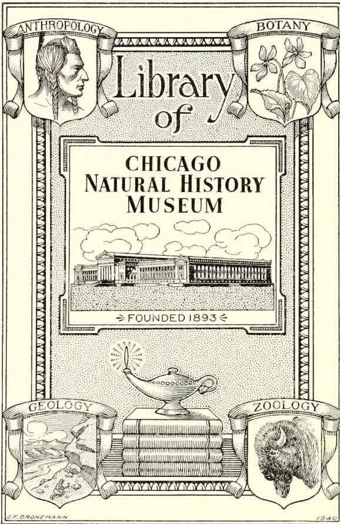
ANTHROPOLOGY
BOTANY
Library of
CHICAGO
NATURAL HISTORY
MUSEUM
⇒ FOUNDED 1893 ⇐
GEOLOGY
ZOOLOGY
C.F. GRONEMANN
1940
This is a decorative logo for the Library of the Chicago Natural History Museum. The logo is enclosed in a rectangular border with a cross-hatched pattern. At the top, two scrolls bear the words 'ANTHROPOLOGY' and 'BOTANY'. Below them are two shields: the left one contains a profile of a man's head, and the right one contains a plant with flowers and leaves. In the center, the words 'Library of' are written in a large, stylized font. Below this, a rectangular frame contains the text 'CHICAGO NATURAL HISTORY MUSEUM' in bold, uppercase letters. Underneath the text is a detailed illustration of the museum building, a long, classical structure with a central portico, set against a background of clouds. Below the building, the text '⇒ FOUNDED 1893 ⇐' is written. At the bottom of the logo, there is a central illustration of a stack of books with a lit oil lamp resting on top. Flanking this central image are two more shields: the left one is labeled 'GEOLOGY' and shows a landscape with a river and rocks; the right one is labeled 'ZOOLOGY' and shows a bison's head. The artist's signature 'C.F. GRONEMANN' is at the bottom left, and the year '1940' is at the bottom right.
Digitized by the Internet Archive
in 2014
https://archive.org/details/tropicalagricul261906ceyl
This image is a scan of a blank page. The paper has a light beige or cream-colored tint. There are a few very small, faint dark spots scattered across the surface, which appear to be scanning artifacts or minor imperfections in the paper. No text, lines, or other markings are present. This image is a scan of a blank page. The paper has a light cream or off-white color with a slightly textured appearance. There are a few very small, faint dark spots scattered across the surface, which appear to be scanning artifacts or minor imperfections in the paper. No text, lines, or other markings are present. This image is a scan of a blank page. The paper has a light beige or cream-colored tint. There are a few very small, faint dark spots scattered across the surface, which appear to be scanning artifacts or minor imperfections in the paper. No text, lines, or other markings are present.AND
Magazine of the Ceylon Agricultural Society.
(FOUNDED 1881.)
EDITED BY
J. C. WILLIS.
SUB-EDITOR :
IVOR ETHERINGTON.
Vol. XXVI.
Containing Numbers I to V. : February to June, 1906.
46787
A. M. & J. FERGUSON,
COLOMBO, CEYLON.
1906.
President:
HIS EXCELLENCY THE GOVERNOR.
Vice-Presidents:
The Hon'ble Sir ALEXANDER ASHMORE, K.C.M.G., Lt.-Governor and Colonial Secretary.
| The Hon'ble Mr. H. C. NICOLLE, Treasurer and Actg. Auditor-General | Sir WILLIAM TWYNAM, K.C.M.G. Mr H. T. S. WARD, Director of Irrigation |
| The Hon'ble Mr. JOHN FERGUSON, C.M.G. | Mr. W. FORSYTHE |
| The Hon'ble Mr. S. C. OBEYSEKERE | Mr. W. D. GIBBON |
| The Hon'ble Dr. W. G. ROCKWOOD, M.D. | Mr. C. P. HAYLEY |
The Hon'ble Mr. FRANCIS BEVEN
Members of the Board:
Ex-Officio.—Members of the Executive and Legislative Councils
The Government Agents of Provinces
The Director, Royal Botanic Gardens
The Controller, Experiment Station, Peradeniya
The Government Entomologist
The Government Mycologist
The Director of Irrigation
The Director of the Museum
The Director of Public Instruction
The Government Veterinary Surgeon
The Superintendent of School Gardens
The Conservator of Forests
Nominated Members:
Central Province.
Mr. T. B. Rambukwelle, R.M.
„ Daniel Joseph
„ W. Dunuwille
Dr. Valentine de S. Duke
Eastern Province.
Mr. Varitambi Kurunathapillai
„ C. A. Lienard
Northern Province.
Mr. V. Casipillai
„ V. Vraspillai, Adigar and J.P.
„ K. U. Tampaiya, District Mudaliyar.
North-Central Province.
Mr. C. J. C. Mee
„ S. Sampander
„ L. B. Nikewewe Dissave
„ G. W. Jayawardene, Mudaliyar and J.P.
„ C. Taldena, R.M.
North-Western Province.
Mr. E. Scott
„ J. Clovis de Silva
„ G. W. Dodanwela
Province of Sabaragamuwa.
Mr. W. Forsythe
„ Dan. J. Jayatileke
„ J. H. Meedeniya, R.M.
Southern Province.
Mr. C. G. Simmonds
„ E. R. Gooneratne, Gate Mudaliyar
„ D. A. Gooneratne, Gate Mudaliyar
„ B. T. Doole, Gate Mudaliyar
Province of Uva.
Mr. A. T. Rettie
„ James Duncan
„ H. O. Hoseason, J.P.
„ T. B. Katugaha, R.M.
Western Province.
Mr. R. Morison
M. Kelway Bamber
E. B. Denham, C.C.S.
Solomon Seneviratne, Atapattu Mudaliyar and J.P.
Don Solomon Dias Bandaranaike, C.M.G. Maha Mudaliyar
Dr. H. M. Fernando, M.D.
Mr. W. N. S. Aserappa
„ W. Jardine
Secretary:
MR. A. N. GALBRAITH, C.C.S.
5
281
777
| PAGE. | |
|---|---|
| Agricultural Society, Past, Present and Future of the Ceylon ... | i |
| " " Progress Report. | i |
| " Ceylon 95, 196 264, 351, 431 | 431 |
| " Society Work of a Local | 334 |
| " Tools ... | 199 |
| Agriculture, Possibilities of Improvement in Village ... | 269, 355 |
| Board of Agriculture, Ceylon 94, 195. | 263, 350, 430 |
| Botany, Lessons in Elementary ... | 422 |
| Castration of Cattle in Ceylon during 1905 ... | 323 |
| Citronella and Lemon Grass in Ceylon | 28 |
| " Oil Industry, Ceylon ... | 283 |
| Education and Agricultural Progress in Denmark and Ceylon ... | 233 |
| Entomological Notes ... 67, 177, 298, 388 | 388 |
| Experiment Stations ... | 1 |
| Gardening Notes, Seasonal 80, 189, 23) | 23 |
| " " " for the Hill | 81, 190, 231, 314 |
| Illuk or Lalang Grass ... | 328 |
| Literature of Economic Botany and Agriculture ... 92, 192, 244, 344, 416 | 416 |
| Maniocca Cultivation ... | 58 |
| Mycological Notes ... | 68, 224 |
| New Products in Ceylon ... | 99 |
| Pasture Lands in Trincomalie District | 413 |
| Silkworm Cultivation in Galle | 411 |
| Village Agriculture, Possibilities of Improvement in ... | 269 |
| At Henaratgoda Botanic Gardens, Ceylon | 104 |
| Burgess's Report on Home Industry | 357 |
| Castilloa Cultivation in Mexico ... | 3 |
| " " in Nicaragua ... | 102, 363 |
| " in the Philippines ... | 202 |
| " La Zacualpa, Plantation ... | 3 |
| " Pests of ... | 364 |
| " Tapping of ... | 865 |
| Ceara, Ceylon Samples ... | 101 |
| " in Ceylon, Cultivation ... | 101 |
| " in the Philippines ... | 202 |
| " Tapping ... | 101 |
| Ceylon and the Manufacturers | 8 |
| " Industry ... | 361 |
| " " London Broker on ... | 271 |
| " " Manufacturer's Opinions on | 117 |
| Coagulation, Chemical Test in ... | 108 |
| " Acids in ... | 360 |
| PAGE. | |
|---|---|
| Cultivation Experiments in India ... | 102 |
| " in the Shevaroys ... | 9 |
| Culture in the Philippine Islands ... | 201 |
| Curing, Kerckhove on, ... | 277 |
| " of Ceylon, Future ... | 272, 277 |
| Devitt on Plantation Industry ... | 118, 271 |
| Drip Tins, Use of ... | 107 |
| Elasticity, To Test ... | 11 |
| Exhibition Ceylon 1906 ... | 203, 206 |
| Hevea in Ceylon ... | 104 |
| " in the Philippines ... | 201 |
| " Pruning ... | 104, 108 |
| In India, Cultivation Experiments... | 102 |
| " Mexico ... | 3 |
| " Nicaragua ... | 102, 363 |
| " Philippines ... | 201 |
| " Shevaroys ... | 9 |
| " Southern India ... | 7 |
| " Travancore ... | 103 |
| Kerckhove on Ceylon Curing | 277 |
| Lace, Report on... | 120 |
| Latex, Direct Export of ... | 12 |
| London Market ... 19, 122, 207, 274, 366 | 366 |
| " Share Market in 1905 ... | 120 |
| Manihot Glaziovii in Ceylon ... | 101 |
| " in Philippines ... | 202 |
| Market in 1905, Review of Plantation | 121 |
| Notes for Planters ... | 118 |
| Packing, Hints on ... | 358 |
| Para in the Philippines ... | 201 |
| Pests ... | 67, 389 |
| " of Castilloa Tree ... | 364, 389 |
| Plantation, and the Home Trade ... | 357 |
| " Grown, in 1905, Report on | 18 |
| " Inferiority of ... | 359 |
| Planters, Hints to ... | 17 |
| Pollarding Hevea Brasiliensis .. | 104, 108 |
| Preparation at Mergui ... | 10 |
| Prices in 1905, Review of ... | 204 |
| Pruning, Thumb-Nail ... | 104, 108 |
| Smoke for Curing, Ceylon ... | 277 |
| " " in Nicaragua ... | 278 |
| Smoking Apparatus as used in Nicaragua | 279 |
| Standard Wanted .. | 118 |
| Tapping at Singapore Botanic Gardens | 12 |
| " High ... | 105 |
| " of Castilloa ... | 365 |
| " of Ceara ... | 101 |
| Thumb-nail Pruning Hevea Brasiliensis ... | 104, 108 |
| Trade Growth of ... | 278 |
| Varieties Tried in India ... | 102 |
| Washed, from the Far East ... | 204 |
| Almond Oil, Wild ... | 371 |
| Bleaching Vegetable Oils ... | 125 |
| Citronella Cultivation in Ceylon ... | 280, 283 |
| " Distillation in Ceylon ... | 286 |
| " Grass for Paper ... | 280 |
| PAGE. | PAGE. | ||
|---|---|---|---|
| Citronella in Ceylon ..... | 280 | Cinchonas, on Pacific Coast, Cultivation of ..... | 131 |
| " Market, London, in 1905 ..... | 287 | Datura Alba, Alkaloids of ..... | 138 |
| " Oil, Ceylon, in America in 1905 ..... | 288 | Eupatorium Ayapana ..... | 28 |
| " " " in 1905 ..... | 23 | Sarsaparilla Cultivation in Ceylon ..... | 37 |
| " " Exports, Ceylon ..... | 283 | Tobacco Cultivation in Hiriyala Hatpattu, Ceylon ..... | 129 |
| " " Industry Ceylon ..... | 280, 283 | " Industry, Ceylon ..... | 37 |
| " " London Report on Ceylon ..... | 282 | " Pot-bellied Sickness of ..... | 177 |
| " " Tests Wanted, Fresh ..... | 281 | ||
| " Yield per acre in Ceylon ..... | 286 | ||
| Coconut Oil, Ceylon, in America 1905 ..... | 288 | ||
| " " Classification in America ..... | 24 | ||
| " " in the United States ..... | 211 | ||
| " " Keeping Qualities of ..... | 369 | ||
| " " Rancidity in, Causes of ..... | 369 | ||
| " " Water, Report on Ceylon ..... | 377 | ||
| Concentration of Vegetable Oils by Lewyak's Apparatus ..... | 125 | ||
| Copra Industry for Hawaii, A Possible ..... | 211 | ||
| " " Mills in America ..... | 211 | ||
| " " Oil Testing ..... | 26 | ||
| Groundnuts in Ceylon ..... | 373 | ||
| Lemongrass in Ceylon ..... | 280 | ||
| " " Market, London in 1905 ..... | 287 | ||
| " " Oil, London Report on Ceylon ..... | 282 | ||
| Lewyak's Apparatus for Concentrating Vegetable Oils ..... | 125 | ||
| Mahua Tree ..... | 372 | ||
| Terminalia Oil, or Wild Almond ..... | 371 | ||
| DYE STUFFS AND TANNING SUBSTANCES : | |||
| Acacia Decurrens or Black Wattle ..... | 209 | ||
| Kamala (Mallotus Philippensis) a Dye Stuff ..... | 209 | ||
| Wattle, The Black (Acacia decurrens) ..... | 209 | ||
| FIBRES : | |||
| Calotropis as a Fibre Plant ..... | 375 | ||
| Cotton Caravonica ..... | 128 | ||
| " " Cultivation in Delft, Ceylon ..... | 127 | ||
| Floss from Funtumia elastica ..... | 212 | ||
| Kapok or Silk Cotton (Eriodendron anfractuosum) ..... | 213 | ||
| Sisal Cultivation ..... | 374 | ||
| " " Hemp, Report on Madras ..... | 375 | ||
| DRUGS AND MEDICINAL PLANTS : | |||
| Areca Nuts in London in 1905 ..... | 290 | ||
| Ayapana (Eupatorium) ..... | 28 | ||
| British American Tobacco Co., (Ceylon) Ltd. .... | 38 | ||
| Camphor Industry, Crude ..... | 32 | ||
| Cardamom Market, London in 1905 ..... | 290 | ||
| Cinchona Cultivation History of... .. | 131 | ||
| " " " in California ..... | 133 | ||
| EDIBLE PRODUCTS : | |||
| Avocado, Salad Fruit for the Tropics ..... | 41, 143 | ||
| Banana Flour ..... | 140 | ||
| Cacao Drying Apparatus ..... | 218 | ||
| " " in British Honduras ..... | 218 | ||
| " " in Seychelles ..... | 379 | ||
| " " World's Crops and Consumption 1901-04 ..... | 170 | ||
| Cardamom Market, London in 1905 ..... | 290 | ||
| Cassava Cultivation ..... | 58 | ||
| " " Root Preparation in British Guiana ..... | 65 | ||
| Coconut, Changes Taking Place in Ripening of a ..... | 296 | ||
| " " Cultivation ..... | 160 | ||
| " " Products in Ceylon in 1905 ..... | 165 | ||
| " " Prospects in Ceylon in 1906 ..... | 166 | ||
| " " Water, Report on Ceylon ..... | 377 | ||
| Coconuts, for Sugar Making ..... | 377 | ||
| " " in Seychelles ..... | 379 | ||
| " " Manuring ..... | 160 | ||
| " " under Irrigation ..... | 164 | ||
| Cola in Seychelles ..... | 379 | ||
| Copra in Tahiti ..... | 218 | ||
| " " Prospects in Ceylon in 1906 ..... | 166 | ||
| Formalin for Fruit Conservation ..... | 222 | ||
| Fruit Conservation by Formalin ..... | 222 | ||
| " " Culture at Nuwara Eliya, Ceylon ..... | 51 | ||
| Grape Vine Cultivation in Ceylon ..... | 158 | ||
| Groundnuts or Peanuts ..... | 216 | ||
| Jak, Economic Possibilities of Indian Macadamia Ternifolia or Queensland Nut ..... | 39 | ||
| Mangosteen, The ..... | 159 | ||
| Mariocca Cultivation ..... | 58 | ||
| Nutmegs in Seychelles ..... | 379 | ||
| Peanuts or Groundnuts ..... | 216 | ||
| Pepper Industry, Malabar ..... | 381 | ||
| Pineapple Industry, Co-operation in Hawaiian ..... | 214 | ||
| " " Syrup, Preparation of ..... | 221 | ||
| Queensland Nut, Macadamia Ternifolia ..... | 39 | ||
| Sago, Cycad ..... | 385 | ||
| Seychelles Agricultural Products in 1904 ..... | 378 | ||
| Sugar Growing in Java ..... | 175 | ||
| " " Making from Coconuts ..... | 377 | ||
| Tea, Brick for Tibet ..... | 219 | ||
| " " Manufacture and Preparation of ..... | 219 | ||
| " " Crop, and how to Manure, Excessive ..... | 168 | ||
| PAGE. | PAGE. | ||
|---|---|---|---|
| Tea Effect of Burying Organic Matter on Quality of ... | 383 | Red Ants (Ecophylla) Cure for | 299 |
| " Prunings, Disposal of ... | 295 | Red Borer (Zeuzera coffea) in Tea ... | 177 |
| Teas for Colombo Market, Sorting and Grading ... | 52 | Red Slug (Heterusia cingala) in Tea | 177 |
| Tomato Cultivation in the Tropics | 291 | Ribbed-mite (Phytoptus carinatus) on Tea ... | 388 |
| Vanilla, Analysis of ... | 219 | Rice Pest (Nymphula) ... | 300 |
| " in Seychelles ... | 379 | Scale Insects (Aspidiotus camelliae) on Castillia... | 389 |
| " in Tahiti ... | 218 | Shot-hole-borer, Smearoleum for... | 299 |
| Tea Caterpillar Pest (Narosa conspersa) | 67 | ||
| " Pests (Helops) ... | 67 | ||
| Tortrix Pest (Capua coffearia) .. | 388 | ||
| " " in Ceylon ... | 301 | ||
Scientific Agriculture :— |
|||
| Aberdeenshire Association, The | 402, 404 | MYCOLOGY : |
|
| Agricultural Wants of Jaffna ... | 74 | Branch Canker in Tea ... | 69 |
| Agriculture and the Empire ... | 401, 405 | Brown Blight in Ceylon ... | 68 |
| Green Manures, Notes on ... | 408 | Mycological Notes ... | 68, 224 |
| Lime's Influence on Plant Diseases | 180 | Tread Blight .. | 224 |
| Liming of Soils ... | 70, 180 | ||
| Nitrogen in Air and Plants ... | 402 | ||
Plant Sanitation :— |
|||
| Bordeaux Mixture, Physiological Effects of ... | 389 | Horticulture :— |
|
| " " Testing ... | 393 | Antirrhinums, Cultivation of ... | 314 |
| " " Mixtures, Preparation of | 390 | Brussels Sprouts, Cultivation of ... | 81 |
| Copper Compounds as Fungicides | 390 | Carrot Cultivation Notes ... | 315 |
| Fungicides for Preventing Diseases of Fruits, Uses of ... | 390 | Cabbage Club Rust ... | 191 |
| " Preparation of ... | 390 | Gardening Notes Seasonal 80, 189, 230 | |
| " Sulphur ... | 396 | " " " " for the Hill Districts .. | 81, 190, 231 |
| Groundnut Leaf Disease ... | 390 | Lawns in Ceylon, Making ... | 190 |
| Spraying Mixtures ... | 225 | Potato Cultivation in Ceylon ... | 232 |
| Sulphur Fungicides ... | 396 | Pot Plants, Care of ... | 80 |
| Potting Compost for Plants ... | 80 | ||
| Propagation of Plants ... | 309 | ||
| Shade Trees .. | 313 | ||
| Streptocarpus, Cultivation of ... | 314 | ||
| Tomato Cultivation ... | 399 | ||
ENTOMOLOGY : |
|||
| Buprestid Beetle (Psiloptera fastuosa) | 300 | ||
| Case Worms (Psychidae) ... | 298 | ||
| Coconut Caterpillar (Nephantis serinopa) ... | 299 | Education :— |
|
| Crickets (Gryllus sp.) in Lawns, Cure for ... | 178 | Agricultural Education in Various Countries .. | 235, 316 |
| Crotalaria Pest (Polyommatus boeticus) | 300 | Education and Agricultural Progress in Denmark and Ceylon ... | 233 |
| Entomological Notes, Monthly ... | 67, 177, 298 | ||
| Eri Cocoons, Pest of (Dermestes vulpinus) ... | 389 | ||
| Hornets (Vespa cincta) Attacking Apiaries ... | 179 | ||
| Lantana bug (Orthezia insignis) in Ceylon ... | 177 | ||
| Locusts in Ceylon (Aularches militaris) | 178 | ||
| Longicorn Beetle on Rubber ... | 67 | ||
| Nettle Grub (Thosca) on Tea ... | 288 | ||
| Pot Bellied Sickness of Tobacco ... | 177 | ||
| Pterolophia Annulata, Longicorn Beetle on Rubber ... | 67 | ||
PAGE.
PAGE.
CATTLE :| Castration of Cattle in Ceylon during 1905 |
323 |
| Dehorning Calves | 88 |
| Indian Cattle, Improvement of | 326 |
| Pasture Lands in Trincomalie District | 413 |
| Accidents in Poultry, How to Treat | 83 |
| Apoplexy in Poultry | 191 |
| Baldness in Poultry | 192 |
| Blindness in Poultry | 322 |
| Bumble Foot .. | 322 |
| Bronchitis and Cold | 192 |
| Chicken Pox | 322 |
| Cholera, Fowl | 322 |
| Diseases of Poultry | 83, 191, 322 |
| Guinea Fowl, The | 84 |
| Silkworm Cultivation in Galle | 411 |
| Agricultural Credit Banks | 249 |
| " Credit in Germany | 425 |
| " Society, Ceylon | 89 |
| " " Past Present and Future of Ceylon |
i |
| " " Progress Report Ceylon 95, 196, 264, 351, 431 |
i |
| " Society, Work of a Local |
334 |
| Agriculture, Ceylon Past and Present | 90 |
| " Indian Department of | 259 |
| " Progress of, in United States |
345 |
| Agri-Horticultural Shows, Instruc- tions to Exhibitors |
260 |
| Banks, Agricultural Credit | 249 |
| Board of Agriculture, Ceylon | 94, 195, 263, 350, 430 |
| Botany, Lessons in Elementary | 422 |
| Co-operative Societies, Farmers' | 254 |
| Exhibition, Lagos Agricultural | 248 |
| Experiment Stations and Agricultural Instruction .. |
338 |
| Farmers' Co-operative Societies | 254 |
| Illuk or Lalang Grass | 328 |
| Irrigation in Ceylon, Future Pros- pects of |
252 |
| Judging at Agri-Horticultural Shows | 418 |
| Lalang Grass or Illuk | 328 |
| Literature of Economic Botany and Agriculture... |
92, 192, 244, 344, 416 |
| Shows, Gampola Agri-Horticul- tural .. |
343, 420 |
| " Nuwara Eliya Agri-Horti- cultural |
419 |
| " Weligama Agri-Horticul- tural .. |
245, 422 |
| Diseases of the Horse's Foot, The... | 261 |
| Land Revenue Administration C. P. India |
261 |
| Royal Botanic Gardens, Peradeniya, Guide to the |
261 |
| Anona Palustris | 350 |
| Bee-keeping Industries, Colonial | 430 |
| Calathea Allouya or Topee Tampo | 349 |
| Caravonica Cotton | 262 |
| Money, Weights and Measures in Eastern Countries |
429 |
| Rubber Plants, Stumping | 262 |
| Sarsaparilla | 261 |
| Sinhalese Legend re Poisonous Plants | 195 |
[Faint page: no legible print of its own could be verified; text withheld (stage 4 review list)]
This image is a scan of a blank page. The paper has a light beige or cream-colored tint. There are a few very small, dark specks scattered across the surface, which appear to be scanning artifacts or dust particles. No text, lines, or other markings are present on the page.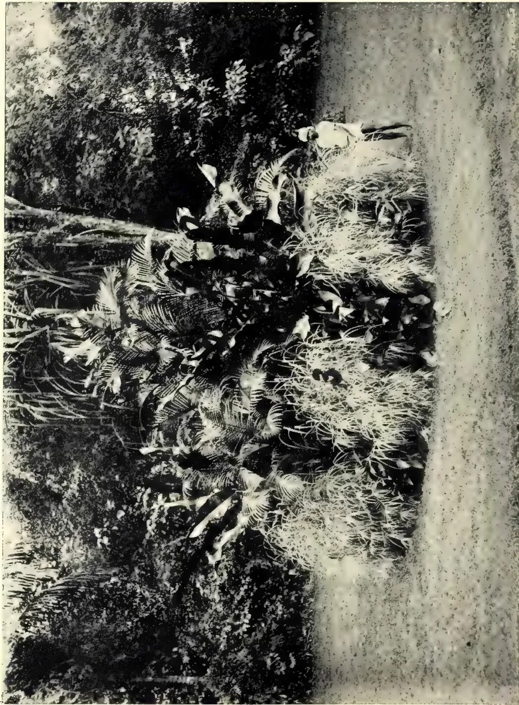
PLATE II.
ORNAMENTAL GROUPING OF PLANTS AT THE ROYAL BOTANIC GARDENS, PERADENIYA.
Photo by H. F. Macmillan.
THE
TROPICAL AGRICULTURIST
AND
MAGAZINE OF THE
CEYLON AGRICULTURAL SOCIETY.
VOL. XXVI.
COLOMBO, FEBRUARY 15TH, 1906.
No. 1.
The Past, Present and Future of the Ceylon
Agricultural Society.
THE PRESIDENT'S ADDRESS.
GENTLEMEN,—At the close of the first year of the working of the Society it is well to consider our position, and to see how far we have progressed towards the attainment of the purposes for which we have associated ourselves. The purposes for which the Society was formed are clearly defined. They are:—
Firstly, to create a public opinion amongst the mass of the native population that improvement of agricultural methods is desirable.
Secondly, to show how such improvement can be effected.
Thirdly, to assist every class interested in land by placing at their disposal the latest and best information on the subjects in which they are severally interested.
Fourthly, to procure seeds of the best varieties of crops now grown and to introduce and experiment upon new products.
Fifthly, to improve the breed of native cattle and thus increase the wealth of the population.
Sixthly, to introduce as soon as public interest is sufficiently awakened a system of co-operative credit banks, and to save the peasant cultivators from the burden of extravagant interest paid for short loans advanced by money-lenders against the growing crops.
My right to congratulate you on the result of our first proposal will not be disputed when I tell you that the
MEMBERSHIP OF THE SOCIETY
has increased from 40 at the end of 1904, just after the first meeting, to 944, and applications are being daily received that bring the number practically up to 1,000. Besides the membership of the Parent Society there are now 41 local Societies formed and affiliated with the Parent Society. Of these 41 local Societies, 16 have not sent in the lists of their members, but the total number on the books of the 25, who have reported, is 1,373; so we may fairly assume the total local membership
34225
PHILIPPE
iias 2,000. We have, therefore, 3,000 active centres of interest distributed over the island—a leaven of progressive instinct from whose beneficent action I entertain the most hopeful expectations.
But having so far succeeded in arousing this interest, what have we done to satisfy the awakened demand for information? We have acquired “The Tropical Agriculturist,” probably the best known agricultural magazine in the East; and, having recast it, have started it as “The Tropical Agriculturist and Magazine of the Ceylon Agricultural Society” under the Editorship of the Director of the Botanic Department who, with every member of his staff, has given the most whole-hearted assistance to the Society—a remark that applies with equal justice to the Director of Public Instruction, the Government Agents, the Colonial Veterinary Surgeon, and every other official whose position gives him an opportunity of influencing the people and forwarding the movement. Besides the five Experimental Stations worked by the Botanic Department, 38 of the local Societies are trying experiments, and over 50 individuals have also formed Experimental Stations under advice from the Society, while the number of school gardens in which elementary agricultural and floricultural instruction is given to the rising generation, is steadily increasing under the supervision of the Superintendent of School Gardens and his assistants.
The Society has also drawn up rules for the conduct of agricultural shows, of which eight have already been fixed for this year under our auspices, and arrangements have been made for the sale of exhibits, if desired, by the exhibitors. I regard these shows as most valuable means of instruction by exciting emulation, so that pride may be taken in the best cultivation, the best cattle, the best home preparation of native products, &c. To bring the information offered to the people within their reach, editions of the journal of the Society are being issued in Sinhalese and Tamil, and the catalogues of the shows will also be printed in the vernacular. In addition to this, any information of immediate importance is printed in the vernacular, and hundreds of leaflets are sent to the local branches. The monthly Progress Reports have kept you informed of the details of the work of the Society in obtaining fresh seeds and arranging for their distribution and exchange, and the 14th Progress Report now before you shows how active is the work of the Society in every branch of agricultural experiment. We have shown that cotton grows well so far as the first crop is concerned, and while no scientific man will give an opinion based on only one year’s experiment, we may hope that capitalists will realise that there are many thousands of acres in Ceylon of equal promise as the area of experimental cultivation.
The first step has been taken in sericulture, and the houses and feeding trays are all ready at Peradeniya for an experiment on a commercial scale when the plants are sufficiently grown to supply food for the silkworms. The difficulty in the way of all attempts to introduce new cultivation is that of finding a market for the products, especially where the quantity is small. Well, gentlemen, we have met this difficulty by undertaking to purchase at market rates all such products, and we have arranged with gentlemen in Colombo for their disposal until such time as the production reaches such a volume as will justify merchants in making contracts for delivery in Europe.
The Progress Report will show you how successful the Colonial Veterinary Surgeon has been in his efforts to improve the breed of cattle by the elimination of inferior bulls. Under his instructions over 1,500 of these mischievous bulls have been rendered innocuous, and local Societies are now becoming alive to the benefits of his method, which reduces to a minimum the losses experienced by the primitive and hazardous practice heretofore adopted.
iiiI may add that the gentlemen interested in Poultry Breeding are doing excellent work. This branch of live stock work has already been ably supervised by the Ceylon Poultry Club, which publishes an excellent magazine.
I now come to the last proposal in our original scheme. I see by the Progress Report that it is proposed by three of the local Societies to start credit societies in their districts, and I observe that Mr. Wickremaratna is to-day reading a paper in which this subject is dealt with. I shall reserve any observations for the discussion on the paper. Mr. Wickremaratna is one of our most active and useful members, and anything that he has to say will be listened to with much interest. I will now only remark that no more useful step in advance is possible than the formation of such co-operative Societies, provided that they are formed on a sound business basis.
I will now, gentlemen, approach two important questions that I propose to lay before you to-day. I have mentioned the valuable assistance voluntarily rendered by the Director of the Botanic Department and others. The time has come when it is necessary to increase our staff. I am not in favour of the creation at present of an agricultural department as a regular branch of the Government Service, for the creation of such a Department would inevitably destroy the control of this Board, and ultimately deaden the active co-operation of the local branches. But I desire to secure for the Society the continued services of Dr. Willis and the Peradeniya staff. Dr. Willis has been editing "The Tropical Agriculturist" and no one knows more intimately than the Hon. Mr. Ferguson who is present to-day, what heavy labour that entails. I propose that in addition to his present duties, Dr. Willis shall take over not only the Editor's work but the general supervision of the Botanical work of the Society, and that he shall receive from this Board an honorarium to be settled by the Finance Committee. I hope you will agree with me that the labourer is worthy of his hire.
Now and again I have heard it stated that the Society is not sufficiently active, and that nothing has come of our efforts. I venture to think that the complaint is not well founded. We have been ploughing the furrow and sowing the seed. The harvest is not yet, and what that harvest will be depends upon the soil over which the seed has been cast. But if the crop is to grow it must be tended with the husbandry of instruction, and watered with the waters of example. To do this we must engage at least three instructors, of whom two will be Sinhalese and one Tamil, who will undertake the active supervision of experimental plots, and who will by lectures and personal advice assist in accelerating the movement for improvement. I suggest that names should be submitted by the parent and branch Societies from which the Instructors can be selected. They would go to Peradeniya for a six months' course, and pursue their work of instruction for a time under the personal supervision of an experienced member of the Botanic Staff.
Again, the time has come when something should be done for the important tobacco industry, and I propose that an experienced tobacco-grower and curer shall be engaged, who will not alone grow a crop from selected seed, but who will be available for visits of instruction to those engaged in the cultivation in the Central and Northern Provinces. I am aware that ventures in tobacco-growing for the European market have been tried before and failed. To my mind that is not sufficient reason why we shall not try again. Tobacco grows here, and grows well. We desire to improve its quality with the botanical and chemical talent now at our disposal. I cannot admit that this desire is unattainable, and I submit that we shall not be doing our duty by the large number of tobacco growers in the North and Central Provinces if we decline to experiment in their behalf. There is at present
ivin the island a gentleman who has seven years' experience as a tobacco cultivator in Sumatra, and I propose to utilise his services. In this matter we are in the same position as was Jamaica, where tobacco grows freely, but the quality was not equal to that of Cuba. However, the Botanic Department was not to be beaten, and I learned from a letter written by the Director of Botanic Gardens that at last they had produced tobacco worth 6s. to 7s. per lb. in the market. We must do the same. At least if we cannot command success, let us do more: deserve it.
I must apologise for the length of my statement, but I cannot conclude without expressing my warmest acknowledgement to our able and energetic Secretary, Mr. Denham, who has worked so unremittingly in the interests of the Society since its formation, and to the many gentlemen who have read valuable papers at our monthly Board meetings are due the grateful thanks of the Society.
While the Government is ready and willing to assist us by every means in its power, it must not be forgotten that the Ceylon Agricultural Society is a non-official body dependent for success upon the confidence and co-operation of the people. May that confidence continue and co-operation produce in the future a steady increase in the comfort, the happiness, and prosperity of the people of Ceylon.
As there seems to be considerable misconception going at the present time as to the aims and objects of an Experiment Station, it may be useful to give a slight outline of what is aimed at in such an institution. Ceylon practically led the way in the establishment of large Experiment Stations; many of the West Indian and other colonies, besides Java and other places, possessed such places, but they were all on the very small scale, growing one-tenth of an acre with this manure, one-tenth with that, growing one-quarter of an acre with this crop, one-half with that, and it was Ceylon which really set the example, now being universally followed, of having large Stations, upon which the various crops should be grown on large areas, so that enough yield should be obtained to be dealt with in the same way as it would be upon an estate, and enough to be worth selling in the open market, instead of getting a valuation of a small sample through Kew or the Imperial Institute, or in other ways.
The Experiment Station represents an outgrowth of the older organisation of "Botanic Gardens," which were kept up in most of the first-class Colonies, and brings them into line with the more modern conditions, to which the older organisation is no longer suited in any way. Until about the year 1880 (in Ceylon) or 1885, the main duty of the Botanic Gardens was the introduction of new plants into Ceylon, which were likely to prove useful in agriculture or in horticulture, but since that period the work has gradually decreased in importance as practically all the useful plants that would grow in the island were one by one introduced, and as the organisation of private agencies for the supply of seeds and plants more and more narrowed the sphere of operation of a public agency for the same purpose. During the period from 1880 to 1890 almost the only useful plants that were actually introduced by the Botanic Gardens were the Milk tree, the Fustic, the Eagle wood, Cinnamomum Cassia, Jacaranda mimosæfolia, the Tree Tomato, species of Willughbeia and Landolphia, the Benzoin, the Balata, Millettia, the Maté, Cedrela odorata, and the Kei apple, none of which can be said to be of any serious importance in Ceylon, or likely to become of such. The duties of the Botanic Gardens were in fact reduced to pushing the plants already introduced, like cinchona, cacao, and rubber. These products being once properly taken up, it is evident that the older organisation must either expand in new directions, or become moribund, attending mainly to horticulture (we leave out of consideration in this place the very important duty of working out the native flora of the colony, because this has now been very largely done for Ceylon, though not for such colonies as the Straits).
The salient feature of the past century in Ceylon was the occurrence of a series of "booms" in the cultivation of the different economic products formerly only cultivated by the native races of tropical mankind, or only collected from wild plants in the jungle. One by one, coffee, cinchona, tea, cacao, cardamoms, and indiarubber, have risen into prominence. The history of the present century will almost certainly be very different, seeing that now practically all the tropical products of any importance whatever are being cultivated by Europeans or Americans somewhere or another, with all the resources of capital, science, and politics.
Acclimatisation, then, has seen its best days here, and it is now of much greater importance to attend to our existing industries, and preserve and extend them, than to devote all our attention to the comparatively minor chance of replacing them when they fail. It is to meet this new phase of the economic position that the constitution of the Royal Botanic Gardens has been largely changed during the past ten years, and that to the old organisation of Botanic Gardens for the introduction—
2and trial on a very small scale—of products likely to be useful, there have been added Experiment Stations for the study of methods of cultivation and preparation of products already grown in the island, upon a commercial scale, as well as for the trial of “new products” which may yet become of value in Ceylon agriculture. Such experiments are better suited to a properly equipped scientific institution, which is not obliged to show a profit, than to private individuals, especially as such work is becoming daily more technical, and agriculture more scientific.
The Experiment Station then, deals with such questions as “what is the best manure for cacao on the soil there existing?” “what is the best way of cultivating lemongrass?” “what is the cheapest way of curing cacao to get the best price?” “what is the best shade tree to use among tea?” and so on. The usual way of tackling such a question is to have two plots, of whatever size may be sufficient to give results that are fairly reliable, one without any treatment, the other with the treatment that is the subject of experiment, and to compare the result of these two plots over a series of years. Should the plot treated in the new way always show a smaller return than the untreated one, it is fairly evident that that method of treatment is a failure, if the reverse, that it is a success.
It is no part of the ordinary duty of an Experiment Station to show model plots—the important thing is the comparison between the plot treated in a particular way, and the plot untreated. Naturally the plot will be kept in as good condition as possible, but visitors must clearly understand that the Experiment Station is not necessarily a place where they come to learn the very finest way of laying out and cultivating their crops. Nor must they expect results in a very short period; it often takes several years to obtain a result of any definite value. Nor again, should they regard everything that is going on as a subject for imitation, unless they realise that it is experimental; many, if not most of the experiments, will probably be failures, and in any case, the results will require modification to suit the particular circumstances of the new place.
The results of the experiments have to be carefully worked out, and are then published by the institution, and people who try the experiments going on upon the Experiment Station for themselves must realise that they are trying experiments, and when they fail, as they perhaps most often must fail, should not blame the institution, which cannot and will not take responsibility for unpublished work. As an illustration of this, take the experiments now going on at Henaratgoda upon tapping rubber trees above six feet from the ground. These are old trees and the process is as yet simply an experiment, yet people have seen it going on, have gone off and tapped young trees in the same way, and now blame the Department for their failures.
We have already referred to the fine La Zacualpa rubber plantation in Mexico, of the Hidalgo Plantations Co., and now we have received further particulars about it in an interesting pamphlet entitled "Rubber: what it is and how it grows," by the general manager of the company. This is the second edition of the pamphlet (which is illustrated from photographs), and in his foreword the author says, "Since the first edition was issued, rubber has advanced in price, with every prospect of its going higher, and the attention of the business world is more than ever turned to this profitable industry. This book is dedicated to the young people of our public and private schools, with the hope that the matter it contains will be found interesting as well as instructive."
The first part deals with rubber generally, but here we only quote some particulars about La Zacualpa estate, which show how a big rubber estate in Mexico is run and give information of use to planters of Castilloa elastica in Ceylon, India, Assam, &c. :—
La Zacualpa rubber plantation is, without doubt, the foremost of its kind in Mexico, and for depth of soil, requisite rainfall, systematic drainage and intelligent management has not its equal in the world. It is situated between the towns of Huistla and Escuintla, about 20 miles from the Pacific Ocean, and near the Pan-American railroad which is to connect Tapachula with the Tehuantepec railroad at San Geronimo. This road has already reached Tonala, and will be pushed through to completion under a most favourable concession from the Mexican Government. The planted trees are easily accessible at all points by avenues running for miles; seven of these have already been named, as follows: Harrison avenue, Van Court avenue, Alicia avenue, Butler avenue, San Carlos avenue, La Reina avenue, Santa Helena avenue. These are crossed by streets that are numbered, and the visitor can ride for miles through groves of healthy rubber trees, the branches of the older trees arching overhead. At the present writing some 8,000 acres are planted.
CASTILLA LACTIFLUA.—In a letter received from Mr. O. F. Cook of the Agricultural Department, Washington, he says :—" You will doubtless be interested to know that I have recently described the Soconusco rubber tree as a distinct species, under the name, Castilla lactiflua. The Castilla of the Soconusco District of the State of Chiapas ("C. Lactiflua"), is peculiar in having the complementary inflorescence flattened and with a broad mouth; it is very similar to the primary, except in the smaller size. The specific name alludes to the fact that the milk of the tree flows freely when the bark is cut, so that it can be collected in quantity and coagulated by improved (creaming) methods, instead of the rubber being harvested wholly or partly by pulling the 'scrap' (burucha) from the gashes in which it has dried."
The Department (or County) of Soconusco, in the State of Chiapas, one of the twenty-seven States forming the Republic of Mexico, is the natural home of the Castilloa elastica, or Mexican rubber tree, as proven by the great number of wild rubber trees which grow spontaneously in its forests. In their wild state they grow tall and lank, reaching a height of over fifty feet and a diameter of twelve to eighteen inches.
As far as known the trees are long-lived, and increase their output of latex yearly until as many as twenty-five pounds of crude rubber have been taken from a single tree. It is only within a few years that attention has been called to the cultivation of this tree. During the years 1889 and 1890 a grove of some 5,000 of these trees was planted on La Zacualpa, a plantation in the above Department, which trees are now (1905), on an average, eighteen inches in diameter and forty feet in height, and are yielding about two and one-half pounds of rubber to the tree. They stand about 400 to the acre and are in prime condition. These are the trees referred to by Mr. O. F. Cook, Bulletin 49, issued by the United States Department of Agriculture, as follows:—"The planted trees at La Zacualpa abundantly demonstrate the practicability of rubber culture."
The successful production of rubber and growth of these trees, combined with their present healthy state, has proved the fact that Castilloa elastica can be easily cultivated in its native habitat, with large profits. Cultivated trees are raised from the seed, and begin to yield milk during the sixth year from date of planting.
The trees have no natural enemies, as, by reason of the quantity of resin and albuminoids contained in the milk, they are not molested by worms, insects, birds or animals.
Owing to the successful conditions noted above this plantation has been extensively developed, and under the care of expert rubber cultivators about 3,000,000 rubber trees are growing vigorously. The cultivation of rubber is a new enterprise, calling for the most careful study, and is a notable addition to the world's varied industries. Consequently, the questions of soil, rainfall and climatic conditions must enter largely into the calculations of those contemplating its future. The rubber tree requires a rich loam soil; warm, moist climate; low altitude; a large and evenly distributed rainfall, and perfect drainage. All these conditions exist in the Department of Soconusco. The rain record, taken daily by the British Vice-Consul, R. O. Stevenson, has averaged 160 inches for many years past. The plantation consists of 18,791 acres of land, of which 12,000 acres have been set apart as La Zacualpa Rubber Plantation and are now being planted with rubber trees.
LABOUR.—The management is entrusted to one superintendent, two major-domos, or sub-managers, and one corporal to every thirty men. During the planting season about 300 men are employed, with ten corporals. All the planting is done under the supervision of rodmen who have formerly worked with engineers, and the lines outlining the planted squares and avenues between are run with great care. At sunrise the plantation bell calls the labourers to work, all assembling in the patio, or yard, in front of the manager's house. The major-domos receive their instructions from the manager and communicate them to the corporals, who in turn direct their men, regarding the work of the day; and are responsible for the performance of their respective duties. The bell, which can be heard in all parts of the plantation, announces the noon hour, and at 1 o'clock work is resumed, continuing until sunset. Everything is done in the most systematic manner, and the plantation is kept clean and in good order at all times. The supplies needed are furnished from the company's store, and a large bake oven is provided for the use of the labourers. Generally four or five women do all the baking, and sell bread to those wishing to buy.
The location of the plantation is an ideal one, level for the most part, but sufficiently rolling for good drainage, well watered, entirely free from stones and gravel, and has the reputation all through that country of being a very
5Saps and Exudations.choice strip of rubber land, The elevation at no point exceeds 400 feet, and at some places is as low as 100 feet. La Zacualpa Rubber Plantation is a most interesting place, and improvements are constantly being made. A sawmill is in constant use, preparing timber for the construction of permanent houses for the native labourers and other buildings for the company's use. Excellent tiles have been made from clay found on the plantation and are used in roofing buildings. The population of La Zacualpa today, including men, women and children, is over 600. The same plan has been carried out in the buildings for the labourers as that used in the plantation proper, the buildings being situated on plazas, or squares.
The Castilloa elastica, or Mexican rubber tree, is between five and six years old when it blooms. Before blooming the tree sheds its leaves. The blossoming season begins in January and continues until April. Clusters of small, whitish blossoms first put forth, and three weeks later the tiny petals fall, leaving a little green centre which gradually enlarges, and is filled with seed points sticking fast to a round disc. The blossoms are as numerous as the leaves, and each one has at least twenty seeds about the size of an ordinary bean. When the blooming and seeding time is over the trees put forth new leaves.
The seeds are encased in a shell which is hard while green, but it soon softens into a sticky substance like fish gelatine. The first turning in the ripening process is to a sickly yellow, which gradually changes to a bright red. As soon as the seeds are ripe, with the first rains they begin to fall. This is a busy time on the plantation. The seeds literally cover the ground underneath the trees, and the labourers gather them into sacks and carry them to the nurseries. There they are dumped into pails filled with water and washed thoroughly to detach them from the discs and rid them of the enveloping gelatine substance. When the seeds have been ripe sixty days they will no longer germinate, and to get the best results should be planted immediately after washing, which is done to facilitate handling and prevent them germinating in the gelatine coating.
PLANTING.—There is some difference of opinion among planters as to the best methods of planting, some advocating partial shade, and again some would plant from a nursery previously formed, and others with the seed at stake. Difference of local and climatic conditions is no doubt the cause of this diversity of opinion, as each section calls for different methods. The method adopted on La Zacualpa and that which has been productive of the best results in that locality is the following.—
The land is first surveyed into squares of thirty-three acres each, which includes avenues and roads twenty-four feet wide between them. The roads run in straight lines and are cleared of all trees and shrubs, thus making them available for the use of the workmen and inspection of the plantation. The roads running north and south are called avenues, and those east and west streets, the former being named and the latter being numbered. The roads are now several miles long, and in order to facilitate transportation of the labour to various parts of the plantation, the Company is about to put in a small electric railroad. The land is cleared by cutting down the forest and is then burnt off. Some of the largest trees are left, and most of them escape the fire and send out new foliage, which then acts as partial shade to the young trees. After burning the land is then staked out to allow for 400 trees to the acre. A small mound of earth is made at each stake, and the rubber seeds are imbedded therein.
The seed will germinate in from eight to fifteen days, and one month from the time of planting the plant attains a height of about eight inches, and its growth from this time on is rapid and may roughly be put down as one foot per month. Our three-year-old trees are over thirty feet high, and those of four years about
Gums, Resins,6thirty-five feet. After the planting has been done, great care is taken that the forest growth does not choke out the young tree. This growth is kept down continually, thus giving the young rubber tree a good start until it is able to take care of itself, which it can do two years after planting, after which time it requires very little attention.
TAPPING METHODS.—The native Indian method of tapping is as follows:—Before beginning to tap a place is selected on the tree, preferably on the inclined side, and a hole made in the ground below, lined with a wide green leaf. The tapper makes two incisions with his machete at right angles, coming together in the centre. This is done to ascertain where the milk runs best. Once decided, the tapper makes a narrow incision at the point of convergence and improvises a funnel of the same leaf used in lining the hole in the ground. This acts as a conduit for the milk, which runs from the tree in a steady stream into the hole until it coagulates along the line of incision, when, if desired, it is scraped off twice or more before the stream finally ceases. Very often the milk spurts out, and one could not stand close to the tree where the machete is at work without getting one's clothes spoiled. The rubber coagulates where it falls on the clothes, and will not wash out; only a solvent will remove it.
The bark of the tree is not only cut once, but at least four or five times, at intervals of two feet. The next year the angles cross each other, giving the tree a peculiar criss-cross appearance. Once the milk is flowing freely, the tapper leaves the tree and goes to another, repeating the process already described. By the above method a dozen trees are considered an average day's work. When the milk ceases to flow the tapper returns and carefully picks up the leaf in the hole and pours its contents into a large gourd. This is naturally a crude and wasteful process. An unskilled tapper either gets all the milk on his own clothes or else it runs round the tree and is lost. It is usual to begin tapping in May and continue until December inclusive.
The latex, or milky juice of the bark of the rubber tree, is quite distinct from the sap which circulates through the wood, and contains from 32 to 44 per cent of gum. Pure rubber milk is white when it first runs from the tree, closely resembles that of the cow; but in the drying process it gradually oxidizes and turns black.
COAGULATING—NATIVE INDIAN METHOD.—When the milk is brought in from the forest it is thinly spread on the long, palm-shaped leaves of the oja blanca, which have first been laid on the ground in the hot sun. Toward the stem, where the milk lies thickest, it is necessary to stir it while drying; otherwise it would coat over thickly on the outside and be full of the residue fluid, bringing a less price in consequence. When the leaves are coated evenly, a quarter-of-an-inch thick, they are piled one above another and pressed hard enough to cause the rubber strips to adhere closely. Then, by a dexterous movement, the tough leaves are pulled off and the thin layers are rolled into slabs ready for packing.
CLEANSING THE RUBBER.—The slabs of dried rubber are packed in bales of 150 pounds each, covered with the native-made matting, sewed up in sacks, shipped per steamer to various countries and sold to the rubber manufacturers. The first process in the manufacture of crude rubber—necessary on account of its being prepared by the native method—is to pass the slabs through large corrugated steel rollers, water falling from a reservoir upon the rubber as it passes through. This is repeated a number of times until all the dirt and foreign matter is eliminated, and the rubber rolled into thin perforated sheets having a rough surface. These sheets are from eight to twelve feet long, and eighteen inches wide. They are then hung in the dry room, where they remain until all the moisture has evaporated. The rubber is then ready for the next process.
7Saps and Exudations.WASHING THE RUBBER.—By the methods now adopted the foreign matters are washed out of the latex before coagulation takes place, thus producing a very high grade of rubber from the castilloa, having a marketable value equal to that of Para. Until now it was generally assumed that the Central American Rubber was of much inferior grade to that of Para. It has now been proved, however, that the actual difference is very slight, if there is any, and resolves itself into the question of preparing it for the market at the time of tapping. During the past few months the best qualities of some rubber from cultivated castilloa trees brought $1.51 and $1.56 gold per pound on the London market. This price was higher than that of best South American Para sold at the same time. Mexican rubber from wild castilloa trees and shipped in the old way already referred to was quoted at 60 and 65 cents per pound, or less than one-half the price obtained for the same rubber prepared according to modern methods. As it is necessary to treat the latex as soon as possible after it is collected from the tree, receiving stations should be established on a large plantation, such as La Zacualpa, so as to avoid the transportation of the latex to any great distance.—Ceylon Observer.
A planting correspondent of the Madras Mail refers as follows to the rubber planting industry in Southern India:—
Ficus elastica is certainly not a tree to plant amongst coffee or near anything valuable, if one may judge from the Peradeniya trees. These completely occupy a large area with their roots, and are now showing signs of decay. As, however, I understand they are getting on for 50 years old, there would be time to extract a fortune out of them if they contained it; some quicker-yielding trees, however, are preferable. Kicksia trees grow well in S. India at 3,000 feet or so; at Peradeniya it is found that they are so eaten by caterpillars that nothing can be done with them.
Vines and root rubbers need not be considered by those who can grow a tree and, in considering which is the best to select of the above, I would certainly give the award, as a general thing, to Para. It is, as far as I have seen, decidedly the hardiest of all. Growing well at sea level, it maintains a good, paying growth, to at any rate between 3,000 and 4,000 feet, and looks well and healthy at 4,700 feet. It resists ill-treatment wonderfully, and is practically unaffected, as far as I can see, by excess of rain or severe drought; whilst it is a useful shade for coffee for a good term of years. Our ideas as to the height at which it can be profitably grown have steadily enlarged. In South India I have given measurements of growth at 3,500 feet; and I may mention that I have plants 6 feet high from seed planted at stake, amongst coffee, in 1904. Mr. R. Wickham, when on "the upper tributaries of the Amazon, in the natural habitat of the Hevea," saw trees growing at "certainly over 4,000 feet;" and all he saw being tapped were over 2,000 feet above the sea. The general opinion, however, was that it does not pay to tap trees at over 3,000 feet. This was between 12° and 14° south. The above is important, confirming as it does what I have previously stated as to the profitable growth of Para at an elevation of several thousand feet. And, taking the opinion that "it does not pay to tap trees at over 3,000 feet," what does this mean? We must remember the nature of the forest tapping, where trees are scattered and where, we are told, trees of 2 feet girth would not be noticed as worth tapping, and only the widely scattered giants, giving 5 lbs. or more rubber, are selected. At over 3,000 feet these giants would be comparatively rare and take much finding, but plantation conditions would make
Gums, Resins,8all the difference. At 3,500 feet the trees on a plantation would be at just the same distance apart as at 1,000 feet or 2,000 feet. They would perhaps require another year to make equal growth, but this would not prevent their paying handsomely.
Too much attention cannot be drawn to the concluding remark in the Curator's last report on the Government Botanical Gardens. "Experimental work has, however, to be conducted on a comparatively small scale, owing to the undermanned staff, but, if a few much needed additional competent men were employed, the experimental work now carried on in this department could be placed on a better basis and steadily developed." This is quite true. An institution which might be of most valuable assistance to planters and agriculturists is practically of little use because of the ill-judged economy shown by Government. The Gardens at Ootacamund are of little practical use, perhaps I should say commercial use, but the fragments of tropical gardens at Burliar, Kullar, and elsewhere might, if enlarged and under "competent men," be, in a small way, a source from which a large supply of information, seeds, plants, etc., might be drawn.
Some interesting views of British manufacturers on Eastern plantation rubber are given in the "India Rubber World" (December 1st). In an introductory note the Editor says: "The Plantation product is so much cleaner as to justify Mr. Burgess, perhaps, in asserting that the prices are really in favour of the Brazilian rubber, pound per pound of real rubber. That the new rubber possesses intrinsic value is nowhere doubted; just how it will compare ultimately with other rubbers that have longer been in use, however, and for what purposes manufacturers will prefer the new rubber, remain to be more fully tested in practice."
The Managing Director of one of the first rubber factories in Great Britain to experiment with Ceylon rubber, says,
"We have only as yet used plantation rubber experimentally and sparingly. Until it arrives in greater quantities it is too dear for the general trade since the solution makers cannot afford to pay two pence a pound more for it than ordinary mechanical manufacturers. When it arrives in excess of the solution requirements, the prices will rectify themselves.
"We don't make solution for the trade, but merely for our own requirements. The quantity from any one estate is yet too trivial to be worth much attention, and as yet the London auction sales offer the best choice for the buyer and best price for the seller.
"The qualities vary even from the same estate, according to the age of the trees, whilst yet so young. We judge that the rubber has not attained its full strength till the tree is at least 8 or 9 years old; younger than that, though good gum, it has not the strength of hard cure Madeira fine Para, and is uneven in strength. There is no difference noticeable in the rubber from 8-year-old trees from different plantations. We have used about 4 to 5 tons in testing it, from about 20 plantations. As yet it is not safe to use for the finest work, such as India-rubber thread and the best bladders, but where a 'weak Para' will do, it is all right."
A member of the British rubber trade, though not at present a manufacturer, to whom the preceding lines were shown, offers this suggestion:—
"It is true that an absolutely fair test of plantation rubber in comparison with Brazilian Para rubber has not yet been possible, owing to the fact that the
9Saps and Exudations.Ceylon and Straits products so far have been marketed in such small lots—though the aggregate may have been important—and varying so in quality and condition that the manufacturer seeking to use these sorts has been unable to obtain either an important quantity at one time or an assured supply of a given quality for regular consumption. These things will right themselves, however, with the increasing production of the plantations and the better care in the preparation of the rubber. But there is something for the manufacturer to do as well as for the planter, in arriving at the best possible results from the new class of rubbers. For instance, the manufacturer here quoted is of the opinion that the Ceylon rubber is not safe to use in making rubber thread. But the nature of his tests is not indicated. The fact that this rubber has not given good results for thread under the established practice in his factory is by no means conclusive. Possibly with a variation from his practice, for instance in regard to vulcanisation, a thread equally as good as many others in the market might be produced. The whole industry will recall the variations from any former practice which were rendered necessary after the introduction of Africans before satisfactory results were obtained, but now the consumption of Africans has become very large, and for many purposes with as good results as from the best Para sorts. In fact, there are uses for which some of the Africans are preferable to Para rubber."
A firm of London rubber brokers writes as follows in regard to plantation rubber from the Far East:—
"At present the quantities have not been sufficiently large to be taken generally by manufacturers, and it has yet to be ascertained for what purposes these new plantation rubbers are most suited, and how results compare with ordinary fine Para. There is no doubt that for some special purposes the pancake and sheet rubber both from Ceylon and the Malay States have been found very suitable, and in very convenient form of preparation, but it will have to come in much larger quantities before it can establish its proper place in competition with fine Para and be generally used by manufacturers who must have regular supplies. Up to now we have found very few consumers to look with favour upon the washed and crêpe rubber, and they nearly all say they prefer the biscuits or sheets, and will do the washing themselves. The crêpe and washed is liable to heat en route, which is against it."
The Collector of Salem wrote to the Government in April last pointing out that they had granted temporary remission of assessment on lands cultivated with special products in the Nilgiris and the Wynaad, and that this concession had been extended to rubber. He suggested that the concession thus granted to the above-named planting districts might be extended to the Shevaroy Hills in regard to lands newly cultivated with rubber. He made the reference as Mr. A. G. Nicholson intended to start rubber cultivation on the Shevaroy Hills, and suggested that the remission of assessment should, in his opinion, be for a period of five years. After some correspondence on the subject during the last six months, the Board of Revenue recommended to Government that the concessions sanctioned in G. O., No. 604, Revenue, dated 30th June, 1905, might be extended to all lands on the Shevaroys newly cultivated with special products. The Board further recommended that rubber and Caravonica cotton might be declared to be special products eligible for the above concessions. The Board concurred in the opinion expressed by the Collector of Salem that the concession should not be applicable to the case of a mixed crop, part of which was in bearing.
2 Gums, Resins,10The Government have passed the following Order on the subject:—The concession given for the cultivation of special products of established economic importance, on lands held by planters on special leases, will be extended to all lands on the Shevaroys, subject to the conditions referred to in paras 2 and 3, G. O. 604, dated the 30th June, 1905. The assessment on land in the Shevaroys newly cultivated with special products will be remitted for three consecutive years from the date of first cultivation with a special product. Rubber and tree cotton (including Caravonica) will be treated as special products eligible for the above concession. The concession will not be applicable in the case of a mixed crop, part of which is in bearing. The Government reserve to themselves the right to alter or cancel these concessions on any abuse of them or for other reasons.—M. Mail.
The following notes upon the preparation of rubber at the Mergui Plantations in Tenasserim have been kindly forwarded by the Inspector-General of Forests. They are extracts from a letter from the Conservator of Forests (Mr. F. B. Manson), Tenasserim Circle:—
The term “wet process” for the preparation of the rubber is used in contradistinction to the process of curing by hot air and smoke in Mr. Wickham’s machine.
2. The wet process in use at Mergui Experimental Gardens is the simplest possible method and yields very clean rubber. The fluid latex strained, but without any admixture of chemicals but diluted with water, if too thick, is set to cream in soup-plates. The rubber particles, which are of lower specific gravity than sap, gum, etc., rise to the surface whilst the watery constituents of the latex and impurities sink. After about 24 hours or less the rubber forms a soft creamy white cake, which is removed by hand, pressed, stamped with the plantation mark, washed and then placed on well-ventilated racks under a shed to dry. I should mention that after the cakes of rubber are removed from the soup-plates the residual liquor, which is usually slightly milky, is collected along with the washings of the collecting cups in larger vessels, some clean water is added, if necessary, and the mixture stirred. After standing for 24 hours or so a certain quantity of rubber rises to the surface. This is carefully washed and dried, and is sold along with the scrap. I contemplate treating this quality of rubber eventually in a washing machine and exporting it in the form of sheet-rubber. Manufacturers, however, seem to be quite content with the “pancake” or biscuit rubber now sent from plantations.
The quantity of latex at present dealt with is inconsiderable, being derived only from the older trees in the Experimental Gardens. It is not sufficient to warrant the purchase of expensive machinery, but I am of opinion that some simple machinery and drying apparatus will be needed in a few years’ time as all labour available will be required for collecting the latex. I have accordingly made enquiries through the International Rubber Planters’ Association, of which I have become a member, with a view to improving our present primitive methods of preparation and hastening the drying process. As this concerns our methods of preparation, I beg leave to enclose a copy of my letter of enquiries, and to refer you for the sequel to the India Rubber
11Saps and Exudations.Journal of the following dates:—16th January, correspondence re Washing Mills, 13th February, page 169, “A Question for the Rubber Trade,” 27th February, page 222, “Washed and Dried Rubber,” 13th March, page 269.
It is possible that it may be found profitable to adopt the centrifugal separation of the rubber particles from the latex diluted with water (Biffen's patent) or a modification of it which is announced from Ceylon; but until a considerable number of the plants in the larger plantation are large enough to be tapped, it will, I consider, be sufficient to go on as we are doing. I beg to append extracts from my last inspection notes of the Mergui Plantation relative to the preparation, drying, and packing of the rubber, and the account sales of the last two consignments, from which it will be seen that our rubber fetches excellent prices. The price of Fine Para opened at 5s. 1d. in 1905, and in the second week of March stood at 5s. 5d.
(Extract from Inspection Report on Rubber Plantation at Mergui.)
3. The preparation of the rubber has been vastly improved by the Manager (Mr. J. W. Ryan), but still leaves room for further improvement. For example, the biscuits are of various shapes and sizes, some being very thin and shrivelled up. It is desirable that all should be as nearly as possible alike. Moulds of several kinds have been tried, but they do not give better results than the ordinary soup-plates. Plates of the same size and make should be used, so that the pancakes may be the same. A measure or ladle should be used, for putting an equal quantity of latex in each plate so as to obtain cakes of equal thickness, say eight to the pound.
may be, and to some extent is, done by hand by pressing each cake with one of the plates originally intended to be used in the moulds. This is a slow and expensive method which will be improved upon when the yield increases. The cane hammocks on which the pancakes are hung to dry are allowed to sag too much, so that the cakes of soft rubber become deformed and unsightly. If the cane will not bear stretching tight it will be better to use wire-netting, say of two inch mesh, on which the cakes of rubber will lie flat. The pancakes when removed from the plates or moulds are very soft and of a creamy white colour. I noticed that the liquor which moistens them is sticky and gives the cakes a sticky coating apparently of some gum-resin, which is very apt to get mouldy in damp weather. This must be remedied either by diluting the latex before it is poured into the plates or by throwing the pancakes into clean water and washing them when they are taken out of the moulds. It will also be a good plan to subject them afterwards to pressure, so as to squeeze out moisture and imprint the Government mark upon them before putting them on the racks to dry.—The Indian Forester.
An apparatus specially designed by the Director of Agriculture for testing the elasticity and resilience of rubber, constructed by Messrs. Baird and Tatlock from Mr. Carruthers' drawings, is now being experimented with at the laboratory of the Department of Agriculture. The object of such a machine is to subject the piece of rubber to be tested to a measured and exact strain, and one which increases
Gums, Resins,12gradually from nothing to the required amount. In Mr. Carruthers' machine this is achieved by pouring a fine stream of quartz sand into a receiver attached to the rubber being tested. The rubber is first carefully measured between two marks; then the required strain is applied, and a second measurement, shewing the amount of stretching, is taken.
After the strain has been removed, a third reading is taken to shew the recoil of the rubber, which, in the best products, should not be far from the original measurement. The whole apparatus is enclosed in a copper case with a glass door and a water bath below, in order to keep the rubber at a constant temperature, so that comparative tests may be made. The measurements are taken by sliding pointers moved by handles from the outside and running on a scale graduated to millimetres and tenths of an inch. A large number of rubbers will be tested so as to show the relative physical properties of old and new, of rubber chemically pure, and of that containing small proportions of resin.—Malay Mail.
Messrs. H. N. Ridley and R. Derry have just compiled their report on the experimental tapping of Para rubber trees in the Botanic Gardens for 1904, which has been delayed for the reason that of all the rubber obtained in that year the sales took place in 1905, and not until 28th October was the result of the last sale received. A sum of $1,200 had been voted by the Legislative Council for this tapping of the rubber trees at the Gardens; 880 were tapped and 884½ lb. of dry rubber was obtained. When sent Home in four lots for sale it realised $2,440. The largest price got was 6/9½d. After reviewing the experiments and commenting upon the relative value of close and open planting, the reporters say in conclusion:—
Much remains to be done in connection with rubber. Improved methods of tapping will naturally evolve. The great problem, however, is to bring the dried rubber produced in the Straits up to the standard of best Para, and the difficulty we suspect is the same as in the case of gambier or copra, and lies in combating the excessive humidity of the country. Washed rubber no doubt is an economical and expeditious method; but we fail to see that any improvement in the texture of the rubber is likely to result in the future over the present by this process, for little could be done in this direction, as unfortunately the market does not assist experimental work and only recognises one class of rubber, and prices are high or low as the rubber compares or approaches the approved class. Now, however, as the Government Analyst will be prepared to test samples, experiments will also be made in different methods of drying.—Straits Times.
Our technical contemporary, the India Rubber Journal (October and November), gives a special translation of a report by the French Dr. Morisse, entitled "La Révolution de l'Industrie du Caoutchouc," the major portion of which we quote here:—
We, ourselves, naturally take no responsibility for the statements made in this lengthy and eloquent pamphlet, contenting ourselves by satisfying the
13Saps and Exudations.curiosity of our readers in giving them an opportunity of perusing in English one of the most amazing documents it has been our fortune to read. The writer apparently has never heard of Hancock's investigation in this direction.
The following article does not treat of any artificial or so-called regenerated rubber, but refers to natural rubber of first-class quality, in a word, of Para, but a quality of Para purer than that gathered in the plantations of Ceylon, although this is reputed to contain but per cent. of impurities.
The new idea, the revolution, resides solely in the method in which this product is prepared; in effect it aims at the almost total suppression of the costly plant that the manufacturing of rubber requires, by reducing it to its most simple expression—and it proposes to do this by starting from an entirely new base, that of the latex itself, in place of its dried extract, alone employed for industrial purposes to-day . . . . The property of a substance, so rebellious to all coercion as gomma elastica or rubber, is precisely to return immediately and incessantly to its primitive form, as soon as an outside power, which has been forcing it into another direction, ceases its action. This is the essential property of rubber, the reason of its existence one might say, and the essence of its being—but this property has its defective side—its irreducibility to all conformation . . . .
Let us go into a rubber works and watch this incredible transformation, this marvellous exhibition of skill which takes place every day. Take the purest of the so-called gums, the cleanest, that which is prepared with infinite care by the Indians of the Amazon and Orinoco basins—the Para. This sort still contains about 10 per cent. of impurities, notwithstanding the precautions taken by the natives, who have, however, necessarily neglected the only reliable one now employed in Ceylon, the filtering of the latex, or milk of the Hevea, which yields the Para. The blocks of Para are sliced up and passed through a washing mill, consisting of two strong horizontal rollers of equal diameter, driven by steam and turning towards each other. The same material may be passed through the rollers twenty, thirty, or forty times, while a plentiful and continual watering washes away the bits of bark, leaves, and dust and other impurities mixed up with the raw rubber. At length in this way a pure rough clean substance is obtained, in form of sheets which are left to dry in free air, during weeks at a time, when the excess of water should be naturally evaporated. Then the sheets are passed on to a mixing machine, where are incorporated other inferior rubbers of different kinds, and to this mass is slowly and gradually added a crowd of ingredients, of which the principal purpose—though generally denied—is to substitute heavy and cheap substances for Para rubber, which at present costs 5s. 6d. per pound. Thus are added sulphate of lime, oxide of zinc, litharge, wood-powder (lycopodium), and sulphur, which will presently serve for the vulcanization. Of this last product rubber can be made to absorb up to 10 per cent. and even 25 per cent. for vulcanite, and an up-to-date mixing machine may cost £1,600! The cyclopean rollers powerfully and remorselessly mix and knead the resisting crackling mass, and the mixing is carried on for long hours, until at last the compound is thoroughly coherent. It is sufficient to have once assisted at this extraordinary triumph of mind over matter, to notice how tenacious the elastic properties of rubber must be, to be preserved throughout this remarkable treatment. To say that the properties of rubber do not suffer would be nonsense, but at last a sheet of equal thickness has been obtained, from which different parts of the object to be manufactured may be cut out by punches or other methods . . . .
Gums, Resins,14To a thoughtful man no great intellectual effort is required to understand that none of these difficulties would exist if one could directly utilise the vegetable milks or juices before the natives of the tropical forests had coagulated and rendered them into balls and other shapes; in a word, if it were possible to make these coagulations at the works, but in definite forms, appropriated to all usual necessities. If this could be done, the enormous and costly plant, the complicated, long and expensive operations, would thus be nearly totally suppressed. Operating in this way, one would but imitate the Indian, who makes for his personal requirements in the forest boots, cartridge bags, hats, and all sorts of objects, but who, knowing nothing of mixing and vulcanizing, necessarily produces unstable articles. If, however, he knew all the marvellous properties of the latex, he could have at hand all the means for fixing the form of his objects.
The properties or qualities were determined 18 years ago by a young doctor of the Faculty of Medicine of Paris, Doctor Morisse, who, sent out by the French Government at the head of a scientific mission from 1887 to 1889, in the regions of the Upper Orinoco and the Rio Negro, in order to especially study latex-bearing trees in those far-off regions, described the dry-smoking of Para rubber and established the antiseptic conditions of the operation. He first used the term antiseptics as applied to rubber, in showing what was the purpose of the smoking, and he determined the rules of chemical operations which it was prudent to practise to prevent the fermentation of the latex, and to prevent it from being resinous, or becoming resinous if exposed to air. Living at some 3,000 kilometres from the coast with the Indians, and having little but the rubber as raw material, he first of all tried to adapt it to his own personal wants. Then he sought by every means to solve all the mysterious unknown points of this interesting problem, studying the gum at its very source, in the latex, and even in the trees which produced this vegetable milk. The first mission was followed by two others at five years' interval, and the author succeeded so completely that all the ulterior laboratory experiments have but confirmed the laws he laid down, and he may be incontestably called the creator of the first scientific theory of raw rubber.
It is these results, the application of his theories, which, patented everywhere after long, patient and serious controlling experiments, will now permit the manufacture of rubber to be reduced to its most simple expression. If one remembers that the manipulations at present practised in rubber works increase the price of it by at least 30 per cent., in spite of the enormous mass of inert powders, substitutes and inferior gums which good quality rubber is made to absorb; if one considers that an average pneumatic tyre costs from £5 to £15 at wholesale prices, lasts a comparatively short time, and that in France alone tyres to the value of about £2,000,000 were sold in 1904, or about 84,000 covers and an incredible quantity of inner tubes, it is easy to see what an enormous value the new process is likely to have.
The problem to be solved was twofold:—
The author's studies, completed by microscopical analyses and a long series of practical experiences, have disclosed all the secrets of the latex, and have permitted him to solve these different problems with relative facility;
15Saps and Exudations.bringing them to such a state of perfection that machine manufacturers can immediately commence the making of small plant, that is of the necessary moulds, which this time will be of the most simple form. It was long-denied—for the author of these original experiments on new lines met more than most men with sneering discouragement and criticisms—that it was possible to transport rubber milk in a liquid form over long distances. To-day the evidence of facts must be believed; the latex can be kept fresh for years by appropriate methods extremely simple and not costly, and it is now beginning to arrive in France and in steadily-increasing quantities. The chemical or natural coagulating substances should be such that they can be easily handled and controlled, and the operator should be always sure of the different lengths of time necessary for diverse degrees of coagulation. This difficulty is easily overcome. For instance, one can obtain latex in a state of extreme fluidity or in the form of a cream as thick as desired; this would be specially applied to the proofing of tissues, and replace the usual solution of rubber. This pasty consistence could be equally applied to the repairing of inner tubes, and to all branches where the dipping processes are resorted to.
The Indian of the Amazon and Orinoco valleys requires a much longer time to coagulate the latex than to gather it; the smoke-curing operation, layer by layer, is extremely slow. There is thus no doubt whatever that at the same price he would rather supply latex than loaves of dried gum, if he had no further trouble than that of adding to freshly-gathered latex the necessary substances for preserving it in liquid form. But it may be asked, is it possible to supply the latex in place of the concrete product—the hard fine rubber? It is evident that a solid body is handier and more easily transported than a liquid which requires a special receptacle. Therefore, if the latex has to be brought from the depths of the forest, to a river port, after weeks and months of marching, its transport would certainly be costly and unpractical. In this case it would be better to stick to the old ball of raw rubber, as is necessary in the Congo States, for instance. But when on the contrary one speaks of forests washed by large navigable rivers, as the Amazon, the Orinoco, the Rio Negro, or the Cassiquiare, the latex can be easily transported to the river boats. Take the Orinoco for example. Everywhere there is found a receptacle exclusively used for storing liquids—the demijohn of about five quarts—whole shiploads of them arriving continually from Hamburg. It is this which is used for carrying all liquids, especially the tafia and wine, with which the demijohns are filled at Ciudad Bolivar, for the most extreme points of all this immense valley. Nothing then could be easier than to return them full of latex which could be emptied at the ports of embarkation into zinc tanks carried by the river boats which abound in the region.
As to cost, we may say that in the lower Orinoco districts any latex can be obtained from 2s. to 2s. 6d. per gallon of five litres or kilos; contracts passed with a general prefect, who brings them to the factory itself at these prices, is abundant testimony on this point. The latex contains, more or less, 50 per cent. of pure gum, which brings the price down to one franc per kilo, or 4½d. per lb.; compare this with Para, of which the Orinoco districts produce large quantities, and which is worth at present 5s. 6d. per lb. Or from the Lower Orinoco to Bordeaux the total freight charges are not more than 15 centimes per kilo, roughly 11-16ths of a penny per lb.—a sensible difference between this figure and that paid in the Congo States, where rubber, much inferior to that known as Para, costs from 2s. 6d. to 3s. 4d. per kilo for land transport alone, by negro porters to the shipping port. . . .
Gums, Resins,16When it comes to rooting up old habits, to come back to simple methods where complicated ones have always been used, there are plenty of difficulties and resistances, and, above all, unbelievers and scorers. As a matter of fact this routine method is represented by a powerful and prosperous industry, defended by a class of engineers and others who live on it, and who will never yield except to the evidence of an overpowering competition. It is there, in the camp of vested interests, that the enemies of the forthcoming industrial revolution will be found. . . . The manufacturer established his cost prices, and his selling prices in proportion, but with ever-increasing profits, as the demand was generally superior to the supply of rubber goods. Little he cared about where the rubber came from or how it was obtained, so long as it came in plentifully and at a low price, and thus it was that this professional man, who was the only person qualified to guide the Indian in his preparation, in no way troubled himself about modifying a raw material, which in the way he used it gave prosperity to his firm and a dividend to his shareholders. It naturally followed that neither the manufacturer nor his chemist ever troubled or suspected what rubber really was; for the chemist, working on the dried gum, found himself in the same position as a biologist who would pretend to know the properties of human blood by studying a dried clot.
So it was that the two parts of the same industry, the production and the employment, were worked apart, the persons employed in the one part ignoring what happened in the other, and each one followed the routine which gave him pecuniary satisfaction.
Would the production of wine be reduced to an exact science as it is to-day if the wine industry had been so negligent as not to know what grape juice was before its fermentation? But as concerns rubber, the equilibrium between supply and demand has been disturbed, and a cry of alarm has been raised by the manufacturers themselves, who, under the influence of the incessant wants of an industry marching with giant strides, and above all, influenced by the insatiable appetite of that ogre for rubber—the automobile—finds itself on the eve of a famine of the raw material. The most tangible result up to now of this disturbance of equilibrium is that Para has risen from about 7 to 16 francs per kilo, and that it will probably go up to 20 francs, during which time expeditions have been sent in every direction where latex-bearing trees are likely to grow, to find out new sources of production.
Although these expeditions have been prepared by expert manufacturers, no doubt masters of their profession, but absolutely incompetent in colonial matters, and thus incapable to revise either the value or the work of these missions, the latter are doomed to sterility in advance, and have hitherto served but to engulf capital. Even were these attempts well documented and carefully organised, they would still lack for a long time the veritable base and element of success. By this we mean the starting point of any similar mission, and that is colonial experience acquired in a rubber country, which can only be obtained by years of residence, and cannot be bought with gold. There is a big difference between sending a Frenchman to gather apples in Normandy and sending him out to obtain rubber in the virgin forests of the Amazon and Orinoco river basins. The moment thus appears most propitious to bring forth from the laboratory the series of discoveries, and of chemical and physiological observations, which the author had so long guarded for himself and a few initiated ones in the speculative state of simple scientific curiosity. Such is the purpose of the Syndicate for the Industrial Utilisation of Hevea Latex—or rubber milk.
17Saps and Exudations.HELPFUL HINTS TO RUBBER PLANTERS.We think the following hints may help Planters to send their Rubber to the market in the best and most attractive form for Consumers:—
SHAPE AND QUALITY.—| 1. BISCUITS.—12 to 14 inches in diameter | } About to inch thick. |
| 2. SHEETS.—2 feet long and 1 foot wide |
COLOUR.—Pale-yellowish or amber, smooth surface and clear and transparent. Pale and dark should be kept separate as far as possible.
3. CREPE OR LACE.—Long strips 6 to 8 inches wide, and to inch thick. Pale-yellow or amber colour and as clear as possible.
4. SCRAP.—This should be divided into three piles where necessary, pale, dark, and dirty and barky or heated. The colour should be as pale as possible and substance as gristly as possible.
DRYING.—The very greatest care should be taken that all Rubber is absolutely dry before being packed, and all showing the slightest traces of heat must be kept separate, as a small amount of heat will spoil a whole case during transit.
PACKAGES MOST SUITABLE.—Boxes or Cases. An iron band at each end is advisable.
WEIGHT.—About 1 to cwt. each gross.
N.B.—Care must be taken that boxes or cases in which small lots are packed do not tare more than 28 lbs. each, otherwise if the tare is over 28 lbs. the draft allowance is 2 lbs. per case, (See allowances below.)
PAPER.—No paper should be used in packing either biscuits, sheets, or crêpe. A little Fuller's earth is useful sprinkled between the Rubber.
MARKING.—All Biscuits and Sheets (also cases) should be stamped with the Estate mark.
ALLOWANCES.—The customary trade allowances are % discount, and Draft.*
| *East Indian Draft on package weighing gross 28 lbs. or under | ... Nil |
| on ,, exceeding ,, 28 lbs. | ... 1 lb. |
| but where the tare of the package exceeds 28 lbs. | ... 2 lbs. allowed. |
These are usual allowances on all East Indian produce, and where not allowed the equivalent would simply be knocked off the price.
LOSS IN WEIGHT.—On the average about 1 to 2% between port of shipment and London. No loss between landing and delivery as a rule (all samples are returned to cases or paid for).
LONDON CHARGES, &c.—A liberal estimate based on actual sales is as follows:—
| Discount | ... | ... | ... | ... | % |
| Dock Charges about | ... | ... | ... | ... | % |
| Freight about | ... | ... | ... | ... | % |
| Sale Charges, including Fire Insurance | ... | ... | ... | ... | % |
| Brokerage | ... | ... | ... | ... | % |
| Loss in weight | ... | ... | ... | ... | % |
| Actual cost to Shipper | ... | ... | ... | ... | % |
LEWIS & PEAT,
RUBBER BROKERS,
6, Mincing Lane, London.
December, 1905.
3 Gums, Resins,18The past year has been a good one for this article. Imports are steadily increasing, and the manufacturers and trade in general are taking more interest, and the prospects for the future are bright.
During 1905, about 45 tons were sold on this market consisting of about 1,400 packages from Ceylon and 1,000 from the Malay Peninsula. At present the weights of packages vary from a few pounds to as much as cwt. (The latter weight is too heavy—one or two hundredweights being quite enough). Taking the quality all round it has been excellent, especially of the sheets—one or two small lots of the biscuit Rubber have been damp and mouldy, and some lots heated and run together. The scrap has been very mixed, parcels coming pale and dark together, barky and sandy and often heated. Several lots also have had a perished look probably through over drying. It is a mistake to pack Rubber in paper. Several lots of biscuits have been quite spoilt by doing this, and sold at several pence per lb. less than the ordinary loose. A little Fuller's earth can be used.
BISCUITS.—The Rubber in this form has been rather more mixed, both in colour and quality, than last year, and a much larger proportion has arrived a little damp and mouldy, and in some cases badly stuck and run together. Clear pale and amber biscuits are wanted, but several lots have been mottled and patchy. Prices have ranged from 5/11 a per lb., the top price being paid in May. Some very well-prepared lots of Ceara biscuits have been sold generally at about 2d. or 3d. per lb. less than the Hevea, but in some instances the same prices were realised.
SHEETS.—There is a tendency for shipments in this shape to be taken in preference to biscuits, and we have seen some very fine parcels, nearly all from the Straits, clear amber colour and measuring about 2 ft. by 1 ft. Where possible we recommend the Rubber to be prepared in this shape. One lot of very fine thin amber sheets from Highlands Estate, Klang, fetched 1d. per lb. over anything else at the sale, but as a rule prices have nearly always run on a parity with biscuits, viz.:—from 6/ up to per lb.
About the finest lot of Rubber sold this year was a lot of specially prepared sheet, which came from the Highlands Estate, Klang, with a Crêpe consignment in November.
SCRAP.—Most parcels offered have been good, but some of the smaller lots have been very mixed, dark and pale, barky and dirty and often heated and some lots perished; fine clean pale and dark gristly free from bark, dirt and other impurities sell exceedingly well, but any impurity or heat knocks pence a lb. off the price. Fair to fine scrap sold at 3/10 up to 5/8 per lb. Ball scrap sold fairly well at 3/6 a 4/6.
WORM RUBBER.—This way of preparation is not so attractive as biscuits or sheet, and buyers are rather apt to treat it as a form of very fine scrap, although the quality is every bit as good as sheet or biscuits. Only small lots have come to hand and sold at about 5/6 a 6/2 per lb.
CREPE AND LACE.—Some very fine parcels, particularly from the Highlands Estate, Klang, have been sold during the year. The quality and condition has been excellent. Manufacturers are still prejudiced against any Rubber that has been washed or otherwise treated, as a certain amount of the natural fibre and elasticity is lost in the process, and the true quality of the rubber is much more
19Saps and Exudationsdifficult to tell in this form, but the prejudice seems wearing off. Prices realised were fully equal to those paid for biscuits and sheets, and fluctuated during the year from 6/9 at the top to 6/ at the lowest point.
RAMBONG.—Some very nice lots of both red and black have been sold at 3/8 up to 4/7 per lb. More attention would be paid to larger lots and higher prices paid.
FICUS.—Very little has been offered here, but a few lots of beautifully prepared biscuits fetched very high prices, in several cases as much as Hevea.
The closing quotations are:—
| For Sheets and Biscuits | ... | ... | ... | 6/1 | per lb. |
| Crêpe | ... | ... | ... | 6/1 | „ |
| Scrap | ... | ... | ... | 4/6 a 5/3 | „ |
| Fine Para | ... | ... | ... | 5/5 | „ |
| Highest. | Lowest. | ||||
|---|---|---|---|---|---|
| 1905. | 1904. | 1905. | 1904. | ||
| Plantation Grown Para | ... | 6/9 | against 6/1 | 5/11 | against 4/6 |
| Ordinary Para | ... | 5/9 | „ 5/5 | 5/0 | „ 3/11 |
LEWIS & PEAT.
London, December, 1905.
LONDON, December 8th.—Fine Para 5s. 3d.—At to-day's auction, 73 packages of Ceylon and Straits Settlements Plantation grown rubber were offered, 66 of which were sold. This was again only a small sale, the total quantity offered amounting to about 3 tons, Ceylon and the Straits each contributing nearly 1 tons. All grades met with satisfactory competition, only a very small proportion failing to realise limits. Excepting in the case of a few small parcels, rates generally showed a little improvement on those ruling at the last auction, there being several buyers of biscuit and sheet qualities at from 5s. 7d. up to 6s. 1d. per lb. Scrap was also sought after realising from 3s. 6d. for an unattractive parcel up to 5s. 5d. per lb. Culloden Estate, Ceylon, was represented by a nice invoice of 12 cases weighing a little over one ton and a quarter in all, which realised an average of 5s. 9d. per lb. Average price of Ceylon and Straits Settlements Plantation Rubber.—66 packages at 5s. 9d. per lb., against 80 packages at 5s. 9d. per lb. at last auction.
Particulars and prices as follows:—
| MARK. | QUANTITY. | DESCRIPTION. | PRICE PER LB. |
|---|---|---|---|
| Dolahena | 1 case | Very fine pale sheet | ... 6s. 1d. |
| do | 1 do | Fine clean pressed scrappy sheet | ... 5s. |
| Baddegama | 1 do | Fine palish and darkish biscuits | ... 6s. 0d. |
| Gikiyanakande | 1 do | Fine darkish cuttings | ... 5s. 1d. |
| M. (in diamond) | 1 do | Rough biscuits and ball scrap | ... 3s. 6d. |
| Rangbodde | 1 do | Good pale biscuits (Ceara) | ... 5s. 10d. |
| Culloden | 3 do | Fine pale biscuits, little mouldy | ... 6s. 1d. |
| do | 1 do | do do thicker... | 6s. 1d. |
| do | 1 do | Cuttings | ... 5s. 5d. |
| do | 6 do | Fine palish scrap | ... 5s. 5d. |
| do | 1 do | Fair dark scrap | ... 3s. 8d. |
| Ellakande | 3 do | Fine palish biscuits | ... 6s. 1d. |
| do | 2 do | do do little darker | ... 6s. 0d. |
| do | 2 do | Good pale scrap | ... 5s. 4d. |
| Hattangalla | 1 do | Fine palish biscuits | ... 6s. 0d. |
| do | 1 do | Good pressed scrap | ... 5s. 5d. |
| S. (in diamond) | 2 do | Good pale biscuits (Ceara) | ... 5s. 3d. |
| do | 1 do | Rejected biscuits and ball scrap | ... 4s. 9d. |
| MARK. | QUANTITY. | DESCRIPTION. | PRICE PER LB. |
|---|---|---|---|
| Tiger Asahan | 3 cases | Fine palish biscuits | ... 6s. 1d. |
| Bukit Lintang | 1 do | do | ... 6s. 0d. |
| Bukit Buyong | 1 do | Fine pressed cuttings | ... 5s. 10d. |
| C. K. C. (in diamond) | 2 pkgs. | Good pressed scrap | ... 4s. 7d. |
| M. B. (E. in triangle) | 1 case | Ball scrap | ... 4s. 6d. |
| do | 1 do | Pressed scrappy sheet | ... 4s. 5d. |
| S. K. (in diamond) P. R. | 1 do | Thick scrappy sheet, whitish inside | ... 4s. 11d. |
| L. & P. F. M. S. | 4 do | Fine pale washed cr�pe | ... 6s. 1d. |
| do | 10 do | do trifle darker | ... 6s. 1d. |
| do | 2 do | do darker | ... 6s. |
| do | 1 do | do very dark | ... 5s. 7d. |
| M. | 5 do | Fine large palish biscuits | ... 6s. 1d. |
| do | 1 do | Fair cloudy biscuits | ... 5s. 11d. |
| do | 2 do | Good clean palish scrap | ... 5s. 3d. |
| do | 1 do | Good scrap and rejected biscuits | ... 5s. 3d. |
There were also offered 33 bags of Assam Rubber, all of which found buyers at from 1s. per lb. for a low heated parcel, up to 3s. 7d. for fair quality.
LONDON, December 19th.—Fine Para 5s. 5d.—At to-day's auction, 77 packages of Ceylon and Straits Settlements Plantation grown rubber were offered, 66 of which were sold. The aggregate quantity amounted to nearly four tons and three quarters, Ceylon contributing 2 tons, and the Straits rather less than 2 tons. The auction was characterised by good competition, fine quality particularly being in request at up to 6s. 1d. per lb. There was only a small quantity of scrap offering, and this was mostly disposed of at from 3s. per lb. for a small bag of unattractive quality up to 5s. 3d. for a fine parcel of Ceylon. Average price of Ceylon and Straits Settlements Plantation Rubber.—66 packages at 5s. 10d. per lb., against 66 packages at 5s. 9d. per lb. at last auction.
Particulars and prices as follows:—
CEYLON.| Ellakande | 2 cases | Fine small pale and darkish biscuits | ... 6s. 1d. |
| do | 1 do | Good palish scrap | ... 5s. 3d. |
| Heatherley | 6 do | Fine pale biscuits, little mouldy | ... 6s. 1d. |
| do | 5 do | Fine scrap | ... 5s. 3d. |
| do | 1 do | Fair darkish scrap | ... 5s. |
| Nikakotua | 3 do | Fine palish cloudy biscuits | ... 6s. 1d. |
| do | 1 do | Good dark biscuits (mouldy) | ... 6s. 0d. |
| do | 4 do | Good palish scrap | ... 5s. 3d. |
| do | 1 do | Good ball scrap | ... 4s. 3d. |
| Arapolakanda A.P.K.A.I. | 8 do | Very fine large dark biscuits, few palish | 6s. 1d. |
| do B.I. | 4 do | Fine dark scrap | ... 5s. 1d. |
| M. M. (in diamond) | 1 do | Good pale and darkish biscuits | ... 6s. |
| do | 1 bag | Good scrap and cuttings | ... 4s. 9d. |
| L. & P. F.M.S. | 1 case | Very fine pale washed ribbon | ... 6s. 1d. |
| do do | 3 do | do do (thicker) | ... 6s. 1d. |
| do do | 3 do | Very fine pale washed cr�pe | ... 6s. 1d. |
| do do | 2 do | Very fine amber sheet | ... 6s. 1d. |
| do do | 1 do | Good sheet scrap | ... 5s. 0d. |
| S. (in diamond) R.R. | 3 do | Fine clean presssd sheet | ... 6s. 1d. |
| S. do S.R. | 1 do | Dark scrap | ... 3s. 4d. |
| Add | 1 do | Good palish sheet | ... 6s. 1d. |
| L. E. | |||
| MUAR (in triangle) | 4 do | Very fine palish scored sheet | ... 6s. 1d. |
| Straits | |||
| do | 1 do | do do little darker | ... 6s. 1d. |
| do | 1 do | Pressed scrap and Rambong sheet | ... 4s. 7d. |
| MARK. | QUANTITY. | DESCRIPTION. | PRICE PER LB. |
|---|---|---|---|
| A.B.C. (in diamond) | 1 do | Good small darkish biscuits | ... 6s. 1d. |
| do | 1 bag | Rejected biscuits and scrap | ... 3s. |
| J. B. 2 | 1 case | Good hard pressed scrappy sheet | ... 4s. 11½d. |
| do | 1 do | do do little darker | ... 4s. 11½d. |
| B.N.S. | 1 do | Very fine thin pale sheet | 6s. 1½d. bid |
| do | 2 do | do do little darker | ... do |
| do | 1 do | do do and biscuits | ... do |
| do | 1 do | Very fine pale scrap | ... 5s. 3d. |
| do | 1 do | Fine scrap | ... 5s. 1½d. |
| S. P. (in circle) | 1 do | Good palish biscuits (mouldy) | ... 6s. 1d. |
There were also included 9 bales of Assam Rubber, which comprised a very fine invoice of clean plantation quality, which realised from 4s. 9d. to 4s. 10d. per lb.
LONDON, January 5th, 1906.—At to-day's auction, 233 packages of Ceylon and Straits Settlements Plantation grown rubber were offered, 183 of which were sold. This was a very interesting offering amounting in all to nearly ten tons, Ceylon contributing about 3½ tons and the Straits 6½ tons. There were several good sized parcels both of fine washed crêpe, sheet and biscuit, an exceptionally attractive one consisting of 33 cases of very fine long sheets cut in strips from the Bukit Rajah Co., for which, however, the owners' idea was not obtainable in the room. In addition to this grade the invoice included 19 packages of other kinds, the total weight amounting to just over two tons. For finest quality 6s. 1½d. was the price generally paid, one or two lots realising 6s. 1¾d., and 2 cases of washed crêpe brought 6s. 2d. There were also some nice parcels of scrap which were well competed for, prices ranging from 5s. to 5s. 6¾d. for fine qualities down to 3s. 4¼d. for the lowest grades Average price of Ceylon and Straits Settlements plantation rubber.—183 packages at 5s. 10d. per lb., against 66 packages at 5s. 10¼d. per lb. at last auction.
Particulars and prices as follows:—
CEYLON.| Tallagalla | 3 cases | Good palish to dark cloudy biscuits | ... 6s. 1½d. |
| do | 1 do | Good clean palish scrap | ... 5s. 3¼d. |
| Sorana | 2 do | Fine palish biscuits | ... 6s. 1¼d. |
| do | 1 do | Fine palish to darkish biscuits | ... 6s. 1½d. |
| Warriapolla | 2 do | Very fine pale amber biscuits | ... 6s. 1¼d. |
| do | 3 do | Fine pale biscuits | ... 6s. 1½d. |
| do | 2 do | Fine clear palish biscuits | ... 6s. 1½d. |
| do | 1 do | Good do | ... 6s. |
| do | 1 do | Fine very dark biscuits | ... 6s. |
| Ambatenne | 3 do | Fine palish biscuits | ... 6s. 1½d. |
| do | 2 do | Good darkish scrap | ... 5s. |
| Heatherley | 1 do | Fine do | ... 4s. 11d. |
| Culloden | 4 do | Fine pale amber biscuits | ... 6s. 1½d. |
| do | 2 do | do (rather mixed) | ... 6s. 1d. |
| do | 1 do | Good cuttings | ... 5s. 2½d. |
| do | 3 do | Fine palish scrap | ... 5s. 3¼d. |
| do | 2 do | Dark scrap | ... 3s. 4¼d. |
| Ellakande | 1 do | Fine palish to dark biscuits | ... 6s. 1½d. |
| do | 1 do | Fine palish scrap | ... 5s. 3d. |
| do | 1 do | Good darkish biscuits | ... 6s. 1½d. |
| do | 1 do | Good darkish scrap | ... 5s. 1¼d. |
| Ingoya | 4 do | Very fine clear amber biscuits | ... 6s. 1¼d. |
| do | 1 do | Fine palish and darkish biscuits | ... 6s. 0½d. |
| do | 2 pkgs. | Fine clean scrap | ... 5s. 1d. |
| K. K. | 3 cases | Fine palish to dark biscuits | ... 6s. 1¼d. |
| do | 1 bag | Good scrap and cuttings | ... 5s. 1¼d. |
| Halwatura | 5 cases | Fine palish to darkish scrap | ... 5s. 3¼d. |
| Katugastota | 1 do | Fine palish and darkish biscuits | ... 6s. 1½d. |
| MARK. | QUANTITY. | DESCRIPTION. | PRICE PER LB. |
|---|---|---|---|
| Halgolla | 1 case | Fine pale amber and dark biscuits | ... 6s. 1½d. |
| Galatura | 1 do | Fine large darkish biscuits | ... 6s. 1½d. |
| Halgolla | 2 do | Fine pale and dark biscuits | ... 6s. 1½d. |
| Madampe | 1 do | Good palish to darkish biscuits | ... 6s. 1½d. |
| do | 1 bag | Palish scrap | ... 3s. 6d. |
| Waharaka | 1 case | Good palish biscuits | ... 6s. 1½d. |
| Doranakande | 2 do | Fine palish scrap | ... 5s. 3d. |
| do | 1 do | Good darkish scrap | ... 4s. 10d. |
| do | 2 do | Fine palish to dark cut sheets | ... 6s. 1½d. |
| do | 1 bag | Good scrap | ... 5s. |
| STRAITS SETTLEMENTS. | |||
| W. P. M. Teluk Batu | 7 cases | Fine amber sheet | ... 6s. 1½d. |
| do | 1 bag | Good palish dull sheet | ... 6s. 1d. |
| do | 1 do | Fine Rambong sheet | ... 4s. 6d. |
| do | 1 case | Good palish scrap | ... 5s. 4d. |
| do | 1 bag | Good pressed Rambong sheet | ... 4s. 6d. |
| B. L. C. A. | 5 cases | Fine pale washed crêpe | ... 6s. 1½d. |
| do | 1 do | Fine amber sheet and biscuit | ... 6s. 1½d. |
| do | 1 do | Fine amber sheet | ... 6s. 1½d. |
| S. P. (in circle) | 3 do | Fine palish biscuits | ... 6s. 1½d. |
| do | 1 do | Fine clean scrap | ... 5s. 2d. |
| S. P. S. (in circle) | 2 pkgs. | Thick scrappy biscuits and darkish scrap | 5s. |
| do | 1 case | Rejected biscuits and scrap | ... 5s. |
| S. R. C. (in triangle) | 27 do | Good large palish to dark biscuits | ... 6s. 1½d. |
| L. & P. F. M. S. | 5 do | Fine pale washed ribbon | ... 6s. 1½d. |
| do | 2 do | Fine pale washed crêpe (in rolls) | ... 6s. 0½d. |
| do | 1 do | do darker | ... 5s. 10½d. |
| do | 1 do | do do | ... 5s. 7½d. |
| D. K. P. C. L. | 4 do | Fine palish biscuits | ... 6s. 1½d. |
| do | 2 do | Fine pressed scrappy sheet | ... 5s. 6½d. |
| do | 2 do | Good palish scrap | ... 5s. 3½d. |
| A. G. & Co. | 1 do | Fine palish to darkish cut sheet | ... 6s. 1½d. |
| B. R. R. C. O. | 33 do | Very fine palish amber long strips | 6s. 1½d. offered |
| do | 8 do | Good palish to darkish scrap | ... 5s. 3½d. |
| do | 2 do | Good clean palish scrappy sheet | ... 5s. 3½d. |
| do | 1 bag | Good scrap | ... 5s. 2d. |
| do | 5 cases | Pressed dark Rambong scrappy sheet | ... 5s. 2d. |
| do | 1 do | do | ... 5s. 1½d. |
| Highlands Estate | 7 do | Fine palish washed crêpe sheet | Part sold 6s. 2d. |
| do | 5 do | do darker, greyish | 6s. |
| do | 2 do | do palish to dark | 5s. 4½d. |
| do | 4 do | Fine palish washed crêpe sheet | ... 5s. 10d. |
| do | 9 do | do greyish to dark | ... 5s. 1½d. |
| do | 4 do | Darkish washed crepe sheet | ... 5s. 3d. |
Assam and Rangoon were only represented by 14 packages, 8 of which consisted of fair red No. 1, which realised 3s. 6d.
GOW, WILSON & STANTON, LTD.
23During the last six months the prices have only fallen away very slightly, and not for spot, but for autumn shipments. Prompt oil is in great request and fetches full prices. The total shipments from Ceylon during the period from 1st January to 31st July of this year amounted to 682,443 lbs., and are distributed over the different countries as follows:—
| United Kingdom | ... | ... | ... | ... | 249,490 lbs. |
| America | ... | ... | ... | ... | 320,908 ,, |
| Germany | ... | ... | ... | ... | 54,555 ,, |
| Australia | ... | ... | ... | ... | 41,600 ,, |
| China | ... | ... | ... | ... | 8,836 ,, |
| India | ... | ... | ... | ... | 1,334 ,, |
| France | ... | ... | ... | ... | 5,720 ,, |
| Total... | 682,443 lbs. | ||||
a figure for seven months, from which it may be concluded that the quantity exported in 1905 will exceed that of the previous year; the consumption of this perfume is still growing.
The Report of 1904 of the Royal Botanical Garden of Ceylon contains very interesting information on the experiments made in planting citronella of the Maha-pangiri variety. From an area of one acre planted in July, 1902, the following crops have been gathered:—
| In March, 1904, | 10,809 lbs. | yield of oil about | 48 lbs. |
| In August, 1904, | 8,511 ,, | do | do 36 ,, |
Total in 1904, 19,310 lbs. yield of oil about 84 lbs.
This shows that exactly 230 lbs. of grass yielded 1 lb., of pure citronella oil. A further crop from the same acre will be harvested in January, 1905. Another plantation produced within six months 16,083 lbs. grass per acre, with 60 lbs. yield of oil; a third, planted in June, produced in December 9,765 lbs. fresh grass yielding 49 lbs., of oil per acre. It is clear from these figures that the citronella cultivation, in view of the low value of the ground and the cheap labour in Ceylon, cannot be so unremunerative as it is frequently represented to be, the more so, as the value of the oil appears to become permanently firmer.
Judging from the citronella oils which have been examined in our laboratory, it seems that the coarser adulterations of the oils with petroleum are now discontinued in Ceylon; at least, we have no longer been compelled to reject oils on account of deficient solubility in 80 per cent. alcohol (Schimmel's test). On the other hand, there was a large number of oils which did not pass Schimmel's raised test. The latter, as is well known, requires that citronella oil after 5% Russian petroleum is added, shall show nearly the same solubility as the pure oil; especially, after diluting one volume of the oil mixed with petroleum with ten volumes 80 per cent. alcohol, no separation of small drops of oil shall be noticeable. The oils which did not pass this raised test were also almost throughout inferior on account of their low geraniol-content, which was found down to 51, 6 %
Oils and Fats.24Worse adulterations which we have observed, were this time of quite a different character. A sample sent to us from Marseilles, which was suspected on account of its low specific gravity, was found to be adulterated with 11, 2 % alcohol. This sample had the following properties: , 8899; ; total geraniol 67, 3%; soluble in every proportion in 80 per cent. alcohol; the dilute solution had a faint opalescence. By simply extracting with a solution of common salt, the alcohol added was extracted from the oil, and consequently the total content of geraniol was lowered considerably, as previously the alcohol had naturally been included in the calculation of geraniol. The properties of the extracted oil were as follows: , 8969; , 47166: 58, 6 % total geraniol; soluble in 0, 5 and more volumes 80 per cent. alcohol; the dilute solution had a faint opalescence.
Of much more interest was another case where it was a question of an oil which was said to have spoilt the soap in a silk factory. Whether the fault was exclusively due to the oil in question we are unable to say, as we are not acquainted with the other circumstances. But this much is certain, that the examined oil was largely adulterated with lemon oil terpenes. The result of the examination was as follows: , 8852; ; , 47235; 29, 6 % total geraniol; not soluble in ten volumes 80 per cent. alcohol. For comparison we also quote the values accepted as normal for Ceylon citronella oil: , 900 to 0, 920; to the left up to—; total geraniol at least 57 %.—Semi-Annual Report of Schimmel & Co., November, 1905.
The U. S. A. Treasury Department recently made an important discovery with regard to the action of the Department of Justice upon a decision of the United States Circuit Court for the district of Oregon with regard to the dutiable classification of so-called cocoanut oil. The decision referred to held this product to be entitled to free entry, but in promulgating the text of the opinion of the court the Treasury Department announced that the Attorney-General would take an appeal to the United States Circuit Court of Appeals. Custom officials naturally assumed that such an appeal was in fact taken, and that the case was still pending in the upper court, and, therefore, assessed duty on importations of cocoanut oil at several ports. The Treasury Department, however, was recently informed that, after thorough investigation, the Attorney-General had decided to abandon the case, and it is understood that general instructions will be sent to collectors at all ports to admit this product free of duty.
The case ruled upon by the United States Circuit Court was that of the United States vs. the Oriental American Company. The defendant imported 46,912 pounds of refined cocoanut oil, which was so classified by the customs officers, but which after analysis by the United States chemist at New York was re-classified, under instructions from the Secretary of the Treasury to the Board of General Appraisers, as "cocoa-butter or cocoa-butterine," under paragraph 282 of the tariff act of 1897. When so re-classified, the merchandise instead of being entitled to free entry became liable to a duty aggregating $1,641.92, for the recovery of which suit was brought by the United States. In deciding this issue the Circuit Court, in a comprehensive decision covering a variety of similar products, said, in part:—
"Cocoa-butter is produced from the beans of the cacao or chocolate tree, the word 'cocoa' used in this connection being a corruption of the word 'cacao.' The importation in question is made from the fleshy part of the cocoanut, a product of the cocoa palm. All products made in imitation of cacao or cocoa-butter, and adapted to its use, are classified as cocoa-butterine, and are dutiable.
25Oils and Fats.“It is conceded by the government that the importation in question is refined cocoanut oil. The reason given for classifying it otherwise is that it is in fact cocoanut oil deodorized and prepared for edible purposes; that the refining process had rendered it agreeable to the taste and edible, and that it is not placed on the market under the name of cocoanut oil, but under various names indicating a different product and use from cocoanut oil, such as ‘Mannheim butter,’ ‘vegetable butter,’ etc.
“The refining process which constitutes what is called the ‘manufacture’ of the oil, merely removes from it the impurities due to the manner in which the kernel is handled and dried, and to its partial decay. There is no standard of impurity by which the cocoanut oil of commerce is known. That oil, for anything that appears to the contrary, may be a pure and edible oil. An edible cocoanut oil is not a butter because it is edible. Other vegetable oils, like olive oil and cottonseed oil, are edible, and with butter are used in culinary purposes by Chinamen in the Straits Settlements. It must be assumed that whether an oil is an oil or a butterine does not depend upon the degree of rancidity it has, by which its general culinary use is affected. A product to be dutiable as cocoa-butterine must be useful as a substitute for cocoa-butter. It must be an artificial substitute for cocoa-butter. Such is the holding of the Board of General Appraisers.
“As already appears, cocoa-butter is a product of the bean of the cacao or chocolate tree. The oil from cocoanuts, to be classed as cocoa-butterine, must be an imitation of this cacao or cocoa-butter—it must, in other words, be an artificial cocoa butter. The testimony in the case shows a wide difference between the two articles. One of the witnesses, a dealer who has sold cocoanut oil of the manufacture in controversy for a year and a half, testifies that he never offered it for sale or knew of anyone else offering it as cocoa butterine; that it differs in appearance from cocoa-butterine; that there are of the imported butterines and those manufactured here some 12 or 15 different cocoa butterines; that they are all solids, with a melting point of about 90 degrees Fahrenheit, and are usually sold in cakes, wrapped in paper and packed in cases, while the oil in question melts at about 80 degrees completely and becomes a liquid, and is sold in hermetically sealed packages; that the two products differ in color, in texture, and in the use to which they are applied; that cocoa-butterine is sold to confectioners and pharmacists as a substitute for cocoa-butter; that in the pharmaceutical trade the cocoa-butter and butterines are largely used for suppositories; that they are similar in colour, in texture, in the nature of the fracture when broken, and in the degree of melting; that in many cases the odour of the cocoa-butter is attempted to be introduced in the butterines, not always successfully, but that they are put up in the same manner, packed in the same weight of packages, and bear, as nearly as an imitation may bear, all the characteristics of cocoa-butter; that they are readily recognized by everyone in the trade; that confectioners refuse to buy the oil in question because its low melting point makes it entirely unsuitable as a substitute for cocoa-butter. The testimony of the confectioners is that the importation in question is not used as a substitute for cocoa-butter; that any sweet, clean fat can be used to a limited extent in thinning chocolate; that most fats dissolve at a very low degree, while cocoa-butter, because it melts at a higher degree, is more suitable for thinning chocolate, ‘so the chocolate won’t dissolve and spread,’ and that in the confectioner’s business cocoa-butter is chiefly used for this purpose. Some of these witnesses testified that they had used the cocoanut oil in question, but it was not successful; that it was no more suitable for their use than lard or cottonseed oil. From the testimony in the case it appears that this cocoanut oil is used chiefly for soap making, and that more than three-fourths of the importation on account of which this action is brought was purchased by one manufacturer for such use.
4 Oils and Fats.26"From these facts, I conclude that the merchandise in question is not an imitation of nor a substitute for cocoanut butter, and that it is not dutiable under the tariff act."—Oil Reporter, New York.
[In connection with this interesting decision of the U.S. A. Circuit Court of Appeal we have to remark that it is to be regretted that a difference in spelling of these products is not adhered to. A certain amount of confusion is always liable to arise when the commercial products of the two plants Theobroma Cacao and Cocos nucifera are both spelled "cocoa." Cocoa is a correct spelling of cacao products; "coco" the spelling for the coconut palm and its products.—Ed. T. A. & Mag. C. A. S.]
The use of copra coconut oil for soap making has of late years increased enormously, and hardly in a less degree for the manufacture of alimentary vegetable fats. It is often mixed with less expensive oils, such as cottonseed, sesame, arachis and even hydrocarbon oils, at the risk of altering its properties and causing serious injury to the industries in which it is used.
ALKALINE SATURATION.—5 grams of the pure, dry, fatty acids from copra oil require 24.1 c.c. of normal soda, whereas 17.7 c.c. are sufficient to saturate seed oils.
SOLUBILITY IN ABSOLUTE ALCOHOL.—Neutral copra oil is the only fatty oil which dissolves completely in two volumes of absolute alcohol at a temperature of 32 deg. C., with the exception of castor oil, from which it can readily be distinguished by other characteristics.
IODINE VALUE.—No other fatty oil possesses such a low iodine value as copra oil, namely, 9 per cent. of iodine. That of other vegetable oils varies between 84 and 105. That is, therefore, a very important distinguishing test.
SULPHURIC ACID SAPONIFICATION.—Maumene's process applied to copra oil (at 17-18 deg.) gives good indications, as the temperature obtained exceeds those of other vegetable oils by 50 deg. It is curious that this most distinctive test is not generally used.
VOLATILE ACIDS.—The determination of the volatile acids, soluble and insoluble, also serves as another test for the purity of copra coconut oil.
NITRIC ACID TEST.—A simple agitation of the oil with an equal volume of nitric acid at 40 deg. gives useful indications. Copra oil remains unaltered when it is pure and clear, but becomes sensibly brown by the addition of 5 per cent. of seed oils.
Sulphuric and nitric acids combined, employed in the proportions indicated by Cailletet for the purity of olive oil, furnish most distinct indications with copra oil. Now, thanks to these means of investigation, the analysis of copra oil has been attended with success and its adulteration has greatly diminished, so that it is usually only practised in small proportions, which consequently are the most difficult to detect. For instance, with an admixture of 5 per cent. of another oil, instead of 24.1 c.c. of soda, for saturating 5 grams of the fatty acids, 23.8 c.c. would be required, but as it is not impossible to meet with a pure oil saturated by only 23.8 c.c., a doubt would exist; nevertheless, the benefit resulting from such a mixture is still considerable, sufficient to tempt the unscrupulous.
The special reactions which characterize certain seed oils, will give, in such small proportions, very faint indications or even none at all when these oils have been subjected to an appropriate chemical treatment. The test for arachis oil will be particularly delicate, the crystallisation of a few milligrams of arachidic acid takes place with difficulty in the whole mass. It may also be remarked that these different operations are inconveniently long and minute when a rapid report is required and is often indispensable; a process, therefore, by which it is
27Oils and Fats.proposed to remove these defects, is based on the simultaneous action of phloroglucine and resorcinol in an acid medium; the sensitiveness and certainty of the reaction is diminished if only one of these substances is employed. Both phloroglucine and resorcinol have been proposed for testing the purity of olive oil, but the results obtained did not offer any great certainty, olive oil having a very similar composition to seed oils, and even giving doubtful reactions itself, while old seed oils, or those changed by a preliminary refining produced no colouration at all. This is not the case with copra oil, because it only contains about one-tenth of non-saturated liquid glycerides, whereas seed oils and olive oil have about nine-tenths, being in consequence much more sensitive to the action of the reagents.
MODE OF OPERATION.—The temperature of the reagents and the oil should be 10-12 deg. C.; the oil should be clear and free from water; if necessary, it should be filtered. Pure 40 deg. nitric acid is required free from nitrous oxides; a freshly opened bottle is best. The phloroglucine and resorcinol should be quite pure, of recent preparation, and protected from the warmth and vapours of the laboratory. The saturated solutions should be made the same day, employing perfectly pure ether and benzene. It is needless to add that all apparatus used should be scrupulously clean. Having taken these precautions 4 c.c. of the copra oil are placed in a 15 c.c. graduated tube, and 2 c.c. of the saturated solution of phloroglucine in ether added; when dissolved 2 c.c. of the solution of resorcinol in benzene are added. The tube is then immersed in water at about 10 deg. C., care being taken that not the least drop enters the tube; it is then withdrawn and 4 c.c. of nitric acid (40 deg.) added. The whole is then transferred into a clean test tube and violently agitated for five seconds; if no reaction is produced the contents of the tube are well shaken up at intervals, attentively observing the oil all the while.
Copra oil remains perfectly clear and is practically unaltered, negligible traces of impurities give a rose tint, hardly perceptible and rapidly disappearing. The addition of any seed oil, such as arachis, sesame, cottonseed, poppy seed rape, castor, etc., in the proportion of 5 per cent. and more, produces a bright red colouration, quite characteristic, which remains some seconds. Tallow and the oleonaphthas give the same colourations. Olive oil also produces the reaction, although less perceptibly; the process cannot, therefore, be used for determining its purity. Pure butter and lard are not affected, and consequently the presence of tallow or seed oils can be detected in these bodies by this test, but with less certainty and sensitiveness than in coprah. It is not necessary to take into account the reactions which are subsequently produced under the prolonged action of pure nitric acid. In short, copra oil can be rapidly tested by this method, which responds to the needs of the numerous industries in which it is used so largely; it is distinct, sensitive and can be applied in a few minutes. The determination of the constants has always agreed with the indications it has given. It is as well to carry out a second test simultaneously in which 5 per cent. of arachis oil has been added to copra oil for comparison.
The action of pure hydrochloric acid and fresh sesame oil:—It is well known that old or altered seed oils do not give the same reactions as the fresh oils. Cottonseed oil which has been heated, for example, does no longer reduce silver nitrate. The process just described preserves the same value in all cases. If the intermixture is made in sensitive proportions the presence of an altered oil in copra oil can be detected by pure hydrochloric acid, after adding fresh sesame oil. Thus a cottonseed oil, insensible to the ordinary reactions is mixed with the copra oil, and, after ascertaining that the phloroglucine-resorcinol reaction has not lost its insensibility, fresh sesame oil is added to the same mixture, and the whole shaken up with an equal volume of pure hydrochloric acid. In a few seconds the acid layer acquires a fine characteristic green colour. Old or altered sesame oil, which does not become red by the action of hydrochloric acid in the presence of sugar or furfural, gives a green colouration by the addition of fresh sesame oil and pure hydrochloric acid. Pure, old, or altered copra oil is not sensitive to this reagent.—Les Corps Gras Industriels.
28BY H. F. MACMILLAN.
(ILLUSTRATED.)
HISTORY.—The name Eupatorium is said to have been given to this genus of plants in honour of Eupator, King of Pontus, who discovered one of the species to be an antidote against snake poison. The genus is a large one, containing some 400 species, mostly natives of North and South America. A considerable number of these appear to be credited with the possession of medicinal properties of more or less importance in the countries to which they are indigenous. A few find prominence in the Pharmacopœias of Europe, and one species (E. ribaudianum) has recently come into prominence as a reputed source of sugar. Hitherto, however, the one which has claimed most attention from a medicinal point of view is that which forms the subject of these notes. "Ayapana" is the native name given to this plant in Brazil, and it has therefore been retained by the botanist Ventenat, its discoverer, in the scientific appellation of the species. It is a native of the valley of the Amazon, being also found wild in Cayenne and other places in Northern South America. Unlike prophets, plants usually seem to be accorded most honour in their native country. This does not strictly apply to "Ayapana," for although it does not seem to have yet been included in European Pharmacopœias, its fame has spread somewhat widely in parts of Asia and other countries, distant from its original home. Thus the plant has long ago been introduced into Mauritius, Réunion, Ceylon, India, Java, &c., and in almost all these countries has attracted attention as a medicinal plant, its merits being invariably acknowledged by those who have become acquainted with them. Its introduction into Mauritius and neighbouring islands, on the authority of Baker, in his Flora of Mauritius and Seychelles, dates from 1797. According to Dr. Ainslie it was brought thence to India, for, fifteen years later, in his Materia Medica of Hindoostan, he states that "it is as yet but little known amongst native practitioners." Again, in 1826, Dr. Ainslie mentions that the plant was then in great repute in Mauritius for its medicinal properties. Mr. Dyer had informed Dr. Ainslie that the plant was being cultivated in the island of Bourbon for the purpose of exporting the dried leaves to France. A "Catalogue of Plants growing in Bombay and its Vicinity," published by John Graham, in 1839, gives Ayapana as being cultivated in Gardens at Bombay, as it is to the present day. In Warming's Pharmacopœia of India, (1868), it is stated (incorrectly) that the plant is naturalized in Ceylon as well as "in various parts of India, Java, &c." Dr. Dymock, in 1883, (vide Materia Medica of Western India) observed that the plant had been cultivated in India for a considerable time. According to Dragendorff in his Die Heilpflanzen, published in 1898, Ayapana is "partly cultivated in Java," where it is considered to be of medicinal value. Mr. D. Hooper, Official Reporter of Economic Products to the Government of India, writing in Indian Planting and Gardening in November of 1903, says that the plant is not uncommon in gardens in Bombay and Bengal, and, "though not widely known, is held in considerable esteem by those who are acquainted with it." The exact date of its introduction at Peradeniya is not known. I have not seen it outside the Botanic Gardens, though in the last few years a "certain" number of plants have been issued to
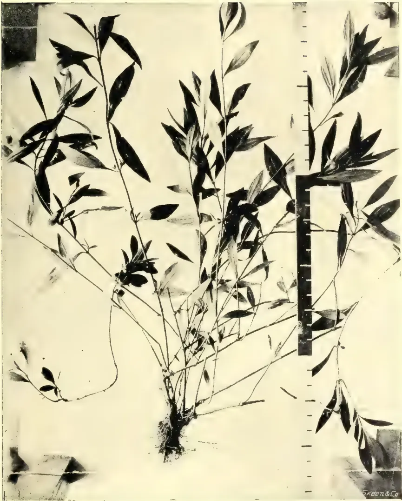
Photo by H. F. Macmillan.
EUPATORIUM AYAPANA, Vent.
("AYAPANA.")
applicants. That Ayapana has found here congenial conditions is evident, though it shows no attempt at spontaneous reproduction, seldom producing fertile seed.
USES.—Belief in the virtues of Ayapana appears to be as yet mostly confined to its native home and some tropical countries to which it has been introduced for cultivation. It is not generally given in the standard Pharmacopœias of Europe, though these include other species of Eupatorium of probably less reputation medicinally. It has been suggested as possible, however, that this is due to want of a thorough knowledge of the properties of Ayapana. It sometimes happens that the virtues of some exotic plants have been so unduly extolled by native practitioners as to preclude European physicians from placing any faith in them. A good example of this is the Chinese "Ginseng," which in China is regarded as a miracle worth its weight in gold, but though acknowledged to possess certain unimportant medicinal properties it is generally discarded by physicians of other countries. On the other hand the belief is held by some people that every country furnishes remedies for such maladies as the natives of the soil are naturally subject to. At any rate, it seems reasonable to suppose that much of the value of the medicinal principles of plants depends upon a proper knowledge of their preparation, and that this can at least to some extent be claimed by the people who from necessity make use of them habitually. Dr. Lindley remarked in his Flora Medica that "it by no means follows that plants are inert because medical men reported unfavourably upon them." It has also been asserted that the beneficial effects of plants may vary with the climate in which they are administered, for, according again to Dr. Lindley, "the heat of a country, its humidity, food, and the social habits of a people will predispose them to varieties of disease for which the drugs of Europe offer no effectual remedy; that which may be relied on in one country may be almost worthless in another." Dr. Warming, in his Pharmacopœia of India (1868) thinks that Ayapana may have "fallen into unmerited neglect." Amongst the earliest references to it in India are those by Dr. Ainslie, who first in his Materia Medica of Hindoostan, dated 1813, states that the "native practitioners believe it to possess medicinal qualities, owing to its pleasant sub-aromatic, but peculiar smell." It would thus appear as if its use by practitioners were sometimes prompted by the characteristic odour of the plant. To this is added, "An infusion of the leaves is a pleasant diet drink, and when fresh and bruised they are one of the best and safest applications I know of for cleaning the face of a spreading ulcer." In a later edition (1826) Dr. Ainslie mentions Ayapana as being of great repute in Mauritius, especially as an alternative and antiscorbutic, adding, however, that "as an internal remedy it has hitherto much disappointed European physicians." He was informed that the dried leaves were imported from Bourbon to France, where they were "used as a substitute for the tea of China." It has since been recorded by Bouton, who wrote on the medicinal plants of Mauritius, that Ayapana holds a high place amongst the medicinal plants of that island, (a statement which many people will corroborate at the present day), being there "in daily use in the form of infusion, in dyspepsia and other affections of the bowels and lungs." In the cholera epidemics in Mauritius, in 1854-56, Ayapana "was extensively used for restoring the warmth of the surface, the languid circulation, &c." Dr. Lindley in his Flora Medica says the plant is considered in Brazil to be "a sudorific and alexipharmic, being also used as an antidote against the bite of venomous snakes and insects." Warming, in Pharmacopœia of India says, "The whole plant is aromatic, with a slightly bitter, sub-astringent taste. The exaggerated ideas of its virtues formerly entertained are now exploded; but there is reason to believe that it is a good stimulant, tonic, and diaphoretic." Dr. Dymock states, in Materia Medica of Western India, that Ayapana may be com-
Drugs and30pared to Chamomile in its effects, being stimulant and tonic in small doses, and laxative when taken in quantity; the hot infusion is emetic and diaphoretic, and may be given with advantage in the cold stages of ague and in the state of depression which precedes acute inflammatory affections. The infusion may be made with one ounce of the herb to a pint of water, to be given in two-ounce doses every three hours. Mr. E. H. Edwards, formerly a planter in Ceylon, writes to Mr. Westland of Matale, that he had successfully introduced the plant into Hawaii, through Peradeniya, and adds, "I consider it to be the best cure in the world for indigestion. In cases of skin affections, too, fomenting with Ayapana leaves has a magic effect. I speak from experience. It makes a splendid liqueur also." Baron von Mueller included "Ayapana" in his book on Select Plants for Extra-Tropical Countries (1880).
ANALYSIS.—On the authority of Mr. Hooper, already quoted, the drug has been chemically examined by Dr. Warden, formerly Chemical Examiner to the Government of Bengal, with the following result:—The odour of the plant is due to a colourless volatile oil, lighter than water. The active principle is a neutral substance soluble in ether and alcohol and crystallising in long needles. It sublimes at a temperature of 159 to 160 deg., and condenses in beautiful brilliant scales and rhombic prisms. To this substance has been given the name of Ayapanin. According to Dragendorff the plant contains the principle coumarine, which is said to be obtained chiefly from Tonka-bean, and is used in medicine and for flavouring a certain Swiss cheese.
DESCRIPTION.—The plant belongs to the natural order Compositae, and is known as Eupatorium Ayapana, Vent., or E. triplinerve, Spreng. It is not sufficiently known in Ceylon to be given any vernacular name other than its Brazilian one. In India it is said to be known, according to Warming, by variations of this name, as "Ayapanie" by the Tamils, and "Ayapana" by the Hindoos. Dragendorff gives "Allapa" as another vernacular name by which it is known, where, it is not said. The name "Ayiya-pana" is given in Moon's "Catalogue of Ceylon Plants" (1824), but this is for an Acanthaceous plant. "Akka-pana" is a well-known medicinal plant (Bryophyllum calycinum or "Life Plant") amongst the low-country Sinhalese. It may be interesting to know that "Ayiya-pana" and "Akka-pana" mean respectively "elder brother's" and "elder sister's lamp." Eupatorium Ayapana is a low, semi-woody shrub, seldom exceeding 4 feet in height, with thin, tender branches, which are inclined to throw out roots at the nodes; leaves long and narrow, opposite, in pairs, their bases almost uniting round the stem, about 4 inches long by inch broad, fleshy and lanceolate. The foliage generally is of a reddish colour, and when bruised emits an aromatic odour. Flowers purplish, produced at the ends of the branches. The plant is easily propagated by mature cuttings taken from near the base.
BY IVOR ETHERINGTON.
A correspondent writes asking for information regarding "the commercial value of Sarsaparilla root, its cultivation and anything to help the sale of a shipment." He has "rubber land scattered all over with this creeper, and there is a large quantity. I feel sure several hundredweights can be harvested, and I hear the market value is 37 cts. per lb. at Kandy. I find Jamaica Sarsaparilla is what is always in the market and no other. I presume it grows wild in Ceylon, as I find it almost growing like a weed."
There is little published information available concerning the growing and curing of this product, probably because its cultivation is limited, the demand
31Medicinal Plants.being small. In the report of the Director of the Royal Botanic Gardens, 1889, he says. "The 'Jamaica Sarsaparilla' of commerce is the produce of Smilax officinalis. It derived its name 'Jamaica' from being formerly brought from Central America to that island, whence it was exported to Europe. Of this plant next to nothing is known, but a Smilax has been cultivated in Jamaica itself for many years, and affords a sarsaparilla which is exported to a small extent. A local nurseryman having recently forwarded a sample grown in Ceylon from plants of this kind imported from Jamaica, attention has been again called to the plant, of which several specimens from Kew are in cultivation at Peradeniya. Sir J. Hooker has expressed his opinion that the cultivated Jamaica sarsaparilla and S. officinalis will prove, when their flowers are known, to be different species."
In January, 1890, a sample of Jamaica Sarsaparilla roots grown in Ceylon in pots was submitted to Dr. Trimen, who wrote as follows to the Ceylon Observer:—"There are some curious points connected with this product, which has been cultivated in Jamaica for many years past. The plant is not native there, and its geographical origin is not ascertained; nor has it ever been botanically determined with certainty. Moreover, this drug, though certainly a Sarsaparilla from Jamaica, is not the 'Jamaica Sarsaparilla' of commerce. This latter is a product of Central America, and obtained its name in consequence of coming by the way of the West Indian Island. It differs from the kind before us in the dark reddish-brown colour of the root-bark which has very little starch in its structure, or, as it is termed in the trade, is 'non-mealy.' It is this sort that is most sought after by druggists. The sort grown in Jamaica is much paler in colour, more starchy ('mealy') and is less valued in the English market. Its cultivation, however, is still carried on there to a considerable extent and is said to be very profitable; the export in 1870 was 1,747 lb., and in 1871, 1,290 lb. I have seen no later returns. I do not think the culture of Sarsaparilla advisable here, at least on any large scale. The reputation of the drug, once very high, has been falling for many years, and by many therapeutists and practitioners it is now regarded as almost if not entirely inert. Careful chemical analysis has not revealed the existence of any alkaloid with important properties, and the use of this once famous tonic is steadily diminishing."
The Jamaica product is still put on the London Market, and the latest market report to hand quotes the following for December "Red native Jamaica obtained 9d. to 1s. per lb. according to quality." Sarsaparilla is also exported to London from Honduras and Guatemala, but whether this is from cultivated plants or the wild product it is difficult to learn. At the sales referred to above "Honduras was bought in at 1s. 3d. per lb.," and "ordinary Guatemala at 1s. per lb."
CULTIVATION AND CURING.—From a back number of the Tropical Agriculturist (1887) we quote the following note:—
In cultivation, the plant is produced from the vine or stem, which is lifted clear from the ground. The soil is then loosened, the vine is buried slightly into it, roots freely, and forms new stock with new roots. Were the plant once established in open scrub land, its nature and habits induce us to believe that it could be made a valuable product with comparatively little trouble. It is also propagated from the seeds, which fall around the parent plant in great numbers, when they fall in loose and rich soil. This seed is enclosed in a fruit or globose envelope, which hangs in branches from the vine like grapes. Each berry encloses a pit of the size of a pea. It turns black upon falling and its envelope is red. Each plant bears twice a year. Sarsaparilla can also be made to root by cuttings. This method is more prompt than by the seed. According to the trials which have been made with it, the roots by this method attain full size in two years; by the seed three years are necessary. Sarsaparilla, cultivated with skill, would give a yield of twice what it does in its wild state. It is estimated that if on the space
Drugs and32of an acre one had a thousand plants, whether from seed, from cuttings, or from sprouts the result would be from four to six thousand pounds of dry sarsaparilla, of the quality most esteemed in commerce. When the roots are ripe they are dug and exposed to the sun until they are quite dry; in some cases the roots are washed before drying. They are then tied up in bundles, weighing from 12 to 20 lb. each for export. The bundles of South America are packed in bales weighing from 80 to 100 lb. or more, and imperfectly covered with skins. In the interior of the bundles are often found roots of inferior quality, rhizomes with adherent stems, stones, chunks of wood, &c. The roots are furnished with a few rootlets. The general colour of the roots is dirty grayish or reddish brown. The cortex is very mealy, and the medullium or central cord is thinner than in the Jamaica sort.
The action of the government in instructing the American Consuls in Japan and Formosa to investigate the crude camphor industry has been the means of bringing the production and marketing of the gum to a more comprehensive appreciation by the many consumers in this country than could probably have been afforded through any other channel of inquiry. The monopoly of crude camphor supplies by the Japanese government and the control of marketing them vested in a London house have combined to thwart the efforts that have been made by many of those interested to a better understanding of the situation. The thoroughness with which the American Consul at Tamsui, Formosa, advises his government opens the field in a manner that serves to leave no point untouched and no detail uncovered.....There is one phase of the subject to which reference may be made in this connection, namely, the suggestion that consumers of camphor in this country interest themselves in the possible cultivation of the camphor tree either in this country or in the island possessions where the conditions of climate and soil may be found favorable. We have been advised that attempts have been made to this end in California and Florida, where the trees seemed to flourish with a prodigality that exceeded that of the Formosa growth, but whether the interest in the experiments was lost during the period of ten to fifteen years required to bring the trees to a profitable development, or whether the trees were permitted to stand for shade or ornamental purposes cannot be stated. At any rate, the result of the experiments, so far as the practical cultivation for the gum is concerned, is not known to have been demonstrated. Since the government's interest has already been enlisted in the subject, the opportunity will be sought to urge that the Bureau of Forestry at Washington be instructed to act on the suggestion of the consul that tests be made of the possibility of making the camphor tree indigenous to this country or on some of its island possessions. With the variety of soil and climatic conditions within the authority of the government, the practicability of such a venture seems reasonable. Supplementing the information in the consul's report we have the government's statistics of imports of crude camphor to this country during the first ten months of this year (1905), as well as those for the corresponding period of the two previous years, as follows:—
| Year. | Quantities. | Values. | |||
|---|---|---|---|---|---|
| Pounds. | |||||
| 1905 | ... | ... | 1,401,087 | ... | $489,274 |
| 1904 | ... | ... | 2,247,250 | ... | 728,319 |
| 1903 | ... | ... | 2,566,778 | ... | 794,588 |
The decrease in imports so far this year amounts to 846,163 pounds, while the decrease of last year as compared with 1903 was 319,528 pounds. In the consular report published last week it was estimated that the approximate shortage for this year would be 2,400,000 pounds, and for 1906 between 1,000,000 and 1,500,000 pounds.
33Medicinal Plants.Despite the marked disparity between the supply and demand, it will be noted from this week's advices that there is not likely to be an advance in prices for crude next year. The reason that was offered is significant, "that the government does not wish to encourage too deep a research into chemistry for an artificial substitute." Enough stimulus has, however, been afforded to the development of synthetical experimentation by the steadily increasing importance of camphor and the restrictions upon its production and marketing. Several attempts have been made to solve this chemical problem, and new zeal was furnished during the early part of the Japanese-Russian war, when a combination of London manufacturers of celluloid and celluloid goods, the largest field for camphor consumption, offered a prize of $50,000 for the discovery of an acceptable substitute for camphor. Some of the results were triumphs of chemical skill, and the products appeared to possess every characteristic of the natural gum, but none of them was able to stand the supreme test of commercial practicability. The turpentine base seems to have been generally employed in these processes, and the speculative tendency of this market is believed to have proved the chief stumbling block. We are advised that a comparatively new method by a synthesis of a French chemist, but using the turpentine basis, is in successful operation abroad, to the extent of turning out ton lots, and the statement is made that an American plant will be in operation under the same control before June of next year.
The following is the report by United States Consul Fisher, of Tamsui, Formosa, which is the most comprehensive review of the camphor industry from a commercial as well as an industrial standpoint that has been published in recent years:—
"On August 5, 1889, the camphor industry of Formosa was placed under governmental monopoly. The chief reason for this action was to increase the revenues of the Government. Other reasons were to raise the standard of quality of camphor manufactured, to regulate the production with regard to future supply, and possibly to save the savage tribes in whose territories practically all of the remaining camphor forests exist. The conditions under which the monopoly has been conducted since it was created, so far as the manufacture of camphor is concerned, are as follows:—
Persons wishing to engage in the manufacture of camphor in the forests are required to obtain permits from the Government. They must furnish an estimate of the amount of camphor they expect to produce during the ensuing year, which must be of a quality not below a certain standard fixed by the Government. All of the camphor, as well as camphor oil, produced must be sold to the Government at prices fixed by it, according to the fineness of the product. Besides accepting deliveries at its main office at Taihoko, the monopoly bureau at first established stations throughout the camphor districts, at which the camphor was accepted from the manufacturers. For camphor delivered at one of the stations a sufficient amount was deducted to cover the cost of transportation to Taihoku, and the loss in weight that would result while in transit.
"PRICES AND PRODUCTION.—The schedule of prices for crystallized camphor per picul in yen paid at the different stations was fixed as follows:—
| Station. | Crystallized camphor. | Camphor oil. | |||
|---|---|---|---|---|---|
| First grade. Yen. |
Second grade. Yen. |
Third grade. Yen. |
Yen. | Yen. | |
| Taihoku | 30.00 | 27.00 | 24.30 | 15.00 | 14.50 |
| Shinichiku | 29.00 | 26.10 | 23.56 | 14.50 | 14.50 |
| Byoritsu | 27.00 | 24.80 | 22.30 | 13.80 | 13.80 |
| Taichu | 26.00 | 23.40 | 21.10 | 13.00 | 13.00 |
| Toroku | 22.00 | 19.80 | 17.80 | 11.00 | 11.00 |
| Rato | 27.50 | 24.80 | 22.80 | 13.80 | 13.80 |
"In the early part of 1904 a readjustment of the schedule of prices was made, by which it was intended that the Government should stand the cost of transportation from the outlying districts, while the manufacturer would still bear the loss in weight while in transit. Under the schedule then arranged, which is now in vogue, all deliveries were to be made at Taihoku. The prices were fixed as follows per picul:—
| District. | Crystallized camphor. | Camphor oil. | |||
|---|---|---|---|---|---|
| First grade. | Second grade. | Third grade. | |||
| Yen. | Yen. | Yen. | Yen. | ||
| Gilan, Skinko, Toshien, Shinchiku, Byoritsu, Taichu, Nanto and Toroku |
... 30.00 | ... 27.00 | ... 24.30 | ... 15.00 | |
| Kagi | ... 31.00 | ... 28.00 | ... 25.30 | ... 15.50 | |
| Banshoryo and Ako | ... 32.00 | ... 29.00 | ... 26.20 | ... 15.90 | |
| Taito | ... 32.70 | ... 29.70 | ... 27.00 | ... 16.30 | |
"One picul equals pounds. One yen equals $0.498 United States currency.
"The Government supplies to the manufacturers two sizes of canvas bags, one-half picul and one picul, in which the crude camphor is shipped to Taihoku, where, if it is to be exported in its crude form, it is well packed in zinc-lined cases or tubs holding about one picul. The monopoly bureau has a factory at Taihoku for cleaning and pressing such as is to be exported in a semi-refined state, which consists of redistilling and compressing into blocks weighing 10 kin ( pounds). Ten of these blocks are packed into a zinc-lined case. A very small proportion of the camphor is marked and turned over to the sole selling agents. Although the Government factory is equipped for extracting camphor from the oil, the most of it is delivered to private refineries in Japan, which, under an arrangement with the monopoly bureau in Formosa, extract the crude camphor and deliver it to the bureau's branch office in Kobe. The oil is supposed to yield about 49 per cent. of crude camphor. The residual oils are used in the manufacture of disinfectants, perfumes, soaps, etc.
"CONTRACT FOR SALE OF THE DRUG.—As regards the sale of the camphor, the monopoly bureau in the early part of 1900, after inviting tenders from the foreign and Japanese firms desirous of obtaining the sole selling agency, awarded the contract to Messrs. Samuel Samuel & Co., a large British firm, the term of which was for three years, and the general conditions were:—The holder of the agency was to place with the Government a guarantee of 1,900,000 yen, which was permitted to be in the form of Government bonds, bearing interest; he was to conduct the sale of the camphor at London, Hamburg, New York and Hong Kong, and must be prepared to accept from the Government from 20,000 to 50,000 piculs of camphor a year. The Government reserved the right to sell to private persons, other than the sole selling agent, camphor for use of the Government, and also as raw material for the purpose of manufacture in the Japanese Empire. The camphor was to be of two grades—'A' to be known as cleaned and pressed, and 'B,' which is the camphor in its ordinary crude form. So far as possible, the agent was to send such quantities of camphor to the leading markets as would be necessary to supply the demand. The prices to be asked for the drugs abroad were as follows:—For 'A' grade in 10-kin blocks, for London, Hamburg and New York, 107,843 yen per picul,
35Medicinal Plants.exclusive of import duties, if any; and for Hong Kong, 102.378 yen. For crude camphor 99.702 yen was to be the price abroad. The Government was to receive from the selling agent 85 yen per picul for the crude and 94.323 yen per picul for the 'A' grade.
“APPEAL TO THE MONOPOLY.—When the monopoly in Formosa was created the camphor industry in Japan had almost ceased to exist, as the trees easily available had been exhausted. With the advanced prices set by the monopoly the manufacturers in Japan found that they could produce camphor from the trees, even though difficult of access, sell it at prices considerably under those of the monopoly, and still realize a good profit, so that the industry there quickly revived. The annual production, which in 1899 amounted to but 1,416,269 pounds, was increased to 2,190,175 pounds in 1900, to 2,669,292 pounds in 1901, and to 3,396,908 pounds in 1902. Moreover, at the time of the enforcement of the monopoly large stocks of camphor were held in Formosa by private persons, with the disposal of which the Government did not interfere. While Japan's production was capable of supplying but a portion of the world's demand, the selling agent found that it would be impossible to maintain the monopoly's original prices and dispose of the whole of the amount stated in their contract. The monopoly was therefore appealed to for a rearrangement of the terms of sale, which was granted. This was in the latter part of 1901. In the meantime the selling agent had acquired large stocks. As the Formosa government had depended upon the profits of the camphor monopoly for a part of its revenue, it was necessary that some steps should be taken to relieve the situation, and with this in view a bill emanating from this Government was submitted to the Imperial Diet in 1902, the object of which was to give the monopoly bureau of Formosa an indirect control over the production and price of the Japanese article. Owing to a technicality the bill did not pass that Diet, but it was plain that some such bill would be passed at its next session. During the season of 1901-2 there was a large production in Japan. The monopoly's prices were forced downward until in June and July crude camphor was sold abroad at 135 shillings per hundredweight (112 pounds), but by August 1 most of the Japanese production had been exported. From that date the monopoly was enabled to raise its prices, and by the end of the year crude camphor stood at 160 shillings abroad. The bureau had during that year reduced its receipts from the manufacturers to nearly 1,200,000 pounds less than those of the preceding year. The next season's (1902-3) production in Japan again forced the monopoly's prices downward. In July, 1903, it delivered crude camphor abroad at 150 shillings. In the meantime the 1903 session of the Imperial Diet had passed a bill placing the industry in Japan under Government monopoly, which was to be enforced from November 1 of that year, and as the largest part of the Japanese production had been disposed of by August, the monopoly's price for crude delivered abroad was raised to 155 shillings per hundredweight during that month. In March of 1904 the price advanced to 162 shillings 6 pence; in September to 166 shillings, and in April, 1905, to 175 shillings, where it stands at present. While the camphor bureau in Japan is independent of the bureau in Formosa, they both exist under one law, and the prices and production are regulated in unison.
“PRODUCTION AND EXPORTATION.—In the summer of 1902 some of the importers of camphor in Europe and America evidently perceived the course that the conditions were shaping and undertook to increase their stocks. The exports of camphor from Formosa and Japan in 1901 amounted to but 6,717,319 pounds; in 1902 they amounted to 9,328,338 pounds; in 1903 to 8,965,568 pounds. In the latter part of 1903 the stocks held by the selling agent had become exhausted, and from that time the demand for crude camphor was compelled to depend for its supply upon the immediate production, which for 1904 was considerably less than the estimates.
Drugs and36The total production in and the total exportations from Formosa and Japan during the years from 1900 to 1904, inclusive, are shown in the table below:—
| Year. | Formosa. | Japan. | Manufactured at Kobe from oil. | Total Production. | Total Exports. |
|---|---|---|---|---|---|
| Pounds. | Pounds. | Pounds. | Pounds. | Pounds. | |
| 1900 ... | 4,511,184 ... | 2,190,175 ... | — ... | 6,701,359 ... | 6,469,220 ... |
| 1901 ... | 4,725,348 ... | 2,669,292 ... | 1,635,257 ... | 9,029,897 ... | 6,717,319 ... |
| 1902 ... | 3,676,060 ... | 3,396,908 ... | 1,513,795 ... | 8,586,763 ... | 9,328,399 ... |
| 1903 ... | 4,071,628 ... | 2,948,585 ... | 1,613,851 ... | 9,354,064 ... | 8,965,568 ... |
| 1904 ... | 4,519,923 ... | 900,000 ... | 1,979,137 ... | 7,399,060 ... | 7,392,343 ... |
“PRIVILEGES FOR PRIVATE REFINERIES.—At the time of the enforcement of the camphor monopoly in Japan a number of private refineries were in operation there. Instead of taking over their properties and granting compensations, the Government permitted them to continue operation, and arranged to allow them a certain amount of crude camphor, for refining, the product of which they are allowed to dispose of either at home or abroad. I am informed that the amount allowed them is 8,000 piculs, or about 1,067,000 pounds, a year. This is manufactured chiefly into tablets for export. The price at which the crude camphor is turned over to these refineries is not given out, but from figures furnished in the customs returns of Formosa I am led to believe it about 90 yen per picul. At any rate, it is considerably less than the price of crude camphor delivered at New York, minus freight and other charges, and they are enabled to export their products to the United States in competition with the refineries in America. At the expiration of the contract on March 31, 1903, with Messrs. Samuel Samuel & Co., a private agreement was made with the same firm for another period of three years, the terms of which have not been disclosed, but the principal changes made appear to be that the prices were to be regulated according to supply and demand. Base prices were to be fixed by the Government, but the selling agent was to be allowed to reduce these prices by not more than 2 shillings per picul. The old arrangement of maintaining the same prices for delivering at London, Berlin, and New York was abolished, so that buyers in New York were allowed the advantage of the lower freight rates to New York than to Europe. After the monopoly was enforced in Japan the selling agent also undertook the disposal of the product there. The present contract will expire on March 31, 1906, but it will probably be renewed with the same firm.
“GRADES AND DISTRIBUTION.—The Government at present puts up three grades of camphor, the ‘A’ grade which is practically a refined camphor; the ‘BB’, which is about 97 per cent. pure, and the ‘B’, which is about 95 per cent. pure. The ‘A’ constitutes only about 6 per cent. of the total exportation. The proportion of the ‘BB’ is somewhat larger than that of the ‘B.’ The American market is supplied almost wholly by the ‘B.’ In order that camphor might be distributed to the different markets without partiality, the Formosan Government endeavours to apportion the exports to the different countries according to the proportion that each received at the time the monopoly was enforced, which was somewhat as follows: Germany, 37 per cent.; America, 33 per cent.; France, 15 per cent.; Great Britain, 10 per cent.; and India, 5 per cent. Recent investigations as to the supply of camphor trees in Formosa have shown that with the present system of afforestation there is no probability that the material will ever become exhausted, even though the demand for camphor should continue to increase. Vast forests in the south yet remain untouched, and it is now known that the supply in the savage districts of the north is much larger than was at first estimated.
37Medicinal Plants.“MANUFACTURE OF CELLULOID.—The question of manufacturing celluloid in Japan has been under consideration for some time, and that industry will probably be undertaken before many years. It appears to me that if such a thing be possible, users of camphor in the United States would find it to their interest to arrange for their future supply by afforestation in localities, either in our island possessions or in the United States, adapted to producing the drug, if they expect to continue their business far into the future. While the camphor industry in Formosa has an advantage in cheap labour, it has disadvantages in the inadequate means of transporting the material from the forests and in the necessity of maintaining a large force of guards for protecting the workmen from attacks by savages, neither of which will be overcome for many years. I am informed that recent experiments in extracting camphor from leaves and twigs of the camphor tree have shown that the drug can be economically produced by that method, and that the monopoly bureau here intends to apply this method as soon as the trees planted a few years ago have reached their seventh year. However, the amount produced in this manner will be a small proportion of the total production.
“The Price of Camphor will not be advanced. From an indirect source I am informed that the Formosan Government does not intend to advance the price of crude camphor during the new year. I am unable to confirm this information, as the Government is naturally reticent in giving out any information regarding prices. With the enormous shortage in the present supply, it would appear that an advance of say 10 shillings per picul could easily be maintained, and the only reason why such an advance might not be made is that the Government does not wish to encourage too deep a research into chemistry for an artificial substitute. Without being able to secure direct information, I am inclined to credit the information at hand that the price will not be materially advanced during the next year. The present price of the ‘B’ grade, cost, insurance, and freight, New York, is 175 shillings per hundredweight of 112 pounds, or 100 yen per picul. The direct cost (not including maintenance of the camphor bureau) to the Government of this grade, delivered to the selling agent, is about 35 yen per picul.”
The tobacco industry of Ceylon, there is no reason to doubt, will attain to important proportions if properly developed. As people in the country are aware, various descriptions of leaf are produced in different parts of the Island where soil and climatic conditions vary—in Jaffna, the arid Vanni and Kurunegala; Kandy, Dumbara and Hewaheta in the hill country; Negombo and other places on the sea coast in the west; and Trincomalee in the east—tobaccos of varying flavour and strength, for smoking and chewing, all of which find a good and ready local market. The production is large as those who have travelled about the country could testify, and notwithstanding the supply, enormous quantities of tobacco for smoking purposes are imported annually into the Island. Looking into the latest Customs Returns, issued by the Principal Collector of Customs, we see that from January to November last, eleven months, we expended so large a sum as lakhs of rupees in this direction, importing 172,702 lbs. of tobacco of the value of Rs. 326,439. Of this 122,720 lbs. of tobacco, of the value of Rs. 288,678, represented cigars, and 49,982 lbs. valued at Rs. 37,761, represented unmanufactured tobaccos. Of the manufactured article 48,199 lbs. value Rs. 36,149 came from India, and 1,569 lbs. value Rs. 1,470 from Egypt. This tobacco is used in the manufacture of cheap, light cigars and cigarettes. Our readers will be familiar with the itinerant South Indian trader who visits our bungalows armed with cigars of
Drugs and Medicinal Plants.35curious brands made up in their wooden boxes of local manufacture. These cigars are turned out in the Pettah by traders who import cheap leaf from South India, and a large number of these cigars are also disposed of among the shipping in harbour. The cigars are of a poor description, and are used locally by those who prefer a light smoke at a cheap cost. The taste for light tobacco is undoubtedly being developed among the people of the country in place of the crude and strong smoke provided in the Jaffna tobacco cigar; and there is no reason why cheap light cigars could not be manufactured from locally grown leaf to supply this growing demand for a light tobacco smoke.
Turning however to our cigar bill for the year the 122,000 odd lbs., costing nearly 3 lakhs of rupees, were supplied during the 11 months ended November last, for home consumption, by the following countries:—
| Total quantities. | Value. | |
|---|---|---|
| lbs. | Rs. | |
| United Kingdom | 101,336 | 223,440 |
| British India | 5,862 | 11,725 |
| Holland | 4,793 | 17,171 |
| Philippine Islands | 3,731 | 8,750 |
| United States | 2,622 | 8,320 |
| Egypt | 1,802 | 9,950 |
| Germany | 1,468 | 5,157 |
| China | 371 | 1,160 |
| Malta | 185 | 885 |
| Belgium | 165 | 240 |
| Spain | 115 | 758 |
| Aden | 99 | 542 |
| Hongkong | 95 | 403 |
| Burma | 65 | 90 |
| Straits Settlements | 15 | 68 |
| France | 6 | 17 |
| Total... | 122,720 | 288,676 |
It will strike one as strange that a tobacco growing country like Ceylon with its varying soil and climatic conditions, where tobacco of varying flavours could be grown, should expend nearly four lakhs of rupees a year on foreign tobaccos. Some of the brands of cigars imported are no doubt unrivalled, but Ceylon could undoubtedly produce cigars to equal a large proportion of those imported from countries enumerated above. There is then scope for a larger, local market, not to mention the exportation of cigars of a guaranteed quality. Turning now to the export of a local grown tobacco from the Island, we note that during the eleven months ended November last manufactured tobacco to the extent of 3,908,503, lbs., of the value of Rs. 835,998 were exported from the Island, of which, with the exception of 24 lbs. valued at Rs. 15 sent to Burma and the Straits, the rest were shipped to India. No cigars of local manufacture were exported. The local Agricultural Society will undoubtedly have much material to work upon in connection with the proposal to investigate the question of the tobacco production of the Island.—Ceylon Independent.
Registered November 30th. Capital, £10,000 in £1 shares. Objects, to carry on in Ceylon or elsewhere the business of tobacco growers, manufacturers and merchants, manufacturers of, and dealers in, cigars, cigarettes and snuff, general merchants, agents and indent brokers, &c., provided that the Company may not, without the consent of the British-American Tobacco Company, Limited, (a) carry on any of the said businesses outside Ceylon; (b) cultivate, manipulate or deal in leaf tobacco in Ceylon; (c) manufacture tobacco or its products in Ceylon; (d) export tobacco or its products from Ceylon; or (e) be interested in any other business connected with the manufacture or sale of tobacco and its products. No initial public issue. The first directors (to number not less than three or more than nine) are W. R. Harris, W. B. Ogden, H. von R. Cunliffe-Owen, T. Gracey, J. Hood, L. Hignett, A. C. Churchman, and A. G. Jeffress, with one other to be appointed by them. Qualification, one share. No remuneration. Registered office, Cecil Chambers, 86, Strand, London W.C.
30BY H. F. MACMILLAN.
The Queensland Nut is well worthy of cultivation in Ceylon, not only as an ornamental or windbelt-tree, but also for its dainty product. That it is suited to our climate may be judged from the growth of the tree at Peradeniya, where, having been introduced in 1868, it is now 40 to 50 feet high, with a spreading habit. It is indigenous to the north-eastern parts of Australia, and is commonly known there as the "Queensland Nut." It has also been referred to as the "Australian Hazel-nut," whilst the late Baron von Mueller described it as "The nut tree of sub-tropical Eastern Australia." The tree is at first of a rather slow growing habit, but begins to bear fruit when six or seven years old, increasing in fertility till it reaches an age of 15 years.
A writer in the "Sydney Mail" some time ago stated that the tree fruited freely from the time it was eight years old, bearing at the age of thirteen 1,200 nuts, with which every branch was laden. Mr. W. J. Allen, in the Agricultural Gazette of N. S. Wales for October of last year, draws attention to the importance of growing the Queensland Nut for the market. One farmer, he states, "has over an acre of these nuts, which are doing well with him, and which prove themselves very profitable, finding ready sale for them at from 6d. to 7d. per lb. The nuts are retailed in the Sydney fruit shops at 1s. per lb., and are very well liked when they become known. At present the supply in our own State cannot be anything like equal to the demand, and it seems to me that if these nuts were produced in quantities, we should be able to find a ready sale for large supplies in Great Britain and America." Mr. Allen describes the nut as "one of the best flavoured on the market," and he would recommend all those who have not tasted them to buy a few and try them.
The nuts are borne on spikes 4 to 7 inches long, each being of the size and shape of large marbles, about of an inch in diameter. These have an agreeable flavour, which according to some tastes is richer than that of the Hazel-nut. Their chief objection is, perhaps, their very hard shell, which requires extra strong nut crackers to break. A wag has suggested that this explains the derivation of the name "Macadam," having reference to the inventor of the system of road-making of that name. The tree, however, has been named in honour of Dr. Macadam, a scientist of Victoria.
The tree belongs to the order of Protæcæe, to which belongs also the well-known Grevillea or "Silky Oak." It is evergreen, with a low branching habit; thrives best in good deep soil, and is propagated by seed. The leaves are in whorls of 3 (ternate) or 4, as the name indicates, and the flowers are creamy white, in racemes 4 to 6 inches in length, and sweet-scented.
It is not generally known how largely nuts of different kinds figure in the list of commercial fruits and food products of the world. Some nuts afford a very wholesome diet, as for example Chestnuts, which, being made into flour, are a standard article of food in some districts of Southern France and Italy, whence, it is said, 30,000,000 bushels are exported to England and America every year. In Spain and elsewhere the cultivation and export of Hazel nuts form a considerable industry, whilst the Pecan, Hickory, and Walnuts are all largely cultivated and of
Edible Products.40considerable commercial importance in Europe and the United States. Brazil Nuts and Butter Nuts form an export from South America amounting to close on 8,000 tons a year, and the demand for these is only limited by the supply. Pistachio nuts are a favourite delicacy, and are largely eaten by the Turks and Greeks, being also, according to Rev. Firminger "obtainable in great abundance in the cold weather in the bazaars of most parts of India." These are not, however, produced in India, but probably in Asiatic Turkey, whence about 1,300 cwts. are yearly imported by England alone.
Authorities on the subject claim that nuts, especially the larger and more important kinds, are a nutritious and wholesome food, and predict that the time may come when they will form one of the staples of human food. Vegetarians generally advocate extended cultivation of the better kinds of nuts; these may be cooked and prepared into numerous dainty dishes, which are claimed to be good substitutes for flesh food.
The common Jack (Artocarpus integrifolia, Linn.) is so familiar a tree of the Indian Garden that a description of it would appear to be superfluous. Its ever-green crown of dark, glossy leaves, its stout low-branched trunk as well as the irregular branches themselves together with the enormous pendulous syncarpia that are, for the most part, borne upon the stem are too well-known for special remark. It is, however, open to question as to whether the possibilities that are realizable from the utilization of its fruits on any large scale have hitherto engaged the attention they merit at the hands of the Indian agriculturist or economist. For in this "age of economists and calculators" due regard is seldom had or taken of the valuable source of economic starch. Though the presence of large quantities of the butyrate of ethyl in the fleshy arils of the fruits, when ripe, lends them an odour and flavour that are admitted to be distinctly repugnant to European tastes, they are eagerly sought after and consumed by the natives whenever and wherever they are available. The unripe flakes, together with the nuts or seeds, are boiled and eaten or cooked in curries. Throughout the West Coast of India and in Lower Burma it is the fruit of the hot weather.
Besides the farinaceous arils surrounding the seeds, the latter themselves are nothing less than compact masses of nutritious starch. These arils, with the seeds enveloped in them, constitute the real fruit of the plant and are, by far, its most valuable product. As stores of readily-available starch they are especially of importance to the people of India, particularly during seasons of scarcity and distress. For, either product separated from the other or the two combined together when converted into chips and dried in the sun, admit of being transported to distant places and stored up for indefinite periods of time. When the syncarpia mature, the flakes are separable from the common stalk on which they are borne. The arils may then be readily sliced up with or without the seeds inside them and the slices spread out upon mats and dried in the sun until they are brittle. When they are dry, one or a couple of winnowings is all that will be necessary to eliminate the chips from the dense and indigestible testas of the seeds as well as from any other undesirable matter that may have got mixed up with the chips during their exposure to the sun. Or, after peeling the flakes, the arils may be dried apart from the seeds and the latter desiccated and reduced to flour by pounding in the ordinary mortars of the country. When required for use, the product, on being boiled, in water seasoned with salt, resolves into a mealy mess or porridge spoken of in high terms by the indigent consumer. The mature seeds, when roasted or boiled, resemble the common
41Edible Products.chestnut in flavour, while the flour to which they are reducible, when dry, is not unlike that of the Zingara nut (Trapa bispinosa). A single frutescence of average size is capable of yielding about 2 pounds of the chips as well as one pound of the seed-flour. The average annual yield of the tree may safely be estimated at 20 Jacks; so that an acre stocked with about 50 trees, standing 30 feet apart each way, would produce by 3 or 3,000 pounds of the farinaceous material.
The cultivation of the Jack which has been practised for ages in the hills and plains and gardens of India still admits of much profitable expansion. The vast stretches of waste land that are still available, in the moister regions of the Empire especially, could be easily redeemed from unprofitable jungle and made to efficiently minister to the necessities of agriculture. The cereals that furnish the staple crops of India frequently prove extremely precarious, and the consequent cry for food, when they fail, is usually difficult to adequately appease. The salvation of the situation apparently lies in the direction indicated by the establishment and maintenance of extensive farms raising farinaceous and other products that do not depend, like the majority of the cereals, upon the degree of seasonable moisture in a locality. Trees and plants that develop ligneous tissue can ordinarily withstand with greater impunity the nefarious effects of unfavourable agricultural seasons. Again, the national economic influences that can advantageously be exerted by extensive estates of woody species which, at the same time, produce abundance of food, cannot be too highly extolled in a country which has long since become a prey to periodic famines. The ease with which the jack could be grown upon almost sterile soils is a point of vast practical importance in favour of its extended cultivation in India. It is seemingly indifferent to most soils provided they are well drained and not too hard or stony. It thrives upon laterite, red-earth and sand as well upon a variety of soils that are classifiable as intermediate forms between these. It is capable of withstanding a high summer temperature but does not thrive in extremes of climate. The young crop requires to be watered during the hot weather of the year following its installation, and the plants during that and the succeeding year protected against ravages of cattle and fire. In its third year it will ordinarily attain to a height which will be well beyond the reach of cattle, and will also be sufficiently lignified to withstand the ravages of fire with considerable impunity.
The species bears fruits for the first time after the fifth or sixth year of its age; but does not, in most localities attain to profitable frutescence until the completion of its tenth year. It thereafter bears, in increasing qualities, until the limit of its innate vigour is attained after which the yield begins to decline. Jack trees in Malabar have been known to yield, year after year, without symptoms of decline for periods of fifty years or more; while it is difficult to estimate with any degree of accuracy the age, doubtless great, of individuals of the species that sporadically occur in the forests of the Western Ghats.—Capital.
As our contact with the Tropics becomes more and more intimate, and transportation facilities are improved, the number of fresh food products received from tropical countries is rapidly increasing. Among the most promising of such articles is the avocado, still little known, but rapidly increasing in favour. The avocado, though technically a fruit and usually referred to as such, is from the culinary standpoint no more a fruit than the cucumber. It is more accurately described by the term "salad fruit," and may be said to stand alone as the only fruit that when ripe is eaten almost exclusively as a salad. The nearest approach to this is perhaps the olive, which is eaten more as a relish. This unexpected rôle
8 Edible Products.42no doubt accounts to a large extent for the dislike or indifference often professed by persons tasting the avocado for the first time. As in the case of the olive, where the novice usually describes the fruit as an insipid pickle, the appearance of the avocado leads one to expect a sweet or acid fruit, and the more or less unconscious disappointment usually leads the experimenter to pronounce the avocado tasteless and oily. One writer describes it as having a "taste not much like that of our pears (the avocado is often called 'alligator pear'), and in first trying to eat the fruit one may pronounce it a poor pear but a good kind of pumpkin," and adds the charitable suggestion that "cooking or preserving may bring out the hidden virtues."
Few persons who live for any length of time in countries where avocados are to be had fail to acquire a taste for this delicious salad fruit. It is the rule, however, that the taste for an entirely new article of diet has to be cultivated, and a food which was unknown to our fathers, and which we meet for the first time after our tastes have been formed is seldom accepted at the first trial. In most cases it is only after repeated attempts, prompted usually by the assurances of the initiated, that a fondness for the strange article begins to grow. The human taste is, however, fairly uniform, and a liking for any food that is popular in its native country is usually acquired by the stranger if his first attempts do not create a prejudice so strong as to prevent further experiments. As examples of foods that when first tried outside of their native country were by most people either disliked or considered insipid, but which have since become firmly established may be mentioned olives, bananas, artichokes, chocolate, tomatoes, curries, and peppers. With avocados the taste is usually acquired after two or three attempts, and many profess a fondness for the fruit at the first trial. That the taste when once acquired amounts almost to a craving is attested by prices paid for the fruit in the northern markets, where 15 cents each is about the lowest figure at which they can be bought, and good fruit usually sells as high as 30 cents, though 50 or 60 cents is not an uncommon price. The avocado may thus be said to have taken the first steps along the lines by which most foreign fruits have been successfully introduced. An early impetus was received when the fruit was served on the tables of the rich and fashionable, its intrinsic merit being aided, without doubt, by the desire to inaugurate a novelty at once rare and expensive. The tendency to imitate this use assisted in increasing the demand until the fashionable hotels were able to score a point by adding the fruit to their menus. From this stage to that of introduction into the markets and fruit stores, where the general public will make its acquaintance, is, perhaps, the slowest and most crucial step in the history of a successful new product, and one that the avocado is at present undergoing.
What appears to be the earliest reference to the avocado is found in Oviedo's report to Charles V. of Spain, in the year 1526, a translation of which follows:—
On the mainland are certain trees that are called pear trees (perales). They are not pear trees like those of Spain, but are held in no less esteem; rather does this fruit have many advantages over the pears of that country. These are certain large trees, with long narrow leaves similar to the laurel, but larger and more green. This tree produces certain pears, many of which weigh more than a pound, and some less, but usually a pound, a little more or less; and the colour and shape is that of true pears, and the skin is somewhat thicker, but softer, and in the middle it holds a seed like a peeled chestnut; but it is very bitter, as was said farther back of the mammee, except that here it is of one piece and in the mammee of three, but it is similarly bitter and of the same form; and over this seed is a delicate membrane, and between it and the primary skin is that which is eaten,
48Edible Products.which is something of a liquid or paste that is very similar to butter and a very good food and of good flavour, and such that those that can have them guard and appreciate them; and they are wild trees in the manner of all those that have been spoken of, for the chief gardener is God, and the Indians apply no work whatever to these trees. With cheese these pears taste very well, and they are gathered early, before they are ripe, and stored; and after they are collected they mature and become in perfect condition to be eaten; but after they are ready to be eaten they spoil if they are left and allowed to pass that time.
The various common names of the avocado form a curious and undignified jumble. None seems to be available that is not either misleading in its application or difficult to pronounce. The most common designation among English-speaking people is "alligator pear," and, although it is very difficult and for many reasons undesirable to change a popular name, it seems best while this fruit is still little known to endeavour to secure a less misleading designation. The name "avocado" is almost as widely used as "alligator pear," and while not altogether unobjectionable, its adoption will avoid the confusion of this salad fruit with varieties of the common pear. The use of the name "alligator pear" not only retards the true appreciation of this very distinct article of diet, but will eventually cause annoying complications in statistical classifications of the products of regions where both this and true pears are grown. The word "pear" is sometimes appended to "avocado," and the name is then no less objectionable than the other form. "Palta" is applied to the avocado in Chile, Peru, and Ecuador, and is said by Garcilasso de la Vega to have been applied by the Incas, who brought this fruit from the province of that name to the warm valley of Cuzco, although it seems not improbable that the province may have received its name from the tree, according to the common custom of primitive people.
The name "ahuacaquahuitl," given by Hernandez, signifies "like the oak tree," and is variously spelled by other writers. The words "aguacate" and "avocado" are probably Spanish spellings of attempts to pronounce the Aztec name. To an Andalusian the sound of the word would naturally suggest the spelling "aguacate," while a Castilian would be more likely to adopt the other form. The French name "avocat" is probably a modification of the Spanish, or perhaps an independent approximation of the native name. The tendency to transform a new name into a word already existing in the language is shown in the spelling "abogado" in the Spanish and "avocat" in the French, both words meaning lawyer. Tussac gives "aoucate" as the Carib name and derives the French "avocat" from that form. Jumelle and Pickering also give modifications of this word as Carib. It seems impossible that the Carib and Aztec names should be so similar, and it is more likely that the Carib's attempt to pronounce the Spanish designation was erroneously recorded as a native name.
The form of the fruit obviously suggests the term "pear," and "perales," or pear trees, was the name under which they were first recorded by Oviedo in 1526, that author, however, stating that they were pears in form and in nothing else. The name "alligator" is entirely without warrant, and no one has as yet suggested even a fanciful application to any of the characteristics of the fruit or tree. It has been suggested that the term is a further corruption of the Spanish "aguacate," and this must be admitted as possible. The occurrence of the word "alligator" prefixed to the names of plants, such as "alligator pepper" for Amomum melegueta, Rose., suggests that the word may formerly have been used to signify false or worthless, and if this were true its application to this pear-shaped fruit would be very natural. The application of other English names, such as "subaltern's butter," "midshipman's butter," "vegetable marrow," etc., is obvious.
Edible Products.44DISTRIBUTION.Many general works on tropical agriculture refer to the avocado as a native of the West Indies. There seems, however, to be no positive warrant for this, while there are many indications to the contrary. The avocado has, since the time of Columbus, spread from its home in America entirely around the Tropics. That such an important food plant was confined to the American continent until the post-Columbian contact with the Old World, while numerous other plants, such as the yam, taro, and sweet potato, had already spread to parts of the Old World, was probably due to the fact that the avocado will not easily survive long voyages, while most of the tropical root crops have much greater vitality. The fruit spread but slowly before the last century, but in recent times its culture has rapidly increased, and it is now cultivated in most of the countries that are suited to its growth. It has been cultivated in India since about 1860, and has reached the Islands of Madagascar, Reunion, Madeira, the Canaries, Samoa, and Tahiti. In Natal and Australia it is just gaining a foothold. Its cultivation is increasing in Algiers. In 1882 it was reported as growing in southern France along the shores of the Mediterranean. Some of the trees had flowered, but apparently none had fruited at that time. In southern Spain, however, the tree fruits, and is cultivated to a limited extent. E. Roul gives the range of this species as 36° from the equator. He states, however, that certain varieties, such as "dulce," are not found outside the Tropics. The avocado seems to have commanded very little attention in the West Indies. No mention is made of this fruit in Morris's account of the British West Indies, and the index to the bulletins of the botanical department of Jamaica does not contain a single reference to it. In Porto Rico the fruit is abundant and popular, although not so important a staple as in tropical Mexico, where quantities of even the most inferior fruit are consumed by the natives, who consider it an important ingredient of that indispensable Spanish dish, soup. There are now orchards of avocados in southern Florida and California, and a slightly harder variety would greatly extend the culture of this fruit in these regions. Cuban fruit is shipped to the northern markets, and the conditions in that island are probably similar to those existing in Porto Rico. In the tropical parts of Mexico, Central America, and South America the fruit is very common, and its different forms and races are innumerable.
DESCRIPTION.The avocado tree is 20 to 60 feet high, varying in habit from tall and rather strict to short and spreading. In favourable situations the top is very dense. The leaves are 20 to 40 cm. long and 7 to 25 cm. wide acuminate at the apex, varying from acute to truncate at base, petiole 2 to 8 cm. long. The upper surface is smooth, with depressed veins; the lower surface is glaucous, with the raised veins slightly pubescent. Different forms, all referred to the one species, vary so greatly in the form and size of the leaves that close relationship would hardly be suspected. Climatic differences may possibly account for some of this variation, the large, broad-leaved forms being usually found near the coast. Young trees have also, as a rule, much larger leaves.
THE FLOWERS are perfect and are borne on loose axillary racemes near the ends of the branches, usually at the base of the year's growth. The corolla is wanting, the calyx 6-parted. The lobes are all of equal length, green in color, and pubescent. The stamens are 9, in three series; the anthers 4-celled, opening by valves hinged distally. The two outer series have the openings introrsely directed; the inner series has the two distal valves introrsely, the basal pair extorsely, directed. Each stamen of the inner series bears near its base two large glands. Inside the stamens are three staminodia. Occasionally 4-parted flowers are to be found, in which case they are 4-parted throughout. The ovary is 1-celled, the style simple.
45Edible Products.THE FRUIT in some varieties is long and slender; in others, nearly globular, varying from 3 to 15 cm. (1 to 6 inches) in diameter. The outside covering in some forms is soft and pliable, often less than one-half millimeter in thickness, while in others it is hard and granular, in some of the Central American forms reaching 3 mm. in thickness. The fleshy part of the fruit between the skin and the seed varies greatly in thickness, but is always butyraceous in consistency, though in some cases much firmer than in others. In the better varieties the fibrovascular system that enters the fruit from the stem is discernible only in the thin flesh in the very base of the fruit and at the base of the seed, which is toward the apical end of the fruit. The seed thus appears to receive its nourishment directly from the pulp by absorption or ceases to receive nourishment before the fruit is fully formed. In the coarser forms the bundles can be traced from the stem throughout the pulp to the point where they enter the seed, and in some cases they are so prominent that the quality of the fruit is seriously impaired. The tree is usually described as evergreen. In some localities, however, the leaves are dropped just before flowering, leaving the tree naked for a short time. This is the case in Alta Vera Paz, Guatemala, where a type with narrow leaves and very thick-skinned fruit prevails. Whether this deciduous character is peculiar to the variety or the result of climatic conditions could not be determined.
THE SEED is single, inverted, exalbuminous, spherical, or pointed, provided with two more or less distinct coats, one or both of which may adhere very closely to the cotyledons, though usually separable at the base of the seed; or they may adhere to the flesh of the fruit and separate from the cotyledons. This latter condition is observed more commonly in specimens not fully matured. The surface of the outer coverings may be coarsely reticulated or granular. The seed coats are frequently produced into a point beyond the apex of the cotyledons. The cotyledons are nearly hemispherical in form, white or light green in colour. The surface of some forms is smooth; in others rugose. The plumule is well developed before the fruit ripens and is located from 10 to 15 mm. from base of seed. Concerning the seedling, Holm has pointed out that no hypocotyl develops. He also calls attention to the curious fact that the first four leaves are opposite, and by showing a differentiation into petiole and blade more closely resemble the mature leaf than do the following five or six leaves, which are almost scalelike.
The genus Persea, to which the avocado belongs, is a member of the family Lauraceæ. Among the other more important economic members of the family are cinnamon (Cinnamomum cinnamomum (L.) Cockerell), camphor (Cinnamomum camphora (L.) Nees), and sassafras (Sassafras sassafras (L.) Karst.). With the exception of cinnamon, they are used chiefly in medicine. The avocado is the only member of the family cultivated for its edible fruit. Mez, in his monograph of the family, describes forty-seven species of Persea, and states that the genus is confined to the American continent, with the exception of one species in the Canary Islands. On the contrary, F. Pax restricts the genus to ten species.
The botanical descriptions of varieties of the avocado are in nearly every case too meagre and too general in their terms to be recognized, and are in every case based on floral and leaf characters, no mention being made of the fruit. Meissner describes four varieties, as follows:—
Var. vulgaris. Leaves medium sized, mostly 3 to 4 inches long, inches broad, oval or obovate; flowers short pedicelled. West Indies, Central and South America.
Edible Products.46Var. oblonga. Leaves long, equally attenuate at both ends, often acute, 4 to 9 inches long, 1½ to 2 inches wide, short pediceled. West Indies, Mexico, Peru, Brazil, Mascarene Islands, Java.
Var. marcophylla. Leaves larger, 6 to 9 inches long, 3 to 4½ inches broad, obovate or obovate-oblong, acutely acuminate, short pediceled. Eastern Peru, British Guiana, Central America, Mexico.
Var. schiedeana. Leaves ample, 9 inches and more in length, 3 to 4½ inches broad, obovate and oblong, acute or obtuse, young leaves with a thick yellow tomentum, veins and veinules rather accentuated underneath, panicles terminal, bases with long persistent imbricate bracts, pedicels rather long. Misantla, Mexico. Mez recognizes two varieties as differing from the normal type, one of which is the schiedeana described above, and which is apparently confined to Mexico; the other, drimyfolia, also confined to Mexico, was formerly considered a distinct species. A translation of his description of the latter variety is as follows:—
Variety drimyfolia. Differs from the normal form in being smoother; leaves oblong-lanceolate, narrowly acute at base, apex acute or somewhat acute, below glaucous.
A delicious fruit tree, cultivated in tropical regions, and from thence imported into Europe. In Portugal and Sicily it winters if protected, and sometimes produces mature fruit. Embryo (according to Schomburg) often with three cotyledons, and frequently germinating on the tree. According to Krug, the fruits of this tree come true to seed, and it is not necessary to graft. This description applies best to the hard-skinned type of Guatemala, the peculiarities of the fruit of which seem never to have found their way into literature, and it is probable that the similarity is confined merely to the dimensions of the leaves. The marked differences in the fruits of the avocados from different localities are recognizable in the earliest descriptions. Hernandez's description of a black fruit, the size and shape of an egg or fig corresponds well with many of the small black forms grown in Mexico at the present time, and, so far as known, not occurring elsewhere. On the other hand, all the early writers on the West Indies describe a much larger fruit with much thicker flesh.
The distinction between the thick-skinned and thin-skinned forms of the avocados was made as early as 1590 by Acosta, who wrote:—The Palta is a great tree, and carries a faire leaf, which hath a fruit like to great peares: within it hath a great stone, and all the rest is soft meate, so as when they are full ripe, they are, as it were, butter, and have a delicate taste. In Peru the Paltas are great, and have a very hard skale, which may be taken off whole. The fruit is most usual in Mexico, having a thinne skinne, which may be peeled like an apple; they hold it for a wholesome meate, and, as I have said, it declines a little from heat.
It is worthy of note that the earliest account of the avocado in the West Indies, by Hughes, describes a hard-skinned type, yet so far as known this type does not exist in the West Indies at the present time. The description referred to follows:—This is a reasonable high and well-spread Tree, whose leaves are smooth and of a pale green colour: the Fruit is of the fashion of a Fig, but very smooth on the outside, and as big in bulk as a Slipper-Pear; of a brown colour, having a stone in the middle as big as an Apricot, but round, hard and smooth; the outer paring or rinde is, as it were, a kinde of a shell, almost like an Acorn-shell, but not altogether so tough; yet the middle substance (I mean between the stone and the paring, or outer crusty rine) is very soft and tender, almost as soft as the pulp of a Pippin not over-roasted. It groweth in divers places in Jamaica; and the truth is, I never saw it elsewhere; but it is possible it may be in other Islands adjacent, which are not much different in Latitude. I never
47Edible Products.heard it called by any other name than the Spanish Pear, or by some the Shell-Pear; and I suppose it is so called only by the English (knowing no other name for it) because it was there planted by Spaniards before our countrymen had any being there; or else because it hath a kinde of shell or crusty out-side. I think it to be one of the most rare and most pleasant Fruits in that Island; it nourisheth and strengtheneth the body, corroborating the vital spirits, and procuring lust exceedingly: the Pulp being taken out and macerated in some convenient thing, and eaten with a little Vinegar and Pepper, or several other ways, is very delicious meat.
In nearly all parts of the American Tropics there is a great variety in the forms of the avocado, yet comparatively few have received distinctive names, and only a very few have found their way into literature. In the "Revue Horticole," 1900, page 546, D. Bois describes nine Mexican varieties as follows:—
Dulce largo, green, in form of a gourd, with a long neck; seed large.
De tecosautla, dark green, with ovoid seed.
Pagua, large, spherical, purple in colour, with a large seed.
Morado de Chalco, pear-shaped, purplish.
Dulce, large, green, oblong, with whitish, ovoid seed.
Pagua redonda, round, green, with a very large reddish seed.
Verde de San Angel, light purplish, pear-shaped.
Morado de San Angel, light purple; seed ovoid.
Verde chico, small, green, with an elliptical seed.
These same varieties appear in slightly different form in Sagot's "Manuel Pratique des Cultures Tropicales," page 157.
Sagra mentions four forms from Cuba, as follows:—
Violet, almost round.
Thick green, round, with yellowish flesh of a spongy consistency.
Long yellow, similar to a large pear.
Long green.
There is little to be gained in attempting to identify these forms, as none of the characteristics of economic importance are mentioned, and from observations made in Mexico it appears probable that these forms merge into one another with many imperceptible gradations. The author has had the opportunity of studying avocados in Porto Rico, Guatemala, Costa Rica, and Mexico; and from the fruit that has come under observation the avocados of Mexico, while diverse in form and color, seem to be much more closely related to each other than to those of any other of the above-mentioned countries. As much of the fruit was obtained in markets, it was often impossible to determine the character of the tree on which any particular fruit was borne, and in no case could floral and fruit characters be compared. Aside from yield, vigour, and hardness, the more important characteristics of a variety, from a commercial standpoint, can be determined from the fruit alone.
In a general way each of the countries visited exhibited distinct types of avocados, although in nearly every case aberrant forms occur which frequently seem to be associated with the types of other countries. In many such cases the resemblance is probably a similarity in formal characters rather than a true relationship. In making the following descriptions, several new characters have been used, such as the nature of the skin, whether it is hard or soft, thick or thin, and the character of the seed coats, believing that these are of more importance than the form and color by which the cultivated varieties have usually been distinguished. Until more complete botanical studies have been made it seems advisable in describing the different forms to take
Edible Products.48them up by countries. The names applied to the different forms are merely to facilitate reference. It seems a curious fact that although the avocado has a great variety of names in different countries the different forms in any particular locality rarely receive distinctive appellations. Thus in Porto Rico, where mangoes that to the casual observer appear identical are carefully distinguished and provided with particular names, the many varied forms of avocados are all called "aguacate" without further distinction. In Mexico also, where the variety is still greater, no names for the different forms could be elicited from those selling the fruits in the markets, although the qualities of the different forms were keenly appreciated and willingly pointed out.
As might be expected, there are several countries that claim to produce the finest avocados, among which may be mentioned Colombia, Hawaii, Peru, and Brazil. According to travellers familiar with the Pacific coast of tropical America, the largest and finest avocados come from the vicinity of Tamaco, in Colombia. These are said to be much larger than those of the Central American coast and of equally fine flavour. In Brazil the finest fruits are said to come from the islands of Marajo, at the mouth of the Amazon. As with most fruits, the largest and fairest are not always the best flavoured. The delicate nutty flavour of some of the small thin-fleshed kinds of Guatemala is seldom equalled in the large thick-fleshed varieties.
GUATEMALA.—The avocados of Guatemala form a very distinct group. They are at once the most marked and, from a commercial standpoint, the most promising type for introduction into our tropical possessions. The most peculiar characteristic of the Guatemalan avocados is the unusual texture of the skin. Unlike the Mexican and West Indian types, which are usually found in our northern markets, the Guatemalan fruit is covered with a skin so thick and unyielding that it suggests the shell of a nut. If pressed inward with the finger, instead of bending or tearing, the skin breaks with a granular fracture. To judge from Acosta's account, the avocados of Peru have a skin similar to those in Guatemala, though, curiously enough in Costa Rica, midway between these two countries, not a single hard-skinned form was observed. In all the Guatemalan varieties the seed coats adhere closely to each other and to the cotyledons over nearly the entire surface. In this respect they resemble the Mexican and differ from the Cuban and Porto Rican forms, which have the seed coats distinct from each other, the outer coat usually adhering to the flesh. The flesh of the Guatemalan forms frequently contains objectionable fibres, but in many cases it is entirely fibreless. In every case the line of division between the flesh and the skin is distinct, and the flesh can be scooped out with a spoon and the skin scraped, agreeing in this regard with the Cuban forms and differing from those of Mexico and Porto Rico, where there is no marked line between the flesh and the skin, and where, if care be not taken in using the spoon, portions of the skin are taken up with the flesh. Fruit of this type is borne on the tall, spreading tree common in Guatemala. The leaves are narrower and longer than in the West Indian type, about 23 cm. (including the petiole, which is about 2.5 cm.) by 7.5 cm. wide, acuminate at the apex, tapering at the base. Leaves smooth above, with depressed veins; below, the veins are prominent, with numerous fine hairs, and the surface is glaucous, with scattered fine hairs. Although in a general way belonging to one type, the avocados of Guatemala that came under the writer's observation can be separated into three forms capable of more or less definite delimitation. Thick-skinned round.—This is the most common type in the eastern part of Guatemala. There is great diversity in size and quality among the specimens included under this form, and some of those found at Guatemala City appear to be distinct, but they are not easily separated by
49Edible Products.formal characters. Form nearly spherical; colour varying from dark green to dark brown or nearly black; skin hard and unyielding, breaking rather than tearing, never less than 2 mm. in thickness, granular in texture; flesh distinctly differentiated from the skin, often separated from it when fully ripe; seed as broad as or broader than long, rounded at the apex. The two seed coats are so united as to be indistinguishable, and when fully ripe adhere closely to the seed, except at a small area near the base. When the green fruit is opened the seed coats often leave the seeds and adhere to the flesh. The better specimens of this and the following form are probably the most promising for introduction into Porto Rico, owing to the thick skin, good keeping qualities, and fine flavour. In the warm and extremely moist climate of Alta Vera Paz, specimens of this form were in perfect condition two weeks after picking. Specimens sent by mail from Coban to Washington, while overripe on arrival, showed no outward evidence of decay, and were still in condition to withstand rough handling.
Thick-skinned oval.—This description was drawn up to cover two specimens purchased at different times in the market of Guatemala City. Form oval or oblong; surface roughened with knobs; skin thick and unyielding, breaking rather than tearing, granular in texture; flesh distinctly differentiated from the skin; seed longer than broad, rounded at the apex, covered when ripe with a mealy substance; coats adhering closely to the seed and separating from the flesh when ripe.
Soft-skinned Guatemalan.—Fruit pyriform; surface slightly roughened, shining, skin thick, soft, and yielding, tearing rather than breaking, distinct from the flesh; flesh free from fibres, firm, not darker near the skin. Seed almost spherical, with the outer coat produced into an acute point; seed coats closely united to each other and to the cotyledons except at the base and apex. This form can hardly be considered a true Guatemalan type, as it lacks the characteristic hard skin. It resembles the Cuban type in many particulars, but differs from it in having the seed coats adhering closely to the cotyledons over the greater part of the surface and in having the outer seed coat produced beyond the apex of the cotyledons. It more nearly resembles the Costa Rica type. In Guatemala there are at least two other species of Persea that yield edible fruit. These are known among the Indians of Alta Vera Paz by the names "coyo" and "coyocte." Both are generally considered very inferior fruits, though some prefer the "coyo" to the avocado. In Alta Vera Paz the "coyo" and the avocado flower at about the same time, but the fruit of the "coyo" ripens at least a month earlier, a fact which may lend interest to the species in efforts to extend the season. In the highlands of Central Guatemala the avocado is found in the regions that are occasionally subjected to temperatures below freezing. The fruit is of good size and quality, and the thorough exploration of this region offers interesting possibilities in the securing of more hardy forms.
PORTO RICO.—The avocados of Porto Rico, although showing great diversity of form, are apparently very closely related, indicating possibly that they are the result of a single introduction. Compared with the types of the mainland thus far studied, their affinities seem to lie with Mexican avocados. From these they are distinguished chiefly by the character of the seed, the Porto Rican type having the two seed coats distinct, the outer usually adhering to the flesh, the inner more or less closely attached to the cotyledons. In this respect this type also differs from all the continental forms thus far observed. From the avocado of Costa Rica it is further distinguished by the texture of the skin, which is much thinner and softer than the Costa Rican type. In this latter regard it is still further separated from the Guatemalan avocados with their hard, almost brittle skins. From the
7 Edible Products.50Cuban type it is separated by the thinner skin, and the fact that the flesh and skin are not sharply differentiated. Form oval or pyriform, with or without a prolonged neck; colour green, usually light; surface shining and almost smooth; skin thin and soft, tearing rather than breaking; flesh not differentiated from the skin; seed spherical, oval, or slightly pointed; the two seed coats entirely distinct, the outer usually clinging to the flesh and the inner to the cotyledons. One specimen from San José, Costa Rica, seems to correspond closely with the Porto Rican forms, the only difference being a slightly thicker and more distinctly differentiated skin.
MEXICO.—The Mexican varieties show the greatest diversity of form, and also a considerable range of colour. With the exception, however, of three special forms to be mentioned later, they seem to intergrade and form a connected series. They are at least much more closely related to each other than they are to those found in other countries. Although many of the Mexican avocados were of really excellent flavour, none were seen that appeared particularly desirable for introduction. The following is a general description covering the more characteristic features of the Mexican type:—Form spherical, oval, oblong, or pyriform; colour varying from green to almost black; surface shining and almost smooth; skin thin and soft, tearing rather than breaking; flesh not differentiated from the skin; seed spherical, oval, or pointed; the two seed coats closely united and usually attached to the seed over the greater part of its surface.
Tapachula.—This sort was first observed at Tapachula, Chiapas, Mexico, where a single tree was found growing in the park. The same or a very similar variety was afterwards found in Costa Rica. Form of fruit obovate or slightly pyriform; colour bright green; surface shining and with slightly raised points white at the top; skin thin and leathery; flesh but imperfectly differentiated from the skin; seed nearly round. The tree rather short and spreading. The leaves broadly acuminate, almost transverse at base, the broadest part of the blade usually in the proximal portion. This is apparently one of the most desirable of the thin-skinned sorts. Fully matured fruit was seen neither in Mexico nor Costa Rica; consequently the character of the seed coats could not be determined. The Costa Rican specimens, while closely resembling the Mexican tree in the shape of the leaves and habit, as well as in the form and peculiar markings of the fruit, differ in having ovate seeds, while in the Mexican specimen the seeds are nearly round.
Long Neck.—Of the two samples included in this description one is from Tapachula; the other was purchased in the Washington market and was probably from Cuba. The resemblance is doubtless confined to formal characters. Form elongated, with a very long curved neck; colour green; surface shining and somewhat wrinkled; skin soft, tearing rather than breaking; flesh distinctly differentiated from the skin; seed decidedly longer than broad, rounded at the apex; seed cavity extending into the neck beyond the apex of the seed; the two seed coats entirely distinct. The flavour and texture of this form are very good, but it will probably not prove to be a good shipper.
Clinystone.—This most aberrant form was found only once in the City of Mexico. It is so very different from the ordinary avocados that it would seem that it must belong to a distinct species. Nothing was learned, however, concerning the nature of the tree, and the natives classed it with the other "aguacates." Form elongated; colour light green; skin soft and pliable, the surface somewhat shrunken and wrinkled; flesh granular in texture and almost tasteless, adhering closely to the seed; seed narrow and pointed; the two coats, if they exist, cannot be separated. The oddity of this form is its only recommendation.
51Edible Products.COSTA RICA.—The avocados of Costa Rica show a greater diversity of colour than those of any other country visited by the writer, ranging as they do from almost white to black through various shades of green, red, and purple. There is also a great variety of shapes. Still, with the exception of the “yas,” they form a very connected series and are easily distinguished from those of other countries. As a group they may be characterised as follows:—Fruit spherical, pyriform, or gourd-shaped; colour green, red, purple, or nearly black; skin rather thick, soft, distinct from the flesh. Seed spherical or with only the outer seed coat produced into a point; seed coats closely united to each other and to the cotyledons over almost the entire surface. In the market at San José, Costa Rica, one specimen was found that could not be distinguished from the common Porto Rican type except that the skin was somewhat thicker than any observed in Porto Rico. A few samples of a form not elsewhere seen were also found in the same market. These were slender necked, with the seed cavity extending into the neck, the seed was oblong, the skin very thin and not distinct from the flesh, which was slightly darker than the skin. These specimens had a very fine flavour and would be desirable for local consumption; the thin skin, however, would probably prevent their being successfully shipped. Of the ordinary type none was seen that had marked desirable qualities.
CUBA.—The avocados of Cuba are closely related to those of Porto Rico, the principal differences being the thicker skin of the Cuban fruit, and the fact that in the Cuban forms the skin is quite distinct from the flesh, which is not darker near the skin. The thicker skin may explain why Cuban fruit reaches New York in better condition than that of Porto Rico. Fruit pyriform or nearly spherical; surface smooth and shining; skin thick, soft, and yielding, tearing instead of breaking, distinct from the flesh; flesh free from fibres, firm, not darker near the skin. Seed nearly spherical or pointed; seed coats entirely distinct from each other and from the cotyledons. Flavour poor. Specimens on which this description was based were found in the Washington market and were said to have come from Cuba via New York. The flavour was very insipid, which may have resulted from the fruits having been picked when immature, or to overripeness.
HAWAII.—A series of specimens shipped from Honolulu to New York shows a soft-skinned fruit, in general like the avocados of Costa Rica, but much larger. Form oval, oblong, or pyriform; colour green or purple; nearly smooth, shining; skin soft, of varying thickness; flesh distinctly differentiated from the skin; seed longer than broad, variously shaped; the two seed coats usually united and adhering to the cotyledons, except at the base and apex. A peculiarity not observed elsewhere is that of maturing several fruits in a cluster. In most countries all the fruits of a cluster, except one, drop when very small.—U. S. A. Department of Agriculture, Bureau of Plant Industry.
(To be concluded.)
Going round the fruit orchard at Lake View, Nuwara Eliya, belonging to Mr. John Cotton, a luxuriantly grown grape vine was seen, about to bear for the first time, showing splendid clusters of grapes which have set. The vine is under the eaves of a cattle-shed covered with zinc. The eaves have been extended out with a two feet length of glass, and under it the vine (of the Champion Muscat variety) is doing famously. Mr. Cotton regrets that the vine was unfortunately put under eaves not more than 5 feet from the ground. The raising of the entire length of the shed would be unsightly from the Badulla road, from which passers can look straight on to the shed. Mr. Cotton,
Edible Products.52however, hopes to propagate some acclimatised plants by training the branches down to the earth and covering little lengths of them with sand, and by ringing round the stems and binding moss on them. The vine grown in the wall inside the yard by the house is not doing so well as the one referred to, which was imported at the same time.
Mr. Cotton is of the opinion that no fruit can be grown to pay in Nuwara Eliya, excepting the cooking pear. The three Kentish Fill-basket apple trees, which had a few fruits on them last September, were pruned—and for the first time their roots were dug round and pruned, with the result that the trees had twenty well-set fruit, but the frost has reduced the number to twelve. Fruits come on at the wrong time of the year in Nuwara Eliya. The Red Heart plums yield bushels of fruit from May to August, but they get cracked by the winds, and the rains rot the fruit before it gets a chance to ripen. My attention was called, however, to a well-grown bush of the Emperor of China Mandarin Orange, barely five years old, not quite feet high, but quite five to six feet in circumference round the bush, on which were some twenty fruits, some of them of the size of a small coconut. Mr. Cotton had picked a good many of them beside those on the tree.
One drawback to orange culture at Nuwara Eliya was that the skin and rind of the fruits was too thick—those of the fruit referred were quite half-an-inch thick. A certain Nuwara Eliya orange grower held the opinion that the skin and rind would get thinner and thinner every year, but Mr. Cotton said, if that did happen at all, it would take 10 to 12 years from the time the trees began to bear. At Mr. A. W. A. Plâté's orchard, behind his studio, I was shown a beautifully-grown Washington navel orange tree laden with over fifty fruit. The tree was the result of a bud from the Scrubs Estate, grafted by Mr. Plâté himself to a stock of the common Ceylon citron. Mr. Plâté's system with regard to all fruit trees is to constantly prune their centre branches, in order to get the sun to play into the very heart of the tree. The orange tree, in question, had about eight to twelve outer branches, drawn out and tied to stakes, resembling an open umbrella. The same was done with his Red Heart Plums. Mr. Plâté holds that all fruit trees in Ceylon produce too much wood which should be lopped and pruned so as to let the sun harden up the branches on which the fruit are to be produced. The system is open to criticism, but the results he has obtained justify his adopting it. His orchard has twelve other imported Washington Navel orange plants, a number of Red Heart plums and imported fig plants. Of two dozen orange plants he had got out through Messrs. Thompson, Thomas & Co., about a year ago, he had given a dozen to the Grand Hotel. This variety of orange is much smaller than that of the Emperor of China Mandarin, but has evidently a thinner skin. I was also shown a moderate-sized glass-house in which Mr. Plâté intends to grow Hamburg grapes.—Ceylon Observer.
Some years ago teas were generally sorted into three grades, viz., broken pekoe, pekoe, and pekoe souchong. Under modern conditions, however, this grading is very rarely employed, and there now is a considerable tendency to eliminate the last-mentioned grade almost entirely from the factory output. At the present time teas are usually sorted into at most five grades, if we exclude dust and fannings from the reckoning. There is no question but that the more grades, up to four or five in number, manufactured, the truer the sorting of the leaf
53Edible Products.becomes. Such is not, however, economy in small factories, and a selection has, therefore, to be made in these cases that will produce the best results for the given class of leaf dealt with. Generally speaking, a division into broken orange pekoe, broken pekoe, and pekoe, is the most economical method of sorting for a small crop, but in some cases an orange pekoe grade is substituted for the broken pekoe. This has the drawback of entailing a large percentage of fannings; or else the broken orange pekoe is, by the admixture of the orange pekoe fannings, reduced to the level of an ordinary broken pekoe tea. Either alternative is equally unsatisfactory, and therefore the first-mentioned grading may be considered the most suitable for estates of a moderate acreage. The following remarks, while applying to such properties, are, perhaps, more directly of interest to those who can arrange to make at least four grades.
This is usually the finest and highest priced grade manufactured, and is essentially a "tippy" tea. Liquors are not, as a rule, as strong as in the broken pekoe. The tea should answer to its name by being of an orange pekoe character, though it may contain a certain amount of broken leaf. This latter, however, should not be of a large percentage, and should only consist of the fine quality leaf that may have been present in the "Dool." The tip ought to be a good colour, and show up well in the tea. With the above characteristics a broken orange pekoe will sell at a most remunerative price in Colombo. Such a tea is suitable for nearly all the markets supplied from Ceylon, and is eagerly sought for by the trade, who are generally ready to pay satisfactory rates for any tea which possesses a sufficient show of tip, and is of even and well rolled appearance. To secure this "tip" in the tea is not an easy matter. The withering, methods of rolling, character of leaf, wet or dry weather, and form of roll-breaker, all exert their influence on the appearance of the grade.
It may, however, be premised that light-rolling is absolutely necessary for a "tippy" tea. As such is detrimental to the strength of liquor in the other grades, the usual rule is to roll lightly for the first, and possibly the second roll, and to only use the "Dool" from these rolls for the sorting of the broken orange pekoe. This necessarily entails a low percentage outturn, but, provided it be not unreasonably short, and the show of tip be a good one, the fact is of no great importance. The average percentage of a "stand-out" B.O.P. rarely goes beyond 18 per cent., and is generally about 12 to 15 per cent. of the crop. Many so-called B.O.P.'s much exceed this outturn, but, if they realise high prices, this is due rather to their liquoring qualities than to any superiority of appearance or grading.
There is one rather curious point about a B.O.P. that calls for remark. The question of fine, medium, or coarse medium plucking (I speak of course of commercial samples, and not of "fancy" teas) does not effect the outturn of "tip" in this tea to anything like the extent usually thought possible. In fact, with medium plucking, a very fair show of "tip," quite equal to that obtained by fine plucking, is often produced. This is due to the fact that the roll-breaker sifting to a great extent separates the coarse and fine leaf. The character of the leaf, whether off tea, young or old, from pruning, the methods of plucking employed, and the richness of the soil, have much more to say to the question than the actual quality of the leaf taken into the factory. The wither is also of very great importance, though herein that which is most suitable for the manufacture of really "tippy" teas is as a rule by no means the best for cup quality.
A good deal yet remains to be done in the improvement of roll-breakers. The latter, as usually supplied, are, generally speaking, unsatisfactory in their working, the sifting of the leaf being very incomplete. A quicker vibration, but
Edible Products.54a considerable less "throw" to the sieve is, I have found, a decided improvement in this respect. As regards the sieve through which a standard sample of B.O.P. is obtained from the made tea, a No. 10 of thick wire, or a No. 12 of thin wire, mesh on the machine sifter is that usually employed. The actual mesh used, however, naturally varies with the machine, according to the slope of the sifter and the length of time the leaves remain on the trays during the process of sifting. Except with very light rolling, it is not advisable to take any of this grade from the "large bulk," unless the latter contains a good deal of "tip." In most cases the "Dool" leaf only should be utilised. In conclusion, a B.O.P. grade ought to be a "tippy," more or less whole-leaf, tea, of fairly even appearance, and free from dust and small fannings. No sifted out broken tea from other grades should ever be added to it.
The standard of this grade has changed very much in the past few years, and what used to be ranked as a good orange pekoe is now classed as a wiry pekoe and paid for accordingly. An orange pekoe ought to be absolutely free from broken leaf. It should be wiry and even, and contain no pekoe tea. In many cases invoices still reach the market that are labelled O. P., but which bear no resemblance whatsoever to this grade, consisting, as often as not, of a good deal of pekoe leaf, forced through a No. 10 or 12 mesh, combined with small broken leaf and large fannings. As a result the tea sells on the average at about the rates for pekoe, and sometimes at a lower figure. It is in no sense an orange pekoe, and marking it as such is an actual drawback to its value, while the fine O. P. leaf contained in it, that would otherwise sell at a high price, is of course utterly wasted.
The value of O. P. on the Colombo market is extremely variable, and, to secure attention, this grade must be finely sorted and absolutely free from fannings or broken tea. Through a No. 10 thick mesh, or a No. 12 thin mesh, is about the limit allowable, and with this the sorting must not be forced.
To clean the tea, fanning with a rice "solivou" may be employed, but this process is extremely slow and expensive, or a No. 14 wire mesh hand-sieve may be used. The latter requires careful handling if it is to remove only the flat leaf. The method I am personally in favour of is to use a No. 14 bamboo sieve. A large quantity of tea can be treated in half an hour, and, with proper attention, the wiry leaf all remains on top of the sieve, as it does not catch on the smooth bamboo surface, and the fannings, or flat leaf, fall through. "Tip," though of advantage in an O. P. grade, is not a necessity. In fact, for such markets as Germany, a "tippy" is not in demand. The finer and more even the sorting of this grade, provided the tea be of wiry appearance, the greater the value. Very often a price equal to, or even better, than that secured for the B. O. P. may be obtained if a really well sorted, fine, wiry O. P. of stand out make is sent forward.
The usual percentage of this grade varies from 10 to 30 per cent., but the latter outturn generally means a bold tea, containing much pekoe leaf. This is not an attraction, as there is more than an ample supply of such tea already on the market. A more reasonable limit of percentages is from 10 to 18 per cent, and at this a very fair sample can be made. Plucking has not much influence on the grade, except in so far as coarse plucking means the presence of "red ends." These may, however, to a certain extent be removed by picking over the tea by hand. One of the finest samples of the tea I have seen was made from low-country medium plucking; the sample in question being like a mass of thin twisted-up wires. Rolling, however, is the great factor on which the outturn of this grade depends. Really hard rolling will usually produce a very attractive sample, noticeable on account of the wiry and fine, clean twisted character of the leaf.
55Edible Products.BROKEN PEKOE.This grade is generally used as a blending tea, but in some cases, especially in London, when the liquor is of good quality, and the appearance is above the average, the tea is shipped to such markets as the North of Ireland for consumption unblended. A broken pekoe tea usually consists of a good deal of flat leaf, together with a fairly large proportion of fannings. It should, however, be free from dust, and from admixture with whole pekoe or wiry O. P. leaf. In cases where the intrinsic liquoring quality of a crop is of a high character, the inclusion of fannings, obtained from the pekoe grade after cutting or breaking, is not of much consequence, though the appearance of the broken pekoe unquestionably suffers thereby. When, however, liquors are of medium quality, or thin in the cup, the fannings or broken flat leaf sorted out from the pekoe grade tend to greatly reduce the strength, thickness, and pungency of a broken pekoe, if added thereto in any quantity. Under such circumstances their inclusion is inadvisable. The same objection does not apply to the "Dool" fannings, as these, consisting of the particles of the finer leaf broken up in the rolling, usually carry a stronger liquor, and thus add to the cup qualities of the grade.
The sorting of this tea is a matter requiring some care, so that it may only contain the broken or flat leaf, which draws a thicker liquor than the more wiry unbroken portion of the bulk. Quick sorting is decidedly advisable, so that the long leaf may pass over the sieves, and only the flat leaf fall through. Bamboo sieves are also a great help in securing a true sample. The "Dool" from the last roll, or rolls, should preferably form the large proportion of a broken pekoe, as the liquor thereof is generally full and coloury. "Tip" is not of much importance, though a certain amount is desirable to differentiate the tea from large fannings and to attract attention in the sampling room.
The total percentages of the above first three grades, viz., broken orange pekoe, orange pekoe, and broken pekoe, may run from 45 to 60 per cent. of the crop. An outturn of 50 per cent., provided the teas are up to a really good standard of appearance, is a satisfactory mark to aim at, and will generally be found to give the most remunerative results in the great majority of cases. It is not, however, an easy ratio to reach, and demands ample rolling and power accommodation in the factory, if the conditions for appearance, laid down above, for each of the grades, are to be successfully realised.
PEKOE.Pekoe forms the bulk of the output in every factory, and is, perhaps, the most difficult grade to manufacture of a really good appearance. Fine plucking has a very marked influence on the character of the leaf, but even with medium plucking, especially at low elevations, where the flush is free-grown and succulent, well-rolled pekoe may be produced by care and attention to the withering and rolling. Withering exerts the predominant influence on this grade. Green uneven withers invariably result in an undesirable pekoe. A hard wither on the other hand, for heavy rolling, or a medium even wither for light rolling, produces an excellent sample of well-twisted bulk.
Rolling is a matter demanding much attention, and has to be graduated to the wither. It is preferable to roll up the bulk into as small and close a leaf as possible, in order to obviate overmuch breaking or cutting of the tea afterwards. For this purpose a hard wither and hard roll is more or less necessary, as otherwise the production of a large quantity of flat leaf is bound to result, a green wither causing the leaf to break very easily when pressure is applied to the roll. In
Edible Products.56the sorting of the tea it is, as mentioned in my previous articles, very inadvisable to cut or break the leaf overmuch, and a choppy appearance should always be avoided. Personally speaking I always make use of my own breaker for equalizing the tea, but, whatever cutters or breakers are used, it is as well to regulate the size of the mesh, or breaking apparatus, according to the character of the leaf of the original bulk. A slight boldness of leaf in a Pekoe is no drawback, rather the contrary, as compared with the resultant choppiness that is inevitable when a large and lightly-rolled bulk is reduced down to a small sized pekoe.
This grade is not manufactured in any large quantity, and, as it invariably sells at a low price, its outturn should always be curtailed. With hard rolling, and by suitable breaking, pekoe souchong, even under course plucking, may always be eliminated. This is already done on many estates, and a noticeable feature is that, as a rule, combined pekoe grade sells at the same rate as the pekoes of those neighbouring properties that may still be making a considerable proportion of pekoe souchong. I have, however, in Darjeeling seen a tea where a division of the two grades was certainly necessary. The leaf was plucked off China tea, and the pekoe souchong grade contained a very large number of the hardened-up older leaves, brought in by the pluckers. The appearance of the pekoe souchong in question was quite satisfactory, but the liquor was, in value, pence below that of the pekoe sample; the actual sale prices of the two grades being about 6d. and 9½d. respectively. In Ceylon, however, these conditions rarely occur, the bolder tea in the bulk being merely unrolled leaf, while the greater portion of it is intrinsically of quite as good a character as that of the pekoe. Under these circumstances equalizing it down, and blending it with the pekoe, has no detrimental effect on the latter, while a gain of from ½d. to 1d. per lb. may result on some 10 to 15 per cent. of the crop, which is equivalent to from 30 to 90 of a cent per lb. on the whole estate output.
Owing to the demand that has arisen for suitable fannings and dust for exportation to China, where they are manufactured into brick teas, some care in the preparation of these grades will be well repaid. It is of importance to see that the fannings are thoroughly freed from dust, and the dust itself cleaned of all tea fluff, in order to meet the requirements of the trade.
Having thus dealt with each of the usual grades, and some of the various points of importance to be noted in their manufacture, I cannot perhaps do better than conclude by once more drawing attention to the rule that all teas should be so graded as to attract the maximum amount of competition. Full competition may only be secured by teas suitable to all, or nearly all, the markets supplied from Colombo. To meet this demand they must, as far as possible, be of a clean and distinctly-graded type, and, except in the broken pekoe class, of an even, whole-leaf character.
The question of quality I have not discussed. Such has little to do with grading, but those teas that combine flavour, strength, and pungency, with really good appearance, naturally benefit considerably from the extra care and attention in sorting which they receive. I trust in future papers to deal with the subject of improvement of quality by means of artificial manuring and cultivation. Such has been a much-sought-for possibility, and I am
57Edible Products.not without hopes that we are now on the way to obtain at least a partial solution of the problem. That methods of cultivation have a direct bearing on the quality of teas produced is already well ascertained, but systematic working to this end has not, until lately, been undertaken on any considerable scale. Judging by results to date of writing there appears to be every probability of success, as far at least as up-country estates are concerned. The application to low-country properties is, however, likely to be a different matter, as while the pungency, strength, and colour of a tea may possibly be increased, the attribute of flavour is one that would seem to be almost entirely dependent upon climatic conditions. The extra value attached to the qualities of increased pungency, strength, and colour alone is by no means on the same level as that secured by the combination of these with flavour. The higher prices that might therefore result on low-country estates would not in many cases, as far as one can judge, afford an additional profit, though they might perhaps prevent the heavy drop in the earning power of a property that takes place, when the market value of teas for price falls below a certain figure.
It is needless to say that any method of obtaining a considerable improvement in the quality of the crop of an estate necessarily involves a greater cost of production, and for any scheme to be successful the increment in price must very much more than counterbalance such an enhanced expenditure. This, as stated above, will be a possible difficulty in the case of low-country gardens, but, on estates of higher elevation, it would seem that very favourable results may be hoped for. It may be remarked that, to raise the prices of a given estate, the maximum results will only be obtained from an improvement in the intrinsic qualities of the teas. Such is to a great extent a matter that concerns the field, and not the factory, working of a property.
No amount of attention and care in manufacture will ever improve the intrinsic value of a tea beyond a certain limit, determined by the quality actually in the leaf, when it is plucked. In the factory this quality may, it is true, be developed to the fullest extent, and herein, and in the sorting of teas for the markets to which they may be destined, there is much scope for scientific and practical knowledge. But, beyond this point, the value of the teas can only be increased by altered conditions of growth and cultivation; for finer plucking, accompanied as it usually is with a shorter crop and higher cost of production, seldom results in improved profits, except in a few individual cases, and therefore does not, as is well-known, solve the difficulty—By Henry M. Alwyn in the Times of Ceylon.
8 Edible Products.58BY J. P. LEWIS, M.A., C.C.S.
It is only within the last quarter of a century that much attention has been paid to the cultivation of maniocca or cassava (Manihot utilisima). But it has been known in the Northern Province of Ceylon since Dutch times, for I find in the Colombo Journal of 1833 from a letter of Captain Nagel, Land Regent of the Wanny, that it was apparently growing in Mannar in 1792.* In the Mullaittivu District before the period mentioned it served merely the purpose of helping to form live fences,† but as regards modern times, it is only since 1885, when two cart loads of the plant from Jaffna were sent to Putukudiyiruppu by the late Mr. Robert Massie, Assistant Government Agent, and planted there, that it has been used in that district as an article of food. Here history repeated itself, and Mr. Massie only did what Captain Thomas Nagel did ninety years before him, but it is to be hoped with more lasting results. Here we have Captain Nagel, 114 years ago acting as if he belonged to the Agricultural Society, introducing maniocca and distributing leaflets in Sinhalese and Tamil describing the plant. It is unknown, strange to say, in the Mannar District, where it would, from Captain Nagel's letter, appear to have been first introduced by the Dutch.
In the Jaffna Peninsula it is cultivated in all the divisions except Pachchilaippalli and Vadamaradchi East. In Tenmaradchi it is cultivated in the villages of the Navatkuli, Chavakachcheri and Kachchai parishes. It is cultivated in the Islands with the exception of Delft. In Vadamaradchi West it is cultivated but not extensively. Recently there has been a little cultivated in the villages of Madduvilnadu, Ponnaveli and Tampiray of the Punaryn Division and in Malla of the Tunukkay Division. There is none in Karaichchi or Karunavalpattu. The divisions where it is chiefly cultivated are therefore Jaffna and the three Valikamams, and in these the cultivation has greatly extended within the last ten years, and in the parishes of Tenmaradchi named above the quantity cultivated has increased nearly three-fold within that period. In the Islands Division there was a considerable increase in 1905, the first year in which there was any cultivation to speak of, as the people devoted most of their time to tobacco cultivation. This was in Karritivu.
The approximate extent cultivated in the Jaffna Peninsula is :—
| Valikamam North | ... | ... | ... | acres | 570 |
| Valikamam West | ... | ... | ... | ... | 160 |
| Valikamam East | ... | ... | ... | ... | 50 |
| Jaffna | ... | ... | ... | ... | 50 |
| Tenmaradchi | ... | ... | ... | ... | 30 |
| Vadamaradchi West | ... | ... | ... | ... | 15 |
| Islands | ... | ... | ... | ... | 10 |
It is noteworthy that the divisions with sandy soil, which is best suited to the plant, are pre-eminently those of Tenmaradchi, The Islands, Pachchilaippalli and Vadamaradchi East, in the two former of which there is very little cultivated, and in the last two none at all.
The extension of cultivation of the plant is due to the yam having become a popular article of food among the poorer classes in these divisions; in fact, it is described as having, in most of the divisions in which it is cultivated, become a popular article of food, and in Valikamam West, in fact, the staple article of food of the lower classes and as having taken the place of pinaddu, the preparation of which
* See Annexure A.
† I have seen it lately growing in fences at Pampaimadu and other villages in the Mullaittivu District.
59Edible Products.produce of the palmyra is consequently much neglected. In Vadamaradchi West the use of it as food has extended to the higher classes who, however, make but a sparing use of it. In view of its increasing popularity as an article of food and of the extension of the cultivation of the plant in consequence, it is a question whether it would not be wise to introduce it and to endeavour to popularize it in the Mannar districts and in the divisions of Jaffna in which there is no cultivation of it, viz., Vadamaradchi East, Pachchilaippalli, Karaichchi, Punaryn, Tunukkay, Karunaval Pattu and Delft. It would be an advantage to the people to have another article of food to turn to. I had written this sentence before I found Captain Nagel's letter; it is interesting to find him using exactly the same argument, "it is certainly better to have an article of food more than less in a country."
Although it is not cultivated in Pachchilaippalli, it is appreciated even there as food, and the people of that division, whose time is chiefly given up to tobacco cultivation, buy it from the people of other divisions.
The Assistant Government Agent of Mullaittivu thinks that in course of time it will become a popular article of food in his district also, where the people are just beginning to appreciate it, and where the cultivation has also increased. The difficulty in the days of Captain Nagel, as it is now, was to get the people to take to it, owing to their addiction to dry grains and jungle roots.
It is grown chiefly in garden lands, where the cultivation is extensive in separate plots, but in other places in the midst of dry grains such as kurakkan or sami, or on the borders of lands cultivated with tobacco, chillies, brinjals, etc. It is propagated from the stem which is cut into pieces about one foot in length, the old trees of the former cultivation being preserved for this purpose. These pieces are planted three feet apart, and are watered every two or three days for six months until the plants are firmly established. After six or seven months the roots can be dug up for use as food, and they must be used within two or three days after they are dug up, as if they are kept longer they become poisonous.
Lands which it is intended to plant with maniocca are ploughed or hoed, and in some cases manured, but not always. Manuring is usual in the Islands for instance, but in Valikamam North, where the soil is richer, it is not usual to manure. The plant does not require much manuring, but manuring of course increases its growth. The best manure is considered to be palmyra olas or green leaves buried half a foot deep. The different soils have different effects on the growth of the plant. Where the soil is reddish and hard as in Valikamam North, the root is generally three feet in length and one foot in circumference, but in sandy soils as in Tenmaradchi the root grows much longer and thicker. In 1891 a maniocca root six feet in length was brought to Jaffna by one of the Maniagars.
The cultivation goes on throughout the whole year. In places with sandy soils it is usual to plant in January, but in other places it is planted generally in May with the dry grains, such as sami, which are sown in that month. The water that irrigates the dry grain then serves for the maniocca plants also, and when the dry grain is reaped, the beds are made up again, and the maniocca watered every two or three days; or in some places, such as in Valikamam East, every four days.
Manner of Use as Food.—There are two ways in which it is used:—
(1) The roots are peeled, cut into small pieces, boiled or baked or buried in hot ashes, and eaten with or without curry.
(2) The roots are sliced into thin pieces which are dried in the sun and pounded into flour. Cakes are made from the flour in the same way as cakes are made from rice flour. The former method is the most common,
Edible Products.60It is, I believe, a fact that the flour is much used by the bakers of Jaffna in adulterating wheat flour. The leaves are used as fodder for cattle, but care has to be taken that they are given dry, otherwise they give rise to wind in the stomach sufficient to cause death.
I have obtained from the Government Agent, Eastern Province, an account of cultivation in the Eastern Province, and Mr. A. E. Byrde, Chief Irrigation Inspector, has been good enough to send me a paper on the same subject which is appended.* I also annex a description of its cultivation and preparation as food in British Guiana taken from Sir Everard im Thurn's book "Among the Indians of Guiana."†
As in Jaffna it is found both in the Eastern Province and in British Guiana that a sandy soil is best suited to the plant. It is cultivated in the Eastern Province usually in chenas and in clearings for paddy fields where the ground is not too low. It is generally planted at the beginning of the North-East Monsoon rains about August or September. The result is that in the Eastern Province no watering of the plant is required or carried on. The practice here differs from that in the Jaffna Peninsula where the cultivation is started at all times of the year, and consequently some watering is necessary. I do not suggest that the Jaffna practice should be altered, as no doubt the Jaffna cultivator has discovered by experience what suits him best, but if the cultivation is extended in the Vanni and introduced into the more remote divisions of Jaffna and into Mannar, the time for planting should certainly be September or October, so as to obviate the necessity of watering.
It is usual to put in two cuttings in each bed in the Eastern Province, in British Guiana three or four. In Batticaloa it takes 14 or 15 months for the plant to grow sufficiently for the root to be fit for use, and consequently the roots are usually dug up in the last quarter of the year. In some places where the soil is more forcing 12 to 13 months are sufficient. In British Guiana according to Sir E. im Thurn the period is 9 or 10 months. It is noteworthy that in the Jaffna Peninsula the period is only 6 or 7 months. This probably means that the Jaffna man takes more care over the cultivation, or it may be due to the watering.
In Batticaloa instead of being planted with dry grains it is planted between coconuts or in a new clearing for paddy between rows of Indian corn. The cultivation in that district is extending with the extension of new clearings. Formerly it was cultivated in chenas, but chena cultivation is now stopped. When the Veddahs were induced to take to cultivation, they were required to cultivate among other things maniocca. They did this at first perfunctorily, but when they found how useful it was as food, they carried on its cultivation voluntarily.
In the Batticaloa district it is, during the winter months, the mainstay of the large number of paddy cultivators living in the interior. Why should it not be the same in the Vanni? I know of no reason beyond the disinclination of the people to try any new sort of food or cultivation. The result is that when their paddy crops fail, as they often do, they live on jungle roots and leaves, or have to be supported by relief works.
I would allow them a certain extent of chenas on condition that they cultivated maniocca in them, so as to popularize the cultivation of this plant.
In the Eastern Province large quantities of the yam are dried into odiyals which are sold or exported, and these are of great use during time of scarcity or famine. This use of the yams in large quantities is unknown in Jaffna and quantities
* Annexure B. † Annexures C. and D.
61Edible Products.of the odiyals find their way from Batticaloa into the Jaffna market. In Batticaloa it is the coconut estate proprietors who turn maniocca to account in this way. I commend the cultivation of maniocca and the drying of the roots wholesale to the estate owners of Pallai, Punaryn and Vadamaradchi East. These odiyals keep in good condition for a year or more.
As regards its use as food, maniocca in the Eastern Province is also converted into soup and into kanji mixed with syrup. In the East Indies it has further uses such as the preparation from it of cassareep unknown in Ceylon which are fully described in Sir E. im Thurn's book. It is, I believe, a wholesome food, and although Sir E. im Thurn refers to one result which is supposed to be due to a cassava diet in South America, viz., orbus veteribus notus, "the globe known to the ancients,"* I do not think that this result has been observed in Ceylon.
The yield per acre in the Eastern Province is estimated to be between Rs. 60 and Rs. 90. There are 1,000 beds per acre, and each bed brings in from 6 to 9 cents. Traders buy the produce of the beds wholesale at the clearings and make a substantial profit out of the transaction, as they retail the yam in the bazaars at 1½ to 2 cents a pound. It is a popular food in the Eastern Province, and along with kurakkan and Indian corn it has tided over many a season of scarcity and famine. I should like to see it and Indian corn do the same in those parts of the Northern Province which comprise the larger portion of it,† where the people periodically suffer from the failure of their crops.
With reference to Mr. Byrde's paper, both varieties of the sweet maniocca, the pink and the white, are found in Jaffna, the latter being the more common.
His statement that the quality of cassava is affected by the species of trees grown near it is curious, and it would be interesting to learn whether it is confirmed in the experience of members of the Agricultural Society and by scientific investigations. The kokkaddi tree is the Garcinia spicata, sometimes called the wild orange.
(Annexure A.)
Letter from M. THOMAS NAGEL, Commandant of the Wanny, to His Excellency
J. W. VAN DE GRAAF.
(Translated from the Dutch Records.)
Moeletivoe, 21st June, 1792.
HON'BLE SIR,—I had the honor of receiving your Excellency's letter of the 2nd instant together with a Sinhalese and Tamul translation of a description of the Manioc root, and I have caused copies of the same to be circulated among the inhabitants here. As soon as the plant is introduced from Mannar, I shall from time to time report to your Excellency how the cultivation of it thrives. I believe that but little expense will be required to promote its growth, and I shall strongly recommend it to the attention of the inhabitants of this district, but I doubt whether they will bestow much labor upon it, as there are two kinds of roots growing in the jungle at this place, which afford the inhabitants subsistence in years of great drought and scarcity. I have myself sometimes used them instead of Potatoes. The Malabars call them 'Allekalenga'‡ and 'Kawelee Kalenga';§ the former grows to the height of from 4 to 5 feet and to the thickness of about 6 or 7 inches and sometimes more, and the latter though knotty differs very little in size from the other.
* See Annexure E.
† At Mahamayilankulam in a Sinhalese village near Vavuniya I saw some maniocca and Indian corn growing in some of the compounds.
‡ Allai kilanku. § Kavalai-kilanku.
Edible Products.62These roots grow without cultivation in the jungle and form the chief food of bears. I cannot compare them to any other root than to the Yam; when boiled, the former has the same taste as the Potatoe, and even excels it in its mealy qualities, but the latter is somewhat coarser; both, however, are wholesome food, and if the inhabitants of the Wanny had not had these roots the last three years during the great scarcity, the 10, or 12,000 parrahs of paddy which were imported here would have availed little for the subsistence of the immense population, as the greater part of it was employed as seed.
Hence, as these roots are both in time of need and at other times used by the inhabitants as food, which they have only to dig up, and although they may not in wholesomeness and excellence surpass the Manioc, at least equal it, I think the inhabitants will feel but little inclined to bestow particular care on the new introduction.
And besides, on the prevalence of a dry season and on occasions of a bad crop, the poor or the idle who are averse to work in the fields, may easily provide themselves with a considerable quantity of 'Warigae' and 'Natchene,' the latter being a grain that produces a hundred-fold without the aid of water, and it is on this that the greater part of the Malabars at our place subsist. I have tried it and found it to be good, somewhat similar in taste to barley, and I am led to think that the facility of obtaining these grains contributes greatly to prevent the cultivation of paddy, the sole inducement of the people to grow Paddy being to procure with the produce of its sale the clothing they require, and also a variety of food, otherwise I really think that the culture of this grain would be entirely neglected. It was this circumstance that induced me, on my arrival here, to impose a tithe to be paid to Government on all kinds of grain indiscriminately. The 'Warigae' tax is again farmed out for the delivery of paddy, and produces generally three to one, that is to say a parrah of Paddy is delivered in lieu of three parrahs of 'Warigae.'
For the above reasons I fear I shall encounter some difficulty in persuading the inhabitants that the manioc root is preferable to the other products which Providence spontaneously furnishes them, but as this root may also be employed in the hour of need, and as it is certainly better to have an article of food more than less in a country, I shall cause it to be diligently planted in this Province.
I have the honour to be, &c.,
(Sd.) THOMAS NAGEL.
(Annexure B.)
CASSAVA.
Introduction.—The "Cassava" or "Maniocca" is a native plant of the West Indies, and it is not known when, and by whom this plant has been introduced here. It is called "Mayyokka" in Sinhalese and "Mayya or Mayo Kilanku" in Tamil. It is universally known by its principal product "Tapioca."
Varieties.—There are many varieties of this plant. In the first place they are divided into two kinds, viz., sweet Cassava and bitter Cassava. The bitter Cassava is said not to be found in the Island.
Out of the many varieties of the sweet kind the commonest two kinds are the white and pink.
Description.—It is a bushy shrub growing to about 5 or 6 feet. It has tuberous roots like the dahlia.
63Edible Products.Peculiarities.—I have found that this plant very often borrows its “goodness” or “badness” from the trees around which it grows. If grown near a “kolatia” tree in Batticaloa the yam is useless for eating, and serious results may be the issue if eaten.
Its use in other Countries.—It is the staple food of the Indians of British Honduras, Columbia, Guiana, Jamaica, Trinidad, Paraguay, Florida and Brazil. There are factories for the manufacture of starch in Jamaica and Florida, and in these two countries, where the crop is estimated to be 9 tons per acre, thousands of acres are under cultivation.
It is also used as an article of food for cattle as “every beef animal can be put in the condition of western stall-fed cattle by the simple use of Cassava at a mere fraction of the cost to the corn-feeders of the west.” This starch is said to be far superior to wheat starch.
Cassava is cultivated in all the French Colonies, and the making of Tapioca is one of the most interesting of all the French Colonial manufactures. The starch is employed besides in many manufactures—paper-making, soap-making, in the making of glucose or starch sugar, and in making size and adhesive pastes. Cassava flour is also used in the preparation of cakes.
Its Cultivation in the Island.—It is grown by natives in small patches in the “upcountry districts” and in the Eastern Province. Many of the English planters have grown Cassava on a large scale in the Batticaloa district. I have seen patches grown all down the Southern Province and about Awisawella and Ratnapura.
Except in Batticaloa the extent under cultivation is very small and not sufficient even for the local use. The tubers or roots always find a ready sale in the market; many hawker women are seen with boiled Cassava for sale on the streets of Colombo and Kandy. A few have tried with success the experiment of preparing Cassava flour, but the commonest use is to cut the yams into pieces of about 2' cube and dried. This is known in the Batticaloa District as “odiyal,” and a great demand is to be found among traders with Jaffna.
Its use in the Island.—It is eaten as a vegetable after boiling or roasting (native method of shoving a yam into hot embers). It has taken the place of potatoes or yams at many a well-to-do man's house. Many a poor family depends on it as their only meal when no rice could be had.
Soil, Method of Planting and the Yield.—It thrives best in the light sandy soil. It thrives under the most diverse conditions of climate, on dry plains, on rocky hillsides as well as humid plains and hills—wherever the soil is rocky or gravelly. The plant is cut into pieces from 3" to 1' 6" and planted 3' apart. Very often two pieces are planted in the same hole cross ways, like an X. The yield is from 8 to 10 tons an acre, or from 40 to 80 lbs. per plant. It is drought resisting and therefore even 14" of rainfall can secure an abundant crop.
Time of Cultivation.—The best time for cultivation is to plant the stick cuttings as soon as the monsoon breaks. From time of planting to harvesting the least time is 6 months, and therefore in places where both the North-East and South-West rains are received two crops can be gathered in a year. To get a good crop it must be planted annually. In districts where chena cultivation is carried on, it is best to plant Cassava before kurakkan is sown.
Advantages, Commercial and Otherwise.—1. Roots or tubers produce more starch per acre than any other vegetable or grain.
2. It thrives best in light sandy soil, which is not thought of much worth.
3. The starch is said to be superior to wheat starch.
Edible Products.64Methods of Hand Preparation.—The bitter Cassava is only used for preparation of starch for the laundry &c., and therefore the following particulars are given only as regards sweet Cassava :—
Cassava Poison.—It is said that there is Prussic acid or Hydrocyanic acid in Cassava, and it is therefore considered a poisonous substance.
Prussic acid is easily got rid of by thoroughly heating the substance, and therefore if the following precautions are taken, deaths from improperly-prepared Cassava will not be heard of. True that these deaths are amongst the badly-fed and neglected children, but the remedy or precautions are simple, and there is no need to neglect them.
References.—In addition to my personal experience and knowledge of Cassava, I am indebted to Mr. Charles Taldena, R. M., and others for their kind assistance, and to the articles on Cassava plants published in the several copies of the Tropical Agriculturist noted below. I invite reference to those articles as they are worth perusal :—
Vol. XXI. No. 7 of January, 1902.
,, XXII. ,, 1 of July, 1902.
,, XXI. ,, 12 of June, 1902.
,, XXII. ,, 4 of October, 1902.
Conclusion.—It is impossible to exaggerate the importance of a great Cassava industry in Ceylon. The land is rich without artificial fertilisers. The cultivation should be encouraged, as every villager can cultivate a few acres yielding at least ten tons per acre. Besides its uses as a food which are very numerous in form, its produce is sure to find a sufficient market as soon as the large capitalists take up the
65Edible Products.cultivation and bring a sufficiently large amount to justify the erection of machines for the manufacture of starch and glucose for exportation. This nutritive plant will take its place with the coconut tree, the tea plant and the rubber plant as one of the chief products of this Island.
A. E. BYRDE,
7th December, 1905.
VAVUNIYA.
(Annexure C.)
CULTIVATION OF CASSAVA IN BRITISH GUIANA.
It is cultivated in what we should call chenas and, Mr. im Thurn states, flourishes best in sandy soil. "At the beginning of the . . . wet season, the women come . . . carrying on their backs baskets heavy with a load of cassava sticks to be used as cuttings.
Here and there at irregular intervals they loosen small patches of the soil, hardly more than a foot in diameter, and in each of these they insert three or four cassava sticks . . .
At last in the ninth or tenth month seeds appear among the hemp-like leaves at the ends of the straggling branches of the cassava plants. This is a sign that the roots are ready for use. Again the work is done by the women. They cut down the cassava and the weed bush and dig up the roots, not all at once, but as they are required. Some short straight lengths of the stems of the cassava—sufficient to reproduce the number of plants which have been dug up—are cut and inserted in the ground as before and in the same spots.—"Among the Indians of Guiana" by E. F. im Thurn, 1883, pp. 251-2.
(Annexure D.)
DESCRIPTION OF THE PREPARATION OF CASSAVA ROOT FOR FOOD IN BRITISH GUIANA.
The one staple vegetable food of the Indians is afforded by the roots of the cassava plant (Manihot utilisima), which are made into bread, like oat cakes, by most of the tribes, into farine, a rough sort of meal, by others. No scene is more characteristic of Indian life than that of the women preparing cassava.
One woman squatting on her hams and armed with a big knife peels off the skin of the cassava roots which lie in a heap at her side. Each root, after being peeled, is washed and then thrown on to a new heap. A little way off another woman stands, and grasping one of the peeled roots with both hands scrapes it up and down an oblong board or grater studded with small fragments of stone and so roughened like a nutmeg-grater. One end of the grater stands in a trough on the ground, the other rests against the woman's knees. It is violent exercise. As the woman scrapes, her body swings down and up again from her hips. The rhythmic 'swish' caused by the scraping of the juicy root is the chief sound in the house; for the labour is too heavy to permit of talking. The cassava, which slips as pulp from the scraper into the trough, is collected and put into a long wicker woven matapie which hangs from the roof. This matapie or cassava squeezer is in principle exactly like the not uncommon toy known as a "Siamese Link." It is a cylinder seven or eight feet long and five or six inches in diameter made of closely woven strips of pliant bark. The upper end is open and has a loop by which the matapie may be suspended from one of the beams of the house; the lower end is closed, but it also has a loop, the use of which will presently appear. The cassava, saturated
9 Edible Products.66with its highly poisonous juice, is now forced into the matapie; through the loop at the bottom of this a heavy pole is passed, one end of which is allowed to rest on the ground and is there fastened by means of a heavy stone or some such device, while the other is raised into the air. A woman now sits on the raised end of the pole, and her weight stretches the matapie downwards. In proportion as the length of the cylinder increases its diameter is of course reduced. The pressure thus applied to the cassava pulp immediately forces the poisonous juice out through the walls of the matapie. The juice drops down into a buck-pot which stands on the ground; and it is this when it is afterwards boiled becomes cassareep, a thick treacle-like liquid which is no longer poisonous, and the use of which in the manufacture of pepper-pot has already been described. Cassareep when but slightly boiled is sometimes eaten by itself and without further preparation; but if it is meant for pepper-pot it may either be used at once, or if boiled to a high degree of density, not for some considerable time. The cassava, now dry and free from juice, is taken from the matapie, broken into a sieve, and sifted so that it becomes a coarse flour. This is either wrapped in leaves and put away for future use, or is at once made into bread.
A large circular iron griddle or plate, of European manufacture, is now placed over the fire; by some of the remote Indians a flat slab of stone is used for this purpose, and there can be little doubt that this stone was originally universally used. On the griddle, whatever its material, a thin layer of the meal is spread. A woman, fan in hand, sits by the fire watching. With her fan she smooths the upper surface of the cake, and makes its edges round. In a very few minutes one side of the large, round, white cake is done; and when it has been turned, in yet a couple of minutes the bread is ready. When a sufficient number of these oatcake-like pieces of bread have been made, they are taken out of the house and thrown up on to the roof to dry in the sun. I have often admired, and vainly tried to imitate, the skill with which an Indian woman "quoits" up these large and thin cakes (which until they are well sun-dried are limp and flabby) on to the roof, often high above her head. When thoroughly sun-dried the bread is hard and crisp with a flavour like that of freshly-gathered nuts; in this state, if guarded from damp, it will keep for an indefinite time.
Not quite all the cassava meal, freed from juice by means of the matapie, passes through the sifter—a small residue, consisting of the more starchy matter, adheres together in particles too large to pass through the close woven wicker-work. This coarse, starchy residue, called by the Caribs Emoo, which is always small in quantity, is at once made into a cake, which differs from the ordinary cake made of the sifted meal in that, if eaten at once, it has a half gelatinous consistency and a pleasant subacid flavour; while, if it is allowed to become cold, it acquires a leathery consistency and is tasteless and uneatable.—"Among the Indians of Guiana" by E. F. im Thurn, 1883, pp. 260-2.
(Annexure E.)
CASSAVA AS FOOD.
Cassava seems to have a great tendency to extend the paunch, and to puff out the flesh and make the whole body look fat and round, without giving any real stamina, and as soon as it fails, even for a few days, the paunch hangs like an empty sack, and the fat disappearing, the skin hangs in folds, and every bone in the body becomes prominent.—"Among the Indians of Guiana" by E. F. im Thurn, 1883, p. 264.
67BY E. ERNEST GREEN, Government Entomologist.
The cut ends of young Hevea stumps are frequently tunnelled by various small species of bees and wasps. But these insects are not responsible for the dying back. The pith of any dead stem would be utilized in a similar manner. When a Hevea plant is stumped, it usually dies back to the node, and it is in such dried ends that the tiny wasps construct their nests. They cannot be regarded as pests, but more properly as friends. For most of them provision their nests with Aphides taken from some other plant.
Specimens of a small Longicorn beetle, said to be responsible for the death of young Hevea trees, have been received from Southern India. The insect proves to be Pterolophia annulata, Chevr., a species that occurs in Ceylon also. I have no records of injury done by this insect to Para rubber in this country, but I have bred out a specimen from the diseased bark of a Ceara rubber tree. My correspondent from India reports that the beetles girdle the stems; the upper parts of the trees dying back down to the injured area. This girdling habit is common to many species of Longicorn beetles. The object of the manœuvre is believed to be to check the sap and induce the degree of decay best suited to the nourishment of the grubs of the beetle; the eggs having first been inserted in the bark above the point of injury. If this pest should become common, it might cause serious damage on rubber plantations. The accompanying figure of the beetle, represented about three times the natural size, may enable rubber planters to recognize a possible enemy. In case of any occurrence of the pest, the stems of all the trees should be carefully searched. The adult beetles will probably be found clinging to the bark of the trees, when they can be easily captured and destroyed.
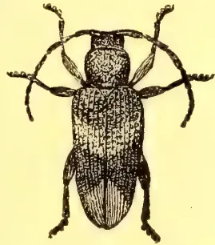
Amongst other injurious beetles received during the past month are specimens of a beautiful burnished green Cetoniid "found eating the bark of a lemon tree," in the Kurunegala district; and a small green weevil (Astycus sp.) said to be defoliating Fig and Apricot trees. Against all such bark and leaf-eating insects, spraying with Paris Green will be found effective. When applied to foliage, it should be mixed with about six times its bulk of lime.
A small outbreak of a caterpillar pest (Narosa conspersa, Wlk.), on tea, has been reported from the Uda Pussellawa district. Though belonging to the family Limacodidae (which includes the notorious "nettle-grubs") this particular insect has not previously attracted attention as a pest. It does not figure in Watt & Mann's "Pests and Blights of the Tea Plant."
Another insect that has been sent in as a tea pest is the grub of a beetle (apparently a species of Helops). My correspondent reports that "these insects are killing out the tea in Teldeniya." Similar grubs were received from Talawakele, a few years ago. I believe these grubs to be merely feeding in decayed wood of stems that have died from other causes. Specimens of the stems received with the grubs have evidently been dead for many months.
Plant Sanitation.68In the number of this journal for June, 1905, I gave a list of plants affected by the "red borer" (Zeuzera coffeae). I have now to add to this list two species of Citraceae,—the Orange (Citrus aurantium) and the "China Lime" (Triphasia trifoliata).
The outbreak of the "Arakkoddian worm" (Spodoptera Mauritica), noted in the December number of this journal, is reported to have abated.
A somewhat similar invasion of the "Army-worm" (Leucania unipuncta), on cultivated grass in Nuwara Eliya, has been effectively checked by the application of Paris Green.
The Superintendent of the Government Stock Garden reports that Guizotia Abyssinica (the source of Rantil Oil) proves to be very attractive to bees. Should this plant come into general cultivation—as it gives promise of doing in India—the association of flower and insect should be of benefit to both apiculturists and growers of Guizotia.
Leaves of various plants have been recommended as available for food of the "Eri" silkworm, in place of those of Castor-oil. I find that the half or three-quarters grown worms are fairly complaisant in the matter of change of food; but for the newly-hatched worms the castor-oil plant remains a necessity. There seems little doubt but that the natural food of the worms is really the best for them. Those raised on other plants are nearly always stunted in growth and produce weak cocoons. If would-be cultivators of silkworms would exercise forethought and plant up small plots of ground with castor-oil, there would be no necessity for any change of diet. It is probable that castor-oil can be grown more economically than any other possible food plant.
The Government Entomologist of Natal asserts (Natal Agricultural Journal, August, 1905, p. 840) that "the malarial species of Anopheles breed, on the whole, in moving water. In no cases have the Anophelinae been found in stagnant water." This may possibly be correct as regards Natal, but it cannot be accepted as a general rule. In the low country of Ceylon the stagnant tanks swarm with Anopheles larvae. I have taken larvae of A. Wilmori plentifully from a tiny pool scarcely three feet in diameter. Mr. Theobald informs me that he has frequently collected the larvae from tubs of rain water in England. The swamps of the Roman Campagna are a notorious breeding place for one of the most deadly species of Anopheles.
I wish to draw attention to an omission in the description of the figures illustrating my notes in the November number of this journal. The two figures are designed to contrast the work of two different species of Tea mites. The description should read as follows:—
| (a.) | Tea leaves attacked by | "Scarlet mite." |
| (b.) | Do | do "Yellow mite." |
BY T. PETCH.
A number of cases of "Brown Blight" have been reported recently. Some of these have been of the type known as "Marginal Corrosion" or "Rim Blight" in which the fungus first attacks the leaf at the tip or along a narrow band round the edge and later spreads towards the centre. These leaves usually bear the fungi of both Gray and Brown Blight, the latter producing spores in abundance, while the former is often only feebly developed and must be kept for some days in a damp
69Plant Sanitation.chamber before its characteristic three-tailed spores can be observed. Rim blight is supposed to be caused by the joint action of the two fungi; according to Watt and Mann it spreads far more rapidly than either Gray or Brown Blight alone. A careful watch should be kept for affected bushes and the diseased leaves should be gathered as soon as they are observed.
Two instances of injury following the tapping of Hevea brasiliensis are worthy of note since they appear to be due in some degree to the system of tapping adopted. In the first, the tree was eighteen inches in girth and was marked out by four vertical lines into longitudinal strips, each four and a half inches wide. The second girthed thirty-six inches and was similarly divided into six strips. In each case alternate strips were tapped by close-set V's, so close that the lower edge of one cut almost coincided with the parallel upper edge of the next; the intervening strips were to be tapped the following year. But on one untapped strip in the first tree and two on the second, the bark separated from the wood and consequently decayed. When tapping ceased there were left three strips of bark connected by thin V-shaped bars (like the coloured paper ornaments beloved of suburban land ladies), and the weakening of the tension over the tapped areas allowed the untapped bark to contract and split away from the wood. The undamaged strips were most probably on the shady side of the trees.
Specimens of decayed bark taken from the fork of a Hevea stem have been sent in under the impression that such decay is caused by the fungus of Hevea "Canker." The pieces of bark were united by a large clot of rubber, a fact which suggests that, possibly by the force of the wind on one branch, the bark had been ruptured at the fork; it is not usual to find a large flow of latex in cases of fungus injury, because the fungus advances slowly and dries up or destroys the cell contents as it proceeds. The decay of bark in such positions is generally due to the effect of rain water which constantly runs down the sloping trunks and over the fork. Examples of this are common on various trees in the Peradeniya Gardens; perhaps the best are those of Duabanga moluccana to the north of the cattle-sheds.
The question of Branch Canker in tea which received much attention last year has been in abeyance for some time awaiting the results of several inoculation experiments with the numerous fungi which have been found on the decayed branches. It is becoming more and more evident, however, that the decay which sets in from a pruning cut and runs down the branch is not due to fungi in the first instance, but is simply a "die-back" which should not occur on a vigorous bush. Branches on which these cankers have been completely healed have been sent in as examples of the effect of a properly balanced artificial manure. A recent visitor declared that these specimens were the most instructive examples of tea cultivation that he had seen in Ceylon. Whether the wounds on horizontal branches can be explained in a similar way is still undecided; as far as can be ascertained, no Nectria has yet been found either in Ceylon or India on these cankers.
Will correspondents please note that the letters O. H. M. S. do not secure the carriage of parcels free of charge to the Royal Botanic Gardens; and that specimens of diseases should be sent to the Gardens, not to the Experiment Station.
The recognition of the agricultural value of certain forms of lime is not new, and it appears probable from the writings of Pliny that liming was practised by the Romans more than two thousand years ago. In England, Germany, France, and other European countries the application of lime in various forms has been and is still practised extensively. Dehérain states that certain regions of France have undergone a veritable agricultural transformation owing to the use of lime and marl. Müntz and Girard assert that more than one-fifth of the area of France is of granitic origin, and that when the soils are supplied with lime and phosphoric acid, which they lack, they undergo a complete transformation. In certain sections of Germany carbonate of lime in the form of marl plays an important part in maintaining the fertility of the soil. According to Wicke, the yields in certain districts of Germany have at times been quadrupled by the employment of marl, and many plants whose cultivation was previously impossible could be grown at a profit after the soil was limed. Schultz, of Lupitz, one of the most practical agriculturists of northern Germany, demonstrated the immense value of marl in developing the productiveness of the light soil of that section of Germany. By its use, in connection with abundant potash and phosphoric acid, he met success in growing leguminous plants which gather from the air large stores of nitrogen, thus making it possible by this addition of plant food and humus to cultivate the light soil at a profit. Haxton, in a prize essay "On light land and farming," mentions a number of siliceous sandy soils in various parts of England which are greatly benefited by liming, and in speaking of the granite formation in Scotland asserts that "the whole of the granite soils are deficient in lime, and the first step toward their improvement, after being drained, is to apply this substance in a hot or caustic state."
Ruffin is perhaps the most prominent of the earlier writers who called attention to the agricultural use of lime in the United States. As early as 1818, and later, in 1821, articles on the subject were contributed by him to the "American Farmer," and in 1832 appeared the first edition of his well-known work on "Calcareous manures." He cites many instances showing the benefit derived from calcium carbonate when applied in the form of marl to his own and other Virginia estates. In certain parts of Pennsylvania and New York lime has long been considered one of the essentials in wheat production. The beneficial effect of liming has been demonstrated in Alabama, Alaska, New Hampshire, Massachusetts, New York, Virginia, Maryland, Pennsylvania, Oregon, Illinois, and other parts of the United States, but, as Roberts states, probably 99 per cent of the arable soil of the United States has never been limed, and indeed many large areas are not in need of it. The work of the experiment stations, stimulated at the outset by that of Rhode Island, has now shown conclusively that soils which respond profitably to liming, either on account of their acid condition or of a deficiency of lime in other respects, are very widely distributed.
Authorities seem to agree that lime is necessary to the plant, and if it be wholly lacking in soils, even though an abundance of all the other essential elements is present, the plant cannot develop normally. The plant cannot grow
71Scientific Agriculture.if any one of the essential elements of plant food is lacking. As already stated, lime has been found to be especially deficient in soils derived from granite. It is also often true of soils derived from mica-schist, sandstone, and from certain conglomerates, slates, and shales. Fortunately, however, many soils are well provided with lime by nature, and it is seldom or never necessary for those who cultivate them to resort to liming. It would be just as irrational to apply lime where it is not needed as to omit it where it is required, and hence arises the necessity of ascertaining the needs of particular soils in this respect. The method usually resorted to for ascertaining the amount of lime in soils is to treat them with some strong mineral acid (usually hydrochloric) and determine the amount of lime which is thus dissolved. Some writers state that if only one-half of one per cent is thus shown to be present, immediate resort to liming is desirable; others set the amount higher, and some seem to prefer to have present as much as one per cent. It is possible that a soil may contain considerable quantities of lime thus removable by acid, and yet in actual practice show much benefit from liming. As a matter of fact, soils of limestone origin sometimes show benefit from liming because sufficient carbonate of lime is not present in the soil.
This is due to the continual removal of carbonate of lime by crops and by leaching. Often some carbonate remains, but it is too much inclosed by other materials to be sufficiently active to prevent acidity and to insure the proper changes in the organic matter. The fact that beets of all kinds make a ready response to liming on soils which are deficient in carbonate of lime may be utilized as the basis for a practical and reliable method of testing the lime requirements of the soil. For this purpose lay out two plats of land, each about 12 by 30 feet, manure each of the plats with like amounts of a fertilizer containing potash, phosphoric acid, and nitrogen, and apply lime to one of the plats at the rate of from 1 to tons per acre (40 pounds per plat would be approximately tons per acre). A comparison of the growth and yields on the two plats will furnish a safe means of judging whether the soil will respond profitably to applications of lime. If the crop is helped but slightly by liming, most varieties of plants will not be in immediate need of lime. If the crop is greatly helped or is increased several times, it is likely that the soil is too much in need of lime to make complete success with most varieties of plants possible.
Lime is said to take the place of potash in certain chemical compounds which exist in soils, thus liberating the potash and placing it at the disposal of plants. In this particular, gypsum (land plaster or calcium sulphate) is believed to act more energetically than carbonate of lime, air-slaked or water-slaked (hydrated) lime. When soluble phosphates are applied to soils deficient in lime and magnesia the phosphoric acid combines with the iron and alumina of the soil to form compounds which are not readily utilized by plants. If, however, the soil is fairly well supplied with lime and magnesia this transformation is retarded, so that the plant is afforded an opportunity to utilize much of the phosphoric acid before it becomes unassimilable. If a soil containing a certain inert phosphate of iron is heavily limed, it is believed that this phosphate will be changed into a form which the plant can utilize. Lime may therefore not only aid in keeping recent applications of phosphoric acid in assimilable condition for a long time, but it may, if applied in sufficient quantity, help to unlock stores of phosphoric acid, in certain soils, which plants would otherwise be unable to use.
Scientific Agriculture.72Hilgard has abundantly demonstrated the great value of gypsum (land plaster) in renovating "alkali" soils in the arid portions of the United States. Wherever too much sodium carbonate (black alkali) is the cause of the unproductive condition of the soil the gypsum reacts with it, producing sodium sulphate and carbonate of lime, whereby the alkalinity may be sufficiently reduced to render possible the profitable production of crops. In case protosulphate of iron and certain other poisonous compounds are present in soils, liming so changes them as to render them harmless to plants.
When the remains of plants undergo decay upon soils deficient in carbonates of lime and magnesia, acid or sour humus is liable to be produced, which is supposed to be particularly noxious to most agricultural plants, though apparently not detrimental to the growth of the cranberry, watermelon, rhododendron, azalea, and a few other herbaceous plants, trees, and shrubs. Such conditions are liable to occur even in upland and naturally well-drained soils. Liming is in all such cases an effectual and probably the most economical remedy.
Many clay soils when wet by rains are not porous enough to allow the water to pass through them with sufficient rapidity, in consequence of which they become water-logged, and air which is necessary for the healthful development of plant roots within the soil is excluded. In times of drought, also, such soils cake readily, thus becoming more difficult to till and less adapted physically to the growth of plants. Liming is an effective preventive or remedy for all of these unfavourable conditions. Upon certain loamy soils containing considerable clay, liming often renders the surface more friable and less liable to form a crust upon drying. The improvement of drainage brought about by liming is one of the most effective means of preventing surface washing. When heavy rains occur on limed soils the water sinks into the soil instead of rushing over the surface, carrying the fine soil particles with it and thus producing galls and washes.
Soils which are composed of siliceous sands are frequently benefited by being rendered more compact by liming. On such soils pulverized limestone is preferable to ground burnt lime, hydrated lime, or even air-slaked lime, owing to the more powerful action of the latter, and the best material to employ where it is obtainable is a clay marl containing a fair amount of carbonate of lime. The clay, as well as the lime, tends to materially improve the physical condition of the soil. It should also be the aim to increase the amount of organic matter in such soils by the use of muck and stable manures, or by the occasional plowing under of a green crop or of sward.
Many important changes are produced in the soil by organisms so small that they can only be observed by the aid of the most powerful microscopes. Some of the changes of this character in which lime plays an important part are the following:—
(1) The change of ammonia and of nitrogen in organic matter, such as blood, meat, fish, tankage, plants, etc., into nitrates, the form in which it is chiefly assimilated by most cultivated plants. This is known as the process of nitrification and is promoted by the presence of lime in soils.
(2) The decomposition of organic matter in muck and other soils. In this process the production of carbonic acid is much accelerated by the use of lime. This carbonic acid in turn so acts upon inert plant food of the soil as to make
73Scientific Agriculture.it more quickly available to plants. The indirect result, therefore, is to help the plant to draw more potash, phosphoric acid, etc., from the soil than would otherwise be possible.
(3) The utilization of atmospheric nitrogen by certain of the leguminous plants (notably the clovers), particularly upon sour soils, is facilitated by the application of lime.
Excessive amounts of lime, especially on light soils, may have an injurious action. This is particularly true of freshly slaked lime and of ground limestone upon light sandy soils, which are inclined to be dry and which contain only small amounts of organic matter. It hastens unduly the decomposition of organic matter, and thus renders the soil more open and less retentive of fertilizers and moisture than before. If either ground burned lime or slaked lime must be used upon such soils it should be applied in small amounts and at not too frequent intervals. As stated heretofore, clay marls are much better adapted than other forms of lime for the improvement of such soils. In lieu of such marl either wood ashes or lime which has been exposed to the action of the air for a long time is usually preferable to lime which has been recently prepared. Before the advent of "complete" fertilizers it was a common adage, that liming "makes rich fathers and poor sons." If lime is used alone it serves to "liberate" potash, nitrogen, and sometimes phosphoric acid, and often the extra drain of increased crops on the soil leaves it finally in a worse condition than at the outset. In other cases the soil reverts after many years to its former state of unproductiveness, without appreciable injury. Continued success with lime can only be assured by the use of other essential manurial substances in connection with it. Few, if any, cases are on record where soils originally in need of lime have failed to continue to give good results from liming when care has been taken to maintain a proper supply of the other essential constituents and where lime has been applied in moderate amounts. There are impure limestones which after burning yield material that will harden like cement, and which on this account may have an injurious action upon the soil. If such limestone is pulverised without burning it is capable of yielding good results.
Dolomitic (magnesian) limestone contains widely varying percentages of magnesia and lime. Such stone if containing high percentages of magnesia may sometimes prove objectionable if used exclusively. Should injury arise from the accumulation of an undue amount of magnesia, this can be overcome by an application of ordinary lime. Rather than to use magnesian lime successively upon the same land it would be preferable to replace it frequently with lime containing little or no magnesia. Notwithstanding what has been said, the presence of some magnesia in lime is by no means objectionable, and it may, on certain soils, prove positively beneficial.
The following are some of the plants which, in experiments on acid soil at the Rhode Island Agricultural Experiment Station, have shown marked benefit from the use of lime: Spinach, lettuce (all kinds), beets (all kinds), okra (gumbo), salsify (vegetable oyster), celery, onion, parsnip, cauliflower, cucumber, eggplant, canteloupe, asparagus, kohlrabi, cabbage, dandelion, Swedish turnip, pepper, peanut, English or flat turnip, upland cress (pepper grass) martynia, rhubarb, common pea, pumpkin, summer squash (scalloped), golden wax bean, red valentine bean, horticultural pole bean, bush Lima bean, lentil, Hubbard squash, saltbush, hemp, tobacco, sorguhm, alfalfa, clover (red, white, crimson, and alsike), barley, emmer, wheat, oats, timothy, Kentucky bluegrass,
10 Scientific Agriculture.74Canada pea, Cuthbert raspberry, gooseberry, currant (White Dutch), orange, quince, cherry, Burbank Japan plum, American linden, American elm, sweet alyssum, mignonette, nasturtium, balsam, pansy, poppy, and sweet pea. The crops were not only greater in many cases, but they were ready to be marketed much earlier where the soil had been limed. Tobacco not only made a better growth when limed, but the ash was much lighter in colour.
So far as concerns potatoes, the total crop is frequently not materially increased by liming, but the percentage of tubers of merchantable size is usually increased if the soil is quite acid, thus adding greatly to the total value of the crop. On account of the fact that liming increases the injury caused by potato "scab" care must be taken to treat the "seed" tubers with corrosive sublimate solution, formalin, or other fungicide* capable of destroying most of the germs of the disease before the tubers are planted. Furthermore, lime should be applied after the removal of the potato crop, except in case of land that has not been previously limed.
There are many plants which, when supplied with sufficient potash, phosphoric acid, and nitrogen in immediately assimilable combinations, such as nitrate of soda and nitrate of potash, show but little if any benefit from liming even upon quite acid soils. Among these plants are the following: Indian corn, spurry, rye, carrot, chicory, Rhode Island bent, and redtop. Upon a very acid soil some of these plants might show greater benefit from liming provided the nitrogen were supplied in sulphate of ammonia, blood, tankage, fish, cotton-seed meal, plant roots, or other nitrogenous substances, the decomposition and nitrification of which would be hastened by the presence of lime.
(To be Continued.)
BY S. SABARATNAM.
Jaffna is an agricultural country, and the people have a reputation for their industrious and persevering character. This character is clearly seen in their agricultural pursuits, and the knowledge that they possess of the industry compares very favourably with that of any of their neighbours. The people do not of course have any systematic or scientific knowledge of agriculture, but they may be said to possess a good deal of practical knowledge worthy of being learnt by other people of Ceylon. In the selection of soils suited for different products, in the art of improving and manuring them, in the selection of manure for the different varieties, in the knowledge of the seasons best suited to grow the different crops, in the choice of crops to be cultivated in rotation, in the idea of the requirements of a plant at different stages; in short, in everything required in the cultivation of the products that are now grown in Jaffna, the Jaffnese may be said to possess ample knowledge that does great credit to them.
But it is not to be understood from this that they have nothing more to add to their knowledge, and that the ways and means adopted by them in the matter of agriculture are perfect. They have a good deal more to learn, and they have a great many wants to be supplied. Taking as they do a keen interest in the agricultural industry, the Jaffnese should be more forward than the rest of the Ceylonese in adopting measures that would advance the cause of agriculture. But it is to be regretted that such is not the actual state of things. The Jaffna
* For method of treatment see U.S. Dept. Agr., Farmers' Bul. 91.
75Scientific Agriculture.man is very conservative in his ways; and it is very difficult to make him depart from his old stereotyped ways, and he has also great prejudices against anything new or strange.
The Agricultural Society would therefore confer a great boon on Jaffna if they could in the first place devise some means of infusing into the mind of the Jaffna man a tendency to view things liberally, and to give a trial to measures intended to improve the cause of agriculture. As he is, he will not adopt any new measure, unless he sees for himself the beneficial results of the same and is convinced of its advantage. He must therefore be shown by practical means the advantages of modern agricultural methods and of the introduction of new products suited to our climate and soil. I think experimental gardens at different centres would well serve this purpose, and if our headmen, all of whom are members of the Jaffna Agricultural Society, would take some interest in the matter and open up small gardens in one of their own lands in their respective divisions, they will do immense service to their country and to the cause of agriculture in particular.
I must, however, point out that the apathy of the Jaffna man to adopt most of the new methods proposed from time to time by modern agriculturists is not without some reason. They are either not suited to Jaffna, or are attended with difficulties too many to be surmounted. It would therefore be the duty of the Agricultural Society to advise the people how to get over such difficulties and to adopt such measures as are suited to Jaffna.
Irrigation.—The next subject that deserves the consideration of the Agricultural Society is the question of irrigation in Jaffna. Jaffna is comparatively a very dry place, and it depends for its water supply solely on its wells and “theeravoos.” Water is drawn out in the case of wells by the laborious method of working well sweeps, and in the case of “theeravoos” by hand buckets or baskets. In working the well sweeps, not less than three people are put on the work, and at times the number increases to five. An equal, if not a still larger number of people is required to work in the case of “theeravoos”; and in either case the work involves a good deal of physical labour and waste of time and energy. Suggestions have often been made of pumps and other hydraulic machines or apparatus; and some of them have been given a trial, too, but no success has been obtained in this direction. Any machinery introduced to help the Jaffna cultivator must be simple and cheap. The machines hitherto suggested are more costly than well sweeps, and this is a great obstacle in the way of any Jaffna cultivator availing himself of their use. The Jaffna cultivator is generally of limited means, and the extent cultivated or owned by him is very small. Costly machines are not therefore within his means, and even well-to-do people would hesitate to invest any money on such machines, as their working expenses greatly exceed those of the well sweep. The cost of working a well sweep would not exceed Rs. 1.12 a day, whereas the cost of working a pump, say a Noria, would come to Rs. 1.75 or Rs. 2 a day if such pumps are to be worked with bulls. Add to this the initial expenditure which is immensely larger than that of a well sweep, and the total expenditure would certainly be prohibitive and disadvantageous. I say disadvantageous because there is not much difference between the quantity of water raised by a well sweep and that by an ordinary well pump, while the cost and working expenses of a well pump are much larger than those of a well sweep. But if the pumps could be worked on a large scale, they would certainly be found to be of great advantage; but I am afraid that our wells would not permit this. They do not hold ample water to justify their working with large pumps, and I think that this difficulty could be overcome
Scientific Agriculture.76if our wells were sunk deeper and broader, enough to contain a large column of water. If this is done, the necessity of having small wells, as we have now, in each garden may be dispensed with, and we may have one well in common to a group of gardens which may be supplied with the necessary water from that well by means of a pump. It is for the leaders of our community or the large proprietors of our place to come forward and sink such a large well similar to the one lately sunk or enlarged by Government at Udumpirai, and work it with a large pump and show the people the advantage of mechanical labour. If the people are convinced of the advantage by practical demonstration, the cultivators of limited means may jointly sink a well in common to several of their gardens and work it with a pump and enjoy the benefit of it.
If this cannot be done, a simple machine that could be removed from one well to another and worked at a comparatively small expenditure should be introduced, and I hope the Agricultural Society will interest itself in this matter.
I would in this connection draw the attention of the enterprising men of our place to the Udumpirai well which was enlarged by Government in connection with the proposed water supply to the Jaffna town, and which proposal now seems to have been given up. Would it not be worth the while of some of our enlightened countrymen to form at least a Joint Stock Company, if none of them are able to do it individually, and buy this well, insert a large pump in it, and supply the adjoining gardens with the necessary water and recover a rate for the supply?
Such a pump can be very well put on the inexhaustible Puttoor well and gardens could be supplied with water by means of channels cut for the purpose. I think even the tracts of fields close to this well could be supplied with water from this well; and this, I think, is a question worthy of consideration by the Government also. Government expends large amounts of money on irrigation works in the mainland, but nothing has yet been done in the dry peninsula. If they could raise the water of this well by powerful machinery and supply the tracts of fields below it by means of channels, the owners of these tracts would be exceedingly glad and willingly pay even an enhanced water rate.
Labour.—Another subject that deserves the consideration of the Agricultural Society is the supply of labour. Labour in Jaffna has become very dear, and this, I should think, is the chief reason why paddy cultivation does not pay in Jaffna. I read in an Indian Magazine that agricultural labour in India costs about 12 cents a day, while in Jaffna it has gone up to cents, and occasionally 50 cents a day. It is no wonder that the cultivation of paddy in Jaffna does not pay. It is very essential that the labour market should be amply replenished, and if only sufficient inducement could be offered to the Indian coolies, they are sure to be attracted to Jaffna in large numbers and materially advance the cause of local agriculture.
Cattle-Breeding.—It is generally admitted on all hands that agriculture depends a good deal on the stock of cattle of any place. Manuring and ploughing are two important and indispensable factors in the matter of agriculture, and these cannot be effected without a sufficient and good stock of cattle. The cattle are again required by us for thrashing our paddy stacks, and they are also immensely useful to us in the supply of milk and in serving us for draught purposes. But the stock that we have now are miserably poor; and we send large sums of money annually to India for the purchase of draught bulls. The bulls engaged in ploughing our fields are a miserable lot, and the
77Scientific Agriculture.work turned out with these bulls is only a scraping of the surface. Suggestions for using better ploughs were very often made to the cultivators, but their excuse—and a good excuse it is—was that such ploughs would be too big for their bulls. It is therefore essentially necessary that we should improve our live stock; and this cannot be done unless we grow substantial fodder for our cattle. The pasture lands that we have now are liberally scorched up in the dry weather, and our cattle may be seen to roam about the roadsides in search of any bit of green thing that they can have a bite on. A fodder plant for Jaffna is one of her chief agricultural wants, and if this want could be supplied the breed of our cattle could be considerably improved and a further advance could be made in agriculture.
Though there are several products that are now grown in Jaffna, those extensively cultivated are only three, viz., paddy, coconut and tobacco; maniocca may also be said to have risen to importance since some time back. Paddy is cultivated in the most primitive way, and there is ample room to improve the operations connected therewith. Turning of the soil or ploughing is done at present only as a matter of time-honoured practise, and little or no attention is paid to the choice of seed paddy. A good deal of the works connected with ploughing, sowing, harvesting and thrashing could be considerably simplified by mechanical labour, and no attempt has yet been made to improve the existing methods in this direction. Complaints have very often been made of the decrease in the annual rainfall, but the Jaffna cultivator does not know what to do to suit the altered condition of nature. Either a kind of paddy that would mature with a smaller quantity of rainfall must be chosen for the seed, or some other measure should be adopted to make good the deficient rainfall. These are subjects for the consideration of and enquiry by enlightened and intelligent persons interested in agriculture and scientific researches.
Tobacco.—Tobacco and coconuts are the only two items of Jaffna produce that bring any foreign money into the peninsula. The former of these, viz., Tobacco has been grown and cured chiefly to suit the Indian market, but competition from other places has considerably reduced the demand for Jaffna tobacco.
This competition has greatly affected Jaffna, and it is highly essential that other markets should be found for the Jaffna tobacco. The present mode of curing the Jaffna leaves renders them quite unfit for European markets, and the varieties now grown in Jaffna are not very much to the taste of foreign markets. The services of an expert in the art of Tobacco growing and curing would be highly beneficial to the Jaffna tobacco industry, and I hope that the local Agricultural Society will take some interest in the matter.
Maniocca Cultivation.—This cultivation has considerably increased, and now holds a prominent position in the food supply of Jaffna. This is generally characterised by the name of Panjen-Thangi "or famine preventative," and it is not an exaggeration to say that if not for the maniocca roots, Jaffna would very often have been a victim to the scarcity and famine that would otherwise have followed the failure of our paddy crops on different occasions.
The soil of Jaffna admirably suits the cultivation of this crop, and it is a matter for serious consideration whether it would not be possible to extend the cultivation to a still larger extent and export it to other places in the shape of flour turned out of it.
Extension of other Cultivations.—In addition to the above, we grow different kinds of vegetables, roots, yams, chillies, grapes, mangoes, and various other crops which would find a ready market in other places in Ceylon and elsewhere. Now that
Scientific Agriculture.78we are given a railway, we have an easy and speedy means of transport, and there is always a great demand for Jaffna products in preference to those of other places. Why should not then the existing extent of the cultivation of these products be sufficiently extended to meet our own demands and send the surplus to other places. Would it not be worth the while of any of our enterprising agricultural adventurers to open up fruit and vegetable gardens at populous centres and send things to the neighbouring towns and villages.
New Products.—As I have shown before, the Jaffna cultivator is very conservative in his ways, and he is always very reluctant to give a trial to any new product. This is a sad mistake. We read of marvellous results obtained in other places by the cultivation of such plants as rubber, cotton, vanilla and other products, which there is ample reason to believe will well suit the Jaffna soil. Tobacco and manioc were themselves new products to Jaffna at one time, and to-day we see the beneficial results of the introduction into Jaffna of these products by some of our energetic and far-sighted forefathers. Other new products also could be introduced with equal, if not better, advantage, and the subject only needs a venture by some of our enterprising countrymen. The advantage should only be shown once, and the cultivation is sure to be taken up by the mass at large. It is for public bodies such as the Agricultural Society to infuse into the minds of the general public the manifold advantages of the introduction of new products suited to Jaffna, and this knowledge could be imparted by leaflets published at frequent intervals, by experimental gardens and by agricultural shows held periodically.
Agricultural Banks.—I know that our cultivators undergo great hardships at times for want of funds to carry on their work. Tobacco cultivators are often found to borrow money on an interest at the rate of two per ten for a period of six or seven months. Paddy cultivators suffer from want of seed paddy and the necessary funds to manure, sow, weed and harvest their fields at the proper time. An agricultural bank is a great desideratum to Jaffna, and the Agricultural Society would confer a great boon on the Jaffna public if they could find their way to have an institution of the kind opened in Jaffna.
Agricultural Instruction.—The Jaffna cultivator has of course some practical knowledge of agriculture, but he has no idea of the industry in a scientific manner. He knows what to do to grow a certain crop, but he does not know the reason for adopting the course that he follows. If he knew the reason he could do the work much better, and he might not meet with occasional failures as he does now. Our young generation should at least be given some instruction on the subject, so that it may be of great value to them when they attain manhood, and I think it is not a bad suggestion that the Director of Public Instruction should be moved to make agriculture one of the curriculum of studies in Grant-in-aid and Government schools. Agriculture is certainly a more useful study than Latin and Greek, or Geometry and Algebra.
Agriculture in the Mainland.—Though the remarks I have made in this paper are intended chiefly for the Jaffna Peninsula, I should say that they could apply with double force to the mainland of the Jaffna district and to the Province in general. We have ample scope to carry on cultivation in the mainland where we have different kinds of soil and several tanks to facilitate our work. The people who inhabit that part of the country at present, the Vanni people as they are generally called, are a set of lazy people, and their idea of cultivation is paddy and paddy alone. They direct their attention but little to any other cultivation, and their idea of the duties of a cultivator is very peculiar. They think it beneath their dignity to work on their tank bunds, and the little they get in their fields is usually sucked by the Karativu money lender and cooly. When their paddy crop is reaped they think that their work is over, and they may then be seen idling their time with a pack of cards
79Scientific Agriculture.or other pastime. Any suggestion offered to them in the shape of agricultural improvement is viewed by them with scorn and indifference. They are indeed a very backward race, and their condition is very often a pitiable one. All their various wants are met with paddy, and paddy is their "what not." All their necessaries of life such as clothes, curry stuffs, oil, furniture, cooking utensils and even their betel and arecanut are bartered for paddy, and it is no wonder that they exhaust their stock within a few months, and they have recourse to the jungle in search of game and honey to appease their hunger.
The enterprising Jaffna man should find his way into the Vanni and shew his brethren there the way to be benefitted by agriculture. The peninsula is over-populated, and the scope for cultivators there is very limited. It will therefore be in the interests of the Jaffna man, too, that he finds his way into the mainland where by benefitting himself he may benefit the Vanni cultivator also. I should, however, point out that the Vanni cultivator is not without his own disadvantage to contend against. He has to work in an unhealthy climate, he has to contend against wild beasts, he has to work on his tanks and on his village clearings, he has to fence his fields and keep watch over them at nights, none of which works the Jaffna cultivator has. He has not again an insured water supply as the Jaffna man has in his wells. It is true that he has tanks which depend wholly on a good rainfall, and if this fails his tanks also and his cultivation stops. The wells in the Vanni are not so successful as those in the Peninsula.
But the Jaffna man I am sure will find his way to remedy these evils. He will make a careful use of the water in the tank and will greatly avail himself of the rain water which the Vanni cultivator does not in the least make any use of. The Vanni man would not endeavour to supplement his water supply with wells, whereas the Jaffna man would be always forward to make experiments and have always a good supply of water at his command. It is therefore very essential that if the agricultural operations in the North are to be extended, the congested population of the peninsula should be made to move towards the mainland.
80BY H. F. MACMILLAN.
(ILLUSTRATED.)
Rainfall averages in inches.—Peradeniya 1.59, Colombo 2.08, Ratnapura 4.60, Galle 3.02, Trincomalee 2.26, Jaffna 1.31, Anuradhapura 1.47.
The dry season has come round again and with it the need for much watering and due shading of all tender plants which are out of doors. Methods of preservation rather than cultivation must now be the main consideration in regard to most garden plants. Especially young palms, Crotons, Acalyphas, Dracaenas and such like should be judiciously shaded during the dry hot months, cadjan leaves being the best (because the most durable) for the purpose. In the flower garden little can be done beyond watering, stirring the surface soil frequently, and supporting delicate plants with neat stakes properly concealed by the foliage. But this does not by any means imply that work is at a standstill, or that less labour than usual is required.
Of ornamental plants generally those grown in pots and known as "Pot-plants" claim special attention at this season. Although these do not generally speaking contribute to the needs of mankind in food, medicine, or wearing fabrics, they have a material influence upon the domestic comforts of life. The taste for ornamental plants and flowers is an essential feature of the progress of civilisation. Decorative plants are thus regarded as an indispensable part of the furnishing of a house, and no home is considered complete without some homely pot-plants. These are of two kinds, some being grown for their foliage and others for their flowers. As a rule the former are easier to grow than the latter, and consequently in many gardens flowering plants in pots are comparatively scarce. One important reason for this is that the conditions which best suit "foliage-plants" are not adapted to "flowering-plants," the latter as a rule requiring more sun than the former.
To attain the maximum of cultivation probably hardly any two kinds of plants require exactly the same treatment in every particular. General rules may however be followed with advantage, but success is in proportion to the interest and trouble taken in the subject. The soil, drainage, and watering are the points of principal importance. Leaf-mould is usually regarded as an indispensable ingredient in the preparation of potting composts, being used in the proportion of to with loamy soil and well-decayed manure, about to fine sand being thrown in to give porosity to the mixture. A sprinkling of broken charcoal in the mixture has invariably a beneficial effect. In Colombo both leaf-mould and loam are practically unknown, but very fair potting mixtures can nevertheless be made up with decayed and chopped coconut fibre mixed with old and dried manure and road scrapings. Perfect drainage for pot plants is absolutely essential. A layer of moss, leaves or fibre should always be placed on top of the drainage before placing the soil in the pot; otherwise the pulverized soil soon clogs the drainage, and the result is impaired health of the plant and the need for another repotting. Always water sparingly and shade plants well after repotting, treating them really as invalids until they begin to throw out young rootlets and show signs of fresh growth.
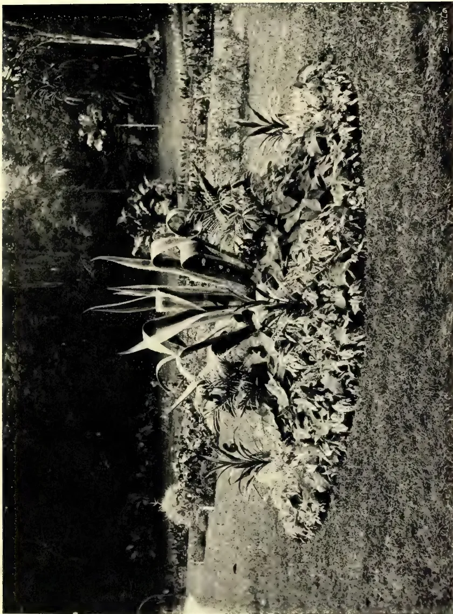
PLATE I.
ORNAMENTAL GROUPING OF PLANTS AT THE ROYAL BOTANIC GARDENS, PERADENIYA.
Photo by H. F. Macmillan.
FLOWERS IN SEASON.—The number of flowers in season is rather limited. Very striking, however, is Spathodea campanulata, which might well be called the “Flame tree” on account of the large scarlet flowers which literally cover the tree and make it conspicuous at a considerable distance. It is called the “Coral tree” by some people in want of a better name, but “Spathodea” is a simple and easy name to remember. The tree is a native of tropical Africa. Peltophorum ferrugineum, a native of Ceylon, is one of the most showy and ornamental of trees. It is now in full flower, its large masses of bright yellow blossoms being in pleasing contrast with the fine pinnate leaves. Roupellia grata, the “Cream Fruit” of Sierra Leone, is also now in full bloom. The flowers are borne in dense sessile (i.e., not stalked) cymes, being of a pink or pale rose colour, and very fragrant. The name grata means “agreeably-scented,” but the appellation “Cream Fruit” is difficult to explain, unless it is on account of the white soft but scanty pulp of the fruit, which is scarcely edible.
BY J. K. NOCK.
FLOWER GARDEN.—The weather during February is usually dry and watering demands a great deal of labour. The bulk of annuals are now in flower and present a gay appearance. They had best be watered in the evenings, and if weak liquid manure is given every fifth morning the growth will be greatly enhanced and fine blooms may be expected. Peg down Phloxes, Verbenas, Petunias, &c.
Seedling Carnations about to bloom will need support and should be staked neatly. Advantage of the fine weather should be taken to cut out Loranthus parasite from the large trees, and to clear up accumulated rubbish, burning the branches and anything that will not readily rot. Repair arches, arbours, and culverts, thatch sheds, clip hedges, trim shrubs, and paint the wood work of glass houses, gates, &c. Roses to bloom in April may be pruned now, and when new growth appears mulch with rotten manure or steamed bone dust.
Wistaria chinensis.—This hardy creeper native to China with purplish flowers is now in bloom and the object of much admiration. The plant was pruned in November, and it is hoped shortly to have rooted cuttings available for distribution.
Sanvitalia procumbens.—This hardy annual with pretty yellow flowers has been introduced to Hakgala and will be found suitable for edgings.
Cacazia coccinea, another new plant from Sutton & Sons bearing orange-scarlet flowers on long stems is a welcome additional hardy annual for the flower garden.
Layia elegans and Rhodanthe are flowering well and can be recommended to anyone wishing to get something new. The latter are very attractive when massed in beds.
VEGETABLE GARDEN.—Brussels Sprouts, Brassica oleracea bullata gemmifera, belonging to the Natural Order Cruciferæ. This is one of the finest and most relished English vegetables, and can be grown practically all the year round, taking exception, to a certain extent, only to the worst months of the South-West Monsoon. Seeds should be sown in sheds, and the seedlings pricked out,
11 Horticulture.82six inches apart into open beds, when large enough. Up to this stage the soil should be only light and ordinary, the object being to produce sturdy plants without over luxuriant growth. Transfer into their permanent situations two feet apart each way before they overcrowd each other, i.e., when they have made about six leaves. The soil they are finally planted into should be limed (with unslaked coral lime freshly burnt) and liberally dressed with somewhat fresh manure. The main point to attain success is a long growing period, so, the plants should not be forced on too much. "Buttons" will form from the soil level to the top. The best time to take the sprouts is before a leaf has unfolded. When all the sprouts are gone the top cabbage may be cooked as a vegetable if worth it.
BY G. W. STURGESS, M.R.C.V.S.
GENERAL.—There is little necessity to point out what the common indications of good health are, as most poultry keepers know when their birds are healthy or at least soon recognise any departure from the normal. There is one point in connection with the temperature which calls for passing notice. The normal temperature of the fowl is very high, namely, 107 F. compared with 101 F. to 102 F. in the horse and ox. Any one taking the temperature of a fowl might consider such a high temperature as indicating a very feverish condition when it is not so.
In connection with poultry diseases of an infectious nature, as in the case of similar diseases in other animals, it is important to bear in mind “isolation” of sick birds and “disinfection” of houses, nests and runs. Excepting wounds, fractures and similar complaints, in all cases a sick fowl should be taken away from its companions and kept in a separate box until it recovers or dies. The house and run should be cleaned and disinfected. The house may be cleaned out with a solution of a disinfectant such as Carbolic acid, Jeye’s Fluid, Sanitas or similar preparations in water and then limewashed. The wood work, perches, &c. may be given a coat of hot gastar, the ground of the run dug over, food boxes and water troughs cleaned and scalded, nests burned and new ones supplied.
If ground permits it is better to give a fresh run altogether. These or similar measures are indicated in the case of a very infectious disease which should be suspected when two or three birds die one after the other showing similar symptoms.
ACCIDENTS.—Broken Leg.—A fractured leg is generally caused by a blow from a stick or stone, or caused by rat traps, &c. If the fracture is in a thick part of the leg close to the body treatment is difficult, but fracture of the shank bone which is easily accessible can be successfully treated. The bone should be put into the proper position, care being taken to see the foot is straight and narrow splints of leather (wettered before application to make it pliable) or thin wood applied and the leg bandaged with a linen or calico bandage soaked in boiled starch or covered with plaster of Paris and water layer by layer while bandaging, either of which will when dry be quite hard and firm. The bird should be kept fairly quiet, and in about ten days or a fortnight if all goes well it begins to use the leg again. The bandage and splints may then be removed, and only a bandage applied without splints, and removed after a few days when the leg becomes strong. Care must be taken not to bandage too tightly to cut the leg or to stop the circulation. If the toes swell the bandage must be loosened.
Broken Wing.—This is more difficult to treat. The wing should be tied down to the body in the natural position and the bird confined in a comfortable cage without a perch. If the flesh is broken the wound must be treated and protected from flies.
Live Stock.84Wounds.—Under this heading may be classed the injuries to the comb or wattles by fighting, especially as commonly occurs with wire netting between the combatants. Wounds should be gently cleaned with cold water and dried with cotton wool and a greasy or oily dressing used. Benzoated lard is excellent for all kinds of wounds on poultry. Zinc ointment or Boric acid ointment may be used if desired. It is a great mistake to apply drying lotions which cause the wounded tissues to become hard and leathery and prevent healing.
Wounds of the Eye may be gently cleaned daily with warm water in which a little Boracic acid is dissolved (about as much as will lay on a ten cent piece to a wineglassful of water) and the following lotion used after it:—
Tinct. Belladonna 10 or 15 drops.
Goulard's extract of lead 10 or 15 drops.
Water 1 ounce.
Mixed.
If necessary tie the legs to prevent scratching the eye. A little benzoated lard may be used outside round the eyelids.
Wounds of the Feet must be well cleaned, and any thorns or bits of glass removed. Benzoated lard can be applied and the wound bound up with soft rag. The dressing should be done daily. Any matter, or a kind of waxy material which commonly forms, should be removed daily before the dressings are applied.
(To be continued.)
The Guinea Fowl is more generally kept for ornament than as a utility fowl, and its merits for the latter purpose are apt to be lost sight of. It is, however, one of the most active foragers of all birds that can be kept on a farm, and the cost of keeping it, compared with other kinds of poultry, is small. The gross profits which it yields may not be as large as those from fowls, ducks, or turkeys, but the net profits are not unsatisfactory, as it is largely self-supporting.
It is particularly hardy, and generally sleeps in the trees about a farmyard rather than in a house. In this way it is free from restraint, and is able to spend the early hours of the morning in foraging for food. There is no better gleaner than the guinea fowl, and it will wander as much as a mile from home, but as it is chiefly insectivorous it does scarcely any damage to crops, and the benefits which it confers by ridding the fields of insect pests undoubtedly outweigh any slight injury caused in this way. It is well able to take care of itself, and there is little danger of its being killed by a fox, while its homing instinct is well developed, and it may be relied upon to come home to roost at night. The guinea fowl, therefore, requires little of the care and special management that must necessarily be given to other domestic poultry, as, if given free range, it will during the summer find almost all the food it requires.
EGG LAYING.—Guinea fowls do not lay in the winter, but during spring, summer, and autumn they lay a number of eggs. Starting, as a general rule, in April, they lay without intermission daily for perhaps a month, and if the eggs are removed from the nest as they are laid the hens will continue for perhaps three months without becoming broody. If they remain in the nest and want to sit, it is only necessary to take away the nest-eggs and break up the nest, and within a week the hen will start to lay again in another place. Even the tamest birds seem to dislike laying indoors, and it is almost impossible to induce them to lay
85Live Stock.in hand-made nests. They prefer to make their own nests in secluded places, where they are well screened from view by bushes or weeds. So cleverly is the nest concealed that it is sometimes difficult to find, but when leaving the nest the hen utters a long and peculiar cry, which is not heard at any other time, and by this means the whereabouts of the nest can be located.
It has been stated that the guinea cock is monogamous, but this is not strictly correct, though in order to secure fertile eggs it is best to keep equal numbers of cocks and hens. If there are many eggs in a nest at the time it is discovered they should be taken away a few at a time, for whilst the guinea hen may not be able to count, she can see the difference in the nest if, say, a dozen eggs are taken away at once and only one or two left as nest-eggs. But if the number is gradually reduced from a dozen or a score to one or two the difference is not detected, and the hen does not forsake the nest. The hen will desert the nest, however, if it is considerably disturbed, or if the surrounding weeds or bushes are trampled.
The eggs are about two-thirds the size of the ordinary hen's egg, but of excellent flavour. It is important, however, that they should be fresh, as contact with the earth or grass in a nest will after some days give them a most objectionable taste; it is therefore necessary to gather the eggs daily.
HATCHING.—The eggs take from twenty-six to twenty-eight days to hatch, and as it is desirable to have the chicks hatched as early in the year as possible, it is advisable to set the eggs under ordinary hens. If the guinea hen hatches her first nest of eggs she will not lay again for the season, but she may be kept laying to September, or later, by preventing her from hatching. It is then too late to hatch guinea eggs, for late hatched chicks will seldom live through the winter, and even if they should survive they remain small and of little use for marketing in February or March, which is the season for guinea fowls. A barn-door hen of average size can hatch about twenty eggs, and when the chicks are hatched their foster-mother cares for them in a more satisfactory manner than the guinea hen would, for the common hen is more tractable, and can be kept with her brood in a limited space.
CARE OF THE CHICKS.—The chicks leave the shell very soon after the appearance of the first chip, and almost immediately they are inclined to stray. In this way some may be lost unless a close nest-box is provided. For the same reason it is necessary to attach a closely-wired run to the coop, in which the chicks are put after they are hatched. For rearing the chicks a combined coop and run has been found most convenient. This may be cheaply made of boards and wire netting about 5 ft. long, ft. wide, and 2 ft. high. This should be divided into two parts, making a coop or sleeping compartment ft. by 2 ft., and a run of ft. by 3 ft. The sides of the run may be of -inch wire netting, the sides of the coop being closely boarded. A slatted partition should divide the two sections, the whole being covered by a span roof of thin boards.
FEEDING THE CHICKS.—The chicks may be left in the nest until they are about twenty-four hours old, and they can then be removed to the coop and fed for the first time. Owing to their liability to stray, the chicks must be kept within the confines of the coop and run until they become accustomed to the mother's call, but afterwards they may be given more liberty. When newly hatched the chicks may be fed on any patent chicken meal, moistened with milk and raw whipped eggs. They should also get green food from the start, and the best kind is chopped onionS or leeks, but lettuce, dandelion, &c., may also be used to advantage. When the chicks are a few days old plainer foods may be freely used, and one of the most wholesome is coarse oatmeal fed dry. This may be varied by the occasional use of
Live Stock.86boiled rice, raw rice meal, hemp seed, millet seed, &c. At a later stage, say when three or four weeks old, some middlings and fine barley-meal may be added to the mash. Grit of fine quality must be regularly supplied from the time the chicks leave the shell.
VALUE OF INSECT FOOD.—There is nothing so wholesome for the chicks as insect food. Dried ants and ants' eggs are often used by those who rear pheasants and guinea fowls, but in many districts, especially where the soil is sandy, there are ant-hills in the fields. In such farms it is only necessary to place the coop in which they are kept near an ant-hill, and the chicks will feed greedily on the insects and their eggs. It is worth while to have a light coop with a wire bottom made, and the hen and chicks can be placed in this and laid over an ant-hill which has previously been stirred up and levelled with a spade.
Young guinea fowls are naturally insectivorous, and when hatched out in the woods and fields they live very largely on flies, grasshoppers, moths, and grubs of all kinds. These being their natural foods, the more of them that can be given to the chicks in a state of domestication the healthier they will be. It is therefore advisable that when a few weeks old the chicks should be given a free run with the old hen, and the best kind of range for them is an overgrown, weed-covered garden, orchard, or shrubbery. In such a place they can find as much insect food as they need to keep them in health; but if the run is small, or if too many birds are kept on it, it becomes necessary to feed guinea chicks with a small quantity of meat in their mash. One of the prepared meat foods or finely-chopped fresh meat and fresh bone may be used.
For table use guinea fowls are but little inferior to the pheasant. The flesh is somewhat dark, but has a decided gamey flavour, and is appreciated when game is out of season.—The Journal of the Board of Agriculture. Vol. XII, No. 2, December, 1905, pp. 533/6.
Referring to the alleged proof that bees five days old carried in pollen, Mr. Samuel Suddaby expresses doubt as to the completeness of the proof, and raises the question whether it is not possible that the pollen-carrying bees might not have come from elsewhere. The doubt is legitimate, and the question entirely fair. Moreover, there are general principles involved of which at least the younger readers may be ignorant, and of which it is sometimes very important they should be informed; so I am glad of the opportunity to give the matter a somewhat full discussion. Mr. S. asks, "Was it impossible for bees to get into that hive?" I feel warranted in saying that, for the first five days, it was impossible for any bee to enter from the outside. It was closed be-tight. The hive was placed over another hive containing a full colony, the upper hive having a solid bottom nailed to it (years ago my hives had bottoms nailed on), and in that bottom was a two-inch hole to allow the heat to pass up from below. To prevent passage of the bees, wire cloth was nailed over the hole above; and, to prevent any communication through the wire cloth, another piece of wire cloth was nailed over the hole on the under side. Then Mr. S. suggests the possibility that, when the hive was opened at the end of the five days, the bees entering with pollen may have been bees from other colonies, citing this special instance: "Last year I got an Italian queen and put her in one of my hives; and before the summer was over I saw Italian bees in at least two hives other than the one in which I put the queen. They appeared to be working the same as the other bees in the hive."
87Live Stock.It is quite true that sometimes—perhaps it should be said oftentimes—bees enter the wrong hive on returning from the field, and being well laden, they are kindly received and given their naturalisation papers. A homeward-bound bee, heavily laden, and wearied with its long flight, may be beaten to the ground in front of some hive other than its own. Without rising on its wings to take its bearings it crawls directly into the hive, and without further ado is adopted as one of the family. Put twenty hives in a straight row, six feet apart—ten feet if you like—on a level prairie with never a tree or other landmark except the hives themselves, and you may expect no little mixing. Bees are not good enough at figures to tell for certain whether their hive is the ninth or tenth from the end of the row, and so a bee may go ten feet out of its way to enter the wrong hive.
Paradoxical as it may sound, the same bee that would make a mistake of ten feet cannot be induced to make a mistake of six inches under the right circumstances. In early spring, before bees have flown, close the entrance of an eight-frame hive all but three or four inches at the right end. After the bees have been flying busily for two or three weeks close the right end, and allow three or four inches opening at the left end. The bees, upon returning from the field, will go straight to the closed right end, taking quite a while to find the opening at the left end, and it will be days before they stop going first to the right end. You see, the bees go by looks, without carefully measuring distances. The bee may go to a wrong hive ten feet away because it looks just like its own; but it will not enter an opening only six inches distant at the other end of the hive entrance, because the left end doesn't look like the right end.
Well, of what practical value is all this? For one thing, the man who fully understands that it is not uncommon for bees to enter wrong hives will not hastily condemn as impure an Italian queen because he finds in her hive a few black or hybrid bees that have come from other hives. For another thing, a proper understanding of the matters that have been mentioned will allow us to increase the number of colonies on the same ground without increasing the danger of bees entering wrong hives. Take that row of twenty hives previously mentioned, and somewhere near the middle of the row set a tree or a fence-post in front of the hives, or even behind them. A hive at the right of the post will not look like a hive at the left; neither will the second hive at one side of the post look like the first or third. In my time I have used a good many double hives—a bee-tight partition in the centre, with both entrances in front. Although the entrances were not six inches apart, I never had occasion to believe that a young queen on her return from her wedding-excursion ever entered the wrong side.
Again, a proper understanding will allow us so to place our hives as to double the number on the same surface of ground. Take again that row of 20 hives at equal distances. By the side of each hive in the row, and close up to it, you can set down another hive, doubling the number of hives in the row, and there will be no more danger of the bees mixing than there was before. A bee belonging to No. 14 is more likely to get into No. 12 or No. 16 than to get into No. 13, which is nearest to it.
Let us now turn to the question at issue. The queen was fastened in the hive, with no bees except those in the cells. No bee could enter from outside till the hive was opened at the expiration of the five days. A worker-bee from elsewhere, beaten to the ground by the wind, would not crawl into this hive just opened, but would crawl into the hive under it, standing on the ground. A worker from the hive below, on returning from the field, would not make the mistake of entering a place looking so unlike its regular entrance. Still less would a bee from any other hive make such a mistake, unless there
Live Stock.88was standing near by an entrance to a second storey, and nothing of the kind was there. Even supposing it possible that a bee might mistake this upper entrance for its own lower entrance, would it be likely that, within an hour, there would be a number of bees from elsewhere carrying pollen into a place where not a bee had before been flying? Moreover, the appearance of the bees was not that of old bees, but of bees only a few days old.
Working cattle and milch cows should be dehorned when quite young, for the horns are of no use and merely a possible source of trouble. On this subject a writer in a recent number of "Hoard's Dairyman" gives the following advice. He says:—
"The best way to dehorn is the day the calf is dropped. Let the calf suck its dam all it wants, and then the calf will lie down and sleep soundly, and you can go to it and hunt for the little button on its head where the horn will start. There you can find a little spot that has no hair, and you just rub a little caustic potash on that spot, and the calf will not wake up from the operation. The horn will not start to grow and the calf will never know what happened, and will have as smooth a head as a muley. Get one shilling's worth of caustic potash and put in a bottle with just enough water to dissolve it, and put in a glass stopper, and when you want to use some, take a pinewood stick like a lead pencil and stick it into the fluid and rub on the little button, and the next day if there is a little dent there the horn is dead; if not put on a little more, but not too much as the fluid runs down. It will take the hair off where it goes. The common box lye will do the work, but don't put on so much that it runs down the head. By all means keep the horns off. The cow has no more need to carry horns nowadays than a man has need of carrying a revolver in company or society."
The address delivered by H. E. the Governor at the Ceylon Agricultural Society meeting on Monday might appropriately enough have been preceded by the singing of Cowper's hymn, one line of which runs "Ye fearful saints fresh courage take." The address was stimulating and encouraging, and just the right stamp of address to give the Society the right send-off for the New Year. We do not propose to criticise the address exhaustively. We hope our readers will make a point of diligently perusing it for themselves, and keep it for reference against the evil days of pessimism and doubt. The Society has settled itself on a solid foundation. It has taken firm root in the somewhat loose and shifting soil of this Island. That in itself is something to have accomplished. Any new idea, especially if supported by H. E. the Governor, may always rely on being received with boundless enthusiasm. That enthusiasm, however, is mostly of the effervescent order. The old experienced Civil Servant does not take kindly to new suggestions. The support which he is prepared to accord to them is of a pronounced non-committal sort. He likes to leave a loophole, so that when the days of adversity come he may apply this flattering unction to his soul: "Well, I told you so, but you would go on." A Governor who can carry his Civil Service with him, get them to emulate his enthusiasm, and see things with his eyes is no ordinary mortal. Then there are the people of the country—the people who are to be more directly benefited. There is first the wealthier and secondly the great masses of peasant cultivators, the gentlemen we speak of when we wish to be thought profound as the goiyas. The mood of the former class is a very changeable one, while the latter are popularly represented especially by the principal Revenue Officers of the Island as steeped in an impenetrable conservatism and inoculated with the deadly virus of stagnation and paralysis, firm believers in the comfortable doctrine that what was good enough for their fathers is good enough for them, and as inveterate stickers in the ancestral groove.
The first difficulty then of sustaining enthusiasm in a movement possessing such wide-spreading ramifications has been successfully overcome, and for that the chief credit must be given to H. E. the Governor and upon the happy choice he made of Mr. E. B. Denham as Secretary. The Ceylon Agricultural Society is still, to use an expressive vulgarism, "going strong." Its influence has not yet reached the mass of the population, but it is beginning to, and nothing was more significant at Monday's meeting than the prominence given to Mudaliyar Wickremeratne's paper. But a Society which can boast of 1,000 members in the first fifteen months of its existence, and point to the fact that forty-one local Societies have sprung into being, and have been glad to be affiliated to the Parent Society cannot be described as being in a languishing condition. On the contrary, it is in sound and vigorous health, and is just entering on a new lease of life, promising greater activities and greater benefits in the future. One of the greatest achievements during the year was the acquisition of the "Tropical Agriculturist," and one of the most striking benefits that will be witnessed during the coming year will be the improvement and greater interest witnessed in the various Agricultural Shows which will be held under the Society's auspices. We congratulate all concerned on the very promising outlook, and hope that when another year has passed we shall be able to report that the masses have been awakened, and that they are as keen about improving their methods of agriculture as they were formerly indifferent, and that an era of general agricultural prosperity especially affecting the poorest cultivator has been inaugurated as a result of the missionary efforts of the Ceylon Agricultural Society.—Ceylon Independent.
12 Miscellaneous.90CEYLON AGRICULTURE: PAST AND PRESENT.The latter days have, in many respects, been of much importance to Ceylon, whose people have revelled in excitement in various directions. Amongst other things, agricultural matters have been prominently to the fore. Seeing that the Island is naturally an agricultural one, that is not surprising; for matters which directly or indirectly affect what must be considered as our predominating interests, have a special claim to the consideration of the public, and so command attention. The inauguration, through the instrumentality of the present Governor—with whom the idea is believed to have originated—of the “Ceylon Agricultural Society” will stand out as a special feature in the annals of last year, and with it His Excellency’s name will be perpetually identified. Everyone will admit that it was a move in the right direction. For reasons which it is needless to specify, the Society has been successfully launched; has branches in all parts of Ceylon, with a large and increasing roll of members; is extending its beneficent operations in all directions; and may be expected to exert an influence as powerful as welcome. It has already excited much enthusiasm, and may, in the near future, be expected to have a renovating effect at all points of the compass. Being primarily designed to reach and benefit the more impoverished sections of our husbandmen in a practicable form, advantage will be readily taken of the opportunity presented; and steady general improvement can hardly fail to come about. It would, of course, be the height of absurdity to expect too much in the early days of its career. It is a novel enterprise, and must be allowed to gradually “feel its way.” Perfection is unattainable; but continued progress in that direction is always possible. Faults and flaws, as they manifest themselves, will be as far as possible removed, and the ultimate outcome gives promise of being productive of an almost incalculable amount of good, especially to those cultivators who are known to have been for a long time in desperate straits.
The planting community, mainly composed of Europeans, is chiefly interested in the growth of tea, coffee, &c., for exportation. Their theatre of operations was, until recent times, confined to the hill country, which has been denuded of its primeval forests and parceled out into thriving coffee estates. All other vegetation was tabooed, and—until the end of the seventies—Coffee was King! But the inevitable exhaustion of the soil was apparent early in the eighties, and a conviction soon established itself that coffee was doomed, and its days numbered. The doleful story need not be related, for it must yet be fresh in the memories of many with sad experiences of those trying times. Attention had to be diverted to possible vegetation such as was calculated to supplant that which was slowly, but surely, approaching extinction. The experimental introduction of such plants as Liberian coffee, cinchona, cocoa, and tea, was assiduously resorted to; and with success. Their propagation was vigorously engaged in by the majority, while a few went in for coconuts, &c. Liberian coffee failed to answer; cinchona made “the mouth water” at the outset, and its cultivation was rapidly extended; but, alas! soon a big “full stop” loomed in the distance. The high prices which the bark at first realized gradually dropped; the price of an ounce bottle of sulphate of quinine fell from 20 rupees to something less than two; the industry ceased to pay; and the plantations were ruthlessly destroyed!
Cocoa was too sensitive—too particular about locality—and would only thrive under very favourable conditions; but where a suitable lodgement was met with, a robust and remunerative estate came into being, with all the elements of permanency; and still flourishes. With tea, things were different. It will grow almost anywhere—a fact demonstrated by the Sinhalese method of expressing
91Miscellaneous:the opinion that certain land was (from a cultivator's point of view) of minimum value: "it will not grow even tea." Generally speaking, tea-planting proved a success; and for a considerable period high prices were obtained. It gradually took the place of coffee, and prosperity reigned. It was, however, not long before unfavourable signs asserted themselves. Prices persistently declined, until a point has been reached which fails to yield the barest margin of profit, and many an estate seems to be "on its last legs." But, as the darkest hour precedes the dawn, so there is hope for the future—a hope which has lately been intensified by the "lucky find" made. Just now people are buoyed up with the potentialities of rubber! A sort of speculative mania has established itself, and brought about an extraordinary "boom" in land, which is being sought after, and acquired, in every promising neighbourhood. The new industry engrosses attention. The "craze" is at its height; and temporarily eclipses everything else. The rush for rubber land has greatly inflated prices. Prospects are bright; for capital will be attracted, while the paying capabilities of the new enterprise are—for some time, at any rate, fully assured. The more distant future is highly enigmatical, and may be put of sight, it being the "living present" which more immediately interests the bulk of mankind.—Ceylon Standard.
The most interesting and instructive feature of Monday's meeting of the Agricultural Board to our way of thinking was Mudaliyar Wickremeratne's description of the work of arousing interest in agricultural reform among the villagers of Telijjawila in the Weligam Korle. It was an excellent paper, well-expressed and pointed the situation as we imagine it actually exists. It is important as marking the first report of a serious attempt to diffuse the benefits of the Association to the villagers. There is no attempt to underestimate the difficulties in the way. They are great, but we gather from the general tone of the Mudaliyar's paper that he does not regard them as insuperable, neither are they, though the effort to awaken the villagers out of their lethargy may be a slow and laborious one and tend to discourage all but the most earnest and persevering. To those who make the iniquity of headmen their pet theme we would cite the example of the headmen of this Korle under the leadership of their enterprising Mudaliyar. The progress at first was naturally slow, but the promoters seem to have been fully alive to the difficulties which they would have to surmount and persevered with the excellent results described in the paper. We cannot do better than repeat the objects of the association which might well serve as an example and encouragement to other district associations. The objects were "to enable the villagers to add to their necessaries of life by the means already at their disposal, to improve the existing methods of cultivation so as to bring better returns, to extend the cultivation of vegetables and other products that form the daily diet of the villagers to such an extent that every villager will not only have enough stock for his own use, but also something to spare for the market, to encourage the cultivation of fruit trees and introduce new products, and to improve our stock."
Could anything more advantageous to the villagers in this particular Korle have been adopted? No wonder that for a time they were spell-bound at the suddenness of such a change, all the more so as the principal agents for bringing these benefits within the reach of all belonged to the despised class of headmen. There has been no intimidation and no threats. The Society has both in a literal and metaphorical sense had to operate upon virgin soil. Persuasion has been resorted to where persuasion was needed numbers have been reprov'd for their
Miscellaneous92videness, and all have been open to the instruction of the Society and its officers. But for Sir Henry Blake calling the Agricultural Board into existence we should not have had this spectacle of headmen uniting in an earnest attempt to improve the condition of the labouring classes. It tempts one to remark that the people who had got into hopeless grooves were not merely confined to the goiya-class, but that indifference and stagnation had even spread to the highest branches of the Revenue Service. Those who are in the habit of reading administration reports know what a dry and dolorous task that is. Why should not Government Agents and their assistants be encouraged to make their reports more interesting and more "live" by describing the efforts they have made and the experiments they have initiated for bettering the condition of the masses over whom they are placed in charge. For years these revenue officers have gone on on narrow stereotyped lines. Let them take fresh courage and help themselves in the awakening of the masses and earn the gratitude of posterity instead of being content as now to crowd their reports with masses of unintelligible statistics regarding crime, village requirements in the way of roads and bridges, &c. Ceylon Independent.
BY J. C. WILLIS.
Those who are engaged in the answering of questions relating to these topics must often wish that there were some convenient index to the endless books, articles in journals, and other publications dealing with them. With a view to providing some slight help to such persons, and to the large public that is more or less interested in these matters, I have undertaken the publication, at odd times, of the lists of such publications which are kept in my own office. The system there adopted is simple. The office receives almost every journal that contains anything of value relating to tropical agriculture or economic botany. Before being passed to the rack of "Additions to the Library," every single one of these journals is looked through by myself, and the titles of its contained articles are indexed upon a series of sheets of paper, kept in alphabetical order, and each headed with the name of some product. In the case of common products, especially such as are produced by several distinct plants, the common name is used, as tea, cacao, indiarubber, &c., in other cases the scientific generic name is used as Aberia, Acacia, Adansonia. In this way a file is formed, to which I can refer at any time, and find out some at any rate of the numerous articles dealing with the different products.
In giving the following lists, therefore, I wish it to be distinctly understood that they are not necessarily complete, nor do they in general go back further than 1899 or 1900, but for the papers published since that time they at any rate approach to completeness.
Journals dealing with tropical agriculture copy so largely from one another that articles, obviously copied, are not indexed a second time here.
Owing to my absence on leave in 1902-3 and my accident of last year, the publications of those periods are not quite fully indexed.
It is especially hoped that these lists may add (in a sense) to the Library Catalogue at Peradeniya, and enable the visitor to make the best use of the library.
Aberia.—The kei apple (A. caffra, Hook.). Queensland Agr. Jl., June, 1899, p. 468.
Acacia.—Notizblatt k. Bot. Gtns. Berlin, II, 1898, p. 176.
Commercial uses of Indian Acacias. "T. A." Nov. 1903, p. 303.
Culture des Acacias et leur production en tanin. Revue des Cult. Col. Juin 1904, p. 331.
Wattle Bark. "T. A." Suppl.; June, 1904, p. 863.
93MiscellaneousAdansonia.—Etude sur la graine du Baobab. Bull. Jard. Col. Mai, 1904, p. 658.
Agave (and cf. Sisal Hemp). Pulque. Tropenpflanze, July, 1899, p. 337.
The Agaves of Mexico; their varieties and economic uses. Indian Gard. and Planting, Sept., 1901, p. 254.
Agave americana &c. Journ. d'Agr. Trop. I, p. 105.
Etude sur le Maguey de Tequila. Rev. d. Cult. Col. 1902, p. 294.
Agave fibre as a catch crop to tea. Ind. Agriculturist, Sept., 1904, p. 280.
Agave fibres. Ind. Plant. and Gard., Nov. 1904, p. 807, Dec. p. 843.
Aleurites.—Le Baucoulier. Rev. d. Cult. Col. 1900, p. 443.
Allspice.—Hanausek; Zur Falschung der Pimento. Beih. z. Bot. Centralblatt, VIII. 1899, p. 469.
Allspice. cf. ditto, p. 470.
Alstonia.—Straits Bulletin, 1903, p. 114.
Andropogon (and cf. Citronella, Lemongrass). Andropogon oils. "T. A." Oct., 1903, p. 283.
Angophora.—Fawcett; Timber Trees of Queensland. Q. Agr. Jl., 1900, p. 313.
Annatto.—Peckolt, cf. Just's Jahresbericht, 27, 1899, II, p. 50.
Annatto Dye. Agr. Ledger, Veg. Prod. Series, No. 87, 1904.
Aquilaria.—Aquilaria Agallocha. do. No. 78, 1904.
Aramina.—L'Aramina. Rev. d. Cult. Col. Jan., 1902, p. 49.
Araucaria.—Sur l'Araucaria Rulei F. v. M.....sa gomme résine. Rev. d. Cult. Col. 1901, p. 289.
Areca.—Cultivation of Areca in the Godavari district. "T. A." Apr., 1899, 676.
Cultivation of betelnut palm in the Bombay Presidency. Agr. Ledger, Agr. Series 30, 1900.
Les maladies de l'arequier en Cochin-Chine. Bull. Econ. de l'Indo-Ch. 1900, p. 541.
A plague in the betelnut palm. Agr. Ledger, Disease Series No. 6.
The Areca palm. Ind. Agriculturist, Aug., 1904, p. 232.
Backhousia.—Lemon-scented Myrtle. Queensl. Agr. Jl. Jan. 1900, p. 49.
Backhousia myrtifolia. do. Feb. 1900, p. 126.
Balata.—Balata-production in Venezuela. Tropenpflanze, 1901, p. 285.
Growth of Balata Production. "T. A." Nov. 1901, p. 295.
Le Balata. Journ. d'agr. trop. I, 150, 1901.
Balata seeds. Trinidad Bull., Jan. 1902, p. 415.
Les Balatas de la Guiane française. Bull. Jard. Col. Mai., 1904, p. 747.
Balsam of Peru.—Preuss; der Perubalsam in Central Amerika und seine Kultur. Tropenpflanze, 1900, p. 527.
Mannich; Chemische Untersuchung der Perubalsamsorten, do. p. 543.
Balsam of Peru. Chem. and Drug., Apr. 1901, p. 638.
Bamboo.—Bamboo Manna. Nature, June, 1900, p. 127.
Bamboo Manna. Agr. Ledger, Veg. Prod. Series, No. 63.
Le Bambou epineux. Rev. d. Cult. Col. 1901, p. 227.
Note sur le multiplication des bambous. Bull. Jard. Col. Juli, 1904, p. 122.
L'industrie des chapeaux de bambou a Java. Bull. Econ. de l'Indo Ch., 8, p. 881.
Conserves de pouses de Bambou. do 1055.
Bassia.—La preparation et la commerce du beurre de Karite (B. Parkii). Rev. d. Cult. Col., Nov. 1899, p. 304.
The commercial value of Mhowra seeds (B. latifolia). Indian Forester, 1903, p. 543.
Bassia latifolia and longifolia. "T. A." July, 1904, Suppl. p. 63.
Bassia latifolia. Ind. Forester, XXX, Oct. 1904, p. 465.
Blighia.—Oil of Akee. Jamaica Bull. 1901, p. 74.
Sur un Sapindacée a arille comestible. Rev. d. Cult. Col. 1901, p. 193.
Bosqueia.—Note sur le Sekegna ou Saccagna, B. angolensis (Welw.) Fic. Rev. d. Cult. Col. 1901, p. 297.
Breadfruit.—The breadfruit. Queensl. Agr. Jl., Apr. 1898, p. 299.
The Breadfruit. Baum in Jamaica Bull., 1904, p. 141.
Starch from Breadfruit. Imp. Bull., March, 1904, p. 28.
Bread nut (seeded variety). Agric. News, III. 1904, p. 263.
Breadfruit meal. Agr. News, Dec. 1904, p. 404.
Broom Millet.—Broom Millet. N. S. Wales Agr. Jl., 1901, p. 559.
Brooms and Broom Corn. Agr. News, 1903, p. 142.
Brucea.—Sur la graine de Ko-sam, B. sumatrana. Roxb. Heckel in Rev. d. Cult. Col. Fev. 1900, p. 97, &c.
Contributions a la bibliographie de B. antidysenterica, do. 434.
Brucea sumatrana. Straits Bull. I, 1902, p. 342.
Brucea sumatrana. do. II, Feb. 1903, p. 41.
Chemical Examination of Ko-sam seeds. Chem. and Drug., Aug. 1903, p. 234.
Butyrospermum.—Quelques notes sur le B. Parkii Kotschy. Rev. d. Cult. Col. Juil 1901, p. 72.
Winke zur Verbreitung der in Togo haufigen, B. Parkii, Kotsch Notizbl. d. k. Bot. Gtns. Berlin, Dec. 1904, p. 166.
The Fifteenth Meeting of the Board of Agriculture was held on Monday, January 8th, 1906, at 12 noon, at the Council Chamber.
His Excellency the Governor presided.
There were also present:—Sir Alex. Ashmore, Lieut.-Governor, The Hon'ble Messrs. G. M. Fowler, C.M.G., H. C. Nicolle, H. Wace, C.M.G., H. L. Crawford, F. C. Loos, S. C. Obeyesekere, S. N. W. Hulugalle Dissawe, and John Ferguson, C.M.G., Drs. J. C. Willis, A. Willey and H. M. Fernando, The Maha Mudaliyar, Messrs. E. E. Green, M. Kelway Bamber, H. T. S. Ward, J. Harward, G. W. Sturgess, W. D. Gibbon, Solomon Seneviratne, Atapattu Mudaliyar, Francis Beven, C. Drieberg, and E. B. Denham, Secretary.
As Visitors:—Messrs. E. Cowan, D. Obeyesekere and J. A. Wickremaratne, Mudaliyar.
5. Mr. H. T. S. Ward moved "That this Board recommends that a tobacco expert be employed by the Society for the improvement of the tobacco now grown in Ceylon." Mr. Obeyesekere seconded. H. E. the Governor, Dr. Willis, Messrs. Ferguson, W. D. Gibbon, Wace, Lushington and Beven spoke on the subject. The motion was carried.
6. Mr. J. A. Wickremeratne, Mudaliyar of Weligam Korale, and Hon. Secretary Local Branch of the Society at Telijjawila, read a paper on "The Work of a Local Agricultural Society." His Excellency and Mr. Gibbon spoke.
7. It was decided to postpone the paper by Dr. Willis and the other subjects on the minute paper for the next meeting.
The Board adjourned at 1-30 p.m.
The number of members of the Society is now 1,001, showing an increase of 67 since the last meeting.
A proposal is now before the Finance Committee to allow of the election of Life Members of the Society.
Local Societies.—Since the last meeting of the Board I have visited the Branch Societies at Katana, Katunayaka, Minuwangoda, Kandy, Anuradhapura, and Ruanwella (Three Korales and Lower Bulatgama).
At Katana a piece of ground has been rented for an Experimental Garden and a caretaker employed.
A prize of Rs. 100 was offered by Mr. S. M. Silva for the best work done in the garden by a child from any of the local schools. A small plot of ground is to be given to each child competing. It was decided to limit the prize to Rs. 20, the balance to be expended on other prizes to be decided upon by the Branch Society.
At Katunayaka an excellent Experimental Garden has been opened by Mr. A. E. Rajapakse, Muhandiram, the President of the Branch. Forty villagers undertook to plant up vegetable gardens, and Mr. Rajapakse offered four prizes of Rs. 15, Rs. 10, and two of Rs. 5 for the best results.
At Minuwangoda nothing practical had been done. The meeting held by me was attended by 500 or 600 persons. It was decided to award prizes for the best exhibits of vegetables grown in the district shown on the 1st Saturday in April at the Coronation Market at Minuwangoda. Prizes to the amount of Rs. 105, in twenty-rupee (two prizes), ten-rupee and five-rupee prizes, were offered for the best exhibits of vegetables (grown in the district and grown for the first time in the district), for fruits, yams, ground nuts, silk cocoons, and mi-kiri.
A number of villagers gave in their names as competitors. It is to be hoped that the interest now aroused and the exertions of Mr. J. E. de Silva, President, Village Tribunal, will result in practical work being attempted by this Branch.
The Anuradhapura Branch will offer a prize for the best lot of cotton grown in the district sent in to Maha Iluppalama by a villager. It has been decided to purchase all cotton grown by villagers at a fixed price at the Maha Iluppalama Experiment Station, cash being paid on delivery.
At the meeting of the Three Korales Branch held at Ruanwella prizes to the amount of Rs. 105 (nine prizes of Rs. 10 each and three of Rs. 5 each) were offered for the best exhibits of plantains, collections of vegetables, cucumbers, yams,
Miscellaneous.96chillies, pineapples, brinjals, manioc, bandakkai, and ground nuts, and for the best village cock and two hens to be exhibited on the first Sunday in August at the Yatiyantota Market. Application is being made for the use of a piece of Crown land for an Experimental Garden.
Castration demonstrations were arranged for at these meetings.
The Committee of the Kandy Branch decided to hold a general meeting on the 26th instant.
Several papers have been read at meetings of Branch Societies. At Jaffna a paper on "Manioc Cultivation" was read by Mr. J. P. Lewis, Government Agent a paper on "Tobacco" was read at the meeting of the Kurunegala Branch by Mr. Madapola; "Poultry" was the subject of a paper read by Mr. E. D. Dharmasena at the meeting of the Badulla Branch. A paper on "Sweet Potatoes," by Mr. A. M. Wickremeratne, is promised the Wellaboda pattu (Galle) Branch.
Agricultural Shows.—The following dates have been approved by the Society:—
| Weligam Korale (Telijawila) Branch | ... | March 15 and 16 |
| Gampola | ... | March 30 and 31 |
| Nuwaru Eliya | ... | April 17 and 18 |
| Kurunegala | ... | May 14 and 15 |
| Badulla | ... | May |
| Colombo | ... | June 22 and 23 |
| Kegalla | ... | July 6 and 7 |
| Avisawella | ... | September |
No dates have yet been fixed for the Matale Show.
The Rubber Exhibition has been fixed for 13th, 14th, and 15th September.
The two portable iron sheds have now been completed and despatched to Weligama for use at the Weligam Korale Show.
Experimental Gardens.—Arrangements are now being made for the erection of a seed depôt at the Government Stock Gardens. An estimate of Rs. 1,000 for the erection and fitting out of building will be laid before the Board. The expenditure of Rs. 100 on purchase of seed for the Society has been sanctioned.
Mr. Francis L. Daniel has offered the Society for experimental cultivation by any member about 10 acres of land at Madampitiya suitable for paddy cultivation.
The statement in the last Progress Report that the Weligam Market land had been planted with fruit trees and vegetables was based on a misunderstanding, as was at once pointed out by the Weligam Korale Mudaliyar. The fruit trees have been procured from Peradeniya, but, on the advice of Mr. Macmillan, it was decided to postpone planting until after the south-west monsoon.
Paddy.—The following letter has been received from the United States Department of Agriculture:—
We are very sorry to be obliged to report that the seed rice, three hundred bushels of which we were getting for you, is of such poor quality that we do not dare to take the responsibility of forwarding it to you at your cost. We will shortly send you samples of the best Carolina rice procurable this season, and you will see that it is of poor quality and would be disappointing to you in your trials with it. We are of course ready to make another trial next year, when it is to be hoped the rice crop will be good. We are very sorry to disappoint you in this matter, but I think you will be grateful to us for saving you what will be an unnecessary expense and would unquestionably disappoint you in the end. Trusting you will call upon us next year, if we can be of assistance to you,
I remain, &c.,
DAVID FAIRCHILD,
December 16, 1905. Agricultural Explorer in Charge of Foreign Explorations.
97Miscellaneous.It is unfortunate that the Carolina seed paddy cannot now be procured. It appears that a supply formerly imported is now grown as a hill paddy in the Wellassa district of the Province of Uva, and is a much-prized variety in the villages cultivating it. The Madras authorities have booked the Society's order for the "sixty-days" seed paddy.
The Telijjawila Local Society will distribute seed paddy to the poorer villagers on the 20th instant at a nominal interest of 5 per cent.
Cotton.—Sea Island, Egyptian, and Uplands cotton seed is now sent free from Maha Iluppalama to members of the Agricultural Society. The cost of transport only will have to be borne by members desiring to try this cultivation.
Two cotton gins—a Patent Hand-power MacCarthy Cotton Gin and a Hand Saw Gin—have been received from the British Cotton Growing Association. Applications for the loan of these gins should be made to the Secretary.
Ground Nuts.—Distributions of nuts for seed have been made by many members of Local Societies. Mudaliyar J. V. G. Jayawardene of Kalutara Totamune has distributed 55 bushels. Mr. A. Mailvaganam of Koppay, Jaffna, reports a yield of 150 lb. on 2½ lb. sown, and states that he will now cultivate on an extensive scale.
Papaw Juice.—The development of the industry has attracted attention, and Mr. C. Drieberg is preparing a sample of papaw juice for a trial shipment to England.
Offer of a Prize.—Dr. P. M. Muttukumaru has offered a prize of Rs. 50 for the best invention of an appliance for tethering cattle in such a way that they will not damage young coconut and other plants.
Manures.—Messrs. Freudenberg & Co. have informed the Society that they are prepared to place suitable fertilizers for coconuts, tobacco, cotton, &c., at the disposal of the Agricultural Society for small experiments at various stations to be carried out by responsible parties. The Society will assist such experiments by forwarding these fertilizers free. Local Societies are being informed of Messrs. Freudenberg's offer.
Government Dairy.—The Live Stock Committee have recommended the removal of the Government Dairy from Colombo, and that experiments be at once made in sterilization of milk.
Notice of a motion for the next meeting of the Board will be given at to-day's meeting.
Sericulture.—Mr. A. Perera, Assistant Inspector of School Gardens, is now making a tour in the Central and North-Western Provinces purchasing cocoons at Re. 1.50 a lb. cash payments. He has already sent in 55 lb. of cocoons to the Government Entomologist. The attention of members is invited to the new leaflet on Sericulture, No. XVI.; leaflet No. IX. is cancelled. Samples of cocoons are being sent to Bangalore and Manchester.
Castration.—The Government Veterinary Surgeon reports that demonstrations have been applied for and arrangements made for holding them at Veyangoda, Panadure, and Negombo in the Western Province; Mannar and Delft in the Northern Province; fifteen centres in the North-Western Province; thirteen centres in the North-Central Province; eight in the Kandy and two in the Nuwara Eliya Districts.
At Delft 101 cattle have been already operated upon and nine men trained. It should be noted by Local Societies and Village Committees that at the same time as castration demonstrations are being given, a selection of the best bulls for breeding should be made. Applications should be made as early as possible, and sufficiently long notice given for the convenience of the Veterinary Department
13 Miscellaneous.98and to allow of as many animals as possible being produced at the demonstration centres. Many of the Local Societies and Village Committees are now supplying the trained men with instruments. The locally trained men in the Weligam korale have operated on thirty-three animals.
Publications.—Leaflets on “Shade Trees” and “Agricultural Shows—Instructions for Forwarding and Arranging Exhibits” in English and the vernaculars are with the Printer.
The Editors of the “Sihala Samaya” and the “Dinakaraprakasa” kindly forwarded 100 copies of two editions of their papers containing in Sinhalese the proceedings of the last Board meeting, for distribution among the Local Societies.
The first number of the Tamil edition of the Society’s Magazine, entitled “Kamat Tholil Velakkam,” appeared last month. The Editor, Mr. J. P. Cooke, of the “Morning Star,” Jaffna, deserves the thanks of the Society for his enterprise and success in bringing out this edition, the first number of which promises well. A copy is laid on the table.
February 12, 1906.
E. B. DENHAM,
Secretary, Ceylon Agricultural Society.
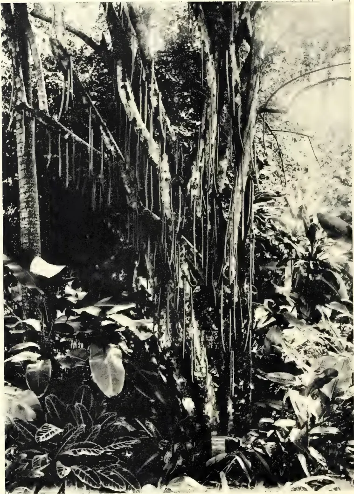
Photo by H. F. Macmillan.
THE "CANDLE TREE," PARMENTIERA CEREIFERA.
THE
TROPICAL AGRICULTURIST
AND
MAGAZINE OF THE
CEYLON AGRICULTURAL SOCIETY.
VOL. XXVI.
COLOMBO, MARCH 15TH, 1906.
No. 2.
New Products in Ceylon.
A century ago, the few products cultivated in Ceylon—mainly rice, cinnamon and coconuts—were not “new products” but things native to the island. At the present day, the numerous crops mostly are or have been new products, i.e., plants introduced into Ceylon at one time or another. Such for example are tea, cardamoms, cinchona, rubber, cacao, coffee, vanilla, camphor, coca, &c.
The rise of new products dates from 1824, when the estate of Gangaruwa, now the Government Experiment Station at Peradeniya, and still known to the Tamils as ‘Raja’ Thottam, was opened by Governor Sir Edward Barnes. He, like most who first came to Ceylon, took for granted that Indian crops must also succeed here, and tried indigo, sugar, &c., with failure as the result. Later it was discovered that coffee would succeed here, and with that began the coffee boom, which lasted till about 1875, when the rapid spread of the leaf disease began to kill the industry.
Until 1875 or 1880 no one wanted, and no one would even look at, any new product, but Government had not been idle in introducing them through the Botanic Gardens at Peradeniya, Henaratgoda and Hakgala. Dr. Thwaites had already introduced cinchona, Liberian coffee, rubbers, and other plants. With the downfall of coffee people began to try these.
The first to rise into prominence was of course cinchona, introduced at Hakgala in 1861. Had the people upon whom this cultivation was then pressed been willing to plant little patches of it through their coffee, they would have made large profits and also checked the spread of the coffee disease. But this unfortunately is not Ceylon’s way of doing things. No one touched cinchona till about 1875, and then rather gingerly. The first pioneers made large profits, and then followed a rush which rapidly covered the upcountry districts with this tree, lowered the price of quinine from 12 shillings to 1 shilling an ounce, and destroyed the profitableness of the industry. No attempt was made to improve the yield of the barks, or any such thing, and Java, which went doggedly and scientifically to work to do so, has taken away from Ceylon the whole of her cinchona trade, and is never likely to be ousted from her position of supremacy.
Next came cacao, which in truth is a very old introduction to Ceylon, probably having been introduced by Moon to the old Kalutara Botanic Gardens. This, thanks to the work done by the Royal Botanic Gardens Department in the last few years in attacking the canker which threatened it, is still with us.
100Tea followed. The Botanic Gardens were not the sole introducers of tea, though they had it very early, and Lear, an early Superintendent, planted tea in Nuwara Eliya in 1837. The rise of the industry dates from the commission to Assam, which was provided with questions by Dr. Thwaites.
Liberian coffee had a small 'run,' but has never been much of a success in Ceylon. Ceara rubber was tried in the early eighties, but did not yield well enough, and was soon cut out to make room for tea. Vanilla came later, but the artificial vanillin and overproduction have destroyed its profitableness; and now, last of all, comes rubber, especially Para, which was introduced by the Royal Botanic Gardens in 1876, and bids fair to have a "boom" of several years, being perhaps the most profitable crop ever cultivated in the tropics, and one with an enormous market.
Now there is still, though it is dying out, a widespread impression that this sort of thing will continue, and that Peradeniya is a kind of lucky bag from which new products will emerge as the old ones are overdone. It is necessary to state clearly once for all that the day of this kind of thing is over, and that it is now far more important to improve, extend, and consolidate the industries already existing in Ceylon, than to devote attention to the comparatively minor chance of finding something to take their place if they fail.
The great success of the various industries in Ceylon has been due to the fact that they have had to meet only the competition of wild jungle stuff (as in rubber and cinchona) or that of the tropical races of mankind (as in tea) who are not up to date in methods and machinery. This is now all over, and every thing of any value is now in the hands of Europeans, Americans or Japanese, and a fierce competition will have to be met, in which Ceylon will be handicapped by poor soil &c., but will have vast advantages in other directions. The victory will be to him who most intelligently applies the resources of science, politics, &c., to aid him.
Ceylon has now a very rich and varied list of products and is not, like Jamaica or Hawaii, almost entirely dependent on one, as she was in the coffee days, when at one time coffee formed 95 % of the value of her exports. The island cultivates, on a commercial scale, rice, tea, cacao, rubber, coconuts, citronella, palmyra palms, tobacco, cinnamon and cardamoms, besides smaller quantities of nutmegs, cloves, kituls, coca, camphor, lemongrass, cassava, annatto, sapanwood, vanilla, pepper, coffee, kola, sugar, fruits and vegetables. This is a magnificent and varied list, and our attention should be devoted to improving these and extending their cultivation into new districts. Sugar is almost the only tropical product of importance not seriously cultivated in Ceylon (though there is a little), but our soil and elevations are unsuited to it, and it grows well in Java, Hawaii and Cuba.
So far, then, as Ceylon is concerned, the idea to be understood in the term "new product" requires great extension. We have now got, in general, to find products which are absolutely new, to find uses for these products, and to create a market for them. Obviously this is a task of far greater difficulty than merely introducing such a plant as cacao or rubber. Thus, for example, at the present time, it has been suggested that we should use our Mana-grass (Andropogon Nardus) as a source of paper, for which purpose it has never hitherto been used. We have then to show that this grass will give a good paper, that it can be laid upon the European market in vast quantity, and as cheaply as any existing source of paper, and that this rate will remunerate those who collect it in Ceylon. To get favourable answers to all these questions is evidently much more easily said than done, yet all must be so answered before we have "got" the new product.
101A few words in season respecting Ceara rubber which is gradually growing in favour in South India and Ceylon. A great many of this variety of rubber tree were abandoned in the island owing to unsatisfactory prices secured for rubber some years ago, but now that the market has considerably changed for the better, these abandoned trees are being tapped with the following result, viz. :—Sold as Ceylon Plantation Rubber, Ceara is realising the same price as Para if properly cured.
It would be, of course, ridiculous to plant up Ceara at elevations where Para rubber would grow, and give latex freely, but at medium elevations it would do well and is worth experimenting with in various parts of the island. This is being done to a certain extent. I have sold seed and stumps to be planted from 2,000 ft. to 4,000 ft. elevation, but whether the latex collected at the latter elevation will bring in a profit remains to be proved; but from 2,000 ft. to 3,000 ft. (even if the prices drop to 4s. per lb.) it should leave a fair margin of profit. Of course, it would be absurd to plant this rubber in poor abandoned soil in which even mana grass will not grow satisfactorily. But there are large acreages in Ceylon at the elevation given, of fairly good soil, that if planted in tea would not give a profit at present prices ruling, and yet would in Ceara; and those who wish to cut down expenditure to bring the trees into bearing (i.e., six years or under) could weed 3 ft. only round the trees planted, say 20 ft. by 20 ft.
The outlay for cost of seed or stumps and opening up any abandoned land would be less than if planted in Para. The difficulty of germination of the seed has been overcome by filing the exterior which will assist germination, otherwise seed may remain dormant in the nurseries for months. An even simpler method is to place the seed in boiling water, and let the water boil for five or ten minutes or allow the same to cool and then remove the seed. The seed afterwards should be covered with a dressing of horse dung, which will accelerate germination in the nursery. Of course, by purchasing stumps anyone is practically one year ahead of his neighbours, which is a distinct advantage, supposing the rubber market does fall slightly.
A few words re tapping and curing may not be out of place. One must not be too drastic with tapping, otherwise he is liable to kill the tree or leave bare patches. If the following plan is adopted it will prevent this:—Remove only 2 feet of the outer bark for the first tapping all round the tree and cut only 4 (four) V-shaped cuts in one day, two incisions in the morning above; ditto two below in the evening five inches apart, commencing in the middle of the tree. Continue this all round the tree until you reach the lateral branches above and the roots beneath. After this is finished, then scrape only the newly-formed bark off with a piece of barrel hoop iron, and then cut an intervening incision. One must be careful not to cut down into the cambium or wood, or portions (with the help of white ants and insects) will die back. Do not clean out the latex collected in the incisions for scrap rubber because it acts as a balm to heal up the wound, besides keeping off white ants, etc. The price realised for rubber which contains bits of bark, etc., is very small sold as balls.
Gums, Resins,102Should anyone wish a rich amber colour biscuit, all that is necessary is to add a few drops of pure lime juice when mixing the latex with water in the tin plate prior to coagulation. Not only does it force on the coagulation process, but is supposed to keep the biscuits from collecting mould to a certain extent when in the drying preparation. Some brokers and buyers do not like any admixture whatever and prefer the palish biscuit. This can be left to anyone's discretion. I need not send you valuations as only recently a report was inserted by you, under heading "Ceara Rubber in South India," in which Messrs. Sanderson & Co., of Mincing Lane, valued some of "Beech-lands" Estate Ceara Rubber at 6s. to 6s. 1d., which is the present market value of well-cured clean Ceara Rubber. However, I am forwarding to you under separate cover biscuits for you to get the local value to compare with London valuations.
[The biscuits which were of good colour and texture were valued in Colombo at top local prices. Rs. 1.20 per lb. equivalent to 6s. 1d. per lb. in London.—Ed. C.O.]
—Ceylon Observer.
During the year 1904 the first attempts at harvesting latex from cultivated rubber trees were made in Nicaragua. The plantation on which these experimental tappings were made belongs to an American, Mr. J. C. Horter, and is situated in the Perlagune district about 30 miles north of Bluefields. It is the oldest of the plantations of Castilloa. The trees tapped were raised in a nursery in 1897, transplanted in 1898, and in 1904, when 7 years old they had attained a height of 40 to 45 ft., and measured 17 to 30 inches in circumference. 6,000 trees were tapped, the smaller receiving only one cut, the medium two cuts, and the largest three each. A total weight of 534 lb. caoutchouc was obtained, being an average of 1½ oz. rubber per tree: a poor average. A tree after a certain time can be tapped a second and even a third time without appearing to suffer, and giving the same quantity of latex. By careful attention in collecting the latex the rubber obtained was of a greater value than the ordinary rubber of the district, commercially called "Nicaragua syrup" (sirop).
The natives are accustomed to tap the superficial roots of the trees, and the latex which runs out becomes mixed in coagulating with particles of soil, &c.; this product is called "syrup"; what is obtained by coagulating the latex from the branches and trunk is called "burracha." But as the collectors of the latex in the wild state are at great distances, these two sorts of rubber are mixed together generally, the better class rubber surrounding the bad kind.—(Translated from the French).—Ceylon Observer.
The following is from Mr. C. E. Brasier's Report on Forest Administration in Madras for the year ending 30th June, 1905:—
Rubber Trees—(a) Landolphia florida.—The twenty-two trees in South Malabar mentioned in last Report are in good condition though somewhat damaged by monkeys.
(b) Ceara (Manihot glaziovii).—The plants in Chatrapur, Ganjam, exist without thriving. A single tree, apparently remnant of an abandoned rubber plantation on Kondapalli hill, Kistna, has reproduced about fifty plants, all of which are doing well, the climate and other local circumstances of Kondapalli evidently suiting the species. Those put down in Someshwar, South Canara, did not germinate, but four out of 300 seedlings planted near Alur resthouse were nine inches
103Saps and Exudations.high and in good condition. Seeds sown in Kanoth in North Malabar did not germinate. In North Malabar two acres in Kanoth reserve contain well established and large trees which have been tapped once, without results being recorded however. There is another plantation at Manantoddy which has similarly been tapped. The trees in South Malabar diminished in number, some being blown down by wind, while their natural reproduction was considerably checked by deer and sambhur. None of the 1,304 seeds (Kallar variety) sown in the nursery last year germinated. In the Nilgiris there are sixteen well-grown trees in and around Benne nursery, and growth from their seeds is abundant. 3,514 seedlings were planted in Benne Teak plantations and station and Mudumalai, but none of the seeds sown in the nursery germinated. An attempt was once more made to introduce the species in North Coimbatore but was a failure, only two meagre seedlings surviving in the Range compound at Satyamangalam. The Ceara rubber trees planted at Mount Stuart in South Coimbatore are well established and are bearing seed; natural reproduction from seed is also prevalent. Sowings of this tree at Kodai-kanal, Madura, proved a failure. A small percentage of seeds sown in Tinnevelly germinated.
(c) Ficus elastica.—The young plants put out in various places in Ganjam did well where sheltered from the sea-coast wind and sand blow, but died elsewhere. In Nellore the experiment proved a failure in Kollurpad plantation.
(d) Hevea brasiliensis (Para rubber).—Seeds failed to germinate in South Arcot. Three hundred and twenty plants survive in the nurseries at Someshwar in South Canara and are being transplanted. Of 535 seeds sown in Begur, North Malabar, 15 germinated, and only three now survive. In South Malabar, 24 trees exist in Iravillicave in good condition. Of the 535 seeds sown, 64 germinated, but owing to the damage done by rats, monkeys and porcupines, only eight plants survived.
(e) Kicksia Africana.—Only twenty-two of this exist in South Malabar. They show very shrubby growth and are not likely to produce much latex. They were much damaged by a boring caterpillar.
(f) Dichopsis elliptica.—One hundred and fifteen pounds of rubber were manufactured from the milk of this plant in South Coimbatore at a cost of Rs. 100 and sent to Messrs. Pierce, Leslie & Co., at whose instance the experiment was undertaken.
PEERMADE.—On this side of the country there is no paddy cultivation to be interfered with by drainage of lands cleared for rubber, and there are thousands of acres of land at present almost unknown and absolutely without population, from which no timber has ever been exported, as roads do not exist, and which do not contain either teak or black-wood. The rainfall, soil and lie of land are all suitable for rubber cultivation. These lands, had they been surveyed and sold a year ago, would have placed Travancore at least second among rubber-producing countries of the East. I may mention that it has been decided to start a Central Travancore Rubber Planters' Association. The following is a fairly accurate list of rubber estates on this side of the country:—
LAND HELD UNDER TRAVANCORE GOVERNMENT.—Mundykayam Estate, about 500 acres; total planted about 250 acres. Vellanardie Estate, about 600 acres; total planted about 350 acres.
LAND HELD UNDER PUNJAT RAJAH.—Jenduar Estate, about 600 acres; planted about 340 acres. Kuttikal Estate, about 700 acres; being planted about 400 acres.
LAND HELD UNDER CHUNGANUR RAJAH.—Eldorado Estate, about 600 acres planted; and being planted about 500 acres. Kurdomankolam, about 1,200 acres planted; and being planted about 500 acres. Kuppukayam, about 800 acres planted and being planted about 150 acres. Grahamsland, about 300 acres planted; and being planted about 200 acres.—Madras Mail.
Gums, Resins,104RUBBER AT HENARATGODA, CEYLON.POLLARDING HEVEAS: HIGH TAPPING: SCIENTIFIC COAGULATION.We were a square party who sat down to dinner at the Henaratgoda Resthouse one evening not long since. All were, of course, interested in the topic, the one great all-absorbing topic of the day in Ceylon—RUBBER, and all had a hand more or less deep in the industry. There were the Inventor, the Scientist, the Planter, and the Writer. The last of the quintet, the Company Promoter, was missing, but he turned up next morning betimes having dossed for the night at Veyangoda.
The rubber experiments plantation, for that is what the Henaratgoda gardens are now in addition to being a botanical garden, is but a walk from the Resthouse, and the tappers were just commencing their morning's task when we arrived next morn. The visit to the plantation resulted in what was really a practical lecture and demonstration on the rubber tree, and the working of it to the best advantage, the Scientist being the "spokesman," while the four others put forth questions and opinions and desired solutions of various knotty points, of which more later. The Inventor, as becomes such a remarkable man, had plenty of good statements to make; but, like many of the bon mots of the Company Promoter, such things are not all meant for the public, nor is it good for them to hear them.
POLLARDING HEVEA BRASILIENSIS.Passing the grove of the old original Para trees—and these parents of the plantation rubber industry always inspire respect—we came to the plantation of trees of different ages raised at Henaratgoda, and on one of them the wood-cutters were at work. The middle one of three untapped 10 year old trees, all about the same girth, was being cut away at 15 ft. from the base. Now the Scientist came to the fore and commenced his story.
"In a Hevea plantation," was the drift of his words, "we don't necessarily want lofty trees with tall straight stems. What is required is a very big-girthed trunk of about 15 ft., with plenty of foliage on the top. To obtain this I recommend pollarding the young trees at about 15 to 20 ft. from the base; this may induce a great annual increase in the girth of the stem and consequently you may have a much enlarged tapping area. You don't usually want to tap higher than 15 ft. Of course, I cannot, at present, recommend pollarding 10 year old trees—this one is being done solely as an experiment to compare its growth with these two trees beside it. What I do recommend is thumb-nail pruning young trees when they've reached a height of 12 to 15 ft in order to induce lateral branch growth and an increased amount of foliage."
"What is thumb-nail pruning?" interjected the Planter.
"This," said the Scientist, demonstrating by taking the main shoot of some plant growing near and nipping off the tiny terminal bud with his thumb-nail, "that prevents any further growth in length and induces the stem to thicken and throw out side shoots. We have found here that by pollarding young trees an increase of girth growth is obtained of one inch per annum; that is 3-4 year old pollarded trees are equal to unpollarded 4-5 year old trees; and thus we can equal in Ceylon the extra growth of the Malay Peninsula."
The natural proof of this is seen in trees that begin to fork a short distance from the ground, for pollarding has the same effect as natural forking. Of the oldest Henaratgoda trees (30 years from seed) most are trees with tall straight stems, while a few are forked at 7 to 11 feet from the ground. The average girth of the straight trees at a yard from the ground is 75 inches, the average of the forked trees is 105 inches; while one tree forked 11 feet from the ground girths 110 inches and two others 109 inches each! (Fuller particulars on this interesting
105Saps and Evolutions.and important point are given on page 50 of the latest book on Para Rubber.)* Planters do not seem to have yet realised what the result of this pollarding and thumb-nail pruning, originally announced in the book referred to, means. It means a year less to wait until the trees are ready to tap; it means a return on capital a year earlier and when prices are high; it means tapping with safety 4 year old trees!
HERRING-BONE AND SPIRAL TAPPING.—Meanwhile, tapping was going on on the trees. At Henaratgoda the systems under careful experiment are the half and full herring-bone and the half and full spiral—these are the only methods of tapping yet evolved that are really economical and scientific, and of these the full spiral, if carefully and properly done, is perhaps the best because the perfect shape of the trunk is maintained. The trunk always swells and increases in girth where tapped, and the best system is that which allows this growth in girth to be equal all over the trunk. The planter who adopts spiral tapping must emphatically insist on its being carried out in the very best manner, and in the long run the extra care and trouble taken will be well repaid. Certainly the Henaratgoda trees are a good example of careful and clean tapping. Tapping is done on different lots of trees every day, every alternate day, twice per week, and once per month.
"In tapping," began the Scientist, "it is necessary only to shave off the very thinnest paring, just to re-open the milk tubes which are already swollen through the phenomenon of wound response." In the outer bark of the tree there is no rubber at all, nearly all the milk tubes lie in the young growing bark close to the cambium, and these tubes are just pierced in tapping; the cut must not even go right through the young bark and certainly should not go down to or expose the cambium.
"Remember this," said the Scientist, and he held up a menacing finger at the Planter—"the first time you tap the tree spirally it must be done very lightly—we'll examine your first attempts presently—for though it's a perfectly sound method, there is no doubt that if any system of tapping will kill a tree the full spiral will. In fact I have on a certain estate killed out trees in a too densely planted estate by tapping hard on the full spiral system from the base up to 30 ft. high. Your object is to cut away the bark as slowly as possible, and we have had excellent results here. These trees have been tapped for three months—tapped twice per week using the knife and the pricker alternately—and as you see, we have worked through one inch of bark, that is 4 inches per annum, or a foot in 3 years. By pricking twice to each time the knife is used this could be further improved; that is, we strip the bark of the tapping area once in from three to six years. As you see on this tree the renewed bark is already almost on a level with the original bark, and is again full of milk in only three months. So that in three years, or more, when it will be tapped again, it will be old bark."
These results are certainly astonishing, and it can now be no matter for doubt that 6 lb. per tree and more per annum can be obtained from many trees ten years old that have been reasonably looked after. For it must be remembered that at Henaratgoda the trees are uncultivated trees, and not growing in particularly good soil.
But our attention was attracted to various lofty trees against which some pretty substantial scaffolding was erected. A cooly was mounting one; carrying a knife too, and yes! why, he's actually tapping at 30 ft. high! One could hardly believe it at first. Tapping at 30 ft. up after all that has been written and said in the last twenty years about tapping only the first six feet of the trunk!
* Hevea Brasiliensis or Para Rubber by Herbert Wright. Published by A. M. & J. Ferguson, Colombo.
Gums, Resins.106Yes, the Scientist admitted, he was really doing it, and getting pretty fair results too, but it was merely an experiment and a practice not advocated.
"I am tapping these trees" he said presently, "from base to 10 feet, from 10 feet to 15 feet, from 15 feet to 20 feet, and from 20 feet to 30 feet on the herring-bone system, and one tree on the full spiral system is being tapped from the base to 30 feet high. The results are not as yet public, and it is too early to say anything definite as only a little has yet been done, but the results will be published for the information of planters when we have anything definite to go on. But I may say this, that high tapping on Hevea trees is not only absolutely useless on the ordinary plantation now being cleared and planted, but even dangerous to the welfare of trees. It can only be done on such trees as we have here at Henaratgoda, which are unique, and on one or two estates where they have old or very lofty trees, such as Culloden and Kepitigalla, where Mr. Holloway is tapping very lightly up to a certain height. It cannot be done on the ordinary plantation which has to come into bearing in four to six years from planting; girth should be sought and pollarding tried."
"This particular tree," he continued, as we grouped round a gigantic-bowled Hevea on which three men were at work shaving the full spirals, "presents rather a curious phenomenon. It yields latex freely, but it won't coalesce, and acid only curdles the milk; why, I have not yet ascertained, but it may be because there is a lack of caoutchouc in the milk; it will probably recover in time."
Seeing three men at work on one tree to tap it properly gives some idea of the enormous amount of labour that will be required for the rubber industry in a few years' time if trees are allowed to grow into really large specimens. One cooly per acre will not be the estimate for many years! The Planter had been trying his hand the previous day at spirally tapping a tree, and with trepidation and fear of caustic criticism he watched us approaching the tree. But the tapping, carried out on theory, was good enough. The Scientist explained, however, that the original channel was too wide.
"The less bark you remove the better, and the first channel must be as narrow as possible. After the tree is marked out with chalk or tar, where each spiral is to be cut, take your knife like this and gradually work off the bark. All you want to do the first time is to irritate and cut the milk tubes just sufficient to induce a small flow of latex—in fact, it need not even run down but may be all scrap. The flow will increase at each tapping up to about the fourteenth, and until there is wound response much latex must not be expected. But don't cut deep thinking you'll get more flow with the first incision." While talking he had been cutting a neat channel round the tree showing how the work should be done, and the Planter looked on with envious eyes. "Hullo! Hullo! suddenly burst out the Scientist," what have you been doing! Cutting through a knot! I thought you'd know better than that. Never cut through a knot in the tapping area; take your cut round it, even if it alters the parallel of your line, and leave the knot to work itself out, which it will in time."
Discussing the flow of milk in the spiral system it was explained that it had been proved that, in some countries, the largest quantity of rubber was obtained in the leafless or wintering stage of the tree. This is due to the fact that there is no enormous transpiration of water going on from the leaves, and it is the same in the early morning before the sun's heat makes the leaves transpire, consequently there is a big flow of latex.
107Saps and Exudations.THE USE OF DRIP TINS.—The announcement of the use of drip tins in the book on rubber referred to was the first intimation of this invention. These are patented by Mr. Geo. S. Brown, of Messrs. Brown and Davidson, Talawakele, and a good idea of their use may be obtained by seeing the rough tins in use at Henaratgoda. Chemical is not yet used in these, nor is the drip properly regulated, but the absence of scrap by the use of water even is very noticeable. Ammonia or formalin prevents the clotting of the latex which continues to flow assisted by the dripping of these chemicals from the drip tin; and sufficient chemical is in the tin to keep the latex going until the wound is practically sucked dry. No scrap whatever is found in the cuts, and when one considers how much time each coolie has to spend in pulling the scrap out of ordinary cuts, it is seen what a great labour-saving device these drip tins are, as well as enabling all the rubber to be made into sheet or biscuit and having no poor grade scrap. Once more we were among the bigger grove of trees, and a very interesting sight was a coolie with a supply of white clay building up little canals on the trunks of trees tapped on the half herring-bone and half-spiral systems. Again, the Scientist was appealed to.
“It’s well-known that the milk tubes run vertically in the bark, so that to obtain a flow an oblique cut is advisable and a vertical one is useless; therefore the vertical channel cut in the half herring-bone or the half-spiral is an extra strain on the recuperative powers of the tree, and does not produce any latex—in fact it is useless. Moreover, the vertical cut relieves the tension in the tubes and thus hinders the flow. We can get over this in two or three ways. First, in this set of trees we have the half-herring bone or half-spiral cuts without any vertical channel, and the milk from each cut runs out on the little patent tin spout fixed at the bottom of each. Each spout is a little longer than the one above, so that the milk drips from one down to the next below, and so on to the collecting pan at the base. But in this other set of trees we have a little clay channel or canal built up the tree and each side cut running into it. This does away with the use of the spouts, and there is no need for the vertical cut.”
A coolie’s task is 25 trees clayed per day, and once done the clay canals should last a long time. But time was rapidly fleeting, so we returned to the small rubber house which for the nonce was turned into a chemical lab.
If any planter who reads these notes has done his duty and read the latest book on rubber he will have learnt something of the nature of rubber latex. He will know that latex is chemically neutral or slightly alkaline; and by practical demonstration red litmus paper immersed in it remains red, and blue litmus remains blue. In latex there are certain proteids (nearly 3 per cent. in prepared rubber) and also various sugary substances (mosite, matezite, etc.). It is these that are responsible for the growth of bacteria in dry rubber which produces decay and “tackiness.” These proteids in the latex remain in solution so long as the latex is neutral or alkaline. If enough acid is added to more than neutralise the latex—that is to make it feebly acid—the proteids, which are insoluble in acid, are precipitated and the globules of caoutchouc are gathered together. This is coagulation of the latex. So that for perfect coagulation you want to add just sufficient acid to more than neutralise it. If too much acid is put in the latex the proteids are redissolved, and after the milk is coagulated there still remains some proteid and caoutchouc in the water—also the rubber is injured. The danger of using too much acid is at once apparent, and the result is seen in many rubber factories where the planter leaves the rubber water over for an extra 24 hours for the rest of the rubber to coagulate.
15 Gums, Resins.108A CHEMICAL TEST IN COAGULATING.—The Scientist gave us practical proof of this with a pan of freshly-tapped latex. Red and blue litmus were immersed in the fresh milk and neither changed colour—the latex was neutral. Then the proper proportion of glacial acetic acid was added to just make the milk slightly acid; the red litmus then immersed remained red and the blue changed its colour to a half tint, neither really red nor really blue—on close inspection in a few minutes the coalescing of the globules could be observed on the surface of the milk.
“By properly doing this” said the Scientist, “and by using the washing and rolling machines you can tap your milk to-day and have your rubber to-morrow dried, creosote coated, and ready to pack.
The proper proportion of acetic acid to use is not stated here, but it is all given with full particulars in chapter X. of the Para rubber book, to which the reader is referred. The process of coagulation, it can be read therein, precipitates the proteids; but it does not get rid of them from the dry rubber, where they form 3 to 4 per cent. of the whole. This purifying of the rubber must be done by washing it under a constant stream of water. “Rubber cannot be washed too well. Washing it while rolling by hand (rolling under a jet of water for instance) takes off the superficial proteids and stops the initial bacterial growth, but hand rolling and mangling do not effect the interior proteids. This must be done in a machine where it is properly disintegrated, rolled and efficiently cleaned.”
Here, as the Scientist finished, the Inventor beamed and smiled a jovial, self-satisfied smile. The chauffeur was already sounding his horn. The Scientist put away his test tubes and wiped his brow; the Company Promoter made a last entry in his note book; the Planter wondered in vain where the drinks were; the Inventor reappeared from the bowels of the Motor-car which for some reason had momentarily stopped panting; the last man stepped in and, Hey presto! in two minutes Henaratgoda was left far behind as we sped Colombo-wards.—Ceylon Observer.
The following letters in the local press followed the publication of the preceding article on “Rubber at Henaratgoda, Ceylon :”—
NEBODA, Jan. 15th, 1906.
DEAR SIR,—Your article under the heading “Rubber at Henaratgoda” in the Ceylon Observer of January 9th, I read with much interest. I would like to make a few criticisms thereon from knowledge gained by practical experience.
POLLARDING.—What would be the result from pollarding was in my mind in 1904 when I tapped two 10–12 year old trees at about 15 feet from the ground. Both trees were healthy and freely yielding latex. The ultimate result has been the same in both cases, so that I shall only deal with one, No. 596, pollarded 11/3/04, and measuring at 3 ft. from the ground 34 in. in girth. For the purpose of comparison I must include another tree standing some 12 ft. off, No. 597, measured the same date, girth 31 in.—not pollarded or in any way interfered with. Since No. 596 was pollarded several attempts have been made to extract latex with unsatisfactory results. In fact, I may say, 596 has given no latex from that day to this. (It looks as if it might be induced to give us a little now, and we are making another attempt.) Both trees have been tapped with the V knife in 1903, and their skins at the time the experiment was commenced were fairly thin. No. 597 (not pollarded) was tapped three times in 1904 and every other day for the best part of 1905, and is still being tapped. The bark is thick, milk flows freely, and the tree is in every way healthy.
109Saps and Exudations.The following are the re-measurements taken on 12th inst:—
No. 596 (pollarded) 35" 1904 34" gain 1"
No. 597 (not pollarded) 35" ,, 31" ,, 4"
597 suffers in the re-measurement as the top of the 3 ft. stick meets the full herring-bone, and there is consequently considerable loss in girth over the pared surface. Of course, there is latex in the pollarded tree, but it is too busy apparently with its foliage and extra branch growth above to attend to our full requirements below. The leaves after pollarding were remarkable for their size. This is not so now; appearances are more normal. This experiment is enough for the present, so far as old trees are concerned, and your Scientist's undertaking will be watched with much interest. If your Scientist by the above method is able to make his Hevea clearings grow to meet the best tapping requirements, then indeed we have much to thank him for. I think generally our experience does not bear him out. How often have we tried, all of us probably, to make a young tree fork, and how often has the single shoot only been the result? After damage by animals, as many as a dozen times, yet the single shoot only has returned. If for some reason or other the tree dies back, then you get your side branches. Your Scientist may have hit the right spot at 12–15 feet, but I should like to inquire if he has persuaded the majority, or any, of his 18–24 months young trees, with single stems, to throw out branches before nature is ready to do so? If he has been so far successful a very important step has been gained. I submit, however, the probability of gaining more "later branch growth," "an increased amount of foliage," with a forced and increased tapping area with latex, has not yet been proved, nor can be for some time. So that when your Scientist puts forward "Pollarding" as a practice to be adopted, and to be urged on Planters in such forcible language as that contained in your article under reference, I consider he makes a very dangerous mistake. There is nothing at present to warrant such advice, and the arguments put forward are rather against than in favour of the supposition.
On page 21 of "Hevea Brasiliensis or Para Rubber," the argument there that we pollard Tea for branch growth and flush cannot be quoted in favour of pollarding Hevea trees for tapping surface and latex. "Wound response" and the result of my own little experiment leads me to think that the more forced foliage, the less latex and non-increase of tapping area. We know, too, that tapping has upset the credited wintering season. Trees can now be found wintering all the year round. One other point would be—does not the total tapping area of the long thin stem equal that of the short thick one? I rather think it is the higher tapping difficulties that we have to overcome and to which our attention should be given. Mr. Wright in his book published in 1905 speaks of pollarding as something to be tried. Sufficient time since this book was published has not elapsed to put pollarding forward to the whole tropical world in the form your article implies.
It is estimated in the Straits that the shavings from 100 coolies' work will give about 25 lb. dry rubber. I am inclined to think that the paring to produce this must be rather thicker than that done on carefully worked estates in Ceylon. There is no doubt about the rubber being there, and if your Scientist will send along some of his shavings I will let him know results. My figures are not final, but experience shows that from 100 lb. shavings some 7–8 lb. dry rubber only can be extracted. One cooly's shavings would hardly be of a pound. The machine used is a rubber washer—two rollers driven at different speeds under a stream of water.
To no one are our thanks more due than to those gentlemen, our Scientists, who are daily plodding along, for our ultimate benefit, with keen interest and determination to solve our latest agricultural problems, and to prepare results
Gums, Resins,110for practical working. You find these gentlemen buried in paraphernalia—all of which is absolutely necessary for the work to be done. We, however, are not scientists, and have only to take over the net results where they leave off. We have no use for all the paraphernalia so necessary to these gentlemen. Rubber tapping of the future is going to be no hobby. Go through the older estates which are sending away their tons of rubber; climb the hills where the work of our future lies. You will not find coolies going about with the whole bag of tricks, neither now, nor in the future. A good tapping knife and something to hold the latex—nothing more is required. The coolie must do everything else; he can and has done it without the aid of chalk and measures, etc., etc. There is a photo of a herring-bone pared tree in a recent publication. There is nothing very bad about it, it was not a specially selected tree but only one of thousands. I think this is good enough.
All our energy and spare cents must be devoted to protection of the cambium. Take care of the cambium and the latex will take care of itself.—Yours faithfully,
G. H. GOLLEDGE.
RUBBER AT HENARATGODA.—A week ago we published an account of a visit paid to the rubber plantation at Henaratgoda and the experiments being carried out there. To-day Mr. G. H. Golledge writes an interesting critical letter on several of the points raised in that article. His remarks are of service as viewing the situation from the position of the busy, practical planter, compared with the view of the scientist. Mr. Golledge's experience of the result of pollarding a 10–12 year old tree is of much value; his tree after nearly two years shows a gain in girth of 1 inches only, whereas a tree of the same age, growing under similar conditions but unpollarded, shows a gain in girth of 4 inches. Moreover, the unpollarded tree contains practically no latex; so that his experiment shows a negative result in pollarding 10 years old trees. The Henaratgoda tree was pollarded "solely as an experiment," and was not recommended. Mr. Golledge regards the tapping of the higher surfaces of the tree as of great importance, and to which attention should be paid. We submit to him, however, the probability of high tapping being more troublesome and requiring more labour (an important point); and that if a practical method of obtaining an equal amount of latex from the lower trunk be discovered, cæteris paribus, this would be preferable to high tapping. It is, we believe, a fact that the latex in the lower trunk contains a greater percentage of caoutchouc and of better quality than the higher portions. Mr. Golledge gives further remarks on the wintering of trees and rubber in shavings, and has a word to say in thanks to the scientists who are working in the planters' interests, which we cordially endorse. We heartily agree with what he says regarding the care of the cambium; but surely there is something required beyond a good tapping knife and a latex holder; there must, we submit, be a proper system of tapping followed out and the more economical and systematic this is, the better.—Ceylon Observer.
"All are Architects of Fate,
"Working on the Walls of time;
"Some with mighty Deeds and great,
"Some with Ornaments of Rhyme."
LONGFELLOW.
SIR.—Mr. Golledge, in his very practical letter of this day's date, is, I think, a little hard on Mr. Herbert Wright. I take it that both Mr. Golledge and Mr. Wright are working on the same lines, viz., with a view to extracting from a given finite number of rubber trees (without injury) the maximum of rubber in the cheapest possible way. Now, Mr. Wright has distinctly stated
111Saps and Exudations.that, in his opinion, a limitation of the vertical growth of the stem will secure a larger area of tappable bark from a thicker stem than will be got by allowing the tree to grow unmolested. I leave it to Mr. Wright—who is well able to defend himself—to produce his evidence, merely remarking that all botanical and horticultural evidence is in his favour.
Now for Mr. Golledge:—He says he (in 1904) tapped two 10-12 year old rubber trees at a height of 15 feet from the ground, their diameter being 34 inches at 3 feet. He is disappointed at the result—and naturally so. His complaint is that there was a loss in growth of stem of inches, and that latex is diminished or non-existent. What else could he expect? To take a tree of such age and subject it to such drastic treatment, may be interesting as showing what mal-treatment Hevea will stand; but it cannot stand as an example of scientific dwarfing or judgmatic pollarding. N.B.—Mr. Golledge has not said how many feet he cut away, nor how many lateral branches he left. Pollarding or disbudding must be done early, and at least four (or better six) branches must be left below the saw-cut, or the disbudded terminal bud. It does not matter at what the height this disbudding (or pollarding) is done, so long as sufficient lateral branches are left to carry on the life of the tree and enough bark area is left to tap on subsequently.
If there are not four to six branches below the level of 12 to 15 feet—(whichever is determined on)—then you must go higher till you get the required number, and pollard or disbud at even 20 feet. This last will probably be outside the zone of practical work. You must mould, not force, your tree in the right direction by encouraging lateral growth and discouraging vertical. It will not do to let a bare pole throw out buds, thus making a pollard willow-like mass of vertical twigs flourish on a broomstick stem. Still less will it do to let the same thing occur later, by leaving a few (say 4 to 6) spindly lateral branches and then letting a broom-head of verticals shoot up above them to suck the strength out of them in the line of least resistance. Every vertical shoot must be removed by a second, third or fourth operation until the vertical habit is nipped in the bud—literally as well as figuratively.
N.B.—Shoots should be taken off before they are as thick as the thumb—earlier, if possible.
Mr. Golledge is lucky—his are the rubbers on a hundred hills. Let him give this scheme a fair trial and no favour, and I think he will, in after days, bless Mr. Herbert Wright, and
P.S.—Mr. Golledge seems to think Mr. Wright wants to cut a rubber tree in half or to thumb-nail prune it, making the tree grow laterals against the vertical influence of ascending sap. This, I am sure, is not Mr. Wright's idea at all.
POL. R.
January 16th, 1905.
NEBODA, Jan. 20th.
DEAR SIR,—Is it necessary to ask you to dismiss any idea of antagonism? I have not condemned "pollarding" finally; only said that present results do not warrant the pollarding being urged on planters, as the article referred to by me implies. We require more time for experiment work and results. That the big tree now being pollarded at Henaratgoda is as an experiment was per-
Gums, Resins,112fectly clear to all and acknowledged by me. Your correspondent "Pollard Rubber" should know that there are generally no lateral branches at the height advocated by Mr. Wright on young Heveas. This is another interesting scheme which requires to be tried. I follow all suggestions from the Botanic Gardens.—Yours faithfully,
G. H. GOLLEDGE.
IV.
January 21st.
DEAR SIR,—I have read with considerable interest your correspondence on the above subject. Though I write subject to correction, I think it is fairly obvious that neither the correspondent who tries to discourage the idea, nor the one who supports Mr. Herbert Wright, has got a real understanding of what the process involves and the effect on the plants. It is common practice in European and other gardens to discourage vertical or high growth in stems and to induce lateral (not later) branch growth by cutting off the terminal leaves or by thumb-nail pruning the terminal bud only. This operation is a delicate one, and is not intended to be carried out on thick stems of old trees; it is best carried out on stems from five to twenty feet in height. If the terminal bud, or the bud and the leaves near it, are cut away, growth in the vertical direction is necessarily stopped, and, if the operation is properly executed, is followed by the bursting of buds in the axils of the leaves below. Instead of high woody stems dwarf plants with increased foliage and thicker basal stems are produced. This is quite different from what Mr. Golledge has been doing, and I imagine that Mr. Wright could have guaranteed failure to follow such a drastic and illogical operation.
On page 21 of "Hevea Brasiliensis or Para Rubber," Mr. Wright states:—"The Para rubber tree naturally grows to a tall slender tree, and it remains to be seen how by pollarding the young plants an increase in circumference may be obtained at the expense of the growth in height. Considering what has been accomplished with tea, where plants—ordinarily growing into fairly stout trees over twenty feet high—have been converted into small bushes two to four feet in height, it would be idle to predict the possibilities with Para rubber. The prevention of the unnecessary growth in height may well form the subject of many experiments."
On page 51 the actual measurements of forked trees are given, and it is further stated that "it does not need any argument to prove that an increase in circumference of over thirty inches is an advantage, and the fact that such an increase has occurred in the tapping areas of trees about thirty years old is sufficiently encouraging to tempt the planter to carry out a few pollarding or bud-pruning experiments once his trees have attained a height of about ten to twenty feet. The buds, which appear in undesirable places, can be removed by 'thumb-nail' pruning."
The full text, therefore, gives one a different idea of Mr. Herbert Wright's suggestion to that which one of your correspondents implied. The principle is quite sound, and is of vital importance to rubber planters who have only recently planted their clearings, but is of little value—and obviously dangerous—to planters with old trees "over a hundred hills." I have seen the forked trees of Para rubber at Henaratgoda, and your correspondent should take his average from thirty-year-old trees, and he will find that the remarks on page 50 and 51 and the intervening illustration in "Hevea Brasiliensis" are correct and very instructive.
You cannot get much change out of Mr. Herbert Wright as to the value of the higher parts of thirty-year old rubber trees, and I have not noticed a reply to your original correspondent on that point, but any one can see what is being done
113Saps and Exudations.daily at Henaratgoda. Results from the high parts of such trees are of little value to the vast majority of rubber planters of to-day, and Mr. Wright is acting wisely in not being enticed into replying on that point. Considering the strain on the tree, the length of time and the number of coolies the first six feet will take to tap economically, and the necessity of getting the trees to a tappable size as early as possible, I consider that the discouragement of high wood formation and the encouragement of fat stems at the base is what Para rubber planters should aim at. This subject, so clearly put forward, should be carefully studied. Mis-interpretations of the original suggestion of thumb-nail pruning, cutting away or pollarding the terminal bud and leaves, &c., are bound to crop up, and it is gross exaggeration to construe the recommendations to mean the cutting away of the upper half of an old Para rubber tree.—Yours, &c.,
THUMB-NAIL PRUNING HEVEAS.—This discussion is continued in our columns to-day by an interesting contribution from "Thumb-Nailer," who has a sound knowledge of the subject, and whose letter would carry even more weight had he signed it with his own name. He explains the process of this pruning and its effect on the young plant. We may state that this process of pruning the terminal bud or topping the young rubber plant was editorially suggested in the Ceylon Observer of April, 1904. The old forked trees in Henaratgoda are certainly remarkable examples of the increase of girth in a forked tree. But we must again insist that readers must not imagine that this discussion is a case of Mr. Herbert Wright vs. Mr. Golledge, as has been suggested. Mr. Golledge, in his first letter, referred to the pollarding of a 10-12 year old tree on his estate in connection with an article specially written for the Observer; but he did not once mention Mr. Wright's name except in reference to his recent book. Mr. Herbert Wright has never, to our knowledge, recommended pollarding old trees; nor has this ever been recommended in the Observer, although in our special article on January 9th, it was mentioned as a certain experiment that was being carried out on a particular plantation. In his book on rubber Mr. Wright suggests thumb-nail pruning of young trees. Both Mr. Wright and Mr. Golledge have the interests of the industry at heart, and there is no possible idea of antagonism at all. Mr. R. W. Harrison, late of Culloden, is also in favour of thumb-nail pruning young trees to prevent great length of stem and to induce thickness and increased tapping area.
UPCOUNTRY, Jan. 23.
SIR,—It appears that one must still try to drive an idea home to Mr. Golledge. That gentleman says that rubber trees never or rarely have lateral branches 10 to 12 feet. Nobody ever said they had at 10 to 12 years old. Having allowed a rubber tree to grow for 10 to 12 years—probably pretty close (for we all planted too close at first) to other trees, he assaulted the unfortunate specimen below the lateral branches, left nothing but a bare, galled and bleeding stump 10 to 12 feet high, and expected this to give him a yield of rubber—save the mark! I take it he hewed (or sawed) off the whole working area of a matured tree—some 20 feet of actively growing stem and a number of lateral branches, laden with the whole crop of succulent leafage that is the Hevea's crown of glory.
Then he howls in print (in print, mind you!) that this tortured tree gives him no rubber—yea! is even so obstinate that it refuses to grow in diameter. He gives us no information as to what it did in height. What kind of suckers did this brutally ill-used tree send up in order to try and live! What did Mr. Golledge do from the date of his primal assault in 1904, till his letter in 1906 to remedy the evil he had done? Did he relieve the tree of superfluous suckers? Did he encourage lateral growth? On all these points Mr. Golledge is dumb.
Gums, Resins,114As far as I can make out, Mr. Golledge promptly began to tap with the object of still farther weakening this maimed tree. This, I take it, is about as sensible a proceeding as it would be to try to bleed a man, whose head you had just cut off, and be disappointed at the result, "Who'd have thought the old man had so little blood in him?" Then he comes into the press, sniffing superiorly at the Scientist—with his "paraphernalia"—(good word this, almost as good as that "blessed word," Mesopotamia),—and vaunting his own simple apparatus the knife, the drip tin, and the kerosine oil receptacle for latex—I had almost written "Paraffinolia."
No! No! this want do! Let us go through a complete series of experiments on a reasonable number of trees—pollard (or thumb-nail prune) them when they are young (10 to 12 ft. high) and well-feathered—and then appreciate the results. Until then, let us be dumb! Do not let us frighten ourselves with the bogie of a futile result from a wrongly-conducted experiment. I hope to turn to the practical aspects of thumb-nail pruning in another letter.—Yours, &c.,
POLLARD RUBBER.
P.S.—Since writing the above, I have seen a letter from "Thumb-nailer," characterised by much common sense. POLL. R.
"POLLARD RUBBER"—again returns of the attack in a smart and rather caustic letter to-day. Let us suggest to him first, that Mr. Golledge was bold enough to write under his own name and did not seek shelter under a nom-de-plume, and that it would be fairer and more sporting if "Pollard Rubber" would allow his identity to be disclosed, and not attack Mr. Golledge from under this cover. Mr. Golledge wrote entirely in the interests of the planting industry of Ceylon, and was careful to say nothing personal. Again, Mr. Golledge gave his own practical experience, of two years' duration, of an experiment which, the Observer's special article stated, had just been commenced at Henaratgoda; he was predicting the probable result of this experiment from the result of his own after two years. "Pollard Rubber" is quite right when he assumes that Mr. Golledge "assaulted the unfortunate specimen below the lateral branches, left nothing but a bare, galled and bleeding stumps" (expect that such a stump bleeds very little after the operation!), "Pollard Rubber" pours out his sarcasm on Mr. Golledge's looking for latex from the stump; but let him not be too rash. Precisely this same experiment is now being carried on, solely as an experiment, at Henaratgoda. The "20 feet of actively-growing stem and a number of lateral branches, laden with the whole crop of succulent leafage, that is the Hevea's crown of glory," was sawed off the Henaratgoda tree described in our special article, which induced this discussion. "Pollard Rubber" should make a trip to Henaratgoda and see this tree for himself; he has a good "howl" in his letter to-day; but so far we think Mr. Golledge has the best of it. We shall be glad to publish "Pollard Rubber's" promised letter on the practical aspects of thumb-nail pruning. It should be very interesting and useful; but we should much like it signed with his own name!—Ceylon Observer.
VI.
DEAR SIR,—I give below the results of my observations on the above subject after the several letters that have appeared recently in your valuable journal:—
Tree No. 1,213 pollarded in May, 1903.
| Girth at 3 ft. from the base 35 inches. | |||||
|---|---|---|---|---|---|
| " | " | 1,212 unpollarded | " | " | 30 |
| " | " | 1,211 do | " | " | 31 |
| " | " | 1,337 pollarded in May, 1903 | " | " | 29 |
| " | " | 1,335 unpollarded | " | " | 23½ |
| " | " | 1,336 naturally forked tree | " | " | 30 |
| " | " | 627 Thumb-nail pruned in 1899 | " | " | 32 |
| " | " | 626 Not touched | " | " | 23 |
| " | " | 625 do | " | " | 25½ |
The pollarding was done accidentally and not with an experimental view, and hence their previous measurements are not stated. No. 1,213 was partially uprooted and No. 1,337 got broken below the head leaving a trunk of about 9 feet, by the heavy gale during the S. W. monsoon in 1903. To lift the former and keep it in its position, with a wooden support, was impossible, as it had a very heavy head with two primary branches at about 12 feet from the base and their ramifications and a lot of foliage; consequently the heavier primary branch was pollarded at about 13 feet from the base, and the other untouched. The latter was sawn off at 8 feet in height and trimmed with a pruning knife to make the cut clean and sloping. No. 1,213 was not tapped till March, 1905, and No. 1,337 till May, 1905. Both trees when tapped did not yield latex as they ought to.
Tree No. 627. This, too, had its terminal bud nipped off when two years old, in 1899, by an accident. This is standing close to a rock at about a chain's distance from my bungalow, and its terminal bud was nipped off, eaten away by a goat of mine, which operation cost the goat his life and gave me the benefit of knowing its results. This has been under my observation since, with the result that it was tapped in 1904, a year earlier than its neighbours, Nos. 625 and 626. It yields latex freely and has a graceful appearance with ten primary branches at about 7 feet from the base and a lot of foliage.
Trusting that the above may be of some interest at this juncture, and leaving you to draw your own conclusions therefrom.—I remain, yours faithfully,
T. L. SRINIVASAGAM.
EAGLES LAND, NEBODA, January 26th, 1906.
DEAR SIR,—“Pollard Rubber” seems to be an enthusiast and a hero-worshipper, and (if his letters show anything) not much of a practical planter. Mr. Golledge's letters deserve careful attention on the part of those who are working planters. Experts and scientists have their use, but the ideas they lay require careful hatching. We will leave aside the question of pollarding grown up trees, but confine ourselves to thumb-nail pruning young trees of twelve feet and over in height. The main object of thumb-nail pruning is alleged to be the device for inducing the growth of lateral branches, and the growth of lateral branches is said to result in an increased girth of stems. Pruning, it should be admitted does not always tend to the production of lateral branches. When a plant is topped, it usually puts on branches that grow vertically, this throws the tree back, though the deterioration may not be much marked. If you top two rubber plants of the same age, one or both may throw lateral branches, but they will always throw what we may call vertical shoots, for want of a better term. The increase in girth of a tree with lateral branches may be always marked, but it is not safe to deduce from this that lateral branches are the cause of the increase.
I am inclined to believe from observations I have made that both the production of lateral branches and the increase in girth can be attributed to the same cause, e.g., to the vigorous growth of the plant. Where plants grow well, a fairly good number throw out lateral branches when over twelve feet in height, without any artificial aid of pruning or ‘thumb-nailing.’ So let us not be in a hurry to make deductions and advise new methods that may, instead of proving beneficial, give us disappointing results. Mr. Wright in his book has thrown out a suggestion from what he has observed, but he surely will not claim that his deduction may not be faulty? There are other similar suggestions in the book
16 Gums, Resins,116that may, on further observation, require modifications; for instance, the system of manuring based on the alleged rate of root growth, the cultivation of catch crops, green manuring, &c.
Colombo, January 26th.
Yours faithfully,
W. A. DE S.
SIR,—This question of pollarding young Hevea trees, or thumb-nail pruning them, which is being discussed so vigorously in your columns, is not only full of interest but it is also of no little importance to many planters. For if, as is claimed, it makes a difference of one year before the trees are ready for tapping, that means a great deal to many of us; and the subject is worthy of the lengthiest discussion in your paper—only, letters should be written to the points discussed and not in the frenzied style of “Pollard Rubber,” who apparently had a bad head that morning, or a touch of liver if he wrote at night. Mr. Wright says bud-pruning the young tree stops growth in height and encourages girth, so that the tree attains a size fit for tapping—i.e., 20 inches at 3 ft. from base—one year in advance of others. From this one naturally concludes that the whole question of “when to tap” depends upon the girth of the tree alone; and if a tree attains 20 inches in three years, it could then be tapped. Has age nothing to do with time for tapping? Is not the latex in young trees far inferior to those of maturer age? Consequently, if you tap at 4–5 years the percentage of caoutchouc is less, and the analysis of it will show a far higher percentage of resin and proteids. Does Mr. Wright contradict this? If not, how does he reconcile his advice to bud-prune young trees with these facts?—for he is encouraging the production of inferior rubber, which we want to avoid in Ceylon. I quite understand, and I fully believe that this pruning process will develop the girth of the tree considerably, therefore it may be advisable to do it. But I should suggest at the same time that tapping be not commenced until the trees are of an age fit to be tapped, as well as of a size. On this point I refer to Mr. Wright’s book, and I find he refers to Johnson (author of “Para Rubber”) who goes by size and not age; while Dr. Weber goes rather by age. Now, judging by his book on rubber Mr. Johnson is no authority to go by, and I have read more stuff of practical use to planters in the Ceylon Observer’s columns than in all Johnson’s 100 pages. Further, we have Ceylon men with far more experience of rubber cultivation than anyone outside the place, and I think most of our leading rubber men would go on age plus size rather than size alone, and even on age alone rather than size alone.
As a further point to strengthen my argument, referring again to Wright’s book, rubber from 2-year-old trees was “sickly and snapped when slightly stretched, it was obviously unfit for sale.” Parkin, he says, holds same opinion, and Stanley Arden, of the Straits, has shown that the rubber from 3½ to 4-year-old trees is decidedly inferior. Ergo, size alone won’t do. How then will Mr. Wright modify his advice? But there is a good deal more in all this than appears on the surface. Reading the analyses of rubber from different aged trees on page 48 of Wright’s book, I find the six analyses given, from two-year old to 30-year old trees, differ mainly in the percentage of proteids, while the amount of caoutchouc in each differs little, especially from four years upward. From six years to twelve years they all have roughly 94 per cent. pure rubber; but why do the 30-year old trees give only 93 per cent. rubber, and 1 per cent. more proteid? Another point on which some of us would like Mr. Wright’s explanation.
There are further points on which I am still a bit puzzled, but we must finish this pruning matter first. One more question before I finish—does bud-pruning offer any invitation to disease; does the scar grow over as the tree grows, or will it form a wide and increasing, roughly healed cicatrice? Does the thumb-
117Saps and Exudations.nail pruned tree send up two or three main poles from its thickened, shortened trunk, or does it turn into a misshapen caricature of a tree like a pollard willow? And, did Mr. Golledge tar over the top of his stumped ten-year old tree; if not, did it escape disease, canker, etc.?, for, if so, the disease bogie must be more of a myth than ever. Apologising for this rambling communication, and enclosing card, yours, &c.
H. V. A.
Western Province, January 25th.
6, MINCING LANE, LONDON, E.C.,
17th January 1906.
DEAR SIR,—We notice with interest that a Rubber Exhibition on an extensive scale is to be held in Ceylon. We think this is an excellent idea, and have no doubt it will be most useful. You are, no doubt, aware by this time that a member of our firm—Mr. A. O. Devitt, who is thoroughly conversant with rubber, its treatment, preparation, etc.—is on a visit to Ceylon and the Straits and Malay States, with the express object of giving information and advice to all interested in rubber, whether as planters or merchants, and as he has gone at the special request of friends largely interested, and carries with him special letters of introduction to a large number of planters and others, we have no doubt a pleasant and useful exchange of ideas will result.
We do not think Ceylon planters or merchants need trouble about manufacturers opening works in Ceylon, which they are not likely to do—but it certainly is important that they should learn from our partner, or others, the lines upon which business can be done, and we have no doubt will be done, as the industry develops and increases. He takes with him all details relating to rubber, and will be only too happy to afford every information possible.—We are, dear Sir, yours faithfully,
LEWIS & PEAT.
44 & 45, FENCHURCH STREET,
LONDON, E.C., Jan. 19th.
DEAR SIRS,—You ask for our opinion as to the advisability of establishing a manufactory for India Rubber in your Island. We think it almost impossible. The varieties used are so many, and such a large proportion come from Brazil, which will be the leading source of supply for generations. The "heat" of your country's climate would probably prevent good manufacture. From experience and knowledge of this important trade for close on half-a-century, we consider your planters, in the long run, will get the best results by selling their rubber here, where we have competition from all the world. The freight and charges per pound are insignificant, notwithstanding interested reports, and there are buyers of all varieties regularly. We have urged extension of planting for years past in our annual reports, &c., and, as we said in the valuable one sent you on the 3rd inst., we rejoice at the prosperous results. Do not let planters go into the manufacturing trade, or grudge even middlemen earning a trifle out of their abundant profits, and do not expect any serious reductions in the supply of Brazil Rubber—now 36,000 tons—for many years.
We are at Planters' and Merchants' service, and do our best to obtain high prices for their rubbers. Concentrated action and selling in this market will, we are sure, produce planters the best results in the long run.—We are, dear Sirs, yours faithfully,
S. FIGGIS & CO.
Gums, Resins,118III.THE AVON INDIA RUBBER CO., LTD.,
MELKSHAM, WILTS, Jan. 17.
DEAR SIR,—We thank you for your letter of the 22nd ult., and are pleased to note the encouragement you are giving to rubber planting in Ceylon. As regards manufacturers buying in Ceylon we doubt whether this is likely to take place unless arrangements could be made direct between manufacturers and planters. We do not think it is more likely in future than at present for manufacturers to start factories in Ceylon.—Yours truly,
THE AVON INDIA RUBBER CO., LTD.
R. A. FULLER, Manager.IV.OPENSHAW, MANCHESTER, Jan. 19.
DEAR SIRS,—We are in receipt of your favour of the 22nd, and in reply there to think it is hardly possible to give any criticism on your remarks in the Ceylon Observer of the 22nd ult. We, however, think it is necessary for manufacturers of any article to have their works as near as possible to their markets; and as the rubber industry is divided up into many different branches, it would mean that several mills would be necessary to supply the various demands. Candidly, our opinion is that the manufacture would not pay in your country, and that the climate would be unsuitable for the storage of manufactured goods.—We are, dear Sirs, yours faithfully,
THE GORTON RUBBER COMPANY, LIMITED.,
E. L. CURBISHLEY.
—Ceylon Observer.§A STANDARD FOR RUBBER WANTED.An important ideal, which we think should be of great use to the rubber planter in connection with the description and sale of his produce, has been suggested to us to-day by a leading planter. It is that there should be a general standard by which rubber could be tested in three respects:—for (1) its transparency, (2) its extensibility, and (3) its elasticity. For transparency, it should be possible to read type of a recognised size through a certain thickness of rubber, and by the size of type and rubber thickness the standard of its transparency would be measured. For extensibility a length of rubber of a certain width would be suspended, with a standard weight attached, and from the original length (shown on a scale placed against the length of rubber) the co-efficient of extensibility could be found by dividing this into the length to which the rubber was extended by the weight. Elasticity would be shown by the length to which the strip would recover from its extended size—say to 5 or 10 per cent. above its original length still—within a certain time; this time would be five minutes at most—resilience, if it exists, being necessary at once. Five per cent is about the loss of weight on the voyage to Europe, and the rubber loses thereby in the last two qualities dealt with; but the original test would serve the buyers in Colombo for testing, and the planter could at the same time test the rubber for himself by the standard, when established, and find out its value. We commend the suggestion to the Planters Association Committee.—Ceylon Observer.
NOTES FOR RUBBER PLANTERS.Mr. Andrew O. Devitt, member of the London rubber broking firm of Messrs. Lewis & Peat, has recently arrived on a visit to Ceylon, in order to get into close touch with the planters here. That a firm of brokers should go to the
119Saps and Excudations.expense of sending out a representative so early in the history of the industry is very significant of the importance placed on the future Ceylon and Malay rubber industry. Mr. Devitt during his visit will visit as many estates as possible, and do all he can to assist planters by giving them the London view on matters. Mr. Devitt does not think planters will find it any more profitable or advantageous to send their rubber to the continental markets.
Mr. Devitt explains that before the sales the cases of rubber are turned out and sorted into three or four qualities, for it varies in colour, and some biscuits are mottled and blotched, etc. This mottled rubber is perfectly sound and good, but buyers go mostly on the appearance of the rubber. The assortments when placed out on the tables are of various weights down to even 5 lb. lots. All samples taken are allowed for to the planter. If a buyer takes a pound or even a single biscuit as a sample, he has to pay for it at the rate the bulk sells for; every sample must be paid for. This is a point which will be very satisfactory to planters, for rumours to the contrary have been circulated.
As regards packing plantation rubber Mr. Devitt lays stress on the importance of having it perfectly dry. Rubber has been unpacked by him that had on it a rich coloured bloom, a fungoid growth, the result of packing wet material. The drier the rubber before being packed the better. Mr. Devitt has handled Brazil rubber which took two years from the time it was collected to arrive in London, and it was all the drier and not harmed at all. Crêpe and lace rubber were very quickly dried, he believed, but preference was given by buyers to sheet. Mr. W. W. Bailey had sent home from the Malay States sheets which bore the impress of rollers through which it had evidently been passed to squeeze out all the superfluous moisture, and this was dried rapidly, and was excellent rubber.
The manufacturer, our visitor states, wants the rubber in as raw a form as possible; he objects to washed rubber in any form for these reasons—it is trespassing on the manufacturer's work; and rubber always loses something in elasticity and quality in washing. The planter, says Mr. Devitt, must not encroach on the manufacturer's department, and the best way to send the rubber is in its rawest though purest state. Mr. Devitt has known of cases where the planter has come into contact with the manufacturer, trying to do direct trade. This, he firmly believes, will be detrimental to the planters' interests. The manufacturer is apparently a troublesome customer, and he will readily find excuses for finding fault with the rubber sent, and then demands "arbitration," and endless trouble and litigation may follow. Mr. Devitt speaks from experience. His firm are solely brokers, and it is in their interests to get the highest possible prices for the product; the buyer must have the rubber and will always come for it and pay good prices.
Regarding the purposes to which plantation rubber is put, Mr. Devitt says it is impossible to know. The manufacturers guard their trade secrets too zealously, and no one outside knows to what use special rubber is put. "Solution" no doubt accounts for some, and that is generally stated as an easy answer to the question. The big manufacturers, like the Silvertown and North British Companies, do not use plantation rubber except experimentally; they have their costly washing machines and it does not pay them to take the clean plantation product. These big firms formerly supplied the small manufacturers with their wants, but now the latter can buy the plantation rubber and prefer to do this than give the extra cost to the big manufacturer.
Mr. Devitt thinks there is no harm in using a little acetic acid for coagulating the latex. All sorts of acid are used in some parts of the world for wild rubber; some is coagulated with lime-juice and in Mangabeira rubber, for instance,
Gums, Resins,120he has seen big pieces of alum in the blocks of rubber, which were used for coagulating purposes. He is full of confidence as to the future of the rubber planting industry, and assures us that for another ten years the price cannot go down much, and as to the overproduction bogey Mr. Devitt ridicules it.
KEPITIGALLA, MATALE, Jan. 15th.
DEAR SIR,—I now have the pleasure of stating that the first consignment of Lace rubber sent to Hamburg was sold at 14 marks per kilo, or as near as possible 6s. 1½d., about the highest price paid, during the same week in London for Biscuits or Sheet. When you consider the fact that Lace is ready for packing in 48 hours, and that no expensive machinery is required, no power to drive the machine as in the case of crêpe, which requires 8-9 horse-power (whereas Lace requires only about 1-8th horse-power), besides the great saving in labour, the superiority of manufacturing the Rubber into the form of Lace is apparent. The Brokers' report is as follows:—
“The rubber is reported upon to be first-class, and is valued at 14 mks. per kilo, at which price the parcel has been sold.”
The Brokers are all mad on sheet rubber just now; but is this practicable on a large estate, where a large acreage is in bearing? For it takes just as long to dry as biscuits, or in fact longer; consequently a very large drying space will be required—Yours faithfully,
—Local Press.
FRANCIS J. HOLLOWAY.
The past year, though a lean year in a commercial sense, has nevertheless introduced a new sphere of industry to the London share market. This, in a word, is the market now established in the shares of rubber producing companies, which starting in a very small way has, from very insignificant beginnings, developed into a sound proposition with bright prospects for the future. Companies which were comparatively unknown are now growing and producing rubber, and the shares of these companies are now being dealt in at close prices formerly unheard of. Daily more interest is being taken in the rubber-producing companies both in the Straits and Ceylon by the investing public. The production of rubber is now being undertaken by many of the companies situated in this part of the globe, and during the year 1,400 packages from Ceylon and 1,000 from the Straits were dealt with by the London market, all of excellent quality, which is proved by the price obtained for the best quality, viz., 6s. 9½d. per lb. This price, even at the present high level of share quotations would give investors a handsome return on their money. The most prominent features of the market during the past year have been the flotations of the Anglo-Malay and Consolidated Malay Companies, for both of which the public subscribed handsomely, in each instance the shares being applied for many times over the amount of the issue. The shares of both of these companies now command very considerable premiums. The Selangor Company has by way of a dividend issued to its shareholders' shares in the Sungei Way Co. The Pataling Company has the honour to be the first rubber company to pay a dividend, and its payment of an interim dividend of 7½ per
121Saps and Exudations.cent is, we may hope, a forecast of what may be expected of the majority of the other companies in the future. In Ceylon and the Straits very considerable areas have been planted with rubber, and this fact has in some quarters given rise to the cry that planting is being overdone; but even if all the area now planted in Ceylon and the Straits was producing rubber, the quantity would be comparatively small, considering the consumption.
During the year there has been a large amount of business in the shares of Ceylon tea companies which have planted or are planting rubber, and in some cases the shares shew a very considerable rise, and with better and favourable prospects augured for tea, these shares are very difficult to procure even at enhanced prices. Below we give some particulars in tabulated form:—
| Highest. | Lowest. | December. | ||||
|---|---|---|---|---|---|---|
| Anglo Malay | ... | 2 p.m. | ... | 1 p.m. | ... | 1 11-16 p.m. |
| Batu Caves | ... | 1 p.m. | ... | 1 p.m. | ... | 1 p.m. |
| Bukit Rajahs | ... | 4 | ... | 1 | ... | 3 |
| Cicely ordinary | ... | 2 | ... | 2 5-16 | ... | 2 |
| Do prefs. | ... | 2 | ... | 1 | ... | 2 |
| Federated Selangor | ... | 3 1-32 | ... | 1 | ... | 3 |
| Linggi | ... | 4 | ... | 1 | ... | 3 |
| Pataling | ... | 5 | ... | 1 | ... | 4 |
| Selangor | ... | 8 | ... | 2 | ... | 7 13-16 |
| Vallambrosas | ... | 5 | ... | 2 | ... | 4 |
| Alliance | ... | 9 | ... | 7 | ... | 8 |
| Ceylon Proprietary | ... | 10 | ... | 6-6 | ... | 9-6 |
| Ceylon Tea Plantations | ... | 32 | ... | 23 | ... | 31 |
| Consolidated Estates | ... | 9 | ... | 7 | ... | 9 |
| Eastern Produce | ... | 6 | ... | 4 | ... | 6 |
| General Ceylon | ... | 69 | ... | 15 | ... | 50 |
| Lankas | ... | 4 | ... | 3 | ... | 3 |
| Sunnygamas | ... | 13 | ... | 10 | ... | 15 |
| Yatiyantotas | ... | 16 | ... | 7 | ... | 15 |
J. RUSSEL GRANT & Co.
REVIEW OF PLANTATION RUBBER MARKET DURING 1905.We have reported upon this fine rubber, and urged its cultivation for many years, and are glad to know that the cultivation of the Para "Hevea Brasiliensis" has rapidly extended. We estimate to-day about 45,000 acres planted and being planted in Ceylon, and 50,000 acres in Malay, and no doubt further rapid extension will go on as so many new companies are talked of. The preparation of the rubber generally has been excellent, and results most satisfactory. As the quantities increase, and need more labour and increased space "to cure it," new ways of preparing the rubber will be found. As a rule, we have found by our long and wide experience that the manufacturers prefer either large rolled sheet prepared on some Malay estates, or biscuits not too thin and of nice colour, such as frequently come from Ceylon, especially "Culloden." Pale clean crêpe in sheet seems also liked. Do not pack in paper.
We reported in our special issue of May 12th: "With the extension of plantations and larger crops it has become difficult to continue on some estates the preparation in biscuits, and new processes are being tried. We have seen small sample lots of thin sheets cut into narrow strips which look nice rubber, but being not known to manufacturers in this form there has not been so ready bidding for it. Some washed and pressed pale clean rolled 'crêpe' in sheet was sold to-day at 6s. 8d. 6s. 8d., but the darker coloured lots only realised 6s. 1d. No doubt this preparation will save planters time and trouble in preparation of their rubber, but they may perhaps find that there is some extra loss in weight to them in the preparation."
Gums, Resins,122The difference of 1s. per lb. in favour of plantation fine, as compared with fine Para (Brazil) obtained when the supply of the former was smaller, may not be maintained when supplies increase. The preparation of "scrap" has improved and prices accordingly, the value as we close being of fine biscuits or sheet 6s. 1d., scrap 5s. to 5s. 4d., fine Para 5s. 5d., negrohead (best) 4s. Shipments from Ceylon we estimate 70 tons as against 40 tons in 1904. From Malay 75 tons, Rambong brought high prices, 4s. 6d. to 5s. There is but little Ceara. Castilloa we have scarcely seen. The world's supply of all rubber in 1905 was 60,000 tons.
It must be taken into account that "planting" rubber goes on in Mexico, Nicaragua, other Central American States, and some in Brazil and Bolivia, besides India, Burmah, Borneo, and Java, and recently in Samoa and Pacific Isles. Plantations in the Congo region of the native rubbers are being rapidly extended. We repeat the suggestion that owners will plant from Para seed and produce hard clean rubber, for which there is an excellent and increasing demand. But as the Amazonas show no signs of reduction of crops (Brazil exports 36,000 tons); too much expectation of serious decrease in Brazil supply may prove unwise.
S. FIGGS & Co.
LONDON, February 2nd, 1906.—At to-day's auction, 155 packages of Ceylon and Straits Settlements Plantation grown rubber were offered, 148 of which were sold. The total weight amounted to 8½ tons, Ceylon and the Straits Settlements each contributing 4¼ tons. There was a good demand for all kinds, fine Crêpe, Sheet and Biscuit changing hands at 6s. 2d., and a few dull parcels of Biscuits and Sheet at 6s. 1½d. Fine Scrap sold from 5s. to 5s. 3d., some lower quality selling down to 3s. 8d. The Highlands Estate (Straits Settlements) was represented by a fine invoice of washed Sheet amounting to just over one ton, which realised 6s. 2d. In face of the large receipts from Para, to-day's rates point to there being a strong and increasing demand for all grades, and the tone of the market generally is satisfactory. Average price of Ceylon and Straits Settlements Plantation Rubber.—148 packages at 5s. 10½d. per lb., against 96 packages at 5s. 9½d. per lb. at last auction.
| MARK. | QUANTITY. | DESCRIPTION. | PRICE PER LB. |
|---|---|---|---|
| Tallagalla | 2 cases | Fine large darkish biscuits | ... 6s. 2d. |
| do | 1 do | Fine palish scrap | ... 5s. 2½d. |
| Deviturai | 2 do | Good palish and darkish sheet | ... 6s. 2d. |
| do | 1 do | Good scrap | ... 5s. 2½d. |
| Ballacadua | 2 do | Fine pale and darkish biscuits | ... 6s. 2d. |
| Nikakotua | 1 do | Good rough palish and darkish biscuits | ... 6s. 1½d. |
| do | 2 do | Good scrap | ... 5s. 1d. |
| Langsland | 3 do | Fine palish biscuits | ... 6s. 2d. |
| do | 3 do | Fine darkish biscuits | ... 6s. 1½d. |
| do | 1 do | Fine palish scrap | ... 5s. 2½d. |
| New Rasagalla | 1 do | Fine palish scrap | ... 5s. 2½d. |
| do | 1 do | Good darkish scrap | ... 4s. 6d. |
| Halwatura | 3 do | Good darkish cloudy biscuits | ... 6s. 1½d. |
| do | 1 do | Sticky biscuits | ... 5s. |
| do | 4 do | Fine darkish scrap | ... 5s. 2½d. |
| Glanrhos | 3 do | Fine palish and darkish biscuits | ... 6s. 2d. |
| Clontarf | 2 do | Fine do smaller | ... 6s. 2d. |
| do | 1 do | Fine palish scrap | ... 5s. 2½d. |
| F. B. | 1 do | Fine pale biscuits | ... 6s. 2d. |
| do | 3 do | Fine pale scrap | ... 5s. 3½d. |
| do | 1 do | Darkish washed worm | ... 5s. |
| do | 1 do | Darkish scrap | ... 3s. 8d. |
| do | 2 do | Fair darkish biscuits | ... 5s. 8d. |
| Tudugalla | 11 do | Good palish hard biscuits | ... 6s. 2d. |
| MARK. | QUANTITY. | DESCRIPTION. | PRICE PER LB. |
|---|---|---|---|
| Tudugalla | 6 cases | Good palish hard biscuits | ... 6s. 1½d. |
| do | 4 do | Good palish hard scrap | 5s. 2d. to 5s. 2½d. |
| do | 11 do | Fine palish to darkish biscuits | ... 6s. 2d. |
| do | 3 do | Fine pale scrap | 5s. 2½d. to 5s. 2¾d. |
| do | 4 do | Dark scrap | 3s. 11d. to 4s. 0½d. |
| Maddagedera | 3 do | Fine palish to darkish biscuits | ... 6s. 2d. |
| do | 1 do | Fine palish scrap | ... 5s. 2d. |
| do | 1 do | Good darkish scrap and rejected biscuits | 5s. 1d. |
| Halgolle | 1 do | Fine pale and dark biscuits | ... 6s. 2d. |
| do | 1 do | Good palish scrap | ... 5s. 1d. |
| Sirigalla | 1 do | Fine pale biscuits, few dark | ... 6s. 1¼d. |
| do | 1 bag | Good pale scrap | ... 4s. |
| L. E. (Muar in triangle) | |||
| Straits | 3 cases | Fine scored sheet | ... 6s. 2d. |
| do | 1 do | Fine dark pressed scrappy sheet | ... 5s. 0½d. |
| B. N. A. & B. | 1 do | Fine palish sheet | ... 6s. 1¾d. |
| do | 1 do | Rejected sheet | ... 5s. |
| do | 1 do | Fine palish scrap | ... 5s. 1d. |
| B. N. E. | 1 do | Fine pale scrap | ... 5s. 2½d. |
| R. R. (S. in diamond) | 3 do | Fine pale pressed sheet | ... 6s. 2d. |
| S. R. (S. in diamond) | 4 do | Pressed scrappy sheet | ... 5s. |
| G.M.S.B. | 6 do | Fine palish amber sheet | ... 6s. 2d. |
| do | 1 do | Fine palish scrap | ... 5s. 3d. |
| L. & P. F. M. S. | 7 do | Fine pale washed ribbon | ... 6s. 2d. |
| do | 1 do | do little darker | ... 6s. 0¾d. |
| K. Y. S. | 2 do | Fine pale sheet | ... 5s. 10d. |
| do | 1 bag | Fine pale scrap | ... 5s. |
| M. | 1 case | Fine large pale biscuits | ... 6s. 2d. |
| do | 6 do | do darker | ... 6s. 2d. |
| do | 1 do | Fine palish and dark pressed sheet & scrap | 5s. 2¾d. |
| C. M. C. S. | 3 do | Fine amber sheet and biscuits | 6s. 2d. bid |
| W. F. | 1 do | Good palish sheet | ... 6s. 2d. |
| Highland Estate | 17 cases | Fine palish to darkish scored sheet | ... 6s. 2d. |
These kinds were only represented by 12 packages, of which only a few inferior parcels changed hands from 2s. 5d. to 2s. 6d.
LONDON, February 16th.—At to-day's auction, 276 packages of Ceylon and Straits Settlements plantation grown rubber were offered, 238 of which were sold. The total weight amounted to 13½ tons, Ceylon contributing about 4½ tons and the Straits Settlements 9½ tons. This was the largest auction of plantation grown rubber that has yet been held, and included several very fine invoices weighing a ton and over. The largest sale previously being that held on the 10th November, 1905, which consisted of about 11½ tons. There was good competition at about last rates, fine Sheet selling from 6s. 1½d. to 6s. 2½d.; Crêpe from 5s. 5d. for dark to 6s. 1¼d. for fine pale; Biscuits from 6s. 1¼d. for dull up to 6s. 2d. for fine; Scrap from 3s. 8d. for dark dirty up to 5s. 4d. for fine. There was also some nice clean red and dark Rambong which sold readily from 4s. 6¼d. up to 5s.
The popularity of the sheet form was again evidenced by a fine parcel of five cases from the Highlands Estate bringing 6s. 2½d. per lb., highest price in the auction. Another fine parcel of very large sheet from Bukit Rajah sold at 6s. 2d. Average price of Ceylon and Straits Settlements Plantation Rubber.—238 packages at 5s. 11¼d. per lb., against 148 packages at 5s. 10¾d. per lb. at last auction. Particulars and prices as follows:—
CEYLON.| Wiharagama | 2 cases | Good pale biscuits | ... 6s. 1½d. |
| do | 1 do | Good rough darkish biscuits | ... 6s. 1¾d. |
| do | 1 do | Fair ball scrap | ... 4s. 5d. |
| do | 1 do | Pale Ceara biscuits | ... 6s. 1¼d. |
| MARK. | QUANTITY. | DESCRIPTION. | PRICE PER LB. |
|---|---|---|---|
| T. T. (C.T. in diamond) | 1 box | Good pale sheet and scrap | 6s. 1½d. and 5s. |
| Culloden | 5 cases | Fine palish amber biscuits | ... 6s. 2d. |
| do | 1 do | Good cuttings | ... 5s. 2½d. |
| do | 4 do | Fine palish scrap | ... 5s. 3½d. |
| do | 1 do | Dark scrap | ... 3s. 8d. |
| Nikakotua | 2 do | Fine palish biscuits | ... 6s. 1½d. |
| do | 1 do | Good dull darkish biscuits | ... 6s. 1½d. |
| do | 2 do | Darkish scrap | ... 5s. 1½d. |
| Arapolakande | 9 do | Fine dark biscuits | ... 6s. 1½d. |
| do | 3 do | Fine dark scrap | ... 4s. 11d. |
| Tallagala | 2 do | Good large dark cloudy biscuits | ... 6s. 1½d. |
| do | 1 do | Good palish scrap | ... 5s. 3d. |
| Dolahena | 2 do | Fine amber sheet | ... 6s. 1½d. |
| do | 2 do | Fine dark sheet | ... 6s. 1½d. |
| do | 1 do | Good scrap and rejections | ... 5s. 1d. |
| Baddegama | 1 do | Fine palish scrap | ... 5s. 2d. |
| D.C. | 1 do | Good pale to dark cloudy biscuits | ... 6s. 1½d. |
| Aberdeen | 1 do | Thick scrappy sheet, whitish inside | ... 5s. 0½d. |
| do | 3 do | Fine palish scrap | ... 5s. 3d. |
| Weoya | 8 do | Fine small biscuits pale to dark | ... 6s. 1½d. |
| do | 1 do | do | ... 6s. 2d. |
| Polatagama | 7 do | Fine small dark biscuits | ... 6s. 1½d. |
| S.K.A. | 12 cases | Fine palish sheet | 6s. 1½d. bid |
| S.K.B. | 1 do | Scrappy sheet | ... 5s. 1½d. |
| S.K. | 1 do | Scrap and sheet | ... 5s. 3d. |
| do | 1 do | do | ... 5s. 3d. |
| H. & S.B. | 1 do | Pressed scrap and sheet | ... 5s. 1d. |
| F. & Co. | 1 do | Rambong sheet and scrap | ... 5s. |
| P.R. S.B. | 3 do | Fine darkish sheet | ... 6s. 1½d. |
| do | 1 do | Darkish sheet and rejections | ... 4s. 11½d. |
| G. U. L. A. | 1 bag | Fine pale presssd sheet | ... 6s. 1d. |
| K.P. & Co., Ltd. | 6 cases | Good large pale to dark biscuits | ... 6s. 1½d. |
| do | 2 do | Rejected do | ... 5s. 4½d. |
| do | 1 do | Good palish scrap | ... 5s. 4d. |
| do | 1 do | Fine pressed Rambong sheet and scrap | ... 4s. 8½d. |
| V.R. Co. Ltd. F.M.S. (in triangle) | 7 do | Fine amber sheet | ... 6s. 1½d. |
| do | 6 do | Fine scored sheet | ... 6s. 2d. |
| do | 6 do | do | ... 6s. 1½d. |
| do | 2 do | Fine palish crêpe | ... 6s. 1½d. |
| do | 9 do | Fine pale pressed crêpe | ... 5s. 8½d. |
| do | 6 do | Fine dark do | ... 5s. 5d. |
| S.R. L. (in triangle) | 6 do | Good large darkish biscuits | ... 6s. 1½d. |
| do | 20 do | Fine palish to darkish biscuits | ... 6s. 1½d. |
| D. K.P.C.L. | 2 do | Good palish pressed sheet | ... 5s. 7½d. |
| B.R.R.C. | 2 do | Good scrappy sheet | ... 5s. 7½d. |
| Tiger Asahan | 8 do | Fine palish to darkish biscuits | ... 6s. 1½d. |
| do | 1 do | Good pressed Rambong scrap | ... 4s. 6½d. |
| do | 2 do | Fine palish rolled scrap | ... 5s. |
| do | 1 do | Darkish pressed Rambong scrap | ... 5s. |
| do | 1 bag | Pale and darkish scrap | ... 5s. 1d. |
| do | 1 do | Good rejections | ... 5s. 1d. |
| do | 3 do | Dark pressed Rambong scrap | ... 4s. 11d. |
| Bukit Lintang | 6 do | Fine amber biscuits | ... 6s. 1½d. |
| B. R. R. Co. | 22 do | Very fine large amber sheet | ... 6s. 2d. |
| do | 4 do | Darkish scrappy sheet | ... 5s. 3½d. |
| do | 7 do | Fine palish scrap | ... 5s. 3½d. |
| do | 5 bags | Fine dark pressed scrap | ... 4s. 7d. |
| do | 1 do | Fine Rambong scrap | ... 4s. 7½d. |
| Highland | 5 do | Fine amber scored sheet | ... 6s. 2½d. |
| do | 3 do | do | ... 6s. 2d. |
| do | 4 do | Fine corrugated sheet | 6s. 2d. offered |
GOW, WILSON & STANTON, LTD.
125Hitherto the bleaching of oils has been obtained by the "natural method," the oils being exposed in large metallic receivers for a certain lapse of time, usually several weeks, to the action of the open air and the light of the sun, or else by combining, for the purpose of accelerating the process, in special apparatus, the action of the air on the oil causing the heated oil to fall in drops in the form of rain in a dry or heated counter-current of air, the air being admitted into the heated oil in the lower part of receivers by means of steam, and then shaking the oil. However, in these two arrangements the bleaching of the oil is insufficient as compared with the time required. The apparatus also does not allow of obtaining high degrees of concentration without the addition of drying substances, like those employed for varnishes, in the preparation of printing and lithographic ink, or for the production of linoleum and other similar articles. M. Lewyak has established an apparatus capable of concentrating the oil to any degree of density desired without the addition of drying substances. This result is obtained in a double walled boiler capable of being closed hermetically; the oil is heated by means of steam, while the air is heated in the apparatus and introduced through the oil from the bottom to the top in bubbles or thin jets; the oil is kept in movement by means of an agitator constructed principally for securing an intimate mixture.
The kettle which serves for boiling the oil is mounted on a cast-iron frame, but may be established on a different foundation. The kettle is closed hermetically by a cover which is furnished eccentrically with an air tube and concentrically with an opening for the shaft of the agitator. The kettle is furnished with a bottom of special construction. This is provided centrally with a passage for the air tube, which is rendered tight by a collar; on its periphery is a discharge tube, for cases where the oil remains liquid after treatment. The kettle has two walls; in the space formed by these walls the return steam which heats the kettle is made to enter. The hollow space is furnished with a steel index tube and a discharge tube for the condensing water. The air tube, which penetrates into the space mentioned above and which surrounds the kettle several times in the form of a worm, comes out below and afterwards penetrates into the kettle only at the bottom. It is evident that all the tubular connections on the inside of the said space must be strong, because the space is heated by steam at about 100 deg. C., and they must support an inside pressure of air of from 2 to 4 atmospheres. On the bottom of the kettle the central support is arranged. This rests on several strips of metal arrayed in a half circle, crossing each other and connected together at the upper part. In a socket turns the extremity of the shaft, worked by a bevel wheel, arranged on a motor shaft. On the shaft are fixed three groups of paddles furnished with holes. Each group is composed of four paddles, arranged crosswise at right angles to each other and worked toward the right. A bevel toothed wheel is connected also with a second bevel toothed wheel, which slides on a tube, so that this turns in the direction opposite the shaft worked by another toothed wheel.
On the tube four arms are fixed at right angles to each other. The extremities of these arms are furnished with a flat piece of iron. These irons extend along the walls of the kettle to the bottom, and on these walls are arranged paddles, which are similar to those of the motive shaft and also perforated; these paddles occupy the place between the other paddles and the bottom. The paddles arranged, some opposite to the others, are connected in the middle in such a way that these connec-
Oils and Fats.126tions on the shaft form a prolongation of the tube. It is evident that the paddles ought to turn in opposite directions, so as to produce a uniform and energetic agitation of the oil. When the paddles are turning, the oil is subjected to a strong agitation and froths very freely, the froth having of course the tendency to escape by the air tube; to avoid this, while giving to the gases formed the possibility of escaping freely, a ventilator of special form is connected with the apparatus. This consists of a box which communicates with the air tube and which is furnished with a shaft. This receives its movement by means of the toothed wheel and another toothed wheel mounted on the principal motive shaft. The shaft is furnished radially with several wings, at the extremities of which are fixed the small movable paddles. By means of this arrangement the air and gases formed, which penetrate into the air tube, may escape freely to the open air, while the froth is broken up in the box and forced back to the inside of the kettle. Below the socket of the shaft a sieve is arranged, a metallic cap, which in its upper part has notches around it; these serve for obtaining a better distribution of the air passing through the oil. The extremity of the worm air tube penetrates this cap, the air is forced back into the kettle under a pressure always constant, by means of an air pump or other suitable arrangement. The air tube may be surrounded with a metallic jacket; the admission of air into the worm and under the cap is regulated by means of the tap, which is furnished with a scale and an indicator, and may, if needed, be arrested completely.
The working of the apparatus takes place as follows:—The kettle is about two-thirds filled with linseed or other vegetable oil to be treated, steam is admitted into the chamber and the oil is heated to at least 100 deg. C. The paddles are then submitted to an active movement in such a way that the contents of the kettle are stirred very energetically. The agitation is continued for about three hours, that is, until the wished-for degree of decolouration is secured. During this period the tap may remain closed and the compressing arrangement be stopped. When the decolouration has been secured its concentration commences, keeping the agitator in movement but applying the compression and gradually opening the air tap. The air heated by the worm enters the cap and is forced back into the oil in the form of bubbles or small jets, so as to facilitate the vapourization and escape of the particles of air contained in the oil. The complete elimination of all these particles of water is secured by the high temperature, at least 100 deg. C., and by the action of the paddles, which divide the air admitted with the oil very finely. The air and the vapour formed escape by the air tube while the froth is always brought back into the interior of the kettle by the action of the ventilator. This operation continues for about 11 hours, according to the degree of concentration desired, after which the prepared oil is drawn off by a tube into corresponding receivers. After an operation of about 14 hours there is in the kettle a tenacious elastic matter (oil caoutchouc), which cannot be drawn off by the exit tube; for removing it, it is necessary to open the apparatus and remove the agitator, when the matter can be taken from the paddles and walls of the apparatus; it may be easily raked off. The oil which has been submitted to this operation is completely decoloured and exhibits great lustre and elasticity, which it preserves indefinitely; at the same time it has the property of absorbing large quantities of liquid with which it may be diluted. This method is much less expensive than the ordinary process and also economizes the time. In a few hours, instead of several days and even weeks, the operation is terminated. For accelerating the drying of the concentrated oil, the compression tube can be passed, if desired, though a retort filled with manganese oxide or other substance restoring oxygen readily, so that the oxygen is forced back by the tube into the kettle, and the oil is dried rapidly. For causing the longer sojourn of the air and for distributing it more regularly in the mass of oil, perforated horizontal disks can be arranged on the mixer.—La Revue de Chimie Industrielle.
127No one knows at present when or by whom cotton was first introduced into the Island of Delft. The centenarians of the place, of whom there are about half-a-dozen at the present day, assert that they were growing the "Oor-Parutti" (indigenous cotton) till the time when Mr. Atherton introduced a new variety from Colombo, which came to be known as the "Colombo Cotton." The cotton grown here in the early years of British rule is now almost extinct. I am trying to procure a specimen of the plant to be sent up for identification. The "Colombo Cotton" has been identified as the "Sea Island Cotton." Cotton was at one time cultivated very extensively in Delft, and the people used to manufacture their own cloth till the sixties, when the introduction of cheap English goods and the fall in the price of cotton made the people abandon their industry. All the weavers turned farmers, and the present generation knows nothing of weaving. Only a very few grow cotton now, and they sell the staple locally to fishermen for making nets or to the weavers of Chunnakam who generally make a kind of coarse canvas largely used by the Jaffna boatmen for sails. In the 'eighties Sir William Twynam introduced a third variety, probably the New Orleans species which gave a crop in five months and died soon after. The villagers, as they had no faith in the rotation of crops, did not take a liking to this variety. It might almost be said that the cotton raised at Delft is a wild product, since the only care bestowed on the cultivation is seeing that the plants are not eaten up by cattle. The plants are kept on for from five to six years at a stretch and no pruning is done. The fields know neither weeding nor manuring.
The cultivation begins in September when the field is first sown with some dry grain, generally "chamy" or "varaku," and on the third day before the soil is turned with the plough, cotton seeds rolled in cow dung (to keep them loose and single) are strewn over the field at distances of from 3 to 4 feet and then the soil is turned. The seeds germinate in about eight days and the plants grow up along with the dry grain which is reaped in its own time. The cotton plants take a whole year to blossom, and it is not till full two years have elapsed that any picking is done. There are two crops in the year, the gathering in of the first taking place between March and May, and the second between August and October. The first crop is, as a rule, twice as large as the second. The picking is done every other day.
Plants are not known to have ever suffered from any pest or disease. Too heavy rains make the plants drop, but this is not a circumstance that people have often to complain of. When the plants are cleared away after they have yielded all they could, the land is allowed to lie fallow for a couple of years, and then the cotton is grown again in the manner described. It is difficult to make anything like an exact estimate of the amount of cotton produced in a season or of the expenses incurred, as no system is followed in the cultivation.
Two men, who have grown cotton on their lands (about 3 acres in extent) for the last fifty years, have re-planted their lands every seventh year—allowing them, as a rule, to lie fallow for one and sometimes two years; and the following are the results attained by them. One of them, who took some pains in keeping the land clear of weeds and seeing that there was no overgrowth, has had better
Fibres.128results than the other. The first crop gave one man 690 lbs. and the other 2,925 lbs. of seed cotton; in other words, 230 lbs. and 975 lbs. per acre, which would amount to 60 lbs. ginned (lint) cotton and 165 lb. cotton seeds and 279 lb. lint and 696 lb. seeds respectively. These results compare very favourably with the figures given by Dr. H. M. Fernando in the Tropical Agriculturist of June last, viz., 200 lb. lint cotton and 500 lb. seeds per acre. Such being the results of cultivation when so scanty are the attention and pains bestowed on it, it goes without saying that the soil of Delft is well adapted for cotton, and that its cultivation under improved and scientific methods with the advantages now so liberally placed at the very door of the poorest of villagers by the Ceylon Agricultural Society, must be very profitable indeed.
Dr. Thomatis, Queensland, writes the following to us:—"My Caravonica is being introduced in French Congo and Dahomey, and in Central America is already in great favour. One planter in Brazil has ordered no less than one ton of seed of Caravonica, one wool, and one quarter ton of each of the silk and kidney. He intends to grow over 10,000 hectares at once or 25,000 acres. In Colombia, Mexico and Guatemala it is being grown largely, so Caravonica revisits the country of its parents.
"From several parts of India I have been asked to come over and act as adviser, consulting or visiting inspector of Caravonica cotton plantations. As I wish for a change after thirty years of Australian residence, and as the labour conditions are now much against expanding tropical agriculture in Australia, and also as one of my nephews is willing to come out and act as manager for me here, I would be ready to come to India and do above work provided a competent annual remuneration were guaranteed me for at least three years to start with. To make the suggestion practical and easily carried out, I would say that each Native State Government, each Local District or Municipal authority, or Board or Association, and each individual Caravonica cotton grower, should submit and contribute a quota to this fund of my remuneration, say from £10 to £100 according to importance, size of district, and to the area under Caravonica cotton. In fact, it would be based at so much an acre planted, or to be planted, with Caravonica. This would be for all India, Burma, Ceylon. I would travel continually, to and fro. Of course I should have a free pass on all railways. I could easily attend to the wants and requirements of every planter throughout the year. If £2,000 were guaranteed me yearly for three years, I would arrange to come at once and commence my work. Of course a kind of committee should be appointed by the subscribers to guide me in my movements and duties, as I should not like the arrangements to be left at my discretion and entire responsibility. It should be also understood that if new subscribers should come in I should get the additional income from the additional subscriptions above the £2,000.
"In this way I would have the opportunity of studying and making researches for the improvement and culture of my Caravonica exactly in loco so as to adapt it to the climatic conditions and also as to soil and position. I feel sure my suggestion, if properly considered, could be of great advantage and help, and by the way of subscription according to acreage it would become very light to all Caravonica growers, who would hardly feel the voluntary tax. I have been desired to go on a similar basis to Africa, but I should prefer India."
129BY M. MADAPOLA.
The period when the cultivation of tobacco was first introduced into Hiriyala Hatpattu it is difficult to find out. There is, however, evidence to prove that the cultivation of this plant has been going on for over a hundred years. And it is astonishing that during this long period from 75 to 100 acres only should be cultivated in this plant. The laxity on the part of the villagers in respect of the cultivation of this product may be due to many causes; I would attribute it mainly to the enormous time and labour which the successful cultivation of a small plot of ground with tobacco seems to require. And even after the expenditure of so much time and toil it very often happens that an acre which would, if properly grown, yield something like Rs. 700 is totally devastated and rendered useless by being infected with two or three species of pestilential worms before the plants begin their third month of existence. With the native cultivator the successful growth of the plant seems to be a matter of chance, and his mind has entirely failed to understand and arrest this sinful waste of human labour. The tobacco grown in this Hatpattu, which is the only part of the Kurunegala district where the plant seems to be systematically grown as an article of commerce, is of a very superior quality. And even in the Hatpattu it is confined to small plots situated in Hetahaye, Tittaweligandahe, Ihala Otota, Ihala Visideka, Mahagalboda, Divigandahe, and Nikawa Gampaha Korales. In the last mentioned Korale tobacco cultivation has but recently begun, while in Hetahaye and Tillaweligandahe Korales the plant is grown on a more extensive scale.
The period of the South-West monsoon or the Yala season is best suited to the cultivation of the plant, while the Maha season, owing to the heavy rainfall during that period, is unfavourable. The tobacco grown in Hiriyala may be divided into seven divisions according to the price which each quality commands. It is accepted on all hands that the quality known as Mahabadali or the broad tobacco fetches the highest price owing to its superiority to the rest in size and in taste. Very near to the above quality may be mentioned the kind known as Siribadali, the difference between the two being that the latter is only smaller in size, Kalutoppu or Kadumberiya which is almost similar to the Siribadali in value is supposed to be a species introduced into Hiriyala from Toppoo a village in the Chilaw district. Kolimuringan which, too, may be classed as a second-class tobacco seems to be derived from some Tamil words which I have not been able to find out. Orudunkala, which perhaps derives its name from its boat-like shape, is a tobacco of an inferior quality, and is also small in size. Keheldunkela or Waldunkela is about the most inferior kind of tobacco grown in Hiriyala. It is termed kehel because when it is cured it resembles the dried plantain leaf and is therefore of no value whatever. Netidunkela is so called because the petiole or the leaf stalk is much longer than in the other species of tobacco. It is more suited to be wrapped into a graceful cigar than to be used in any other form. A species of Netidunkela is, I think, grown in the Dumbara district which is fast becoming a cigar manufacturing centre. After offering these few preliminary remarks, I propose to divide the subject into three principal heads.
Drugs and130HOW THE PLANT IS GROWN.Like many other plants the seed is first grown in a nursery and then replanted in beds in a well cleared plot of ground at the rate of 4,000 plants for each acre. These plots are selected in places where water can be easily procured, and of which the soil is what is known as gurupas or a reddish kind of soil. They are carefully fenced round, and from May to April of the following year cattle are daily put into these enclosures to provide manure of the kind which seems to be most essential for the growth of the tobacco plant. In the months of November and December the soil is turned over to render it more fertile, and soon afterwards the daily introduction of cattle into it goes on apace. In March of the following year any form of foreign weed which may have grown since the last turning over of the soil is removed. In April and May again the soil is turned over and rendered fine before the beds are prepared which are to receive the young plants from the nursery. As soon as they are put into the beds, each of the plants is carefully covered over with coconut husks or with some branches of trees if the former cannot be obtained. The plants in the absence of rain have to be watered twice every day. A month after planting the soil round each plant has to be rendered loose with a pointed stake. At this time any remaining grass, too, may be removed. After another month the whole ground is turned over, and the beds, which had disappeared in consequence of the turning over are again formed as before. At this stage the plant is full of green tobacco leaves, some of which are removed so as to cause the remaining leaves which are about twelve in number to expand in size. This is done during the latter part of June. In August the stipules are removed weekly from the leaf-stalks. Then when the leaves are properly seasoned they are severed from the plants for the purpose of being cured.
DISEASES.What is most regrettable in the cultivation of the tobacco plant, and often renders the toil of the cultivator entirely useless, is the many diseases to which unfortunately it is heir. Some of them affect single plants, while others seem to be highly contagious, rendering a large number of plants absolutely valueless. It would be a good act on the part of Government if an expert could be sent to examine into these diseases in order to see if some remedy could be found to prevent the occurrence of these maladies. The diseases, so far as I can gather, are five in number. They all seem to afflict the plants within three months of their being planted in beds. Hitamarima, a disease which comes when the plant is two or three months old, is supposed by the native cultivator to occur less frequently in a newly-cleared plot of ground. Irimadaroge is a disease which afflicts the plant after the tender leaves are cut off. Its symptoms are that it dries up the inside of the plant, and the leaves attain a yellowish colour before they are properly seasoned. The third disease is known as Tanakuduroge. Here the leaves before the lapse of one and a half months are thickly studded with a kind of little white worm. A horrid stench seems to proceed from the leaves thus afflicted, and they are absolutely useless for any purpose whatsoever. This disease is contagious, if the cultivator does not take the earliest precaution to remove the diseased plants. Another complaint is a worm disease, these plants being afflicted with a big species of worms a little over an inch in length and one-quarter in diameter. The mode in which the leaves are destroyed by these worms is rather interesting to note. From one to twenty worms seem to take possession of each plant during the night and to make a royal feast of the leaves. They are unable to bear the heat of the sun, so that before sunrise they descend from the plant and hide them-
131Medicinal Plants.selves beneath the loose soil at the bottom of the plant. When they have done with one plant, they make a nightly raid on another. The cultivator is sometimes wise enough to remove them before they hide themselves beneath the loose soil. There is no bad smell when these worms afflict the plants. Kaberiroge or Kolaekilima is a form of disease from which the leaves of the tobacco plant get curled up. Single plants are afflicted with this disease, and before it becomes a danger to the others, it should be immediately rooted up. Pattaroge, the last disease which I am able to mention, is a sort of paralytic complaint which seems to make one side of the plant wither away. The leaves on the diseased side are rendered useless. The disease first attacks the roots on one side and then mounts upward along the stem.
I do not propose in this paper to dwell at any length on the mode of curing the leaves. It deserves to be separately dealt with owing to the highly difficult and at the same time interesting manner in which the curing is proceeded with. I shall make only a few general observations. The curing of tobacco is done by a process of drying the leaves in the sun, which at each time ranges from 15 minutes to a whole day. A separate cadjan shed is put up for the purpose, where the leaves after being allowed to dry in the sun are daily stacked in bundles of 25 to 30 and placed lengthwise against the sides of the shed. This is done for a period which lasts from four to six weeks. The curing of the leaves of 4,000 plants could be done by four men during the above period. The chief curer is generally paid Rs. 20 per mensem exclusive of his diet, the other three are paid less. The cost of planting up an acre of tobacco containing 4,000 plants varies from Rs. 160 to 200. The tobacco if properly grown would sell for Rs. 400 before curing. After curing, the tobacco would be worth Rs. 700. The different sorts of tobacco which may be gathered are as follows:— Dunkale, Tuniya, Hondaketiya, Balaketiya, Sivala, Kalaviya, Bala Kalaviya and Alagu. The term Alagu is applied to a quantity of the best tobacco, each leaf large in size and well cured. They are said to cost Rs. 16 per 100 leaves.
We make the following extracts from a paper read before the Lewis and Clark Pharmaceutical Congress, Portland, U.S.A., by Mr. Albert Schneider, M.D:—
The object of this paper is to review very briefly the subject of the cultivation of cinchonas in Java, India, South America, West Indies and other countries, and to discuss more fully the possible successful introduction of the more hardy varieties of cinchona into the immediate coast ranges of portions of California. The more important literature on the subject is cited for the benefit of those who may be interested. It is hoped that the paper will aid in promulgating thorough and scientifically conducted co-operative efforts to introduce cinchonas into the United States.
The history of the establishment of cinchona plantations is full of interest. It records the usual difficulties and obstacles in the way of progress. There was open opposition, shortsightedness and the usual lethargy. The voice of authority was often ignored and the momentary flicker of interest died as suddenly as it was stirred into life. From 1792, when Ruiz first advanced the idea of cultivating cinchonas out of their native homes, until 1850, when the first seeds were germinated in the Jardin des Plantes in Paris is a long time to produce so slight a result. As with many other plant-culture industries, the Dutch were the first to establish
18 Drugs and132successful cinchona plantations. In 1854 the botanist Hasskarl was sent to Peru for the purpose of obtaining seeds and plants. Only a comparatively small number of plants arrived in good condition in Java, where the first cultural efforts were made. In 1856 Hasskarl had 156 young plants out of the 400 which he secured. The efforts prospered, and as early as 1862 there were over 1,360,000 seedlings and young trees, mostly of Cinchona calisaya, C. lancifolia, C. micrantha and C. succirubra. Cinchona paludiana, a species of doubtful utility, grew very rapidly.
About 1852 the British Government began to take active interest in cinchona culture, due in a large measure to a report by Royle, addressed to the East India Company, in which it was set forth that the Government of India was then spending about £30,000 annually for cinchona bark and quinine. After some hesitation and discussion it was decided to make attempts to secure seeds and plants from Bolivia. The Bolivian Government, however, was and still is very jealous of its cinchonas, native and cultivated, and has done everything possible in the way of preventing or hindering their introduction into other countries. The government has either refused to allow seeds and plants to leave the country or has insisted on prohibitory prices. In spite of all obstacles, seeds and plants were secured. In 1860 Markham, through the influence of R. Spruce, obtained some 450 plants of C. calisaya, var josephiana, C. ovata, C. micrantha and C. pubescens. G. J. Pritchett, under Markham's direction, also secured numerous plants and seeds of C. micrantha and C. nitida. Plants and seeds were also obtained from the Dutch plantations of Java, and seeds of C. lancifolia from New Granada through Dr. Karsten. The British Government undertook these operations on a large scale, sparing no pains or expense. After careful consideration it was decided that the most suitable area for possible successful cinchona culture in British India was on the south-west coast in the Madras presidency, among the Nilgiri (Nilgherry) hills. The first plantations were established at an elevation of 7,000 feet above sea level. Propagation was rapid, and in 1865 nearly 2,000,000 plants were well established in the Nilgiri hills alone, to say nothing of various isolated private plantations. Of the different species attempted, C. officinalis did best. Since that time the India cinchona plantations have increased rapidly, other areas being planted in different parts of India. The bark began to appear in the London market in 1867, and since then has continued to be shipped in increasing quantities.
Both the Dutch and British efforts with cinchona culture have proven successful in every way. More or less extensive plantations are found in Bolivia and other South American countries, in Central America, West Indies, Mexico, Africa and a few other countries. None of these, however, has the importance of the Dutch and English plantations.
The average altitude of the Andean natural habitat of the cinchonas ranges from 5,000 to 8,000 feet above sea level. The highest altitude, as noted by Karsten, is 11,000 feet, and C. succirubra is occasionally found as low as 2,500 feet. In a general way it may be stated that the altitude of the cinchona zone decreases with the recession from the equator, and the most valuable sorts are not found lower than 5,000 feet. None has ever been found in the lowlands and river valleys. The climate of this region is said to be very variable, sunshine, showers, storms, thick fogs and mists alternating with rapid succession, yet with no great range in temperature. According to Fluckiger a transient depression of the thermometer even to the freezing point and not infrequent hailstorms may be borne without detriment by the more hardy species. The mean temperature most favourable to the growth of the majority of species appears to be 12 degrees to 20 degrees C. (54 degrees to 68 degrees F.). It is very evident that the native cinchonas have
133Medicinal Plants.in the course of time gradually become more and more limited in their distribution, adapting themselves to the soil and climatic conditions which prevail in the rather limited areas in which they are now found. They are very rarely found to extend slightly over into the western slopes of the Andes. In their natural haunts climatic conditions seem to influence the growth of cinchonas more than the composition of the soil. They occur, for example, in a great variety of geological formations which seem in no wise to affect their growth or the chemical constituents of the bark. This does not appear to hold good in cultivation, since rich soil, for example, does certainly increase the alkaloidal yield considerably. Above all, cinchonas require good soil drainage; a checking, clogging or retardation in the soil seepage is very injurious to the growth of cinchonas. While they thrive in regions of heavy and prolonged annual rainfall, it is found that some species and varieties do fully as well or even better in areas of comparatively slight rainfall. They do, however, require considerable atmospheric moisture.
In their natural haunts the cinchonas are associated with the cocas (Erythroxylon coca) and coffee trees (Coffea arabica) and tree ferns, in sheltered declivities with rich, well-drained soil. There is a Peruvian proverb to the effect that the "cinchonas like to be within sight of snow." A hot climate is fatal, which is no doubt the chief reason why they are not found in the lowlands of the tropics. On the other hand, it is equally evident that a temperature below 27 degrees F. is quite uniformly fatal to the great majority of native species and varieties.
A brief review of the climatic conditions of California will give some idea of the similarity to the climatic conditions of the natural home of the cinchonas. The coast line of California, nearly 1,000 miles in extent, shows but a difference of 10 degrees F. in mean annual temperature. At Eureka (Humboldt county), the temperature is 51 degrees F., at San Francisco, 56 degrees F., and at San Diego, the extreme southern limit, 61 degrees F. At Eureka the mean monthly departure for January is only 5 degrees from the annual mean; at San Francisco, 6 degrees F., and at San Diego, 7 degrees F. The difference in mean annual temperature between the extreme north and south of California is slight, yet sufficient to modify the character of the vegetation to some degree. The difference in annual rainfall is more marked, with seventy-five or more inches at Eureka, fifty-six inches at San Francisco, and about five or six inches at San Diego. Of special interest to cinchona culture are the records of absolute minimum and maximum temperatures. The records as given in the Climatology of California (1903) show that in San Francisco the temperature has dropped as low as 22 degrees F. (January 28, 1862); there are several records of 25 degrees F. (January 20, 1854, and January 31, 1862), and several of 27 degrees and 28 degrees. These records were made by Mr. Thomas Tennent and extended over a period of twenty years (1849 to 1870). To the south of San Francisco along the coast, the temperature increases very gradually and slightly; to the north it is similarly lowered. At Los Angeles there is an occasional record as low as 28 degrees F.; at San Diego an occasional drop to 32 degrees F.; at Eureka there are records as low as 20 degrees F.
The question of importance, in the light of the previous rather inconclusive experiences and tests and the ascertainable facts regarding climatology, etc. Is it likely that renewed and properly conducted efforts to introduce cinchonas would succeed? Similitude or similarity of vegetation is not a conclusive guide. For example, the tree ferns do well in San Francisco, but the coffee tree does not survive in the open, and the coca (Erythroxylon coca) has apparently not been attempted. The experiments made by the college of agriculture show quite conclusively that the less hardy species of cinchonas cannot survive the frosts of the middle California
Drugs and134coast region, this in spite of the fact that the plants grown in Golden Gate Park, San Francisco, are closely similar to those grown in the Nilgiri hills of British India, where the cinchonas do well. This would indicate that, although there may be close similarity of the vegetation of two different countries, there are certain plants so delicately constituted that a variation in temperature of only one or two degrees will bar them from one country while they will thrive well in the other. It is, however, well-known that plant ranges can be extended by artificial methods, a fact familiar to all plant growers. As a good illustration may be mentioned the extension northward of orange growing in the Sacramento Valley, California. Many tropical and sub-tropical plants of which it was predicted that they would not grow in the central portions of California do well, though some do not develop or ripen fruit. With regard to the possible successful growing of cinchonas, there always has been considerable difference of opinion. On the one hand, so eminent an authority as the late Baron F. von Muller (in 1881) expressed it as his opinion that they may be readily and profitably grown in the southern part of the State, while Dr. H. H. Rusby states unhesitatingly that in all probability the cinchonas cannot be cultivated successfully anywhere within the limits of the United States. Without entering into a discussion of the reasons given by these various authorities for and against the successful introduction of cinchonas into the State of California, we shall briefly summarize the facts as they actually exist.
1. Cinchonas require a uniform temperature, having a mean of about 52 degrees F., rarely falling below the freezing point and rarely exceeding 90 degrees F. The majority of species may resist an occasional drop to 28 degrees F., and a rise to 100 degrees F. Such conditions prevail in the southern coast counties of California.
2. In their natural homes the cinchonas exist in a heavy annual rainfall, extending over eight to ten months of the year. Culture observations have, however, shown that heavy prolonged seasonal rainfalls are not essential, in fact are detrimental to some species and varieties. This is also well borne out by the tests made at the California College of Agriculture. C. succirubra resists droughts as well as the majority of mesophytic trees and shrubs. No doubt the rainfall of the California counties indicated would be adequate. Irrigation or watering would perhaps be necessary during the dry season, at least until the trees are well rooted.
3. Cinchonas require a moist atmosphere and fogs, alternating with sunny days. Such conditions are quite prevalent in the counties indicated, especially northward. Prolonged dry winds are pernicious. In San Francisco and northward there are the so-called "northers" which have a very injurious effect upon all vegetation, but according to reports the cinchonas are not excessively susceptible. In Los Angeles and southward the similar dry wind, the so-called "santa ana" is injurious to vegetation. The coast counties indicated experience these dry winds to a lesser degree, and in all probability they would not prove injurious to cinchonas.
4. It has been established that cinchonas do not require the shade of other trees as was once generally believed. In fact they thrive much better in the open. This is certainly true of the plants that are two or more years old.
5. Above all, cinchonas require rich soil with deep and free drainage. Soil with stagnating water is very pernicious, especially to young plants in which it encourages the development of root rot.
135Medicinal Plants.SUGGESTIONS FOR FURTHER EXPERIMENTS.Based upon previous tests, and experiments regarding the cultivation of cinchonas in California, and the thus far ascertainable habits and peculiarities of the cinchonas it may be stated that the more valuable species and varieties will thrive in certain localities of Santa Barbara county, inclusive of the various islands in Santa Barbara bay. Attempts should be made with the most hardy of the valuable species and varieties. While the previous attempts with C. calisaya and variety were almost complete failures, and it appeared that they were especially susceptible to frost, it is nevertheless advisable to make further attempts. According to von Muller, this species is unusually rich in the alkaloid quinine and is the most valuable species in cultivation in Bengal, where it is said to brave occasional night frosts. C. cordifolia, Mut., is said to require high and constant atmospheric moisture, for which reason it would perhaps not do well in most of the possibly suitable localities in California. C. nitida, R. et P., is said to be one of the most hardy species and should therefore be tried. C. officinalis is said to be the hardest of all, and it is especially adopted to a moderately dry climate. A variety of this species known as the crispilla cinchona will endure an occasional temperature as low as 27 degrees F. According to F. von Muller C. condaminea, Humb., is the same as C. officinalis. C. succirubra, Poa., which is the most exclusively grown cinchona in the Bengal mountains, is especially rich in quinine and cinchonidine. It is quite sensitive to cold, but will resist occasional slight frosts (a little below 32 degrees F.). C. lancifolia is somewhat more hardy than succirubra, but not quite as hardy as C. officinalis and its varieties.
The following is an outline of the plan which should be followed in order to make the experiments a success. Large quantities of fresh seeds of the more hardy and more valuable species and varieties of cinchona should be obtained from Java, India and Jamaica. These should be sown in mat-covered or glass-covered cold frames, filled with a compost of a mixture of turfey loam and fibrous peat (to which has been added a little sand and charcoal). The bottom temperature should be kept at about 60 degrees F. Experience has taught that they will not germinate as readily in hot-beds. The soil should be kept well moistened, not wet. The seedlings should be pricked into beds of suitable size and should be kept under glass for two or three years, at a temperature of about 50 degrees to 60 degrees F., with moist air and adequate soil moisture. The soil should be rich and well drained. The plants should be protected against frost and excessive heat. They should not be kept in the hot-house, exposed to a maximum temperature, as that renders them undesirably delicate and susceptible to the lower temperatures to which they are to be exposed later.
From what has already been said it is evident that the major attention should be given to the most hardy species and varieties; for example, the so-called crispilla variety of C. officinalis. Less hardy varieties would be largely for purely experimental purposes, though it is evident that C. nitida, C. ledgeriana and C. lancifolia would succeed in southern California. Testing, at the outset, with the less hardy varieties would only result in failure and cause discouragement.
During the summer of the third year (after sowing) the cinchonas (kept in the frames into which they had been pricked) should be kept in the open. If the tests are made in San Francisco, they should be protected against severe "northers." In the fall of the third year, at the beginning of the rainy season, the most thrifty of the plants should be transferred to their permanent localities, properly packed, shipped and handled.
Drugs and136The selection of permanent localities is prime importance. To this end some one sufficiently competent should visit the coast regions of Santa Barbara county and the Santa Barbara bay islands and select some six or seven localities meeting the following conditions:—(1) Most suitably protected against dry winds; (2) a maximum of annual rainfall; (3) comparative absence of frost or frostiness and freedom from very hot weather; (4) free and deep soil drainage; (5) rich soil; and (6) possible facilities for irrigation. The plants should be taken to these localities, by the quickest and shortest route, and should be transplanted at once under the direction of the one who selected the localities. They should be planted about eight feet apart and the soil kept free from weeds and frequently cultivated. The various plantations should be in charge of responsible and competent gardeners. Of course the thousand and one details, every one of which is of vital importance, cannot be mentioned in this paper. But, if the suggestions herein given are followed, there is no reason whatever why the enterprise should not succeed.
Since the atmospheric condition, moisture, rainfall, etc., are more suitable northward of the area mentioned, it is desirable to make attempts to develop hardy varieties. This may be done as follows:—Select the area farthest north at which the most hardy variety will survive (for example, the crispilla variety of C. officinalis), which is approximately San Francisco. Germinate the seeds as already suggested. During the summer of the third year transplant in permanent localities in the open, meeting all the requirements, with the possible exception of frosts and northers. The frosts and northers may or may not kill some, depending upon the severity of the special winters to which they are exposed. The survivors are presumably more hardy than those which were killed. From the plants which develop to maturity, seeds and cuttings should be taken and similarly tested, and efforts be made to extend the station still further north. Whether the range could be extended up to Eureka in Humboldt county is highly improbable. It is, however, very likely that the range could be extended from San Diego or Santa Barbara county northward to points in the vicinity of San Francisco bay. A drought-resisting variety could no doubt be extended southward to some distance below San Diego. The writer does not at this time presume to explain the most suitable methods of developing frost-resisting, dry-wind-resisting and dry-soil-resisting varieties. The above are mere suggestions which will of necessity be amended as the tests progress.
Although it cannot be foretold what the alkaloidal value may be of the cinchonas which may be grown in California, it is nevertheless reasonable to assume that the species and varieties successfully grown in other countries, having a high percentage of desirable alkaloids, would also have a relatively high percentage of the same alkaloids if grown in California. To experiment with worthless varieties would only be a waste of time and energy.
The alkaloidal strength of cinchonas is increased greatly by cultivation, some species as C. ledgeriana containing as much as 13 to 26 per cent. It is however, also true that while the majority of cultivated cinchonas are much richer in alkaloids than the same wild growing plants, they are also very variable in that respect, dependent, no doubt, upon richness of soil, methods of cultivation and many other causes, many of which are as yet not well understood.
In conclusion, it may be stated that it is essential that the experiments should be carefully and consistently carried out. Illy timed and illy conducted experiments on a small scale will in all probability lead to nothing. To send
137Medicinal Plants.five or six plants to each of a dozen or more random localities, placing them in the hands of wholly irresponsible parties is not a conclusive test. Several hundred cinchonas should be transplanted in each locality chosen as already suggested.
According to Willis Weaver, C. cordifolia, Mut., is found in Peru and New Granada at between 6,000 and 8,000 feet, up to the frost regions of 9,000 feet (probably under shelter of forest). It is of robust constitution and grows with rapidity and vigour. This is evidently a hardy species and is worthy of a trial in California.
According to Cross the temperature of the best natural cinchona region fluctuates between 35 degrees and 60 degrees F. The optimum temperature is from 53 degrees to 66 degrees F. In open places they will endure a minimum of 32 degrees F. In the botanic gardens of Melbourne, where cinchonas have been grown for many years, they have resisted a temperature several degrees below 32 degrees and as high as 100 degrees F. C. succirubra is most easily raised from seed, best under some cover as mats. They produce seeds copiously several years after planting. F. von Muller states that C. succirubra was first introduced into California by himself, presumably about 1879 or 1880, together with the principal other varieties, and that they thrive well in the lower coast ranges as far north as San Francisco. According to the late Dr. H. H. Behr, C. succirubra does much better in California than C. calisaya.
The Dutch cinchona plantations are undoubtedly the most successful, financially and in every other way. The income from the enterprise is more than double the expense of culture and shipment. The enterprise can in all probability be made a success in California, and perhaps other portions of the United States, as Florida. The attempts should be made carefully. A suitable fund should be available for the purpose. Some competent botanist should be sent to the Dutch (Java) and British (India) plantations to study methods of propagation, culture, removal and drying of bark, etc. This would prove profitable in the end. The State of California should have sufficient interest and insight into the development of its great possible resources to make a suitable appropriation.
The following very interesting extract is taken from the United States Daily Consular Reports (May 19, 1905) and explains itself:—
Under date of March 8th, 1905, United States Consul R. M. Bartleman, Seville, Spain, transmits the following translation of an article from the "Kölische Zeitung" of March 1st on the cultivation of the cinchona tree, which he thinks should be of interest to tree planters in certain parts of the United States. The article was supplied by a planter in Dutch India:—
The seed utilized is obtained from a peculiar species, producing no bark, and consisting only of parent trees, which are the result of numerous crossings and of much labour and patience. Their successful improvement is expressed by the fact that the bark of some of the trees is now capable of a yield of 20 per cent. or more of quinine against a former production of only 2 per cent. The improvement is not limited to the action of pollen, grafting being likewise resorted to. The seed is obtainable at from $1.43 to $11.90 per gram (15.432 grains) and a small improved tree of abundant bearing is purchasable at $4.05. A gram of the seeds contains about 2,500 seed corns, so light in substance as to be moved by the gentlest breath of air.
A small, oblong-shaped house is constructed from bamboo, open on one side, wherein is deposited the richest earth procurable, previously thoroughly boiled so as to exterminate all insects and weed germs. About forty days after seed has been
Drugs and133scattered, a slight green covering of the bed indicates that it has sprouted. As soon as the young plants have developed to the height of about three fingers (one and one-half to two inches) they are replanted in rows in large beds, and thence, after a year's time, during which they grow to a height of one foot, are transplanted into gardens, where holes are dug, some time previously, in rows four feet square. Shortly before transplanting the holes are closed up and the young trees set out by women, each of whom is capable within ten hours of daily work (from 6 a.m. to 3 p.m.) of planting 200. Above all, the period following exacts scrupulous cleanliness of the gardens and rigorous cultivation of the soil. It becomes absolutely necessary to ward off a certain species of mosquito, which deprives the leaves of moist cellulose; to guard against the attack of borers, which penetrate the stem and destroy its vitality; and to exterminate caterpillars and butterflies. In the third year the trees measure nine and one-half feet in height and are trimmed by sawing off the lower branches, which in turn are stripped of their bark by blows from a wooden hammer.
The bark is conveyed to the factory and there dried either by exposure to the sun or in large furnaces, a process by which it loses one-third of its weight. When thoroughly dry the bark is removed to a water mill, where it is reduced almost to a powder. In this state it is packed in sacks of from 176 to 220 pounds and shipped to Europe, where the quinine is extracted. A similar harvest may be reaped every year thereafter until the twelfth, in which the tree is cut down and used, even the bark from the root being removed. Large plantations gather about 2,000,000 pounds of dried bark annually, worth from ten to thirteen cents per pound.
In conclusion, reference may be made to a recent letter from Dr. F. Franceschi, of the Southern California Acclimating Association, Santa Barbara, Cal., in which he states that in his opinion the climate of Southern California is too dry for most cinchonas, whereas Northern California is too cold, which would be in harmony with the suggestions made in this paper. It may also be stated that some efforts toward the introduction of cinchonas into California are now being made at the San Francisco Garden of Medicinal Plants, concerning which a report will be made latter.—The Druggists' Circular.
In the flowers of Datura alba, Nees, a plant indigenous to China, Browne found 0.485 and Hesse 0.51 per cent. of scopolamine, while from seed gathered in Japan Shimoyama and Koshima, in 1892, isolated only hyoscyamine with the exception of a very little atropine. In the course of his work upon the mydriatic alkaloids of the Solanaceæ, Professor Ernest Schmidt, of Marburg, has had occasion to re-examine this member of the order, the results of his observations being briefly as here described. Datura alba is stated by Dragendorff and other authorities to be identical with D. fastuosa, and under the latter name Professor E. Schmidt procured from Erfurt seed, of both the double blue and double white flowered varieties, each of which was examined separately. The method of treatment consisted in extraction of the crushed seed with alcohol at 30 to 40° C., evaporation of the alcohol at gentle heat, solution in water, removal of fat by shaking with petroleum ether, extraction of the bases from the aqueous solution, after addition of sodium bicarbonate, by shaking with ether-chloroform, and their withdrawal from the latter fluid by agitation with water acidulated with hydrogen chloride. The alkaloids thus separated were nearly colourless and in a suitable condition for precipitation as double gold salt, in which form they could be identified. The small quantity of alkaloid taken up with the fat by petroleum ether was recovered by extraction with dilute acid, and the main aqueous fluid from which the bulk of the bases had been removed was further treated with ether and chloroform,
139Medicinal Plants.after adding potash, but only yielded very small quantities of hyoscyamine and atropine salt in too small amount for further investigation. Operating in this manner upon the seeds of Datura fastuosa, flor. cœrul. plen. he obtained, from 230 grammes of seed, rather more than a gramme of a crystalline aurichloride having all the properties of scopolamine gold chloride , , M.P. 207 to 209° C., Au 30.52 per cent. (theory requiring 30.57). From the filtrate and mother liquors resulting from crystallisations of the first precipitate there were successively isolated hyoscyamine aurichloride , , M.P. 161–162° C., Au 31.21 per cent. (theory 31.30), and atropine aurichloride, M.P. 136–138° C., the net result being approximately equivalent to 0.216 per cent. scopolamine, 0.034 per cent. hyoscyamine, traces of atropine, together with a trifling amount of amorphous bases unidentified. From a similar quantity of seed of Datura fastuosa flor. alb. plen. there were separated in like manner about 0.20 per cent. scopolamine, 0.023 per cent. hyoscyamine, and traces of atropine.
Scopoline, a base derived from scopolamine by decomposition, was the object of an investigation by Professor Schmidt three years ago, and has since that time been repeatedly under his observation. In the last issue of the Apoth. Zeit. he reports some further provisional results. Among the products of the action of chromic and sulphuric acids upon scopoline is a base free from oxygen containing six carbon atoms in the molecule. The double gold salt at first obtained therefrom melts at 220° to 222°, but after freeing from gold by hydrogen sulphide, removal of excess of the latter, and then again precipitating as aurichloride, a salt isomeric with the first is formed which melts at 248° to 250° C., and yields a platinichloride, melting at 211° C. These properties coincide with the corresponding salts of pyridinemethyl chloride —British & Colonial Druggist.
19 140By C. DRIEBERG.
Introduction.—The idea of a local industry in banana flour has occupied my attention since 1898 when I submitted two reports on the subject which were issued as Government Circulars (227 of December 9th, and 150 of August 5th). My attention was first drawn to this matter by Mr. Chas. Stouter, the Head Clerk of the Anuradhapura Kachcheri, at present of the Audit Office, who submitted a sample through the Government Agent. (I may mention in passing that Mr. Stouter was in 1900 awarded a gold medal for his exhibit at the Paris Exposition.)
Name.—In view of certain important considerations, it is necessary to distinguish between Bananas and Plantains. The popular distinction is based on the fact that the banana is eaten raw and the plantain cooked. In this way the banana might be termed a “fruit” in the popular sense of the term, and the plantain a vegetable. But as Dr. Watt remarks, the two terms are very loosely used—some apply the name banana to the round plump, thin-skinned variety, while others employ it in referring only to the small-fruited kinds. Watt recommends that the name banana should be discarded and only the word plantain used. In Ceylon this is the case, but it would be difficult to entirely eliminate the term banana, which should however always refer to the “table-plantain.”
In the manufacture of flour it is the banana and not the plantain that should be used, and for the following reason:—(1) Because the former is more extensively cultivated. (2) Because its yield is larger. (3) Because the quantity of raw material required for producing a given quantity of flour is much less.
Uses.—Banana flour is at a decided disadvantage when competing with cereal flours which are much more cheaply produced. Its chief importance is as a diet for invalids and infants, for which there is no question as to its value. H. M. Stanley has spoken in high terms of its efficacy in gastritis, and the testimony of physicians in India and the West Indies is forthcoming to prove its value as a food for those suffering from dyspepsia, dysentery, and similar ailments. In a report made in a sample sent to the Paris Exposition special reference was made to its suitability in cases of diabetes.
Manufacture.—According to Herr Leuscher, who apparently has had considerable experience in this matter, 10 bunches of 30–40 lbs. each will make 1 cwt. flour—calculating that 20 % goes away as peel or skin and 55 % out of the balance as water. This calculation, however, does not make any allowance for wastage, and is greatly in excess of yields in Indian and Ceylon experiments.
According to Herr Leuscher 2 cwt. fruit will yield 1 cwt. flour. According to Indian experiments conducted by the Director of Saharanpur Botanic Gardens who used Ryder's American evaporator 8 cwt. of fruit are required to produce 1 cwt. flour, i.e., only about 12 %.
In Mr. Stouter's experiments the yield was almost identical with the last; but 12 % seems a very poor yield, and I am inclined from my own experience to put down the average weight of fruit required to produce 1 cwt. flour at 5 cwt., the percentage of flour to fruit working out 20 %. One way of accounting for
141Edible Products.the high percentage given by Herr Leuscher is that he was dealing with comparatively large fruits, for he takes the average weight of one as oz., so that only three fruits would go to the pound, while with our ordinary small plantains about ten go to make up a pound, and as a result a larger proportion goes away as peel.
The method of manufacture shortly stated consists of drying and reducing to powder. The desiccation may be by sun heat or with the aid of a dryer or evaporator, while the reduction to powder can be done by means of a mortar and pestle or a grinding machine.
Cost.—I have not been able to get at any reliable figures as to cost of production in the West, but Indian experiments show it as nearly 40 cents per lb. that is nearly Rs. 900 or £60 per ton! According to Mr. Stouter the cost per lb. was 16 cents, i.e., Rs. 360 or £24 per ton. These figures represent cost of production at the places of manufacture, at Sharanpur in India and Anuradhapura in Ceylon, respectively, so that cost of packing, rail freight, shipping charges and what not have to be added.
Sale Price.—Taking £27 as the maximum price—which a London firm is said to have offered to give per ton—there is still little prospect of a remunerative trade in banana flour, but when we hear of £8 and £5, the figures given in Prof. Dunstan's report, there can be no hope whatever of a paying industry being established in Ceylon. Among enquiries I received from abroad was one from the manufacturers of a well-known brand of infant's food, who made the magnanimous offer of 70s. to 75s. per ton. c.i.f., which works out at something less than d. per lb.
Buyer v. Seller.—It would interest you to hear what has been said from the Buyers' as well as the Sellers' point of view.
The following is taken from a letter written by a West Indian manufacturer:—"With reference to banana meal there is really no market or outlet for it, and I have been working the thing for all it is worth and have spent £300 over it, trying to get a satisfactory market, but all to no purpose. Quotations have been made by a London firm of £27 per ton, ex Warehouse and Docks, London. I have offered to supply at these rates—they were simply booming it. I have sent tons of meal to various countries, all to no purpose, as the market seems to want it to compete with wheat or rice."
On the other hand a leading London firm writes:—"The position of the article is that the present supply is more than sufficient to meet the demand. Two years ago we had small buyers at 30s. to 35s. per cwt., but we found that the planters then were only able to supply it in spasmodic quantities and we dropped the matter . . . Within the last few months we have had enquiries from planters said to be able to produce in regular quantities, but the trade here is so very small that it is not worth our while to bother about it, particularly after the time and money we have spent in trying to find a market. We are not inclined to waste further time and money on the article, until we see a regular demand for the flour as well as a regular supply."
But before a regular supply could be assumed a satisfactory market rate must be established.
With the present steady demand for bananas and plantains as fruits and vegetables, and the facilities that are being afforded for rapid transport by rail, I am not sanguine of a local trade in banana flour being started.
Edible Products.142The following is a letter on the subject received from Professor Dunstan of the Imperial Institute :—
Imperial Institute Road, London, November 24th, 1905.
SIR,—I have to acknowledge the receipt of your letter, No. 2,851/J, dated the 5th October, 1905, inquiring for information regarding the present market for banana or plantain flour. The Imperial Institute has received a number of enquiries upon this subject from various Colonies, and samples of the flour have been forwarded for examination from Fiji and Seychelles. Within recent years banana flour has been introduced into this country from the West Indies, and a limited demand for the product has been created. It is used in conjunction with other materials for the preparation of bread, invalid foods and other dietetic specialities. The present consumption for these purposes appears to be only small, though it is difficult to ascertain the exact amount, as the material is imported direct by the firms interested and the quantity is too small for separate mention in the trade returns. The Imperial Institute has been informed recently by a firm dealing in banana preparations that the present consumption in this country does not exceed 50 tons per annum. Larger quantities are said to be used in the United States, but the importations into that country cannot be ascertained from the official statistics. It appears to be generally agreed that these banana preparations, flour, foods, etc., will require extensive advertising if any large demand is to be created, and at the moment very little is being done in this direction. At the present time £20 per ton is being paid for supplies of banana flour suitable for the purposes already indicated, but it is doubtful whether this price could be maintained in the event of large consignments being placed upon the market, unless the demand for the products could be correspondingly extended. The use of banana flour is at present restricted to these special preparations, but there is little doubt that it could be sold for many other manufacturing purposes if it could be placed on the market at a cheap rate. It would have to compete in this case with other farinaceous material selling in London at from £6 to £12 per ton, and it is a question for local consideration whether a trade upon these terms would be remunerative. Brokers, who were consulted upon this point, stated that if consignments of 50 tons or so per month could be regularly supplied, they thought the material would meet with a ready sale and quoted provisional prices of from £5 10s. to £8 per ton c.i.f. in London according to quality. They stated, however, that the only way to make the material more widely known amongst manufacturers who might be able to use it would be to forward a small trial shipment of 20 to 30 bags of about cwt. each which could be distributed to likely buyers for practical trials. By this means the possibilities of the material would be determined and its commercial value definitely ascertained. If further action is considered desirable, samples of desiccated bananas and banana flour prepared in Ceylon should be forwarded to the Imperial Institute for examination and comparison with the products upon the market. The Imperial Institute will be glad to be kept informed of any developments which may occur in Ceylon in reference to this matter.
I am, etc.,
(Signed) WYNDHAM R. DUNSTAN.
The avocado was in all probability planted and more or less cared for by the natives of America before the advent of the Spaniards, for although Oviedo in his first account of the fruit in the northern part of Colombia says that the Indians apply no work to these trees, he later adds that "in the province of Nicaragua they are placed by hand in the gardens of the Indians and cultivated by them." Their culture, however, must have been of the crudest sort, limited probably to the mere planting of the seeds, perhaps of the more desirable kinds, near their houses and affording the young plants some slight protection. Nothing that corresponds to culture in the modern sense was applied to the avocado until the fruit was taken hold of by the planters of Florida.
PROPAGATION BY SEED.The avocado tree is propagated almost entirely by means of seed, the uniformity of the fruit in many localities indicating that certain forms, at least, come true. Like most tropical fruits, the seed of the avocado, if dried, will not retain its vitality for any length of time, and should be planted as soon as possible after it is removed from the fruit. If carefully packed so as to conserve the moisture, the seeds can, however, be kept alive long enough to permit of their being sent to any part of the world. A very successful method of accomplishing this is to pack them in slightly moistened charcoal placed in a closed receptacle, such as a wooden or tin box. It is recommended that the avocado be planted where it is to remain, as the long tap root makes it difficult to transplant. If transplanted when small this will, however, be no great obstacle. The spacing will depend largely on the variety and the location, but should be from 15 to 30 feet.
ASEXUAL PROPAGATION.The avocado is ordinarily considered a refractory subject for grafting or budding. Grafting is, indeed, seldom practised, but the practicability of budding is now fully demonstrated. Rolfs gives an account of the methods practised in Florida, where the matter has received the most attention. The chief difficulty there is in causing the buds to start after they have taken. It may be that this difficulty is on account of unfavourable climatic conditions, for at the Hope Gardens, in Jamaica, Mr. T. J. Harris, under the direction of Hon. William Fawcett, has budded the avocados in large numbers with the loss of hardly a bud. The operation is successfully performed, not only by experienced hands, but students who are budding for the first time are quite as successful with the avocado as with the orange or other plants which are usually considered easy to bud. Mr. Harris's method is practically the same as that recommended by Rolfs. The only difference that could seem of any importance is that the bud is simply tied with raffia instead of being wrapped with waxed cloth. Mr. George W. Oliver, of the United States Department of Agriculture, states that the avocado is by no means a difficult plant to bud. A healthy stock is considered by him the prime essential, and this is not often secured in the greenhouses of the North. If the method of patch-budding with old wood that has been found successful with the mango can be used with the avocado it would greatly facilitate the introduction of desirable varieties.
SOIL.Like a great many tropical plants, the avocado is less exacting in regard to soil than it is with respect to climatic and other conditions. The drainage and the amount of protection that the soil receives from the heat of the sun are probably the
Edible Products.144most important factors. Trees can be seen growing in a great variety of soils, but always in localities with good drainage. On the other hand, they are seldom, if ever, found in perfectly open places, with the bare ground around the roots exposed to the sun. The heavy clay soil common in Porto Rico seems well adapted to their culture, provided the trees are placed on ground sufficiently sloping to secure good drainage. The avocado is at present absent from the low, flat lands of the island and it is extremely doubtful whether it would succeed in such localities.
The avocado in its native state is a strictly tropical plant, and none of the varieties thus far recorded is able to stand any but the lightest frosts. Although requiring tropical conditions, it thrives best in a somewhat more moderate climate than the mango, and it will seldom be seen in the extremely hot localities where the mango often luxuriates. This may, however, be due to a lack of sufficient moisture, as well as to the high temperature. On the other hand, the avocado will be found growing at much higher altitudes, and here again it is not plain whether the reduced temperature or the increased moisture is the determining element. To be successfully grown, the tree must be planted in protected situations if the locality is at all subject to high winds; for the wood is not strong enough to withstand any severe strain, while the large fruit would, of course, be beaten off by any high wind occurring when it was reaching maturity. In Guam, according to Mr. W. E. Safford, although repeatedly introduced, the avocado has never succeeded, owing to the hurricanes, which invariably kill the trees that otherwise do well. The injury in this case is due to the excessive rainfall as well as to the high wind, a wet situation being fatal to this plant.
The avocado is seldom regularly cultivated, so that little can be said of it in this connection except in the way of conjecture. The best fruit now produced is probably from trees that receive little or no care. This may, however, be due to the fact that the countries where such fruit is grown possess superior varieties, or that the natural conditions are more favourable, and should not be taken as indicating that the fruit cannot be improved by cultivation. In Porto Rico the trees in their wild state are such prolific bearers that there seems little to be desired in this direction.
The avocado would probably receive little or no benefit from having the ground about its roots stirred, as it is almost impossible to do this and prevent washing from the severe rains, and it is much better to secure protection from some low-growing plant that will not exhaust the soil. Leguminous plants would doubtless be the most satisfactory, and in Porto Rico there are several that could be so utilized. Some useful plant belonging to this group might serve as a catch crop and at the same time afford the necessary protection to the soil. In France it has been recommended that grafted plants be grown on fruit walls, in the same manner as citrus trees.
If experiments in improving avocados through breeding have been tried the results seem never to have been published. Individual growers must have done more or less selecting, and accounts of their results would doubtless be of considerable value to breeders. The points to be kept in mind in any attempt to improve the avocado are:—(1) Shipping qualities, (2) uniformity, (3) extension of season, (4) seed reduction, (5) texture, (6) flavour, (7) yield, (8) size, (9) resistance to cold.
SHIPPING QUALITIES.—To the growing of avocados in other than sub-tropical regions there is perhaps no obstacle so great as the difficulty of placing the fruit on the northern markets in good condition. To overcome this, more can be expected from the introduction of new varieties and improved methods of packing and shipping than from any changes brought about by cultural means. Any advance, however, that can be made in the keeping and shipping qualities will be of the greatest importance.
145Edible Products.Under the head of varieties are discussed the thick-skinned forms grown in Guatemala, and their introduction into Porto Rico bids fair to be a distinct advance. The improvement of the existing forms in this respect by hybridisation and selection is, as with all other characteristics, an untried field. The chief drawback is, of course, the length of time that must elapse before the young plants reach fruiting age. The tree can, however, be grown with little care; and with the experiments carefully outlined, so that the desired results may be kept in view, the trouble and expense would not be great, and in time some really valuable results might be expected.
UNIFORMITY.—With the avocado, as with other fruits, a regular market can only be expected when there is a regular supply of a uniform product. In Porto Rico the fruit varies in form from almost spherical to those that have a long, curved neck. The extremes probably represent distinct wild strains, but the fruit seems to come true to seed to only a limited extent, and anything like perfect uniformity can only be expected with asexually propagated plants. Rolfs shows that the varieties in Florida do not come true to seed.
EXTENSION OF SEASON.—Extension of season is an important desideratum, especially in the direction of later fruiting forms, the desirability of which is considered farther on. Advance in this direction is likely to be made by the introduction of new varieties and, perhaps, by extending the cultivation of the trees to regions of more continuous moisture where the season of flowering can be to some extent controlled. The tree flourishes in many localities where it fails to bear fruit, and, as with the mango, this sterility is usually found in localities of almost continuous humidity. Under such conditions an artificial check, such as root pruning, has been found to induce flowering and the setting of fruit. This can easily be overdone, however, in which case the trees will bear one large crop and then die. Some of the most prolific trees are those grown in small depressions of porous rock in Southern Florida, where the plants are, in a manner, root bound, while the porous nature of the rock affords good drainage. There are a number of ways in which the growth may be checked and the yield increased. The barring of the roots to the sun would appear a very satisfactory method. A custom of hacking the trees to make them bear is practised by the Indians of Mexico. In any case where the fruiting is induced by artificial means the season will be more or less under control.
SEED REDUCTION.—In most forms of avocado the seed forms a considerable proportion of the bulk of the fruit, and its reduction is to be desired. As pointed out by Rolfs, it is important that the seed should fill the cavity, as otherwise the movement of the seed during shipment damages the pulp. Modern discoveries in evolution and plant breeding make it evident that the character of seedlessness in a fruit, though rarely secured, may be sought in either of two ways: (1) If the plant is normally open fertilised, self-fertilisation and selection for a number of generations will in many cases produce sterility, and consequently seedlessness. (2) By artificially pollinating the flowers with pollen from a variety or species so far removed that the fertilisation is imperfect, the exocarp or other parts of the fruit that are entirely the product of the female parent may develop, while the seed, which is the result of the union of the male and female elements, remains small or is aborted entirely. As the avocado is open fertilised, the first method mentioned is perhaps more simple, but will take more time, and this is, of course, a great disadvantage with fruits that are so long in coming to bearing.
The second method necessitates sufficient skill to effect hybridisation, and this of the most difficult kind, but has the advantage of securing much quicker
Edible Products.146returns. The element of time is of so much importance that, if possible, all methods should be tried simultaneously. Rolfs states that a seedless avocado has been discovered in Florida, but does not say whether the fruit is otherwise desirable or not.
TEXTURE.—The fine, creamy texture of the avocado plays an important part in winning admirers of this fruit. If free from fibre, the texture is usually not unlike that of very soft cheese. Lack of uniformity is the greatest danger, for if the flesh is uniform and free from fibre it leaves little to be desired. The manner in which the fruit is ripened probably has more to do with the uniformity and nature of the texture than does the variety. Poorly formed fruit, or fruit that has been picked too green, will often have the flesh soft and discolored in some places, usually near the skin, while the remainder is hard and unripe. Careless packing, so that the fruit is subjected to pressure at some point, will also bring about this undesirable condition. For shipping, the fruit must, of course, be picked green, and to insure uniformity in ripening it must be packed with the greatest care.
FLAVOUR.—So far as observed, the most delicious and highly-flavoured avocados are some of the small, thick-skinned, and thin-fleshed forms of southern Mexico and Central America. The advantage, however, is slight, there being much more uniformity in the flavour of the different forms of the avocado than in most fruits. A really poor or disagreeable flavour has never been noted, except, perhaps, in cases where the fruit ripened unevenly, and then it is usually due to the part eaten being either green or overripe. Improvement in this character might slowly be brought about by selection, or perhaps by crossing with some of the small and more highly-flavoured forms.
YIELD.—Avocados have been subjected to careful cultivation for such a short time that little is known concerning the conditions that influence yield. As with most tropical plants, climate has probably a greater influence than soil, and judging from the fact that in nature the trees frequently drop their leaves before the fruit matures, it may be expected that a rather decided alternation of wet and dry seasons is an essential. In Hawaii it appears that several fruits in the same cluster mature. This has never been observed in Central America or the West Indies, where large numbers of the fruits set, but all but one of each cluster drop while still young. If commercial fertilisers are applied, it would seem that the proper time is immediately after the young fruits have set.
SIZE.—The largest avocados that have come to our immediate notice are those in Porto Rico. Travellers in Colombia, however, report much larger fruit, and both Hawaii and Florida probably produce fruit as large or larger than any in Porto Rico. Large size in the avocado is not such a prime essential as with many fruits. Even a medium-sized fruit is usually large enough for two people, and large samples might with a certain class of buyers be less desirable. Of course, this should not be taken to mean that a tree that bears large fruit is less desirable than one that bears small fruit, but only that it might not be well to go to much trouble or expense to secure varieties that excel only in size. With improved cultivation the size of the fruit will doubtless be increased to some extent without the introduction of new forms.
RESISTANCE TO COLD.—An avocado able to withstand slight frosts would place the industry in Florida and California on a much more secure footing. Forms having this quality are likely to be found in the highlands of Central America and Mexico. A form from Monterey that withstands light frosts has already been introduced into California and Florida. With this form the blossoming season is so early that in California the cold weather frequently destroys the
147Edible Products.crop. The importance of the more hardy forms is apparent from the statement of certain California growers that, if relieved of the danger and loss from frosts, the avocado would be the most profitable fruit to grow, there being a ready market and good prices.
The only diseases of the avocado thus far reported are those mentioned by Rolfs as occurring in Florida. Similar diseases doubtless exist in other localities and will be reported as soon as the culture receives the same attention that has been given it in Florida. Trees of the round thick-skinned form growing in Guatemala were found to have their leaves badly infested with galls, and also were eaten by a caterpillar. Apparently the same galls were here found growing on the wild relative of the avocado—the “coyo.” D. L. Van Dine figures an avocado leaf infested with mealy bug. So far as known the flesh of the fruit is never troubled with insect pests, a remarkable fact if true, for the flesh would seem to form an ideal medium for their depredations. The seeds of some of the smallest forms in the City of Mexico were found infested with the larvae of an insect, and at Tapachula, Mexico, the cotyledons frequently showed large, black excrescences, the nature of which could not be determined. Neither of these troubles appeared to injure the fresh fruit, but if the fruit was kept for any length of time they might become sources of decay. In Jamaica a fungous disease that affects coffee trees is said to be definitely associated with the roots of the dying avocado trees. It is described in the following extract:—A coffee planter suffered serious losses from the sudden dying out of trees on certain fields. As guano had been employed as a fertiliser on these lands some years before, the planter attributed the mischief to the fertiliser. On visiting the cultivation, I found that the damage was caused by a root fungus, and that there was a definite connection between the roots of dying or dead avocado pear trees and the affected coffee. Microscopic examination confirmed this view. I have examined similar samples from other parts of the island which confirm the view that the pear should not be grown on any lands intended for subsequent cultivation.
With the possible exception of the pineapple, the avocado is perhaps the only fruit which Porto Rico is at present producing of sufficiently high quality to enable it to compete successfully with the fruits furnished by the more highly developed tropical regions. The quantity is also sufficient, although the season is at present short, to warrant the opening of a trade with the United States. First among the difficulties is the fact, already noted, that the public is at present little acquainted with this rather unusual form of fruit. There is however, already demand enough to show that it is likely to suit the American taste. Again, the fruit reaches our public in such small quantities that few have a chance to test it. That Porto Rico does not participate in the small consignments that are now received in the United States is largely owing to the difficulty in shipping the fruit, so that it will reach its destination in a marketable condition. With the varieties now in Porto Rico it seems doubtful whether this can be done except by shipment in cold storage. There are numerous other difficulties with the present conditions which would have to be taken into account before success can be assured. The trees, though numerous in the aggregate, are so scattered—there being no plantations—that it is difficult to secure anything like uniformity in the shipments. The natives allow the fruit to become nearly ripe before it is gathered, in which condition it will probably not ship well even in cold storage. The fruit is not carefully gathered, but is knocked off the trees, a method which completely destroys the keeping qualities of the varieties now growing in Porto Rico. The shortness of the season
20 Edible Products.148is another obstacle in the way of making the shipping profitable. This can probably be lengthened to a considerable extent by the introduction of new varieties and the proper selection of the localities where the fruit is grown. Shipments made from Porto Rico would, however, fare much better if they could be supplemented by shipments from other countries in which the fruit ripens at a different season. Porto Rico, Mexico, Central America, Hawaii, Florida and California can probably supply the United States with avocados throughout the entire year. By placing the fruit in cold storage it would doubtless reach New York in a saleable condition. This would be, however, a continuous expense, even if it were found that the fruit was uninjured, and a variety that will ship at ordinary temperatures would have decided advantages. That such varieties exist is demonstrated by the successful shipment of Cuban fruit. It is furthermore believed that the thick-skinned varieties of Guatemala will prove even better keepers than those of Cuba. In establishing the industry in Porto Rico the first step is, consequently, the introduction of better shipping varieties.
Very fine avocados are grown in the Hawaiian Islands, particularly on Oahu, in the vicinity of Honolulu. The chief difficulty here is the danger from high winds, confining the industry to sheltered localities. Prices in Hawaii are low in comparison with most regions where the fruit is grown, and San Francisco affords a ready market. On page 151 (T.A.) is a short account of an experimental shipment in cold storage, showing that by this means the fruit can be shipped not only to San Francisco, but to points as distant as New York.
The culture and propagation of the avocado have recently received greater attention in Florida than in any other locality. A special bulletin on the subject by Mr. P. H. Rolfs, pathologist in charge of the Subtropical Laboratory at Miami, gives the status of the culture in that region, together with directions for cultivation, asexual methods of propagation, descriptions of forms, etc. In spite of the fact that nearly all of the avocados north of the southern end of Merritts Island were killed to the ground by the freeze of 1894-95, showing the avocado to be no more hardy than the mango, planters have been by no means discouraged. Orchards of considerable size exist and the asexual propagation of the better forms is being rapidly pushed. There seem, however, to be but two, or possibly three, well-marked types in Florida, and the chances of securing desirable varieties for asexual propagation might be greatly increased by the introduction of some of the better forms from Central and South America. In Florida the shipping quality of the fruit is not of such prime importance as in Porto Rico, and consequently the choice of varieties should differ in the two localities.
The growing of avocados in California is at present restricted to the very limited frost-free areas. In many localities where the frosts are very light they will do little or no damage did they not occur at the time of blossoming, thus destroying the crop. A slightly later flowering variety would avoid this and considerably extend the range of culture. There is a good local market for avocados in California, prices being fully as high and the fruit as popular in San Francisco as in the eastern cities.
In favourable localities avocado trees will come into bearing about the fourth year from the seed. In more temperate regions, like Southern Europe, it requires six or seven years. Budded or grafted trees should come into bearing somewhat earlier. If the tree makes a good growth, the yield should continue to increase until the tenth or twelfth year.
149Edible Products.The next point to be considered is the probable life of the tree. Ramon de la Sagra gives this as about 80 years. This is probably not a high estimate, for very old trees are common in most tropical countries. In the opinion of Mr. Henry Davis trees are still growing in the northern part of Peru which antedate the advent of the Spanish settlers. Some of these trees are fully three feet in diameter. Neither do old trees appear to become less productive.
The yield of an avocado tree when in full bearing is quoted as ranging from 50 to 500 fruits. In Hawaii the yield is said to be from 50 to 250 fruits, being larger in alternate years. There is an actual record of a tree in California that yielded 500 fruits in its eighteenth year. In Porto Rico, while none were actually counted, the average yield of a full-grown tree would surely seem to be about 100. Rolfs states that the yield is usually over-estimated owing to the fact that trees with few or no fruit are overlooked. An orchard of 110 trees of bearing age, near Buenavista, Fla., was found in 1903 to yield an average of only ten fruits per tree. The most prolific tree bore 385 fruits.
TIME TO PICK.—The degree of maturity which the fruit should attain before it is picked depends, of course, on the length of time it must be kept. There is, however, no evidence that the quality is improved by fully ripening on the trees, and in countries where the fruit is gathered for local consumption it is customary to pick and store it several days before eating. In most varieties when the fruit is fully ripe the seed does not entirely fill the central cavity, but whether it should reach this stage before picking has not been definitely determined. This failure of the seed to fill the cavity is probably due to a slight shrinking of the flesh, the result, possibly, of evaporation after the fruit has ceased to receive nourishment from the tree. The beginning of this process would seem to indicate the maturity of the fruit. In the absence of definite information it seems probable that the best results will be obtained with fruit picked when fully grown, but before it has begun to ripen. Dybowski recommends that the red varieties be picked as soon as they begin to colour, and the green ones when the colour begins to become lighter. Many of the green varieties, however, do not change colour appreciably on ripening.
METHOD OF GATHERING.—The picking of the fruit, although a matter of prime importance, is one that has been given no consideration. In Florida, where the avocado has received the most careful attention, the trees seldom reach a height at which it is impracticable to use step-ladders, but in the Tropics, if the trees are at all luxuriant, they place most of the fruit beyond this method of access. In these countries the fruit is usually knocked from the trees with long poles, or the tree is climbed and the fruit shaken to the ground, which, of course, ruins its keeping qualities and causes it to ripen unevenly. Until some satisfactory method is devised for gathering the fruit without bruising and with the stems attached, the shipping qualities of the fruit from tall trees are likely to prove unsatisfactory. The wood of the avocado tree is so brittle as to make the use of ladders impracticable, and this, together with the fact that the fruit is borne far out on the end of the branches, also makes it impossible to gather the fruit by climbing the trees.
It would seem that the most feasible method of gathering avocados would be the using of some form of mechanical fruit picker, mounted on a slender pole. Numerous styles of this implement are to be found on the market, but perhaps none will answer the purpose without alteration. The fruit picker that seems best adapted is one that has a cloth tube along the side of the pole, into the upper end of which the fruit drops and down which it slides into a basket attached to the waist of the operator. Most of the pickers of this type, however, have merely claws to pull the fruit from the trees, and it may be necessary to combine this
Edible Products.150cloth tube with one of the long pruning instruments that are on the market, that the fruit may be cut and not pulled from the trees. Fruit pickers so constructed as to pick the fruit by cutting the stem are on the market, but these for the most part catch the fruit in a little basket or bag at the end of the pole and necessitate the lowering of the picker from the tree after two or three fruits are picked, whereas the arrangement first described need not be lowered. C. Riviere calls attention to the fact that the avocados common on the south side of the Mediterranean and in Madeira and the Canary Islands are very short stemmed or sessile whereas the American forms, so far as known, all have comparatively long stems though varying greatly in this regard. The writer also calls attention to the fact that the long-stemmed forms are more desirable, it being difficult to pick those that are nearly sessile without pulling the fruit from the stem and thus injuring the keeping qualities of the fruit.
The lack of good shipping qualities in the avocado is probably the most serious obstacle to the rapid development of the industry in the West Indies, and is certainly the chief reason why Porto Rico does not participate in the small shipments that are now made to New York. That it is possible without cold storage to ship avocados from Cuba, while all experiments with the Porto Rican fruit have proved failures, makes it evident that a study of the causes of this difference is of prime importance. It is believed that the better keeping and shipping qualities of the Cuban avocados are due to characteristics of the fruit rather than to differences in gathering or packing. Indeed, this might be inferred from the appearance of the fruit, that of Cuba having a thicker and harder skin than the Porto Rican forms. The introduction of the thick-skinned varieties from Guatemala should give Porto Rico a decided advantage, for it is believed that the Guatemalan forms will prove even better shippers than those of Cuba. Though avocados are successfully shipped from Cuba, Florida, Mexico, and other places to northern cities, and many different styles of packing are employed, little can be learned from these experiments as to the best method, since no account is taken of the variety of the fruit, which is undoubtedly a more important factor than the method of packing. The avocados from Cuba, wrapped in newspaper and packed in large crates, have come through in better shape than those from Porto Rico, wrapped in tissue paper and packed in crates only one layer deep, does not necessarily indicate that the former method of packing was superior, but it may mean that the Cuban fruit was such a good shipper that it kept in spite of the inferior method of packing.
From a comparison of the different methods of packing that are practised, taking into consideration as far as possible the nature of the fruit, it seems however, that the avocado, like most tropical fruits, keeps best when packed in such a manner as to be protected from jars or any undue pressure, and in such a way that the fruit is well ventilated. Another important consideration with the thin-skinned forms is that they be packed so that the individual fruits do not come in contact with each other, for, even with the greatest care, bruised fruits will frequently be included. These will rapidly decay, and if not isolated will induce decay in those with which they come in contact. This danger is much less with the thick-skinned forms. These conditions are very satisfactorily met by packing the fruits in fine excelsior or some similar substance in rather open cases that are not so large as to prevent those on the inside from being ventilated. If the fruits be wrapped, it should be with some porous paper, but where they are separated from each other this precaution would seem unnecessary or even detrimental. The amount of ventilation the fruit should receive undoubtedly depends on the variety, and still more directly on the temperature, fruit in cold
151Edible Products.storage requiring little or no ventilation. The best results in the shipments to New York of avocados from Cuba have been obtained with the fruit wrapped in newspaper and packed in open crates but one layer deep. Tissue paper was tried, but it was said not to offer sufficient support and did not prove as satisfactory as the newspaper.
Florida growers report that they experience no difficulty in packing their fruit so that it reaches the northern market in good condition. The more careful shippers, however, packed the wrapped fruit in excelsior. The few experiments that have been tried in shipping Porto Rican avocados, other than in cold storage, have, so far as can be learned, resulted in every case in almost complete failure. Little could be learned as to methods of packing that were employed. In one case, however, the fruit after being wrapped in tissue paper was again wrapped in oiled paper. In this instance the fruit was practically all rotten when it reached New York. It seems more than probable that the fruit would have shipped better without the oiled paper, as this packing would very effectually prevent all ventilation, a necessity at all ordinary temperatures. A very important consideration in the keeping qualities of fruit, brought to the writer's attention by Mr. William A. Taylor, of the Department of Agriculture, is the climatic conditions that prevail at the time the fruit is packed. Fruit packed in a dry climate has been found to keep much better than the same fruit packed when the atmosphere is moist. This is doubtless true of the avocado, and may explain the successful shipment from southern Mexico to New York of varieties that appear to differ but slightly from those of Porto Rico.
COLD STORAGE.—In co-operation with Mr. William A. Taylor, pomologist in charge of field investigations, and Mr. Jared G. Smith, Director of the Hawaii Agricultural Experiment Station, an experiment was tried of shipping avocados in cold storage from Hawaii to New York City. Five crates of avocados was packed and shipped in cold storage from Honolulu about September 25th, reaching San Francisco on October 4th. From San Francisco they were expressed to Lodi, Cal., and during this transfer they were exposed to air temperatures from six to eight hours. At Lodi they were again placed in iced cars and sent directly to New York City, where they arrived on October 20th. The fruit was consigned to Messrs. Lane and Son, who forwarded samples to Washington. It will thus be seen that the fruit was thirty days in transit. Although the majority of the samples were found to have suffered from the long trip, some of the lots were in good condition, thus demonstrating that, with a knowledge of how to handle the fruit, even the more delicate forms can be successfully shipped in cold storage, provided the fruit is not more than three or four weeks in transit. That this experimental shipment was hardly a fair test is shown by the statements of Mr. J. E. Higgins, who superintended the shipping of the fruit at Honolulu. In a letter to Mr. Taylor he says:—Most of the pears were by no means representative. The pear season was about over when we learned from you that there was an opportunity to make the experimental shipment. The fruits were inferior in size, only those marked F. 13 being first-class specimens in this respect. It being the end of the season, the fruits, though hard, were of course quite fully matured. The fruit was picked several days before the sailing of the steamer, and was held in cold storage until it could be received at the ship.
Shipments of avocados, made at air temperatures, are frequently placed in cold storage as soon as they reach New York. This process is resorted to in the effort to hold the fruit for the fall trade, and, even though the loss be heavy, the increased price still makes it a profitable procedure. There is a very uncertain element involved in this, for with fruit that appears uniform when
Edible Products.152placed in cold storage some comes out in perfectly sound condition, while the remainder will be completely decayed. This lack of uniformity in the keeping qualities is probably due to the different degrees of maturity at which the fruit is picked, and to the conditions to which it has been subjected in transit, it being very difficult to detect such differences from the outward appearance of the fruit. As to the best temperature, amount of ventilation, method of packing, etc., little is known. Dybowski states that shipments have been made in cold storage from the Antilles to France, and that a temperature of 2° C. (35.5° F.) was found the most satisfactory. He recommends that the fruit be wrapped in paper and packed in excelsior. Shipments made in this way are said to reach France in good condition.
The market for avocados is at present a limited one, the fruit being still somewhat of a novelty. It is, however, steadily increasing, and from present indications will keep pace with the supply. The fruit is already fashionable, and if uniformity in the supply both as regards quantity and quality could be secured and the prices somewhat reduced, as could well be the case were large quantities of the fruit handled, its popularity would rapidly increase. Lack of classification is perhaps the greatest hindrance to the development of a regular market. Fruits more widely different than "Ben Davis" and "Northern Spy" apples are all classed as avocados without further distinction. This lack of classification is accompanied with a corresponding lack of uniformity, and must seriously hinder the growth of the trade. Not only may two shipments of avocados be totally unlike, but the individual shipments often contain distinct forms of a widely different character. Plates VI and VII (not reproduced) show two samples from the same box. These fruits, so distinct in form, were no less different in flavour, and both were very inferior. The size and external appearance, as well as the price (35 cents a piece), would lead one to expect that he was purchasing fair specimens of the fruit, but if an opinion was formed from such specimens as these, it could hardly be other than that the fruit was insipid and in no way worth the price asked. In sections where the fruit is unknown a demand is more rapidly created by inducing hotels, clubs, etc., to include this article in their menus than by merely exhibiting the fruits in the markets, for while many might be led to purchase samples of this strange fruit if seen in the market, they would frequently be ignorant of its use as a salad, in which case they would probably pronounce it insipid and might be deterred from further trials. On the contrary, anyone tasting for the first time the prepared salad would usually be pleased and would be likely to investigate the source of the new dish.
In Washington this fruit has sufficient admirers to warrant the frequent insertion of a notice in the papers, by dealers, to the effect that a shipment of avocados is on hand. The shipments, though small, are fairly regular, and there are one or two places where the fruit can usually be found during the season. In the present state of the market there is nothing like a fixed price for avocados. In New York and Washington the usual retail price may be said to be about 25 cents for good fruit; 60 cents is, however, frequently asked for fine fruit, and fair specimens can sometimes be purchased as low as 10 cents. This low figure is, however, never reached except in cases where large shipments have failed to be disposed of and the fruit is in serious danger of spoiling.
With reference to the San Francisco market, Alexander Craw states:—Sound "avocado pears" always meet with a ready market in San Francisco, and at good prices, at times ranging from $2 to $5 per dozen retail, for good fruit. Occasionally there is a heavy drop, owing to the arrival of overripe or badly packed fruit. In selecting avocado pears for distant markets see that they
153Edible Products.are as nearly full grown as possible, but hard. On no account should the fruit be plucked from the tree, but clipped with pruning shears, leaving but a very short portion of the stem—not over half an inch in length. On no account must any leaves be packed with the fruit, or the horticultural quarantine officers of the Pacific ports will demand the unpacking of such consignments, as occasionally a few scales are found on the foliage, but not on the fruit.
The following, taken from the Crop Reporter of the Department of Agriculture, January, 1903, gives some indication of the prices in England:—With regard to the newer fruits which are attracting attention in the English markets, there are several which call for special reference. Among such are the avocado pears. These pears are high priced, selling from 1s. to 1s. 3d. (24 to 30 cents) each, retail.
The regular season for avocados is in the summer and the early autumn, the bulk of the fruit being received during the months of August and September. This is the most unfavourable time for a tropical fruit of this kind to be placed on the market, for not only does it come in competition with the fall fruits, but at this time large numbers of the admirers of this fruit are away from the cities at summer resorts, and in order to reach the best class of customers the fruit must be reshipped. This feature of the trade is so important that commission merchants can afford to hold the fruit in cold storage for this class of customers until they return to the cities, and this in spite of the fact that the fruit reaches them in such an advanced stage that but a very small percentage is saleable when taken from cold storage. In cities like New York the Cuban and Spanish populations are always ready to purchase avocados, but this class will buy only at a comparatively low price, which under present conditions serves merely to protect the merchants from total loss. Florida growers say that for fruit that they can hold until the latter part of September or into October they can ask their own price. It will thus be seen that it is of the greatest importance to secure late-maturing sorts.
With the improvement of transportation facilities and good shipping varieties the northern markets can probably be supplied with avocados every month in the year. In fact, February is probably the only month during which no avocados are received in New York. Outside of the regular season, however, the shipments consist of a few fruits brought in the ships' ice boxes. Of these, the earliest are said to come from Colombia and the latest from Santo Domingo. A possible schedule would be as follows: Florida, Porto Rico, and Cuba, June to November; Hawaii, September to December; Mexico, December to March; Central America, March to June. To dealers familiar only with the West Indian type of fruit the shipping of avocados from such distant points as Central America will seem entirely impracticable. The keeping qualities of the thick-skinned forms of Central America make this, however, not at all impossible provided the picking, packing, and shipping be handled in an intelligent manner. Indeed, small shipments have already been made from the City of Mexico to New York via Los Angeles, where the fruit was repacked, and this with a comparatively thin-skinned variety. Viewed from the standpoint of the producer, however, the question is not how can the market be supplied throughout the entire year, but how can avocados be produced in our own possessions at a time to command the best prices. Too great confidence should not be placed in the introduction of early or late fruiting varieties from other countries, for the season of fruiting is to a great extent the result of climatic conditions, and an early fruiting form in Guatemala if transferred to Porto Rico might soon become no earlier than the native kinds. In a general way the fruiting season is found to be about the
Edible Products.154beginning of the rains. In Porto Rico different parts of the island exhibit considerable disparity as to the time that the rains begin, and by carefully selecting localities with this in mind the season might be materially extended. Selection for this character would probably be well repaid, as it has been with so many other fruits, but unless asexual methods of propagation are practised, too much confidence should not be placed in the ability to hold this or any other character obtained through close selection. In localities with comparatively uniform climatic conditions the growing of avocados under irrigation might have important advantages, for if any method of artificially inducing the plants to bear should be successful, it would be possible to control the season by checking growth at the proper time.
By far the most common method of eating the avocado is in the form of a salad. As such it is eaten raw with a great variety of dressings and condiments. Few salads are so easily prepared as the avocado. Usually the fruit is simply cut in half by passing a knife through the skin and flesh until it comes in contact with the seed. It will then separate into two cups, forming convenient receptacles for the seasoning, which is added a little at a time to suit the taste, and the flesh is scooped from the inside of the cup with a spoon. One-half of the fruit is usually sufficient for a person at a meal. The most common dressing is salt, pepper, and vinegar. Oil is often added, but unless the oil and vinegar are beaten into a mayonnaise this would seem superfluous, as the fruit is itself very oily. Lime or lemon juice is often substituted for vinegar. While the novice usually considers some form of acid necessary to add piquancy, those better acquainted with the fruit frequently eat it with salt alone, and many think that even salt tends to mask the delicious nutty flavour, and prefer it in its natural state without any seasoning whatever. There are a few people, probably of New England origin, who eat the fruit with sugar and vinegar, and some even profess a fondness for it with a dressing of sugar and cream. If it be desired to more thoroughly incorporate the dressing, the flesh can be removed from the skin, and, after mixing the whole, can be returned to the skins for convenience in serving. This is more neatly accomplished with the thicker skinned forms.
In Guatemala, Porto Rico, parts of Mexico, and doubtless elsewhere, the avocado is sliced raw and added to soups. Even a small piece of the soft pulp crushed in a plate of soup imparts a delicate flavour, and during the season of avocados the baskets of people returning from market are seldom without specimens of this fruit. In the market at Cordova the little piles laid out for individual purchasers consisted of three or four little fruits no larger than walnuts, with flesh not more than one-fourth of an inch. As better fruit was not to be had, even these met with very ready sale, so indispensable is this article of diet considered. In French countries the avocado is customarily served as an "hors d'oeuvre." E. Roul states that an exquisite desert is made by covering the fruit with dressing of cherry brandy, sugar, and cream beaten almost to an emulsion. In St. Thomas the fruit is eaten with Port or Madera wine and lemon or orange juice. In Brazil the fruit is made into a sort of custard pudding.
The following methods of preparing the fruit, as well as that for extracting the oil, were kindly furnished by Mrs. William Owen, of Sepacuite, Guatemala:—
No. 1.—Divide in half and serve in the shell, as many prefer them without the addition of salt.
No. 2.—Cut the meat into cubes, mix with sufficient mayonnaise to coat it well, put in a platter, pile high in the centre, and sprinkle over hard-boiled egg chopped fine.
No. 3.—Divide in half and carefully remove the meat. Add the yolk of a hard-boiled egg and one tablespoonfull of French dressing for each fruit. Press
155Edible Products.through a sieve and pile in the half shells. Garnish the tops with the white of the eggs chopped fine, a sprig of parsley, and small red pepper.
SANDWICHES.—Use thin slices of bread buttered thinly; spread on a paste prepared of mashed avocado mixed with a dressing of oil, salt, tarragon vinegar, and a little nutmeg.
AVOCADO OIL.—Divide the fruit in half and remove the seed. Place the two halves together again and lay them in a large basket. Cover with a cloth and keep in a cool, dark place until the meat turns black; then put them into a coarse cotton bag. Sew up well and put into a press. The oil is very clear, and all the Ladinós say it will never become rancid. They never use it in cooking, though it has a pleasant flavour, but say it is fine for the hair.
SALAD.—The following method of preparing a salad with avocados is given by Janet M. Hill :—Cut three ripe aguacates in halves, take out the stone or seed, and scoop the pulp from the skin. Add three tomatoes first removing the skin and core and half a green pepper pod cut in fine shreds. Crush and pound the whole to a smooth mixture, then drain off the liquid. To the pulp add a teaspoonful or more of onion juice, a generous teaspoonful of salt, and about a tablespoonful of lemon juice or vinegar. Mix thoroughly and serve at once. This salad may be served at breakfast, luncheon, or dinner.
In a report of Mr. John R. Jackson it is stated that “it is either cooked or served as a vegetable with sauce,” as well as eaten as a salad. This is the first account noted of cooking the avocado.
The results of the chemical analyses given below show the comparative value of the avocado for food purposes. For the following table and the statements concerning it the writer is indebted to Dr. C. F. Langworthy, of the Office of Experiment Stations of the Department of Agriculture. Analyses of the avocado have been recently made at the Maine and the Florida Agricultural Experiment Stations. The following table shows the results of these analyses and includes, for purposes of comparison, similar data regarding a number of common food products :—
| Water. | Protein | Fat. | Carbohydrates | Ash. | Fuel Value per pound. |
||
|---|---|---|---|---|---|---|---|
| Nitrogen- free Extract. |
Crude Fibre. |
||||||
| Per cent. |
Per cent. |
Per cent. |
Per cent. |
Per cent. |
Per cent. |
Calories. | |
| Avocado (analysed at the Maine Station) |
81.1 | 1.0 | 10.2 | 6.8 | 0.9 | 512 | |
| Avocado (analyzed at the Florida Station) |
72.8 | 2.2 | 17.3 | 4.4 | 1.9 | 1.4 | 854 |
| Pickled ripe olives | 65.1 | 5.7 | 25.5 | 3.7 | ... | 1,201 | |
| Pickled green olives | 78.4 | 6.9 | 12.9 | 1.8 | ... | 680 | |
| Apples | 84.6 | .4 | .5 | 13.0 | 1.2 | .3 | 290 |
| Bananas | 75.3 | 1.3 | .6 | 21.0 | 1.0 | .8 | 460 |
| Pears | 84.4 | .6 | .5 | 11.4 | 2.7 | .4 | 295 |
| Coconuts | 14.1 | 5.7 | 50.6 | 27.9 | 1.7 | 2,760 | |
| Chestnuts, fresh | 45.0 | 6.2 | 5.4 | 40.3 | 1.8 | 1.3 | 1,125 |
| Potatoes | 78.3 | 2.2 | .1 | 18.0 | .4 | 1.0 | 385 |
| Wheat flour | 12.0 | 11.4 | 1.0 | 74.8 | .3 | .5 | 1,650 |
In the avocados analysed at the Maine station the edible portion or pulp constituted on an average 71 per cent of the total weight of the fruit, the seed 20 per cent, and the skin 9 per cent. Prinsen-Geerligs, in an extended study of tropical
21 Edible Products.156fruits, reports similar values for the avocado—i.e., flesh 67 per cent, seed 15 per cent and skin 8 per cent. As the avocado contains about 75 to 80 per cent water and consequently 20 to 25 per cent total nutritive material, it is apparent that it is more directly comparable with succulent fruits and vegetables than with such foods as bread. As regards the proportion of the water, protein, crude fibre, and ash, the avocado is similar to common fruits like the apple, pear and banana. In the case of nitrogen-free extract (sugar, starches, etc.) the proportion reported in the avocado was smaller than in the other fruits mentioned. The high percentage of fat in the flesh of the avocado is noteworthy, a large proportion of this constituent in succulent edible fruit being very unusual. In this respect the avocado suggests the olive, which is, of course, very rich in this constituent, the flesh containing, according to recent analyses made at the California Experiment Station, from 13 to 88 per cent. Generally speaking, a higher percentage of fat is found in nut and oil-bearing seeds than in succulent fruits, the high fat content being accompanied by a low water content, as in the case of coconuts, cited in the table on page 155 (T.A.).
Avocado fat is solid or semi-liquid at ordinary temperatures and has been separated, being known as alligator pear oil, Persea fat, and avocado oil. According to Andés, it has at present no commercial importance. Wright and Mitchell state that avocado oil is very similar to laurel butter or bayberry fat, from Laurus nobilis, which consists largely of glycerid of lauric acid, together with a little myristin and other homologues and some olein. Olive oil is quite different in chemical character, consisting of about 25 per cent. glycerids of solid saturated fatty acids (palmitic, etc.) and 75 per cent. liquid glycerids, mostly olein. Olive oil is known to be a valuable food product and quite thoroughly digested. It is presumable that the avocado fat is also quite thoroughly assimilated, although little can be said definitely concerning its nutritive value, as apparently few, if any, investigations have been reported which bear upon this question. Prinsen-Geerligs studied the carbohydrate constituents of the avocado and reports 1.72 per cent. total sugar, which is made up of 0.4 per cent. glucose, 0.46 per cent. fructose, and 0.86 per cent. saccharose. These figures, taken in connection with the data reported by the Florida experiment station for the total nitrogen-free extract (sugar and starch), would indicate that the starch content is not far from 3 per cent. Considering all the available data, it seems fair to conclude that the avocado has a fairly high food value as compared with other succulent fruits, especially when its fat content and consequently rather high energy value is considered, closely resembling pickled olives in this respect.
In calculating the cost of production, the following are the chief factors to be considered. Cost of land, cost of preparing the land, seed and planting, cost of culture, age at which trees bear, life of trees, yield, cost of gathering and marketing the fruit, price and extent of the market. The cost of land in tropical countries is governed very largely by its position with reference to transportation facilities. In Porto Rico, for example, land located along the main roads and valued at $100 an acre could apparently be duplicated in localities 5 or 10 miles distant for $2 to $4 an acre. Thus, the bulk of a crop and its adaptability to transportation over country roads are very important factors. With avocados at anything like the present prices they would constitute a very concentrated product, probably exceeding coffee in pound for pound value. On the other hand the fruit must be delayed as little as possible after picking, which, of course, militates against the selection of land too remote from a shipping point. The cost of preparing the land varies in different localities, but in most countries this item can be estimated with considerable accuracy, as land is usually cleared by measure.
157Edible Products.With labour at a reasonable price the seed and planting ought to cost not more than 10 cents per tree, and this with trees 20 feet each way, making 109 to the acre, would aggregate to $10.90 an acre. The cost of culture would also vary greatly in different localities, but this again can in each locality be reckoned with considerable accuracy, together with the rebate to be allowed for catch crops. Where orchards are started from choice varieties by asexual method of propagation an additional allowance will have to be made for budding or grafting. Trees may be expected to come into bearing about the fourth or fifth year, and may yield crops for fifty or seventy-five years. The average yield per tree may be reckoned at one hundred fruits, and should come nearer five hundred. With a crop of great value like the avocado the cost of gathering and marketing is relatively small, although the fruit must be handled with considerable care, especially the thinner skinned forms. In the present state of the market, the small shipments of avocados that are received usually retail at from 25 to 50 cents apiece.
The avocado is a tropical fruit little known in the United States but rapidly growing in popularity. Its appreciation by the northern public is doubtless retarded by a misunderstanding of its true character as a food, since it is in reality a salad, being very generally eaten with condiments. This usual role, however, removes it from direct competition with other fruits and tends to make its popularity permanent.
This fruit is undoubtedly of American origin, but appears to have been introduced into the West Indies after their discovery. It was an important article of food among the Indians of the continent from Mexico to Peru. It is not yet certain whether the cultivated trees belong to one or more species, botanical writers have given little attention to the many cultivated sorts. There are many wild species of Persea in this region.
Though few varieties have been described, the diversity of form is very great. In general this diversity seems to follow geographical lines, the forms of any particular region being more or less closely related. A very distinct type, with thick, hard skin, was found in Guatemala, which promises to surpass in shipping qualities the better known forms.
The avocados now found in the markets come largely from Cuba, and the chief commercial difficulty is occasioned by the poor shipping qualities of the fruit and the failures to distinguish the different varieties, the whole industry having suffered from the shortcomings of the poorer forms. Efforts to ship the delicate-skinned Porto Rican fruits have thus far failed. For this island it is recommended that the hard-skinned sorts of Guatemala be introduced. These, it is believed, will stand shipping even better than those from Cuba. Experiments have demonstrated that avocados can be successfully shipped in cold storage.
At present the season for avocados in the markets of the United States is the late summer and early autumn. By importing from different countries, however, the season could be extended throughout the entire year.
The plant requires a strictly tropical climate, with the possible exception of some of the hardy varieties of the Mexican table-lands, and to be prolific there should be a distinct dry season.
Young plants are readily propagated from seed, and budding and grafting can be accomplished, the former method being in common use in Florida.
As far as can be judged from the limited and irregular supply, the market is good, especially in the latter part of the season. Prices range from 10 to 60 cents apiece. Uniformity as regards both quantity and quality is the prime requisite for sustaining the market.
If anything like the present prices can be maintained, the growing of avocados of good shipping varieties ought to become a very remunerative industry.—U. S. Department of Agriculture, Bureau of Plant Industry.—Bulletin No. 77, pp. 9/49.
Edible Products.158By D. F. DE SILVA GUNARATNE.
The cultivation of grape vines has been totally neglected in this Province, although there are so many Jaffnese who have a thorough knowledge of the plant. It thrives well in Jaffna, Puttalam, Chilaw and Calpentyn along the sea shore. But I have seen it growing fairly well and bringing forth fruits abundantly in the Kandy district too.
I learn from the natives of Jaffna that a full-grown creeper of this kind pays them Rs. 50 to Rs. 200 twice a year.
A small slip of the Jaffna grown variety (the green vine) was presented to me about five years ago by Dr. Bartholomeusz, who accidentally met his death by drowning in the Tissa Tank. I planted this with the necessary care, and after three years the vine was pruned, but no sign of success was seen; after that again I pruned at four different times of the year, but only the June pruning gave a few bunches. Now I have found out the real time of the year in this climate after three years' trial, and also the necessary manure which should be used on them. All cultivation should be tried in this climate in the eighth month of the year.
MANURING.—The manuring of the grape vine should be done one month before the pruning. In Jaffna they carry out both the processes together, but according to my experiments in this climate it ought to be done as stated above. The roots of the vine should be excavated, taking care not to destroy the main and the other big roots round about, and left exposed to the light for about three days, when the small hair like roots should be chopped off and the plant manured with a mixture of salt fish and goat manure. (It is very important to use the salt fish manure as the vine always requires saltish soil). After covering the roots well with this manure, the watering must be carried on regularly once or twice daily. A fortnight after the signs of new leaves will appear, when the watering must cease for a few days; and then the pruning commenced.
PRUNING.—All the unnecessary shoots must be taken out leaving the long healthy shoots. The long cross shoots should be trimmed leaving three to four joints in the main stem, and the long healthy shoots should be trimmed only in the top part. After this process, at least six days, the watering should cease until the cut portion is dried. The watering after this must have special attention; it is very much better if the whole root keep under water until it blossoms. A fortnight after this process the signs of new shoots and flowering will appear on every healthy branch. This is the season in which most of the other fruit trees also will show signs of blossoming. The fruit takes four months to ripen, and a pound of grapes can easily be sold at the rate of 50 cts to 60 cts. The second pruning should be taken up in March. The manuring should be done once a year, if necessary twice.
This is a very simple and paying cultivation, and it is a common cultivation among the Jaffnese. A single plant should be planted in the back compound, as this is paying and also gives a cooling shade to the house during the hot weather; if planted close to the bath-room the watering will be easily done. Dimension of holes to be dug out for first planting is 2 feet by 3 feet deep.
Excavating for manuring; leave feet around the root and excavate soil 2 ft., then build a small wall with soil round the pit to hold about six to ten gallons of water.
159Edible Products.THE MANGOSTEEN.The species included in the genus Garcinia are a comparatively small but valuable group of oriental tropical economic plants. For, not only are the timbers furnished by the Garcinius well adapted for building-construction and furniture, but some of the tamarinds, the gamboge of commerce, as well as the much esteemed mangosteen of Malaya are among the products yielded by them. Of all these products, the luscious mangosteen, which, by universal consent, has been admitted to be the most delicious of oriental fruits, is perhaps the best-known to the layman. In the sunny regions of the Malayan sea-board where, for the major portion of the year, sunshine and shower regularly alternate to result in a truly marvellous equability of climate, the Garcinia mangostana grows to perfection. Its artificial cultivation in those regions as well as on the friable loams of the evergreen forests that follow the courses of the rivers of the Peninsula has always been attended with considerable success. For, within the favoured localities of its limited but indigenous distribution, few fruit-crops demand less attention in cultivation; while, after it survives the early stages of its growth, no operations of a cultural nature, beyond manuring, require to be done for the maintenance of the crop.
The method of cultivating the species is as follows. When the rounded capsules mature in the rains and their rinds become a deep purple in colour, they are carefully plucked off the trees by hand. The largest and most evenly-developed fruits are then selected and set apart to furnish the sowing material. A fruit consists of from six to eight divisions (locules), each of which is filled with a mass of white pulp that may or may not enclose a seed; for it frequently happens that even among the most perfectly grown mangosteen fruits, few contain more than two fertile seeds each. For purposes of sowing, the seed is best when it is detached from the fruit by hand and sown with the edible pulp adhering.
If the seeds are sucked prior to sowing them, the warmth of the mouth, as well as the scouring action of the tongue, exert an injurious influence upon their soft membranous seed-coats, which it is essential should be maintained in as unimpaired a condition as possible. Moreover, the decay through fermentation of the pulp surrounding the seed sets up a beneficent stimulative action not only upon the seed-coat itself but also upon the germinating embryo. The seeds ordinarily germinate in a fortnight from sowing, though some have been known to sprout in a week, while others again take a month or even more. They should be sown about a foot apart in nursery beds that are four feet wide and of the most convenient length. About 175 seedlings could be raised in a bed forty feet long and four feet wide. Throughout the one year during which the seedlings remain in the nursery, the beds should be daily watered as well as occasionally heavily manured with farm-yard manure or vegetable mould. The manure should be carefully raked in between the seedlings, which, by the bye, are extremely sensitive to bending, breakage or other injury.
Well-grown seedlings would be at least a foot in height at the close of the year and bear from four to six leaves each. At the commencement of the south-west monsoon, the seedlings should be removed from the nursery beds and planted out in pits previously prepared on the plantation. These pits are best excavated at distances of 20 ft. from one another, and should be located in open, well-drained loamy land. They should each be 3 ft. square and 3 ft. deep, and be filled in with surface soil, vegetable mould and cattle droppings worked up to a friable and fine degree of tilth. In planting, care should be taken to see that every transplant occupies the centre of the pit in which it is put out; for, the species being a surface feeder, the fullest facility should be afforded it for developing its feeding-roots
Edible Products.160evenly around it. The plants should be shaded with light bamboo-and-grass tatties placed horizontally over each plot and supported upon bamboo uprights 6 ft. high. This shade should be given directly the transplants are put out, and be maintained for at least one year. The tatties may be removed when there is rain as well as at night and in the cooler parts of the day. The plants should also be copiously watered throughout the warmer months of the year for at least two years after they are put out.
The mangosteen plant has been known to bear fruit in the fifth year from planting out or in the sixth from germination. At this age it ordinarily attains to a height of 10 ft. and a basal girth of 1 ft., and its conical crown, which is formed low on the bole, casts a cover of about 10 ft. in diameter. The yield of fruit varies with locality as well as care in manuring and general cultivation; but it usually is small and continues to be poor until the plant reaches its tenth year. Again, the earlier fruits are small and irregularly developed and contain very few pulpy seeds. Thus, the number, size, shape and flavour of the fruit are improved only with advancing years; but, even in young crops, considerable improvement could be effected by heavy periodic manuring and watering. A healthy plant in its tenth year is capable of yielding from two to three hundred mangosteens valued at from Rs. 3 to Rs. 5 per hundred. An acre stocked with plants standing at distances of 20 ft. from one another would hold at least 100 plants. And if, at the end of the tenth year, they yield, on an average, 200 fruits each, valued at the rate of Rs. 4 per hundred, the plantation would yield an approximate income of Rs. 800. The species is well adapted for cultivation in all localities with heavy rainfall, a loamy soil, and enjoying freedom from frost. It luxuriates in bright and vigorous sunshine and demands plenty of light for its most perfect development. The soil, however, should be moist and well-drained. It would appear to be well suited for economic cultivation on the Malabar Coast, the low-lands of Ceylon, Assam, Lower Burma, as well as in such other regions of the East as spontaneously support evergreen forests of broad-leaved species. It is best grown as a pure crop, unmixed with species other than itself.—Madras Mail.
The manuring problem must be met and solved by the best resources at our command. The writer has had pointed out hundreds of trees that, wholly guiltless of any direct application of manure, have borne excellent crops for many successive years; but he has also seen hundreds of others in their very prime, at thirty years, which once produced a hundred select nuts per year, now producing fluctuating and uncertain crops of fifteen to thirty inferior fruits. Time and again native growers have told me of the large and uniformly continuous crops of nuts from the trees immediately overshadowing their dwellings, and, although some have attributed this to a sentimental appreciation and gratitude on the part of the palm at being made one of the family of the owner, a few were sensible enough to realize that it came of the opportunity that those particular trees had to get the manurial benefit of the household sewage and waste. Yet, the lesson is still unlearned and, after much diligent inquiry, I have yet to find a nut grower in the Philippines who at any time (except at planting) makes direct and systematic application of manure to his trees. In India, Ceylon, the Penang Peninsula, and Cochin China, where the tree has been cultivated for generations, the most that was ever attempted until very recently was to throw a little manure in the hole where the tree was planted, and for all future time to depend on the inferior, grass-made droppings of a few cattle tethered among the trees, to compensate for the half million or more nuts that a hectare of fairly productive trees should yield during their normal bearing life.
161Edible Products.Upon suitable coconut soils—i.e., those that are light and permeable—common salt is positively injurious. In support of this contention, I will state that salt in solution will break up and freely combine with lime, making equally soluble chlorids of lime which, of course, freely leach out in such a soil and carry down to unavailable depths these salts, invaluable as necessary bases to render assimilable most plant foods; and that, on this account, commercial manures containing large amounts of salt, are always to be used with much discretion, owing to the danger of impoverishing the supply of necessary lime in the soil. Finally, so injurious is the direct application of salt to the roots of most plants that the invariable custom of trained planters (who, for the sake of the potash contained, are compelled to use crude Stassfurt mineral manures, which contain large quantities of common salt) is to apply it a very considerable time before the crop is planted, in order that this deleterous agent should be well leached and washed away from the immediate field of root activity.
That the coconut is able to take up large quantities of salt may not be disputed. That the character of its root is such as to enable it to do so without the injury that would occur to most cultivated plants I have previously shown, while the history of the coconut's inland career, and the records of agricultural chemistry, both conclusively point to the fact that its presence is an incident that in no way contributes to the health, vigour, or fruitfulness of the tree.
Mr. Cochran's analysis, based upon the unit of 1,000 average nuts, weighing in the aggregate 3,125 pounds, discloses a drain upon soil fertility for that number, amounting in round numbers to—
| Pounds. | |
|---|---|
| Nitrogen ... .. | 8 |
| Potash ... .. | 17 |
| Phosphoric acid ... .. | 3 |
Reducing this to crop and area, and taking 60 fruits per annum per tree as a fair mean for the bearing groves in our coconut districts and on those rare estates where a systematic spacing of about 173 trees to the hectare has been made, we should have an annual harvest of 10,300 nuts, or, stated in round numbers, 10,000, which will exhaust each year from the soil a total of
| Pounds. | |
|---|---|
| Nitrogen ... .. | 82 |
| Potash ... .. | 170 |
| Phosphoric acid ... .. | 30 |
The coconut, therefore, while a good feeder, may not be classed with the most depleting of field crops.
To make this clear I exhibit, by way of contrast, the drafts made by a relatively good crop of two notoriously soil-impoverishing crops—tobacco and corn—and, on the other hand, the drafts made by an equivalent average cotton crop, a product considered to make but light drains upon sources of soil fertility.
A proportionate tobacco crop of 1,000 kilos per hectare will withdraw from the soil (reduced to the same standard of weights adopted by Mr. Cochran)—
| Pounds. | |
|---|---|
| Nitrogen ... .. | 168 |
| Potash ... .. | 213 |
| Phosphoric acid ... .. | 23 |
An equivalent crop of shelled corn, say, of 125 bushels per hectare, will withdraw—
| Pounds. | |
|---|---|
| Nitrogen ... .. | 200 |
| Potash ... .. | 135 |
| Phosphoric acid ... .. | 75 |
while a relative crop of lint cotton of 237 kilos (700 pounds) per hectare will only exhaust, in round numbers—
| Pounds. | |||||
|---|---|---|---|---|---|
| Nitrogen | ... | ... | ... | ... | 114 |
| Potash | ... | ... | ... | ... | 70 |
| Phosphoric acid | ... | ... | ... | ... | 30 |
There is an analogy between these four products that makes them all comparable, in so far as all are largely surface feeders, and, as experience shows that there can be no continuing success with the last three that does not include both cultivation and manuring, we may use the analogy to infer a like indispensable necessity for the successful issue of the first. Cultivation as a manurial factor should, therefore, not be overlooked, and all the more strongly does it become emphasised by the very difficulties that for some years to come must beset the Philippine planter in the way of procuring direct manures.
When it comes to the specific application of manures and how to make the most of our resources, we shall have to turn back to the analysis of the nut and note that, relatively to other crops, it makes small demands for nitrogen. At the same time it must not be forgotten that these chemical determinations only refer to the fruit and that, with the present incomplete data and lack of investigation of the constituent parts of root, stem, leaf, and branch, we have nothing to guide us but what we may infer from the behaviour of the plant and its relationship to plants of long deferred fruition, whose manurial wants are well understood.
It is now the most approved orchard practice to encourage an early development of leaf and branch by the liberal application of nitrogen, whose stimulant actions upon growth are conceded as the best. In temperate regions, the exigencies of climate exact that this be done with discretion and care, in order that the unduly stimulated growths may be fully ripened and matured against the approach of an inclement season. In the tropics no such limitations exist, and the early growth of the tree may be profitably stimulated to the highest pitch. That this general treatment, as applied to young fruit trees, is specifically the one indicated in the early life of the coconut, may be quickly learned by him who will observe the avidity with which the fleshy roots of a young coconut will invade, embrace, and disintegrate a piece of stable manure.
Notwithstanding lack of chemical analysis, we may not question the fact that considerable supplies of both potash and phosphoric acid are withdrawn in the building up of leaf and stem; but these are found in sufficient quantity in soils of average quality to meet the early requirements of the plant. It is only when the fruiting age is reached that demands are made, especially upon the potash, which the planter is called upon to make good.
Good cultivation, the application of a generous supply of stimulating nitrogen during its early career, and the gradual substitution in later life of manures in which potash and phosphoric acid, particularly the former, predominate, are necessary. How, then, may we best apply the nitrogen requirements of its early life? Undoubtedly through the application of abundant supplies of stable manures, press cakes, tankage, or of such fertilizers as furnish nitrogen in combination with the large volume of humus necessary to minister to the gross appetite of the plant under consideration. But the chances are that none of these are available, and the planter must have recourse to some of the green, nitrogen-gathering manures that are always at his command.
He must sow and plow under crops of pease, beans, or other legumes that will furnish both humus and nitrogen in excess of what they remove. Incidentally, they will draw heavily upon the potash deposits of the soil and
163Edible Products.they must all be turned back, or, if fed, every kilo of the resulting manure must be scrupulously returned. He must pay for the cultivation of the land, for the growing of crops that he turns back as manure (and that involves further expense for their growing and plowing under), and, in addition, he must be subject to such outlay for about seven years before he can begin to realize for the time and labour expended.
But there are expedients to which the planter may have recourse which, if utilized, may return every dollar of cultural outlay. By the use of a wise rotation he can not only maintain his land in a good productive condition, but realize a good biennial crop that will keep the plantation from being a financial drag. The rotation that occurs to me as most promising on the average coconut lands of these Islands would be, first, a green manure crop, followed by corn and legumes, succeeded by cotton, and then back to green manures. To make the first green crop effective as a manure, both lime and potash are essential the former to make available the nitrogen we hope to gather, and the potash in order to secure the largest and quickest growth of the pulse we are to raise for manurial purposes. Both these elements are generally in good supply in our coconut lands; but, if there is uncertainty upon this point, both should be supplied in some form. Fortunately, the former is cheap and abundant in most parts of the Archipelago, and, when well slaked, may be freely applied with benefit, at the rate of a ton or even more to the hectare. In default of the mineral potash salts, the grower must seek unleached wood ashes, either by burning his own unused jungle land to procure them or by purchasing them from the neighbour who has such land to burn over. If located on the littoral, he will carefully collect all the sea-weed that is blown in, although in our tropical waters the huge and abundant marine algae are mostly lacking. Such as are found, however, furnish a not inconsiderable amount of potash, and, in the extremities to which planters remote from commercial centres are driven, no source is too inconsiderable to be overlooked.
The first green crop selected will be one known to be of tropical origin which, with fair soil conditions, will not fail to give a good yield. He may with safety try any of the native rank-growing beans, cow-peas, soja, or velvet beans or, if these are not procurable, he has at command everywhere an unstinted seed supply of Cajanus indicus, or of Clitorea ternatea, which will as well effect the desired end, to wit, a great volume of humus and a new soil supply of nitrogen. It remains for the planter to determine if the crop thus grown is to be plowed under, or if he will use it to still better advantage by partially feeding it, subject, as previously stated, to an honest return to the land of all the manure resulting therefrom. He may utilize it in any way, even to selling the resulting seed crop, provided all the remaining brush is turned back to the land and a portion of the money he receives for the seed be reinvested in high-grade potash and phosphatic manures.
The plantation should now be in fair condition for a corn crop, and as a very slight shading is not prejudicial to the young palms, the corn can be planted close enough to the trees, leaving only sufficient space to admit of the free cultivation that both require. It must not be forgotten that corn makes the most serious inroads upon our soil fertility of any of the crops in our rotation, and, unless by this time the planter is prepared to feed all the grain produced to fatten swine or cattle, it had better be eliminated from the rotation and peanuts substituted. In addition to this, he must still make good whatever drains the corn will have made upon this element of soil fertility.
22 Edible Products.164Cropping to corn attacks the coconut at a new and vulnerable point, against which the careful grower must make provision. It will be remembered that an average corn crop makes very considerable drafts upon the soil supply of phosphoric acid; but, if the grain is used for fattening swine, whose manure is much richer in phosphates than most farm manures, and the latter is restored to the land, serious soil impoverishment may be averted. The next step in our suggested rotation is the cotton crop. Here, too, limitations are imposed upon the planter who is without abundant manurial resources to maintain the future integrity of his grove. He may sell the lint from his cotton, but he cannot dispose of it (as is frequently done here) in the seed.
If the enterprise be not upon a scale that will justify the equipment of a mill and the manufacture of the oil, he has no alternative but to return the seed in lieu of the seed cake, wasteful and extravagant though such a process be. The oil so returned is without manurial value, and, if left in the seed, is so much money wasted. The rational process, of course, calls for the return of the press cake, either direct or in the form of manure after it has been fed. With this is also secured the hull, rich in both the potash and the phosphoric acid, which we now know is so essential to the future welfare of the grove. The above rotation is simply suggested as a tentative expedient.
The ground will now be so shaded that we cannot hope to raise more catch crops for harvesting, although it may be possible during the dry season to raise a partial stand of pulses of manure value only; but, from the fruiting stage on, this becomes a minor consideration. This stage of the cultural story brings us once more face to face with the principle contended for at the beginning of this paper, namely, that there can be no permanent prosperity in this branch of horticulture until the crop is so worked up into its ultimate products that none of the residue of manufacture goes to waste. At best the return of these side products is insufficient, and, despite their careful husbandry, we cannot ultimately evade a greater or less resort to inorganic manures of high cost and difficult procurement.
The residue from the press cake is rich in nitrogen and humus, which, in the ever-increasing shade of the grove, will become more and more difficult to produce there through nitrogen-making agencies; but the waste from the manufacture of coir and the ashes from the woody shell will go far toward supplying the needed potash. Such a system would, if closely followed, practically restrict the farmers' ultimate purchases to a small quantity of acid phosphates, or of bone dust, which, in conjunction with good tillage, should serve to maintain the grove in a highly productive condition for an indefinite term of years.
As an auxiliary manurial agent of definite, well-proven value in this Archipelago, I will briefly recite some of the benefits that may be expected to follow occasional irrigation during the dry season. It strongly accelerates growth and early maturity. A few irrigated trees, reputed to be under five years from seed and already bearing fruit, were shown the writer on the Island of Jolo. The growth was remarkably strong and vigorous, notwithstanding that the water of irrigation had been applied in such a way that the tree could only hope to derive a minimum of benefit from its application. It had merely been turned on from a convenient ditch whenever the soil seemed baked and dry, at intervals of one to three weeks, as circumstances seemed to require.
Irrigation, but always in connection with subsequent cultivation, may be considered equal to a crop guaranty that is not afforded so effectually by any purely cultural system. Rarely has a better opportunity occurred to demonstrate
165Edible Products.the unquestioned benefits that have inured to these few Jolo trees from the use of irrigating waters than the present season of 1902—3. From many sources reports came to this Bureau of trees failing, or dying outright, from lack of moisture. While it is true that the present dry season has had no parallel since 1885-86, that the rainfall during the dry season has been less than half the normal, yet it should not be forgotten that, during the eight months from October to May, inclusive, the average precipitation on the west coast, at the latitude of Manila, is only about 460 mm. and that, when the amount falls below this, the coconut is bound to suffer. Though it is true that the evil effects of drought may be modified if not altogether controlled, by cultivation, the assistance of irrigation places the cultivator in an impregnable position. If evidence in support of this statement were called for, it might be found to-day in the deplorable condition of those groves that have been permitted to run to pasture, as compared with those in which some attempts have been made to bolo out the encroaching weeds and grasses.
It is probably true that, except on very sandy soils, continued surface irrigation would aggravate the superficial root-developing tendency of the tree; and to what extent, if any, occasional laceration by deep shovel tooth cultivation would injure the tree remains to be seen. There are, however, few economic plants that so quickly repair root damage as the Palmae, and, unless the seat of injury extends over a very large area, it is probable that the resulting injury would be of no consequence, as compared with the general benefits that would result from irrigation.—Philippine Bureau of Agriculture, Farmers' Bulletin, No. 8.
Owing to a very short rainfall during the best blossoming season of 1904, the crops picked during the same period this year were unusually poor, not so in number of nuts, but in size and quality, and showed a very unusual deficiency. This and the very heavy shipments in 1904 in a great measure account for the serious shortfall in copra shipped during the past year, it being little over half that for 1904.
The year, therefore, was a bad one for estates, as also for copra driers and desiccating mills; but, strange to say, notwithstanding the very large percentage of small nuts, the shipment of nuts in shell was in excess of all previous years. Everything seemed to go against the growers and millers during the year; for, while the home and local prices were low, it took an unusually large number of nuts to produce a given quantity of copra and desiccated nut, the former running to 1300—1500; while well over three nuts were required to produce 1 lb. of desiccated. With this year's record shipment of desiccated nut, 20,072,905 lb.—or, 13,657,997 lb. over that of 1893, consumers were overfed, and so there was no life in the markets. Hence the very low prices, anything but commensurate with the high price and poor quality of nuts offered.
Now that oil mills are turning out pure white oil, and which it seems they are doing with any kind of copra, it points to increased make and shipments of cheap stuff; and a falling-off in the demand for first quality which should result in cheaper nuts in the future, so that if the demand for desiccated nut continues as at present, mills should do better and be able to work full time. This they cannot do just now owing to the great scarcity of nuts and high price of the same, as also the low offers for this product, shipments of which are bound to be very short for the first quarter. If buyers cannot offer millers something better than the miserable fraction of a cent per lb. profit as at present, the result will be they will have to shut down when prices are bound to rise.
Edible Products.166Unlike the tea planter, the miller can stop everything, while the estate must be cultivated; so our Demon—over-production—can be grappled with by securing a little combination.
We did fairly well as far as quantity, but prices were miserable and some seem to be verging on over-production. If all would combine and so reduce shipments for a couple of months, we would soon get decent prices, for we have neither China nor India to fear as in the case of tea, and we can reduce expenditure to a mere nothing, and simply keep our machinery clean. I do not think there ever was such a year for small nuts ranging to over 20 per cent. The pickings at this season are as usual very poor, and the natives, too, are feeling the pinch very keenly.
Poonac shipped—262,229 cwts.—while in excess of the previous year has fallen short of its record year 1903, when we shipped no less than 295,125 cwts. Oil also shows an increase over 1904 of 12,922 cwts; while that of our Indian neighbour, Cochin, has practically ceased to be quoted in the weekly telegrams. In Coir there is very little change save in yarn and fibre, while rope is very little over 1904.—Ceylon Observer.
After a season of short rainfall—as 1905 proved generally throughout our principal palm-growing districts—the expectation is usually of a comparatively poor crop of coconuts in the ensuing year. It takes about twelve months to mature the nut of the coco-palm, and consequently the effect of unseasonable drought is very manifest in the case of a crop so dependent on rainfall. We have been “circularising” a number of representative planters as to their expectations or opinions during the current year, and on the whole the result is to point to a smaller outturn than usual both in size and number of nuts. There are exceptions in the case of some estates—notably Mr. Wright’s at Mirigama, which are expected to do better; and the effect of additional areas coming into full bearing must be allowed for. But, on the whole, we fear the exports of coconut produce for 1906 can scarcely be anticipated to equal those of the past year. “To begin with our returns and information: from the Northern Province, the belief is expressed that the coconut crop throughout the Peninsula will be a short one this year. “The failure of rain to a serious extent during the past three seasons has, at last, begun to tell severely on the trees. In village gardens, in many instances the palms have failed altogether, while from others, the crop is to be very small. Large estates have also suffered. One consequence is that petty traders have been buying up nuts on the estates and retailing them in the villages at 6, 7, 8 and 10 cents each.” We are told of two estates from which as many as 100,000 nuts have been thus already purchased for retail purposes, and other plantations along the roadside have been freely drawn on for the same purpose. It is clear, therefore, that with short crops and this special local demand, the available produce for copra will be much smaller than in 1905. One good authority puts the copra outturn at not more than one-half or even one-third that of the past year. Coming to the North-Western Province, the indications are generally of a comparatively short crop: such is the opinion of a resident proprietor in the Chilaw district who reports the current harvesting—or first plucking of the year—as decidedly short. Coming a little further south, our correspondent “B.” answering our enquiry a few weeks back, wrote:—
“Except on large estates owned by Sinhalese gentry, very little copra, as far as I am aware, is made in this district. All the nuts go either to the Lunuville or Horrekelle desiccating mills. I have not been about much, and so cannot speak with any authority on the crops for 1906. As far as I know, there will be no
167Edible Products.material difference between the crops of 1905 and 1906. The rainfall has not been evenly distributed for the past two years. We have had too little and then too much rain. As "Miller" wrote in a recent issue of the Ceylon Observer, the outturns in 1905 have been wofully bad both as regards copra and desiccated nuts, but not so bad as in and around Negombo. This is the centre of perhaps the best coconut district in the Island, and that makes a great difference. The coconut plantations south of me are better than those north, yet in recent months the outturn of the nuts was better north than south. This is explicable. North of this, most of the lands are low-lying and the soil sandy. Moisture would have been within reach of the roots always and in spite of want of rain. The formation of the kernels would never have been checked. This exemplifies the importance of water to coconut plantations and a free soil."
Writing about the same, a very experienced Manager in the Negombo and Kurunegala divisions, tells us:—"I do not now travel much, so cannot speak with any confidence of any localities beyond parts of the Negombo district and Kurunegala district, and the crops in them will, I think, be pretty much what they were last year; and from what I can learn of other districts the crop is likely to be an ordinary one. We have had no rain, except a few drizzles, in these parts for quite six weeks, and that does not look promising, for if we do not get heavy rain soon it will mean a very severe drought in the early months, which will cause the dropping of many young nuts and also affect the size of the nuts. Rain, beyond an occasional shower, is not likely now." Another authority reports:—"As a rule up this side our best months for nut crops and copra-making (quantity) are July to November, while our very worst are November to April when an improvement sets in practically as regularly as the tides of the ocean. I cannot express any opinion or attempt to compare the 1st, 2nd, 3rd and 4th quarters of current year with those of 1905, but it is a well-known fact that for bad quality, i.e. size of nuts and thickness of kernel, last year was a record, and so say the oldest residents here. London advises point to a probable falling off in the trade requirements of 1st quality of copra, crushers having discovered a process by which they are now able to turn out pure white oil from the very worst copra. While, therefore, the demand for copra (quantity) will, I conclude, be the same, the trade will pull down the price and driers will not be able to procure nuts at a figure that will enable them to produce copra and sell it at a low price. To give you an idea of variation in yield of nut trees here during the year, a dealer in nuts brought lately some 2,400 nuts in one cart—a good load, 1,500 being about the average for native husked nuts. The man laughed and said he had bought these nuts, being the whole of a certain garden crop, the owner's best crop being no less than 20,000 nuts. This is a typical case, and the worst crops during the year may be put at about 1-10th of the best, there being six pickings per annum. The short rainfall during September, October and November 1904 resulted in a most wretched yield of nuts as regards size and quality during the same months of 1905, the tree taking a year to mature each lot of blossoms. Estate owners drying their nuts into copra will hold their own, for, by drying less, i.e., under-drying, they can get a larger yield which will make up for lower prices in the same way that a big yield of cheap tea pays better than a small yield of high-priced."
Coming to the Western Province, the general opinion is that a better crop cannot be expected than was gathered in 1905. In many parts it must be shorter, the poor heads of nuts on the palms seen along the roads and railway lines in many directions have been the subject of common remark. A Veyangoda planter replies to our enquiry:—"I am afraid the outturn of coconuts (and therefore of copra) this way will be short of last year. Though we had rain above the average, the distribution was bad—October and November having given 47 inches out of 106"
Edible Products.168for the year. Fewer nuts have set and the prevailing drought (from middle of November-December having given only an inch!) will bring down a good lot of immature nuts."
In regard to Mirigama division, Mr. Wright remarks:—"From the general appearance of the district from what I can see and hear the crops this year will be larger. This will all depend on the rains we get."
From the Southern Province the expectation is of an average crop, and a good deal is expected from additional trees coming into bearing, planting having extended greatly during the past decade. From the Eastern Province we are, so far, without exact information as to condition and prospects; but in reckoning the total outturn for the island, the North-Western, Western and Southern Provinces of the island have mainly to be taken into account, and on the whole, we think, so good a supply of copra as was experienced in 1905 can scarcely be hoped for during the current year, unless indeed the high prices tempt growers to divert to this purpose what usually goes to the desiccating mills or the local retail market.
—Ceylon Observer.
We seem to be once again face to face with an over-supply of Tea to the London market. For 1905 the Ceylon exports amount to 13 million pounds of tea in excess of the previous year. Under the stimulus of artificial manures, as usually applied, I presume we are likely to see a further increase this year, and, with the probability of a larger Indian crop, a disorganised Russian demand, further shipments from Java, and the rehabilitation of the Japanese tea industry after the war, the tea outlook for 1906 is not a particularly bright one for Ceylon. The higher rates ruling for common teas during 1905 are also bound to have an effect in inducing heavier imports to London of China teas during the coming season. Under these circumstances, is it not time that Ceylon should curtail shipments?—and instead of working for quantity, rather endeavour to manufacture a better quality of tea?
I have not the Customs figures by me; but I understand that for 1905 the imports of artificial manure are likely to show a considerable increase over those of 1904. During the present year a still further rise may reasonably be expected. There are now few estates in the Island that do not spend from 2 to 3 cents per lb. on manuring, while many allow from 6 to 8 cents per lb. This expenditure is moreover on the increase.
To maintain the stamina and vigour of the tea bushes, artificial manure is almost universally necessary, but the present system of working is rather to depend upon the increased crops to pay for the cost of the manure, than to so utilise the manure as to raise the quality of the tea. The system has many disadvantages, foremost among which is the fact that as a considerably larger crop has to be harvested, little improvement in the frames and growth of the tea is secured. This is especially the case with lightly manured estates.
The gradual drop in prices of many estates, formerly at the top of the market, is also remarkable, and it would seem that, as generally carried out, artificial manuring tends to lower, rather than to raise, the average quality of the crop.
Much experimental work has been undertaken with a view to improving quality, by applying one or more ingredients in excess. I have personally tried many mixtures of this class, and in certain instances special manures were imported into the island for the purpose. The results were throughout unsatis-
169Edible Products.factory, though in one or two minor points certain benefits were obtained. The same negative results are again, I understand, being shown by the experimental plots, as far at least as the improvement of quality by the use of certain mixtures containing an excess of any one or two ingredients are concerned. Yet the process of manuring for quality is in principle a simple one. It consists firstly in the application of suitable manure mixtures, of a well compounded character, containing—in proper proportion—the more essential fertilising ingredients, as required by the tea bush. Secondly, in the application of such in sufficient quantity, and at the proper periods to induce a free and healthy growth of the tea, so as to enable a reasonable crop to be harvested from large, well-grown and leafy bushes, and to minimise as far as may be possible the percentage of useless tipping leaf, while building up and preserving the natural vigour of the trees.
The effect of such manuring is to increase enormously the natural dressing of organic matter given to the ground at each recurring pruning, to strengthen and develop the frames and the pruning wood of the tea, and to more than cover the cost of the application, not by a large increase in crop, but by a decided rise in prices, owing to the higher intrinsic quality of the leaf.
In certain cases difficulties do, of course, arise, which may entail manuring for quantity at first, especially where the frames of the trees have been allowed to get into a hardened or diseased condition; sufficient to necessitate “down pruning,” or where the crop is so short that an economical limit in the cost of production cannot be attained without raising the yield; but for most well cultivated estates, where the bushes are healthy and properly developed, it would unquestionably be to their advantage to aim rather at improving the quality of their teas, under the system outlined above, by means of artificial manure than to manure so as to increase their total crop. This policy, if generally adopted, would have a most appreciable effect in minimising the danger of an oversupply of tea during the next few years, and thus by securing a stronger market for our staple, benefit the entire planting interest of the island.
HENRY M. ALLEYN.
—Local Press.
Edible Products.170THE WORLD'S COCOA CROPS AND CONSUMPTION, 1901-04.The 1904 cocoa crops in many countries, but especially in Ecuador, Trinidad, San Domingo, the Gold Coast, and Cameroons, proved to be the largest on record. In general, the crops of all countries which have only taken up the cultivation of cocoa in recent years, have increased in a far greater degree than those of the older producing countries, as is shown in the following table, which gives the crops of all countries during the four years 1901-04:—
WORLD'S COCOA CROP.| 1901. | 1902. | 1903. | 1904. | Proportion of Increase or Decrease between 1904 and 1903. | |
|---|---|---|---|---|---|
| Tons. | Tons. | Tons. | Tons. | Per cent. | |
| Ecuador ... .. | 22,896 | 24,965 | 23,238 | 28,433 | + 22 |
| Brazil ... .. | 18,323 | 20,370 | 20,738 | 23,160 | + 11 |
| St. Thomas ... .. | 16,982 | 17,969 | 21,450 | 20,526 | — 4 |
| Trinidad ... .. | 11,942 | 15,955 | 14,885 | 18,574 | + 25 |
| San Domingo ... .. | 6,850 | 8,975 | 7,825 | 13,557 | + 74 |
| Venezuela ... .. | 7,860 | 9,925 | 12,550 | 13,048 | + 4 |
| Grenada ... .. | 4,865 | 5,975 | 6,150 | 6,226 | + 1 |
| Gold Coast ... .. | 996 | 2,436 | 2,297 | 5,687 | + 148 |
| Cuba and Porto Rico ... .. | 1,750 | 1,875 | 2,625 | 3,266 | + 15 |
| Ceylon ... .. | 2,697 | 2,673 | 3,075 | 3,254 | + 6 |
| Haiti ... .. | 1,950 | 1,994 | 2,175 | 2,531 | + 16 |
| Jamaica ... .. | 1,352 | 1,525 | 1,650 | 1,650 | 0 |
| Martinique and Guadeloupe ... .. | 825 | 925 | 1,150 | 1,215 | + 5 |
| Dutch East Indies ... .. | 1,276 | 889 | 1,458 | 1,140 | — 21 |
| Cameroons, Samoa and Togo ... .. | 528 | 648 | 805 | 1,109 | + 40 |
| Surinam ... .. | 3,163 | 2,355 | 2,224 | 854 | — 61 |
| St. Lucia ... .. | 765 | 785 | 800 | 800 | 0 |
| Dominica ... .. | — | — | — | 485 | — |
| Congo Free State ... .. | — | — | — | 231 | — |
| Other countries ... .. | 700 | 700 | 800 | 806 | — |
| 105,720 | 120,939 | 125,895 | 146,552 | — | |
| Percentage of increase against the previous year ... .. | +3% | +14% | +4% | +16% | — |
The most noticeable increase, viz., 148 per cent., occurred in the Gold Coast, where every year more and more plantations are reaching the producing stage, which requires five to six years. The district of Accra alone produced 515 tons, and Lagos and Nigeria together 53 tons, most of which was shipped to Hamburg, and consumed in Germany. The Accra cocoa in particular, during the few years it has been obtainable in any quantity, has established for itself a ready market in Germany, and there are times when the supply is not sufficient to cope with the demand.
In San Domingo, where the next largest increase is shown, the plantations are mostly in the hands of small farmers, with the exception of a few large estates, the most important of which belongs to the Swiss chocolate firm Suchard, and is fitted out with extensive agricultural machinery and narrow gauge railways. Whereas in the Gold Coast, the cultivation is almost entirely in the hands of the natives, in San Domingo, in spite of the smallness of many of the plantations, they are often worked on scientific lines, and as suitable land is obtainable at a very low price, the crop may be expected to increase from year to year. Hamburg is the principal market for San Domingo cocoas. The quantities exported from the various parts are shown in the following table:—
171Edible Products.COCÓA EXPORTED FROM SAN DOMINGO PORTS IN 1904.| Port. | Tons. |
|---|---|
| San Domingo ... .. | 1,800 |
| San Pedro de Macous ... .. | 577 |
| Sanches ... .. | 6,153 |
| Samana ... .. | 782 |
| Puerto Plata ... .. | 4,245 |
The third largest increase occurred in the German Colonies, but in spite of the fact that some German colonial enthusiasts have laid stress on this point, the amount of the crop, as shown in the following table, was not really of great importance, though at the same time larger amounts are to be expected from this quarter:—
COCOA SHIPPED FROM GERMAN COLONIES IN 1904.| Colony. | Tons. |
|---|---|
| Cameroons ... .. | 1,089 |
| Samoa ... .. | 19 |
| Togoland ... .. | 10 |
The Togo and Samoa cocoas are shipped exclusively to Germany, but a portion of the Cameroon crop is shipped to England. Togoland, in spite of its being situated so near the Gold Coast, is not so well adapted for the cultivation of cocoa as the latter colony, owing to the small area of its forest land, which is the most suitable land for this class of agriculture.
Trinidad, which comes next so far as increase is concerned, used formerly to ship the entire crop to London, but now sends large quantities direct to Hamburg, Havre, and New York, by German and other steamers.
In Ecuador, the largest còcoa producing country, also a very satisfactory increase occurred, namely per cent., the crop having been divided amongst the various districts as shown in the subjoined table. As regards the exports it will be seen from the following table that 131 tons over the amount of the crop were shipped during 1904, this small quantity having been held back from the preceding year:—
COCOA CROP AND EXPORTS OF ECUADOR IN 1904.| Crop. | Exports. | ||
|---|---|---|---|
| District. | Quantity. | Country. | Quantity. |
| Guayaquil ... .. | 24,590 | France ... .. | 13,373 |
| Manta ... .. | 86 | Germany ... .. | 5,289 |
| Bahia de Caráquez ... .. | 2,384 | United States ... .. | 4,003 |
| Esmeraldas ... .. | 108 | Great Britain ... .. | 2,905 |
| Puerto Bolivar ... .. | 1,265 | Spain ... .. | 1,921 |
| Holland ... .. | 573 | ||
| Argentina ... .. | 220 | ||
| Other countries ... .. | 280 | ||
| Total ... .. | 28,564 | Total ... .. | 28,564 |
A very large quantity is shipped to Havre, but this may be accounted for by the fact that cocoa is often shipped to that port with the option of delivery in several other ports. In any case the figures do not imply that the cocoa was actually consumed in France itself, where in the previous year (1903 only about 3,204 tons were used from this quarter. The fact also that Switzerland, where about 2,570 tons of Ecuador cocoa was used during the year in question, is not mentioned in the above table would probably be accounted for by the amount having been passed through Havre.
The last countries showing an increase of importance were Cuba and Porto Rico. The proportionately small increase shown in Brazil is to be wondered at, as the exports from Bahia alone, as will be seen from the following figures, were exceedingly high:—
COCOA EXPORTED FROM BRAZIL IN 1904.
| Port. | Tons. |
|---|---|
| Bahia | 17,969 |
| Para | |
| Manaos | 5,190 |
| Itacoatiara |
With regard to Ceylon it is to be noted that more shipments were made to Hamburg than in former years.
The Venezuelan crop, which only showed a very slight improvement, was shipped from the following ports:—
COCOA EXPORTED FROM VENEZUELA IN 1904.
| Port. | Tons. |
|---|---|
| La Guara | 7,500 |
| Carupano | 4,479 |
| Puerto Cabello | 899 |
The remainder was divided between Ciudad Bolivar and Maracaibo.
Martinique and Guadeloupe shipped, as usual, practically their entire crops to France, whereas Great Britain received all the Grenada cocoa, which is always in demand on the London market, even when other sorts are unsaleable. A decrease occurred in the crops of St. Thomas, the Dutch East Indies, and Surinam, but in the two countries first named the falling off was not of importance. As far as Surinam is concerned, however, the decrease was enormous, and in view of the much higher crops of former years (as shown in the following table), can only be considered as most unsatisfactory, all endeavours that have been made to improve matters having failed entirely:—
COCOA EXPORTED FROM SURINAM.
| Year. | Tons. |
|---|---|
| 1895 | 4,456 |
| 1901 | 3,163 |
| 1904 | 854 |
The following table shows the consumption of cocoa in the various countries of the world during the years 1901-04:—
| 1901. | 1902. | 1903. | 1904. | Percentage of Increase or Decrease between 1904 and 1903. | |
|---|---|---|---|---|---|
| Tons. | Tons. | Tons. | Tons. | Per cent. | |
| United States ... .. | 20,665 | 23,120 | 28,508 | 33,159 | + 16 |
| Germany ... .. | 18,410 | 20,601 | 21,491 | 27,101 | + 26 |
| France... .. | 17,916 | 19,343 | 20,638 | 21,799 | + 5 |
| United Kingdom ... .. | 18,908 | 20,386 | 17,485 | 20,552 | + 17 |
| Holland ... .. | 14,373 | 14,666 | 16,741 | 21,124 | + 26 |
| Switzerland ... .. | 4,363 | 5,707 | 5,856 | 6,839 | + 17 |
| Spain ... .. | 5,931 | 9,259 | 6,006 | 5,611 | — 6 |
| Belgium ... .. | 1,865 | 2,277 | 2,767 | 2,792 | + 5 |
| Austria-Hungary ... .. | 1,685 | 1,820 | 2,034 | 2,510 | + 24 |
| Russia ... .. | 1,757 | 1,818 | 1,900 | 2,055 | + 8 |
| Denmark ... .. | 762 | 802 | 1,150 | 996 | — 13 |
| Sweden ... .. | 455 | 591 | 774 | 870 | + 12 |
| Canada ... .. | 459 | 312 | 585 | 650 | + 11 |
| Australia ... .. | 568 | 554 | 443 | 550 | + 24 |
| Italy ... .. | 563 | 466 | 468 | 479 | + 2 |
| Norway ... .. | 368 | 410 | 439 | 472 | + 7 |
| Portugal ... .. | 100 | 112 | 136 | 180 | — |
| Finland ... .. | 25 | 47 | 61 | 63 | + 3 |
| Including Holland's exports ... | 109,173 | 122,491 | 127,482 | 147,802 | — |
| Percentage of increase against the previous year ... .. | + 8% | + 12% | + 4% | + 16% | — |
| Without Holland's exports ... | ? | 116,998 | 121,471 | 138,864 | — |
| Percentage of increase against the previous year... .. | + 8% | + 7% | + 4% | + 14% | — |
From the tables of production and consumption given it would be gathered that in 1904 the consumption was greater than the production, but this in reality was not the case. The error appearing in the totals in these tables is caused by the figures for Holland, where, for statistical purposes, the total amount of cocoa imported is also given as having been consumed, whereas in reality a large portion was re-exported, as is shown in the following table:—
COCO A IMPORTED AND EXPORTED FROM HOLLAND.| 1902. | 1903. | 1904. | |
|---|---|---|---|
| Tons. | Tons. | Tons. | |
| Imported ... .. | 14,666 | 16,741 | 21,124 |
| Exported ... .. | 5,493 | 6,011 | 8,939 |
| Amount actually consumed | 9,173 | 10,730 | 12,185 |
On referring to the table of consumption, it will be seen that the most important increase occurred in Germany, viz., 26 per cent.; while among the other most important users, the United Kingdom increased 17 per cent., and the United States 16 per cent. Amongst the smaller consumers Austria-Hungary increased 24 per cent., and Switzerland 17 per cent. Taking into account the incorrect figures given for the consumption in Holland, it will be seen that whereas the crop in 1904 increased 16 per cent., the consumption only increased 14 per cent. against the 1903 totals.
Edible Products.174It is to be noticed that the planting of high-grade cocoas is not being carried on to the same extent as the cheaper varieties, which may be accounted for by the fact that cocoa is now no longer merely a luxury, but is becoming a staple article of food even amongst the working classes, this end having, in a great measure, been brought about by improved methods introduced in the process of manufacture, which has enabled the lower grades of cocoa to be handled to advantage.
In 1904 Hamburg became the leading centre of the cocoa trade, having far surpassed Havre and New York. London, however, is losing ground year by year in favour of both Hamburg and New York, as will be seen from the following tables:—
COCOA RECEIVED AT VARIOUS PORTS.
| Port. | 1902. Sacks. |
1903. Sacks. |
1904. Sacks. |
|---|---|---|---|
| London ... .. | 227,025 | 183,362 | 210,395 |
| Havre ... .. | 515,291 | 504,167 | 446,751 |
| Hamburg ... .. | 371,100 | 409,435 | 645,136 |
| New York ... .. | 296,425 | 351,455 | 413,298 |
COCOA DISPOSED OF FOR EITHER HOME CONSUMPTION OR EXPORT.
| Port. | 1902. Sacks. |
1903. Sacks. |
1904. Sacks. |
|---|---|---|---|
| London .. .. | 239,887 | 197,247 | 178,547 |
| Havre ... .. | 471,507 | 497,239 | 430,699 |
| Hamburg .. .. | 369,235 | 406,354 | 589,051 |
| New York ... .. | 304,861 | 350,086 | 408,824 |
COCOA ON HAND AT THE END OF EACH YEAR.
| Port. | 1902. Sacks. |
1903. Sacks. |
1904. Sacks. |
|---|---|---|---|
| London ... .. | 64,197 | 50,340 | 83,092 |
| Havre ... .. | 114,345 | 121,252 | 137,304 |
| Hamburg ... .. | 17,772 | 20,853 | 77,038 |
| New York ... .. | 11,446 | 12,815 | 17,289 |
The proportion disposed of compared with the amount received differed considerably in the various ports, and was as follows:—
PERCENTAGE OF SACKS OFFERED WHICH REMAINED UNSOLD AT THE END OF THE YEAR.
| Port. | 1902. | 1903. | 1904. | Average of the Three Years. |
|---|---|---|---|---|
| Per cent. | Per cent. | Per cent. | Per cent. | |
| London ... .. | 21 | 20 | 32 | 24 |
| Havre ... .. | 19 | 19 | 24 | 21 |
| Hamburg ... .. | 4 | 5 | 11 | 7 |
| New York ... .. | 3 | 3 | 4 | 4 |
From the above it will be seen that cocoa remains longest unsold in London, and this is probably one of the reasons why Trinidad and Ceylon firms are shipping less to that port than formerly. The reason why such a large amount always remains on hand in Havre is that the consumers instead of taking the cocoa direct from the ship to their factories, prefer to keep it several months in bond, as in this way they are protected against sudden price fluctuations, and the cocoa besides becoming milder, also dries up to a certain extent, which of course causes a saving in the amount of duty to be paid. In Germany this plan is also adopted by some firms, but it is not nearly so general as in France.
Every year manufacturers are getting more into direct communication with the producers abroad, and now a considerable portion of the cocoa, which passes through Hamburg, Havre, and New York, goes straight to the manufacturer with-
175Edible Products.out passing through the hands of any middleman. This condition of things is much less prevalent in London, where cocoa is largely sold at public auctions, a method which is rarely adopted at other centres with the exception of Amsterdam, where about eight auctions of Java cocoa are held annually.
The following table shows the quantity of cocoa remaining in stock in the various countries at the end of each year:—
STOCKS OF COCOA ON HAND AT THE END OF EACH YEAR.
| 1900. | 1901. | 1902. | 1903. | 1904. | |
|---|---|---|---|---|---|
| Tons. | Tons. | Tons. | Tons. | Tons. | |
| France ... .. | 11,353 | 9,432 | 13,637 | 15,935 | 19,259 |
| England ... .. | 7,779 | 5,940 | 4,822 | 3,440 | 6,060 |
| Germany ... .. | 1,651 | 1,075 | 1,362 | 1,538 | 5,519 |
| United States ... .. | 1,205 | 1,778 | 1,234 | 1,375 | 1,819 |
| Other countries ... .. | 300 | 275 | 300 | 400 | 600 |
| Stocks { In ports of discharge ... .. | 22,288 | 18,500 | 21,355 | 22,688 | 33,257 |
| { Afloat ... .. | 8,506 | 8,818 | 10,328 | 10,566 | 12,200 |
| Total Stocks ... .. | 30,794 | 27,318 | 31,683 | 33,254 | 45,457 |
From the foregoing table it will be seen that the stocks at the end of 1904 in the various ports of discharge amounted to 33,257 tons, namely, 10,000 tons more than the stocks in hand at the same ports at the end of 1900. In spite of the stock in question appearing somewhat large it is in reality considered to be satisfactory, as it is sufficient to insure the manufacturers against any sudden dearth, without being large enough to cause producers to be afraid that their crops in future will be unsaleable.—Translated from the German Cocoa Trade Journal "Gordian," from Board of Trade Journal.
The following extract from a recent report of the Bureau of Labour of the Department of Commerce and Labour will be read with interest, showing as it does existing conditions on the island of Java, which has an area of about 49,000 square miles, and has a population of 29,000,000, of which 63,000* are Europeans. It says:—
Cane raising affords the most wage employment of any agricultural industry in Java. Sugar cultivation was first initiated by the Government under the system of forced culture, but has long since passed into private hands. Much of the land occupied by the plantations is leased from natives, in accordance with the regulations previously described. The plantations are entirely in eastern and middle Java, and in the former districts the workers are Madurese. They are paid usually on a day-wage basis. But around Passoeroean, in the extreme east, cultivation contracts are used to some extent, and two of the thirty-eight mills in that vicinity depend upon cane bought from local planters who are mostly natives. The custom of making a gang of men jointly responsible for all advances paid to its members is common. To a certain extent cheapness of labour is said to have discouraged introduction of machinery, especially for loading cane. The proportion of Europeans to natives employed on the plantations is very small. On one plantation visited near Surabaya, where in the mill alone 120 men were employed, or 60 to the watch, there were only seven
*All who have any European blood in them are counted as Europeans.—Ed.
Edible Products.176whites, including the manager, upon the pay rolls in both manufacturing and planting departments. Field hands are paid eight cents a day without rations in east Java, and get $2.7 an acre for cutting. In the province of Kadoe, in middle Java, the rate was about the same, varying from six to ten cents a day. In this district the more common method of paying for field labour is by the stint, but earnings average the sum just mentioned. Cane is stripped, but on the older plantations it is no longer possible to rattoon. Native overseers are employed almost exclusively for field supervision, though they are under the general direction of Europeans. One European to every 350 or 400 acres is considered sufficient, with a half-caste assistant during the busy season. Planting and cutting usually come together in Java.
The Madurese, who possess more typical Malay characteristics than the Javanese proper, give evidence of a lawless and probably revengeful disposition in their habit of burning the cane of planters against whom they have a grievance. Whether this is always a method of silently remedying real abuses is not clear. In several cases where offenders have been detected and punished, it appeared that they were not employees of the plantation where the fire occurred, and were actuated by little else than love of mischief and excitement in their incendiary undertakings. These fires are on the increase. Those occurring in a single district rose from 29 in 1889 to 218 in 1899, and to 616 in 1903. Mills have never been burned in this manner. The labourers will strive to destroy new and soft cane, especially seedling crops, which they find difficult or disagreeable to strip.
European employees are generally well paid, especially in comparison with the low salaries of white workers in other occupations in Java. Some managers receive $400 a month and 10 per cent. of the net profits of the plantation. Head engineers are paid up to $250 a month. In 1899 the average cost of making a short ton of sugar, including all expenses, except those for new machinery, improvements and new areas brought under cultivation, was $29.70, and on one plantation in 1903 it was $26 a short ton. For the plantations mentioned the former year, dividends averaged 15 per cent. Possibly the cost of production is falling on account of the growing competition for employment, but to an increasing population, for wages are said to be decreasing throughout the sugar districts of Java.
An average of about 12 per cent. sugar is obtained from the cane of the better Javanese plantations, and the yield per acre is about 4.5 short tons. Fertilization and intensive cultivation are practised, and attention is given to selected varieties and seedling cane.
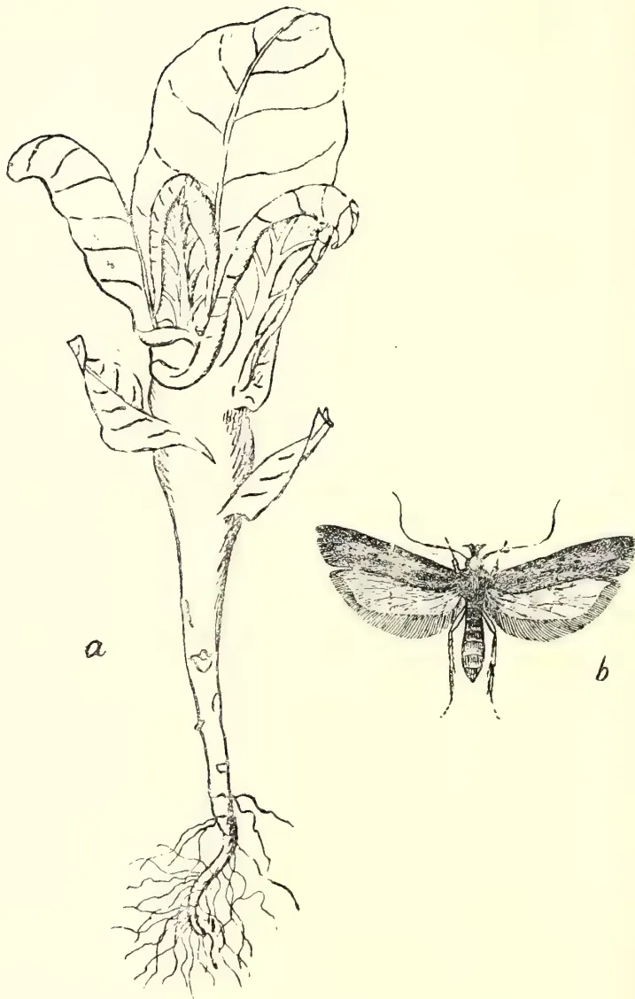
A detailed black and white line drawing. On the left, labeled 'a', is a young tobacco plant. Its stem is noticeably swollen and distorted, with several small, irregular holes or indentations along its length. The leaves are large and broad, with prominent veins, and they appear slightly curled or distorted. The plant has a fibrous root system at the base. To the right, labeled 'b', is a moth, shown from a dorsal view. It has dark, patterned wings with lighter-colored veins and a distinct dark band across the forewings. The moth has long, thin antennae and a segmented abdomen.STEM-BORER OF TOBACCO.
(Gnorimoschema heliopa, Lower.)
By E. ERNEST GREEN, Government Entomologist.
(ILLUSTRATED.)
The "Red Slug" (Heterusia cingala) is a tea pest that is constantly cropping up. I have just received specimens from two estates in the Kandy district, on one of which the caterpillars are apparently occurring in considerable numbers. This is one of those pests that should be taken in time. Before a large area can be involved there must have been several earlier small broods which would have been easily destroyed if observed. But when once the pest has been allowed to establish itself widely, nothing short of pruning and burning will have any effect. The full grown caterpillar spins a compact cocoon in the fold of a leaf. When burning the prunings, all fallen leaves and rubbish from below the bushes should be swept up and destroyed at the same time. This caterpillar is extensively parasitized by a fly (Tachina sp.) that looks something like an exaggerated housefly. It usually happens that these flies eventually get the upper hand, and after reaching a certain crisis the pest is wiped out for the time being. I have often bred as many as five or six large flies from a single caterpillar.
The "Red Borer" (Zeuzera coffea) has been reported from a tea estate in Rangalla. This pest is widely but sparsely distributed, and is seldom responsible for any serious injury.
In my annual report for 1900 (vide Administration Report, R. B. G., 1900, p. H. 8), I recorded the destruction of all the young tobacco plants in our experimental plots, by the caterpillar of a minute moth which bred in the succulent stems of the seedlings. I suggested that it might prove a serious enemy to tobacco cultivation in Ceylon. But no further reports of injury were recorded until last month (January)—after an interval of six years—when examples of this same pest were sent in from the Hanguranketta district. A large number of the diseased plants were received,—all of them characterised by the swollen stem (Fig. a.) which has earned for this disease, in Java (where it also occurs), the expressive name "dikbuikziekte" which means "pot-bellied sickness." The moth—which has been identified as Gnorimoschema heliopa, Lower—apparently lays its eggs in the bud of the seedling. The young larva bores into the stem and feeds in the succulent heart, forming extensive galleries and chambers. The irritation set up by the action of the insects results in the characteristic swollen condition of the stems. The full-grown larva pupates inside the diseased stem and finally emerges as a minute dull brown moth (Fig. b.) with a wing expanse of about half an inch. The only practicable treatment is to pull up and burn every affected plant on the earliest appearance of the disease. By these means the larvæ and pupæ are destroyed before the moth can emerge and infect other plants. I have been informed that the same disease has been observed in the Jaffna district.
There has been some correspondence, in the local press, about the supposed increase of the "Spotted Locust" (Aularchus miliaris) in the Matale district. Upon enquiry, it would appear that the scare is a somewhat exaggerated one; but at the same time it is a good thing that attention has been drawn to a possibly serious pest. As usual, at this time of the year, the "dadap" (Erythrina) trees have been partially defoliated by the insects; but this temporary lessening of the shade is regarded by many cacao planters as distinctly beneficial. The locusts
Plant Sanitation.178do not injure the cacao itself, and, though I should be sorry to assert that they will never attack Para rubber, what little evidence is available goes to show that they do not relish the foliage of this plant. Moreover, the habits of this particular locust render it specially amenable to treatment. I have shown, in my circular on the "Spotted Locust" (R.B.G. Circulars, Series I, No. 9), how the insects congregate in enormous numbers on limited areas where they await their turn to deposit their eggs. All that is required is to mark down these breeding grounds, collect and destroy the breeding locusts, and then fork up the soil with quick-lime. If any real good is to be done, concerted action is necessary, and, in this case, the treatment is so simple and inexpensive that there is no excuse for neglecting it. It will be necessary, on the first appearance of the fully-grown (winged) locusts, to put on a few smart boys to go over the whole estate and locate the breeding places. In districts where there are native holdings, search must be made in them also. As far as my experience goes, the locusts always breed in shady spots, so that patnas and low chena will not require attention. MacDougall's insecticide solution has been found effective as a spray for killing the young locusts; but by treating the pest as suggested above, it ought to be possible to prevent any hordes of these young hoppers.
The Superintendent of the Government Stock Garden sends me specimens of a cricket (Gryllus sp.) which is said to be injuring croquet lawns in Colombo. The Sinhalese name for the insect is said to be 'Polangetia.' The burrows of these crickets are usually very conspicuous by reason of the small heap of sand excavated and left beside the entrance. The insects may be killed by pouring dilute Phenyle or Jeyes' Fluid into the holes. If too numerous to make this plan practicable poisoned baits should be sprinkled over the grass. The mixture recommended for destruction of locusts (vide Tropical Agriculturist, November, 1905, pp. 628-9) should prove effective. Another useful bait is the 'bran-arsenic-mash' which is compounded of 1 lb. arsenic or Paris Green with 6 to 10 lb. of bran and enough water to thoroughly moisten the mass. Sugar may be added pound for pound with the arsenic, and is said to add to the attractiveness of the bait. It will be advisable to keep fowls away from the lawns while the poison is in use.
Specimens of the large Cockchafer (Lepidiota pinguis) have been received from the Gampola district, where they were reported to be defoliating "Dadap" (Erythrina) seedlings in a nursery. The beetles being large and conspicuous, can be readily collected and destroyed. If necessary, the young plants could be protected by spraying with Paris Green. This insect was described and figured in the Tropical Agriculturist for October, 1905, p. 520.
The "Lantana Bug" (Orthezia insignis) is a pest that is always with us and one that is difficult or impossible to eradicate. Accidentally introduced in the year 1893, it has, in the ensuing twelve years, followed its principle food plant (the Lantana) all over the Island. If only confined to that weed, its presence might be ignored; but it has unfortunately cultivated a taste for various garden shrubs and plants—such as the Duranta (so largely utilized for hedging), Coleus, Thunbergia, Ipomœa and numerous other favourite garden flowers—which has rendered it most obnoxious to horticulturists. Happily, this pest has as yet shown no marked liking for any of our staple products, though there have been a few instances of partial infestation of tea. As an introduced insect, it arrived without its natural enemies, and, in spite of its lengthy sojourn with us, appears to be still immune. Spraying with MacDougall's Insecticide will kill the insects, but fresh infestation (probably from a few escapees) soon occurs. In the case of annuals it is best to pull up and burn the infested plants. Shrubs should be heavily pruned, the prunings burned, and the remnant sprayed and resprayed at the earliest reappearance of the pest. This same treatment
179Plant Sanitation.is applicable to hedges of Duranta when attacked by the bug. The Lantana bug is one of the most active of its family. It has proportionately larger legs than any other Coccid with which I am acquainted. It is also extremely prolific, a constant stream of larvæ emerging from the long tubular ovisac which gives the female insect such a peculiar appearance.
Further complaints of depredations by hornets (Vespa cincta) have been received from bee-cultivators in the Kurunegala district. My correspondent writes that the hornets "hover over the entrance to the hive and carry away the bees as they come out. They have already devastated twenty-two hives. I am killing them by hundreds by using pieces of meat soaked in arsenic." The nests of the hornets should be searched for and burnt. This is very easily done with a torch made of straw or rags soaked in kerosene on a long pole. When held below the nest the hornets fly into the flame and never think of attacking the person at the other end. The nest also catches fire and smoulders slowly away. In addition to this treatment, a small boy with a butterfly net might be stationed at the hives, to catch and kill any hornets that may be hovering about.
Among the plants which have shown slight injury from liming under certain conditions and which may under other circumstances be helped by it are the following:—Cotton, tomato, cowpea, zinnia, phlox (Drummondi), Concord grape, peach, apple, and pear. The plants that have quite persistently shown marked injury from liming are: Lupine, common sorrel, radish, velvet bean, flax, castor bean, blackberry, black-cap raspberry, cranberry, Norway spruce, and American white birch. Extensive European tests have also shown that lupine is injured by liming. Lime, though directly injurious to common sheep sorrel, aids in ridding land of it more by virtue of encouraging other plants than on account of the direct injury which it causes. It is claimed that the chestnut, azalea, and rhododendron are injured by lime, though they have not yet been tested at the Rhode Island Station.
The Rhode Island soil upon which the tests referred to were made is what has been termed a "silt loam," in which the water table is usually from 12 to 15 feet below the surface.
POTATO SCAB.—It has been shown that carbonate of lime and such other compounds of lime as are changed into the carbonate by decomposition within the soil all tend to favor the production of potato scab, provided the germs of the disease are already in the soil or are introduced into it on the seed tubers. This seems to be due to the fact that the lime makes the soil alkaline, or to some influence which the combined carbonic acid of the carbonate of lime exerts upon the development of the fungus.
In view of this unfavorable action of lime caution should be observed in liming potato fields in the manner suggested on a previous page.
CLUB ROOT.—Many writers seem to agree that liming is capable of lessening materially the injury to turnips, cabbages, etc., caused by the disease known as "finger-and-toe" and "club root." English writers assert that by resort to liming excellent crops of turnips have been produced where without it the crop was a failure, owing to the attacks of the disease.
OTHER DISEASES.—The effect of different compounds of lime has been tested, with not entirely conclusive results, on various other diseases, including cranberry and sweet potato diseases, and a root disease of alfalfa (Rhizoctonia medicaginis). Slaked lime was found to be effective in reducing soil rot of sweet potatoes, and quicklime in checking or preventing the root disease of alfalfa.
The frequency with which liming should be practised depends upon several conditions; for example, upon the character of the soil, the quantity of lime employed in each application, the number of years involved in a rotation, the plants to be grown and their order of succession. Formerly, in England, large quantities of lime were applied at somewhat rare intervals, but there and elsewhere at the present time the preferable practice seems to be to use small amounts and apply it more frequently. As a general rule it may be stated that from half a ton
181Scientific Agriculture.to one and a half tons of lime per acre applied every five to six years is sufficient. There may exist extreme soils requiring either more or less than these amounts. If soils which are quite acid and have not previously been limed are to be seeded, with the intention of allowing them to remain in grass for several years, as much as two or three tons of lime per acre may sometimes be advisable. Only very extreme cases would call for larger applications. If in a rotation covering a considerable number of years two crops especially benefited by lime are introduced at about equidistant intervals of time, it may be advisable to lime twice in the course of the rotation, each time just prior to their introduction. In renovating acid pastures and meadows it is usually preferable to apply a fair amount of lime upon the furrows when they are first plowed, so that this may be thoroughly mixed with the soil by subsequent plowing and harrowing, and just prior to seeding to grass make another generous application. By such treatment, provided the other essential fertilizing ingredients are employed, a good stand of clover, Kentucky blue-grass, timothy, and other grasses may be obtained where in many instances they were formerly partial or total failures and where only redtop, Rhode Island bent, and grasses having similar soil adaptability could be grown. Where land is kept in grass for a number of consecutive years, top-dressing with lime or, preferably, wood ashes may possibly be advisable in some instances, particularly if ordinary commercial fertilizers are employed in lieu of stable manure. If home-mixed dressings containing basic slag meal or liberal amounts of bone are used with nitrate of soda or nitrate of potash, the need of liming is much less than under many other circumstances.
Lime in the form of carbonate of lime, as in marl, wood ashes, etc., can usually be applied with safety in the spring or at any other season of the year, but autumn is always the safest time to apply caustic or slaked lime. The latter form upon further exposure to the air changes gradually into the mild carbonate of lime, but usually a considerable quantity has not reached that stage when applied, and it may in consequence act too energetically. This is particularly true if the soil is light and sandy, and if plants, which are but little helped by lime, are employed. On very acid soils, particularly such as contain much humus, there is little or no danger from applying reasonable quantities of lime in the spring. If caustic or slaked lime is applied in excessive amounts it may not only injure plants directly, but also indirectly by rendering the texture of the soil unfavourable; it may also make the soil temporarily so alkaline as to interfere with the activity of the organisms which transform ammonia into readily assimilable nitrates. Injury thus arising cannot ordinarily be of long duration, for the reason that the carbonic acid of the soil changes the caustic lime rapidly into carbonate of lime, and thus the alkalinity of the soil is soon reduced.
Some writers recommend that upon old mossy meadows and pastures lime should be applied to the surface before plowing, in order that it may help to quickly decompose the organic matter. The chief objection to this procedure is that the lime does not become well incorporated with the soil, and since some of it is turned to the bottom of the furrow and its tendency at all times is to work downward, it may be quickly carried not only away from the surface soil, but also from the reach of plants. The practise of liming such soils immediately after plowing and then thoroughly harrowing has been attended by excellent results. This is particularly the case provided a second application is made in a similar manner just previous to re-seeding. Under such a plan some lime becomes intimately mixed with the entire mass of soil by the operations of tillage, and finally a considerable amount is left near the surface, thus accomplishing two important objects.
Scientific Agriculture.182In some sections where marl is used extensively it is spread upon the surface and plowed under, turning a furrow about 2 inches deep. The more common method where marling is practised is to plow the land and then cart on the marl, dumping it in heaps at such intervals that it can be spread conveniently with a shovel. If the marl is not sufficiently fine, but is of such a nature that it crumbles upon exposure to the air, the heaps may be allowed to remain for some time before spreading, and still further time may be allowed to elapse before the operation of harrowing is begun. Sometimes a "clod crusher" or "bush harrow" may be employed to advantage to break up the lumps before harrowing. A most important point to be observed in applying lime of all kinds is to mix it with the soil as thoroughly as possible, the finer the particles the better being the result.
PULVERIZED BURNED LIME or lime which is already slaked may be spread upon the soil directly from wagons or carts, or dumped in heaps and then spread with a shovel, though the most satisfactory plan in such cases is to employ an ordinary grain drill with fertilizer attachment or a lime spreader. In the use of such spreaders it is generally advisable to attach some burlap or old bagging to the sides and rear of the machine in such a way that it will trail upon the ground. If the machine is so equipped and the burlap is weighted with a piece of wood at the rear, much of the unpleasantness connected with spreading lime is avoided. For those familiar with the nature of lime and its use it is unnecessary to state that it is well, if possible, to apply it on a quiet day. The eyes may be protected by glasses and the nostrils and mouth by devices used by those who run thrashing machines.
The only other form of lime in connection with the application of which any particular difficulty might be encountered is quick or burned lime in lump form. Where only small quantities of such lime are to be used it is frequently immersed for a moment in water, in a basket, and emptied into a wagon body. The following day it will be slaked sufficiently for use. Where larger quantities are used, and a lime spreader is at hand, the lime is sometimes water slaked in large piles on the border of the field and then distributed. To accomplish the water slaking in a satisfactory manner, from 2 to pails of water should be sprinkled over each cask of lime as it is emptied upon the pile, and finally the whole mass should be very thoroughly covered with soil. In a few days practically all of the lime will be in a fine condition suitable for spreading. In loading it into the spreader care should be taken to first remove the soil, so as to avoid its clogging the machine. If the lime spreader itself is not fitted with a screen, the lime should first be carefully screened for the purpose of removing any hard lumps which may remain, due to imperfect slaking or burning. These lumps may be further slaked by themselves.
A practise preferred by many, and probably the most feasible one where a lime spreader is not to be had, is to place the burnt lime in piles of from 35 to 40 pounds each at suitable intervals (heaps of this size 20 feet apart in each direction furnish about 2 tons per acre), and cover the piles with moist earth. In a few days the lime is so thoroughly slaked that it can be spread directly with a shovel. Provided the soil is dry, from one-fourth to half a pail of water (or in extreme cases even more) should be sprinkled over each pile immediately before it is covered with earth. In this case, as in all others where slaked lime is employed, it is important that it be harrowed into the soil immediately after spreading. In no case should it be exposed long to the air before harrowing, as it is liable to cake and form a sort of mortar to such an extent that it is impossible to mix it as thoroughly with the soil as before.
CAUSTIC ("QUICK" OR "BURNT") LIME obtained by burning oyster shells, limestone, etc., is the most economical form in which lime can be bought, in all
183Scientific Agriculture.cases where the distance of railway transportation or of cartage is great. One hundred pounds of such lime usually contain about 95 pounds of actual lime. Sometimes burned lime contains considerable magnesia, a point which has already been considered.
According to Roberts, "when first moved from the kiln, lime weighs about 75 pounds to the heaped bushel; that from shells weighs less than that from limestone. A ton of limestone converted into caustic lime () weighs between 1,100 and 1,200 pounds; hence it is economy to burn the lime near where the stones are quarried, since it weighs but three-fifths as much as limestone. In slaking, lime takes up considerable quantities of water; hence a ton of slaked or hydrated lime contains really but three-fourths as much lime as a ton unslaked. A heaped bushel of unslaked lime makes bushels of slaked lime;* therefore it should be transported before it is slaked. When caustic lime is exposed to the air for some time it absorbs both moisture and carbon dioxide from the atmosphere and becomes air-slaked lime. By still longer exposure it may all change into carbonate of lime, the same form as before burning. It is, however, much finer than ground limestone." Lime made from oyster shells and magnesian limestone weighs less per bushel than that made from the purer kinds of limestone.
GYPSUM, OR LAND PLASTER, is a combination of lime with sulphuric acid (oil of vitriol) and water. Upon heating, gypsum loses its water and is changed into plaster of Paris or calcined plaster, which is used in making casts and for many other industrial purposes.
In case a soil is seriously deficient in lime, gypsum may act as a direct manure; usually, however, its beneficial effect upon soils is attributed to its indirect action in liberating potash, and possibly other substances, which were locked up in the soil in such combinations that plants could not make use of them. Gypsum may be helpful to a limited extent on clayey soils by flocculating the fine particles, on account of which the soil is less likely to become "water-logged" and to cake, and hence interfere with the operations of tillage. In the last-mentioned respect water-slaked lime or the carbonate is said to be much more efficacious than gypsum, though as a liberator of potash gypsum is claimed to lead.
It is stated on good authority that, in the presence of decaying organic matter, gypsum may be changed into carbonate of lime. While this may be true under certain circumstances, in experiments at the Rhode Island Station on a soil exceptionally rich in humus and containing a moderate amount of plant residues which were undergoing decomposition, such a change did not result, if at all, to a practical extent. For this reason and on account of the fact that gypsum contains only about one-third as much lime as burned lime, and usually costs as much or more per ton, it cannot take the place of the latter for most of the purposes for which lime is applied to land.
For use in renovating "black alkali" (sodium carbonate) soils in the arid regions, gypsum, as already explained, performs a valuable function which can not be filled by any of the other compounds of lime.
CHALK is a naturally occurring form of carbonate of lime which is exceptionally pure. It is quite soft, and is frequently referred to as marl.
MARL is a name which is applied to earthy deposits usually more or less friable in their character and containing carbonate of lime in quantities ranging usually from 5 to 95 pounds per 100 pounds of the material. It must be evident, therefore, that if one intends to make use of a given deposit of marl for the lime contained in it, he should first have a sample of it analyzed.† If the material will
* A bushel of air-slaked lime is usually considered to weigh 50 pounds.
† The Experiment Stations in the different States would probably undertake to do this free of cost.
Scientific Agriculture.184not effervesce upon the addition of either hot or cold vinegar, it probably contains but little carbonate of lime and may be of doubtful value. This test, however, should precede, and not be substituted for, a careful chemical analysis.
On account of the varying chemical composition of marl, it must be obvious also that no definite rules as to the amounts which should be used in given cases can be stated. On a soil where one has reason to think a ton of burnt lime should be applied per acre, about 4 tons of a marl containing from 20 to 25 per cent of actual lime (calcium oxid) should be employed. If the marl is twice as rich the amount applied should be but 2 tons, etc.
Marls vary somewhat in their physical characteristics, depending upon the amounts and character of the earthy material associated with the carbonate of lime. If the marl is associated with clay it is exceptionally well adapted for use on sandy soils, since the clay and carbonate of lime both tend to make such soils more compact and rententive of manures and moisture. A marl containing sand would, on the other hand, be better suited to clayey soils. According to Heinrich, sand marl may be applied to the soil immediately, but clay marls sometimes contain injurious compounds of iron and sulphur, in which case it is not safe to use them until they have been composted for two or three years, or long enough to effect the decomposition of the iron compound.
Some so-called marls contain considerable quantities of phosphoric acid and potash in such forms as to greatly enhance their fertilizing value.
PHOSPHATE OF LIME is found as bone, guano, apatite, and in the form of the well-known South Carolina, Florida, and Tennessee phosphate rock. The better classes of phosphate rock contain but small quantities of carbonate of lime, while others contain large amounts. The latter are unfitted on this account for superphosphate manufacture. Both classes of phosphate when ground finely have been found to be more or less effective upon acid soils, particular attention having been devoted to their employment on acid muck or peat soils. These phosphates not only seem to materially reduce the acid character of such soils, but after having been in contact with them for some time the assimilability of the phosphoric acid seems to materially increase. The lower-grade phosphates containing considerable quantities of carbonate of lime are particularly effective upon acid soils.
In employing undissolved phosphate rock upon acid soils, certain authorities recommend following the application of the phosphate at an interval of some months, or, if possible, a year, with a dressing of lime. This seems to be a reasonable recommendation provided the plants to be grown are not injured by soil acidity.
SUPERPHOSPHATES, which are prepared by treating phosphate rock, bone, and boneblack with sulphuric acid, generally have about one-third of their lime combined with phosphoric acid and two-thirds with sulphuric acid. The lime combined with sulphuric acid is nothing more nor less than gypsum (land plaster). For this and other reasons superphosphates may not work as well on acid muck or peat soils as ordinary undissolved phosphate rock or ground bone, and if, as is sometimes the case, a slight excess of sulphuric acid is present they may even have a temporary injurious action upon upland soils which are deficient in carbonate of lime.
BASIC SLAG (THOMAS SLAG OR SLAG MEAL) is a waste product obtained in the manufacture of steel. It contains relatively more lime than the ordinary high-grade phosphates, and the phosphoric acid in most cases (a few works have put an inferior product on the European market) is possessed of a high degree of assimilability. This product is as yet too little known in this country, and if sold here as cheaply as it might be it would doubtless prove of great value to our
185Scientific Agriculture.agriculture. It is an effective source of phosphoric acid for use upon all kinds of soils, and on account of its high percentage of lime it is of special promise in the reclamation not only of acid upland soils, particularly if rich in organic matter, but also of marsh or muck soils.
UNLEACHED WOOD ASHES contain about 35 pounds of actual lime (calcium oxid) in every hundred, 3 tons being, therefore, a little more than equivalent, in lime, to 1 ton of burned lime. They also contain from 5 to 7 per cent of potash, 1 to 2 per cent. of phosphoric acid, and from 3 to 5 per cent. of magnesia. This latter ingredient, though usually ignored, is of approximately as much value as lime on acid soil. Soils are sometimes deficient in magnesia, and when this is the case the magnesia applied in ashes has a direct manurial action.
LEACHED WOOD ASHES contain usually less than 1 per cent. of potash and rather more lime than unleached ashes. Frequently they are sold in a wet condition, which of course lessens the quantity of actual lime present in a ton.
LIMEKILN ASHES often contain approximately 40 per cent of lime, and when wood is employed in the burning instead of coal they sometimes contain 2 per cent or more of potash.
FINELY GROUND LIMESTONE AND OYSTER SHELLS can be used to advantage, if obtainable, especially upon sandy soils. They are not as efficacious as after burning upon heavy clay soils, and such soils, as are very acid and contain large amounts of sour humus. This is for the reason that they are not so active chemically, and they cannot be reduced to so fine a state before burning as afterwards.
DYE-HOUSE LIME usually contains only a small percentage of lime, and if moist cannot be transported long distances at a profit. A rule that applies well to this and all other waste products of a similar character is not to use them until they have been subjected to chemical analysis, for by changes in the processes of manufacture their value may be materially influenced and substances injurious to vegetation may have found access to them.
GAS-HOUSE LIME.—It is never safe to use this substance until it has first been allowed to weather for several months. On acid soils such lime is less effective than burned lime, wood ashes, and limekiln ashes. Owing to recent changes in the process of gas manufacture, lime is used less than formerly.
WASTE LIME FROM BEET-SUGAR FACTORIES may be effectively applied to soils after it has been allowed to dry. It contains some potash, phosphoric acid, and nitrogen, which still further increase its value. If this material is applied to the soil in a wet condition it tends to cake in the same manner as water-slaked lime does when not immediately worked into the soil. It is sometimes put in piles by itself and worked over every few weeks. It may also be dumped in the field during the winter in small piles, where it is allowed to remain until spring, when, after drying sufficiently, it may be spread and incorporated with the soil. According to Heinrich, this material contains: Water 35 to 60 per cent; nitrogen, 0.1 to 0.4; potash, 0.1 to 0.3; phosphoric acid, 0.5 to 1.5, and lime, 15 to 30 per cent. It is evident that this waste material in its moist condition could not be transported to any considerable distance at a profit, and in this country, where labor is such an important item, it would not pay to shovel it over much in order to get it into condition to use.
WASTE LIME FROM SODA-ASH WORKS usually contains considerable water, and can for this reason only be employed to advantage where the cost of transportation is small. If some economical means of drying it could be devised, the range of distance to which it could be profitably shipped would be much increased.
Scientific Agriculture.186From the preceding statements regarding the different kinds of lime used for agricultural purposes, it is evident that it is impossible to state definitely for all locations and conditions which kind is most economical to employ. This is still more evident when one considers that the character of the soil and of the crop to be grown, as well as the market prices, must be taken into account. Caustic or quick lime is the most concentrated, and consequently the most economical to handle. Its caustic properties, however, render it more vigorous in its action than the milder sulphate (gypsum) or carbonates (limestone, chalk, wood ashes, marl, etc.), and thus better suited for application to soils which are rich in organic matter than to light soils deficient in this substance. It is also specially suited to correcting acidity in sour soils. There may be special reasons in particular cases why some of the other compounds of lime are preferable to quicklime. Gypsum has been used in agriculture to a considerable extent with very satisfactory results. On account of its peculiar composition it has been found especially valuable for neutralizing sodium carbonate (black alkali) in alkali soils. Wood ashes are used extensively in some localities, in many cases as much for the lime as for the potash which they contain. It is very doubtful, however, whether it would not be more economical at the present prices of wood ashes and caustic lime to employ the latter in many cases, supplementing the lime with potash salts and other fertilizing materials if the latter are required by the soil.* The item of transportation is also decidedly in favor of the use of lime and agricultural chemicals as substitutes for ashes.
The use of lime as a soil improver is very ancient, and its value for this purpose is generally recognized. Its action as a fertilizer is both direct and indirect.
There are many soils in which lime is deficient, notably such as are derived from granite, mica-schist, and certain sandstones, slates, and shales. On such soils lime is often of direct value in supplying a necessary element of plant food.
The indirect value of lime is perhaps more important than its direct action, because probably the majority of cultivated soils contain sufficient lime to meet the direct demands of plants for food. Lime is of indirect value in unlocking the unavailable potash, phosphoric acid, and nitrogen in the soil.
Lime exerts a decided influence on the mechanical condition of soils, rendering heavy compact soils looser in texture and tending to bind particles of loose leachy soils.
Lime is also beneficial in furnishing conditions in the soil favorable to the activity of the micro-organisms which convert the nitrogen of organic matter into nitrates which are readily assimilated by plants, which decompose organic matter, and which assist certain leguminous plants to assimilate the free nitrogen of the air.
Lime is also beneficial in furnishing conditions in the soil favourable to the activity of the micro-organisms which convert the nitrogen of organic matter into nitrates which are readily assimilated by plants, which decompose organic matter, and which assist certain leguminous plants to assimilate the free nitrogen of the air.
One form of lime, gypsum, has been shown to be a most effective corrective of black alkali, found in some of the soils of the arid portions of the United States.
The continued use of lime unaccompanied by other fertilizers may prove injurious, especially on poor soils, since it converts the insoluble nitrogen, potash, and phosphoric-acid compounds of the soil into such as can be rapidly taken up by plants or washed out in the drainage, thus hastening the exhaustion of the supply of these substances in the soil. As the German adage states, "The use of lime without manure makes both farm and farmer poor." If the soil is not abundantly
* U.S. Dept. Agr., Farmers' Bul, 65, p. 24.
187Scientific Agriculture.supplied with organic matter, its retentive power for water and fertilizers may be seriously reduced on account of the destruction of the organic matter by the action of too much lime. Soils may sometimes be injured by applications of impure forms of lime, which harden like cement in the soil, or of those which contain an excessive amount of magnesia.
It has been shown that even upon many upland and naturally well-drained soils apparently in good condition otherwise, the sourness (acidity) is so great that most varieties of plants will not thrive. Lime is the most economical and effective substance thus far used for correcting this condition. According to experiments made by the Rhode Island Agricultural Experiment Station on acid soils in that State, the plants tested may be classified with regard to their behaviour toward lime as follows: Plants benefited by liming—spinach, lettuce (all kinds), beets (all kinds), okra (gumbo), salsify (vegetable oyster), celery, onion, parsnip, cauliflower, cucumber, eggplant, cantaloupe, asparagus, kohlrabi, cabbage, dandelion, Swedish turnip, pepper, peanut, English or flat turnip, upland cress (pepper grass), martynia rhubarb, common pea, pumpkin, summer squash (scalloped), golden wax bean, red Valentine bean, horticultural pole bean, bush Lima bean, lentil, Hubbard squash, saltbush, hemp, tobacco, sorghum, alfalfa, clover (red, white, crimson, and alsike), barley, emmer, wheat, oats, timothy, Kentucky bluegrass, Canada pea, Cuthbert raspberry, gooseberry, currant (White Dutch), orange, quince, cherry, Burbank Japan plum, American linden, American elm, sweet alyssum, mignonette, nasturtium, balsam, pansy, poppy, and sweet pea; plants but little benefited by liming—Indian corn, spurry,* rye, carrot, chicory, Rhode Island bent, and redtop; plants slightly injured by liming—cotton, tomato, cowpea, zinnia, phlox (Drummondi), Concord grape, peach, apple, and pear; plants distinctly injured by liming—lupine, common sorrel (Rumex acetosella), radish, velvet bean, castor bean, flax, blackberry, black-cap raspberry, cranberry, Norway spruce, and American white birch. Other plants said to be injured are the chestnut, azalea, and rhododendron.
Many kinds of lime are available for agricultural use, among which are caustic or burnt lime, or quicklime, which should contain at least 90 per cent of actual lime () and is the most concentrated form of this material; gypsum, or land plaster, in which the lime is in the form of the mild sulphate; ground limestone and chalk, in which the lime is in the form of the mild carbonate; different kinds of marl, containing varying proportions of sand and clay and from 5 to 95 per cent of carbonate of lime; wood ashes, which contain from 30 to 35 per cent of lime in the form of carbonate; limekiln ashes, containing about 40 per cent of lime; and waste lime from gas houses, sugar-beet factories, etc., the composition of which varies with the process of manufacture.
It is impossible to state definitely for all locations and conditions what kind of lime is cheapest to use. Caustic or quick lime is the most concentrated and consequently the most economical to handle. On account of its caustic properties it is more vigorous in its action than the milder sulphate (gypsum) or carbonate (limestone, chalk, wood ashes, marl, etc.). There may be special reasons, however, why some of the latter may be preferable. For instance, gypsum, on account of its peculiar composition, has been found to be a specially valuable corrective of black alkali.
The frequency with which liming should be practised depends, among other things, upon the character of the soil and the rate of application, the number of years involved in the rotation practised, the plants grown and their order of succession. As a general rule, it may be stated that from to tons of lime per acre every five or six years is sufficient. Applications of 2 or 3 tons may, however, be
* It has been reported in England that spurry is injured by liming, but such results have not been obtained in Rhode Island.
25 Scientific Agriculture.188advisable in cases of very acid soils which are to be seeded down and are to remain in grass for several years. The practice of applying small amounts of lime at somewhat frequent intervals is being generally accepted as preferable to the use of large amounts at rare intervals.
Lime combined as carbonate, as in marl, wood ashes, etc., can usually be applied with safety in the spring or at any other season of the year, but autumn is always the safest time to apply caustic or slaked lime. It is generally considered best to apply the lime to the soil immediately after plowing and harrow it in thoroughly. Lime which is already slaked may be spread upon the soil directly from wagons or carts, or dumped into heaps and then spread with a shovel, although the most satisfactory plan in such cases is to use a lime spreader or ordinary grain drill with a fertilizer attachment. Where a lime spreader or similar implement is not available the burnt lime may be placed on the soil in piles of from 40 to 50 pounds each, covered with moist earth, and allowed to slake before being spread with a shovel. Marls frequently contain injurious compounds and should therefore be allowed to weather for some time in the field before being incorporated with the soil. The same is true of gas-house lime, which is impregnated with sulphur compounds which are injurious to plants.
In conclusion it may be said, ascertain first whether lime is needed. If it is, apply it judiciously, and never depend upon lime alone to maintain the fertility of the soil, for all of the ingredients which plants need must be present in the soil to insure the profitable production of crops.
BY H. F. MACMILLAN.
(Illustrated by the "Candle Tree:" Parmentiera cereifera, Seem.)
Rainfall in inches:—Peradeniya 4.49; Colombo 4.75; Ratnapura 8.96; Galle 4.27; Trincomalie 1.60; Jaffna .95.
At no other period of the year are gardens in the lowcountry subject to such apparent drawbacks as during the month of March. The oppressive weather prevalent then is not only unpleasant to ourselves, but also unfavourable to such horticultural pursuits as afford us most pleasure or profit. At the time of writing, middle of February, signs of the dry weather are already evident. The lawns are turning brown, and general foliage plants assume a parched and dusty appearance. With wonderful regularity various trees now assume distinct but unaccountably varied seasonal characteristics; some completely shed their leaves, others suddenly change their old for new foliage, whilst others drop their leaves, and at once burst forth into a profusion of blossom. The tall and stately Red Cotton trees (Bombax malabaricum), bare of leaves but covered with scarlet flowers, now become conspicuous objects in the landscape; the shuttlecock-like flowers, whose fleshy calyces are eaten by many people in India and Burma, form when they drop a beautiful red carpet under the trees. Ceara-rubber trees (Manihot Glaziovii) usually shed their leaves and remain bare for about three weeks, whilst many of the older Hevea (Para-rubber) trees also become almost defoliated before developing flowers.
FRUITS IN SEASON.—The season for most fruits is not yet commenced, but the following may be obtained in limited quantities: Pineapples, Pomegranates, Bullock-hearts, Bael-fruit and Wood-apple. Of less well-known fruits the West Indian "Star-apple" (Chrysophyllum Cainito), the South American "Mammee-apple" (Mammea americana) and the Coco-plum (Chrysobalanus Icaco) ripen their crops at this period.
FLOWERS IN SEASON.—Some of the most beautiful of flowering trees confine their annual display of blossom to February and March. Conspicuous examples of these are Tabebuia spectabilis, a small shrubby tree of tropical America with masses of bright yellow funnel-shaped flowers; Cassia grandis or "Horse Cassia," also of South America, with a profusion of delicate pink blossoms; Saracca declinata, a Malayan tree with most handsome, large heads of orange-yellow flowers, produced on the stem and older branches. The Jacaranda mimosaeifolia, a small tree with blue to violet flowers, Amherstia nobilis of Malaya (considered the most beautiful of flowering trees), and the gorgeous "Flamboyant" (Poinciana regia) are now in their full glory. Some of the Sterculia family also afford a striking floral display at this season, notably Sterculia colorata, an indigenous tree from the drier parts of Ceylon, said to be sacred to the Veddahs, and Sterculia acerifolia, known as the Australian "Flame Tree." Myriocarpa longipes is a shrubby tree from South America with very large handsome hispid leaves, which is now a striking object on account of its peculiar inflorescence: this consists of numerous delicate thread-like strands, to feet long, which hang gracefully from the branches, each strand bearing countless minute flowers. Amongst ornamental trees some are undoubtedly more attractive in fruit than in flower. Few objects for instance in the vegetable kingdom are more striking when in fruit than the curious "Candle Tree" (Parmentiera cereifera) introduced from tropical South America. The fruits resemble wax-candles so closely that the uninitiated may at first readily believe that the tree exists for the sole purpose
Horticulture.190of producing these. According to The Treasury of Botany, "a person entering a forest of these trees almost fancies himself in a Chandler's shop." The fruits, which are very juicy but almost tasteless, are said to be eaten in their native country. The "Necklace Tree" is a name given to Ormosia coccinia, a tall leguminous tree which bears at this season fairly large and very pretty seeds which, when ripe and dry, are hard and of a bright red colour, blotched with black or brown, with a shiny surface. These are always appreciated as curios, and the natives make fancy buttons, necklaces and ornaments of them.
GENERAL.—Watering, mulching and judicious shading should be the order of the day. Artificial watering, which is now indispensable, will quickly crust the earth in beds and borders unless the soil is covered with mulch or stirred frequently. Always remember that keeping the surface soil loose is the surest means of lessening the evaporation. Needless to say watering as a rule should be done late in the afternoon, never when the sun is shining on the plants. Any renovation of plant-houses, shelves, &c., or repairs to paths and drives should now be undertaken.
BY J. K. NOCK.
The routine work is much the same as that given for last month. Some of the annuals and other flowering plants will be ripening their seeds which should be collected and sown from next month onwards, for the upkeep and partial replanting of the beds and borders, which will become necessary after June if a good appearance is required during August to October.
April (next month) being about the most suitable month for sowing grass seed to form a lawn, those intending to do this should at once see to the final preparation of the ground. Taking for granted that the drainage has been made perfect—the most important matter, for a lawn cannot be made on ground where water does not run off freely—the soil levelled, and that it is in a good fertile condition, or has been made so by the addition of well rotted manure (fresh manure should on no account be used, for it tends to make the soil hollow) or one of the mixtures of artificial manures specially made up and prepared for the purpose by such a firm as Messrs. Freudenberg & Co., Colombo, the next thing to be considered is weeds. The only satisfactory way to rid the soil of weed seeds is to burn it. If this has been done the few that will invariably come up must be constantly pulled up by the roots until it is safe to assume the land is quite clean. It is useless to sow grass seed where weeds are likely to come up in numbers, for they rob the soil of its moisture and fertility and choke out the grasses which, it must be remembered, are to be a fixed crop and obtain their nourishment from a few inches near the surface only. Delay the sowing until the ground is clean, for it will pay in the end, though it may be annoying to see the season passing away. The soil must be thoroughly firm and the surface friable, as if covered by clods the seeds will not germinate; frequently using the rake to get out all stones from the top three or four inches, and after each raking put on the roller. There should be two sowings to ensure even distribution of the seed, making the second one cross the first at right angles. It must be done on a quiet day, keeping the hand low, as the seed is small and easily blown away in light wind. Rake the whole plot to lightly cover with soil as many seeds as possible, and then roll once each way. The quantity should not be stinted—three to four bushels are required for an acre, never less, as the crowding of the plants gives a desirable finer herbage. Keep the land
191Horticulture.firm by frequent use of the roller. The month chosen should be showery, and artificial watering therefore unnecessary. Early cutting greatly benefits the grasses as it encourages the roots to tiller out. For the first few times a scythe should be used and then the mowing machine. Roll and mow, roll and mow, and a fine sward will be obtained. Constant mowing checks weeds, but any that may spring up should be rooted up.
VEGETABLE GARDEN.—Cabbage, Brassica oleracea, L. native of Europe and belonging to the natural order Crucifereæ, is the commonest English vegetable cultivated in the hills, and may be grown all the year round, but unfortunately results are now disheartening in the majority of the gardens on account of the prevalence of "Club Root," which often destroys more than fifty per cent. of the crop, and I would draw attention to the notes by the Government Mycologist on this subject which appeared in the January number of this Magazine. In some gardens this plague is happily unknown, and where this is the case every attempt should be made to keep it away by good cultivation of the soil, i.e., deep digging, liberal applications of manure and lime, changing the crops to different spots as much as possible, and by avoiding the fatal step of getting young plants from a garden where it is known to exist. If it makes its appearance the best plan is to pull up and burn the plants, lime the land, and grow no more cabbages, turnips, &c., on the infected spot for several years. The use of a crucifer as a "trap crop" is given in the notes above referred to by the Government Mycologist. For general purposes ordinary soil with manure well worked in will grow good cabbages, but it can scarcely be made too rich for any of the cabbageworts. Sow the seeds monthly in a prepared bed and prick out as soon as possible, and when they begin to overcrowd each other lift carefully with a ball of earth attached to the roots and plant out in their intended situations. The distances at which they should be planted depends on the kind: for the smaller sorts one foot apart in rows fifteen inches apart will suffice, and for the larger two feet each way. Hoe the ground frequently. Liquid manure will greatly help the plants. The following good kinds are taken from Messrs. Sutton & Sons' catalogue:—"All Heart," "Imperial," "Summer Drumhead," and "Flower of Spring."
BY G. W. STURGESS, M.R.C.V.S.
Apoplexy.—This disease sometimes occurs amongst very fat, overfed poultry, especially where exercise is limited.
Symptoms.—The principal symptoms are sudden giddiness—the bird turning round and round—or, it may be such a severe attack that the bird falls over and loses consciousness at once, and may die before any treatment can be adopted. Hens may be found dead on the nest, the attack probably being excited by the exertion of laying. It may also come on after being chased by a dog, or after a fight. The disease may be suspected when a bird in very good condition suddenly dies without apparent reason.
Treatment.—If there is a chance of treatment cold water or ice should be applied to the head and some blood abstracted by cutting the large vein under the wing, or, cutting a bit of the comb off. If consciousness returns a dose of physic should be given (Epsom salts) and the bird placed in a dark box and fasted for a day, giving only water to drink. The diet should then be light and laxative for some days. Attention should be given to the other poultry, the diet reduced and Epsom salts placed in the drinking water for a day or two and exercise and green food given.
Baldness.—This condition may be due to bad hygienic conditions or to parasites or feather-eating by one or more of the bird's companions. If due to unhealthy surroundings—light, air, good food and exercise are indicated. If insects, a mixture of kerosine oil and sweet oil or vaseline may be applied. In the case of feather-eating the culprit must be watched for and removed from the pen or killed.
Bronchitis, and Catarrh or Cold.—Causes.—Cold, change of weather or climate. The disease is common amongst newly-imported birds.
Symptoms.—Sneezing or cough, discharge of matter from the nostrils, more or less difficult breathing with a gurgling sound in the throat, caused by excess of mucus.
Treatment.—The affected birds must be placed in a warm box or in a room of even temperature and protected from draughts. Warm soft food should be given, such as the ordinary mash with boiled cabbage, bread damped with milk or soup. Grit should be provided and a little coarse oatmeal may be thrown down for the patients to pick up if they desire. A few drops of turpentine or eucalyptus oil, or both, may be placed on a piece of flannel in a cup, and boiling water poured on and the birds made to inhale the steam twice a day or a steam kettle used. The following medicines may be given:—
| 1. | Tincture of Belladonna ... .. | 1 drop |
| Eucalyptus Oil... .. | 1 " | |
| Camphor ... .. | 1 grain | |
| Salad Oil ... .. | ½ teaspoonful |
Mixed—given once or twice a day, or
2. Paregoric 5 or 10 drops twice or three times a day may give relief.
All discharges should be removed from the nostrils and mouth by sponging daily with warm water containing a little alum or boracic acid and a little iodoform dusted on the nostrils externally.
If recovery follows, care must be taken in letting out again in the fresh air to avoid a chill and relapse which would most likely end fatally.
Good nutritious food is necessary after recovery, and a little tonic medicine such as Parrish's Syrup or Sulphate of Iron may be given with great advantage.
193Het schaalgehalte van cacaozaaden van verschillende origine. Ind. Mercur., 17 Dec. 1898.
Cacao in Trinidad. Plant. Opinion, 18 Mar. 1899, p. 212.
Cacao Analyses (by Cochran) Report P. A., Ceylon, 1899.
Analyses of Samples of Cacao. "T. A.," Jan. 1900, p. 467.
Johnson: Hints on the Cultivation and Preparation of Cacao. Ind. Gard. and Pl. Apr., 1900, p. 225.
L'Industrie agricole de Cacao (meeting of Trinidad Committee). Rev. d. Cult. Col. VI. 1900, p. 176.
Cacao in Trinidad. do. p. 331.
Export Figures for different Countries. Tropenpflanz., 1900, p. 465.
Open Letter to a small Cultivator of Cacao. Jamaica Bull., 1900, p. 121.
Cacao Industry in Grenada &c. West Indian Bull. I. p. 415.
See Just's Jahresbericht, 1898, II., p. 94, 1899, II., p. 83 and later years.
Cacao Pods and their Seed. Carruthers in "T. A.," Apr., 1901, p. 655.
Some Conditions of Cacao attendant on the Growing of Suckers. "T. A.," July 1901, p. 39.
Cacao, Chocolate, &c. Trinidad Bull. 1901, p. 348.
Bulletins of Salatiga (Java) Proefstation voor Cacao.
Les Balais de sorcières du Cacao. Journ. d'Agr. Trop., I., p. 72.
L'Agriculture sur le côté est de Madagascar. Prudhomme. Library R. B. G., N. 6. p. 35.
Exports from Kamerun. Tropenpflanz., 1902, p. 248.
Cacao and its Adulteration. "T. A.," July 1902, p. 68.
Cacao in Trinidad and Grenada. Jamaica Bull. 1903, p. 73.
Production et Consommation de Cacao. Rev. d. Cult. Col. Mai., 1903, p. 332.
U. S. A. Imports of Cacao. Plant Opinion, 1903, p. 690.
Packing seed for Travelling. L'Agr. Prat. des Pays Chauds. 1903, p. 232.
Cacao in Trinidad. do. p. 266.
Cacao Production and Consumption. Agr. News, Apr. 1904.
Cacao Planting in Samoa. Imp. Inst. Bull. Mar. 1904, p. 53.
Cacao Industry in the West Indies. Agr. News, Sept. 1904, p. 305.
The Cultivation of Cacao in Colombia. do. p. 311.
Cacao Industry in the West Indies. West Indian Bull., V., p. 172.
Productie en verbruik van Cacao in 1903-4. Ind. Mercur. 1905, p. 1.
On the varieties of Cacao existing in the Royal Botanic Gardens and Experiment Station at Peradeniya. Circ. R. B. G., II., p. 24, Oct. 1904 p. 385.
The Chemical and Physical Properties of the Soil from the Cacao Plots at the Experiment Station, Peradeniya. do. III. p. 3, July 1905, p. 29.
Le Cacao au Congo (Jard. d'Essai). Bull. Jard. Col. 4, 1904, p. 296.
Importance commerciale du Cacao pour la France et ses Colonies. Bull. Gard. Col. 6, 1906, p. 84.
Cacao at the Agricultural Conference, Trinidad. Jamaica Bull., 1905, p. 185.
Die Kakao-kultur und der Kakao-handel Niederlandisch-Indiens. Tropenpflanz., 1904, p. 453.
Cacao on the Gold Coast. Grüner in do. Aug., Sept., Oct., 1904.
194CACAO: CULTIVATION (& cf. GENERAL.)Grafting Cacao. Hart in "T. A.," Dec. 1898, p. 432.
Grafting (details). Rev. d. Cult. Col., Oct. 1899, p. 205.
Cacao Culture in Ecuador. Plant. Opinion, Dec. 1899, p. 1018.
La culture du Cacao à la Martinique. Rev. d. Cult. Col. VI. 1900, p. 137.
Grettage et varieties de Cacao. Do. 1900, p. 522.
Serpes à Cacao. Journ. d'Agr. Trop. I., p. 103.
Grafting Cacao (on Theobroma bicolor). Trinidad Bull., Jan. 1902, p. 413.
Mulching and effect of Earthworms. do. Apr., 1902, p. 419.
Grafting on Herrania Albiflora. do. do. p. 431.
Castilloa as Shade for Cacao. Agr. News I. p. 21.
La Fumure du Cacao. Journ. d'Agr. Trop. Sept. 1903, p. 259.
Conseils Pratiques pour la culture du Cacao. Rev. d. Cult. Col. Sept., 1903, p. 174.
Praktische Ratschläge für Das Kakaoban. Tropenpflanzer, 1903, p. 243.
Les abris artificiels. L'Agr. Plat. des Pays Chauds 1903, p. 300.
On the Budding of Cacao. Jamaica Bull., 1903, p. 255.
Culture pratique du Cacao. Bull. Jard. Col., 1905.
The Value of Mulching with Leaves, Grass, etc. Jamaica Bull., 1905. p. 270.
Etwas über das Schneiden der Kakaobäume. Tropenpflanzer, 1904, p. 305.
Zier Frage des Bescheiders des Kakaobäume in Kamerun. do. 1905, p. 308.
Fermentation etc., Tropenpflanzer IV., 1900, p. 227.
Die Schokoladen Fabrikation (2nd Ed.). Zipperer. Berlin, (Karayn) 1901.
Artificial Drying of Cacao. Smith in West Ind. Bull., II, p. 171.
Zur Kakao-fermentation. Schulte im Hoge; Tropenpflanzer, 5, 1901, p. 225.
Cacao-drier at the Botanic Station, Dominica. Agr. News I, p. 19.
Sur la Préparation des Graines du Cacao. Rev. d. Cult. Col. Mai 1903, p. 265.
Mechanical Treatment of Cacao from Pod to Sack. "T.A." July 1903, p. 53.
Über Kakao-trockenvorrichtungen in Kamerun. Preuss in Tropenpflanzer 7, 1903, p. 419.
L'ouverture des Cabosses du Cacao. Rev. d. Cult. Col. 1904, p. 278.
Claying and Polishing Cacao. Trinidad Bull. 1904, p. 113.
Fermenteeren van Cacao. Ind. Mercur, September 1904, p. 661.
Le Séchage du Cacao à Temvo, de Wildeman, Notes sur des plantes utiles . . . du Congo. II. p. 302.
Le Procédé de Fermentation du Cacao de M. Schulte im Hoge. Jour d'Ag. Trop. 1905, p. 297.
The Cacao Canker. Circ. R.B.G., Perad. I, 2nd and 3, 1897.
Cacao Disease (Carruther's Reports) P.A. Report, Ceylon, 1899.
Les insectes qui attaquent le Cacao. Rev. d. Cult. Col. VI., 1900, p. 228.
Un Ennemi du Cacao. do. 261.
Some Fungi of the Cacao Tree. Hart in West Ind. Bull. I, p. 422.
Krullotenziekte in Suriname. Ind. Mercur, Jan. 1901, p. 21.
Ein Wurzelschäoling des Cacaobaumes. Tropenpflanzer, 1901, p. 288.
Cacao Canker in Ceylon. R. B. G. Circ. I, p. 23, Oct. 1901, p. 295.
Fungoid Diseases of Cacao. Jamaica Bulletin, VIII. 1901, 113.
Cacao Disease. Trinidad Bull. 1901. August extra number.
Insect Attacks on Cacao Trees in Grenada. Trinidad Bull., May 1901.
Un Nouvel Ennemi du Cacao. Rev. d. Cult. Col., Nov. 1901, p. 358.
* Owing to the appointment on my staff of two officers to deal expressly with diseases, I have not in recent years kept this literature very carefully.
195Black Pod (Phytophthora omnivora). Trinidad Bull., April 1904.
Ueber Einige in Kamerum auf Theobroma Cacao beobachteten Pilze. Centr.
für Bakt. II. XI. 1904, p. 551. Bot. Centr. 96, p. 296.
Cacao Canker and Spraying in Ceylon. R. B. G. Circ., Perad., II, p. 21, p. 339.
Callistemon.—Timbers. Queensl. Agr. Jl., Feb. 1900, p. 126.
Calophyllum.—L'huile de Mu-ll (C. Inophyllum) Rev. d. Cult Col. VI. 1900, p. 280.
Calotropis.—C. gigantea (fibre). Agr. Ledger, Veg. Prod. Series, No. 47.
J. C. W.
SIR,—Will you kindly tell me if there is any poisonous quality in the following plants:—
There is a great prejudice against planting them especially near buildings. Hence this couplet
Erabodu Watu sudu Katuru murunga
Hera yati Surindugewat Siri pumba,
meaning "to have these, even a god will be overtaken with misfortune."
Yours faithfully,
G. E. WEERAKOON.
Talangama, 1st February, 1906.
[I do not know of any poisonous qualities attaching to these plants, but perhaps some of our readers may be able to throw light on this subject.—Ed.]
The Sixteenth Meeting of the Board of Agriculture was held on Monday, the 12th February, at 12 noon, in the Council Chamber.
The Lieut.-Governor presided.
There were also present:—The Hon. Messrs. H. C. Nicolle, John Ferguson, C.M.G., S. C. Obeyesekere, F. C. Loos, and W. H. Jackson, Messrs H. T. S. Ward, W. D. Gibbon, C. P. Hayley, E. E. Green, C. Drieberg, G. W. Sturgess, Drs. J. C. Willis and H. M. Fernando, and the Secretary.
The Board adjourned at 1-15 p.m.
26 196The number of members on the Society's books is now 1,024, an increase of 23 since the last meeting.
A proposal is before the Board to elect life members on payment of a subscription of Rs. 50.
His Excellency the Governor has nominated Mr. K. U. Tampaiya, District Mudaliyar, Mullaittivu, to be a member of the Board for the Northern Province.
Mr. C. H. Bagot has been appointed a member of the Live Stock Committee
Members are reminded that their subscriptions for the Society's second year, from 1st November, 1905, to 31st December, 1906, are now due.
Local Societies.—Since the last meeting of the Board (12th February) I have visited the Branch Societies at Matara, Wellaboda pattu (Matara District), Tangalla, Hambantota, Telijjawila (Weligam korale), Kandaboda pattu (Matara District), and Kandy.
At Matara an interesting report on experiments made in the district during the past year was read by the Secretary, Mr. C. L. Meurling. Experiments are being made in rubber cultivation. It was decided to take steps to increase the membership of the Branch (at present only 15) with the object of starting an experimental garden at Matara, a proposal which is favoured by members.
The Wellaboda Pattu Branch has applied for a lease of three acres of Crown land in the teak garden at Kekanadura. The members have agreed to pay an annual subscription of Rs. 2—instead of Re. 1—to meet the cost of upkeep of the garden.
It was decided to offer prizes at the Dondra Fair to encourage different cultivations in this district. Rs. 50 was offered in prizes for best collections of vegetables and fruit, for yams, pineapples, plantains, and the largest bunch of coconuts.
The Tangalla Branch proposes to start an experimental garden. There is one at Weraketiya, ten miles from Tangalla, which I inspected. It would be more useful to have the pattu garden at the most important centre, and it is hoped that the site selected at Tangalla may be allowed for the purpose.
U. L. M. Marikar, Mudaliyar, undertook to experiment with a new plough. It is proposed to import a type used in Tanjore.
Offers to experiment with tobacco and lemon grass were made by members of the Branch.
The Hambantota Branch will experiment with cotton and rubber under irrigation. Mr. Doole, Gate Mudaliyar, offered a prize of Rs. 25 (or a medal costing that amount) for the best growth of cotton in the district.
The members of the Branch agreed to subscribe an extra rupee per annum for a prize for the best vegetable garden in Hambantota town.
Application was made for cotton, saltbush, and vegetable seed.
The Telijjawila Branch has extended its work through the Weligam korale through the efforts of the headmen; all the Vidane Arachchies and many of the Vidanes have opened gardens of English and native vegetables. I visited those on my way from Matara to Telijjawila, and was surprised at the number of vegetables grown and the care taken in planting out the gardens. The results should be seen at the Weligam Korale Show on the 15th and 16th. Allowance must be made for the severe drought now prevailing in this district.
197There are large experimental gardens at Sultanagoda and Telijjawila.
Considerable progress has been made with castration.
The Kandaboda Pattu Branch has experimented with ground nuts and transplantation of paddy. The members present decided to offer prizes, and after considerable discussion, in which a number of members took part, the following prizes were agreed upon as likely to assist the agricultural development of the district:—
(1.) Ten-rupee prize for the best results from transplantation in a field of not less than one bushel sowing extent.
(2.) Ten-rupee prize for the best vegetable garden in the pattu.
(3.) Ten-rupee prize for the best results of any product grown in a paddy field at a time when paddy could not be cultivated.
(4.) Ten-rupee prize for the best exhibit of any curry stuff grown on high or low ground.
(5.) Ten-rupee prize for the best lot of sugarcane grown on an acre, or of betel grown on half an acre.
(6.) Ten-rupee prize for the best lot of ginger or onions grown in any garden in the district.
(7.) Five-rupee prize for the best school garden at any school other than a Government school.
(8.) Five-rupee prize for the best laid out and planted garden.
The choice of prizes was made entirely by the donors, and the discussion showed an interest in the improvement of the agriculture of the district which should have good results.
At the meeting of the Kandy Branch it was decided to start experimental gardens worked by Branch Societies, to extend the castration demonstrations, and to apply for the services of the tobacco expert.
A paper entitled "Notes on Live Stock" was read before the Badulla Branch by Mr. P. C. J. Fernando, Stock Inspector.
At a meeting of the Nuwara Eliya Branch on the 19th February, Mr. H. D. Martin promised to give a demonstration on grafting of plants at the meeting, and Mr. J. K. Nock offered to read a paper.
Agricultural Shows.—The Show fixed for 14th and 15th May at Kurunegala has been postponed, on account of the severe drought, to 23rd to 25th August. The Society will offer prizes of Rs. 50 (or gold medals) at Weligam Korale Show for the best exhibit of vegetables grown in a villager's garden, at the Gampola Show for the best native bull in the Show.
The two portable iron sheds will be used for the first time at the Weligam Korale Show. Arrangements are being made for special exhibits from Peradeniya and the Government Stock Garden at Agricultural Shows in charge of a member of the staff.
Experimental Gardens.—Two gardens have been opened, one at Angamma, the other at Gampolawela by the Gampola Branch. At the Weragoda Experimental Garden started by the Wellaboda Pattu (Galle) Branch there has been a sale of vegetables held twice a week since the middle of September; six acres of the ten acres obtained for the garden have been cleared; fifty-four different varieties of vegetables have been planted. Mr. Drieberg reports "What struck (him) in the vegetable garden was that the work was being done very systematically and thoroughly. The beds were well prepared, and the soil was in good mechanical condition as the result of soil mulching, which was just what was needed during the prevailing dry weather."
198Paddy.—The consignment of 50 bushels of Kuishu paddy ordered from Japan has been received, and applicants have been requested to communicate with me at once. Leaflets have been issued in English and the vernacular giving particulars with regard to the paddy.
Copy of Proceedings of the Board of Revenue, Madras, have been received stating that steps will be taken to send to Ceylon 227 bushels of five-month paddy seed in July, 137 bushels of six-month paddy seed in May, and 60 bushels muttusa before the 25th June.
These varieties of seed paddy have been ordered for the Kurunegala Branch.
Cotton.—The patent hand-power MacCarthy cotton gin and the hand-saw gin sent to the Society by the British Cotton-growing Association are available. Applications should be made to me.
Manures.—Applications are being received for the fertilizers for cocoanuts, tobacco, cotton, &c., offered by Messrs. Freudenberg for experiment. Applicants should state the extent of land on which the experiment will be made, the age of the cultivation, and the yield of the last crop taken from the land. Only a very limited number of applications can be entertained, and they must be supported by the recommendation of the applicant's Local Branch.
Sericulture.—Mr. A. Perera, Assistant Inspector of School Gardens, purchased 88 lb. of cocoons in his circuit in the Central Province, and there are signs of a considerable supply being now forthcoming.
The Sericulture Committee are being consulted as to whether further advances should be made by the Society for the purchase of cocoons.
Castration.—Demonstrations have been held at Teldeniya in the Central Province, at ten centres in the North-Central Province where 161 animals were castrated, at Delft, and at four centres in the Mannar District, at Veyangoda (arranged by Mr. D. J. Arsecularatne) and Panadura in the Western Province. Further demonstrations are being arranged for in the Southern, Western, and Central Provinces, and at Ruanwella in the Province of Sabaragamuwa, where no demonstrations have hitherto taken place.
The Government Veterinary Surgeon reports that there are "two very fine imported buffalo cows for sale at the Government Dairy. In full milk each gave over fifteen bottles. Price Rs. 125 each.
Publications.—The leaflets on "Shade Trees" and on "Agricultural Shows: Instructions on forwarding Exhibits" are now being issued.
The Government Veterinary Surgeon's report on castration work done last year is sent to each member of the Society. A leaflet on "Salt as Manure" by Mr. Kelway Bamber, Government Analyst and Chemist, is with the printer.
The Dinakaraprakasa has kindly furnished one hundred copies of two editions of the paper containing the Proceedings of the last Board Meeting in Sinhalese. These copies have been circulated to the Branch Societies.
March 5, 1906.
E. B. DENHAM,
Secretary, Agricultural Society.
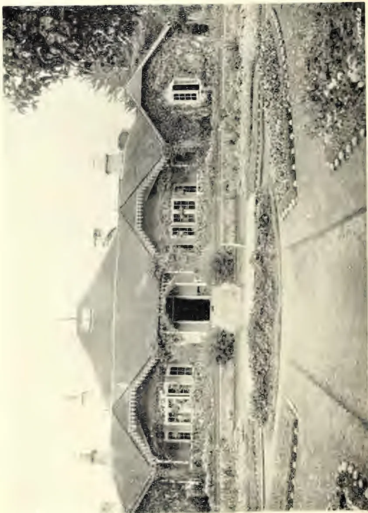
Photo by H. F. Moore-Ware.
FLOWER GARDEN AT QUEEN'S COTTAGE, NUWARA ELIYA.
ELEVATION 6,240 FEET. ANNUAL RAINFALL 94.03 INCHES. AVERAGE TEMPERATURE 58.4°
THE
TROPICAL AGRICULTURIST
AND
MAGAZINE OF THE
CEYLON AGRICULTURAL SOCIETY.
VOL. XXVI.
COLOMBO, APRIL 16TH, 1906.
No. 3.
Agricultural Tools.
With the increase in cost of living that is universally going on, with the great extension of rubber planting, and with the increasing demand in other countries of the tropics for his services, more especially in the Federated Malay States, where the chief industry is rubber, which can afford to pay higher rates, there must in all probability come a time when the wages of the Tamil coolie employed upon estates will rise, thus making a great difference to estates planted in comparatively unremunerative products like tea, cacao, or cardamoms.
This, with other causes, will stimulate the wish to find agricultural tools other than the mamoti which can be profitably employed upon estates to the saving of labour. Were it not for such tools, farming would be, comparatively speaking, impossible in the thinly-peopled Western United States and in many other countries. In the rice fields of Texas, one man, aided by machinery, can till 80 acres, a somewhat startling contrast to the state of affairs in Ceylon or India.
It is absurd to suppose that complex American tools can be suddenly introduced to a population of poor villagers, who cannot find the money to buy them, who do not understand them, and cannot repair them if they break, and who are quite unaccustomed to their use. Yet this is the rock upon which all attempts at the improvement of native implements have in the past been shattered. One official, for instance, endeavoured to improve the ploughs in vogue in Ceylon by introducing good English ploughs. These of course penetrated the plough-pan which exists in most paddy fields, and let the water escape in consequence. The result, or one of the results, is a prejudice among the villagers against improved ploughs which will probably last a century or more.
On estates, again, though they are under European management, the labour has to be performed by ignorant Tamil coolies, and matters are further complicated by the hilliness of most places, which handicaps or prevents the use of the majority of American tools, which are constructed for level ground.
The individual who endeavours to go rapidly in improving tropical—or any other—agriculture is, as a general rule, certain to fail, and the worst point of his failure, in the tropics more especially, is the prejudice against improvement that is thereby created.
The proper way of procedure is the scientific one, advancing by very gradual steps. It may be illustrated by a recent performance on the Pennsylvania Railroad. Thousands of men are there employed in cleaning out the roadside gutters with
200spades. It occurred to an Engineer of the Company that a spade was not a spade for this sort of work, as in some places the soil to be removed was heavy and in others light. He accordingly tried in each kind of soil all sizes and shapes of spades, to get the best results in each place, and now the man who is digging gravelly soil at one place uses a different spade from the man who is digging clayey soil at another. So great was the saving thus brought about that 1,000 men fewer were needed for the upkeep of the gutters.
Somewhat similar is the way to proceed with agricultural tools in Ceylon. We must first study carefully all the various kinds of native implements for doing any particular kind of work, and endeavour to get at the reasons for their construction in such or such a way. Then we must study the best modern implements used for the same or similar purposes, and endeavour to get at the reasons of their construction in particular ways. Then we may return to the native implement, and modify it very slightly in the desired direction, making only such a modification as will improve it in cheapness or efficiency and yet not render it unfamiliar to or not to be repaired by, the ordinary villager, nor make it appreciably more expensive. Then the new tool should be carefully and exhaustively tested against the old, and only when it has definitely proved its superiority should it be introduced to the notice of the villager.
Once the new tool has become established, further improvement may be taken in hand, and so on, but we must be very careful not to try to go too rapidly, nor to make large steps.
On estates, of course, progress may be a little more rapid, as expense comes less into consideration, and the supervision is European, but even here we must go slowly.
Already the American "cultivator," or multiple small plough, is coming into use in the Madras Presidency in a very much modified form, consisting of small wooden plough blades fastened to a central beam and tied together with string. But the use even of this simple tool results in a considerable saving of labour.
There seems no reason to suppose that the labour of cultivating low-country estates, at any rate, could not be considerably reduced by the employment of simple tools.
To devise really useful tools for a high upcountry estate, where the plants are growing on what in England would be considered as precipices, is of course a matter of great difficulty, but for lowcountry estates which are comparatively level, and in which the soil is comparatively free of stones, it should not be difficult to devise simple cultivators, seed-drills, and other such instruments which would result in a great saving of coolie labour, and consequently a reduction in the number of coolies employed, a matter which may any day become of very great importance.
BY W. I. HUTCHINSON.
(Forester, Philippine Bureau of Forestry.)
One of the great problems to be solved in the development of every new country, apart from principles of government, is, what products are best suited to the climatic and soil conditions at hand.
So important is this matter that every civilized nation maintains numerous agricultural stations and farms, not only at home but throughout its foreign possessions, in order that by careful experiments some light may be cast on this all important subject.
To the business man and the farmer of the Philippine Islands, this question is a vital one. A considerable amount of capital is usually required to further a large farming project, and it is but natural that the first question that those whose money is involved should ask, is, what returns may we expect, and how long will it be necessary to wait before the first crop can be gathered?
Coconuts, hemp, and sugar cane have been planted in these Islands for many years, so that the profit that may be secured from these products is generally well known. One reads daily, however, of the large returns received from cultivation in the East, of tropical species other than those mentioned, and on comparing their gross proceeds with those from coconuts or hemp, is surprised to find that the species planted to the greatest extent in any country, are not always the ones that yield the largest income.
It was undoubtedly on this account that rubber was first introduced into the Philippines, or perhaps it would be more accurate to say, into the Island of Mindanao, as it is in this section of the Archipelago that the greatest amount of planting has been done, through official channels.
Up to the present time Para rubber seed has been secured either from Sandakan, Borneo; or Singapore, through the Bureau of Forestry at Manila and the Government of the Moro Province, Island of Mindanao. A few private ranch owners have also obtained small shipments of Ceara and Castilloa from Ceylon.
On account of the different methods of treatment, growth, etc., of these various species, they will be considered separately.
During 1905 several small lots of Para seed were received in the Philippines. Early in the year the Moro Government obtained 1,000 seed from Sandakan, Borneo, which were distributed among ranch owners and government officials throughout Mindanao, but of these seed few germinated, due without doubt to their infertility and the lack of knowledge as to the proper methods of planting.
In October, 1905, the Bureau of Forestry at Manila received 5,000 seed from Singapore, 2,500 of which were sent to the Island of Mindanao, where they were planted in seed-beds at the Moro Government Experimental Farm, located on the Zamboanga Peninsula. Although every care possible was given the seed, which were planted within a month from date of shipment, only about 400 of the total number sprouted. The average rate of growth of these nursery plants was about 18 inches in 50 days, seeds unfilled when planted.
Gums, Resins,202In January of the present year the Moro Government again made a purchase of 6,000 seedlings, which had been raised from seed at the Lamao Forest Reserve, Bataan Province, by the Bureau of Agriculture. One thousand of these seedlings were distributed to farmers in the vicinity of Zamboanga, and the remainder placed in seed-beds to await a favourable season for planting.
It is the intention of the Provincial Government to distribute a number of these seedlings among the principal towns of the Island, in order to ascertain which section of the country is best suited to rubber growing. A plantation will also be established on the Government Farm at an elevation of 25 feet above sea level, with sample plots in the surrounding mountains at different altitudes up to 1,200 feet.
CEARA RUBBER (Manihot Glaziovii).
As far as is known to the writer, there are only two rubber plantations of any size in the Philippine Islands, and these are located on the Island of Basilan, Moro Province. These plantations are situated at 200 and 500 feet elevation, and contain 2,500 and 1,000 trees respectively. The soil of both of these areas is a well drained, rich, heavy loam, with a small amount of volcanic gravel intermixed.
The following figures on the annual rainfall of the Island were furnished by the Weather Bureau sub-station at Port Isabela, Basilan:—
| Year. | Total rainfall. | |||
|---|---|---|---|---|
| 1903 | ... | ... | ... | 65.30 inches. |
| 1904 | ... | ... | ... | 74.25 " |
| 1905 | ... | ... | ... | 42.43 " |
The Ceara seed, after having been en route for eight months, were filed and planted directly to stake. At the lower elevation 2,500 out of 3,000 seed germinated, while at 660 feet something over 1,000 plants were obtained from 1,500 seed.
The following measurements made by the writer will be of interest to all rubber growers, and as far as is known compare favorably with the growth of other trees of the same species and age, planted in the East:—
Ceara Rubber.
| Elevation 500 feet. | Planted 15 × 15 feet. | |
| Age. | No. trees measured. | Average height. |
| 7 mo. 5 days. | 43. | 12 ft. 5 in. |
| Maximum height 17 feet. | ||
| Elevation 200 feet. | Planted 15 × 15 feet. | |
| Age. | No. trees measured. | Average height. |
| 5 mo. 15 days. | 65. | 9 ft. 9 in. |
| Maximum height 13 feet. |
CASTILLOA RUBBER (Castilloa Elastica).
A small Castilloa plantation, containing some 400 seedling trees irregularly spaced, has recently been set out on the Island of Basilan at an elevation of about 50 feet above sea level. The soil on this situation is a rich, heavy loam which has been washed down from the surrounding mountains, and contains but a small amount of gravel.
The measurement of 45 plants in the seed-bed, which are slightly larger than those set out in the plantation, gave the following results:—
Castilloa Rubber.
| Age. | No. seedlings measured. | Average height. |
| 4 mo. 25 days | 45. | 17 inches. |
| Maximum height 29 inches. |
After watching the growth of Para and Castilloa seedlings in nursery beds, and Ceara trees in plantations, it is the Forester's opinion that all of these species are well suited to the climatic and soil conditions as found in the Island of Mindanao.
RAMBONG (Ficus elastica), the other great rubber producing species under cultivation, has been planted singly in private grounds in many towns in the Islands. All seem to thrive well.
Which of these four species will give the greatest yearly returns per acre in these Islands is a question which time alone can solve. Almost every large ranch owner in the eastern part of the Island of Mindanao will plant more or less rubber this year. Plans are being made to try all the principal kinds of rubber trees, and it is hoped that the species best adapted to the Philippines may be determined in the near future.
With the ever increasing demand for rubber, the limited areas suitable for its production, and the rapid exhaustion of the jungle product, it will doubtless be many years before the supply will even in a small measure be able to meet the demand.
In this new country we have been slow in starting to plant rubber but the first step in the right direction has been taken, and the day may not be far distant when the Philippine Islands will be reckoned as an important factor among the rubber producing countries of the world.
This proposal is taking shape; and, as it will meet a keen public demand, its realization is practically assured. The show is not to be held in the busy month of February, however; and consequently September is now named as a suitable time. We understand that a representative stock of machinery for dealing with rubber in its first manufactured stages has been ordered from home, whereby Mr. Herbert Wright will be able to extend the scope of his experiments, and by September these will all be on view and working. Thus, with all local patentees in the field with their particular exhibits, and the Royal Botanical Garden's staff working at full pressure, with the Peradeniya laboratory thrown open, showing what is being done in the matter of latex experiments, the treatment of various forms of disease, &c., &c., besides competitive exhibits in the various classes of dry rubber, it will be at once conceded that there will be ample material for a very attractive and useful show. We have already spoken of the Kuala Lumpur and Penang shows; but the Peradeniya one would surpass these, and be the best thing of its kind dealing with rubber which has been held anywhere. It must be held inside the Peradeniya grounds, because the trees, laboratory and new machinery will also be there. For this reason it is supposed that an entrance fee would be impossible, as such has never been charged at Peradeniya; but, even if some parts of the grounds must be kept open, there can surely be an enclosure, not only to prevent too much crowding by people whose only interest in the affair would be a "free show," but also to provide something towards the expenses. The suggestions made by one or two interested in seeing the proposition taken up include the proposal that the expenses be shared by the Government and the Ceylon Planters' Association. The sum will not be a large one, and doubtless the C. P. A. funds, though limited, could meet the moiety all right; but there can be no doubt about the Government's direct interest not only in the show but also in the new industry; for it must have already netted several lakhs of rupees this year over land sales more than would have been the case if rubber
Gums, Resins,204had not "caught on" in Ceylon. Two or three thousand rupees expended on such a representative exhibition would consequently be but a small acknowledgment by the authorities of favours past in the matter of good prices of land and of many more to come! Early notice of the show widely made would ensure exhibits from the Malay States, and elsewhere in this part of the world, of various kinds of rubber—besides, there is its washing machine!—and in addition Mr. Wright might get a representative collection of American and African samples of rubber such as none of us have ever seen.—Times of Ceylon.
There seems to be a diversity of opinion as to the wisdom shown in preparing rubber as it is now coming from the Far East—that is, rubber in what is known as the "washed" form. To-day the market receives two kinds of washed "Para" from Ceylon and the Federated Malay States, one of which is known as "crêpe" and the other as "worm" rubber. The physical shape of these two types is due to the machines through which the latex passes in the process of coagulation and in getting rid of the water. The special objection that importers and brokers have against rubber in this form is their fear that the manufacturer will look upon it as a partially manufactured product; that it has been handled on rolls similar to those that they use in compounding, and, therefore, that it may be adulterated. On the other hand, the planters find that they can handle the latex much easier and more rapidly, and have apparently determined to deliver it in one or both of these forms. The chances are that unless some better method is discovered, the planters will triumph.
Samples of the rubber that have been examined by the writer are excellent, and it can easily be proved whether adulterants are present or not by very simple tests. Further than this, there does not seem to be the slightest fear that any of the Far Eastern planters will adulterate their rubber. The tendency has been from the start to make just as good a product as possible, and to identify whatever is sent out with the plantation where it is grown. It is possible that the customs offices in "protection" countries may at first classify such rubber as a manufactured product, but there is little doubt but that such decisions could be reversed if the matter were put before the proper officials in the right way. What is needed more than anything else is to get out more rubber, and whether it is "crêpe" or "worm" or "pancake" or "sheet" it is bound to find a good and profitable market, and in the long run the simplest method of coagulation and handling is that which will prevail.—The India Rubber World.
Early last January, hard, fine sold at 5s. 0½d., soft 4s. 10½d., scrappy negro-head 3s. 9d., Cameta 2s. 9½d., Caucho Ball 3s. 3½d. Prices soon advanced 2½d. and again 2d. in February, and the highest price of fine hard was paid in March, fine hard 5s. 9d., soft 5s. 7½d., scrappy 4s. 3d., Island 3s. 6d., ball 3s. 7¼d. By the end of March prices declined 2d., but recovered in April, and in May 5s. 9d. was again obtained for fine hard (5s. 8½d. soft, being scarce), but only 3s. 1d. for Island against 4s. 1d. paid for scrappy and 3s. 4d. to 3s. 6d. for ball. By the middle of July values declined 4d., hard 5s. 4¼d., soft 5s. 3¾d., scrappy 3s. 9d., Island 2s. 9½d., ball 3s. 4½d. During August we advanced 2d., and the sinking of the "Cyril" early September pushed up values to 5s. 8d. fine hard, 3s. 11d. scrappy, 2s. 11d. Island, and 3s. 9½d. ball. Values fell constantly from 5s. 6d. end of September to 5s. 2½d. for hard, end of October, ball 3s. 9d. to 3s. 6½d. forward. In beginning of November large receipts caused a decline to 5s. 1¼d. hard, 5s. 1¼d. soft, 3s. 10¼d. scrappy, 2s. 11d. Island, but ball, being very scarce and over-sold,
205Saps and Exudations.advanced to 3s. 9½d. spot—large sales forward down to 3s. 6½d. During November and December we had a quiet market at 1d. over these values till the close when short receipts caused buyers to pay up to 5s. 5½d. for fine hard, 5s. 4d. for soft, 4s. 0½d. scrappy negrohead, 3s. 3½d. Island, and 3s. 10½d. Caucho ball spot, closing easier.
Active demand, enlarged consumption, especially of Fine Rubber, and rather frequent fluctuations of prices have been the features of 1905 in Europe. "Motors" of all descriptions rapidly increase: as yet nothing found reliable for tyres except rubber. But all Caoutchouc manufacturers have been busy, and the increased supply has been consumed—we estimate the world's total supply of Rubber fully 60,000 tons. The price of fine Para at one time showed 8d. advance, but closes 4d. per lb. over a year ago, Negrohead 2d., Caucho ball which has been in great demand, 6d. higher.
The supply of mediums rather increased again, West Coast African about the same, say 17,500 tons, against 18,000 tons in 1904, and supplies from the Belgium Congo are stationary, though quality is improving.
Visible supply 1st January, 1906:—
| 1906. | 1905. | 1904. | 1903. | 1902. | |
|---|---|---|---|---|---|
| Of Para and Peruvian ... tons | 2,874 | 2,666 | 3,262 | 3,365 | 4,618 |
| Including America ... " | 1,600 | 1,830 | 1,430 | 1,365 | 2,105 |
| For the whole year Brazil increased (from the Amazonas) | 34,420 | 30,385 | 31,070 | 28,590 | |
| This includes Peruvian and Caucho via Iquitos and Manaos ... " | 6,100 | 4,390 | 4,050 | 3,160 |
The fine, generally, has been well selected, and should be cut and sorted carefully before shipment. Quality of the Caucho Ball and Slab was good. Bolivia sent more, Mollendo less; both sell readily. Venezuela via the Orinoco, moderate parcels sold at good prices, also some of Mangabeira descriptions. Ceara was in small supply and realised high prices. Larger quantities of Manicoba sold very high, except low, dirty lots. Small parcels of thin sheet, clean, "Plantation" Manicoba sold from 4s. 6½d. to 5s. 2d. Pernambuco and Assare in moderate supply realised 4d. advance. We had less Mangabeira, but a larger proportion of good qualities, and prices 3d. to 4d. higher. Mattogrosso was not always as clean as formerly, but 240 tons sold at very high relative prices, also Mangabeira, which was much liked.
Central America and Mexico increased (total C. A. probably 3,200 tons); prices have ruled high. Colombian in decreased supply and middling quality, price 4d. to 6d. higher. Fine clean hard would command a very high price. Carthagenia, Ecuador, Tumaco, etc., in small supply and about 3d. to 6d. per lb. higher. All clean Rubber from the Cauca, Magdalena, Nicaragua, or Mexico, will bring high rates. We expect some "Plantations" in these regions will produce soon; we hope of good, clean, hard Rubber.
| 1905. | 1904. | 1903. | |
|---|---|---|---|
| West Coast African ... .. | 17,500 tons | 18,000 tons | 15,000 tons |
| Including Benguela and Mossamedes... | 1,650 " | 1,600 " | 1,450 " |
| Price advanced 5½d. Loanda... | 800 " | 950 " | 980 " |
| " " 12% Congo ... .. | 5,650 " | 5,800 " | 5,600 " |
The quality has been good and prices higher. Increased supplies from Niger, Gold Coast, Accra, Lagos, etc., sold fairly. Small quantities of nice quality from the Cameroons, Sierra Leone, Gaboon, and Conakry, brought higher prices. French Sudan via Senegal 1,250 tons against 1,200 in 1904. Quality liked and demand excellent at high prices. Liverpool landed of West African 4,700 tons against 5,080 tons in 1904, 3,830 tons in 1903.
Gums, Resins,206EAST COAST AFRICAN.—Zanzibar, etc., has decreased; prices have ruled very high, showing 4d. to 5d. advance. Nyassaland much less and very dear. Mombassa sent more Lamu, and got good prices. Uganda has supplied small but increased quantities, and though part rather softish it sold well.
Madagascar in small supply, and has been in very active demand at advancing prices; all fine, clean lots very dear. Rangoon less. Assam more and sold readily higher; good red 4s. 1½d. to 3s. 9d. Some clean plantation sold as high as 5s. per lb. Penang rather increased 629 tons, 600 in 1904, 300 in 1903, and much mixed of undesirable quality was difficult to sell; clean lots sold readily. Java only shipped small lots, they sold well, and we expect plantations there will produce nice quality. From New Guinea very small supplies sold readily. Borneo much larger supply and high prices for good. French Cochin China and Tonkin greatly decreased supplies; clean red 5d. dearer. Pontianak has been abundant at times, and speculation maintained values to a high standard; closing price £17 15s. c.i.f.
Balata continued in good supply, but with large demand, prices improved, and close at the highest of the year. Block, good, 1s. 5½d. to 1s. 6d., sheet 2s. to 2s. 0½d.
Gutta Percha has continued to sell at moderate prices, but more readily.—The India-Rubber Journal.
The following circular letter has been addressed to rubber manufacturers and gentlemen interested in rubber in Europe and America:—
Royal Botanic Gardens,
Peradeniya, Ceylon,
February, 1906.
GENTLEMEN.—I am desired by the Committee to inform you that a “Rubber Exhibition,” under authority of the Ceylon Government, will be held in the Royal Botanic Gardens, Peradeniya, Ceylon, from the 13th to the 27th September, 1906, and to invite you to contribute. This will be the first exhibition of its kind ever held, and should mark an epoch in the history of rubber.
2. You are probably aware, from seeing the market quotations and from reading the technical papers, that rubber is now being cultivated in Ceylon and the Federated Malay States, and though the exports as yet are inconsiderable, they are doubling annually and will, in about seven years’ time, probably reach ten or fifteen million pounds and increase rapidly after that, in fifteen years from now probably exceeding the exports of Brazil.
3. Plantation rubber is cleaner and purer, and is at present selling at 7d. to 10d. a lb. more than that from Para. It is important that manufacturers should, as early as may be inform themselves as to “plantation rubber from the East,” the modes of preparation, the cost of production, possibilities, and disadvantages, for the future lies with it, and wild rubbers will be driven off the market, excepting, perhaps, the Para rubber of Brazil, for which there is likely to be some use and a remunerative price for a long while yet.
4. Hitherto, owing to the small supply of cultivated rubber upon the market, two things have happened. Manufacturers have not made any special machinery to deal with it, but have mixed it with the dirty wild rubbers they have been in the habit of using, and planters have not adopted any special form in which to send it to market, but having started with the singularly inconvenient form of biscuits have gone on with these, though it is evident that they are absolutely unsuited to preparation on the larger scale which the expanding trade requires. To deal with the latter first, the planter must adopt some less cumbrous and expensive mode of preparation.
207Saps and Exudations.The manufacturers in England have objected to lace and crêpe on the ground that these are a form of scrap, and that adulteration will be easy. The well-established reputation of the Ceylon Planter in the preparation of tea and cacao and other products hardly renders this last apprehension deserving of serious consideration.
5. To see the different processes adopted in the East, and to assist in the development of the best methods for the preparation of rubber, is to the interest of the manufacturers.
6. Manufacturers have not as yet made any special machinery nor any alterations in machinery to enable them to deal with the clean dry product sent from Ceylon and the Federated Malay States. The present cumbersome methods of cleaning, and otherwise preparing, the rubber do not commend themselves as likely to endure. It would appear desirable that preparation of the rubber and its manufacture should go hand in hand, and the rubber be prepared in different ways to suit different kinds of manufacture. A beginning in this direction will form a special feature of the Show, samples of rubber coloured, mixed and vulcanised by new processes invented by Mr. Kelway Bamber, Chemist and Analyst to the Ceylon Government, will be exhibited.
7. The Exhibition will comprise anything and everything that has to do with rubber, and you are particularly invited to exhibit anything of your own manufacture, whether only in the finished state or in various stages of preparation, any forms of machinery, and anything else likely to prove of interest. Power will be provided.
8. The Exhibition will be open for a fortnight. It will be held at the most central and familiar place in Ceylon, and should attract all rubber planters from the East and dealers from India, the Federated Malay States, and other countries. It will consequently offer you an unrivalled opportunity for getting into touch with the producers, and perhaps for making contracts for supply of rubber prepared to suit your own requirements.
9. No import duty will be charged upon articles entered for exhibition, and free railway carriage will be given from Colombo on all exhibits. Entries must be addressed to: E. B. Denham, Esq., c.c.s., the Secretariat, Colombo—to reach him before July 31st, and goods should be forwarded from Europe not later than that date.
I am, Gentlemen,
Your obedient Servant,
JOHN C. WILLIS,
Director, Royal Botanic Gardens,
Peradeniya, Ceylon.
LONDON, March 2nd.—During the past week the market generally has been quiet and the receipts in Para continue very large. During February they amounted to 3,920 tons, bringing the total from last July to 24,320 tons against 22,250 last year and 21,470 tons in 1904. The consumption and deliveries, however, continue very large, and in spite of the extra visible supply the market has kept very steady and there are no indications of any serious break in prices. Receipts are now likely to fall off and consumption to increase rather than decrease. There were 6½ tons Ceylon and 1¼ tons Straits and Malay States offered in public sale to-day. To-day's price of fine Para is 5s. 4d. per lb.
| MARK. | QUANTITY. | DESCRIPTION. | PRICE PER LB. |
|---|---|---|---|
| Tallagalla | 3 cases | Dark biscuits | ... 6s. 1½d. |
| Gammadua | 1 do | Very thin pale biscuits Ceara | ... 6s. 1½d. |
| Densworth | 3 do | Dark biscuits | ... 6s. 1½d. |
| do | 1 do | Biscuits mixed colours slight heated | ... 5s. 10½d. |
| do | 1 do | Scrap | ... 5s. 3d. |
| MARK. | QUANTITY. | DESCRIPTION. | PRICE PER LB. |
|---|---|---|---|
| Waharaka | 1 do | Biscuits mixed colours | ... 6s. 1½d. |
| do | 1 do | Good scrap | ... 5s. 3½d. |
| Doranakande | 9 do | Darkish biscuits | ... 6s. 1½d. |
| do | 3 do | Fine scrap | ... 5s. 3½d. |
| do | 3 do | Dark scrap | ... 5s. 1½d. |
| Elston | 2 do | Dull biscuits | ... 6s. 1½d. |
| do | 2 do | Good scrap | ... 5s. 3½d. |
| Rangbodde | 1 do | Pale biscuits Ceara | ... 6s. 1½d. |
| Ballacadua | 2 do | Dullish biscuits | ... 6s. 1½d. |
| do | 1 do | Dark rather inferior | ... 6s. 1d. |
| do | 3 do | Scrap | ... 5s. 3½d. |
| Warriapolla | 1 do | Pale biscuits | ... 6s. 1½d. |
| do | 4 do | Amber do. | ... 6s. 1½d. |
| do | 1 do | Biscuits apparently burnt | ... 6s. |
| Cicely Estate | 2 do | Inferior scrap | ... 4s. 11d. |
| do | 1 do | Low scrap | ... 4s. 1d. |
| do | 1 bag | Inferior sheets | ... 5s. 3d. |
| Wiharagama | 6 cases | Biscuits mixed colours rather mouldy | ... 6s. 1½d. |
| do | 1 do | Barky ball scrap | ... 4s. 3½d. |
| Culloden | 10 do | Very fine biscuits | ... 6s. 2d. |
| do | 1 do | Humps | ... 5s. 3½d. |
| do | 3 do | Good scrap | ... 5s. 3½d. |
| Ingoya | 5 do | Amber biscuits | ... 6s. 1½d. |
| do | 2 do | Dark amber biscuits | ... 6s. 1½d. |
| do | 2 do | Good darkish scrap | ... 5s. 3½d. |
| do | 1 do | Good dark scrap | ... 5s. 3½d. |
| do | 1 bag | Thin biscuits Ceara | ... 6s. |
| Ellakande | 2 cases | Biscuits mixed colours | ... 6s. 1½d. |
| do | 2 do | Fair scrap | ... 5s. 3½d. |
| Heatherley | 3 do | Fine palish biscuits | ... 6s. 1½d. |
| do | 1 do | Amber sheets | ... 6s. 1½d. |
| do | 3 do | Good scrap | ... 5s. 3½d. |
| do | 1 do | Inferior sandy scrap | 3s. 3d. sub. |
| do | 2 do | Biscuits and sheets | ... 6s. 1½d. |
| do | 1 do | Lumps | ... 5s. 1½d. |
| do | 1 do | Low scrap | 3s. 3d. sub. |
| Nikakotua | 3 do | Dull biscuits | ... 6s. 1½d. |
| do | 1 do | Dark biscuits | ... 6s. 1½d. |
| do | 1 do | Scrap | ... 5s. |
| Halgolla | 2 do | Biscuits mixed colours | ... 6s. 1½d. |
| Galatura | 1 do | Dark biscuits | ... 6s. 1½d. |
| Duckwari | 1 do | Amber do. | ... 6s. 1½d. |
| Halwatura | 6 do | Darkish do. | ... 6s. 1½d. |
| do | 3 do | Dark scrap heated | ... 5s. |
| Kahawatte | 1 do | Ceara biscuits | ... 6s. |
| K. K. | 2 do | Dark do. | ... 6s. 1½d. |
| do | 1 do | Scrap | ... 5s. 3½d. |
| do | 1 do | Pieces | ... 5s. 3d. |
| STRAITS AND MALAY STATES. | |||
| S. P. in est. mark | 1 case | Sheets | ... 6s. 1½d. |
| do | 1 bag | Thin sheets stuck together | ... 6s. |
| do | 1 case | Thick biscuits part virgin | ... 5s. 6d. |
| do | 1 do | Thick sheets do | ... 5s. 6d. |
| do | 2 bags | Biscuits | ... 5s. |
| do | 1 do | Fair scrap | ... 5s. 3½d. |
| H. & P., F. M. S. | 2 cases | Darkish | 5s. 7d. to 6s. |
| do | 1 do | Palish | ... 6s. |
| do | 1 do | Dark | ... 5s. 3½d. |
| L. S. H. | 1 do | Thick sheets part virgin | ... 5s. 11d. |
| do | 1 bag | do rough and part virgin | ... 4s. 10d. |
| K. M. A. | 3 cases | Pale sheet | ... 6s. 1½d. |
| M. | 3 do | Large pale biscuits | ... 6s. 2d. |
A recent issue of the "Agricultural Ledger" is devoted to a report on the collection and composition of the dye stuff Kamala (Mallotus philippensis), the writer being the acting Reporter on Economic Products. The use of the kamala in medicine is now almost obsolete, but as a dye stuff it is in favour, though the growth of its use is checked by adulteration. Inquiries have been made from forest officers in all parts of India, and the present report summarises the results and also gives the conclusions of the technical researches of Mr. Perkin, of the Yorkshire College, Leeds. The tree is a small evergreen found throughout tropical India, Burma, the Malay Peninsula and the Andamans. The reports from Burma show that Mallotus philippensis is found sparsely in Tharrawaddy, rarely in Prome, sparsely in Bassein, fairly common in the Mu forests, sparingly in the Yaw division, though fairly common in Gangaw, said to be unknown in Minbu, sparingly in Katha, very scarce in the Ruby Mines, not very plentiful in Pyinmana. The tree is more common in Upper than in Lower Burma. The dye, which is produced from the glands of the mature fruit, is estimated to cost at least double in Burma what it does in Northern India. Some divisions in Burma reported that kamala is a useful dye for local purposes, but it is not sufficiently abundant for commercial use, and the price precludes any possibility of an export trade. In India there is evidence everywhere that the internal trade in kamala is declining. Annatto is cheaper and produces a brighter colour. Mallotus produces a fast dye, but it is difficult to obtain it unadulterated. The wood is useful as fuel and the bark has been reported to be used for tanning leather in the United Provinces. Some experiments in Rangoon showed that the bark of an undetermined species of Mallotus produces a most satisfactory tanning extract.—Indian Agriculturist.
[This tree is rather common in the low-country of Ceylon, and up to 2,500 feet, being known to the Sinhalese as Hamparila, to the Tamils as Kapila. The dye is but little used.—ED. T. A. & Mag. C.A.S.]
A tree of economic value which I wish to call attention to is the Acacia decurrens or Black Wattle, a tree which is common in many districts throughout the Territory.
In connection with the Tantalus forest there were planted some twelve or thirteen years ago a lot of six acres of this tree. The location was a rocky one with poor and shallow soil. The grove was included in the portion of the area set apart for the Federal Experiment Station. As the trees were not in a healthy condition, Mr. Jared Smith, the Superintendent of the Experiment Station, caused them to be cut this last spring, the bark removed and sold for tanning material and the wood sold. Careful statistics were kept by him of the results obtained from this small area. By his kindness I am able to present such results to this Association, which are as follows:—
Thirty-six tons of bark were sold at $23.31 per ton, realizing a total amount of $839.44. The six acres yielded 500 first-class fence posts which were used upon the station. These posts, if purchased, would have cost 25 cents a piece, making the value received from posts $125. In addition to the fence posts there were realized 88 cords of firewood which was sold at an average of $7.83 per cord, producing a
Dye Stuffs and Tanning Substances.* 210total of $689.25. Allowing the same price for the two tons of bark given away there would be an additional value of $46.62.
A summary of the amount produced by these six acres of Black Wattle is then as follows:—
| 36 tons of bark sold | ... | ... | ... | $ 839.44 |
| 2 tons of bark given away | ... | ... | ... | 46.62 |
| 500 posts | ... | ... | ... | 125.00 |
| 88 cords of wood | ... | ... | ... | 689.25 |
| $1,700.31 | ||||
| Making a total of | ... | |||
| or equivalent to | $283.38 per acre. | |||
As stated above, the soil on which this grove was planted was rocky, thin and poor, and the trees scrubby. To my personal knowledge, in good soil on Tantalus and a number of locations on Hawaii and Maui, this tree grows to twice the size of the trees cut on Tantalus in much less time.
I am also informed by Mr. Smith that the Black Wattle bark is one of the best of the tanning barks, and the average price of good bark is much higher than that realized by him, the low price being on account of this being an experiment, its individual character being not yet established.
I am also informed by Mr. Smith that the demand for tanning bark is practically unlimited. The foregoing demonstration by Mr. Smith opens up an entirely new field for a profitable industry in Hawaii, either as a proposition by itself or more particularly as an incidental profit in connection with plantations which are now having to purchase their firewood.
The tree is a quick grower, and planted along the lines of roads and in barren spots should furnish all the firewood needed by the plantation, leaving the bark a net profit.—The Hawaiian Forester and Agriculturist.
[This tree is now largely grown up-country in Ceylon, and we should be glad to hear if anyone can show results to equal those given in this paper.—Ed. T.A. & Mag. C.A.S.]
214The following letters, received in answer to inquiries made by the Superintendent of Forestry, relative to the market for copra existing in the United States, are of interest in view of the long stretches of coast line on the Hawaiian islands where coconut trees would grow and thrive:—
U. S. Department of Agriculture,
Bureau of Plant Industry.
Washington, Nov. 9, 1905.
Mr. RALPH S. HOSMER, Superintendent,
Division of Forestry, Hawaii.
DEAR SIR,—In reply to your favor of Oct. 11, relative to the market for copra in the United States, I beg to state that there are but two plants in the United States equipped for grinding copra. One of these is in Philadelphia and has a completely equipped copra oil mill which has been standing idle for two or three years for want of material. The other is a linseed oil mill on the Pacific Coast that has a few oil presses for copra, and gets its supply from the Pacific region, particularly Tutuila. This latter mill supplies the demand for coconut oil for soap making on the Pacific Coast. The Philadelphia firm says it cannot compete with European buyers for the East Indian copra, and there is no other supply available in any quantity, as all the coconuts grown and shipped from the West Indies and Central America are used up in this country for desiccated coconut. Even then there is not enough available for this purpose, and several million pounds of desiccated coconut are imported from Ceylon every year.
The demand for coconut oil is growing all the time for its former commercial uses, and the demand that has sprung up in the last ten years for its use in the preparation of food products is over-taxing the supply. The total export of desiccated coconut from Ceylon amounts to between sixteen and seventeen million pounds yearly, which, of course, cuts into the oil production. In Europe there is a market for coconut oil-cake, which in the opinion of some would make it desirable to press the copra where grown, and ship the oil and oil-cake separately. In the Philippine Census for 1903, Vol. IV, pages 67-69, the plan of shipping copra alone is advocated. Though the India Refining Company of Philadelphia, referred to above, at present imports all its raw material from India and Ceylon in the form of coconut oil, the firm is of the opinion that the easiest, safest and quickest way to ship coconut oil is in the form of copra. All the production of the Philippines and other Pacific islands received here has been so shipped.
The India Refining Company stands ready to purchase copra, if it can be procured in large and constant quantities, at East India prices. The following prices per hundredweight have been quoted recently:—
| At Colombo | ... | ... | ... | $ 2.90 | to | $ 3.10 |
| At Trinidad | ... | ... | ... | 2.90 | to | 3.00 |
| At Hamburg: | ||||||
| East African... | ... | ... | ... | 3.50 | to | 3.80 |
| West African | ... | ... | ... | 3.00 | to | 3.60 |
Very respectfully,
B. T. GALLOWAY,
Chief of Bureau.
Oils and Fats.
212
Mr. RALPH S. HOSMER,
Supt. of Forestry,
Honolulu, Hawaii.
DEAR SIR,—Your esteemed favor of the 11th inst. is before us, and we should think that copra could be produced in your Islands in commercial quantities and made a pretty important and valuable article of commerce.
The best copra is made by drying the meat of the coconut in houses or drying machines heated by steam, although if the climate is a sufficiently dry one, sun drying produces very good results if the meat is kept clean. The grading depends on the dryness, cleanness, and sweetness of the meat. The market price varies considerably; we have seen it as low as $50.00 or $52.00, and as high as $85.00, per long ton. The present price in London is about $80.00 or $81.00 per ton.
There is no market at present in this country, unless possibly with the American Linseed Company, who have a mill in San Francisco, and we would suggest your writing to them. We trust you will be successful in stimulating some interest in this product, as it is one rapidly growing in importance, and it would hardly be possible to overload the market.
Yours very truly,
INDIA REFINING COMPANY,
W. H. MAGOFFIN,
Treasurer.
—The Hawaiian Forester and Agriculturist.
An interesting account of the investigations of "Indian Vegetable Flosses," which have been recently carried out in the Scientific and Technical Department of the Imperial Institute, appears in the Bulletin (No. 3 of 1905) of that institution. These silk cottons, as they are also called, are regularly exported to England from India, Java and other Eastern countries under the name "kapok." The latter name properly only refers to the product of the tree called Eriodendron anfractuosum, which is fairly common in and around Madras; but flosses from other Indian trees, especially the Bombax malabaricum, are also classed under this name. The investigations carried out under the auspices of the Imperial Institute relate to five specimens, sent by the Officiating Reporter on Economic Products to the Government of India, and they consisted of pods and flosses collected from the Eriodendron anfractuosum, Cochlospermum gossypium and Calotropis gigantea, the last mentioned coming out best from the chemical examination. The amount of cellulose which the flosses examined contained varied between 45 and 69 per cent, as compared with the 95 or 96.5 per cent yielded by cotton under similar conditions. Their deficiency in this respect accounts for their poor tenacity, and, according to the report under review, it is possible that even if the mechanical difficulties encountered in spinning such materials were overcome, the resulting fabrics would deteriorate so rapidly that no demand for them could be maintained. However, it is stated on good authority that although experiments are still proceeding, no process has yet been devised whereby this material can be spun on a commercial scale.
Suggestions have been put forward at various times and in various places that "kapok" might be used in the manufacture of (1) artificial silk, (2) a soft non-conducting felt, (3) gun cotton, and (4) the nap of silk hats; but there seems to be no reliable information available to show that it has been employed on a commercial scale for any of these purposes. The best use, therefore, to which kapok can be put would seem to be that for which it is most in demand, viz., as a material for stuffing cushions, pillows, chairs, bedding and similar articles. For such purposes its non-hygroscopic character and its softness and resiliency render it peculiarly suitable. It is also stated to be less absorbent and less liable to harbour insect parasites than the materials generally employed in upholstery, and, according to the authorities of the Pasteur Institute in Paris, it can be sterilised by heat at least three times without being seriously damaged, whereas feathers and other upholstery materials do not usually survive this treatment more than twice.
Among other suggestions made for the utilization of kapok is a proposal to use it as a surgical dressing for which purpose, however, its slight absorptive power for aqueous liquids is a disadvantage; and, secondly, in the manufacture of buoys and life-belts. In this connection it is noteworthy that several important steam-ships are said to have recently adopted kapok as a stuffing material for berth-mattresses, not only on account of its softness and resiliency, but also because of its buoyancy, the idea being that mattresses made of kapok could be used as temporary rafts or floats in emergencies. Floss obtained from the seeds of the West African rubber tree Funtumia elastica, it may be mentioned en passant, has also been tried in this connection, and with every prospect of success, since it has been found that this material when merely packed in calico and placed in water, will support a considerable weight for many hours. If, therefore, the cultivation of the Funtumia should be established in this country as an industry, the collection of the floss would probably make a useful by-product. It is not, however, advisable to plant kapok trees in India extensively, because the floss they yield is said to be inferior to that produced in Java, and also because they are so easily grown and widely distributed that there is every prospect of the market being over-stocked in the near future, with the inevitable result of a fall in price.—Indian Agriculturist.
[There is a small trade in kapok in Ceylon, and the Eriodendron trees are grown round most native houses in the low-country.—ED. T.A. & Mag. C.A.S.]
214The pineapple industry of the Hawaii Islands, as it stands to-day, is the result of some fifteen years of experiment and extension. The pioneers in the industry are now face to face with the work of those who, profiting by the experience of others, have largely avoided the errors of earlier cultivators, with the result that the past five years have seen a large addition to the acreage under cultivation. The agricultural end seems well in hand, and providing wise counsels prevail future years will see the development enormously increased. If the growing of pineapples is to be a profitable venture, the preparation and marketing of the fruit deserves and demands the earnest consideration of the growers.
Up to the present time the marketing of fresh fruit has been accomplished by the individual grower forwarding to some commission house at the coast the product of his ranch as it matured. The condition of the fruit market in general and the trade in pineapples in particular entered but slightly into the calculations of the man with fruit that must be disposed of on hand. Thus, at one season or another, all shippers of fresh fruit have been more or less seriously "nipped" with the result that at times the freight expenses have equalled and in some cases even exceeded the price obtained. Market conditions on the mainland are such that we have not as yet supplied even the yearly increase in consumption of the canned fruit; but with the development now in progress it is only a question of a very short time when Hawaiian canned fruit will be displacing the product of Singapore, the West Indies and Florida, and those countries which hitherto have enjoyed a monopoly of the trade. When this takes place will come the real test as to the future of the pineapple industry in this territory.
Comparing the average product of the several canneries now operating in these Islands with that from other countries, the conclusion must be that the local fruit is superior to all other in flavour, colour, uniformity, and freedom from eyes and specks. Finally in the style of package and label the Hawaiian product compares favorably with the finest mainland canned goods. To this extent at least—the local canning business has been wisely handled, and it is the duty of all interested to see that the standards thus created are not only maintained, but if possible improved, a task which will increase in ratio with the increase in the number of canneries. Already we experience the effects of the moderate competition of products of local canneries, and this factor of local competition is likely to be as effective in disposing of margins of profits and inviting a departure from established standards as could be the competition with goods from older sources of supply. The inevitable consequences of such a condition, if permitted to develop would be most discouraging to those dependent on the industry, and this brings us to a consideration of the best course of avoiding such an undesirable condition of affairs. This must be sought in co-operation—and such co-operation as will permit the several conjoining elements to still retain their identity and individuality to the utmost possible limit. To accomplish this the several growers throughout the group should enter into agreements placing the control of the business in the hands of a Board of Control representing the several interests thus conjoined. The purposes and objects of the Board would be as follows:—
1st.—To establish an agent at the several distributing centres on the Pacific Coast for the disposal of fresh fruit.
2nd.—To fix, from time to time, a minimum price at which fresh fruit is to be sold.
215Edible Products.3rd.—To regulate the disposal of fruits by a system of advance orders and such other means as would from time to time be deemed proper, or necessary to prevent the market price from dropping below the minimum while yielding same all the fruit it can consume, at or in excess of such minimum price.
4th.—To notify the several growers of the quantities of fresh fruit to be forwarded, the allotment for this purpose being based on the amount of fruit each grower has ripening, as compared with the total for the period covered by the consignment.
5th.—Each grower to make his own selections of fruit and pack same under his own brand subject only to the condition of using a uniform package and to such regulations as would apply uniformly to all growers.
6th.—All goods destined for one distributing point to go forward under one bill of lading to the Co-operative Company's agent.
7th.—Separate account sales to be rendered for each brand forwarded and settlements to be effected monthly.
The surplus fruit in all cases to go to the cannery to which the grower is tributary, under agreements as follows:—Fruit to be graded into three classes, 1st—That suitable for canning as 2½ lb. sliced; 2nd,—That suitable for 2 lb. sliced, and 3rd—Such as is unsuited for either of above, for use as "grated." In the several grades, the price should be fixed yearly or oftener if deemed desirable, at which the fruit would be accepted at the cannery; 25% of the price to be paid at the time of delivery, and the balance in instalments covering a fixed period. Only the fruit of such growers as abide by the fresh fruit agreement to be accepted at the cannery.
The canned product to be disposed of through a single distributing agency. Each cannery having its particular brand and label for its several products. Agency agreements would contemplate separate account sales for each cannery and settlements to be made at stated periods. Each group of growers having access to a cannery to be responsible, in ratio to the amount of fruit furnished for canning for any debts of the cannery and to join in like proportion in any surplus earnings.
In respect to canneries, I would advocate a single cannery for this Island—centrally located—if possible at tide water and equipped with up-to-date automatic machinery for can making and as far as practicable for fruit manipulation. The canneries now located here would be ample for the requirements of Hilo and some other fruit growing centre, disposition being thus made to the advantage of all interested in the proposition. The main purpose for such a plan of organization as herein outlined is to keep active as many competitive features as possible both in the production and canning of the fruit; the individuality of both growers and canneries is preserved while insuring them a just remuneration for their industry and outlay.
Among the benefits to be derived from such association may be mentioned the economies resulting from large purchases of like supplies of whatsoever kind. A better supervision and consequent greater production through improved methods of cultivation and canning. Employment of an expert chemist—something sorely needed by every canning establishment, but impossible to secure (owing to the expense) by the individual cannery. Such a man would be invaluable in coaching superintendents along right lines, suggesting new lines to work on, and determining the best uses to be made of what are now waste products.
Illustrating one of the possibilities of co-operation on this Island an automatic can-making plant located anywhere at tide water would, in a single season's run pay for itself in freights saved from the importation of ready-made cans in like quantities, to say nothing of the labour saving features of this class of machinery; and what is said of can-making could be closely duplicated in the several operations necessary to the canning of fruits.
29 Edible Products.216Finally as to finances. A comprehensive scheme such as could be outlined and carried through along lines herein proposed would present such manifest advantages and economies over methods now in vogue—as would with proper guarantees from the growers—bring out all the financial assistance necessary to inaugurate and perfect the system.
I present this outline from my view point in the hope that it may assist in bringing about a more desirable state of affairs than existing conditions promise for one of our “minor” industries. What profits an industry if it supplies the entire market demand for its product and reap no reward except an occasional “Irish” dividend?
—John Emmeluth in the Hawaiian Forester and Agriculturist.
[Co-operation is producing wonderful results in agriculture in Europe and America, though England itself has as yet held largely aloof from it. To such an extent has it gone in France, that at St. Malo there is now even a Co-operative “Mistletoery” to which the farmers’ children bring in all the mistletoe they can collect in the neighbourhood, and this institution in 1904 shipped to London no less than 750 tons of mistletoe, of course obtaining the benefit of the cheap freights possible on large quantities, and rendering useless any attempt on the part of the non-co-operative British farmer to compete with the pound or two to be found on his own farm.—Ed. T.A. & Mag. C. A. S.]
We have frequently given information in the Journal concerning the value of pea or ground nuts as a farm crop; but, for the benefit of our numerous new subscribers, we once more revert to the subject. The plant is very productive, and yields a very quick return, being from six to eight months in the ground, and is one of the hardiest and most valuable of the productions of husbandry. It thrives in a light sandy soil, and is usually grown in ordinary, dry, arable lands; indeed, it will thrive tolerably well in such indifferent soils as are unfit for the growth of almost any other production. The colour of the pods always partakes of the colour of the soil they are produced in, and this is a most important point to remember, because the brightest pods always bring the most money; therefore a light-grey soil is always to be preferred. When the nuts are raised from such soil, they are perfectly clean and bright-coloured, no particle of soil adhering to them. This is not the case with black or red or chocolate coloured soils. These leave a stain on the pods, which cannot be got rid of even by washing, and these stained pods never fetch so high a price in the market, although the contained kernel may be as good as those in the light-coloured pods. Our sandy scrub soils are, therefore, especially well suited for the cultivation of the most marketable peanuts. Many of our sandy, loamy, forest lands will produce very heavy crops, if the land is previously well prepared and reduced to a fine tilth. Peanuts may follow any hoed crop with advantage, except sweet potatoes. Corn land is to be preferred. Another point is that they do best on calcareous soil. If lime is not actually naturally present in the soil it must be supplied with no sparing hand.
As to the preparation of the soil and after cultivation, the land should be prepared as for potatoes, except that shallower ploughing is needed—say from four to five inches. The object of this shallow ploughing is to secure a firm bed on which the nuts may rest. If the ploughing is too deep, the result
217Edible Products.is that the roots run down to too great a depth, the nuts take longer to ripen, are harder to harvest, and, unless the soil is very porous or thoroughly well drained, they run the danger of destruction owing to an excess of moisture. When the soil has been reduced to a good tilth, the land should be marked off in rows four feet apart and crossrows be drawn two feet apart. The nuts before planting must be divested of their shells. Two or three seeds are then dropped at the intersections of the rows and covered with from 1 inch to inches of soil—not more. In from ten days to a fortnight the young plants will be up. Every miss should be replanted at the earliest possible moment. The ground must then be kept thoroughly clean until the vines begin to cover the intervening spaces. Next comes the time for laying by, the vines having extended nearly half way across the rows. This is done by running a mould board once in the middle, between the rows, and drawing the earth up to the rows with the hoe, care being taken not to cover the vines and to disturb their position as little as possible, as the nuts will now be forming. It will be necessary also to guard against making the bed too high. Soon after this the vines will cover the whole ground and choke every other growth.
The yellow pea-shaped flowers are produced in bunches of from five to seven. After flowering, the flower stalk gradually bends down and forces its point with the incipient seed pod into the earth, where it gradually swells and ripens with about two nuts to each pod. When the vines have quite died off, either naturally or after a frost, harvesting should begin. This work must be done in dry weather. The vines are mown off or cut off with a sickle. These may be used as fodder. The stems are drawn out by hand, the earth is shaken off the nuts, and the bunches laid down near the row. Next day they are laid out under cover on a straw platform, and in a fortnight afterwards the nuts are stripped off. This method, however, is only adopted in countries where labour is cheap. In Queensland the simplest and cheapest method of harvesting is to run the plough under the roots, turning the nuts uppermost. They are then dealt with as described. At the fortnight's end, the nuts are either separated from the haulms by hand, or, if the crop is large, by means of a machine called Crocker's separator, which separates the nuts into three grades, the heaviest, and consequently, the most unripe nuts being delivered into one compartment and the ripest and lightest into another. This machine will grade from 15,000 to 20,000 nuts in a day.
The next business is to thoroughly dry the nuts, for if not well dried they will turn dark, musty, and lose 50 per cent of their value. A bushel of nuts weighs 22 lb., and the minimum price is 2d. per lb., or £18 per ton for good, ripe, dry, bright-coloured nuts. The yield per acre ranges from 40 to 120 bushels per acre; two bushels in the pod will plant one acre. The uses of the peanut are numerous, but its chief value as a commercial product is the oil it contains. The yield of oil is set down at from 16 to 50 per cent. It is largely used as an adulterant of olive, sesame, and coconut oils, whilst it possesses the enormous advantage over olive oil in being the product of an annual plant instead of requiring many years for the plant which produces it to mature.
In the East Indies some 150,000 acres are devoted to peanut culture, whilst, in the United States about 3,000,000 bushels annually are produced. There is a large and ever-increasing demand for oil seeds all over the world, and also in Australia, where there would be no difficulty in disposing of the crop. In Barbados the average yield is 2,000 lb. of nuts per acre, and yields of 4,000 lb. are not uncommon.—The Queensland Agricultural Journal.
Edible Products.218CACAO IN BRITISH HONDURAS.Several cacao plantations are now established in the Colony, and some are producing good crops. Whereas a few years ago cacao was imported from London to supply local requirements, it is satisfactory to note that during 1904 British Honduras was not only able to satisfy home demands but to export the produce.—Colonial Reports—Annual.
A CACAO DRYING APPARATUS.The following is a description of a patent cacao-drying apparatus erected by Mr. Hoadley at Chaguanas, Trinidad :—
The cacao-drying apparatus consists of an ordinary room, 34 feet square, with 25 feet perforated circular drying floor, upon which cacao is placed direct from the fermenting box. In the centre of the drying tray is a vertical axle from which project four arms which are revolved once in ten minutes. To each arm are attached six ploughs, the operations of which are equal to the work of twelve coolies in keeping the cacao in constant motion. Hot air is generated by exhaust steam, which is passed into 1,100 feet of piping enclosed in a box, over which cold air is drawn by a powerful fan which makes from 600 to 700 revolutions per minute. The air in its passage becomes heated to any desired point up to 150° and is forced up through the drying floor. The machine will dry from 12 to 15 bags of cacao in thirty-six hours. The cost of installing the system is said to be between £300 and £400.
After drying, the cacao is passed through a machine which clays and polishes, or merely polishes to suit the markets, and thereby saves the costly process of dancing. The cacao is fermented in cylindrical drums, which are partially turned every night and morning for ten to eleven days.—The Agricultural News.
COPRA IN TAHITI.From 1895 to 1901 inclusive the export of copra from Tahiti averaged 5,000 tons per annum. In 1902 and 1903, however, the output increased to 7,100 and 8,500 tons respectively, but fell in 1904 to 5,600 tons in consequence of the presence in certain of the copra producing districts of a species of acarus (Aspidiotus divastatrix) which attacks the coconut tree and affects the production of nuts. This pest soon disappears under the influence of continued heavy rains, however, and the trees, with the exception of a small percentage which succumb, usually recover within a period of two years and yield as prolifically as before. Copra is in good demand at profitable rates, and it is therefore satisfactory to learn that coconut trees are being planted freely in these possessions.—Diplomatic and Consular Reports.
VANILLA IN TAHITI.Whilst it must be conceded that Tahiti vanilla is inferior in quality to that of other countries, probably on account of the deterioration of the vine since its first introduction into this island from Mexico some 30 years ago, yet it is a fact that during the years 1897-1902 its export and prices were sufficiently elevated to aid this colony in the maintenance of a fairly high state of commercial and financial prosperity. In the years 1897-99 its price varied from 9s. 5½d. to 5s. 2d. per lb., decreased to 3s. 11½d. per lb. in 1900, advanced to 4s. 4d. per lb. in 1901, and fell to 2s. 11d. per lb. in 1902, since which date it has
219Edible Productsgradually declined to 1s. 0½d. per lb. in 1904. It is generally admitted that this state of affairs has arisen in consequence of foreign markets having been flooded with an imperfectly cured and sometimes fraudulently packed article forwarded hence by Chinese shopkeepers who have procured the green beans from native growers and prepared them with insufficient skill and with undue haste for shipment. However this may be, it is true that the export of Tahitian vanilla in 1902 amounted to 144½ tons, valued at £47,417, and that in 1904 it had decreased to 134½ tons, of the value of £15,969, a difference in the space of two years of 10½ tons in weight and of £31,448 in value. Recently some new vines from Mexico have been introduced into Tahiti, which may in time replace those at present in use.—British Consular Report.
THE ANALYSIS OF VANILLA.—Balland ("Pharm. Central," 1905, 688) gives the following figures for three samples of vanilla from different countries:—
| 1. per cent. |
2. per cent. |
3. per cent. |
|
|---|---|---|---|
| Water | 19.80 | 20.70 | 13.70 |
| Ash | 2.85 | 3.20 | 4.70 |
| Fat | 10.00 | 14.70 | 11.30 |
| Sugar | 14.20 | 17.80 | 18.50 |
| Ether Extract | 30.41 | 17.66 | 38.64 |
| Fibrous matter | 16.90 | 20.20 | 8.20 |
| Nitrogen matter | 5.94 | 5.74 | 4.96 |
The ether extract consists of vanillin and waxy and fatty bodies.
The following paper by Mr. J. Hutchinson is published in the proceedings of the Assam Branch, Indian Tea Association:—
The following summary has been prepared at the suggestion of the Tea Cess Committee as a temporary guide towards the preparation of tea for Tibet, for those who may desire to make experiments in this line pending the publication of the full report which may not be ready to enable such experiments to be begun this season. It would, however, be very unwise to place any raw strong Assam Jat of tea on the market at present, as this would only confirm the prejudice against all Indian tea which prevails in Tibet. Old mature but not necessarily hard leaf from Hybrid or China Jat would be most suitable, and any coarse quality leaf from the assortment carried on during ordinary manufacture may be reserved for future use in brick-making with whatever clean dust and fluff there may be on hand.
The following four qualities of bricks may be taken as a standard of manufacture:—
(1.) China or Gin Jien, gold pointed or tapering, new season's early young leaf. Two leaves and bud, top two leaves of run-out shoots, some soft leaves that have taken twist during panning and partial rolling.
(2.) Ginsu, gold gem, second quality.—New season's leaf, mostly top leaves of run-out shoots down to red wood, partially twisted, some stalks. Pekoe Souchong and Souchong kind.
(3.) Gin Tsang, Gold Granary or Bin, third quality.—New season's coarse leaf from red wood with many stalks and some twigs. Some of previous season's leaf is occasionally mixed with this. Chopped up into 1 inch and 1½ inch lengths.
Edible Products.220(4.) Lao Cha, old tea, fourth quality.—Coarsest new season's leaf with stalks and twigs predominating, but mostly the previous season's material kept over. Chopped into short lengths.
The first process in the manufacture of Brick Tea is panning and this is carried out as soon as convenient after the leaf is plucked. The metal pans used in Western China generally measure about 3 feet 3 inches diameter. The process is minutely described in my pamphlet on Formosa Oolongs and consists in keeping the leaf constantly and evenly moving over the hot surface of the pan which must be hot enough to cause it to emit a sharp crackling sound due to the bursting of the cells. The extent to which it is carried out varies, but the effect visibly is to make the leaf of a dark olive-green colour which it remains. It also makes the leaf soft and flaccid and tough, and when carefully done whole shoots of three and four leaves may be evenly coloured and rendered soft and pliable. The manipulation is easier if the pan is set on a slope. The fire place can be made of bamboo frame-work lined and plastered with mud about 2 feet 7 inches in height in front and 3 feet 2 inches at the back. The leaf is turned over from the front backwards and the back leaf slips downwards. The time required depends on the quantity of leaf, but a small armful should take about six minutes.
ROLLING.—After panning the leaf may be lightly rolled by hand or in a machine but not sufficiently hard to break the leaf and press out the juice. After this it must be put out in the sun and partially dried, but must still retain its damp flaccid condition to some extent. As result of panning it will be found that it does not readily ferment and does not turn sour.
COLOURING OR FERMENTING.—When sufficient leaf is collected, it should be stored in heaps about 3 or 4 feet deep and allowed to remain three or four days. The temperature will rise to about 105 to 112 degrees, and the colour will become darker without the olive-green being quite effaced.
DRYING.—It should then be dried in the sun thoroughly and stored away till a convenient time. In China such leaf is generally kept for several months and often for a whole season. When required it should be roughly sorted into the classes as above described.
STEAMING.—When being made into bricks, the material is steamed over a boiler or pan, which is built in all round and over the top, except for a circular hole on the top of the cone, into which a wooden tub about 1 foot 9 inches in diameter is placed. This tub has an open bamboo or iron grating at the bottom. With a pan 3 feet 3 inches in diameter and a strong fire underneath, the time required will be from 2 to 3 minutes, and temperature of the material will be from 150 degrees to 170 degrees when taken out. The leaf weighing a little over 5 lbs. should be put in a cloth of open texture and placed in the tub with one or two similar bundles on the top which in turn will be put at the bottom. If few stalks are mixed with the leaf, it will be found that a fair brick may be turned out without any further treatment, but for the coarser qualities a mixture of boiled "glutinous" rice flour is necessary to give sufficient adhesiveness. I have not yet ascertained that "glutinous" rice is procurable in the bazaars, so the description of its use may not be necessary at present.
MOULDING.—An ordinary moulding frame consists of a strong batten frame some 4 feet high on a solid wooden base. This frame is braced at top, middle and bottom on three sides, but only at top and bottom on the fourth side and the top bar is made to slip off and on that side. The frame is just of sufficient dimensions to contain four planks about inches thick and about 3 feet 10 inches long, set together on end so as to form a box or tube about 3 feet 10 inches deep and about inches to inches by inches to inches inside measurement. If the planks fit
221Edible Products.loosely, they are jammed with wedges, and three of them may be fixed firmly, but the fourth has to be removed every time a case of four bricks is finished so as to take it out, and for this purpose the top bar on this side is removable. Four corner pieces are inserted, about inch broad on each of their two sides and grooved on the third side, and these when fitted into the corners make the tube of an oval or flat cylindrical section. The whole frame and mould is sunk some 15 inches in an excavation so as to reduce the height for easy working. Into the mould is inserted a long woven bamboo mat case of oval or flat cylindrical section approximately fitting it and open at the top. It need not be of exact size as it is elastic and will extend or contract as required. This may be woven over a wooden block with thin strips of bamboo about inch to inch broad in the usual way.
When the steamed leaf is put into the case, the average weight being a little over 5 lbs., and this detail is important, it is pounded down lightly with a wooden rammer weighing some 17 lbs. of similar shape but slightly smaller than the mould and some 5 feet 3 inches in length. A small piece of bamboo matting is placed on top and another lot of leaf put in. Four bricks are made at one time, and the ends of the case are folded over and pegged down with a bamboo staple. The cases are then put aside for several days to set and dry. After which the bricks are taken out, trimmed, wrapped in paper and put back in the case again. The amount of ramming necessary must be found out by practice as it is impossible to indicate it but it must not be done too heavily. The bricks when finished will measure approximately inches long, 9 inches by 4 inches in the long and short diameter, and inches in circumference and weigh a little over 5 lb. The shape is invariable, but the sizes differ somewhat.
It must not be assumed that only coarse leaf is required for this trade. The firmer the quality the better the price is elsewhere. Smaller bricks of special quality are also made but not to a large extent. Samples of these are very useful to give away as presents and might with advantage be used as advertisements along the border of Sikkim, Tibet and Bhutan. They may measure about an inch to one and quarter inch thick and 5 inches to 6 inches by 4 inches to inches. The chief processes are the same, but the leaf is generally fine quality Pekoe kind. Some nine or ten can be made at a time in a small wooden frame with a piece of wooden plate put between each lot. The pressure can be applied by a lever tightened up by means of a rope attached to the end of it and wound round a wooden wheel or pulley. This pulley may be attached to the legs of a long bench on which the frame is placed, and to which the lever at the other end is fastened by a piece of a rope, the pulley being turned by moveable spokes inserted in slots in it, a simple but effective arrangement.
Choose very ripe fruit. Wash it well and cut into slices. In twenty-four hours these should be strongly pressed. The juice obtained is boiled, and while boiling must be kept carefully skimmed. After this it is allowed to stand for some hours to permit the impurities to settle. The clear liquid is then bottled. The bottles must first be carefully washed in warm water. Finally, the bottled syrup is sterilised. For this, the corks are secured with wire or strong rings. The bottles are placed in a copper on a layer of straw, or a double bottom pierced with holes is still better. The vessel is filled with cold water and gradually warmed until it reaches boiling point. It is kept at this for an hour. When it is desired to concentrate the syrup, it should be allowed to evaporate under reduced pressure so as not to weaken the delicate flavour.—Agricultural Gazette of New South Wales.
Edible Products.222THE CONSERVATION OF FRUIT BY THE USE OF FORMALIN.A good method of conserving fruit in as nearly as possible its natural state has been largely sought after for a long time, but whatever means have been employed, a perfect result has not been obtained. One reason is the rapidity with which fleshy fruits ferment and rot under the action—as Pasteur has demonstrated—of various organisms, fungus, and bacteria. Taking this view, and believing that if these micro-organisms could be destroyed, the period during which the fruit can be kept in perfect condition might be considerably prolonged, the English agricultural authorities have instituted a series of experiments under the direction of the Jodrell Laboratory, Kew. These have been very successful. The English Journal of the Board of Agriculture reviewed them in a recent number (No. 5, August, 1905, "Method of preventing the rapid decay of ripe fruit"). This high authority gives its fullest support to the scheme.
The method which has produced the best results is to immerse the fruit in cold water containing 3 per cent. of trade solution of formalin (40 per cent. of formaldehyde).
There are two methods employed, according as the fruit has a soft pulp or is firm-fleshed, and whether it is eaten whole or not. With the former class, to which cherries, strawberries, grapes, &c., belong, the fruit is plunged into the solution for ten minutes. Then it is taken out and steeped for five minutes longer in cold water, and is finally spread out on a metal strainer, or in any other suitable place, to allow it to drain and dry. In the second case, when the fruit has a peel or skin which is not eaten, it is subjected to the formalin solution only.
The Kew experiments were carried out on five kinds of fruit—cherries, strawberries, gooseberries, pears, and grapes. These had not been specially selected, but were bought in fruit-shops, and in some cases from street vendors.
The following figures show the number of days during which the fruit so treated remained perfectly sound, after an equal quantity of each fruit, non-treated, taken for comparison, had become rotten:—Cherries, 7 days; strawberries, 4; gooseberries, 7; pears, 10; and grapes 4. These results apply in every case to fruits which were perfectly ripe at the time of treatment; but if they are subjected to the process before maturity, they keep just as well, while the normal development and flavour undergoes no more alteration than when the fruit is placed in a refrigerator. It would have been interesting to know the length of time which elapsed between the beginning and end of the experiment, in addition to the number of days during which the treated fruit remained in good condition longer than the other. The practical English people, having proved that this method of conservation is excellent for their indigenous fruits, are hoping to see their markets supplied with several delicious varieties of tropical fruits which, under former conditions, has been impossible.
A minute examination of ripe fruit from the West Indies intended for the Colonial Produce Exhibition at the Crystal Palace, clearly showed that the decomposition of the mangoes, for instance, during the journey was entirely owing to mould and fermentation caused by bacteria and fungi attacking the outer surface, and not owing to a tendency of the fruit to decay or ripen too quickly. A similar treatment could be profitably employed on a number of tropical fruits which are imported in a good condition (such as bananas), but which often have a dark and disagreeable appearance, caused by an exterior fungus. Pears, apples, oranges, citrons, &c., might all be treated with the same advantage. In England great importance is attached to this new means of conservation, which is at once very simple, inexpensive, and absolutely harmless. Several other preservatives have been tried, but taking all conditions into consideration—ease of application,
223Edible Products.small cost, and perfect safety during its application—formalin comes easily first. It is easy to understand why the English, who are the greatest importers of fruit from all parts of the world, should be eager to discover a process for preserving as long as possible its quality and appearance; and it is because of their incontestable and official statements that we think it obligatory on us to bring this new process under the notice of all producers, merchants, and consumers, to whom the preservation of fruit is a daily problem.
But although the use of the preservative is chiefly directed towards the keeping of table fruit, it might be applied quite as advantageously to cider fruit. Many cider apples and pears, in spite of the great resistance of their anatomical structure, as compared with that of the garden varieties, have just as much need of protection. The greatest enemy to cider apples intended to be kept for a long time is rot. It originates in the same way as on eating-apples, and there can be no doubt that the same treatment will produce the same results on similar subjects. We repeat the mode of procedure. Plunge for ten minutes in cold water containing 3 per cent. of formalin. A tub or a cask cut in halves will serve for the purpose of a bath. Take out the fruit, and drain and dry on trays, then place in the store room as usual, putting on one side as comparison a lot of the same species and weight which have not been sterilised. The expense of this new method of conservation is quite insignificant, and the profits must be very high if the fruit will keep for some time in a perfect state, as is alleged; and if the treatment can be as successfully carried out with the more delicate garden fruits, it will become of immense importance, and affect every species under the sun.—The Agricultural Gazette of New South Wales.
BY T. PETCH.
(ILLUSTRATED.)
This blight has been known to Indian tea planters for a long time, and has done serious injury in many districts in that country. It is said to be found in the jungle on many trees, in fact, "it is a question to what extent any jungle plant can be considered absolutely free."
In Ceylon it has grown for several years on nutmeg trees together with Horsehair Blight (Marasmius rotalis), and one instance of its occurrence on tea has been reported.
It has also been recently observed on cacao in St. Lucia and Trinidad, where the trees are attacked by the same combination of Thread Blight and Horsehair Blight as occurs on the nutmegs at Peradeniya.
The fungus makes its appearance on branches and stems as a white thread which is somewhat woolly and adheres closely to the stem. It branches over the stem in various directions, but chiefly upwards, and spreads over all the smaller twigs. When it reaches a leaf it spreads over the lower surface in a series of veins, each with a thinner flat border. In India it is said to cover the whole under surface with a white felted layer; I have not observed this in Ceylon. Where two leaves touch one another it spreads from one to the other forming a thickened cushion at the point of contact. The leaves then turn brown and die, but instead of falling to the ground, they remain attached to one another and to the stem by the fungus threads so that a tuft of decayed leaves is suspended from the branch.
The above refers to its effect on nutmeg, and on tea in India. It has not yet been seen on the leaves of tea in Ceylon.
Watt and Mann state that wherever the threads go, there is an internal mycelium just under the bark, and the branches are ultimately killed by the choking of the vessels in the exterior of the "cambium zone" by the mycelium of the fungus. Massee supposes that the mycelium travels underground, and first attacks the root, afterwards passing up the stem either externally or internally, always finally coming to the surface. Cases of underground infection have been recorded, but experiments in this direction have given negative results. It is difficult to see how such could account for its occurrence at the ends of overhanging nutmeg branches 10 feet from the ground when the tree is in all other parts quite healthy.
Though at first considered harmless, it is now regarded as a serious blight in the Indian tea districts. In Ceylon where it is unaccountably restricted to the stems of tea bushes, its effect is negligible as far as is known, but, in view of the possibility of its spread to the leaves, it should be carefully looked for and immediately eradicated when found.
The Indian Thread Blight has been referred to Stilbum nanum, a minute fungus resembling a small pin, which has been found on decaying twigs after they have fallen to the ground. The identification is, however, considered
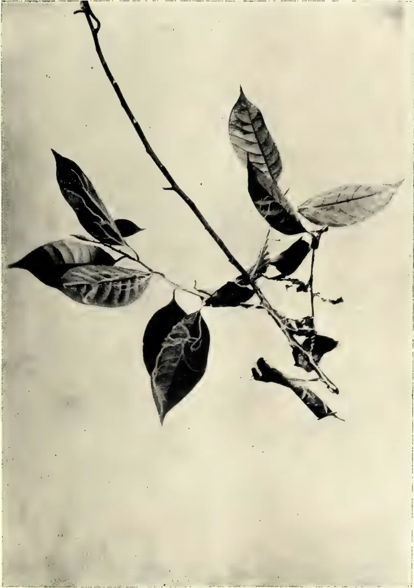
Photo by T. Petch.
THREAD BLIGHT ON NUTMEG
(A NATURAL SIZE.)
doubtful. In practically all instances, only the white mycelium has been seen, so that it is quite possible that these white threads do not represent the same fungus in all cases. Only in a very few species can fungi be identified from mycelium alone.
It has been kept under, on nutmeg, by cutting off and burning affected branches. Where it occurs on old stems, the white threads should be rubbed with the lime-sulphur mixture, recommended for Horsehair Blight (Tropical Agriculturist, December, 1905). Prunings which show Thread Blight must not be buried.
During a recent visit to the low-country, I found the combination of Thread Blight and Horse-hair Blight on bushes in the jungle; the tea in the same district is attacked by the latter but not by the former. At the same time I learnt that the name Thread Blight has been commonly applied to any white threads in the soil. These may be part of any one of thousands of fungi; they are the vegetative part of the fungus, corresponding in function to the root, stem, and leaves of a flowering plant. It is not possible, and never will be possible, to identify a fungus from the threads alone, but it is quite certain that the majority of them are harmless. True Thread Blight grows on the leaves and stems of living plants.
At the opening of the new spraying season it may be of some advantage to call attention to a point connected with the operation which hitherto has been strangely neglected. That point is the suitability or unsuitability for mixing of various materials used in spraying. Fruit-growers and managers of spraying experiments not infrequently mix materials without any consideration of the chemical reaction which may take place between two or more of them. In combining insecticides and fungicides there is, of course, a desire to battle with the two classes of fruit pests in one operation; but if the materials chosen for this double purpose will decompose each other and enter into fresh combinations, it is important to consider what those combinations will be, whether they will be harmful or inert, and whether they will be mechanically objectionable on account of the difficulty of passing the mixture throughout the nozzles of a spraying machine.
Extremely few fruit-spraying trials have been made in this country, but they have been numerous in the United States, and it was the practice of mixing materials in that country which led me to make some inquiries as to the effects of such mixing, and as to mixtures which seemed worth trying if they could be used without decomposing the effective elements.
Some mixings cause partial decomposing of constituents, and yet leave them apparently effective. A notable example is the combination of Paris green and Bordeaux mixture. Messrs. Blundell, Spence & Co., manufacturers of Paris green, state that the addition of Bordeaux mixture to it decomposes the Paris green, producing a much less poisonous and efficient combination of the copper and the arsenic. But it is partly for the purpose of reducing the poisonous action of Paris green that the addition of Bordeaux mixture to it is commonly recommended and practised in the United States. The mixture has stood the trial of prolonged experience, and its effectiveness as an insecticide and fungicide combined has been demonstrated in the numerous experiments. The objection to it, as to Paris green alone, is that it often seriously injures the foliage of fruit trees, even when used in such moderate proportions as 8 oz. of Paris green with Bordeaux mixture containing 8 lb. of sulphate of copper to 100 gallons of water.
Plant Sanitation.226The use of lime with Paris green to neutralise its action upon foliage is also commonly recommended; but this probably decomposes the poison to a much greater extent than does the Bordeaux mixture.
In consequence of the injurious action of Paris green upon foliage in a tender stage, the use of arsenate of lead is becoming more and more common as a substitute. As this poison is quite harmless to foliage, it is a pity that it cannot be mixed with either of the two ordinary fungicides without losing its efficiency. Dr. Dyer was consulted upon the point, and he stated that if arsenate of lead were mixed with Bordeaux mixture, the lead, by the action of the sulphate of copper, would be converted into ineffective sulphate of lead. Similarly, if potassium sulphide as a fungicide, instead of the Bordeaux mixture, were mixed with arsenate of lead, the result would be the formation of ineffective sulphide of lead and comparatively useless potassium arsenate or potassium sulpharsenate. Again, the mixing of Paris green and potassium sulphide would lead to the conversion of the copper in the former into useless copper sulphide, leaving only the arsenic to be relied on as a poison. In this case apparently the fungicide would be the agent rendered ineffective, while the insecticide would still retain considerable virulence.
For two seasons some extensive spraying experiments have been carried on by the authorities of one of the principal experiment stations in the United States, in which Bordeaux mixture and arsenate of lead have been combined for the purposes, mainly, of checking attacks of the Codlin moth caterpillar and scab in apples and pears. The constituents were 10 lb. of copper sulphate, 7 lb. to 10 lb. of lime, and 3 lb. of lead arsenate to 100 gallons of water. The trees were sprayed three times, and the results were decreases of both attacks, but not to a nearly sufficient extent to be regarded as satisfactory. No doubt the explanation is the impairment of the constituents in the way described by Dr. Dyer. As Paris green had proved harmful to foliage, the arsenate of lead was used instead, apparently without any consideration of possible decomposition. There is nothing unusual in this neglect of an important consideration. In all the numerous reports from American experiment stations relating to spraying that I have read, not one has entered into the subject of the effect of mixing spraying materials from the point of view of possible decomposition. It is not surprising, then, that in the numerous pamphlets on spraying issued in the United States, chiefly by manufacturers of spraying machines, the point in question is ignored; and the most incongruous mixtures are commonly to be found among the prescriptions.
It appears that a combination of Paris green and Bordeaux mixture in spite of the partial decomposition of the former, remains the most effective combination of an insecticide and a fungicide used at present. For the first application, just before the buds open, it would be harmless to the trees; but if applied immediately after the blossom has fallen, when it is most needed for the destruction of the Codlin moth caterpillar, my experience in last season's operations induces me to advise that only 6 oz. instead of the usual 8 oz. per 100 gallons should be used, because the foliage is then in a tender stage. The use of 8 oz., with Bordeaux mixture, at this stage, greatly injured the foliage of my apples and plums. That the Paris green was the cause of the injury was proved by precise trials on trees not previously sprayed, a branch on each of several apple trees being treated with Paris green at the rate of 8 oz. to 100 gallons, other branches on different trees with Bordeaux and Paris green, and a third set with Bordeaux alone. Each branch was labelled in reference to its treatment, and it was found that the Bordeaux mixture alone had no injurious
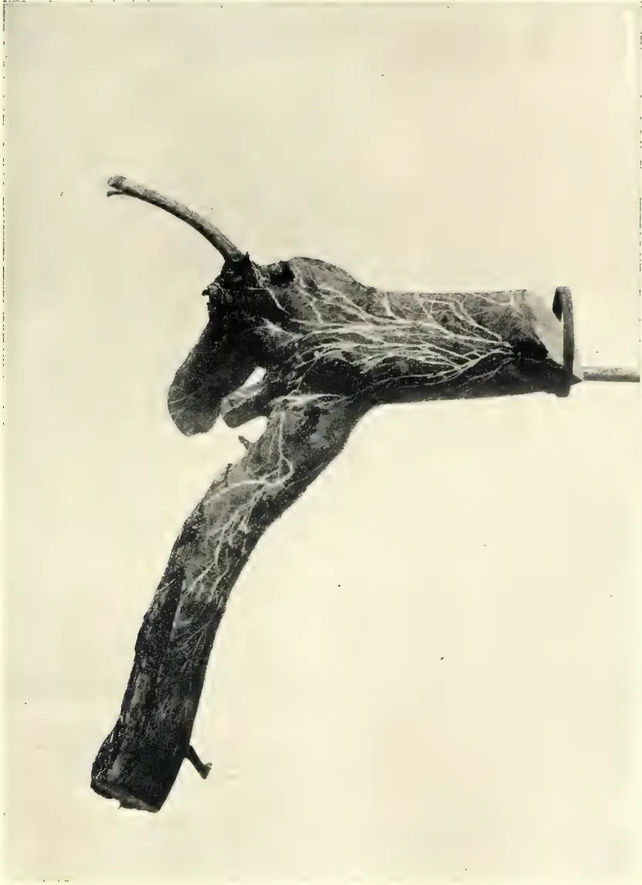
Photo by T. Petch.
THREAD BLIGHT ON TEA.
[1 NATURAL SIZE.)
effect whatever upon the foliage, whereas each of the other applications caused scorching and ultimate defoliation. In this experiment, it must be explained, the spraying was done with a garden syringe, and the foliage was more nearly drenched than it would have been by a spraying machine with fine nozzles. But it is almost impossible to prevent men who do spraying work from drenching the trees. They are not satisfied with covering the foliage with a fine mist of spray, which is all that is required, and, unless constantly superintended, they keep on spraying a tree till the stuff drips off the leaves.
The third spraying, often necessary to poison the food of leaf-eating caterpillars and to check scab in apples and pears or leaf-blight in plums, is done when the foliage is better able to withstand the effect of Paris green than it is in its half-developed stage. It is much to be regretted, however, that no fungicide has been discovered which will mix harmlessly with lead arsenate. As there is none available, it may be suggested that, in spraying against the Codlin moth, just after the blossom has fallen from apple trees, arsenate of lead alone should be used. Then, if scab be apprehended, Bordeaux mixture can be applied a few days later. Where Codlin moth is not troublesome, a combination, which is at once about the most effective against the apple-sucker and the aphid and a check to scab in apples and pears and leaf-blight in plums, is fortunately not liable to cause decomposition. This is a mixture of quassia, soft soap, and potassium sulphide. As the two former ingredients, liberally used, proved strong enough to kill the saw-fly caterpillar on gooseberry bushes last season, completely clearing the infested bushes, they would be equally effective against other leaf-eating caterpillars, at least if the pests were sprayed when young. This mixture would not poison the food of the pests, as Paris green or lead arsenate does, and therefore it would act only upon broods existing at the time of spraying. But in many plantations apple-suckers and aphides on apple trees, and the latter on plums, are much more destructive than any caterpillars, and in such cases this unobjectionable mixture is strongly to be recommended. The strength which proved effective against saw-fly caterpillars was one of 12 lb. of quassia chips and 12 lb. of soft soap to 100 gallons of water. The chips were boiled for an hour in twelve gallons of water with half the soft soap, and after the liquid had been drawn off, the same chips were boiled again with the other half of the soft soap, and the two decoctions were mixed and diluted. To this mixture 6 lb. of potassium sulphide, after being separately dissolved, should be added as a fungicide. If applied just before the leaf-buds on apples and plums open, it may do much to prevent apple-suckers and aphides from harbouring on the trees where they are hatched, and possibly to check scab and leaf-blight. The operation may be repeated after the blossom has fallen for the same purposes. The two insect pests by that time will be showing on the trees, if they are to appear at all. Many young caterpillars also will be killed by this spraying.
If, in spite of the operations just described, leaf-eating caterpillars are found to be infesting the trees, spraying with arsenate of lead, 3 lb. to 100 gallons of water, may be necessary; or, if scab is persistent on apples and pears, or leaf-blight on plums treatment with Bordeaux mixture will be beneficial. Prescriptions for the preparation of lead arsenate differ slightly in proportions of constituents. Dr. Dyer states that one pound of dry arsenate of soda to 3 lb. of acetate of lead would make tribasic arsenate of lead, the actual quantity of which would be lb. Both constituents should be of 98 per cent. purity. They should be dissolved separately and mixed well. Similarly, the quantity of arsenate of lead to 100 gallons of water varies in different recipes. A Bulletin from Cornell University says to 2 lb. to 8 lb. Another prescription says 2 lb. "or even more, as it does not hurt the foliage." An excessive quantity of the poison is wasteful; but, on the other hand, the
Plant Sanitation.228probable explanation of arsenate of lead having proved less effective than Paris green in some cases, according to reports of fruit-growers, is that it has been too much diluted. This poison was first recommended for use in spraying in 1892 by Mr. F. C. Moulton, an American chemist. When first tested, such weak solutions as 6 oz. to 8 oz. to 100 gallons of water failed to kill caterpillars quickly, while 1 lb. to lb. were regarded as satisfactory. No injury to apple foliage occurred in a trial of 16 lb. of arsenate of lead to 100 gallons, but 3 lb. would be ample, and as that quantity has been used in many trials recently, it may be recommended. To make this quantity, according to the formula given above, lb. of acetate of lead and lb. of arsenate of soda would be required.
The difficulty of spraying with lime, sulphur, and soft soap, to prevent birds from devouring the buds of gooseberries, has previously been noticed. This is one of the combinations which do not make suitable spray-liquids, as a flaky soap of lime is formed, while the sulphur also is brought out of such combination with the lime as it had made by being added in thin layers, while successive layers of lime were slaked, or by being boiled with the lime. The same objectionable conditions resulted from the addition of soft soap to calcium sulphide properly prepared by a manufacturing chemist. Therefore, potassium sulphide and soft soap, which combine well, making an excellent spraying fluid, with some other preparations, were tried last season, unsprayed bushes being left as checks. The experiment proved futile, however, as unsprayed and sprayed bushes alike were untouched by birds in the winter of 1904-5, possibly because it was an exceptionally mild one. The lime, sulphur, and soft soap spray appeared to have an invigorating effect upon the bushes, while cleansing their stems and older branches of moss and lichen. This season a new combination has been used on gooseberry bushes, consisting of 60 lb. of lime, 30 lb. of flowers of sulphur, and 12 lb. of caustic soda to 100 gallons of water. It has been tried in two seasons in several orchards of apples, pears, plums, and peaches by the authorities of the New York Experiment Station to kill scale and to check scab and otherwise to act as a caustic spray when buds are dormant. The sulphur is made into a paste, thinned gradually, poured over the quick-lime, and mixed well with it while the latter is slaking, the caustic soda being added and well stirred in immediately afterwards. This is termed a self-boiling spray, and it makes an excellent mixture which, after being strained through fine brass wire gauze, passes freely through the nozzles of the spraying machine. It adheres well to the bushes.
In one of the apple orchards in New York State this spray is reported to have damaged seriously the leaf and blossom buds; but the branches of the trees, it is stated, were "repeatedly drenched" and "much oversprayed." In four other apple orchards no appreciable injury was done to the trees. The spray proved very effective for the destruction of scale, and considerably so in checking scab, while leaf-curl in peaches was almost entirely prevented by it. Why this preparation harmed apple buds, even when excessively sprayed, is unaccountable, unless they were too much advanced, as lime and sulphur appeared to invigorate gooseberry bushes, while the mischief is not attributable to the caustic soda, as it occurred also after spraying with lime and sulphur boiled together, without any soda. But the spraying was done in April, which was probably too late in the season. Coating the buds over thickly with lime and sulphur just before the time of expansion may be easily imagined to be possibly injurious; and it is stated that the buds were "well swollen" when the operation was performed. In the four orchards where no appreciable damage was done the spraying was probably much lighter. In full confidence that this mixture will not harm entirely dormant leaf or blossom buds, it has been used this season on apples as well as gooseberries instead of the usual winter wash
229Plant Sanitation.of caustic potash and soda, over which it appears to have some advantage, particularly as a partial preventive to scab. So far as personal experience indicates, the caustic potash and soda, used year after year as a spraying mixture in February, have no effect whatever as a preventive of scab, apple-sucker, or aphid, valuable though they are for cleansing the trunks and branches of the trees of moss, lichen, and American blight, and possibly for destroying hibernating insects and eggs. The attacks of the apple-sucker, the aphid, and scab could hardly have been worse than they have been where this spray has been used, while infestation by caterpillars has been slight, the Codlin moth larva being "conspicuous by its absence." It does not follow that the caustic spraying has been the cause of this immunity. In the New York State experiments the lime, sulphur, and caustic soda mixture was of no effect as a preventive to the Codlin moth. For that purpose it was followed by two sprayings with Bordeaux-arsenical mixtures.
It is obvious that the spraying of fruit trees and bushes is at present in a crudely empirical stage, and that a great number of experiments more varied and precise than those which have been carried out hitherto require to be conducted before the practice will be placed upon a satisfactory basis. There is much to be learned as to the best insecticides and fungicides, the most effective strength of each compatible with safety in application to different fruits, the suitability of various materials for mixing, and the most appropriate seasons for operations desirable for various purposes.—W. E. Bear in the Journal of the Board of Agriculture.
By H. F. MACMILLAN.
ILLUSTRATED.
Rainfall averages in inches.—Peradeniya 9.61; Colombo 11.03; Ratnapura 12.91; Galle 10.24; Trincomalie 2.00; Jaffna 2.35; Anuradhapura 7.26.
The commencement of the April rains should mark practically the starting point of the year's work in low-country gardens. Although planting and sowing operations should in general be deferred till the approach of the south-west monsoon, due towards the end of May, the requisite preparations should now be put in hand. The soil will be all the better for being tilled sometime previous to being used, so that digging, trenching, &c., must now begin. It is well to prepare for the torrential showers which are characteristic of this season, and to provide for the safe escape of excessive rain water. All drains, culverts, catchpits, &c., should be examined and freed from the accumulation of leaves and rubbish which the late winds are likely to have caused; neglect of this precaution may involve serious and sudden damage to roads and paths. As soon as the ground becomes softened by the rain, dig all beds and borders as deeply as circumstances will allow, turning the surface soil well under and breaking up large clods. For this purpose a strong digging-fork should be used, employing a mammoth only in places where there is no danger of damaging roots and bulbs.
FLOWER GARDEN.—Tillage and manuring are as essential here as elsewhere, for without both a fine floral display need not be expected. No time should be lost in taking up Cannas, Caladiums and other tubers, and digging the beds or borders to not less than fifteen inches, at the same time mixing a liberal quantity of manure with the soil. It is only by such treatment as this that Cannas especially will produce the fine effects they are capable of. Prepare beds similarly for seeds of showy annuals, bringing the surface to a fine tilth, and placing thereon a layer of finely-sifted leaf-mould. Propagate in a sheltered corner cuttings of such plants as Coleus, Salvia, White Vinca, Iresine, &c., to be in readiness for planting out later. Seeds of such annuals as Gomphrena, Cosmos, Torrenia, Helianthus, &c., may now be sown, and later, when the heavy April showers are past, the more tender annuals as Balsams, Zinnias, Marigold, Phlox Drummondi, &c. Avoid the common mistake of sowing seeds too thickly. Seedlings should have sufficient room to develop into strong healthy plants, otherwise their blossoms will be poor and of short duration. Do not unnecessarily disturb the roots of Hippeastrums, Eucharis and similar bulbous plants (so-called "lilies"), but place liberal quantities of decayed manure round these when opportunity offers. Many of the ornamental shrubs and climbers will now require to be pruned or thinned out. White-ants will become active in wet weather, and persistent effort should be directed against them. Each nest should be dug up and the queen-ant destroyed. If available pour a small quantity of carbon bisulphide down the crevices and immediately close up the latter; this is considered the most effective means of destroying the nests. Various other remedies have also been to some extent found effectual, such as arsenic compounds, emulsified kerosine, and even plain boiling water.
VEGETABLE GARDEN.—After the necessary preparation of the ground the various native vegetables may be planted or sown. Plant out "sets" of yams (Dioscorea) in rows four feet apart, and place supports for the vines, such as bamboo tops, along both sides of the rows. Tubers or cuttings of Sweet-potato, Jerusalem
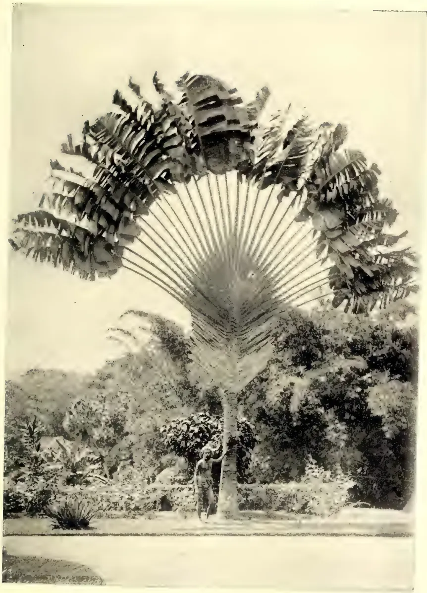
Photo by H. F. Macmillan.
"THE TRAVELLER'S TREE"
RAVENALA MADAGASCARIENSIS
Artichoke, Alocasia, Innala, &c., should be planted out in beds about three feet wide, with a path fifteen inches in breadth between the beds. Sow seeds of Gourds, Bandakkai, Bonchi, Dhara-dambala, Brinjals, Chocho, Maize, Katurumurunga, Nivithi, &c. Seeds of European vegetables, such as Peas, Knol-Kohl (or Kohl-rabi), Beetroot, Carrots, Scarlet-runners, Tomatoes, Lettuce, Parsley, &c., should not be sown till the beginning of the south-west monsoon. Celery should be sown under cover and the seedlings afterwards pricked out into boxes, finally transplanting them into a deep trench in which a good layer of manure and soil has been placed. Keeping notes of the various seeds sown or plants put out (the names of varieties, dates of sowing or planting, time of ripening, &c.) is a method to be especially recommended. The experience thus gained is, of course, of much value and enables one to avoid mistakes which are otherwise liable to occur. Therefore every bed, row or plot should have a label giving some such particulars.
FRUIT GARDEN.—March to April is the principal flowering season of most fruit trees. Mangoes, Mangosteens and Durians will now blossom in great profusion. Fork up the ground and mulch round the trees, for the quality of the fruit will be greatly affected by the treatment the trees now receive. Plantain clumps should be overhauled, cutting out barren stems and dried leaves and burying these in a trench round the plants. These are gross feeders and will take all the manure and mulch it is possible to give them, and, like other fruits, the quality of their produce is dependent on the degree of cultivation they receive. Growers of plantains would do well to grow only two or three of the best varieties, as “Suwandale” and “Koli-Kuttu.” In many districts only semi-sour and inferior varieties are cultivated. The list of fruits in season at this time of year is obviously not large; it includes the Star-apple, a large handsome West Indian tree (Chrysophyllum Cainito); “Bullock’s heart” (Anona reticulata) so-called from the shape of the fruit; “Avocado Pear” (Persea gratissima), which must rank as one of our best fruits; its proper season is July to September; and the “Velvet Apple” (Diospyros discolor), a kind of persimmon with pretty yellow velvety fruits.
FLOWERS IN SEASON.—Most of the species mentioned in my last notes are still making a fine show. To these may be added Schizolobium excelsum, a handsome deciduous tree introduced from Brazil, producing before the leaves a profusion of yellow blossoms; the latter form a beautiful yellow carpet on the ground as they drop. The simultaneous flowering of many “lilies” (Amaryllids) is a conspicuous feature of this season, especially striking being the pure white-flowered Hippeastrum solandraeflorum, var. and the bright pink-flowered Zephyranthes carinata (“Rose amaryllis”), both introduced from South America.
By J. K. NOCK.
FLOWER GARDEN.—Notes have now been written for a full year, and with the Calendar recently brought out by the Ceylon Agricultural Society, which embodies a brief review for each month, the general routine work should be fairly clear, and the time has now arrived when attempts will be made to deal in detail with the more difficult subjects, as is being done with the crops of the vegetable garden. It is necessary to emphasize the importance during April of collecting and sowing seed to raise plants for the upkeep of beds and borders until the end of the year, frequent stirring of the soil, maintaining drains and culverts open in anticipation of rain etc., etc. Most of the annuals become unsightly when seeding, and should be pulled up as soon as sufficient seed has been gathered;
31 Horticulture.232the vacancies thus caused may be supplied when the weather is propitious. Sow lawn grass seed as advised last month, and take care to pull out, by the roots, weeds as they appear. Before the May issue of this Magazine is out the S. W. winds will probably have commenced, and I would advise that all tender plants and those in exposed spots be staked neatly early in May, as there will be plenty of other work to attend to in the way of clearing up etc., as soon as the Monsoon bursts, and many plants become positively ruined when once blown over. A propos of these notes and the Calendar I have compiled, many planters have requested me to write separate notes for their district, but with so many different climates with which I am not at present well enough acquainted, this is too big an undertaking for the time I have at my disposal, and a simple way of making the notes applicable to all districts is, as I once pointed out before, to go by the weather. In the Calendar the average rainfall and rainy days at Hakgala is given for each month, which renders the matter easy.
IN FLOWER IN THE HILL GARDENS.—The number of species and varieties now in flower runs into hundreds, and only a visit to the Gardens could satisfy those interested. Worthy of mention are:—
Doryanthes Palmeri, a gigantic half-lily, half-palm looking plant belonging to the Natural Order Amaryllidaceæ, which has a flower stem 12 feet high bearing over ninety crimson flowers. The aloe-like leaves are 8 to 9 feet long, and without the flower stem the plant is very ornamental and especially suitable for lawns. It appears to grow in almost any soil, preferring a rich loam, and is readily propagated by suckers.
Gaura Lindhiemeri.—This perennial onagrad was introduced from Messrs. Sutton & Sons last September, and is now in flower, bearing graceful sprays of delicate white flowers. It is hardy and should find a place in every garden.
Lavatera Rosea Splendens.—Another introduction from the same source, but an annual. It grows to a height of three feet. The flowers are two to three inches in diameter, of a brilliant rosy pink and useful for cutting, retaining their beauty for a considerable time.
VEGETABLE GARDEN.—The last of the Potatoes should have been put in last month (March) in the Nuwara Eliya district, but where the S. W. wind and rains do not penetrate they may still be successfully grown. Capsicums and Chilis (Capsicum annum and C. baccatum of the Natural Order Solanaceæ) are not as extensively grown as they might be as a vegetable relished by most people who have tried them, apart from their ornamental appearance. The general idea seems to be that they are unbearably hot, but a Capsicum such as "Sutton's Mammoth Long Red" needs only a trial to convince one otherwise. In pots they make very ornamental subjects. Their cultivation is easy, any light rich soil suiting them well. Sow the seeds in September, preferably in a cool house at the highest elevations, and prick out the seedlings when large enough to handle without damage, and finally plant out. In Nuwara Eliya itself they can scarcely be said to do well, but from 5,000 feet downward results are always satisfactory. To prepare Cayenne the moisture should be removed from the chilis by placing them in an open basket in an oven not allowing the heat to become too great, then pound them fine with hot dry salt. "Sutton's Tom Thomb" is a useful chili to grow, and very pungent.
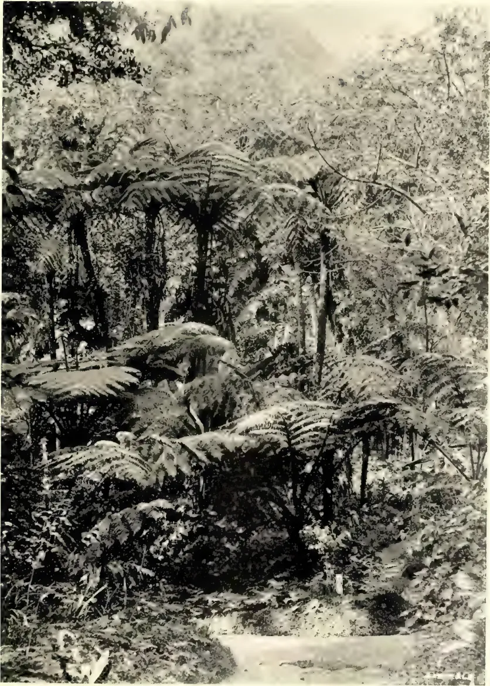
Photo by H. F. Macmillan
THE FERNERY, HAKGALA GARDENS.
ELEVATION 5,500 FEET; AVERAGE ANNUAL RAINFALL, 91.50 INCHES: AVERAGE
TEMPERATURE 60.2
BY ANANDA K. COOMARASWAMY, D.Sc.
It is well-known that the progress of agriculture and growth of prosperity in Denmark during the last twenty or thirty years have been remarkable. Without going into details, their enormous export trade to England of breakfast-table commodities such as butter, eggs, bacon etc., are alone a proof of this. The immediate cause of this progress appears to be the development of co-operative societies and the high level of intelligence of the peasant classes. The whole of Danish agriculture is controlled by a network of local co-operative societies, in close touch with Government experts; these societies reduce expenses by dealing with large quantities of produce, and at the same time teach improved methods, and effect a profitable distribution of the products. It is claimed by the Danes that their success is largely due to the development of the people's intelligence by means of education.
If we turn to Ceylon we are surprised to hear a different story. We are told, not without truth, that education is demoralising the agricultural classes; the villager's son who gets a smattering of "English" education, considers himself demeaned by returning to agriculture, and he becomes an idler and a ne'er-do-well—a man who falls miserably between two stools.
How is this? We cannot suppose that education is good for one race and not for another, or that it is desirable in temperate and disastrous in tropical climates. Is it possible that the explanation lies in the different kind of education aimed at in the two countries?
Let us enquire into the Danish system, to which the Danes themselves attach so great a value. I shall extract my account from the Report of a Deputation sent from Ireland to study co-operative agriculture in Denmark, "Report on Co-operative Agriculture and Rural Conditions in Denmark." Dublin, 1904.
"The most important branch of the system of education in Denmark lies in the series of Popular High Schools and Agricultural Colleges. . . The Popular High Schools do not teach how to make butter, cure bacon, or to plough, although Denmark has become a wealthy nation by its yield of agricultural produce, chiefly for the English market. Improvements in reading, writing and arithmetic, together with the history of all nations, but especially the history and literature of Denmark, are taught. Should pupils so desire it, foreign languages are included in the curriculum. A strong religious feeling permeates the whole course of instruction. National songs and folk lore play a more prominent part in the system of education than any other subject. A most remarkable incident was witnessed; prior to a lecture being given, the whole of the pupils—in this case numbering 108 full-grown men—sang an old Danish national song as an introduction to the work before them, and this appears to be the custom in the schools before commencing nearly every lesson or lecture. The whole theme of the song was the inspiration of the peasant with hope and enthusiasm in his capacity as a citizen. It is claimed in Denmark that this general education, obtained at the High Schools, and not so much the technical education, has been the development of the country. . .
Education.234“The aims of the Danish people, for which these schools are working, can be classified under these heads:—First and foremost, to foster the love of country and national feeling. . . . The second aim is to educate the people that they make full use of their free constitution; and the third, to prepare the young to better fit them for the fight of existence, which is daily becoming more acute. To attain these objects the first essential appears to be to develop the personal character and to make the young man and woman true and honest Danes. To do this, they rely more on lectures, giving instructive and interesting examples of the history, and teaching the best literature of the nation than anything else. Concurrently, instruction in discipline is given, followed by instruction in the services, on which are based the economic success of agriculture.
“In many cases there is attached to the High School a course of technical agriculture, or an Agricultural College, but these latter are not nearly so numerous as the Popular High Schools. . . . The object in placing an Agricultural School in close proximity to a High School, renders it possible for a teacher to give instruction in both schools, and also it creates to some extent a desire on the part of the pupil in the Popular High School to return the following year to the Agricultural College. . . .
“The result of this patriotic and practical system of education unquestionably justifies the high compliment paid to the Danish peasant by the Norwegian poet, Bjoinson, who describes them as ‘the best enlightened peasantry in the world,’ and it is particularly worthy of notice, and perhaps the inevitable product of the system itself, that the different classes of the Danish people co-operate for educational purposes in a manner almost unknown, and certainly never equalled in any other country. . . . The highest in the land are proud to associate with the humblest artisan and farm labourer in the consciousness that the outcome of such association will be to strengthen the intellectual energies of the nation and elevate the wealth producer’s conception of the duties and responsibilities of citizenship. . . .
“A committee. . . . have issued thousands of pamphlets on popular and scientific subjects, which are sold to the peasant population at an average price of one penny each, and which have been of immense importance in the spread of general information among the working and agricultural classes in the country.
“A committee has been formed at Copenhagen whose members accompany rural excursions to the public buildings and museums in the city, and give the fullest instruction on all objects of interest free of charge. Owing to the existence of this committee hundreds of rural excursions are organized every year to visit the museum, picture galleries and antiquarian collections, and with the happiest results.
“A free theatre was brought into existence in 1891, in order that the rural population might be afforded the opportunity of witnessing the best plays of Danish and Norwegian authors at intervals, and on such occasions as to harmonise with the various country excursions organized for educational purposes to visit the towns. Moreover, a series of concerts are held throughout the year, to which work-people and peasants are admitted at a nominal charge, and thus every element instrumental in the creation of a vigorous and happy national life is brought into frequent contact with even the humblest stratum of society. . . .
“The same ideas with regard to education prevail throughout the Agricultural Colleges, national character and history being more important than anything else, concurrently with the development of which, courses in agricultural instruction are given. The courses of instruction consist of National History and Literature (which in all cases stands out foremost), Physics, Chemistry, Natural History, Anatomy, Physiology, with practical demonstrations. . . .
235Education.“The problem presented to educationists was: How to impart a certain amount of intellectual culture to the people without putting them out of concert with agricultural work. The solution was found in the Popular High Schools, and almost every educated Dane will at once assert that the great economic results achieved by the Danish people are in a great measure due to these establishments. . . .”
From all this it may be concluded that the Danish Popular High School system of education, and the thousand and one forms of organization which have sprung from it, have rendered Denmark absolutely free of the existence of what might be described as a lower order, or one without well-defined vital interest and standing apart from the spiritual life of the nation.
Now let us apply this information to Ceylon. Is it not possible that in Ceylon, it is not education itself that is at fault, but the kind of education aimed at? Might not the people's own intelligence be better developed by the imparting of their own national culture, than by attempting to Anglicise at the cost of national feeling? Denmark and Ceylon are both small countries with predominant agricultural interests; what is of so much value to Denmark may surely be of help in Ceylon; I do not of course suggest a slavish imitation of the co-operative system, or even of the High Schools, but it is the principle underlying the educational methods which might be of such value in Ceylon. I believe that nothing can foster the growth of public spirit and general intelligence—and surely this, and not the mere storage of information is the true aim of education—except a truly national education and the fostering of a national spirit. Without this broader education on national lines, progress, economic and intellectual alike, will remain at a standstill, for lack of unity and organizing power amongst a people whose intellects are now dulled, on the one hand by the lack of any education at all, or on the other, by an entirely foreign system of education which makes no appeal to their imagination or their intellect.
By H. W. POTTS.
The small kingdom of Wurtemberg, of the German Empire, with a population of 2,000,000 living on an area of 7,531 square miles is probably the most complete example of the effect of agricultural education we possess. A contented, happy, and prosperous people is the verdict of all who visit this fertile country. Sixty-four per cent. of the land is arable, and 75 per cent. of this is in the hands of the well fed, housed, and clothed peasant proprietors, whose farms are of the average size of 14 acres. Cereal crops, tobacco, fodders, sugar-beet, chicory, grapes, fruits, and vegetables are grown in wonderful profusion. The rearing of live stock and dairying are conducted. Land is easily acquired by thrifty workmen, for which they are indebted to liberal land laws and the excellence of the country roads, also the establishment of village banks from which money is secured on easy terms. It is only fifty years since Wurtemberg had the reputation of being one of the poorest of the German Provinces. Agriculture failed to provide a means of subsistence, mainly owing to a bad system of financial aid and the ignorance of the peasants.
Education.236To two leading men is due the credit of raising the country to its present happy condition of affluence, prosperity, and contentment. A pauper is now unknown in the country. A scheme of village credit banks to advance money to small land holders, to be returned in small weekly instalments, was designed and brought into practical operation by Dr. Raiffeisen. Dr. Steinbeis visited the Great Exhibition in London in 1851, and there the idea occurred to him of formulating a scheme of technical education for the rural population of his native country. His book "Elements of Work Schools" formed the basis of a compulsory and universal teaching of agriculture.
The first of the winter schools was compulsorily brought into operation in 1879, at which every pupil attended a course of general and agricultural education of at least two evenings a week for six months. There are now 700 schools, with an attendance of 16,000 pupils. There are over 100 voluntary evening schools, attended by 2,000 pupils over 18 years old. The village schoolmaster is trained at suitable centres in this course of teaching, and is assisted by itinerant specialists or experts in the technical details of agriculture. From these elementary schools pupils who desire to follow agricultural education further pass on to the Farm Schools or Colleges. There are five of these schools with model farms attached; a course extends over three years. The pupils are sons of small land-owners, farmers, and agricultural labourers. They receive board and instruction free of charge, giving their labour on the land for this privilege. From these farm schools the student has the opportunity of entering what is generally recognised as the best agricultural college in Germany, and probably the most perfect institution of its kind in the world, the Agricultural University of Hohenheim, which has been established since 1818. It was promoted to the rank of a University in 1847. To it is attached a College of Forestry, a model farm, technological institute, sugar factory, distillery, brewery, vinegar factory, laboratory for testing garden and farm seeds, and a department for proving agricultural machinery, a butter and cheese factory and model dairy, poultry yards, live stock departments, fish-breeding ponds, and a bacteriological institute. A splendid museum is attached, in which is found a unique collection of agricultural products and implements, soils, and minerals.
The library contains 14,000 volumes, and an herbarium of some 30,000 plants. The physical, chemical, botanical, and biological laboratories are models for teaching purposes and equipment. All agricultural implements and machines are submitted to rigid examinations and tests in the presence of the farmers. New methods of culture, manuring, new varieties of plants and seeds, are tested by a competent and separate staff. This splendid system of complete agricultural education, combined with the establishment of the co-operative banks first started by Raiffeisen in Stuttgart in 1880, have doubtless provided the requisite stimulus and knowledge to effect such excellent results. There are over 700 of these co-operative banks in Wurtemberg—the usurer has disappeared. The vote for agricultural education for the province exceeds £80,000 per annum. A compulsory course of training in agriculture, gardening, and horticulture of two hours weekly is found in all the primary schools of the German Rhine Province during the final two years of the school curriculum. The teacher is given a free hand in determining the character and scope of the training in which the agricultural needs of the district are to be considered. The success of the tuition, it is fully recognised, largely depends on the theoretical and practical knowledge possessed by the teacher, his enthusiasm, and ability to teach.
In France the Organic Law of 1850 placed "Elementary instruction in agriculture" as an optional subject for teaching in the curriculum. An agitation commenced in 1860 to make the teaching of agriculture in the primary schools obli-
237Educationgatory; this terminated in 1879 by provision being made for departmental and communal instruction in agriculture by means of departmental centres, and further made primary instruction in the elements of agriculture an obligatory subject.
In the instructions issued to teachers under this law they are advised that 'they should commence by employing visible and tangible objects, which they should make the children see and feel, thus putting them face to face with concrete realities; then by degrees they can exercise them in obtaining from these objects abstract ideas, by comparison and generalisation, and by the use of the reasoning faculties without the aid of actual specimens.' The law of March, 1882, made compulsory teaching "the elements of physical and natural science with their application to agriculture." In 1888 a further revision of the methods of teaching agriculture in the primary schools was declared essential. Finally, the French Minister of Instruction issued the following guide to Public school teachers on the 25th of April, 1898, to direct them in this routine work of teaching elementary agriculture:—
"Instruction in the elementary principles of agriculture, such as can be properly included in the programme of primary schools, ought to be addressed less to the memory than to the intelligence of the children. It should be based on observation of the everyday facts of rural life, and on a system of simple experiments appropriate to the resources of the school, and calculated to bring out clearly the fundamental scientific principles underlying the most important agricultural operations. Above all, the pupils of a rural school should be taught the reasons for these operations, and the explanation of the phenomena which accompany them, but not the details of methods of execution, still less a resumé of maxims, definitions, or agricultural precepts. To know the essential conditions of the growth of cultivated plants, to understand the reasons for the work of ordinary cultivation, and for the rules of health for man and domestic animals—such are matters which should first be taught to every one who is to live by tilling the soil; and this can be done only by the experimental method. The master whose teaching of agriculture consists only in making the pupils study and repeat an agricultural manual is on the wrong path, however well designed the manual may be. It is necessary to rely on very simple experiments, and especially on observation.
"As a matter of fact, it is only by putting before the children's eyes the phenomena to be observed that they can be taught to observe, and that the principles which underlie the science of modern agriculture can be instilled into their minds. It should be remembered that this can be done for the rural agriculturists only at school, where it will never be necessary to teach him the details which his father knows better than the teacher, and which he will be certain to learn from his own practical experience. The work of the elementary school should be confined to preparing the child for an intelligent apprenticeship to the trade by which he is to live, to giving him a taste for his future occupation; with this in view, the teacher should never forget that the best way to make a workman like his work is to make him understand it.
"To sum up: The aim of elementary instruction in agriculture is to initiate the bulk of our country children into that degree of elementary knowledge which is necessary to enable them to read a modern book on agriculture with profit, or to derive advantage from attending an agricultural conference; to inspire them with a love of country life, so that they may prefer it to that of towns and factories; and to convince them of the fact that agriculture, besides being the most independent of all means of livelihood, is also more remunerative than many other occupations, to those who practice it with industry, intelligence, and enlightenment."
Education.238This entailed the provision for establishing school gardens and farms. At the present time nearly 4,000 primary schools in France have these farms. The training of teachers for rural districts includes agriculture. The superior primary schools' curriculum embraces lessons on general facts of agricultural production, treatment of the soil, principles of irrigation and drainage, the management of agricultural labour and machines, the study of insects, as well as special instruction in horticulture, arboriculture, and viticulture, the treatment and health of domestic animals, their breeding and fattening, dairy work, farm book-keeping, rural economy, bee-keeping, silk-worm culture, and poultry raising. Only those plants, animals, and methods are treated in detail which form a distinctive feature of the agricultural industry of the district. Weekly visits are made to farms, dairies, piggeries, and such like in the district, by the pupils accompanied by the teacher. Medals and money are awarded annually by the Government, municipalities, and agricultural societies, to both masters and pupils who distinguish themselves at competitive examinations on the subjects relating to agriculture and its allied industries.
The Director-General of Primary and Normal Instruction issued, under date 29th November, 1897, a report, in which is shown that in 471 elementary schools practical teaching in the rudiments of agriculture was given, but shortly afterwards a strong demand was made to attach a piece of land to each school, so that the essential rules of the art of cultivating the soil could be learned by observation and experiment. The appeal was couched in the following terms:—
“Let us return to the fields! This is the invitation which from all time men of superior understanding and of generous hearts have repeated to the Italians. Be it granted to us to join them; let us enamour the rising generation with the land! From the little garden, where the country teacher shall practically teach the rudiments of agriculture, upwards through the technical schools and the professional institutes, may the knowledge of agriculture continually be reinforced and elevated; everywhere may they reawaken the Virgilian affection for rustic labour.”
In less than six months, 2,257 blocks of land, varying in extent from a small garden to that of a farm, were presented for the purpose. Courses of instruction were arranged for teachers at the Royal School of Practical Agriculture of Ascoli Picera, and certificates were issued to those who attended. Other similar institutions were utilised, where teachers acquired a sufficient knowledge and training of the principles and practice of elementary agriculture. Lectures were given at 184 places, with a total attendance of 8,000 teachers. In 1899 12,000 teachers had obtained the certificate of attendance. Great care has been exercised to see that teachers know how to adapt their treatment of the subject to the age, intelligence of the pupils, and the local needs of the district; and also that the teacher possesses the aptitude, experience, and education necessary for his work. The Department declined to adopt a general text-book for pupils, on the grounds that it depended solely on the efforts of the teacher, for whom it was more essential to be provided with a text-book. During the year 1898-9, 8,000 rural schools were given instruction on the subject.
To each elementary rural school a fruit garden is given. Special attention is devoted to the theoretical and practical teaching of agriculture. In the National Schools, instruction in agriculture is combined with natural history. The tuition embraces the description of domestic animals, vegetables, and minerals; the cultivation of vegetables and fruits, the breeding and rearing of cattle, agricultural methods, and, where local conditions are suitable, silk-worm rearing.
239Education.HUNGARY.Hungary boasted of an agricultural college in the eighteenth century and may claim priority amongst the countries of the world in providing systematic agricultural education for her people. Lectures on agriculture were first given at the University at Nagy Syombat in 1680. The first farm school was established at Syarvas. A Chair of Agriculture was established at the University of Sciences at Buda in 1777. Agricultural schools and colleges were established and endowed by several noblemen. There are now four agricultural colleges with courses ranging from two to five years. Winter farm schools are maintained by the Government, at which 300,000 students attend.
Agricultural education now comprises:—
Higher teaching in the Agricultural Academy, with a yearly attendance of 157 pupils.
Intermediate education, provided by four agricultural colleges, at which there is a yearly attendance of 502 students.
Practical teaching and training in farm schools.
Itinerant teaching, conducted by seven departmental professors, who travel from place to place teaching, and four experts for the cultivation of hops, hemp, dairying, and promotion of rural associations.
Twelve professors are engaged in training teachers for the rural schools.
The staff of the Department of Agriculture numbers 185 professors, teachers, experts, &c.
SWITZERLAND.In Switzerland there are sixteen agricultural schools with about 400 students, who pay in fees £16 per annum each. The expenditure devoted to agricultural education has risen from £49,000 in 1888, to nearly £200,000. This is given towards the support of agricultural schools, aid to farmers, improvement of stock, prizes, &c.
DENMARK.The extraordinary agricultural development of Denmark is attributed to the intelligence and capacity for organisation of the Danish farmers, and mainly to the education received by the peasantry in their rural high schools, and to the distribution of land amongst freeholders. There are 224,000 farms in Denmark, ranging from 7 to 110 acres each, of which more than 94 per cent. are farmed by their owners. Sir John Gorst, in referring to the progress of technical education in Great Britain, recently made the following remarks as to Denmark:—
“The important influence technical education had on the national, social and economical development of the people was indicated in the case of Denmark, which had, from being the poorest of European countries, become one of the richest, and that by producing butter, bacon, and eggs chiefly for the English market.”
SWEDEN.The practical teaching of agriculture with aboriculture has been in vogue for a very long period. Since 1865 the teachers of the National Schools have been trained in these subjects. The regulations of 1882 state:—“To every National School shall be annexed, so far as possible, a tract of ground to serve as an experimental kitchen garden, and it is the duty of the School Council of every parish to see that such kitchen garden is arranged in a manner suitable to the object of instructing the children in agricultural subjects.”
BELGIUM.In Belgium the introduction of teaching agriculture in the rural primary schools dates from 1884. Article 49 of the regulations states:—“The master must keep the garden belonging to the school in such a way that it may serve for
32 Education.240practical instruction in the rudiments of agriculture, horticulture and aboriculture. He must endeavour to make it into a model kitchen garden, containing the best varieties of vegetable and fruit trees."
Practical lessons both in class and in the gardens—on flowers, herbs, fruit trees, useful farm birds, and the common agricultural implements—are given at regular periods. The expenditure of the Department of Agriculture exceeds £100,000 per annum.
England has not been prominent in forwarding agricultural education with anything like the organisation and energy displayed by other countries in the past; of late, however, a marked change has swept throughout the rural counties. In 1887 the English Government set aside £5,000 to be distributed among the agricultural and dairying schools.
The Board of Agriculture distributes grants to Universities, Collegiate and other institutions engaged in teaching agriculture and allied subjects. It inspects educational and experimental work. It conducts experiments. It publishes a monthly Journal and leaflets to farmers. The County Councils are awakening to the importance of this work, and now some twenty-six institutions are engaged in teaching agriculture, and something like £100,000 is expended annually in England on agricultural education and research work. No effort has been made yet to organise systems such as exist in Wurtemberg, France, Denmark, Belgium, Austria, Italy, United States, and Canada.
A Chair of Agriculture was founded in 1790 at the University of Edinburgh, but Scotland has always been to the fore both in education and agriculture. The Chair of Rural Economy, established at Oxford by Sibthorp in the eighteenth century, has not been noted for its agricultural activity. The Royal Agricultural College of Cirencester was established by private enterprise in 1845, and others followed.
The most noted of all efforts to establish agriculture on a scientific basis was the world-renowned experiment station at Rothamsted, established by Sir John Lawes. In 1899 a Chair of Agriculture was established at Cambridge, and a well-organised Department of Agriculture. The subject is also taught at the Universities of North Wales and Durham.
The Commissioners of National Education in Ireland make a special feature of their efforts to teach agriculture in all rural National schools. Numbers of these schools have school farms, gardens, and live stock. Rural teachers go into training in practical agriculture in residence at the Albert Institution, Glasnevin, near Dublin, for six weeks, where they qualify for certificates to earn special fees for practical agricultural instruction to pupils. Teachers are not only given this training free, but are allowed travelling expenses to and from the Institute from any part of Ireland. No teacher is permitted to give tuition in agriculture unless he has been trained and possesses a certificate of competency.
Two agricultural colleges are maintained, one at Glasnevin, Dublin, and one at Cork, where a sound system of agricultural training is provided. Itinerant dairy instruction is organised throughout the dairying centres.—Agricultural Gazette of New South Wales.
(To be concluded.)
241The keeping of bees, both for pleasure and profit, is, happily, much more frequent now than thirty years ago, when the advent of cheap sugar had nearly driven from the country markets the coarse honey gathered by the old straw skep system. This increase of bee-keeping has been brought about by the perfecting of the modern frame-hive, which enables the home of the bee to be laid open to view, and provides means whereby the store can be taken, fit for immediate use, without injury to the bees or their owner.
For any one desirous of becoming a bee-keeper the first step is to get a book on apiculture and study it. There are many now from which to choose, but the following may be recommended: "Modern Bee-Keeping" (price 6d.), published by Longmans, Green & Co., Paternoster Row, for the British Bee-Keepers' Association; and the "British Bee-Keeper's Guide Book" (price 1s. 6d.), by Thos. W. Cowan, F.L.S., 10, Buckingham Street, Strand, London. As a personal explanation of the terms used and of the outfit required is a great help, an interview should, if possible, be obtained with an experienced bee-keeper. In "Modern Bee-Keeping" will be found a list of Secretaries of County Bee-Keepers' Associations, any of whom will be able to furnish names of expert bee-keepers willing to render assistance if needed. The appliances required are: Black net veil; smoke, for subduing bees; wax comb foundation (brood and super); bottle-feeder; section boxes; frame-hive fitted with brood-foundation in ten or twelve standard frames, two division boards, section-rack or lift of shallow frames, a queen excluder and quilts. If the hive is to be worked for extracted honey, a centrifugal honey-extractor will also be needed. Additional useful articles are: Scraper-knife for cleaning floor-boards, frames, etc.; comb-uncapping knife for use when extracting; a straw skep for taking swarms; spare coverings of felt or carpet; a super clearer for clearing bees from section racks or supers.
There are many patterns of hives, all made to take the one British standard frame. A simple one should be chosen possessing accuracy of workmanship and soundness of material, so as to stand exposure to the weather for years. The outside of the hive should be thoroughly painted, to keep it rain and damp proof. It must be placed on its stand in a spot sheltered, if possible, from the cold north and east winds, and with a free flight for the bees in front. Space should be left behind it for easy access, then all manipulations can be carried on from the back; this avoids irritating the home-coming bees.
The swarm should be ordered either from a recognised dealer or from a neighbouring bee-keeper. The only safe way for a beginner to start is with a "head" or first swarm. By this means he will avoid all the pitfalls of disease or lack of condition, which only a practised eye can detect, but which beset the purchaser of second-hand stocks. Given a good season, a swarm should be able to establish itself, and provide some surplus for its owner in its first year.
When the box or skep containing the swarm arrives, it must be placed in the shade near the hive the bees are to occupy. The screws of the lid of the box should be taken out; or in the case of a skep the cording and wraps should be removed, and in the latter case the skep should be placed on a board with a fair-sized stone under its edge, to allow of ventilation. The bees will soon quiet down, and cluster, after the shaking up of their journey, and thus will be in a condition
Live Stock.242for handling easily. In the early evening the hive must be prepared to receive them. The shallow-frame lift or section-super should be taken away leaving only a thin quilt over the frames, which have already been fitted with brood-foundation. Then the front of the hive must be raised from the floor-board about an inch, by means of two wedges. Next, a board, the width of the hive, is placed in front of, and level with, the alighting-board, sloping down to the ground. This temporary board and the alighting-board are covered with a cloth hanging over the sides to the ground, to prevent bees from crawling underneath. Then the skep or box is taken between the palms of the hands, and carried mouth downwards, until it is just above the sloping board. With a smart jerk, the bees are thrown out in front of the hive, and they will at once begin to take possession of their new home. As they run in, watch should be kept for the queen. It is a satisfaction to see her safely enter her abode. When all are in, the wedges should be taken away and the front of the hive lowered to its proper place. Crushing of any of the bees must be avoided. Any that are in danger may be cleared away with a feather. If the swarm has been a long time on its journey, or if the weather is bad on its arrival, the bees will be greatly benefited by being supplied with half a pint of warm thin syrup, through an opening in the quilt and by means of the bottle-feeder. On the second day after hiving, the quilts should be turned back from the ends of the frames to ascertain if the "foundation" remains properly fixed, and to see if the work is going forward well. If this is the case the quilt may be taken off and the queen-excluder put on in its place. Over this a lift of shallow frames should then be placed and covered warmly with a quilt and carpets. The stock may now be left alone till the end of the honey season. More skill is required for obtaining comb honey in sections in good condition, but the section rack may be used instead of the shallow frames, if desired.
It is important that the beginner should clearly understand the principles that underlie successful bee-keeping. A colony of bees consists of a queen, a large number of worker-bees, and (during summer) a certain proportion of drones. The strength of a healthy stock depends on the vigour and laying power of the queen, who is at her best in her second season, i.e., a queen hatched in June, 1904, is at her best in May, 1905, and should be replaced by a young one in 1906, either by natural swarming or by re-queening. Queens may be purchased, or raised by the methods taught in text-books. The economy of a hive consists, first, on the keeping up of the warmth of the brood nest (by means of the heat evolved from the bodies of the clustering bees) to such a point as will stimulate the queen to lay eggs, and will enable young bees to be reared; secondly, on the feeding of the queen and nursing of the brood, and cleansing the cells for the queen's use; thirdly, on the obtaining of pollen, water, and nectar for the brood; lastly, on the building of the storage combs and collecting nectar for the future supplies of honey. The first three of these conditions must be fulfilled before the last can be begun; therefore, it is only by means of a large and vigorous surplus population that a stock can gather enough stores for its future use, and provide also for the bee-keeper. It is obvious that the aim of the bee-keeper is to keep his stocks strong, for a weak stock is always unprofitable.
The next consideration is, that the crowded condition of the hive should be secured at the right time, i.e., at the honey-flow. Honey is the concentrated nectar of flowers. Spring and early summer are the times when the land is gay with a wealth of blossom, and the honey-crop is gathered. Late summer and autumn are times of seed and fruit, and only a gleaning of nectar from bramble and wild flowers then remains. There is a period every year, varying in each district according to soil and altitude, when the supply of nectar is most abundant.
243Live Stock.This time should be ascertained by the bee-keeper, who will then stimulate his stocks beforehand, so that they may have their largest population ready to gather the produce of the various flowers.
Diseases are best guarded against by having dry, weather-tight hives and vigorous queens, and by giving suitable food when feeding is requisite. The following are the chief maladies to be apprehended:—Dysentery, a disease of adult bees, is caused by undue winter confinement, unsuitable food, and damp hives; Chilled-brood and Paralysis are caused by sudden frost in late spring, or by untimely manipulation; Bee-pest or Foul-brood is a terribly infectious disease, endemic in many places in England. A description of this disease is given in Leaflet No. 32 issued by the Board of Agriculture. A copy may be obtained, free of charge, from the offices of the Board, 4, Whitehall Place, S.W., or from any County Bee-Association Secretary.
A word of warning and encouragement on one other point must be given. No one can keep bees without being stung; the sting of a bee is painful but harmless (except in rare instances), and in time, after many stings, the effect is so slight as to be quite disregarded. It is advisable to wear a veil to protect the face and head, but the hands should be left bare. Their best protection is the gentle, careful manipulation of the bees while attending to them. The foregoing is written for those who propose to keep a few stocks of bees; anyone intending to keep a large number of stocks is advised to get a season's instruction in a well-managed apiary before laying out capital in the business.—T. I. Weston, in the Journal of the Board of Agriculture.
By J. C. WILLIS.
Camphor.—Dewey, L. H., The Camphor Tree. Amer. Jl. of Pharmacy, LIX, 1897.
Camphor. Kew Bull., May 1899, p. 57.
Semi-annual Reports of Schimmel & Co., Leipzig.
The Camphor Industry for India. Ind. Plant and Gard., Apr. 1900, p. 224.
Formosan Camphor Monopoly. Chem. and Drug., March 1900, p. 548.
Camphor. Agr. Gaz. of N.S.W., May 1900, p. 407.
Reprinted in "T. A.," July, 1900, p. 57.
Spirit of Camphor. Chem. and Drug., May 1900, p. 890.
The Camphor Monopoly. Do. Sept., 1900, p. 505.
Camphor Manufacture in Formosa. "T. A.," Feb. 1901, p. 549.
Camphor Oil. Chem. and Drug., June 1901, p. 1004.
Le Camphrier en Extrême Orient. Bull. Econ. de l'Indo-Ch., 1900, p. 731.
The Camphor Monopoly. Chem. and Drug., Sept. 1901, p. 541.
Le problème de la Culture Commerciale du Camphrier. Journ. d' Agr. Trop. I, p. 44.
L'inexploitabilité du Camphrier à Alger. Do. I, p. 166.
The Camphor Tree (Dryobalanops). Ridley in Straits Bull. II, 1903, p. 163.
Artificial Camphor. Tropenpflanze, 1903, p. 279.
Ueber Entstehung und Vertheilung des Kampfers in der Kampferbaum. Bull. Agr. Coll. Tokyo Imp. Univ. V. 373 and cf. Engler, Jahrb. 33, Litteraturbl. p. 22 and Rev. d. Cult. Col. 1903, p. 369.
Synthetic Camphor. Forster in Chem. and Drug., Feb. 1904, p. 289.
L'industrie de Camphrier en Formose. Bull. Econ. de l'Indo-Ch., Dec. 1903, p. 850.
Die Kampferbäume und ihre Kultur. Mitth. Bot. Inst. Amani, 9, 1904.
Kunstmatige Kamfer. Ind. Mercuur, Oct. 1904, p. 742.
Synthetic Camphor Prospects. Chem. and Drug., Nov. 1904, p. 850.
The Camphor Industry of Japan. "T. A.," Dec. 1904, p. 367.
The Camphor Industry in the Far East. do. p. 375.
Camphor. R.B.G. Circ. I, 24. Nov. 1901.
Camphor Cultivation in Ceylon. Nock in "T. A.," Jan. 1905, p. 435.
The Camphor Industry. Chem. and Drug., Dec. 1905, p. 975.
Borneo, l'ancien île du Camphre (Dryobalanops). Journ. d' Agr. Trop., 1901 p. 230.
Canaigre.—Report Agr. Exp. Sta. Univ. California, 1894-5, p. 186, and later years.
Canaigre. Queensl. Agr. Jl., Oct. 1899, p. 415.
Note on Canaigre. Ind. Pl. and Gard., May, 1901, p. 365.
Canaigre on the Hills. do. June, 1901, p. 299.
Die Kultur des Gerberampfers oder Canaigre. Mitth. Bot. Inst. Amani, 31 1904.
Carapa.—L'huile de Carapa de la Guyane. Heckel in Rev. d. Cult. Col. V. 37, 1899.
Cardamoms.—Cardamoms in Travancore. Chem. and Drug., Dec. 1898, p. 1062.
Cardamoms. Plant. Opinion, Dec. 1898, p. 781.
Eine neue Kardamom-art aus Kamerun. Busse. cf. Bot. Centr. 77, 1899, p. 228.
Cardamoms. Queensl. Agr. Jl., Oct. 1899, p. 414.
Analyses of Cardamoms. Chem. and Drug., Nov. 1899, p. 751.
Oil of Cardamoms. See Schimmel & Co.'s Half-yearly Reports.
Oil of Cardamoms. Perry. in Ind. Agriculturist, Sept. 1899, p. 274.
Cardamom Cultivation in the Bombay Presidency. Agr. Ledger, Agr. Series., No. 31.
Ash of Cardamoms. Chem. and Drug., Feb. 1901, p. 274.
Le Cardamom de l' Indo-chine. Bull. Econ. de l' Indo-ch., 1901, p. 695.
Additional Notes on Cardamom Fruits. "T.A." Jan. 1902, p. 448.
Cardamoms in Ceylon and India. Ind. Agriculturist, May 1903, p. 154.
Cardamom Cultivation and Trade; &c. do. June 1903, p. 192.
Cardamom Cultivation. "T.A." June 1904, p. 810.
Green Cardamoms in Ceylon. "T.A." Aug. 1904, p. 104.
Carludovica.—Panama Hats. Jamaica Bull. 1903, p. 21.
Manufacture of Panama Hats. Agr. News, Sept. 1904, p. 310.
Carob Tree.—Kew Bull. Aug. 1898, p. 184.
By J. K. NOCK.
I have the honour to forward the following report on the Weligama Korale Agri-Horticultural Exhibition held in the Resthouse grounds at Weligama on 15th and 16th March, 1906.
It was unique in being the first Exhibition held under the new regulations of the Ceylon Agricultural Society, the first time the moveable iron sheds provided by the Parent Society were utilised (they proved to be very useful and quite serviceable), and the first Exhibition held exclusively in a Mudaliyar's district.
Taking the Show as a whole it was a success, and showed that the Society has to a certain extent commenced to gain its object in the district, and the good quality of some of the exhibits convinces one that only energy and interest are necessary to develop certain branches of agriculture, and make the villager realize that there is money in it besides supplying his homely wants. An interesting and important point gathered from the list of prize-winners with the aid of the Mudaliyar was that the percentage of the prizes taken by bona-fide villagers was greater than is usual, the bulk generally being carried off by the influential persons; to be on the safe side I would put it at 40%. A similar percentage should be taken at all future Shows, as it is a means of finding out whether the objects of the Society are being realised or not.
In this class the display was moderate, nothing being actually poor and nothing wonderfully good, but considering the recent drought and the fact that the real season for fruit is not until about May, it can be taken for granted that the district is capable of producing fruit of certain kinds as good in quality as in any other in the Island—Mangoes, Guavas, Soursops, Custard Apples, Bullock's Heart, Rambutans, Lovi-lovis, Durians, Nam-nams, and Bread-fruit, were either conspicuous by their absence or by solitary immature representatives; however, I was given to understand that in the season these kinds are as good as in any other district. From the general appearance of the exhibits the district is somewhat lacking in stock of real good quality, and before much can be done in the way of supplying fruits to other parts of the Island or even to the towns in the district with European residents, only good varieties must be cultivated, gradually doing away with the poor kinds. In this connection I would especially mention Pineapples, Oranges, and Limes.
Pineapples.—The exhibits of these were not at all up to standard, probably on account of the season proper not being until later. However, there were representatives of three excellent varieties which proves that they can be grown in the
Miscellaneous.246district, and if only these were cultivated and encouraged there might be possibilities of the canning of pines becoming an industry as in Singapore; because, I was informed, that at certain times of the year pines are procurable which could not be improved upon anywhere in the world. The small sour kinds should nevertheless be discarded altogether.
Oranges and Limes.—The Mudaliyar informed me that the bulk of these grown are poor in quality, only an odd tree producing fruit of a superior quality being occasionally met with. One exhibit of each of these was good, indicating that the district is suitable to their growth. Mangosteens and Avocado Pears are under trial only.
A large lot of oils were exhibited, most noteworthy being the sample of groundnut, it being only the second time to date that this oil has been shown in the Island; there is a general complaint that the drawback of the groundnut cultivation is that there is no suitable market, but when it can be turned into oil of such quality this should perhaps be no longer a matter for consideration. I was told that the oil is an excellent lubricant, and already being used for lighting purposes as a substitute for kerosine and is more lasting, but rather like coconut oil the light being less powerful. I could not find out definitely its cost, but it must be considerably dearer than kerosine, and no doubt would be more profitable if sold for the same purpose as Olive oil.
Ground nut cake is dealt with further on.
The Citronella oil was good and pure, and of the same quality as the samples and unadulterated would easily fetch from ten to fifteen per cent better prices than at present ruling in London. A paper on Citronella oil is to be read at the next meeting of the Board to be held on 2nd proximo by Mr. Weerasuriya of the Weligama Korale, when it will doubtless be shown that this district and the Southern Province in general is admirably suited to its cultivation, which if extended should result in good profits if the deplorable adulteration is ceased. 105 kinds of medicinal oils were sent by one exhibitor, and in these there is large trade; also with coconut oil and native fibre which were all good.
Class B. Coir Industry.—The yarn, fibre, and rope compared well with what I have seen elsewhere, and the natives have an assured future if only industrious enough. The imports of coir rightly are practically nil while the exports are large.
The tea samples, pepper, nutmeg and maize, cloves, ginger, arecanuts, and copra were of a good class. Arrowroot was especially good and this product is receiving the attention it deserves. Much might be done to save the imports of pepper, coconuts, copra, palmyra fibre, maize, etc.
Grains called forth a somewhat bewildering exhibit (said to include over 175 kinds, but the same variety was in all probability split up into several lots as is usual at all shows), but all were of good quality.
This class was an important one. The groundnuts were as fine as could be grown anywhere, and one plant was shown bearing 600 nuts which must constitute a record—at this rate taking 80 nuts per plant to yield one ton per acre, one acre would yield approximately tons. The groundnut cake was of fine quality, and should find a large and ready sale as a fodder and manure. Mr. Herbert Wright informs me that it contains % of nitrogen, i.e., rather more than in Castor cake, and in the Weligama
247Miscellaneous.district, where such luxuriance in growth and first-class yields are obtained, a large industry should spring up.
The Sea Island Cotton was of good staple.
It was surprising to see such vegetables as Knol-Khol, French Beans, Cabbages, and Lettuce, and, though the quality was naturally somewhat poor, it was creditable to have grown them in the district. Knol-Khol and Lettuce were the best, but the hot climate quickly forces the latter into flower.
The Special Prize for the best display of vegetables from any School Garden in the Weligama Korale was won by the Teacher of Dampella School with an exhibit of over thirty varieties, all well grown. Most noticeable were the chillies, and where these can be so successfully grown there is no reason why the import of such a vast amount from India should not become a thing of the past. The difficulty seems to be in the curing of them, but from the pamphlet (No. VI. entitled "a Note on Chilly Cultivation") written for the Ceylon Agricultural Society by Mr. C. Driemberg, Superintendent of School Gardens, this could be easily overcome if a little care were only exercised.
The exhibits in the classes of the remaining sections showed that there are smart workmen in the district, and an industry has been formed in the cleverly executed wood-work, brass-work, pottery, lace, &c. The mats and baskets were very good, and I was told the needle work, lace, &c. was first-rate.
Nothing need be said of the Fishing Industry which forms a means of livelihood for a large proportion of the population.
Briefly the most important necessities for the welfare and future of the district are:—
There was no class for pot plants, which should be included at the next show, as some exhibits staged "not for competition" were very good.
By G. W. STURGESS, G.V.S.
1. For a Show confined to one Korale I think the exhibits as a whole compared very favourably with larger Shows, especially the Native Cart Bulls of which there were several good specimens.
2. The Buffaloes were poor, only two being shown.
3. The Native Cows were poor and small specimens.
4. Only one pair of Indian Cart Bulls was shown.
5. The arrangements in connection with this section should be better next time, for instance, the cattle-keepers should not be sent out of the show as they are required to hold the cattle and lead them out for inspection.
6. The animals entered should each be numbered, and the number entered against the class in the Judge's catalogue, otherwise it is impossible for him to make out in what class or classes each exhibit is intended to be shown.
33 Miscellaneous.2487. SHEEP AND GOATS.—Sheep.—only one exhibit from Sultanagoda Farm. Goats.—A fair number were shown, but they were very small in size and low in condition.
8. POULTRY AND DOMESTIC ANIMALS.—The poultry were very poor and nearly all badly affected with "Scaly Leg" and out of condition. Again, attention has to be drawn to the want of proper pens for poultry (which can be hired for a small charge from the Poultry Club, Colombo). All exhibits were cramped in small baskets or cages, and to keep them two days in such a state is certainly cruelty.
If Show Committees cannot provide proper pens for the birds when they arrive at the Show, it is better to omit the class altogether.
9. The exhibits included small Wild Birds, Cats, Hares, Pigs, Owls, and a Crocodile.
The exhibition of these unfortunate and miserable animals in small cages should not be allowed, and I hope Show Committees will stop it in future and turn away any that are brought for show.
10. HORSES.—Seven small Country Bred Ponies were exhibited, most of them not groomed and very indifferently shown.
An Agricultural Show will be held in Lagos, West Africa, in November, 1906, under the auspices of the Lagos Government.
A leading feature of the Show will be the Sections for Implements and Machinery suitable for either the cultivation of tropical produce, or for its preparation for the European Markets, and for local consumption.
Medals and Diplomas will be awarded, and Manufacturers are now invited to consider the desirability of forwarding exhibits to compete in the above Classes.
For the information of firms abroad, it may be stated that Lagos is the most important centre on the West African Coast. It is bounded on the South-West by the British Protectorate of Southern Nigeria, with which it is allied, and the population of the Lagos Colony and its sister protectorate may be stated approximately as seven millions. The combined trade (Imports and Exports together) totalled to five millions sterling in 1904, and the following are the principal products which figure in the Export List:—Palm Oil, Palm Kernels, Rubber, Cotton, Maize, Cocoa, Coffee, Shea Butter, Mahogany.
In addition to the above, Cassava, Yams, Corn, Ground-nuts, Sugar-cane, Tobacco, Peppers, etc., are cultivated for home consumption, as also of course Fruit, Plantains, Bananas, Oranges, Limes, Pine-apples, Mangoes, etc.
Exhibits of any simple Implements or Machinery suitable for the cultivation or preparation of the above products are cordially invited. For the guidance of prospective exhibitors it should be noted that in this part of West Africa there are at present no draught animals working on the plantations and farms consequently exhibits of Hand Implements and Machines would be the most suitable.
249Miscellaneous.It is believed that the Steamship Companies from Liverpool and Hamburg to West Africa, viz.—Messrs. Elder Dempster & Co. and the Woermann Line, will quote only nominal rates of freight on Exhibits, but definite information on this and other points may be obtained in April to June, 1906, by applying in writing to the Colonial Secretary, Lagos, or to the Commercial Intelligence Officer for Lagos and Southern Nigeria, care of The Crown Agents for the Colonies, Whitehall Gardens, London, S.W.
By Order,
E. A. SPEED,
Acting Colonial Secretary and Vice-President of the
Council of the Lagos Agricultural Union.
Lagos, January 2nd, 1906.
In agriculture to an even greater degree than in commerce the function of credit seems peculiarly applicable. In trade the purchase and sale of goods is usually effected within comparatively short limits, whereas the growth of crops and the breeding of stock alike require the advance of money and labour for long periods before any return can be expected. Pending the sale of his produce, and the realisation of his profits, the farmer may reasonably require assistance for the purchase of fresh stock, manures, feeding stuffs, and implements, or to enable him to take full advantage of his opportunities—to buy in a cheap market or to hold his produce for a rise. The land-owner, also, may need money for improvements, for drainage, for making farm roads, or farm-buildings, etc.—expenditure from which he can only receive a very gradual return in the form of a rent. How to make the capital thus required accessible to agriculturists at a low rate of interest is a problem which has attracted great attention on the Continent during the last half-century, and in many countries it seems to have been satisfactorily solved.
In Great Britain the needs of owners of land desirous of carrying out agricultural improvements with the aid of borrowed money are met to some extent by the provisions of the Improvement of Land Act, 1899, and earlier Acts of the same character, which authorise the creation of rent charges over a series of years. Here, however, the security offered, viz., the land, enables the advances to be obtained with much greater facility than where the security partakes of the nature of personal credit. In the latter direction little progress has, as yet, been made in Great Britain, the number of loan banks on a mutual or co-operative basis being insignificant, but in Ireland there has been a considerable development in the past five years. This is largely due to the difference in the conditions prevailing in the two countries. Banks of this character are, no doubt, more suitable to the needs of the small holder than to those of the average tenant farmer, as may be gathered from the fact that it is among the peasant proprietors of the Continent that they have reached their greatest development. The practicability, however, of this form of self-help is undeniable, and in districts where small cultivators are sufficiently numerous there seems no reason why one or other of the methods which have proved successful elsewhere could not be adapted to meet local conditions in this country.
The Labour Gazette for April last contains a note on this subject, in which it is stated that with few exceptions the societies at present in existence (in Ireland, chiefly,) are organised upon what is known as the “Raiffeisen” principle, the main features of which are that no shares are issued, the capital being raised by entrance
Miscellaneous.250fees, subscriptions and deposits, and loans bearing a fixed rate of interest; that the liability of the members is unlimited, every member being jointly and severally responsible for any losses that may be incurred by the society; that the loans advanced by the societies are for reproductive purposes only, the borrower being required to satisfy the managing committee that the object for which the loan is required is one that affords a reasonable security for his being able to repay the loan at the date fixed; and that the operations of a society are confined to a small area in order that the personal character and needs of applicants for loans may be known to the members and committee.
All the societies existing in the United Kingdom, with the exception of fifteen (thirteen of which are town societies) are registered under the Friendly Societies Acts as "Specially Authorised Societies." The fifteen societies are registered as Industrial and Provident Societies, with share capital and limited liability. In a number of cases in Ireland, where sufficient local capital has not been available at the commencement of the society, loans ranging in amount from £50 to £100 have been advanced at a low rate of interest by the Congested Districts Board, or by the Department of Agriculture.
In the following table the progress of these societies during each of the six years for which statistics are available is shown. It will be seen that in 1903, as compared with 1898, the number of societies had multiplied five times and the membership four times; the capital had more than doubled; the amounts of loans advanced and repaid had each multiplied about times; while the working expenses had doubled and the profits trebled.
| Year. | Number of Societies making returns. | Total number of members. | Total Capital (Share, Loan and Reserve). | Amount of Loans. | Working Expenses, including Interest on Capital. | Profit after allowing for Interest on Capital. | |
|---|---|---|---|---|---|---|---|
| Advanced during year (including Renewals). | Repaid during year (including Interest). | ||||||
| £ | £ | £ | £ | £ | |||
| 1898 | 31 | 2,659 | 42,245 | 14,955 | 11,734 | 1,396 | 212 |
| 1899 | 48 | 3,472 | 47,511 | 17,773 | 12,712 | 1,658 | 309 |
| 1900 | 64 | 5,015 | 53,922 | 17,975 | 14,461 | 1,901 | 493 |
| 1901 | 81 | 6,014 | 64,746 | 20,058 | 19,777 | 2,012 | 568 |
| 1902 | 114 | 7,921 | 77,607 | 31,107 | 23,279 | 2,671 | 813 |
| 1903 | 154 | 10,509 | 85,128 | 33,753 | 27,194 | 2,938 | 652 |
Except in the case of the fifteen societies referred to above, no dividends are paid by the societies, the profits, after working expenses and interest on loans and deposits have been paid being carried to the reserve funds and used as working capital. It is claimed for these societies that, by advancing loans for the purchase of a cow, or a few pigs, and for similar purposes, they have enabled many labourers to realise considerable additions to their income, and that as yet no bad debts have been incurred. Considerable progress is shown in 1903, as compared with 1902, the number of societies in 1903 being 154 as compared with 114, and the membership 10,509 compared with 7,921. The total capital was £85,128, or an increase of 9·7 per cent; the amount of loans advanced £33,753, an increase of 8·5 per cent; and the profit after allowing for all expenses £652, a decrease of about 20 per cent.
251Miscellaneous.The following table shows the membership, capital, business and profits of Co-operative Credit Associations during the years 1902 and 1903 distinguishing England and Wales, Scotland and Ireland, and town from agricultural districts:—
| No. of Societies making Returns. | No. of Members. | Capital. | Amount granted in Loans during the Year. | Amount of Loans repaid during the year including interest. | Working Expenses including interest on Capital. | Profit after allowing for interest on Capital. | ||
|---|---|---|---|---|---|---|---|---|
| Share and Loan. | Reserve. | |||||||
| £ | £ | £ | £ | £ | £ | |||
| England & Wales:— | ||||||||
| Town Districts ... | 11 | 1,931 | 9,182 | 229 | 6,648 | 4,676 | 417 | 123 |
| Agricultural Districts | 7 | 199 | 962 | 148 | 679 | 723 | 41 | 21 |
| Total England and Wales 1903 ... | 18 | 2,130 | 10,144 | 377 | 7,327 | 5,399 | 458 | 144 |
| Ditto, 1902 ... | 17 | 1,549 | 10,567 | 282 | 4,450 | 4,286 | 581 | 262 |
| Scotland:— | ||||||||
| Town Districts, 1903... | 2 | 777 | 47,156 | 6,176 | 5,340 | 6,047 | 1,854 | 209 |
| Ditto, 1902 ... | 2 | 768 | 46,852 | 5,963 | 10,822 | 8,283 | 1,656 | 288 |
| Ireland:— | ||||||||
| Agricultural Districts 1903... | 134 | 7,602 | 20,249 | 1,026 | 21,086 | 15,748 | 626 | 299 |
| Ditto, 1902 ... | 95 | 5,604 | 13,350 | 593 | 15,835 | 10,710 | 434 | 263 |
An account was given in this Journal in June, 1902, of the steps taken by the Co-operative Banks Association, since incorporated in the Agricultural Organisation Society, for the establishment of village banks in the rural districts in England. A village bank, which joins the Agricultural Organisation Society, receives on formation a complete set of books free, together with simple instructions for keeping the account and specimen model rules. The Central Association also gives expert advice from time to time as required.
In Germany, among the various systems of real credit, i.e., loans on real estate, the best known takes the form of a voluntary association of land-owners; these associations, known as Landschaften, have been in existence for over a century, and make advances to their members by the issue of negotiable debentures, bearing interest at 3 or 4 per cent. guaranteed by the society. They usually operate in small areas, and are controlled by legislation and by the public authorities. Their great advantage, in addition to a low rate of interest, perhaps rests on the fact that they ensure the borrower who has sunk the loan in improvements against any sudden demand for the repayment of the capital. Although the operations of these societies have been attended with great success, it is on the side of personal credit that the greatest development has taken place in Germany. The principles on which the agrarian banks known as the Raiffeisen Credit Associations, which date from about the middle of the last century, are based, have been mentioned above, and it is claimed that they have effectually delivered the German agriculturists out of the hands of the usurers. Their number has increased very greatly, especially during the past ten years, and similar institutions exist in Austria, Switzerland, Belgium,
Miscellaneous.252France, and Italy. In Belgium the number of these societies has increased from thirty-three in 1895 to 313 in 1902 with over 15,000 members.
Co-operative Banks have also taken a prominent place in Italy. The Rural Loan Societies, which were inconsiderable in number in 1892, have since increased rapidly, and at the end of 1903 amounted to 1,246. Raiffeisen Banks also exist to the number of 730, but no marked progress in their number appears to have recently taken place. In Spain also there has in recent years been a great development of co-operative credit. In France the demands for real credit are met by the Credit Foncier, an institution under Government control, which enables house and land-owners to raise money on mortgage at a low rate of interest, with facility for repayment by an annuity including redemption of the capital. This institution, which dates from the year 1852, has been very successful, and its methods have been largely copied in other countries. On the side of personal credit, there has been considerable activity, though not to anything like the same extent as in Germany. Since 1899 the Government have placed sums of money to be used as capital at the disposal of the banks, and there were in all in 1903 some 1,038 institutions of one form and another for the promotion of agricultural credit.—The Journal of the Board of Agriculture.
FROM THE REPORT ON IRRIGATION BY SIR JOHN KEANE.
With regard to the general question of paddy cultivation in the future it has been said that there is an increasing tendency among the villagers to cultivate less paddy and more coconuts. Existing figures certainly show that the increase in coconut lands has been far greater than that of paddy lands, but this is no doubt largely due to the application of European capital to the former industry. The reason why the decline of paddy cultivation is predicted is on account of the small profits it returns. Many calculations have been made in this respect, but they differ so widely that it is impossible to draw from them any satisfactory conclusion.
The conditions in various localities differ, however, so widely, and there are so many occasional factors that may or may not arise, that it is quite impossible to arrive at any reliable conclusion in this matter. The popularity of paddy cultivation is really independent of any mere question of profit or loss. The distinct and conservative spirit of the East cannot be resolved to the commercial standards of the West. Where the political economist draws deductions from market prices and the cost of a living wage, the Eastern often knows no markets and regards it as derogatory to work for hire. He reveres paddy cultivation on account of its antiquity; it possesses for him an almost sacred significance; it is attended by time-honoured ceremonies; and the ownership of rice lands bears in his eyes a cachet of respectability. In addition, moreover, to the minds of many who know little or nothing of the ways of trade, who rarely handle actual money, who are perplexed by a change in prices, the possession of paddy lands, and thus of a self-contained food supply, carries with it a sense of security which is comforting. For these reasons, therefore, apart altogether from mere considerations of gain, the continuance and further development of this cultivation in future may be expected.
With the large areas yet unsold and with so many incomplete works the policy of the present Government is to refrain from undertaking new works and to develop existing ones. There is, however, one matter in this connection
253Miscellaneous.which deserves a few words of remark. Many of the existing works may per se be regarded as complete, i.e., the tanks are fully restored and all the channels are cut, but they still lack that sufficiency of supply essential to their full utility. They were in many cases originally portions of some large connected scheme; now, as restored, they depend upon a limited and, in years of drought, an altogether insufficient catchment area. . The restoration of these main sources of supply is, therefore, only a final step towards the completion of many existing schemes, and constitutes an improvement which will, in most cases, benefit an existing population and be less speculative than the restoration of large costly works in remote, sparsely populated, and unhealthy districts.
As to proposals for the future, it will suffice if we summarise the conclusions. In the first place, matters of irrigation policy and finances should be considered, not by any ad hoc Board, but by the recognised advisers of Government in relation to the claims of other Departments and to the financial position of the Colony as a whole. The Irrigation Department should collect all necessary information to enable the feasibility of any project to be fully considered; the project should be approved by the Governor with the assistance of his constitutional advisers; the Legislative Council should be asked to vote the necessary funds; and the Irrigation Department should then carry out the work. It is understood that certain changes to effect this object are already under consideration. The imperfections of the past have been in no small measure due to the fact that the control and development of works has been left largely in the hands of the Government Agents, who are already over-burdened with a multiplicity of duties, who are not qualified to deal with the many technical points involved, and who cannot therefore be held responsible for defective results. In matters of policy and local usage the authority and influence of the Government Agent could not, of course, be dispensed with; but on technical questions—and most of them are technical—the Director of Irrigation and his officers should be alone responsible. With regard to future schemes, the fullest irrigation surveys in their extended sense should be made before any work is undertaken. The time necessary to admit of this being done is now possible, as no new works appear to be urgently required. Every care should be taken to discount the often unduly, though not unnaturally, “sanguine assurances” of local headmen and officials. Development, while not neglecting the necessities of more remote localities, should as far as possible take place outwards from a populous centre; wherever possible a complete system of channels should be traced in advance, and the share due from the cultivators towards their construction decided; the exact obligations of Government and cultivators in respect of maintenance should be defined; and, above all, every thoroughness should be exercised in the framing of estimates.
With regard to existing works, many of them can never, it is feared, become a financial success without a revision of rates—in some cases a delicate matter requiring the aid of legislation. When, however, a closer attention is paid to all the details of development, when all necessary channels have been cut and reasonable facilities for approach provided, when the control of water has been carefully regulated under skilled supervision and waste prevented, when a survey has been made of all irrigable lands, and a further survey—if not cadastral, at least block—has been made of all cultivated areas, when on the basis of these surveys proper specifications have been prepared—and when prepared are automatically revised—when on the basis of these specifications the dates due are
Miscellaneous.254regularly collected, when these recoveries are brought to account in an accurate and systematic manner, and when over these accounts an efficient scrutiny of audit is provided, then it may with confidence be hoped that the development of Irrigation works will be much accelerated and their financial position much improved. None, moreover, of these changes would involve controversial issues; they merely make for the better regulation of existing machinery.
The growth of voluntary co-operative associations of farmers for the promotion of their common interests has been a noteworthy feature in the history of agriculture during the past quarter of a century. This movement has hitherto found its greatest expansion on the Continent, where also it has been longest established. But within the past ten years there has been a remarkable development in this direction in the rural districts of Ireland, and the principle of combination has also been applied with success to the dairy industry in the British Colonies and the United States. On the other hand, among agriculturists in Great Britain co-operation has not yet made much progress, though, owing to the efforts of the Agricultural Organisation Society, the advantages to be obtained by it are slowly becoming more generally recognised by British farmers.
Some of the earliest co-operative associations established on the Continent took the form of credit banks or agricultural loan societies which now exist in large numbers in regions occupied by small holders and peasant farmers, particularly in Germany, Italy, and Belgium. Briefly stated, their object is to enable their members to borrow small sums at low rate of interest for the purchase of farming requisites. In Ireland small agricultural credit banks have been established in many districts under the auspices of the Irish Agricultural Organisation Society. A few village banks of this kind have also been started in England during the past ten years. Particulars of the organisation of these institutions may be obtained from the Secretary of the Co-operative Banks Association, 29, Old Queen Street, Westminster, S.W.
Next to the banks, the most common, and perhaps the most effective, form of combination amongst farmers is to be found in the joint purchase societies, or agricultural trading associations. Their usual function is to purchase wholesale, manures, feeding stuffs, seeds, implements, and other articles used on the farm. By purchasing in large quantities direct from the manufacturer, these societies are able to obtain supplies for their members at wholesale prices. In this way they not only help the small farmer to procure his manures and feeding stuffs at a more moderate price than he could do by purchasing for himself alone, but they also save him a large part of the incidental charges usually incurred by the individual buyer in the carriage and testing of the goods. For instance, only one analysis is required of a fertiliser or feeding stuff consigned in truck-loads to the society to test the quality of the several portions of the consignment bought on behalf of individual members, while each member benefits by the lower rates of carriage obtained by collecting sufficient orders to make up loads of four tons and upwards.
Co-operation in production has been applied with greatest success to the dairy industry. The remarkable development of the butter trade of Denmark is attributed largely to the establishment of co-operative dairies and creameries, which have enabled the farmers of that country to supply the British market with immense quantities of butter of uniform quality. Uniformity in flavour, in
255Miscellaneous.appearance, and in consistency, is the characteristic most required in butter intended for general consumption in the great towns of this and other countries : and it is obvious that this is more likely to be secured by manufacturing the article in dairies which can manipulate the milk supplied by a large number of farmers, than if each of these farmers himself makes butter from the milk produced on his own farm. A full account of the organisation and methods of the Danish dairy societies, and of similar associations in Sweden and Germany, is given in a special report published by the Board of Agriculture, and articles showing the progress of co-operative dairying abroad, in the colonies, and in Ireland, have appeared from time to time in the pages of the Board's Journal. Except in the case of butter and cheese-making, little advance has been made in the application of co-operative principles to productive processes in agriculture. Danish farmers have, however, associated for the curing of bacon for export, and there are also instances abroad of agriculturists having combined with satisfactory results for the prosecution of such businesses as milling, baking, distilling, the preservation of fruit and vegetables, sugar refining, the manufacture of starch, and the raising of seeds.
Co-operation in the sale of general agricultural produce presents difficulties which have not yet been successfully overcome. When it is remembered that corn, vegetables, and meat are usually sold wholesale in separate markets under entirely different conditions, it is not surprising that comparatively few farmers' associations have attempted to undertake the sale of all these articles on a large scale. These difficulties are less conspicuous in cases where the societies have confined their business to a single class of produce, such as butter and eggs, and the wholesale disposal of these products on co-operative lines has been organised with success. Where this business has assumed large dimensions, as in the case of the sale of butter manufactured in the Danish and Irish dairies, the work of distribution is undertaken by special agencies formed solely for that purpose, to which the dairies consign their produce. This form of co-operative distribution is one which offers great possibilities in connection with the question of the economic carriage by rail of agricultural produce. Many of the complaints made by farmers of excessive and preferential railway charges arise from the fact that the consignments concerned are not sufficient in bulk to enable the companies to handle them with profit at the lower charges at which they convey larger consignments. In such cases the remedy would frequently be found in the formation of a co-operative distributing agency, which would undertake the collection and packing of small consignments to make up truck-loads for dispatch at regular intervals.
Retail trading has been taken up by some co-operative societies in dairying districts on the Continent, through the medium of the parcels post, and this means of reaching the consumer direct has also been employed for the distribution of fancy cheeses, honey, eggs, and fruit.
Among the other co-operative institutions established by farmers on the Continent, perhaps the most important are the associations for the improvement and insurance of live stock, which are more numerous in France and Belgium than elsewhere. As a rule cattle are the animals with which these associations are concerned ; only in a few instances are horses, sheep, and swine included. In the case of the Belgian cattle insurance societies, which may be taken as a type of these institutions, the usual compensation allowed to members for the loss of an animal is two-thirds of its value, and this is paid out of the funds of the society to which all the members make periodical contributions. Another method adopted by some societies is to pay the compensation out of the common fund only when the animal is declared unfit for food ; but if the
34 Miscellaneous.256meat is suitable for human consumption it must be purchased by members of the society, each contributing to the price a sum proportionate to the number of animals he has insured in the society. In some societies there is, however, no common fund, and then the practice is to compensate the owner of a condemned animal by levying a subscription on all the members to make up its value if the meat has been seized; or if the meat may be used for food then the society purchases the carcass and distributes the meat amongst the members at an agreed price. In this country so-called "Cow Clubs" are sometimes met with among cottars and farm servants for the purpose of compensating the members in the event of the death of their cows, but unfortunately the custom of keeping cows by cottars is not so common now as formerly, and many cow clubs have been dissolved.
All the forms of association to which reference has been made have been adopted to a much greater extent by farmers abroad than by the agriculturists of the United Kingdom, and are one important cause of the success of the foreign competition in fresh agricultural produce, such as butter and eggs, which is now felt to so large an extent by the home producer. The co-operative movement has, however, made much progress amongst Irish farmers since the work of organisation was taken up by the Irish Agricultural Organisation Society in 1894. At the end of 1902, there were in Ireland 712 farmers' co-operative societies, with 71,023 members. These included 122 agricultural societies, 334 dairy societies and auxiliary creameries, 145 agricultural banks, 31 poultry societies, 49 home industries societies, 18 bee-keepers' societies, and 13 societies with miscellaneous objects, such as the promotion of the flax industry and fruit growing, and including also three federations of societies.
The chief function of the agricultural societies in Ireland is the joint purchase of agricultural requisites, especially manures. Some of these societies have also undertaken sales of live stock; others have been useful in procuring implements and spraying machines, which are hired out to the members at a small charge; and three have hired grazing lands and let them out at reduced rents to their members.
The Irish dairy societies or creameries, whose main business is the manufacture of butter, are organised on the lines of similar associations in Denmark, and their process of butter-making follows closely the Danish system. Few of the Irish dairy societies were started with sufficient share capital to cover their outlay in buildings and machinery. In many instances, credit was obtained from the contractors, or the extra capital required was raised by means of a loan from a local bank. The shares in the dairies are owned, for the most part, by the members. In some cases, persons who do not keep cows hold shares but they have become shareholders to help the associations as social institutions rather than for the purpose of investment. Shares are usually taken up by farmers in proportion to the number of cows they keep, at the rate of £1 for each animal. This arrangement, however, is not uniform in all the societies. It is the practice to pay for the shares by instalments, generally of five shillings at a time. After the creamery has been started, these instalments are frequently paid in milk: sometimes the member delivers a certain quantity free of charge until the call on the share is paid up. The liability of the farmers is, in all cases, limited to the amount of their shares.
The accounts for 1900 of 195 of these dairy societies, with a membership of 33,064 showed a paid-up capital of £77,282, and a loan capital of £46,204. The value of their buildings and plant, after allowing for depreciation, was estimated at £130,818. The quantity of milk handled by them in the year was 37,162,000 gallons, from which 15,394,500 lb. of butter were produced. The average price paid
257Miscellaneous.to members for milk delivered to the societies was 3.97d. per Imperial gallon; and the net profit on the operation of all the societies, after deducting working expenses, was £14,576.
The co-operative poultry societies in Ireland have confined themselves as a rule to the collection and sale of eggs on behalf of their members, but some of them have recently embarked in the table-poultry trade. They purchase eggs as well as poultry from their members by weight, and the introduction of this practice is said to have had the effect of making poultry-keepers more interested than before in maintaining a good breed of fowls.
In every case the price paid for the eggs sold through the societies has been above that obtained before they were started. It is claimed that the societies have accomplished an incalculable amount of useful work for the poultry industry of Ireland by raising the standard of quality, by introducing new and improved methods of keeping fowls, and by procuring for their members birds of serviceable pure breeds.
In Great Britain the co-operative movement has hitherto advanced very slowly amongst agriculturists. There are, however, several old-fashioned associations for the joint purchase of manures in England, and a number of similar bodies exist in Scotland. Among the English institutions of this class, one of the oldest is the Lincolnshire Farmers' Association, established in June, 1868, for the purpose of purchasing genuine phosphatic manures of guaranteed quality, and supplying the same to its members at cost price. This society is organised on a strictly co-operative basis; no profit is made on its transactions, and the working expenses are defrayed by an entrance fee of twopence per acre on the land occupied by each member, and by a fee of one shilling per ton on the goods ordered. All manures are analysed free of cost to the members, and delivered carriage free within a certain area. In 1901 this association distributed 6,400 tons of superphosphate to its members, and its accounts for that year showed a turnover of over £19,000. It is maintained that by the influence of the Lincolnshire Farmers' Association the price of manures has been considerably reduced, and that consequently thousands of pounds have been saved by the members, and by others connected with the cultivation of land within the sphere of the Association's operations.
A few other Farmers' Supply Associations exist in various parts of Great Britain, but most of them differ from the Lincolnshire Association in the sense that they are run as large stores or companies with considerable share capital upon which dividends are paid.
In addition to these large associations, there are to be found, here and there, in some of the western counties of England, local manure clubs working on a small scale on the lines of the Lincolnshire Association; and a number of analytical societies of the same type exist in Scotland. But the benefits to be gained from the formation of societies of this class have not yet been recognised by the great body of occupiers of small holdings and allotments south of the Tweed, amongst whom there is great scope for all forms of co-operation.
The task of organising agricultural co-operative associations in Great Britain has been recently taken up by the Agricultural Organisation Society, which has been found for the same purpose as the kindred society in Ireland. The objects of this society, as stated in their report, are to secure the co-operation "of all connected with the land whether as owners, occupiers, or labourers, and to promote the formation of agricultural co-operative societies for the purchase of requisites for the sale of produce, for agricultural credit banking and insurance and for all other forms of co-operation for the benefit of agriculture." The society carries on its work by sending organisers to address meetings and to give advice as to
Miscellaneous.258the proper course to be pursued in the formation of local societies; by providing model rules for such local societies: and by publishing leaflets from time to time dealing with the various forms of agricultural co-operation. The local societies affiliated to this central organising agency already number 52, including 29 co-operative agricultural trading societies or joint purchase associations, six dairy associations, one for the production of cheese, three allotment societies, one basket making association, six combining the purchase of agricultural requirements and the sale of produce, four joint purchase societies also undertaking the improvement of stock by the purchase or hire of pedigree bulls or boars, one entire cart horse society, and one land association. Many of these bodies have only recently commenced operations; but as an example of the advantages of co-operation to the small farmer, reference may be made to the published accounts of the work already accomplished by two or three of them.
The Muskham Agricultural Society may be quoted as an example of an agricultural trading association. This was started in May, 1899, with 17 members and a share capital of £16. In 1900 the membership had increased to 38, and the turnover amounted to £365. One of the first steps taken by the society was to purchase a reaper and binder with money borrowed from a bank on the joint personal credit of the committee. The scale of charges for the hire of the machine was last year fixed by the committee at the rate of 4s. 6d. per acre, the society providing twine, and a man to take charge of the machine and horses. The result of three seasons' work has been that the society has liquidated the debt to the bank and the machine now belongs to the members, who can avail themselves of its use at a nominal charge just sufficient to cover wear and tear.
Some of the agricultural trading societies are also able to assist in the improvement of the livestock kept by small farmers by purchasing or hiring first class bulls, boars, and stallions. The Tregaron Agricultural Society, a small co-operative body of 50 members holding shares of 5s. each, of which 1s. 6d. is paid up, has, in addition to its business in manures, cakes and seeds, secured for its members, free of charge, the services of a boar, which is hired out to non-members at a fee of 2s. 6d.
Among the affiliated dairy societies, mention may be made of the Brandsby Dairy, in Yorkshire, which is chiefly engaged in the sale of butter, cream, and cream cheese on behalf of its members, but also undertakes to supply them with manures, feeding stuffs, and other farming requisites. A small warehouse has been rented by this society from the railway company, in which the manures, cake, and other articles purchased in bulk are stored, and from which they are distributed to members as a return-load for their carts which have brought produce to the station. By purchasing in truck-loads and relieving the dealer of the risk of bad debts and the trouble of collecting small sums of money from a number of individual buyers, the society has been able to obtain reduced quotations by which every member has benefited, however small his purchase.
The local societies affiliated to the Agricultural Organisation Society are registered under the Industrial and Provident Societies' Act and can therefore sue and be sued as corporate bodies.
The foregoing examples are sufficient to afford some idea of the directions in which farmers, and particularly occupiers of small holdings, can effectively combine to their mutual advantage. Hitherto the Agricultural Organisation Society has been working single-handed to encourage and assist such combination. But its efforts can now be seconded by County Councils in rural districts where co-operation is likely to be useful, the Board of Education being prepared to sanction the teaching of the principles and practice of agricultural co-operation
250Miscellaneous.in the case of all County Councils which may make application to them in terms of Section 8 of the Technical Instruction Act, 1889, provided the Board are satisfied that such a form of instruction is required by the circumstances of the district.—Board of Agriculture, Leaflet No. 97.
The annual report of the Imperial Department of Agriculture for India, which has just reached our hands, possesses several characteristics that give it special interest and distinguish it from the large number of Blue Books annually issued by the Government Press. It tells the story, in fact, of a new and progressive department, and of one which promises to be pre-eminently useful to the people of the country at large. The Government have at last wakened up to the fact that the agriculture of India is capable of improvement, and that to lay out money in the endeavour to bring this improvement about is a good investment. It has taken many years of agitation to bring them to this point. Even when convinced in former days of the utility of trying to improve a special crop like cotton, that conviction usually disappeared with the particular official who attempted to carry out the policy. Now, however, a permanent department has been created, dating from 1901, charged with the sole duty of trying to improve, by investigation and by demonstration, general Indian agriculture. If progress is judged by the money spent in carrying out the work, this department has already shown itself very progressive; in 1901-2 thirty thousand rupees sufficed to sustain it; in the last year three lakhs do not cover the cost. The work, still in its infancy, undertaken by this department consists in inquiries into the many problems facing cultivators of the land in India, such as the most economical manures, the utilization of sewage on the land, the improvement of sugarcane, the introduction or production of better types of cotton than are now grown, the battling with crop disease, the destruction of dangerous insects, and similar lines of investigation. Already it can point to good results. Egyptian cotton—of higher quality than any indigenous variety—is now an established crop in Sind; sugarcanes, better than any in cultivation, and free from disease, are being distributed throughout Madras; while the distribution of high class seed among the cultivators of the North-West has become a regular practice. Some of these results have been obtained by local provincial departments working in connection with the Imperial Department, some by the Imperial Department itself. Of special interest to Bengal is the appointment, announced in the report under review, of an expert to study the improvement of the jute crop. His activities have not yet begun, but this cultivation affords a splendid opening for work of the sort most beneficial to the country. The central station and headquarters of the Imperial Department are situated at Pusa in Behar, on an estate belonging to Government and formerly held as a large stud-farm. Here there is already at work a large staff of chemists, botanists, entomologists, and similar experts, and the farm attached, of over 1,300 acres, affords opportunity for experiment of the highest character, such as, we believe, has never been possible in India before. When complete this station will also form the headquarters of higher agricultural education in India, and the beautiful large college now being erected will, if it answers its purpose, be the means of training men who will be able to spread the latest and best agricultural methods into every corner of the country. We welcome the inauguration of the Imperial Department of Agriculture, and we heartily congratulate it on its first report. It gives an account of work well started and of the highest promise for the future. If it can only keep as free as it is at present from the trammels of departmentalism and red tape, we have hopes that it will ultimately, directly or indirectly, confer the greatest benefit upon India.
— Indian Agriculturist.
Miscellaneous.260CEYLON AGRI-HORTICULTURAL SHOWS.INSTRUCTIONS FOR FORWARDING AND ARRANGING EXHIBITS.1. First of all obtain a catalogue or schedule of the forthcoming Show. Go carefully through the various classes, when doubtless a number of the prizes offered will suggest themselves to you as within your scope.
2. Crops of vegetables, flowers, &c., should be sown or planted in sufficient time to allow them to grow and mature to suit the Show, the period thus required in each case being dependent on the nature of the crop and local conditions of climate or soil.
3. If in due course you are satisfied that the result of your efforts will make at least a creditable exhibit, write to the Secretary of the Show, intimating the articles which you wish to exhibit.
4. In selecting exhibits adhere to the rules laid down in the catalogue, especially in regard to number or quantity required: disregard of these may disqualify an exhibitor.
5. Show rules usually disqualify exhibits which have not been grown by the exhibitor or his employer for at least two months before the exhibition. This does not necessarily apply to flowers for table decorations.
6. Remember that quality counts for more than quantity; that vegetables, fruits, and other edible products should be in a reasonably fit state for consumption when exhibited, it being impossible to properly judge under-ripe or over-mature articles.
7. Fruits such as oranges, mangosteens, sapodilla, tomatoes, &c., should be packed in shavings, sawdust, or some soft material to prevent bruising; smaller fruits, such as uguressa, kon, strawberries, &c., may be packed in layers with their own leaves; whilst large kinds, such as plantains, pineapples, durians, jak, &c., may be packed with dry straw or shavings in crates or well ventilated boxes.
8. Plants, too, should be sent in crates, the stems, leaves or flowers being securely tied and held in position. Support the stems of flowering annuals in pots. Avoid obtrusive pots, stakes, or ties.
9. Wash root-crops carefully before sending to Show, and cut off all unnecessary roots.
10. Remember that the impression your exhibit makes on the Judges is largely dependent on the manner it is arranged. Do not send articles in large and unsightly receptacles, such as cadjan baskets, with their contents usually hidden at the bottom.
11. Fruits, vegetables, herbs, &c., should be shown in shallow basket-trays or plates of uniform sizes.
12. Fruits are rendered more effective by having a few of their own leaves arranged neatly round them.
13. Cut flowers should have their stalks placed in water immediately after cutting; these will keep longer if when being trimmed their stalks are cut under the water instead of in the air. For exhibition uniform bottles or tins securely held in position should as far as possible be used for cut flowers.
14. Each exhibit should have a label fixed to it, giving the name under which it is commonly known, and, if possible, the scientific name, this will secure points in the judging and add interest to the Show.
H. F. MACMILLAN,
Curator, Royal Botanic Gardens.
GUIDE TO THE ROYAL BOTANIC GARDENS, PERADENIYA.—BY H. F. MACMILLAN.—This guide has just lately been published, and may now be obtained at the Garden gates for Rs. 2. Though the price may seem high, the guide is well worth the money for the sake of the numerous photos, reproduced for the first time, that it contains.
The Guide consists of 40 pages of elongated 4 to prints about half of which are covered with illustrations. As worthy of special remark, we may call attention to the views of Monument Road (p. 11) the flower garden (p. 15) the flood scene (p. 18) Flying Foxes (p. 21) the screw pine (p. 23) the Fernery (p. 31) Monument view (p. 33) and the Satinwood Bridge (p. 38). A good presentation of the Royal Botanic Gardens Staff is given on page 6 but the author has omitted to give their names, and the date should be 1904, not 1906, several changes having occurred since then.
The text consists of a detailed account of a route round the gardens, with descriptions of the more interesting plants. This is very well done, but is just a little too detailed for the casual visitor: for the visitor with time at his disposal it is excellent.
Every one who is interested in the Royal Botanic Gardens at Peradeniya—and who in Ceylon is not?—should possess himself of this excellent guide without delay.
THE DISEASES OF THE HORSE'S FOOT.—BY H. CAULTON REEKS.—A copy of this valuable and up-to-date work has reached us during the month. While being of moderate size it embraces the Regional Anatomy—Physiology—Methods of examination—Operations—Conformation and Diseases of the tissues of the foot of the horse, all of which are dealt with clearly and fully with excellent illustrations. It is a book written for professional men and students in whose library it should find a prominent place.
Nevertheless much information may be gained by anyone desirous of understanding the conformation and complex structure of the horse's foot.
It is published by Messrs. Baillière, Tindall and Cox, Henrietta Street, London. Price 10s. 6d.
LAND REVENUE ADMINISTRATION IN THE CENTRAL PROVINCES OF INDIA.—This is a compilation on the land settlement question in the Central Provinces of India. It is compiled by the Tenants' and Landlords' Association of Jabalpur and published at the office of that Association. Price R1.
SIR,—The author of the paper on "Sarsaparilla" in the February number of the Society's Magazine apparently accepts the fact quoted by him from a correspondent's letter—that Sarsaparilla (the officinal drug) grows wild in Ceylon.
As far as I can gather the correspondent quoted is referring to Indian Sarsaparilla (Sinhalese Iramusu) Hemidesmus indicus, while Mr. Etherington writes of Jamaica Sarsaparilla—Smilax officinalis.
Some time ago there was a demand from Europe for the Iramusu which is a weed in Ceylon, but I am not aware that it is exported at present, though that is quite likely, as I know of a party who has been collecting native drug plants and sending them away to Europe.
262Indian and Jamaica Sarsaparilla are botanically very far removed from one another, the former being an asclepiad and the latter a "lily." The method of cultivating the two plants would also be very different.
I am, etc.,
C. DRIEBERG.
Office of the Superintendent of School Gardens,
Colombo, 1st March.
SIR,—Can any of your correspondents, or yourself, inform me if when stumping rubber plants prior to planting—one year plants—it would be good to stump in the green wood, so as to ensure being above the first eye in the brown wood; and thus avoid the dying back to the root which happens if the plant is stumped below the eye?
In your March number, owing to the way the stops are placed, the information as to acreage of some of the Travancore places, on page 103, is incorrect. I annex the alterations.
El Dorado Estate, total acreage about 700 acres, planted and being planted about 500 acres.
Kardaman Kolam, total acreage about 1,200 acres, planted or being planted about 500 acres.
Kuppu Kayam Estate, total acreage about 800 acres, planted or being planted about 150 acres.
Graham's Land (or Manikal) total acreage 300 acres, planted or being planted about 250 acres.
Yours faithfully,
H. D. DEANE.
Peermad, S. India,
April 10th.
SIR,—In reference to Dr. H. M. Fernando's reply to me in the Tropical Agriculturist I do not think there is anything required of me to say. From it I gather that he makes three complaints: 1st. That Caravonica does not suit the Ceylon climatological conditions of two wet and two dry seasons; 2nd. that it is a perennial tree-cotton; 3rd. that the value of its lint has not yet been tariffed or entered in the Liverpool Weekly Reports. On these three points with your permission I shall try to give some explanations.
1st.—I believe the months of August, September and October are fairly dry in Ceylon. If so, the Caravonica should be made to crop in this time by plucking off all the blossoms appearing from November to June or in some districts, like Kurunegala, the cropping could be made to take place during the dry months of January, February and March, by plucking of all the blossoms from April to December. This should be left to the judgement of the planter. Of course, Ceylon being just on the Equator, her climate is double-jointed, that is two wet seasons and two dry seasons of half-duration each: that is quarterly alternatively and then, unfortunately, the grower will have to content himself with three months picking instead of the whole cropping period of six months as in extra-equatorial districts. But a heavy picking for even only three months of Caravonica will greatly exceed the yield of Sea Island, Egyptian or any other cotton; and by its high price it will represent a nett income more than double or treble of that from other varieties.
2632nd.—Caravonica, as a perennial big tree, must be a great advantage for its simple and inexpensive culture, its great yield and its power as a tree to stand trying seasons, monsoons or droughts, whereas annual herbaceous cotton often perish in the germinating of the seed or in the growth either in floods or in droughts. This is the fate often in the United States. As to the pests; remedy could be made by spraying tobacco water, or better still by cutting off all the branches and leaving only the mutilated trunks just after the crop. The trees will grow again in time for the next crop; or even set fire to the small parched grass under the trees, burning it completely so that all pests will perish at same time that all green foliage of the cotton trees will be scorched. I did this here in the very patch of Caravonica I. Silk, of which you gave the view in your November Tropical Agriculturist. The result was the heavy crop you see on the trees after seven months from the time of the fire in January, as during the wet season, February-May, the scorched branches put forth innumerable secondary branches loaded with blossoms! This is a simple, speedy, inexpensive mode of culture and pruning.
3rd. As to the value of its lint not being catalogued in the Liverpool Weekly Report, it is not my fault. I am not a millionaire. I cannot grow millions of bales of it—especially at the Australian wages of 9s. a day and no man to work even for that!
My cotton so far has been sent here and there all over the world for specimens more than commercial deals. Messrs. Elliton & Co., Cotton Brokers, valued it at 10d. per lb. in November, 1904, when Upland was 6-12, Pernambuco 6-72. Egyptian 8, Broach 5, B'unggar 4, Bengal 4 3-16th, as stated in the "Liverpool Daily Post" of 26th November, 1904, page 10. But in the same cotton columns of that issue of the "Liverpool Post" the following special paragraph appeared:—Queensland cotton. We have received from Dr. Thomatis of Cairns a sample of cotton raised by him. This cotton is allied to Peruvian, good in colour, long silky and strong in staple and 'would sell here readily at something over 9d. per lb. This cotton is 'too good in quality and too expensive for the requirements of nine-tenths of the spinners of Lancashire.' My cotton of the season just cultivated will reach Liverpool in April, and I intend to have it sold by public auction so that all buyers from Lancashire and the Continent will have a chance to judge of the value of this new cotton, which is being largely grown in India where land and labour are not wanting. Thanking you in anticipation.—Yours,
DAVID THOMATIS.
Cairns, Queensland, Dec. 29.
The Seventeenth Meeting of the Board of Agriculture was held in the Council Chamber at 12 noon on March 5th.
His Excellency the Governor presided.
There were also present Sir Alex. Ashmore, K.C.M.G., Lieut.-Governor, the Hon'ble Messrs. Nicolle, Crawford, Wace, C.M.G., and J. Ferguson, C.M.G., Messrs. J. Harward, E. E. Green, H. T. S. Ward, R. Morison, G. W. Sturgess, C. Drieberg, C. J. C. Mee, F. Beven, D. Joseph, Dr. Willis, Dr. H. M. Fernando, the Maha Mudaliyar, and the Secretary.
Visitors:—Mr. A. F. Borden, of the United States Department of Agriculture, and Mr. A. B. Jayasuriya.
35 264His Excellency and Dr. Fernando spoke on the motion, which was carried unanimously.
Dr. Willis, Mr. Beven, Dr. Fernando and the Chairman spoke.
The Chairman, Dr. Willis, and Hon. Mr. Ferguson spoke.
The Hon. Mr. Nicolle seconded, and the motion was carried.
The meeting terminated at 2 p.m.
The number of members of the Society is now 1,047, an increase of 23 since the last meeting.
The proposal to elect Life Members on payment of a subscription of Rs. 50 was approved by the Board. The first Life Member of the Society was Framjee Bhikajee & Co.
Local Societies.—A new Society was started at Balangoda, at a largely attended meeting under the presidency of the Ratemahatmaya, with a membership of 45.
There are now 42 Branches of the Society. Since the last meeting of the Board I have visited the Branch Societies at Trincomalee and Matala.
265The Trincomalee meeting was well attended; and a feature of the meeting was a capital display of vegetables and fruit grown in the district, which were exhibited in the Kachcheri. Papers were read by Mr. M. M. Subramaniam, Proctor, on "Pasture Lands," and by Mr. P. C. Nicholas, Mudaliyar, on the "Needs of the Agricultural Branch at Trincomalee."
Several prizes were offered for vegetable and fruit gardens, including one by Mr. Hopkins, Government Agent, Eastern Province, for the best kept—viz., best-fenced, best-manured, &c.—paddy field in the district.
At the meeting of the Matale Branch, a paper on the work done in the past by and the prospects in the future of the Matale Branch was read by Mr. Daniel Joseph.
It was decided to offer a prize of Rs. 20 for the best vegetable garden in Matale South.
The Negombo Branch has secured a plot of 2 acres in the town for an Experimental Garden, and is arranging for the employment of an experienced gardener, the cost of whose services will be met by the Branch.
Efforts are being made by the Matara Branch to secure sufficient local support to open an experimental garden near the town. The subscription has been raised from R. 1 to Rs. 2 per annum. The number of members of this Branch is now 71; there were only 14 members at the end of February.
A successful meeting was held by the Panadure Branch of the Society on 3rd March. Prizes were offered for the two best school gardens, the two best gardens opened by village headmen, the best cultivated field of paddy yielding the largest crop, the best vegetable garden in the district, the best ash pumpkin grown in any garden in the district.
At a meeting of the Nuwara Eliya Branch on the 28th Mr. H. D. Martin gave a demonstration in grafting of plants.
Agricultural Shows.—Since the last meeting of the Board Shows have been held at Weligama on the 15th and 16th, and at Gampola on the 30th and 31st.
Reports by the Government Veterinary Surgeon, the Superintendent of School Gardens, and Mr. J. K. Nock, Curator, Hakgala Gardens, who acted as Judges at the Weligama Show, are tabled to-day.
Dates have now been fixed for the following Shows:—
| Nuwara Eliya | ... | ... | ... | April 17 and 18 |
| Badulla | ... | ... | ... | May 7 and 8 |
| Colombo | ... | ... | ... | June 22 and 23 |
| Kegalla | ... | ... | ... | July 6 and 7 |
| Kurunegala | ... | ... | ... | August, 23, 24, and 25 |
| Avisawella | ... | ... | ... | September 7 and 8 |
The Wellaboda Pattu (Galle) Branch has decided to hold a Show this year confined to the Pattu; the dates will be fixed at a meeting to be held this month.
It has been decided to postpone holding a Show at Matale this year on account of the severe drought prevailing in the district.
The portable iron sheds were used for the first time at the Weligama Show. An auction of the goods exhibited and marked "For Sale" was held at the Gampola Show. Prizes of Rs. 50 were offered by the Society; at Weligama for the best display of vegetables grown in one compound in the Weligama Korale, and at Gampola for the best bull in the Show. An exhibit of dry grains imported from South India was made at the Gampola Show.
266Paddy.—The 50 bushels of Kiushu paddy imported from Japan have been distributed in the Wellaboda Pattu (Galle), Badulla, Katana, Colombo, Bibile, Kurunegala, Henaratgoda, Hambantota, Nuwara Eliya, Anuradhapura, and Panadure Districts.
Sixty bushels of “sixty-days” seed paddy were received during the month and were sent to the Kurunegala and Katunayaka Branches.
There may be some difficulty in securing a further supply of this paddy for the Collector of Tanjore, from whose district the paddy has been imported writes to the Commissioner of Revenue Settlement and Director of the Department of Land Records and Agriculture “to express regret that circumstances do not permit of my complying with the requisition of the Ceylon Agricultural Society for the supply of “sixty-days” paddy. It is only available for purchase at the time of harvest, that is to say in or about September, and as the quantity now in possession of the ryots is barely sufficient to meet their own requirements, they are not willing to sell it.”
The Deputy Director of Agriculture has been requested to report at an early date whether “sixty-days” paddy is cultivated in any other district. One hundred bushels of Banku paddy for sowing in the Southern or Northern Provinces will be imported in August, and have been promised by the Deputy Director of Agriculture, Madras.
Cotton.—An application for the patent hand power MacCarthy cotton gin and the hand saw gin sent the Society by the British Cotton-growing Association has been made by Mr. A. H. Don Bastian de Silva of Matale, who reports that he has planted about three acres with Sea Island cotton and 10 acres with Caravonica, and also cotton with rubber.
Date palms.—Four varieties—in all 28 suckers—of date palm suckers have been received from the Principal of the School of Agriculture, Gheizeh, Egypt.
Mr. V. Casipillai of Jaffna, who applied for the suckers, has been asked to state his requirements. Applications from the Northern and Eastern Provinces and Hambantota can be entertained.
Yams.—The Secretary of the Jamaica Agricultural Society reports that he has despatched to this Society a box containing white yams (Dioscorea alata) and yampies, called also Indian yams and Cush-cush yams (Dioscorea Triphylla).
Dhall.—Mr. A. E. Rajapakse, Muhandiram, Chairman of the Katunayaka Branch, has forwarded 100 packets of dhall seed for distribution.
Vegetables.—Seeds have been sent to the Three Korales Branch and several members of the Society. Varieties of American maize have been sent to the Nuwara Eliya Branch.
Sericulture.—The Superintendent of School Gardens states that a large number of growers of silk worms have reported to him that they have quantities of cocoons to dispose of. He has been given a further advance of Rs. 50 to make purchases at Re. 1.50 a lb. It is hoped that a market for cocoons locally will soon be found. Samples have been sent to Europe. Mr. A. Perera, on his second tour in the Province of Uva purchased 36 lb. 8½ oz. of cocoons. It is worthy of remark that the natives of India find it profitable to grow cocoons at a much lower rate than has been paid by this Society. The market price in Calcutta comes to 75 to 87 cents per lb.
Castration.—Demonstrations have been held at Negombo and Veyangoda in the Western Province; at Maturata and Nildandahena in the Central Province; at eleven centres in the Southern Province; at thirteen centres in the North-Western Province; and at Mattanagoda in the Province of Sabaragamuwa, being the first in that part of Ceylon. Applications have been received for further demonstrations in the North-Western Province and in the Trincomalee District.
267Steps are being taken to arrange for experiments in sterilization of milk and the removal of the Government Dairy from Colombo.
Publications.—Copies of the Ceylon Agricultural Society's Calendar are circulated to-day. Hints are given for cultivation in different parts of the Island. It is hoped to publish calendars in Sinhalese and Tamil.
The following leaflets are with the Government Printer :—“Tobacco Cultivation” by C. Rasanayagam, Mudaliyar, and “Manicca” by Mr. J. P. Lewis, C.C.S.
A leaflet on “Salt for Manure” by Mr. Kelway Bamber is circulated to-day, and has been sent out to English-speaking members. Copies in the vernaculars are with the Printer.
The “Sihala Samaya” and the “Dinakaraprakasa” kindly supplied 50 copies of one and two editions respectively of their papers containing the proceedings of the last Board Meeting in Sinhalese. Copies have been circulated to the Branch Societies.
E. B. DENHAM,
Secretary, Ceylon Agricultural Society.
April 2nd, 1906.
| PAGE. | PAGE. | ||
|---|---|---|---|
| Peradeniya Notes, Lectures, etc:— | |||
| Agricultural Society Progress Report | 264 | Scientific Agriculture:— | |
| " Tools ... ... | 199 | Plant Sanitation: | |
| Board of Agriculture ... ... | 263 | Mycological Notes ... ... | 224 |
| Education and Agricultural Progress in Denmark and Ceylon ... ... |
233 | Thread Blight ... ... | 224 |
| Gardening Notes, Seasonal ... ... | 230 | Spraying Mixtures ... ... | 225 |
| " " " for the Hill Districts ... ... ... |
231 | Horticulture: | |
| Literature of Economic Botany and Agriculture ... ... ... |
244 | Gardening Notes ... ... | 230 |
| Mycological Notes ... ... ... | 224 | " " for Hill Districts ... ... | 231 |
| Economic Products of the Vegetable Kingdom:— | |||
| Gums, Resins, Saps, etc.: | Potato Cultivation in Ceylon ... ... | 232 | |
| Rubber, Castilloa in the Philippines | 202 | Education:— | |
| " Ceara in the Philippines ... ... | 202 | Agricultural Education in Various Countries ... ... ... |
235 |
| " Culture in the Philippine Islands ... ... ... |
201 | Education and Agricultural Progress in Denmark and Ceylon ... ... |
233 |
| " Exhibition, Ceylon ... ... | 203, 206 | Live Stock:— | |
| " London Market... ... ... | 207 | Apiculture: | |
| " Para in the Philippines ... ... | 201 | Advice to Beginners in Bee-keeping | 241 |
| " Prices in 1905, Review of ... ... | 204 | Miscellaneous:— | |
| " Washed, from the Far East | 204 | Agricultural Credit Banks ... ... | 249 |
| Dye Stuffs and Tanning Substances: | Agricultural Society Progress Report | 264 | |
| Acacia Decurrens or Black Wattle ... | 209 | Agriculture, Indian Department of | 259 |
| Kamala (Malloretus Philippensis) a Dye Stuff ... ... ... |
209 | Agri-Horticultural Shows, Instructions to Exhibitors ... ... ... |
260 |
| Wattle, the Black (Acacia decurrens) | 209 | Banks, Agricultural Credit ... ... | 249 |
| Oils and Fats: | Board of Agriculture, Ceylon ... ... | 263 | |
| Copra Industry for Hawaii, A Possible | 211 | Co-operative Societies, Farmers' | 254 |
| " Mills in America ... ... | 211 | Exhibition, Lagos Agricultural | 248 |
| Coconut Oil in the United States ... | 211 | " Weligama Korale Agri- Horticultural ... ... ... |
245 |
| Fibres: | Farmers' Co-operative Societies ... ... | 254 | |
| Kapok or Silk Cotton (Eriodendron anfractuosum) ... ... ... |
213 | Irrigation in Ceylon, Future Pros- pects of ... ... ... |
252 |
| Floss from Funtumia elastica ... ... | 213 | Literature of Economic Botany and Agriculture ... ... ... |
244 |
| Edible Products: | Weligama Korale Agri-Horticultural Exhibition ... ... ... |
245 | |
| Cacao drying Apparatus... ... ... | 218 | Current Literature:— | |
| " in British Honduras ... ... | 218 | Diseases of the Horse's Foot, The ... | 261 |
| Copra in Tahiti ... ... ... | 218 | Land Revenue Administration, C. P. India ... ... ... |
261 |
| Formalin for Fruit Conservation ... ... | 222 | Royal Botanic Gardens, Peradeniya, Guide to the ... ... ... |
261 |
| Fruit Conservation by Formalin ... ... | 222 | Correspondence:— | |
| Groundnuts or Peanuts ... ... ... | 216 | Caravonica Cotton ... ... ... | 262 |
| Peanuts or Groundnuts ... ... ... | 216 | Rubber Plants, Stumping ... ... | 262 |
| Pineapple Industry, Co-operation in Hawaiian ... ... ... |
214 | Sarsaparilla ... ... ... | 261 |
| " Syrup, Preparation of ... ... | 221 | ||
| Tea, Brick for Tibet ... ... ... | 219 | ||
| " " Manufacture and Prepara- tion of ... ... ... |
219 | ||
| Vanilla, Analysis of ... ... ... | 219 | ||
| " in Tahiti ... ... ... | 218 | ||
THE
TROPICAL AGRICULTURIST
AND
MAGAZINE OF THE
CEYLON AGRICULTURAL SOCIETY.
VOL. XXVI.
COLOMBO, MAY 15TH, 1906.
No. 4.
Some Possibilities of Improvement in Village Agriculture.
I.
It is well to remark at starting that we intend in these articles only to consider some of the possibilities of improvement in village agriculture, not all or even most of them. Without capital it is, of course, almost idle to look for improvement; the poorer villager cannot afford to try experiments nor even to adopt an improved crop or method, if any monetary outlay is at present required. Though he may know that an expenditure of ten cents will bring in a rupee, he must first have the ten cents. Experimental gardens and other similar methods of work for the improvement of agriculture and horticulture can do little for the poorer villager until this primary difficulty is got over. They may introduce or breed better varieties of plants than those the local cultivators use but the latter cannot afford to buy them, while if they are presented to the villagers, they are undervalued. A common experience in Ceylon has been to give good seed to a villager and then to find that he has eaten it in his curry or sown it somewhere that it has no chance of success.
One great, and perhaps the commonest, mistake that is made in endeavouring to introduce improvement in agricultural crops and methods is trying to go too fast. Evolution works now, and always has worked, by almost indefinitely small steps. Agriculturists, more especially Southern Asiatics, are about the most conservative of mankind. Great harm has been done to the cause of true scientific and lasting progress by enthusiasts anxious to go rapidly, forgetting that the gap between the native and the European—if indeed it can ever be, or is to be desired to be, bridged—is to be measured in centuries. Similarly unsound ideas have also been at the root of the ruin of many well-considered schemes for agricultural improvement. Instead of fixing upon a definite system, and adhering firmly to it for long periods till it has had a chance of showing results, we treat it only too often like children treat the plants in their gardens, digging them up at frequent intervals to see how they are getting on, and soon throwing them away because they have not grown unnaturally quickly to suit their wishes.
When we take a general survey of village agriculture, it is easy to see that there are many points in which improvement is possible. Such are:—
There cannot be the least doubt that all these are capable of vast improvement, though one still at times hears people state the contrary with regard to at least (3). Speaking broadly native agriculture is both wasteful and inefficient, and urgently needs improvement. But, and this is a point of the most vital and essential nature, we must go slowly, and be quite sure of what we are doing, or we shall do more harm than good.
The proper course is to find out first of all the actual facts of native knowledge in agricultural matters and to work from these, or in other words, to apply the methods of pure scientific research and induction. The science of agriculture is as yet largely in an embryonic condition and its generalisations are almost entirely based, as in the case of the other biological sciences, upon work done in the totally different climates of Europe and North America. To apply these directly to tropical conditions is often to court failure. We must begin again, using the results of work done in the temperate zones as a guide, and collect facts patiently, group them, make inductions from them, and test these again, until we have built up a sound science of tropical agriculture. Scientific agriculture in Europe and North America has now overtaken the empirical knowledge of generations of farmers in many departments, and explained it, using the generalisations thus obtained to deduce further rules of action, but this is by no means yet the case in the tropics. We must first learn all the facts that village agriculturists, planters, and others have learnt, and then use these as a basis for further work. Not merely must we learn the facts but we must find out the "why" of them. Why, for example, does the Sinhalese villager usually manure betel pepper only with the leaves of "Keppitiya," Croton lacciferum, and refuse to employ another manure apparently as good or better. He himself does not know, but we must find out, and perhaps in so doing we shall find some valuable knowledge throwing light on other problems, as well as on manuring.
To deal in order with the points in which improvement is required, the first is the variety of crops cultivated. There is a want of variety in village cultivations and "new products" are desirable in many places, to avoid the risk of having too many eggs in one basket, to lessen the risk of epidemic disease, and to increase the variety of products available in the local market, and thus help in raising the general standard of living. But to introduce and establish these involves many considerations. They must be shown to grow well in the district, to be easy of cultivation, and to yield greater profit or better food than those things that are already in cultivation there, or at least as much. There must also be a reliable market for them. In effect, therefore each product wants full and careful experiment in each district. To have an Experimental Garden in each district is beyond practicability; the cost would be too large in proportion to the result. But an Experimental Garden on a scale suited to each village can be easily provided in the schools. A preliminary investigation is needed to find out what products are already cultivated in the district, and then the garden should be supplied with others not yet familiar to the local people. In this way it can be tested whether the particular plants will grow well in that district and what kind of market or domestic use there is for the produce. The villagers will see the plants for themselves and be able to get a few for trial, and gradually those that prove desirable will come into local use. In Ceylon the School Gardens have already introduced a considerable number of new products into the villages at a minimum of cost. The products thus introduced are those likely to prove really suitable and are not likely to be thrown away or neglected like those casually distributed by Government officials.
271Mr. A. O. Devitt, who has been making a visit of some duration to Ceylon, is, as our readers are probably aware, a partner in the well-known firm of Messrs. Lewis and Peat, brokers, who make a speciality of rubber. Mr. Devitt came out here to get a knowledge of the rubber planting industry first hand, and to assist planters here with his knowledge of what the rubber trade requires and to obtain an exchange of views between the planter and the broker which might bring about a result advantageous to both parties. Mr. Devitt by his personality and genial, frank manner has made friends everywhere, and we are assured by planters and others that his visit will be productive of much good to the Ceylon industry.
Mr. Devitt has been over some 65 or more Ceylon rubber estates and has met and exchanged views with a very large number of Ceylon men. He himself is well pleased with his visit and feels that he can now handle plantation rubber on the market with even more confidence than hitherto and with more advantage to the Ceylon producer. He is exceedingly pleased with the plantations he has visited and with the rubber he has seen everywhere. "The rubber" he says, "that is turned out on the Ceylon estates is excellent, and I came across very few biscuits that would not pass on a contract with a guarantee of 'fine plantation.' The sheet turned out is excellent; perhaps the best samples I saw were on Kondesalle." Sheet is made in kerosine tins, and these are economic in space in coagulating, drying, &c., and in Mr. Devitt's opinion very convenient for packing, as two layers of sheet can be packed alongside and 150 lb. will go into an ordinary "Venesto" case. This is the best way for turning out the rubber, he thinks, and in the form most attractive to buyers.
Ceylon plantation rubber in the order of its attractiveness to buyers runs as follows:—Sheet, biscuits, lace, crème and worms, "But" says Mr. Devitt, "there is no difference in their value whatever."
Lace, crepe and worms have been receiving much more attention lately in London as buyers have got over their prejudice and are taking them at sheet and biscuit prices. The buyer, says Mr. Devitt, likes something that he can pull about and test, like sheet and biscuit, rather than the worm rubber.
"I have personally seen the manufacture on estates of all kinds of rubber, and I shall be in a position to assure buyers and manufacturers that these Ceylon rubbers are perfectly sound and as pure as possible." Mr. Devitt has had 10 years experience in London attending to nothing but rubber, and since it started he has closely followed the planting industry; with his further experience gained out here and in the Malay Peninsula he should be in a unique position to help the planters to make the best of the market at home—and we think he will do it. It is his intention, he informs us, to push the planting product as much as and wherever possible, and to do all in his power to get the rubber widely known and generally used. He thinks buyers will realise the importance of plantation rubber, and he will get men to try it and test it in every way and will push its claims among the regular buyers.
THE NEW DRAFT ALLOWANCE.—Regarding the new draft allowance, we believe the new regulation is due to Mr. A. O. Devitt's recommendations. The customary trade allowances were per cent discount, and draft, which was, on packages weighing gross 28 lb. or under, nil, and on packages exceeding 28 lb. gross 1 lb., and 2 lb. allowed where the tare of the package exceeded 28 lb. By the new regulation on every 100 lb. rubber only lb. draft allowance is made. This is a step
Gums, Resins.272in the right direction. Early in his visit to Ceylon, Mr. Devitt wrote to London strongly recommending this; his letter resulted in Mr. Devitt, snr., calling together a meeting in London of the rubber trade and proposing the abolition of the draft allowances and the 2½ per cent discount. The meeting agreed to reduce the draft allowance (as stated), but refused to do away altogether with the discount. We understand that on his return home Mr. Devitt will do all in his power to further reduce the charges.
THE FUTURE OF THE PLANTATION INDUSTRY.—Mr. Devitt is even more optimistic of the future of the plantation industry than he was before his visit to Ceylon. Plantation rubber will hold its own, he says, and compete successfully with any rubber produced in any part of the world. Even if lower prices are reached the uses will extend—"the lower the price, the more rubber wanted," he says; and the uses to which it can be put are absolutely unlimited. The trade can take a yearly increase of 2,000 tons for many years yet.
HIGHER PRICES IN JUNE AND JULY.—The latest information from home regarding the rubber industry received by Mr. Devitt is that rather higher prices are looked for during June and July. A tip to planters ready to ship consignments!
Mr. Devitt does not think rubber will long continue to be marketed as it is now, but machinery has yet to be produced to deal with it properly and in large quantities. He would like to see it produced in a long continous sheet. As regards scrap, he says planters should wash their scrap in the washing machine and send it home as crêpe, as this would pay them well.
Our attention has been called to some lots of biscuits apparently well cured arriving here in a heated and sticky condition, and the query has been ventured as to whether the present mode of curing and the biscuit forms are the best, and if rubber so prepared will keep for any length of time without deteriorating; and further, whether plantation prepared is as strong as it might be made by other modes of curing.
In view of the increase of this rubber, we think it is of the greatest possible importance to planters that at this stage the comparative value and merits of plantation rubber as against smoke-cured fine Para, should be ascertained and thoroughly threshed out. The reasons, it will be seen, are vital, and our object, in addressing the planters through your medium, is to impress upon them the necessity of doing everything possible to establish plantation-grown rubber on a sound basis as a competitor of Amazon-grown smoke-cured, which, of course, is still the standard and has a record of 50 years and has maintained its character as the "best" up to this day, viz., for elasticity, strength, and durability for general purposes.
FIRSTLY.—It is essential that plantation rubber should be so prepared and cured that it can be used for all sorts of purposes by manufacturers. At present as far as we can ascertain, it is only used for solution and small special purposes and is not strong enough or suitable for waterproofing or tyres and many other purposes that fine Para is used for.
SECONDLY.—We have from time to time drawn attention to cases arriving here with the biscuits all sticking together and in some cases actually more or less in a congealed state of heat which never occurs in fine Para. We have hitherto attributed this to want of proper curing and drying, but after consulting a gentle-
273Saps and Exudations.man of great experience and knowledge, greatly interested in rubber, the very serious question has arisen as to whether the present mode of curing rubber in Ceylon and the Straits will prove the right one as quantities increase.
The theory our friend puts forward is this:—That Ceylon pancakes and Straits sheets are at present made too “pure,” that is to say too much moisture, etc., is taken out of the latex with the result that the elasticity and strength is reduced and that it will be found the rubber in this form will not keep, but will inevitably become soft and treacly if stored for any time, or subjected to pressure and a raised temperature. He further believes that it is the extra moisture left in the Fine Para, “smoke cured” that renders it fit and strong enough for all purposes, and accounts for it not deteriorating if kept for any length of time. His argument is that the only remedy is for planters to smoke cure their rubber and make it into large balls, bottles or cakes like they do in Para. He further states that there are plenty of nut-producing trees in Ceylon of the Borassus family that when burnt can produce the thick heavy smoke containing the active principle “Creosote” which is the antiseptic that cures the Para rubber in Brazil.
He predicts that Plantation rubber so cured would fetch rather less than the biscuits and sheets, but that the gain in weight of the moisture left in the rubber would more than make up for the slightly lower price. He thinks that biscuits and sheets will have to be abandoned in favour of balls or other forms like Fine Para comes over in. He argues that the very form of thin biscuits lends itself to heating when under pressure whereas the ball shape and thick biscuits are far less liable, and he prophesies that when the article is coming in tons the defect will be very evident by the state the biscuits and sheets arrive in.
He adds that even if the rubber does not get heated on the voyage it would inevitably do so if stored for any length of time in warehouse. He gives as proof of his theory that the same thing occurred to certain other rubbers and the remedy in their case was making it into large balls and no further trouble has been experienced. His remedy is smoke curing and he is very positive and emphatic. We ourselves have seen Rangoon and Assam rubber washed and cleaned in India and very nicely prepared, arrive in London a mass of heat and with it the same rubber native cured and a little mixed with earth, &c. quite sound and free of heat, the idea being that the cleaning, etc., weakened and destroyed the fibre of the rubber and rendered it too weak to stand the heat of a ship's hold or variations of the temperature. Apologising for the length of this letter. We are, dear Sir, your obedient servants,
LEWIS AND PEAT.
London E.C., March 22nd.
Commenting on the above letter the Ceylon Observer says:—
We are well aware that many changes and improvements in the methods of preparing plantation rubber must be made before an entirely satisfactory product results; there are many objections that can be raised against the present Ceylon product and the method used in curing it. Messrs. Lewis & Peat write us to-day a lengthy letter on the subject; and their conclusion is that to prevent heating of the rubber it must be smoke cured and shipped in a much moister condition than is done at present. Hitherto the dry condition in which plantation rubber has been shipped has been considered one of its characteristics, and it yet remains to be proved that Messrs. Lewis & Peat's adviser is correct when he says that it is “the extra moisture left in the Fine Para, smoke-cured, that renders it strong . . . and accounts for it not deteriorating.” It may be that smoked-rubber will eventually be adopted but it will have to be by means of machinery, and already one machine has been invented: we refer to Mr. R. C. Dickson's, and
Gums, Resins,274what progress the inventor has made with that we shall be interested to hear. It is doubtful if sufficient of the proper palm nuts are grown in Ceylon to supply the rubber industry as suggested; but certain timbers will probably supply smoke containing the active principle of creosote. We have heard it claimed that certain washed rubber will not heat; and a certain gentleman interested in rubber has given his opinion that carelessness in the use of acetic acid is responsible for heating. There may be something in both these arguments. Certain it is, however, that on the plantations machinery will largely come into use, and plantation rubber will not be turned out as "large balls, bottles or cakes," which would be very inconvenient for packing. We have had certain particulars given to us of a machine which will coagulate and wash the rubber and turn it out ready "creosote-coated," and that seems well on the way to what is sought by Messrs. Lewis and Peat. In his "Hevea Brasiliensis" Mr. Herbert Wright says regarding smoking rubber in the Amazon that the nuts used produce smoke containing small quantities of acetic acid, acetone and creosote; "acetic acid is probably the agent responsible for effecting the coagulation; the creosote.....acting as an antiseptic..... The decomposition may be prevented by the addition of suitable antiseptic reagents to the latex when the rubber is prepared in other ways, though quickness in drying and complete extraction of the moisture from coagulated rubber is often sufficient to bring about the same result." The italics are ours, and show how different is Mr. Wright's opinion from that of Messrs. Lewis and Peat's adviser. Further on in his book Mr. Wright says:—"The development of bacteria which has been shown to be associated with putrefactive changes of rubber can, however, be overcome either by inoculation, effective drying or the use of antiseptics." Mr. Wright will probably go into this matter more fully in his second edition. Meanwhile we shall be glad to hear from planters and others interested their opinion on the letter from Messrs. Lewis and Peat, and the matters therein brought up. The subject concerns the whole industry, and cannot be too well ventilated.
LONDON, March 16th, 1906.—At to-day's auction, 124 packages of Ceylon and Straits Settlements plantation-grown rubber were under offer, of which all but 3 were sold. The total weight amounted to about tons, Ceylon contributing less than ton and the Straits Settlements rather more than tons. These small supplies met with good competition, everything of importance changing hands at rates showing an advance on last sale of from to per lb. Fine sheet was again in much request, 9 cases from the Highland Estate realising 6s. Vallambrosa was also represented by a large invoice amounting to just over 2 tons which sold at an average of 6s. 2d. per lb. Quotations.—Fine sheet, 6s. 3d. to 6s. ; fine pale crêpe, 6s. 3d.; darker, 6s. 2d., and dark from 5s. to 5s. ; fine biscuits, from 6s. 2d. to 6s. 3d.; rejected biscuits, from 5s. 6d. to 6s.; good to fine scrap, 4s. 11d. to 5s. Plantation Biscuit and Sheet to-day.—6s. 2d. to 6s. , same period last year, 6s. 4d. to 6s. 9d. Scrap, 4s. 11d. to 5s. , same period last year, 4s. 2d. to 4s. 8d. per lb. Average price of Ceylon and Straits Settlements plantation rubber.—121 packages at 6s. per lb., against 139 packages at 5s. per lb. at last auction.
Particulars and prices as follows:—
| CEYLON. | |||
|---|---|---|---|
| MARK | QUANTITY | DESCRIPTION | PRICE PER LB. |
| Kanambyle | 2 bags | Ball and rejected biscuits | ...3s. and 6s. |
| Tallagalla | 3 case | Fine dark biscuits | ... 6s. 3d. |
| do | 1 do | Fine palish scrap | ... 5s. 3d. |
| do | 1 do | Barky scrap | ... 5s. |
| MARK. | QUANTITY. | DESCRIPTION. | PRICE PER LB. |
|---|---|---|---|
| Warriapolla | 1 cases | Very fine pale amber biscuits | ... 6s. 3d. |
| do | 1 bag | Very fine amber biscuits | ... 6s. 3d. |
| do | 3 cases | Fine pale biscuits | ... 6s. 3d. |
| do | 1 bag | Darkish biscuits | ... 6s. 3d. |
| do | 1 bag | Rough biscuits | ... 5s. 6d. |
| Baddegama | 1 case | Fine palish to darkish biscuits | ... 6s. 3d. |
| Wararaka | 1 do | Fine darkish biscuits | ... 6s. 3d. |
| do | 1 do | Good palish scrap | ... 5s. 3d. |
| Glencorse | 2 do | Very fine large palish biscuits | ... 6s. 3d. |
| (S.K. in diamond) P. R. | 4 cases | Good small biscuits | ... 6s. 2d. |
| do | 1 do | Sheet scrap | ... 5s. 2d. |
| (S.H. in diamond) P. R. | 1 do | Rejected biscuits and sheet | ... 6s. |
| do | 1 do | Sheet scrap | ... 5s. 2d. |
| V. R. Co. F.M.S. (in triangle) | 14 do | Very fine palish to darkish narrow scored sheet | 6s. 3d.-6s. 3½d. |
| do | 3 do | Rejected sheet | ... 6s. 2½d. |
| do | 1 do | Fine pale pressed crêpe | ... 6s. 3d. |
| do | 1 do | Dark crêpe | ... 5s. 2½d. |
| do | 2 do | Palish and darkish crêpe | ... 6s. 1d. |
| do | 2 do | Dark crêpe | ... 5s. 1½d. |
| Horse | 2 do | Fine palish sheet | ... 6s. 3d. |
| do | 1 bag | Rejections | ... 5s. 5d. |
| Brink | 1 case | Fine rolled scrap | ... 5s. 3d. |
| L. E. (Muar in triangle) | |||
| Straits | 8 do | Very fine pale crêpe | ... 6s. 3d. |
| do | 1 do | Dark crêpe | ... 5s. 3½d. |
| do | 1 do | Fine darkish scored sheet | ... 6s. 3d. |
| C.S. L. | 1 bag | Fine pale scrap | ... 5s. 3½d. |
| L. & P. F.M.S. | 1 do | Fine pressed sheet scrap | ... 5s. 2½d. |
| Add | 1 case | Good palish scrap | ... 4s. 11d. |
| Highland Estate | 9 do | Very fine amber scored sheet | ... 6s. 3½d. |
| do | 1 do | Very fine pale crêpe | ... 6s. 3d. |
| do | 4 do | Fine crêpe, little darker | ... 6s. 2d. |
| do | 3 do | Dark crêpe | ... 5s. 4½d. |
| do | 6 do | Very dark | ... 5s. 2d. |
| A.S.C. A.A. | 2 do | Fine large darkish biscuits | ... 6s. 2½d. |
| do | 2 bags | Good rejected biscuits and pieces | ... 5s. 8d. |
| do | 1 case | Fine dark scrap | ... 5s. 3d. |
GOW, WILSON & STANTON, LTD.
THE LONDON RUBBER MARKET.LONDON, 30th March.—The market generally continues very firm and fine Para is rather dearer although there has not been much doing. The receipts to date show a considerable falling off. In Plantation business has been done for arrival up to 6s. 4d., and the following lots consisting of about 4½ tons Ceylon and 4½ tons Straits and Malay States were offered in sale to-day and sold as follows:—
CEYLON.| MARK. | QUANTITY. | DESCRIPTION. | PRICE PER LB. |
|---|---|---|---|
| Tallagala | 1 case | Dark biscuits | ... 6s. 2½d. |
| do | 1 do | Fair scrap | ... 5s. 3½d. |
| Ambattenne | 4 do | Fine pale biscuits | ... 6s. 3d. |
| do | 2 do | Good scrap | ... 5s. 4½d. |
| Hattangalla | 2 do | Amber biscuits | ... 6s. 2½d. |
| do | 1 do | Fair pale scrap | ... 5s. 4½d. |
| Ellakande | 1 do | Dark biscuits | ... 6s. 2½d. |
| do | 1 do | Scrap | ... 5s. 4½d. |
| Culloden | 9 do | Fine pale biscuits | ... 6s. 3d. |
| MARK. | QUANTITY. | DESCRIPTION. | PRICE PER LB. |
|---|---|---|---|
| do | 1 cases | Lumps | ... 5s. 6½d. |
| do | 5 do | Scrap | ... 5s. 5d. |
| do | 2 do | Inferior dirty scrap | ... 3s. 3d. |
| V.S.K.M. in est. mark | 1 do | Rough biscuits mixed colours | ... 6s. 1½d. |
| D. & Co. | 4 do | Sheets | ... 6s. 2½d. |
| do | 2 do | Scrap | ... 5s. 3½d. |
| do | 1 do | Cuttings | ... 5s. 2½d. |
| F.B. | 3 do | Dark rough biscuits | ... 6s. |
| Clontarf | 1 do | Pale scrap | ... 5s. 4½d. |
| Tudugalla | 17 do | Biscuits mixed colours | 8 cases sold... 6s. 3d. |
| do | 5 do | Scrap | 5s. 5d. to 5s. 5½d. |
| W. P. M. | 5 cases | Sheets mixed colours | ... 6s. 3½d. |
| do | 2 do | Good scrap | ... 5s. 3½d. |
| B. N. S. | 1 do | Rejections | ... 5s. 8½d. |
| do | 1 do | Cut pieces | ... 5s. 2½d. |
| G. M. S. B. | 1 do | Fair scrap | ... 5s. 4d. |
| do | 6 do | Large palish sheets | ... 6s. 3d. |
| do | 1 do | Scrap | ... 5s. 4½d. |
| P. R. | 1 do | Black and white scrap | ... 4s. 6½d. |
| S. B. | 3 do | Large sheets | ... 6s. 3d. |
| do | 1 do | Dark scrap | ... 4s. 10½d. |
| L.S.H. in est. mark | 1 do | Sheets | ... 6s. 2½d. |
| F.H.B. do | 1 do | Red Rambong | ... 4s. 6d. |
| do | 1 do | Inferior scrap | ... 4s. 7d. |
| do | 1 do | Sheets | ... 6s. 2½d. |
| L. & P. | 1 do | Stuck Sheets | ... 6s. 2½d. |
| F.M.S. | 8 do | Very pale Crêpe | ... 6s. 3d. |
| P.S.E. do | 4 do | Sheets mixed colours | ... 6s. 3d. |
| S. do | 1 do | do | ... 6s. 3d. |
| W. | 1 do | Dark inferior scrap | ... 4s. 5d. |
| O.O. | 1 do | Sheets mixed colours | ... 6s. 2½d. |
| K.M. | 2 do | Pale thin sheets | ... 6s. 2½d. |
| do | 1 do | Scrap | ... 3s. 10d. |
To-day's value for Fine Para is 5s. 5½d. spot, 5s. 6d. May—June delivery.
Receipts this month 3,250 against 5,250 tons last year.
LEWIS & PEAT.
277Saps and Evolutions.CEYLON PLANTATION RUBBER.BY GUSTAVE VAN DER KERCKHOVE.
(Translation of an article which appeared in a German Rubber Trade Journal.)The English planters, who some years ago resolved to employ a considerable amount of capital in planting rubber trees in Ceylon and the Straits Settlements, are now beginning to reap the fruits of their enterprise and perseverance. The London market has been receiving for some time now regular consignments of raw rubber from the Hevea (Para) Plantations in Ceylon and the Malay Peninsula.
Three or four years ago it created a great sensation on the London market when samples of the new rubber were offered, and it was my lot to be one of the experts who had to give a valuation of the new product. The opinions were unanimous that the rubber was of fine quality and had been very carefully prepared so that very good results would be obtained in the manufactories. The valuations were, therefore, higher than those for "fine Para." These opinions were confirmed by various sales and even today the fine sheets and discs (biscuits?) from Ceylon obtain a higher price than "fine Para." The new rubber has certainly gained the favour of the market.
These excellent results must of necessity give rise to numerous comments. For example, I read lately in a colonial review an article entitled "Brazil beaten by Ceylon." According to the arguments of the author Ceylon rubber has clearly deposed "fine Para" from its throne. These are, of course, merely phrases to which importance cannot be attached, but in certain Colonial circles they receive an interpretation which is not in accordance with the actual facts.
As mentioned above, since the commencement of the importation, the value of Ceylon rubber has been higher than that of fine Para. This higher value was based, and today is based, on the small loss in weight after manufacture and not on the condition as regards elasticity. In all probability I am saying nothing new when I maintain that fine Para is by no means dethroned and, as regards elasticity and resistibility, it remains so far the king of rubbers, and will remain king for a long time to come.
When one examines the special properties of the two rubbers, one finds that although Para rubber does not quite contain the special purity of the Ceylon rubber, yet that it, (the Para) is naturally more elastic and resistible than the latter. The expression "resistible" applies here to durability or in other words—the Para rubber is, if exposed to the influences of the weather, more durable than the Ceylon rubber. To what is this difference attributable? apparently to the system of coagulation.
Even when I fully recognize the splendid work done by the planters and notwithstanding the high prices obtained by the Ceylon rubber, I do not hesitate to give those interested in the cultivation of Hevea in Ceylon and the Malayan Peninsula the advice to study carefully the possibility of coagulating the latter through smoke. They will thus be able to impart to their product the resistibility which is the distinguishing feature of the Para.
That which is wanting in the Ceylon rubber is the antiseptic principle, the creosote which is contained in smoke. Besides this the planter must keep the future in view. For without doubt as soon as the imports from Ceylon and the Malay Peninsula attain to an important number of tons instead of the present output of a few thousand kilos, the prices will not be higher than those of fine Para; I maintain they will be lower. The one means to prevent this
37 Gums, Resins,278situation is in my opinion to try and lend the same properties as regards elasticity and resistibility which now distinguish fine Para to the Ceylon article.
Note by translator.—I have translated “Widerstandsfähigkeit” which is literally “Power of resistance” as resistibility, perhaps “Resiliency” would have been the more correct technical expression.
In your article on “Growth of the Rubber Trade,” published in the Financial and Commercial Supplement of The Times of February 26, you state that the estimated production of rubber in the year 1905 amounted to 65,000 tons, of which Brazil produced 34,000 tons, or rather more than half of the total production. You also state that the area of rubber plantations to date is estimated at about 150,000 acres, an area which is rapidly increasing. On the strength of these data you express the opinion that the activity in planting in various parts of the earth makes the outlook less promising for the shareholders in new rubber-growing companies, as the supply will overreach the demand.
I have had to do with the supply of rubber in my official capacity in India, and I have watched the development of the industry for many years. My experience has taught me two things—(1) that the natural sources are rapidly diminishing, and (2) that to supplant the natural sources we require not less than 800,000 acres of plantations. As regards the first point I can, unfortunately, not bring direct evidence referring to Brazil, but the following data regarding British Colonies may prove interesting to your readers:—
| Production of rubber in | 1896=12,457,187 lb. |
| ” ” ” | 1904= 5,055,460 lb. |
This represents a falling-off amounting to 60 per cent. It is my belief that the natural sources are being rapidly worked out. Owing to the natural rubber trees and plants being scattered over enormous areas, it is impossible to insist on a rational treatment of the trees, and they are sure to disappear everywhere within a limit space of time. Hence future supplies must depend on plantations. Referring now to the second point, I am confident that to yield permanently a ton of rubber per year requires not less than 10 acres of plantation. Hence to supply 65,000 tons a year, we require 650,000 acres of plantation; or allowing for some to increase, 800,000 acres. There is thus plenty of room for further extensions. The danger connected with this industry is the possibility of an efficient substitute for rubber being discovered.
Oxford.
W. SCHLICH.
—London Times Supplement.
I am, as you know, a rubber planter, having since 1898 planted, near Blue-fields in Nicaragua, nearly 200,000 Castilloa trees, which now measure mostly from 4 to 10 inches or more in diameter . . . The coagulation of rubber latex has so far been a difficult problem. Drying in the sun in a moist tropical climate is tedious, and the sun is injurious to Castilloa rubber. Drying out of the sun is not practicable. Drying by steam is expensive and all methods of evaporation yield a Castilloa rubber prone to the viscous disintegration and tackiness, which characterise “Centrals.” The same objections, I think, apply to the method of absorption by pouring the milk on blotting paper or porous clays or bricks, followed by my neighbours Belangers.
279Saps and Exudations.Because the best Para in curing is submitted to a heat probably greater than 212°, and because, on the best authority, the most of the best Congo is boiled in the curing, I tried boiling the Castilloa latex. The result was not satisfactory. A large proportion of the rubber in the latex coagulated, but there remained always a residuum of milky fluid which no amount of boiling would cause to give up its rubber. The Brazilian method was put aside as too expensive. Blowing smoke through the milk by means of a blacksmith's blower attached to a furnace was tried, without any success. When, however, the latex so smoked was boiled the rubber separated completely, leaving a lye-colored water without a trace of rubber. From these experiments the conclusion was made that smoke and heat would effect coagulation. Having a steam boiler, the apparatus of which I present a rough drawing was set up.
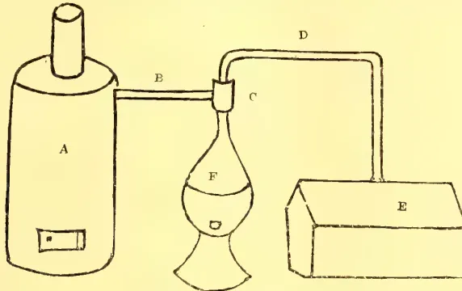
RUBBER SMOKING APPARATUS.
[a Steam Boiler; b Steam Pipe; c Steam Syphon; d Discharge Pipe; e Latex Vat; f Smoke Making Furnace]
Steam passing from the boiler through the siphon continues through the discharge pipe, drawing with it into the latex the whole smoke supply of the furnace. The latex is violently agitated and gradually reaches boiling heat. As the boiling point is reached, the rubber completely coagulates. A few minutes of boiling is enough. The coagulated mass is then lifted out and sliced thin and hung over poles to dry. Because of the working of steam in the mass, it is porous and dries very quickly. Indeed, there is no other way of drying rubber except by reducing it to paper-like sheets.
The process is quick, simple, and cheap. Rubber so coagulated has been kept six months without sign of viscosity or shortness of grain. The method is in effect that of Brazil, and its chief merit, aside from solving coagulation, is, I venture to think, the diffusion through the rubber of the preservative elements of wood-smoke.
The active principle of coagulation with heat is doubtless acetic acid. It has been suggested to me by Professor Lang, of Toronto University, that crude wood alcohol, that is alcohol from which the acetic acid had not been removed, might be an effective coagulant.
It was found that it did not do to use woods for smoke production which blazed readily, and so, I venture, consumed the necessary elements of smoke. At last, it was demonstrated that the best fuel was the nuts of what is locally known as the silico palm, growing very extensively in the swamps of Nicaragua and possibly identical with that producing the rubber curing nuts of Brazil. No doubt, their virtue lies solely in the fact that they give off a dense smoke and simulate a wood distillation. But I bow to the chemists. We use, in bleeding, clay to make a continuous surface from the bark into the receiving cups. Some of this clay mingles with the latex and, if not removed by washing, will hinder by its mechanical action the success of the process of coagulation described above.—Gordon Waldron in the India Rubber World.
280BY HERBERT WRIGHT.
I have, on a previous occasion, made some remarks on the subject of Citronella and Lemon Grass in Ceylon, and to-day I propose to say a few words regarding the progress of our experiments with Citronella. In the first place it is pleasant to be able to record the assistance which has been given by Mr. Jowitt of Bandarawella, Mr. R. Jackson, Sita-Eliya, and Mr. Thomas in the Central Province; these gentlemen have established plots of Citronella and Lemon grass at various elevations and our series of co-operative experiments being now complete we may hope to obtain reliable information on the growth of these grasses grown 2,000 feet at Peradeniya, to 7,000 feet on the Horton Plains.
Satisfactory progress has also been made, through Mr. Halbert in England, in connection with the manufacture of paper from the grass after the oil has been extracted; and also from the wild Maana grass, so common in many parts of the Island. One English firm has reported to the effect that the material is most satisfactory and another firm has asked for sample lots, 3 tons in weight, in order that the experiment may be carried out on a commercial scale. I have recently despatched one ton of the grass, and it is encouraging to know that Messrs. Tarrant & Co., Colombo, are able to bale the material at cheap rates, and that the home firms are not only willing but anxious to pay for the cost of collecting and baling the grass in large quantities. By the co-operation of firms in Colombo and England, I think we may confidently look forward to an accurate determination of the value of Maana and Citronella grass for paper manufacture.
But the most important work which has been undertaken is in relation to the yield and value of the unadulterated oil. It will be remembered that from May 1902, experiments have been carried on at Peradeniya and we are now in possession of information regarding the methods of cultivation, the yields obtainable at an elevation of 2,000 feet, the physical and chemical properties of the soils suitable for its cultivation, and the botanical and chemical characters of the grass itself. Obviously the one thing required to be done was to place the oil on the London market with a guarantee, from Government, that the extraction was absolutely pure. This has been done through the agency of Messrs. Clarke, Young & Co., Colombo, and thanks to them, and also to Messrs. C. P. Hayley & Co., of Galle, some very valuable reports have been obtained. I do not propose to trouble you with these reports in detail, as the whole of the information is about to be published in the Circulars and Annals of Botany, issued from Peradeniya. Furthermore, great interest has been aroused among London firms and chemists and Messrs. Sage & Harrison have already published some of their views on the oils, exported from Peradeniya, in the "Chemist and Druggist."
There are a few points which may be dwelt upon, and the first is in regard to the standard required by the markets in England and New York. When Citronella oil is being valued it usually has to undergo a chemical examination, Schimmel's test being the one applied. If the oil will not pass this test, it is pronounced by the
281Oils and Fats.purchasers at home as adulterated. It has, however, long been a matter of dispute as to the reliability of Schimmel's test, and its application to what was guaranteed to be pure oil, has proved this suspicion to be correct. Samples of the same distillate have been taken by Messrs. Sage & Harrison, Messrs. Lever Bros., and Wm. Gossage & Sons., and Schimmel's test applied, and it is most remarkable to record that some samples have passed the test and others have not. Yet the oil was from the same distillate and was guaranteed to be free from any adulterant, because the whole of the processes from planting and distilling the grass to sealing the bottles was done under my supervision. Though some samples of the oil did not pass Schimmel's test, subsequent physical and chemical analyses proved the oil to be free from any adulterant and the firms had no hesitation in pronouncing the oil of excellent quality and as one which would command a much higher price than that ruling for ordinary Ceylon Citronella.
If the one great test which has hitherto been employed by the biggest firms in London and New York, is not applicable, it becomes a serious question as to how the value of Citronella oil can be fixed in the future to the satisfaction of purchasers. The results of the investigation have so impressed some London chemists that they have been bold enough to propose that any of the tests hitherto suggested for use in determining the purity of Citronella oil should be disregarded; they state that tests are not necessary if Government or any known firm will guarantee the purity of the oil and quote the percentage of geraniol and citronellal present. This suggested departure from old methods is indicative of the desire of home chemists to place the question on a sound scientific basis. They are supported by the results of analyses which showed that though our oil did not pass Schimmel's test it contained 41% of geraniol and 36% of citronellal or a total of 77% of acetylisable contents calculated as geraniol; ordinary unguaranteed samples possess about 60%. To bring about such a radical change will take some time and anticipating some opposition we have promised to forward another consignment of pure oil in order that the same analyses may be made.
The second point on which I desire to dwell is the market value of the pure oil, as the results obtained in this direction are very satisfactory. The oil was sent in the crude, freshly filtered state and the greater part of it could have been refined by simply distilling with water and its value thereby considerably enhanced. It was however, considered undesirable to in any way refine the oil, as it was necessary to know the value of the crude material. The first report was received from Messrs Marshall and French who replied that they would have no difficulty in getting 2d. per lb. more for it than the ordinary qualities of citronella. Another firm subsequently offered 3d. per lb. above the ruling rates. Finally, though the greater part of the oil was in a very crude but unadulterated condition and the whole of the consignment was considered too small to attract the attention of big buyers, the lot was sold at 1s. 6d. per lb. when ordinary citronella was selling at under 1s. 4d.
The fact that the unadulterated oil, though in undesirable quantity and crudeness, was sold at a price 12% higher than the prevailing market rate, is encouraging not only from a scientific point of view but from the standpoint of profit to the cultivator. It means that on a citronella estate of only 300 acres and yielding 50 lb. of oil per acre, per year, the value of the oil is raised from Rs. 15,000 to Rs. 16,875 or an increase of over £120. It means that for
Oils and Fats.282every 1,000,000 lb. exported from Ceylon, and last year we exported 1,162,876 lb., the value is raised by over £8,000. I consider this the most important result which has occurred up to the present from the investigation, and there is good reason to hope that a still higher figure will be obtained for the refined oil which is about to be prepared at Peradeniya and despatched to the London market.
In the face of these facts, it seems unnecessary to urge that the practice of adulterating the oil in Ceylon should be voluntarily stopped, as it is in the interests of the producers to build up a good name and to increase their profits. It is to be hoped that the results which have been very briefly outlined today will give a stimulus to those engaged in an industry which may yet be made profitable. Certainly, all cultivators of citronella can rely on our efforts being continued until the Ceylon oil has its old and good name again recognised on the markets abroad; it is an industry which we can now confidently hope to improve and is well worthy of attention since it provides suitable employment for a large number of the native population in many parts of the island.
We shall adopt the London suggestions and in a short time we may be able to report a satisfactory basis for producers in Ceylon and purchasers in Europe and America.
I have recently had submitted to me samples of citronella and lemon grass oils which were distilled, at the instigation of the Ceylon Government, at the Government Experiment Station at Peradeniya. Citronella oil has been subjected to such gross adulteration in past years that the trade in it has fluctuated considerably, and with a view to improving this condition of affairs the Government has had these two shipments of oil prepared from reliable material in such a way as to preclude any adulteration whatever. The oils have been offered in London, with the object of finding the price obtainable for a perfectly genuine article, and as a guide to future operations in Ceylon.
The sample of this which I received was of a dark orange color, and judged by its odor alone it would find a ready market. On submission to analysis it yielded the following factors:—
| Specific gravity @ 15.5 deg. C... | ... | ... | 0.884 |
| Optical rotation | ... | ... | —3.3 |
| Citronellal | ... | ... | 36 per cent. |
| Geraniol | ... | ... | 41 per cent. |
| Schimmel's test | ... | ... | Turbid solution. |
The oil was fractionated under reduced pressure, and the fractions and residue were proved to be free from mineral oils and fatty matter. As the citronella oils sold on the London market are usually guaranteed to pass "Schimmel's test," and all the largest buyers in this country and America specify that test in their contracts, this individual oil would be unlikely to find a purchaser who would not demur, or ask for an allowance, on account of the turbidity mentioned above. As this difficulty has been noticed before with other genuine oils, the retaining of Schimmel's test as a criterion of purity, by buyers and sellers, seems undesirable. The test is designed to detect adulteration with kerosene, and does not discriminate between good and bad oils which may happen to be pure. The value of the oil depends entirely on the proportions of the odorous bodies geraniol and citronellal present, and the basis for sale or contracts should certainly be a determination
283Oils and Fats.of the amounts contained by an oil, and not an arbitrary test which, although useful up to a certain point, gives no information as to quality.
This sample was obtained from several parcels which were part of the same shipment. It possessed an exceptionally fine odor, but was dark in color. On analysis it yielded as follows:—
| Specific gravity @ 15.5 deg. C... | ... | ... | 0.899 |
| Aldehyde contents (citral) ... | ... | ... | 66.5 per cent. |
| Optical rotation ... | ... | ... | —0.2 |
The oil would not yield a clear solution with 70, 80 or 90 per cent. alcohol when one part was mixed with varying quantities of the alcohol up to ten parts, but it made a clear mixture with an equal volume of absolute alcohol, which became very turbid on the addition of more of the same solvent. As so much lemongrass oil is judged by its solubility in 70 per cent. alcohol, it seemed desirable to test for the presence of paraffin and fixed oils; but fractional distillation in vacuo did not yield any fraction or residue which could be considered abnormal. Whether this oil will be able to compete with the East Indian oil by reason of its finer odor remains to be seen, but the Government experiments show that pure oils are different in some respects from those in commerce, and before the growers can obtain a market for their products a satisfactory basis of selling and buying must be established.—By C. Edward Sage, in Chemist and Druggist.
BY A. JAYASURIYA.
The cultivation of citronella is a matter of the greatest interest and importance to the inhabitants of the Southern Province, where about 40,000 acres of land are covered by the plantations. Since it is an industry which supports a good part of the rural population even at the present day it has been not inaptly termed the "mainstay of the South." Some idea of the magnitude of the industry, as well as its steady advancement, may be gathered from the export figures for the years given below. There are no available figures before 1887.
| Year. | lbs. | Year. | lbs. |
|---|---|---|---|
| 1887 | 551,706 | 1896 | 1,132,141 |
| 1888 | 659,967 | 1897 | 1,182,867 |
| 1889 | 641,465 | 1898 | 1,365,917 |
| 1890 | 909,942 | 1899 | 1,478,756 |
| 1891 | 603,974 | 1900 | 1,409,058 |
| 1892 | 844,502 | 1901 | 1,430,168 |
| 1893 | 668,520 | 1902 | 1,294,750 |
| 1894 | 908,471 | 1903 | 1,062,594 |
| 1895 | 1,182,255 | 1904 | 1,156,646 |
Although the industry has been carried on for about 66 years, its development on an economic scientific basis has not been seriously attempted, owing to the lack of knowledge in economic agriculture on the part of those interested in the industry. Having appreciated the fact, several years ago, that the largest yield at the lowest cost could only be obtained by following the teachings of science and the results of practical experience, I devoted a certain amount of attention to the scientific study of the industry as far as I was able. I may not be able to give a definite explanation of certain phenomena observed in our practical experience, though undoubtedly such do occur. If the results of our experience be in any way
Oils and Fats.284beneficial to those interested in the essential oil industry I shall feel myself sufficiently recompensed for my efforts. The history of the citronella plant at present cultivated is interesting, since it is shrouded in mystery. Some hold that the plant is indigenous to Ceylon, and that it has been improved by cultivation; by others it is thought to have been introduced into Ceylon from the East Indies. There is an element of truth in either view; further I am inclined to believe that the four different varieties of the plant now existing and classified under the Maha pangeri and Lenabatu groups are the degenerate products of the exotic variety, or the product of a cross-fertilization between the indigenous and exotic varieties. Or even it may be the indigenous variety has been improved as a result of cultivation.
The citronella plant is the Andropogon Nardus, Linnaeus, of the family Gramineæ, and is extensively grown for the distillation of oil in the Southern Province, on the declivities of hills where the soil is not by any means considered to be rich. There are 4 different varieties of the plant met with in plantations. They are grouped under 2 classes, the Mahapangeri and the Lenabatu. Each group has its advantages and disadvantages.
The Mahapangeri gives a large yield of oil, and a higher percentage of the aromatic constituents which go to increase the value of the oil from this group of plants. On the other hand its chief disadvantages are that it requires a comparatively rich soil, is not able to withstand prolonged drought and requires greater attention. Further, it has to be frequently replanted.
The Lenabatu, though giving a smaller yield of oil, is a more hardy plant, thrives in poor soil, requires very little attention and does not necessitate replanting. The oil it yields contains less aromatic constituents and always obtains a lower value than the oil from the other variety.
Since the bulk of the oil in Ceylon is that obtained from the Lenabatu variety of citronella, it is on account of its poor quality that Ceylon citronella oil obtains a lower market value than the oil from Java and Singapore. And as long as the people in Ceylon, for the sake of convenience or otherwise, prefer to grow the Lenabatu, there is no likelihood of Ceylon citronella oil gaining the patronage of buyers, who are keen on excellence in quality. But with the diffusion of knowledge through the medium of the Ceylon Agricultural Society and the valuable aid to scientific agriculture afforded by the Royal Botanic Gardens at Peradeniya, we hope it will not be long before the citronella planters are made to appreciate the fact that, if they want to regain Ceylon's good name, they must bid adieu to Lenabatu and throw in their lot with Mahapangeri.
Of course, this would be a serious operation, but I am sure you will agree with me that to effect a radical cure a serious operation may very often be found necessary. Does the end justify the means? I certainly think it does. How can this change be effected is the next step to be considered in a scheme to rehabilitate a once flourishing industry. This I think can only be done by apprising the people of the loss to themselves, and the industry, that has resulted from their growing the bad variety of the plant, and the good that can accrue if they can replace it by the better variety, Mahapangeri. In such a scheme it will be necessary to establish Government plantations, where the better variety is grown and from which plantations the people can buy plants at reasonable cost and on easy terms of payment.
At present, in planting Citronella rootlets, holing is done in a haphazard fashion, no definite distance being observed by the majority of the planters. There are some who plant as much as about 40,000 plants to the acre. We have had better results with 15,000 to the acre. The advantages of planting the latter number of
285Oils and Fats.plants are that the plants thrive better, harvesting and weeding are more convenient, whilst the initial expenses of planting itself are less than in the previous case. Another point requiring attention, and much neglected by cultivators, is the proper choice of rootlets. The rootlets should be from two or three-years-old bushes, and should be from plots which have never been cut for distillation. Rootlets when obtained under these conditions produce vigorous plants and highly satisfactory results.
DRAINING is not much adopted on citronella plantations. This I think is a penny-wise pound-foolish policy. It is quite an essential measure to prevent the wash-away on the hill sides. The stunted condition of many a plantation is due more to the neglect of this factor than the poor nature of the soil.
CLEAN WEEDING twice a year amply repays the additional expense that has to be incurred with a prospect of returns. There are some who weed only once a year, but, as citronella is a plant whose growth is much impeded by weeds, attention to this point should not be lost sight of. Besides weeding, cleansing bushes of the adherent dried grass once every second or third year goes a great way to invigorate the plant.
MANURING. There is hardly any manuring done on citronella plantations except laying the grass, exhausted of its oil, as a mulch on the citronella fields. We have obtained better results with a mixture of ash of the dried grass mixed with farm-yard manure. Manuring should be done once a year, the best time for applying it being well in advance of the heavy rains of the North-east monsoon or immediately after it. It is about this time that the plant is in flower, and manuring at this season helps much to make the plant recover from the exhaustion of energy consequent on flowering.
The command of cheap labour is always a matter which concerns the citronella planter very much and, indeed, unless there be a source of cheap labour-supply close at hand it is not possible to work any large plantation. As it stands at present the proprietor of a citronella plantation is at the mercy of the villagers for labour. If there is harvesting in the rice fields the command of sufficient labour is impossible, with the result that the crop of an entire plantation, or a good part of it, has to be abandoned. To obviate this it would be advisable to adopt reaping machines adapted to work on citronella plantations.
We learn that there are reaping machines working on the highlands of Scotland, and think that a modified form of machine might well serve to cut citronella grass, thereby also lessening the cost of production.
After the citronella grass is cut it is not advisable to distill it immediately. It should on the contrary be allowed to wither to some extent. Grass that has been properly withered yields a sweet-smelling oil, whereas grass that has not been withered gives an oil which is characterised by an element of disagreeableness. In the process of withering one should be careful to avoid any fermentation consequent on allowing the grass to remain in big heaps, especially when there is much moisture on the surface of the leaves. Grass that has undergone fermentation gives hardly half the normal yield, besides imparting a disagreeable odour to the oil distilled under such conditions. On some plantations four crops are gathered during the year, while on others only three are taken. The latter is preferable.
38 Oils and Fats.286YIELD PER ACRE.Up to the third year after the plants are laid down the yield increases. In the third year a citronella plantation is at its zenith of production, giving as much as 18,032 lb. of grass per acre for the year. This was the average yield of a 12-acre plot. The return of oil from above plot was 13,644 ozs. of oil. This is equivalent to a yield of 71 lb. 3 ozs. oil per acre per year. After the third year there is a decline in the yield of oil even when the quantity of grass obtained is comparatively high. The yield of oil begins to fall steadily after the third year, and I know of a plantation, which is in about its 18th year, which, in spite of its good appearance due to good attention, gives only an average of about 26 lb. of oil per acre per year. There is also a difference in the yield of the different crops of the year, the crops during the South-west monsoon giving a better return.
DISTILLATION.The distillation is done one day after the grass is cut and exposed to the drying influence of the sun. In packing the vats or stills with the grass too much pressure should not be resorted to. In a factory there are generally two stills and an interchangeable alembic. The advantage of having two stills is obvious, for while the contents of one are still being steamed, the other can be packed with grass and got ready to be steamed as soon as the alembic has been shifted on to the same. The steaming is done by means of an ordinary regulation steam boiler provided with safety valve.
As a high pressure of steam is not necessary it has been found convenient to make use of old boilers removed from factories where they have been used driving engines. In some cases, when plantations have been located at places far removed from the main roads, boilers made by the native boiler smith have been successfully employed. In our every-day experience we have found tubular boilers to be anything but a success, while on the contrary. Cornish or Lancashire have given very good results, a decided advantage with the latter mentioned kinds of boilers being they can be easily repaired when occasion arises.
The steam enters the still at the bottom and, after traversing the grass, carries with it the essential oil and finds its way into the condensing pipes suspended in a tank of cold water. Often the water in the cooling tank gets so heated that the oil and water are not properly separated entailing considerable loss in the percentage yield of oil. The steam should flow in at a constant pressure, for any variation in the issue and pressure of steam lessens the yield of oil. The cooling pipes are in the majority of instances made of copper, and till 1889, when I introduced lead piping, were without exception made of copper. Lead piping, besides lessening the cost of distillation plant, ensures better cooling, whilst in addition it does not tend to colour the oil, which is the case when copper piping is used.
The cooling of the oil-laden steam is very unsatisfactorily done by the majority of the distillers. As a result of this a certain proportion of the oil is resinified. The adoption of a 60-ft. coil, as suggested by Mr. Wright, would be a decided improvement over the present state of affairs obtainable in most distillation plants. Still more satisfactory results may be obtained if the water used in cooling the distillate be made to travel in a direction opposite to the direction of the oil-laden steam in the coil. This is not at present attempted in any factory that I know of. I am inclined to believe that a factory fitted with the most recent and up-to-date distillation plant would amply repay the additional expense incurred thereby and greater returns could be ensured. Yet by the majority of the citronella oil distillers this is held to be a negligible quantity.
287Oils and Fats.CITRONELLA AS AFFECTED BY METEOROLOGICAL CONDITIONS.Meteorological conditions effect citronella plantations in a definite manner. In estates situated at low elevations the oils produced are of good quality, besides being greater in yield than when the same plant is grown at higher elevations. My observations on this point are not quite complete, but anyway I have mentioned it to invite the attention of those interested in the cultivation of citronella to this highly interesting point. If we do not hereafter have occasion to change our opinion we may predict that citronella grown at high elevations would give poor quality oil even from the very start, and poor quantity of yield sooner or later. We could not say that it is due to any difference in the soil; if anything at all we seem to think it is due to the meteorological conditions obtaining at high altitudes.
This raises an important question with regard to the cultivation of citronella on the patnas of the Central Province. Perhaps I may be excused if I express my opinion that it would not be a success. It is well-known that the maana grass of the patnas, in spite of its luxuriant growth, yields an oil which cannot be compared with citronella oil in point of aroma, while for percentage yield it is far lower in the scale.
ADULTERATED CITRONELLA OIL.There is a popular belief that the low prices obtained for Ceylon citronella oil are due to the adulteration of the oil. No doubt there is adulteration in the citronella oil trade just as there is adulteration in many another trade. As a result of several years' experience in the cultivation, as well as the business side of the industry, I am inclined to believe that it is not so much the adulteration about which much has been said by theorists, but poor quality due to the bad variety of plant cultivated, and still more the present-day overproduction, that has lowered the prices of Ceylon citronella oil. In contradistinction to this there is the everyday spectacle of Java and Singapore citronella oil, which, taken together, do not constitute one-twentieth of the quantity produced in Ceylon, fetching higher prices. This is simply because only the better variety of the plant is grown there, which consequently yields a better quality of oil.
Further, there is no accumulation of stocks of this quality of oil, so that the market for the same is always firm. Not a few have their doubts about the possibility of raising the price of citronella oil by exporting it under a Government guarantee of purity. The Government might well leave the purity of the oil to be gauged by the buyers who are not a little too particular to see that the oil satisfies their test of purity before buying the oil. On the contrary, the Government might do better by encouraging the cultivators of the better variety of the plant, which, if done, will place Ceylon citronella oil on a par with the citronella oil of Java and Singapore. I might treat on lemon grass oil on a future occasion.
THE LONDON CITRONELLA AND LEMON GRASS MARKET IN 1905.CITRONELLA has been offered now and again at the drug auctions, chiefly "Fisher's," but very few sales were made under the hammer on those occasions the bulk of the business done having been private, commencing early in January at 1s. 7d. spot for Ceylon both in tins and in drums and to arrive at 1s. 1½d. c.i.f., which prices have scarcely varied in the course of the year, except for those to arrive which have at times been much dearer.
LEMON GRASS, too, has now and again been offered at the drug auctions, with almost the whole of the business done privately as for the former, prices remained practically the same all the year round, opening early in January at 8d. to 8½d. per oz., spot and to arrive at 8d. c.i.f., and closing at 1s. 8d. spot and at 1s. 2½d. to arrive c.i.f.—Oil Reporter.
Oils and Fats.288CEYLON CITRONELLA IN AMERICA IN 1905.Citronella has followed a varying course during the year, our record showing twenty-five changes, touching the highest point at c. (U.S.A. money) and the lowest at 31c. The year opened at 32c., but with a slight relaxation in shipment values, 31c. was named early in January, but before the close of that month the cheaper lots were out of the market and 32c., was again in effect. With a stronger manifestation of primary values, a 37c., spot basis prevailed in February, but a month later an abatement of the firmness abroad brought the market to 34c. The situation was again changed late in March by the withdrawal of early offers for shipment from Ceylon and the effort to concentrate the stocks available on spot and for nearby arrival at lately prevailing prices. Under these influences local values were enhanced, touching the highest point of the year at c. This basis could not be maintained with buying, interest subsided and without any primary reaction, drums were available on spot at 38c., early in May. Some local dealers had apparently little faith in the maintenance of the market and were willing to dispose of comparatively cheap lots at a concession and values yielded to 34c., by the end of August. Stocks had become reduced considerably by this time and following active sales, the market was again on a 40c., basis by September. The upward course was aided by the reports of an attempt to withhold primary offers. Under a closer concentration of stocks, c. was maintained by October, but the market has since yielded to the easier tendency of futures, closing at 34c. The course of values during recent years is shown in the following summary of high and low quotations for each month:—
CITRONELLA OIL.| 1905. | 1904. | 1903. | 902. | 1901. | ||||||
|---|---|---|---|---|---|---|---|---|---|---|
| H. | L. | H. | L. | H. | L. | H. | L. | H. | L. | |
| Jan.... | 32 | 31 | 27 | 26 | 22 | 22 | 23 | 23 | 20 | 20 |
| Feb.... | 37 | 34 | 27 | 27 | 22 | 21 | 23 | 21 | 20 | 20 |
| March | 37 | 34 | 27 | 26 | 21 | 21 | 20 | 19 | 20 | 20 |
| April | 40 | 37 | 26 | 26 | 20 | 20 | 19 | 19 | 21 | 19 |
| May... | 40 | 38 | 25 | 25 | 22 | 22 | 19 | 19 | 19 | 19 |
| June | 37 | 36 | 26 | 25 | 22 | 22 | 19 | 19 | 20 | 19 |
| July | 37 | 36 | 24 | 22 | 22 | 20 | 19 | 19 | 19 | 19 |
| Aug... | 36 | 35 | 24 | 23 | 20 | 20 | 19 | 19 | 19 | 19 |
| Sept. | 35 | 34 | 25 | 24 | 20 | 20 | 19 | 19 | 19 | 19 |
| Oct.... | 40 | 35 | 28 | 25 | 22 | 20 | 19 | 19 | 19 | 19 |
| Nov. | 42 | 40 | 32 | 30 | 22 | 22 | 19 | 19 | 19 | 19 |
| Dec.... | 40 | 37 | 32 | 32 | 25 | 23 | 22 | 22 | 23 | 19 |
| Year. | 42 | 34 | 32 | 22 | 25 | 20 | 23 | 19 | 23 | 19 |
Prices throughout the year underwent narrow fluctuations and at the opening of 1905 quotations for spot round parcels were quoted at 6c. (U.S.A. money). The highest point touched was in January, July and August, when the market was quoted at 6c., and the lowest point reached was in April and May, when the price was quoted at 6c. During the first four months of the year nothing of special interest occurred and under a steady demand and a firm primary market prices touched 6c. during the latter part of January, owing to scarcity of supplies and the blockade in traffic, due to snow storms causing a scarcity of freight cars and consequently delayed deliveries. In the absence of buying the market yielded and general dullness was experienced on and off up to the close of June. At the opening of July, however, prices started on an upward movement as a result of heavy purchases by principally large Western consumers. The active demand
289Oils and Fats.was contrary to general expectations, as it was believed that the trade during the summer would be listless, as the view of reports were that the production of oil and copra this year was to show a decided increase over that of last year. The consumption of both copra and oil, however, abroad increased to such an extent that the increase in the production was more than taken care of. This was emphasized during the month of August, when prices ruled higher at @c., owing to the strong statistical position of the primary market, owing to the production of both copra and oil having dropped below the average. This was followed by decided firmness in the primary and distributing markets, the former having advanced several times, while the supplies were inadequate to meet the requirements of the trade. Heavy short sales were made here and abroad, which it was believed amounted to over 2,000 tons and the squeezing of short interests was looked for.
The consumption of both copra and coconut oil has increased at an enormous rate during the past few years, especially for edible purposes, and, consequently, the supply consumed by the soap manufacturers was restricted. The conditions governed the market up to the close of the year, which accounts for the high level of prices throughout the last six months of the year, and there is no relief in sight from the short supply before next spring, according to all information from the primary market.
The following table gives the high and low prices (in U.S.A. money) of Ceylon coconut oil in this market each month during the past five years, and the highest and lowest price for each year :—
| CEYLON COCONUT OIL. | ||||||||||
|---|---|---|---|---|---|---|---|---|---|---|
| 1905. | 1904. | 1903. | 1902. | 1901. | ||||||
| H. | L. | H. | L. | H. | L. | H. | L. | H. | L. | |
| January | ... | ... | ... | ... | ... | |||||
| February | ... | ... | ... | ... | ... | |||||
| March | ... | ... | ... | ... | ... | |||||
| April | ... | ... | ... | ... | ... | |||||
| May | ... | ... | ... | ... | ... | |||||
| June | ... | ... | ... | ... | ... | |||||
| July | ... | ... | ... | ... | ... | |||||
| August | ... | ... | ... | ... | ... | |||||
| September | ... | ... | ... | ... | ... | |||||
| October | ... | ... | ... | ... | ... | |||||
| November | ... | ... | ... | ... | ... | |||||
| December | ... | ... | ... | ... | ... | |||||
| Year | ... | ... | ... | ... | ... | |||||
Trade in this department was fairly good, and the volume of sales for the year show an increase over those for 1904. Prices were firm and tended upward throughout the year, owing to the light available supplies and the stronger and higher reports from the primary markets. The usual difference in the price of Cochin and Ceylon oils is c. per lb. in favor of the former oil owing to its superior quality, and this margin was fairly well adhered to throughout the year. At the opening of the year dealers quoted @c. for spot, and there was an improved inquiry for arrivals with sales at c. Distant deliveries were held at -@c. Owing to the scarcity of supplies, which increased in July, and in response to a good demand, prices were firm at c. and for parcels to arrive @c. was named, which resulted in fair sales. In September the demand was invariable, but the market showed decided firmness, due to a strong primary market. During October parcels to arrive were advanced to c. and upward and spot parcels ruled firm with limited offerings at @c. which price ruled throughout the month of December. Parcels to arrive were firmer and held at -@c.—Oil Reporter.
290Areca nuts were selling at the commencement of the year at 16s. per cwt. and on January 19, 43 bags were offered at auction and 10 were sold at the price just mentioned. On March 16, 46 bags were limited to 16s. and subsequently selling privately thereat, but on April 13, no less than 160 bags were brought under the hammer and meeting no demand only a small lot of 2 bags found buyers at 15s. 6d. Owners, however, declined soon after to entertain this price for further business and stuck to 16s. per cwt. well into the month of July, and a good demand then springing up with hardening prices to follow, 38 bags were held on August 21 for 20s. Towards the latter part of September the price was advanced to 25s., owing to greatly reduced supplies, and 21 bags offered at auction on the 28th of that month were firmly held for 25s. A short while after 25s. to 27s. 6d. was asked, according to quality and at the close of the year nothing can be bought under 27s. 6d.
Cardamoms were again in large supply at the drug auction, during the year, amounting to 6,768 cases, against 7,691 cases in 1904 and 3,669 were sold under the hammer, as compared with 4,253 disposed of during the previous twelve months. Those left unsold, however, found buyers almost always soon after each sale, and on January 19, 551 cases were offered, but there was no demand, and it was very difficult to induce buyers to make bids, with the result that only 182 cases were disposed of the best Ceylon Mysore bringing 1s. 7d. to 2s., the lowest 6½d. to 10d. and seeds from 10d. to 10½d. per lb. The stock on January 31 was 2,153 cases, against 2,187 at the same time last year, and at the next five auctions the offerings did not exceed 400 cases at any one of them. A generally good demand prevailed with rising values and the best left off on March 30 at 2s. 3d. to 2s. 5d., the lowest at 7½d. to 10½d. and seeds at 10d. to 11d. On April 13 and on May 11, 437 and 478 cases were offered respectively, with 283 and 338 sold at firm to dearer rates, the best at 1s. 10d. to 2s. 6d. the lowest at 7½d. to 11½d. and seeds at 10d. to 11½d., whilst fair Malabar obtained 10d. also bold brown Mangalore 1s. 7d. and seeds of the latter 1s. At the next auctions on May 25, 329 cases were brought forward and 279 were disposed of. Qualities over 9d. met a good demand at full prices to 1d. and occasionally 1½d. advance; at 9d. and below values were steady, whilst seeds opened unchanged but closed to 1d. dearer, the best Ceylon Mysore realizing 2s. 7d. to 2s. 10d., the lowest 7½ to 11½d., seeds 10d. to 1s., Malabar medium 10d., seeds 11d. to 11½d. and Tellicherry 8½d. to 1s. 3d., according to quality and seeds 1s. To June and July, covering four auctions, the supply brought forward were smaller; however, the slackness of demand usual in the summer months kept the values down to a small proportion, the prices for which fluctuated a little, but, were on the whole, somewhat easier except for seeds.
On July 31d. stocks were 2,228 cases, against 3,234 the previous year and showing a decrease of about 1,000 cases. On August 3, 17 and 31, values were about maintained; however, on September 14, when 401 cases were catalogued and 284 sold, good bold kinds were 1d. to 2d. dearer, other kinds and seeds slightly easier, including fair to fine bold Ceylon Mysore at 1s. 6d. to 2s. 11d. lowest at 8d. to 1s. 1d. and seeds at 10d. to 11d. A fortnight later on September 28, the largest quantity but one offered during the year amounted to 463 cases, of which 148 were disposed of (the smallest offerings of 30 cases were made on August 17, when 16 found buyers) some qualities being dearer and others steady, including seeds at 10d. to 11d. During the next two months and to the last auction of the year on December 7, the total of supplies brought forward was moderate, which met a varying demand at prices showing at one time a slight decline and at another firm to dearer rates, the best from 1s. 2d. to 2s. 11d., the lowest 8d. to 9½d., and seeds 11d. to 1s., whilst long wild brought 1s. 9d. to 2s. for good heavy. Stocks in London on December 31, 1905, were 1,713 cases, against 2,411 at the same time in 1904.
291The Tomato is one of the best salad fruits that can be grown in the tropics. It is always popular and in demand for salad making, and is also an excellent fruit for culinary purposes, being cooked in various ways. It is a matter of surprise that tomatoes are not more extensively grown in Ceylon, for they will always find a market, and well-grown fruit, of good shape and flavour, will fetch enhanced prices among European buyers in Colombo, Kandy and Nuwara Eliya.
At present in Ceylon the tomato is not grown sufficiently extensively; adequate care and cultivation is not given to the plants, and poor kinds only are grown as a rule. The varieties that would pay best locally are those having medium-sized fruit, of good shape, and with smooth skins. Seed should be obtained from a reliable English seedsman, and varieties recommended for field-growing selected. In England glass is used extensively for tomato growing, but in Ceylon they can be easily raised from seed and grown in the open at all elevations. The following cultural directions have given excellent results in another part of the tropics—Cuba—and should be studied by anyone thinking of growing tomatoes to advantage in Ceylon. They are from a pamphlet on “Tomato Culture” by Messrs. C. F. Austin and E. W. Halstead, published by the Cuba Central Agricultural Station in its bulletin (Havana Province).
It has been found best to have some form of seed beds where the seed can be sown and the young plants transplanted once before they are set in the field. For this country (Cuba) we have found that a simple board frame made five feet wide and forty or sixty feet long is the most convenient style. The sides should be from eight to ten inches high.
These frames are useful for all kinds of garden plants that are grown from seed and transplanted. One who is growing tomatoes for commercial purposes will find it convenient to have the frame in which the seed is sown located near the house where the seedlings can be looked after carefully. The frames into which the seedlings are to be transplanted should be placed in different parts of the field,—say two frames, five by seventy feet, to the acre, for it is much cheaper to distribute the young plants for transplanting than to distribute the grown plants at setting time, as must be done if the frames are all in one place.
The soil for the frames should be made very fine, loose and mellow for a depth of three to five inches. The best results are obtained if the soil contains a good per cent. of sand. Give each of the beds a top dressing of one or two inches of well rotted stable manure. The manure should be screened through a one-half inch mesh to get it as fine as possible, and should be thoroughly incorporated into the soil.
A few shades should be provided for use when sowing the seed to keep the soil moist and also to use when transplanting, to protect the young plants from the sun. A shade made on a frame three by five feet is of a convenient size. The lumber for these frames should be from two to three inches wide and one inch thick. We cover our frames with a cheap grade of cotton cloth.
The length of time required from the sowing of the seed until the tomatoes begin to ripen varies with the variety, season of the year and the soil. Usually from eighty to one hundred days should be allowed; that is, if tomatoes are wanted for
Edible Products.292the Christmas market the seed should be sown early in September. The seed should be sown in rows three or four inches apart across the seed beds. Sow the seed thickly so as to have a good stand of young plants. To produce plants enough to set one acre of ground sow at least one ounce of good seed. When the seedlings have the first rough leaves started, or are from one to two inches high, they should be transplanted into another bed. In transplanting it is best to set them in check rows four inches each way. In transplanting be sure to make the soil firm around each plant. The young seedlings should be watered thoroughly and covered with the shades for a few days until they have struck root. The plants should be carefully hoed and watered so as to keep them in vigorous growth. We want strong plants from eight to ten inches high to set in the field. A little extra work pays, for the success of a tomato crop depends upon having vigorous plants to start with. Our observation in Cuba has been that too many vegetable growers are contented with weak, spindling, poorly grown plants. We believe this is a mistake and that far better results will be obtained if more pains are taken to grow healthy, stocky plants.
The tomato is exceedingly cosmopolitan as to soil. During the past season we have seen very good tomatoes upon nearly all classes of Cuban lands, but they do best where the soil is mellow, loose, and well-drained, and do not succeed upon low wet soils unless well-drained. We believe that the black, m ulatto and rich sandy soils are best for commercial purposes.
The preparation of the soil is a very important part of the work, and one that is often neglected. Nothing pays so well as to have the ground well prepared for the crop. It should be plowed deep so as to turn all the weeds, grass, etc., under the surface. After plowing, follow with a good harrow and work the surface down as smooth and mellow as possible. Some form of a spring-tooth harrow will be found best for this work. During the dry season the fields should be harrowed very often so as to preserve as much of the soil moisture as possible. The finer the earth the less surface there is exposed for evaporation by the action of the sun and wind.
As soon as the land is in good shape the plants should be set. The usual distance is four feet each way. One of the most convenient methods of setting tomato plants is to lay the ground off every four feet with a furrow. A single shovel plow is the best tool for this work. Now if we have followed the method suggested of having our beds of transplanted plants located over the field, the question of setting out is a very simple one. The beds of plants should be thoroughly wet so that the soil will stick together. Then the frame of the bed should be knocked away and, with a long knife, the soil should be cut in four inch squares, with a plant in the centre of each. Take a thin spade and shove under each plant and lift it into a light hand barrow. When the hand barrow is filled with plants two men carry it to the rows and set out the plants in the bottom of the furrow. Two men follow with hoes and cover the roots, making the soil firm around them. By being careful the plants can be transplanted from the frames to the field and very few of them will ever wilt or know they have been moved. As soon as a field is set it should be gone over with a cultivator and with hoes, for nothing starts a plant to growing as well as the frequent hoeing and cultivating of the surface soil. Too much care cannot be taken to see that the plants are carefully and properly set.
This is one of the most important parts in the production of a successful vegetable crop of any kind, and probably the one most neglected. Few farmers can see the value of careful, frequent, and thorough cultivation of the soil. Many consider that if they have cultivated once in two or three weeks to kill the weeds,
293Edible Products.that they have done all that is necessary. During the dry season of the year cultivation to kill weeds is one of the minor parts of the work. It is to prevent the evaporation of the soil moisture by keeping the surface of the soil loose and mellow. The smoother and finer the soil, the less surface there is exposed to evaporation by the action of the sun and air, and the more soil moisture is held in the soil for the use of the plants.
By means of capillary attraction the soil moisture is constantly passing up toward the surface and is given off into the air by evaporation. Now, by means of frequent cultivation we prevent a good deal of this passage of water off at the surface by evaporation.
Plants that are set one day should have the soil around them stirred the next with a hoe, and cultivation should begin as soon as possible. A careful cultivation should by all means be given after each rain or irrigation, just as soon as the soil can be worked, for, with every hour that the soil is left to dry out and bake, just so much of the valuable soil moisture passes off in evaporation. Our observation has been that the question of cultivation has been very largely neglected in our vegetable districts. The growers have been depending upon frequent irrigation and heavy fertilization to do the work that belongs to the cultivator. Tomatoes cannot be successfully grown by this method, for the result is a soft watery fruit that will not ship or sell well. Tomatoes respond especially well to frequent shallow cultivation, and it should be kept up from the time the plants are set in the field until a horse can no longer get through the vines.
The question of cultivation with modern tools is one to which the farmers of this country must give more attention, for observation makes it very plain that there is too little work done with horse cultivation and too much by the more expensive method of hand hoeing. The fine tooth cultivator, having from twelve to fourteen teeth is good for all kinds of small plants, which are in danger of being covered by earth thrown from the blades. It is an especially fine tool for tomatoes when they are first set out. There is a larger style of cultivator having from five to seven teeth. It is a very useful tool for the cultivation of all classes of plants and has many advantages, being fitted with different styles of teeth so as to throw the dirt either to or away from the plants.
Some form of irrigation is absolutely essential for successful winter vegetable growing on most soils in Cuba. There are many more sections where streams could be utilized. Other regions will have to depend upon wells for securing the water necessary to take the crop over dry spells. The amount of water needed will vary greatly with different years and in different parts of the Island. In some regions, principally along the north coast, there is sometimes rain enough during the winter months to produce a crop, while during other winters very little rain falls. There are sections of the Island where there is scarcely any rain for several months. Most of the soils require a large amount of water as they are open and porous and dry out quickly. In irrigating one should give water enough to thoroughly wet the soil. As soon as the ground is dry enough it should be given a smooth, shallow cultivation so as to preserve as much of the moisture as possible. These cultivations should be kept up every few days until another irrigation is needed. The number of irrigations will vary greatly with the soil, climate and amount of rain during the winter months. Water should not be applied oftener than is absolutely necessary to keep the plants in vigorous growth. Too much water, at the expense of cultivation, produces strong rank plants and soft watery fruit. The above is especially true where an excess of nitrogenous fertilizer has been used. We cannot too strongly recommend keeping
39 Edible Products.294the surface of the ground smooth and mellow by means of frequent shallow cultivations in order to save water for the plants. Every drop of water which we let pass off into air by means of careless cultivation, is a drop wasted.
Along with the preparation of the soil, the cultivation and irrigation, comes fertilization. These four operations overlap and interlock so that it is impossible to say which one is the most important. It is probably true that in the sections of the Island which have been longest settled the soil is more or less deficient in the essential elements of plant food. By essential elements of plant food, we mean nitrogen, phosphoric acid and potash. There are many other elements that help to make up the soil and are essential to plant growth, but these three elements are the ones we have to buy and pay dearly for in the form of commercial fertilizers, stable manure, or any other means of soil improvement. All soils contain more or less of these elements in combination with many others. Very frequently these elements are present in sufficient quantities, but in an unavailable form so that the plant cannot get them for its use. In other cases a part of the elements are available so that the plant makes a fair growth, but we must supplement its food before it can make a really strong growth.
The question of maintaining the fertility of the land is largely an individual one with every farmer and for every field in the farm. With the varying conditions of soil and climate it is impossible to give rules for fertilization that will work out satisfactorily in all cases. Each farmer must test and find out for his own farm the kind and amount of fertilizer that will give him the best results.
Nitrogen is the element that gives strong growth to the plant, and a very dark, healthy green colour to the foliage. When a plant is suffering for the want of nitrogen it has a poor weak growth and the leaves are of a pale yellow colour. Phosphoric acid is supposed to be the plant food that promotes fruitfulness and early maturity. Potash is the element that gives solidity, firmness, colour and carrying qualities to the fruit.
A fertilizer that has given us excellent results during the past year with tomatoes and all other classes of vegetables, is a mixture, by weight, of one-half part nitrate of soda, one part sulphate of ammonia, one part sulphate of potash, and three parts acid phosphate, or ground bone. This formula, used at the rate of five hundred to fifteen hundred pounds per acre, according to the soil, ought to give good results. There is no doubt that in the light sandy soil an application of from one thousand to two thousand pounds per acre will give very profitable results with tomatoes.
This is an important operation and one too little considered by many growers. Nearly every shipper of tomatoes picks his fruit too green. It is almost useless to pick and ship half-grown tomatoes, for they will never ripen sufficiently to be fit for eating. Care should be taken in picking to see that the tomatoes have reached full maturity as to size. They should have passed the dead green colour and reached the white stage of ripeness. When gathered in this stage they will carry in excellent shape to their destination and ripen to their full colour. In the best tomato sections they usually assort the picked fruit into three grades, the ripe, the medium ripe and the green. Each one of these divisions is usually divided into first and second grade as to size. For the best sales it is necessary to have the fruit in each package as nearly uniform in size and stage of ripeness as possible. Some growers are very careless about
295Edible Products.the packing and pay too much attention to having the top layer of choice specimens, and give little attention to the quality of the fruit in the centre of the package. No vegetable grower, or vegetable section, can build up a name by being careless about the matter of grading and packing.
In packing each fruit should be wrapped with paper and carefully placed in the basket. Too much care cannot be taken to see that the fruit is not bruised in any way, and that the fruit in each package is packed solidly so that it cannot move in transit.
Bearing in mind the great controversy which has existed for some years in reference to the most practical and profitable treatment of tea prunings, I was much interested to read in the Overland Ceylon Observer, under the date of February 24th, the remarks made by Mr. Joseph Fraser as Chairman at the annual meeting of the Pitakande Tea Company.
He stated that the average yield of tea during the past year had been 528 lb., per acre, the best yield having been 833 lb., and the lowest 243 lb., and that all the prunings had been burnt at a cost of 5.58 cents per lb.
It would be generally useful, as well as interesting, if the Chairmen of other tea Companies would afford, either in the annual reports or in their own remarks at the meetings, some information as to the treatment of tea prunings namely, whether they were burned or buried. The rapidity, with which Ceylon has hitherto established new industries and carried them to a successful issue, has been largely due to the good fellowship of those in authority, and the willingness to make publicly known each improvement as it was introduced. In fact the general publication of new ideas has resulted in general advantages and successive improvements have followed the introduction of new machines or processes.
On the 23rd December, 1903, the writer addressed a short note to the Ceylon Observer which was published about the middle of January, 1904, pointing out that the indiscriminate burying in all kinds of soil and under all conditions of climate of the prunings, which had been too generally adopted, was likely to lead to unsatisfactory results, and that while in theory the idea of supplying humus to the soil by the use of leaves and small twigs was correct, still that to be of practical use the conditions of soil and weather must be favourable.
Damp green leaves, associated with large branches if buried over six inches deep in a stiff ferruginous clay soil, saturated with water in a wet district, were more likely to be a source of fungoid disease than to afford plant food to the tea shrub.
The damp acid fermentation of green leaves must always be injurious to the rootlets of shrubs and plants.
Instead of the wholesale burying of the prunings in trenches between the tea, the writer suggested their removal to a central spot, where the leaves should be stripped off, placed in a heap, and allowed to decay with some soil and a little freshly burned lime; while the branches and twigs should be stacked and subsequently used for fuel.
It would be interesting to know after the lapse of three years what is now the generally adopted treatment of tea prunings on Ceylon estates.—Yours faithfully,
JOHN HUGHES.
Analytical Laboratory, Mark Lane, London, E.C., March 23rd, 1906.
Edible Products.296Commenting on this letter the Ceylon Observer says:—
Mr. John Hughes, the well-known analytical chemist of Mark Lane, who in December, 1903, questioned the utility of burying tea prunings in trenches in all conditions of soil and weather, returns to the subject in our correspondence columns to-day. Mr. Hughes' letter is induced by a remark made by Mr. Joseph Fraser at the annual meeting of the Pitakanda Tea Company to the effect that the full manuring programme and all the prunings had been burned at a cost of 5.58 cents per lb. We find on reference to Mr. Fraser's speech that, while he is reported to have used the word "burned" the printed report of the Company indicates the prunings were buried. The objective of Mr. Hughes' letter, however, is to induce if possible an exchange of opinions that may assist a definite conclusion being arrived at as to what is the most practical and profitable treatment of tea prunings. Mr. Hughes' own suggestion is an elaborate one and was, we recall, at the time it was first put forward considered by several leading planters as prohibitive on account of the cost.
Mr. Hughes admits the correctness of the theory of supplying humus to the soil by burying prunings with certain reservations. His idea is that the prunings should be removed to a central spot, the leaves stripped off and placed in a heap and allowed to decay, subsequently to be returned to the soil, while the twigs are utilised as fuel. This is a scheme which obviously entails a vast amount of labour and we are not aware that it has been adopted to any great extent in Ceylon. Mr. Kelway Bamber in the course of his admirable address to the Dimbula Planters' Association in November 1903, recommended the burial of prunings, not as an effective manuring but as a basis of manuring. He disapproved of the burning of prunings on the ground of the very large loss of nitrogen—one of the most expensive constituents to replace—which it entailed.
We think that burying prunings on the lines then laid down by Mr. Bamber is probably the most generally resorted to method in Ceylon at the present time. One system we have seen in practice on a crack Dimbula property, and which is found very effective is as follows. Before pruning, holes are dug. After the prunings have lain for a few days it will be found that most of the leaves become detached from the twigs or branches. The wood is then gathered to one side and the leaves swept into the holes and covered up. The branches might be left to rot or gathered up, but the coolies, we imagine, take good care they are not left to be too long on the field! The question is an interesting and important one to tea growers and we shall welcome an expression of opinion from any of our planting readers on the subject.
The following are probably the changes which a young coconut undergoes before it reaches maturity:—
When the young fruit first appears it consists of a white, astringent tasting, semifibrous mass, which afterwards is destined to form the husk; and of a thin, green outer skin. The nut gradually increases in size, with very little change in composition, until it has grown to be about 3 inches in diameter. It then has a comparatively small, hollow space in the centre which is completely filled with a watery fluid of an astringent, slightly acid taste, and which is much like the juice from a green husk. As this period begins, a rudimentary shell is formed around the inner surface of the nut; at first this is very thin and soft, but slowly it becomes thicker and harder.
297Edible Products.Not until the nut has reached its maximum size, with its shell completed, is there any indication of meat or of oily material. When the shell has been formed the milk changes in character, it becomes rather sweet, and a slimy, gelatinous mass, having a sweetish taste and containing comparatively little oil begins to deposit on the inside of the former. At first this forms chiefly on the lower half of the nut, but finally it covers the whole inner surface. This pulpy mass soon grows thicker and denser, it increases in oil content at the expense of sugar in the milk, until it assumes the well-known characteristics of ordinary coconut meat. During this last stage the evolution of carbon dioxide which previously was mentioned occurs.
Even in ripe nuts, after they have been picked from the tree, there seems to be a slight continuation of the hardening process in the meat, covering a period of from two to three months, or until the sprout makes its appearance. Then other changes occur, the reverse of those which had taken place previously; the nourishment concentrated and stored up as fat is now transformed into sugars and other bodies capable of being directly assimilated by the young plant. As this process goes on the embryo or "foot" gradually increases in size until it occupies the whole space inside the nut and makes use of all the nourishment contained therein for the growth of the young tree.
Therefore, for the largest yield of copra and oil, only thoroughly ripe nuts (the husks of which have begun to turn brown) should be used, and it is often advisable to allow the latter to stand in a dry place for a few weeks before they are opened. The greatest care should be taken to avoid using green nuts, as it is shown by the tables given above that a loss of almost 50 per cent may thus result.
On the other hand, coconuts should not be stored too long, for in about three months the embryo begins to grow, and, even before that time, those nuts which may have been cracked or bruised in gathering, have a tendency to become rancid.—Philippine Journal of Science.
BY E. ERNEST GREEN.
(ILLUSTRATED).
The long continued drought is now making itself felt in the increase of various insect pests, such as the Tea Tortrix and the "Case-worms" (Psychidæ). The recrudescence of the Locust pest in the Matale district is probably another sign of the abnormal weather.
Attempts to combat these pests have drawn attention to the serious evils of the prevalent system of cultivating large unbroken areas of one product. With such a system there is no check to the spread of a pest, nor any means of isolating a particular field for purposes of remedial treatment. Under existing conditions, as soon as a field has been cleared of disease, it is liable to be reinfected not only from neighbouring fields but from adjoining estates which are often quite undivided by natural boundaries. The remedy lies in the formation of belts and boundaries of either jungle or cultivated trees of other kinds. Such belts should be at least 20 feet in depth and composed of close growing trees with a good cover of foliage. An undergrowth of more shrubby plants should be encouraged to complete the screen.
In the R. B. G. Circular, Vol. II., No. 2, (Further Observations on Helopeltis), published in 1902, I wrote: "In districts suitable for them, economic trees and plants might be employed for the belts. For the larger trees, Para Rubber, Nutmeg or Kola-nut suggest themselves. For the undergrowth, Croton-oil, Annatto, Castor oil, or Tapioca might be used. Or the screens might consist of trees and plants, the clippings of which would be suitable for green manure, such as Albizia moluccana, or "Dadap" (Erythrina lithosperma), with Crotalaria as an undergrowth."
The above was written before the present boom in Rubber cultivation was anticipated. Similar precautions in this new cultivation are quite as important, and are in great danger of being neglected. Large areas are being planted up with Para rubber, which in time will present an unbroken sheet of this one plant, offering an ideal opportunity for the rapid spread of disease. Though no serious pest has yet threatened Hevea, this immunity cannot be relied upon to continue. A serious warning to rubber planters is urgently called for. The anticipated profits from a single rubber tree are so great, that proprietors are tempted to plant up every available spot, and are unwilling to allow a single yard of suitable soil to be occupied by what they would consider unprofitable growths. This is surely a very short-sighted policy. But to meet this view I would suggest that screens composed of other species of rubber (e.g., Rambong and Castilloa) might be interposed between adjacent fields of Para rubber. Both the "Rambong" (Ficus elastica) and Castilloa are members of the family Urticaceæ, while Hevea belongs to the distinct family Euphorbiaceæ. They are consequently less likely to be subject to the same diseases. An undergrowth of some kind would be required to complete the screen. The most suitable plant for this must be a matter for experiment. Tea—if it would grow under "Rambong" and Castilloa—would form an effective screen when allowed to run up unpruned.
Another difficulty that besets the economic entomologist in Ceylon is the want of any establishment from which stocks of insecticides can be procured as required. At present, if any special treatment is advised, serious delay is incurred
299Plant Sanitation.in obtaining the necessary material. I have recently had occasion to recommend the application of Paris Green on a somewhat extensive scale. It was important that the treatment should have been carried out promptly. But, on enquiry in Colombo, no sufficient supply of the material was procurable, and it was found necessary to import the insecticide from Europe or India. The local firms assert that the demand for such goods is too uncertain, and that it would not pay them to stock material that may be lying in their stores for indefinite periods. This being the case, it will devolve upon the estate agencies to lay in their own supplies, and it is important that this should be recognized. A delay of a few weeks may make all the difference between success and failure in the treatment of a serious disease.
“Case-worms” (often miscalled ‘caddis-worms’ by planters) have been in evidence during the past month. Specimens of Clania variegata, Psyche ulbipes, Acanthopsyche subterminalis and hypoleuca have all joined in the attack upon the tea plant. On old tea, these caterpillars do not seriously affect the plant, but when hosts of the young case-worms invade a clearing of young tea, the result may be quite serious. They gnaw the bark of the young stems and branches and cause an extensive dying back. In such cases an arsenical spray is clearly indicated. A mixture of Paris Green with twelve times its bulk (by measure) of lime should be applied as a spray, with water.
Case-worms are the larvæ of various species of moths belonging to the family Psychidæ. The caterpillars construct cases, of very diversified forms (see Plate), composed of pieces of leaves or twigs or fragments of bark fastened together with tough silk. They carry this case about with them, exposing the head and front part of the body only when feeding. In this case also they undergo the resting or chrysalis stage. The male eventually emerges as an active moth, but the female has no wings, limbs, or mouth parts, and remains inside the case and deposits her eggs there. The males are usually very much scarcer than the females. I am just now making a study of this interesting family, and shall be grateful for assistance in the form of living specimens of case-worms from the different tea districts. The term ‘caddis-worm’ is wrongly applied to these insects. The true caddis is an aquatic arva of a distinct order of insects.
Experiments against “Shot-hole-Borer” on tea have been conducted with a patent mixture sold under the trade name of “Smearoleum.” It is still too early to determine the effect upon the pest. But it is evident that the application of the mixture would be far too costly for general use. It has to be applied with a brush, and only a small number of trees can be treated by one cooly in the day. Moreover, the oily coating has a distinct tendency to prevent the development of buds, new shoots appearing only from areas that had not been covered with the mixture.
A correspondent asks for suggestions for getting rid of “Red ants” (Ecophylla smaragdina). He writes: “In one of my tea fields they are so bad that I can hardly get the pluckers to work.” MacDougall’s solution will be found useful in such cases. The nests should be broken open and the mixture (2 parts in 100 of water) sprayed or syringed into them. It is even more effective if applied warm. A second application may be necessary to finally rout the enemy.
The black-headed Coconut caterpillar (Nephtantis serinopa, Meyr) is again giving trouble in the Batticaloa district. I am informed that the pest has greatly increased within the last few years, and that, instead of being periodic in its visitations, it now shows a tendency to become chronic. The pest is at its height in March, which (in that locality) corresponds with the termination of the wet season. Removal of the infected fronds has been found
Plant Sanitation.300impracticable, as it would mean the almost complete defoliation of the trees. My correspondent states that he has been very successful in trapping the moths by means of a powerful acetylene lamp set in a large basin of water with a film of kerosene. He has satisfied himself that the pregnant females are captured, as he has observed them—in their dying struggles—laying strings of eggs. The pest more especially affects certain spots on every estate, resulting in the permanent weakening of the trees, some of which even succumb to repeated attacks.
The rice-fields at Padiapalella (near Maturata) have been infested by the minute caterpillar of a species of Nymphula, (probably N. fluctuosalis). The caterpillars enclose themselves in small cases composed of pieces of the rice leaves. They are said to be nocturnal, hiding during the day low down amongst the stalks and coming up to feed at night. The caterpillar is adapted to an aquatic existence, being provided with tufts of filaments on each side which act as gills, and enable it to breathe water instead of air. When it comes up to feed it carries in its case a sufficient quantity of water to keep its gills wet. Wood-Mason described and figured a similar larva, under the name of Paraponyx oryzalis, from Burma, where it is reported to be very destructive to rice crops. From our knowledge of its habits it is evident that any attempt to destroy the pest by flooding the fields (as has been practised against some air-breathing caterpillars) will be useless. But I have suggested the employment of the opposite process—the withdrawal of the water from the fields—if it can be effected without serious injury to the plants. If the insects could be cut off from any supply of water during the heat of the day, I believe that their respiratory apparatus would be dried up with fatal results.
Cultivators of Crotalaria are again complaining of the destruction of their seed crop by a small larva that bores into the pods and consumes the seed. This is the caterpillar of a blue butterfly (Polyommatus boeticus). The eggs are laid upon the blossoms of the plants. Powdered sulphur might be used as a deterrent against the deposition of the eggs. The treatment would cost very little if applied to a limited area, and would ensure a supply of seed for replanting.
Seed heads of the castor-oil plants on the Experimental Silk Farm are infested by a boring caterpillar which proves to be identical with the well-known Cacao-pod borer (Dichocrocis punctiferalis, Guen).
Large numbers of a handsome bronze-green Buprestid beetle have been received from the Cotton Experiment Station, where they were found resting on the cotton plants. The larvae of the Buprestidae are known to bore in the stems of various trees and plants. Sphenoptera gossypii—a beetle belonging to the same family is a notorious pest of the cotton plant in India. Specimens submitted to Mr. Maxwell Lefroy have been referred to a distinct species (Psiloptera fortuosa, Fabr.). No signs of boring larvae have as yet been observed in our cotton plants.
While investigating an obscure disease of Dadap (Erythrina) trees, the Government Mycologist observed that the soil around the roots was crowded with the larvae and pupae of a species of Cicada. It was at first thought that these insects might be the cause of the death of the trees; but against this idea is the fact that the roots themselves have a quite healthy appearance, and that the trees are dying from above downwards. Examples of the adult cicadas have since been submitted to me, and have been identified as Cryptotympana intermedia, Sign.
Swarms of young locusts (Aularches miliaris), newly emerged from the eggs appeared about the middle of March in the Matale district. When first hatched they cluster upon shrubs and low herbage, and are said to be independent
This image is a scan of a blank page. The paper has a light beige or cream-colored tint. There are a few very small, dark specks scattered across the surface, which appear to be scanning artifacts or dust particles. No text, lines, or other markings are present on the page.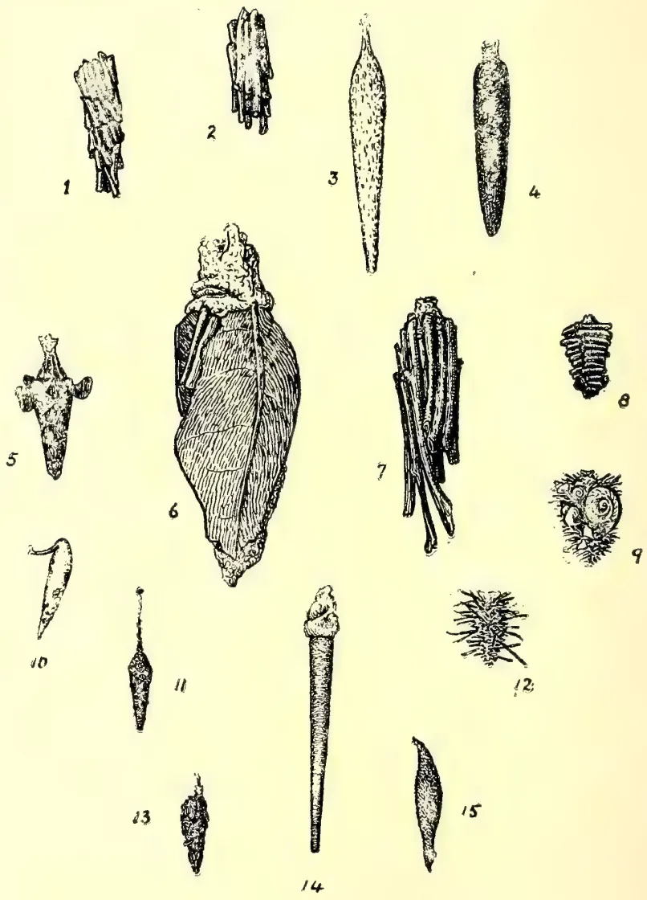
This plate contains 15 detailed scientific illustrations of case-worms (Psychidae) and their pupal cases, numbered 1 through 15. The drawings show various shapes, including elongated, spindle-shaped, and flattened forms, some with intricate surface textures and appendages. The central figure (6) is a large, detailed drawing of a leaf with a case-worm pupa attached to its midrib. Other figures show individual pupal cases in various orientations and stages of development."CASE-WORMS."
(PSYCHIDÆ.)
From Original Drawings by E. E. Green.
301Plant Sanitationof food for the first month. During this period they remain almost stationary and can be easily collected and destroyed.
I have received several enquiries relating to the chemical (Carbon bisulphide), that I have been recommending for the extermination of "white-ants" (Termites). As the shipping companies refuse to carry it, it will be necessary to manufacture the Bisulphide locally. The Government Chemist has designed a handy apparatus to generate the gas directly into the ants' nests, thus avoiding the difficulty and danger of condensation. A sample machine is now being made, and will be tested in the Botanical Gardens. The machine will be portable and easily transported from place to place.
Fig. 1. Psyche sp. undetermined.
2. Chalia doubledayi.
3. Psyche vitrea.
4. Acanthopsyche cana.
5. Psyche albipes.
6. Clania variegata.
7. Clania crameri.
8. Psyche griseata.
9. Acanthopsyche minima.
10. Acanthopsyche hypoleuca.
11. Acanthopsyche subterminalis.
12. Acanthopsyche minor.
13. Psyche rotunda.
14. Psyche sp. undetermined.
15. Pteroxys goniatus.
(Report of a Meeting of the Maskeliya Planters' Association held 25th April, 1906.)
The tortrix pest, which has for some time been prevalent in the district, to a greater extent than ever before, was mentioned by the Chairman, who was presiding over his first general meeting. He said it had seemed to him previously that he was going to have an easy year of office, but he thought they would agree with him that the subject of the tortrix pest, which was on the agenda of the meeting, was a very serious one, not only in that district but in the other parts of the island. To that meeting they had to welcome the Government Entomologist, Mr. Green, and also the estate inspector of one of their largest companies, the Chairman of the Dikoya Association, Mr. R. H. Eliot, both of whom were going to take part in the discussion.
The Chairman continuing said: I think that most of you will agree with me that it has become a matter of extreme importance to this district. There is no doubt whatever that on many estates it is now much worse than it has ever been before, and that it has spread to several estates which have never had it at all badly until this year. I understand that on one estate it is so bad on one large field that for months the coolies have hardly been able to get any flush off it, and that the field instead of being green is brown all over. There is, however, one comfort, and that is that it is not by any means a new pest. We were informed at our last Committee meeting that there was a very bad attack on Gorthie flat 30 years ago. Speaking from my own experience, I well remember a very bad attack on my factory field the year I came to Maskeliya, 17 years ago. There was also a very bad attack about five years ago on several fields, but undoubtedly we have had it worse this year
40 Plant Sanitation.302than on any previous occasion. I believe that most of us are agreed that the pest is always worse when we have abnormally dry weather. Both years that I remember our having it badly were dry years; and this year we have had a more obstinate drought since the middle of November than I ever remember before. If we have an old-fashioned monsoon, followed by a wet N.-E., I dare say many of us will think this time next year that we were unduly pessimistic; on the other hand if the S.-W. and N.E. are partial failures this year, and we do nothing, then Heaven help us, as I fear the present attack will be nothing to what we shall have next year. At present I believe we know very little about this pest. From the time the female deposits its eggs until the moth is hatched is, I believe, about six weeks. From what I have noticed myself, and from what others have told me, it is generally worse on wind-blown ridges, and on poor soil where little or no cultivation has been done. It is, I think, natural that it should be worse on the ridges, as the tortrix does not like damp, and the sooner the leaves dry the better the tortrix thrives. Mr. Pole, who is undoubtedly the leading entomologist in Maskeliya, informs me that it is never bad under grevilleas. If we had not cut up our grevilleas he says the pest would not have been nearly so bad, as the tortrix infinitely prefers grevilleas to tea. To a certain extent I agree with him, as I find the pest on the whole much worse where there are no grevilleas than where they are growing thick. On the other hand I have found it decidedly bad on places where the grevilleas are growing thick, though it is certainly not nearly as bad as where there is no shade. On the other hand, another resident reports that it is not bad except on the fields where the grevilleas were thick! So you will notice how divergent our views are. So far several remedies have been tried, but with no great success on the whole. The one that has, perhaps, been most tried is that the pluckers should bring in all egg masses they see, and they are paid a small sum per hundred. This on the whole has, I fear, been a failure. It is quite impossible for the pluckers to take off every egg mass, and the egg masses left probably hatch out stronger caterpillars as they have more to eat. Another plan has been to hang up grevillea branches, and to send coolies round to collect and kill the moths every morning.
This again has been more or less of a failure, as most of the females caught have already deposited their eggs. Another proposal is to at once burn or bury all prunings. I have doubts as to whether this would do much good, as nowadays almost every leaf is taken off, and there would be nothing for the caterpillars to feed on. It would, however, be interesting to know if the egg mass could live in the dead leaves of the prunings, and hatch out when the young shoots have started. The only other remedy I can think of is that we should send separate gangs round, whenever either the superintendents or kanganies notice any signs of egg masses, and have them all carefully taken off, and at once burnt. The plucking kanganies would soon notice if there were any masses, and would at once inform the superintendent. I understand that Mr. Neale, on Chapelton, tried this experiment with great success. I believe, at the present moment, it is not much use doing this, as most estates will want their labour for plucking. The probability is that the monsoon will destroy most of the tortrix, and I have never known the pest bad in June, July, and August; but if everyone from August on to the end of the year was to tackle the pest seriously, I think a great deal of good would be done. However, whatever we finally decide is for the best, I earnestly appeal to every planter in Maskeliya to co-operate, and to do everything in his power to cope with this pest. If we can only all combine, I believe that half the battle is won. Whatever we decide on to-day I strongly urge that every superintendent in the valley back up to the best of his
303Plant Sanitation.ability, and will endeavour to get his agents to back him up, too, even if it does cost some money. I also hope the Dikoya Association will try to help us. If the two District Associations will only loyally support one another, I have great hopes that we may at any rate greatly reduce the destructiveness of this pest. I would, in conclusion, propose that we form ourselves into a General Committee, and thoroughly discuss the subject, and I beg that any one present will tell us anything he knows on the subject, and will help us in every way he can. Finally, I would impress on you all the necessity for unity. If we are only unanimous I firmly believe we can check this pest. If not, we must simply trust to nature and luck.
The CHAIRMAN then proposed that the meeting form itself into a General Committee to discuss the subject, and this was decided upon. In Committee :
Mr. GREEN said that the collection of egg masses had been tried on individual estates for some years, but not continuously. A certain amount of good must have followed from the wholesale destruction of egg masses, as each egg mass contained about 250 caterpillars, so that collectors of egg masses were bringing in eggs by the million. Unless, however, something could be done systematically, unless the collecting were done under some system, money was practically being thrown away. On that account he wished to support the Chairman's views on co-operation. He thought they in that district should try to agree upon some method of treatment. Collection of eggs should be given a fair trial, but it should be done systematically. Mr. Green went on to say that he had found a large percentage of the caterpillars were parasites, and he thought nature should be encouraged in that direction to work for the destruction of the pests. He would like to point out, he said, that it was very dangerous to rely upon the monsoon to relieve them. After the experience of a certain estate in the district he could not say that the monsoon would relieve them very much. He was on the estate mentioned during the last S.W. monsoon, and the pest was simply rampant over a large number of fields. The rain certainly did kill off a number of them, not by drowning but by allowing fungus enemies of the caterpillar to get a hold, the damp air and the moisture on the leaves allowing fungus to spread from caterpillar to caterpillar. As to grevilleas he had no evidence to show whether they did good or harm. As the Chairman had pointed out, the evidence was very contradictory.
It was the same with the shot-hole-borer. Some planters had brought evidence to prove that shot-hole-borer did live in grevilleas, and others that they would not. One could find such evidence every day, and he did not think grevilleas had much to do with it. The Chairman wanted to know whether egg-masses would be likely to survive the drying of leaves. Perhaps a certain number of caterpillars, hatched out, finding nothing to feed on, would be dried up, but others would easily reach and feed on other leaves. The only thing to be done just now, he thought, was to find out whether everybody was agreed to the recommendation with regard to the collecting of eggs and to decide how it should be done. (Hear, hear.)
Mr. POLE was called upon by the Chairman to give the results of his experience. He said he had very little to add to what Mr. Green had said. They had all seen and proved that his opinion was the correct one at the end of the valley. Mr. Green had impressed upon them the necessity for system and co-operation in the attempts to exterminate the destructive pest, sentiments with which he entirely agreed. Unless there was systematic collecting, for instance, collectors were wasting their time and the planters their money, as all they were doing was to lay open their own estates to the ravages of insect immigrants from
Plant Sanitation.304other places. They must all help to get rid of the pest, and they must have co-operation all round, not on a few estates but in the whole of the Association's district, and in adjoining districts if possible. Of course, they knew well how difficult it was among planters to get such co-operation, but unless the co-operation was got the question resolved itself into one of serious legislation. They were not certain that they could depend upon the monsoon. In the meantime every effort must be made to get rid of the young; the chief thing was to destroy the eggs. Mr. Pole went on to assert that the pest originally came from the jungle and was blown probably by some gust of wind, and not finding grevillias—he was afraid he had a fad in that direction (laughter)—it dropped on to the tea. It was for them to see whether they could combine and prevent the pest spreading. Mr. Pole then went on to describe a certain pest-ridden tea estate in the district. There were, he said, acres of tea, not quite as though they had been burnt by fire, but rather scorched. The trees had not dropped their leaves, which were perfectly brown, but he could show tea from which every leaf had fallen—which had happened during the last few weeks. The owners of that tea could not expect to make anything of it for the next few months. The pest, he felt sure, was increasing year by year. They had done something—they had destroyed eggs—but nothing had been done systematically. The speaker mentioned an estate from which 74 million possible insects had been taken, yet, through lack of co-operation of surrounding estates, the pest was as bad as ever.
Mr. GREEN said he would not advise planters to wait for legislation. There was the Pest Ordinance going through, but let them not wait for that, but go 'in for systematic action at once.
In answer to a member, who asked amidst laughter, whether the Government would combine with them in clearing the jungles, the Chairman thought that was impossible; and
Mr. GREEN said it was a mistake to think that the pest came from the jungle. It was by no means abundant in the jungle.
Mr. POLE said he had seen a few tortrix, chiefly males, in the forest at night, plainly proving that the females were up above in the trees among the young tender bushes. Within the last few days he killed a number of female tortrix in the forest boundary between two estates.
Mr. GREEN: That was at the edge of the forest close to the tea, of course.
The CHAIRMAN expressed himself of opinion that there were few tortrix in the jungle. They were, of course, constantly coming into the jungle.
Mr. BRAYBROOKE: Mr. Pole described to us a considerable acreage without leaf. Did he mean to say the pest had taken off the large leaves as well as the small?
Mr. POLE: Not exactly the leaf entirely, but the cuticle, leaving an apparent red blotch on the surface.
Mr. DE MOWBRAY: I have seen where they have taken off every leaf from the trees, the old as well as the young.
Mr. BRAYBROOKE said that taking off the old leaf did a great deal of good. He could not say whether the remedy was a good one, however, or whether it did not do a great deal more harm than the disease. Of course, it was a very drastic remedy.
A MEMBER said he took off everything last year, and this year his tea was worse than it had ever been before.
305Plant Sanitation.Mr. CRAIB thought they were all agreed that they ought to combine. If everybody would begin collecting egg-masses, it would be the best thing they could possibly do.
Mr. GREEN said they would probably find they would have to collect egg-masses on the hills one month and down in the valley the next. They would have to determine by experience when collecting should be done.
Mr. BRAYBROOKE said there would be difficulty in collecting egg-masses among irregularly-planted tea. If it were planted in rows the pest could be got at in a much easier manner and at a much smaller expense.
Mr. GREEN asked Mr. Braybrooke whether he had noticed whether the tea was not worst in August.
Mr. BRAYBROOKE: Yes, July and August.
The CHAIRMAN said he really did not think the system of collecting the egg-masses by pluckers was any good. He defied any coolie to bring in a decent kanak of leaf if he was to take egg-masses off properly. In the old days they used to think it was on the top; now it was in the middle of the bushes. They should give a thorough trial to putting on special gangs whose duty it would be to pluck off egg-masses properly. After that he thought they would find the coolies would do the work better. It was absurd at present to expect that the pluckers would collect the egg-masses properly.
Mr. GREEN said it ought to be possible to keep records of the collections made. If they could do this and the records were properly tabulated by the Secretary it would give them a fair idea of the life history of the insect at different elevations in the district, and it would be of great assistance in the work of extermination.
The CHAIRMAN: I think that would be an excellent idea.
In answer to a member's question, Mr. GREEN said the increase was no doubt partly due to the abnormally dry season. However, it had now got to such a pitch that it would not be advisable—it would be suicidal—to wait for the monsoon and expect it to bring relief.
Several members remarked that there had been a scare with regard to brown blight, but that went away with the monsoon.
The CHAIRMAN: That was a very wet monsoon, as a matter of fact.
Mr. GREEN observed that naturally an abnormally dry season was favourable to the insect pest, and a wet season was just as naturally unfavourable, as he had explained, but it was just possible that the expected monsoon might not have the desired effect.
Mr. ELIOT said when the old estates were planted in tea there was no grevillea and no pest. They were now covered with grevillea and the pest was among them.
The CHAIRMAN spoke of an estate which had its worst attack but one 17 years ago when there were not seventeen grevilleas on the estate.
Mr. GREEN again asserted that he did not think grevilleas affected the pest very much one way or the other. The evidence for and against did not come to much. The only effect grevilleas could possibly have would be in this way. There was the possibility of grevilleas harbouring the pest.
Mr. CRAIB said he was sorry to disagree. He could point out two areas, one thickly-wooded which had got very few, and another exactly the opposite.
Plant Sanitation.305Mr. GREEN : It is quite right. I have seen that, too, and I have been to other fields and found the conditions exactly opposite and providing no evidence one way or the other.
The CHAIRMAN remarked that at the last meeting Mr. Turner stated the pest was the worst in grevilleas.
A question was asked whether it was possible for the caterpillars to get back to the grevilleas again.
Mr. BRAYBROOKE said the insects lowered themselves by means of their own threads and could pull themselves up again.
Mr. POLE said it was just possible if they were not touched they would climb up again. The tortrix could not do much damage to the grevillea. Therefore, if they adopted the plan of keeping their tea bushes clean, he thought they would accomplish something. Whether they could free themselves entirely of the pest they could find out later. Let the tortrix get at the grevillea as much as it liked if they could keep their tea clear. It could do no more damage to the grevillea than the planter could by lopping. He advised the planter not to lop, or they would lose their timber, and tortrix-damaged timber was worse than nothing at all. (Hear, hear.)
Mr. GOSSAGE said he was quite in agreement with Mr. Pole. At the present time he had no tortrix where there were no grevilleas.
Several members said their experience showed there was no rule.
Mr. GREEN said the only possible harm that grevilleas could do was to infect other trees.
Mr. BRAYBROOKE : Can the tortrix caterpillar live and turn into chrysalis on the grevillea.
Mr. GREEN : Yes.
A member asked if there were cases of such a pest having been effectually stamped out.
Mr. GREEN said there was a tremendous fight against a similar caterpillar in North America which was cleared off in districts, but probably, through lack of unanimity, not altogether. It was an introduced pest, and of course introduced pests were more troublesome to deal with and exterminate. When he said exterminate he meant keep down. It was almost impossible to say whether such pests had been exterminated or not, but they had been reduced to such a degree as to be of no account.
Mr. BRAYBROOKE gave an instance of an insect pest in one of the forest districts of Germany having been exterminated by vigorous treatment.
Mr. CRAIB : Then let us speedily combine.
The CHAIRMAN said he hoped no one would pay absurd prices for the collection of egg masses. Separate gangs being set to work would give much more satisfaction than the payment of so much money per thousand.
The following resolution was then proposed :—
“That this Association is of opinion that all superintendents of estates should approach their agents with the view to concerted action in the matter of picking off egg masses of the tortrix moth, as they consider the matter is a very serious one and calls for unity of action; and that particulars of the collections be sent to the Hon. Secretary for tabulation.”
307Plant Sanitation.Mr. CRAIB seconded, saying, as he did so, that he left that matter of payment to individual members.
Several members expressed themselves of opinion that the agents would not agree with the proposal to tabulate.
The CHAIRMAN: The records are not for publication. It is only a matter for our own private knowledge.
Mr. SIDGEWICK: It goes all the way round. Everybody will eventually get to know, and the agents are sure to object.
Mr. ELIOT considered that as much knowledge on the subject as could be got was essential.
Mr. GREEN: The records would be a tremendous help. They need not be for publication, but merely for the edification of the Association in making its records and going about its concerted action.
The CHAIRMAN: Well, I think we had better leave that phrase out, and merely advise those who can send in records to do so. I want the resolution to be carried unanimously.
Mr. GREEN: Remember that the more records you get the better.
The resolution was carried after the phrase with regard to records had been deleted.
Mr. ELIOT said: As far as Dikoya is concerned we are entirely in sympathy with you. The matter has been put into the hands of a Pest Committee, and they will report, and their recommendations will be acted upon by the local P.A. I have no doubt their recommendations will be the same as yours—to collect the egg masses. It seems to be the only thing possible. (Hear, hear.)
The CHAIRMAN: I think that will help us considerably. The boundaries of the districts are so near that it would be little use us taking any action without the co-operation of Dikoya. (Hear, hear.)
Mr. DE MOWBRAY asked if it would not be a good thing if, as well as egg masses being collected, prunings were burnt.
Mr. GREEN: I am strongly in favour of that, but I would not insist upon it. It is a good thing against any pest.
Mr. BRAYBROOKE: Under the present system of manuring you would lose a lot of manure.
Mr. BRAYBROOKE: I am sure a great many agents will not allow their superintendents to burn prunings.
Mr. POLE thought it was a very important and interesting point that had been raised, and they ought, at least, to be united upon the matter. If anyone objected to burning his prunings why should they not argue the matter and fight it out to some conclusion as to whether it was good or not. By burning the prunings they certainly got rid of any pest that might be lurking there, and millions of caterpillars would be destroyed. The method would be very serviceable, but it would be hard to bring everybody to carry it out because they knew agents were sure to object. Unanimity, however, was the great point about everything. If one set himself against an idea it would make the money spent by the others in carrying it out a dead loss.
Mr. GREEN remarked that young caterpillars were not necessarily killed by the leaves dying off. The mere fact of the prunings dying would not necessarily kill the insect. It was surprising how retentive of life they were.—Times of Ceylon, 27th April.
Plant Sanitation.808A COCONUT PEST IN SELANGOR.A caterpillar is doing serious damage to coconut palms on an estate in Selangor, says the Malay Mail. As this caterpillar, which is a species of Thosea, or "nettle grub," is omnivorous and will eat both Hevea and Rambong leaves, it is important that on all estates a careful look-out should be kept for the first appearance of the pest.
The caterpillar is easily recognised. It is from one to two inches in length, lozenge-shaped, of an apple-green colour, with bright purple or pink patches on the back. It has bunches of spines or hairs dispersed over its back, and these hairs are cuticating, i.e., when they pierce the skin they cause stinging and irritation. It eats the whole of the soft part of the coconut leaf, leaving only the mid-ribs of the leaflets, and when about to pupate falls off the leaf and spins its cocoon on the ground. These cocoons are dark brown, round or egg-shaped, smooth and compact, and about the size of a large coffee bean.
The area over which the damage is being done is at present very small—in fact, only a few acres, and rigorous steps are being taken to stamp it out at once. But, if the matter is overlooked at the beginning, the task of eradicating such insect pests is enormously increased. In Ceylon another species of the "nettle grub" attacked a tea field, and in one week after it was first observed it had completely stripped twenty-five acres; and it was only the most strenuous measures that eventually put a stop to the spread of the evil.
BY J. K. NOCK.
A great deal might be written on "Propagation of Plants," but on an occasion like this, where space is limited, it cannot really be dealt with fully. The object here will therefore be to state in as concise a form as possible the different methods of propagation, giving sufficient practical hints concerning each to allow of their adoption by those interested, and in the case of the methods needing illustrations for their better explanation merely to mention them so as to have the list as complete as possible. Plants are propagated by seed to create new individuals, and by cuttings, division, slips, bulbs, corms, tubers, rhizomes, offsets, leaves, runners, roots, suckers, grafting, budding, and layering to increase these individuals.
This is the most natural mode and the most advantageous unless a plant exactly similar to the parent is required, when other modes to be described hereafter must be resorted to. The finest and most vigorous plants are produced from seed. The provisions of nature in such ways as causing the seeds of certain deciduous trees to drop before the fall of leaf, so as to provide a covering to protect them and leaf-mould for them to germinate in, and others requiring less depth to drop their seeds after the fall of leaf, form an interesting study, and afford valuable hints as to their requirements. We gather that seeds usually fall in their natural state among decaying vegetable matter and therefore require a light, rich soil to germinate in, also that the depth they should be sown varies as a rule with their size. Some kinds are furnished with a hard covering as those of Acacia decurrens and require to have boiling water, about four times their quantity by measurement, poured over them to facilitate germination. The water is allowed to cool down, and after 24 hours most of the seeds will be found to have swollen; the process must be repeated with that still hard. Others, such as Ceara rubber, need to be filed. Seeds imported from good merchants in England are generally specially dried before despatch, and Peas, Beans, etc., should be soaked in water, not necessarily warm and certainly not boiling, for 12 to 24 hours before sowing.
All seeds must be ripe, i.e., possessing perfectly developed embryos, and have been well kept or germination will not be satisfactory. Storing should be done in a cool, dry room from which all moisture can be excluded, but as a rule this is hard to get in the Tropics and most imported kinds soon lose their vitality. Some seeds retain their germinating powers for only a short time, others for several years, and the time taken for germination varies considerably, those of the English Holly for instance being known to take so long as two years. The soil should be made fine but porous enough for water to drain off well. If too fine it is apt to cake on the surface after constant watering and the action of the sun, the tender plumule in forcing its way through becomes injured and the resulting plant is invariably poor. The addition of sand will be found to bring it to its proper consistency. As regards the depth seeds should be sown it is a good principle to cover them with soil about equal to their own thickness, but this must be done with judgment. As an exception I may mention beans which are planted 2 inches deep, though only an eighth or quarter of this in thickness.
41 Horticulture.310Very small seeds such as Petunias, Gloxinias, Begonias, &c., need only to be just covered, and are often mixed with finely-sifted sand or soil so that they may be more easily and evenly distributed over the soil, overcrowding being most injurious to the young seedlings. Others stick to each other, and, with the same object in view, should be rubbed between the hands along with dry sand before sowing. Those of the tender plants are usually sown in pots or pans, sometimes placed on a hot bed, or in boxes and pricked out when large enough to be handled without injury, into sheds or beds until sufficiently strong to go into their permanent situations. The strong kinds are sown in the open ground in beds which must be protected in the early stages from strong sun and heavy rains. In all cases light and air are essential for their growth or the seedlings become "drawn" and moisture must be carefully regulated, taking care when watering not to dislodge the small seeds for which a very fine-rosed watering pot is needed. The pots containing the smallest seeds may be immersed almost to their tops in water for a short time to allow sufficient moisture to be absorbed by the soil.
Thinning-out is necessary where the sowing has been too thick, or the plants get weakened and spindly. Sowing may be done in drills or by broadcasting the seed. When practicable the former method is to be recommended, as it allows of weeding and stirring of the soil. If broadcasted they must be scattered about as thinly as possible.
Methods of drying and packing seeds for export have reached such a pitch of excellence, in England at any rate, that we are now able to regulate our orders for the different kinds to arrive at seasons most suitable to their growth, or for them to commence their career when the climatic conditions most resemble those of their native homes. Most of the local seed merchants now realise this fact and import their seeds accordingly. For indigenous species nature teaches us that the best time is when they naturally drop from the plants.
A cutting is a detached portion of a plant usually provided with buds, or buds and leaves, and capable of emitting roots and becoming a plant similar to its parent in habits and requirements. Selection at the proper time, a suitable temperature and degree of moisture are the requisites to effect this. The age at which the cutting should be taken varies greatly in the different species of plants, the soft wooded kinds generally succeed from very young shoots, others from half or well-ripened wood, but the subject is too large to be thoroughly gone into here. A remarkable instance of cuttings striking from thick stems several years old is to be seen in the low-country fences of Thespesia populnea "Tulip Tree," and also with Dadaps. The stakes of all sizes are driven carelessly into the ground but shoot readily. If the operator is uncertain concerning the plant he is dealing with, shoots of all ages should be inserted to ascertain the degree of firmness necessary to obtain the greatest success. For the majority, well-ripened wood of about a year's growth will be found the best. They should be taken only from healthy plants that are in active growth with the leaves in a state of forming woody tissue. For deciduous trees they must be taken after the fall of leaf and before the sap commences to flow again. The weather must be propitious for those to be inserted in the open, and as there are usually refreshing showers of rain during October, November, and December, these be regarded as the most suitable months. For those to be placed elsewhere they may be taken at periods when
311Horticulture.their growth is as required, provided due attention can be given them. The length of the cutting should be 5 to 9 inches with 3 or 4 nodes or joints. However, they cannot be too short if sufficient buds are present.
The cut must be made horizontally close beneath a bud with a sharp clean knife. Some kinds strike more readily when slit upwards for about half an inch after being cut across. As many leaves as possible should be left, as the more there are the quicker will the sap descend and form roots. The petioles of those cut off at the base must be cut as close as possible without injuring the bark as they are apt to decay and destroy the cutting. The lower buds should be cut or rubbed out of the kinds that shoot from the buds underground. The shoot is frequently torn off with a heel, i.e., a small portion of the older wood from which it sprang, which is smoothed off with a sharp knife and then inserted. This is often successful where the ordinary method fails.
The temperature of the soil the cuttings are inserted in should on no account be less than that in which the parents are growing, rather let it be slightly in excess. Many plants strike in ordinary garden soil, and in substances such as brick-dust, &c., but the former should have plenty of sand mixed with it. The best composition is certainly pure sand about half an inch thick placed over soil in which the plant thrives best. For pots the bottom should be well drained with potshreds, over this place a layer of leaves or moss, then sandy loam, and the top half inch pure sand. Insert the cuttings near the edges. They cannot be inserted too shallow if made firm. The most expeditious mode of inserting in beds is to cut a shallow trench, lay the cuttings in, and press the soil well around them. For pots the dibber is generally used and is most satisfactory. Water must be given judiciously in small quantities and often. As much light as possible should be afforded, some kinds bear more than others. Shade when necessary and admit more light as they become rooted.
This is very simple, the plant being merely taken up and divided into numbers with roots to each. The Daisy and "Fever-few" are good examples. Perennials of a shrubby nature may often be induced to strike root, after division, by heaping up soil among the branches. Many instances of this could be given.
Propagation by slips is generally classed with this mode, the term being used when herbaceous perennials are split up into slips with roots to each.
PROPAGATION BY BULBS, CORMS, TUBERS, RHIZOMES AND OFFSETS is easily effected. Nearly every bulbous-rooted plant requires to be managed in its own particular manner, but there are a few rules of general applicability. Most kinds require to be separated (some annually, others every two or three years) when their leaves die down, and stored in dry sand, the growth afterwards being better if moisture is to some extent evaporated, though of course not altogether. This allows of their being kept for planting till convenient times. In all cases where it is necessary they should be moved when in a state of rest. The length of time they may be kept out of the ground varies with different species, and depends to a large extent on the manner in which they are stored. The rest causes them to produce stronger plants and consequently better flowers. There are exceptions to the rule of "drying off," as an example the corn of the Cyclamen should never be allowed to become absolutely dry at the roots, though a season of rest is certainly needed; this should be afforded in a cool, moist atmosphere keeping the roots damp. Tubers, such as the Potato, may be
Horticulture.312cut up into pieces and planted, provided there is a perfect eye or bud left to each piece. It will be well to give a short definition of each of the subjects of this paragraph as they are often confounded.
A Bulb consists of a stem with internodes suppressed, covered by a cluster of partially developed scale-like leaves. Its fibrous roots die annually, but the bulb retains the vital powers of the plant, e.g., Lily.
A Corm is a solid bulbous root bearing a surface bud, such as Cyclamen. It resembles a bulb with which it is often confounded.
A Tuber is a thickened underground stem bearing buds, as Potato.
A Rhizome is a creeping underground stem giving forth roots from its under-side and developing leaf buds at intervals on the upper surface, as Iris.
An Offset is a side bulb produced by some bulbous plants, or a prostrate shoot which takes root but does not branch again.
This is a successful mode with such succulent plants as Begonias, Gloxinias, &c., and it is possible that most other plants could be propagated in the same way if their leaves could be kept alive sufficiently long for roots to strike. The selection of the leaves is important as they should be neither too young nor too old. The young leaf expends its energy on its own growth, while that too old will be found to have reached the stage when it ceases to be active and commences to decay. Those nearly full-grown are the best. The petiole (leaf stalk) may be left its full length or be partly cut off, inserting it well up to the base of the leaf in pure sand, with a compost underneath suitable for the growth of the plant after it has struck root. If the leaf stalk is cut close the base of the leaf must be partly inserted and kept in position with a peg or small stone. Shading from sun is necessary and bottom heat advantageous where practicable.
Everyone is familiar with the way in which leaves of Bryophyllum calycinum produce young plants from their crenatures, even if nailed up against a wall. Hence the common name of "The Plant of Life" has been attached to this plant.
The Strawberry is an excellent example of a plant sending forth slender prostrate stems which proceed along the surface of the ground and are termed runners. These are nourished by the parent, and leaf buds form at the joint on the upper side, rudiments of roots (known to Botanists as spongioles) appearing on the lower side. The latter develop and take hold of the soil, forming a complete plant which may be detached when established. To assist rooting, the runner should be pegged down near the joints. It goes on growing and forms a new plant at each joint, but if extra-strong plants are required the ends should be nipped off after two to three have developed, so that those left may have the full benefit of all the flow of sap.
If many plants are required the parents should be prevented from flowering and fruiting by cutting out all flower buds.
Such plants as Plums, which readily throw up suckers from the roots, may be propagated in this way. The buds which appear on the roots and send up these shoots are termed adventitious buds. Plants raised by this mode are true to the parent in character and reach maturity sooner than when raised from seed. The best and most certain method is to take cuttings from the roots 4 to 8 inches
313Horticulture.in length, and plant them with their tops level with the surface of the ground, taking care that the uppermost portion be that which was nearest the stem. The more vigorous kinds will readily strike if healthy roots chopped up into short pieces are laid on the surface of prepared ground, and covered lightly with soil.
Conifers generally are especially difficult to raise from branch cuttings, and this method is often resorted to for some of the kinds.
Suckers are of two kinds—root-suckers and stem-suckers. A root-sucker comes up from the buried portion of the plant as in the Plum, originating from an adventitious bud which has formed on the roots owing to an exuberance of sap, and is fed by the root from which it springs. When the weather is suitable the suckers should be removed with all the roots belonging to them and planted out, care being taken not to injure more than possible those of the parent plant. It will thus be seen that the mode is a very simple one. A drawback is that the plants produced in this way tend to send up more suckers than if raised by other means; these should be checked immediately they are noticed, if no increase is wanted.
A stem sucker comes up from the base of the stem of a plant when the collar is below the surface of the soil. It weakens the parent supporting it which is often seen to become more and more stunted as the growth of the sucker proceeds. On removal of the sucker it is generally found that the stem growth is great in proportion to the number of roots attached, and should be cut down accordingly and nursed in good soil for a year or so until the roots and top are reasonably in proportion to each other, when it may be planted out in its intended situation. New suckers will issue from the buds around the scar caused by its removal, and where a number of plants are required may be encouraged by heaping up soil around them. In cases where the plant is known to readily send up stem suckers the stem may be cut right down. This will give an increased number of plants.
There are three other most important modes, viz., Propagation by Grafting Budding and Layering. An illustrated article on Grafting will be found in the August number of this Magazine.
Budding and Layering require to be dealt with in a similar manner to be thoroughly understood, and so are omitted in this paper.
BY H. F. MACMILLAN.
Shade trees in the Tropics are a boon to man and beast; they afford cool shelter from the fierce sun, beautify our surroundings and render them healthy; they form effectual wind-breaks, and enable us to grow beneath their shade various crops which will not thrive under full exposure to the sun.
2. Therefore it should be one of the first duties of every person who owns, or is responsible for the upkeep of, roads to plant suitable shade trees along them. Open bleak areas, or bare pasture land may be rendered congenial and productive of tender herbage by the planting of shade trees. Remember that trees grow while we sleep, and that in a few years they may practically convert a wilderness into a paradise.
Horticulture.3143. For roadsides generally select kinds with a spreading top and an upright clean trunk for at least 15 feet. These are also suited for parks and pasture land, though in this case it is as well to select trees which combine the purpose of ornament with that of shade. Fruit trees in many cases may afford profit as well as shade, but their use in public places has obvious drawbacks.
4. Some time previous to planting make holes 3 feet deep and the same in width, from 15 to 20 feet apart, and, if possible, about 15 feet from the road. Water the plants thoroughly, support them individually with stout sticks if necessary, and shade with cadjan or other durable leaves.
5. Protection from cattle is usually indispensable; it may be troublesome and expensive to provide this at first, but it is economy in the end. The ground round the plants should be kept free of weeds, and forked on the surface occasionally. Always look for vacancies on the approach of wet weather, and supply these without delay.
6. When pruning be careful to cut the branches with a clean cut surface close to the stem; never leave a stump when cutting a branch, as this will rot and most probably bring disease to the heart of the tree, causing the latter to assume a distorted and stunted shape, if not premature death.
7. Trees suitable for the wet low-country:—Inga-Saman or Rain-tree, Pehimbiya, Gal-mora, Balsam-tree, Del, Timbiri, Peltophorum, Pterocarpus or “Gammalu.”
8. Trees suitable for dry districts:—Kohomba, Tamarind, Timbiri, Suriya, Mara-illupai, Inga-saman, Mahogani.
BY J. K. NOCK.
The routine work for the month of May will be found in the Calendar.
FLOWER GARDEN.—The fine specimens of the two undermentioned perennials exhibited at the Nuwara Eliya Agri-Horticultural Show, and numerous queries since as to their cultivation, have prompted the following remarks:—
Antirrhinum, “Snapdragon,” is a hardy perennial but generally is treated as an annual. There are three classes—dwarf, medium, and tall—the latter being the class of the exhibit which elicited so much attention. They will grow almost anywhere, but a well-manured light dry soil in a sunny situation suits them best. Seed sown in September will produce plants to flower the following February, i.e., in about six months’ time. The best plan is to sow the seed in pans, prick out into sheds or boxes, and plant out when large enough, in dull weather. If it is desirous to increase a special colour or variety cuttings should be taken and inserted in light sandy soil.
Streptocarpus.—This is a tender perennial from South Africa and known as the “Cape Primrose.” The hybrids are very showy and produce a succession of gloxinia-like flowers throughout the greater part of the year. They are easily grown and take five to six months to come into flower from the time of sowing the seed which should be done in pans, pricking off the seedlings into pots as they become large enough. There seems to be a general idea that a glass-house is necessary to grow them in, which is wrong. They certainly do best under cover (very ornamental as a verandah plant) in a cool place but are flowered at Hakgala in the open. A suitable compost is rich loam and leaf-mould with manure and sand added. They may be increased by divisions.
315Horticulture.VEGETABLE GARDEN.—It now becomes necessary to cease growing certain kinds, vide Calendar. Excessive rains and strong winds will do a lot of damage which must be tried to be overcome as much as possible by making more frequent and larger sowings.
Carrot, Daucus Carota, L., of the natural order Umbelliferæ. A common vegetable, rather inclined to be difficult to suit, and not often grown to the perfection possible, chiefly on account of shallow tilling and heavy soils which could be obviated by more care, adding sand &c. To get clean roots of a good length these two matters are very important. A deep soil (18 inches to 2 feet for the long kinds) is essential, and ground which has been heavily manured for a previous crop is preferable to one specially manured as this causes the roots to fork. Break the soil up well and bring it to a fine tilth, making the beds four feet wide. The seeds have a tendency to stick together, and should be rubbed between the hands with dry sand or thick sowing will be the result. Sow every four weeks for a succession of crops, in drills eight inches to one foot apart according to the kind grown, and cover with a sprinkling of fine earth. Keep down weeds and thin out to suitable distances two or three times. The chief point is not to prepare the ground in a hurry.
BY H. W. POTTS.
Despite the rigorous climate, this Colony may be considered one of the most advanced in so far as agriculture is concerned. No finer example can be instanced to-day of the beneficial results of well-considered State action in the enlargement of a national industry. Twenty years ago agriculture in the Dominion was very much depressed. To-day the out-put of wheat, dairy, and other natural products is marvellous. It is admitted by all the farmers that this is mainly due to timely and wise Governmental action.
In 1885 Dr. Wm. Saunders was commissioned to visit the agricultural colleges of the United States and Europe, and obtain preliminary information for the Government. An Act of Parliament, based on Dr. Saunders' report, was passed for the establishment of experimental farms and the proper control of agricultural education and efficient organisation.
The Act has been liberally interpreted, and administered with judicious enterprise. Example and precept are utilized to create responsive vigour in the farmers, the chief aim being to induce them to abandon the old practice of wasteful farming by robbing the land of its fertility without returning an adequate equivalent. This is scientifically demonstrated. The results obtained from deep ploughing, clean land, rotation of crops, good seed, and an economic system of manuring are clearly brought home to the farmer's mind. Each experimental farm devotes itself to work out the problems of agriculture for that particular district. From this centre a proper distribution of acclimatised seeds and plants is made to the surrounding farmers. More than 100,000 farmers have received free during the past ten years 3 lb. sample bags of seeds. Twelve thousand packages of seedling trees, shrubs, and plants, and more than six tons of seeds of hardy trees, have been sent out free.
Agriculture is taught in the State rural schools, and proper training provided for the teachers. A text-book is published. An examination must be passed by the scholar in agriculture before admission is permitted to the High Schools. The Agricultural College at Guelph, Ontario, presided over by Dr. Mills and a highly-trained staff of educational experts, provides training leading from short courses of six months, up to the term needed to qualify for the Bachelor of Science in Agriculture Degree of four years.
In addition special effort is made to organise Farmers' Institutes, for both men and women, Live Stock Associations, and Dairying Associations, all of which are highly educational. At their annual conferences, papers are read, and instructive discussions follow. These are published in pamphlet form and distributed.
Dr. Saunders states: "The occupation of farming has been elevated in the eyes of the community. It is no longer looked upon as a sort of drudgery suited to the dull and slow-going, but is now regarded as a suitable field for the higher intelligence of cultivated minds. It is recognised as a calling requiring much skill to conduct it successfully, and as giving ample scope for the exercise of the most active and earnest minds, and one in which information of almost every sort may be turned to practical account."
317Education.UNITED STATES.In 1894 the Secretary of the Board of Agriculture (Major Craigie) after investigating the working of the Morill and Hatch Acts in the States by direction of the British Government, states:—
“The American Government seems willing to face any cost to the community that promises the better to equip the farmer with the knowledge of his business. The authorities seem assured that in indicating methods of profitable production and still more by the careful perfecting of the produce of the vast lands of the Republic in whatever direction of extensive or intensive culture the economic circumstances of the moment may prescribe, they are providing a solid means of advancing the well-being of the nation as a whole.”
The Morill Act of 1862 laid the foundations of superstructures, and created an organisation for the furtherance of agriculture, the value and extent of which are unequalled in any other country. In that year Congress alienated 10,000,000 acres of land to provide funds to establish, endow, and maintain agricultural colleges and experimental farms in every State of the Union. This created an activity and interest in agricultural education and research which developed with extraordinary celerity. In 1885 a Convention was held by those associated with agriculture, when the following resolution was passed:—
“That the condition and progress of American agriculture require national aid for investigation and experimentation in the several States and Territories.”
The Hatch Act of 1887 was formulated and became law—
“In order to aid in acquiring and diffusing among the people of the United States useful and practical information on subjects connected with agriculture, and to promote scientific investigation and experiment respecting the principles and applications of agricultural science.”
In order to render this effective and defray expenses, a sum of £6,000 per annum was voted to each State. In addition large sums are annually voted by the State Legislatures, and these are augmented by private benefactions. With these funds so amply provided, thousands of experiments have been and are being conducted in every branch of farm work, as well as in rearing live stock, particularly in regard to co-operative tests. The results of these are distributed to the farming community in the most complete way, and entail a lavish expenditure for printing.
Dr. True, Director of Experiment Stations, states all this has been accomplished with splendid results, and he reports “a remarkable awakening of our farmers to the desirability of having more definite information regarding all matters connected with their business. The result has been that the stations and this Department have been led to publish a vast amount of information, both old and new, which has been freely distributed to farmers in every State of the Union. Nothing like it has ever been seen before. No country has ever attempted so systematic and so thorough a distribution of information to its agricultural population, and no masses of farmers have ever so eagerly sought for information as have our own within the past few years. Such an intellectual awakening must have most important results, and there is every indication that it will go on increasing in volume and force until it has thoroughly permeated the entire agricultural population.”
He points out the special features responsible for their success as follows:—
He does not hesitate to caution his countrymen against permitting political influence to interfere with the management of the colleges and stations. Experience in this direction has been of a most objectionable character in the past.
Mr. Wilson, the U. S. Secretary for Agriculture, thus sums up the work of his Department :—
“The Department, through its bureau, divisions, and offices, is getting into more immediate contact with all classes of producers throughout the country . . . . Especial attention is being given to the reclamation of soils that have been reduced in fertility by injudicious management. Production from the soil in all parts of the United States is being diversified by importations from foreign countries. The scientist and the cultivator are working together for greater national prosperity through more economic production. . . . The especial attention of the Department in the future will be given to the production, under United States jurisdiction, of products of the soil that now come from foreign countries, keeping steadily in view the object for which the Department was organised—the help of the producer who is struggling with Nature.”
The fundamental basis of national education in the primary education of America is Nature study. A leading writer states :—“It designates the movement originating in the common schools to open the pupil’s mind by direct observation to a knowledge and love of the common things in the child’s environment.” In the successful adoption of this method the personality of the teacher is pre-eminent ; there must be enthusiasm. The aim is the development of mental, reasoning, and observant powers of the child. It enlivens the means of teaching to both tutor and pupil. The study of plants and animals can be associated with the earliest lessons in the common school. The readiness with which children improved under this method has resulted in its universal adoption in the States.
Recently an organised movement has been made to introduce the elements of agriculture into the rural schools, preceded by the establishment of school gardens. These were the outcome of the nature study education, and developed a trend towards agricultural training. The American League of Industrial Education, the National Educational Association, and the American Civic Association have all included in their propaganda the promotion of school gardens and farms, and the teaching of agriculture in the common schools.
The Dean of the College of Agriculture in Illinois gives the following reasons for teaching agriculture in these schools :—
As an avenue of communication between the pupil and the teacher, it being a field in which the pupil will likely have a larger bulk of information than the teacher, but in which the training of the teacher can help to more exact knowledge.
Several States have made provision for training the teachers in agriculture, and make it a compulsory subject in their examinations. At Cornell University a two-years' normal course is provided in nature study and gardening. Ten normal training-schools have been opened in Michigan for the express purpose of training teachers for rural schools.
Text-books have been published suitable for the various States. In North Carolina State 12,000 children received instruction in agriculture last year.
In addition to the education in the rural schools, the provision made in the splendidly staffed and equipped agricultural colleges in every State, in proportion to its population, is not rivalled in any part of the world. The courses are arranged to meet the requirements of all classes of agriculturists, and extending from periods of twelve weeks to five years. The longer period course in most instances entitles the student to present himself for the Bachelor of Agricultural Science Degree, which is granted at all the American Universities.
The training in the High Schools is essentially such as to mentally and physically equip a lad for the specific education in an agricultural college. The subjects of manual training, physiography, elementary chemistry, physics, geology, algebra, mathematics, and geometry are taught.
For those farmers and their sons who are unable to attend the agricultural colleges of the various States, several schemes have been evolved. Short courses have been offered, and farmers' clubs organised on the University Extension plan. Under the auspices of the agricultural colleges and kindred establishments, such as the experiment stations and agricultural associations, farmers' institutes are now very popular, at which lectures and demonstrations are provided by the State experts, and often by those sent by the central authority at Washington. Michigan set the example in 1892. The railway companies realise how important it is to their revenue to have a well-educated class of farmer on the land through which their lines run, and offer the greatest facilities to farmers to attend courses of instruction. In fact, they supply special trains free to bodies of farmers of sufficient number to convey them to the agricultural colleges on special occasions to inspect the crops and methods pursued at these and the experiment stations where lectures are given by the officers.
One of the most recent methods adopted to reach the farmer is for the State to fit out two railway cars, one as a store for roots and seeds and as an agricultural museum or exhibit, the other suitably seated to act as a lecture room and sleeping apartment. Expert itinerant lecturers are engaged, and are conveyed through the rural districts free. A systematic course of lectures is thus given at every station where these cars are left, to the farmers in the district, either during the day or in the evening, whichever is found most suitable to the local residents.
Instruction is given, the exhibits are fully explained, seeds and roots are distributed free, and the railway companies are recompensed for their enterprise by the increased production and carriage on their lines, as a result of this advanced technical education.
This brief and necessarily incomplete precis of educational effort as it is conducted in the advanced countries of the world evidences the great attention now being devoted to it, and the stimulus thus provided for increasing the value of the primary industries.
Education.320One of the great factors towards this end is the experiment station or farm. A recent publication issued by the States Department of Agriculture by Messrs. True & Crooby, gives a brief account of 720 experiment stations and similar institutions throughout the world, embracing all civilised countries, the largest number of separate agencies being in Russia. There are 102 experimental stations and three experimental forests, the bulk of which are for the purpose of introducing new agricultural industries and teaching the peasants.
| Germany possesses | ... 80 | Australia possesses | ... 34 |
| France " | ... 71 | Netherlands " | ... 7 |
| Austria " | ... 41 | Sweden " | ... 26 |
| Great Britain " | ... 30 | Norway " | ... 12 |
| India " | ... 11 | Japan " | ... 15 |
| Belgium " | ... 15 | Switzerland " | ... 10 |
| Hungary " | ... 20 | Canada " | ... 12 |
| Italy " | ... 22 | United States " | ... 58 |
It will be seen that an attempt has been made in this lecture to demonstrate the necessity for preparing the child for rural occupations.
The primary system of education hitherto conducted has been more adapted to the requirements of urban than of rural children. Many who attend rural schools are unable to attend continuation or high schools. It would further enhance the training of a child for country life by receiving its earliest training in Kindergarten. Children of both sexes are rendered more fitted for any occupation where manual effort and a trained eye are essential to success. To direct the child's mental and physical development to useful purpose, and in keeping with its surroundings, is the commendable aim of the new education. The education for a child intended for rural life should commence in the primary school from the first impulse to use the fingers in Kindergarten, to the unfolding of natural processes by nature study; the school garden, the study of flowers, fruits, vegetables, birds, insect life, the domestic animals, and manual training.
Sir Philip Magnus, one of the highest authorities upon educational work, writes:—
"People often talk and write as if school time should be utilised for teaching those things which a child is not likely to care to learn in after life, whereas the real aim of school education should be to create a desire to continue in after life the pursuit of the knowledge and skill acquired in school. In other words, the school should be made, as far as possible, a preparation for the whole work of life, and should, naturally, lead up to it. The endeavour of all educators should be to establish such a relation between school instruction and the occupations of life as to prevent a break of continuity in passing from one to the other. The methods by which we gain information and experience in the busy world should be identical with those adopted in schools. It is because the opposite theory has so long prevailed that our school training has proved so inadequate a preparation for the real work of life. The demand for technical instruction, both in our elementary and in our secondary schools, is a protest against the contrast which has so long existed between the subjects and methods of school teaching and the practical work of every day life."
Any system of education tending to direct children's attention from rural industries in country districts is to be regretted. In the new Syllabus issued by our Education Department, correlation, self-activity, and reality are prominent, and the schemes for nature study and the rudiments of agricultural and elementary science are set out in such form as will tend to provide one of the missing links to the higher agricultural education.
321Education.This training will illustrate the phenomena of nature, train and expand the child's power of observation, excite an impulse to work, reveals attractive features in what has hitherto been considered menial work, and unfolds elevating influences in the child's surroundings.
This, however, opens up the question of training for our teachers. This may be regarded as the bed-rock of success in this connection. All the enthusiasm and earnestness of a teacher may be thrown away in the absence of a competent knowledge of the subject. We have in our Agricultural College all the equipment for conducting the work, with the exception of the teaching staff. Already a start has been made at the Hawkesbury Agricultural College, where five acres have been set apart for conversion into an orchard, flower, and vegetable garden, and experimental plots. Another missing link is the education in the secondary schools tending towards the preparation of the student to rural life, and an entrance to the Agricultural College; in fact, complete the co-ordination of the different branches of primary, secondary, and technical education.
Many leaders of education in new countries such as ours will agree with Professor Ray Lankester, when he declared in the course of his Romanes lecture, delivered in the Sheldonian Theatre, Oxford, in June last, "That he wished to see the classical and historical schemes of education entirely abandoned, and its place taken by a scheme of education in the knowledge of nature." He urged the study of Physics, Chemistry, Geology, and Biology.
Our secondary schools might, with advantage, teach elementary agriculture, zoology, physiography, or physical geography, elementary physics, chemistry, botany, geology, mathematics, manual training, book-keeping, and physical exercise.
The Agricultural College is becoming more popular every year; greater provision will require to be made to meet the demand for further accommodation. The effectiveness of the tuition will be vastly increased by students who have gone through the training outlined in the primary and secondary schools. The usefulness of the College and Experiment Farms might be extended in such a way as to assist the elementary schools in training the teachers, and in supplying seeds, roots, trees, plants, &c., for the school gardens.
The University should prove the ultimate aim of those students whose attainments warrant them going to the higher training of a degree in Agricultural Science. New Zealand and Victoria grant such degrees, why not the Sydney University? One of the most urgent demands of our agricultural system is competent and trained men as teachers. This will become more emphasised, and to complete the chain of our work the degree is essential.
I would, in conclusion, also urge a system of teaching to reach the farmer. Natural difficulties present themselves in our large areas, where the agriculturist is difficult to reach, but such are not unsurmountable. Farmers' institutes, reading courses for farmers, educational conferences, have been made a success in Canada and the United States by means of peripatetic lectures. Our agricultural societies can be utilised as a basis to extend their work from that of organising an annual show, to technical education. One form especially commends itself to those whose life work in the country is associated with live stock, i.e., "First aids to sick and injured farm animals." Immense losses are annually made through ignorance in the treatment of live stock.
I cannot close the subject without paying a tribute of praise to the New South Wales Parliament and the Department of Agriculture for the splendid organisation in the founding and conduct of essential aids to our producers. The Agricultural Gazette, The College, Experimental Farms, the staff of trained Experts, the Scientific Staff, have built up, and are engaged in designing a system of agriculture suitable to our conditions, and of incalculable value to the country.—The Agricultural Gazette of New South Wales, October, 1905.
322By G. W. STURGE, M.R.C.V.S.
(Continued.)
Bumble Foot.—This disease is characterised by a swelling on one or both feet generally on the sole, sometimes on one of the toes. It is very painful and causes great lameness. It is due to bruising or a small wound caused by a thorn or splinter of glass. A hard corn is formed and suppuration follows, and the matter penetrates between the tissues of the foot, sometimes up the shank. It becomes of a peculiar cheesy nature and is very difficult to get out completely when the swelling is cut.
Treatment.—The foot should be poulticed for a day, and then when the swelling is soft it should be completely opened up by a free cut with a sharp penknife and all the cheesy matter squeezed or scraped out and the wound washed with clean cold water and blood clots removed. Then dry with cotton wool, dress with plenty of Benzoated Lard or Eucalyptised vaseline, and wrap up with soft rag and keep the bird in a box on straw without a perch. Dressing should be done daily in the above manner until healing has taken place. (See also wounds of the Feet.)
Blindness.—(See wounds of the Eye.)
Chicken Pox.—This disease is very common in the tropics and may occur in all young poultry. It commences as brownish yellow crusts or warts near the base of the beak and may spread all over the face and neck. If the crusts are broken matter is found underneath. It is due to a fungus.
Treatment.—Isolate all affected chickens. The scabs can be softened by bathing with Jeyes' fluid and water and removed and the sores carefully touched with a camel hair brush dipped in pure Jeyes' fluid or carbolic acid.
The following ointment is also useful:—
| Oil Eucalyptus | 20 | drops. |
| Turpentine | 20 | „ |
| Benzoated Lard or Vaseline | 1 | dram. |
| Mixed. | ||
Care must be taken not to injure the eyes. Chickens should be liberally fed and get plenty of green food. A little tonic medicine such as Parrish's Chemical food may be given daily in the food or drinking water.
Fowl Cholera.—This is a very terrible disease to get into the poultry yard. It is highly infective and is caused by an organism (a Bacillus).
The symptoms are drowsiness, weakness in legs and wings, great thirst, greenish discharges which may become whitish and frothy, comb usually very dark in colour, progressive stupor and death which commonly takes place within thirty-six hours. The owners' attention is drawn to it by the illness or death of several birds in rapid succession. On postmortem the intestines are inflamed and there may be haemorrhages present. Ordinary diarrhoea does not run so rapid a course and is not so fatal. In inflammation of the bowels the discharges are yellowish. (See Enteritis.)
323Live Stock.Treatment.—It is practically hopeless to treat birds attacked by the disease. If it is desired to treat a valuable bird such medicines as camphor, chlorodyne, and opium may be tried with liquid nutritive food such as a little soup and egg and milk beaten up and a little brandy.
The main efforts must be directed to isolation and disinfection. Birds should be isolated singly in small boxes or tethered to pegs for at least seven days, so that they do not come into contact with each other. Infected birds die out, and with care the disease may be checked. Ashes or peat moss may be put down to absorb the droppings which are highly infective and afterwards burned. Plenty of disinfectants should be used, fresh runs made and the ground of old runs dug over. Vessels, drinking water and food must be perfectly clean and fresh. Beneficial results may follow the administration to all the poultry of such medicines as Turpentine, Eucalyptus oil and Jeyes' fluid on grain. A small quantity of these may be mixed with water and a handful of grain damped and scattered widely, so that each bird gets a few grains once a day. Salicylic acid may also be given in the drinking water. A vaccine is prepared by the Pasteur Institute of Paris, and valuable birds should be at once vaccinated against the disease.
The vote of Rs. 1,500 made by the Society in April last—to enable me, as desired by the Board, to introduce generally the ordinary surgical operation of castration of cattle instead of the common method of crushing—has now been expended, and it is my duty to inform you what value has been given for the money.
After consideration of the information now given, and proper independent inquiries having been made as to the reception of the method of operation and the use made of the men trained pretty well all over the Island at the request of the various Local Associations, the Board will be able to decide whether the work should be carried on or not.
I have heard of no fatalities. Owners and men trained have expressed their approval of the operation, and have freely said it was preferable to crushing. However, the Board should find out from the Local Societies particulars on these points.
A statement of demonstrations given, with number of cattle operated upon at each, number of owners bringing cattle, and number of men trained is annexed for information.
You will see that 64 demonstrations have been given :—Western Province, 3; Uva, 11; Southern, 13; North-Central, 5; North-Western, 6; Eastern, 8; Central, 15; Northern, 3; Sabaragamuwa, 0; total 64. Cattle to the number of 1,518 have been operated upon, brought by 1,214 owners, and 65 men have been trained, of whom 49 have been granted certificates. The cost is under Re. 1.10 per head of cattle, all travelling expenses and fees to inspectors included, the training of men thrown in free.
The following applications for demonstrations stand over, awaiting further action by the Board :—
Galle District Agricultural Association, Wellaboda pattu and Four Gravets, Mr. Charles Pieris of Colombo at Polgahawela, Maniagar of Delft at Delft, Katunayake Local Society at Katunayake, Mr. H. L. Daniel at Padukka, and Local Society, Chilaw, four centres in Pitigal Korale Central division and five centres in Pitigal Korale Northern division.
Live Stock.324Thanks are due to Mr. Hoole, Assistant Veterinary Surgeon, Kandy, who carried out the demonstrations in the Central and Eastern Provinces, and to the Stock Inspectors in the Provinces where demonstrations have been given, for their great care in carrying out the work successfully—hard outdoor work under a hot sun which I can assure the Board is of a most trying nature.
The men trained were granted certificates in the following form :—
This is to certify that—has been taught the operation of castration of cattle. Colombo,———, 1905. (Signed)———G. V. S.
The names of men trained in each province are those who gained certificates.
Men Trained.—Nawagomuwege Hendrick Perera, Talangama; D. H. Samaraunga, Hanwella; Jasaya, Hanwella; Martin Fernando, Panadura.
| Place of Demonstration. | No. of Cattle. | No. of Owners. | Men Trained. |
|---|---|---|---|
| Hanwella | ... 20 | ... 13 | ... 2 |
| Talangama | ... 20 | ... 14 | ... 1 |
| Panadura | ... 26 | ... 18 | ... 2 |
Men Trained.—D. K. Banda, Aluwihare; L. V. A. Mohammadu Casim Lebbe Udunuwara; H. G. A. Abdul Rahim Lebbe, Yatinuwara.
| Place of Demonstration. | No. of Cattle. | No. of Owners. | Men Trained. |
|---|---|---|---|
| Matale District:— | |||
| Udupihilla } Matale South { | ... 13 | ... 13 | ... — |
| Aluwihara } | ... 15 | ... 8 | ... 3 |
| Palapatwela | ... 10 | ... 10 | ... — |
| Paldeniya } Matale North { | ... 20 | ... 19 | ... 3 |
| Alutgama } | ... 22 | ... 21 | ... — |
| Rattota, Matale East | ... 52 | ... 42 | ... — |
| Udunuwara, Kandy District:— | |||
| Dulagala | ... 28 | ... 27 | ... 1 |
| Yatinuwara:— | |||
| Entilmigama | ... 48 | ... 45 | ... 1 |
| Harispattu:— | |||
| Nugawela | ... 38 | ... 36 | ... — |
| Uda Dumbara:— | |||
| Urugala | ... 24 | ... 24 | ... — |
| Pata Dumbara:— | |||
| Walale | ... 41 | ... 38 | ... — |
| Pata Hewaheta:— | |||
| Ududeniya | ... 32 | ... 28 | ... — |
| Uda Palata:— | |||
| Hindagala } | ... 52 | ... 49 | ... — |
| Gampola } | |||
| Uda Bulatgama:— | |||
| Nawalapitiya | ... 21 | ... 12 | ... — |
| Tumpane:— | |||
| Galagedera | ... 43 | ... 41 | ... 1 |
Men Trained.—Kather Kamar Sinnathamby, Nunavil East; Arumugam Chinniah, Koilankandy; Kadiramer Cadiravelu, Koilankandy; Kadiramer Supper, Koilankandy.
| Place of Demonstration. | No. of Cattle. | No. of Owners. | Men Trained. |
|---|---|---|---|
| Jaffna | ... 5 | ... 5 | ... — |
| Chavakachcheri | ... 25 | ... 22 | ... 2 |
| Vavuniya | ... 33 | ... 23 | ... 2 |
Men Trained.—Rajapakse Punchi Appu, Sultanagoda; Game Kankanamage Appu, Talpe; Yatagama Gamage George, Yatagama; Paranamanage Karolis, Wailmade; V. R. P. Baba Appu, Matara; W. David, Matara; P. H. Don Carolis, Matara; H. P. Deiris Hamy, Hambantota; C. P. N. Pedris Hamy, Hambantota; Saibu, Tangalla; Ismail Marikar, Weeraketiya; Gonapinuwalage Odoris, Ratgama; Hewa Suduhakuruge Dingi Appu, Coigoda; Denes Hamy, Hakmana; Gallé Radage Puncha, Ambalantota.
| Place of Demonstration. | No. of Cattle. | No. of Owners. | Men Trained. |
|---|---|---|---|
| Immaduwa | 42 | 11 | 2 |
| Sultanagoda | 25 | 24 | 2 |
| Tangalla | 14 | 13 | 2 |
| Matara | 40 | 31 | 3 |
| Weeraketiya | 60 | 44 | 2 |
| Ambalantota | 30 | 19 | 1 |
| Hambantota | 32 | 17 | 3 |
| Hikkaduwa | 20 | 10 | 1 |
| Ambalangoda | 40 | 34 | — |
| Kamburupitiya | 54 | 39 | — |
| Dikwella | 40 | 38 | 2 |
| Hakmana | 26 | 22 | 1 |
| Morawaka | 7 | 7 | — |
Men Trained.—Casinader Kanapathy Pillay, A. L. Mohammadu Casim Lebbe and Pokar Mohammadutamby.
| Place of Demonstration. | No. of Cattle. | No. of Owners. | Men Trained. |
|---|---|---|---|
| Batticaloa | 21 | 17 | — |
| Chavalakadi | 20 | 12 | — |
| Kalanuvai | 15 | 12 | — |
| Samanuturai | 27 | 21 | 3 |
| Nindaoor | 14 | 9 | — |
| Paddurupu | 50 | 30 | 3 |
| Sengallody | 15 | 7 | — |
| Maha-oya | 18 | 14 | — |
Men Trained.—In 1903 K. D. Lazarus Appuhamy, Tikirala Arachchilage Punchi Appuhamy at instance of the Hon. Mr. Hulugalle before the regular Society's work started.
M. Charles Appu, Gokarella; A. Francisco Appuhamy, Gokarella; A. Nicholas Appu, Wariyapola; J. Sertansingo, Wariyapola; Weera Mohatalage Punchirala, Gokarella; P. R. Karnis Appu, Gokarella; Santiago Pulle Anthony Pulle, Puttalam; Walter Nawaratna, Puttalam; J. Samara Henaya, Hiripitiya; Waranasuriya Mudi-yanselagé Juse, Hiripitiya; Don Cornelis Appu, Talagaswewa; Heratamige Punchirala, Talagaswewa.
| Place of Demonstration. | No. of Cattle. | No. of Owners. | Men Trained |
|---|---|---|---|
| Gokarella | 30 | 27 | 4 |
| Wariyapola | 36 | 34 | 2 |
| Puttalam | 25 | 23 | 2 |
| Hiripitiya | 22 | 21 | 2 |
| Talagaswewa | 9 | 6 | 2 |
| Katalagama | 12 | 9 | — |
Men Trained.—Velatege Punchirala, Wattewewe; K. Punchirala Gonu-haddenawa; C. M. Punchirala Korala, Kalpe Korale; T. Sinnayah, Morawaka.
43 Live Stock.326| Place of Demonstration. | No. of Cattle. | No. of Owners. | Men Trained. |
|---|---|---|---|
| Maradankadawala | 10 | 8 | — |
| Eppawela | 3 | 1 | — |
| Gonahaddenawa | 58 | 52 | 3 |
| Morakewa | 26 | 24 | 4 |
| Kalawewa | 32 | 32 | 1 |
Men Trained.—Babanhemy, Buttala; Appuhamy, Okkampitiya.
| Place of Demonstration. | No. of Cattle. | No. of Owners. | Men Trained. |
|---|
| Okkampitiya | 10 | 6 | — |
| Kahambana | 2 | 2 | — |
| Marawa | 4 | 4 | — |
| Kolanwinna | 15 | 13 | 2 |
| Vedykumbura | 2 | 2 | — |
| Halandewa | 5 | 4 | — |
| Kurundugastota | 3 | 1 | — |
| Buttala | 2 | 1 | — |
| Weragoda | 1 | 1 | — |
| Badalkumbura | 7 | 3 | — |
| Ankade | 6 | 1 | — |
| Total ... | 1,518 | 1,214 | 65 |
G. W. STURGESS, M.R.C.V.S.,
Government Veterinary Surgeon.Colombo, November 20th, 1905.
THE IMPROVEMENT OF INDIAN CATTLE.The Madras Government have approved the Board of Revenue's recommendations in regard to the measures to be adopted for the improvement of the breeds of work cattle and milch cattle, and practical action on the lines suggested will be taken without delay. The Board's recommendations are based on the advice of Major W. D. Gunn, Superintendent of the Civil Veterinary Department, and may be divided under the following three heads:—(1) The improvement of Indian work cattle for agricultural purposes; (2) the improvement of Indian milch cattle; and (3) the age at which bulls should be sent out into the herds.
With regard to the first, all the expert evidence points to the importance of the principle of "improvement from within," i.e., selection from purely local breeds, and of improving herds by using only the very best bulls of local breeds. All past experience points to the conclusion that the selection of suitable sires from indigenous breeds is preferable to cross-breeding from cattle of other places. Next to the selection of sires the most important point is the provision, for the breeding cows and their progeny, of suitable grazing, proper food, and adequate shelter.
The principal defects to be contended with in the existing system of cattle management are insufficient feeding, depriving the calves of their natural nourishment and the keeping of large herds of "wasters," as Major Gunn calls them, which are neither good for breeding nor work. As Major Gunn points out, the latter wretched creatures eat fodder which should be reserved for the better class, but he doubts if the ryots will ever be brought to accept the view that it is better to keep a few cattle well than a lot of cattle which remain thin and starved and are incapable of giving milk or doing work. The provision of a good stock of good fodder is indispensable to the success of any scheme of improvement of either work cattle or milch cattle. Experiments which have been carried out at Saidapet prove
327Live Stock.that Southern India is especially fortunate in the fodders it can grow, both in quantity, quality and cheapness, and the Board of Revenue suggests that Agricultural Associations and the estates under the Court of Wards should take the lead in this matter of providing good fodder.
In connection with the improvement of the milking strains among the indigenous cattle other important points are (1) close attention to breeding; and (2) the provision of pure and plentiful nourishment to the progeny of selected sires during the first two years after birth, with a view to ensure full development of the "milk flesh."
Before any attempt is made to import and acclimatise the milch cattle of Northern India, every effort should, in the opinion of the Board, be made to keep the famous Nellore breed up to a high standard by the continuous award of substantial prizes and medals to the owners of the best cows and bulls exhibited at Cattle Shows, and timely steps should also be taken to encourage ryots to save the Tiruchengodu and Punganuru breeds from extinction. The wisdom of the policy now laid down need not be insisted upon. It is patent to all who know to what extent the wealth and prosperity of India depend on her cattle.—Madras Mail.
BY THE HON. JOHN FERGUSON, C.M.G.
The "Illuk" grass of the Sinhalese is the Imperata arundinacea of botanists, of which the late Dr. Trimen tells us that it is "common in the hotter parts of the Island—the panicle being silvery white." A pest (he adds) in ground that has gone out of cultivation. The leaves make an excellent thatch, in this respect resembling "Mana" grass which indeed is a name often given by Tamils to "Illuk." It is found, I believe, in every province where coconuts are cultivated. In the Chilaw district, under favourable conditions it grows freely to a height of from 4 to 5 feet, and the roots go down quite 12 inches into the soil, the grass growing thick and close.
The manuscript of the article below by Mr. Frederick Ponsford of the Federated Malay States was sent to me a short time ago by Mr. Colin Murray, who continues to take a great interest in the advancement of Ceylon, and who thought that this paper, if published, would be of service to coconut planters, especially in the Batticaloa district. I do not suppose, however, that planters are worse off for illuk there than in some parts of our Western districts; and I thought it best, before publication, to get the opinions of a few practical planters of experience within reach; their comments follow below, and include those of Mr. W. H. Wright, the veteran Mirigama planter, Mr. William Jardine, another very experienced planter, and Mr. Gerald T. Nicholas of Golouapokuna Estate, Katunayake, who has favoured me with some useful details of his mode of dealing with illuk.
From "Notes on Grasses growing in Ceylon" by the late W. Ferguson, F.L.S., I quote the following description:—
Imperata Arundinacea, Cyrill 1. cylindrica, Beauv. Lagurus cylindricus, Linn. is the large European form of this plant; Sir W. Munro, Lin. Jl. 6, p. 48. This has a large number of botanical names and has been described by several authors. It is the famous Ilook of the Sinhalese, the Lalang of Java, Weri of Amboina, Alang-Alang of the Malays, and is well-known as a great pest in some places. It is common in Ceylon from the sea-coast up to several thousand feet elevation, and in consequence of the great depth to which its underground stems extend, is most difficult to eradicate once it gets into a coffee estate or other cultivated ground. On some of the coconut estates beyond Negombo, it was got rid of by penning cattle over it. It is used for thatch in Ceylon. "It is a native of moist stiff ground, and particularly common in Bengal, where the fields are white with its tall silvery spikes when in flower after the first rains in April and May. Cattle are not fond of it, particularly when old. It is used in the marriage ceremonies of the Telingas. In Bengal it is much used as thatch."—Rox. Fl. Ind. I, pp. 234-235. It is a native of Southern Europe, Northern Africa, Senegal, all India, and Chili.
I would also refer to the report of a Badulla planter, contained in the Tropical Agriculturist for May, 1894, where he shows how seven acres of coffee choked by illuk grass and fern were treated with success. First he dug it all over, between the coffee, to a depth of 18 inches, removed the roots and burnt them; and the coffee prospered amazingly thereafter. He had also tried coolies with gunny bags over their hands, to pull out the stems or blades of the illuk and by repeating this weekly, for two months, he exhausted the roots of all nourishment and they then rotted away.
329Miscellaneous.Lastly, I would refer to a statement by a Ceylon planter at present visiting Kuala Lumpur in the Malay States. In a letter to the local "Times" the other day, he says:—"All the country has been opened as far as Kuala Lumpur, but most of it is overgrown with lalang grass—a beast of a weed, something like Ceylon illuk grass, only worse." This reminded me of a paper in the Tropical Agriculturist for December, 1887, which reported an experiment that a Java planter near Buitenzorg had got leave to make by erecting machinery for the manufacture of paper from lalang and other grass, paddy straw, etc. The advantages of grass pulp for making certain kinds of paper have long been recognised, especially in France; and Esparto and New Zealand flax, we know, have been so utilised. But I cannot learn of the success of the Buitenzorg experiment or whether the manufacture is now in existence. Our Straits friends in 1887 anticipated a great paper industry to arise from their own extensive fields of Lalang-lalang, one that might perhaps rival the industry in tinned pine-apples, of which as many as 500 cases (each containing 24 tins) were then being sometimes shipped by a single steamer. But since 1887, Rubber has developed and is the chief object of attention now in the Malay Peninsula.
THE "LALANG-LALANG" OR COARSE RANK PRAIRIE GRASS OF MALAYA,
BEING A METHOD ADOPTED BY THE TOBACCO PLANTERS OF SUMATRA FOR
GETTING RID OF IT OUT OF THE SOIL REQUIRED BY
THEM FOR THE CULTIVATION OF OTHER CROPS.
BY FREDERICK PONSFORD.
That coarse rank grass known to the Malays as "Lalang-Lalang" is found in every tropical country, state, or island to the southward and eastward of Ceylon. It is met with in islands near Australia and also in most of the Philippine Islands. But in no other island or country does it thrive so well and grow so luxuriantly as it does in the Island of Sumatra, west of Singapore, the seat of culture of that very excellent and extremely fine tobacco leaf which is exclusively used as wrappers or covers for cigars. In that island one sees vast areas, miles upon miles in extent, of the ever verdant "lalang-grass." It grows there so luxuriantly that a man six feet in height in his helmet will be completely hidden from sight when standing in this grass.
The grass, though green, is very coarse and dry, and a smouldering match thrown in the midst of it, fanned by the slightest breath of air, will almost immediately kindle an enormous and truly magnificent prairie fire, before which will hasten, seeking a haven of refuge, wild animals, reptiles and birds of every description; graceful deer, and fat wild pig, will be found running side by side with the tiger and panther; and partridges, pheasants and jungle fowl flying, hopping and running, inter-mingled with the ravenous jungle cat. It is grand, yet it is dangerous; and planters and settlers have to be constantly on the alert both night and day and tax their resources to cope against these prairie fires, which are extremely frequent in the dry season. Such extensive damage do these fires inflict, destroying property, and causing loss of time and money, and great inconvenience to the planters and settlers, that the Dutch Government passed a law enacting six months' rigorous imprisonment for any native wantonly setting fire to this grass.
It is quite a mistaken theory that where this grass grows, the ground must of a necessity be poor; for, on the contrary where there is lalang, you can be sure that the soil is good if not rich. It is a notorious fact that lalang will not grow luxuriantly where the ground is poor, there rather secondary growth jungle takes its place. This fact is too well realized by the tobacco planters and native agriculturists of Sumatra, that they are eager to clear the soil of the noxious grass, and to grow thereon crops of tobacco, rice, mace, or tapioca.
Miscellaneous.330Various methods have been tried to get rid of this most persistent of grasses; one so persistent that the smallest particle of root left in the ground will sprout and grow, and in time will create another large and extensive lalang patch. If one merely burn off the lalang, and then hoe or dig up the roots 4 to 6 inches in depth, once or even twice, and then upon the ground plant and cultivate some other crop, the lalang will grow up side by side with the crop and eventually kill it. The only efficacious remedy for really ridding the soil of this grass was thought to be to dig and turn the ground completely over to 2 or 3 feet in depth according to how far down the lalang roots had penetrated, and then to pick out by hand and to destroy by burning every minute particle of lalang root visible. Now this method, although effectual, was exceedingly costly, so much so as to prohibit its being followed save in very exceptional cases. In the course of time European planters began to think out and practise a scientific method of ridding the soil of this wholly useless, mischievous weed. By observing closely the conditions under which the plant thrived, it was found that lalang required good dry soil and any quantity of sun and warmth. It was found that lalang will not thrive on poor soil; it will not thrive upon damp soil; it will not thrive in a swamp; and it will not thrive under shade. Consequently it is never found in the forests, except where the jungle has been extensively cleared by the hill-men for a dry rice or hill-paddy clearing.
Moreover the planters observed that the Malay and other native settlers had a fairly efficacious and comparatively easy method of temporarily getting the better of any lalang surrounding their houses or which grew in their plantations. They did this by the simple process of pressing the lalang flat down on the ground whilst it was in full growth, with the aid of a long bamboo pole upon which one or two men kneeled. They thereby caused the lalang to smother itself and this retarded its growth for a few months. I have witnessed this time after time in my wanderings among the Malay villages. The parent lalang grass flattened down in this way died, and rotted, and caused the land to be temporarily shaded from the sun, so that the new lalang shoots sprouting from the parent stock became too weak and frail to penetrate the thick outer covering of the old grass. Hence, regarding this, and bearing in mind that lalang must have sun, the planters decided upon making use of the lalang itself as a weapon of extermination.
The method thus adopted and which is now in use all over Sumatra is to mow down the lalang by aid of an instrument called by the Malay a "Tajak," which consisted of a sharp heavy blade about four inches broad by to 2 feet long, with a handle from 4 to 5 feet long sloping at an angle of from the blade upwards when the tool is laid flat upon and parallel with the ground in a position for cutting. This long handle enabled the coolies to use the same constantly without suffering from that universal complaint among Asiatics of "Sakit Pingang" (or pain in the back). The lalang was thus hewn down close to the roots by this tool, and was then gathered up in bundles and carefully laid upon one side; the ground was then dug up or hoed about 4 to 6 inches deep sufficient to turn completely over the thickest part of the lalang root; the implement used for this purpose is a big hoe, called by the Malays a "chunkol" and by the Tamils a "mamoty." It is usually very sharp and heavy and measures from 8 to 10 inches in breadth and is from 10 to 14 inches in length. The Malays and Tamils use a short handle from to 3 feet long, but the Chinese use a handle from 5 to 6 feet long.
Each coolie is allotted a certain task, which he has to complete for his day's work before he can get a full day's pay. When the ground has been completely hoed over, it is then inspected by the European assistant planter in charge of the gang, and if the work is correct, permission is given to shade the ground with the
531Miscellaneous.lalang grass previously cut. This must be done very carefully, as not a vestige of ground must be visible to the sun's rays, otherwise the lalang will grow again.
The above remedy is very effectual, and is not expensive, and it seldom fails to completely rid the soil of the lalang. The roots that are left in the soil rot, and serve to make the ground more porous and to manure it. The operation should be attended to before the lalang goes to seed. The ground should also be left covered by the lalang for several weeks, and then just before planting one's crop it is well to give the ground another hoe over and to bury the now rotten grass.
I have myself seen very excellent tobacco grown on lalang ground treated after the foregoing method, and it is well known how excessively tobacco takes its richness out of any soil. Again, the tapioca plant is considered by the Malay and Chinese cultivators to be a plant that can effectually combat against the grass if planted in a lalang field treated as above. I have often seen tapioca planted by the natives in the midst of a coconut plantation in order to kill the lalang which had sprung up. But this latter remedy is considered by some to be worse than the disease; for tapioca is said to do a large amount of harm to the palms by way of impoverishing the soil.
Mr. W. H. Wright of Mirigama writes to me:—
“In reply to yours I am of opinion that Illuk grass can be got rid of by giving it successive weedings, the first to be a mamoty weeding 6 inches deep. After that, weed it by pulling it up with the hand, seven times successively as the blade grows. I have done this myself and have seen it done on several estates. The cost of the work will depend on the condition of the estate and the kind of soil in which the Illuk grass grows. It should be easy to root it out after the third weeding.”
“Many thanks for sending me the interesting, well-written, and useful paper on the method adopted by the planters of Sumatra for effectually getting rid of that pest, the “Lalang-Lalang” of the Malays, and the “Illuk” of the Sinhalese. I have no doubt that, with the grass growing close and thick and 6 feet high, the method adopted in Sumatra would prove effectual; but it is rare to find such luxuriant growth in Ceylon. At any rate I have only occasionally come across a few patches. Usually the growth is thinner and not more than 4 feet high. Many a sleepless night has the thought of how to get rid of this grass caused me, and I doubt not other planters who have had to do with it. I tried the method of pressing down and rolling the grass, and that checked its growth for a few months. I tried cutting it down with grass knives and thatching the ground with the grass, but as there was not enough of it to cover the ground thickly it was only a partial success.
There is a kind of “Illuk” that grows freely in the Chilaw and Puttalam districts. It rarely exceeds 3 feet in height and has a tendency to fall over. The blades are thick and flaccid, and the roots surely penetrate more than 8 inches. This kind might be effectually dug out for Rs. 25 an acre, provided a sufficient force of men could be got to do the work at the right time.
The writer of the article on “Lalang-Lalang” says that the work should be done before the grass blossoms. I cannot say in how many years it does blossom. Where I have seen it left for quite some years I have never seen it blossom. But if once interfered with, either by cutting down or burning, it at once springs up in blossom; and if this blossom is cut off, another follows within a month, and I think it would go on doing this till it exhausted itself and died. Our good friend, Mr. C. Murray, I see still interests himself in Ceylon, and he deserves thanks for getting us such an interesting letter on a subject of so much importance to all low-country planters.”—
WILLIAM JARDINE.
Miscellaneous.392A SIMPLE AND INEXPENSIVE METHOD OF SUPPRESSING AND EXTERMINATING
"ILLUK" OVER LARGE AREAS ON COCONUT PLANTATIONS.
Practical coconut planters in Ceylon who have had to contend with this pernicious weed-grass know that speedy and complete eradication can only be effected at a cost that is prohibitive. There are but two effectual ways of accomplishing speedy extermination that the writer is acquainted with, and they are both equally expensive:—
1. To dig and turn the soil completely over the whole of the effected area for rather more than the actual depth the roots have penetrated, and then carefully to pick out by hand every bit of the root and destroy it by fire.
2. To pen herds of cattle for five or six consecutive nights on the illuk in enclosures so compact that the animals cover the ground with their droppings. The latter plan, however, can be carried out only where the coconut palms are so advanced in growth that they cannot be knocked about, or otherwise damaged, by the cattle. Either of these methods will cost from Rs. 40 to Rs. 50 per acre according to the character of the growth of the illuk. The second plan, however, would also considerably enrich the soil, so that a part of the cost would be covered by the manure.
Sickling the illuk with grass knives, or mowing it down with scythes, then ploughing the ground, or digging and turning it up with the mamoty to a depth of 6 or 8 inches, and finally thatching the surface with the weed grass or several layers of coconut husks are effectual remedies, and if they are not quite so quick in their operation, they are certainly less expensive than the two methods previously described.
But unless the ground is completely shaded by a heavy covering success is only partial. The writer has known illuk blades penetrate thin layers of coconut husk when the latter were not carefully laid down. But the difficulty is to get either coconut husk or the illuk grass in sufficient quantity near at hand, as the grass cut on the ground on which it grew seldom suffices to cover it to the required depth, and owing to their bulky nature the carriage of husks for a considerable distance is expensive. On a coconut plantation it is not absolutely necessary for the well-being of the palm that the whole surface of the ground should be perfectly bare of herbage.
When illuk has got a firm hold of the soil and a large area is involved, the simplest and cheapest plan of dealing with it is, in my opinion, to open lanes 10 feet wide along the rows of palms, thus:—
Rows of coconut.
10 ft. lane.
Spaces of Illuk 15 ft. wide.
Rows of Coconut.
10 ft. lane.
Spaces of Illuk 15 ft. wide.
Rows of Coconut.
10 ft. lane.
and to keep the lanes clean and free of illuk and other miscellaneous weeds by digging or weeding them as often as may be necessary, but the growth of ordinary grass herbage should be encouraged until a close sward is established. The best way to open lanes where the growth of illuk is strong, is to first sickle it down close to the roots, remove the grass and lay it on the intervening spaces, then dig and turn up the ground to the full depth of a mamoty. If Crotalaria is thickly sown in the lanes immediately after the fast digging it will shade the ground completely and help to suppress the growth of illuk, besides enriching the soil. The improvement effected by such a course of treatment on the condition of young palms which had been previously stunted in growth and almost killed out by illuk was simply marvellous. By the sixth month they begin to make vigorous growth, and in eighteen months they are often far and away finer and bigger plants than those of the same age growing in land free of illuk. By this time the illuk, also, will have disappeared along two-thirds of the lanes and given place to a close sward, and it may be confidently expected that by the end of the second year all the land (in one case over an area of 217 acres) will be absolutely free of illuk. As for the strips of illuk, between the lanes, it soon becomes apparent that confining the weed grass to a space 15 feet wide has the effect of considerably weakening its growth, and it has been further noticed that a climbing plant ᠑᠖᠗᠒ (Maddu vel., Sing.) and a low shrub ᠑᠑᠒ (Pupula., Sing.) Vernonia Zeylanica (?) were inimical to it; the tendrils of the climber putting down the blades of illuk and the shrub pressing upon it and gradually choking it out. The spread of such friendly weeds should be encouraged, all other "chaddy" growth among the illuk being rooted out, and in less than two years most of the illuk will be killed out, maddu and pupula flourishing in its place: but these weeds are easily got rid of at any time afterwards.
The initial cost of opening 10 ft. lanes averaged in my experience Rs. 8 per acre, and subsequent digging or weeding, and rooting up "chaddy" in the strips of illuk between the lanes Rs. 1 per acre per month, or Rs. 12 per year. The total cost of exterminating illuk by these measures is therefore about Rs. 32 per acre. The writer has had quite 12 years' experience in the treatment of coconut plantations over-run with illuk, and after careful trial of various methods he is of opinion that a simple, less expensive, or better plan of exterminating illuk over large areas on coconut plantations can scarcely be devised than that just described.
GERALD T. NICHOLAS.
Following the reading of the above paper at the meeting of the Board of Agriculture (March 5th), an instructive discussion ensued.
Dr. WILLIS said his experience of the grass in both the countries mentioned had showed him that the grass in Ceylon was hardly worth mentioning in comparison with what it was in parts of Malaya. It was no unusual thing there for one to look round from horizon to horizon and see nothing but thousands of acres over-grown with this grass, which grew in a way we never dreamed of in this country. One method of getting rid of it that had been discovered in the Straits was by mowing. With regular mowing, little by little, other grasses got a footing on the land, which was thus turned into decent pasturage. Referring to a certain estate in the Straits Dr. Willis said he was told that ten years ago it was a mass of illuk grass. It had been mowed regularly, however, with the result that the illuk grass had gradually given way to other grasses. Dr. Willis went on to advise the abolition of the custom of burning illuk, saying that burning did no harm to that grass and did much damage to everything else. If fire was kept away, and mowing resorted to, trees would grow up and the shade would grow over the illuk, causing it to die down.
44 Miscellaneous.334The Hon. Mr. FERGUSON observed that in cultivated districts, where the coconut plantations were well cared for, illuk was exceedingly rare, because of the cultivation, but he could show Dr. Willis some beautiful coconut plantations into which illuk had unfortunately got, and, as Mr. Jardine, who went back 50 years as a coconut planter, had said, many sleepless nights were spent in thinking how the pest might be got rid of.
Mr. FRANCIS BEVEN said he had seen illuk on good land and poor land, and he thought the only way to get over it was by digging out the roots. It was most difficult indeed to get rid of it once it was established. In the North-Western Province the method was to tie up bullocks to pasture on the grass, and their constant trampling was said to get rid of it in time.
Dr. MARCUS FERNANDO said a method adopted at Kurunegala was to burn off the grass, afterwards allowing the buffaloes to eat the young shoots, and in that economical way 100 acres of illuk had been stamped out.
H. E. THE GOVERNOR mentioned that a planter in Batticaloa had told him that the method adopted by him was to cut lanes in the grass and plant a certain creeper. His Excellency said: "I do not know what the result has been. It is over 12 months since I heard of this method. The papers read by Mr. Ferguson have been very valuable, and no doubt they will assist people who are trying to get rid of the pest, especially in the Eastern Province."
BY J. A. WICKREMERATNE, MUDALIYAR.
This paper deals with the aims and scope of the local Agricultural Society of Telijjawila in the Weligam Korle, and of local societies in general. It includes a brief resumé of the work done. It is necessarily of a prosaic character, devoid of any matters of historical or scientific research. This deficiency perhaps may be made up by the earnestness which, as will be seen, has characterised the work. The Society owes its origin to the suggestion of the Ceylon Agricultural Board. On a persual of the proceedings of that body it will be seen that there was a mandate issued to all headmen to interest themselves in the cause of agriculture; and it also occurred to the headmen themselves that an opportunity was here offered them of signalling their tenure of office by improving the condition of the labouring classes, which would go further towards their social and moral well being than any legislation.
The first public meeting of the residents of the Korle was held on the 3rd January, 1905. A branch Society was formed with the Mudaliyar of the Korle as Vice-Chairman and Hony. Secretary. Fifty-eight members were enrolled, and the annual subscription, which was fixed Rs. 2 a head, was paid on the spot. The number of members has since increased to 123. The objects of the Association, as laid down then, were "to enable the villagers to add to their necessaries of life by the means already at their disposal, to improve the existing methods of cultivation so as to bring better returns, to extend the cultivation of vegetables and other products that form the daily diet of the villagers to such an extent that every villager will not only have enough stock for his own use, but also something to spare for the market, to encourage the cultivation of fruit trees, and introduce new products, and to improve our stock."
To achieve these objects a working Committee was appointed consisting of the nineteen Vidane Arachchiehs of the Korle, and the Mudaliyar as Hony. Secretary. This Committee meets on the 15th of each month, and in order to keep
335Miscellaneous.more in touch with the class in whose interests these efforts are made, the attendance of not less than ten representative cultivators from each of the nineteen divisions is secured at these monthly meetings.
On this occasion seed is issued, instructions regarding its cultivation are given, leaflets are distributed, and proceedings of the meetings of the Central Board are explained in the Vernacular, and the details of new proposals are discussed. Experimental gardens have been, and are being, opened in central situations on the high roads to the villages, and in these gardens fruit trees, new products and vegetables, native and English, are being introduced; and whatever is introduced in these village gardens is also distributed to the surrounding villages. These gardens will in a short time be scattered all over the Korle. But except three principal gardens they will be on a smaller scale, more like school gardens.
A proposal has been matured and will soon, it is hoped, be adopted to open seed paddy stores in the Korle for the purpose of giving seed paddy to small holders, who will then be able to borrow seed at 25 per cent. in lieu of the 100 per cent. now levied. To improve the stock two villagers have been trained by the Veterinary Surgeon and equipped, and are now working steadily on certain days in specially appointed places. Between the 17th May and December, 1905, 255 animals have been gelded in ten divisions.
A farm has also been established in a conspicuous situation where useful work is done. The ground is a hundred acres in extent, of which about 40 acres have been utilised already. A part of it has been set apart for housing the cattle belonging to the farm. At a small fee the cattle of the surrounding villages are served by a stud bull supplied from the Government Dairy primarily for raising a stock of our own.
The rest of the ground is being planted up with various kinds of fodder grasses to serve as a pasture land for that part of the Korle, with reservation for a poultry run, already stocked on a small scale with native birds, and for a stock garden where various products are grown. While thus affording every facility for improving the village stock both at the farm and in the villages, and the lessons illustrated by a model farm, we are also providing the material to supply, at no distant date, a superior kind of animal for draught purposes generally, and for working English ploughs which the Society proposes to introduce as tending to obtain, as they did obtain with the primitive ploughs of old, better results in paddy cultivation than by tilling with manual labour. This prospectus of the Society scarcely needs any further explanation. Every villager has now the means of raising all his wants if he will use them. But few do so at present; and the object of our Society is to induce them to do so. A few want persuasion, the majority instruction, and to the latter class belong the large number of idlers who contribute largely to the criminal population of the Korle. We are making provision for both, and in order that these may not be ineffectual, the police officers and constable arachchies who attend the Mudaliyar's office on the 1st day of the month to report on matters criminal are furnished with the details of the previous meeting, and also themselves report on that day any defaulters who have specially been required to do something for himself and has failed. A little reproof generally is all that is wanted. And in this manner I was able to report to the head office, after ten months' work, that cultivations which were peculiar to three divisions of the Korle had been taken up on a larger or smaller scale in all the nineteen divisions.
The cultivation of English vegetables has also been introduced. During the year seeds to the value of nearly 75 rupees have been distributed. The results of the last distribution will soon come under public notice. And I venture to
Miscellaneous.336submit that it will be a gratifying sight of a villager of one of the Northern divisions, who never before had made a garden bed, exhibiting vegetables, both English and native. In this manner either yielding to persuasion, or emulating their betters, or through the hope of mere reward, there are at present in my Korle a small but appreciable number of converts to industrial habits. It is thus within the sphere of every headman to use with excellent effect, in this opportunity offered by the Agricultural Society of Ceylon, his vast influence to make the villager use his opportunities, at present ignored in objectionable pursuits, in a way which he has only to adopt to appreciate. In the introduction of new products the incredulity of the native in the good of anything new to him has to be reckoned with. If, however, he sees the first experiment is successful and remunerative at a minimum cost of labour, he will readily adopt it and will be more ready later on to try other things.
Such a product has been found in ground nuts, which seem to grow anywhere except in damp soil, with varying results indeed, but always remunerative. This with the further inducement of free distribution of seed, was soon in cultivation all over the Korle, and now as a highly remunerative product, yielding according to our experience up to 110 fold, affording with jak and yam another substitute for rice, a cheap substitute for lighting purposes, as well as food for cattle it is already highly popular. Its cultivation may be left to itself.
Our attention is now being given to the cultivation of cotton, and seed is being distributed free. I hope at no distant date to submit a satisfactory report in regard to this cultivation.
The staple industry of the village is paddy cultivation. The same method that obtained in the time of our forefathers obtains now, and the standard of remunerativeness is necessarily the same. No new methods have ever been tried, and in adopting one we were solely guided by the consensus of opinion that we gathered from the discussions at the Central Board in favour of transplanting. Information gleaned from districts where this is a usual method of cultivation with enormous results, has further helped to decide on its adoption, and at present thirty-six fields of uniform area have been dealt with in this manner, the results of which will soon be submitted to public judgment. But the intermediate lessons learnt are so astonishing as compared with previous methods that we have cause to congratulate ourselves for adopting it. The figures I have carefully collected for the purposes of this paper leave no doubt as to what the results will be, and that it will be, where possible, the method of cultivation in the future. The plants of two kurunies of paddy have been found to be enough to transplant an area of twelve kurunies—thus effecting a saving of ten kurunies of seed paddy, and one plant so transplanted has put out on an average fifteen suckers or clusters to the six produced by ordinary sowing. A few cases where fifty to eighty suckers are seen in very rich soil are mentioned merely to show what a soil enriched by artificial means is capable of producing. Measures have been taken to experiment upon a kind of paddy that required only sixty days to come to maturity, to overcome the distress that has been known to occur to small holders who from climatic or other causes get belated in the season. The method of preparation of the soil for cultivation in regard to yield has received careful consideration. It is the general opinion that ploughing even with wooden ploughs, which furrowed the surface only, was attended with better results than tilling with manual labour. How this practice fell into desuetude cannot be definitely ascertained.
The Society is now making arrangements to introduce English ploughs. The only objection that may be raised against them is that the ordinary native
337Miscellaneous.bull will be unequal to the draught which lies not in the weight of the plough, but in the depth of the furrows which it makes, in which lies its superiority over other ploughs and over all other methods of turning up the soil. This, however, is a difficulty overcome by procuring native or other bulls specially of a superior type.
But by far our greatest enterprise is the proposed establishment of a seed paddy store for the purpose of issuing to small holders seed paddy at 25 per cent. in lieu of the 100 per cent. they invariably pay now. Much has been done in the past, and is yet being done to improve paddy cultivation by the construction of new and by the restoration and improvement of moribund irrigation works. These works are lasting monuments of skill, of beneficent administration, and of well spent time and opportunities. They have, as far as our part of the country is concerned, afforded a more regular water supply. They have vastly improved the lot of the extensive land owner, but they have in no measure improved the condition or added to the stock of food of the poor cultivator who, under a system of usury, frequently carries home nothing from his plot or field, and is all the year round in the grip of the paddy lender. It is to remove this blot in village life that this proposal, now mature in all its details, is to be put into operation. The work will be a simple one, involving no expense except the capital required for the initial stock, for the raising of which, without outside help, we have devised plans which have already been submitted to the Central Board.
If anything were wanting to further commend this venture, it is furnished in the universal feeling of satisfaction with which it has been received. These Agricultural Societies are, at least in their early stage, educational bodies, and like all other bodies require that their labours should be submitted to a periodical test of a more or less competitive nature. That test would take the shape of annual shows. The first of such shows, for its own success as well as for the success of others to follow, must be essentially a function. It should draw to it the whole Korle, and there should be some attraction to draw them to it greater than collections of vegetables and grain, of specimens of the various industries, and of hackeries and bulls. I need hardly say what that greater attraction will be, and it is humbly hoped by the inhabitants of the Korle that the occasion would be considered important, although only a village show, for the great in the land to shew their appreciation of it by their presence. If the success of the first show is thus assured I can safely predict, after a long experience in similar matters, that, given a fixed venue and date, all further shows will be not functions but purely business affairs, to which the people will go as they do now to local fairs held yearly. The stimulating effect of these shows cannot too highly be estimated, not only as regards agricultural enterprises, but also as regards various other industries of the Korle as well, to exhibit which every encouragement would be given and they will also afford an opportunity to the local Society of showing that their labours are real and have not been given in vain. They will secure a continuity of our work. The cultivator will every year have something to look forward to, and the Society, whose objects naturally must have in them, like in the case of individuals, some share of selfishness, will have yearly an opportunity of showing advance in their work.
Not the least desirable feature of the show will be that it will afford to the people a holiday in their own Korle that does not involve any expenses of travelling, or a long absence from home. To sum up, it should be the aim, and it is within the scope of all local Societies, to make every villager raise the necessaries of the villager's humble diet table; who would be all the healthier by the freshness of the produce, and the happier by the sense of gratification
Miscellaneous.338of having raised it, and that it has cost no money; (2) to introduce other staple products of food like those which now take the place of rice, for those who cannot at both meals afford the latter luxury; (3) to grow fruits for the market; (4) to avail themselves of the beneficent offers of Government to assist them in the cultivation of cotton and other products; (5) to raise the owners of small holdings from the hand-to-mouth existence in which they now live by freeing them from the hands of the lender; (6) and to improve the village stock and so raise its money value. I would conclude with one word of caution.
It would be a mistake at this early stage to depend solely on the working Committee to inculcate these worthy objects on the villager. I must say to their credit that the success of our work so far has been the wholehearted manner, which has attracted the notice of our Assistant Government Agent, in which the headmen of the Weligam Korle as a body have co-operated with the Secretary. But the Committee being a selection of villagers cannot be quite free from the inertia of the body from which they are drawn. In the distractions, too, of their daily occupations they are apt to forget, or to defer as not being of any urgency, the dissemination of these objects. They are therefore at present supplemented by agents or lecturers, who are specially sent out to each division once a month to speak to the people and inquire from them and examine the progress they are making. The chief Headman and President also have unlimited opportunities of meeting the people on their circuits, and those opportunities should be made the occasions for informal Agricultural Society meetings to repeat the details of the monthly meetings. There is great efficacy in repetition of this kind on the uneducated mind; and opportunity should be taken to inspect humble efforts, however small they may be, to carry out their instructions. Such recognition will often be considered an honour, and would serve as a stimulus.
Working with the machinery above indicated and aided by the school garden, which is a most powerful instrument for disseminating agricultural instruction, Agricultural Societies are bound to succeed in adding to the comforts of the people. They will reduce idleness and thus remove one of the chief causes of village disorder. These are our aims, and they are within the scope of any Society to achieve. They involve much work of a kind, but it is work that should and does afford much pleasure also—all the more so, because with assiduous attention to detail, these Societies will be one of the few uplifting agencies that will bring quiet and prosperity to the country.
The statement has recently been made that scientists often retard the progress of general and industrial science by their impractical views of practical affairs. The idea was not that investigation should be confined to utilitarian lines, or that research in pure science should be restricted—for what is pure science in one connection becomes applied science in another—but rather that in various lines of research more rapid and surer progress would be made if investigators brought to their work more practical knowledge of its economic relations. This appears to be a reasonable deduction, and there is much evidence to bear it out. Granting that all knowledge is useful, its useful aspects must be brought out, and there must be intelligence in its application.
In olden times men of science recognized that to secure support for their investigations they must "disguise their work under a utilitarian cloak." As time has gone on the world has become more sympathetic toward science and less exacting in its demands to be assured of its immediate application. This is a result
339Miscellaneous.of education and its broadening influence, which has spread by contact to people of all classes; but nevertheless a large body of people continue to distinguish between what to them is theoretical or pure science, and what is applied science. To such, Doctor Jordan's estimate of the value of science that it "lies in its relation to human conduct," and the value of knowledge that it "lies in the use we can make of it," will come as a vindication of a possibly unformulated conviction. As a matter of fact, institutions of research supported by public funds have gained popular support largely because they succeeded in devising helps in economic and utilitarian affairs.
The public expectations of practical results vary somewhat with the character of the investigation and of the institution. In the case of agricultural investigation the expectations have come to run very high, largely as a result of past experience and the confidence which has been inspired in this line of work. The experiment station is an institution for investigation in science as applied to agriculture. It is regarded as a utilitarian institution. Its purpose is the attainment of results which will have a direct application to one of our fundamental industries—direct in the sense that the gulf which often intervenes between abstract research and its application will be bridged over.
Definite practical knowledge is at a higher premium than ever before. The scientist who is carrying out investigations is more and more expected to develop the economic relations of his work. While we are more and more patient in awaiting conclusions, we expect that a definite ultimate aim will be kept constantly in view, which centres about some phase of agricultural production. This will constitute the real purpose of the undertaking, and will distinguish it in general character from research in pure science.
Furthermore, the final results and suggestions must not only be practical in their relations, but they must be practicable as well. Certain practices which might be suggested are not practicable because they cannot be fitted into farm operations, which have to be governed by certain conditions of first importance.
The ability to see clearly the practical bearings of his work and to make its application is not given to every investigator. There are still some evidences of this in our experiment stations, although as a class our station workers possess this ability in probably a greater degree, and are closer in their contact and relations with agricultural practice, than any similar class of workers in the world. The most successful of them have made a study of the farmer's methods and shown a close sympathy with his needs.
We still need in some directions more of intelligent, well-aimed investigation, which will be started right and pursued with a clear purpose to the very end. Our work in some lines is not carefully enough planned. It is fragmentary and not thorough. It needs systematizing, and to have supervision which will stimulate it while giving general direction. This need is enhanced by the division of the men's time between college and station duties, and the interruptions which come from other causes. It is one of the arguments for a director and for a closer organization.
One of the chief criticisms made upon our experiment station work has been the striving to secure practical applications too rapidly, and not giving time enough for the fundamental research on which these applications must rest. It has been asserted that "the proportion of applied science in agriculture is too great in this country," and that "while we do not need fewer workers in applied agricultural science, we do need more workers who would devote themselves to fundamental research"—with an outlook to practical agriculture, doubtless.
Miscellaneous.340No one will dispute the need of more investigation of a fundamental character. The experiment stations themselves have demonstrated this, and their work has led up to it. Before their advent the limitations of our knowledge of agricultural science were not realized, and the gaps which we now perceive were not apparent. As the work has advanced the problems have become more intricate and the call more imperative for systematic and thorough investigation. To realize its importance we have only to remember how the work upon silage preservation was promoted by the discovery of the real nature and cause of the changes, and the influences governing them. Immediately the way was open for more intelligent understanding of the problems. And in cheese making the fundamental investigations which showed the character of the compounds formed, the nature of the changes, and the influence of conditions clarified the whole subject of manufacture and ripening, and simplified the solution of minor problems.
We are approaching the point in a number of departments of the work where there will be much waste of effort and much delay in reaching the final conclusions unless some classic fundamental investigations can be carried out. To enable this will require some relief from the routine of the class room and the laboratory, and from the various forms of extension work. There is a very perceptible movement to free certain of the station experts from heavy teaching duties, which is already affording some measure of relief; but the demands of the farmer's institute upon the station staff show no general diminution.
Last year the station men in forty-three of the United States and Territories took a prominent part in the institute work. This involved three hundred and sixty men, who devoted to it an aggregate of over twenty-six hundred days. In one State alone the station specialist delivered two hundred and twenty-three addresses at institutes and similar farmer's gatherings. This shows a just appreciation of station men as institute workers. They have a message for the farmers, and are in position to give advice upon a wide range of practical questions. This work has increased in dignity and importance, as the great majority of farmers now go to the institutes to be instructed, and these meetings afford opportunity for the oral presentation of the station's work and results. But important as the relation is, it is becoming more and more evident that to a large extent a separate staff of workers will have to be provided for the institutes.
Too much of our work is done under pressure. This applies not only to the experiments themselves, but to the preparation of matter for publication. This seems inevitable under our present system, and where such a mass of material is published, some of it is bound to be immature. But the matter might be much improved by more careful editing and supervision.
The lack of editing impairs the usefulness and effectiveness of these writings, especially in the case of stations where little attention is evidently paid to the matter. In reviewing publications we are not infrequently misled or in doubt as to some important points, owing to the way in which the matter is presented. The data should be carefully computed and compared, and summaries of the more important results given in the clearest manner. A table is a difficult thing for many people to understand, but the difficulties are greatly enhanced if the table is improperly constructed. There is often a feeling that the publications must be the complete record of the station's work, and hence publications are loaded down unduly with the data which adds to the expense of publication and are of interest to only an occasional reader. Ultimately the station's publications should give the permanent record of their work, as far as the important results and application are concerned; but much, if not most, of the data should be retained in the station's unprinted records.
341Miscellaneous.The question may well be asked whether, considering its real purpose, a bulletin should be published for general distribution until it has a definite message to carry. Bulletins which merely record data are very doubtful value to the general public, and hence their publication in large editions is an unnecessary expense. We still have meteorological bulletins, although not as many as formerly, which give only a record of the weather conditions, with no possible means of comparing them with the crop conditions of the season, and no attempt to trace any relationship. We likewise have soil temperatures reported without reference to anything else, so that they can be of very little value to any one except the writer, who presumably has other observations related to them. We have descriptions of flora, though fewer than formerly, which stop just short of the vital point to agriculture; and we have weed studies which give the botanical relationships, distribution, and habits of the plant, but only an imperfect method of eradication or subjection, if indeed an attempt is made in that direction.
In the preparation of matter for popular distribution the point of view of the reader should be kept constantly in mind. In a weed bulletin, for example, unless it be merely a preliminary warning, the vital thing to the farmer is a method for eradication, and he has a right to expect when he picks up a bulletin that this has been studied in a thorough manner, and will be presented to him along with the more technical part in a clear, straightforward way. To nearly eradicate a weed is only to reduce its quantity, and the partial remedy will be only temporary. Furthermore, the farmer is encouraged to believe a halfway method will do. If the plant reproduces by rootstocks, the scattering joints, if allowed to remain will rapidly produce more rootstocks and seeds and the difficulty will continue, often in more serious form.
Instead of being content with a halfway method, the author should endeavour to work out and present a thorough method of eradicating the pest, even though it involve some added labour on the part of the farmer. If the weed is a sufficiently troublesome pest to command attention it is worth serious study and the attempt should be to prescribe an effective and practicable method of ridding fields of it.
Unfortunately, not all investigators are good writers. They do not have the ability to present what they report in a logical, orderly sequence, so that one can follow clearly step by step and understand without a partial re-reading of the article. This lack of co-ordination is the most serious editorial fault of our station literature, and the inference from it often is the serious one that the writer has not analyzed his subject and coordinated its different parts. The subject is frequently befogged by bringing a side issue into the discussion, and suggestions often lose their force from the manner in which they are presented. Clearness and simplicity of presentation are of far greater importance than form and style, and are especially desirable in publications intended for popular consumption, like the majority of the station bulletins.
There should be some person connected with each station whose business it is to edit the station publications, to read them critically and see that the text and tables are clear and logical. He may not be a special officer, but he should represent the director in this important function. While this work calls for great tact, a discreet and conscientious editor may exert great influence on the character of the literature of a station. This has been demonstrated at several stations where more attention is given to these matters. The investigator should welcome the editor who can suggest some more effective and attractive form for presenting his ideas. The text should be edited for fact as well as for clearness, and in this scrutiny of specialists in a number of lines will often be helpful. It will prevent
45 Miscellaneous.342narrowness, and will make the bulletin the product of the constructive and critical skill of a number of minds. It were well for every station man to regard the publication of his bulletin as the culmination of his work upon the subject up to that point, the product by which his colleagues and the world will judge him. His real interest lies in that which will endure, will serve as a basis for science, or will at once serve an economic end. And the people's real interest is that the economic relations of scientific work be so clearly developed that their application can be made in everyday affairs.
The exercises connected with the installation of Dr. Edmund James as president of the University of Illinois were of an unusually interesting character, because of the large number of administrative officers and professors connected with foreign and American universities and colleges who were in attendance, the variety and scope of the papers read, and the subjects discussed at the meetings held during the week. . . . Agriculture, as a subject on which has been based one of the main divisions of the university, and which in recent years has fully shared in the general prosperity of the institution, was given full recognition in the programme of the installation exercises. In his inaugural address, in which great stress was laid on the importance of maintaining the courses of instruction in the university on a high grade and increasing research work, President James used the college of agriculture as an illustration of a university department which had developed so rapidly in number of students that it was evident the day was not far distant when it would be impracticable for the university to care for all the students in agriculture who would come for instruction on the present basis. He was therefore in favour of raising the requirements for entrance to the college of agriculture, and at the same time seeking to provide for the secondary education of thousands of students in special public schools to be established in different parts of the State. . . . In the response to addresses made by Doctor Colman, the history of the Hatch Act and the consequent development of agricultural education and research in this country were described in outline. In this way attention was drawn to the fact that the National Government, through its Department of Agriculture and Congress, had been largely instrumental in laying the foundations of our present system of agricultural education and research, and had co-operated with the colleges and stations during all the stages of their development. Last year the trustees of Cornell University passed a resolution creating what is virtually a board of visitors for the college of agriculture, composed of representatives of the State and district agricultural societies. The trustees invited each of these societies to send a delegate annually, at the expense of the university, to visit the college of agriculture and make an inspection of its work.
In accordance with this provision, delegates from a large number of these societies visited the college early in October of this year. An opening talk was given by President Schurman, and Director Bailey spoke to the delegates on the purpose for which the college farm should be utilized. A tour was made of the farms, laboratories, and other buildings of the college and the experiment station, and the work was described. The delegates formed a permanent organization, called the New York State Committee for the Promotion of Agricultural Education and Research, adopted a constitution, and elected officers. The president of the State Breeders' Association was elected president of the new organization, the president of the State Fruit Growers' Association was elected secretary, and the secretary of the Western New York Horticultural Society, treasurer.
The committee will meet at the college in October each year. The authorities look for very good results from this organization. It is official and
343Miscellaneous.representative. It will bring all the farmers of the State into more intimate knowledge and touch with the work of the college and station, and will help to give the various agricultural organizations an individual interest in the institution. It is a recognition of the relation of the college of agriculture to the farmers of the State, and of the fact that the college to be most effective should understand and appreciate the agricultural needs, problems, and aims of that class of people.
Professor Bailey's remarks to the delegates upon the purpose of the college farm are of interest as representing the prevailing views of agricultural educators upon this point, and as showing the gradual evolution of ideas which has taken place. The purpose of the farm in connection with collegiate instruction in agriculture has been a fruitful topic of discussion ever since the establishment of agricultural colleges, and the prevalent notion regarding its relation to instruction has undergone many changes.
Professor Bailey presented abstracts of letters bearing upon this point from deans and professors in some of the leading agricultural colleges. The general consensus of opinion was that the college farm should be looked upon as an outdoor laboratory for instruction in those things which require contact with practical things, rather than as a model farm or one for growing maximum crops, or for giving students a large amount of practical training.
"It seems to me," Professor Bailey said, "that we have now come to the final and proper stage or idea, that the college or university farm must be a laboratory. The pattern farm, model farm, commercial farm, and illustration farm are all incidental and secondary to this general purpose. . . . A college farm is a means to an end. The end is the teaching of students; the growing of maximum crops may or may not be the best way of attaining this end. We hope to conduct our farms on the best business principles and in conformity with the very best farm practices; we expect to make them interesting and attractive to students and visitors; nevertheless, the laboratory utilization of these areas is to be our first consideration. If we are not using farms as a means of training men, then we are not using them for pedagogical purposes, and the future will not justify our possession of them."—Experiment Station Record, Vol. XVII, November, 1905, No. 3.
I have the honour to report as Judge on Classes 1, 2 and 3 of the Gampola Show, held on 30th and 31st March, 1906.
At the outset it should be remembered that, from a horticultural point of view, no more unsuitable time of the year could have been selected for a show in this district, and the object of holding it now was presumably to avoid clashing with other shows.
Class 1, "Flowering Plants in Pots," &c, was extremely poor, there being only two exhibits, and one award made, which was for fair specimens of Begonias.
Class 2, "Cut Flowers," was somewhat better, but the exhibits were most carelessly labelled by the show clerks. For the 37 prizes offered there were some twelve competitors, and these were chiefly for Roses and Lilies.
Class 3, "Ferns and Foliage Plants in Pots," was very poorly represented, there being only six entries for the 19 prizes offered. These exhibits included, nevertheless, a few well-grown ferns and palms.
H. F. MACMILLAN,
Curator, R.B.G., Peradeniya.
I have the honour to forward the following report on classes IV and V which I judged with Mr. C. Drieberg in the Gampola Agri-Horticultural Show held on the 30th and 31st ultimo:—
CLASS IV. FRUITS.—There was very little competition, and only 14 out of the 36 prizes offered were entered for excluding Sour-sops, Nam-nams, and Tree Tomatoes which were of such poor quality, that no awards were made. I think it may be accounted for by the season for fruit not being until later in the year. The prize winning bunch of Bananas, Mandarin oranges, Kew Pineapples, and Tamarinds were especially fine. An exhibit of excellent Mulberries from Lantana Hill Estate was entered in this class, and awarded a special prize.
CLASS V. VEGETABLES.—As in class IV there was practically no competition, and it was disappointing to find only 16 out of the 33 prizes offered entered for. There can be no excuse for this, and one was surprised to find no entries for Lettuce, Peas, Celery, Vegetable Marrow, Radishes, Carrots, Turnips, Artichokes and general Salad vegetables, all of which could very easily be grown in the district. The exhibits of Cabbages, Leeks, Parsnips, Knol-Khol, Beet root, and Pot Herbs were very creditable, and well deserved the prizes awarded. Tomatoes, Cucumbers and Onions should have been of better quality.
It is hoped that at the next show this class will be better filled, produce more competition and show improvement in quality for which there is plenty of room yet.
J. K. NOCK,
Curator, Hakgala Garden.
CLASS VII. NATIVE PRODUCTS.—The exhibits were decidedly poor. A brave show of paddy varieties was made by putting the same variety in under several names. One of the best exhibits was that of pepper, which one would think should be more frequently cultivated round Gampola. In a large number of the groups no prizes could be awarded, either because there were no exhibits or because these were of such poor quality. The season of the year must, however, be remembered.
JOHN C. WILLIS,
Director, R.B.G.
By J. C. WILLIS.
Cassava (or Tapioca).—Cassava (Cassareep). Ind. Plant. and Gard., 22 March 1900, p. 193, 29 March, p. 209.
Tapioca Plant as alternative Food in Famine. Agr. Ledger, Veg. Prod. Series, 61.
Prussic Acid in Sweet Cassava. "T.A.," 1 May 1901, p. 747.
Prussic Acid in Cassava. Trinidad Bull., April 1901, p. 319.
Thomson, R., Cassava in Florida.
Manioka-Kultur in Deutsch Ost-Afrika. Tropenpflanze, 1902, p. 251.
Yields &c. See Bull. Econ. de l'Indo-Ch., 6, 1903, p. 157.
Cassava for Starch. Queensl. Agr. Jl., V. 1903, p. 350.
Hints for Cassava Poisoning. "T.A.," June 1903, p. 802.
Cassava from Colombia. W. I. Bull. 10, 1903, p. 74, and Jamaica Bull. 1903, p. 35.
345Miscellaneous.Cassava. Ind. Pl. and Gard., 22 Aug. 1903, p. 142.
Cassava. Jamaica Bull. II, 1904.
Cassava. Agr. News, 26 March 1904.
Cassava Starch. Jamaica Bull., Mar. 1904.
Tapioca Flour. Straits Bull., April 1904, p. 33.
Trade in Cassava Products. Agr. News, May 1904, p. 161.
Cassava Starch in Jamaica. Queensl. Agr. Jl., Sept. 1904, p. 644.
The Cultivation of Cassava. Its Conversion into Sugar. Queensl. Agr. Jl., Sept. 1904, p. 645.
The Tapioca Plant: a Review. I. H. Burkill in Agr. Ledger, 1904, Veg. Prod. Series 85.
The Agricultural Basis of the Cassava Industry. Jamaica Bull., Sep. 1904, p. 193.
Cassava as a source of Starch and Allied Products. Imp Inst. Bull. I., 1, 38
Cassava Poisoning. Agr. News, III., Dec. 1904, p. 423.
Le Manioc: Bull. Jard. Col. 1905.
Tapiocagewinnung auf Java. Tropenpflanzer, 9, 1905, p. 466.
Le Manioc; culture et industrie. Bull. Jard. Col. 5, 269. &c.
Tapioka-Industrie en Handel. Ind. Mercur, 23 Jan. 1906, p. 49.
Castanospermum.—Analysis of Seeds, &c. Queensl. Agr. Journ., Oct. 1901, p. 421.
Castilloa.—See Indiarubber.
Castor Oil.—A Study of the Castor Oil Plant. Exp. Sta. Rec. X. Y., p. 341, 1899.
Castor Oil. Its Physical and Chemical Constants. Chem. and Drug., 23 Feb. 1901, p. 325.
Kultus und Fabrikation von Ricinus-öl in deutschen Kolonien. Tropenpflanzer, V. 1901, p. 482.
Le Ricine en Algerie (varieties &c). Rev. des Cult. Col. Mai, 1902, p. 326.
Casuarina.—Timber Trees of Queensland. Q. Agr. Jl., May 1899, p. 382, and see Report R.B.G., 1899.
Catha.—See Just's Jahresbericht. 1899, II. p. 57.
Principles of Catha edulis. Chem. and Drug., Aug. 1901, p. 344.
Notiz zu Catha edulis. Notizblatt Berlin, Dec. 1904, p. 154.
Ceara Rubber.—See Indiarubber.
Cerocylon.—Kew Bulletin, 1899, p. 203.
Tropenpflanzer, 1903, p. 232.
Chamaerops.—Le Palmier nain. Rev. des Cult. Col., Aug. 1901, p. 110.
Chillies.—Jamaica Bull., 1899, p. 67.
Capsicum annuum (figure and details). Ind. Merc., July 1900, p. 469.
Chillies, their Cultivation and Uses. "T.A.," Aug. 1900, p. 75.
The report of the Secretary of Agriculture of the United States for 1905 departs from the usual form of a progress report for the year, with a result which is unusually interesting. It is noteworthy as being the ninth annual report issued by Secretary Wilson, and owing to this unusual period of service he takes occasion to review some of the more salient features of development which have taken place in his time, and to sum up the progress in a number of new lines. It is therefore a progress report for the past eight years, with such comparisons as are necessary to an understanding of the great change which has been wrought,
Miscellaneous.346Such a review as this is extremely useful as well as interesting, for it will enable the general reader to get a proper perspective of the Department's work, and furnish convincing evidence to legislators and others who are watching the growing appropriations for this branch of the Government. Growth has been so steady that it is necessary to pause and view the Department in retrospect in order to realize the extent and character of the changes which have been involved. The appropriations have more than doubled in the past eight years, although it had required more than forty years to reach the figure they had attained in 1897. This large increase in itself suggests the desirability of a report as to what has been accomplished in the upbuilding of a great Federal Department, and in the promotion of agriculture as a national industry. By anticipating a call for such a showing the Secretary indicates his desire to keep the public fully posted in this respect and to still further strengthen confidence in the Department.
In order that the magnitude of the interests consigned to him, as well as the far-reaching influence of this basal industry upon other industries, may be properly appreciated, Secretary Wilson prefaces his resumé with some striking statistics of agricultural production. He estimates the wealth of production on farms in 1905 at $6,415,000,000, "the highest amount ever attained by the farmer of this or any other country, a stupendous aggregate of results of brain and muscle and machine." This is an increase of thirty-six per cent. over the census figures of six years ago. It is not only sufficient to supply the wants of eighty-three millions of our own people, but last year farm products to the value of $827,000,000 were exported. The enormity of the non-agricultural industries which are directly dependent upon the farmer and his extraordinary productive ability is likewise supported by striking figures.
In a recent address Secretary Wilson said that when he came to the Department he found it necessary to build it up and strengthen it, before he could render the aid he had in mind to the agricultural colleges and experiment stations of the country. One important measure of the extent to which this upbuilding has taken place is found in the personnel of the Department. The total number of persons on the rolls of the Department in 1897 was 2,443, including 925 who were rated as scientists and scientific assistants. Last July there were 5,446 persons on the rolls of the Department, 2,326 of whom were rated as scientists and scientific assistants. These figures show an increase of over 3,000 persons in the total force, and of 1,401 in the scientific staff.
This increase in personnel and in appropriations has naturally gone hand in hand with the development and extension of the Department's work. Taking up the different branches, the Secretary points to some of the more important developments and achievements as indicating the lines along which growth has taken place, and illustrating the methods by which the Department seeks to work for the practical benefit of the farmer. There has been important reorganization, such as bringing together several straggling divisions into a Bureau of Plant Industry; and other lines have been enlarged and strengthened and developed into bureaus.
The work in forestry, for example, which has grown to a position of such recognised importance, may be said to be a product of the past eight years. At the beginning of 1898 the Division of Forestry employed eleven persons, six of whom filled clerical or other subordinate positions. Practically all of its work was office work. The actual introduction of forestry began in 1898, when, with the offer of practical assistance to forest owners in the management of their tracts, "the field of action shifted from the desk to the woods." The growth of interest in forestry, in conservative lumbering, in forest reservations, and in education in
347Miscellaneous.this branch is too familiar to call for comment. Public opinion has undergone a great change, and a sound national sentiment has been created. The large and varied interests dependent upon the forest have been awakened to the urgent need of making provision for the future, and States have been led to enact wise laws and enter upon a well-considered forest policy. The Secretary holds that if the Forest Service had not taken the lead in finding out just how practical rules for conservative lumbering might be laid down and carried out, forestry would not have reached the point at which it now stands in the United States.
The agricultural experiment stations in Alaska, Hawaii, and Porto Rico have been established and placed upon an efficient working basis under the present administration, and the influence and assistance of the Department have thus spread to these remote possessions. The investigations in problems relating to irrigation from an agricultural standpoint, as distinguished from that of engineering, have been inaugurated and organized upon a comprehensive scale. This work has proved so eminently practical and so important to irrigated agriculture that it has grown rapidly in extent and in the scope covered in its studies. Out of it have sprung the work in land drainage, which has already demonstrated great possibilities of usefulness, and the still newer investigations upon agricultural machinery, so that there has been created and put into operation a new feature of work covering the whole range of rural engineering, as a highly important division of the Department's activities.
The Weather Bureau has greatly extended the range of its observations and investigation, which has been attended by increasing efficiency and a wider application of its work. It is now said to be the most highly developed weather service in the world. The work in economic entomology has been extended to many new lines of study upon injurious and beneficial insects of the farm, garden, forest, and household, and has been more than doubled in scope, not to mention the extensive scale on which the Bureau has worked in the campaign against the cotton-boll weevil. The soil survey has been entirely developed during the present administration, and constitutes the first systematic attempt to make a comprehensive soil survey of the United States.
The Secretary points to the successful eradication of the foot-and-mouth disease in New England, and the diverse efforts which have been made to offset the evils of the cotton-boll weevil in the Southern States, both prosecuted with special appropriations for the purpose. In the latter connection, as well as independent of it, the breeding and selection of plants and varieties better adapted to special conditions or uses has been a conspicuous feature; and closely related to it is the introduction of plants from foreign countries. In 1898 Secretary Wilson secured authority to use a small portion of the Congressional seed fund for agricultural exploration, which has resulted in extensive introduction of seed and plants which have been tested the country over. The largest collection of date palm varieties in the world has been secured in this way, and several important cereal introductions have been made, such as durum or macaroni wheat, the Spanish select oat, and the Sixty-day oat. Durum wheat was first introduced from Russia in the spring of 1899. It is estimated that from twelve to fifteen million bushels of this wheat were grown this year in the three States of North Dakota, South Dakota, Minnesota, and that the crop in other sections of the country will bring the production up to twenty million bushels for the entire country. This wheat has evidently passed the experimental stage and is now an established crop in a considerable number of the semi arid States.
Referring to the propaganda for sugar-beet culture, inaugurated soon after the present Secretary came to the Department, and the widespread tests of its
Miscellaneous.348adaptation to different parts of the country, this industry is pointed to as one which has become well established in favoured localities, whose farming side has been greatly benefited by scientific investigation. In 1897 there were but nine beet-sugar factories in the country, with a combined output of thirty thousand short tons of sugar; the estimated output for 1905 is two hundred and eighty thousand short tons. Similarly, rice culture in the Southern States, especially Louisiana and Texas, has been exploited and encouraged by the introduction of Japanese varieties, and has grown very greatly in extent.
In addition to the important investigations of the Bureau of Animal Industry on contagious diseases of animals and their means of control, the meat inspection in its charge has steadily increased. Upon this work depends in very large degree a foreign trade worth millions of dollars yearly to American stock raisers. This year the inspection covered sixty-six million live animals before slaughter, and over forty million carcasses after slaughter, representing an increase in this work of about 33½ per cent. in the past eight years. The inspection work has also been extended to other food products intended for export, and to all foods imported into the United States, for which purpose branch laboratories of the Bureau of Chemistry have been established in the Ports of New York, Boston, Philadelphia, New Orleans, San Francisco, and Chicago. A system of food standards has also been worked out as a basis for guidance in Federal, State, and municipal food inspection.
And so on throughout the report. Taking up the work of the different bureaus and divisions, the Secretary points out the more important lines of development, and enumerates the many lines in which investigations have been prosecuted with practical application to American agriculture. The showing is indeed a gratifying one. The presentation is clear and direct, and affirms how definite has been the aim in the development of the Department's work along the various lines of activity. No one can read the report without a fuller appreciation of the extent and the ramifications of the Department, and of the very many ways in which it is serving the farming public and contributing to the general welfare of the country. It is as broad in its sympathies as the relationships of the industry it stands for, and no legitimate interest within its scope will fail to awake a responsive chord when it appeals to the Department for aid.
But the very breadth and diversity of the interests concerned suggest that the Department cannot be sufficient unto itself, and the Secretary is not unmindful of the other agencies which have contributed in such an important degree to this great work. He makes appreciative acknowledgment of the services of the agricultural experiment stations as co-operative agencies, and of their importance from both a local and a national standpoint.
The Secretary outlines as the twofold object of the Department that of adding to the sum of intelligence of the man, and increasing the productive capacity of the acre, and he adds that, "in this important work it has the hearty co-operation of the State agricultural colleges and experiment stations, all of them working with the Department of Agriculture towards the same great end." By means of the close relations which have existed "the range and effectiveness of many agricultural investigations have been enlarged, and it has been possible to bring the Department's work into vital touch with agricultural industries and agricultural people. . . Not only have the stations been a vital factor in making the Department's work more effective, but they have by their own investigations lifted American agriculture to a higher plane."
349Miscellaneous.Furthermore, the Department and the Experiment stations are "gathering the materials which will constitute the future of education in agriculture, and the permanent impression which their work will make on agricultural practice will be largely determined by their success in incorporating the results which they obtain in courses of instruction to be given the youth in agricultural colleges and schools." These are, after all, the most important considerations, for they are the most abiding and will have the greatest permanent influence in elevating and improving American agriculture in the broadest sense.
Secretary Wilson declares his purpose to render all the assistance to the stations which the Department can give them, but he recognizes that something more is required for further development along their own particular lines of endeavour. He accordingly indorses their appeal to Congress for increased appropriation in the following language: "In the increasing demand for more light on agricultural practices and the growing interest in rural life generally, the stations must have the means for meeting these demands. It is hoped that Congress will recognize this need, as it is already being recognized by some of the States themselves. There is no direction in which public moneys can be appropriated that will bring more certain and lasting returns than in helping the State Experiment Stations to do more research work."—U. S. Department of Agriculture, Experiment Station Record, December, 1905, Vol. XVII., No. 4.
SIR,—In your December number of the Tropical Agriculturist Mr. Macmillan is good enough to give us the results of his experience in treatment of the West Indian "Topee Tampo" or Calathea allowya. As the person who is responsible for the distribution to Ceylon and elsewhere of this plant, I may perhaps be allowed to point out that for some reason or other it does not appear to possess the same qualities after cultivation in Ceylon that it shows in its native wilds. It may be that the efforts of the Ceylon "Boy" cook have had something to do with the matter. Instead of boiling for two or three hours—30 to 45 minutes suffices in the West Indies, and the water in which they are boiled is well salted. With us so treated the tubers in reality possess the "agreeably nutty flavour" previously described, but if they have been boiled for two hours or more as described in the article, it is not at all surprising that they should want the qualities which recommend them in the western world. Of course "what's one man's meat, is another man's poison" has its force all over the world. And I cannot believe that Ceylon is the exception, and they may not in any case suit Ceylon taste. The fact remains, however, that in Trinidad markets the vegetable finds a place, is readily sold in bundles in a cooked state, and is as readily eaten by the peasantry, to whom it has come down as a legacy from the former Carib inhabitants.
The vegetable is one which should be eaten by itself rather than in conjunction with other food, and not with meat as a substitute for potatoes but as a nutty relish at any time of the day, as one would eat a filbert; and even the wine which so often accompanies the table nuts may be used with it to considerable advantage in the opinion of non abstainers.
That it does not merit consignment to the limbo of the forgotten is proved with us by its widespread cultivation and its sale in our markets,
350That it cannot be considered a first-class vegetable goes without discussion ; but that it deserves further trial in Ceylon is, I think, proved by the admitted treatment "two or three hours' boiling" to which it has been subjected in the East ; and its continued presence with us in the face of abundant supplies of Potatoes, Yams and Tannias &c. which are here produced is further evidence of its value.
(Signed) J. H. HART, F.L.S.
Botanical Department, Trinidad, 5th February.
DEAR SIR,—In a recent number of the "T.A." I saw the Anona palustris described as a non-edible fruit. I bought seed, and have now a lot of young plants growing, under the impression that it was an edible fruit. Can you tell me if it has any use, as, if not, I may as well root up the plants. I have also some young plants of Garcinia xanthochymus (Cochin Goraka) and Sapodilla ready to plant out. Can you tell me whether they require to be planted under shade or not?
Yours faithfully,
GEORGE WYLIE.
Delagoa Bay, E. Africa, 3rd February.
[The fruit of Anona palustris is, so far as I know, nowhere considered edible. Although it has been grown here for some years I have not known of anybody developing a taste for it. It is said to contain a narcotic principle, and in the West Indies is known as the "Alligator Apple." Cochin-goraka (Garcinia xanthochymus) and Sapodilla (Achras sapota) are all the better for moderate shade during the first few years of their growth, after which it should be gradually reduced and dispensed with ; mature trees do not require shade.—H. F. MACMILLAN, Curator, Peradeniya.]
The Eighteenth Meeting of the Board of Agriculture was held at the Council Chamber at 12 o'clock on Monday, April 2nd, 1906.
His Excellency the Governor presided.
There were also present the Hon'ble Messrs. H. C. Nicolle and H. L. Crawford, Messrs. J. Harward, W. D. Gibbon, H. T. S. Ward, M. Kelway Bamber, Herbert Wright, G. W. Sturgess, Drs. Willis and H. M. Fernando, and the Secretary.
As Visitors:—Messrs. M. Suppramaniam and A. B. Jayasuriya.
and 23rd—the products to be of a kind which will permit of their being exported to England—all collections to be sent to the Imperial Institute. In awarding the prize allowance to be made for the conditions—climatic, etc.—of the different districts competing.” The Hon’ble Mr. H. L. Crawford seconded. Dr. Willis stated that each sample should be at least 3 to 5 lbs. in weight. Dr. Willis was requested to draw up a Circular to be sent out to each Local Society. The motion was carried.
6. Mr. J. Harward moved “That the Society take steps to erect and equip a seed store at the Government Stock Garden at a cost not to exceed Rs. 1,000.” It was decided to apply to Government to meet the cost of the seed store from General Revenue, and the words “at a cost not to exceed Rs. 1,000” were omitted from the motion with the consent of Mr. Harward. The motion as amended was seconded by Dr. Fernando and carried.
7. Dr. Willis read a report by Mr. J. K. Nock on the Weligama Show. Mr. G. W. Sturgess, Government Veterinary Surgeon, read a report on the Live Stock Exhibits at the Show.
8. His Excellency spoke on the subject of a Tobacco Expert, and stated that Mr. Kelway Bamber would assist the Society with the information obtained by him in Sumatra.
The Meeting terminated at 1.25 p.m.
There are now 1,073 members of the Ceylon Agricultural Society, being an increase of 26 since the last meeting. All members joining now are sent back publications from November last.
Local Societies.—Since the last Meeting of the Board I have visited the Branch Societies at Balangoda, Ratnapura, Kuruwiti korale, and Badulla, and held meetings at Passara and Welimada, where new Branches have been formed.
At Balangoda it was decided to hold a Fair on a market day later in the year; prizes to be offered for fruits and vegetables. The Branch has now over 80 members, an increase of 40 during the past six weeks.
Mr. S. D. Mahawalatenna has kindly promised to allow his garden at Balangoda to be open to the public as an experimental garden, on the side walks being cleared and vegetables planted by the Local Society, who will take the produce from the new plots opened. There is now a very good flower garden on the land, with many varieties of plants imported from Australia and India.
The Balangoda Branch has undertaken to arrange for a demonstration in castration.
The Ratnapura Branch has done very little up to date. A paper was read at the meeting by Mr. Attygalle Mudaliyar on his experiments with Kiushu paddy. Some new members joined the Branch, and it is hoped that more work will now be done. It was agreed to arrange for a castration demonstration and to open an experimental garden. To do this the membership of the Branch must be considerably increased, and steps are being taken for the purpose.
At Pussella, the centre of the Kuruwiti korale, there was a number of villagers present.
The Kuruwiti Korale Branch has only very recently been affiliated with the Parent Society. The Ratemahatmaya reports that it was difficult to get members to join, as the villagers were unwilling to pay in subscriptions. It was decided at the meeting to make it a rule of membership that each member should
352undertake to carry out an experiment, the choice of the experiment to rest with the experimentalist; all experiments to be registered by the Secretary of the Branch. Members would be required to attend at the Branch meetings and report results. Failure to carry out their experiments to involve loss of membership.
Members undertaking to carry out experiments to be exempt from payment of subscription. Thirty-two members joined, twenty-two of whom gave a donation to the Branch, in addition to undertaking an experiment. Rs. 11.25 was paid in donations. There was a large number of applications for seeds, especially for chillies and yams, which have been sent to the Branch. With very few exceptions, all the members are villagers with small holdings. The experiments to be made are principally in opening up vegetable gardens.
The meeting at Badulla was held on the day following the Agricultural Show, and was attended by many of the leading planters of the district. A paper was read on the "Propagation of Plants" by Mr. J. K. Nock, and a Progress Report by the Secretary of the Branch showing what steps had been taken to hold castration demonstrations and distribute seed.
At Passara, with the assistance of Mr. James Duncan, Capt. H. Gordon and the Ratemahatmaya of Yatikinda, a Branch was started on the same lines as the Kuruwiti Korale Society. Twenty-three working members joined; seeds were distributed, and applications for a further supply received.
At Welimada there was a very good attendance at the village school which won the First Prize for its garden at the Badulla Show.
The Branch was very recently started, and with the additional members who joined after the meeting it has a membership of 28—all "working" members—that is to say, members undertaking to carry out experiments or pay subscriptions.
Rs. 75.50 were promised at the meeting in prizes for the best cotton, sugarcane, chillies, pumpkins, onions, potatoes, tobacco, and manioca grown in the district, for the best native vegetable garden, and for the best cultivation in a paddy field in which it was not possible to raise a crop of paddy. There were thirteen applications for seed. It was decided to affiliate the Branch with the Parent Society.
At a meeting held at Teldeniya on the 3rd April it was decided to start a Branch of the Agricultural Society for the Dumbara District.
The Delft Branch of the Society has decided to plant cotton on a large scale in Delft.
The Katunayaka Branch decided to offer two prizes of Rs. 10 and Rs. 5 for the best crop raised from sixty-days paddy. Twenty-five bushels were procured by Mr. A. E. Rajapakse, Muhandiram, Chairman of the Branch, who distributed it among the villages, half a bushel to each applicant.
The Telijjawila (Weligam Korale) Branch has decided to open up fruit gardens. Seven Vidane-Arachchies agreed to start gardens with thirty plants in each garden, five plants of each of the following six kinds:—Loquats, Rata Kara-pincha, Chinese Guava, Star Apple, Hog Apple, and Sapodilla.
It was further decided to purchase Rs. 30 worth of vegetable seeds and to hold a small Vegetable Show at the end of the year.
The Mudaliyar has procured three boxes of French mushroom spawn for members of this Branch, as there is a considerable demand for better varieties of mushroom in this district. Results will be reported in June.
353The Agricultural Education and Publications Committee held a meeting this morning to consider the cost of the "Tropical Agriculturist and Magazine of the Ceylon Agricultural Society," and the continuance of the vote to the Mahawalattenne Garden.
The Hon. Messrs. H. L. Crawford and P. Arunachalam have joined this Committee. Mr. R. B. Strickland, Acting Director of Public Instruction, takes Mr. Harward's place as Chairman of this Committee.
Agricultural Shows.—Since the last meeting of the Board Shows have been held at Nuwara Eliya on the 17th and 18th April, and at Badulla on 7th and 8th May. A Market Show was held at Minuwangoda on the 7th April.
Reports on this Show and on the Gampola and Nuwara Eliya Shows are tabled to-day. The Nuwara Eliya Show was probably one of the best shows of flowers and imported live stock held in Ceylon.
Mr. C. Drieberg, who visited the Minuwangoda Market Show—one of the first, if not the first, of its kind held—reports that "as a first beginning the Show was decidedly promising. The collections of vegetables were nearly all good. Many of the vegetables were specially fine specimens, such as snakegourds, bandakkai, vetakolu (luffa), long beans (vigna), and chillies." The prizes, which amounted to Rs. 105, were all awarded by members of the Local Branch. The success of the Show was largely due to the efforts of Mr. J. E. de Silva, President, and Mr. A. Namasivayam, Secretary of the Branch.
The Kegalla Branch has decided to postpone the Show originally fixed for 6th and 7th July, on account of the heavy drought in the district. The final dates have not yet been fixed.
An excellent exhibit of flowering plants and specimens of disease on plants, &c., was made by the Royal Botanic Gardens at the Nuwara Eliya Show. One of the Assistants at Hakgala was sent to this Show to instruct exhibitors in the vernacular and to explain any cultivations shown.
The attention of Local Branches is invited to the prize of Rs. 100 (or a Gold Medal) offered by the Society to the Local Branch making the best exhibit of samples of native products grown in its district at the Colombo Show on 22nd and 23rd June. Samples should be five pounds in weight, and should be well dried. Samples of paddy need not be more than 2 or pounds. Allowance will be made in making the awards for the climatic condition, &c., of the different districts competing.
It is proposed to hold Agri-Horticultural Shows at Kandy and Teldeniya in 1907.
Cotton.—Messrs. Nieland & Wilson of the "Times" Buildings, the Fort, Colombo, undertake to purchase any cotton sent in to them, and to supply Sea Island cotton seed free. There will be a supply of this seed available later at Maha Illuppalama, which can be sent free to any member of this Society.
Reports of successful experiments with cotton in the North-Western Province, at Balangoda, and in the Udakindapalata of Uva have been received by this Society.
Ground Nuts.—Messrs. Freudenberg & Co. have applied for quotations for 10 tons ground nuts with their shells on and 10 tons without shells. The attention of Local Societies and individual members have been invited to this request. It is most important that a local market be found for this cultivation, which, as regards yield, has been found to do very well in different parts of the Island.
Soy or Soya Beans.—A supply of cwt. of Soy beans has been received from the Botanic Gardens, Singapore, and sent to the Telijawila Branch, which applied early for this variety.
354Avocado Pears.—The United States of America, Department of Agriculture, has promised to forward early a supply of good varieties of Avocados for planting.
Improved Agricultural Implements from India.—A number of orders for these implements have been received. It may be useful to state here the implements to be procured:—
| Cawnpore Model Plough, wooden. Cost Rs. 1.75 | } Light. Both can be drawn by a pair of ordinary bullocks; leaves no intervals of untilled land between furrows. |
| Cawnpore Model Plough, iron. Cost Rs. 7.25 |
Improved Common Plough. Cost Re. 1.06. Nearly as useful as No. 1. Digs land twice as deep as the common, obviating the necessity of second ploughing.
“Nolla,” for levelling land. Cost Rs. 2.06.
“Gorru,” seed drill. Cost Rs. 2.50.
“Guntaka,” weeder. Cost Rs. 3.81.
“Papita,” for covering seeds with earth. Cost Rs. 3.81.
Vegetables.—Seeds of the following varieties have been imported by the Society. A list is being sent to all Local Branches and Members of the Society. Applications should be made to me as early as possible:—
| Peas | Leek | Knol-Kohl or Kohl- | Amaranthus |
| Beans | Radish | Rabi | Kale |
| Spinach | Cress | Cucumber | Cauliflower |
| Onion | Turnip | Melon | Egg Plant or Brinjal |
| Carrot | Broccoli | Swiss Chard | Tomato |
| Beet | Gourd | Brussels Sprouts | Mustard |
| Cabbage | Parsley | Endive | Okra or Bandakka |
| Lettuce | Capsicum | Indian Corn | Long Bean (me) |
| Celery | Chili | Cowpea | Snake gourd |
| Parsnip |
Cost 10 cents a packet. Applications from Local Branches will receive the first attention.
Castration.—Demonstrations have been arranged for in the Trincomalee District (6); in the North-Central Province (13); in the Central Province (1); and in the North-Western Province (5).
Publications, &c.—A leaflet on Dhall by Mr. C. Drieberg has been issued by the Society in English, Sinhalese, and Tamil. Leaflets on “Tobacco Cultivation,” “Manioc,” “Transplanting in Paddy Cultivation,” and “Method of Taking Samples of Soil” are with the Government Printer.
The Editor of the “Dinakaraprakasa” has kindly sent 100 copies of two editions of his paper containing the proceedings of the last meeting of the Board in Sinhalese, which have been circulated to Local Societies.
E. B. DENHAM,
Secretary, Ceylon Agricultural Society.
May 14, 1906.
THE CEYLON CITRONELLA OIL INDUSTRY.—The article under this heading on page 283 is by Mr. B. Samaraweera, not by Mr. A. Jayasuriya, as printed. In the writer's absence the paper was read by Mr. Jayasuriya at the meeting of the Board of Agriculture.
ENTOMOLOGICAL NOTES.—In Mr. E. Ernest Green's notes on page 300 in line 38, paragraph commencing “Large numbers of a handsome bronze-green Buprestid beetle . . .” for Psiloptera fortuosa read Psiloptera fastuosa.
(Reprinted from the "Ceylon Observer" June 19.)
We published last week a series of special article on the Prize List of the Ceylon Rubber Exhibition, giving explanations and comments on the various subjects for which prizes are offered. These will no doubt prove useful to planters. Most planters in Ceylon, the Straits and India have now obtained a copy of our second edition of Mr Herbert Wright's "Hevea brasiliensis." In order to help exhibitors at the forthcoming exhibition we have drawn up a list of most of the prizes and the reference pages where information of value of the subject is given in the edition just published. Those planters who have not obtained copies should do so at once and read up the portions indicated opposite the classes in which they wish to enter exhibits.
| Prizes offered for :— | Useful or explanatory reference in the Second edition of "Hevea brasiliensis." |
|---|---|
| PAGES. | |
| 1 Para Rubber "biscuits" .. | 123, 124, 109, 142 |
| 2 Para Rubber "sheet" .. | 142, 144 |
| 3 Para Rubber "crêpe" or "lace" .. | 143, 144, 129, 131—133, 142 |
| 4 Para Rubber "worm," "flake, block" or any other form .. | 144, 143 |
| 5 Para Rubber "scrap" .. | 133, 144 |
| 6 Castiltoa Rubber "biscuits" .. | 76, 124, 125 |
| 7 Castiltoa Rubber "sheet" .. | |
| 8 Castiltoa Rubber of any other form (excluding "scrap") .. | 76, 124, 125 |
| 9 Ceara Rubber "biscuits" .. | 125, 130 |
| 10 Ceara Rubber "sheet" .. | |
| 11 Ceara Rubber of any other form (excluding "scrap") .. | |
| 12 Rambong Rubber .. | 126 |
| 13 The best collection of Rubber other than those given above | 137—144 |
| 14 The best commercial sample of Rubber in the Show (open to all exhibitors) .. | 137—144 |
| COLLECTING AND COAGULATING APPARATUS. | |
| 1 Best instrument or series of instruments for tapping Para Rubber trees: (a) paring .. | 51, 52 53 |
| (b) pricking .. | 54 |
| 2 Best instrument or series of instruments for tapping Castiltoa trees .. | 55 |
| 3 Best instrument or series of instruments for tapping Ceara trees .. | 56 and 57 |
| 4 Best instrument or series of instruments for tapping Rambong trees .. | 56 and 75 |
| 5 Best instrument or apparatus for tapping high parts of trees .. | 54, 74 |
| 6 Best apparatus or method for assisting the flow of latex from Rubber trees .. | 65, 66 |
| 7 Best apparatus or method for centralising the latex from separate trees .. | 63, 64, 65 |
| 8 Best apparatus or method for storing latex in a good and uniform condition before coagulation .. | 66 |
| 9 Best sample of preserved liquid latex of not less than 4 gallons .. | 65-67 |
| 10 Best apparatus or method for determining the amount of acid required for coagulating latex .. | 100, 110, 112, 114 |
| 11 Best method of coagulating latex to marketable Rubber, whether by acid, by decay, by smoking, or otherwise .. | 108-118, 137-144 |
| 12 Best apparatus or method for removing mechanical impurities in freshly coagulated Rubber .. | 109-133 |
| 13 Best apparatus or method for expelling water from freshly coagulated Rubber .. | 133, 119-122 |
| 14 Best apparatus or method for preventing putrefaction of Rubber .. | 106, 114, 115, 153, 154. |
| 15 Best apparatus or method for drying Rubber .. | 119-122, 133 |
| 16 Best apparatus or method for recovering Rubber from bark shavings .. | 99 |
| 17 Best macerating machine for obtaining Rubber from twigs, leaves, or prunings of Rubber plants .. | 99, 129-131 |
| 18 Best Rubber-washing machine .. | 129-131 |
| 19 Best apparatus or method for protecting the tree during tapping operations .. | 64 |
| 20 Best model of curing house or curing apparatus .. | 119-122 |
| 21 Best method of packing Rubber for export .. | 141 |
| 22 Best method of testing resiliency and other qualities of prepared Rubber .. | 137-141 |
| 23 Best and most promising method of vulcanising, hardening, or colouring Rubber .. | 134, 135, 136 |
| 24 Best machine for uprooting stumps of trees .. | 151, 152, 153 |
| 25 Best method of destroying stumps of trees .. | |
[Faint page: no legible print of its own could be verified; text withheld (stage 4 review list)]
This image shows a blank page with a light beige or cream-colored background. The surface has a subtle texture and some minor scanning artifacts, including a few small dark specks scattered across the page. A faint, dark vertical line is visible along the right edge, possibly indicating the binding or the edge of the paper. There is no text or other content on the page.THE
TROPICAL AGRICULTURIST
AND
MAGAZINE OF THE
CEYLON AGRICULTURAL SOCIETY.
VOL. XXVI.
COLOMBO, JUNE 15TH, 1906.
No. 5.
Some Possibilities of Improvement in Village Agriculture. II.
By the intermingling of village and estate agriculture, then, whereby the villagers will have large practical object lessons at their door, and by the institution of school gardens, the introduction of "new products" will be sufficiently furthered, provided that the provision of cheap capital has been attended to. Without this the only result will be to add a few more plants to the wilderness of the average compound.
The next point for improvement is the varieties of the particular crops grown. Most of the native fruits, for example, are capable of improvement, and the same is true of the vegetables, and even of crops like rice or coconuts. The question is how to introduce the better kinds when we have got them, and when we have also—and this is very important—assured ourselves that they still remain better when grown in the villagers' compounds or fields by their local methods.
The majority of improved strains of field crops have been obtained by continual selection of seed from the best parents, and they can only be kept up to their high standard by continual repetition of this process in every generation. Treated as they are sure to be treated in village agriculture, they will rapidly deteriorate, and in two or three generations at most be as poor as any village crop, or as the original strain from which they started. Non-recognition of this fact is at the bottom of a great number of failures of well-meant endeavours to improve the village crops in eastern countries. "Good seed" is introduced at considerable expense from Europe, but in a short time all trace of it has gone for want of selection. If even educated Europeans with special taste for gardening cannot be induced to select seed from the best parents, we cannot expect that the villager will do so. If improvement of the quality of local strains is to be made by selection, then some such method as that which we are informed has been adopted by Lord Cromer's administration in Egypt must be used. This system is applied to cotton, with a view to keeping up the high standard of the Egyptian crop and improving it from year to year. Inspectors go round the fields in crop time and mark the best fields and bushes until they have marked enough to supply all the seed for the next season. The seed of these is separately collected, bought at special rates by Government, and then exchanged against the seed retained by the "fellaheen" for the next sowing, or advanced against the crop. In this way the best available seed is sown every year. Some such method as this might well be adopted in dealing with such crops as rice or in extensions of coconut planting by natives. Their own seed could be exchanged against seed of picked qualities.
356Another way of attaining the same end would be the establishment of definite seed gardens at suitable places, where the breeding of improved varieties could be carried on, and seed produced in large quantities. These seeds, whose value would then be accurately known, could be exchanged against the villagers' seed, and the latter sold in the ordinary market in partial repayment of the expense incurred. Without some such system as this, carried out over long periods upon a definite plan, it is idle to expect any improvement in village crops so far as varieties grown are concerned, except in cases where one can introduce a "fixed" strain, such as many "gardeners' varieties" represent, which will not seriously deteriorate under village methods of cultivation, being independent of selection for the retention of its peculiar excellences, though selection will always improve these. It is well, however, to point out that such varieties are rare in field crops, being for the most part due to hybridisation. There are, however, a fair number of crops grown by natives in which the production of such varieties is probably within the range of possibility, but careful experiments by trained breeders are required, lasting over long periods of time.
In many cases, of course, it is possible that varieties better suited to local conditions may be obtained from other countries. This sort of work is of course one which should be attended to in the Experimental Gardens, but the trials should be on a commercial scale, should be thoroughly thought out in advance, and should deal only with one or two things at a time. Local varieties should, of course, be tested against the introduced ones, under as many conditions as possible. Once the Experimental Garden has shown the probability that a certain variety, whether introduced from abroad or bred in the garden, is apparently an improvement upon the local ones, further tests as to its suitability may be made through the school gardens, and if it pass successfully through these, it may then be safely recommended to the villagers and seed exchanged against their own as suggested above. It is of very great importance in dealing with eastern natives to be quite sure of the result before recommending any action to them, especially in matters of agriculture. Even when we have shown that a particular variety of some locally cultivated crop is superior in quality and yield to the native forms, it may not be easy to get the villager to adopt it, prejudices or customs standing in the way. An amusing illustration has lately been afforded in our own experience. The variety of Indian corn locally grown in Ceylon is what is technically known as a "flint" corn, with rounded ends to the grains. This was crossed at Peradeniya with imported American corns of fine kinds, most of which belong to the "dent" type, with dimples in the outer ends of the grains as seen upon the cob. The hybrids are superior to the native corn in quality and yield, but are objected to by the villagers on account of the dent, which they say indicates unripeness. A still more remarkable case is furnished by the history of the West Indian vegetable, the chocho, in Ceylon. Introduced years ago by the Botanic Gardens, this most useful vegetable spread widely in the villages, and was much appreciated. A few years later, a rumour was started among the natives (I believe owing to some coincidence of serious illness with the fact that the patient was a great consumer of chochos) that chocho produced rheumatism. This was sufficient, and the cultivation of this vegetable is now extinct in Ceylon.
The report by Mr. P. J. Burgess, former Straits Government Analyst, on his investigations in Great Britain last year into the India-rubber industry in relation to the growth and preparation of raw rubber in the Malay Peninsula, has lately appeared. Crêpe Rubber had just appeared in the London market when Mr. Burgess was in England, and he describes how he interested the trade in the new form of plantation rubber and what happened at its first appearance at a public sale, conducted at Messrs. Figgis' sale-rooms on the 12th May, 1905.
"Much interest in the crêpe rubber had been shown by the buyers, but the majority of the opinions openly expressed were adverse and critical, since the samples were of a kind new to the buyers. When the first lot of the crêpe was put up, there arose from the head of the room a cry of "We don't want washed rubber; we want to wash our own," which plainly showed the nature of the opposition. However, in spite of this open disapproval on the part of some, the rubber sold at 6/8 and 6/8½ per lb., which was 1d.-1½d. above the price on the same day, and in the same sale, of fine plantation "biscuits," clean and dry, and with which no fault could be found.
"The cause of this action on the part of the buyers was not easy to determine. No pretence was made that the rubber after washing was injured or made inferior to "biscuit," or that it would be less readily accepted by users of plantation rubber, and no explanation other than the statement that washed rubber was not wanted could be obtained from the objectors themselves. An explanation of the disapproval which seems reasonable, supplying as it does a personal motive, was obtained later from indirect sources. Raw rubber is not bought direct by the manufacturers at auction, but from the "buyers." The latter buy in bulk and divide their purchases into lots of different qualities (usually into three) and sell this regraded rubber at different rates, making a substantial profit on this transaction. A rubber of standard quality, uniform, clean, and pure, such as crêpe or plantation-washed rubber, offers no opportunity for this sorting and grading process, and the profit derived from dealing in it would be less. A further possible explanation is that with a pure rubber of uniform quality an opportunity for direct buying on the part of the users of the material would be afforded.
"By all the manufacturers a very keen and lively interest is shown in plantation rubber and in the prospect of being able to obtain rubber of fine quality from the East. The immediate need is for quantity, and exaggerated views of the amount that is to be expected in the near future from plantations were prevalent. No inclination to deal directly with the producer in small lots of a few tons was shown by any of the larger manufacturers, the difficulty being that the supply would be too small and irregular to justify any departure from methods of buying already in practice, and added to this is the fact that plantation rubber is of a different quality and grade from any other in the market, and it requires treatment different in detail in practical working; that the rubber should be clean, dry, and free from mechanical impurity is essential, and in these respects plantation rubber has already gained a considerable
Gums, Resins,358reputation. That it should be free from any trace of softening or stickiness is still more important; rubber which is "tacky" in the slightest degree cannot be relied upon in practical use. Unfortunately there has been a considerable amount of rubber showing this defect of softness with a sticky and tacky surface, produced on plantations, and these samples have tended to injure materially the reputation of plantation rubber."
The manufacturers' views regarding the form the raw rubber should come to market were not similarly prejudiced, and they would be glad of anything, in large enough quantities, as long as the rubber is "evidently dry and clear enough to show by inspection the absence of any mechanical impurity."
Since Mr. Burgess's visit sheet rubber, chiefly from Lowlands estate, has come to the fore, and he is candid about an important drawback to crêpe:—
"There is one danger connected with the use of a washing machine on a plantation. By its means adulteration with inferior rubber, rubber substitutes, and recovered rubber, could be carried out without possible detection by eye or hand inspection, although chemical analysis or practical use of the rubber would reveal the sophistication. In unprincipled and fraudulent hands such adulteration might be carried to a considerable pitch before detection occurred, and this possibility of misuse should not be lost sight of by those who are responsible for the purity of the rubber produced."
Mr. Burgess found, says the "Times of Ceylon," had no consideration either from the buyers or the manufacturers—the former base their valuation entirely upon the appearance, feel, smell, and apparent strength of the rubber when pulled about in their hands, the latter rely chiefly upon the way the rubber works upon their machines during manufacture, though in a few instances properly controlled and systematically carried out tests of tensile strength and elasticity are made with samples of the rubber prepared and vulcanised. The percentage amount of the impurity which is inherent in the rubber, and which cannot be removed by washing—that is, the oily, resinous and nitrogenous, or proteid, impurity—is practically never determined in the factory, and a statement of these values with the rubber for sale would neither be understood nor attended to. In the present state of ignorance as to the influence of these ingredients upon the working qualities of the rubber during manufacture, the apathy with which variations in their amounts in the raw material are regarded is natural and quite intelligible.
"There are several points which must be remembered in packing rubber. Rubber at temperatures above 65 degs. F. is naturally adhesive, and clean surfaces pressed into contact tend to stick to one another, though the rubber be dry and show no vestige of tackiness. Rubber during transit invariably shrinks in bulk owing chiefly to the action of its own weight in compacting the mass, and partly perhaps to a natural shrinkage of the rubber substance with ageing of rubber. Dust and grit, which find their way inside the cases, adhere to the rubber. The care requisite in packing, therefore, depends upon the form in which the rubber is shipped. If in clean washed crêpe, which it is hoped will be used without further washing and sheeting, every care should be taken to prevent the layers adhering to one another, and to avoid the use of any packing material which can make a dust out of itself, or which will admit dust and dirt from outside. This can be effected by the use of clean, well-made, and fitted cases, which should not contain more than 80-100 lbs. of rubber, and which might with advantage be partitioned to prevent the whole of the rubber
359Saps and Exudations.resting with full weight upon itself. No inner lining of common paper or other friable material should be used—such wrapping is bound to get broken in transport, and particles of it work their way between the layers of rubber, and obstinately adhere to the rubber. The first shipment of crêpe rubber which I saw unpacked had been enclosed in wooden cases with paper lining. When the folds of separate layers of rubber were pulled apart, a shower of fine grit, particles of paper, and dust was then thrown out from the rubber. This rubber, though well cleaned and washed on the estate, would for fine work have required re-washing. The separate sheets of crêpe had adhered firmly into one solid mass, which required a crowbar to separate into the original layers, and the whole had shrunk—leaving a space of about an inch between the rubber and the sides of the case. If any wrapping to prevent the intrusion of dust and grit be used, it should be either smooth and strong, such as sheet zinc lining, or else made adherent to the sides of the cases—as, for instance, strips of smooth paper pasted over the joints in the wood inside the cases. With less perfectly prepared rubber in biscuit, or worm form, which will require washing before use, a less careful form of packing might be adopted. It must be, of course, always remembered that the rubber is valued by its appearance very largely, and uniformity in size and colour of the sheets will have some influence in determining the price, though really being no guide to the actual quality of the rubber.”
Mr. Burgess spoke freely on this subject when he was in Ceylon; and he accepts the tests of home manufacturers as conclusive, although the late Dr. Weber reported quite to the contrary. We, says the “Times of Ceylon,” incline to the belief that scientific research will supply an explanation, and, possibly, as the trees grow older, the rubber will improve. It is known that the product of four-year-old trees is inferior to that of eight-year-olds, and sixteen-year-old trees may produce a superior article to eight-year-olds. We reproduce what Mr. Burgess says as to possible causes.
“The cause of the inferiority of plantation rubber, when compared with pure South American Para rubber, is not known. Some of the manufacturers believe it to be due to difference in the locality, climate and conditions under which the trees are grown; others incline to the belief that the difference in quality is the result of difference in mode of curing and exporting, and again the difference in age of tree from which the rubber is gathered may very probably be the actual reason for the difference in quality of the rubber. There is a further suggestion which has, I believe, never yet been made. The rubber trees of South America which are tapped are selected, both by natural and by artificial selection. The condition in South America is, I understand, one of jungle in which the trees affect, and compete with one another; and this leads to the survival, by natural selection, of the finest and most sturdy only of the seedlings. The native in tapping selects the best of the trees he conveniently can, and here the influence at work is one leading to the rejection of weak and badly-developed trees. On the plantation, after the first selection of the stumps and seedlings, no further selective process is actively at work. To determine whether this has any influence on the quality of the rubber, tapping should be done on specially-selected trees, and the quality of the rubber extracted compared with the average rubber of that plot of trees. All opinions at present must be looked upon as guesses at the solution of this question, the only thing certain is that plantation rubber is inferior, and this certain knowledge is one of the most important results of my visit to England.
Gums, Resins,360"I propose to endeavour to find out in Singapore, and on the plantations themselves the actual reasons of this inferiority by experimental work; and to this end I have had made in Manchester, by a firm of manufacturers of rubber machinery, at the expense of the Colonial Government, machines for practically working up and vulcanising rubber, and I intend with the aid of these machines to manufacture test pieces of vulcanised rubber from raw rubber taken from trees grown in various localities of different age and cured in different ways. With these samples of vulcanised rubber physical tests of elasticity and tensile strength will be carried out, and a just comparison of the samples among themselves, and with true South American Para, can be made. There are special difficulties in carrying out physical tests on india-rubber, and there is at present no uniform method of stating results; comparisons between tests made at different places are therefore of little value; and it is essential that all the work be done in the same manner on the same type of apparatus, to eliminate the personal equation and correctly ascribe to each variant factor in the production of the raw rubber its consequent variation in the quality of the product. When this is done I shall be able to say with certainty which method of preparation gives the best results, and to ascribe correctly to each and every one of the variable conditions under which the rubber is produced its true influence on the quality of the rubber. This work I look upon as being important, and it will, I trust, settle decisively many of the problems which now are controversial. To see clearly the necessity for the work, and to have gained the insight into the methods of treating and vulcanising rubber necessary for carrying it out, are the direct results of my visit to England and the time spent in the works of the rubber manufacturers there.
"There is among the manufacturers an objection to the use of any acid or addition of any drug at all to the rubber during coagulation, from fear that traces of it might be left in the rubber, even after washing. If there were an appreciable amount remaining, it is highly probable that it would give trouble during working and vulcanisation of the rubber by acting chemically on some of the ingredients with which the rubber is mixed, and perhaps producing gases which would form blow holes in the finished goods. These bubbles and blow holes do sometimes occur after vulcanisation, and care has always to be exercised to prevent their occurrence, and anything which might lead to their formation has to be carefully avoided. Whether this objection to the use of a volatile acid in curing the rubber is really sound, can only be decided by practical experience in working with rubbers so cured, but the objection is actually held, and the fear entertained, by some of the most prominent of the rubber manufacturers in England, and the knowledge of the fact that acids have been used in the curing of plantation rubber makes the manufacturer less inclined to use crêpe or plantation-washed rubber without a further re-washing in the factory. Another objection to the use of acid preservative, and the addition of any drug at all to the latex, lies in the possible action of such drug on the rubber itself. Speaking a priori and considering the mild chemical character of acetic acid, and the preservative action of formalin, together with the singularly inert nature of rubber, I should not expect any harmful action whatever to occur. I have, however, seen samples of rubber made from latex to which small amounts of various aniline dyes had been added. Some of the dyes (the reds especially) had produced most marked effect, making the rubber hard and brittle, and as readily torn as thick paper. Other dyes appeared to have had little deleterious effect. This perishing of the rubber had certainly been brought about by the action of quite trifling amounts of what are regarded as harmless and inactive chemicals. I have already mentioned cases of plantation rubber perishing utterly
361Saps and Exudations.in a few years from unknown causes. With these instances before me I feel less inclined to treat the possibility of acetic acid or formalin causing rubber to perish as absurd or fanciful, and until the question has been experimentally investigated I should recommend that, wherever possible, the use of any chemical whatever be avoided. The position is, therefore, this—some of the users of rubber object to the rubber being cured with acid, and in the absence of experimental evidence we are not justified in assuming acids, even vegetable ones such as acetic, to be harmless. To avoid using any coagulant is only practically possible where a mechanical treatment of the rubber by a washing machine is in use, and then it is a matter for consideration whether the use of acid, which has been extremely convenient in assisting and controlling coagulation, should be discontinued from fear that such use will produce a rubber which will not stand the test of time, and which will, perhaps, injure in the future the reputation of plantation-grown and cured rubber.”
Artificial heat for drying rubber is deprecated, as it almost always leads to the softening of the rubber, and sometimes to tackiness; and Mr. Burgess further considers that vacuum drying chambers used in some factories at home would be useless on tropical estates. This chamber is a large iron box, of 100 to 200 cubic feet capacity, fitted inside with shallow iron trays with perforated bottoms, and heated with steam pipes. The interior is connected by an iron pipe with an exhaust pump. On this phase of the subject Mr. Burgess concludes as follows:—
“I should certainly not recommend any form of drying in which artificial heat is necessary, and which involves the elaboration of machinery and increase in power in doing what, with washed rubber, can be done in a more simple, safe and natural manner.”
Mr. Richard Hoffman, the well-known London financier has been “doing” Ceylon with rubber in view, besides being directly interested in the industry in partnership with well-known Ceylon planters. During his two months' stay in the island Mr. Hoffman has been nearly everywhere and seen nearly everything there is to see in connection with rubber, having added considerably to his knowledge gained on previous visits to Ceylon and through his connection with the London market; and his opinions may, therefore, be considered as those of an expert. In answer to a query as to what he thought of Ceylon as a rubber-producing country, Mr. Hoffman intimated “worlds.” Coming straight out from all the excitement of rubber-company-promoting at home, one would naturally expect Mr. Hoffman to continue his tour of investigation to the Straits. Instead, however, Mr. Hoffman does not intend to go further eastward. “Ceylon is good enough for me,” he says.
Asked what he considered the best rubber district, Mr. Hoffman said: “I have been to see all the rubber districts I could see. It is almost impossible to make comparisons as to which is the best. It seems to me really that rubber is doing good everywhere except above a certain height. Above 1,500 feet the growth seems to be backward. I saw the best rubber, however, in Kalutara, Matale, and Kurunegala. I was very much impressed by the splendid rubber on Arapolakande, one of the Eastern Produce Co.'s estate at Kalutara, which has perhaps the oldest rubber I have seen, with the exception of Henaratgoda. On the former estate I saw a 95-inch tree. One of the finest young estates I have seen in the island is St. George's which I am sorry to hear is being kept for Ceylon flotation, instead of Londoners being given a chance.”
Gums, Resins,362Asked if he had any advice to give planters, Mr. Hoffman said: "I should think that if anyone who has the chance of planting that magnificent tree Hevea thinks of anything else he deserves to lose his money." To the question of "Have you any advice to give to planters about putting rubber on the market?" Mr. Hoffman said, "My answer is 6/3 per pound, or 9d. above fine para!"
Naturally this statement led to discussion of Messrs. Lewis and Peat's letter. (See "T.A.", May, page 272.) With regard to this Mr. Hoffman said: "I think their letter was a great mistake—against Lewis and Peat's own interests and liable to undo the great benefit to themselves derived from the recent visit of their junior partner, Mr. Devitt. Messrs. Lewis and Peat in London are continually crying stinking fish about Ceylon rubber, continually trying to impress people that they are not going to get as good a price in comparison with fine Para as at present. Nine-pence a pound over fine Para, however, speaks for itself, and Ceylon planters have several years before them before the output will be at all large, and they will certainly themselves find out what method of curing suits them best, and which commands the best price. When plantation rubber comes forward in larger quantities manufacturers will instal their machinery accordingly. Now their expensive machinery is arranged for handling wild rubber; but this will be changed in time; and planters, in the same way that they find out which grades of tea pay them best, will ship the class of rubber which pays them best also. Lewis and Peat certainly will not get trade by running plantation Para down. Nine-pence a pound over fine Para, I think, answers their letter. Besides, I could quote you cases where big manufacturers of the finest special articles would use biscuits and none other if they could get enough. At present they do not like to so greatly improve their goods at certain times, by the use of nothing but the purest plantation rubber, because they fear that the return of their goods to the usual sort of thing would be "spotted," and would afford much greater dissatisfaction than keeping closely to the original output, until the real thing can be produced in sustained qualities.
Resuming the conversation about which were the best districts for rubber, Mr. Hoffman said: "I have come to the conclusion that what rubber wants is heat, and that, if you can get adequate heat at a high elevation, I see no reason why rubber should not do well there.
"The temperature at which rubber seems to thrive best is an average yearly temperature of 80 degrees. Below that it will grow slower. At a higher temperature it might possibly do well, provided a good average rainfall takes place, as evaporation must be excessive. But there is plenty of land at a low elevation. What do you want to go to a high elevation for?"
To intending purchasers Mr. Hoffman advised: "Don't buy worn-out tea lands. Don't gamble in shares. Buy virgin land and plant it and wait your turn patiently." He, himself, he said, had been offered acres of worn-out tea land, which he had refused to purchase. All his interests were jungle land. Speaking of the prospects of the rubber industry, Mr. Hoffman said: "I am afraid that with all the planting that is going on in this part of the world, the most important thing to be considered is labour, and if labour is going to cost 50 per cent. more in other countries than Ceylon, this will take off value of quite £40 to £50 an acre for estates in bearing. The experiments now going on at Henaratgoda, so very ably conducted by Mr. Wright, will teach the planter eventually how to get the best value out of his trees. Yields for the old trees there are so astounding that figures would only be misleading."
"I don't think there will ever be rubber factories here. I don't see why they should be installed here. I do not see the necessity of it any more than I can see the necessity of making chocolate here or sweets in Mauritius. The future of
363Saps and Exudations.the rubber market is beyond human gauge. It is not fair to take the present price of 6s. 3d. as a normal one. The correct price of rubber is the average for the past three years, say, about 4s. 6d. or 4s. 9d. During the next six or eight years, however, until plantation rubber comes forward in very big quantities, I would prefer backing a 1s. rise than a 1s. fall in rubber.
Mr. Hoffman would not criticise our Government's land policy, as he thought that Ceylon men had better opportunities than outsiders of getting land. The difficulties and delays are infinitely more easy to surmount by the local man than by the London financier. Questioned as to how Ceylon could preserve its good name at home, Mr. Hoffman said, "The only thing that can be done is to educate the public to discriminate for themselves."—Times of Ceylon.
The Castilloa elastica rubber tree shares with Hevea Brasiliensis honours for first place in the estimation of growers; for in certain conditions where the latter tree will not do so well, the Castilloa tree is found to thrive. In Southern India it is being fairly extensively planted, and in America, Hawaii, and other parts, the Central American rubber tree is largely cultivated; indeed, the largest individual rubber plantations in the world are probably to be found under Castilloa—those in various parts of South or Central America.
In Ceylon the tree thrives well at medium elevation, and really remarkable growth is to be found in the Matale district—Ambanganga estate showing probably the best results with Castilloa elastica in the East, with growth for age which we have not heard to have been equalled even on American plantations. Information on the cultivation, tapping, and manipulation of the latex and raw rubber as practised in other countries is always of interest and generally proves instructive to the Ceylon planter; and the following, taken from an article in the "Quarterly Journal" of the Liverpool Institute of Tropical Research, should receive attention at the hands of planters. They may not agree with all the statements therein, and the methods discussed may not be exactly suitable to the acclimatised tree in Ceylon; but at the same time fresh ideas may be obtained and improvements for the industry locally suggested. At the end of the article (which will be continued in our columns) the writer compares Castilloa and Hevea (Para) rubbers, and plumps heavily in favour of Castilloa. His notes regarding the labour required and the reason he prefers Castilloa to Hevea we do not ourselves find sound, but he says "Castilloa will yield as much with four operations a year as Hevea will with ten or twenty when the trees are the same age." He thinks, from the planters' point of view, that Hevea latex is superior to Castilloa, but that Castilloa rubber is the better and stronger. We commend this article to all Ceylon and South Indian planters.
In cultivating the Castilloa certain facts must be borne in mind. Trees with a large leaf surface grow fastest. Trees with the best roots have the most latex. The quantity of latex is proportional to the size of the tree rather than to the age. It is possible for a tree to be perfectly healthy and yet bear no latex. Cultivation must aim at making the trees grow as fast as possible and yield as much latex as possible. The question of shade is still a debatable one. There is no doubt that trees grow faster and to a larger size, the more light they get; but some planters believe that trees grown in at least partial shade yield more latex. If this is so I do not think that they yield a sufficiently greater amount to pay for the loss in growth for under ordinary conditions the largest tree yields the most.
48 Gums, Resins,364I doubt if there is any difference in the yields of shade and sun-grown trees of the same size. The temperature certainly affects the freedom of the flow of latex, and on sunny plantations there is a great difference in the flow of latex at morning and noon. This difference might not be so noticeable on a shaded plantation. It is simply due to the evaporation of the watery parts of the latex, and not a greater or less quantity of rubber-bearing constituents.
The distance between the trees is another debatable question. The question depends a great deal on how soon the plantation is to be tapped. Trees planted at ten feet distance begin to crowd each other at about six years of age. If the plantation is to be tapped at this age, or before it, this is a good distance to plant the trees. When they get older, poorer and weaker trees can be bled out. The experiment of planting four trees in a hole shows that it is possible for two, three, or even all four of these trees to grow well and apparently not to hinder each other. If these trees continue as they have begun, it seems to me that the way to grow the largest number of good trees on a given piece of land would be to stake the land at a distance of fifteen or twenty feet, and to plant a circle of eight or ten trees about each stake. Any trees grown this way which did not keep up to the others should be cut down, and by the time they are ready to tap there should be three or four good trees in each group. This method would avoid one trouble which has shown itself where one tree was planted to a hole, and that is that when the time to tap came, many of the trees were poor and stunted in growth, and not worth tapping. This irregularity of growth loses much time, and can be avoided where only the best trees are allowed to grow.
Another question which may prove of importance is that of branching. Some planters claim that trees that put out permanent branches early grow faster and yield better than trees branching later. Others claim that branching is not good for the trees. I believe that branched trees grow somewhat faster because they get a larger leaf surface, but I do not think that this leaf surface affects the amount of latex. Trees which are planted far apart branch more freely and earlier than those planted close together. There also seem to be more branches on sun-grown trees than on shaded trees.
The buds of permanent branches may be forced and grown to branches by cutting through the bark just above them, but this sort of branch does not grow as fast as a natural branch. I believe that this can be developed, however, if desirable. It has been suggested that it would be better to grow branches on the trees in such a manner that the tree could be ascended by tappers without a ladder. The fact that some temporary limbs become permanent might be investigated, and a way be found to make them become permanent at will if desirable.
The insect which does the most damage to the Castilloa tree is the borer. What the borer is, is still open to doubt, though in all probability it is a long-horn beetle. It is possible that two or more species of long-horn beetle bore into the Castilloa, and it may be that some species of moth does so also. I have seen two sorts of larvæ; a small white one,* and a large one, reddish in colour. The chrysalis of the white one is undoubtedly a long-horn beetle,
* The beetle was Taeniotes scalaris, Fab. var. euturalis, Thoms. It belongs to the extensive family of wood-boring Coleoptera known as the Longicornia. The species in question extends from Mexico to Venezuela, with variation in the West Indies, Brazil, and in the Azores. Drawings sent of larva and pupa or chrysalis were so characteristic of the Longicornia that, taken in conjunction with information supplied, there need be very little hesitation in stating that they were the respective stages of the above-named beetle.
365Saps and Exudations.and the imago is probably the small black and yellow beetle sent to New York recently. The best remedy found so far for the borer is to put carbon bisulphide or gasoline into its hole. It is best to keep one man always going about the plantation with a ladder and an oil can of gasoline. He should examine the trees very carefully, and take plenty of time, as he is likely to miss many holes if he does not.
A small bark beetle has given some trouble in the trees which have been tapped. There are not many cases of this, but where they occur the beetle and its larvæ are numerous. I have exterminated the larvæ with a solution of sulpho-naphthol, but this does not affect the beetle. The bark beetles can be dealt with by the same man who looks out for the borer, as gasoline should exterminate them readily.
A species of Noctuid Moth sometimes attacks the rubber trees. The caterpillars live in colonies, forming a nest on the under side of a leaf, and feeding by night on the surrounding leaves. I have not found many of these nests, and unless they become numerous these caterpillars should not be a serious danger.
At least two varieties of Sphinx Moths attack the Castilloa. One has a green caterpillar which resembles the leaves in colour, and the other a gray one resembling the bark. These caterpillars, particularly the green one, are common on the trees; but as there is generally only one to the tree, I do not think they will do much damage. Both these and the Noctuid caterpillars should be kept in check as long as there are plenty of birds on the plantation.
I have not had much chance of observing the scale,* as there do not seem to be many cases of it now. Places where it had been treated with kerosine emulsion showed that this was effective in killing it.
The Castilloa is a fast-growing tree. It appears to grow most quickly between the ages of two and four years. The leaf surface of the tree, and consequently the amount of light it gets, has a great deal to do with its growth. Shade-grown trees are not nearly as large as sun-grown trees of the same age. Monthly measurements of a large number of Castilloa trees show that they grow on an average about a quarter-of-an-inch a month in circumference. This varies greatly, however, the trees sometimes growing not at all for a month, and growing half-an-inch or more the next month. This does not seem to have anything to do with outside conditions, because different trees choose different months to do their growing in. An experiment in the effect of tapping on growth does not seem to show anything definite. The same irregularity of growth was noticed, but it appeared to make no difference whether the trees were tapped weekly, monthly, or at longer periods or not at all. I do not think the absence or presence of latex in the tree affects growth one way or another, except when its absence is caused by some defect in the root.
When I first got here I tried, by a number of experiments, to increase the flow of latex by multiple tapping, gradual tapping, etc., but all these failed. The reason for these failures I now attribute to the shape and position of the latex-carrying tissue in the plant. This tissue, I believe, is the part known as the bast fibre. Bast fibres are long fibrous threads, tapering to a point on each
* The insect referred to a scale insect belonging to the Diaspineæ, and is evidently Aspidiotus cydonice, Comstock. This insect was originally described by Comstock from specimens found on quince (Cydonia) in Florida, and is known in the United States as the "quince scale." For further particulars see "Quarterly Journal," Vol. i., No. 1, p. 19.
Gums, Resins,366end, having a thick, tough wall, and in most plants dead and containing nothing in the cell cavity. In the Castilloa the microscope shows that the bast fibres have a larger cell cavity than in most plants. It is reasonable to suppose that they are in such cases alive and contain something. I have seen no other tissues in the Castilloa bark which could contain the latex, and therefore believe that these bast fibres do.* The bast fibres are arranged vertically, and are probably only a few inches long. Those I have examined in temporary branches were from one to three inches, but they are probably longer in older parts of the trees.† The fibres are probably connected to each other by pits, but I have not been able to locate these connections. These pits would not allow solid substances to pass from one fibre to another, but would allow water and watery solutions. The rubber being in solid globules is probably formed right in the fibre itself. The fibres are not arranged in regular joints, as was the opinion of Carlos Berger, but are irregularly arranged, the tapering end of one fibre fitting between other fibres.‡
When the fibres are cut across by a tapping instrument their contents are ejected by bark pressure.§ Such a cut will take latex from the tree only for a distance of three or four inches above and below the cut. If no more cuts are made, the latex will not be renewed in the cut fibre for some time (not entirely for about three months), although the surrounding fibres are full of latex. This shows that all the latex from the tree cannot be taken from one cut. The distance apart that cuts should be made around the tree is a disputed subject, and depends not only on the length of the bast fibres and the way to get the most yield, but also on the amount of injury done to the tree. If yield were the only consideration, one foot would be a good distance, and would give, I believe, the maximum yield. Eighteen inches will give close to the maximum, giving a sufficiently greater quantity of latex from each cut to make up for the fewer cuts. Both of these distances are, however, objectionable, because a larger number of cuts appears to detract from the healing powers of the tree, and the more cuts the greater the chances of the trees being injured by the borer.
(To be continued.)
LONDON, April 20th, 1906.—At to-day's auction, 242 packages of Ceylon and Straits Settlements Plantation-grown rubber were under offer, of which all except about 15 were sold. The total weight amounted to nearly 12 tons, Ceylon contributing 3 and Straits Settlements 8. The market opened after the holidays with good competition for all grades, though in some cases scrap was inclined to be less firm. The highest price realised was 6s. 3d. for two small parcels of fine biscuits, the prices generally paid for fine quality sheet and biscuits being 6s. 2d. to 6s. 2d. There were some large invoices from the Straits included in the offerings, and a notable parcel was that consisting of 33 cases of fine washed sheet from Vallambrosa which realised 6s. 2d. This invoice also contained 13 cases of other grades, the total weight amounting to nearly 2 tons. Of the Ceylons, a small invoice from the Syston estate had some exceptionally fine pale transparent biscuits which realised 6s. 3d. QUOTATIONS.—Fine sheet 6s. 2d.; Fine pale washed crêpe, 6s. 2d.; Fine pale washed crêpe, darker, 6s. to 6s. 1d.; Fine pale washed crêpe, dark, 4s. 6d. to 5s. 8d. Fine biscuits, 6s. 2d. to 6s. 3d.; Rough biscuits and rejections, 5s. 9d. to 6s. 2d.
* The latex is not carried in the "bast fibres," but in elongated and sometimes thick-walled elements which roughly resemble fibres in transverse section.
† Some of these tubes are continuous throughout the whole extent of the tree.
‡ A confusion between the prosenchymatous elements and the lactiferous tubes is here apparent. The lactiferous tubes do not taper in this way.
§ "Bark-pressure" may be partially responsible for this, but it is mainly owing to the high osmotic pressure within the lactiferous elements.
367Saps and Exudations.Scrap, fine, 5s. 2d. to 5s. 3½d.; Medium, 4s. to 4s. 9d.; Rambong, 4s. 6d. Plantation Biscuits and Sheet to-day.—6s. 2½d. to 6s. 3d., same period last year, 6s. 3d. to 6s. 6d. Plantation Scrap.—4s. to 5s. 3½d., same period last year, 3s. to 4s. 10d. Fine Hard Para (South American).—5s. 4½d., same period last year, 5s. 7d. Average price of Ceylon and Straits Settlements Plantation Rubber.—227 packages at 5s. 11½d. per lb., against 100 packages at 5s. 11d. per lb. at last auction.
Particulars and prices as follows:—
CEYLON.| MARK. | QUANTITY. | DESCRIPTION. | PRICE PER LB |
|---|---|---|---|
| Ellakande | 1 case | Fine amber biscuits | ... 6s. 2½d. |
| do | 1 do | Fine palish scrap | ... 5s. 3½d. |
| Heatherley | 2 do | Fine darkish biscuits | ... 6s. 3d. |
| do | 1 do | Fine pale scrap | ... 5s. 3½d. |
| Langsland | 5 do | Fine darkish biscuits | ... 6s. 2½d. |
| do | 4 do | Darker | ... 6s. 2½d. |
| do | 2 do | Fine pale scrap | ... 5s. 3½d. |
| do | 1 bag | Scrap and pieces | ... 4s. 6d. |
| New Rasagalla | 1 case | Palish to darkish biscuits | ... 6s. 2d. |
| do | 1 do | Darkish scrap | ... 5s. 2½d. |
| do | 1 bag | Rejected biscuits | ... 5s. 9d. |
| Rangalla | 1 case | Good cloudy Ceara biscuits | ... 5s. 9d. |
| do | 1 do | Scrappy sheet | ... 4s. |
| Warriapolla | 1 case | Fine palish biscuits | ... 6s. 2½d. |
| do | 4 pkgs | Lighter | ... 6s. 2½d. |
| do | 1 bag | Darker | ... 6s. 2½d. |
| Waharaka | 1 case | Palish to darkish cloudy biscuits | ... 6s. 2½d. |
| do | 1 do | Scrap | ... 5s. |
| Gonakelle | 1 do | Fine pale to dark biscuits | ... 6s. 2½d. |
| do | 1 do | Fine palish scrap | ... 5s. 3½d. |
| Glencorse | 1 do | Fine large palish biscuits | ... 6s. 2½d. |
| do | 1 do | Fine palish scrap | ... 5s. 3½d. |
| do | 1 do | Good cuttings | ... 5s. 3½d. |
| Doranakande | 5 do | Good dark biscuits | ... 6s. 2½d. |
| do | 3 do | Fine darkish scrap | ... 5s. 3½d. |
| do | 2 do | Very dark scrap | ... 4s. 9d. |
| Syston | 2 do | Very fine transparent biscuits | 6s. 2d. to 6s. 3d. |
| do | 1 do | Little darker | ... 6s. 2d. |
| do | 1 bag | Biscuits and sheet | ... 6s. 2d. |
| do | 1 do | Darkish biscuits | ... 6s. 1d. |
| Ambattenne | 3 do | Fine palish biscuits | ... 6s. 2½d. |
| do | 1 do | Darker | ... 6s. 2½d. |
| do | 1 do | Rough biscuits | ... 6s. 1d. |
| Madampe | 1 do | Fine amber biscuits | ... 6s. 2½d. |
| Hapugastenne | 2 do | Fine pale to darkish biscuits | ... 6s. 2½d. |
| do | 1 do | Good darkish | ... 6s. 2½d. |
| Galatura | 1 do | Good large darkish biscuits | ... 6s. 2½d. |
| Katugastota | 1 do | Good palish biscuits | ... 6s. 2½d. |
| do | 1 bag | Unripe ball and pieces | ... 4s. 4d. |
| Halwatura | 2 case | Very fine pale clean scrap | ... 5s. 3d. |
| Okande | 1 do | Good dark scrap, heated | ... 4s. 6d. |
| do | 1 bag | Fine palish scrap and cuttings | ... 5s. 2½d. |
| Degalessa | 1 box | Fine palish to darkish biscuits | ... 6s. 1d. |
| Ballacaduwa | 1 case | Fine pale biscuits | ... 6s. 2½d. |
| Nikakotua | 1 do | do | ... 6s. 2½d. |
| Rangbodde | 1 do | do paler | ... 6s. 2½d. |
| Elston | 2 do | Dark biscuits | ... 6s. 2½d. |
| do | 1 do | Fine scrap | ... 5s. 3½d. |
| MARK. | QUANTITY. | DESCRIPTION. | PRICE PER LB. |
|---|---|---|---|
| S. R.C. (in triangle) | 6 cases | Dark pressed crêpe | ... 4s. 6½d. |
| do | 10 do | Palish | ... 6s. 1d. |
| do | 3 do | Pressed scrappy sheet | ... 5s. 3½d. |
| do | 9 do | Good palish to darkish biscuits | ... 6s. 1½d. |
Grums, Resins,
368
| MARK. | QUANTITY. | DESCRIPTION. | PRICE PER LB. |
|---|---|---|---|
| S. R.C. (in triangle) | 2 cases | Pressed scrappy sheet | ... 5s. 3½d. |
| V. R. Co. Ltd. Klang (F.M.S. in triangle) |
33 do | Fine amber washed scored sheet | ... 6s. 2½d. |
| do | 3 do | Fine palish pressed crêpe | ... 6s. 1d. |
| do | 2 do | Little darker | ... 5s. 2½d. |
| do | 1 do | Paler | ... 6s. |
| do | 7 do | Dark gritty | 4s. 10d. to 5s. |
| Cicely | 7 do | Fine large amber sheet | ... 6s. 2½d. |
| G. M. S. B. | 12 do | Fine amber sheet | ... 6s. 2½d. |
| do | 2 do | Fine palish scrap | 5s. 3½d. to 5s. 3½d. |
| K.I.N. | 1 do | Fine amber sheet, part rolled | ... 6s. 2½d. |
| do | 1 do | Fine amber sheet | ... 6s. 2½d. |
| T.I.T. | 1 do | Fine scrap | ... 5s. 3d. |
| do | 1 bag | Mixed scrap and pieces | ... 4s. 9d. |
| P. R. S. B. | 4 cases | Fine amber sheet | ... 6s. 2½d. |
| do | 1 do | Scrap and scrappy sheet | ... 4s. 11½d. |
| do | 1 do | Scrap | ... 5s. 3d. |
| K. P. C., Ltd. | 7 do | Large rough palish biscuits | ... 6s. 2½d. |
| do | 2 do | Pressed scrappy sheet | ... 5s. 3d. |
| do | 1 do | Fine scrap | ... 5s. 3d. |
| do | 1 do | Large palish biscuits | ... 6s. 2½d. |
| do | 7 do | Rougher | ... 6s. 2½d. |
| do | 1 do | Pressed scrappy sheet | ... 5s. 4½d. |
| do | 2 do | Fine pale scrap | ... 5s. 2d. |
| Gula (in diamond) | 4 do | Fine pressed sheet | ... 6s. 1½d. |
| do | 1 do | Scrappy sheet | ... 5s. 3d. |
| P.S.E. (in diamond) | 4 do | Fine amber sheet | ... 6s. 2½d. |
| L. E. (Muar in triangle) | |||
| Straits | 8 cases | Pale to dark crêpe | ... 6s. 2½d. |
| do | 1 do | Dark | ... 5s. 8d. |
| do | 1 do | Fine amber washed scored sheet | ... 6s. 2½d. |
| Tiger Asahan | 2 do | Good biscuits | ... 6s. 2d. |
| Bukit Dnyong (C.K.C. in diamond) |
1 do | Pressed sheet | ... 6s. 1d. |
| do | 1 bag | Good pale biscuits | ... 6s. 1d. |
| do | 1 case | Good pressed scrap | ... 5s. 1d. |
| do | 1 do | Pressed Rambong scrap | ... 4s. 6d. |
| B. N. B. A. | 3 do | Fine pale sheet | 6s. 2½d. to 6s. 2½d. |
| do | 1 do | Fine large pale biscuits | ... 6s. 2½d. |
| B. N. A. | 1 do | Fine pale sheet | ... 6s. 2½d. |
JAVA PLANTATION RUBBER.
| Tjidjerock | 1 case | Fine clean pressed Castilloa sheet heated. | 4s. |
| da | 1 bag | Heated Castilloa scrap | ... 2s. |
| do | 1 do | Rambong scrap heated | ... 2s. |
GOW, WILSON & STANTON, LTD.
369(SUMMARY.)
SOIL.—In attempting by means of soil analyses to explain why coconut trees growing near the seashore are more prolific than those planted farther inland, it was observed that—
(1) Chemically, there is very little difference in soils from the two localities those from inland regions being, if anything, a little more fertile.
(2) The salt water from the sea has no influence on trees in its vicinity, as only amounts of chlorine so small as to be negligible were found to be present even at the bases of coconut trees which were actually growing on the beach.
(3) The greater porosity of soils near the sea coupled with the fact that they are, as a rule, practically saturated with water at a distance of only a few feet beneath the surface of the ground, is the principal reason why they are more suitable for trees like the coconut, which require an enormous quantity of water for their growth.
(4) Although good coconut soils are apparently almost devoid of fertility, yet, taking into account the character of coconut roots and the large area from which each tree draws nourishment, it can be demonstrated that there exists an ample supply of nutriment for their growth.
THE NUT; AGE IN REFERENCE TO QUALITY.—(1) The variations among individual nuts is sufficiently great to render exact conclusions from analytical data difficult, but, taking the average of a number of determinations, there appears to be slight increase in the proportion of meat, copra, and oil in nuts which have been stored up to a maximum time of three months after cutting. Beyond this period there is a decided decrease in these constituents. Nuts taken from the same tree show somewhat less individual variation.
(2) Four series of ten nuts each, of varying degrees of ripeness, showed a marked difference in the amount of copra and of oil to be obtainable from them, the percentage of the oil in a green nut being only about one-half of that which it is when the nut is fully ripe. This ripening process continues to some extent, on storage, after cutting.
(3) Analyses of coconuts from the same locality, but having husks of different colour, prove that the colour of a nut has very little if any influence on its composition.
(4) The difference between trees near the seashore and those farther inland is solely in the quantity, not in the quality, of nuts which they produce, coconuts from inland regions averaging fully as well as those from the beach. This fact is shown both by analyses and by practical tests on a large scale.
(6) Coconut oil is generally stated to have a great tendency to become rancid, but all the experiments made in this laboratory show that, when once prepared in a pure state, its keeping qualities are equal if not superior to those of most other vegetable fats and oils. This popular fallacy in regard to coconut oil probably arose from the inability or disinclination on the part of most observers to procure pure samples, as the commercial product unquestionably has a high acid value and a bad odour, and deteriorates with fair rapidity, this change being greater as a rule the greater the initial acidity of the oil.
Oils and Fats.370(7) Most of the free acid and the accompanying bad odour and taste is produced in the copra itself before the oil has been expressed. The oil from a sample of copra which had been cut into fine pieces and exposed to moist air for one month increased in acidity from 1.5 to 23.3 per cent.
(8) The hydrolysis and subsequent destruction of fat in copra is brought about by moulds (the greater part of which are Aspergilli) acting either alone or in symbiosis with certain bacteria, the condition most favorable to this growth being a moderately high, constant temperature and a water content of from about 9 to 17 per cent. No organisms were found growing on a sample containing 4.76 per cent of moisture and no change in acidity took place. Samples containing from 23 to 50 per cent of water were infested by several species of bacteria which subsisted in the nonfatty portion of the copra, but produced very little free acid from the oil. No moulds were found in these samples.
(7) Ordinarily, commercial copra contains from 9 to 12 per cent of moisture, a very favourable condition for mould growth. The remedy for this rapid deterioration is simply to dry it so that it contains not more than 5 per cent of moisture, and express the oil as soon as possible, avoiding long storage in a warm, moist atmosphere.
DRYING.—By comparing the various methods of copra drying, a hot air apparatus, either rotary or stationary, was found to be the most efficient. It is suggested that a combination of centrifugal with hot air drying might prove of considerable value, provided a market could be obtainable for the by-product "coconut cream." Vacuum drying is not of great value in the desiccation of coconuts for oil-making purposes.
(10) Although a pure coconut oil is not a suitable medium for a growth of micro-organisms, one containing a sufficient amount of nutrient matter and moisture may, under certain conditions, develop a growth of mould which rapidly attacks the oil itself. A sample of pure oil to which had been added 1 per cent of "latic" and 1 per cent of water increased in acidity from 0.10 per cent to 8.63 per cent on standing exposed to mould action in an incubator for one week.
The very slight increase in acidity which a pure oil suffers on long standing is probably due to simple hydrolysis by heat and moisture.
(11) Besides the production of free acid by moulds and the decomposition of albumen by bacteria in moist copra and in impure oils, one other factor enters into the deterioration of coconut oil. Many samples on long standing develop a slight but noticeably acrid taste and odour, without any marked increase in acidity. Such oils invariably give a blue colouration with Schiff's aldehyde reagent, reduce silver nitrate in Becchi's test for cotton-seed oil and possess the power of liberating iodine from potassium iodide. This process is shown to be a direct oxidation by the air and to depend largely upon the amount of surface exposed. Other conditions favouring it are freedom from moisture and impurities, as is shown by the fact that impure commercial oils, or those which have been acted upon by mould, do not, as a rule, respond to tests for peroxide and aldehyde, while the most marked development of these bodies is noticed in the purest oils.
(12) The action of light and air on coconut oil is of relatively little importance in comparison with the great changes produced by mould growth, and it can be prevented in a large degree by keeping oil receptacles as nearly full as possible, so as to reduce the amount of surface exposed.—Philippine Journal of Science, Vol. 1, No. 2.
[This is the summary of a long scientific paper on this subject. The Americans are already setting to work at the scientific investigation of agriculture, and similar matters in their new possessions, and already the scientific staff at Manila is more than twice as large as that at Peradeniya.—ED.]
371Oils and Fats.WILD ALMOND OIL.The Wild Indian, or Java Almond (Terminalia Catappa, Linn.) is a familiar avenue tree in India. It is said to be indigenous to the Malay Peninsula as well as to the Islands of the East Indian Archipelago, and to have been introduced into India by the Dutch from Java. Its large, dark green foliage that is borne upon horizontal tiers of verticillate branches lends it a most ornamental appearance, particularly during its infancy and youth. In the early pole stage it is singularly imposing, and, though deciduous for a brief period of the year, affords, at others, a most grateful shade. This coupled with the quickness of its growth, has caused it to be selected for avenue purposes in India. The ultimate group to which the plant is botanically referred is represented in India more by the prevalence of individuals than of species; so that extensive pure forests of a single species of "Terminalia" are not uncommon in the wilds of India. The introduced Terminalia Catappa itself grows with so much ease in the country that it may be said to occur under almost indigenous conditions. It is a species which is apparently indifferent to all except extremes of climate that are indicated by the prevalence of frost and drought, and thrives upon a great variety of soils. It is a lover of moist localities and requires plenty of light for its full development.
In average soils and most situations it begins to bear fruit in its third or fourth year, but requires as many more again to get into full bearing. Thereafter it yields fruit annually in great profusion, the almonds, as they are called, being, like the leaves, borne in largest numbers at the terminals of the branches. The kernels of these almonds contain large quantities of a fixed bland light-coloured oil, which resembles true almond-oil in taste and flavour so much, that it may be efficiently substituted for the latter, provided it be exploited on any extensive scale in India.
At present, the almonds are seldom utilized, but the cultivation of the plant and the preparation of its oil are industries that are worthy of our best consideration. For, in spite of the prevalence of species in our midst that are capable of yielding many excellent table oils, it cannot be denied that we are still restricted to the use of a few foreign highly-priced products which alone are believed to be edible at all! Why, in the face of the fact that we possess an abundance of raw material wherewith to manufacture our own culinary and salad oils, we should still depend upon European and American products, is at least far, very far from intelligible. The Terminalia Catappa, like the Terminalia belerica (one of the chebulic myrabolans), the Cashew nut (Anacardium occidentale), the Buchanania latifolia, the Semecarpus anacardium, the Eriodendron anfractuosum D.C., species of Gossypium, Hibiscus, and the Canarium strictum are but a few of the indigenous species of India that yield palatable and nutritious edible oils.
The cultivation of the wild almond is neither difficult nor risky. Towards the end of the hot weather, when the fruit ripens it is shed spontaneously or disseminated through the agency of birds and animals, the flying-fox (Pteropus medius, Tem.) in particular, being fond of the soft sweetish pulp investing it. Divested of this pulp, the fruit consists of a flattened ovoid fibrous rind containing a small hardened torpedo-shaped nut, within which reposes the oily kernel. The nuts in the rind may be sown in a nursery which needs little attention beyond an occasional watering. They germinate readily, and the seedlings are fit to transplant before the close of the monsoon rains. The most suitable arrangement in the laying out of the plantation is to set out the transplants along avenues or "walks." They may also be profitably interplanted with other
49 Oils and Fats.372species, preferably deep-rooted ones, of similar economic value. But whatever the method under which it is put out, the prime condition to be satisfied in its culture is the individual allotment to each of the fullest amount of space and light. The most suitable distance apart would appear to be 30 feet. If the plants are put out in walks, they are best when arranged alternately and not opposite to one another.
The yield per acre can only be stated approximately; it may be put down at the rate of ten pounds of dry kernels for each of the fifty trees at 500 pounds. When the kernels are cold expressed, they yield about 50 per cent of the oil. As there is at present no market for the product its price, too, cannot be determined with accuracy; but as it compares favourably with the finest almond oil, like which again it does not turn rancid by keeping, it admits of being priced similarly to the latter. Pressing the seeds in the rind in the ordinary wooden mills of the country gives a brownish oil, which deposits stearin on keeping; but when they are divested of the rind, which is a tedious process, and carefully crushed in iron mills, the product obtained is of a light yellow colour, and the proportion of solid precipitate small. The latter, when present is removable by decanting, after which the oil remains clear and pellucid. No unpleasant effects follow its internal exhibition; it is agreeable to the taste, has hardly any odour, and is at least as nutritious as the so-called "salad" oils that are sold in the shops and devoured with so much avidity and relish in India.—Rangoon Gazette.
[There are a number of these trees at Peradeniya, and their seeds are known in Ceylon as "Country Almonds," and are quite good. Whether it would pay to cultivate them is another matter.—ED.]
The Mahua, as a nut-bearing tree has been known for many ages. In the laws of Mahu, the priesthood of India are forbidden to indulge in "madhvi," a fiery liquor made from the fruit, and in the "Collection of Indian Remedies," by Susruta, we are told that the tree yields a sugary paste, from which a fermented drink is made.
It belongs to the star-apple family (Sapotaceæ), the family to which belongs the very important gutta-percha tree of the Malay Archipelago, and is found only in the northern border of India, where it grows clear to the foot of the mighty Himalayas. It grows from 50 to 65 feet high, and is one of the few deciduous trees of that region. Its blooming period lasts from the end of February till April. Quickly after the pollen is formed, the whitish tubular flowers swell to balls as large as a cherry, which contain a large amount of invert sugar (honey). The flower tubes fall, covering the ground in the greatest profusion. They are eagerly gathered by the natives and eaten. A tree yields from 250 to 300 lb. of flowers, which, when dry, weigh about half as much, and occupy about one-fourth as much space. The land is leased to the natives, and as the region where it grows is of a poor and stony soil, the tree constitutes an important source of food. The fruit is usually mixed with rice and thus eaten. The dried flowers have very much the taste and appearance of raisins. They are exported to Europe as a curiosity, and are also used as food for animals. Distillation yields a large percentage of spirit, which diluted with water makes "daru," a native whisky very much used. It comes on the market in oaken barrels, and is highly esteemed by Europeans, who claim that it equals the best whisky. Almost every village has its distillery. In the island of Carougo, just outside of Bombay, some 60,000 to 80,000 rupees (about £4,000 to £5,333) are invested in stills alone.
373Oils and Fats.Besides the flowers, the seeds are of considerable use. They contain a fat of butter-like consistency, which serves as a foodstuff. It is called "mowra," and the crude stuff is known as "illipi," and is used by the Europeans largely for making candles, soaps, etc. The wood is very hard and lasting, and is much used for making the wheels of the native bullock carts.—Indian Planting and Gardening.
[The Mahua is Bassia latifolia, and one or two trees are grown at Peradeniya, where the flowers, with their disgusting smell, are very popular as a food with the Tamil coolies. Bassia longifolia, the Mi or Huppai, is a native of Ceylon, and its somewhat similar flowers are also eaten. The seeds give an oil (mi-tel) used in cooking, and the oil-cake is exported from Jaffna as arappo.—ED.]
To all those who contemplate growing ground-nuts as a profitable commercial investment, I would offer the same salutary advice Punch gives to those about to marry, viz.,—Don't. And after reading the following brief account of my recent experience with the product named, I am sure you will be inclined to agree with me:—
Last July an evil fate induced me to obtain 154 lbs. of seed-nuts. I cleared, burnt off, and dug over acres of chena land for their reception, and in August and September I carefully sowed the nuts, following out closely the instructions contained in the Ceylon Agricultural Society's literary productions. The nuts germinated well, and the plants grew amazingly and flourished like the green bay-tree until the nuts began to form underground; and then the rats discovered them, and came to the conclusion that they were placed there by an all-wise Providence for their special benefit and delectation. In spite of a night watchman, who made the hours of darkness hideous with his shrieks and yells and his rat-at-tat-tats on numerous empty kerosine-tins hung about the clearing, and notwithstanding many bon-fires lighted all around, and the occasional discharge of fire-arms, the rats had a glorious time of it, and appeared to enjoy life quite as well as that gentleman did who was clothed in purple and fine linen and fared sumptuously every day. In February, I harvested what remained of my crop, and gathered into my garner a total of 700 lbs., which, alas! dried down to 625 lb. by the time it got down to Colombo. These were sold for the handsome figure of Rs. 6.50 per cwt., amounting to a total of Rs. 36.27.
I append a few figures, which will convince you that I am not likely to go in for the cultivation of ground-nuts a second time. I may mention that the seed-nuts cost me nothing except the cart hire to estate:—
| To clearing burning-off, digging-over, sowing, and harvesting acres of ground-nuts, including night-watchman, gunpowder, shot, and caps, and transport to Colombo | ... | ... | ... | ... | Rs. 191.08 |
| By sale of 625 lbs. ground-nuts at Rs. 6.50 per cwt. | ... | ... | ... | ... | Rs. 36.27 |
| Balance nett loss | Rs. 154.81 | ||||
Sabaragamuwa, Ceylon.
"Monkey-nut" seems to have been unusually unfortunate in his cultivation; but of course the ground-nut is better adapted for less wet climates than Sabaragamuwa.—ED.]
374An industry that appears to have excellent prospects, but which has attracted even less attention among planters in Southern India than camphor, is that of sisal fibre. But, like camphor, sisal has its drawbacks; and the chief of these I have always heard is the want of a good serviceable machine for separating the fibre from the leaf. Details of several new inventions in fibre-extracting machinery have, however, been forthcoming in the last two years from different parts of the world, while the best of those in existence before then are described in Messrs. Mann and Hunter's pamphlet on "Sisal Hemp Culture" which was published under the auspices, I think, of the Indian Tea Association, about a couple of years ago.
The favourite machine in Mexico, where sisal growing is a big industry, is manufactured at Mazatlan. It weighs 1,870 lbs., costs ready for shipment £35, and is capable of stripping 7,000 leaves in 10 hours. Whether this machine is as good as is made out I cannot say, but in any case with so many clever mechanics giving the subject their special attention, the appearance of a really satisfactory machine can only be a matter of time.
A good deal of misapprehension unfortunately exists as regards the cultivation of sisal, which is now generally admitted to be the best fibre-yielding agave, or aloe, as it is more commonly called in this country. It used to be said, for instance, that this agave would grow anywhere and in any soil; that it wanted no pits, and that neither weeding nor digging were necessary. These very comfortable statements probably alienated rather than attracted the planter's sympathy, for the very good reason that plants which were so accommodating would be sure to be overproduced. This information, however, appears to be all wrong. According to Mr. R. G. Sly, the Acting Inspector-General of Agriculture in India, who has recorded in a short Note the impressions he formed after a recent visit to the plantation of the Dauracherra Fibre Company, the largest fibre company in Assam. The estate in question, on which about 1,000 acres are planted with sisal, has an average rainfall of 80 inches fairly well distributed, which is favourable to the continuous growth of vegetation; and sisal, Mr. Sly says, as far as he could learn, has no prolonged period of rest. The soil on this estate is a fairly good loam, and by no means poor, being virgin land which was under a dense growth of mixed forest before it was reclaimed. Clay soils are unsuitable; shade is bad; and any water-logging is fatal.
As regards the planting out of sisal, so far from dumping in plants anywhere and anyhow on a wet day, as I have seen recommended, Mr. Sly prescribes the following careful treatment. The young plants should be at least one foot high and even longer, if possible. All weakly plants should be discarded. Pits should be dug about one foot deep and ft. square. In the earlier years, the plants in Assam were set out too far apart; the most economical distance is now said to be 9 ft. by ft. by ft., i.e., two rows ft. apart with ft. between the plants in the row, and then a space of 9 ft. for convenience in cropping the leaves. Mr. Sly mentions, by the way, that the machine at work in the factory on this estate is the Torruella, one of which (price £600) will, it is estimated, treat the produce of 600 to 800 acres of sisal; and he adds that this machine has given complete satisfaction in the treatment of sisal. "Altogether," Mr. Sly says in conclusion, "the Company seems thoroughly satisfied with its prospects, although most of the plantations are too young to yield definite results." To those who desire further information on this subject I would recommend Messrs. Mann and Hunter's book on "Sisal Hemp Culture" alluded to above.—Madras Mail.
375Fibres.SISAL FIBRE FROM MADRAS.REPORT BY THE IMPERIAL INSTITUTE.Samples of fibres grown in Madras were sent by the Teynampett Agri-Horticultural Society to the Imperial Institute for examination and report. The results from the Bulletin of the Imperial Institute are quoted below as regards the samples of sisal hemp fibre sent.
SAMPLE No. 3. SISAL HEMP.—This sample of sisal hemp from Madras consisted of pale straw-coloured lustrous fibre, which had been well cleaned, and was of fairly good but rather irregular strength. The length of staple varied from 3 feet 9 inches to 4 feet 3 inches.
On chemical examination the fibre furnished the following results:—
| Moisture, per cent. | ... | ... | ... | 9.3 |
| Ash, per cent. | ... | ... | ... | 1.5 |
| a-Hydrolysis, loss per cent. | ... | ... | ... | 13.6 |
| b-Hydrolysis, " " " | ... | ... | ... | 16.9 |
| Acid purification, loss per cent. | ... | ... | ... | 2.9 |
| Mercerisation, loss per cent. | ... | ... | ... | 10.8 |
| Nitration, gain per cent. | ... | ... | ... | 33.1 |
| Cellulose, per cent. | ... | ... | ... | 75.7 |
These figures show that the sample is of fairly good quality, although somewhat inferior to a specimen of sisal hemp from Saharanpur, which has also been examined in the Scientific and Technical Department of the Imperial Institute. This inferiority is shown particularly in the greater loss sustained on hydrolysis and in the lower percentage of cellulose, and is probably mainly due to the present sample not having been so well cleaned as that from Saharanpur.
The commercial experts reported that the fibre was fairly well cleaned, of medium length and fair colour, and worth from £29 to £30 per ton in the London market.
SAMPLE No. 4. SISAL HEMP.—This sample of sisal hemp from Lal Bagh, Bangalore, resembled sample No. 3, but was somewhat cleaner and rather coarser. The material was of good strength and had a length of staple to 5 feet.
The following are the results of the chemical examination of this sample:—
| Moisture, per cent. | ... | ... | ... | 9.3 |
| Ash, per cent. | ... | ... | ... | 1.2 |
| a-Hydrolysis, loss per cent. | ... | ... | ... | 11.4 |
| b-Hydrolysis, " " " | ... | ... | ... | 16.0 |
| Acid purification, loss per cent. | ... | ... | ... | 2.1 |
| Mercerisation, loss per cent. | ... | ... | ... | 8.4 |
| Nitration, gain per cent. | ... | ... | ... | 41.2 |
| Cellulose, per cent. | ... | ... | ... | 77.6 |
These results show that this fibre resembles the preceding sample of sisal hemp, but is somewhat superior to it, especially in richness in cellulose. It is, however, inferior to the sample from Saharanpur referred to above.
The commercial experts reported that the fibre was of good quality, length and colour, and had been fairly well cleaned, but contained some hard, imperfectly prepared strands, and that it was worth £31 to £32 per ton in the London market.
CALOTROPIS AS A FIBRE PLANT.THE "MADAR" OR SWALLOW-WORT.Another bye-product that may be found to deserve the attention of planters is the madar plant or Calotropis, on which under the name of Swallow-wort I have before read articles in your columns. In Hindustani it is known as ak, and from it the Emperor Akbar derived his name, he having been born under a
Fibres.376Swallow-wort bush. The four-fold usefulness of this plant, which is a common weed throughout India in general and in parts of this Presidency in particular, forms the subject of a most interesting Note by Sir George Watt in the latest issue of the Kew Bulletin. Three varieties of Calotropis are known to botanists, C. gigantea, C. procera and C. acia. The last mentioned is by no means common; the other two can be easily distinguished one from another, but from a practical point of view their properties are identical.
The four uses of Calotropis are (1) gutta percha made from the milky sap; (2) a strong fibre from the bark; (3) a useful floss from the seeds; and (4) a medicine from the root bark. Inasmuch as this plant is found thriving on large tracts of the sandy deserts of Rajputana and of Central India and Sind, and in many instances has been observed to be the pioneer in the reclamation of sterile tracts, Sir George Watt considers that, if a demand could be originated for any one, or all collectively, of the products of the plant, much good might result to India. He does not, however, think that it would pay to tap the plant specially for its gutta, unless some method could be designed for extracting the milk from shoots cut on account of their fibre, the stems and twigs being too small and the yield from each too little to justify the opinion that methodic tapping would prove remunerative as an industry by itself. Moreover, it has been found by chemical experiments that Calotropis gutta, being a fairly good conductor of electricity, is not suited for electrical purposes, and is thus very possibly debarred from one of the most profitable markets for this class of product. The fibre it yields is, however, one of the best—the only difficulty being to separate it rapidly and cheaply.
Among the drawbacks to the use of the fibre are (1) the small percentage of fibre (from 1.56 to 2.6 per cent.) to weight of stems and the shortness of the ultimate fibre which usually extends only from joint to joint, i.e. about 1 ft. An acre of ground planted with it 4 × 4 ft. apart yielded 10 tons of green stems and 582 lbs. of fibre, which is described as having many of the qualities of flax, though it is somewhat finer, and of being when nitrated hardly distinguishable from silk. Its fineness, tenacity, lustre and softness in fact fit it for many industrial purposes, and it has been suggested that it would be a valuable paper material. A rope of this fibre was found to break with a weight of 407 lbs., when a similar rope of cotton gave way with 346 lbs., and another of coir with 254 lbs. When made into fishing lines and nets, as is done at Karachi, the cleaned fibre seems both durable and strong especially when used in sea water.
The floss round the seeds is very white and beautifully silky. Though the staple is said to be short and too light for existing machinery, it has been repeatedly spun in Europe experimentally and the textile produced has been much admired. In India the floss is largely used for stuffing quilts, its lightness being of great advantage, and pillows and cushions stuffed with it are said to be very cool and refreshing. It is also to some extent regularly spun and made into fishing nets and lines. Sir George Watt believes that a few centuries ago this fibre was regularly spun and woven into some of the most beautiful textiles for which India was then famous; but if this is so it certainly is most surprising that this ancient industry should have completely died out. As to the use of Calotropis as a medicine Sir George Watt says that it would take many pages to indicate even a tithe of the information that exists on the varied medicinal properties of the milk, the flowers, the leaves and the root-bark. In order to verify some of the many opinions expressed, the study of madar was taken up some years ago by the Central Indigenous Drugs Committee of India. The results of these enquiries showed that its use in acute dysentery and chronic diarrhoea was undesirable, but as an emetic the powder was found very effectual; and it was considered that it might be combined with cinchona with advantage in the treatment of certain fevers.—Madras Mail.
377BY PROFESSOR WYNDHAM R. DUNSTAN, M.A., F.R.S.
A sample of this material was sent to the Imperial Institute in 1904 by the Secretary of the Ceylon Committee for the St. Louis Exhibition, and is referred to in letters No. 190B. dated the 8th August, 1904, and No. 210B. dated the 23rd October, 1904.
It was stated in the first of these letters that the Commissioner for Ceylon at the St. Louis Exhibition had reported that a firm in St. Louis was making experiments with a view to the extraction of sugar from the "liquid matter" (water) of the coconut, and it was suggested that it might be worth while to conduct similar experiments at the Imperial Institute with the view of ascertaining whether sugar could be profitably extracted from this material in Ceylon, where it is at present a waste product in the process of preparing copra.
The sample of the "water" measured two gallons and consisted of a thin, slightly opalescent liquid which had a strong odour of chloroform, the latter having been added to prevent fermentation during transit.
The composition of the water was determined in the Scientific and Technical Department of the Imperial Institute with the following results:—
| Mannitol | ... | ... | ... | 1.8 per cent (approximately). |
| Cane Sugar | ... | ... | ... | 0.1 ,, ,, |
| Glucose | ... | ... | ... | 0.9 ,, ,, |
| Volatile acid (calculated as acetic acid) | ... | ... | ... | 0.07 ,, ,, |
| Non-volatile acid (calculated as tartaric acid) | ... | ... | ... | 0.41 ,, ,, |
| (Ash) | .. | ... | ... | 0.50 ,, ,, |
| Water | ... | ... | ... | 96.00 ,, ,, |
There are a number of previous analyses of coconut "water" on record, with which the foregoing results may be compared. According to J. Lepine ("All about Coconut Planting," A. M. and J. Ferguson, Colombo, 1904), Bizio has stated that the "water" and the kernel of the coconut "contain no sugar but mannitol." Lepine does not give a reference to Bizio's paper in which this statement occurs, and consequently it has been impossible to verify it. Two papers by Bizio on the subject of the composition of coconut "water" are published in the Ann. Sci. Lomb. Veneto (iii, 1833, pp. 1-16 and pp. 107-120,) but in these there is no reference to mannitol, the only sweet constituent found being a substance, which is named "Glycina," and the reactions of this are not identical with those of mannitol. According to Lepine (loc. cit.) the sugar present in both the kernel and the water of the coconut is ordinary cane-sugar.
More recently Van Slyke (American Chemical Journal, 1891, 13, pp. 130-131) has found 3.9 per cent of glucose and a trace of cane sugar in the "water" of unripe coconuts, and 4.42 per cent of cane sugar and a trace of glucose in the "water" of ripe nuts, whence it would appear that during the ripening process, the glucose in the coconut "water" is largely converted into cane sugar. Van Slyke found no mannitol in the "water" from either ripe or unripe nuts.
Edible Products.378As the results obtained in the examination of the present sample of Ceylon coconut "water" were not in harmony with those of Van Slyke, it was thought advisable to examine a sample of "water" from ripe coconuts as imported into the United Kingdom.
This gave the following results:
| Saccharine constituents: | |||
|---|---|---|---|
| Cane Sugar | ... | ... | 2.6 per cent. |
| Glucose | ... | ... | 0.5 " " |
| Mannitol | ... | ... | nil " " |
| Other organic matter | ... | ... | 1.1 " " |
| Mineral constituents: | |||
| (Ash) | ... | ... | 0.5 " " |
| Water | ... | ... | 95.3 " " |
These results agree fairly well with those recorded by Van Slyke for the "water" of ripe coconuts. The present sample of water from Ceylon coconuts appears therefore to be abnormal in containing mannitol in place of almost the whole of the glucose and cane sugar usually present. It would be interesting to know whether this replacement of glucose and cane sugar by mannitol constantly occurs in nuts grown in Ceylon, or whether it is characteristic of a particular variety of nut.
It is worth notice that mannitol is very closely related to glucose, and that it is possible that the presence of mannitol in this sample of "water" may be due to a change similar in character to the "mannitol fermentation," which occasionally takes place in wine, whereby the sugars normally present in the wine are partially converted into mannitol.
It is clear from the foregoing results that it would be impossible to manufacture sugar from coconut "water" as represented by this sample, since it contains only 0.1 per cent of cane sugar. Further, it is highly improbable that sugar could be manufactured at a profit from coconut "water" even when this contains the whole of its saccharine contents in the form of cane sugar. Van Slyke found in the richest sample of coconut "water" he examined 4.43 per cent of cane sugar which was associated with 3.15 per cent of non-saccharine organic matter and 1.06 per cent of ash. The crude juice expressed from the sugar cane contains as a rule nearly 20 per cent of cane sugar, and not more than 0.5 per cent of non-saccharine organic matter and about 0.25 per cent of ash.
Coconut "water" therefore contains at the most only about one-fifth the amount of sugar present in the juice of the sugar cane, and as the cost of extraction would be much greater in the former case, there seems little likelihood that the "water" could be successfully utilised as a raw material for sugar manufacture, even though it is at present a waste product in Ceylon.
GENERAL REMARKS.—1. From an agricultural standpoint the year under review has been affected by a prolonged drought and a corresponding shortage of crops which will extend over the next year at least. The total rainfall amounted to 106 inches, or six inches above the average, but the number of the days on which rain fell was only 113 as compared with 171 for 1903. The drought commenced in the middle of February and ended in the beginning of November. In September a few showers increased the rainfall for that month to 7.13 inches, but only 2.82 inches of rain fell in October, and little or no benefit was derived from the showers of September.
379Edible Products.2. The temperature in the soil was very high during the drought, reaching at six inches below the ground in laterite soil a maximum of 111° on the 9th of September. Weeds and even endemic trees died out, principally those which are planted on steep land and which can only grow with the aid of rain. It is difficult to imagine these islands without their refreshingly green aspect, and even a short drought seems to influence the growth of plants in a marked degree. If one visits them during a period of drought an erroneous deduction can be made with regard to their agricultural possibilities. The trees which suffer from the drought are principally those which are exposed to the sight of the precipitous hills. It then seems that the country is good for nothing. But as soon as the rain falls, in a comparatively short time the ground presents another aspect. In consequence of these climatic variations most persons are inclined to change their minds very often regarding the agricultural development of this colony. However, the last drought was abnormally long, and its effects, which cannot be measured entirely as yet, seem to have disappeared.
3. The crop of coconuts for 1904 is an average crop, although much inferior to the preceding one, and so is the crop of vanilla. In 1905 a reduction in the crop of both products will also be felt as compared with that of 1903.
With regard to coconuts, the nuts which were maturing during the drought were abnormally small, and in some cases 1,000 nuts produced only 260 lb. of copra. Few flowers were successfully pollinated in May, June, or July, but this happens more or less every year. The action of the showers of August and September on the flowers was beneficial, and the shortage in the crop for 1905 will probably not extend over a long period.
Regarding vanilla, on most estates one-third of the vines died out, but the flowering on the remaining vines was better than usual.
In many localities flowers appeared in March, August, and November producing three distinct crops instead of one. The period of rest induced by a spell of dry weather distinctly showed its well-known effects on this abnormal flowering.
In presence of a shortage in the staple productions of this colony it was decided to face reductions in the expenses of all departments.
4. Extra expenditure has been incurred this year to introduce from Ceylon the following plants:—
First consignment, shipped on the 13th July, received by H.M.S. "Merlin":—
5,000 selected coconuts.
5,000 nutmeg seeds.
10,000 cocoa seeds.
2,000 cola seeds.
18 sacks of cocoa pods.
With the exception of the cocoa pods which were damaged by exposure during an exceptionally rainy voyage, these seeds arrived in very good condition.
Second consignment, shipped 22nd August, via Aden:—
5,000 coconuts.
800 cocoa pods.
1,000 nutmeg seeds.
26,400 Para rubber seeds packed in tins.
Third consignment, shipped 22nd September, via Bombay:—
2,714 cocoa pods.
71,000 Para rubber seeds.
The two last consignments were shipped during the strike at Marseilles in the service of the Messageries Maritimes. They reached Seychelles by M.M.S.S. "Djemnah" and B.I.S.S. "Loodiana" on the 12th November, i.e., three months and two months respectively after shipment. It is perhaps interesting to note that the delay, which was thought to be fatal to such perishable articles as cocoa pods, Para rubber seeds, and plants in Wardian cases, has had little influence in one case of Para rubber seeds packed in charcoal, and one tin of the same seeds packed dry. 2,600 plants were raised from the case of 10,000 seeds which remained two months at sea, and 400 from the tin of 2,000 seeds which was kept three months in transit. Out of the rest of the consignment only half a dozen seeds germinated. Supposing that the tins and cases were packed in the same way and with the same seeds, it seems that much remains to be studied on the question of seed vitality. The nutmeg seeds arrived in bad condition. They were attacked by the beetle, owing perhaps to the seeds having been kept too long in transit.
The total number of plants raised amounts to :—
| Coconuts | ... | ... | 9,076 |
| Nutmegs | ... | ... | 1,493 |
| Cocoa | ... | ... | 5,398 |
| Cola | ... | ... | 1,434 |
| Rubber... | ... | ... | 2,914 |
The rubber seedlings were sold, even immediately after they had sprouted, at the high price of 15 cents a plant.
The coconuts have all been purchased although endless discussions have been raised with reference to their hardness and to the thickness of their "meat" as compared with the Seychelles nuts. If one follows the growth of the Ceylon nuts in the nursery, one has little doubt with regard to both Seychelles and Ceylon nuts having the same variation in the colouration and general appearance of the young shoot. Both nuts belong to the same variety of plants, and the only difference is that one is selected with a view of (1) increasing the size of the nuts, (2) reducing the percentage of the envelopes, and the other is left to itself without selection. Regarding the thickness of the meat, I have a doubt as to whether this is not due to optical illusion. I have opened a great many nuts (about four dozen) in the presence of planters, and in all cases except two the compared nuts were found to have the same thickness of meat. The diameter of the Ceylon nut being about three times greater than the diameter of the Seychelles nuts, the difference in the size of the hollow gives the appearance of a difference in the thickness of the meat. By careful measurement the real thickness of the meat is easily ascertained and shows a certain variation in both kinds of nuts. Exceptionally big nuts (especially when not quite ripe) possess a comparatively thin meat, but these nuts are found both in Ceylon and Seychelles. The copra produced by 1,000 Ceylon ordinary nuts is about twice as much as that obtained from Seychelles nuts. This result has been obtained in the same soil, under the influence of the same climate, and is entirely due to selection. It is to be hoped that the discussion raised on the subject by the planters after their having seen the nuts introduced from Ceylon may prove the beginning of careful selection of nuts for planting in Seychelles. Many of them have already informed me that they have found on their estates a few of their trees producing nuts similar to those of Ceylon, and that they intend keeping them for propagation. It is probable that the trees which produce very small nuts have less requirements than those which produce bigger nuts, and that varieties which produce big nuts normally will bear smaller nuts if they are starved out. But when one thinks of the very trifling amount of plant food which is removed from the soil by coconut cultivation, there seems to be no difficulty in supplying the
381Edible Products.elements which are required to a greater extent by the big-nut varieties. The planter must choose between having small nuts without trouble and having double the crop by using proper methods of cultivation and selection.
5. The African political prisoners have purchased a few seedlings of cola. The varieties of cacao introduced have been most kindly selected by Messrs. Wright and Nock of Peradeniya, and as they withstand the disease it is to be hoped that cacao cultivation will be continued on a greater scale in future, and even that they will be used as stocks for grafting the local variety which contains white cotyledons only. However, the areas suitable to cacao cultivation are limited to some parts of North and South Mahe, and this industry cannot be carried on extensively. A few planters who had ordered seedlings from the Botanic Station prior to my visiting their estates have been advised not to take up this culture owing to the soil in these localities having been too much washed out and consequently lacking in depth.
6. The following are the other plants introduced during the year which are worth mentioning:—
8. The plantation of coconuts for the year amounts to:—
| Nuts exported | ... | 882,044 |
| „ converted into oil | ... | 11,096,000 |
| „ „ „ copra | ... | 1,781,333 |
| „ „ „ soap | ... | 1,599,000 |
| „ consumed locally | ... | 4,000,000 |
| Total... | 19,349,377 | |
This is an average crop in spite of the reduction caused by the drought.—
Colonial Reports—Annual No. 456 Seychelles, Report for 1904.
The story of the struggle for the pepper trade of the West Coast between the English on the one side and the Dutch Portuguese and the French on the other, takes up 62 pages in Mr. Logan's well-known Manual of Malabar. The struggle is still continued—not with powerful European potentates but with twentieth century science; and the pepper vine disease, which has been doing much to decrease the output of this valuable spice. Some ten years ago there was a great boom in the pepper trade, when the price went up to Rs. 230 per bhanum. At once there was a great rush and many embarked on this industry, even with borrowed money. As a consequence, there was a slump in the market and the price went as low as Rs. 70 per bhanum. During the last six years there has been an improvement, and the latest quotation from Tellicherry, the chief port of shipment for the European market is Rs. 170 per bhanum. According to the Review of the Sea-borne Trade of the Presidency, published in the Fort St. George Gazette of the 20th June last, there has been a decrease of Rs. 11'80 lakhs in the trade in spices, and this is due almost solely to
Edible Products.382the smaller quantity of pepper exported during the year, as will be seen from the following comparative table of exports of pepper for the years 1903-04 and 1904-05 :—
| 1903-04 | ... | ... | 11,798,542 lb. | ... | ... | Rs. 4145220 |
| 1904-05 | ... | ... | 8,377,142 ,, | ... | ... | ,, 2940749 |
The foreign demand for pepper and the prices ruling in those markets were satisfactory, but the yield of pepper was small, partly, according to the Government Reviews, for want of seasonable rain and partly on account of disease among pepper vines, particularly in South Malabar. In the great pepper growing anshoms of the Chirakal and Kottayam Taluqs of the Malabar District, the yield this year promises to be extremely good.
The pepper vine is cultivated largely on the West Coast of India, in Coorg, Kodaikanal, Siam, Malaya, Cochin China, and other tropical places with moist, hot climates. A rainfall of 100 ins. or more appears to be necessary for its growth, and this is the secret of the success obtained on the West Coast. The pepper planter makes a clearing in the jungle in January. After the break of the monsoon the land is ploughed on this ground, and paddy, castor seed, cotton, dhall, and the seeds of Erythrina, indica are promiscuously sown. As these crops ripen they are harvested one by one, till at last we come to the Erythrina plants. These are allowed to stand for two years, when the poles are cut and laid on the earth. After a week they are kept erect. When they begin to sprout they are taken to the proposed site and planted out. It is estimated that between 300 and 350 standards can be planted to the acre. In the monsoon runners freely come out of the old pepper vines. These are rolled and kept tied to a pole fixed erect near the standards. When required these rolled vines are cut at sufficient lengths to give five nodes for each cutting. These cuttings are planted close to the standards, with three nodes under the earth and two above. The young pepper plants grow rapidly and are secured to the standards. In Malabar the first crop is harvested in the third year, no manure of any kind being applied to the plants. Elaborate arrangements are made by the ryots to protect the roots of the vine from the scorching sun. In South Malabar the people have great faith in the palmyra as a good standard.
The one secret the successful pepper cultivator has to learn is the regulation of shade. Too much shade or too much exposure are both likely to do damage to the vines. With this intention the leaves of the standards are bared in March and April and allowed to dry in the garden. In the Government Pepper Farm at Taliparamba several experiments are being carried on to preserve the moisture in the soil. One is to give a green dressing of sun-hemp, ground nut and Cassia tora. The experiments are likely to arouse popular interest in the revival of the cultivation of hemp which has waned of late years in Malabar. The Government's attention was first drawn to the pepper disease by a representation from the Wynaad Planters. Mr. C. A. Barber, the Government Botanist, who was deputed to the Wynaad to make a special study of it, recommended a pepper farm being started, and the farm at Taliparamba is the result.
The garden is not a new one. The soil also is not an ideal one for pepper cultivation. But this we may consider an advantage, for if, by improved methods, the ryots can be shown how to obtain a better outturn, they are sure to follow the methods adopted on the Government property. The farm is 77 acres in extent, of which acres are wet land. Mr. Barber and his assistants are not introducing any revolutionary methods; they are simply systematising the native methods. Operations were commenced in April last, and even within the short period that has intervened a large amount of work has been done. A special study is being made of several individual vines on the farm. They bear a zinc label and careful observations are recorded of how they behave under varying conditions.
383Edible Products.There are two main types of pepper vines—Kalluvalli and Balamcottah. Of these Kalluvalli is the universal favourite. It is a hardier plant and measure for measure, its produce weighs more than that of Balamcottah. To distinguish the one type from the other is a delicate task. Kalluvalli leaves are uniform in size, of a deep green, standing erect and not drooping as in the Balamcottah. The seeds are thickly set, bigger in size, and a darker green than those of the Balamcottah. The leaves of the latter are bigger than those of the Kalluvalli and light green in colour. Both these main types have several subordinate varieties.—Madras Mail.
At the recent Annual General Meeting of the shareholders of the Ceylon Tea Plantations Co., Ltd., held at the London offices of the company, Mr. G. A. Talbot, in seconding the report made an able speech referring to the condition of the company's tea estates in Ceylon and the method of cultivation and manuring adopted. The results show the good effect obtained in the improved vigour and efficiency of the plants and the enhanced quality of the tea manufactured by the systematic burying of organic matter. Mr. Talbot's remarks are reproduced here.
“ In seconding the report, gentlemen, I will endeavour as well as I can to explain to you the condition of the estates and the way we are working them, for on that depends, as you know, the future of the company. I may tell you that it is possible by certain methods of plucking and pruning to keep up the yield and apparently to make a good show on a tea estate, but at the expense of the future, for by these means the bushes diminish in size, and eventually the time comes when you have to face the result. Shareholders, therefore, should take a great interest in this matter, and as they look into the accounts endeavour to discover the way in which their estates are being worked.
Now the system of this company in the past has been not so much to endeavour to get a large yield or to increase the output as to keep the estates in a good condition of efficiency and vigour, by restoring to the soil what has been taken out of it. We have done this by using the ordinary manures, such as cake and bone dust and fish manure, to which are added some soluble manures, such as nitrate of potash, and by burying prunings and mixing with them some organic matter. This system has so far been successful that we have maintained the yield, and I may tell you, without fear of contradiction, that our estates, as regards vigour and health, are in a better condition than they have been for some time past. Now, this system of burying the prunings and returning the organic matter is by no means universally adopted. It is not very popular, and is not believed in by all. One reason is that there is no immediate result in the increase of the crop, and another is that it entails hard manual labour, and the coolies do not like the work. I may tell you that the labourers in Ceylon are very much the same as they are in other places. They don't choose a place where they are hard-worked, but rather a place where the manual work is easy, and I wish to testify to the work that has been done by our staff in this respect. They have never shirked our instructions, and they have fully carried out the programme laid down for the past year, of renovating the soil, which has been one of the chief causes of the success of our working.
But this burying of organic matter has had another effect besides the one that we first anticipated, of keeping up the bushes; it has had the effect of improving the quality of our tea, for by the digging and tillage necessary the root growth
Edible Products.384has been increased, and consequently the health of the bushes has improved. That has produced a better class of leaf, so that we have found in the last year or two that some of our marks have improved in quality, and those who have observed the sales of the company will have seen that the prices realised have to some extent improved. I hope I may say without boasting that there is no group of estates of the size of ours, and with the yield of ours, which has obtained a better result as regards prices realised for their tea than those of this company. Since this working of the soil and this burying of organic matter has shown itself to be a good system, we have been developing it. We have planted nitrogen-growing plants, which are buried with the other prunings and organic matter, and in that way have gradually increased the fertility and richness of the soil.
I may say here that in Ceylon we have the benefit of a very strong and good scientific department at the Botanical Gardens, where there is a very able analytical chemist, cryptogamist, entomologist, and various other experts. I may tell you that the planters and those who have the direction of the estates make full use of the scientific knowledge, and anyone who goes there cannot help being surprised at the care with which they make this knowledge available in the working of their estates.
And, speaking of this digging and tillage and burying of organic matter, we know now that it will be of great use to us in the cultivation of our rubber. I am now speaking of the rubber which is planted on the tea estates; the rubber planted on new lands leaves nothing to be desired, and can almost be left to itself—it is on jungle land, and it will grow well. I visited all the clearings last year and the year before, and I can tell you that you have a property with which you may be perfectly satisfied. But to grow rubber with tea is, as you may understand, a very different matter. You probably know that a very large area of the low-country estates of Ceylon is now planted with rubber. It is planted on gravelly and also on loamy land; it is planted where there is a very heavy rainfall and where there is a small rainfall, and nobody can say at present which is exactly suitable. The only thing we know is that the land we thought most suitable—namely, damp land—is most unsuitable, and we have learnt that it requires a good drainage. It is more or less a problem how all these lands will yield rubber. We know it will grow, because the land that we planted in rubber is of suitable elevation and rainfall; but with regard to the yield, that is at present unknown. We in this company, who have obtained the knowledge, and are still obtaining it, have been working on what I may call renovating the land, and we feel sure that we shall be able to make our rubber yield well. We have succeeded in the case of tea by more or less renovating some of the old estates, and if we pursue the same policy in regard to rubber, and continue what we are now doing by incorporating this organic matter with the soil, I think the rubber on our tea estates will be successful and will yield well.
In that connection I would draw your attention to one point. I dare say some of you are surprised to find that you have 300,000 rubber trees, costing £4,500. What you see in the accounts as a cost of £4,500 is practically the cost of 400 acres of jungle-planted land, and that is very cheap indeed. To obtain 400 acres at £11 9s. an acre is, I must say, an extraordinary purchase, and you are very lucky in this respect. The cost of the staff and the general cost of management in this is, of course, provided for nothing in the case of the rubber, and when we begin to work the rubber for cropping and returns, and it has to stand on its own basis, you must be prepared for a much heavier expenditure. We are determined to make this rubber grow and bear, and when this is the case there will be a certain expenditure, which you will readily admit must be chargeable to the rubber, so that in future perhaps you will find that the charges on account of rubber are higher than in the past.
387Edible Products.The yield of dry sago from an average sized stem of about four feet in length and two in circumference amounts to about five pounds. The quantity of farinaceous material obtainable from the seeds of a plant of the same dimensions averages annually to about that amount. When it is remembered that the sago obtainable from the seeds of the cycad is, for all practical purposes the same in quality, too, as that from the stem of the plant, it will be admitted that there is no good reason beyond custom, perhaps, to support the practice of felling it for the elimination of the product. It is evidently a practice which the voracity of some barbarous tribe inaugurated ages ago and which their comparatively enlightened descendants on the hills and plains still keep up. It is, however, a ruinous method of exploitation to be employed with a food-crop which is slow of growth and, although the more intelligent natives of India, living on the outskirts of the forests, seem to entertain the notion that the cycads occur in numbers that are practically inexterminable in their own or any other generation, the hope for the future development of the industry of extraction of cycad sago lies in the direction of the conservation of the species and its systematic exploitation for fruit alone.—Capital.
[This plant is commonly employed in the same way in Ceylon.—En.]
BY E. ERNEST GREEN, Government Entomologist.
The Tortrix pest (Capua coffearia) of the tea plant has attracted considerable attention during the past month. Loss of crop caused by this caterpillar has been variously estimated at from 10 to 50 per cent. over certain areas. The Maskeliya and Dikoya districts are more particularly troubled by the Tortrix. A meeting of the Maskeliya Planters' Association (at which the Government Entomologist was present) was held in April, when a resolution was passed calling for united action against the pest. It was decided to concentrate attention upon the collection and destruction of the egg masses. If this is properly and systematically carried out by concerted action of all the interested planters, it can scarcely fail to check the pest, more particularly as the caterpillars themselves are being attacked by the Ichneumon parasite described in the June and figured in the July numbers of this Journal (Vol. XXV). A careful examination of the caterpillars in the field showed that 16 per cent of them were attacked by this parasite. There were no signs of fungal disease amongst the caterpillars; but this was scarcely to be expected after such a prolonged drought. Combination is the most important ingredient in the recipe. The eggs must be simultaneously collected on every infested estate, or the good effects will be very largely nullified. An interesting point was brought out during the discussion, namely, that the time of egg-laying varies in different localities, being later in the upper end of the district. On this account it is very important that returns of the collection of egg masses on different estates should be recorded and tabulated. At the time of my visit fresh egg masses were being collected on estates at the upper end of the district, while in mid and lower Maskeliya the eggs had all hatched out some ten days previously.
In addition to the Ichneumon parasite, the larvæ of one of the wasp-like hover-flies (Syrphidae) have been observed to prey upon the young Tortrix caterpillars. Various species of Aphidæ form the usual food of these fly larvæ, but when Aphis is scarce they will turn their attention to other soft-bodied insects.
Specimens of tea leaves badly attacked by the 'ribbed mite' (Phytoptus carinatus) have been sent in from the Nuwara Eliya district. The pest appears to be at its height at the present time. The leaves are tinged a dull coppery purple and dusted with the minute white cast skins of the mites. Under the microscope the living mites can be observed in vast numbers. With the advent of the south-east rains, this pest will rapidly abate. But failing this natural cure we have a specific in powdered sulphur.
A correspondent sends me specimens of a 'nettle-grub' from the Yatiyantota district with the report that they are causing extensive defoliation on several fields of tea. The species is either Thosea recta or Thosea cana, the caterpillars of which are almost indistinguishable. It is a small oval green slug-like caterpillar with tufts of greenish urticating hairs on each side. When full grown it constructs a compact egg-like cocoon attached to a leaf or a twig. Unless the pest is discovered before a large area is involved, hand picking is of little use to check the attack. The only satisfactory treatment is to prune the infected fields and burn the prunings together with all fallen leaves and rubbish from beneath the bushes. This may seem an heroic remedy; but, unless it is undertaken, the caterpillars will do the pruning themselves, and will have time to
389Plant Sanitation.complete their transformations, emerging as moths which will disperse themselves over the surrounding fields to give still greater trouble in the next generation. We have had experience of what 'nettle-grubs' can do, in the outbreak of 1899 which created quite a scare in the Morawak Korale district. On that occasion Thosea recta was the culprit. The plague was only stayed by wholesale pruning and burning.
I have received a sample of Eri cocoons damaged by the larvæ of a beetle,—probably Dermestes vulpinus. They were part of a small parcel that had been left exposed for several months. It should act, however, as a warning to silk growers. Places where cocoons are stored should be kept scrupulously clean. The cocoons should not be exposed for long periods, but should be stitched up in bags—preferably with a few lumps of naphthalin. This beetle is a well known pest of silkworm rearers in India. The larva will also attack and devour the young worms.
On some Castilloa plants sent to the Mycologist as attacked by root fungus, the stems and branches were thickly infested by a scale insect (Aspidiotus camelliae). The severity of the attack was probably due to the previously unhealthy condition of the plants.
An attempt has been made to destroy 'white-ant' nests by filling up the shafts with a mixture of Paris green and sawdust. It was hoped that the termites might eat the sawdust and be poisoned by the arsenic. The experiment at first appeared to be successful. The insects, which were in full activity at the time of application, disappeared, and no fresh work was observed for a space of a fortnight. Then, in one night, a fresh series of shafts was opened up beside the old deserted mounds, and the colony appeared to be as vigorous as ever. The Carbon-bisulphide treatment remains the only satisfactory method of dealing with this pest.
The physiological effects of Bordeaux mixture, R. Schander, (Landw. Jahrb., 33 (1904), No. 4-5, pp. 517-584; abs. in Jour. Bd. Agr. London 12 (1905), No 7, pp. 413-416).—After discussing the effect of copper on plants and the use of Bordeaux mixture as a fungicide, the author gives an account of an extended series of experiments to test the effect of Bordeaux mixture upon the host plant, wholly aside from its action as a fungicide.
The various theories regarding the supposed stimulating effect of Bordeaux mixture are reviewed, and the author rejects the idea of stimulating effect acting through the epidermis of the leaves, stating that wherever the copper penetrates the cuticle it acts injuriously upon the protoplasm of the leaf cells. The copper left in the soil as a result of repeated sprayings cannot be other than injurious to the plant, especially if present in appreciable quantity.
The beneficial action of this fungicide is attributed to a number of factors, the principal of which are the action of the lime, the repression of many insects by spraying, and the influence of a thin coating of copper on the assimilation and transpiration of the plant. The latter of these factors is believed to be the most important, and to it much space is given. The author considers that the thin coating of copper hydrate on the leaves protects the chlorophyll against the injurious action of too intense light and diminishes the transpiration of the leaves. No chemical action takes place, the beneficial results being due solely to the physical action of the thin layer of copper in reducing the intensity of light. As a practical application of this theory, it is suggested that the strength of Bordeaux mixture might be regulated to suit the character of the season, exposure, etc.
Plant Sanitation.390Attention is called to the occasional injury to foliage and fruit from the use of Bordeaux mixture. This seems due in many instances to the use of too little lime in making the fungicide, but similar results have been observed when there was an excess of lime used. The amount of injury seems to vary for different plants, and it is influenced by different climatic conditions. In general the excess of lime seems to check the injurious effects of copper sulphate, but in the case of apples and peaches it is not wholly able to prevent it, and in addition a superabundance of lime very greatly reduces the adhesiveness of the fungicide. The excess of lime is also associated with a reduction in the amount of copper hydrate, and, as a consequence its fungicidal action is diminished.
The author inclines to the belief that in practice it will found best to use equal weights of lime and copper sulphate. There appears to be no reason for not following this proportion in spraying grapes, apples, pears and potatoes. For spraying peaches two parts of lime to one part of copper sulphate should be employed, and the number of applications should be as limited as possible, sprayings never being made during rainy or cloudy weather.—Experiment Station Record, U. S. Department of Agriculture, No. 5, Vol. XVII.
The important ground-nut (Arachis hypogaea) cultivation of the Bombay Presidency has rapidly declined of recent years mainly owing to a fungus disease (Septogloerum arachidis) locally known as tikka, a description of which is given in paragraph 27 of Dr. Butler's report (part IV). This disease is also extending in the Madras Presidency. Spraying has not been successful, but if the surmise is correct that infection is carried in the seed, seed-treatment may be possible. Efforts have mainly been directed towards securing a disease-resistant variety. With this object varieties have been obtained from Japan, America, Africa, Spain and Mauritius. These are all being tested on the Bombay farms both for disease-resisting qualities and for yield in this country. A new farm has been started in South Arcot (Madras) as a ground-nut experiment station where this disease will be fully investigated. The best of the foreign varieties were also distributed for trial in different parts of India.
The cultivation at Pusa was a failure owing to the attacks of caterpillars. In other parts, the "Virginian" and "Pondicherry" varieties seem to have done the best. The oil-yielding quality has been determined by the Agricultural Chemist to the Government of India who found that the percentage in the kernels varied from 40 to 50, the "Mauritius" varieties grown in Madras generally giving the best results. The indigenous varieties contain from 39 to 44 per cent. of oil. "Virginia" gave 44.33 per cent., and "Japanese small" 49.75 per cent.—Annual Report of the Imperial Department of Agriculture of India for 1904-05.
The most valuable for use in combating plant diseases is Bordeaux mixture, consisting of a mixture of copper sulphate (blue stone) and stone lime slaked in water. The formula varies somewhat according to the use which is to be made of the spray. Following are the ones most used:—
Standard Bordeaux Mixture.—The following formula, known as the 6-4-50 formula, the ingredients being mentioned always in the same order, is used in the preparation of the Standard Bordeaux mixture:
| Copper sulphate (bluestone) | ... | ... | ... | ... | pounds | 6 |
| Lime | ... | ... | ... | ... | do | 4 |
| Water to make | ... | ... | ... | ... | gallons | 50 |
This mixture can be used successfully on many plants, but on others, like the peach and Japanese plum, it injures the foliage. It also sometimes russets the fruits of apples and pears. It can be increased in strength for certain purposes by reducing the proportion of water, but the formula given above has been regarded as the standard with which all others should be compared, at least in experimental work.
The 5-5-50 Formula.—Standard Bordeaux mixture is frequently slightly modified; a very common modification being made according to the formula which follows:
| Copper sulphate | ... | ... | ... | ... | pounds 5 |
| Lime | ... | ... | ... | ... | do 5 |
| Water to make | ... | ... | ... | ... | gallons 50 |
The use of this formula is desirable where the purity of the lime is in doubt, as it makes certain, with lime of any reasonable quality, that all of the copper is properly neutralized. The danger of scorching or russeting the fruit is therefore less. Withholding one pound of copper sulphate also cheapens the mixture by a few cents. For these reasons the 5-5-50 formula has come to be quite generally used in orchard spraying. In fact, it has almost replaced the old standard Bordeaux mixture in spraying for the apple scab, bitter-rot, pear and cherry leaf-blight and similar diseases. In the central Mississippi Valley the 4-5-50 formula has given good results, especially in dry years.
The 4-4-50 and other Formulas.—The strength is often still further reduced by using a 4-4-50 formula, but it is questionable whether it pays to reduce the strength. The same result can be secured with sprays having less copper, provided the application is thorough and repeated; but, as in actual experience the cost of applying Bordeaux Mixture is often from two to five times the cost of the mixture itself, economy demands the use of the strongest mixture which will do the work without injury to the plants.
For use as a whitewash, a very concentrated mixture, 6-4-20 may be desirable; and for certain diseases Bordeaux mixture can be diluted so as to be equivalent to 6-4-100.
Peach Bordeaux Mixture.—The form of Bordeaux most harmless to foliage is made up by the formula 3-9-50, having a considerable excess of lime. This may be known as "Peach Bordeaux mixture," and contains ingredients as follows:
| Copper sulphate | ... | ... | ... | ... | pounds 3 |
| Lime | ... | ... | ... | ... | do 9 |
| Water to make | ... | ... | ... | ... | gallons 50 |
Modified Bordeaux Preparations.—Various modifications of the original mixture have been suggested and tried. The principal ones, however, are the "Soda Bordeaux mixture" and the "Potash Bordeaux mixture." The former consists of six pounds of copper sulphate, 2 pounds of caustic soda, and 50 gallons of water. The latter is the same except that an equal quantity of caustic potash is substituted for the soda. Other materials are sometimes added to Bordeaux mixture to increase its spreading power. The most successful is ordinary hard soap, dissolved in hot water and added at the rate of four pounds to the barrel, and this modified Bordeaux mixture is known as "Soap Bordeaux."
Where only a small quantity of Bordeaux mixture is required—from a bucketful to a barrel—the method described by Dr. B. T. Galloway in Farmers' Bulletin, No. 38, gives excellent results. Two half-barrel tubs are made by sawing a barrel through the middle. One tub is used for the bluestone solution and the other for the milk of lime, and each tub should contain 23 to 25 gallons. One man dips the bluestone solution with a bucket and pours it into a barrel or other
Plant Sanitation.392vessel, and another man simultaneously dips up and pours in bucketfuls of the milk of lime. The lime solution should be kept well stirred. If only a single barrel is to be made, the materials may be dissolved in the dilution tubs, but if a number of lots are required the materials can be kept in stock solution (see below) and simply transferred by dipping. In preparing very small quantities of Bordeaux mixture, buckets or similar vessels may be substituted for the half-barrel tubs. It is possible for a single operator to dip a bucketful of the bluestone solution and then a bucketful of milk of lime and pour them together into a vessel. It is usually preferable to have a bucketful or so of water in the receptacle into which the solutions are to be poured, but this is not essential.
The better and quicker way of making up Bordeaux mixture by the barrel consists in placing the two half-barrel tubs on an elevated platform, and then, by means of hose or spigots, allowing the two solutions to flow together into a barrel. This method is more fully described farther on.
Straining the Materials.—No matter what quantity of mixture is to be made up, it is necessary to strain the materials through a wire strainer. The best type of strainer is made of brass wire, with 18 or 20 meshes to the inch. If all the copper solution is strained and then the milk of lime is strained into the dilution vessels, it will not be necessary to strain the Bordeaux mixture as, on account of its flocculent character, it is sometimes more difficult to pass through the strainer than the lime milk. Some very good strainers made of copper are on the market and may be obtained from the makers of spray pumps. One of the best, which can be made at home, is in the form of a box about a foot square, the bottom of which is a rather heavy board (preferably of hard wood) with a hole bored through it, into which a piece of gas pipe to 2 inches in diameter and 8 to 12 inches long is fitted. The box is, of course, open at the top. Fitting just inside this box is a second and lighter box, also open at the top, and having an overhanging strip nailed around the top which supports it. The bottom of this inner box should be made so as to slope at an angle of about 30, and should be made of wire screen. The slanting bottom makes it harder to clog with the spray, and the inner box, being movable, can be inverted and washed in a tub of water.
In large operations stock solutions should always be used, as the time required to dissolve the material is saved.
Stock Solutions.—These can be prepared of both the copper sulphate and the lime. They may be made by dissolving copper sulphate in water at the rate of one pound per gallon, and lime in the same ratio, although a strength twice as great may be used in warm weather. When stock solutions are on hand it is only necessary to measure off the required quantity of each and dilute with water before mixing. In preparing a stock solution of copper sulphate, a 50-gallon barrel may be filled about two-thirds or three-fourths full of water; then a sack, or a box with perforations over which copper wire has been tacked, containing 50 lbs. of bluestone, should be suspended in the upper part of the barrel and enough water added to fill the barrel. In from twenty-four to thirty-six hours this material will be entirely in solution, and the sack or box may be removed. A slight stirring will insure the even distribution of the bluestone, after which the solution is ready for use.
The copper sulphate should be measured in a copper or granite-ware receptacle, iron or tin vessels being quickly destroyed by either copper sulphate or Bordeaux mixture.
Use of an Elevated Platform.—If possible the dilution tanks should be raised so high on an elevated platform that the mixture can be conducted by gravity directly into the spray tank beneath. If a hillside is available, it is much the most
393Plant Sanitation.convenient place to do the work. The platform can be arranged with a roadway on its upper side so that the lime and bluestone can be delivered there, while the spray tank is being filled from the lower side.
The Water Supply.—A water supply of some sort is necessary; a tank filled by a windmill pump and elevated so as to be a few feet above the dilution tanks, or an iron pipe with a spigot may be placed over each tank. Each dilution tank should hold half the quantity it is desired to make up at one time—that is, if a 200-gallon spray tank is to be filled the dilution tanks must hold about 100 gallons each. There is no objection to adding a few extra gallons of water, but it is better to have the tanks hold just the right quantity.
Methods of Mixing the Solutions.—Either of two methods of mixing can be employed: one in which the spray material is conducted directly from the dilution tanks into the spray tank and actually mixed in this tank; the other in which a mixing tank sits just below the dilution tanks and from which the spray, after being mixed up, is conducted by gravity into the spray tank. In certain ways the latter is more convenient than mixing directly into the tank, but unless the operations are somewhat extensive it will hardly justify the extra expense. In very large operations, however, a separate mixing tank is recommended—or perhaps even two of them side by side—so that batches of the mixture can be kept on hand for a few moments awaiting the spray wagons.
When Bordeaux mixture is properly prepared it is of a brilliant sky-blue colour. If the lime is air-slaked or otherwise inferior in quality, resulting in a bad mixture, the preparation will have a greenish cast, and if this is very pronounced, the mixture will injure the foliage.
In order to make certain that the copper sulphate is properly neutralized by the lime, the yellow prussiate of potash test may be used. A small bottle containing a 10 per cent solution of yellow prussiate of potash can be secured from a drug-gist. After stirring the Bordeaux mixture, a drop of this solution is allowed to fall on the surface of the preparation. If free copper is present, the drop will immediately turn reddish-brown in colour. Lime should then be added until the brown colour fails to appear. If the reaction is complete, the yellow prussiate of potash solution will remain a clear yellow until it disappears in the mixture.
One advantage of Bordeaux mixture is the possibility of adding arsenical insecticides to the preparation, and thus of spraying at the same time for diseases and the codling moth and leaf-eating insects. Paris green, at the rate of one-quarter pound to fifty gallons of Bordeaux mixture, may be considered as the standard formula for this purpose. London purple, arsenate of lead, and other arsenicals may be used in the same way. Bordeaux mixture may be considered as so much water in the formulas for this class of insecticides. As a matter of fact, the slight excess of lime in the standard mixture renders it an especially suitable medium for distributing those insecticides.
Formula.—The formula given by Mr. W. M. Scott, of this Bureau, for dust Bordeaux mixture and the method of preparation are as follows:
Dissolve the four pounds of copper sulphate in four gallons of water and slake four pounds of lime in four gallons of water. When cool pour the two solutions together simultaneously into a tub. Allow the resulting precipitate to settle, decant off the liquid, pour the wet mass of material into a double flour bag, and squeeze out as much water as possible. Then spread out the dough-like mass in the sun to dry. After a day's drying it can easily be crumbled into an impalpable powder by crushing with a block of wood or even with the hand. This powder should be screened through a sieve of brass wire having at least 80 meshes to the inch and should then be thoroughly mixed with 60 pounds of slaked lime dust.
The lime dust is best prepared by slowly sprinkling a small quantity of water over a heap of quicklime, using barely enough water to cause the lime to crumble into a dust. The heat generated will soon drive off the excess of moisture, and the dust should then be passed through a screen of 80 meshes to the inch. This powder is usually applied by means of a blower.
If desired, four pounds of sulphur and one pound of Paris green may be added to each 60 pounds of Bordeaux mixture dust.
Finely powdered copper sulphate, used with lime as a conveyer, is also some times applied to plants. When so employed at least 15 pounds of slaked lime dust should be used to each pound of copper sulphate, as this will make a pretty strong fungicide.
The manufacturers of dust sprayers have on the market several ready-made preparations. As a rule, these do not contain as much copper sulphate as is recommended in the above formula.
Value of Dust Sprays.—The expense of handling large quantities of water in making up the liquid Bordeaux mixture has deterred many orchardists from using it. In case of certain mountain orchards, it is not practicable to haul the water up the steep hills or mountain sides, nor is it feasible to drive between the tree rows with heavy spraying tanks. There is a very urgent demand, therefore, for successful dry fungicides to be applied without the use of water, as the weight of the material handled is very much reduced. So far, however, in the treatment of apple scab, bitter-rot of the apple, pear leaf-blight, black-rot of the grape, and other fungous diseases requiring careful spraying, the dust method may be regarded as still in the experimental stage and of doubtful value. It is not to be compared with properly made Bordeaux mixture applied as a spray in the treatment of these diseases. In the treatment of the codling moth, however, better success has been obtained, and some help may be expected against fungi. Mr. Scott's formula is the result of considerable experimenting, and it is recommended as the best one to use. The writer is not able, however, to recommend dust spraying for general use, and wherever liquid spraying is practicable it should by all means be used.
Copper Sulphate Solution.—The formula for copper sulphate solution is as follows :
| Copper sulphate (bluestone) | ... | ... | ... | pounds | 3 |
| Water | ... | ... | ... | gallons | 50 |
Dissolve the bluestone in the water in the same manner as for the preparation of Bordeaux mixture. A more dilute solution (2 pounds to 50 gallons) is sometimes used on foliage.
CAUTION.—This solution is severely injurious to plants in foliage, and should therefore be applied only during the dormant period. Even the more dilute solution is usually injurious to leaves and flowers.
395Plant Sanitation.Copper Acetate Solution.—The following formula is used for copper acetate solution :
| Dibasic acetate of copper | ... | ... | ... | ounces | 6 |
| Water | ... | ... | ... | gallons | 50 |
Copper acetate is readily soluble in water, and the solution may be effected by simply adding the salt to the water and stirring thoroughly. Its use is much the same as that of ammoniacal copper carbonate, and it is recommended for application to ripening fruit when it is desired to avoid the staining effect of Bordeaux mixture, though it is much inferior to the latter as a fungicide.
CAUTION.—The injurious effect of acetate of copper on foliage is somewhat greater than that of Bordeaux mixture, and to such susceptible foliage as that of the peach it should be applied sparingly, if at all.
Ammoniacal Copper Carbonate.—The formula for ammoniacal copper carbonate is as follows :
| Copper carbonate | ... | ... | ... | ounces | 5 |
| Strong ammonia (26° Baumé) | ... | ... | ... | pints | 2-3 |
| Water to make | ... | ... | ... | gallons | 50 |
Dilute the ammonia with about 2 gallons of water, as it has been found (Penny, Del. Exp. Sta. Bul. 22) that ammonia diluted seven or eight times is a greater solvent for copper carbonate than the concentrated liquid. Add water to the carbonate to make a thin paste, pour on about half of the diluted ammonia, and stir vigorously for several minutes; allow it to settle and pour off the solution, leaving the undissolved salt behind. Repeat this operation, using small proportions of the remaining ammonia water until all the carbonate is dissolved, being careful to use no more ammonia than is necessary to complete the solution. Then, after adding the remainder of the required quantity of water, the solution is ready for application.
Ammoniacal copper carbonate is a clear, light-blue solution, which upon drying leaves little or no stain. As a fungicide it is inferior to Bordeaux mixture, and should be used only as a substitute for the latter when the stain of Bordeaux mixture, upon ornamental plants and maturing fruits, is objectionable.
CAUTION.—Plants likely to be injured by Bordeaux mixture are susceptible to more severe injury from applications of ammoniacal copper carbonate. This solution should therefore be applied to such plants with caution, if at all.
Eau celeste (modified).—The following formula is used for a solution of eau celeste :—
| Copper sulphate | ... | ... | ... | pounds | 4 |
| Ammonia | ... | ... | ... | pints | 3 |
| Sal soda | ... | ... | ... | pounds | 5 |
| Water to make | ... | ... | ... | gallons | 45 |
Dissolve the copper sulphate in 10 or 12 gallons of water, add the ammonia and dilute to 45 gallons; then add the sal soda and stir until dissolved. Eau celeste is an effective dormant spray for the peach leafcurl and other similar diseases, but it is unsafe to use on the foliage of most plants.
CAUTION.—This wash should not be used on the foliage of stone fruits, and should be applied to other growing plants only with due caution.
52 Plant Sanitation.396SULPHUR AND OTHER FUNGICIDES.Lime-Sulphur-Salt Wash.—The fungicide called lime-sulphur-salt wash is made up as follows :
| Lime, unslaked | ... | ... | ... | ... | pounds | 20 |
| Sulphur (flour or flowers) | ... | ... | ... | ... | do | 15 |
| Salt | ... | ... | ... | ... | do | 10 |
| Water to make | ... | ... | ... | ... | gallons | 50 |
Many different formulas are used in making up this wash, all apparently good and giving almost the same result when not too dilute. The above formula seems to be the best, and has been extensively used. If the lime is high-grade stone lime, 15 pounds will be sufficient to dissolve all the sulphur. With average lime 20 pounds is the better quantity, but with poor or partly air-slaked lime 25 to 30 pounds are necessary. Lime absorbs an equal weight of water in becoming air-slaked. The writer has used partly air-slaked lime with good results, but in weighing out the lime the water in air-slaked lime must be taken into account and a larger quantity used.
Preparation in small quantities.—Place about 10 gallons of water in an iron kettle over a fire, make the sulphur into a paste with a little water, and when the boiling point is nearly reached add the fresh lime and the sulphur together. The mixture should be constantly stirred and the boiling continued for forty to sixty minutes. The object of the cooking is to dissolve the sulphur, and when this is accomplished further boiling is useless but not harmful.
The salt may be added at any time during the process of boiling or entirely omitted. It is generally conceded, however, that salt increases the adhesiveness of the wash as it does ordinary lime whitewash, and for this reason it is perhaps advisable to use it, although it is not supposed to strengthen the fungicidal property of the mixture. Possibly, also, the salt hastens the solution of the sulphur by raising the boiling point or by its insolvent action.
It has been found that the sulphur dissolves more readily in a concentrated mixture with lime, and the quantity of water used during the process of boiling should, therefore, be reduced to a minimum. The mixture should not be allowed to become pasty, however, and water, preferably hot, should gradually be added till the barrel is nearly full when finished. When the cooking is completed pass the mixture through an iron wire strainer (not brass or copper) and dilute with the required amount of water.
The wash may be applied either hot or cold with practically the same results, though the warm mixture is less likely to clog the nozzles. If allowed to stand over night, sulphur crystals will form on the bottom and sides of the containing vessel, necessitating reheating or straining before application. It is difficult to dissolve the lime-sulphur crystals after they have once formed. For this reason it is better not to prepare more than can be used the same day.
Preparation in large quantities.—The lime-sulphur-salt wash requires so much work in boiling and mixing that it affords an opportunity for ingenious arrangements of outfits and plants. Where only a few barrels of the mixture are to be made—say for not more than a few hundred trees—boiling in a kettle or hog-scalder, or feed-cooker, will answer very well. In fact, quite extensive spraying operations are carried on in California by the use of a battery of iron kettles set in brick furnaces and fired with prunings and dead wood from the orchards.
The most economical and convenient way is to prepare a steam plant with tanks or barrels for boiling the spray by steam. Several different forms are in use. Some of the first very successful steam plants consisted of elevated
397Plant Sanitation.wooden tanks, with pipes running around inside at the bottom for conducting the steam. The outfit especially recommended by the writer, however, involves the use of steam pipes by which steam is conducted into the barrel and liberated among the contents.
A 50-gallon barrel makes a very convenient unit for even the most extensive operations. Mr. J. H. Hale, of Connecticut and Georgia, has three of these outfits in use; two with ten barrels each, and one in Georgia of 20 barrels capacity. The steam pipe from the boiler should be of the same size as the outlet of the boiler. The two branches should be somewhat smaller in size, but should have the same total capacity. The vertical pipes should be three-fourths of an inch or slightly less. The perforations may be one-eighth of an inch or even as small as one-sixteenth of an inch in size. Steam is conducted directly into the liquid, escaping through the perforations. The water-supply pipe extends on to the platform alongside the barrels, having a branch running into each barrel. This pipe should be about to 2 inches in diameter, and the arrangement of the valves should be such that fresh water can be turned into the outlet pipe, which extends over the end of the platform and turns downwards a foot or so. It has 3 or 4 feet of hose to lead the liquid into the tank, which is driven underneath.
In making lime-sulphur-salt spray the residues should be carefully watched. If yellow-sulphur remains in the barrel, more lime is needed in the mixture. If a residue of both lime and sulphur remains, longer boiling should be given. Only the sand and bits of rock or other impurities in the lime should remain.
Sulphur and Resin Solution.—The mixture known as sulphur and resin (sar) solution is made up as follows:—
| Sulphur (flowers or flour) | ... | ... | ... | pounds | 16 |
| Resin (finely powdered) | ... | ... | ... | do | |
| Caustic soda (powdered) | ... | ... | ... | do | 10 |
| Water to make | ... | ... | ... | gallons | 6 |
Place the sulphur and resin, thoroughly mixed, in a barrel or smaller vessel and make a thick paste by the addition of about 3 quarts of water. Then stir in the caustic soda. After several minutes the mass will boil violently, turning a reddish brown, and should be stirred thoroughly.
After boiling has ceased add about two gallons of water and pour off the liquid into another vessel and add to it sufficient water to make six gallons. This form of stock solution may be used at the rate of one gallon to fifty of water for spraying most plants and for soaking seeds.
Potassium Sulphid.—For a fungicide of potassium sulphid the following formula may be used:—
| Potassium sulphid (liver of sulphur) | ... | ... | ounce | 1 |
| Water | ... | ... | gallons | 3 |
Dissolve the liver of sulphur in the required amount of water and use immediately. On standing the mixture deteriorates rapidly. It is effective for surface mildews, such as gooseberry mildew.
Sulphur.—Sulphur is used as a fungicide in a pure state. It is on the market in a number of different commercial grades. The "flowers" of sulphur is the lightest and usually the purest chemically. The "flour" of sulphur, while finely divided, is not so light. It is sold in different degrees of fineness and purity. Stick sulphur is the same material in a solid stick.
Flowers of sulphur dusted on plants is useful as a remedy for mildew, especially the rose mildew and the powdery grape mildew.
Plant Sanitation.398The heating pipes of green houses are frequently painted with flour of sulphur made into a paste with water for the production of fumes, which act to prevent various diseases. Fumes from burning sulphur may be used to disinfect empty greenhouses, storage houses, and outbuildings.
CAUTION.—Fumes from burning sulphur are destructive to plant life and should never be used to disinfect inclosures containing live plants or fresh fruits and vegetables, as they will kill them wholly or in spots.
Corrosive Sublimite.—Corrosive sublimate (mercuric chlorid) is used at the rate of one part to 1,000 parts of water to disinfect the knife or other tools used in cutting out pear-blight. Convenient-sized tablets of this substance can be purchased at a drug store and kept in a bottle. One of these tablets may be added to a bottle containing the required quantity of water (usually a pint), and a sponge or cloth saturated with this solution may be used to wipe the tool after each cut. It is also advisable to disinfect in this way the wound made by the removal of the blighted wood.
CAUTION.—Taken internally, corrosive sublimate is a deadly poison and should be handled as such.—U. S. Department of Agriculture, Farmers' Bulletin, No. 243.
There is no doubt that the tomato is increasing in public favour every year. We find it grown on a scale so large now that one wonders where the demand comes from. In America the tomato is one of the big industries both as fruit and as a culinary vegetable. One has only to turn any of the American grocery journals to find on what a large scale tomatoes are grown. Indeed, it is no exaggeration to state that the rise of the tomato in public favour is unprecedented in the history or development of any other cultivated plant. In the memory of many now living the tomato was hardly known, except as a garden curiosity, and known to most people under the name of "Love Apple," and was of small size and full of seeds. Few people ate it, as the sterling qualities of the fruit were unknown. At the present time there are many scores of varieties, from the small "grape" variety to the immense fleshy fruits, weighing a pound apiece or more. The colours vary from a bright golden yellow to a deep blood red, and the gradation in flavour is equally varied. No kitchen garden, even in India, is considered complete without it, while thousands of acres are given up to its cultivation in America and Australia. An immense quantity of the fruit is used, both in the fresh state, and for sauce and other purposes. In India the tomato has become a very popular vegetable, and is cultivated on a fairly large scale, not only in private gardens, but by the market gardener, and the quality of the produce is very good indeed. Any one who has visited the horticultural exhibitions held at various centres in this country must have been struck by the splendid quality of the tomato exhibits. A large number of varieties is cultivated.
The scientific name of the tomato is Solanum lycopersicum. It belongs to the extensive Natural Order Solanaceae, which numbers among its members the datura, the tobacco, potato, capsicums, the deadly night-shade and a host of other plants used in medicine and as food. Its original home appears to have been tropical America, but it has become almost indigenous in India. It is very susceptible to cold, and a moderately frosty night in Upper India will destroy it entirely. That is one reason why it is considered advisable to sow the seed early in the season, so that the plants will have become well established and hardened before the severe frosts set in. A soil rich in potash seems to suit the tomato best. Wood ashes are very beneficial.
There are various methods of cultivating the tomato, the commonest being as an ordinary field crop; but it has been found that grown thus it is apt to make untidy growth; the fruit often rests on the soil, and the plants are more liable to insect and fungus attacks. From the results of numerous experiments made on the growth of tomatoes under glass by the authorities of the Massachusetts Agricultural College, it appears that "undoubtedly the best system of growing greenhouse tomatoes is to plant 12 to 16 inches apart in the rows, prune to the one stem system, and head in or cut back the leaders above the fourth or sixth cluster of fruit, as circumstances require. The physiological effects of pruning or mutilating manifest themselves at first in the retardation or cessation of the growth activities, which are eventually followed by an accelerated growth. The degree of response is determined by the nature of the organs mutilated and the extent of the injury." Growing on trellis work, or on stakes gives much better results. In fact, we have found the trellis system the best, and recommend it in preference to all others.
Horticulture.400The tomato is subject to the attacks of several insects and fungi. The high state of cultivation of these plants, and the many varieties produced by hybridisation probably account for this. The careful gardener is always on the look out for these enemies, and, by taking them in hand at the earliest manifestation, often saves his crop. Among the insect pests, the worst is American boll-worm (Heliothis Armiger), which ranks among the most destructive of cut-worms. In the case of the tomato, this worm attacks the fruit to devour the seeds, thus causing the fruit to rot and decay. It will therefore be understood that if the plants are allowed to sprawl about on the ground, and the fruits resting near or on the damp soil, they are much more liable to the attacks of these pests than if the plants are staked or trellised. Cut-worms are not difficult to trap with heaps of half-dead weeds placed among the plants, for they crawl under them for shelter instead of burrowing into the ground, and in these simple shelters can be easily collected and destroyed, while an ounce of Paris green well mixed with a pound of damp pollard and placed in little hollows in the ground among the growing plants forms a very attractive food for all these caterpillars, which eat it readily and die.
Another common disease in India is the "Sleeping Disease" of tomato (Fusarium lycopersici, Sacc.) It is a fungus disease, and takes its popular name from the sudden manner in which an apparently well-grown healthy tomato plant will suddenly wilt, droop down, and die almost in a night. This is caused by a fungus that gains an entrance into the smaller roots, rapidly extending through the main roots into the base of stem, and at once affects the whole of the plant. The outward symptoms are a discolouration of the stem when cut through, instead of the natural normal green tint, and a close examination shows that the stem above the ground is more or less clothed with fine white mould, spores of fungus. There is no known remedy for this fungus, no fungicide has been found to check it, and the only recommendations that have been made by investigators is, to pull up all plants, weeds, and dead leaves, rake them together and burn; and mix quicklime with the soil they have been growing in. Seeds taken from diseased plants, or from plants grown in an infested district, are said to transmit the disease, and should not be used. There are some other diseases, but these two are best known in India.—Indian Planting and Gardening.
[The tomato, though a popular fruit in Ceylon, is not used as much as it might be. The western districts are perhaps a little too wet, but it grows well on the Hanguranketa side of Kandy, and good tomatoes can now be got in Kandy market.—ED.
The article by Sir W. T. Thiselton-Dyer in your issue of March 22nd is a fair statement of the position the Home Country should take in the development of agriculture in the Empire at large, and of the necessary training the future experts and researchers in Indian agriculture should receive; and this view requires pressing upon those responsible for the development of agriculture in our colonies, so that the policy of employing as agricultural experts men with a mere smattering of scientific method, combined with a more or less thorough knowledge of British agriculture, may not be followed. Investigation and careful research are wanted, and the only men who can perform this are those whose sense of proportion and scientific methods of attack have been developed by a systematic training in the sciences having a bearing on agriculture. Agriculture is at once a science, an art, and a business, and the successful agriculturist at home must be a man equipped with an adequate knowledge of all these subjects, combined with a special ability for one or more of them.
The agricultural colleges of Great Britain afford a training in the science and art of agriculture, but on the business side of the subject not much can be attempted, as personal experience and responsibility of the individual for his business transactions are necessary conditions. Many agricultural colleges and agricultural departments of our universities possess the necessary scientific equipment and a staff of adequate attainments to give to the future Indian or colonial expert a thorough systematic training in such sciences as chemistry, botany, and zoology, in an agricultural atmosphere. The latter condition must be of immense importance in impressing on the student the relations of the pure science to practice; and although the practical application he will experience abroad will differ essentially from that observed at home, he will at all events be prepared to use his science to solve problems of economical value, and, if his training has been broad and thorough, to become a most useful factor in developing the agriculture of the country. It is certain that a man trained at an agricultural college or at an institution equipped with the necessary facilities for the study of animal or plant life will be better able to enter upon his duties as investigator of agricultural science in India than a man whose training has been received at the ordinary technical college. From the staff and students of this college during the past few years experts have gone: to South Africa, four, including the director of the Transvaal Agricultural Department; to India four, including two to Pusa; to British Guiana, the West Indies, and Egypt, two, as well as to other countries, so that it can claim some connection with agriculture in our colonies.
Sir W. Thiselton-Dyer says that notice should be given five years in advance of the requirements for trained men; with this opinion I agree, though I doubt its practicability. What we require is more men of recognised ability to train for such positions. Hitherto some branch of technical work other than agriculture has been the object to a great extent of the trained student, but now that there is a future for highly trained men who will bring their scientific knowledge and spirit of investigation to bear upon the problems of agriculture at home and abroad, we hope that men of the right stamp will come to be trained partly perhaps in this country, and afterwards under the conditions in which their future work will lie, but in any case to go through a complete course of systematic study in the science to which they intend to devote themselves when they have gained their technical experience. It is a fact, and one to be deplored, that the agricultural
Scientific Agriculture.402students are not always drawn from the best of our rising generation, since farming is looked upon as the profession to be engaged in by those "who are too clever for the Army and not stupid enough for the Church"; but now that we can offer a field for a well trained man to make a name and a living in the domain of agricultural research, we should secure a greater proportion of suitable men. In this country, for the researcher, apart from the teacher, there is little chance for a trained man to earn a livelihood, but abroad, where the resources of the soil have yet to be developed, there is a good prospect of employment for men who are thoroughly equipped with the requisite scientific knowledge and possess the spirit of investigation.
Another point to which Sir W. Thiselton-Dyer has directed attention is the proper teaching of science in our rural elementary schools, and, I would add, our rural secondary schools. How often do we see, especially in the latter class of school, the teacher (who is often selected for his chemical knowledge) teaching by book alone, and without reference to the conditions amid which his scholars live. Chemistry is one of the least suitable of the natural sciences to teach children whose lives will be, or ought to be, spent in the country. Botany or zoology taught by a teacher who has learnt these subjects, and has been trained in their application to outdoor life as it exists in an English farm or country village, would be far preferable, and I venture to think that Kew, the agricultural departments of our universities, and our agricultural colleges could supply such teachers, and so could influence to a considerable extent the value of the teaching in country districts.
The Board of Education has, I understand, the latter matter in hand, and I trust that under the advice of their excellent rural inspector a scheme will be formulated which will in some way check the tendency of modern education to prepare solely for town life.
M. J. R. DUNSTAN,
—Nature.
South Eastern Agricultural College, Wye.
SIR,—With reference to the letter from R. A.* in your issue of 24th instant, I send you copy of a review by Professor A. D. Hall, Principal of the Rothamsted Agricultural Experiment Station, of the book by Mr. Jamieson therein referred to. This is only one of many similar reviews lately published. I should take no notice of the work were it not that there are so many Aberdeenshire men in Ceylon; and that they have not the scientific training to enable them to realise the utter and hopeless futility of the work.—Yours, &c.,
JOHN C. WILLIS,
Director, R.B.G.
Peradeniya, April 25th.
(Enclosure.)
A MARE'S NEST.
The Utilisation of Nitrogen in Air by Plants. By T. Jamieson. Pp. 82 by 18. (Aberdeen: The Agricultural Research Association, 1905.)
Matthew Arnold has somewhere a finely ironical passage in which he comments upon the British habit of labelling its institutions with a great name without considering whether they possess any great thing to correspond, and certainly the name of "Research" has rarely been more taken in vain than in the present publication. The Agricultural Research Association appears to be a body of gentlemen in the neighbourhood of Aberdeen who maintain certain experimental plots under the direction of Mr. T. Jamieson. It is further assisted by grants from the County
* Not reproduced.
403Scientific Agriculture.Council and from the Board of Agriculture, and it has issued the above report for 1905, heralded by some startling preliminary trumpets in the Scottish Press. Briefly speaking Mr. Jamieson claims to have "discovered" "that plants generally absorb free nitrogen directly from the air, and transform it into albumen." He proposes to wipe out agricultural science between the dates of De Saussure and himself, writing, indeed, with a curious resemblance to the amateur speculations of sixty years ago.
Mr. Jamieson begins by demolishing, to his own satisfaction, the theory that leguminous plants fix nitrogen by the agency of bacteria, and the quality of his argument may be gauged from the following passage:—"It should be borne in mind, also, that bacteria were never proved to be present. The small particles found in the tubercles were merely assumed to be bacteria." What are we to say to a man who proposes to dismiss the nineteen years' work of some scores of investigators in every country by denying a fact he could demonstrate to himself at any moment had he the most elementary acquaintance with the manipulation of bacteria? But no; Mr. Jamieson prefers to speculate on his own, without even reading up the subject. There is a curious footnote on p. 29 which, we imagine, is meant to display Mr. Jamieson's acquaintance with the literature of nitrogen fixation; a list of authorities is given, equally amazing as regards either its inclusions, its omissions, or its spellings of proper names. Beyerinck appears variously as Burginck and Beirjerenck. But when we leave Mr. Jamieson's criticism and turn to his constructive work the result is even more amazing. He takes an ordinary plant, spurrey, for example, and finds certain hairs on the leaves. To ascertain the purpose of these hairs he applies to them iodine or some other reagent capable of staining proteid. He finds that the tips of these hairs, which are at first empty and then become green with chlorophyll, give later a reaction for albumen, which disappears again as the hairs age. "If the formation of albumen takes place in the tip of this hair, one would expect to find its absence in the early stage, its presence in the later or active stage, its discharge through the channels and round the cells of the plant, and its possible absence in the latest stages—and this is what has actually been found."
"The evidence that nitrogen is absorbed by these tips, and is there fixed and manufactured into albumen, is thus as complete as could well be desired." "The direct absorption of nitrogen, and its direct fixation as albumen, thus seems demonstrated even more satisfactorily than is possible by chemical analysis," and none, accordingly, is attempted. "Tis safer so," as the American poet puts it. Mr. Jamieson does not bring forward a single experiment to demonstrate that nitrogen has been fixed by any of his plants; this fundamental fact(?) he assumes.
The fact that many investigators like Boussingault and Lawes and Gilbert found no fixation of nitrogen during the growth of plants Mr. Jamieson dismisses on the ground that the plants under experiment had not attained their normal vigour, forgetting that Lawes and Gilbert had dealt with and dismissed this very point in their field experiments upon root crops. Mr. Jamieson even argues that the growth of the leafy turnip crop with small or non nitrogenous dressings implies that the crop has drawn its nitrogen from the atmosphere, whereas this is the standard example in the lecture-room of how the great reserves of nitrogen in the soil can be made to feed the plant if nitrification be promoted by the frequent cultivations and the high soil temperatures which characterise the growth of the turnip crop.
It is on this sort of foundation that Mr. Jamieson proposes to re-build the whole edifice of agricultural science; really the thing would be amusing were it not so dangerous and discreditable to the cause of scientific research. Mr. Jamieson has a following. Putting aside his official backing, and the dukes, earls, and marquises
53 Scientific Agriculture.404who figure as patrons, there is a body of solid farmers and landowners who sit under him and take advice on practical matters which they suppose to represent the last word of science. Accustomed to the amenities of theological disputation, these men like their agricultural science in the same style; not the dry light of reason, but a strenuous assertion of a monopoly of the truth, rhetoric and passion, and a vigorous denunciation of the other side—all these they get from Mr. Jamieson. But it is a windy diet, and sooner or later disagrees with the subject, whereupon science gets the blame.—A. D. H. in Nature of 5th April, 1906.
“THE UTILISATION OF NITROGEN IN AIR BY PLANTS.”—The demolition of the Aberdeen authority quoted by R. A. has followed rapidly on the publication of his letter so recently as two days ago. Besides Dr. Willis’s decisive covering letter to the critique from Nature,—both reproduced in another column—the planter who penned the original communicated article in the Times of Ceylon writes:—“I enclose a somewhat scathing review of the book mentioned by R. A. I had previously thought of sending it to you, but felt that it was possibly not of sufficient interest.” The subject is of considerable importance; and it is highly essential that erroneous notions should be “scotched” at once.—Times of Ceylon.
SIR,—With reference to the book “Utilization of Nitrogen from the Air by Plants” that I sent you, I have, in your issue of 26th instant, read your editorial remarks on it and Dr. Willis’ letter with accompanying review on the book. Regarding the rights of the question at issue I leave these severely alone!! but of the “demolition” of the theory I may be permitted to say that I think that is a matter of opinion, and personally I should have been glad if Dr. Willis had, out of the many similar reviews published, chosen one that gave at least one good reason why the theory of nitrogen being taken in by the leaves of plants is untenable. The reviewer contents himself, to quote his own words, with a “vigorous denunciation of the other side.” It is, I suppose, inevitable, though it is much to be regretted, that any jealousy should exist over the scientific work carried out at different stations in Britain, and I fancy that Rothamsted has got as hard blows from the Aberdeenshire Association as it is likely to give it in return; but any one that knows anything of the 30 years’ work of the Association will highly disapprove of the manner in which the writer ignores the point at issue, and in rather flippant style seemingly tries to belittle the status and personnel of the Association. It would be going wide of the discussion for me to even touch on the work done, but I may say that in the early years of its existence it proved that coprolites finely ground was as effective a manure as superphosphates, which in a turnip-growing country meant an enormous saving annually. Aberdeenshire men, though I cannot speak as one of them, will doubtless feel grateful to Dr. Willis for his timely warning, but it is possible that some of them, like myself, should still be stupid enough to wonder if the large supply of nitrogen required to build up the magnificent woods of fir and pine of their native country could all have been got from a soil on which nothing else but heather can live, and whether the trees are not able to sneak just a little from the abundant supply that always surrounds them in the air.
In conclusion, Mr. Editor, I would take the liberty of asking you to send the book, even though it has been scotched, and would further presume to recommend the literature published by the Association to all planters. They at least would appreciate the honest work and advice that have been given to the farmers of Scotland, and they will get food for thought regarding their work here. I apologise for the length of this, but shall not trouble you further on the subject.—Yours, &c.,
April 27th.
R. A.
Times of Ceylon.
405Scientific Agriculture.Mr. Jamieson dismisses the elementary fact that bacteria are present in Leguminosae by simply saying "bacteria were never proved to be present!" He stains a hair on the surface of a plant with iodine; it gives the ordinary reaction of protoplasm and turns yellow, and this is his proof that nitrogen is absorbed; he attempts no chemical analyses nor anything conclusive.
Strange though it may seem to the general public, it is the case that all the nitrogen in the woods of fir and pine is absorbed from the soil; not the slightest vestige of proof has been or can be brought forward to the contrary.
J. C. WILLIS.
Perhaps the opinions of our Ceylon experts on the subject of manuring may be profitably supplemented by the opinions of the technical adviser in Botany to the Agriculture and Fisheries Board, Sir W. T. Thistleton-Dyer, as expressed in an article in the current number of Nature—current so far as postal facilities permit of at this distance from home.
The modest confession of ignorance (characteristic of all our greatest men of science) expressed by Sir John Lawes, is some comfort to those of us who are still groping in the dark, and Professor Frankland's opinion will be interesting to those who have applied nitrate of potash on steep estate lands.
The description of lands, brought down to a condition of nitrogenous equilibrium, suggests a phase of the subject which has not apparently received much attention in the island. One writes with considerable diffidence on a difficult subject, but the meaning appears to be that lands reduced to such a condition can only return annually in their crops the seven pounds of nitrogen or so per acre which they gain from the atmosphere as ammonia and nitric acid. This is the Rothamsted figure. Tropical rain is, of course, heavier, but is it equally rich in nitrogen? Have any experiments been made in countries subject to frequent thunderstorms? The Notodden experimenters are introducing a process, long known in the laboratory of Nature. Perhaps some one better qualified to express an opinion may be able to enlighten your readers further on the subject. The leguminous plant theory does not appear to come under review in the article.
The writer of the article in Nature pays a high and well-deserved tribute to the work of our scientific men at Peradeniya.
(Extracts from the article referred to.)
Agriculture is a sort of "noun of multitude." There is undoubtedly only one agricultural science based on physiological principles; there are many agricultural "arts" based on the application of that science, whether empirical or otherwise, to widely different physical conditions. The agriculture of the Lothians differs widely from that of Bengal, and both differ from that possible on the Gold Coast. This will seem to many an absurdly trite remark. Nevertheless, experience shows that it represents a fact which has often been overlooked, with loss and disappointment as the result.
It may, I think, be confidently stated that arable cultivation has been brought in the British Isles to a pitch of perfection which is not surpassed anywhere in the world. It is, however, an "intensive" and highly specialised agriculture. This is readily illustrated by the yield of wheat per acre. On land of prairie value, where the nitrogen removed is balanced by that received from the atmosphere, it has been shown at Rothamsted that the yield is roughly some 10 bushels or less. This actually represents the state of things in great wheat-
Scientific Agriculture.406growing countries from which we draw our supplies—Argentina, Australia, India and Russia—and the United States with 13 bushels are not much better. The yield of the United Kingdom for the five years preceding 1904 was 31 bushels, and this was only surpassed by that of our antipodal colony New Zealand, 32.
This is largely due to the scientific research in agriculture for which, I think, it may be fairly claimed this country has always been pre-eminent. I by no means think that it is exhausted. I remember Sir John Lawes saying to me that, having devoted half a century to the study of the soil actually cultivated, he was still absolutely ignorant as to the subsoil and the part played by it. Our knowledge of the action of manures is mainly empirical, and we have still to learn much of its physiological significance. Without this it cannot be said that we possess a rational theory of manuring. Farmers must have wasted enormous sums in the application of nitrogenous manures until Frankland showed that a considerable proportion passed off unused in the drain-water.
I must confess that I am not clear that the arable agriculture of the United Kingdom is in a backward condition, that it does not compare favourably with that of other countries, or that it stands in urgent need of Government aid in regard to research. Its theoretical principles can be taught in our universities and schools; its practice can only be learnt on the farm. While saying this I must also express my conviction that the agricultural wealth of this country might be increased in many ways. In my evidence before the recent departmental committee on fruit culture I expressed a strong opinion that the condition of that industry was in no way creditable to us. . . .
If we turn to India we have to face a difficult problem. The revenue is dependent on the land, and this in turn has to support a constantly increasing population. It has been supposed that this might be met by the use of British methods. But how? Sir James Caird, who was sent out to study the problem on the spot, reported that if the produce of the land could be increased by one bushel per acre, all would be well. No doubt; but how is this intensive cultivation to be accomplished? Long cultivation has brought the land down to a condition of nitrogen-equilibrium. Dung is used as fuel, and the cultivator is too poor to import artificial manures.
India has long had experimental farms in plenty. They have not been without their usefulness. But they have lacked permanence and a guiding principle. It now owes in great measure to the munificence of an American gentleman an agricultural research institute at Pusa. It is further, I believe, intended to establish a number of subordinate stations at a cost of 250,000l. If these are to be staffed from home forthwith, the result will be very much what the Transvaal Director of Agriculture points out. The Government of India should at once make up its mind what appointments it proposes ultimately to make, and inform the universities at home five years in advance. Students at the universities cannot be expected to engage in agricultural or allied studies unless they see clearly what is to come of it at the end.
Let me turn now to the problem presented by the West Indies and other of our tropical possessions. Sir Daniel Morris is quoted as saying in regard to the former:—"Agricultural education is at the root of the successful development of these Colonies." This is perfectly true, only I rather doubt whether the writer of the article quite understood the reason. In temperate countries agriculture is a necessity of existence; in many tropical countries it is not. The wasteful production of a few ground provisions calls for the minimum of effort, and is sufficient to sustain indolence. But with the introduction of orderly government a revenue becomes necessary. Sir Charles Bruce has laid it down that "in the
407Scientific Agriculture.Crown Colonies generally . . . the only taxable fund is the wage fund supplied by the annual proceeds of the cultivation of the land" (Proc. Colonial Institute, vol. xxxvi, p. 248). To induce the negro to engage in profitable cultivation instead of contenting himself with a bare modicum of ground provisions provides a source of revenue, raises his standard of comfort, and makes for his moral progress. But he has to be taught by example how to do it, and this is the agricultural education which Sir Daniel Morris had in his mind. It is widely different from anything of the kind in this country.
In point of fact, tropical agriculture has little relation to that of temperate countries. Its methods are those of horticulture; it is essentially extended gardening. For the supply of men for this purpose our agricultural colleges would be of little or no use. The problem has had to be met in a wholly different way. The machinery for the purpose is compendiously described in the following extract from the Colonial Office List (p. xx.):—"Botanic Stations' . . . are small and inexpensive gardens, devised in 1885, in order to afford practical instruction in the cultivation of tropical crops, and were intended to develop the agricultural resources at first of the smaller West Indian Islands, and subsequently (1887) of British possessions in Tropical Africa. Each is in charge of a Curator, who is a gardener trained at Kew."
The sort of success that has attended the system may be illustrated by a single example. Cacao was introduced to the Gold Coast from Kew. In 1891 the export was valued at £4. In 1900 I was able to exhibit at the Paris Exhibition from the botanic station the first sample, to the best of my belief, grown on the African continent, when it received a bronze medal. In 1904 the export had risen to a value of more than £200,000. In effect, cacao is exchanged for imported goods; besides thus adding to the comfort of the cultivators, it enables them to pay the taxes necessary to maintain peaceful government.
For work of this kind the Empire has to depend on Kew, which is organised for the purpose as an advanced horticultural school. At the present moment some seventy Kew men are in official employment and carrying on the work I have described in our various tropical colonies and possessions.
But besides native peasant cultures British capital and enterprise are also largely embarked in the tropical regions of the Empire in "planting industries." These meet with difficulties which the local Government can and does supply skilled aid to mitigate. Most of the West Indian colonies have a "Government analyst." Cambridge has secured the traditional right to train and supply these. Incidentally they are able to give important aid in dealing with agricultural problems. The value of the work done by Prof. Harrison in British Guiana and Prof. d'Albuquerque in Barbados can hardly be over-estimated.
Ceylon possesses an almost unique staff of trained experts of every kind at Peradeniya, and a similar organisation is in process of establishment in the Federated Malay States. The rubber industry of the Straits Settlements owes its success to the Director of Public Gardens at Singapore. Besides Pusa, India has experienced botanical experts, all university men, at Calcutta, Madras, and Saharunpore.
Our self-governing colonies know pretty well how to take care of themselves. All possess agricultural departments and produce journals which will compare more than favourably with anything at home. In Canada the Central Experimental Farm at Ottawa is certainly not eclipsed by any institution in the United States. I may be pardoned a little vanity if I remark that when the Transvaal Government applied to Washington for an agrostologist it received a Kew man.
Scientific Agriculture.408To sum up. What the Home Country can supply to the Empire is:—(1) cultural instructors such as are trained for the purpose at Kew; (2) men with a sound scientific training and a firm grasp of the principles underlying agricultural practice of whatever kind, and for these we must look to the universities. Men who are merely familiar with British agricultural conditions will be mostly of little use unless they possess the flexibility of mind which will apply theory to new and unfamiliar conditions.
—Times of Ceylon.
Amongst the most effective methods of increasing the fertility of the soil is the practice of green-manuring—that is, the ploughing under of a green crop. The beneficial action of this operation is a two-fold one: it enriches the soil, in the first place, by supplying it with a considerable proportion of readily-available plant-food; and in the second place, by adding humus, and thus improving the soil's texture and its power of absorbing and retaining moisture. When such a crop is buried, the surface soil becomes enriched by the nourishing materials which the crop during the period of its growth has drawn from the air and from the lower portions of the subsoil, and this material is now placed within the reach of the succeeding crop.
During the growth of the plant the soil has, in addition, been stirred up and disintegrated by the development of the roots. When ploughed under, provided that sufficient moisture and warmth are present, the buried mass decomposes with more or less rapidity, and the succeeding crop gets the benefit of the fertilising ingredients contained in the decaying mass of vegetation in a readily-available form. The resulting humus is of the greatest value, not only as a source of plant-food, but in improving the soil's texture, in preventing too rapid evaporation, and in enabling the soil to absorb and retain water, thus rendering it less liable to suffer during dry spells.
A further important result is the formation of carbonic acid by the decomposition of the buried crop. Carbonic acid is given off abundantly in the fermentation of the mass, and assists in the disintegration of the soil and in rendering available the plant-food contained in it.
Green-manuring is effective both in sandy and on heavy clay soils, and, indeed, on all soils deficient in humus. On sandy soils the effect of green-manuring is to consolidate the soil, the humus formed binding the particles together. On clay soils, the effect of the addition of humus and the production of carbonic acid is to loosen and aerate them. When conditions as to warmth and moisture are favourable, and the crop decomposes fairly rapidly, the production of soluble plant-food proceeds with considerable rapidity. This is especially the case in respect to nitrogen, which is the principal manurial ingredient. Nitrification (that is, the conversion of the nitrogenous material of the plant into soluble nitrates takes place quite rapidly. In sandy soils, green manure nitrifies more rapidly than manures like dried blood, bone-dust, &c., and only less slowly than ammonium sulphate; while in stiff clay soils the green crop nitrifies very much more rapidly than either sulphate of ammonia or animal manures.
With regard to the kind of crop to be used for the purpose of green manuring, a good deal of latitude is permissible. Any crop that is rapid and luxuriant in growth, and that can be readily turned under, is suitable for the purpose, and the selection will be guided by considerations such as the time of year at which it is to be grown, its suitability to soil and district, &c. Amongst the most effective class of crops for the purpose are leguminous plants, such as clover, cow-pea, lupines, &c., since these are specially valuable on account of their power of obtaining their nitrogen from the air. They are, therefore, especially suitable
409Scientific Agriculture.for soils poor in nitrogen, and are of high value in enriching the soil with this ingredient. There are, however, many other crops which are suitable for the purpose, and frequently used, such as mustard, buckwheat, vetches or tares, &c. These are all rapid growers, and can be grown as catch-crops—that is to say, after the main crop has been harvested and before the succeeding one is sown. For instance, the practice of growing a crop of tares or vetches after the wheat crop has been harvested is very common in Europe, and can be followed successfully here in districts where the autumn rainfall is sufficient. Such a catch-crop occupies the ground only at a time when it would be otherwise unoccupied, and, during its growth, is collecting plant-food from air and soil, which is utilised for manuring the succeeding crop.
The practice of green-manuring is of special value in orchard work, where the green crop can be grown and ploughed under between the rows.
It must be borne in mind, in all cases, that green-manuring depends for its success upon conditions favourable to the decomposition of the buried green crop, namely, sufficient warmth and moisture. A crop ploughed under in the late autumn or winter will nitrify only slightly, and the same thing applies to ploughing under a crop in a dry season. If the land is quite dry the crop will remain buried without decomposition for a considerable period, and its benefit is lost.
With regard to the actual amount of material supplied to the land by ploughing under a green crop, some experiments were carried out at the suggestion of Mr. Allen, the Fruit Expert of the Department of Agriculture, New South Wales.
The produce of one square yard of crops of vetches, at Wagga, Bathurst, and Hawkesbury College, was harvested carefully, tops and roots, and forwarded for analysis. In the case of the Wagga sample, the roots were obtained by washing away the soil, and Mr. McKeown calculates that he succeeded in obtaining 95 per cent. of the total weight of roots in the soil. The produce of tops from one square yard was 4 lb. 14½ oz., or 10 tons 12 cwt. per acre; and of roots, 1 lb. 9 oz. per square yard, or 3 tons 7 cwt. per acre. Analysis showed that the tops contained 87 per cent. water (13 per cent. dry matter), and 506 per cent. nitrogen; the roots contained 83 per cent. water (17 per cent. dry matter), and 213 per cent. nitrogen.
When, therefore, this crop is ploughed under, it will add to each acre of the soil, in the shape of dry matter, 1 ton 7 cwt. tops, and 11½ cwts roots, including 120 lb. nitrogen from the tops and 16 lb. nitrogen from the roots; a total of 136 lb. nitrogen per acre. Assuming that conditions are favourable for nitrification, this will be equivalent to a dressing of nearly 7 cwt. sulphate of ammonia per acre, or over 11 cwt dried blood, an enormous dressing.
The soil in which the crop was grown was a light loam with about 25 per cent. clay. The clay is of a tenacious character, and has a tendency to cake hard on drying. The soil is low in humus containing only about 4 per cent of this ingredient. It is fairly rich in potash and satisfactorily supplied with lime, but rather low in nitrogen and phosphates. It is, consequently, just the type of soil in which green-manuring should be effective, as the effect of ploughing under the crop will be to break it up and render it more friable, and to supply the deficiencies in humus and nitrogen. Its efficacy is, of course, dependent upon conditions as to rainfall being favourable to its decomposition in the soil. The climate of Wagga is not very favourable to the growth of these crops.
Scientific Agriculture.410At Bathurst, and at the Hawkesbury College, where conditions are more favourable, the benefits of green-manuring are even more striking. Mr. Allen obtained similar samples of tops and roots, representing the produce of one square yard from crops grown at these places, and they gave the following figures:—
At Bathurst, the tops weighed 17 lb. and the roots 2 lb. 5 oz. per square yard, or 36 tons 14 cwt. tops and 5 tons of roots per acre, giving a total of dry matter to be ploughed under of 4 tons 15 cwt. from the tops and 16 cwt. from the roots. Assuming the same nitrogen content in tops and roots as was found in the Wagga plants, this will give when ploughed under 411 lb. nitrogen per acre from the tops and 22 lb. nitrogen from the roots.
At Hawkesbury, the produce was 21 tons 12 cwt. tops and 4 tons 14 cwt. roots per acre. When ploughed under, this would yield 2 tons 16 cwt. dry matter from the tops and 16 cwt. dry matter from the roots. With 5 per cent. nitrogen in the tops and 2 per cent. in the roots, the soil will be enriched in nitrogen by 242 lb. per acre from the tops and 22 lb. from the roots.—F. B. Guthrie in the Agricultural Gazette of New South Wales, Nov. 1905.
BY E. LUDOVICI.
[A paper on the culture of Silkworms in Galle, read before the Galle District Agricultural Association on the 16th February, 1906.]
In this paper I shall endeavour to give a short account of the cultivation of the silkworm in Galle, the different stages which the worm undergoes, and any other interesting information which I have been able to gather about sericulture.
About the middle of 1905 I had given to me in Colombo some eggs of the moth of the Eri silkworm which hatched out into about fifty tiny worms. These worms were fed first on tender Castor leaves and then on more mature leaves. On the 17th day they commenced to leave their tray, and by wandering about attracted a large number of small red ants which attacked and destroyed about thirty of them; of the remainder nineteen spun cocoons and one remained without spinning, and gradually took the shape of a chrysalis but did not develop into a moth. This one I presume was also attacked by the ants and was too weak to spin a cocoon. From these twelve I was soon able to get a large number of eggs or seeds which hatched out, and I was able to distribute a large number of worms. Every successive crop there was so large an increase in the number of worms that it was impossible to get enough Castor leaves to feed them on. I then had to feed them on Sooriya, Shoeflower, Hick and Eramadu. The worms did not eat any of these leaves as freely as they ate the Castor, and the consequence was that a good number died and others did not grow to the same size as those fed on Castor leaves, and the cocoons also were small and were not of such good quality.
One gentleman to whom I had given worms, and who afterwards had about ten or twenty thousand, lost every one of them in two days by feeding them on the Waleramudu leaves, as it was impossible to get sufficient Castor leaves. After a time the cultivation of the worm had to be entirely given up, and so far as I know there is nobody in Galle now who has any, although I distributed eggs and worms to hundreds of people including school children.
The Chinese appear to have been the first to cultivate the silkworm, and to have discovered that the cocoon was so serviceable to man, and China is still the chief silk-producing country in the world. Sericulture was first introduced into Europe in the 6th century, and it was then confined to Constantinople, but soon spread to Greece, Italy and Spain, and much later to England. The worm belongs to the family Bombycidae, the most familiar species being the Bombyx Mori and the Bombyx Ricini commonly called the Eri worm. The Eri worm is the only variety whose cultivation I attempted. It is said to be largely cultivated in Assam. The silk is white, soft and durable, and is said to improve by frequent washing instead of deteriorating. After the cocoon has been spun it takes about seventeen days for the moth to pierce it and come out. The eggs hatch out in about nine or ten days, and the worm after it hatches takes about seventeen days before it commences to spin, so that the cycle of changes in the worm takes place in about forty-three or forty-four days.
Before undertaking the cultivation of the worm Castor trees will have to be extensively planted, and one must be prepared to devote a good deal of time and attention to be able to cultivate the worm with success, as the trays
54 Live Stock.412in which the worms are kept require to be cleaned out daily. The moulting worms have to be carefully kept apart, and there should be a frequent renewal of fresh leaf as the leaf withers quickly after being cut. It should be gathered in the morning and late in the evening and kept in the shade and supplied with moisture to keep it fresh. Before being given to the worms they should be carefully examined for ants and other enemies which are likely to attack the worms. The young worms should be fed first on the tenderest leaves and then on the larger leaves gradually. The leaves with about two or three inches of stalk should be placed top uppermost, and stalks downwards to allow of free ventilation and to enable the worms to move freely on the under surface of the leaf.
The trays should be well cleaned daily and worms that are moulting should be kept carefully apart. There should be just a sufficient number of worms on each tray to prevent overcrowding, as overcrowding and want of cleaning are two of the chief causes of the high mortality among the worms. When the worms are ready to spin they leave their trays and wander about, and they should be carefully put into paper cones inside which they will spin their cocoons; but when there are several thousand worms it is impracticable to make so many paper cones, in which case they can be put into a basket in which have already been placed coils of dried plantain leaves which have been carefully examined for the different enemies of the silkworms such as ants, spiders, &c. After the cocoons have been spun they should not be stripped off the leaves or paper cones for about four or five days. The cocoons should then be placed on trays lined with paper leaving sufficient space between each cocoon.
When the moth pierces the cocoon it should be removed at once before the cocoons are soiled and placed in a box or basket, a packing case covered with mosquito net answers very well. The moths which emerge from the buff coloured cocoons should be rejected, of the other, the largest females and the most active males should be paired. Poultry have a great partiality for the moths, and the rejected ones will be very handy as food for the fowls. The cocoons after they have been pierced must be well dried in the sun and kept in a well-closed box with some naphthaline to prevent insects destroying them. A few hours after the moths have paired they commence laying eggs. The best eggs are those laid in regular order and not in detached batches. If the moth is weak the eggs will be laid in one mass, and these should be rejected. Each female moth lays from four hundred to six hundred eggs. After the fifth or sixth day the eggs get darker in colour and they hatch out about the 9th or 10th day, when strips of tender Castor leaves may be placed on them; the busy worms soon swarm on to the leaves.
The information in the paper should be published for the purpose of showing what is being done by the natives in the way of silk culture.
The following footnotes might be appended:—
(1) If the worms were provided with sufficient fresh food, they should not have wandered from the trays. The stands for the trays should be isolated by placing the legs in tins or saucers of water and kerosene to prevent invasion by ants.
(2) The failure of the natural food plant is constantly being brought as a difficulty in rearing the worms. The advice (given by the author further on) to plant a sufficient quantity of castor plants before undertaking the cultivation of the Eri worm should be emphasized. No other plant can be substituted without affecting either the quality or size of the cocoons.
418Live Stock(3) In more recent classifications the 'eri moth' has been relegated to the genus Attacus, which, with its allies the 'Atlas moth' (A. atlas) and the 'Tussarsilk Moth' (Antherae paphia) is placed in the family Saturniidae (distinct from the family Bombycidae).
(4) Only moths from large well-developed cocoons should be selected for breeding.
(5) I have never found Eri moths to lay eggs in regular order. It appears to be their nature to lay them in irregular clumps which project—like small brackets—from the support.
E. ERNEST GREEN,
Government Entomologist.
Peradeniya, 20th March, 1906.
BY M. M. SUBRAMANIAM.
Mr. Nevill, the late Assistant Government Agent of Trincomalie, repeatedly urged on the Government the necessity for increased pasturage and for improvement of cattle in general. In the year 1890 in his Administration Report he referred to this subject in the following terms:—"The food of the Tamils of the Trincomalie district consists largely of milk. The pasture available, however, becomes yearly more and more inadequate, and some means should be adopted to increase the supply of milk and curds." Nearly 16 years have rolled by and nothing has been done to supply this want. It will strike even a casual observer that cattle in Trincomalie have degenerated and one of the chief causes I believe to be the insufficient supply of food. In the town of Trincomalie I may safely say that there are no pasture lands worth mentioning, though the Local Board of Health and Improvement, Trincomalie, have year after year sold the right of pasturage in the Garrison and Rifle esplanades, and realise sums varying between Rs. 1,000 and Rs. 1,500 per year. A tax of 75 cents per head of cattle is levied per quarter, and this can only be viewed as a fine imposed on cattle owners for allowing their cattle to trespass on Crown lands for, during the greater portion of the year these two maidans remain completely parched, without even a blade of green grass to satisfy the craving appetite of the half-starved cattle. Mr. Nevill proposed to restore the tank at "Tattakai" in the year 1892 with the double object of irrigating the fields in its vicinity and for opening a large pasture land. He was however removed from the station shortly after this, and nothing further was done in this matter. The land between the tank and that road which was euphemistically termed by the late Mr. Birch as "Lovelane" could easily be converted into a large pasture land. This place is about a mile from the town, and I believe sufficiently moist to make it a successful pasturage.
Another place, perhaps equally suited as the one above mentioned, is that long tract of low land contiguous to "Nicholson's Cave." The only drawback with regard to this land is its being military property. Now that the military has almost evacuated Trincomalie, there should be no difficulty in acquiring that land.
These are mere suggestions submitted for your consideration, and I doubt not when once it is decided to give us a pasture land, your Committee composed as it is of men of knowledge and experience in these matters, would find no difficulty in hitting upon suitable land and arranging other details connected with the pasturage.
There is one other matter connected with the town pasturage I wish to draw your attention to, and that is the possibility of opening fine grass plots by private owners of lands in the vicinity of the little tanks in the town. In days of yore there
Live Stock.414were several fields in the town irrigated by these little tanks which have now been abandoned. These fields for the most part are lying fallow. Guinea grass and water grass of the variety found in the lowcountry in the Western Province would I think grow luxuriantly here.
Now I leave the town and pass on to the outlying pattus. Of these Tamblegampattu which is irrigated by that historical tank Kandalai, and which is practically the granary of this district is the most neglected so far as pasturage is concerned. The fields in Tamblegam proper, as you are all aware, are not ploughed but trampled and sown with paddy. The fields are rich clayey soil, and the task of puddling and trampling is arduous even to the hardy brutes, the buffaloes. All the available lands in the inner circle of cultivable land at Tamblegam have been sold and brought under cultivation. No more land is available in the neighbourhood for cattle to move about or for pasturing. After the day's hard work is over the cultivators tether the buffaloes and feed them with some bundles of straw. The capricious beasts, accustomed as they are to greater freedom and leading as they do an amphibious life, sometimes get loose and vacate their temporary abode in search of pastures new and pits full of water. These they could only have at a distance of some miles from the scene of their labours. There they stray about and sometimes fall unwilling victims to the rapacious appetite of Kinia Malays.
An atrocious case came before the Police Court of Trincomalie some years ago in which two Malays were charged with the theft of a pair of buffaloes, which had been left loose after the field work was over. The evidence disclosed that the animals were stealthily removed while on their distant journey to the pasture land. They were tied to a tree and the best part of their flesh cut and removed by the accused who left the animals alive to rot and die in agony. The case was a true one, but the accused I am sorry to say were acquitted for want of sufficient evidence. This is perhaps one of many such cases, and numerous instances might be cited to show the danger to which cattle belonging to the Tamils of Tamblegam are exposed to for want of pasture lands at a reasonable distance from their fields.
"Kalipanchan" though situated some miles from the fields served as pasture land for cattle during the sowing season. This, I understand, has been recently sold, thus depriving the cultivators of the only place of pasturage.
"Poththanae" situated further from this land is fit for pasturage. I understand applications have been made for the sale of this block. I trust that this Association will approach Government and apply for a suitable land near the fields for pasturage.
The mortality amongst cattle during the cultivation season at Tamblegam is heavy, and this is attributed to hard work and inadequate supply of fodder for cattle.
Most of the cultivators at Tamblegam get the cattle for trampling from Kattiar and Kattuculum pattu. The cattle owners for the most part get the cattle hire in advance and also obtain a promissory note securing the value of cattle lent. They are alive to the precarious nature of the transaction and take good care in the event of loss of cattle to make the granters pay without offering any dilatory pleas. Actions on such promissory notes are not rare in our Courts.
Kinia is another village of importance. In it are grouped the rich fields of Kandal Kadu, the undeveloped tracts of "Thenary" and the recently opened "Santhapanikan."
So far as pasture land is concerned, Kinia is almost in as difficult a position as Tamblegam. I suggest that Government be requested to make a suitable reservation of land in the vicinity of Gangai to serve as pasture land for cattle.
415Live Stock.The Kottiar pattu stands on a different footing. Vellai, Kanpanachi and Pavanai are considered excellent pasture lands where the lean emaciated neat cattle practically undergo transformation. The Indian and other traders in cattle have their "Thavalams" there. These traders go from village to village and collect cattle paying nominal value, after retaining them for some time in these pasture grounds they sell them for fancy prices.
Paddy cultivation in Kadduculam pattu is carried on very extensively. The enterprising men of Pulmotai have of late purchased several acres of land, and the necessity for suitable pasturage has now presented itself.
Before concluding this paper I feel bound to remark that most of the people in Trincomalie, unlike our brethren in the North, are utterly indifferent about their cattle. They more or less depend on straw for fodder. There are several kinds of inexpensive fodder which cattle owners, especially owners of milching cows, might employ with advantage. The leaves and stalks of maize (cholam) and the smaller variety muttu cholum are very good for cattle. They are very fond of them, and they serve as an excellent fodder especially when they are collected before the plants reach the flowering stage.
I understand in India, in maize growing fields two or three acres of land with this plantation is set apart for cattle.
The same thing is done with ground-nut-creepers. The nuts are severed and the creepers are carefully stacked and preserved, as we do with the straw. Maize and groundnuts cost very little in growing, and I think they are inexpensive fodder for cattle. I grew both in my coconut estate last year, and they notwithstanding the lack of sufficient rain proved remunerative. I commend these products to all owners of cattle.
In Jaffna palmyrah leaves are cut into thin strips and cattle are fed on them either alone or mixed with grass. People here might give this a trial, as I see no reason why Trincomalie cattle should reject a food which is largely consumed by those in Jaffna. By adopting this people would effect a saving in straw.
I have been asked by a responsible officer why Government should incur the expense of providing the people with pasture lands. Why should they not have their own lands for pasturage? I propose to answer these questions by a counter question. Why should the Government and Agricultural Society condescend to help the people in matters agricultural? The same reason should prompt the Government to grant us pasture lands.
I have found from old Dutch Deeds that the Dutch Government fully recognised the importance of pasture lands. I know of instances where large tracts of fields were alienated by Dutch Government, it took special care to make reservations for pasturing cattle.
In the North-Western Province I hear pasture lands have been reserved by the Government under the communal system.
When proper representation is made by this Association to the Government, supported as we hope it will be, by the administrative head of this Province, the wants desiderated herein would soon be supplied.
[The most striking want in Ceylon agriculture, more especially in the wetter and more populous districts, is pasture land. Everyone turns his cattle out to graze, if he can, upon his neighbours' grass or other plants.—Ed.]
416By J. C. WILLIS.
Cinchona.—Mededeelingen van het Laboratorium d. Gouvernements-Kinaonderneming, Java.
Java Quinine. Chem. and Drug., 28. Jan. '99, p. 145.
Cinchona Cultivation in India (Statistics). Planting Opin., 27. Jan. 1900, p. 66.
Mededeelingen, Buitenzorg, XXXVI.
Cinchona and Quinine. Chem. and Drug., 17. Feb. 1900, p. 293.
Physiologische Proeven genomen met Cinchona succirubra. Lotsy in Ind. Merc. 20. Feb. 1900, p. 93.
See Planting Opin. 10. Mar. 1900, p. 178.
Cinchona in Jamaica. Fawcett in Chem. and Drug., 24. Mar. 1900, p. 523.
Charpentier, J. B.; Etude anatomique et microchimique des Quinquinas de culture. Coulommiers, 1900.
Reimers, M. N., Les Quinquinas de culture. Paris, 1900.
A few tips about Cinchona. Planting Op., 29. Sept. 1900, p. 679.
Ueber den Ort der Alkaloid-bildung in der Cinchona Pflanze. See Bot-Centralbl., 85, p. 248.
Meyer, G., Beiträge zur Anatomie der auf Java cultivirten Cinchonen. Zeitschr. für Naturw. LXXII. 1900, p. 409.
Cinchona in Java. Chem. and Drug., 11. May 1901, p. 761.
F. L. Seely; A Visit to the Cinchona Plantations in Madras. Chem. and Drug., 25. May 1901, p. 836.
Alkaloid-gehalte in Kinabast. Ind. Merc., 2. July 1901, p. 485.
Cinchona and Quinine in Java. Chem and Drug., 27. July 1901, p. 164.
Cinchona robusta. Ind. Merc., 21. Jan. 1902, p. 37.
Cinchona in Java. Stuhlmann, Beihefte zum Tropenpflanzener IV.-1.
Die Kultur der Chininbäume. Biol. Landw. Inst. Amani, Apr. 1904.
Een en andere over Kina. Ind. Merc., 1905, p. 43.
Overzicht der Kultur van Kina. do. 7. Feb. 05, p. 83.
Die Cinchona Kultur auf Java. Tropenpflanzener, Oct. 1906, p. 15.
Cinchona. Chem. and Drug., 13. Jan. 1906, pp. 53, 69, (Howard).
Kina en Kinine (statistics). Ind. Merc., 9. Jan. 06, p. 16.
Uit deoudste Geschiedenis der Kina. do. 2. Jan. 06, p. 1.
Cinnamon.—Cinnamon Oil, Ceylon. See Schimmel & Co.'s Half-yearly Reports.
Cinnamon Adulterated with Guava Bark. Ind. Gard., 8. Nov. 1900, p. 308.
Culture et Commerce de la canelle en Annam. Bull. Econ. de l'Indo-ch. 1904, p. 935.
Citronella.—See Schimmel & Co.'s Reports.
Citronella Oil. Chem. and Drug., July 1901, p. 142.
Adulterated C. Oil. do. January 1903, p. 88.
C. Oil. do. April 1903, p. 630.
C. Oil. do. do. p. 689.
Grass Oils. Jamaica Bull. 1903, p. 53.
C. Oil. Chem. and Drug., June 1903, pp. 985, 999.
Adulterated C. Oil. do. 26. Dec. 1903, p. 1061.
Palmarosa Oil. Trin. Bull., April 1904.
Citronella and Lemongrass. Sawyer in Chem. and Drug., 30. July 1904, p. 179.
Reprinted in "T.A." Oct. 1904, p. 223.
417Miscellaneous.C. Oil Tests. "T.A." Aug. 1904, p. 117.
Citronella in Ceylon. J. C. Willis in Chem. and Drug., 10. Sept. 1904, p. 478.
Ceylon Oil. do. 17. Sept. 1904, p. 520.
C. Oil Tests. do. 24. Sept. 1904, p. 556.
Ceylon Citronella and Lemongrass Oils. Sage in Chem. and Drug., 3. Mar. 1906, p. 355.
Citrus Fruits.—(Oranges, Limes, Lemons, &c.)
Very many articles in recent years of Agr. News, West Ind. Bull., &c.
Manuring of Oranges and Lemons. Queensl. Agr. Jl. June 1899, p. 470.
Cultivation of Citrus. Queensl. Agr. Jl., Aug. 1899, p. 171.
Principal Diseases of Citrus Fruits in Florida. Bull. 8. U. S. Dept. Agr., Div. Veg. Phys., Reprinted in Natal Garden Report 1898.
Arnao, E., La coltivazione delle Agrumi Palermo 1899.
Alvi, A. Gli Agrumi. Milan 1899.
Oil of Limes. Parry in Chem. and Drug., 27. Jan. 1900, p. 147.
The value of Lemons. Queensl. Agr. Jl., Jan. 1900, p. 59.
Citrus culture in Queensland. do. May 1900, p. 375.
Story of the seedless Orange. Planting Opin., 21. July 1900, p. 501.
Some Citrus troubles. Hume, Bull. Florida Agr. Exp. Sta. 53. 1900.
Collar-rot or Mal di Gomma of Citrus Trees. Agr. Gaz. N. S. W. XI. 1900, p. 660.
Lemon culture in Italy. do. p. 719.
Orange culture and diseases. Jamaica Bull. VII. 1900, p. 129.
Lecture on Orange Culture. "T.A." 1. Nov. 1900, p. 310.
Export and Packing of Citrus Fruits. Queensl. Agr. Jl. 1901, p. 106.
Orange Culture in S. California. Planting Opin. 23. Mar. 1901, p. 205.
A few notes on Citrus trees and also working over worthless old Orange and Peach trees. Agr. Gaz., N.S.W. 1901, p. 834.
Hume. Pomelos. Fla. Agr. Exp. Sta. Bull.
Oranges and Lemon culture and packing. "T.A." Nov. 1901, p. 298.
Citrus of Lime and concentrated Lime juice. W. I. Bull. II. 1901, p. 308.
Orange conference. Jamaica Bull. 1902, p. 1.
Orange cultivation, picking and packing in Jamaica. "T.A." Apr. 1902, p. 659.
Webber on Orange-growing in Florida. Gardeners' Chron. 6. June 1903, p. 353.
Citrus fruit culture. Jamaica Bull., May. 1904, p. 97.
The Kumquat. do. Apr. 1904, p. 82.
The Lemon industry in Sicily. W. I. Bull. V. p. 63.
The Tangelo. Ind. Plant. and Gard., 15. Oct. 1904, pp. 730, 732.
Orange cultivation in Poona and the Deccan. do. 25. Feb. 1905, 135.
Grape-Fruit and Shaddock's. Morris in W. I. Bull. VI. p. 284.
Cloves.—See Schimmel & Co.'s Half-yearly Reports for Clove Oil.
Cloves in Zanzibar. Ind. Pl. and Gard., 23. Nov. 1899, p. 208.
Cloves in Zanzibar. "T.A." Jan. 1900, p. 447.
Cloves in Central Africa. do. p. 450.
Cloves. Report Zanzibar Agr. Dept. 1898.
Clove Planting. "T.A." July 1901, p. 11.
Die Nelkenprodukt und die Nelkengeschäft von Sanzibar. Tropenpflanzener 1904, p. 257.
Coca.—New cocaine Isomeride. Chem. and Drug., 18. Mar. 1899, p. 457.
Cultivation &c. in Peru. Markham's Travels in Peru and India, Chap. XIV.
The botanical origin of Coca leaves. Bot. Centr. 85, p. 260.
La Cocaine à Java. Rev. d. Cult. Col. 1903, p. 364.
From time to time the question of judging at Agri-Horticultural Exhibitions crops up; not only in India, but in other countries. There have been many expressions of opinion as to how judging should be done at these functions. It may be stated at once that the duty of judging is, at its best, a thankless task; because it is impossible to please every one. Every exhibitor thinks his exhibit the best; this is natural. But the task of the judges is rendered more difficult from the circumstance that the conditions at Indian exhibitions are not clearly defined in the prospectuses and schedules issued by the Societies holding them. Again, the peculiar conditions of Indian horticulture are such that one has to make a good deal of allowance for backwardness, and with a view to encourage horticulture prizes are often awarded to exhibits which have not really earned them. Still, there ought to be certain well-defined rules laid down for the guidance of judges. As we know, it is very difficult to obtain the services of qualified judges in this country, and therefore it seems desirable that the task of judging should be made easy. The selection of properly qualified judges should rest with the Committee of Management. The average well-informed person may be all very well; but before he can be considered qualified to pronounce an opinion on any particular class of plant exhibit, he must have some knowledge of them to enable him to differentiate between plants that are really well-grown and others that are of average quality. But whatever view he may hold, he should be competent to see the difference between a highly cultivated exhibit and one of average culture.
The object of horticultural shows is to encourage the best cultivation of the best species or varieties. Therefore, a judge should be able to distinguish between a well-grown exhibit of common species or varieties, and another equally well-grown one consisting of superior and new species or varieties. Let us take Petunias. Usually, we find an entry somewhat like this: "For the best twelve Petunias in pots." There may be six competitors, one of whom has six of the latest introductions and of superior merit, all well-grown. Another may have twelve of the average varieties, equally well-grown. There is no question which of the two should be awarded the first prize, as enterprize has to be considered as well as high cultivation. It follows that if a judge did not know the difference between new introductions of superior merit and older species or varieties, of perhaps high merit, he would be not competent to pronounce a sound judgment.
A good deal of disappointment and dissatisfaction would be avoided by the adoption of a simple guide for judges. In England and on the Continent it is usual to arrive at a decision by means of "points." For example: three points for cultivation, two for size and shape of flowers, and one for new varieties. These should be added, and whichever exhibit has the highest number of points should be adjudged first; others in order of merit. One exhibit may have a single really well-grown plant with very fine blossoms; and the remaining plants may be quite mediocre. Another exhibit may have four well-grown plants, and two rather poor; while a third may have all the six plants well-grown and of good quality. The last should get the first prize, and so on. We have again an entry like this: "For the best and largest group of annuals and bulbous plants, arranged with effect." Here we have a puzzle for the judges. All the points must be taken into consideration in awarding the prizes. The group must be the "best," the "largest" and effectively arranged. In such a case the individual plants must be compared, and the number determined. Lastly, the judges would have to decide whether it was effectively arranged. Points should be given for each requirement, and
419Miscellaneous.whichever exhibit had the highest number of points should get the prize. When the prize is for individual genus or species, e.g., "for the best twelve Asters," or Violets, or any other genus or species, the "best" must be the one that comes up to the highest standard of culture and the most effective varieties. The mere fact of an exhibit having new variety should not qualify it for a place above another which had good average varieties, all well-grown. This aspect of judging has often come before us. The experienced horticulturist looks at an exhibit from two points of view, viz., cultivation and varieties. The inexperienced judge is attracted either by one or two specimens in a group or perhaps by one or two new varieties. Form and substance of flower, good foliage and general cleanliness should always receive consideration. New and rare plants should always be classed separately, and awards given to the rarest. In the case of roses, for example, form or substance and colour should be taken into account, and points given for each. There ought always to be a prize for the best six or more "new roses." The term "new," should apply to varieties raised within five years of the exhibition at which such a competition takes place. Again, there ought, we consider to be a prize for plants exhibited for the first time. In fact, this question of judging at horticultural shows deserves to be thoroughly thrashed out in this country. Our gardening readers, professional and amateur, are invited to send us their views on the subject, which we shall be glad to publish.—Indian Planting and Gardening.
[We have found the average amateur in Ceylon ignorant of the best way of judging, and would strongly impress upon him the value of "points" (quality so many, variety so many, cultivation so many, and so on).—ED.]
In classes four and five there were hardly any entries. The entries for best three kinds of ferns were disqualified, all being the same kind, and the same remark applies almost equally well to the class for six ferns.
JOHN C. WILLIS,
Director, R.B.G.
Peradeniya, 26th April, 1906.
I have the honour to forward the following report on the Classes I helped to judge in at the Nuwara Eliya Agri-Horticultural Show:—
Class I. Gardens.—These were inspected on 11th. inst. in company with Mr. Niell G. Campbell and the Kachcheri Mudaliyar. There was only one entry for the best cropped and cultivated Market Garden in the Nuwara Eliya Board limits, Class A., by Mrs. W. O. Garth who was awarded the prize for a highly-cultivated and systematically-arranged garden on a large scale. In Class B. there was only one entry, and P. D. M. Silva was given the second prize, his garden not being sufficiently good for the first prize. It is much to be regretted that there were not more entries when the number of vegetable growers is so large. Mrs. W. O. Garth only entered for the best Nursery Flower Garden Class A., but her exhibit was sufficiently good to warrant the prize being given. In Class B., P. D. M. Silva entered, but had a small and poor display, and no prize was awarded.
The prize for the best cropped Private Vegetable Garden went to Mrs. James Hill for the first-class little garden in which all the vegetables were well grown. No second prize was awarded. Club-root was noticeable in all the gardens visited, also the cabbage fly which is very bad this year. Steps should be taken to eradicate the
55 Miscellaneous.420latter by syringing with weak tobacco water. For the best Private Flower Garden there were three entries, and the first and second prizes were awarded to Mrs. James Hill and Mrs. T. C. Hayes respectively. There was a good display and evidence of much interest and care in laying out the beds, massing of colour, &c.
Taking the Class as a whole it is very disappointing there were so few entries.
Class IV. Cut Flowers.—There can be little doubt that the display in this Class was the finest ever seen in Ceylon, and special mention may be made of the excellence of the Geraniums, Carnations, Phlox, Hibiscus, (Mr. T. C. Huxley exhibited over 200 different blooms the result of careful hybridising), Antirrhinums, Sweet Peas, and Larkspur.
The silver cup offered for the best exhibit in this Class was awarded to Mr. N. C. Rolt of Ramboda for a splendid collection of well-grown blooms, all of the highest quality. This Class was the largest of all, and with the keen competition took a great deal of time and prevented me from assisting in the judging of Classes II. and VIII, upon which reports will be sent by the other judges.
J. K. NOCK,
Curator, Hakgala Gardens.
Botanic Gardens, Hakgala, Nuwara Eliya, 24th April, 1905.
The European cattle made a good show.—There were 35 entries—18 in the open classes and 17 in the C. B. Classes. The Sinhalese and Indian cattle classes were a complete failure. In the former there were only two entries, the best of the two being owned by an European; in the latter K. Abram Saibo of Nuwara Eliya was the only exhibitor.
BUFFALoes.—Only one animal shown. The failure of these classes is remarkable, and it is important to know why native animals were not shown. I have been told that the entrance fee of Rs. 2.50 was the principal reason. Personally I think it too high for native cattle, and the Show Committee should carefully consider the question next time. Fear of the ‘‘Evil Eye’’ is perhaps the principal cause amongst native owners.
G. W. STURGESS,
Government Veterinary Surgeon.
Colombo, 27th April, 1906.
I attended Gampola Show on 30th March and judged Classes VIII, IX, and XII.
Exhibits in this class were very few. Milk should be shown in very clean clear glass bottles, butter nicely and cleanly made up, and eggs of all kinds cleaned before showing. Attention to these points gains a great deal for the exhibits.
For Fresh Cream, Fowl Eggs white, Turkey Eggs, Milk or Cream Cheese, prizes were not awarded on account of there being only one exhibit or none at all.
In this class there were very few exhibits, most of which belonged to one owner.
421Miscellaneous.1. Best pen cock and two hens (Imported), three exhibits, two of which belonged to one owner; 2. Best pen cock and two hens (Native) none shown; 3. Hen with best brood of chickens (Imported) none; 4. Hen with best brood of chickens (Native) one exhibit of cross-bred chickens shown by the same owner as No. 1, no prize awarded.
5. Ducks, four exhibits; 6. Geese, none; 7. Pigeons; two exhibits—same owner as No. 1.
I expected a much better show of Poultry in the Gampola District.
This class was also very poor in numbers; the quality was however fairly good.
Best bull, one entry; best cow, one entry; best young bull and best heifer, none; three years and under four entries; a fairly good class.
Best boar none; best sow, one entry; best sheep, none; best milch cow, one entry; best calf, one entry.
Best Native Bull, six entries—a fairly good class; best cow, none; best buffalo bull, three entries; best buffalo cow, none; best milch cow, none; best pair cart bulls, none; best hackery bull, none; best young bull, none; best young heifer, none; best calf under one year, none.
Best bull, five entries, a good class; best cow, one entry; best pair bull, two pairs; best sheep, none; best goat, one entry.
It will be seen that under European cattle—heifers 3 years and under, and under Native cattle—native bulls, and under Indian cattle—Indian bulls were the only classes that were worthy of notice.
Horses none.
G. W. STURGESS,
Government Veterinary Surgeon.
Colombo, April 5th, 1906.
The Classes arranged by me and judged in conjunction with Mr. Nock were Class IV, Fruits, and Class V, Vegetables.
In the fruit section mangoes made a very poor show for the reason that they were out of season, there were only two exhibits; bananas were very fair, two excellent bunches of Kolikuttu and Suwandel being in evidence. The oranges shown were not at all good but mandarins were much better. The pumelos were nothing out of the ordinary; Kew pineapples were few in number, but some of the specimens were very fine. It was a matter for surprise that no Mauritius pines were shown. Limes were good. Soursops were not deserving of a prize. There were some good specimens of lovi-lovi. Papaws were good. Jak and bread-fruit ought to have been much better represented. Under jambus, wax jambus were the only variety shown, and the specimens were good. Passion fruit, very poor. Of granadillas there was only one really good exhibit. Some fine tamarinds were shown, tree tomatoes were very poor.
The fruits not referred to were not represented in most cases owing to their being out of season.
Miscellaneous.422In the vegetable section there was hardly anything worth mentioning in the way of English vegetables, and most of the kinds enumerated in the catalogue were not represented. If people only grew for the show there would have been some good exhibits from Gampola and Kotmalie districts. The absence of such vegetables as lettuce and radish is unaccountable. Collections of native vegetables were well competed for. Beans were poor, and there was no competition to speak of. Cabbages the same; of beet and knol-knol there was one (and only one) fairly good exhibit; tomatoes were of good average quality; cucumbers were fairly good; onions were poor; of pumpkins some excellent specimens were shown. On the whole the show of both fruits and vegetables was not satisfactory, and this is attributable (1) to the bad season, and (2) that people evidently did not grow specially for the show.
C. DRIEBERG,
Superintendent of School Gardens.
For a village show this was a decided success, and the Mudaliyar deserves every credit, for he apparently worked single-handed. I was surprised on reaching the show grounds to find how little confusion and noise there was then and the next morning. All details had been evidently attended to in time, and the general arrangement and disposal of exhibits were well carried out. The exhibits on the whole were satisfactory, and the show of native products as good as could have been expected, considering the time of the year.
Four school gardens competed for prizes. Dampella, Paraduwa, Mirissa, and Maliduwa. The first, third and fourth showed collections of vegetables, while the second exhibited flour prepared from cassava and West Indian arrow-root, as well as a sample of cotton grown in the school garden. The judges awarded first prize to Dampella and the second to Maliduwa.
Maramba school garden, also in Weligam Korale, made no exhibit. I might mention that my work in this Korale has been helped on considerably by the Mudaliyar. I showed a quarter bushel of Kiushu paddy and also some simple spraying apparatus for dealing with liquids and powders. The two sprayers were taken over by the Mudaliyar, I understand, for the Local Society.
By J. C. WILLIS.
(ILLUSTRATED.)
In response to many requests, it has been decided to write a very short series of lessons in elementary botany, suitable for Ceylon readers. Not only is botany one of the most fascinating pursuits for leisure hours, more especially in this country where plants can be obtained in growing condition all the year round, but even an elementary acquaintance with some of the simplest facts of the subject may often save the cultivator from mistakes.
The illustrations used in these lessons are of course of the roughest description, time not permitting of the elaboration of really first-rate drawings; they are, however, accurate as far as they go. In the majority of cases they are equally applicable to the plants of "up-country" and of the "low-country;" but in the few instances where some particular plant has been selected for illustration, that plant is one of the up-country flora. It may be possible at a later date to write a series of botany lessons specially adapted to the low-country.
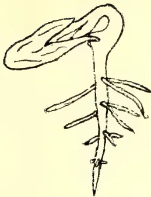
A detailed botanical drawing of a gourd seedling. It features a central stem with several small, oval-shaped cotyledons at the top and a root system consisting of a main taproot and several lateral fibrous roots.Seedlings of Gourd
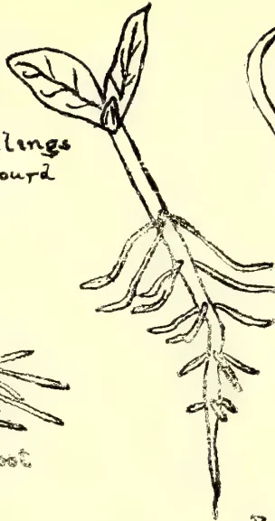
A drawing of a gourd seedling showing a more developed stem with several pairs of small, lanceolate leaves and a more extensive root system with numerous fibrous roots.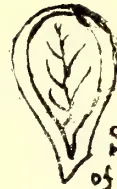
A simple drawing of a single, oval-shaped seed of a gourd, showing its internal structure with a central vein and some internal markings.Seed of Gourd
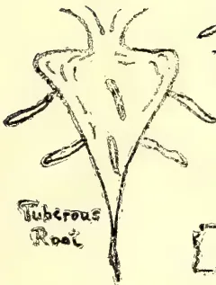
A drawing of a tuberous root, which is thickened and bulbous at its base, with several small, lateral roots branching off from its surface.Tuberous Root
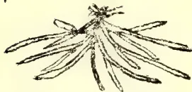
A drawing of a fibrous root system, showing a dense cluster of many thin, parallel roots radiating from a single point.Fibrous Root
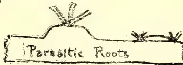
A drawing of parasitic roots, which are shown as small, specialized roots emerging from the surface of a horizontal stem or root.Parasitic Roots
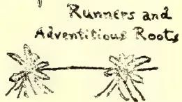
A drawing showing runners, which are horizontal stems with small leaves, and adventitious roots, which are roots that grow from the nodes of the runners.Runners and Adventitious Roots
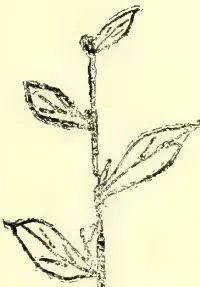
A drawing of a plant stem with several leaves and a small, pointed axillary bud at the top.Stem with Leaves and Axillary Buds
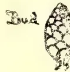
A drawing of a bud, which is a small, pointed structure covered in scales, representing a young leaf or flower.Bud
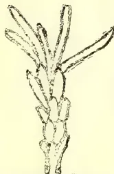
A drawing of an opening bud, showing the scales beginning to separate and the young leaf or flower emerging.Opening Bud
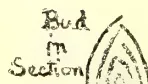
A drawing of a bud in section, showing the internal structure of the scales and the developing leaf or flower.Bud in Section
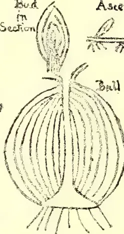
A drawing of a bulb, which is a rounded, layered structure at the base of a plant, with roots extending from its base.Ball
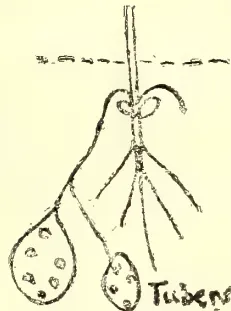
A drawing of tubers, which are enlarged, knobby underground stems, shown with small roots and leaves.Tubers
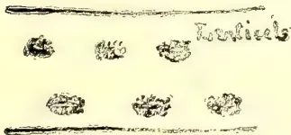
A drawing of several small, oval-shaped follicles, which are seed pods, shown in a row.Follicles
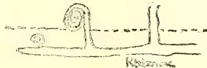
A drawing of a stem with several distinct, raised nodes or knots, showing the points of leaf attachment.Knots on a Stem
LESSONS IN ELEMENTARY BOTANY. PLATE 1.
This image is a scan of a blank page. The paper has a light beige or cream-colored tint. There are a few very small, dark specks scattered across the surface, which appear to be scanning artifacts or dust particles. No text, lines, or other markings are present on the page. 423Miscellaneous.As it is an idea always kept in view, to write a series of lessons that will enable the reader to use a "Flora," such as Trimen's Flora of Ceylon, an unusual number of technical terms will have to be introduced into these lessons, but in general there is no need to learn such terms; for purposes of using the flora it will suffice to know where to look for them.
The reader should not confine himself to the pictures and the text; he should himself get all the plants, or parts of plants, mentioned, and dissect and draw them; too great stress cannot be laid on the advantages of drawing, for it enforces attention to the important points, and ensures that the student shall see them correctly. There is no need to be a trained draughtsman for this kind of work; the great thing is to draw to correct scale of relative sizes.
STRUCTURE AND FUNCTION.—There is reason to believe that the great number and variety of plants now existing have arisen by a process of evolution or gradual modification from a few simpler forms. How simple some forms of life can be is only to be fully grasped by those who study them with a microscope. For example, one of the common green moulds that grow upon trees is found to consist of a vast number of single plants, each of which consists of a minute spherical globule, which can absorb food through any part, can breathe through any part, grows all over, and reproduces itself by simply dividing into two halves; whereas in the tea plant, for instance, water and food are absorbed by the root, worked up in the leaves, carried about the plant by the stems; reproduction is the business of the flowers; and so on. The great feature of the evolution that has gone on has been the increasing complexity of the individual plant, as well as of the whole vegetable kingdom. It is true that very many very simple plants now exist, but the majority of plants are more or less complex. In place of simple, almost homogeneous organisms, any part of which may perform any function that may be required, there now exist also a great many complex heterogenous organisms with many different parts or organs performing different functions, a specialisation which evidently tends to greater efficiency in the performance of those functions, just as the division of the staff of a railway station into booking clerks, porters, ticket collectors, signalmen, and others tends to greater efficiency than if any man at the station were to do anything that was required. There is, in fact, in plants a functional or physiological division of labour, accompanied by a structural or morphological differentiation of organs. To investigate the functions of plants is the province of physiology, and to do the same for the organs that of morphology, which seeks to know and interpret the structure and development of all organs, to trace and explain their origin, descent, and modifications, and to group them according to their natural relationships by descent.
We shall consider the different organs of the more complicated plants, and deal with them in the order root, stem, leaf, flower, fruit and seed.
In an ordinary plant water is continually evaporating from the leaves, and fresh water must be continually supplied from below, or the plant will flag. No amount of rain falling on the leaves will make good the loss, for it is not taken in by the leaves. It may be asked, why then do plants freshen up when there is a shower of rain? The reason is that the air being then saturated, no evaporation can go on from the leaves, and consequently the water coming from the root has nothing to do but to freshen up the leaves.
The ordinary plant absorbs water from the soil, by means of the root. This absorption of water, and of the various substances that are of course dissolved in that water, is the chief object of the root. As there is only a limited amount
Miscellaneous.424of water in any given portion of soil, it is of course obvious that the root should be branched out as much as possible, in order to get into as much of the soil as it can, and in fact this is what we generally find.
The simplest type of root is a primary root going straight down into the soil (a tap root), and giving off side branches (Pl. 1). An easy way of investigating roots of this—or other—kind is to germinate seeds in a tumblerful of wet sawdust. Take for example a gourd or pumpkin seed (Pl. 1); the figure shows it with one side of the seed coat removed, so as to exhibit the veining of one of the seed leaves. If such a seed be carefully dissected (it is best to soak it in water for 24 hours first), and the seed coat removed, it will be found to show two “seed leaves” attached below to the top of a very small rootlet, while between the seed leaves is a very small beginning of a shoot.
Soak another seed in water for 24 hours, and put it in the wet (not dripping, but simply wet) sawdust, with the narrow end of the seed close to the glass. In a few days it will sprout, and a root will come out of the narrow end, bend downwards, and grow. Examination of the now split seed will show that the root has developed a little peg on one side, which holds the seed open for the escape of the young plant. As the root grows downwards it will develop lateral roots, and careful examination of these will show that they are developed in a definite number of rows, each one that emerges from the main root being in a direct line under some other one.
The root emerges horizontally, or nearly so, but turns downwards at once. This is not a mere accident, but is inherent in the nature of an ordinary root. The shoot at the same time, emerging from the same seed, bends upwards. When the root has grown for a few inches, tilt up the glass, and put a stone under it to keep it in the new position, and leave it for a few days. It will be seen that the root changes its direction of growth, and once more comes into the vertical downward line, though the older part retains the direction in which it first grew. Not only does the direction of the tap root change, but also that of the lateral roots, as is roughly indicated in the figure (Pl. 1).
If the soil is uniformly wet, the main root will grow straight downwards, but if the soil be wet on one side and dry on the other, it will grow towards the wet side, the greater degree of moisture on that side exerting a greater effect upon it than does gravity. This may often be seen by growing a bean or gourd seed in a glass of wet sawdust, the sawdust being kept wet on one side only, when it will be seen that the root curves towards that side.
The root does not absorb water, in most cases, directly through its “skin,” but by means of root-hairs. These may be seen in germinating mustard-seeds (grow them on wet flannel) coming off from the stout roots as a dense felt of fine hairs. It can be experimentally proved that it is only these that absorb water, and as they are only near the tips of the roots, that only these are absorbent.
While the principal function of the root is perhaps to absorb water, it also has a very important function in the anchorage of the plant. It is obvious that this will be subserved equally well by the branching and spreading out of the root which serves for the purposes of absorption. A feature which very much helps the performance of both these functions is the fact that the lateral roots do not grow vertically downwards, like the tap root, but at a definite angle with the latter, and keep to this angle, as their change of direction when the glass is tilted shows.
In a large number of plants we do not get a proper tap root at all, but roots branch out from the base of the plant, and are then technically known as fibrous roots (Pl. 1). These may be specially easily and well seen in grasses.
425Miscellaneous.A third function which roots sometimes have to perform is the storing up of reserve food materials. Very often a large quantity of these has to be stored, in which cases the root has to swell out to hold them, and we get such modified forms of root as those of the carrot or turnip, dandelion, and many other plants, in which the root is technically said to be tuberous.
In a great many plants the roots that are first developed from the seed (the true roots) do not remain throughout life the only roots that the plant possesses, but it develops others from the stem which are called adventitious roots. Almost all plants that have creeping stems do this to a greater or less extent (Pl. 1). Yet another type of root is the parasitic root, such as may be seen in the many species of Loranthus or mistletoe (Pilila, Sinh.; Kuruvichchai, Tam.) that attack the trees in this country. These bore their way into the stem of the plant on which the parasite is living (Pl. 1).
(To be continued.)
The spread of co-operative ideas in Germany during recent years has been very marked, and nowhere, perhaps, have they been received with more favour than in the agricultural world. In 1888 there were 4,821 co-operative societies of all kinds, ten years later this number had increased to 16,069, while, according to the Statistisches Jahrbuch, they numbered 23,221 on 1st January, 1905, with a membership of 3,409,871. These included 14,272 co-operative credit societies with a membership of 1,901,000, 1,595 societies for the purchase of agricultural requisites, 3,062 societies for the manufacture of dairy and other products, 682 other agricultural societies, while the remainder were industrial and other societies not distinctively agricultural.
Credit societies, it will be seen, represent the most popular form of co-operation, and account for 61 per cent. of the societies and 56 per cent. of the total membership.
Some part of the success which has attended their formation in Germany may be attributed to the financial support obtained by the formation of central banks, devoting themselves more or less exclusively to co-operative business.
The development in this direction, which has not previously been dealt with in this Journal, possesses many features of interest.
There are two classes into which the credit banks may broadly be divided; those founded on Schulze-Delitzsch system and those based on the Raiffeisen principle. The difference between them has been frequently explained, and it will be sufficient here to indicate the distinction somewhat briefly.
SCHULZE-DELITZSCH BANKS.—The Schulze-Delitzsch Credit Societies were designed by their founder, after whom they are named, mainly for the benefit of mechanics and small tradesmen. They grant loans on promissory notes and bills for short periods of from three to nine months, and at the same time encourage their members to deposit their savings with the Society. At the time of their foundation they rested on the principle of unlimited liability, but in later years limited liability was also introduced, especially as their accumulations of capital increased. Unlimited liability and self-help were, however, declared by Schulze in 1858 to be the only principles justifiable in economy, and, moreover, "particularly suitable to the character and manners of our people." As a matter of fact the collective liability of the members to the extent of their whole means was at that time the only system recognised by the law, but by an Act passed in 1889, the limited liability of members was admitted. A new form of unlimited liability, by which the member's risk was rendered more remote, was also introduced, but has been but little adopted.
Miscellaneous.426In the Schulze-Delitzsch societies every member subscribes a certain share of the capital, no one being allowed to exceed a certain limit. This is payable in one sum or in monthly instalments. Loans are granted to members only, without enquiry as to the purposes for which they are required, on security, which may take the form of mortgages, guarantee by another member, bills, etc. They are only granted for short terms, and this is one of the features which distinguish these associations from those on the Raiffeisen principle. Deposits are received both from members and from other persons, and these, together with the small capital, form the fund from which loans are made, while the credit due to the unlimited liability of the members enables these societies to raise any money which may be required in addition. The societies are usually established in towns, but are open to any one, regardless of place of residence.
The rate of interest on loans demanded by these banks is higher than that required by the Raiffeisen associations, and they are not so generally adapted to agricultural requirements as the latter. It would be a mistake, however, to suppose that they do nothing for agricultural credit, as, according to the figures of 1902, 28½ per cent. of the members were peasants and farmers, 24½ per cent. mechanics, and 10 per cent. merchants and dealers. The number of societies belonging to the Schulze-Delitzsch Union was 899 with 533,888 members.
RAIFFEISEN BANKS.—The loan and savings banks founded by Raiffeisen may be said to have three main objects: (1) to encourage thrift among the agricultural population; (2) to satisfy the demand for loans on personal security; and (3) to act as bankers in the country district. They rest to an even greater extent than the Schulze-Delitzsch societies on the principle of solidarity or unlimited liability, in that practically no share capital is raised, the money for working the society being obtained from entrance fees, subscriptions and deposits, and borrowed from persons outside the society on the collective security of the members. Loans are advanced only for reproductive purposes, evidence being required for a reasonable prospect of repayment at the date fixed, and they must be guaranteed by another member of the society. The operations of these societies are limited to small areas, usually a village or small town, so that the personal character and circumstances of applicants for loans may be known to the members and committee. The administration is honorary, no salaries being paid (except a trifling sum to the secretary), and all profits realised go to a reserve fund.
BANKS WITH LIMITED LIABILITY.—The foregoing classes of associations depend on the joint and several liability of the members for any losses incurred by them, but since the passing of the Act of 1889 the establishment of co-operative societies with limited liability has become possible. The system has of late been more largely adopted, and at the beginning of 1905 there were 1,623 credit societies with a membership of 356,000 on this basis out of a total of 14,272 societies. Societies of this class exist to a considerable extent in Pomerania and Prussian Saxony, where the principle of unlimited liability has not been regarded with favour. Dr. O. Rabe observes that in Prussian Saxony, "where there is a mixture of large, medium, and small properties, unlimited liability is not suitable, as it puts too heavy a burden on the man of property for the benefit of those of smaller means. The view that unlimited liability confers greater authority and credit on co-operative societies is not correct. For what does a co-operative society with unlimited liability represent when, as a general rule, only persons of small means have joined as members?"
The German system of limited liability as applied to co-operative societies differs, however, in respects from the English conception of limited liability. The amount of shares and liability guarantee to be taken is not left to the free will of the members; but compulsorily apportioned to the means of the individual members;
427Miscellaneous.thus members are required to take one share for every £100 for which they are assessed to property tax, and for every share they must undertake a guarantee of £10. That is, they go bail for the liabilities of the society to the extent of one-tenth of their possessions. The credit accorded to each individual member is measured by the amount of his guarantee. Thus a member holding fifty shares guarantees the liabilities of the society to the extent of £500, but he will not be allowed credit for £500, but only for about £375, without further security, and for advances beyond this sum he must give a bill or personal sureties. Dr. Rabe, writing in 1901, observes that during the twelve years these banks have been in existence none have failed, no losses whatever have been recorded in connection with them, and they have rapidly gained the confidence of the population. The value of each share is put at five shillings.
CENTRAL BANKS.—It will be understood that the first need of these societies, whether Schulze-Delitzsch, Raiffeisen, or limited liability, was to borrow money on the cheapest terms, and afterwards, as their reserves and deposits accumulated, to arrange some means whereby any balance in the hands of one society could be used to satisfy the wants of another. From a very early period, therefore, the need of a central organisation began to be realised. Isolated from each other, and, in the case of the Raiffeisen banks, necessarily confined to small areas, with correspondingly small funds, they were hardly in a position to fulfil the expectations entertained of them, and a consolidated body was felt to be a necessity. With this object provincial central banks were formed by combinations of societies, and some of these were afterwards affiliated to still larger institutions, such as the Central Bank of Neuwied. It will be easily understood that the centralisation of co-operative banking was a matter of some complexity, and that the measures taken by the various societies were by no means uniform. A detailed description will be found in a series of reports presented to the International Co-operative Congress at Budapesth, to which those interested in the subject should refer. The following general summary indicates, however, some of the main features:—
THE CENTRAL BANK OF NEUWIED.—In the case of the Raiffeisen societies, the first central bank was formed at Neuwied, in Rhenish Prussia in 1872, by eleven societies. In 1876 it was re-formed as a joint-stock company with a share capital of £12,500, which was gradually raised until in 1900 it stood at £500,000, of which £415,000 had been paid up in cash by 3,754 affiliated societies.
This organisation known as the “Landwirtschaftliche Centraldarlehenskasse für Deutschland,” besides carrying on the business of a banker also buys agricultural requisites and sells produce for the benefit of its societies. The funds required are provided by (1) the share capital; (2) the deposits received, or loans raised if possible for long terms; (3) the commissions charged and the margin of interest; (4) proceeds of the sale of goods; and (5) bonds and debentures not made redeemable at will. These funds are employed for advances in current account to the branch banks and societies which are members, as working capital in the sale and purchase business, and for discounting bills and advancing money on security.
Business between the bank and its societies is conducted by branch banks, but every shareholding society is directly represented at the general meeting, which elects the board of directors. Each district in which there is a branch bank has its own advisory board and local committee of management, as well as managing directors of the branch banks. The latter are on the committee of management of the central bank.
The co-operative character of the central bank is maintained by restricting the dividend to 4 per cent. on the paid-up capital, which goes only to the co-operative societies which are members, the balance remaining being carried to reserve.
56 Miscellaneous.428Each branch bank may give credit to a society up to 10 per cent. of the property of its members, and the main business of the central institution is to equalise the supply and demand of money, which is done in this way: should a branch bank require money it telegraphs to the central bank, which at once assigns to it funds at its banking account with the Prussian Central State Bank. Excess cash held by the branches is in the same way paid to the credit of the central bank.
The magnitude of the operations of this institution may be gathered from the fact that the turnover in 1903 amounted to £15,370,000, and the assets to £3,240,000. The profits only amounted to £12,000, out of which a dividend of 3 per cent. was paid.
OTHER CENTRAL BANKS.—In addition to the twelve local central banks acting as branches of the Central Bank of Neuwied, there are twenty-two provincial central banks affiliated to the Union of German Agricultural Co-operative Societies, presided over by Dr. Haas, of Darmstadt, and in addition some half-dozen central banks outside the Union. These banks represented approximately 8,500 societies, but this number includes some societies other than credit societies, which, taken by themselves, probably number about 7,300. Each of the Central Banks, however, forms a separate entity, the action of the Union being confined to audit and inspection.
Briefly, these central banks have adopted the system of limited liability referred to above, viz., that of issuing small shares carrying a comparative heavy liability, and the credit allowed by them to their affiliated societies varies but bears a relation to this liability, generally in excess. The working funds are derived from the small share capital, from deposits, and from the Prussian Central State Bank, which advances them money on the security of their members' liability to an amount not exceeding ten times the paid-up share capital. According to figures quoted by Herr Heuzeroth in an article prepared for the Sixth Congress of the International Co-operative Alliance, the share capital of the twenty-two banks within the Union amounted to £213,000, and the loan capital to £2,897,000, made up of drafts on the State Bank, £654,000, and deposits from local societies about £2,000,000.
It may be noted that during the past an amalgamation has taken place between the Darmstadt Union and the Raiffeisen organisation at Neuwied, by which the supreme control of both organisations will be vested in a central committee. The terms of the union have been so arranged as to secure the continued existence within it of the special institutions of the Raiffeisen type.
THE GERMAN CO-OPERATIVE SOCIETIES BANK.—It will be seen that the central banks above described, both that at Neuwied and those affiliated to the Darmstadt Union, obtain credit by pledging the combined liabilities of the societies which they represent. In the case of the Raiffeisen banks, represented by the first-named institution, the liability of all the members of all the societies to make good the debts of the central body is unlimited; in the case of the second class of central banks the liability of the societies is limited to the amount of their guarantee. The principle, however, never met with the approval of societies of the Schulze-Delitzsch type, which took the view that a central bank should be an independent institution whose actions would not under any circumstances jeopardise the welfare of the societies. With this object the German Co-operative Societies Bank was formed as a joint-stock company in 1864, with a capital of £40,000, which was gradually increased to £1,500,000. Its operations have not been confined to credit societies, though it naturally made a special feature of co-operative banking, and its essential principle has been that it dealt with the Schulze-Delitzsch banks without favour on distinctly business lines. As may be gathered from its increase of capital, it met with very considerable success, but the extension of banking business in Germany made its amalgamation with some more powerful institution desirable, and it has recently been absorbed into the Dresdner Bank.
429Miscellaneous.THE PRUSSIAN CENTRAL STATE BANK.—It now only remains to notice the action taken by the Prussian Government for the assistance of co-operative banking by the foundation in 1895 of the Prussian Central State Bank. The funds placed at its disposal were at first £250,000, which was increased in 1896 to £1,000,000, and in 1898 to £2,500,000. Dr. Heiligenstadt, the president of the bank, in a memorandum on the subject, thus explains the view taken by its promoters: "When dealing with co-operative organisations, even by the comparatively easy method of current accounts, the great banking institutions of the country obviously cannot forego the condition of demanding adequate bankable security. Bankable security, however, is just what co-operative institutions are rarely in a position to supply to any considerable amount, because in co-operative institutions the formation of capital or pledgeable assets is by the very nature of things slow, and need is sure to be greatest where such formation is least developed. And this hindrance may be said to hamper even societies of old standing, in which the creation of capital has been in progress for some time, and which have as a rule succeeded in some measure in adapting themselves to the requirements of the banking market. In more recently-formed societies, more particularly in agricultural districts, the obstacle is painfully in evidence. Such societies are only very rarely in a position to satisfy bankers' requirements at all. The Prussian Central State Bank was formed to bridge over the existing chasm and bring demand and supply together by interposing between them a powerful institution which, having no selfish interest of gain or profit to study, might be employed to satisfy the need of personal credit on reasonable conditions in the case of the lower and middle classes when combined for productive purposes in co-operative societies."
The State Bank only advances money, except on tangible security, to unions of co-operative societies, such as central banks, &c., and not to individual societies. In the case of unlimited liability societies the advances are limited to 10 per cent. of the total value of the property involved, and in the case of limited liability to something less than the actual sum guaranteed.
At the close of March, 1904, the bank had business relations with fifty-two central banks, nineteen of which were mainly urban and industrial, representing 405 societies and 80,563 members, while thirty-three were rural and agricultural, representing 8,940 societies and 807,101 members. The balance-sheet showed that it held £393,664 on current account and £1,370,684 on deposit, and had £1,877,118 outstanding for advances on bills of exchange, &c., the net profits amounted to £110,000, or 4.41 per cent. on the capital. The bills discounted in 1903 amounted to £3,957,000.
In several other German States, i.e., Bavaria, Saxony, and Wurtemberg, the Governments, without actually establishing State banks, have given subventions or some form of financial assistance to a central co-operative bank, and claimed a reasonable amount of representation in the management.—The Journal of the Board of Agriculture, March, 1906, Vol. XII. No. 12.
Managua, 20th March, 1906.
SIR,—Would it not be a good idea if you would have every year once a table printed with the equivalents of measures, weights and money values most in use all over the East, I mean in Colombo, B. India, Dutch, French possessions, Japan and China? It would make your paper so much more valuable in every respect and a good many things more comprehensible.
With my best regards,
Yours truly,
H. E. LOW.
DEAR SIR,—With reference to the article on “Bee-keeping in Ceylon” published in the Tropical Agriculturist for December, I think the following are worth reproducing in your next issue:—
(From the British Trade Journal for May, 1906.)
“Bee-keeping is an industry in South Australia which affords light employment to an extent not generally known, and is widely spreading where the climate and flora are favourable. Information respecting this pursuit was first obtained in 1891, when it was found that 500 tons were gathered. In 1899 the number of hives had increased to 12,182, and the yield of honey to 238 tons, of £7,000 value, whilst the season 1900 was so propitious that the number of hives was doubled, 26,700 being returned, and 763 tons of honey, of £21,364 value. On the other hand, the season of 1901 was so adverse that the number of hives was reduced to 14,853, or 11,847 fewer, nearly one-half, whilst the yield was only 140 against 763 tons the previous year. The season of 1902 was again favourable, the number of hives increasing to 18,371, or by 3,878, whilst the quantity of honey gathered was 338 tons against 140 tons. The wet year 1903, with heavy rainfalls up to November, was disastrous, the number of hives returned being 17,034, or 1,697 fewer, whilst the output of honey was only 315,765 lbs. against 756,822 lbs., or 441,057 lbs. less. In 1904, the rainfall being normal and other conditions favourable, the honey gathered was the second best yield of the decade. The number of hives was 23,633, and the quantity of honey 1,197,737 lbs. (535 tons), compared with 17,034 and 315,765 lbs. (141 tons) the previous season.”
Also the following taken from Customs Returns sent to us from the under-noted countries:—
| Exports for 1904 from NEW ZEALAND, 55,166 lbs. | ... | value | £1,204 |
| Do St. LUCIA, 71 tins | ... | ,, | £82 |
| Exports for year ending 31st March, 1905, from JAMAICA, 129,128 gals. | ... | ,, | £9,684,120 |
I shall have more figures to send you when the Returns are received.
Yours faithfully,
W. H. M. DAVIES.
Colombo, 21st May.
The Nineteenth Meeting of the Board of Agriculture was held on Monday, 14th May, at 12 noon, in the Council Chamber.
His Excellency the Governor presided.
There were also present:—The Hon'ble Messrs. H. Wace, C.M.G., H. L. Crawford, S. C. Obeyesekere, P. Arunachalam, and A. Kanagasabai, Dr. Willis, Dr. H. M. Fernando, Messrs. L. W. Booth, F. Beven, R. Morison, C. Driberg, Daniel Joseph, R. B. Strickland, E. E. Green, G. W. Sturgess, Herbert Wright, Kelway Bamber, W. Dunuwille, and the Secretary.
There were several visitors present, including Mr. L. Sreenivasa Raghava Aiyar, Asst. Secretary of the North Arcot (South India) Agricultural Association, and Mr. Simon Fernando Sri Chandrasekere Mudaliyar.
On His Excellency's suggestion, the Committee—composed of the Hon. Mr. H. L. Crawford, Government Agent, W.P., the Hon. Mr. S. C. Obeyesekere and Mr. Drieberg—were appointed to visit the land with Mr. Fernando Mudaliyar and report on the offer. His Excellency thanked Mr. Fernando for his offer.
3. A list of new members was read. Three new Branch Societies at Passara, Welimada, and Dumbara were affiliated.
4. The Progress Report was circulated.
5. Mr. M. Kelway Bamber, Govt. Analytical Chemist, read a paper on "The Growth and Distillation of Camphor." His Excellency, Messrs. Obeyesekere, Morison, Daniel Joseph, Beven and Dr. Willis spoke in the discussion which followed the paper.
6. The Hon. Mr. H. Wace, C.M.G., moved that "The Society vote a sum of Rs. 50 towards the cost of a stud bull for the Nuwara Eliya District." The Hon. Mr. H. L. Crawford seconded. The motion was carried.
7. His Excellency called the attention of members to the reports on cotton cultivation and the quantity of seed applied for.
8. Reports on the Gampola and Nuwara Eliya Shows were tabled. The meeting adjourned at 1-30 p.m.
There are now 1,090 members of the Ceylon Agricultural Society, being an increase of 17 since the last meeting. Back publications from November last are sent to all members when they join.
The Society mourns the loss of one of its most able and zealous supporters in the death of the Hon. Mr. H. Wace, C.M.G.
A motion expressing the regret of the Board will be moved at to-day's meeting by the Hon. Mr. Francis Beven, and seconded by Mr. W. D. Gibbon.
Mr. Wace was Chairman of the Live Stock Committee.
Local Societies.—Since the last meeting of the Board I have visited the Branch Societies at Jaffna and Mullaitivu.
At Jaffna a large and representative meeting was held under the presidency of the Government Agent. A paper was ready by Mr. Saravanamuttu on "Tobacco Cultivation."
There was an Exhibition of products grown in the Jaffna District—the jack fruit, manioca, and other yams, and limes were particularly good. The Branch decided to compete for the prize of Rs. 100 to be awarded at the Colombo Show for the best exhibition of native products from any district in Ceylon. It was also agreed to arrange for Village Fairs at Chavakachcheri and Kodikamam.
The meeting at Mullaitivu was held on Empire day. There was a good attendance. There has been a considerable increase in the cultivation of manioca due largely to the efforts of Mr. Lewis, when Government Agent, to introduce this yam. It was decided by the meeting to make special efforts to extend Cotton cultivation in the district, and to induce the villagers to plant it on their chenas. I undertook, on behalf of the Society, to pay the expenses of transport of a supply of Sea Island cotton to Colombo if not less than 50 acres were cultivated. Seeds were distributed among the members.
The Date Palm suckers sent to Mullaitivu are doing well, and a further supply is being sent there.
I visited Chavakachcheri from Jaffna; it is proposed to start a Branch of the Society there.
432The Dumbara Branch of the Society has made a good start. There are now 177 members. Two prizes of Rs. 15 each have been offered for the best vegetable gardens grown by members in the district; eleven members have undertaken to open up land with cotton, and Sea Island cotton seed has been applied for.
A meeting of the Badulla Branch was held on 26th May, which was well attended. A paper on "Live Stock in relation to Agriculture" was read by Mr. P. C. J. Fernando.
A meeting of the Wellaboda Pattu (Galle) Branch was held on 30th May, at which arrangements were made for holding a Show on the 16th and 17th November, 1906.
At a meeting of the Kegalla Branch, held on 18th May, it was decided that meetings of the Branch be held in future on the first Friday of each month instead of once a quarter. It was also resolved to start an Experimental Garden.
A meeting of the Galle Branch was held on 11th May, at which a paper was read entitled "Notes on Coconut Cultivation in the Southern Province" by Mr. H. Amarasuriya. Papers on Sugar and Cinnamon Cultivations were promised by Messrs. E. D. Bowman and E. R. Gooneratne, Mudaliyar.
At a meeting held at Ampitiya, Central Province, it was decided to form a Branch of the Agricultural Society in Pata Hewaheta.
At a meeting of the Vavuniya Branch progress was made with several proposals before the Branch:
At a meeting of the Kandaboda Pattu Branch, held last month, steps were taken to secure land for an Experimental Garden.
Prizes of Rs. 10 each were offered for the best crop of English vegetables grown on an extent not less than one-eighth of an acre, and for the best crop of chillies grown on half an acre. The prizes to be in addition to those previously offered by members of this Branch.
A meeting of the Kurunegala Branch was held to make arrangements for the Show to be held on the 23rd and 25th August.
At a meeting of the Anuradhapura Branch, held on the 28th ultimo, a paper was read on Grape Vine Culture by the ex-Curator of the Experimental Garden at Anuradhapura.
Mr. Srinivasa Raghava Aiyar, Assistant Secretary of the North Arcot (South India) Agricultural Society, visited Ceylon last month to study the methods of the Society here. He joined as a life-member and affiliated the North Arcot Branch also as a life-member.
Vote to Mahawalatenna Experimental Garden.—It has been decided to discontinue this vote from the beginning of the month, as the garden does not answer the requirements of an Experimental Garden, being too far from th
433main road, and so of little use for distribution of seed and demonstration of different cultivations. The vote will be allowed for the present to the Balangoda Branch for opening up the garden there on the land allowed the Branch by Mr. S. D. Mahawelatenna.
Agricultural Shows.—The Kegalla Show has been fixed for October; the Kurunegala Show for 23rd and 25th August. The report on the Badulla Show by Mr. J. K. Nock is tabled for information of members.
Several Local Branches have undertaken to compete for the prize of Rs. 100 (or a gold medal) offered by the Society to the Local Branch making the best exhibit of samples of native products grown in its district at the Colombo Show on the 22nd and 23rd June.
It is hoped also to have special exhibits of Ceylon timber and forest produce of agricultural implements used in different districts in Ceylon, and a set of the new and improved agricultural implements to which the Madras Central Agricultural Committee have invited the attention of their members.
Orders have been received for sixty of these implements. The Kegalla Branch alone applied for 37 Cawnpore Model Ploughs. The list of these implements is again given below for the information of any members wishing to procure them:—
| Cawnpore Model Plough, wooden. | Cost Re. 1.75 | } Light. Both can be drawn by a pair of ordinary bullocks; leaves no intervals of untilled land between furrows. |
| Cawnpore Model Plough, iron. | Cost Rs. 7.25 |
Improved Common Plough. Cost Rs. 1.06. Nearly as useful as No. 1. Digs land twice as deep as the common, obviating the necessity of a second ploughing.
“Nolla,” for levelling land. Cost Rs. 2.06.
“Gorru,” seed drill. Cost Rs. 2.50.
“Guntaka,” weeder. Cost Rs. 3.81.
“Papita,” for covering seeds with earth. Cost Rs. 3.81.
They are to be obtained direct from the Agricultural Munshi, the Vizianagram Zamindary Revenue Branch, Agricultural Department, Vizianagram, S. India.
Seed distribution.—The number of applications for seed was very large, and the supply specially imported for the Society is now exhausted. A second lot of seeds will be obtained for the Ceylon Agricultural Society when the Seed Store at the Government Stock Garden is completed. The importation and distribution of seed for the Society have been undertaken by Mr. C. Driberg, Superintendent of School Gardens.
Cotton.—The Welimada, Mullaittivu, Anuradhapura, Jaffna, Delft, Kegalla, Matale, and Vavuniya Branches will undertake experiments in cotton cultivation.
The Superintendent of the Experiment Station at Maha-illuppalama hopes to sow 50 acres with Sea Island cotton in September or October. The Maniagar of The Islands, Jaffna, has been granted the lease of the island of Paruttivu for cotton cultivation. The cotton planted formerly in the land leased to the Hon. Mr. Francis Beven is flourishing, and it is hoped that the land will be taken up again, perhaps this time for a cotton experiment.
Yams.—The yams sent to the Society from the Jamaica Agricultural Society have unfortunately arrived in a useless condition.
434Grass seeds.—Mr. O. W. Henman, Irrigation Engineer, Giant's Tank, has kindly presented the Society with the following varieties of grass seeds forwarded to him from England by Messrs. Sutton & Sons, Reading :—
Lucerne, Red Fescue, Poa trivialis.
Perennial Rye Grass (Sutton's selected).
Itali Rye Grass (Sutton's Giant Evergreen).
Bokhara Clover.
Sainfoin (milled seed), Hungarian.
Hungarian Forage Grass.
Lupin.
Mixture of Grasses suitable for binding clay banks which are likely to be washed by occasional very heavy rains.
These seeds will be distributed among Local Branches or Members of the Society for experiments in different districts.
Date palms.—The suckers received from Egypt have been sent to Mr. V. Casipillai, Proctor, Jaffna, and to the Local Branches at Jaffna, Mannar, Mullaitivu, and Puttalam.
Live stock.—At the last meeting of the Board, on the motion of the late Hon. Mr. H. Wace, C.M.G., the Society voted Rs. 50 towards the cost of a stud bul for the Nuwara Eliya District, the moiety of the cost to be borne by the Nuwara Eliya Branch.
Castration.—Up to the 6th June 69 demonstrations had been given by the Government Veterinary Surgeon and his staff; 1,589 cattle were operated upon, brought in by 1,307 owners; and 94 men were taught the operation. These figures do not include operations given by the men trained. These figures will be procured from the Local Societies. 23 demonstrations were held in the North-Western Province, 21 in North-Central Province, 4 in Central Province, 5 in Northern Province, 4 in Western Province, 1 in Sabaragamuwa (the first in this Province), and 11 in Southern Province. It will be necessary to apply for a further grant to carry on this work; there are numerous applications still to be taken up.
How far castration can be made compulsory in at least certain districts deserves the attention of the Live Stock Committee and the Board.
Publications.—Leaflets on "Tobacco Cultivation," "Transplanting in Paddy Cultivation," and "Bud Rot of the Coconut Palm," by Mr. T. Petch, are with the Government Printer.
A leaflet entitled "Method of taking Samples," by Mr. Kelway Bamber, is issued to-day.
The Editor of the "Sihala Samaya" kindly sent 100 copies of two editions of his paper containing the proceedings of the last meeting of the Board in Sinhalese, which have been circulated to Local Societies.
E. B. DENHAM,
June 11th, 1906.
Secretary, Ceylon Agricultural Society.
This image is a scan of a blank page. The paper has a light beige or cream-colored tint. There are a few very small, dark specks scattered across the surface, which appear to be scanning artifacts or dust particles. No text, lines, or other markings are present on the page. This image is a scan of a blank page. The paper has a light beige or cream-colored tint. There are a few very small, faint dark spots scattered across the surface, which appear to be scanning artifacts or minor imperfections in the paper. No text, lines, or other markings are present.TO THE
DIRECTORS:—Messrs. R. B. Magor, W. H. Savill, A N Henderson, and W. Forsythe.
The Directors beg to submit the First Annual Report with Accounts showing Expenditure incurred to the 30th September, last.
| PLANTING.—The area planted during the South- | ||
| West Monsoon amounted to | 422 acres | |
| In course of planting | 190 .. | |
| Total area under plant at the end of 1905 will be | 612 acres | |
| Situated as follows:— | ||
| At Ambedeniya on Leasehold Land near Bible Rock | 462 acres | |
| At Kiribatgalla on the 727 acre Grant near Pelmadulla | 150 .. | |
| 612 acres | ||
EXPENDITURE to the 30th September, as shown by the accounts, amounted to £4,003 6s 10d, which includes the the Preliminary Expenses of forming the Company, and £1,007 to Mr. W Forsythe for his services in selecting land, arranging for Managers, and other preliminary operations. This amount, we may add, has been invested by Mr. Forsythe in the Company.
| Expenditure in Ceylon | £2,676 | 3 | 9 |
| Expenditure in London | 371 | 19 | 6 |
| £3,048 | 3 | 3 | |
| Paid Mr. W Forsythe | 1,000 | 0 | 0 |
| £4,048 | 3 | 3 | |
| Less Interest received | 44 | 16 | 5 |
| £4,003 | 6 | 10 |
Cost of planting has been within the estimate, and as the total outlay to the end of the current year in Ceylon is not likely to exceed R59,000, the area put out in 1905 should cost likely under R100 per acre.
| By the end of 1905 the total expenditure on the basis of the above estimate will amount to about | £5,200 | 0 | 0 | |
| During 1906 it is proposed to put out 20) acres at Ambedeniya and 500 acres at Kiribatgalla. The cost of these extensions and the upkeep of the area already planted is estimated at | 5,000 | 0 | 0 | |
| Making total cost of planting to end of 1906 for about 1,300 acres | £10,200 | 0 | 0 | |
| To this figure has to be added the cost of land purchased, but not yet paid for, as follows:— | ||||
| Kiribatgalla 727 acres at R50 per acre | £2,500 | |||
| Delta 1,200 ,, at R25 ,, | 2,800 | £5,300 | 0 | 0 |
| Total expenditure at the end of 1905 should therefore amount to about | £15,500 | 0 | 0 |
The balance of 700 acres required to complete the programme of 2,000 acres, it is proposed to plant on the Delta Block during 1907.
CAPITAL.—In accordance with the resolution passed at the Extraordinary General Meeting of the Company, held on the 18th May, and confirmed at the meeting of the 7th June, the nominal capital was increased by £30,000 to a total of £50,000. Of this additional capital £20,000 only was offered for subscription, and shares to the extent of £15,000 were applied for and issued, making the total
capital subscribed £35,000. As this amount of capital is estimated to provide sufficient funds to cover the estimated outlay for completing the programme of planting out and bringing into bearing 2,000 acres, it has been decided not to issue any further shares at present. Should it subsequently be found desirable to extend the planting programme beyond 2,000 acres, no difficulty is anticipated in placing further shares, possibly at a premium, as the capital cost of the Company's estates per acre is likely to work out at an extremely moderate figure in comparison with most other Rubber Companies. The Power vested in the Directors to call up 3s per share during the current year has not been exercised, but they propose, if approved by the shareholders at the meeting, to make a call of 1s per share payable 29th December.
| The total capital called up will then amount to 6s per share on £35,000 | £10,500 | 0 | 0 |
| A further call of 3s in 1906 | 5,250 | 0 | 0 |
| Provis for estimated outlay to 31st December, 1906 | £15,752 | 0 | 0 |
By order of the Board. GEO. WILLIAMSON & Co., Secretaries. London, 28th November, 1905.
Directors: J Sancroft Holmes, Chairman, H K Rutherford, and G A Talbot.
The Directors beg to submit the General Balance Sheet and Profit and Loss Account for the year ending 30th June, 1905, duly audited. The net amount at credit of Profit and Loss Account, including the Balance brought forward at 30th June, 1904, and after providing for General Expenses, Directors' Fees, Income Tax, &c., is £2,393 11s 4d. Dividends on the 6 per cent. Preference Shares were paid for 1904-1905 (less Income Tax) amounting to £1,282 10s 6d. It is proposed to pay a Dividend of 3 per cent. (less Income Tax) on the Ordinary Shares which will absorb £525 5s 6d. It is proposed to write off for Depreciation £373 1s 1d. And to carry forward to next year a Balance of £210 7s 3d. Total £2,393 11s 4d.
Although the conditions in Ceylon during the past year were more favourable as to yield, the Tea Market was somewhat less so with regard to the selling price of Tea. The gross average price realised for the tea was 6 9/10d per lb as against 7 9/10 per lb the previous season, and the rate of Exchange remained unaltered at 1s 4 2/3d. The yield of Tea was 416,349 lbs., being 29.5% lbs in excess of the previous year, and was equivalent to a yield of 458 lb per acre. The Cardamom Crop was disappointing both in yield and price, the former being 5,228 lb as against 12,282 lbs in 1903-04, the latter being 13d gross compared with 13 7/8d. The Chairman, Mr J Sancroft Holmes, has paid a visit to the Company's Estates and reports favourably on the condition in which he found the properties.—By order. WM. JOHNSTON, Secretary. London, 21st Nov. 1905.
DIRECTORS.—R. B. Reid, Chairman, H. K. Rutherford, G. A. Talbot.
The Directors herewith submit the General Balance Sheet and Profit and Loss Account for the year ending 30th June, 1905, duly audited. The net amount at Credit of Profit and Loss Account, after providing for general expenses, Directors' fees, income tax, &c., is £1,337 15s 3d. Dividends on the 6 per cent. preference shares were paid for 1904-1905 (less income tax) amounting to £312. It is proposed to write off for depreciation £70 ; and to carry forward to next year a balance of £225 15s 3d. Total £1,337 15s 3d.
The Estate Crop has been 201,353 lb., equivalent to a yield of 485 lb. per acre, as against 264,920 lb. the previous year, and has realised 5.74d per lb. gross as compared with 6.43d last year, and the rate of exchange was 1s 4 2/3d. There are some
THE TEA,
and 82 acres of jungle lands are now planted with rubber alone.—By Order of the Board. WM. JOHNSTON, Secretary, London, Dec. 18, 1905.
( 2 )The working account, after providing for London charges, shows a profit of £2,844 8s 6d., and a profit and loss account, including the balance brought forward from the previous year, and after payment of interest on debentures, &c, leaves a balance of £1,899 11s 7d. The directors, in view of the present position of the company, recommend that this amount should be carried forward.
The yield of tea from the Company's estates for the past and two previous seasons was as follows:—Lawrence and Venture, 1901-5, 398,423 lb; 1903-4, 342,904 lb; 1902-3, 315,401 lb. Selegama, 1904-5, 135,854 lb; 1903-4, 60,787 lb; 1902-3, 167,870 lb. Wavina, 1904-5, 146,554 lb; 1903-4, 152,993 lb; 1902-3, 126,339 lb.
The gross average prices obtained in London were:—Lawrence, 1904-5, 7s 8d; 1903-4, 7 13d; 1902-3, 7s 5d. Venture, 1904-5, 7s 2d; 1903-4, 7 40d; 1902-3, 7s 6d. Selegama, 1904-5, 5s 70d; 1903-4, 6 40d; 1902-3, 6s 26d. Wavina, 1904-5, 5s 60d; 1903-4, 6 47d; 1902-3, 6s 25d. The crop of cocoa comprised 242 cwt from Kahawatte and 33 cwt from Wavina, in all 275 cwt., and this realised a net average of about 46s. per cwt; 4,072 seed pods and 2,368 coconuts were also disposed of. The previous year's crop of cocoa was 404 cwt. It will be seen from the above statement that the total crop of tea from the Company's estates was larger than that of either of the two previous seasons, but, owing to the very low prices ruling for the commoner teas from the low-country estates, the result of the year's working is again disappointing. Considerable progress has been made in the cultivation of rubber on Kahawatte and Wavina estates, and the board have given instructions for further planting of this product. The items charged to capital account, amounting to £550 1s. 11d., comprise the cost of extension of the factory on Selegama and planting rubber and other products.
DIRECTORS:—R. A. Galton, Esq., T. P. Simpson, Esq.; R. Huyshe Eliot, Esq. (Managing Director); The Eastern Produce and Estates Co., Ltd., Agents and Secretaries. Superintendent of Estate:—L. P. White, Esq.
The Directors submit herewith the balance sheet and profit and loss account for the year ending 31st December, 1905, duly audited. The balance of profit (including R3,606 96 brought forward) is R24,470 82d.; of this sum R7,200 has been absorbed in paying an Interim Dividend at the rate of 3 per cent. The Directors propose after placing R471 59 to Reserve Fund, being 2½ per cent on the profits as resolved on in general meeting, to declare a further dividend at the rate of 5 per cent, making 8 per cent, for the year absorbing R12,000, and to carry forward to 1906 account R2,799 23. The total tea crop was 204,259 lb. against the estimate of 185,000 lb. The cost of the tea delivered to buyers was 24 88 cents per lb. or 22 63 cents exclusive of manuring; the crop was sold locally realising 35 40 cents per lb. leaving a balance of gain 10 52 cents. Cost in 1904 was 25 96 cents and value 35 08 cents. The past year was a favourable one for crop but unfortunately the Superintendent was considerably handicapped in dealing with it in the Factory during the alterations to the Turbine and complete renewal of the Turbine piping, the old piping being worn out and unequal to the extra pressure of water secured by the recent alterations to Turbine and Dam, and for some weeks during these operations it was necessary to send the leaf to a neighbouring factory to be manufactured. During the season a tea cutter was added to the factory plant which being now adequate for all requirements will admit in future of full justice being done to the crop, estimated at the moderate figure of 200,000 lb. in 1906. The estate is in good heart and the tea shewing both in appearance and yield the benefit of the steady manuring policy carried out during the past few years. In 1903, 145 acres were treated with manure; in 1904, 160 acres; in 1905, 147 acres, and it is proposed to treat 150 acres in 1906. The Company's property consists of:—
| 437 acres | Tea under leaf. | Yield in 1905. 467 lb. per acre. |
| 24 ,, | Ravines, scrub, roads, &c., | in the 8 tea fields of the estate. |
| 58 ,, | Jungle, jungle belts and swamp. | |
| 519 acres. |
The estimated crop for 1906 is 200,000 lb. tea or 458 lb. per acre. It will be seen that the property representing capital now stands in the balance sheet at approximately R549 per acre cultivated, and that the profit per acre is R45 46 as compared with R31 28 in 1904 and R49 15 in 1903.
the profit upon capital being 7 86 per cent.—By order of the Directors, THE EASTERN PRODUCE & ESTATES CO., LTD., Agents and Secretaries.—Colombo, 25th January, 1906.
DIRECTORS:—Messrs. R. Webster, W. D. Gibbon and G. H. Alston. Estate Superintendent—Mr. L. A. Wright.
| ACREAGE: | |||
|---|---|---|---|
| Brunswick and Bloomfield. | Caskieben. Total. | ||
| Tea in full bearing | 446 | 207 | 653 |
| Tea in partial bearing | 10 | — | 10 |
| Grass, Timber Trees, &c. | 64 | — | 62 |
| 518 | 207 | 725 | |
The Directors submit herewith to the Shareholders the Accounts of the Company for the past year. Crop seemed amounted to 357,799 lb of Tea, or an increase over 1 04 crop of 41,212 lb which was due to the very favourable flushing weather experienced during the year. The average net price realised was 37 92 cents. As advised to the Shareholders by circular a contract was entered into for the crop secured on the estate from 8th April, 1905, to 31st of March, 1906, to be manufactured into Green Tea at 42 cents per lb delivered in Colombo. The year's working shows a profit of R34,608 96, to which falls to be added the balance from last account of R3,411 59, making R38,020 55 available for distribution. An Interim Dividend of 5 per cent was paid on 29th July last, and the Directors now recommend the payment of a Final Dividend of 5 per cent making a total of 10 per cent for the year, and that the balance of R3,020 55 be carried forward to this year's account. The estimate for the present season provides for an expenditure of R99,328 50 on a crop of 350,000 lb, which includes a sum of R14,420 to be expended in cultivation. The cost of extra drying machinery and Liquid Fuel Installation, necessitated by the growing scarcity of fuel, is estimated at about R7,000.—By order of the Directors, WHITTALL & CO., Agents and Secretaries. Colombo, 1st February, 1906.
DIRECTORS:—Sir Stanley Bois, W J Smith, Esq., G H Alston, Esq.; Estate Inspector:—John Gordon, Esq.; Estate Superintendent:—C W Maclean, Esq.
| ACREAGE. | ||
|---|---|---|
| Tea in full bearing | .. | 577 Acres. |
| Cardamoms | .. | 98 ,, |
| Fuel | .. | 17 ,, |
| Total Cultivated | .. | 692 Acres. |
| Building sites | .. | 14 ,, |
| Jungle and Waste land, &c. | .. | 251 ,, |
| Total of Estate | .. | 957 Acres. |
The Directors have now the pleasure to lay before the Shareholders the accounts for the past year. Owing to a very favourable season the tea crops secured amounted to 283,400 lb., showing an increase over estimate of 20,730 lb. and an increase over 1904 crop of 16,889 lb. The net price realised was also in excess of the previous year, being 40 11 cents per lb. as compared with 37 38 cents. The Cardamom crop amounted to 6,331 lb. which realised for the quantity sold the net average of 48 67 cents per lb. The profit for the year's working amounted to R36,06 65, equal to 12 per cent on the Capital of the Company. In view of the steady decrease in the Cardamom crop during the past three years, the small profit per acre earned by this product, and of the possibility of its being found hereafter advisable to cut out the Cardamoms, the Directors have decided to write off from Capital Account the sum of R5,880 or R60 per acre on the 98 acres planted in this product. This will leave a sum of R30,126 65, to which has to be added the balance of R3,761 26 brought forward from last season, making a total of R33,887 91 available for distribution. An Interim Dividend of 4 per cent. was paid on 1st August, 1905, and the Directors now recommend the payment of a Final Dividend of 6 per cent. making a total of 10 per cent. for the year, and that the balance of R3,887 91 be carried forward to the current year's account. During the year a survey was made of the whole of the cultivated area, which has necessitated a slight alteration in the acreage from the figures given in last report. The estimate for the present year provides for the expenditure of R78,434 65 on crop of 275,000 lb. of tea and 7,000 lb of Cardamoms.—By order of the Directors, WHITTALL & CO., Agents and Secretaries, Colombo, 1st February, 1906.
( 3. )DIRECTORS:—Messrs G H Alston, J P Anderson and A L Hine-Haycock. Estate Inspector:—Mr J P Anderson. Estate Superintendent:—Mr D I Mackenzie.
| ACREAGE. | ||
|---|---|---|
| Tea in full bearing | .. | 374 Acres |
| Rubber planted | .. | 31 " |
| Felled for Rubber (about) | .. | 15 " |
| Jungle and Waste land | .. | 153 " |
| Total | .. | 573 Acres |
The Directors submit to the Shareholders the accounts of the Company for the past year. The crop secured amounting to 181,010 lb of tea, showing an increase over 1904 of 11,940 lb, but owing to the low price ruling for common teas during the past 12 months, the net average price realised was only 26.37 cents per lb, the cost per lb however was reduced to 22.35 cents per lb which included 2.71 cents per lb expended on cultivation. The net profit for the year amounted to R6,018.64 to which falls to be added the balance of R5,781.36 brought forward from the previous year. In view of the extension in Rubber which has been decided upon by the Directors, they now recommend that a sum of R10,000 be transferred to Extension Fund Account, leaving a balance of R1,800 to be carried forward to the current season's account. Negotiations have been practically completed for purchasing 230 acres of land, of which 200 acres will be opened in Rubber during the year. A census of the trees and plants growing on Ruanwella has been taken with the following results:—
| Over 12 feet high | .. | 4,867 trees |
| From 6 to 12 feet | .. | 2,896 " |
| Under 6 feet | .. | 4,440 " |
| Total | .. | 12,303 trees. |
Planted in ravines, swamps and along roadsides.
During the past year about 31 acres have been planted with Rubber, and about 15 acres have been felled ready for burning, while the whole of the tea is holed 30 feet by 30 feet, and is ready for planting with Rubber in suitable weather. On this work during the past year R3,681.95 was expended. The estimated expenditure on Working Account for 1906 is R47,258.56, for a crop of 190,000 lb of tea.—By order of the Directors, WHITTALL & Co., Agents and Secretaries. Colombo, 1st Feb., 1906.
| ACREAGE. | ||
|---|---|---|
| .. | acres. | |
| Tea | .. | 444 |
| Rubber | .. | 3 planted S.W. 1903 10' x 10' |
| " | .. | 10 " " 1904 12' " 15' |
| " | .. | 84 " " 1905 15' " 15' |
| " | .. | 16 " N.E. 1905 15' " 15' |
| Ravines, Grass and Waste | .. | 11 |
| Reserve | .. | 263 |
| Total | .. | 821 acres more or less. |
The Directors have pleasure in submitting to the Shareholders of the Company the Accounts duly audited for the year ending the 31st December, 1905. The Crop harvested for the year amounted to 275,620 lb of made tea against an estimate of 200,000 lb, or the equivalent of 653 lb per acre, and upon sale in the Colombo market realised a nett average of cents 25.41 per pound. The excess in crop over the estimate was due to favourable flushing weather experienced during the year, the absence of any serious attack of helopeltis, and also to the fact that the Superintendent was able to maintain his labour force on a level sufficient for all the requirements of the estate. In addition to the Estate tea dealt with in the factory, 30,005 lb, were made for others, making a total of 305,625 lb manufactured in the year. The cost of production, including cents 2.19 spent on manuring, but exclusively of items on Capital Account, was cents 21.12 per pound. The balance at credit of Profit and Loss Account after providing for depreciation on Building and Machinery, Interests, Management, and other charges, and including a balance of R465.75 brought forward from 1904, amounts to R7,083.93. Of this sum the Directors recommend that R7,000 should be placed to credit of Rubber Extensions Account to provide for expenditure on this account, and the balance R83.93 carried forward. The estimated crop for the current year is 23,000 lb to be produced at a cost of cents 24.90 per pound after providing for manuring 239 acres, which will absorb the equivalent of cents 4.05 per pound of made tea.
RUBBER.—In accordance with the circular notice issued to the Shareholders in October last, the purchase of Happugamana Estate was completed, and the area of this Estate is included in the Acreage Statement shown above.
An area of 84 acres of the reserve land on Kelani Estate was also opened and planted during the S.W. Monsoon, and a further 16 acres during the N.E. Monsoon, making a total of 100 acres of land opened in Rubber during the year. The following table giving particulars of the Rubber now growing on Kelani and Happugamana Estates will perhaps be of interest to the Shareholders:—
| Clearings. | Acres. | Planted. | Distance apart, | Estimated No. of trees | Average (circ.), | Average height, |
|---|---|---|---|---|---|---|
| Happugamana | 53 S.W. 1903 10' x 10' | 2,000 | 6'13" | 23' | ||
| Do Tea | 21 S.W. 1903 10' x 10' | 7,300 | 2'95" | 14' | ||
| Kelani | 10 S.W. 1904 12' " 15' | 1,950 | 3'15" | 14' | ||
| Kelani | 84 S.W. 1905 15' " 15' | 15,500 | about | 4½ ft. high. | ||
| Keland (Rubber in Tea) | — | — | — | 100 | — | — |
| Kelani | 16 N.E. 1905 15' x 15' | 2,900 | — | — | — | — |
The Directors recommend that another 40 acres be opened in Rubber during the year 1906 making the total area under this product 208 acres. During the current season the expenditure on the Capital Account is estimated to amount to R13,500 made up as follows:—
Say R4,500 for Upkeep of Rubber clearings (which will be practically covered by the amount which it is proposed should be set aside from last year's profits).
Say R3,000 approximate cost of opening 40 acres in Rubber. Say R6,000 for the purchase and installation of a 25 H.P. Hornsby Akroyd oil engine, the provision of increased motive power in the Factory having become necessary, owing to the fact that sufficient water is not now available throughout the year to drive the existing turbine.
FINANCE.—Referring to the amounts shown in the annexed balance sheet under heading "Debts due to the Company," it should be explained that the mortgage over Kelani Estate R25,000, and the overdraft due the National Bank of India, Limited, R35,045.46 have been liquidated since the accounts were made up, these items being covered by a permanent loan for three years of R60,000 secured by a primary mortgage over the Company's Assets, payment of which was received on the 3rd of January.—By order of the Directors.—CARON & Co., Agents and Secretaries.
DIRECTORS:—Messrs. T G Hayes, S H Hayes and T S Grigson.
| ACREAGE. | |
|---|---|
| Tea in full bearing | .. 340 acres |
| Fuel Trees | .. 5 " |
| Grass Land | .. 10 " |
| Total | .. 355 acres |
The Directors beg to submit their Report with statement of accounts for the year ended 31st December, 1905. The crop secured during the twelve months, including 104 lb. brought forward from 1904, amounted to 207,670 lb. against an estimate of 180,000 lb. which may be considered satisfactory, being equal to an average yield of 6.0 lb. per acre. Last year's crop was 176,389 lb. only. The Teas have cost less to produce this year, the f.o.b. rate, including 2.48 cents spent on cultivation works, amounting to 24.60 cents as against 27.14 cents per lb. last year, with 3.30 cents per lb. for manuring. In the matter of prices results compare unfavourably with last season, the net average being barely 35.60 cents per lb. as against 38.75 in 1904. The working account, however, shows the year's profit to have been R22,794.14 as against R17,653.70 last year. To this has to be added a sum of R526.45 brought forward from last season, and after providing for interest on mortgage, Superintendent's Commission, &c., there remains a balance of R13,057.22 available for distribution. Out of this sum the Directors recommend that a final dividend of 6 per cent be declared, making 9 per cent for the year, and that the balance after payment of Directors' fees be carried forward to season 1906. The estimate for the new season is based on a crop of 180,000 lb. of made tea, and the expenditure, including 3.34 cents for manuring, works out at 27.20 cents per lb. The property is reported in excellent condition.—By order of the Directors, GEORGE STEWART & Co., Agents and Secretaries. Colombo, 2nd Feb. 1906.
( 4 )DIRECTORS.—Messrs T S Grigson F L Clements, J Paterson. The Directors have pleasure in submitting their Report for the year ended 31st December, 1905, together with a Statement of Accounts covering the same period, duly audited. Crop on Brownlow considerably exceeded the estimate, but the Glassaugh yield did not quite come up to expectations. The combined output, however, compares favourably with that of last year, 469,165 lb. having been secured as against 456,014 lb. in 1904, the estimate in both cases being the same, viz: 475,000 lb. The net average price realised for the whole crop is 43.61 cts. per lb. and though this is about 1 cent per lb. less than the teas fetched last season, it is mainly accounted for by the depressed state of the local market towards the latter end of the year, and, to a certain extent also, by the larger yield obtained from Brownlow. The average for 1904 was 44.72 cents per lb. The cost of production works out at 25.19 cents per lb. as compared with 24.21 cents in the previous year, while the amounts spent on manuring operations were 2.23 cents and 1.89 cents per lb. of tea in 1905 and 1904 respectively. The gross earnings for the year as shown in the Revenue and Expenditure account amount to Rs6,51.80, which sum has been transferred to Profit and Loss Account, and the latter closes with a credit balance of Rs4,055.62 after provision has been made for interest payments, Mortgage redemption, Depreciation, &c. Out of this available surplus the Directors propose the payment of a final dividend of 7 per cent. making 10 per cent. for the year, the balance remaining, after providing for Directors' remuneration, to be carried forward to season 1906. The payment of a 7 per cent. dividend will absorb Rs46,620. The estimates for the new season are based on very much the same lines as last year, and point to a crop of 460,000 lb of made tea from the two Estates to cost about 26.50 cents including three cents for cultivation works. In the case of Glassaugh, however, the Directors have it in contemplation to extend the manuring programme as may be necessary and practicable. The following is a definition of the properties as at 1st January, 1906:—
| Glassaugh. | Brownlow. | |
|---|---|---|
| Tea in full bearing | 479 acres | 503 acres |
| Tea in partial bearing | 13 " | 2 " |
| Tea not in bearing | " " | 7 " |
| Total in Tea | 492 " | 512 " |
| Fuel Trees | 14 " | " " |
| Forest | " " | 33 " |
| Grass | " " | 27 " |
| Scrub and Waste | 13 " | 13 " |
| 519 acres | 585 acres. |
By order of the Directors, GEORGE STEUART & CO., Agents and Secretaries, Colombo, 2nd Feb. 1906.
DIRECTORS.—Messrs. S Payne-Gallwey, John Paterson, F L Clements and T S Grigson.
The Directors have the pleasure to submit their report with Statement of accounts for the year ended 31st December, 1905. The crop secured during the twelve months (including bought leaf) amounted to 314,779 lb. of made tea, and though this is short of the estimate of 330,000 lb., it is nevertheless a very fair return—being equal to an average yield of just over 600 lb. per acre from the 516 acres of tea in full and partial bearing. The cost of production is practically identical with that of last year, viz., 20.22 cents per lb., while the amounts spent on manure were 2.77 and 2.68 in 1904 and 1905 respectively. In the matter of price a considerable crop has to be recorded, the net price per lb. realised being 31.26 cents as against 35.65 cents in 1904, when the whole crop was under contract. The gross earnings for the year as shown in the revenue and expenditure account amount to Rs4,851.82, which sum has been transferred to profit and loss account, and the latter closes with a credit balance of Rs29,890.78 after setting aside a sum of Rs6,744.68 for extensions, and providing for Superintendent's Commission, Depreciation, &c. Out of the above surplus the Directors recommend the payment of a dividend of 6 per cent which will absorb Rs24,900.00, and that the balance after providing for Directors' remuneration be carried forward to 1906 as against contemplated rubber expenditure. The Company's property on 31st December, 1905, consisted of:—
| Tea in bearing | - | - | 516 acres. |
| Rubber Clearing 1904 | - | - | 25 " |
| Do 1905 | - | - | 70 " |
| Forest | - | - | 80 " |
| Buildings, &c. | - | - | 5 " |
| 696 acres. |
The crop estimate for 1906 is 320,000 lb. of made tea to cost 21.50 cents per lb. delivered in Colombo, including an allowance of 2½ cents for purchase and application of manure.
RUBBER.—Your Directors are still desirous of extending this cultivation, and with this object in view have applied for and are gradually acquiring small blocks of suitable land. There have been a good many failures amongst the Rubber in the finest fields of tea where the tea shade is too dense, and the total failure of the North-East monsoon has been unfavourable to the establishment of plants in the clearings lately opened. A census of the larger trees shows that 57 trees should be tappable during 1906. By order of the Directors, GEORGE STEUART & CO., Agents and Secretaries. Colombo, 3rd Feb. 1906.
DIRECTORS:—Messrs G H Alston, R S Templer, F W Bois. Estate Inspector:—Mr F L Clements. Estate Superintendent:—Mr L C S Marshall.
| ACREAGE. | |
|---|---|
| Tea in bearing | 687 acres. |
| Coconuts, Grass, &c. | 11 " |
| Rubber | 177 " |
| 875 acres. | |
| Forest | 292 " |
| Total | 1,167 acres. |
The Directors herewith submit to the Shareholders the Accounts of the Company for the past year. The Crops secured amounted to 365,275 lb. of Tea and 1,397¼ lb. of Rubber, which realised net average prices of 27.98 cents per lb. and Rs3.81 per lb. respectively. The tea crop shows an increase over 1904 of 39,006 lb., but unfortunately owing to the very low market which prevailed during the year, the net average price compared very unfavourably with that obtained in 1904, during which year Green Tea was manufactured, the demand for which in 1905 practically ceased. As the amount standing at credit of Depreciation Account is now equivalent to about 56 per cent. of the cost of Buildings and Machinery, the Directors do not think it necessary to make any further provision for Depreciation. After paying the 7 per cent. dividend on the Preference Shares, there remains at credit of Profit and Loss Account the sum of Rs18,404.88, equivalent to 4.60 per cent. on the Capital of the Company, to which falls to be added the balance of Rs4,772.41 brought forward from the previous season, making a total of Rs23,177.29 available for distribution. In view of the extension of Rubber cultivation which is now being carried out, the Directors have decided to transfer the sum of Rs10,000, to the Extension Fund Account; they recommend the payment of a Dividend of 3 per cent. for the year which will absorb Rs12,000, and that the balance of Rs1,177.29 be carried forward to the current year's Working Account. On Capital account during the past year the following has been spent:—
| Purchase of Land Ac 62. 1. 22 | R 4,871.62 |
| Extension and Upkeep of Rubber clearing | 5,267.89 |
| Additions to buildings | 1,725.74 |
| 11,865.25 |
In accordance with the Resolution passed at the last General Meeting an issue of 45.7 per cent. Cumulative Preference Shares was made to the Shareholders, as authorised at the Extraordinary General Meeting held on the 28th of August, 1897.
in cultivation is approximately as follows, according to the census lately taken on the estates:—
| Trees. | |
|---|---|
| Planted through Tea, in ravines and along roads, previous | |
| do to 1902 | 14,802 |
| do in 1903 | 24,892 |
| do in 1904 | 810 |
| do in 1905 | 33,775 |
| Planted in clearings | |
| do 1902-1904 | 32,746 |
| do in 1905 | 10,168 |
| Total Trees | 125,703 |
Of the first mentioned 1,135 trees were tapped during 1905 and yielded an average of about 1½ lb. per tree; in 1906 about 2,980 trees will be tapped and are expected to yield 3,000 lb. of Rubber. A commencement has been made in opening 109 acres during this year in this product. The crops for the current season are estimated at 350,500 lb. of tea and 3,000 lb. of rubber on an estimated expenditure of Rs36,004.88, while on Capital Account expenditure is estimated at Rs19,983.25 for opening 169 acres of rubber,—upkeep of rubber acreage not yet in bearing, and the building of two sets of permanent lines.—By order of the Directors, WHITTALL & CO., Agents and Secretaries. Colombo, 8th February, 1906.
( 5 )AGRA OUVAH ESTATES CO., LTD.DIRECTORS.—J G Wardrop, Esq., G H Alston, Esq R F S Hardie, Esq., Estate Inspector—R K Clark, Esq. Estate Superintendent—W Wilson Smith, Esq.
| AGRA OUVAH. | FANKERTON. | ||
|---|---|---|---|
| Tea in full bearing | 322 acres | Tea in full bearing | 165 acres. |
| Grass and Jungle | 9 " | Timber clearing | 20 " |
| Grass, Patana and Scrub | 8 " | ||
| Total Estate 331 acres. | Total Estate 193 acres. | ||
The Directors have now the pleasure of laying before the Shareholders the accounts of the Company for the past year. The Crop secured amounted to 351,088 lb. of tea showing an increase over the previous year of 72,667 lb. and realised a net average of 47.32 cents per lb., against 44.95 cents per lb. during 1904, while the cost of the Tea in Colombo was 27.34 cents per lb., including an expenditure of R13,039.24 on manuring. After transferring to Reserve Fund Account the sum of R3,000, thus restoring this account to its original total of R15,000, the profit on the year's working amounts to R64,311.77, equal to 17.15 per cent. on the Capital of the Company, and with the balance of R2,320.99 brought forward from last year's account, there is a sum of R66,632.76 available for distribution. An Interim Dividend of 7 per cent. was paid on 25th July last, and the Directors now recommend the payment of a Final Dividend of 10 per cent. making 17 per cent. for the year, and that the balance of R2,382.76 be carried forward to the current year's account. Crop for the present year is estimated at 340,900 lb. of Tea on an expenditure of R90,015.75, which includes a sum of R13,054 to be expended on the cultivation of 382 acres.—By order of the Directors, Whittall & Co., Agents and Secretaries. Colombo 24th January, 1906.
GLASGOW ESTATE CO., LTD.DIRECTORS.—Messrs G H Alston, R F S Hardie, J G Wardrop, Estate Inspector:—Mr R K Clark, Estate Superintendent:—Mr R W Kerr.
| AGRAAGE. | |
|---|---|
| Tea in full bearing | 620 Acres. |
| Do partial bearing | 28 " |
| Do not in bearing | 2 " |
| Grass, &c. | 6 " |
| Jungle, &c. | 58 " |
| Total | 714 Acres. |
The Directors now submit to the Shareholders the accounts of the Company for the past year. The Crop of Tea exceeded that secured in 1904 by 16,886 lb. and amounted to 443,836 lb. which realised an average nett price of 42 cents per lb. compared with 41.21 cents in the previous year. The profit on Working Account amounted to R73,544.27, equivalent to 22.62 per cent on the Capital of the Company,—to this falls to be added a balance of R6,871.76 brought forward from the last year, less R500.00 extra fees paid to the Directors in accordance with the terms of the resolution passed on 18th of February 1893. Out of the amount available for distribution, R79,916.03, and Interim Dividend of 8 per cent was paid on 29th July last, and the Directors have now the pleasure of recommending the payment of a Final Dividend of 14 per cent making 22 per cent for the year, leaving a balance of R8,416.03 to be carried forward to the current year's account. The estimate for the present year provides for an expenditure of R161,864, including R12,500 for cultivation, on a crop of 421,200 lb. while a new Assistant's bungalow will be required, for which R2,200 is estimated.—By order of the Directors, WHITTALL & CO., Agents and Secretaries, Colombo, 24th January 1906.
HIGH FORESTS ESTATES CO., LTD.DIRECTORS.—R F S Hardie, Esq., G H Alston, Esq., J G Wardrop, Esq. Estate Inspector:—Jno. Gordon, Esq. Estate Superintendent:—D Lyall, Esq.
| AGRAAGE. | |
|---|---|
| Tea in full bearing | 1,113 Acres. |
| Wind Belts and Timber Clearings | 94 " |
| Grass, Scrub, Patna, &c. | 210 " |
| Jungle | 194 " |
| Buildings and Roads | 19 " |
| Total | 1,630 Acres. |
The Directors have now the pleasure to present to the Shareholders the accounts for the past year. Crop secured amounted to 621,166 lb. of tea, showing an increase over 1904 of 102,539 lb., while the average net price realised was 45.36 cents per lb., being an increase of 3½ cents per lb., over that realised for the previous year. After writing off for Depreciation of Machinery the sum of R3,000 there remains at credit of profit and loss account for the year's working the sum of R120,390.91, which is equivalent to 12.09 per cent. on the Capital of the Company; to this falls to be added the balance of R5,810.76 brought forward from last year. An interim dividend of 3½ per cent. was paid on this 29th July last, and the Directors now recommend the payment of a final dividend of 8½ per cent. making a total of 12 per cent. for the year, and that the balance of R6,701.67 be carried to the current year's account. During the past year considerable progress has been made in the construction of the cart road from High Forests Factory to the Brookside Station and it is anticipated that the road will be completed before the end of the current year,—thus simplifying transport and in many indirect ways being of considerable advantage to the Estate. During the past year the sum of R9,142.45 has been expended in cultivation of the older tea, and on completion of the cart road it will be possible to undertake cultivation to a larger extent than has hitherto been done. The Crop for the current year is estimated at 575,000 lb. of tea on an expenditure of R159,334, which includes the sum of R13,479 to be expended on Manuring, while on Capital Account it is estimated that there will be an expenditure of R3,000 on Buildings, R3,150 on Machinery, and R5,720 on opening up a new clearing of 50 acres in Tea.—By order of the Directors, WHITTALL & CO., Agents and Secretaries. Colombo, 24th January, 1906.
PITAKANDE TEA COMPANY OF CEYLON, LTD.DIRECTORS.—Joseph Fraser, Esq., Robert Morrison, Esq., F H Fraser Esq.
| AGRAAGE. | |
|---|---|
| Tea in full bearing | 1,000 Acres. |
| Para Rubber | 151 " |
| Cardamoms being felled and cleared for Tea | 48 " |
| Total cultivated area | 1,199 acres. |
| Forest | 20 " |
| Patna and Grass Land | 208 " |
| Waste Land, Buildings, &c. | 30 " |
| Total area of Estate | 1,457 acres. |
The Directors have pleasure in submitting their report and accounts for 1905. The tea crop secured amounted to 527,882 lb., being 78,235 lb. more than in the previous year. The average price realised was 34.23 cents per lb. as against 34.44 cents in the previous year. The tea cost 27.12 cents including manure and burying prunings, or 21.54 cents exclusive of these items. The net profit for the year, including a balance of R1,948.35 from 1904, amounts to R32,756.69. An interim dividend of 2½ per cent has been paid, and the Directors recommend a final dividend of 5 per cent., making a total of 7½ per cent for the year, and that, after transferring R7,500 to the reserve account, the balance of R2,006.69 be carried forward to next year.—By order of the Directors, COLOMBO COMMERCIAL CO., LTD., (JOHN G WARDROP, Manager,) Agents and Secretaries, Colombo, 7th February, 1906.
THE AGRA TEA COMPANY OF CEYLON, LTD.DIRECTORS.—Major E F Tranchell; Messrs Joseph Fraser and John K Symonds.
The Directors have the pleasure of submitting their report for the year ending 31st December, 1905. The acreage of the Company's property is as under:—Tea in full bearing 328 acres, tea not in bearing 20 acres. Total in tea 348 acres. Forest 8 acres, Grass, Waste Land, &c. 11 acres. Total area of estate 367 acres.—The estimated crop for 1905 was 205,000 lb. of tea, and the actual quantity produced was 234,827 lb., or an excess of 29,827 lb. This crop realized R105,105.83, equivalent to R4.76 per lb., as against R42.99 per lb. in 1904. The expenditure was R64,393.68 or R27.43 per lb., as against R27.96 per lb. in 1904. The expenditure included R4.08 per lb. for manuring. The average yield during the season has been at the rate of 716 lb. per acre, and the gross profit per acre realised has been R124.08, considerably over £3, the highest profit ever yet earned by the Company. After deduction of R4,000 for depreciation of buildings and machinery, the profit on working account for the year amounts to R35,439.35. Interest and fees etc. amounting to R4,357.14, reduce this profit to R31,082.71, to which has
( 66 )to be added the sum of R1,862.19 brought forward from 1904, thus bringing the balance at credit of profit and loss account up to R32,944.90. An Interim Dividend of 2 per cent was paid on 1st July, 1905, and the Directors now propose to pay a Final Dividend of 4 per cent, and to transfer R15,000 to the general reserve account towards the redemption of the mortgage. This will leave a balance of R1,174.90 to be carried forward to the next season's accounts. During the past year the sum of £1,000 has been paid to the Standard Life Assurance Company in reduction of the mortgage which now stands at £2,000. The estimated crop for 1906 is 215,000 lb. of tea to be produced at 28 cents per lb. which allows for liberal manuring. The general condition of the estate continues to be most satisfactory.—By order of the Directors, COLOMBO COMMERCIAL CO., LTD., (JOHN G WARDROP, Manager.) Agents and Secretaries.—Colombo, Feb. 7, 1906.
DIRECTORS.—Joseph Fraser, Esq., Chairman, Robert Morison, Esq., F H Fraser, Esq.
| Narthu-pana. | Neboda and Digalla. | Total. | |
|---|---|---|---|
| Tea | 216 | 188 | } 415 |
| Tea and Rubber | 11 | — | |
| Rubber | 118 | 192 | 310 |
| Scrub (good) | 4 | 2 | 6 |
| Buildings, Rocks, Waste, &c. | 10½ | 33½ | 44 |
| Acres.. | 350½ | 415½ | 775 |
The Directors beg to submit their Report and the Accounts for the year ending 31st December, 1905. The Tea Crop amounted to 246,000 lb., and was sold in Colombo at an average of 30.57 cents per lb., or 2.54 cents below the average of the previous year. The cost of production per lb., including 2.77 cents spent on manuring, was 21.33 cents as against 24.14 cents last year. During the year 370 Rubber trees were tapped for the first time and yielded 820 lb. dry Rubber, of which 733 lb. have been sold in Colombo at a net average of R3.64 per lb. The Company now owns in Rubber, including 195 acres opened and planted during the past year:—Planted by 1902 20 acres, planted during 1903 27 acres, planted during 1904 68 acres, planted during 1905 195 acres—Total in Rubber 310 acres. After writing off R8,526 as depreciation of Buildings and Machinery, and adding R12,250 to Reserve Account, the net profit for the year amounts to R3,362.45, to which has to be added R2,306.96 brought forward from last year. The Directors now propose to pay a dividend of 2 per cent which will absorb R5,300, leaving R369.44 to be carried forward to next year's accounts.—By Order of the Directors, COLOMBO COMMERCIAL CO., LTD., (John G Wardrop, Manager.) Agents & Secretaries. Colombo, 7th Feb., 1906.
DIRECTORS.—Messrs. G H Alston, H Tarrant, Frank Capper, Estate Inspectors (Tea and Rubber), Mr T C Huxley; (Coconuts), Mr W Jardine; Estate Superintendent, Mr R Henry Algie.
| Acres. R. P. | Jungle, etc. | Acres. R. P. | |
|---|---|---|---|
| Tea | 410 2 22 | 303 2 26 | |
| Coconuts | 556 2 28 | ||
| Rubber | 109 0 5 | ||
| Total. | 1,382 2 01 |
The Directors submit herewith to the Shareholders the Accounts of the Company for the past year.
TEA DIVISION.—The crop of Tea secured amounted to 189,938 lb. which realised a net average of 30.42 cts, and cost laid down in Colombo 27.22 cts.
COCONUT DIVISION.—The crop secured amounted to 651,108 nuts which was manufactured into Copra; owing to the smallness of the nuts the Copra manufactured amounted to only 485 cadies which realised a net average of R50.55 per cady.
RUBBER DIVISION.—The crop secured amounted to 958 lb. or 158 lb. in excess of estimate, and realised a net average of R4 per lb. The present position of this product is as follows:—
| Acres 12.2.30 planted in 1902 | 3,391 trees |
| do 11.1.15 do 1903 | 2,955 do |
| do 56.0.0 do 1904 | 9,154 do |
| Planted through the tea 261 acres | 24,774 do |
| do in ravines about 20 acres | 5,060 do |
| do in Coconut Division clearing, 9 acres | 2,154 do |
| Total | 47,488 trees |
A fair proportion of the Rubber planted amongst the Tea and Coconuts as mentioned in last year's report has been planted some years, and of this, 1,751 trees were tapped in 1905 and a further 277 trees are nearly ready for tapping. During 1906 it is proposed to open a further clearing of Rubber of about 45 acres. The estimated crops for the current year are 200,000 lb. of Tea, 2,500 lb. Rubber and 700,000 Coconuts.
THE COPRA CROP—of 1906 has been sold at R54.50 per cady.
After writing off the sum of R2,93.95 for depreciation of buildings and machinery and after payment of all interest on the loan, there remains a profit for the year's working of R10,669.71 equal to 3.03 per cent. on the capital of the Company, to which has to be added the balance of R3,768.35 brought forward from last year, thus making a total of R14,438.06 at credit of profit and loss account. The Directors now recommend that a sum of R10,096 be transferred to Extension Fund Account to meet the cost of extension of Rubber cultivation, and that the balance of R4,338.06 be carried forward to the current season's working account. It will be noticed that the amount due on loan has been reduced by about R5,000 during the year under review.—By order of the Directors, WHITTALL & CO., Agents and Secretaries. Colombo, 8th Feb., 1906.
MANAGING DIRECTOR.—Mr C E H Symons, DIRECTORS.—Hon. Mr F C Loos, Messrs. Fred. Dornhorst, K.C., F J de Saram, F W Bois and Sir Stanley Bois.
The Directors have pleasure in submitting the accounts of the Company for the year ending 31st December, 1905, which they trust may be considered satisfactory. The sum of R5,000 has been written off as depreciation on buildings, plant and machinery. An interim dividend of 4 per cent., absorbing R16,000, was paid on the 18th August last, and the balance now available for distribution (including R4,474.39 brought from 1904) is R28,196.14 from which the Directors recommend payment of a final dividend of 6 per cent making a total of 10 per cent for the year, and leaving a balance of R4,196.14 to be carried forward. The Directors further recommend the simultaneous payment of a bonus of 4 per cent from the Company's reserve fund. The working of the Estate for the years 1903, 1904 and 1905 compares as follows:—
| 1904 | 1905 | |
|---|---|---|
| Expenditure (Estate and Colombo Office) | R48,888.64 | R44,042.55 |
| Number of Coconuts plucked | 2,224,671 | R45,015.44 |
| Number of Coconuts sold | 1,850,385 | 1,797,840 |
| Quantity of Fibre made | 21,952 | 28,760 |
By order of the Directors.—LEWIS BROWN & CO., Secretaries. Colombo, 8th February, 1906.
| Tea in full bearing. | Tea in partial bearing. | Tea not in bearing. | Total Tea. | Rubber. | Other Products. | Timber, Grass, &c. | Total. | |
|---|---|---|---|---|---|---|---|---|
| Dammeria Group | 555 | — | 2 | 557 | 49 | 37 | 556 | 1,199 |
| Battawatte | 591 | — | — | 591 | — | — | 164 | 755 |
| Gampaha | 574 | 35 | 15½ | 624½ | — | 45 | 196½ | 866 |
| Total | 1,720 | 35 | 17½ | 1,772½ | 49 | 82 | 916½ | 2,820 |
The Directors herewith present to the Shareholders the Reports and Accounts for the past year. The crop of Tea secured amounted to 791,930 lb, showing an excess of 64,201 lb over the crop of 1904, and of 51,930 lb over the estimate. Cardamoms harvested amounted to 1,998 lb, against an estimate of 2,000 lb, while the Cocoa crop only totalled 44 cwt; the net prices realised for these products sold amounted to 34.45 cents for tea, an increase of 30 cents over the price realised in 1904; R31.03 per cwt for the Cocoa, and 48.14 cents per lb for the Cardamoms. Seeing that the Depreciation Account now amounts to 50 per cent of the original cost of the Buildings and Machinery, the Directors consider that it is unnecessary to add further to this account. After providing for the interest on the Mortgage, the profit on the year's working amounted to R47,500.43, equivalent to a return of 6.68 per cent on the Capital of the Company; to this falls to be added R1,402.28 the balance brought forward from 1904, and R284.61 being amount realised on the sale of teas in excess of that estimated for in the 1904 accounts. To provide for the expenditure now being incurred in the purchase of land and in the planting up of rubber on Dammeria estate, the
( 7 )Directors have decided to transfer the sum of R15,000 to the extension fund account, and they now recommend the payment of a dividend of 4 per cent for the year, which will leave a balance of R5,767.32 to be carried forward to current season's account. During the past year 42 acres on Dammeria estate were opened in rubber, and 65 acres of Tea and Cocoa were interplanted with that product. In consequence of the high cost of fuel the Directors considered it advisable to provide a liquid fuel installation for the dryers on Battawatte estate, and this is now working satisfactorily. Arrangements have been made for the reduction of the mortgage to £5,000 sterling on the 1st of July next, from which date the interest on the balance outstanding will be reduced from 7 per cent to 6 per cent. The estimates for the current year provide for an expenditure of R2 5.96 on crops of 740,000 lb of tea, 60 cwts. of Cocoa, and 2,000 lb. of Cardamoms, while provision is made for inter-planting 40 acres of tea with rubber, and opening up a clearing of 70 acres of that product on Dammeria estate at an estimated cost of R6,720. —By order of the Directors, WHITTALL & Co., Agents and Secretaries, Colombo, 8th February, 1906.
The Directors beg to submit the accounts duly audited for the year ending 31st December, 1905.
| DONNYBROOK | MITFORD | |
|---|---|---|
| Tea in full bearing | 152 acres | 152 acres |
| 304 acres | Tea in cultivation | |
| 4 " | Forest | |
| 67 " | Chena, Patna and Waste. | |
| Total | 375 acres |
The crop harvested for the year amounted to 81,057 lb made tea as against an estimate of 90,000 lb, and was manufactured in the Norton Factory, realising upon sale in Colombo R27,924.07 or a nett average of 34.44 cents per pound. The cost of production amounted to 30.18 cents per pound, including 1.81 cents per pound spent on manuring. The estimate of crop for season 1906 is 90,000 lb of made tea to be produced at a cost of 29.06 cents per pound including 1.67 cents, to be spent on manuring 50 acres. The manuring programme, however, is subject to alteration, as it may be found advisable to increase the acreage proposed to be treated. In addition to the estimate covering ordinary estate works, it is proposed to re-roof the bungalow with galvanised iron during the current year at an approximate cost of R1,000. The balance at credit of working account after bringing forward R625.35, the balance from last year, and providing for the usual charges, amounts to R3,560.23, out of which the Directors propose that the Cumulative Preference Dividend due on the Preference Finance shares shall be paid up to the end of the year 1902, absorbing R879.23, and that the balance, viz. R2,681 should be carried forward to crop season 1906. —By order of the Directors, CARSON & Co., Agents and Secretaries, Colombo, 10th Feb., 1906.
DIRECTORS :—Messrs. H. C. H. Heycock and E. M. Shattock.
| Acres. | |
|---|---|
| Tea over 4 years | 1871 |
| Tea over 4 years (and Rubber) | 1321 |
| Tea not in bearing | 5 |
| Seed bearers | 151 |
| Rubber | 12 |
| Forest, &c. | 40 |
| Total | 392 |
The Directors have pleasure in laying before the shareholders their report and accounts of the working for the year ended 31st December, 1905. The crop secured from estate leaf amounted to 174,033 lb., while from bought leaf 25,811 lb. were manufactured, making the total crop 199,844 lb., which cost to lay down in Colombo R9,82 cents, and realised a net average price of 28.95 cents. The estate tea by itself cost 19.06 cents,
inclusive of manure, or without manure 17.95 cents while the tea made from bought leaf has cost 31.44 cents. The usual table is appended, showing the crop cost and average price realised for the past eight years, viz. :—
| 1898 lb. | 1899 lb. | 1900 lb. | 1901 lb. | |
|---|---|---|---|---|
| From Estate Leaf | 142,267 | 151,030 | 151,121 | 169,074 |
| From Bought Leaf | 30,330 | 38,565 | 62,195 | 22,355 |
| 172,597 | 189,595 | 203,316 | 191,999 | |
| Cost | 23.11 | 21.92 | 24.07 | 22.18 |
| Average | 32.71 | 36.6 | 27.72 | 29.17 |
| 1902 lb. | 1903 lb. | 1904 lb. | 1905 lb. | |
| From Estate Leaf | 185,108 | 165,495 | 168,304 | 174,033 |
| From Bought Leaf | 16,570 | 17,700 | 23,560 | 25,811 |
| 201,678 | 183,195 | 191,864 | 199,844 | |
| Cost | 19.29 | 20.51 | 21.53 | 19.52 |
| Average | 28.96 | 34.06 | 30.33 | 25.96 |
The new profits for the year amount to R24,511.72 or 71/3 per cent on the capital of the Company. To this falls to be added the balance brought forward from the previous year, viz., R2,574.46 making the total available for distribution R27,086.18. Of this amount R8,350 was absorbed by the payment of an Interim Dividend of 21/2 per cent, and the Directors now recommend that a final Dividend of 41/2 per cent be paid, absorbing R15,640, that the sum of R2,750 be placed to Extensions Account, and that balance R956.18 be carried to next account. —By order of the Directors, LEE, HEDGES & CO., Agents and Secretaries, Colombo, 13th February, 1906.
DIRECTORS.—Messrs. V. A. Julius, G. E. Woodman, T. C. Huxley, and E. M. Shattock.
| A. R. P. | |
|---|---|
| Vogan and Iddagodde : | |
| Tea in full bearing over 4 years (amongst which are interspersed 40,000 Rubber trees of various ages) | 791 1 31 |
| Tea not in bearing | 25 0 17 |
| Rubber | 303 1 03 |
| Forest, &c. | 244 0 33 |
| Stamford Hill & Barkindale : | |
| Tea in full bearing | 1,363 3 34 |
| 220 0 0 | |
| Total Acreage | 1,563 3 34 |
The Directors have now the pleasure to submit to the Shareholders their report and accounts for the year ended 31st December, 1905. The year has been a favourable one for bush and the crop of Tea secured on Vogan and Iddagodde has amounted to 441,621 lb against an estimate of 415,000 lb, being an increase over the previous year of 24,655 lb. From bought leaf 10,110 lb were also manufactured, making a total of 451,731 lb, which cost to lay down in Colombo 22.67 cents and realised a net average price of 30.26 cents per lb. In view of the low range of prices which has prevailed during the year this result must be considered satisfactory, the profit being very nearly as much as that earned in 1904 when the market was considerably more favourable. The manuring programme has been carried out in its entirety during the year, 308 acres having been treated with artificial manure, and 246 acres with buried prunings. The cost of this, viz., R16,423.49 has been included in the above expenditure. On Stamford Hill and Barkindale the crop secured was 118,218 lb against an estimate of 100,000, the tea costing, after deduction of profit on manufacture of outside leaf, 22.24 cents per lb in Colombo, and realising a net average price of 37.69 cents. The crop of Rubber secured was 3,056 lb against an estimate of 3,000 lb, the cost of harvesting same amounting to R1.05 per lb, and the net average price realised being R4.06 per lb inclusive of scrap. This crop was obtained from 2,800 trees, and the above-named cost includes all expenditure on tapping knives and cups. During 1906 it is anticipated that about 4,000 trees will be tappable, the crop from which may be expected to amount to 5,000 lb. During the year 64 acres were planted with Rubber, the total acreage under this product being now as under :—
| A. R. P. | |
|---|---|
| 21 1 10 | about five years old |
| 18 2 32 | three " |
| 189 0 13 | two " |
| 64 0 33 | one " |
| 303 1 8 |
the growth of which continues to make extremely good progress. In addition to the above, there are 40,000 trees planted in ravines, along roads, and amongst the tea, their ages being as follows:—
| 7 years and over | 2,290 | 4 years and over | 6,281 |
| 6 | 1,008 | between 2 and 4 years old | 8,700 |
| 5 | 1,624 | under 2 years | 17,854 |
| 4½ | 2,240 | 40,000 |
or taking 100 trees to the acre, the equivalent of 500 acres, making a grand total of 503: 1: 8: in Rubber. During the current year it is proposed to open a further 300 acres: same is now being felled, and will be planted up in the ensuing S-W Monsoon, thereby bringing the total acreage in this product to 803: 1: 8. The following table, showing the crop cost an average price realised for the tea for the past eight years, is appended for the information of Shareholders:—
| Crop. Cost. | Price re- alised. |
||
|---|---|---|---|
| 1898 | Vogan & Iddagodde | 353,837 | |
| Bought leaf | 30,929 | 20.22 34.00 | |
| Stamford Hill & Barkindale | 100,712 | 25.58 43.90 | |
| 1899 | Vogan & Iddagodde | 386,609 | |
| Bought leaf | 2,528 | 20.15 36.81 | |
| Stamford Hill & Barkindale | 95,286 | 2.17 45.30 | |
| 1900 | Vogan & Iddagodde | 462,399 | |
| Bought leaf | 20,268 | 21.40 30.34 | |
| Stamford Hill & Barkindale | 107,474 | 23.42 39.94 | |
| 1901 | Vogan & Iddagodde | 334,448 | |
| Bought leaf | 15,383 | 26.62 32.23 | |
| Stamford Hill & Barkindale | 82,640 | 29.90 42.20 | |
| 1902 | Vogan & Iddagodde | 362,353 | |
| Bought leaf | 15,231 | 23.48 32.92 | |
| Stamford Hill & Barkindale | 100,752 | 22.88 38.13 | |
| 1903 | Vogan & Iddagodde | 407,124 | |
| Bought leaf | 8,939 | 25.22 36.05 | |
| Stamford Hill & Barkindale | 100,834 | 24.56 43.96 | |
| 1904 | Vogan & Iddagodde | 416,965 | |
| Bought leaf | 7,688 | 23.67 32.90 | |
| Stamford Hill & Barkindale | 101,235 | 23.41 39.22 | |
| 1905 | Vogan & Iddagodde | 441,621 | |
| Bought leaf | 10,110 | 22.60 30.26 | |
| Stamford Hill & Barkindale | 118,218 | 22.24 37.69 |
After payment of interest on mortgage and all other charges, the amount of profit earned is Rs7,563.19 or 8 per cent. on the Capital of the Company. To this has to be added the balance brought forward from previous year, viz., Rs2,184.79 making a total of Rs9,747.98 available for distribution. This, the Directors recommended, be apportioned as follows:—By payment of a Dividend of 6% absorbing Rs43,200, by payment of a Bonus to the Vogan Superintendent of Rs1,000, by payment of a Bonus to the Stamford Hill do. Rs250, by placing to Extension account Rs12,500, by carrying forward to next account Rs2,797.98—Rs9,747.98.—By Order of the Directors, LEE HEDGES & Co.,—Agents and Secretaries. Colombo, 14th February, 1906.
DIRECTORS.—G C ALSTON, Esq., L CROSS BUCHANAN, Esq., SIR STANLEY BOIS.
| Queensland. Acres. |
Palmerston. Acres. |
Total. Acres. |
|
|---|---|---|---|
| Tea in bearing | 254 | 205 | 459 |
| Young Tea | 4 | 0 | 4 |
| Total Tea | 258 | 205 | 463 |
| Jungle | 19 | 0 | 19 |
| Timber | 0 | 7 | 7 |
| Grass, &c. | 4 | 0 | 4 |
| Total Acreage | 281 | 212 | 493 |
The Directors have pleasure in presenting to the Shareholders the accounts of the Company for the past year. The yield of tea for the period has been 248,655 lb. costing 25.50 cents as against 239,702 lb. costing 26 cents last year the average net prices realised being 41.84 cents as against 40.98 cents for the like period. The net profit for the year inclusive of the sum of Rs71.84 brought forward from last account amounts to Rs3,098.40. It will be noticed that nothing has been written off for depreciation of buildings and machinery the Directors being of opinion that sufficient provision has been made in respect of these items. An interim Dividend of 3 per cent was paid on the 8th August last absorbing Rs10,300. The Directors recommend that a further Rs7,500 be set aside for the purpose of liquidating the mortgages over the properties,
and that a Final Dividend of 3 per cent making 6 per cent for the year be paid leaving a sum of Rs38.40 to be carried forward to current season's account. The crop for 1906 is estimated at 241,000 lb on an expenditure of Rs63,753.50 which includes a sum of Rs5,70 to be expended on manuring.—By order of the Directors, BOIS BROTHERS & Co., Agent and Secretaries Colombo 15th Feb. 1906.
DIRECTORS.—F. L. Clements, Esq., Keith Rollo, Esq., John Paterson, Esq., and T. S. Grigson, Esq.
The Directors beg to present their Report for the year ended 31st December, 1905, together with a Statement of Accounts duly audited. The property as will be seen from the statement below now consists of 547 acres, of which 425 acres are under cultivation. The sum of Rs1,240 appearing in the accounts as survey fees has been deposited with Government in order to expedite the survey of lands which have been applied for on behalf of the Company. The growth of the rubber in the older clearings continues satisfactory, and the young clearings are also reported to be doing well. In December last the Shareholders were circularized with regard to an issue of new shares in view of further land purchases which the Directors contemplate making. The replies received to the circular letter show that the Shareholders are prepared to take up as many new shares as are likely to be offered, and it is hoped that by the date fixed for the meeting it will be possible to say how much additional capital will be required. Meantime, the Board has decided to call up the Rs25 still payable in respect of the original share issue, and notice to that effect has been given. The following is a definition of the property as at 1st January, 1906:—
| Rubber planted in 1904 | 150 acres. |
| do do in 1905 | 275 " |
| Forest, &c. (to be opened in 1906) | 122 " |
Total 547 acres.
—By order of the Directors.—GEORGE STEUART & Co., Agents and Secretaries. Colombo, Feb. 16th, 1906.
DIRECTORS.—Messrs. R. P. Hudson, Thos. Hudson and John Paterson; Agents and Secretaries:—Messrs. George Stuart & Co.
The Directors beg to present their report with statement of accounts, duly audited, for the year ended 31st December, 1905. The revenue and expenditure account shows the gross earnings to have been Rs16,315.67 as against Rs12,599.71 in 1904, the better results this past year being due to an appreciably larger output, 145,003 lb of Made Tea having been secured as compared with 119,554 lb. only last season. The cost of production, including 2.59 cents per lb. spent on manuring, works out at 30.89 cents per lb. of Made Tea, which is exactly 2 cents per lb. less than the teas cost to produce last year. The average selling price of the 1905 teas shows some falling off as compared with 1904, but that is more than counterbalanced by the lower cost of production above referred to. The profit and loss account, after providing for depreciation, interest on mortgage, etc., shows a credit balance of Rs5,678.18 Out of this sum the Directors propose that a dividend of 5 per cent should be paid, and that the balance be carried forward to 1906. The item of Rs10,956.18 shown as an asset in the balance sheet under the heading of "Live Stock Account" represents money spent in connection with the Dairy Establishment. Hitherto this item has been outstanding in the Superintendent's accounts, but it has been decided to let it appear in the Company's balance sheet in future, and from time to time to set aside for its reduction a portion of the profits of the estate. This past year a sum of Rs1,500 has been reserved for the above purposes. The current season's estimate points to a crop of 150,000 lb. of tea to, cost 30.76 cents per lb. with an allowance of 4½ cents for cultivation work. The following is a definition of the property as at 1st January, 1906:—
| Tea in bearing | 382 acres. |
| Tea planted 1905 | 2 do |
| Resting | 8 do |
| Timber Trees | Total in tea | 392 acres. |
| Grass | 51 do | |
| Patna | 12 do | |
| 77 do |
Total 532 acres.
—By order of the Directors, GEORGE STEUART & Co., Agents and Secretaries. Colombo, 16th February, 1906.
( 9 )WALAWE ESTATES CO., LTD.DIRECTORS.—Messrs F M Mackwood, G H Alston, T B Campbell.
The Directors herewith submit their report and balance sheet for the year ending 30th September, 1905. The efforts of the Directors to sell the land privately have not as yet met with success. The working account for the year ended 30th September, 1905, shows a loss of Rs 74.74 and with interest on mortgage loan and debenture loans, &c., the balance at debit of profit and loss on the 30th September, 1904, has been increased by Rs 74.606 during the past season, and now amounts to Rs 24,652.23, after writing back Rs 3,972.00 cumulative dividends charged in previous years' accounts. Crops.—The Maha crop was sold for Rs 3,000.00 and the Yala for Rs 2,060.00.—By order of the Directors, MACKWOOD & CO., Agents and Secretaries, Colombo, 12th February, 1906.
THE RAYIGAM TEA CO., LTD.DIRECTORS.—The Hon. Mr. Edward Rosling, Messrs. Albert Rosling, Gordon Frazer and T. B. Campbell.
| ACREAGE. | |||
|---|---|---|---|
| Rayigam. | Acres. | Annandale. Acres. | |
| Tea in bearing | 670 | Tea in bearing | 224 |
| Tea and Rubber | 26 | Ravines, Grass, &c | 65 |
| Rubber | 20 | Forest | 11 |
| Forest | 484 | ||
| Total | 1,220 | Total | 300 |
The Directors herewith submit their Report and Balance Sheet for 1904. After writing off Rs 4,304.28 for depreciation on Buildings and Machinery, the profit for the year amounts to Rs 29,232.08. Out of this an interim dividend of 2½ per cent has been paid, and the Directors now propose to pay a final dividend of 2½ per cent, making five per cent for the year, or Rs 30,000, carrying forward a balance of Rs 758.28, inclusive of Rs 1,526.18 brought forward from last season. The crop of tea from Rayigam was 312,012 lb as against 310,226 lb in the previous year, and from Annandale 100,968 lb as against 98,890 lb. The whole of the Rayigam crop was made into Green Tea and netted 35.94 cents per lb; the Annandale tea netted 41.63 cents per lb as against 44.98 cents for 1903. A contract has been made disposing of the Rayigam Green Tea crop for the first six months of the current year at 35 cents per lb. The estimate of crop for the current year is 300,000 lb for Rayigam and 100,000 lb for Annandale.
PARA RUBBER.—Some 20 acres of ravines amongst the Tea were planted during the year with this product, as well as a certain amount of the old tea, and it is estimated that there are 80,000 plants of all ages, of which 1,500 trees are now old enough to tap. Fifty acres of Forest have been felled and will be planted with Rubber during the coming year.—By order of the Directors, MACKWOOD & CO., Agents and Secretaries.
UVAKELLIE TEA CO., LTD.DIRECTORS.—Messrs. W D Gibbon, J M Mason, and H G Bois.
The Directors now have the pleasure to submit their Report and Accounts for the year ending 31st December, 1905. The crop realised was Rs 206,502 lb. against an estimate of 200,000 lb and 177,935 lb for the previous season. The cost of the Tea was Rs 24.70 cents per lb (exclusive of Capital Expenditure) as against Rs 26.07 cents in 1904, and netted Rs 32.78 cents per lb against Rs 34.48 cents in 1904. The fall in price must be partly attributed to the great difficulty of making a bigger crop of tea properly, during the extensive alterations to the factory and machinery. The tea was, of course, also against prices. The erection of the new Dam and Turbine has caused a great deal of extra work to the Superintendent as a large quantity of stone and earth-work had to be dealt with and he deserves credit for the satisfactory way in which it has been done. Including Rs 332.30 brought forward from last season the amount of profit on the year's working, after writing off 10 per cent for depreciation on machinery, is Rs 13,505.31. Out of this an Interim Dividend of 2 per cent has been paid absorbing Rs 4,800 and leaving Rs 8,705.31 to be dealt with. This sum the Directors recommend being disposed of as follows:—
| By payment of a Final Dividend of 3 per cent (making 5 per cent for the year) absorbing | R. | c. |
|---|---|---|
| By payment of a Bonus to the manager of | 7,200 | 00 |
| By carrying forward | 500 | 00 |
| 1,005 | 31 | |
| 8,705 | 31 |
The Estate consists of:—
| 486 acres tea 5 years old and upwards. |
| 2 " " 4 years old |
| 4 " " 3 " |
| 11 " " 1 year and under. |
| 58 " Chena, Patna, &c. |
561 acres.
The Estimate for 1906 provides for a crop of 200,000 lb. to cost Rs 55,885 including Rs 5,529 for manure—and Rs 2,719 Capital Account Expenditure.—By order of the Board of Directors, J M ROBERTSON & CO., Agents and Secretaries. Colombo, 14th February, 1906.
THE NAHAVILLA ESTATES CO.The Directors beg to present their Report for the year ended 31st December, 1905, together with a statement of accounts covering the same period duly audited. Conditions during the year were favourable for growth, and each estate has produced more than the estimated quantity of crop, the total output for the twelve months being 652,448 lb. against an estimate of 570,000 lb. The crop harvested last year (1904) was 557,098 lb. The cost of production, exclusive of capital expenditure, and of outlay on sundry products, works out at 26.11 cents per lb. as compared with 28.58 cents per lb. in 1904. During the year some Rs 12,000 was spent on Ury and Mahapahagalla on Tea and Rubber extensions. It will be seen from the acreage statement given in this report that there are now 85 acres on Ury growing Rubber and Tea together. The growth of the Rubber is said to be promising. Prices, especially towards the latter end of 1905, fell off to a considerable extent, and the result is a nett average for the season of 33.29 cents per lb. against 36.80 cent per lb. in 1904. Notwithstanding the lower average price for the season's produce the gross revenue for 1905 exceeds that of any previous year, and the revenue and expenditure account closes with a surplus of Rs 54,428.21 transferred to credit of profit and loss. After payment of interest on loans and certain fixed charges, and making further provision for Mortgage Redemption, Depreciation and Coast Advance Reserves, there remains a sum of Rs 26,321.63 to dispose of, and the Directors propose to use it to the extent of Rs 23,790 for the payment of a dividend of 6 per cent the balance, after providing for Directors' remuneration, to be carried forward to 1906. During the year the mortgage debt of the Company has been reduced by Rs 21,000.00, and it now stands at Rs 177,100.00. The estimates for season 1906 are based on a crop of 634,000 lb to cost 28.58 cents per lb including an allowance of 2.80 cents per lb for cultivation works. An enlargement of the Nahavilla factory has become necessary, and the Directors have decided to proceed with it at once, and also to provide and additional Rolling and Drying machinery for Ury. It is estimated that these improvements will involve an outlay of Rs 10,000.00, and a further sum of about Rs 4,500.00 will be required during 1906 for the upkeep of land not yet in bearing. The additional outlay has not been taken account of in calculating the estimated cost of the 1906 crop. The following is a definition of the properties as at 1st January, 1906:—
| Naha-villa. | Ury. | M. P. Galla. | Galella. | Total. | |
|---|---|---|---|---|---|
| Tea in full bearing | 441 | 581 | 252 | 287 | 1,511 |
| " in partial bearing | 71 | 7 | 25 | .. | 103 |
| " not in bearing | 5 | 16 | .. | .. | 21 |
| Tea and Rubber (1904-5) | .. | 85 | .. | .. | 85 |
| Cardamoms | .. | 15 | 5 | .. | 20 |
| Forest | 46 | 40 | .. | 72 | 158 |
| Grass, Patna, Fuel, &c. | 101 | 124 | 59 | 254 | 538 |
| Total | 664 | 818 | 341 | 619 | 2,436 |
—By order of the Directors, GEORGE STUART & CO. Agents and Secretaries. Colombo, 17th February, 1906.
THE KANDYAN HILLS CO., LTD.ACREAGE STATEMENT :
| Acres. | |
|---|---|
| Tea in full bearing | 432 |
| Cocoa | 90 |
| Rubber and Cocoa | 20 |
| Rubber opened N. W. Monsoon, 1905 | 50 |
| Jungle, Ravines and Waste Land | 717 |
| Total | 1,509 |
The Directors have pleasure in submitting to the shareholders their report for the season ending 31st December, 1905, together with a statement of accounts, duly audited, covering the same period.
( 10 )TEA.—The crop harvested for the twelve months, including 257 lb. balance in bins 1904, amounted to 190,608 lb. made tea against an estimate of 20,000 lb., 190,363 lb. of which realised upon sale in Colombo a net average price of cents 31.42 per pound, the balance being sold on the estate. The cost of production, including the cost of manuring 120 acres (or say cents 2.15 per pound made tea) amounted to cents 24.18 per pound. The estimate for the current season is placed at 200,000 lb. to be produced at a cost of cents 23.83 per pound, including provision for manuring 149 acres at a cost equivalent to cents 2.70 per pound of made tea.
COCOA.—A favourable season as regards this product was experienced, and the total crop harvested amounted to cwt. 208.2-0, realising an average of R32.75 per cwt. against R17.05 per cwt. the cost of production. During the current year it is hoped that the crop will reach cwt. 150 to be produced at a cost of R29.50 per cwt.
RUBBER.—Arrangements having been made with Mr. Edward S. Grigson for an advance not exceeding £1,500 to be appropriated solely for the extension of this product, the Directors were enabled to undertake and complete the opening of a clearing of 50 acres during the N. E. Monsoon. It is proposed to still further extend the area under Rubber during the present year, and a clearing of 100 acres for next S. W. planting is now well in hand. The following census of Rubber trees growing on the estate, compiled from returns supplied by the Superintendent, will be of interest to the shareholders:—
| Castilloa. | Para. | |
|---|---|---|
| Trees. | Trees. | |
| Planted in tea 1903 | 116 | 175 |
| Do do 1904 | 62 | 202 |
| Do do 1904-5 | — | 1,295 |
| Do do 1905 | — | 3,350 |
| Rubber in clearings with Cocoa, 1903 | 880 | 859 |
| Rubber only N.E., 1905 | — | 10,000 |
| 1,058 | 15,881 | |
| Age unknown old trees | — | 15 |
| Trees | 1,058 | 15,896 |
LABOUR.—The Directors are pleased to be able to report that during the year the Superintendent has been successful in placing his labour force upon a more satisfactory basis. To secure, however, a force sufficient for all the requirements of the estate, the issue of additional advances has been necessary, and a considerable lock up for the Company's available cash resources has thus been occasioned. Of the amount outstanding it is feared that the sum of R2,119.80 is recoverable, and the Directors have set aside a sum of R2,500 from the balance standing at credit of profit and loss account to be held in reserve to meet possible losses on this account. From the annexed statement of accounts it will be seen that after making provision for interest on Loans and Debentures, Depreciation, doubtful Coast Advances and management charges, there remains a balance at credit of profit and loss account of R3,614.82, which the Directors recommend should be carried forward.—By order of the Directors, CARSON & Co., Agents and Secretaries.
DIRECTORS:—Messrs W. D. Gibbon, F. L. Clements and G. H. Alston. Estate Inspector:—Mr W. D. Gibbon. Estate Superintendent, Hayes Group:—Mr R. J. Trimen. Dea Ella:—Mr W. L. Vanderslott.
| Tea in full bearing | ACREAGE. | Total | ||||||
|---|---|---|---|---|---|---|---|---|
| Coconuts | Rubber | Cocoa | Cardamoms | Total cultivated | Grass, Jungle & Waste Land | |||
| Hayes Group | 512 | — | — | — | 151 | 527½ | 1,612½ | 2,140 |
| Dea Ella | 204 | 54 | 37 | 81 | — | 376 | 74 | 450 |
| 716 | 54 | 37 | 81 | 151 | 903½ | 1,686½ | 2,590 | |
The Directors submit to the Shareholders the accounts of the Company for the past year.
HAYES.—On the Hayes Group the tea crop amounted to 211,374 lb., which included 32,608 lb from Longford Estate, leased by the Company; owing to the low state of the market during the year, for low country teas, the average net price realised was only 29.70 cents, as against 31.05 cents per lb in 1904. The cardamom crop amounted to about 2,500 lb., which realised 49.78 cents for the quantity sold.
DEA ELLA.—On Dea Ella the crops amounted to 197½ cwt Cocoa, 399½ lb Rubber, 57,802 Coconuts, 27½ cwt Pepper, and 89,511 lb Tea, which included about 24,500 lb manufactured from purchased leaf. The average net prices realised were:—for Cocoa, R29.51 per cwt; for Rubber, R3.87 per lb; for Pepper, R29.79 per cwt, and 27.85 cents per lb for Tea.
The Directors regret that, in consequence of the depressed market for tea, after the payment of interest the year's working shows a loss of R3,697.49. With a view to improve the value of the Company's property attention is being paid to the extension of rubber cultivation. At the present time on Dea Ella there are 37 acres planted in rubber, while this product has been interplanted through Tea and Cocoa in 60 acres, and there are in addition 3,065 trees growing along roadsides:—of this latter it is expected that about 34 trees will be tapped during the current season. In 1906 it is proposed to interplant a further 30 acres of tea, and clear and plant 5 acres of abandoned land with rubber. On Hayes Estate there are about 250 rubber trees that were planted in September, 1903, and 47½ acres were cleared in 1905. During the current year arrangements have been made to plant this acreage, and it is intended to open a further 3 acres of jungle, and 5 acres of Cardamom land, and to interplant 82 acres of the lower fields of Tea which are suitable for Rubber. In 1905 on Capital Account the sum of R8,094.03 was expended on Rubber planting, and R1,500 on erection of new lines. The expenditure on working Account estimated for the current year amounts to R90,613.16 for the following crops:—274,000 lb. of Tea, 200 cwt. of cocoa, 70,000 coconuts, 666 lb. of rubber, 18 cwt. Pepper and 3,200 lbs. Cardamoms, while it is anticipated that R5,326 will be expended on the extension of rubber cultivation.—By order of the Directors, WHITTALL & Co., Agents and Secretaries. Colombo, Feb. 20, 1906.
DIRECTORS:—Messrs J. Armitage Ogden, J. Gordon and G. H. Alston. Estate Superintendent:—Mr J. A. Ogden.
| ACREAGE. | |
|---|---|
| Tea in bearing | 459 Acres. |
| Do. partial bearing | 16 " |
| Tea clearings | 15 " |
| Timber and Cardamoms, about | 112 " |
| Grass and uncultivated land | 469 " |
| Total | 1,071 Acres. |
The Directors now submit to the Shareholders the Accounts of the Company for the past year. The tea crop secured amounted to 213,479 lb., including 5,922 lb. made from purchased leaf, against an estimate of 180,000 lb., and realised a net average of 32.45 cents per lb. as compared with 33.54 cents per lb. in 1904. The cardamom crop amounted to about 3,552 lb., which realised, for the quantity sold, a net average of 45 cents per lb. After making provision for depreciation of buildings, and paying the 7 per cent. Dividend on the Preference Shares, there is a credit on the year's working of R3,793.75, to which falls to be added the balance brought forward from last year. R337.41, and an amount realised in excess of estimated value of crop then unsold of R32.14; there is thus available for distribution the sum of R9,663.30. The Directors have decided to transfer the sum of R2,000 to an Extension Fund, and they recommend that a Dividend of 7 per cent. be paid for the past year, and that the balance of R663.30 be carried forward to the current year's account. In the interests of the Company, the Directors have decided to erect at a cost of R36,700, a new factory and a new bungalow on different sites to the present buildings, full particulars of which are given in the Company's circular to the Shareholders of this date. The crops estimated for 1906 are 200,000 lb. of tea exclusive of bought leaf, and 4,000 lb. of cardamoms, on an expenditure of R54,593, which includes a sum of R6,000 (or 3 cents per lb.) to be expended on manuring.—By order of the Directors, WHITTALL & Co., Agents and Secretaries. Colombo, Feb. 20.
DIRECTORS:—G. H. Alston, Esq., Sir Stanley Bois, and H. O. Hoseason, Esq.
| ACREAGE: | |
|---|---|
| Tea in bearing | 642 Acres. |
| " Planted in 1903 | 11 " |
| Jungle and Patna | 653 Acres in cultivation, |
| Poor and Unavailable | 352 |
| 200 | |
| Total | 1,205 Acres. |
The Directors have now the pleasure to submit their Tenth Annual Report and Accounts, being those for the year ending 31st December, 1905. The yield of Tea during the period has been 387,081 lb. costing 22.86, against 325,780 lb. costing 23.86 per lb. last year, and realising 34.04 cents per lb. against 36.12 cents for the same period. After writing off R2,251.08 for depreciation of Buildings and Machinery, there is a profit of R36,758.07 on the year's working, to which falls to be added the balance of R2,285.43 brought forward from 1904, making in all a sum of R39,043.10 available for division. On 1st August last an Interim Dividend of per cent. was paid, and the Directors now recommend that a Final Dividend of 6 per cent. be paid, making 11 per cent. for the year, that a sum of Rs.5,000 be reserved against Factory Extension, (an Estimate of R7,520, for which has been sanctioned,) and that the balance of R1,043.10 be carried forward to this Season's Account. The estimated crop for the current year is 340,000 lb. on an expenditure of R82,550.—By order of the Directors, BOIS BROTHERS & Co., Agents and Secretaries. Colombo, 22nd February, 1906.
DIRECTORS:—Messrs. Joseph C. Dunbar, Giles F. Walker and R. Davidson.
The Directors have now the pleasure to submit their report and accounts for season 1905. The yield for the season was 451,057 lb. tea, against an estimate of 420,000 lb., being an increase of 54,733 lb. on the crop of the previous season. The average of 348.41 lb. sold, for which account sales were received, was 43.04 cents, against 41.77 cents for last season's crop. In view of the lower prices prevailing recently the Directors have estimated the unsold balance of crop at 41½ cents, which they consider a safe figure. The cost was 28.95 cents per lb., including 4.85 cents for manure, against 29.64 cents and 3.25 cents last season. The profit on the year's working (including last year's balance R191.13, and after deducting R546.82 shortfall) is R62,27.90. Out of this an Interim Dividend has been paid absorbing R14,609, which leaves R47,667.90 to be dealt with. The Directors recommend the disposal of this as follows:—By payment of a dividend of 5 per cent. (making 7½ per cent. for the year) R29,200; by transferring to depreciation account—(10 per cent. on machinery R4,292.74 and 5 per cent. on buildings R3,429.93)—R7,719.7; by placing to Reserve Account a sum of R10,000; and carrying forward R685.93. Total R47,667.90.
The estimate of crop for 1906 is 450,000 lb., and with an ordinary season this should be safe.
The acreage of the estate is:—
| A. | R. | P. |
|---|---|---|
| 921 | 2 | 12 Tea |
| 39 | 0 | 0 Fuel |
| 38 | 2 | 4 Ravines |
| 17 | 1 | 12 Grassfield |
| 11 | 3 | 13 Buildings and Garden |
| 3 | 0 | 14 Cart Road and Roads |
| 23 | 2 | 25 Railways |
Total 1,682 0 0
—By order of the Directors, J. M. ROBERTSON & Co., Agents and Secretaries. Colombo, 24th February, 1906.
DIRECTORS:—Mr. R. Davidson, Chairman, Mr. F. M. Laurie and Mr. Joseph Fraser. Messrs. Lewis Brown & Co., Agents and Secretaries.
| A. | R. | P. | |
|---|---|---|---|
| Tea in bearing | - | 504 | 0 0 |
| (Mostly interplanted with Para Rubber) | - | - | - |
| Rubber | - | 416 | 2 35 |
| Reserve Forest | - | 181 | 1 7 |
| Abandoned Tea | - | 22 | 0 0 |
| 1,124 | 0 2 |
Your Directors beg to submit their report and accounts for the year 1905. The quantity of tea made from estate leaf was 189,423 lb. Black Tea as compared with 164,934 lb. Black and 37,776 lb. Green, in 1904, and with 187,556 lb. Green Tea in 1903. The Rubber crop for the year totalled 759 lb., against 449 lb. in 1904 and 424 lb. in 1903. During the year the sum of Rs.738.85 was spent on manuring, equal to 3.03 cents per lb. of made tea, inclusive of which the cost per lb. delivered in Colombo was 26.50 cents. The average price realised for the whole crop was 30.97 cents per lb.
It will be noted that the area under Para Rubber now totals 416 acres. A summary of the Superintendent's census of Para Rubber trees on the Company's properties on 15th December, 1905, (in which was set forth the number of Rubber trees on cleared lands and amongst tea, from under 1 inch to 18 inches and above in circumference, at a height of 3 feet from the ground) was issued to the shareholders on 2nd January, 1906. The totals thereof aggregate as under:—
| Para Rubbers amongst tea | - | Trees. |
|---|---|---|
| Do in cleared lands | - | 58,199 |
| - | 43,774 | |
| Total | - | 126,973 |
After setting aside R2,100 for depreciation of Buildings, Machinery and Furniture, the balance of profit for the year 1905 is Rs.11,039.46, to which has to be added Rs.238.41 brought forward from the previous year, making a total of Rs.14,277.87 available for distribution. Out of this, the Directors recommend that a dividend of 4 per cent. be paid, absorbing Rs.10,800 and leaving Rs.4,477.87 to be carried forward.—By order of the Directors, LEWIS BROWN & Co., Agents and Secretaries. Colombo, 26th February, 1906.
H. G. BOIS, Esq. | F. W. BOIS, Esq.
The Directors have the pleasure to submit their report for the year ending 31st December, 1905. The tea crop amounted to 213,111 lb. on an estimate of 225,000 lb. showing a shortage as compared with season 1904 of 4,469 lb. which may be partly accounted for by the failure of the south-west monsoon. The tea cost 27.16 cents per lb. including an expenditure of 3.13 cents per lb. on manure, against 24.66 cents in 1904, and netted 32.67 cents against 34.02 cents in 1904. The falling off is most unsatisfactory for though the market was of course lower, the teas have not the character they used to have. The profit on the year's working after paying interest on the mortgage and other loans is Rs.6,669.80 which includes the balance brought forward from 1904 of Rs.784.89. The Directors recommend that this should be disposed of as follows:—
| By the payment of a Dividend of 4 per cent. on the Preference Shares absorbing | .. | R4,344.00 |
| By carrying forward a balance of | .. | 1,325.80 |
| R5,669.80 |
The acreage of the estate now consists of:—
| 5553 acres of tea over 5 years old | |
| 2 Rubber clearing | |
| 1071 Forest | |
| 3511 Chena, Patna and Waste land | |
| 1023 acres. |
The estimate for season 1906 provides for a crop of 240,000 lb. to cost 25.55 cents per lb. which includes cost of manuring at 2.93 cents per lb.—By order of the Directors, J. M. ROBERTSON & Co. Agents & Secretaries. Colombo, March 1st, 1906.
DIRECTORS:—R. C. Bowie, L. M. Torin, and W. Herbert Anderson.
The Directors have the pleasure to submit the General Balance Sheet and Profit and Loss Account for the year ending 31st December, 1905, duly audited. The net amount at credit of Profit and Loss after providing for General Expenses, Income Tax, &c., £3,834.11s. 1d. To which should be added Balance brought forward from last year £227.0s. 9d.—Total £4,061.11s. 10d. An Interim Dividend of 5 per cent. was paid September 1st, 1905, amounting to £2,000.0s. 0d. It is proposed to pay a final Dividend of 5 per cent. (making 10 per cent. in all, free of Income Tax), which will absorb £2,000.0s. 0d. And to carry forward to next year £61.11s. 10d.—Total £4,061.11s. 10d. In presenting their Ninth Annual Report, the Directors have pleasure in recommending a dividend of 10 per cent. for the year ending 31st December, 1905. The Tea crop from the Estate has been 238,542 lb. being at the rate of 460 lb. per acre, and the cost of production has been £4,357.17s. 8d. being at the rate of 4.48d. per pound; the crop sold in London has netted £8,619.0s. 7d. being 8.67d. per pound. In 1904, 222,316 pounds sold in London netted £7,769.16s. 4d.; 8.4d. per pound. In 1905,
( 12 )225,437 pounds sold in London netted £8,619 0s 7d; 8°67 per pound. Prices have been steady during the year, and quality of Tea has been well maintained: the sales during the last half of the year have, however, averaged considerably higher than during the corresponding period of the previous year, which points at a better demand for high-class Teas. The average rate of exchange has been 1s 13-64d against 1s 4-7-32d last year. Mr W. Herbert Adderson retires from the Board, and, being eligible, offers himself for re-election. The latest reports from the Manager in Ceylon show that Estates, Buildings and Machinery are in good order, and the estimates of crop and expenditure give satisfactory promise of the Tea being placed in the market at present rates. The Directors feel that great credit is due to Mr R. C. Grant, the Manager, and Mr H. A. Grigg, the Superintendent in Ceylon, for the way in which they have cultivated the Estates and maintained the quality of the Tea during the past year.—By Order of the Board, SHAND, HALDANE & Co., Secretaries.
The Hon. Mr. EDWARD ROSLING (Chairman and Managing Director.)
| R. K. CLARK, Esq. | H. W. UNWIN, Esq. |
| EDMUND SCOTT, Esq. | JAMES HILL, Esq. |
| PITIAKANDE GROUP. | MORATENNE GROUP. | ||
|---|---|---|---|
| Tea and Coconuts | 368 acres. | Tea | 110 acres. |
| Cacao | 44 " | Cacao | 55 " |
| Cacao and Rubber | 80 " | Chena, Grass, | |
| Rubber | 80 " | etc. | 506 " |
| Jungle and Chena | |||
| Land | 47 " | ||
| Total .. | 989 acres. | Total .. | 671 acres. |
The Directors herewith submit their Report and Balance Sheet for the nine months ending 31st December, 1905. The Company took over the Estates belonging to the Kurunegala Estates Company, Limited, as from the 1st April, 1905, and have since purchased St. Julia, Bulatawella, and Bettigodde Estates, amounting to 450 acres for a sum of R33,405-47. The working for the nine months after charging up all the Manure, Interest, Directors, and Agent's fees, shows a loss of R2,150-10, but as nothing is being charged to Capital on account of Coconuts not in bearing, the loss is more apparent than real. Crops secured for the nine months were as follows:—Tea 84,703 lb., Cocoa cwt. 230-2-6, Coconuts 181,927.
The estimated crops for the current year are 125,000 lb. tea, 250,000 coconuts, 250 cwt. cacao which, after paying cost of upkeep of the young nuts, should have a small profit on the working account. Last year some 80 acres cacao and 67 acres forest land were planted with Rubber which, with the 13 acres planted in 1904, make 160 acres under that product. On account of the current year 450 acres have been felled (for Rubber) and burnt off and the works on these clearings as well in hand. The acreages must be regarded as approximate until a
complete survey of the properties is made, a work which will be commenced this year.—By order of the Directors, BOSANQUET & Co., Agents and Secretaries, Colombo, 9th March, 1906.
3 DIRECTORS:—Hon Mr J N Campbell, Messrs R S. Templer and G H Alston. Agents and Secretaries: Messrs Cumberbatch & Co. Estate Superintendent: Mr V Vicarezzo.
ACREAGE.—The acreage of Toncombe Group is as follows:—
| Tea in bearing | 718 acres. |
| Tea not in bearing | 37 " |
| Tea seed bearers | 3 " |
| Cardamoms in bearing | 758 acres. |
| Reserve Forest | 37 " |
| Fuel Trees | 31 " |
| Chena and Patana | 1,405 " |
| 2,253 " |
Owing to the partial failure of the North-East Monsoon the tea crop (though over 30,000 lb in excess of 1904) fell short of the estimate by 4,920 lb, the total quantity secured being 205,080 lb. This sold at a net average of 35-19 cents as against last year's average of 35-90 cents. The Cardamom crop amounted to 4,012 lb which sold at a net average of 65-67 cents per lb. This price though slightly better than in 1904 is still disappointing, and on account of the small crops now gathered from the nearly exhausted fields does little more than pay ordinary upkeep. 15 acres have been abandoned. During 1905 another 5 acres of Cardamom land has been added to the tea acreage, which has been revised to date. On a re-survey of the Kalugalla Division, the old tea proved to be less by 18 acres than the area under this head given in the last report and this acreage has been taken off the tea area and added to the Chena and Patana. 11,894 para rubber plants have been put out during the year in the lower fields on Devatura and Kalugalla Divisions. The total crop expenditure amounted to R87,845-91 including R8,933-14 spent on manuring 185 acres with artificial manure. The expenditure on capital account amounted to R3,100 spent on planting the above mentioned small tea clearing, the upkeep of the tea not yet in bearing, and the planting of rubber and upkeep of nurseries. The Directors contemplate a rather more liberal programme of artificial manuring in the future, and in 1906 they propose to manure 287 acres. The balance available after writing off R3,100 on extensions mentioned above and including R8,520-66 brought forward from 1904 amounts to R26,651-05. The Directors recommend the payment of a dividend of 5 per cent absorbing R14,000, the placing of R10,000, to the Debenture Redemption account, and the carrying forward of R2,651-05. The crops for 1905 are estimated at 320,000 lb. of Tea, 3,000 lb. of Cardamoms against an expenditure of R98,162.—By order of the Directors, CUMBERBATCH & Co., Agents and Secretaries, Colombo, 9th March, 1906.
TO THE
Tropical Agriculturist and Magazine of the Ceylon Agricultural Society.
The net amount at credit of profit and loss account, including balance brought forward from last account, and after providing for directors' fees, income-tax, Debenture charges, &c., is £6,546 3s 1d; deducted Debenture interest paid January 1 and July 1, 1905, less income-tax, £2,793; less brought forward from last account, £698 5s; to set aside three months' Debenture interest to September 30, 1905, less income-tax, £698 5s; it is proposed to pay interest on the Pre-Preference issue to September 30, 1902, less income-tax, which will absorb £641 2s 11d; it is proposed to write off for depreciation the sum of £1,500; leaving to carry forward to next account, £1,612 0s 2d. The estates continue to give an increasing yield, but it is disappointing to report that prices for the class of tea which the company produces were at the lowest range recorded since the formation of the company. The accounts show a profit after paying Debenture interest of £3,753 3s 1d as against £3,892 15s 1d in 1903-4. It is proposed to pay one year's arrears of Pre-Preference interest, to write off £1,500 for depreciation, and carry forward £1,612 0s 2d to next year. The average sale price of the tea was 564d per lb., against 598d the previous year. The rate of exchange was 4 12-32d compared with 1s 4 13-32d last year. The tea crop was 1,458,864 lb., or 160,918 lb. in excess of the previous season, and was equivalent to a yield of 454 lb. per acre. The crop for current year is estimated by the manager at 1,550,000 lb. The cultivation of Rubber is being proceeded with on those portions of land which the manager considers suitable and as far as the company's funds admit.
DIRECTORS:—Messrs. C. M. Gordon and E. M. Shattock.
The Directors have pleasure in submitting to the shareholders their report and accounts of the working of the Company up to 31st December, 1905. As mentioned in the prospectus the 144½ acres were taken over as from July 1st, 1904. Of this, 60 acres were planted in June, 1903, and 61 acres in June, 1904, making 124 acres in all. The balance 24½ acres together with a further 22½ acres since purchased were planted in October, 1904 and May, 1905. With the exception of one or two small patches of poor soil where the growth has been very slow, the 124 acres have made good progress, and by the end of present year it will probably be found feasible to commence tapping operations on a small scale. The young clearings are also coming on satisfactorily. A further 204 acres have been purchased from Government since December, and the whole of this acreage has been felled, and will be planted up during the south-west monsoon. The soil and lay of land appear to be good, and the block will make a valuable addition to the Company's property.—By order of the Directors, LEE, HEDGES & Co., Agents and Secretaries. Colombo, 12th March, 1906.
DIRECTORS:—Messrs. A. H. Dunsmore, G. H. Alston, V. A. Julius, C. C. Forster. Estate Inspector:—Mr R. K. Clark, Estate Superintendent:—Mr J. Mitchell.
| ACREAGE. | ||
|---|---|---|
| Tea in full bearing | .. | 732½ acres. |
| Grass, Forest and Waste Land | .. | 140½ " |
| Total | .. | 873½ acres. |
The Directors have now the pleasure of presenting to the Shareholders the accounts of the Company for the past year. Owing to the very favourable season the tea crops secured amounted to 527,876 lb. being 106,876 lb. in excess of the estimate and 80,876 lb. in excess of the crop secured in 1904. The average net price realised was 4111 cents whilst the cost of laying down the teas amounted to 23-54 cents per lb. which included the sum of £13,685-38 expended on
cultivation. After making provision for depreciation of Buildings and Machinery there remains a profit for the year's working of R91,535-40, which is equivalent to 16 per cent. on the Capital of the Company. With the addition of the balance brought forward from 1904 of R6,695-14, there is now available for distribution a sum of R98,230-54. An Interim Dividend of 3 per cent. was paid on 1st August, 1905, and the Directors now recommend a Final Dividend of 13 per cent., making a total of 16 per cent. for the year, and that the balance of R6,710-54 be carried forward to the current season's working account. The estimate for the current year provides for an expenditure of R120,879 on a crop of 440,000 lb. tea; of this amount it is estimated to expend R12,600 on the cultivation of the estate.—By order of the Directors, WHITTALL & Co., Agents and Secretaries. Colombo, 16th March, 1906.
DIRECTORS.—F. Liesching, Esq., David Fairweather, Esq., Henry Valentine Masefield, Esq., (Managing Director.)
The Directors have pleasure in submitting the Balance Sheet and Profit and Loss Account for the year ending 31st December, 1905. The profit for the year is R63,070-22 equal to 33-19 per cent. on the Capital of the Company, to which must be added R6,544 balance from 1904; of this sum R23,750 has been absorbed in paying an ad-interim dividend of 12½ per cent. The Directors recommend that a final dividend of 12½ per cent. and bonus of 2½ per cent. absorbing R28,500 be declared. R10,000 placed to Reserve, thus bringing same to R121,000 and the balance R7,364-22 carried forward.
DEPRECIATION ACCOUNT:—This Account now stands at R39,827-80 as a reserve against Buildings and Machinery standing in the Balance Sheet at a very low valuation R66,830-88, and it is not considered necessary at present to appropriate further profits thereto. The property representing Capital stands in the Balance Sheet at approximately R161 per acre of Tea and Rubber compared with R191 per acre of Tea in the previous year's Accounts, the year's profit R63,070-22 being equal to R62-94 per acre on the 1,002 acres giving crops in 1905.
THE TOTAL TEA CROP—secured was 623,939 lb against original estimate of 563,000 lb which with 11,311 lb tea from purchased leaf cost 19-75 cents per lb and realised 26-96 cents per lb (including value of unrealised portion of the crop.) The tea crop for 1906 is estimated at 600,000 lb. The estate continues in excellent order, the benefit from the cultivation of recent years being now apparent. Labour is sufficient, coast advances standing at R11-11 per head. Artificial and bulk manure was applied to 317 acres and prunings were buried with slag in 168 acres at an outlay of R15,450 or 2-48 cents per lb on the crop, and it is proposed to spend R15,000 under this heading in 1906 equal 2½ cents per lb of tea. The Factory and machinery are in good order, and no additions are contemplated at present. The old cardamom field of 10 acres and some 40 acres of Dickhena, making 50 acres in all, were planted in tea in 1905, and it is intended to open 15 acres in tea in 1906.
COCOA.—The small crop gathered, cwts 4. 1. 7., realised R136-15 net.
PARA RUBBER.—The total area planted solely in rubber was acres 138. 3. 26, at 31st December, 1905, in addition to which 89,499 of the Rubber trees interplanted amongst the tea measured over 1 inch in circumference at 3 feet from the ground according to a census taken late in 1905, of which the following is a summary.
| 66,072 trees measuring 1 to 6 ins. | } Including 3,801 trees in the 21 acres of 1898 (see below.) |
| 15,537 " 6 to 12 " | |
| 6,367 " 12 to 18 " | |
| 5,324 " 18 to 61 " |
Total 93,300 trees, equal to 622 acres rubber at 150 trees per acre.
Details of separate rubber plantations are:—
| A. | R. | P. | |
|---|---|---|---|
| 21 | 0 | 21 | planted in 1898 included in above census. |
| 13 | 2 | 13 | 1904 not " |
| 104 | 0 | 32 | 1905 not " |
Total 138 3 26
( 14 )In 1905, 2,555 lb. of rubber was secured from 5,324 trees (compared with 585 lb. in 1904) of which the greater number were only lightly tapped towards the close of the season. The rubber realised R11,255.65 an average of R3.95 per lb. including scrap, sales of rubber seed and plants amounting to R18,083.06. The 1906 crop of rubber is estimated at 7,986 lb. and considerable orders for plants from 1905 nurseries and seeds have been booked by the Superintendent for 1906 delivery. Some 110 acres of land was purchased for rubber in 1905 of which part was opened, and further acquisition of land for this product is in progress. It is proposed to open 112 acres in rubber in 1906, when the total acreage of separate rubber will be 250 acres.
The Company's Property consisted on the 31st December, 1905 of:—
| Acre | Planted | Tea | Yield in 1905 | Compared with |
|---|---|---|---|---|
| lb, tea per acre | 514 lb. in 1904 | |||
| 172 | 1885 | 551 | do | 428 |
| 208 | 1887 | 543 | do | 428 |
| 100 | 1888 | 491 | do | 428 |
| 42 | 1889 | 615 | do | 428 |
| 6 | 1890 | 984 | do | 710 |
| 52 | 1891 | 805 | do | 888 |
| 120 | 1892 | 782 | do | 614 |
| 68 | 1894 | 814 | do | 536 |
| 37 | 1895 | 813 | do | 538 |
| 75 | 1896 | 639 | do | 566 |
| 33 | 1897 | 640 | do | 402 |
| 29 | 1898 | 577 | do | 506 |
| 24 | 1899 | 736 | do | 511 |
| 1 | 1900 | 671 | do | 491 |
| 14 | 1901 | 739 | do | 484 |
| 12 | 1904 | not in bearing | ||
| 14 | 1905 | do | ||
| 36 | 1905 | do |
1,043 0 04 acres total under Tea. 636 lb. average yield
21 0 21 do Rubber planted in 1898 on 981 acres com-
13 2 13 do do 1904 pared with 526 lb.
104 0 32 do do 1905 average on 981
196 2 06 do Forest, old reserve. acres in 1904.
1,378 1 36 acres subject to adjustment of exact area of new purchases and forest.
—By order of the Directors, THE EASTERN PRODUCE & ESTATES Co., Ltd., Agents and Secretaries. Colombo, 15th March, 1906.
The following is the prospectus of the Rubber Plantations. Limited, working the Ross, Dangan, and Dewilla estates, situated in the Matale district:—Capital £55,000, all issued. Cash in hand £22,500.
| Total area of freehold land | 1,085 acres |
| Of which there are— | |
| In Cocoa in full bearing | 344 acres |
| Do. partial bearing | 27 " |
| Do. planted, but not yet bearing | 44 " |
| In Tea in bearing | 88 " |
| Jungle lands adjoining the estates | 582 " |
| 1,085 acres. |
There are upwards of 30,000 rubber trees, and 7,500 coconut trees planted through the cocoa and serving as shade trees. Of these about 7,000 rubber trees are ready to tap, and are bearing seed which can be used for further planting up. The remainder will gradually come into bearing. 4,000 coconut trees are in bearing. It is estimated that the revenue from the estates for the financial year 1906-7 will be as follows:—
| Cocoa, 1,200 cwts. at 50s. | £3,000 |
| Coconuts | 250 |
| Tea and Sundries | 150 |
| Rubber seeds | 300 |
| Rubber, 10,000 lbs. at 5s. | 2,500 |
| £6,000 | |
| Working estate | £1,500 |
| Manning | 200 |
| Collecting and shipping rubber at 9d. per lb. | 375 |
| 2,075 | |
| Profit | £4,125 |
This profit may be expected to increase year by year by about £2,000 per annum up to £12,000 per annum in 1910-11, when the larger area, for the planting of which it is
proposed to provide capital, will commence to yield. In addition to the 1,085 acres above referred to, steps are being taken to acquire other jungle lands to bring the acreage up to 2,000 acres. With an expenditure of £22,000 the estates can be brought up to 2,000 acres of cocoa and rubber in bearing. This planting can be done within three years, so that the new plantations will gradually be coming into bearing from 1910 onwards. The above figures show a return after one year of 7½ per cent. on the proposed capital, rising each year by 2½ per cent. until such time as the new plantations start bearing.
When the whole 2,000 acres is in bearing the revenue is estimated at:—
| 6,000 cwts. of cocoa at 50s. | £15,400 |
| 400,000 rubber trees, say at 1½ lb. per tree, and 4s. per lb. | £120,000 |
| £135,000 |
| Less:— | |
| Cost of working 2,000 acres | £7,000 |
| Collecting and shipping 600,000 lbs. of rubber at 6d. | 22,500 |
| £9,500 | |
| Profit. | £105,500 |
Directors:—Messrs. RICHARD HOFFMANN, FRANCIS A. GOVETT, WILLIAM RADCLIFFE, and T. W. WELLSLED.
DIRECTORS:—Messrs A D Forbes, D Kerr; and C E Weldon, (Managing Director).
The Directors herewith submit Report and accounts for the half-year ending 31st December, 1905. The Company's financial year will in future run from 1st January as decided at the General Meeting last year. The 750 shares, the issue of which the last General Meeting authorised, have all been taken up. A further 39 acres 0 rood 9 perches of land adjoining Kheliagoda have been purchased from Government, and the Company have acquired the 60 acres for which they were in negotiation at the time of the last meeting. Fifty acres adjoining Panagula have also been bought from Government, making the total acreage of
| EHELIAGODA. | PANAGULA. |
|---|---|
| 158 acres opened in 1905 | 166½ acres opened in 1904 |
| 188 " being opened | 128½ " being opened |
| 39 " Reserve | 40 " Reserve |
| Balance 20 " Reserve |
Total 385 acres Total 364 acres 3 rds 33 perches.
By July, 1906, the Company should have on both estates 693 acres under Rubber, and every endeavour will be made to complete the promised acreage of 706 acres before the end of the year. The growth of old Rubber on Panagula is very satisfactory, and although the 1905 planting was done late, the plants are coming on well, and there are hardly any vacancies. The Managing Director has lately visited the estates, and reports that they are in good order, and that the work for 1906 clearings is well advanced. Proposals regarding the purchase of more land will be put before the Shareholders at the General Meeting. The Directors have been approached as to the Company's willingness to dispose of their properties, and this will also be considered at the General Meeting.—By order of the Board of Directors, F. LIESCHING, Secretary. Hatton 10th March, 1906.
DIRECTORS:—Messrs G Vanderspar, Hector VanCuylenberg, and A O Figg. Agents and Secretaries:—Messrs J J Vanderspar & Co.
The Directors have pleasure in submitting their Report and Accounts for the year ending 31st December, 1905. The crop secured was 154,123 lbs. as against 160,396 last year and 141,541 for 1903. The decrease of 6,274 lbs. is due to the drought experienced in November and December. The tea cost, including cost of manure, delivered in Colombo 26.29, and realised a nett average of 32.39. After allowing for R2,358.01, on account of depreciation and seven per cent. on the preference shares, there remains at the credit of profit and loss account a sum of R10,461.08. The amount spent on capital account amounts to R21,561.15, made up as follows:—
| On account of rubber | R16,258.83 |
| On account of tea | 3,855.29 |
| On account of machinery | 1,447.03 |
There are 221 acres planted with rubber, and the Superintendent reports that the rubber is doing well. The 157 acres felled and ready for planting would have also been planted had the seed purchased been delivered. Sufficient seed and stumps have been purchased for planting
( 15 )up the 257 acres already felled and for a further 300 acres. In the event of the Directors being authorised to borrow sufficient money to cover the capital expenditure already incurred, and for further planting 300 acres in rubber, the R10,461.68 at the credit of profit and loss account will be available for dividend. Subject to the loan asked for being authorised, the Directors recommend the payment of a dividend of four per cent amounting to R8,000 and carrying forward the balance R2,461.68. Mr Hector VanCuylenberg retires from the Board by rotation, and, being eligible, offers himself for re-election. The appointment of an auditor rests with the meeting.
ACREAGE.—Tea in full bearing Acres 395; Tea new clearing 1903, 14; Tea new clearing 1904, 14; Tea new clearing 1905 and Rubber planted in between, 32; Tea abandoned 195; Tea and Cinnamon abandoned 43; Forest boundary belts 55; Ravines 10; Forest 809. Total—1,565.
RUBBER.—Planted amongst tea 1903, Acres 9; Ravines, planted with rubber 1904, 34; Ravines, planted with rubber 1905, 69; New clearing planted 1905, 103; Planted amongst tea in 32 acres new clearing 6; Felled and ready for planting 157; Felled and burnt (and will be ready for May and June) planting 100. Total—Acres 478.
DIRECTORS.—Mr. E Hamilton, Mr. A H Dunsmure, the Hon. Mr. J N Campbell, Mr. W P Halliday, Mr. F L Clements. Secretaries.—Messrs. Cumberbatch & Co.
The acreage of the Syndicate's property is as follows:—
| Rubber under 5 years | 325 acres. |
|---|---|
| " 4 " | 77 " |
| " 3 " | 143 " |
| " 2 " | 10 " |
| " 1 " | 29½ " |
| 584½ acres. | |
| Felled and cleared for rubber | 36 " |
| Coconuts | 34 " |
| Reserve | 229½ " |
| Total | 884 acres. |
Mr. W H Trotter made a survey of the estate during the year with the above result. Part of the acreage given above as under rubber has coffee growing in it, and 25 acres have been taken out of the rubber area and are now entered as coconuts. The expenditure for the year was R39,025.56. The Directors thought it advisable to spend this rather large sum on putting the place in thorough good order, and they are glad to be able to state that Mr. W W Bailey (who was appointed Visiting Agent during the year) reports that everything is going on well, and that in the future weeding (which in the past has been responsible for such a large expenditure) will cost less. During the year a system of bunds and floodgates was completed to keep back the tides. These, though the work has been costly, have been quite successful, and Mr. Bailey reports that no trees have been damaged by salt water this year. A census of trees is now being taken. On Mr. W W Bailey's departure from the Federated Malay States, Mr. R W Harrison was appointed Visiting Agent to the Company. The estimate of expenditure for the current year is dols. 21,581.00, or with exchange at R1.77 per dol = R38,198.37, which includes the cost of a small coring house to be erected at once. Tapping operations on a small scale will be commenced during 1906. The Directors were approached with a view to an amalgamation with the proposed Lowlands Company, and an extraordinary general meeting was called to consider the matter. Since then Mr. W W Bailey has passed through Colombo on his way home, and at an interview with one of the Directors he stated that the Lowlands Company papers had been completed and could not be altered, and that it was, therefore, too late to include Pandamaram.
DIRECTORS.—Mr G N Thomson (Managing Director), Mr John G Wardrop, Hon. Mr J N Campbell, Mr C E Stevenson.
| Sittar | Mundakayam | Total | |
|---|---|---|---|
| Para Rubber planted in 1904.. | 151 | 60 | 211 |
| Do do 1905.. | 569 | 120 | 689 |
| Felled, to be planted in 1906.. | — | 317 | 317 |
| Acres .. | 720 | 497 | 1,217 |
The Directors beg to submit to the Shareholders the accounts of the Company for the past year. Mr G N Thomson, Managing Director, visited the Company's pro-
erties in January of this year, and reports the growth of the Rubber on the older clearings on both Sittar and Mundakayam Estates as highly satisfactory, especially so at Sittar. The 1905 clearing are coming on well, and there are practically no vacancies. The whole of Sittar Estate has been carefully fenced. The estimated expenditure on Sittar for the current year is R25,610 which provides for the upkeep of 720 acres. The estimated expenditure on Mundakayam amounts to R31,838 providing for the upkeep of existing clearings and the felling and planting of the 317 acres above referred to. In accordance with the Directors' circular of the 7th August, 1,000 new shares were issued to existing Shareholders on which R60 has been called up, bringing them into line with the previous issue of shares. The outlay on the Company's properties has been heavier than was at first anticipated, and in connection with the Sittar block a payment has had to be made to the Travancore Government of R6,920 in connection with the new title after-mentioned which has been granted to the Company. In order to provide for this increased outlay, the Directors have decided to issue the balance of 500 shares remaining of the authorised capital (R300,000) and which shares are now offered at par to existing Shareholders in the proportion of one new share to every five shares hold by them, and in respect of which R60 per share is payable on application. The Directors are pleased to be able to report that Mr Thomson has negotiated a new title on behalf of the Company with the Travancore Government for the Sittar block. This was originally held on 25 years' grant and contained a stipulation that not less than 30 trees per acre of different species should be planted for Government simultaneously with the planting of Rubber, but Government, in consideration of the payment of R10 per acre, agreed to grant the Company an absolute freehold title transferable at will and withdrew the stipulation as to the planting of Government trees. The land is to bear an annual tax of 6 annas per acre for the first five years dating from the 16th August, 1905, and thereafter the tax is to be R2 per acre which will not be increased except in accordance with a general revision of the assessment of the lands of the Travancore State. The Government have further agreed that, subject to the consent of the Conservator of Forests, the Company may have an additional 300 acres at Sittar adjoining their present block on the same terms, and this area the Directors have applied for. At Mundakayam the Government are now demarcating the boundaries of the Company's property so as to adjust these in accordance with the opened areas. In the event of the 300 acres additional land being secured at Sittar, it will be necessary to issue additional capital for opening and bringing the acreage into bearing, and in view of this a special meeting has been called for the same date as the annual meeting to pass the necessary resolution for the increase of capital. For convenience, the Directors propose that the authorised capital be raised from R300,000 to R500,000. The new shares will be issued and offered to existing Shareholders as soon as the grant of the additional land has obtained.—By order of the Directors, COLOMBO COMMERCIAL CO., LTD., (JOHN G. WARDROP, Manager), Agents and Secretaries Colombo, 14th March, 1906.
DIRECTORS.—Messrs. G N Thomson (Managing Director), W Shakespear, C E Stevenson and John G Wardrop.
| ACREAGE. | |
|---|---|
| Rubber planted in 1905 | 200 acres |
| Felled, to be planted with Rubber in 1906.. | 473 " |
Area of Estate .. 673 acres
The Directors beg to submit to the Shareholders the Accounts of the Company to 31st December, 1905. There was planted to that date 200 acres of Rubber, and the remaining acreage (473 acres) has now all been felled and will be planted during the current year. The estimated expenditure this year is R38,493 and provides for the upkeep of the existing planted area and the opening of the remaining 473 acres. There is a fine nursery of 90,000 plants at the estate available for this year's planting. No damage has been done by wild animals, and a good labour force has been established. The older rubber trees were tapped and half-a-pound of dry rubber obtained from each. The samples were submitted to Messrs. Figgis and Co., of London, who reported to them as follows:—"We have carefully examined these 6 biscuits and find them well prepared and of nice colour. This rubber would sell very readily at about 6s. to 6s 1d per lb." These eight old trees are now being reserved for seed. The Directors have departed from the intention of planting part of the area with tea, and have decided that the whole estate should be planted with rubber, for which the soil is specially suited. The Directors appointed Mr C Henly, of Kalutara, to visit and report on the Company's property, and this he did
( 16 )on 14th July, last. He reported that the estate promised very well and his report is available for inspection to any Shareholder,—By order of the Directors, COLOMBO COMMERCIAL CO., LTD., (JOHN G. WARDROP, Manager), Agents and Secretaries, Colombo, 14th March, 1906.
DIRECTORS:—Messrs T C Owen, Chairman, T J Lawrence and Keith F Arbuthnot.
The Directors beg to submit herewith the accounts of the Company and their report for the year ending December 31st, 1905, showing a profit of £8,743 4s 1d. After allowance for debenture interest and other charges, there remains a sum of £231 17s 9d at the credit of profit and loss, to which has been added a balance of £3,340 13s brought forward from the previous year, making a total of 3,752 0s 9d. Against this has been charged the sum of £1,757 3s 11d spent on developing Rubber cultivation, leaving a balance of £1,815 6s 10d to be carried forward to next year. The market throughout the year has been a very unfavourable one for low-country teas, the reduction of the duty in July, 1905, having had little or no good effect on this class of tea. In consequence, although the Company's estates have yielded a large crop, the result of the year's working is most disappointing. The coffee crop naturally shows a considerable falling off, and this cultivation will very soon be replaced by that of tea. The crops from the Company's estates amounted to 2,846,700 lb. tea, exclusive of bought leaf (59,153 lb.) 1,109 bushels of coffee, and 367 cwt. of cocoa; against estimates of 2,822,000 lb. tea, 2,000 bushels of coffee, and 400 cwt. of cocoa. The tea cost, sold in London, 5 06d., and realised 5 76d. per lb. (the unsold portion of the crop being taken at a conservative valuation). The exchange for the year averaged 1s. 4 25-64d. The yield per acre was 507 lb. over the fields in full bearing, after allowing 200 lb. per acre for those in partial bearing. The present cultivated acreage is as follows:—Tea in bearing 5,689 acres, tea in partial bearing 59 acres, not in bearing 63 acres, cocoa 140 acres, coffee 15 acres, rubber, by itself 55 acres.—Total cultivated area 6,410 acres. About 1,980 acres of the tea have been interplanted with rubber, which is now of various ages up to four years old, making the total under rubber about 2,483 acres.
In response to a request from the Directors the Managers in Ceylon gave them the following information as to the acreage of Rubber Company's on the estates:—
| RUBBER IN CLEARINGS. | |||
|---|---|---|---|
| Planted 1902 | 542 trees | over 3 acres. | |
| " 1903 | 10,584 " | " 53 " | |
| " 1904 | 12,616 " | " 1 6½ " | |
| " 1905 | numbers not given | " 33 " | |
| " | 32,396 trees | " 173½ " | |
| " | numbers not given | " 184 " | |
| Total— | 553 " | ||
| RUBBER THROUGH TEA. | |||
|---|---|---|---|
| Old trees in bearing | 5,924 trees | over 53½ acres. | |
| Planted 1902 | 12,596 " | " 101 " | |
| " 1903 | 28,843 " | " 378½ " | |
| " 1904 | 7,265 " | " 90 " | |
| " 1905 | 95,179 " | " 1,265 " | |
| Aleo of various ages | 4,189 " | " 42 " | |
| 153,996 | 1,930 " | ||
The Rubber crop from the Glanrhos and Clontart estates amounted to 4,194 lb. against an estimate of 2,200 lb. and the average price realised for what has already been sold has been 5s 10½d per lb. For 1906 a crop of about 7,000 lb is expected.—Messrs. T C Owen, Keith F Arbuthnot, Directors. Rowe White & Co., Secretaries, March 16th, 1906.
DIRECTORS:—T B Campbell, Esq., C M Buckworth, Esq., F L Ciemeuts, Esq., G E Woodman, Esq.
| ACREAGE. | |||
|---|---|---|---|
| Planted 1904. | 20 Acres. | ||
| " 1905. S. W. | 254 " | ||
| " N. W. | 185 " | ||
| Jungle belts | 3 " | ||
| Tea interplanted with Rubber S. W. | |||
| 1905. | 85 " | ||
| Total | 547 Acres. | ||
Estimated Tea Crop 56,000 lb. 15 Months. Crop Secured 54,012 lb. (Costing) Colombo 26 88. During the
year no manuring was done, only prunings buried with basic slag at a cost of 2 86 per lb. Estimated Crop of Tea for 1906 is 45,000 lb. to cost 22 64. The programme in the Prospectus regarding the planting up of the Estate with Rubber has been carried out in its entirety. The 1904 (20 acres) has made exceedingly good growth. The 1905 S. W. clearings have also come on well, and have been supplied where necessary. The N. E. clearings are also making a satisfactory start. The Directors have applied for a further block of some 200 acres which they propose to purchase should it be procurable at a reasonable figure. During the past year a permanent set of 10-room lines was built and this is all that it will be necessary to expend on cooly accommodation until the estate comes into bearing. 10,000 Rubber seeds were put into nurseries last August and will be available if required for clearings or supplies. Mr. A Eliot resigned his post of Auditor and Mr. H P Church was appointed in his stead, by the Directors. The expenditure on planting Rubber up to the end of 1905 was £32,861 85 and the estimated expenditure for 1906 is £16,725 00, making a total of £49,586 85 as at the end of 1906, which represents 450 acres of Rubber clearings and 85 acres planted through the Tea or an all round cost of £91 per acre for the whole 544 acres planted with this product.—By order of the Directors, GORDON FRAZER & Co., Agents and Secretaries, Colombo, March 19th, 1906.
DIRECTORS.—Messrs. Arthur Phelps Hoskyns, Charles Murray Robertson.
The Directors have the pleasure to submit the balance Sheet and Accounts of the Company for year ending 31st December, 1905, duly audited. The Mortgage has been reduced to £9,500 by the payment of the eighth instalment of £1,500 on the 31st December last, which has been charged to Profit and Loss Account. The weather was favourable for flush, especially during the south-west Monsoon, and, as will be seen from the statement below, the yield was satisfactory, the cost of production moderate, and the average price better than that obtained last year, owing to the improved demand for high-class tea since the reduction in the duty last July. The estates are reported to be in excellent order in every respect.
| Season. | Acreage Plucked. | Total Tea Crop. | Yield | Sold in London. | Gross Average per lb. Tea sold in London. | Cost of Crop per lb. f.o.b. Colombo. | Average Rate of Exchange per Rupee. |
|---|---|---|---|---|---|---|---|
| Acres. | lb. | lb. | lb. | d. | cents. | s. | |
| 1900 | 802 | 419,632 | 523 | 417,978 | 11 21 | 27½ | 1 4 9-32 |
| 1901 | 802 | 422,038 | 526 | 420,599 | 10 23 | 27½ | 1 4 3-16 |
| 1902 | 802 | 434,492 | 541 | 432,907 | 10 10 | 27 | 1 4½ |
| 1903 | 802 | 384,559 | 478 | 383,196 | 9 62 | 28½ | 1 4 5-16 |
| 1904 | 906 | 425,183 | 469 | 424,140 | 9 10 | 27 | 1 4 3-8 |
| 1905 | 906 | 460,686 | 508 | 459,210 | 9 55 | 27½ | 1 4 3-8 |
The profit for the year amounted to £6,774 4s 6d, to which has to be added interest £34 5s 7d, and the balance from last year of £142 0s 9d.—Total £6,952 10s 10d.
Interest on the mortgage for the year has been paid, amounting, less income tax, to £522 10s, the eighth instalment of the mortgage of £1,500 has been paid, viz. £1,500, dividend on the 6 per cent. preference shares for the year, less income tax, has been paid £3 3 10s, an interim dividend of 4 per cent. free of income tax, on the ordinary shares was paid on the 2nd October £1,482 16s, income tax to 31st December, 1905, £318 9s 6d.
IT IS PROPOSED.—To pay a final dividend of 7 per cent. on the ordinary shares, free of income tax, making 11 per cent. for the year, which will require £2,594 18s, and to carry forward the balance of £220 7s 4d—Total £6,952 10s 10d. The Directors desire to place on record their appreciation of the efficient management of the estate by their Superintendent, Mr H St. C Bowle Evans, and his Staff.—By Order of the Board, ROBERTSON, BOIS & Co., Agents and Secretaries. 12, Finchurch Street, London, E. C., 17th March, 1906.
| Estates. | Tea in full & partial bearing. | Forest and Timber. | Grass, Land, Buildings, &c. | Approximate Total. |
|---|---|---|---|---|
| Talawakele | (a) 376 | 7 | (b) 22 | 405 acres. |
| Nanuoya | 250 | 1 | 11 | 262 " |
| Katookele | 280 | 8 | 288 " | |
| Totals | 906 | 8 | 41 | 955 acres. |
(a) 3 acres leased from the Proprietor of the Boutiques.
(b) 2 acres leased to Messrs Davidson & Browne.
DIRECTORS:—Messrs. W S T Saunders, T C Huxley, F L Clements, A L Hine-Haycock and G E Woodman. Visiting Agent:—Mr. J. P. Anderson.
| ACREAGE : | |||
|---|---|---|---|
| Planted, 1903 and 1904 | 142 | 1 | 32 |
| " 1905 | 244 | 1 | 11 |
| Opening in 1906 | 173 | 1 | 24 |
| Jungle | 8 | 2 | 14 |
| Rock | 6 | 0 | 25 |
| Total Acreage | 574 | 3 | 29 |
The Directors herewith submit their Report and Balance Sheet for 1905. During the year 8 small blocks of Government jungle land were purchased, containing 50 acres in all, at an all round average price of Rs 66.84 per acre. Besides the foregoing, the Directors purchased 246 acres more or less from Mr. B Allyn, of which, 166 acres have been transferred to the Company, the remaining 80 acres, more or less, will be taken over when Mr. Allyn has secured a Certificate of Quiet Possession from Government. The consideration to be given to Mr. Allyn for the 246 acres is 160 fully paid shares in the Company, 30 of which have been retained pending the perfection of title to the 80-acre block. The Directors are in negotiations for the purchase of some further 600 acres of suitable land adjoining the Company's property, which it is hoped they will be able to acquire shortly. During the year under review acres 244, 1, 11 were opened, the growth of which is satisfactory. The acres 142, 1, 24 planted in 1903-1904 show a very fine growth. The subject of Director's fees not having been previously brought before a General Meeting it is recommended that their remuneration be fixed at a sum not exceeding Rs 1,500 per annum.—By order of the Directors, GORDON FRAZER & CO., Agents and Secretaries. Colombo, 19th March, 1906.
The Directors have the pleasure to submit the balance sheet and accounts of the Company for the year ending 31st December, 1905, duly audited. The total crop was 167,897 lb. tea, against 154,850 lb. obtained last year, being at the rate of 516 lb. per acre, and cost 23 cents per lb. free on board at Colombo, against 27.32 cents last year. The gross average price was Rs 6.64d per lb., against 7.53d last year. As will be seen by the above figures, the yield was satisfactory, the cost of production moderate, and the improvement in price considerable, the demand for good upcountry teas having improved since the reduction in the duty last July. Drafts were negotiated at an average rate of Rs 4.25-64d per rupee, against Rs 4.23-64d last year.
The Net Profit for the year amounts to £2,482 8 3
And the balance from last year to 38 1 6
Making a total of £2,520 9 9
The Directors have already paid out of this, Dividends on the 6 per cent Preference Shares for the year ending 31st December, 1905 £780 0 0
Income Tax to 31st December, 1905 33 2 0
Interim Dividend of 2 per cent free of income Tax on the Ordinary Shares 520 0 0
To pay a Final Dividend of 3 per cent free of Income Tax on the Ordinary Shares making 5 per cent for the year £780 0 0
To transfer to Reserve for Depreciation 250 0 0
And to carry forward the balance of 157 7 9
£2,520 9 9
| ACREAGE. | |
|---|---|
| Tea in Bearing | 325 acres. |
| Timber | 18 " |
| Jungle and Patana | 19 " |
362 acres.
—By order of the Board, ROBERTSON, BOIS & CO., Agents and Secretaries. London, 19th March, 1906.
1. The Directors now submit their report for the year ending the 31st December, 1905, together with the balance sheet and accounts of the Company made up to that date, and duly audited. 2. The crop amounted 837,105 lb., being an increase of 48,399 lb. over that of the previous year owing to more favourable weather for
the greater part of the season. The cost of production per lb. is slightly higher, mainly because of a larger outlay on manure, but this is more than covered by the marked improvement in the average price obtained which is due to a much better demand since July last for the class of tea produced by the Company's estates, consequent upon the reduction of duty at that time. 3. The following statements gives details which may be of interest:—
| Season. | Acreage Plucked. | Total Tea Crop. | Yield per Acre. | Cost of Crop per lb. f. o. b. Colombo. | Gross Average price obtained per lb. Tea. | Average rate of exchange per Rupee. | Dividend on Ordinary Shares free of Income Tax. |
|---|---|---|---|---|---|---|---|
| Acres. | lb. | lb. | d. | d. | s. d. | per cent. | |
| 1900 | 1,640 | 697,359 | 425 | 4.86 | 8.68 | 1 4 17-64 | 6 |
| 1901 | 1,777 | 692,579 | 390 | 5.29 | 8.37 | 1 4 3-16 | 4 |
| 1902 | 1,800 | 749,445 | 416 | 4.87 | 8.45 | 1 4 4 | 5 |
| 1903 | 1,814 | 737,027 | 406 | 4.71 | 8.16 | 1 4 5-16 | 5 |
| 1904 | 1,895 | 788,706 | 416 | 4.54 | 7.77 | 1 4 11-32 | 5 |
| 1905 | 1,640 | 837,105 | 442 | 4.66 | 8.21 | 1 4 5 | 6 |
4. The profit for the year amounted to £7,941 9 0
To which has to be added interest 211 14 2
And the balance from last year of 195 17 11
Making a total of £8,349 1 1
The Directors have already paid out of this, Interest for the year upon the mortgage, less Income Tax 228 0 0
Dividend for the year upon the 6 per cent Preference Shares, less Income Tax 1,881 0 0
Income Tax to 31st December, 1905 358 12 3
And they propose to deal with the balance as follows:—
To pay a dividend of 6 per cent free of Income Tax, on the ordinary shares, requiring 3,960 0 0
And to carry forward the balance of 1,921 8 10
£8,349 1 1
The Directors have decided to carry forward this unusually large sum in order to meet the heavy outlay required in 1906 for renewal of machinery and buildings.
| Estate. | Tea in full and partial bearing. | Forest and Patana Land. | Fuel & Timber plantations. | Grass Land, Buildings and Waste. | Total. |
|---|---|---|---|---|---|
| Acres. | |||||
| Sheen | 686 | 81 | 76 | 52 | 895 |
| Pundaloya | 495 | 15 | 29 | 95 | 634 |
| Wootton | 314 | — | 39 | 25 | 378 |
| Deeside | 400 | 10 | — | 26 | 436 |
| Total | 1,895 | 106 | 144 | 198 | 2,343 |
—By order of the Board, ROBERTSON, BOIS & CO., Agents and Secretaries. 12, Fenchurch Street, London, E.C. 23rd, March, 1906.
The Directors have the pleasure to submit the Balance Sheet and Accounts of the Company for the year ending 31st December, 1905, duly audited. The total yield of tea was 677,017 lb, against 624,947 lb last year, being at the rate of 679 lb per acre all round; the cost of production was 27.11 cents per lb, free on board at Colombo, against 25.87 cents last year, and the gross average price obtained was 9.75d per lb against 9.37d per lb in the previous year—Sandringham Teas averaging 9.88d and Clydesdale 9.62d per lb. Exchange has averaged throughout the year Rs 4.5-16d against Rs 4.11-32d last year.
( 18 )The Net Profit for the year| amounts to | £11,157 16 6 |
| And the Balance from last year to | 464 8 5 |
| Making a total of | £11,622 4 11 |
| The Directors have already paid out of this, Dividends on the 6 % Preference Shares for the year ending 31st Dec., 1905 | 1,800 0 0 |
| Interim Dividend on the Ordinary Shares of 6 % free of Income Tax 3,122 2 0 | |
| Income Tax to 31st Dec., 1905 | 328 13 0 |
| AND IT IS PROPOSED:- | |
| To pay a Dividend of 8 % free of Income Tax on the Ordinary Shares, making 14 % for the year | 4,162 16 0 |
| To place to Reserve for Depreciation and General Purposes | 1,000 0 0 |
| And to carry forward the Balance | 1,208 13 11 |
| £11,622 4 11 |
| Tea. | Total. | ||||
|---|---|---|---|---|---|
| Full Bearing. | Partial Bearing. | Grass, Patna, &c. | |||
| Sandringham and Yarravale | 581 | — | 12 | 543 | |
| Balmoral and Clydesdale | 440 | 26 | 160 | 626 | |
| Acrees | 971 | 26 | 172 | 1,169 | |
—By Order of the Board, C. G. BOIS, Joint Secretary.
12, Fenchurch Street, London, 22nd March, 1906.
Your Directors beg to submit their Report and Balance Sheet for the year ending 31st December, 1905, duly audited. The total yield was 263,221 lb. tea, plucked off 540 acres, being at the rate of 487 lb. tea per acre, costing free on board at Colombo 31.85 cents per lb. The gross average price of the 260,938 lb. sold in London was 8.75 per lb. Last year the crop amounted to 258,645 lb. costing 31.61 cents per lb. f. o. b., and the average price for the 256,390 lb. sold in London was 8.77 per lb. The crop for the current season is estimated at 270,000 lb. tea. The rate at which Drafts were negotiated was 1s. 4½d. per Rupee, against 1s 4 11-32d last year.
| The Net Profit for the year amounts to | £2,339 11 6 |
| And the Balance from last year to | 149 2 9 |
| Making a total of | £2,488 14 3 |
| The Directors have already paid out of this, Dividends on the 6 per cent Preference Shares for the year ending 31st December, 1905 | £285 0 0 |
| Interim Dividend on the Ordinary Shares of 2 per cent free of Income Tax | 705 0 0 |
| Income Tax to 31st December, 1905 | 66 0 6 |
| AND it is proposed:- | |
| To pay a Final Dividend of 3 per cent free of Income Tax on the Ordinary Shares, making 5 per cent for the year | 1,057 10 0 |
| And to carry forward the Balance of | 375 3 9 |
| £2,488 14 3 |
It is with the deepest regret that your Directors have to report the death of your late Chairman, Mr George Abercrombie Dick, which took place in July last year. At the last General Meeting, held on the 11th April, 1905, Mr Charles Gordon Bois was elected to a seat on the Board. —By Order of the Board, ROBERTSON, BOIS & Co., Agents and Secretaries. 12, Fenchurch Street, London, E.C. 19th March, 1906.
THE TYSANE TEA CO., LTD.The Directors have the pleasure to submit the Balance Sheet and accounts of the Company for the year ending 31st December, 1905, duly audited. The total yield was 275,721 lb. tea, against 284,088 lb. obtained last year; the cost of production was 27.67 cents per lb. free on board at Colombo, against 23.38 cents last year. The gross average price was 6.27d., against 6.22d. last year. The increase in cost is due to more expensive plucking and repairs to buildings. The present season's crop is estimated at 280,000 lbs. tea. Exchange average 1/4 11-32 per rupee; being the same as last year.
The Net profit for the year| To which has to be added the balance brought forward from last year of | £668 13 11 |
| 225 3 2 | |
| £893 17 1 |
| Interest on Debentures | 90 0 0 |
| Income Tax to 31st Dec. 1905 | 73 4 3 |
| To pay a Dividend of 2½ per cent free of Income Tax, for the year | 450 0 0 |
| And to carry forward | 280 12 10 |
£893 17 1
By Order of the Board,
ROBERTSON BOIS & Co.
Agents and Secretaries.
12, Fenchurch Street,
London, E. C., 19th March, 1906.
| Tea in full and partial bearing | 800 acres. |
| Jungle, Timber and Waste | 168 " |
| 968 " |
The Directors beg to submit the General Balance Sheet and profit and loss account for the twelve months ending 31st December last. The net profit earned as shown by the profit and loss account was £16,782 1s, as against £12,719 18s 9d in the previous year, a result which the Directors consider extremely satisfactory. During the year 6 per cent was paid on the preference shares and an interim dividend of 4 per cent on the ordinary shares. It is now proposed to pay a final dividend of 4 per cent on the ordinary shares, making 8 per cent for the year, place £3,000 to reserve, making the total amount of this £9,000 and carry forward a balance of £2,277 10s 11d to next year. The crop amounted to 1,215,304 lb to 31st Dec., being the largest crop the estates have given, against, for the previous twelve months 1,074,446 lb. The cost of cultivation and placing the crop on board ship was 26.09 cents, against 27.45 cents the previous twelve months. The total crop realised £40,184 19s net, equivalent to a gross average for the tea of 8.94d per lb, against 8.59d last year, and 8.73d for the previous season. The present acreage is as follows:-
| cultivated | 2.9 acres | |
|---|---|---|
| Bearwell | .. | 262 " |
| Belgravie | .. | 36 " |
| Elgin | .. | 274 " |
| Langdale | .. | 195 " |
| Lippakelle | .. | 466 " |
| Mousa Ella | .. | 399 " |
| Tillicoutry | .. | 2,185 " |
| Uncultivated | .. | 259 " |
| Total | 2,444 " |
RUBBER.- The Directors availed themselves of an opportunity that presented itself during the year to purchase an estate called Eladuwa, in the Kalutara district, for the purpose of Rubber cultivation, at the price of £70,000, say £4,745. Immediate steps were taken to extend the cultivation of Rubber on the property, and the present acreage is given as follows:-
| 158 acres of tea planted with Rubber, June to Aug., 1905 | 15 × 15 |
| 14 " Rubber planted Oct., 1904 | 14 " |
| 18 " " " June, 1904 | 14 " |
| Interplanted with tea, June, 1904 | |
| 5 acres Rubber planted June, 1905 | 18 " |
| 5 " " " Aug., 1905 | 20 " 10 basket plants. |
| 12 " " " Sept., 1905 | 15 " 15 " |
| 22 " " " Sept. to Nov., 1905 | 15 " 15 " |
| 35 " " " Nov., 1905 | 15 " 15 1904 stumps. |
| 127 " Jungle to be planted | May, 1906 |
Total .. 396 acres,
( 19 )The following results of the last eight years' working will be of interest:—
| Year. | Crop. | Cost of Production. | Gross average Tea. | Yearly Dividend. |
|---|---|---|---|---|
| lb. | cents. | d. | per cent. | |
| 1898-9 | 930,281 | 28.70 | 10.09 | 10 |
| 1899-00 | 1,079,820 | 25.77 | 9.49 | 10 |
| 1900 (9 months) | 803,672 | 26.97 | 8.98 | 7½* |
| 1901 | 1,193,357 | 26.18 | 8.11 | 8 |
| 1902 | 920,204 | 28.21 | 9.37 | 8 |
| 1903 | 1,088,519 | 27.67 | 8.73 | 8 |
| 1904 | 1,074,446 | 27.45 | 8.59 | 8 |
| 1905 | 1,215,304 | 26.09 | 8.94 | 8 |
* This was for a period of nine months at the rate of 10 per cent per annum.
Mr T C Owen was appointed by the Board as Managing Director and Chairman, and this appointment will be submitted for confirmation at the general meeting. T. C. OWEN, Chairman and Managing Director. ROWE, WHITE & CO, Secretaries, March 20th, 1906.
The Directors have the pleasure to submit the balance sheet and accounts of the Company for the year ending 31st December, 1905, duly audited. The mortgage was reduced to £1,350 by the payment of the seventh instalment of £450 on the 31st December last. This sum is debited to profit and loss account, and is an ample charge for depreciation. The total yield, excluding 11,665 lb. made from purchased leaf, was 362,911 lb. tea, which cost 28.15 cents f. o. b. Colombo, and the gross average price obtained in London was 6.95d per lb. The crop of the previous year was 461,843 lb. tea and the gross average was 6.83d per lb. The shortfall is attributed to the deficient rainfall, and the necessity for pruning a larger acreage in the second half of the year than was originally intended.
| £ | s. | d. | |
|---|---|---|---|
| The Net Profit for the year amounted to | 1,739 | 19 | 9 |
| And the balance from the previous year to | 590 | 7 | 9 |
| 2,330 | 7 | 6 |
The following payments have been made for the year:—
| Interest on the Mortgage | 90 | 0 | 0 |
| The Seventh Instalment of the Mortgage (£4,500) | 450 | 0 | 0 |
| Dividend on the six per cent Preference Shares for the year | 481 | 16 | 0 |
| An Interim Dividend of 2½ per cent on the Ordinary Shares, free of Income Tax | 572 | 15 | 0 |
| Income Tax to 31st December, 1905 | 114 | 19 | 1 |
It is proposed—
| To pay a final Dividend of 1½ per cent, free of Income Tax, on the Ordinary Shares, making four per cent for the year, which will require | 343 | 13 | 0 |
| And to carry forward the balance of | 277 | 4 | 5 |
| 2,330 | 7 | 6 |
The approximate acreage are as follows as per recent survey:—
| Acres. | |
|---|---|
| TEA.—In bearing | 898 |
| " —Not in bearing | 3 |
| " —Ravines and Waste | 62 |
| Timber Clearings | 53 |
| Jungle and Patana | 32 |
| 1,043 |
—By order of the Board, ROBERTSON, BOIS & Co. Agents, and Secretaries. London, 23rd March, 1906.
At a meeting of the General Managers held yesterday, it was resolved that an interim dividend of four per cent. (less income tax) be declared on the preferred shares, payable on the 11th April next, and cheques will accordingly be posted to shareholders on that date. The Company's operations for the present season up to date have been favourable, the quantity of tea harvested to the end of
February being about 200,000 lbs. in excess of that for the corresponding period last year, and the average price realised nearly ½d. per lb. higher. Reports from the Estates continue to be satisfactory, and it is anticipated that with normal weather for the remainder of the season, the estimates given in last year's annual report will be more than realised. The produce from the rubber trees, which was estimated at about 2,700 lbs., is likely to exceed 5,000 lb., and the annual production will gradually increase as the trees mature. There were 131,000 Para trees planted among the tea, and in separate clearings, at the date of the last report. Since then about 150 acres have been cleared, and mostly planted.—Yours faithfully, J. B. KEITH, Secretary.
The Directors beg to submit the Statement of Accounts for the year 1905, which has been duly audited.
| £ | s. | d. | |
|---|---|---|---|
| The profit for the season, after transferring £900 to Reserve and writing off £150 for depreciation, is | 2332 | 3 | 10 |
| Add balance of last account | 27 | 19 | 0 |
| 2360 | 2 | 10 |
Out of which a dividend at the rate of six per cent on the preference shares has been paid
| Leaving a sum of | 780 | 0 | 0 |
| For this the Directors recommend the payment of a Dividend at the rate of Seven and a half per cent, free of income tax, on £20,000, Ordinary Shares | 1580 | 2 | 10 |
| 1500 | 0 | 0 |
Leaving a balance to carry forward
The Tea crop for the season, including 89,549 lb. from bought leaf, amounted to 714,143 lb. and the net average price obtained was 5.27d per lb. The average rate of exchange was 1/4 5-16 per rupee. Although the price of the Company's Teas is a little less than that for Season 1904, viz. 5.27d per lb. against 5.43d per lb. the results this year, owing to economy in cost of production, are more satisfactory, and the Directors, after transferring £900 to Reserve and writing off £150 for Depreciation, are enabled to recommend a dividend of seven-and-a-half per cent. free of income tax on the Ordinary Shares. Out of the Reserve the Directors have made the usual annual payment of £700 to the Mortgagees of the Poyston Estate, leaving a balance of £4,900 on mortgage of that property, as shown in the Balance Sheet.
The acreage of the Company's Estates is as follows:—
| Tea. | Rubber. | Grass, &c. | Total. | |
|---|---|---|---|---|
| South Wanarajah | 230 | — | 25 | 255 |
| Dartry Group | 636 | 17 | 27 | 680 |
| Poyston | 303 | — | 19 | 322 |
| Totals | 1169 | 17 | 71 | 1257 |
and the General Manager reports that the properties are all in good order. The capital outlay during the year 1905 was chiefly incurred for the extension of the Poyston Factory. The amount for Coast Advances is about the same as at the close of the previous year, and is considered by the Manager to be quite safe. Mr Oswald C Magniac retires from the Board by rotation, and, being eligible, offers himself for re-election. The Auditors Messrs Fuller, Wise and Fisher, also offer themselves for re-election.—OSWALD MAGNIAC AND WILLIAM DUNN, Directors. P E HERVEY, Secretary. London, 24th March, 1906.
The Directors have pleasure in submitting to the Shareholders the Report and Accounts of the Company for the year ending 31st December, 1905, duly certified by the Auditors. The net profit for the year amounts to £3,906 1s. 7d., to which has to be added £198 18s. 8d. brought forward from previous year's accounts, giving a total to be dealt with of £4,105 0s. 3d., and this it is proposed to apportion as follows:—
| To Interim Dividend of 4 per cent, free of Income Tax, paid in August, 1905 | £1,600 | 0 | 0 |
| do Final Dividend of 5 per cent, free of Income Tax, making 9 per cent for the year | 2,000 | 0 | 0 |
| do Reserve Account | 200 | 0 | 0 |
| do Factory Extension Account | 200 | 0 | 0 |
| do Carry forward to next Accounts | 105 | 0 | 3 |
£4,105 0s. 3d.
( 20 )The Directors are pleased that the results for the year shew a gratifying increase over those of the previous Season. The total crop secured amounted to 414,894 lbs. Tea as against 359,547 lbs. in 1904, shewing the substantial excess of 55,347 lbs. The season was a comparatively dry one, but after the previous season's heavy rainfall of 165.98 inches the bushes flushed well throughout the year. The net average price realised for all sales runs out practically the same as for the previous season, being 7.93d, as compared with 7.92d for 1904. Estimates for the new year, which have been carefully compiled by Mr Dunbar, include the completion of the Factory Extension, the setting up of a Liquid Fuel Installation, and the purchase and erection of a new Roll Breaker, and towards cost of these works the Directors have set aside a sum of £200 out of the profits of last year, besides
placing a similar amount to reserve account. In accordance with the Articles of Association, Messrs W J Chrystal and J G Chrystal retire from the Board at this time, and these gentlemen, being eligible, offer themselves for re-election. Messrs Cape and Dalgleish also offer themselves for re-election as Auditors.—By order of the Board, JAS. F. ANDERSON, Secretary.
16, Philpot Lane, London, E.C., 29th March, 1906.
ACREAGE OF MOUNT VERNON ESTATE.
| Tea | 755 | acres |
| Grass | 20 | " |
| Scrub and Patana | 65 | " |
| Total | 840 | " |
Supplement to the "Tropical Agriculturist."
XXXI
Monthly Shipments of Ceylon Black Tea to all Ports in 1904-1905.
(Compiled from Chamber of Commerce Circular.)
| UNITED KINGDOM. | RUSSIA. | CONTINENT OF EUROPE | AUSTRALIA. | |||||
|---|---|---|---|---|---|---|---|---|
| 1905. lb. |
1906. lb. |
1905. lb. |
1906. lb. |
1905. lb. |
1906. lb. |
1905. lb. |
1906. lb. |
|
| January .. | 8354829 | 9975713 | 426124 | 11772 | 183039 | 183165 | 1884445 | 2126091 |
| February | 7623515 | 7131769 | 201814 | 290207 | 214053 | 305214 | 1746327 | 1757662 |
| March | 9348215 | ... | 1086142 | ... | 195177 | ... | 1550871 | ... |
| April | 9569468 | ... | 1699330 | ... | 157243 | ... | 1764986 | ... |
| May | 12112983 | ... | 898889 | ... | 206272 | ... | 3815373 | ... |
| June | 10332736 | ... | 610298 | ... | 221657 | ... | 2574162 | ... |
| July | 10034000 | ... | 1327936 | ... | 302285 | ... | 1282913 | ... |
| August | 8755604 | ... | 1096951 | ... | 263109 | ... | 3307232 | ... |
| September | 8083666 | ... | 70342 | ... | 193123 | ... | 2097231 | ... |
| October | 8561503 | ... | 787602 | ... | 137172 | ... | 1875717 | ... |
| November | 8651184 | ... | 1134010 | ... | 196233 | ... | 1413970 | ... |
| December | 1083372 | ... | 381390 | ... | 289029 | ... | 1326120 | ... |
| TOTAL .. | 112326625 | 10361278 | 2372184 | 24643360 | ||||
| AMERICA. | ALL OTHER PORTS. | TOTAL. | ||||||
| 1905. lb. |
1906. lb. |
1905. lb. |
1906. lb. |
1905. lb. |
1906. lb. |
|||
| January .. | 1437399 | 1024853 | 759205 | 553639 | 13045041 | 13875233 | ||
| February | 1032434 | 766726 | 591887 | 390181 | 1440030 | 10641750 | ||
| March | 533504 | ... | 529823 | ... | 1321082 | ... | ||
| April | 808439 | ... | 633975 | ... | 14631541 | ... | ||
| May | 830861 | ... | 711532 | ... | 18575910 | ... | ||
| June | 1024376 | ... | 1040932 | ... | 15804161 | ... | ||
| July | 1180059 | ... | 1038766 | ... | 15165959 | ... | ||
| August | 489338 | ... | 603232 | ... | 14515466 | ... | ||
| September | 576419 | ... | 675981 | ... | 12336662 | ... | ||
| October | 282664 | ... | 532002 | ... | 12176660 | ... | ||
| November | 88048 | ... | 1275958 | ... | 15554408 | ... | ||
| December | 1419635 | ... | 679201 | ... | 14989447 | ... | ||
| Total .. | 10493176 | 9059051 | 169460374 | |||||
Monthly Shipments of Ceylon Green Tea to all Ports in 1904-1905.
| UNITED KINGDOM. | RUSSIA. | CONTINENT OF EUROPE | AUSTRALIA | |||||
|---|---|---|---|---|---|---|---|---|
| 1905. lb. |
1906. lb. |
1905. lb. |
1906. lb. |
1905. lb. |
1906. lb. |
1905. lb. |
1906. lb. |
|
| January .. | 60552 | 27360 | 52370 | 3650 | 3120 | ... | ... | ... |
| February | 49900 | 66058 | 4320 | 94545 | 650 | ... | ... | ... |
| March | 36353 | ... | 16212 | ... | ... | ... | ... | ... |
| April | 38988 | ... | 65150 | ... | 5525 | ... | ... | ... |
| May | ... | ... | ... | ... | ... | ... | ... | ... |
| June | 4800 | ... | 33335 | ... | ... | ... | ... | ... |
| July | 9463 | ... | 76225 | ... | 90 | ... | ... | ... |
| August | 27464 | ... | 242380 | ... | ... | ... | ... | ... |
| September | 15984 | ... | 24540 | ... | ... | ... | ... | ... |
| October | 16975 | ... | 119725 | ... | ... | ... | ... | ... |
| November | 5573 | ... | 57735 | ... | ... | ... | ... | ... |
| December | 27349 | ... | 81528 | ... | ... | ... | ... | ... |
| TOTAL .. | 293401 | 773490 | 9385 | |||||
| AMERICA. | ALL OTHER PORTS. | TOTAL. | ||||||
| 1905. lb. |
1906. lb. |
1905. lb. |
1906. lb. |
1905. lb. |
1906. lb. |
|||
| January | 27612 | 160093 | ... | 4566 | 323654 | 195669 | ||
| February | 165932 | 150803 | ... | 9295 | 221602 | 32701 | ||
| March | 5569 | ... | ... | ... | 119534 | ... | ||
| April | 172417 | ... | ... | ... | 28060 | ... | ||
| May | 95111 | ... | ... | ... | 96471 | ... | ||
| June | 144760 | ... | ... | ... | 207530 | ... | ||
| July | 241039 | ... | ... | ... | 326847 | ... | ||
| August | 196364 | ... | ... | ... | 470578 | ... | ||
| September | 227905 | ... | ... | ... | 276445 | ... | ||
| October | 68221 | ... | ... | ... | 207146 | ... | ||
| November | 19569 | ... | ... | ... | 27677 | ... | ||
| December | 247715 | ... | ... | ... | 361102 | ... | ||
| Total .. | 2024311 | 68696 | 3169286 | |||||
It is impossible to get the figures for the last month in time for publication; but see pages xxxi, lxxxii for certain information.
xxxii
Supplement to the "Tropical Agriculturist."
SHARE LIST.
ISSUED BY THE
COLOMBO BROKERS' ASSOCIATION.
| Company | Paid p. sh. Rs. | Buy-ers. Rs. | Sel-ers. Rs. | Trans-actions. Rs. |
|---|---|---|---|---|
| CEYLON TEA COMPANIES. | ||||
| Agra Ouvah Estates Co., Ltd. | 500 | 950 | 1000 | — |
| Agia Tea Co. of Ceylon Ltd. | 500 | — | — | — |
| Castlereagh Tea Co. Ltd. | 100 | — | 85 | — |
| Ceylon Provincial Estates Co. Ltd. | 500 | 600 | 625 | — |
| Doomoo Tea Co., of Ceylon Ltd. | 100 | — | 90 | 85 |
| Drayton Estates Co., Ltd. | 80 | — | — | — |
| Ferlands Tea Co., Ltd. | 500 | — | — | — |
| Glasgow Estate Co., Ltd. | 500 | 1200 | — | — |
| Great Western Tea Co., Ltd. | 500 | 475 | — | — |
| Gangawatte Tea Co., Ltd. | 100 | — | 105 | — |
| Hapugahalande Tea Estate Co. | 200 | — | — | — |
| High Forests Estates Co., Ltd. | 500 | 675 | 680 | — |
| Kirklees Estate Co., Ltd. | 100 | 100 | 110 | — |
| Maha Uva Estates Co., Ltd. | 500 | 500 | 525 | — |
| Mocha Tea Co., of Ceylon Ltd. | 500 | — | 1100 | — |
| Nahavilla Estate Co., Ltd. | 500 | — | 360 | — |
| Pitakanda Tea Company | 500 | — | — | — |
| Palmerston Tea Co., Ltd. | 500 | — | 325 | — |
| Roeberry Tea Co., Ltd. | 100 | — | 137½ | 135 |
| St. Helier's Tea Co., Ltd. | 500 | — | — | — |
| Tonacombe Estate Co., Ltd. | 500 | — | — | — |
| Upper Maskeliya Est. Co., Ltd. | 500 | — | 600 | — |
| Uvakellie Tea Co., of Ceylon, Ltd. | 100 | — | 95 | — |
| Wanarajah Tea Co., Ltd. | 500 | 1050 | — | — |
CEYLON TEA COMPANIES WITH RUBBER.
| Bambarakelly Estate Tea Co., Ltd. | 100 | — | 100 | — |
| 5 % Deb. | £ 100 | — | — | — |
| Ceylon Tea and Coconut Estates | 500 | — | — | — |
| Clunes Tea Co. Ltd. | 100 | — | 92½ | 92½ |
| Clyde Estates Co., Ltd. | 100 | — | 150 | 150 |
| Ella Tea Co., of Ceylon Ltd. | 180 | — | 57½ | 57½ |
| Estates of Uva | 500 | — | — | — |
| Kalutara Tea Estates Co., | 500 | — | 620 | — |
| Kanapediwatte Tea Co., | 100 | — | 75 | — |
| Kandyan Hills Tea Co., | 100 | — | 55 | 50 |
| Kelani Tea Gardens Co., | 100 | — | 67½ | 67½ |
| Knavesmire Tea Co., | 100 | — | — | — |
| Lunugala Tea & Rubber Co. | 100 | — | 110 | — |
| Neboua Tea Co., of Ceylon | 500 | — | 850 | — |
| Penrhos Estate | 100 | — | 70 | — |
| Pine Hill Estates Co., | 60 | 37½ | — | 40 |
| Rayigam Co., | 100 | — | 115 | 112½ |
| Ratwatte Cocoa Co., Ltd. | 550 | 550 | 600 | — |
| Ruanwella Tea Co., Ltd. | 100 | — | 67½ | 67½ |
| Southern Ceylon Tea & Rubber Co. | 100 | — | 195 | 190 |
| Talgaswela Tea Co., Ltd. | 100 | — | 105 | — |
| Do 7 per cent Prefs. | 100 | — | — | — |
| Union Estate Co., Ltd. | 500 | 180 | 190 | 190 |
| Vogan Tea Co., Ltd. | 100 | — | 170 | 170 |
| Yataderiya Tea Co., Ltd. | 100 | — | 465 | — |
STERLING RUBBER COYS. (LANDS IN CEYLON).
| Pelmadulla Rubber Co., | 5/ | 12/6 | 13/6 | — |
| CEYLON RUBBER COYS. (LANDS IN CEYLON). | ||||
| Asiatic Rubber Co. | 100 | — | 107½ | 107½ |
| Bibile | 10 | 27½ | 30 | — |
| Ceylon Rubber Co. | 109 | — | 200 | — |
| Do part paid | 25 | — | 75 | 75 |
| Durampitiya Rubber Co. | 3 | — | 10 | 10 |
| Grand Central Rubber Co. | 100 | — | 175 | 175 |
| Kalutara Rubber Co., | 90 | — | 135 | — |
| Lanka Rubber Co., | 100 | — | 155 | — |
| Do part paid | 25 | — | 55 | — |
| Midland Rubber Co., | 80 | — | 75 | — |
| Monaragala Rubber Co. | 55 | — | 67½ | — |
| North-Western Rubber Co. | 70 | 80 | 83½ | 82½ |
| Do fully paid | 100 | — | 117½ | 117½ |
| Panagula Rubber Co. | 60 | — | 150 | — |
| Ratnapura Rubber Co. | 75 | — | 75 | — |
| Udapola Rubber Co. | 100 | — | 185 | — |
| Do part paid | 50 | — | — | — |
| Uva Rubber Co., | 50 | 72½ | 75 | — |
| Weyganga Rubber Co. | 25 | — | 45 | 45 |
CEYLON RUBBER COYS. (LANDS IN THE STRAITS).
| Ceylon Planters Rubber Syndicate | 500 | — | 1550 | — |
| Harpendsen (Selangor) Rubber Co. | 500 | 925 | — | — |
| Malay States Coffee Co., | 100 | — | 400 | — |
| Seremban Estate Rubber Co. | 180 | — | 260 | 260 |
CEYLON RUBBER COYS. (LANDS IN TRAVANCORE).
| Periyar Rubber Co. | 75 | — | 145 | 145 |
| Do fully paid | 100 | 180 | 170 | — |
| Rani Rubber Co., Ltd. | 60 | — | 160 | 180 |
| Shaliacary Rubber Co. | 60 | — | 100 | — |
Paid p. sh. Rs. Buy-ers. Rs. Sel-ers. Rs. Trans-actions. Rs.
CEYLON COCONUT CO. (LANDS IN CEYLON).
| Horrekelley Estates Co., Ltd. | 100 | 125 | 130 | — |
| STERLING RUBBER CO. (LANDS IN THE STRAITS) | ||||
| Anglo-Malay Rubber Coy. | 12.6 | 2½ | 3 | — |
| Balgownie " " | $ 6 | — | 11 | 11 |
| Do fully paid " " | $ 10 | — | — | — |
| Batu Caves " " | 7/6 | — | — | — |
| Batu Unjors " " | $ 10 | 24½ | — | 24½ |
| Bukit Rajah " " | £ 1 | 3½ | 4 | 4 |
| Blackwater " " | 60 | — | 310 | — |
| Cicelys Rubber Coy. | £ 1 | 2½ | 21 | 21 |
| Do Prefs | 15/ | — | — | 2½ |
| Consolidated Malay " " | £ 1 | — | 9 | 9 |
| Golden Hope " " | 17/6 | 2 | 24 | 115-16 |
| Hevea " " | Gds. 50 | — | 57½ | 75 |
| Jebong (Perak) " " | 50 | 75 | 77½ | — |
| Klanangs " " | 1 | — | — | — |
| Do " " | 10/ | 3 | — | — |
| Kwala Selangor Rambong R'ber Co. | 60 | — | 70 | — |
| Linggis " " | £ 1 | 3½ | — | — |
| Malaccas Pref. " " | 1/ | — | 21/ | — |
| Patatings " " | £ 1 | — | — | — |
| Ribu Planting " " | $ 100 | 270 | 280 | — |
| Rubber Estates of Jebore | 5/ | — | 10/ | — |
| Saggas " " | 6/ | — | 21/ | — |
| Selangor " " | £ 1 | — | 8 | 8 |
| Sungei Way " " | 7/ | 1 11-16 | — | 1 13-16 |
| Vallambrosa " " | £ 1 | 4½ | — | 5 |
CEYLON COMMERCIAL COMPANIES.
| Bristol Hotel Co., Ltd. | 100 | 65 | 70 | — |
| Brown and Davidson | 100 | — | 100 | — |
| Brown and Co., Ltd. | 1000 | — | 1250 | — |
| Ceylon Ice & Cold Storage Co., Ltd. | 100 | — | — | — |
| Ceylon Gen. Steam Navigation Co., Ltd. | 100 | — | — | — |
| Colombo Apothecaries' Co., Ltd. | 100 | — | 140 | — |
| Colombo Assembly Rooms Co., Ltd. | 20 | — | — | — |
| Do prefs. | 20 | — | — | — |
| Colombo Hotels Company | 100 | — | 325 | — |
| Colombo Fort Land and Building Co., Ltd. | 100 | 130 | 135 | — |
| Galle Face Hotel Co., Ltd. | 100 | — | — | 185 |
| Kandy Hotels Co., Ltd. | 100 | — | 200 | 200 |
| Mount Lavinia Hotel Co., Ltd. | 500 | — | — | — |
| New Colombo Ice Co., Ltd. | 100 | — | 85 | — |
| Nuwara Eliya Hotels Co., Ltd. | 30 | — | 25 | — |
| Do 7 per cent prefs. | 100 | 97½ | — | 97½ |
| Public Hall Co., Ltd. | 20 | — | — | — |
| Ceylon Motor Co., | 100 | — | 42½ | — |
| Lady Havelock Gardens Co. | 100 | — | — | — |
LONDON COMPANIES.*
| £ | £ | £ | £ | |
|---|---|---|---|---|
| Alliance Tea Co., of Ceylon Ltd. | 10 | 9 | — | — |
| Associated Estates Co., of Ceylon | 10 | — | — | — |
| Do 6 per cent prefs | 10 | — | — | — |
| Anglo-Ceylon General Estates Co. | 100 | — | — | — |
| Bandarapola Ceylon Tea Co. | 10 | 12½ | — | — |
| Dimbula Valley Co., Ltd. | 6 | — | — | — |
| Do Prefs | 5 | — | — | — |
| General (Ceylon) Stock | 100 | 45 | — | — |
| Imperial Tea Estates Co., Ltd. | 10 | 4½ | 5 | — |
| Nahalma Estates Co., Ltd. | 1 | — | — | — |
| New Dimbula Co., Ltd. | 1 | — | — | — |
| Nuwara Eliya Tea Estate Co., Ltd. | 10 | — | — | — |
| Ouvah Coffee Co., Ltd. | 10 | — | — | — |
| Rangala Tea Estates Co., Ltd. | 10 | — | — | — |
| Scottish Ceylon Tea Co., Ltd. | 10 | — | — | — |
| Standard Tea Co., Ltd. | 6 | — | — | — |
| Spring Valley Tea Co., Ltd. | 10 | — | — | — |
| Ukuwela Estates Co., Ltd. | 25 | — | — | — |
STERLING TEA COYS. WITH RUBBER.
| Ceylon Tea Plantation Co., Ltd. | 10 | — | — | — |
| Ceylon Proprietary Co. | 1 | — | — | — |
| Eastern Produce & Estate Co., Ltd. | 5 | — | 6½ | — |
| Ederapolla Tea Co., Ltd. | 10 | — | — | — |
| Do part paid | 5 | — | — | — |
| Kelani Valley Tea Association Ltd. | 5 | — | — | — |
| Kintyre Estates Co., Ltd. | 10 | — | 7 | 7 |
| Lanka Plantations Co., Ltd. | 10 | — | 32½ | — |
| Monarakelle Rubber | 7/6 | — | 13/6 | — |
| Panawatte | 6 | — | 7½ | — |
| Do part paid | £ 1 | — | — | — |
| Rubber Estates of Ceylon | 12/6 | — | 15/ | 15/ |
| Woodend | 14/ | — | — | — |
| Yatiyantota Ceylon Tea Co., Ltd. | 10 | — | 16½ | 16½ |
| Do pref 6% | 10 | — | — | — |
BY ORDER OF THE COMMITTEE.
Colombo, March 23rd, 1906.
* Latest London Prices.
Supplement to the "Tropical Agriculturist."
xxxiii
EXPORT DISTRIBUTION YEARS 1905 AND 1906.
| COUNTRIES. | Black Tea. | Green Tea. | Rubber | Coffee Plantation | Cocoa | Cardamoms. | Cinnamon. | Coconut Oil. | Desiccated Coconut. | Coconuts. | Plumbago. | |||||||||||
|---|---|---|---|---|---|---|---|---|---|---|---|---|---|---|---|---|---|---|---|---|---|---|
| 1906 lbs. | 1905 lbs. | 1906 lbs. | 1905 lbs. | lbs. | cwt. | cwt. | lbs. | 1906 cwt. | 1905 cwt. | lbs. | lbs. | Bales. lbs. | Chips. lbs. | 1906 cwt. | 1905 cwt. | lbs. | No. | 1906 cwt. | 1905 cwt. | |||
| To U K | 1886728 | 1655280 | 38418 | 110452 | 4772 | 1324 | 59 | 14458 | 39 | 14458 | 71811 | 85907 | 49389 | 18129 | 27210 | 947483 | 1591275 | 31000 | 2419 | |||
| Austria | 45678 | 50016 | 20 | 133 | 50 | 109 | 50 | 109 | 2509 | 108270 | 1398 | 14959 | 81500 | 28190 | ||||||||
| Belgium | 7754 | 14956 | 395 | 585 | 1315 | 244 | 7150 | 47760 | 883 | 202 | 21450 | 65365 | 14490 | 12997 | ||||||||
| France | 8812 | 51243 | 7072 | 2 | 3798 | 1129 | 50 | 200 | 18077 | 311706 | 404 | 1190 | 319280 | 327210 | 19312 | 16201 | ||||||
| Germany | 239862 | 127581 | 50 | 200 | 50 | 200 | 20100 | 39200 | 291 | 114 | 8060 | 67030 | 212 | 358 | ||||||||
| Holland | 34134 | 20675 | 50 | 110 | ||||||||||||||||||
| Italy | 383 | 9282 | ||||||||||||||||||||
| Russia | 661517 | 644938 | 105595 | 50690 | ||||||||||||||||||
| Spain | 45239 | 3590 | ||||||||||||||||||||
| Sweden | 15682 | 31264 | ||||||||||||||||||||
| Turkey | 9830 | 11186 | ||||||||||||||||||||
| India | 389184 | 592760 | 12946 | 800 | ||||||||||||||||||
| Australia | 433979 | 3657788 | 30896 | 373544 | 8230 | 1471 | ||||||||||||||||
| Africa | 1806495 | 2469835 | 310896 | 373544 | ||||||||||||||||||
| China | 125524 | 129387 | 915 | |||||||||||||||||||
| Mauritius | 41118 | 634339 | 915 | |||||||||||||||||||
| Straits Settlement | 66641 | 48741 | ||||||||||||||||||||
| Malta | 1430 | 2580 | ||||||||||||||||||||
| Total Exports from 1st January to 19th March, 1906. | 27176285 | 25155633 | 51770 | 545246 | 63244 | 3148 | 20838 | 19255 | 576734 | 576734 | 169493 | 640973 | 50615 | 70463 | 1749279 | 2482288 | 110777 | 109173 | ||||
COLOMBO PRICE CURRENT.
(Furnished by the Chamber of Commerce.)
EXPORTS.
PRICES SINCE LAST REPORT.
Colombo, March, 19th, 1906.
| CARDAMOMS:— | ||
| All round parcel, well bleached per lb. | do. | 50c. to 70c. |
| Do medium | do. | 40c. to 50c. |
| Special assortment, 0 and 1 only | do. | 70c. to 80c. |
| Seeds | do. | 45c. to 60c. |
| Green | do. | 55c. to 60c. |
| CINCHONA BARK:— | ||
| Per unit of Sulphate of Quinine | do. | 94c. |
| CINNAMON:—(in bales of 100 lb. nett.) | ||
| Ordinary assortment | Nominal. | per lb. 44c. to 44½c. |
| Nos. 1 and 2 only | do. | per lb. 46c. to 46½c. |
| Nos 3 and 4 only | do. | per lb. 41½c. to 42c. |
| CINNAMON CHIPS:—(in bags, of 56 lb. nett. per candy of 560 lb.) | ||
| R5400 to R5600 | ||
| COCOA:— | ||
| Estate Finest | per cwt | R3750 to R4000 |
| do Medium | do | R3250 to R3500 |
| do Common | do | R3000 to R3250 |
| Native | R3250 | |
| COCONUTS:—(husked) | ||
| Selected per thousand | R6000 | |
| Ordinary | R4800 | |
| Small | R3600 | |
| COCONUT CAKE:— | ||
| Poonac in robins f. o. b. | per ton | R8000 |
| COCONUT (Desiccated). Granulated goods. | ||
| Coarse, Medium, Fine. | ||
| Assortment 10 % 40 % 50 %—per lb. | 15½c. to 16c. | |
| COCONUT OIL:— | ||
| Dealers' Oil per cwt. | Business done. | R1775 |
| Coconut Oil in ordinary packages f. o. b. per ton | Nominal. No business | R38000 38500 |
| COFFEE:— | ||
| Estate Parchment per bus. | R1056 to R1100 | |
| High Grown f. o. b. per cwt. | R5500 to R6000 | |
| Native f. o. b. per cwt.— | ||
| CITRONELLA OIL:— | ||
| Ready per lb.— | Moderate supplies. | 35c. to 90c. |
| COPRA:— | ||
| Boat Copra per candy of 560 lb. | R5700 | |
| Calpentyn Copra do | R5800 to R5850 | |
| Cart do do | R5500 | |
| Estate do do | R5825 to R5875 | |
| CROTON SEED per cwt— | ||
| R1400 | ||
| EBONY:— | ||
| Sound per ton at Govt. depôt. | R1100 to R200 | |
| Interior | R800 to R130 | |
| FIBRES:— | ||
| Coconut Bristle No. 1 per cwt. | R1100 to R1200 | |
| Do " 2 do | 800 to 900 | |
| Do Mattress " 1 do | 125 to 130 | |
| Do " 2 do | 100 to 125 | |
| Coir Yarn, Kogalla, " 1 to 6 do | 825 to 1400 | |
| Do Colombo, " 1 to 6 do | 700 to 1100 | |
| Kitool all sizes per cwt | R650 | |
| Palmyrah do | ||
| RUBBER PARA—Biscuit per lb. | ||
| Scrap do | R400 to R430 | |
| Worm do | R250 to R285 | |
| PLUMBAGO:— | ||
| Large lumps per ton | R225 to R55000 | |
| Ordinary lumps do | R200 to R56000 | |
| Chips do | R150 to R37500 | |
| Dust do | R50 to R21000 | |
| Do (Flying) do | R40 to R12000 | |
| SAPANWOOD:— | do | R4000 to 42500 |
| SATINWOOD (Sound) per cubic ft. | ||
| Do (Inferior) per cubic ft. | ||
| Do (Flowered) | per cubic ft. | R600 |
| TEA:— | ||
| Broken Pekoe and Broken | cts | |
| Orange Pekoe per lb. | cts | |
| Orange Pekoe do | cts | |
| Pekoe do | cts | |
| Pekoe Souchong do | cts | |
| Pekoe Fannings do | cts | |
| Broken mixed—dust, &c. | cts | |
CEYLON TEA: MONTHLY SHIPMENTS TO UNITED KINGDOM AND ESTIMATE.
| Estimate for February | 1906— | 6373 mill. lb. |
| Total Shipments do | 1906— | 7,000,000 lb. |
| Do do do | 1905— | 7,623,515 lb. |
| Do do do | 1904— | 7,173,212 lb. |
ESTIMATE FOR MARCH 1906—9½ to 9¾ mill. lb.
XXXIV
Supplement to the "Tropical Agriculturist."
MARKET RATES FOR OLD AND NEW PRODUCTS.
(From Lewis & Peat's Monthly Price Current, London, 21st February, 1906.)
| QUALITY. | QUOTATIONS. | QUALITY. | QUOTATIONS | ||
|---|---|---|---|---|---|
| ALCOES, Socotrine cwt. | Fair to fine .. 60s a 80s | INDIARUBBER. (Contd.) | Good to fine Ball .. 3s 8d a 4s 6d | ||
| Zanzibar & Hepatic " | Common to good .. 20s a 50s | Mozambique lb. | Ordinary to fair Ball .. 2s a 3d | ||
| ARROWROOT (Natal) lb. | Fair to fine .. 3d a 5d | Low sandy Ball | 1s a 2s 6d | ||
| BEE'S WAX, cwt. | Sausage, fair to good | 3s 6d a 1s 4d | |||
| Zanzibar Yellow " | Slight y drossy to fair .. 60s a 12s 6d | Liver and Lively all | 1s 9d a 3s 7d | ||
| Bombay bleached " | Fair to good .. 27 15s a 28 | Fair to fine, pinky & white | 3s a 3s 10d | ||
| " unbleached " | Dr to good genuine .. 25 10s a 26 5s | Niggers, low to good | 1s 8d a 2s 10d | ||
| Madagascar " | Crude and semi-refined .. 26 10s a 26 17s 6d | Ordinary to fine ball | 1s 10d a 3s 6d | ||
| CAMPHOR, Fmrosa " | Fair average quality .. nom. | Bengal- | |||
| Japan " | Good to fine bold .. 1s 3d a 1s 5d | Shipping mid to gd viol- | 3s 2d a 3s 6d | ||
| CARDAMOMS, Malabar " | Middling lean .. 10d a 1s | Consuming mid. to gd. | 2s 10d a 3s 1d | ||
| Tellicherry " | Good to fine bold .. 1s 4d a 1s 7d | Ordinary to mid. | 2s 6d a 2s 9d | ||
| Mangalore " | Brownish .. 1s 4d a 1s 1d | Oudes Mid. fin to fine | 2s 4d a 2s 8d | ||
| Ceylon - Mysore " | Med brown to fair bold .. 1s a 2s | Mid. to good Ku h | 2s 3d a 2s 6d | ||
| Malabar " | Small fair to fine plump .. 9 a 3s | Low to ordinary | 2s a 2s 2d | ||
| Long Wil " | Seeds .. 1d a 1s | mid. to good Madras | 1s 4d a 2s | ||
| CASTOR OIL, Calcutta " | Fair to good .. 3d a 1s 1d | MACE, Bombay & Penang | 8d a 2s 4d | ||
| CHILLIES, Zanzibar cwt. | Shelly to good .. 2d a 2s | per lb. | 1s a 1s 8d | ||
| CINCHONA BARK - lb. | 1sts and 2nds .. 4d a 5d | MYRABOLANES, } cwt. | 1s 5d | ||
| Ceylon " | Dull to fine bright .. 30s a 15s | Madras } cwt. | 5s a 6s 6d | ||
| Crown, Renewed | Ledgeriana Orig. Stem .. 6d a 9d | Bombay " | 1s 7d a 5s | ||
| Red, Org. Stem | 3d a 7d .. 2d a 6d | Bubblepore | 5s 5d a 6s | ||
| Red, Org. Stem | 1d a 4d .. 3d a 5d | Bhimiles | 8 a 7s | ||
| Red, Renewed | 3d a 5d .. 3d a 5d | Rhaphore, &c. | 1s a 5s 9d | ||
| Root | 9d a 1s 6d .. 6d a 1s 5d | Bengal " | 4s a 5s 6d | ||
| CINNAMON, Ceylon 1sts | Ordinary to fine quill .. 6d a 1s 5d | NUTMEGS - Bengal lb. | 1s 8d a 1s 1d | ||
| per lb 2nds | " .. .. 6d a 1s 3d | Bombay & Penang " | 6d a 9d | ||
| 3rds | " .. .. 5d a 9d | NUTS, ARECA cwt. | 7 6d a 22s 6d | ||
| 4ths | " .. .. 4d | NUX VOMICA, Cochin | 8 6 a 10/6 nom. | ||
| Chips, &c | Fair .. 1s a 1s 3d | per cwt. Bengal | 8s a 8s 6d | ||
| CLOVES, Penang lb. | Dull to fine bright bold .. 8d a 10d | per cwt. Madras | 8s a 9s | ||
| Amboyna " | Dull to fine .. 6d a 6d | OIL OF ANISEED | 5d | ||
| Zanzibar " | Fair and fine bright .. 2d | CASSIA " | Fair merchantable | ||
| Stems " | Fair .. 10s a 12s | LEMONGRASS " | According to analysis | ||
| COFFEE | Bold to fine bold colony .. 75s a 99s | NUTMEG " | Good flavour & colour | ||
| Ceylon Plantation " | Middling to fine mid .. 56s a 63s | CINNAMON " | Picky to white | ||
| Native " | Smalls .. 40s a 46s | CITRONELLE " | Ordinary to fair sweet | ||
| Liberian " | Good ordinary .. 2s a 9s 6d | ORCHELLA WEED - cwt. | Bright & good flavour | ||
| COCOA, Ceylon " | Small to bold .. 4s a 5s | Ceylon " | Mid. to fine not woody | ||
| COLOMBO ROOT | Reddish to fine bold .. 4s a 47s | Zanzibar. " | Picked clean flat leaf | ||
| CROTON SEEDS, 8s ft. cwt. | Medium and fair .. 17s a 22s 6d | PEPPER - (Black) lb. | " wiry Mozambique | ||
| CUTCH | Good ordinary .. 20s a 25s | Alleppee & Tellicherry | Fair to bold heavy | ||
| GINGER, Bengal rough " | Middling to good .. 20s a 25s | Singapore " | Fair .. .. | ||
| Calicut, Cut A | Dull to fair .. 24s a 27s 6d | Acheen & W. C. Penang | Dull to fine .. .. | ||
| B & C " | Fair to fine dry .. 20s | (White) Singapore " | Fair to fine .. .. | ||
| Cochin " | Small to fine bold .. 10s a 76s | Sim " | Fair .. .. | ||
| Japan " | Small and medium .. 35s a 40s | Penang " | Fair .. .. | ||
| GUM AMMONIACUM " | Common to fine bold .. 28s a 30s | PLUMBAGO, lump cwt. | Fair to fine bright bold | ||
| ANIMI, Zanzibar " | Small and D's .. 25s | chips | Middling to good small | ||
| Unsplit .. | 2s .. 1s | dust | All to fine bright | ||
| Sm. blocky to fair clean | 40s a 57s 6d .. 20 a 25 | SAGO, Pearl, large | Ordinary to fine bright | ||
| Pale and amber, 2s ft. | 10 a 25 .. 17 0s a 19 10s | medium | Dull to fine .. .. | ||
| Bean and Pea size ditto | 3s a 41s 5s .. 2s a 2s 6d | small | |||
| Fair to good sorts | 2s a 2s 6d .. 1s a 2s 3d | SEEDLAC cwt. | Ordinary to gd. soluble | ||
| Med. & bold glassy sorts | 95s a 106 10s .. 4 a 4s | SENNA, Tinnevelly lb. | Good to fine bold green | ||
| Fair to good palish | 14 a 27 10s .. 17s 6d a 25s nom | SHELLS, M. O'PEARL - Bombay cwt. | Fair greenish | ||
| Red .. | 2s a 4s .. 2s 6d a 4s nom | Mergui " | Commons-pecky and small | ||
| Ordinary to good pale | 1s a 2s 3d nom .. 4s a 11s | Milda " | Bold and A's | ||
| Sorts to fine pale | 1s a 2s 3d nom .. 0 a 8s | TAMARINDS, Calcutta per cwt. Madras | D's to B's | ||
| Dark to fine pale | 1s a 2s 3d nom .. 7d a 9d nom. | Zanzibar & Bombay lb. | Small .. .. | ||
| Clean fr. to gd. almond | 1s a 140s .. 90s a 95s | TURMERIC, Bengal cwt. | Small to bold | ||
| stony to go black | 1s a 60s .. 1s a 45s | Madras " | Pickings .. .. | ||
| Fair to fine bright | 1s a 30s .. 1s a 20s | Do. " | Fair .. .. | ||
| Fair to fine pale | 1s a 2s 1 .. 4s a 6s 2d | Cochin " | Finger fair to fine bold | ||
| Middling to good | 2s 9d a 4s 2d .. 1s a 2s | Vanilloes - lb. | Bulbs [bright] | ||
| Good to fine white | 1s 6d a 4s .. 6d a 2s 7d | Mauritius 1sts | Gd cry stallized 3d a 8d in | ||
| Middling to fair | 1s 8d a 3s 5d .. 2s 9d a 4s 4d | Madagascar 2nds | Foxy & reddish 4 a 8 | ||
| Low to good pale | Seychelles 3rd | Lean and inferior | |||
| Slightly foul to fine | VERMILLION | Fine, pure, bright | |||
| Fine (grwn. fr. Para seed) | WAX, Japan, squares | Good white hard | |||
| Indiarubber, Ceylon lb. | |||||
| Straits " | |||||
| Assam " | |||||
| Rangoon " | |||||
| Borneo " | |||||
| Java, Sing. & Penang " | |||||
| Nyassaland " | |||||
No. 8.
COLOMBO, 21st February 1906.
PRICE:—12½ cents each, 3 copies
30 cents; 6 copies rupee.
[46,162 lb.]
| Pkgs. | Name. | lb. | c. | |
|---|---|---|---|---|
| Waragalande | 28 | hf ch bro or pek | 1680 | 39 bid |
| 34 | do bro pek | 2040 | 33 bid | |
| 14 | ch pek | 1330 | 29 | |
| Battalgalla | 29 | hf ch bro pek | 1595 | 44 |
| 19 | ch or pek | 1805 | 37 bid | |
| 15 | do pek | 1350 | 33 bid | |
| Navalakande | 15 | ch bro mix | 1275 | 07 bid |
| Hornsey | 24 | hf ch bro or pek | 1440 | 45 bid |
| 12 | ch pek | 1140 | 37 bid | |
| 12 | do pek sou | 1020 | 31 bid | |
| Swinton | 12 | ch bro or pek | 1224 | 41 bid |
| 24 | do bro pek | 2496 | 33 bid | |
| 18 | do or pek | 1530 | 34 bid | |
| Newburgh | 23 | ch bro or pek | 2300 | 40 bid |
| 28 | do or pek | 2660 | 36 bid | |
| 19 | do pek | 1805 | 31 | |
| Nargalla | 27 | hf-ch flowery or pek | 1404 | 45 |
| 23 | do bro pek | 1334 | 35 | |
| 19 | do flowery pek | 1026 | 36 | |
| 22 | ch pek No. 1 | 2090 | 29 bid | |
| 14 | hf ch dust | 1120 | 16 | |
| Torwatte | 11 | ch bro pek | 1041 | out |
| Amblangoda | 17 | ch bro pek | 1765 | 36 |
| 16 | do or pek | 1860 | 33 bid |
[761 Packages, 58,371 lb.]
| Pkgs. | Name. | lb. | c. | |
|---|---|---|---|---|
| Avon, Haputale | 22 | hf ch bro or pek | 1320 | 51 |
| 17 | do bro pek | 1105 | 38 | |
| 21 | do or pek | 1050 | 42 | |
| 33 | do pek | 1650 | 33 bid | |
| 38 | do bro or pek | 2280 | 54 | |
| Fetteresso | 35 | do bro pek | 2100 | 43 |
| 30 | ch pek | 2790 | 48 | |
| 13 | hf ch dust | 1157 | 28 | |
| 20 | do bro or pek | 1000 | 58 | |
| Marigold | 40 | do bro pek | 2400 | 45 |
| 28 | ch or pek | 1800 | 42 bid | |
| 32 | hf ch bro pek | 1920 | 41 bid | |
| Glencorse | 15 | ch or pek | 1350 | 44 |
| 31 | do pek No. 1 | 1890 | 33 | |
| 30 | do pek No. 2 | 2400 | 27 | |
| 30 | do pek sou | 2550 | 24 | |
| 16 | do bro or pek | 1760 | 35 bid | |
| St. James | 13 | do or pek | 1118 | 34 |
| 14 | do pek | 1120 | 29 | |
| 63 | hf ch bro or pek | 3780 | 48 bid | |
| Agra Elbedde | 18 | ch or pek | 1674 | 39 bid |
| 14 | do pek | 1260 | 37 | |
| 41 | do bro or pek | 4100 | 36 bid | |
| Agratenne | 24 | do pek | 2040 | 27 |
| 13 | do bro pek | 1300 | 33 | |
| Kudaganga | 17 | do pek | 1530 | 26 |
| 13 | do bro pek | 1300 | 21 | |
| Avisford | 12 | do pek | 1140 | 20 bid |
3,064 pkgs. Ceylon Black 226,607 lb.
| Pkgs. | Name. | lb. | c. | |
|---|---|---|---|---|
| Karangalla | 17 | ch bro pek | 1700 | 34 |
| Nyanza | 32 | hf ch bro or pek | 1856 | 49 |
| 21 | ch bro pek | 2310 | 34 bid | |
| 20 | ch pek | 1920 | 37 | |
| Orange Gardens | 15 | ch bro or pek | 1500 | 48 |
| 15 | ch or pek | 1500 | 39 | |
| 23 | do pek | 2135 | 34 |
| Pkgs. | Name. | lb. | c. | |
|---|---|---|---|---|
| Blinkbonnie | 26 | hf ch bro or pek | 1690 | 59 |
| 15 | ch or pek | 1275 | 44 bid | |
| 18 | do pek | 1710 | 43 | |
| Ferndale | 11 | ch bro or pek | 1160 | 46 |
| 21 | ch pek | 1890 | 30 | |
| 13 | ch pek sou | 1170 | 26 | |
| Neboda Tea Co. of Ceylon, Limited, Neboda | ||||
| 14 | ch bro pek | 1460 | 31 | |
| 19 | ch or pek | 1520 | 32 | |
| 25 | ch pek | 2250 | 27 | |
| 11 | ch | |||
| 1 | hf ch bro or pek No. 2 | 1150 | 39 | |
| Kelani Tea Garden Co. Ltd., Kelani | ||||
| 18 | ch bro pek | 1800 | 32 | |
| 24 | ch pek sou | 1728 | 22 | |
| 21 | hf ch bro or pek | 1050 | 40 | |
| Avisawella | 16 | ch or pek | 1440 | 35 |
| 18 | ch pek | 1530 | 28 | |
| 15 | ch pek sou | 1200 | 23 | |
| Lochnagar | 20 | hf ch bro or pek | 1160 | 50 |
| 20 | ch or pek | 1800 | 42 | |
| 35 | ch bro pek | 3675 | 28 bid | |
| 18 | ch pek | 1710 | 28 | |
| 25 | ch bro pek | 2375 | 32 | |
| Ankande | 24 | ch pek | 2160 | 24 |
| 24 | ch pek sou | 2040 | 21 | |
| 27 | hf ch pek | 1296 | 26 | |
| Dikmukalana | 30 | hf ch bro or pek | 1650 | 45 |
| Heatherton | 16 | ch pek | 1504 | 32 |
| 13 | ch or pek | 1300 | 35 | |
| Heatherleigh | 16 | do pek | 1360 | 28 |
| 41 | hf ch bro pek | 2255 | 31 bid | |
| 36 | do pek | 1800 | 28 | |
| Carney | 25 | do pek sou | 1250 | 23 |
| 20 | hf ch bro or pek | 1220 | 48 bid | |
| 47 | do bro pek | 2914 | 42 | |
| Agra Oya | 28 | ch or pek | 2520 | 41 |
| 19 | do pek | 1824 | 32 | |
| 10 | ch bro or pek | 1000 | 43 bid | |
| 14 | do bro pek | 1358 | 33 bid | |
| Nellicollaywatte | 12 | do pek | 1008 | 32 |
| 32 | hf-ch bro or pek | 1760 | 46 | |
| 12 | ch or pek | 1020 | 39 | |
| Old Maddegama | 20 | ch pek | 1700 | 33 |
| 12 | ch bro or pek | 1200 | 48 bid | |
| 21 | do bro pek | 2100 | 41 | |
| Glenanere | 13 | do pek | 1105 | 36 |
| Rayigam Co. Ltd., Annandale | ||||
| 17 | hf ch bro pek | 1037 | 45 | |
| I P | 19 | do pek | 1482 | 41 |
| 24 | hf ch dust | 1536 | 17 bid | |
| 20 | hf ch bro or pek | 1100 | 56 | |
| Weygalla | 16 | ch bro pek | 1600 | 33 |
| 15 | ch pek | 1350 | 27 | |
| 22 | ch bro pek | 2090 | 33 bid | |
| St. John's Wood | 12 | ch pek | 1020 | 28 |
| 11 | hf ch dust No. 1 | 1045 | 16 | |
| 19 | ch bro or pek | 1900 | 44 | |
| Allakolla | 11 | ch or pek | 1100 | 33 |
| 16 | ch pek | 1600 | 27 | |
| 27 | hf ch bro or pek | 1512 | 34 bid | |
| Mahattenne | 15 | ch or pek | 1200 | 38 |
| 11 | ch bro pek | 1100 | 31 | |
| 16 | ch bro pek | 1600 | 31 | |
| Karagahattenne | 15 | ch pek | 1275 | 26 |
| 13 | ch fine pek | 1001 | 25 | |
| 27 | hf ch flo or pek | 1404 | 38 bid | |
| Glenlamond | 40 | do bro or pek | 2240 | 34 |
| 53 | do or pek | 2438 | 35 bid | |
| 50 | do pek | 2500 | 28 | |
| 28 | do pek sou | 1176 | 22 bid | |
| Scottish Ceylon Tea Co. Ltd., Inverry | ||||
| 26 | hf ch bro or pek | 1560 | 43 bid | |
| 40 | ch bro pek | 2480 | 45 | |
8
64
CEYLON PRODUCE SALES LIST.
| Pkgs, | Name. | lb. | c. | Pkgs | Name. | lb. | c. | ||
|---|---|---|---|---|---|---|---|---|---|
| Kinross | 29 | ch pek | 2842 | 37 | Wana Rajah Tea Co. of Ceylon, Ltd., Manickwatte |
18 | ch or pek | 1836 | 41 |
| 13 | ch bro or pek | 1300 | 38 bid | 14 | do pek | 1316 | 30 | ||
| 11 | do or pek | 1012 | 38 | Wana Rajah | 19 | hf ch or pek fans | 1311 | 37 | |
| 12 | do pek | 1080 | 33 | Parusella | 19 | ch bro pek | 1900 | 39 | |
| B and D | 28 | hf ch bro pek fans | 1820 | 38 | 13 | do or pek | 1040 | 38 | |
| 14 | hf ch dust | 1190 | 36 | 16 | do pek No. 1 | 1280 | 27 | ||
| Kelani | 10 | ch unast | 1000 | 27 | 15 | do pek | 1275 | 26 | |
| 21 | ch bro pek | 2096 | 30 bid | 17 | do pek sou | 1445 | 23 | ||
| Raxawa | 13 | ch or pek | 1014 | 44 | 21 | do bro or pek | 2100 | 42 bid | |
| 18 | hf ch bro pek | 1004 | 36 bid | 15 | do pek No. 1 | 1425 | 33 | ||
| Dambagolla | 13 | ch pek | 1131 | 31 bid | Mount Vernon Ceylon Tea Co., Ltd., Mt. Vernon |
||||
| 11 | ch bro or pek | 1045 | 40 bid | 48 | ch pek | 4416 | 42 | ||
| 11 | ch bro pek | 1100 | 34 | 20 | do pek sou | 1740 | 36 | ||
| 14 | ch pek | 1190 | 28 | 31 | hf ch fans | 2170 | 42 | ||
| Neuchatel | 29 | ch bro or pek | 2606 | 37 bid | 15 | do dust | 1320 | 39 | |
| 16 | ch bro pk No. 1 | 1356 | 33 bid | Eila Tea Co. of Ceylon, Ltd., Eila | |||||
| Deniyaya | 16 | ch bro pk No. 2 | 1596 | 28 bid | 31 | ch pek | 2945 | 26 bid | |
| 17 | ch bro or pek | 1700 | 34 | 16 | do bro or pek | 1600 | 31 bid | ||
| 21 | hf ch or pek | 1050 | 35 | 12 | do or pek | 1080 | 28 | ||
| 21 | ch pek | 1890 | 26 | 14 | hf ch fans | 1008 | 17 bid | ||
| Dambagastalawa | 18 | ch pek sou | 1620 | 19 bid | 20 | ch bro pek | 2000 | 29 | |
| 11 | ch bro or pek | 1155 | 57 bid | 14 | do pek | 1176 | 23 | ||
| 28 | ch bro pek | 8136 | 42 bid | 18 | hf ch fly br or pk | 1008 | 66 | ||
| 19 | ch pek | 1786 | 39 | 14 | ch or pek | 1148 | 44 | ||
| Munangalla | 49 | hf ch pek | 2446 | 19 | Talgaswella Tea Co. of Ceylon, Ltd., Talgaswella |
||||
| 27 | hf ch pek sou | 1346 | 15 bid | 13 | eh bro or pek | 1300 | 53 | ||
| 15 | ch or pek | 1850 | 27 bid | 13 | do or pek | 1066 | 34 | ||
| Gamrie | 18 | hf ch flo or pek | 1040 | 53 bid | 22 | do pek | 1848 | 27 bid | |
| 16 | ch bro pek | 1600 | 20 bid | 19 | do pek sou | 1615 | 24 bid | ||
| Ickham | 11 | do pek No. 1 | 1045 | 26 | 22 | hf ch bro or pek | 1210 | 44 | |
| 14 | ch pek | 1260 | 16 bid | 39 | do bro pek | 2585 | 39 bid | ||
| Talawitiya | 15 | ch bro pek | 1496 | 24 bid | 28 | ch pek | 2660 | 36 | |
| 14 | ch bro pek | 1456 | 28 bid | 13 | do bro or pek | 1274 | 43 | ||
| Florida | 16 | ch pek | 1600 | 23 | 12 | do bro pek | 1200 | 38 bid | |
| 11 | ch bro pek | 1261 | 31 bid | 16 | do or pek | 1200 | 40 | ||
| Cooroondoowatte | 13 | ch pek | 1166 | out | 13 | do pek | 1040 | 32 bid | |
| 18 | ch pek | 2196 | 29 bid | 16 | hf ch fans | 1120 | 36 | ||
| New Angamana | 12 | ch or pek | 1076 | 30 bid | 20 | do bro or pek | 1120 | 62 | |
| 22 | hf ch bro pek dust | 1866 | 13 bid | 47 | do bro pek | 2820 | 45 | ||
| Hantane | 20 | hf ch bro or pek | 1100 | 39 bid | 12 | ch or pek | 1008 | 40 | |
| 12 | ch or pek | 1080 | 36 | 12 | do pek | 1104 | 37 bid | ||
| H | 11 | ch bro pek | 1100 | 30 | 26 | hf ch bro or pek | 1430 | 46 | |
| 28 | ch pek | 2240 | 24 bid | 12 | ch or pek | 1020 | 42 | ||
| 15 | ch pek seu | 1200 | 21 bid | 15 | do bro pek | 1500 | 35 bid | ||
| 11 | ch bro pek | 1096 | out | 12 | do pek | 1056 | 31 | ||
| Dover | 16 | ch pek | 1436 | 18 bid | 11 | do fly pek | 1045 | 35 | |
| 11 | ch pek sou | 1004 | 18 bid | Ceylon Provincial Estates Co., Ltd., Glassaugh |
|||||
| Inverary | 12 | ch bro pek | 1200 | 29 bid | 26 | hf ch bro or pek | 1716 | 68 | |
| 11 | do pek | 1045 | 23 | 24 | do or pek | 1416 | 69 | ||
| Hatdowa | 20 | do pek sou | 1800 | 18 | 18 | ch pek | 1800 | 48 bid | |
| 17 | hf ch pek duet | 1360 | 40 | ||||||
Messrs. E. John & Co.
[Total 3,901 Packages, 312,398 lb.]
| Pkgs. | Name. | lb | c. | Pkgs | Name. | lb | c. | ||
|---|---|---|---|---|---|---|---|---|---|
| A A | 10 | ch dust | 1190 | 15 bid | Bila Tea Co. of Ceylon, Ltd., Eila | 15 | ch bro pek | 1500 | 37 bid |
| Gingranoya | 23 | hf ch bro or pek | 1380 | 44 | 24 | do pek No. 1 | 2160 | 33 bid | |
| 12 | ch pek | 1080 | 34 | 28 | do pek No. 2 | 2240 | 27 | ||
| Watumulla | 10 | do bro or pek | 1050 | 41 | 50 | do pek sou | 3500 | 24 | |
| 24 | do or pk No. 2 | 1920 | 35 | Mocha Tea Co. of Ceylon, Ltd. Mocha | |||||
| Oonoogaloya | 23 | do bro or pek | 2070 | 48 | 40 | hf ch bro or pek | 2320 | 54 bid | |
| 40 | do bro pek | 3600 | 37 | 22 | do fly or pek | 1058 | 56 bid | ||
| 25 | do pek | 2125 | 30 | 31 | ch pek | 2945 | 48 bid | ||
| 31 | hf ch br or pk fns | 2015 | 35 | 15 | hf ch fans | 1050 | 40 | ||
| Minna | 25 | do bro or pek | 1525 | 46 bid | Agra Ouvah Estates Co., Limited. Agra Ouvah |
||||
| 30 | ch pek | 3000 | 32 | 21 | hf ch bro or pek | 1218 | 67 | ||
| Ottery | 16 | do bro or pek | 1520 | 44 | 35 | do bro pek | 2030 | 50 | |
| 15 | do bro pek | 1500 | 36 | 21 | ch pek | 1890 | 45 bid | ||
| Ladbroke | 18 | do pek | 1440 | 34 | 17 | hf ch dust | 1428 | 31 | |
| 25 | hf ch bro pek | 1500 | 43 | 17 | ch pek | 1530 | 26 | ||
| Natuwakelle | 20 | do fly pek | 1000 | 38 | 14 | do bro pek | 1470 | 36 | |
| 12 | ch pek | 1140 | 33 | 13 | do pek | 1170 | 27 | ||
| 20 | hf ch bro or pek | 1100 | 47 | 14 | do or pek | 1260 | 48 | ||
| 28 | ch bro pek | 2520 | 34 | 29 | hf ch bro pek | 1740 | 43 | ||
| Tamaravelley | 22 | do pek | 1870 | 30 | 33 | ch pek | 3036 | 40 | |
| 18 | do or pek | 1440 | 33 | ||||||
| 21 | do bro pek | 1995 | 32 | ||||||
| 14 | do pek | 1260 | 25 | ||||||
CEYLON PRODUCE SALES LIST.
65
| Pkgs. | Name. | lb. | c. | |
|---|---|---|---|---|
| Tismoda | 15 | do bro pek | 1425 | 37 bid |
| 21 | do pek | 1785 | 28 bid | |
| 14 | do pek sou | 1190 | 22 | |
| Kandabar | 26 | hf ch pek | 1404 | 31 |
| Devon | 20 | do bro pek fans | 1860 | 37 |
| Glasgow Estate Co., Ltd., Glasgow | 27 | hf ch bro or pek | 1485 | 60 bid |
| 30 | do bro pek | 1710 | 48 | |
| 11 | ch or pek | 1045 | 48 | |
| 18 | do pek | 1710 | 42 bid | |
| Callander | 25 | hf ch bro or pek | 1500 | 46 |
| 29 | do bro pek | 1508 | 41 | |
| Medenham | 12 | ch bro or pek | 1200 | 41 bid |
| 21 | do bro pek | 2100 | 38 | |
| 12 | do or pek | 1080 | 35 | |
| 14 | do pek | 1190 | 29 | |
| 13 | do pek sou | 1040 | 25 | |
| Elemane | 15 | do bro or pek | 1500 | 47 bid |
| 16 | do or pek | 1440 | 39 | |
| 12 | do bro pek | 1200 | 40 | |
| 25 | do pek | 2250 | 33 | |
| Inchyra | 19 | do bro or pek | 1900 | 33 bid |
| 15 | do or pek | 1140 | 39 | |
| 12 | do pek | 1008 | 29 | |
| Tismoda | 29 | hf ch bro or pek | 1456 | 37 bid |
| Whyddon | 24 | do bro or pek | 1344 | 49 |
| 16 | ch bro pek | 1600 | 35 bid | |
| 12 | do or pek | 1020 | 38 bid | |
| 16 | do pek | 1280 | 29 | |
| Swilley | 41 | do bro or pek | 4305 | 26 bid |
| Theresia | 20 | hf ch bro or pek | 1100 | 56 |
| 15 | ch bro pek | 1425 | 43 | |
| 13 | do or pek | 1105 | 45 | |
| 15 | do pek | 1275 | 39 | |
| Lantern Hill | 18 | do pek | 1526 | 22 |
| Kolapatna | 33 | hf ch bro pek | 1980 | 39 bid |
| Tinioya | 20 | do bro or pek | 1200 | 44 |
| Elston | 18 | ch pek | 1530 | 32 |
| 49 | do pek sou | 4165 | 25 bid | |
| Gangawatte Est. Co., Ltd. Gangawatte | 17 | ch bro or pek | 1700 | 55 bid |
| 15 | do bro pek | 1500 | 41 | |
| 23 | do pek | 2185 | 36 | |
| Ceylon Provincial Estates Co., Ltd., Glassaugh | 23 | bf ch bro or pek | 1564 | 69 |
| 18 | do or pek | 1062 | 69 | |
| 15 | ch pek | 1500 | 50 | |
| Hoonoowatte | 16 | do or pek | 1600 | 22 bid |
| 16 | do bro pek | 1600 | 16 bid | |
| 22 | do pek | 1870 | 15 bid | |
| Ury | 28 | do bro pek | 2800 | 40 |
| 25 | do pek | 2008 | 31 | |
| Stonyhurst | 24 | hf ch br or pk fns | 1536 | 33 |
| Balado | 15 | ch pek No. 1 | 1275 | 29 |
| Doonhinda | 16 | do bro or pek | 1600 | 45 |
| 26 | do pek No. 1 | 2340 | 30 bid | |
| 13 | do pek No. 2 | 1235 | 25 bid | |
| Shawlands | 19 | do bro or pek | 1900 | 42 bid |
| 25 | do bro pek | 2500 | 35 | |
| 14 | do or pek | 1260 | 40 bid | |
| 30 | do pek | 2550 | 29 bid | |
| 12 | do pek sou | 1020 | 25 bid | |
| Balado | 12 | do pek | 1080 | 27 bid |
| 10 | do dust | 1100 | 20 | |
| 18 | hf ch fans | 1080 | 27 bid | |
| Ceylon Provincial Estates Co., Ltd., Brownlow | 10 | ch bro or pek | 1000 | 70 |
| 10 | do bro pek | 1030 | 34 bid | |
| 12 | do or pek | 1008 | 50 | |
| 13 | do pek No. 1 | 1235 | 41 | |
| 12 | do pek No. 2 | 1080 | 43 | |
| Dumbugoda | 20 | hf ch bro or pek | 1100 | 42 bid |
| 27 | ch bro pek | 2700 | 38 | |
| 18 | do pek | 1620 | 26 bid | |
| Longville | 17 | ch bro pek | 1700 | 35 |
| 14 | do pek | 1330 | 30 bid | |
| 11 | do pek sou | 1045 | 25 |
| Pkgs. | Name. | lb. | c. | |
|---|---|---|---|---|
| Nahavilla Est. Co., Ltd., Nahavilla | 26 | hf ch bro or pek | 1456 | 46 bid |
| 5 | ch | |||
| 100 | hf ch bre pek | 5500 | 37 | |
| 34 | ch pek | 3080 | 34 | |
| 14 | hf ch pek fans | 1050 | 36 |
Messrs. Keell and Waldock.
1,375 pkgs. 112,727 lb. Black.
33 " 2,820 lb. Green.
1,408 " Total 115,547 lb.
| Pkgs. | Name | lb. | c. | |
|---|---|---|---|---|
| Woodend | 8 | ch dust | 1120 | 17 bid |
| Panilkande | 20 | hf ch bro or pek | 1000 | 47 |
| 33 | ch bro pek | 3300 | 36 | |
| 21 | ch or pek | 1890 | 34 | |
| 12 | ch pek | 1080 | 30 | |
| Alpha | 20 | ch bro pek | 1900 | 31 bid |
| 22 | do pek | 1760 | 26 | |
| Katugastota | 19 | ch | ||
| 1 | hf ch bro pek | 2046 | 29 bid | |
| 18 | ch | |||
| 1 | hf ch pek | 1590 | 23 bid | |
| Fairlawr | 51 | hf ch bro or pek | 2550 | 62 |
| 26 | do bro pek | 1430 | 47 | |
| 20 | do pk No. 1 | 1000 | 42 | |
| 29 | ch pek | 2465 | 38 | |
| Choisy | 25 | hf ch bro or pek | 1250 | 57 |
| 29 | ch bro pek | 2900 | 36 bid | |
| 28 | ch bro pek | 2860 | 36 bid | |
| 27 | ch pek | 2430 | 29 bid | |
| Westward Ho | 23 | hf ch bro or pek | 1288 | 68 |
| 12 | ch or pk No. 1 | 1176 | 54 bid | |
| 18 | ch or pk No. 2 | 1656 | 46 bid | |
| 12 | ch pek | 1020 | 42 bid | |
| Gonakelle | 35 | hf ch bro or pek | 2103 | 47 |
| 23 | do or pek | 1150 | 45 bid | |
| 28 | do pek | 1456 | 44 | |
| 19 | do bro or pek | 1045 | 59 | |
| 26 | ch bro pek | 2600 | 45 | |
| 13 | ch or pek | 1235 | 40 | |
| Keslanda | 29 | hf ch bro or pek | 1595 | 35 |
| 29 | ch bro pek | 2610 | 34 | |
| 19 | ch pek | 1710 | 29 | |
| Hagalla | 14 | ch bro or pek | 1375 | 36 |
| 12 | ch or pek | 1125 | 38 | |
| 16 | ch pek | 1440 | 27 | |
| Bittacy | 24 | ch bro pek | 2400 | 43 bid |
| 13 | ch or pek | 1040 | 43 bid | |
| 13 | do pek | 1040 | 39 bid | |
| 20 | hf ch bro or pek | 1000 | 51 bid | |
| Macaldenia | 10 | ch bro or pek | 1000 | 37 |
| 18 | do bro pek | 1800 | 38 | |
| Naikandura | 18 | ch bro or pek | 1908 | 28 bid |
| 15 | do pek | 1350 | 21 bid | |
| Hyde | 40 | hf ch bro or pek | 2400 | 39 |
| 18 | ch or pek | 1620 | 35 | |
| 15 | do pek | 1275 | 31 | |
| Oodoowera | 12 | ch bro pek | 1200 | 41 bid |
| 13 | do pek | 1300 | 31 | |
| Mowbray | 13 | ch bro pek | 1300 | 38 |
| 13 | ch pek | 1105 | 31 | |
| Teprobane | 13 | ch pek | 1040 | 28 |
| Cairnhill | 11 | do yang byson | 1100 | 32 bid |
| 16 | do byson | 1280 | out | |
| M H Y | 15 | ch pek sou | 1046 | 18 bid |
| Sirikandure | 32 | ch bro or pek | 3200 | 32 |
| B B | 30 | ch or pek | 2700 | 35 bid |
| Barford | 14 | hf ch dust | 1120 | 16 |
| Oodoowera | 14 | ch fans | 1358 | 25 bid |
| Saint Field | 25 | ch bro or pek | 2625 | 25 bid |
| 25 | ch bro or pek | 2625 | 25 bid | |
| Hangranoya | 15 | do bro pek | 1500 | 40 bid |
| 13 | do pek | 2040 | 31 bid |
66
CEYLON PRODUCE SALES LIST.
| Messrs. Forbes & Walker. | |||||
|---|---|---|---|---|---|
| 7,318 pkgs. (Ceylon) Black | 587,809 lb. | ||||
| 23 " (Ceylon) Green | 1,610 lb. | ||||
| 7,841 pkgs. | 589,419 lb. | ||||
| Pkgs | Name. | lb. | c. | ||
| Moray | 33 hf ch or pek | 1650 | 46 | ||
| 34 do | bro or pek | 1 70 | 67 | bid | |
| 44 ch | pek | 3784 | 39 | ||
| 40 do | bro pek | 2400 | 44 | ||
| Mousa Eliya | 11 ch | bro or pek | 1100 | 28 | |
| 22 do | bro pek | 2200 | 29 | ||
| 11 do | pek | 1045 | 26 | ||
| Shrubs Hill | 46 ch | bro or pek | 4324 | 34 | bid |
| 26 do | pek | 2340 | 33 | ||
| 20 do | bro pk fans | 2240 | 31 | ||
| Great Valley, Ceylon in estate mark |
37 hf ch | bro or pek | 1924 | 44 | bid |
| Nugahena | 33 ch | bro or pek | 3185 | 35 | |
| 19 do | bro pek | 1520 | 32 | ||
| 24 do | pek | 1800 | 27 | ||
| Coldstream Group |
31 hf ch | bro or pek | 1705 | 48 | |
| 30 ch | bro pek | 2700 | 33 | bid | |
| 22 do | pek | 1980 | 30 | ||
| Cotto | 11 ch | bro or pek | 1210 | 32 | bid |
| 26 do | bro pek | 2600 | 40 | ||
| 14 do | pek | 1330 | 34 | ||
| P C H Galle, in est. mark |
13 ch | pek | 1300 | 26 | |
| Ambragalla | 51 hf ch | or pek | 2550 | 33 | |
| 30 do | bro pek | 1680 | 32 | bid | |
| 21 do | bro or pek | 1218 | 42 | ||
| 19 ch | pek | 1615 | 23 | bid | |
| 15 do | pek sou | 1200 | 22 | ||
| Inverness | 27 ch | bro or pek | 2295 | 56 | bid |
| 20 do | or pek | 15 0 | 61 | ||
| 13 do | pek | 1196 | 47 | ||
| St. Johns | 40 hf ch | bro or pek | 2400 | 56 | |
| 17 ch | or pek | 1598 | 51 | ||
| Maba Uva | 46 hf ch | bro or pek | 2760 | 49 | |
| 12 ch | or pek | 1140 | 44 | ||
| 14 do | pek | 1260 | 35 | ||
| Kirklees | 33 hf ch | bro or pek | 1650 | 47 | |
| 12 ch | bro pek | 1320 | 39 | bid | |
| 13 do | or pek | 1105 | 41 | ||
| 22 do | pek | 1980 | 31 | ||
| 21 do | pek sou | 1590 | 27 | ||
| Muirburn | 28 hf ch | bro or pek | 1400 | 43 | bid |
| 19 ch | bro pek | 1900 | 37 | ||
| 21 do | or pek | 1785 | 36 | ||
| 20 do | pek | 1840 | 32 | ||
| 18 hf ch | fans | 1170 | 34 | ||
| Pansalattenne | 17 ch | bro pek | 1564 | 45 | |
| 41 ch | bro pek | 3608 | 36 | ||
| 12 do | or pek | 1056 | 35 | ||
| 15 do | pek | 1275 | 28 | ||
| Kandaloya | 23 hf ch | bro or pek | 1035 | 48 | |
| 23 do | bro pek | 1035 | 35 | bid | |
| 25 do | or pek | 1000 | 41 | ||
| 134 do | pek | 5860 | 31 | bid | |
| Siriwatte | 27 hf ch | bro or pek | 1485 | 44 | |
| 26 do | bro pek | 1430 | 30 | bid | |
| 16 ch | pek | 1449 | 27 | ||
| W N | 11 ch | sou | 1012 | 21 | |
| 12 hf ch | dust | 1080 | 17 | ||
| Errollwood | 14 ch | bro or pek | 1540 | 44 | |
| 12 do | or pek | 1080 | 45 | ||
| 47 do | pek | 4230 | 30 | ||
| Horagalakanda | 10 ch | or pek | 1000 | 34 | |
| 13 do | pek | 1170 | 24 | ||
| Waldemar | 14 hf ch | bro or pek | 1540 | 49 | bid |
| 19 ch | bro pek | 2 90 | 42 | ||
| 17 do | pek | 1445 | 39 | ||
| Forest Creek | 19 hf ch | dust | 1444 | 34 | |
| Dammeria | 21 ch | bro pek | 2100 | 39 | |
| 13 do | or pek | 1170 | 36 | ||
| 19 do | pek | 1710 | 33 | ||
| Pkge. | Name | lb. | c. | ||
|---|---|---|---|---|---|
| Massena | 13 do | pek sou | 1105 | 27 | |
| 24 hf ch | bro pek fans | 1560 | 35 | ||
| 63 hf ch | bro or pek | 4150 | 43 | ||
| 65 do | bro pek | 3250 | 33 | ||
| 36 do | pek | 1800 | 27 | ||
| Logie | 17 hf ch | bro or pek | 1020 | 72 | |
| 12 ch | or pek | 1020 | 49 | ||
| 16 do | bro pek | 1792 | 55 | ||
| 14 do | pek | 1260 | 47 | ||
| 28 hf ch | bro or pek | 1120 | 35 | ||
| St. Martins Pine Hill |
43 hf ch | bro or pek | 2580 | 42 | |
| 21 ch | pek | 1590 | 34 | ||
| 34 hf ch | bro or pek | 1972 | 45 | bid | |
| Bramley | 32 do | or pek | 1600 | 44 | |
| 31 do | pek | 1612 | 39 | ||
| 34 hf ch | bro or pek | 1536 | 37 | bid | |
| Hardenbuish | 13 ch | or pek | 1183 | 38 | |
| 20 do | pek | 1580 | 32 | ||
| 20 hf ch | bro or pek | 1160 | 46 | bid | |
| Bramley | 12 do | pek | 1144 | 40 | |
| 11 ch | bro or pek | 1210 | 37 | ||
| 11 ch | or pek | 1045 | 42 | ||
| Niafield | 27 do | pek | 2430 | 30 | |
| 22 ch | bro pek | 2200 | 41 | ||
| 16 ch | pek | 1440 | 33 | ||
| Galapitakande | 31 ch | bro or pek | 3100 | 39 | |
| 16 do | bro pek | 1600 | 40 | ||
| 21 do | pek | 1995 | 34 | ||
| Tullybody | 27 hf ch | bro or pek | 1512 | 55 | bid |
| 27 do | bro or pek | 1512 | 55 | bid | |
| 16 ch | or pek | 1344 | 52 | bid | |
| Naseby | 42 hf ch | bro or pek | 2520 | 54 | |
| 25 do | or pek | 1175 | 55 | ||
| 21 do | pek | 1050 | 49 | ||
| Tonacombe | 44 ch | bro or pek | 4180 | } withd'n. | |
| 39 do | bro pek | 3600 | |||
| 50 do | pek | 4250 | |||
| Putupaula | 33 ch | bro or pek | 3300 | 43 | |
| 62 hf ch | bro pek | 3730 | 31 | ||
| 58 ch | or pek | 4930 | 32 | ||
| Maha Eliya | 42 do | pek | 3360 | 24 | bid |
| 32 do | pek | 2400 | 25 | bid | |
| 13 do | pek sou | 1105 | 21 | bid | |
| Marlborough Baddegama |
30 hf ch | bro or pek | 1800 | 60 | |
| 20 ch | bro pek | 2100 | 53 | ||
| 25 do | pek | 2375 | 43 | bid | |
| Sunnycroft | 37 ch | bro pek fans | 2886 | 28 | |
| 13 ch | bro or pek | 1300 | 39 | bid | |
| 19 hf ch | bro pek | 1178 | 32 | ||
| Knavesmire | 14 ch | or pek | 1288 | 40 | |
| 17 do | pek | 1496 | 31 | ||
| 21 ch | dust | 2520 | 16 | ||
| St. Clair | 22 do | fans | 2080 | 23 | |
| 14 ch | bro or pek | 1400 | 50 | bid | |
| 55 do | bro pek | 5500 | 38 | ||
| Westmoreland, Badulla |
27 do | or pek | 2430 | 38 | |
| 54 do | pek | 4860 | 31 | ||
| 16 do | pek sou | 1360 | 26 | ||
| SC Dunbar |
19 hf ch | bro or pek | 1026 | 58 | |
| 23 ch | or pek | 1932 | 40 | ||
| 14 do | bro pek | 1400 | 45 | ||
| Florence | 15 do | pek | 1200 | 33 | |
| 20 hf ch | bro pek | 1200 | 39 | ||
| 24 do | or pek | 1200 | 32 | ||
| Yelverton | 24 do | pek | 1200 | 33 | |
| 22 bag | fans No. 2 | 1320 | 17 | ||
| 18 hf ch | bro or pek | 1044 | 50 | ||
| Palmerston | 14 ch | or pek | 1316 | 46 | |
| 11 do | pek | 1012 | 36 | bid | |
| 9 do | bro pek fans | 1008 | 40 | ||
| Forest Creek | 20 hf ch | bro or pek | 1080 | 56 | |
| 35 do | bro pek | 2100 | 45 | ||
| 19 ch | pek | 1710 | 40 | ||
| Dammeria | 30 hf ch | or pek No. 1 | 1260 | 49 | bid |
| 20 do | fans | 1600 | 28 | ||
| 14 ch | bro pek | 1442 | 39 | ||
| Forest Creek | 11 do | or pek | 1023 | 37 | |
| 16 do | pek | 1440 | 28 | ||
| 21 hf ch | bro or pek | 1176 | 67 | bid |
CEYLON PRODUCE SALES LIST.
67
| Pkgs. | Name. | lb | c. | |
|---|---|---|---|---|
| Halugalla | 26 ch | bro pek | 2340 | 42 |
| 41 hf ch | bro or pek | 2050 | 39 | |
| 13 ch | or pek | 1040 | 35 bid | |
| 28 do | pek | 2100 | 27 | |
| 14 do | pek sou | 1120 | 24 | |
| Passara Group | 10 ch | bro or pek | 1000 | 38 bid |
| 36 do | bro pek | 3600 | 35 bid | |
| 20 do | pek | 1900 | 30 | |
| 31 do | bro pek | 3100 | 35 bid | |
| 18 do | pek | 1710 | 30 | |
| H G M | 19 hf ch | bro pek | 1045 | 37 |
| 17 do | bro or pek | 1020 | 44 | |
| 12 do | pek | 1020 | 33 | |
| Tommagong | 25 hf ch | bro or pek | 1525 | 59 |
| 24 do | bro or pek | 1464 | 59 | |
| 14 ch | pek | 1358 | 45 | |
| Freds Rube | 20 ch | bro pek | 2000 | 34 bid |
| 24 do | pek | 2160 | 26 | |
| 23 do | pek sou | 1840 | 21 | |
| High Forest | 85 hf ch | bro or pek | 5266 | 51 bid |
| 78 do | bro or pek | 4680 | 51 | |
| 34 do | br pek | 1938 | 48 bid | |
| 41 do | or pek No 1 | 2050 | 50 | |
| 30 do | pek | 1500 | 45 | |
| 28 do | br pek fans | 2072 | 42 | |
| 12 ch | bro or pek | 1200 | 40 | |
| Hayes | 12 do | bro pek | 1200 | 33 bid |
| 20 do | or pek | 1700 | 45 | |
| 55 do | pek | 4675 | 27 | |
| 55 hf ch | bro pek | 3025 | 34 bid | |
| 27 ch | pek | 2295 | 29 | |
| Ampitigodde | 18 do | pek sou | 1440 | 25 |
| 17 hf ch | bro or pek | 1054 | 40 | |
| 16 ch | bro or pek | 1596 | 31 bid | |
| 13 ch | bro pek | 1170 | 32 bid | |
| 25 do | bro or pek | 2250 | 34 bid | |
| Edward Hill | 14 do | or pek | 1148 | 35 |
| 17 do | pek | 1394 | 28 | |
| 23 ch | bro pek | 2300 | 45 bid | |
| 29 do | or pek | 2320 | 42 | |
| 37 do | pek | 3380 | 38 | |
| Bullugoila | 15 hf ch | or pek fans | 1050 | 38 |
| 10 ch | fans | 1100 | 17 | |
| 28 hf ch | bro or pek | 1652 | 56 | |
| 27 do | bro or pek | 1593 | 56 | |
| 23 ch | or pek | 2001 | 52 | |
| Nakiadenia | 17 do | pek | 1513 | 43 |
| 18 ch | bro or pek | 1710 | 47 | |
| 11 do | bro pek | 1100 | 34 | |
| 21 do | pek | 1680 | 29 | |
| OB E C in estate mark Summer Hill | 18 ch | br pek | 1800 | 48 |
| 18 do | or pek No 1 | 1710 | 43 bid | |
| 18 do | or pek No 2 | 1566 | 40 | |
| 18 do | pek | 1548 | 36 | |
| 57 hf ch | or pek | 2565 | 38 | |
| Bandara Eliya | 64 do | br pek | 3200 | 36 bid |
| 56 do | bro or pek | 3080 | 44 | |
| 30 do | pek | 2400 | 36 | |
| 18 do | pek sou | 1440 | 31 | |
| 20 do | pek fans | 1300 | 34 | |
| Clyde | 20 ch | bro or pek | 2080 | 49 |
| 17 do | or pek | 1751 | 37 | |
| 20 do | pek No 1 | 1860 | 27 | |
| 18 do | pek No 2 | 1656 | 27 | |
| 13 do | pek sou | 1144 | 22 | |
| Loolecondera | 10 do | br pek fans | 1200 | 26 |
| 16 ch | pek fans | 1120 | 31 | |
| 23 do | dust | 1886 | 22 | |
| Castlercagh | 60 hf ch | bro or pek | 3356 | 44 bid |
| 20 do | br pek | 1996 | 36 | |
| 23 hf ch | bro or pek | 1384 | 50 bid | |
| Rickarton | 16 ch | or pek | 1488 | 36 bid |
| 10 do | br pek | 1100 | 43 | |
| 20 do | pek | 1930 | 34 bid | |
| 32 hf ch | bro or pek | 1920 | 41 bid | |
| 46 do | br pek | 2530 | 31 bid | |
| Camnettan | 35 ch | pek | 3325 | 29 bid |
| 24 ch | bro or pek | 2400 | 47 bi |
| Pkgs. | Name. | lb. | c. | |
|---|---|---|---|---|
| C | 73 hf ch | br pek | 4015 | 40 |
| 25 ch | pek | 2375 | 39 bid | |
| 13 ch | pek | 1164 | 27 | |
| 36 hf ch | br or pek | 2016 | 51 bid | |
| 25 do | pek | 2246 | withd'n | |
| M in est mark | 28 ch | or pek | 2520 | 26 bid |
| 19 hf ch | bro or pek | 1045 | 70 | |
| 20 ch | br pek | 2000 | 49 | |
| 14 do | or pek | 1120 | 45 | |
| 15 hf ch | dust | 1200 | 42 | |
| Wella | 50 hf ch | br pek | 2750 | 34 bid |
| 20 ch | pek | 1800 | 29 | |
| 25 hf ch | bro or pek | 1246 | 48 | |
| Bickley | 27 hf ch | bro pek | 1508 | 36 |
| 18 ch | bro pek | 1688 | 32 bid | |
| Laurawatte | 35 hf ch | br or pek | 2135 | 46 |
| 80 do | br pek | 4800 | 38 bid | |
| Delta | 31 ch | or pek | 2728 | 35 |
| 35 ch | pek | 3290 | 30 | |
| Mahawale | 15 do | pek sou | 1290 | 30 |
| 18 hf ch | fans | 1260 | 32 | |
| 10 ch | br pek | 1050 | 29 bid | |
| 29 ch | pek | 2465 | 28 bid | |
| 21 do | pek sou No 1 | 1785 | 25 | |
| Kalupane | 19 do | pek sou No 2 | 1520 | 19 |
| 15 ch | br pek | 1500 | 36 bid | |
| Knavesmiro | 62 hf ch | dust | 4960 | 21 |
| Laxapana | 15 ch | or pek | 1260 | 42 bid |
| X | 19 hf ch | br pek | 1083 | 35 bid |
| 12 do | pek | 1020 | 28 | |
| Penrhos | 39 ch | br pek | 4056 | 39 bid |
| 25 do | or pek | 2300 | 41 | |
| 40 do | pek | 3600 | 35 | |
| 20 do | pek sou | 1760 | 28 | |
| 34 ch | brr pek | 3400 | 21 bid | |
| Pasalai | 15 do | pek | 1200 | 21 |
| 12 ch | bro or pek | 1260 | 37 bid | |
| 18 do | or pek | 1800 | 36 bid | |
| 22 do | pek | 1980 | 28 bid | |
| 20 do | pek sou | 1600 | 25 | |
| Torwood | 10 do | sou | 1000 | 20 bid |
| 31 ch | pek | 2635 | withd'n | |
| Galleheria | 33 hf ch | bro or pek | 1716 | 43 bid |
| Great Valley | 31 do | or pek | 1457 | 37 bid |
| 18 do | pek | 1512 | 32 bid | |
| 26 do | br or pk fans | 1612 | 36 |
| GREEN TEAS. | |||
|---|---|---|---|
| Arapolakande | 21 hf ch siftings | 1470 | 12 |
SMALL LOTS.
Messrs. E. John & Co.
| Pkgs. | Name. | lb. | c. | |
|---|---|---|---|---|
| Melvilla | 19 hf ch | bro pek | 950 | 35 |
| 12 do | pek No. 1 | 600 | 25 | |
| 7 do | pek No. 2 | 350 | 20 | |
| 7 do | bro pek fans | 350 | 19 | |
| Gingranoya | 5 do | fans | 350 | 39 |
| 6 ch | bro pek | 600 | 34 | |
| Watumulla | 7 do | or pek | 595 | 36 |
| 6 do | pek sou | 450 | 24 | |
| 6 do | pek | 510 | 33 | |
| 7 do | or pek | 630 | 43 bid | |
| Ottery | 7 hf ch | fans | 455 | 39 |
| Ladbroke | 6 do | fans | 492 | 38 |
| Natuwakellie | 3 do | dust | 240 | 26 |
| Tamaravelley | 1 ch | br or pk fns | 105 | 35 bid |
| 6 do | bro or pek | 480 | 36 | |
| 2 do | br or pk fns | 200 | 29 | |
| 2 do | dust | 200 | 20 | |
| Wana Rajah Tea Co. of Ceylon, Ltd., | 1 box | pek sou | 22 | 24 |
| 8 hf ch | dust | 696 | 31 | |
| Wana Rajah | ||||
| Mount Vernon Ceylon Tea Co., Ltd., | ||||
| Mt. Vernon | 6 ch | bro pek | 720 | 36 |
| Pkgs | Name. | lb. | c. |
|---|---|---|---|
| Eila Tea Co. of Ceylon, Ltd., Eila | |||
| 9 ch sou | 585 | 19 | |
| 7 do bro or pek | 688 | 37 | |
| 2 hf ch br or pk fns | 130 | 46 | |
| 4 do dust | 360 | 38 | |
| Talgaswela Tea Co. of Ceylon, Ltd., Talgaswela | |||
| 5 hf ch dust | 425 | 20 | |
| 6 do br or pk fns | 420 | 36 | |
| 2 ch dust | 308 | 34 | |
| 1 do bro pek | 102 | 31 | |
| 1 hf ch or pek | 47 | 35 | |
| 1 do pek | 38 | 22 | |
| Fernlands Tea Co., Ltd., Eton | |||
| 6 ch bro or pek | 600 | 31 | |
| 4 do or pek | 400 | 28 | |
| 3 do pek sou | 300 | 21 | |
| 5 do sou | 500 | 24 | |
| 1 hf ch dust | 90 | 20 | |
| Eila Tea Co. of Ceylon, Ltd., Eila | |||
| 7 ch or pek | 630 | 50 | |
| 2 hf ch fans | 140 | 23 | |
| 3 do dust | 255 | 16 | |
| 6 ch bro pek | 600 | 41 | |
| 7 do bro or pek | 770 | 32 bid | |
| 6 do pek | 570 | 33 | |
| 4 do pek sou | 490 | 27 | |
| M B in est mark | |||
| 8 do sou No. 1 | 840 | 24 | |
| 1 do dust | 150 | 15 | |
| 8 do bro pek | 840 | 32 | |
| 9 hf ch dust | 810 | 17 | |
| Mahanilu Devon | |||
| 16 do bro or pek | 800 | 67 | |
| 7 ch pek sou | 644 | 27 | |
| 4 hf ch dust | 332 | 35 | |
| Callander | |||
| 18 do pek | 900 | 34 | |
| 3 do fans | 240 | 35 | |
| Medenham | |||
| 5 ch sou | 400 | 23 | |
| 8 do dust | 300 | 18 | |
| 2 do fans | 200 | 25 | |
| Elemane | |||
| 7 do pek sou | 595 | 26 bid | |
| 6 do fans | 600 | 34 | |
| 13 do pek sou | 975 | 24 | |
| Inchyra A P K | |||
| 4 hf ch dust | 348 | 20 | |
| 5 do fans | 340 | 31 | |
| 3 do dust | 252 | 31 | |
| Rambodde | |||
| 9 do bro or pek | 627 | 38 bid | |
| 13 do bro pek | 946 | 38 bid | |
| Tinioya | |||
| 4 ch or pek | 380 | 40 | |
| 9 do pek | 900 | 31 | |
| 1 do dust | 100 | 21 | |
| Bowells | |||
| 10 do pek | 850 | 24 | |
| Gangawatte Eats. Co., Lt., Gangawatte | |||
| 7 ch pek sou | 630 | 29 | |
| 6 hf ch dust | 510 | 35 | |
| 13 do fans | 845 | 38 | |
| Hoonoowatte | |||
| 7 ch pek sou | 665 | 9 bid | |
| 3 do fans | 285 | 12 | |
| 8 hf ch dust | 680 | 18 | |
| H L B K | |||
| 7 do fans | 476 | 22 | |
| 10 do dust | 800 | 18 | |
| N S in est mark | |||
| 8 do dust | 680 | 20 bid | |
| 1 ch pek No. 1 | 70 | 26 | |
| Ury | |||
| 14 hf ch bro or pek | 770 | 50 | |
| 9 ch or pek | 810 | 36 bid | |
| Balado | |||
| 16 hf ch fans | 960 | 28 bid | |
| Doonhinda | |||
| 6 ch or pek | 516 | 44 | |
| 6 do fans | 600 | 29 | |
| 3 do dust | 309 | 18 | |
| Dumbugede | |||
| 2 do fans | 200 | 20 | |
| 4 hf ch dust | 320 | 17 | |
| Nahavilla Eats. Co., Ltd., Nahavilla | |||
| 8 ch pek sou | 640 | 26 | |
| Pkgs | Name. | lb. | c. |
|---|---|---|---|
| Pieter's Hill | |||
| 3 ch bro pek | 300 | 34 | |
| 3 ch or pek | 270 | 32 | |
| 4 ch br pk No. 2 | 400 | 26 | |
| 2 ch pek | 190 | 22 | |
| Pkgs. | Name. | lb. | c. |
|---|---|---|---|
| Karang alla | |||
| 11 ch pek | 880 | 29 | |
| 8 ch pek sou | 600 | 21 | |
| 3 hf ch dust | 225 | 16 | |
| Grange Gardens | |||
| 4 ch pek sou | 360 | 26 | |
| 4 hf ch fans | 280 | 41 | |
| 2 do dust | 170 | 32 | |
| Blinkbonnie | |||
| 12 hf ch bro pek | 768 | 44 | |
| 4 ch pek sou | 328 | 31 | |
| Ferndale | |||
| 9 hf ch dust | 732 | 19 | |
| Zidboda Tea Co. Ceylon, Ltd., Neboda | |||
| 12 hf ch br or pk No. 1 | 622 | 48 | |
| 5 ch pek sou | 500 | 22 | |
| 5 hf ch dust | 395 | 17 | |
| Avissavella | |||
| 11 hf ch fans | 660 | 19 | |
| Ankande | |||
| 1 ch sou | 100 | 10 | |
| 3 hf ch dust | 240 | 16 | |
| Orangefield, DGM | |||
| 7 ch bro or pek | 700 | 30 | |
| 4 do or pek | 400 | 25 | |
| 6 do pek | 600 | 20 | |
| 3 do pek sou | 300 | 16 | |
| 1 do congou | 85 | 12 | |
| Heatherton | |||
| 3 hf ch dust | 240 | 34 | |
| Carnay | |||
| 13 hf ch bro pek fans | 715 | 35 | |
| 1 do bro mixed | 50 | 25 | |
| 6 do dust | 330 | 16 | |
| Neillicollaywatte | |||
| 9 ch pek sou | 738 | 25 bid | |
| 2 hf ch dust | 174 | 18 | |
| 2 hf ch br or pk fans | 140 | 21 bid | |
| Old Maddegama | |||
| 7 hf ch bro or pek fans | 490 | 27 | |
| 2 do dust | 180 | 17 | |
| Glenanore | |||
| 4 hf ch pek dust | 340 | 34 | |
| H R | |||
| 2 ch bro pek | 165 | 26 | |
| 2 do pek | 124 | 19 | |
| 1 hf ch dust | 72 | 16 | |
| 1 do green tea | 45 | 7 | |
| G B | |||
| 4 hf ch bro tea | 200 | 12 | |
| 14 do dust | 700 | 33 | |
| 10 do bro pek fans | 600 | 33 | |
| St. John's Wood | |||
| 2 ch bro or pek | 760 | 50 | |
| 8 do bro pek fans | 220 | 26 bid | |
| 1 do dust | 120 | 16 bid | |
| Allakolla | |||
| 1 ch dust No. 2 | 100 | 15 | |
| Mahateune | |||
| 2 ch dust | 169 | 17 | |
| Karagahatenne | |||
| 12 ch pek | 960 | 27 | |
| Glenalmond | |||
| 4 ch bro or pek | 400 | 38 | |
| 9 ch pek | 900 | 28 | |
| 1 ch bro pek fans | 100 | 23 | |
| 2 hf ch dust | 160 | 16 | |
| Owilikande | |||
| 6 ch pek sou | 480 | 20 | |
| Maskeloya | |||
| 2 hf ch bro pek | 110 | 33 | |
| 5 do pek | 250 | 25 | |
| 1 do dust | 65 | 16 | |
| Kinross | |||
| 1 ch fans | 130 | 25 | |
| Damblagolla | |||
| 10 ch pek sou | 750 | 21 bid | |
| 7 ch or pek | 560 | 39 bid | |
| D B G | |||
| 3 ch fans | 300 | 24 bid | |
| 2 hf ch dust | 160 | 17 bid | |
| Deuiyaya | |||
| 7 ch br or pk fans | 700 | 22 | |
| S | |||
| 7 hf ch sou | 350 | 12 | |
| 5 do dust | 400 | 24 | |
| 2 do pek fans | 124 | 23 | |
| A | |||
| 4 hf ch sou | 200 | 12 | |
| 3 do dust | 240 | 24 | |
| 1 do pek fans | 62 | 22 | |
| Garnie | |||
| 6 ch bro or pek | 570 | 38 | |
| 9 ch pek | 785 | 22 bid | |
| 3 ch pek sou | 249 | 20 | |
| 1 ch fans | 125 | 18 | |
| 1 hf ch dust | 90 | 15 | |
| Talawitiya | |||
| 8 ch bro pek | 500 | 29 | |
| 7 ch pek sou | 595 | 14 | |
| Florida | |||
| 8 ch pek sou | 784 | 16 bid | |
| 5 ch bro fans | 516 | 17 | |
| 1 ch dust | 159 | 14 | |
| H in est mark | |||
| 2 ch bro or pek | 200 | 28 | |
| 2 ch pek | 184 | 19 | |
| 1 ch dust | 129 | 14 | |
| Labugama | |||
| 15 hf ch bro pek | 822 | 30 bid | |
| Hatdowa | |||
| 1 ch dust | 145 | 18 | |
CEYLON PRODUCE SALES LIST.
69
Messrs Gordon & Wilson.
| Pkgs. | Name. | lb. | c. | |
|---|---|---|---|---|
| F, in estate mark, | ||||
| Alukettiya | 2 hf ch bro or pek | 112 | 33 | |
| 2 do or pek | 100 | 33 | ||
| 7 do pek | 364 | 24 | ||
| 2 do pek sou | 96 | 17 | ||
| Swinton | 8 ch pek | 760 | 30 | |
| 1 do dust | 110 | 16 | ||
| Newburgh | 6 ch pek sou | 510 | 25 | |
| 3 hf ch fans | 210 | 27 | ||
| Whengril | 11 hf ch or pek | 583 | 28 bid | |
| 14 do bro pek | 854 | out | ||
| 1 do pek sou | 52 | |||
| 5 do bro pek fans | 325 | 16 bid | ||
| W H | 7 ch pek | 679 | 14 bid | |
| 7 hf ch pek dust | 595 | 11 | ||
| Narga la | 14 hf ch bro pek | 868 | 49 | |
| 9 do fans | 594 | 24 | ||
| Amblangoda | 10 ch bro or pek | 950 | 38 bid | |
| 6 do pek | 570 | 30 |
Messrs. Keell and Waldock.
| Pkgs. | Name. | lb. | c. | |
|---|---|---|---|---|
| Katugastota | 9 ch pek sou | 684 | 18 bid | |
| 3 hf ch dust | 228 | 17 | ||
| Rockside | 4 ch bro pek fans | 480 | 28 | |
| 3 ch dust | 420 | 27 | ||
| W H in est mark | 2 ch red leaf | 168 | 8 | |
| Faithlie | 11 ch pek | 990 | 34 | |
| Koslanda | 7 ch fans | 840 | 29 | |
| 2 hf ch dust | 180 | 20 | ||
| Kirklees | 2 ch or pek | 170 | 35 | |
| Hagalla | 11 ch pek sou | 990 | 22 | |
| 3 do fans | 345 | 23 | ||
| Myraganga | 1 ch or pek | 92 | 33 | |
| Karanketia | 1 ch pek | 82 | 15 | |
| Macaldeniya | 9 ch pek | 810 | 25 bid | |
| 2 ch dust | 270 | 20 | ||
| 1 ch dust | 136 | 20 | ||
| 2 ch unast | 160 | withd'n | ||
| Naikandura | 8 ch or pek | 768 | 26 | |
| 7 do pek sou | 560 | 19 | ||
| 2 do bre tea | 160 | 10 | ||
| Oodoowera | 15 ch fans | 500 | 25 bid | |
| Taprobana | 7 hf ch bro or pek | 350 | 34 | |
| 9 do bro pek | 450 | 31 | ||
| 6 do or pek | 270 | 28 | ||
| 5 ch pek sou | 400 | 19 | ||
| 10 hf ch fans | 600 | 21 bid | ||
| 2 do dust | 160 | 14 bid | ||
| Cairn Hill | 2 ch hyson No 2 | 164 | out | |
| 3 hf ch fans | 186 | 14 | ||
| 1 ch dust | 90 | 6 | ||
| Sirikandure | 5 ch pek | 450 | 22 | |
| 1 ch pek sou | 80 | 19 | ||
| 2 do tea dust | 300 | 20 | ||
| R W T | 3 ch bro pek fans | 270 | 12 | |
| 2 ch bro pk dust | 240 | 16 | ||
| 4 ch dust | 480 | 15 | ||
| 3 ch bro mixed | 285 | 7 | ||
| Barford | 11 hf ch bro pek | 660 | 29 | |
| 5 do pek | 250 | 28 | ||
| Rosebery | 5 pkgs bro pek | 450 | 28 | |
| 3 ch pek | 270 | 25 | ||
| 2 ch pek sou | 180 | 19 | ||
| M | 5 ch bro pek | 420 | out | |
| Hangranoya | 1 hf ch br or pk fans | 65 | 67 |
Messrs. Forbes & Walker.
| Pkgs. | Name. | lb. | c. | |
|---|---|---|---|---|
| Ederapolla | 8 hf ch dust | 680 | 18 | |
| Maballa | 5 ch or pek | 425 | 33 | |
| 7 ch bro or pek | 700 | 34 | ||
| 9 do pek | 720 | 25 | ||
| 8 do pek sou | 800 | 21 | ||
| Murray | 4 hf ch pek dust | 356 | 40 | |
| Mousa Eliya | 1 ch pek sou | 95 | 18 | |
| 2 do dust | 200 | 16 |
| Pkgs. | Name. | lb. | c. | |
|---|---|---|---|---|
| Great Valley, Ceylon, in est. mark | 12 hf ch bro or pek fans | 744 | 36 | |
| 2 do sou | 152 | 17 | ||
| Nugahena | 7 ch pek sou | 490 | 20 | |
| 10 hf ch fans | 700 | 17 | ||
| Kalupahana | 5 ch bro or pek | 500 | 36 | |
| 1 do or pek | 90 | 28 | ||
| 4 do pek No 1 | 368 | 28 | ||
| 6 do pek No. 2 | 516 | 23 | ||
| 2 do pek sou | 170 | 19 | ||
| 1 do sou | 90 | 14 | ||
| 1 do dust | 105 | 15 | ||
| 2 do bro pek fans | 220 | 27 | ||
| Yyamita | 7 hf ch bro pek | 420 | 35 | |
| 6 ch bro or pek | 380 | 38 | ||
| 5 hf ch or pek | 250 | 39 | ||
| 4 do pek | 220 | 30 | ||
| P C H Galle, in estate mark | 5 ch bro or pek | 550 | 32 | |
| 6 do bro pek | 600 | 30 | ||
| 2 do fans | 200 | 23 | ||
| 1 hf ch dust | 65 | 18 | ||
| K | 12 hf ch pek fans | 969 | 19 bid | |
| G F | 9 hf ch dust | 762 | 17 bid | |
| Siriwatte | 5 hf ch bro pek fans | 340 | 25 | |
| S | 8 do dust | 775 | 19 bid | |
| Errollwood | 9 ch pek sou | 810 | 24 | |
| 3 do or pek fans | 375 | 33 | ||
| 2 do dust | 30C | 31 | ||
| K P | 7 hf ch fans | 511 | 24 bid | |
| Horagalakanda | 5 ch bro pek | 500 | 33 | |
| 1 do pek sou | 90 | 19 | ||
| 1 do fans | 100 | 23 | ||
| 1 do dust | 155 | 14 | ||
| Sylvakandy | 5 ch pek sou | 450 | 22 | |
| 6 hf ch dust | 450 | 31 | ||
| Dammeria | 12 hf ch dust | 960 | 19 | |
| Massena | 17 hf-ch pek sou | 850 | 22 | |
| 10 do dust | 900 | 16 | ||
| Logie | 2 hf ch dust | 170 | 40 | |
| L C | 9 do fans | 630 | 22 | |
| St. Martins | 14 hf ch or pek | 560 | 28 | |
| 13 do pek | 520 | 25 | ||
| 3 do pek sou | 120 | 18 bid | ||
| 2 do dust | 80 | 15 | ||
| 6 do fans | 360 | 21 | ||
| Bramley | 15 hf ch or pek | 750 | 48 | |
| Bramley | 1 do pek sou | 50 | 24 | |
| 4 do bro or pek fans | 300 | 32 | ||
| 4 do dust | 360 | 22 | ||
| Ninfield | 1 ch bro or pek fans | 120 | 25 | |
| 1 ch dust | 160 | 15 | ||
| Ravenswood, Uva | 7 ch or pek | 595 | 36 | |
| Galapitakande | 4 ch pek sou | 380 | 24 | |
| 4 hf ch dust | 340 | 32 | ||
| Tullybody | 9 hf ch dust | 720 | 41 | |
| L N S, in estate mark | 1 ch bro pek | 107 | 26 | |
| 3 do pek | 76 | 18 | ||
| 1 do dust | 128 | 18 | ||
| Tonacombe | 12 ch pek sou | 980 | } withheld'n. | |
| 11 hf ch dust | 935 | |||
| Putupaula | 3 ch dust | 465 | 18 | |
| 5 do bro tea | 475 | 08 | ||
| Marlborough | 12 ch pek sou | 888 | 22 | |
| Asgeria | 1 ch bro tea | 90 | 15 | |
| 3 do fans | 360 | 20 | ||
| 2 do dust | 300 | 19 | ||
| Baddegama | 7 hf ch dust | 560 | 17 | |
| Sunnycroft | 7 ch congou | 595 | 18 | |
| Knavesmire | 10 hf ch dust | 850 | 34 | |
| Westmoreland, Badulla | 8 hf ch pek sou | 288 | 23 | |
| 15 do bro or pek | 825 | 44 | ||
| 2 do dust | 170 | 19 |
| Pkgs. | Name. | lb | c. | |
|---|---|---|---|---|
| Passara Group | 8 ch | bro or pek | 800 | 38 bid |
| 9 do | pek sou | 900 | 22 | |
| 4 do | dust | 320 | 29 | |
| 12 do | fans | 840 | 34 | |
| 2 ch | br pek | 220 | 29 | |
| B F B | 2 do | pek | 149 | 16 |
| 1 hf ch | dust | 80 | 16 | |
| 1 box | green tea | 18 | 7 | |
| 3 ch | fans | 357 | 24 | |
| 14 hf ch | fans | 840 | 29 | |
| Deviturai | 8 do | bro pek | 800 | 28 |
| H G M | 8 ch | pek | 800 | 20 |
| Bencon | 2 do | |||
| 1 hf ch | pek sou | 254 | 14 | |
| 2 ch | fans | 220 | 18 | |
| W A | 1 ch | pek | 95 | 39 |
| 3 do | bro mixed | 315 | 14 | |
| 1 do | pek dust | 150 | 20 | |
| 10 ch | pek sou | 900 | 20 | |
| Hayes | 2 ch | bro or pek | 200 | 37 |
| B G | 2 do | |||
| 1 hf ch | or pek | 210 | 28 | |
| 4 ch | pek | 320 | 22 | |
| 3 do | pek sou | 240 | 18 | |
| 1 do | pek fans | 100 | 9 | |
| 1 do | bro mixed | 90 | 7 | |
| 1 hf ch | unassorted | 130 | 14 | |
| 16 hf ch | or pek | 720 | 41 | |
| Matale | 2 do | fans | 140 | 22 |
| 2 do | dust | 170 | 17 | |
| 1 ch | sou | 90 | 18 | |
| 15 hf ch | br pek | 825 | 33 | |
| Ampittigodde | 13 do | pek | 715 | 30 |
| 2 do | dust | 160 | 29 | |
| 6 ch | bro tea | 540 | 27 | |
| Edward Hill | 12 hf ch | br or pk fans | 720 | 32 |
| C R S | 5 ch | br pek | 500 | 16 |
| 6 do | pek | 480 | 22 | |
| Coreen | 15 hf ch | br or pk | 825 | 57 |
| 5 ch | pek sou | 450 | 29 | |
| Nakiadenia | 9 ch | pek sou | 684 | 21 |
| 8 hf ch | br pek fans | 416 | 25 | |
| C F | 6 ch | pek sou | 600 | 26 |
| 4 hf ch | dust | 320 | 34 | |
| Bandara Eliya | 6 hf ch | dust | 510 | 28 |
| R K | 1 hf ch | br or pk | 58 | 60 |
| 2 ch | br pek | 200 | 38 | |
| 2 do | pek | 180 | 31 | |
| 1 do | pek sou | 80 | 27 | |
| 1 hf ch | pek fans | 75 | 28 | |
| 3 hf ch | flowery or pek | 180 | 57 | |
| Rickarton | 6 ch | pek fans | 720 | 24 |
| Ivles | 5 do | dust | 700 | 16 |
| C | 5 hf ch | dust | 422 | 18bid |
| K K L S | 7 ch | or pek | 624 | 26 |
| 4 ch | pek sou | 340 | 20 | |
| 4 hf ch | dust | 320 | 16 | |
| Delta | 8 hf ch | dust | 720 | 27 |
| Memorakande | 3 ch | bro mixed | 300 | 9 |
| Kalupane | 9 hf ch | fans | 540 | 23 |
| Laxapana | 9 hf ch | br pek fans | 630 | 25 |
| Halwatura | 11 hf ch | dust | 880 | 16 |
| 8 do | dust | 640 | 16 | |
| Penhos | 14 hf ch | or pek | 630 | 41 |
| 9 ch | pek sou | 774 | 23 | |
| Pasalai | 13 hf ch | br or pek | 520 | 30 |
| Ragalla | 10 hf ch | fans | 750 | 38 |
| 9 do | dust | 810 | 27 | |
| Kelvin | 4 ch | br or pek fans | 260 | 33 |
| 4 hf ch | pek dust | 300 | 27 | |
| Dewalakande | 1 hf ch | bro tea | 57 | 19 |
| 1 do | dust | 53 | 16 | |
| Galleheria | 9 ch | br or pek | 555 | withd'n |
| Edward Hill | 1 ch | bro tea | 90 | 24 |
| GREEN TEAS. | ||||
| S T C | 2 ch | unassorted green tea |
1497 | |
| Pkgs. | Name. | lb. | c. | |
|---|---|---|---|---|
| Avon, Haputale | 2 hf ch | br or pk fans | 142 | 37 |
| 2 do | dust | 174 | 29 | |
| V | 11 ch | pek sou | 954 | 16 |
| 7 do | fans | 651 | 8 bid | |
| St. James | 1 do | br or pk fans | 130 | 21 |
| Agra Elbedde | 7 hf ch | fans | 462 | 40 |
| 6 do | dust | 480 | 38 | |
| Agratenne | 9 ch | or pek | 810 | 32 bid |
| 6 hf ch | dust | 510 | 25 | |
| Kudaganga | 5 ch | pek sou | 425 | 20 bid |
| 2 do | fans | 160 | 23 | |
| 2 do | bro pek dust | 236 | 17 | |
| 2 do | red leaf | 164 | 6 bid | |
| K K | 9 do | bro or pek | 785 | 32 |
| 6 do | pek | 528 | 20 bid | |
| 2 do | bro pek fans | 224 | 22 bid | |
| 1 hf ch | dust | 78 | 16 bid | |
| H | 6 ch | pek | 594 | 22 |
MUNCING LANE, Feb. 2nd, 1906.
"Omrah."—Glanrhos Ceylon, 3 cases sold at 6s 2d.
"Warwickshire."—Clontarf, Ceylon, 2 cases sold at 6s 2d;
1 sold at 5s 2½d.
"Medoc."—FB London, 1 case sold at 6s 2d; 3 sold at
5s 3½d; 1 sold at 5s; 1 sold at 3s 8d; 2 sold at 5s 8d.
"Kintuck."—Tudugalla Ceylon Para Rubber fine biscuits,
3 cases sold at 6s 2d.
"Cheshire."—Tudugalla Ceylon Para Rubber fine biscuits,
3 cases sold at 6s 2d.
"Antenor."—Tudugalla Ceylon Para Rubber fine biscuits,
5 cases sold at 6s 2d; ditto fine scrap 2 sold at 5s 2½d.
"Historian."—Tudugalla Ceylon Para Rubber fine biscuits,
6 cases sold at 6s 1½d; ditto fine biscuits, 2 sold at 5s 2½d.
"Cheshire."—Tudugalla Ceylon Para Rubber fine biscuits,
4 cases sold at 6s 2d; ditto fine scrap, 1 sold at 5s 2½d;
ditto No. 2 scrap, 2 sold at 5s 2½d.
"Worcestershire."—Tudugalla Ceylon Para Rubber fine
biscuits, 7 cases sold at 6s 2d; ditto fine biscuits, 2 sold
at 5s 3½d; ditto No. 2 scrap, 2 sold at 4s 0¼d.
"Bantu."—WF fine sheet, 1 case sold at 6s 2d; ditto
scrap, 2 sold at 4s 8d.
"Deucalion."—Highland Estate (London sheet Rubber,
17 cases sold at 6s 2d.
"Clan MacNeil."—Maddagedera, 3 cases sold at 6s 2d;
1 sold at 5s 2d; 1 sold at 5s 1d; Halgolle, 1 sold at 6s
2d; 1 sold at 5s 1½d.
"Warwickshire."—Sirigalla, 1 case sold at 6s 1½d; 1
sold at 4s.
"Deucalion."—M, 7 cases sold at 6s 2d; 1 sold at 5s 3½d.
"Clan Farquhar."—New Rasagalla, 1 case sold at 6s 2½d;
1 sold at 4s 6d.
"MacNeil."—Halwatura, 3 cases sold at 6s 1½d; 1 sold
at 5s; 4 sold at 5s 2½d.
"Deucalion."—RE S in estate mark, 3 cases sold at 6s
2d; SR ditto, 4 sold at 5s; GM SB, 6 sold at 6s 2d; 1 sold
at 5s 3d; L & P F W S, 7 sold at 6s 2d; 1 sold at 6s 0¾d.
"Bantu."—KYS, 2 cases sold at 6s 10d; 1 sold at 5s.
"Warwickshire."—Nikakotua, 1 case sold at 6s 1d; 2
sold at 5s 1d; Langland, 3 sold at 6s 2d; 3 sold at 6s 1½d;
1 sold at 5s 2½d.
"Candia."—KM in estate mark, R, 1 case sold at 4s.
"Deucalion."—I KO in estate mark, 1 case out at 4s
6d; J in estate mark, BR, 9 cases sold at 2s 5½d; ditto
LE, 1 sold at 2s 2d; MOAR in estate mark, 3 cases sold
at 6s 2d; 1 sold at 5s 0½d; B N A & B, 1 sold at 6s 1½d;
1 sold at 5s; 1 sold at 5s 1d; BNE, 1 sold at 5s 2½d.
"Bantu."—Tallagalla, 2 cases sold at 6s 2d; 1 sold at
5s 2½d; Deviturai, 2 sold at 6s 2d; 1 sold at 5s 2½d.
"Warwickshire."—Ballacadu, 2 cases sold at 6s 2d.
"Orontes."—Clodagh A, 49 bags out.
"Bantu."—Glenury, 17 bags sold at 80s 6d; 1 sold at 59s;
ditto 1, 3 sold at 42s; ditto 2, 11 sold at 60s; ditto 3, 1 bag
out; Marakona 1, 114 bags out; ditto 2, 49 bags sold at
52s 6d; 22 sold at 43s; Nibs 2 sold at 27s.
"Benvenne."—Meegama A, 137 bags out; 5 bags sold at
44s 6d; ditto 1, 8 sold at 50s 6d; ditto B, 6 sold at 44s;
B ditto 1, 1 sold at 20s; B ditto 2, 4 bags out.
"Deucalion."—I Yattawatte, 187 bags out; 2 ditto, 14
bags sold at 48s.
"Orontes."—Kepitigalla, 68 bags sold at 60s.
"Bantu."—Kepitigalla, 33 bags sold at 59s 6d; 8 sold at
52s; Bandarapola 1, 17 sold at 52s; ditto T, 1 sold at 19s.
"Warwickshire."—Goonambil, 20 bags sold at 59s 6d;
2 sold at 59s 6d; 14 sold at 59s 6d; 177 sold at 58s; 60
sold at 52s; 18 sold at 52s.
"Deucalion."—A Ukuwela, 62 bag sold at 63s.
"Clan MacNeil."—Betworth, 20 bags sold at 59s 6d; Coodoagalla, 62 bags out; Old Haloya, 30 bags out.
"Deucalion."—1 VS in estate mark, 20 bags sold at 50s; 20 sold at 51s; 27 bags out.
"City of Manchester."—F OBEC in estate mark, Kondesalle Ceylon O, 66 bags sold at 60s; F ditto 1, 29 sold at 54s 6d; ditto O, 22 sold at 90s; ditto 1, 9 sold at 72s 6d; O, OEC in estate mark, Mahuberia Ceylon 1F, 23 bags sold at 60s 6d; ditto 1C, 6 sold at 82s; ditto FG, 11 sold at 61s.
"Clan Murray."—Betworth London 1, 3 bags sold at 63s 6d.
"Warwickshire."—Middlemarch Forastero No. 1, 56 bags sold at 4s 6d; ditto No. 2, 2 sold at 52s 6d; 10 sold at 52s; ditto Caracas, 9 sold at 62s; ditto Black, 5 sold at 24s 6d; Maria No. 1, 29 bags out; ditto No. 2, 12 bags sold at 62s; VS KM in estate mark, 184 bags sold at 54.
"Danube."—Middlemarch Forastero No. 1, 61 bags out.
"Comedian."—O MAK in estate mark, 120 bags sold at 47s 6d; 34 sold at 44s 6d.
"Clan Macdonald."—1 MM in estate mark, 62 bags out.
"Comedian."—Maousava AA, 69 bags sold at 57s; 31 sold at 50s 6d; ditto A, 3 sold at 43s; 1 sold at 35s.
"Orontes."—Morankande A, 174 bags sold at 56s 6d; ditto C, 3 sold at 31s; ditto B, 17 sold at 64s; ditto B 1, 12 sold at 34s; ditto B 2, 5 bags out.
"Bantu."—Beaveula No. 1, 38 bags sold at 52s; ditto No. 2, 5 sold at 43s; 3 sold at 35s.
"Den of Mains."—Morankande B 2, 2 bags out.
"Bantu."—North Matala Ceylon Cocoa, 183 bags sold at 78s 6d; 2 sold at 44s 6d; Warriapolla, 7 sold at 83s; 1 sold at 53s 6d; 4 sold at 53s 6d; 89 sold at 5 s 6d; 9 sold at 43s 6d; 13 sold at 3s; 1 sold at 47s; 19 sold at 43s; 6 sold at 42s.
"Clan MacNeil."—Suduganga R, 15 bags sold at 78s 6d; ditto No. 1 F, 8 sold at 6 s; ditto No. 2 F, 23 sold at 64s; ditto L, 5 sold at 46s; ditto No. 1 B, 1 sold at 52s; ditto No. 2, B, 22 sold at 25s 6d.
"Orontes."—Udapolla A, 20 bags sold at 52s; 20 sold at 52s 6d; 22 sold at 52s 6d; ditto B, 10 sold at 51s 6d; ditto G, 10 sold 44s.
"Bantu."—Baredewelle COC ex No. 1, 37 bags sold at 53s; 1 sold at 47s; ditto 1, 4 sold at 53s 6d; ditto B, 3 sold at 20s; ditto T, 2 sold at 41s; Hylton, 10 sold at 7s 6d; 3 sold at 5s; 4 sold at 60s 6d; 3 sold at 52s.
"Sunda."—1 MAK in estate mark, Estate Cocoa, 137 bags out; 1 M in estate mark, 78 bags out; 1 DB in estate mark, 48 bags out.
"Den of Mains."—K in estate mark, 70 bags out.
"Clan Macdonald."—1 MA in estate mark, 73 bags out.
"Bantu."—O VS in estate mark, 138 bags out; 10 bags sold at 40s; SL & PM in estate mark, London, 62 bags sold at 43s; 4 sold at 37s 6d.
"Comedian."—MM in estate mark, Estate Cocoa, London, 82 bags sold at 46s 6d; 15 sold at 38s 6d; Lower Haloya, 30 bags sold at 53s.
"Benalder."—OBEC in estate mark, Kondesalle, Ceylon OO, 1 tierce sold at 64s; ditto O, 1 tierce and 1 barrel sold at 54s 6d; ditto 1, 1 tierce and 1 barrel sold at 48s; ditto 2, 1 barrel sold at 43s; ditto PD, 1 barrel sold at 52s; ditto T, 1 tierce sold at 40s.
CEYLON CARDAMOM SALES IN LONDON."Bantu."—Gonawella Cardamoms O, 1 case out at 2s ditto 1, 5 cases sold at 1s 1d; ditto 2, 4 sold at 9½d; ditto 3, 2 sold at 9d; Gonawella Cardamoms Splits, 1 case sold at 9d; ditto 2, 2 sold at 9d; ditto Brown, 2 sold at 8d; ditto Seed, 1 sold at 10d.
"Comedian."—Wariagalla Mysore A, 2 cases sold at 1s 6d; 2 sold at 1s 5d; ditto B, 2 sold at 1s 2d; 1 sold at 1s 3d; ditto C, 2 sold at 1s 1d; ditto D, 1 sold at 8½d; ditto T, 7 sold at 8½d.
"Warwickshire."—Ellagalla Mysore A, 3 cases sold at 1s 7d; ditto B, 2 sold at 1s 2d; ditto C, 2 sold at 9½d; ditto T, 2 sold at 8½d; ditto T, 1 sold at 8d.
"Comedian."—Vedehette EX, 5 cases sold at 2s 2d; ditto A A, 4 sold at 1s 2d; 10 cases out: ditto A, 4 sold at 9d; ditto B, 2 sold at 8d.
"Clan McNeil."—M P E & Co. Doteloya A1, 1 case out ditto O, 5 cases out at 1s 2d; ditto No. 1, 4 cases sold at 10d; ditto No. 2, 3 sold at 8½d; ditto B & S, 7 sold at 8½d; ditto Seed, 1 sold at 11½d.
"Clan Lamont."—Valparai No. 1, 6 cases sold at 1s 4d; ditto No. 2, 8 sold at 1s 1d; ditto No. 3, 9 sold at 10d; ditto Splits, 8 sold at 9d; ditto seed, 1 sold at 1s 1d.
"Clan Leslie."—L in estate mark, London, 1 case sold at 8½d.
"Clan Fraser."—O B E C in estate mark Naranghena A A, 7 cases sold at 1s 9d; ditto A A, 2 sold at 1s 2d; ditto A, 1 sold at 10d; ditto B B, 3 sold at 10½d; ditto B, 1 sold at 8½d.
"Benalder."—O B E C in estate mark, Bellwood O, 7 cases sold at 1s 6d; ditto 1, 7 sold at 1s 1d; ditto 2, 2 sold at 8½d; ditto 3, 1 sold at 9d; ditto Seed, 1 sold at 11½d.
"Bennue."—L C R M in estate mark, 7 cases out at 2s 2d; L M, ditto 4 cases out at 2s 2d.
"Orontes."—Elkaduwa O, 3 cases out; ditto 1, 10 cases out; ditto 2, 2 cases sold at 8d; ditto B & S, 3 sold at ¾d.
"Bantu."—Forest Hill O, 1 case sold at 2s 4d; ditto 1, 2 sold at 1s 9d; ditto 2, 3 sold at 1s 4d; 6 sold at 1s 3d; ditto 3, 10 sold at 10d; ditto Splits, 1 sold at 8½d; ditto 1 seed, 3 sold at 1s.
"Clan Macfarlane."—Gammaduwa O Mysore, 1 case sold at 2s 8d; ditto 1, 4 sold at 1s 8d; ditto 2, 13 cases out at 1s 4d; ditto 3, 11 cases out at 10d; ditto 1 splits, 1 case sold at 8½d; Gammaduapela, 2 Splits, 1 case sold at 8½d; ditto 1, 4 sold at 1s; ditto 2 seed, 1 sold at 10½d.
"Clan McNeil."—D B M 4 cases sold at 2½d.
[Faint page: no legible print of its own could be verified; text withheld (stage 4 review list)]
This image is a scan of a blank page. The paper has a light beige or cream-colored tint. There are a few very small, dark specks scattered across the surface, which appear to be scanning artifacts or dust particles. No text, lines, or other markings are present on the page.No. 9.
COLOMBO, 28th February 1906.
PRICE: -12½ cents each, 3 copies
30 cents; 6 copies rupee.
[41,359 lb.]
| Pkgs. | Name. | lb. | c. | |
|---|---|---|---|---|
| Rasagalla | 19 | ch bro or pek | 1900 | 54 bid |
| 14 | do bro pek | 1238 | 9 | |
| 14 | do or pek | 1120 | 33 | |
| 14 | do pek | 1120 | 25 | |
| Bunyan and Ovoca | 36 | hf ch bro or pek | 2160 | 51 bid |
| 28 | do or pek | 1540 | 41 | |
| 35 | ch pek | 3150 | 32 bid | |
| 12 | do pek No. 1 | 1200 | 40 | |
| Hanagalla | 26 | ch or pek | 2470 | 36 |
| 53 | hf ch bro pek | 3233 | 33 bid | |
| 38 | do bro or pek | 2280 | 39 bid | |
| 16 | ch pek | 1488 | 29 bid | |
| Hornsey | 25 | hf ch bro or pek | 1500 | 46 |
| 12 | ch or pek | 100 | 44 | |
| 13 | do pek | 1235 | 39 | |
| A, in estate mark | 30 | ch pek sou | 2700 | cut |
| Pindeniya | 18 | ch bro or pek | 1656 | } with'd'n. |
| 24 | do or pek | 2040 |
1,101 pkgs. 90,199 lb. Black.
| Pkgs. | Name. | lb. | c. | |
|---|---|---|---|---|
| Farnham | 33 | ch bro pek | 3135 | 33 |
| 16 | ch pek | 1440 | 28 | |
| 17 | ch pek sou | 1530 | 23 | |
| 42 | hf ch bro or pek | 2184 | 40 bid | |
| Bopitiya | 15 | ch or pek | 1290 | 37 |
| 20 | ch pek | 1700 | 32 | |
| 19 | ch bro pek | 1900 | 29 bi l | |
| 19 | hf ch bro or pek | 1026 | 44 bi l | |
| Thedden Meath | 12 | ch or pek | 1176 | 40 |
| 21 | ch pek | 2100 | 29 bid | |
| 38 | hf ch bro or pek | 2090 | 32 bid | |
| 24 | ch pek | 2100 | 25 | |
| Bellongalla | 11 | ch bro pek | 1260 | 32 bi l |
| 21 | ch bro or pek | 2100 | 47 | |
| 11 | do or pek | 1045 | 38 | |
| 13 | do pek | 1170 | 34 | |
| Rothes | 17 | hf ch bro or pek | 1016 | 30 bid |
| 18 | hf ch bro or pek | 1000 | 43 bid | |
| 21 | do bro pek | 1155 | 36 bid | |
| 20 | hf ch bro or pek | 1100 | 44 | |
| Carriglea | 21 | hf ch bro pek | 1260 | 33 |
| 32 | ch bro or pek | 3200 | 33 bid | |
| 13 | ch bro pek | 1300 | 37 | |
| 13 | do pek No. 1 | 1040 | 32 | |
| Maldeuiya | 18 | do pek No. 2 | 1530 | 26 |
| 75 | hf ch bro or pek | 4125 | 50 | |
| 37 | ch bro pek | 3700 | 34 bid | |
| 27 | ch or pek | 2025 | 45 | |
| Piungarawa | 63 | ch pek | 5040 | 36 |
| 20 | ch unast | 2000 | 21 | |
| 13 | ch pek | 1235 | 18 bid | |
| 14 | ch pek sou | 1148 | 17 bid | |
| PTN Choicy | 14 | ch br or pk fans | 1632 | 24 bid |
| 29 | ch bro pek | 2818 | 34 bid | |
| 28 | do bro pek | 2798 | 34 bid | |
| 27 | do pek | 2426 | 28 bid |
7,331 pkgs. (Ceylon) Black ... 565,188 lb.
25 " (Ceylon) Green ... 2,231 lb.
7,356 pkgs. Total ... 567,419 lb.
| Pkgs | Name. | lb. | c | |
|---|---|---|---|---|
| Glen Esk | 11 | ch bro pek | 1100 | 40 |
| 14 | do or pek | 1204 | 36 | |
| 14 | do pek | 1148 | 29 |
| Pkgs. | Name. | lb. | c. | |
|---|---|---|---|---|
| Moray Galaha | 27 | ch pek | 2322 | 39 |
| 60 | hf ch bro or pek fans | 4800 | 38 | |
| Mousakellie | 24 | ch bro or pek | 2400 | 41 bid |
| 12 | do pek | 1080 | 34 | |
| Kalugama | 18 | ch bro or pek | 1530 | 32 |
| 21 | do pek | 1848 | 6 | |
| Gena | 20 | hf ch bro pek | 1000 | 36 |
| 16 | do pek | 1230 | 28 | |
| 15 | do pek sou | 1050 | 24 | |
| 28 | ch bro or pek | 2380 | 56 bid | |
| Inverness | 24 | do or pek | 1800 | 72 |
| 14 | do pek | 1283 | 53 | |
| 72 | hf-ch bro or pek | 4320 | 42 | |
| 16 | ch or pek | 1520 | 40 | |
| Battawatte | 31 | do pek | 3100 | 32 |
| 14 | do pek s u | 1190 | 26 | |
| 40 | hf ch bro or pek | 2450 | 48 | |
| 35 | ch bro pek | 3220 | 46 | |
| Gampaha | 11 | do or pek | 1034 | 48 |
| 20 | do pek | 1680 | 36 | |
| 23 | ch bro or pek | 2300 | 47 bid | |
| 28 | do or pek | 2520 | 37 bid | |
| Florence | 50 | hf ch bro or pek | 2800 | 56 |
| 51 | do bro pek | 3060 | 41 | |
| 25 | ch pek | 2250 | 43 | |
| 14 | hf ch fans | 1120 | 41 | |
| Rugby Good Hope | 10 | ch bro pek fan | 1000 | 21 |
| 26 | hf ch bro pek | 1508 | 36 | |
| 23 | ch or pek | 1955 | 30 | |
| 27 | do pek | 2565 | 25 | |
| Hanwells | 15 | hf ch dust | 1260 | 17 |
| 9 | ch | |||
| 1 | hf ch bro pek | 1020 | 30 bid | |
| 10 | ch | |||
| Aumbragalla | 1 | hf ch or pek | 1000 | 86 |
| 13 | ch pek | 1235 | 26 | |
| 88 | hf ch or pek | 4400 | with'd'n. | |
| 46 | do bro pek | 2576 | 34 bid | |
| Selvawette | 32 | do bro or pek | 1856 | 40 bid |
| 38 | do pek | 2952 | 25 bid | |
| 20 | do pek sou | 1600 | 23 | |
| 15 | do fans | 1080 | 27 bid | |
| Sylvakandy | 16 | ch bro pek | 1680 | 31 |
| 11 | do pek | 1045 | 25 | |
| 41 | ch bro pek | 4100 | 34 bid | |
| 20 | do bro or pek | 2000 | 41 bid | |
| Great Valley, Ceylon in estate mark | 16 | do or pek | 1440 | 42 |
| 30 | do pek | 2700 | 32 | |
| 72 | hf ch bro or pek | 3741 | 45 | |
| 26 | do or pek | 1248 | 38 bid | |
| Galleheria | 18 | ch pek | 1476 | 33 |
| 22 | ch bro or pek | 2087 | 41 bid | |
| 31 | do pek | 2631 | 30 bid | |
| 18 | do or pek | 1530 | 36 | |
| O B E C, in est. mark, Nillomally | 10 | ch bro or pek | 1000 | 59 bid |
| 12 | do bro pek | 1200 | 31 | |
| 31 | do or pek | 2480 | 37 bid | |
| 20 | do pek | 1760 | 29 | |
| Mansfield | 18 | hf ch dust | 1512 | 35 |
| 62 | hf ch bro pek | 3596 | 46 | |
| 25 | ch pek | 2537 | 38 | |
| 29 | ch bro or pek | 3103 | 34 bip | |
| Yataderia | 42 | do or pek | 3864 | 31 |
| 15 | do bro pek | 1650 | 28 bid | |
| 43 | do pek | 3784 | 28 | |
| 16 | do pek sou | 1360 | 20 | |
| Yataderia | 29 | ch bro or pek | 3103 | 34 bid |
| 42 | do or pek | 3864 | 30 bid | |
| 15 | do bro pek | 1650 | 28 bid | |
| 42 | do pek | 3696 | 21 | |
| 17 | do pek sou | 1415 | 20 |
9
74CEYLON PRODUCE SALES LIST.| Pkgs. | Name. | lb. | c. | Pkgs. | Name. | lb | c. | ||
|---|---|---|---|---|---|---|---|---|---|
| Yataeria | 18 ch dust | 1440 | 16 | K P W | 12 hf ch br or pk No 2 | 1020 | 31 bid | ||
| O B E C, in estate mark, Dan-kande | 20 hf ch dust | 1610 | 20 bid | 17 do or pek | 1620 | 38 | |||
| Kehlgama | 20 ch bro or pek | 2754 | 36 bid | 31 do br pek | 2170 | 34 | |||
| 60 do pek | 4980 | 30 | Penrhos | 36 do pek | 2160 | 29 | |||
| Kuanwella | 11 ch bro or pek | 1455 | 36 | 19 hf ch bro pek | 1083 | 35 | |||
| 34 do or pek | 3400 | 33 | 13 ch pek | 1105 | 29 | ||||
| 30 do pek | 2700 | 26 | St Heliers | 21 hf ch bro or pek | 1218 | 43 | |||
| 13 do pek sou | 1040 | 22 | 14 do or pek | 1288 | 35 bid | ||||
| St. Johns | 9 do bro pek fans | 1035 | 22 | 16 do pek No 1 | 1568 | 30 | |||
| 31 hf ch bro or pek | 1860 | 56 | Palmerston | 24 hf ch bro pek | 1344 | 48 | |||
| 19 ch pek | 1900 | 46 | 12 ch or pek | 1020 | 41 | ||||
| Sudbury | 15 ch bro or pek | 1500 | 39 bid | 16 do pek | 1472 | 43 | |||
| 14 do or pek | 1260 | 39 | Queensland | 14 ch bro pek | 1330 | 43 bid | |||
| 15 do pek | 1350 | 34 | 12 do pek | 1020 | 37 | ||||
| Shrubs Hill | 25 ch bro pek | 2375 | 33 | Coodoolakande | 22 ch br pek | 2288 | 32 bid | ||
| 11 do bro pek fans | 1232 | 50 | 18 do pek | 1620 | 28 | ||||
| Shrubs Hill | 27 hf ch dust | 2106 | 36 | Great Valley Ceylon in est mark | 24 ch pek | 1968 | 33 | ||
| Pine Hill | 49 hf ch bro or pek | 2940 | 41 | 34 do pek sou | 2380 | 26 | |||
| 13 ch bro or pek | 1105 | 46 | St Clair | 16 ch or pek | 1344 | 41 | |||
| 21 do pek | 1590 | 33 | 25 do br pek | 2500 | 47 | ||||
| 12 do pek sou | 1056 | 29 | 19 do pek | 1520 | 24 | ||||
| Mahawale | 13 hf ch dust | 1105 | 36 | L N | 19 hf ch pek fans | 1536 | 29 | ||
| 10 ch bro or pek | 1056 | 33 bid | Tonacombe | 44 ch bro or pek | 4180 | 40 | |||
| 23 do bro pek | 2415 | 30 bid | 39 do bro pek | 3900 | 37 | ||||
| 22 do or pek | 2200 | 33 | 50 do pek | 4250 | 31 | ||||
| 37 do pek | 3515 | 26 | Glendon | 19 ch br pek | 1995 | 41 bid | |||
| 10 do pek sou | 1050 | 22 bid | 39 do or pek | 3315 | 34 | ||||
| Hapugasienne | 16 hf ch fans | 1040 | 26 bid | 38 do pek | 3040 | 27 | |||
| Galatura | 33 hf ch fans | 1980 | 28 | 15 do pek sou | 1200 | 22 | |||
| Galatura | 25 hf ch dust | 2000 | 16 | Amberst | 35 hf ch bro or pek | 2170 | 60 | ||
| Waldemar | 18 hf ch bro or pek | 1890 | 53 | 72 do or pek | 3744 | 44 | |||
| 17 ch bro pek | 1870 | 43 | 87 do pek | 4350 | 39 | ||||
| 12 do pek | 1080 | 39 | Thodon | 21 ch br or pk | 2100 | 25 bid | |||
| 11 do pek sou | 1015 | 33 | Kincora | 12 ch br or pek | 1140 | 48 | |||
| O B E C, in estate mark, Summer Hill | 30 hf ch bro pk fans | 2280 | 43 | 11 do or pek | 1045 | 39 bid | |||
| 17 do dust | 1530 | 41 | 15 do pek | 1275 | 34 bid | ||||
| North-Western Rubber Co., Ltd., Kurunegala, in estate mark, Bridstowe | 41 hf ch bro pek | 2337 | 33 | Attampittia | 10 ch bro or pek | 1000 | 43 bid | ||
| 19 ch pek | 1710 | 25 | 13 do pek No 1 | 1170 | 39 bid | ||||
| Tymawa | 19 hf ch bro or pek | 1140 | 52 | M. ntfrd | 22 ch dust | 1200 | 16 bid | ||
| 25 do bro pek | 1625 | 42 | Cestlereagh | 17 ch pek | 1360 | 20 bid | |||
| 22 ch or pek | 1540 | 45 | M V | 19 ch bro pek | 2276 | 37 bid | |||
| 27 do pek | 1890 | 40 | Ireby | 40 hf ch bro pek | 2400 | 44 bid | |||
| Devonford | 40 hf ch bro pek | 2400 | 58 | 29 do or pek | 1450 | 39 bid | |||
| 14 ch or pek | 1260 | 41 | D Y A G | 12 ch pek | 1080 | 38 | |||
| 21 do pek | 1890 | 44 | 16 ch br or pek | 1760 | 56 bid | ||||
| Yuillefield | 16 hf ch fans | 1120 | 43 | 20 do bro pek | 2200 | 50 bid | |||
| Kandaloya | 23 hf ch bro or pek | 1035 | 41 bid | Nugagalla | 35 hf ch bro pek | 1750 | 40 | ||
| 55 do pek | 2200 | 30 bid | 72 do pek | 3600 | 25 bid | ||||
| 25 do pek sou | 1100 | 24 bid | Waitalawa | 34 hf ch bro pek | 1700 | 42 | |||
| Harri gton | 19 hf ch bro or pek | 1045 | 69 | 29 do or pk | 1450 | 43 | |||
| 13 ch bro pek | 1300 | 47 | 104 do pek | 5200 | 28 bid | ||||
| 11 do pek | 1045 | 46 | Vogan | 28 ch br or pek | 2800 | 44 bid | |||
| Bickly | 26 hf ch bro or pek | 1352 | 43 bid | 49 do or pek | 4410 | 34 | |||
| 34 do bro pek | 1904 | 42 | 80 do pek | 7200 | 25 bid | ||||
| 18 ch or pek | 1260 | 45 | 13 hf ch dust | 1040 | 17 | ||||
| 27 do pek | 1755 | 39 | North Cove | 11 ch pek fans | 1320 | 20 | |||
| Tullybody | 43 hf ch bro or pek | 2408 | 60 | 25 hf ch bro or pek | 1450 | 73 | |||
| 36 do or pek No. 1 | 1800 | 57 | 59 do bro pek | 3540 | 49 | ||||
| B'Galla | 14 ch pek | 1218 | 50 | 14 ch pek | 1372 | 47 | |||
| 49 hf ch bro pek | 5145 | out | Middleton | 20 hf ch bro or pek | 1000 | 72 | |||
| Castereagh | 40 hf ch bro or pek | 2320 | 43 | 19 ch bro pek | 1900 | 48 | |||
| 16 ch bro pek | 1600 | 34 bid | 15 do or pek | 1200 | 45 | ||||
| 15 do pek | 1350 | 32 bid | Monkswood | 22 do pek | 1760 | 42 | |||
| D in est mark | 28 hf ch dus | 2208 | 42 | 68 hf ch br or pk | 4080 | withd'n | |||
| Good Hope | 23 hf ch bro or pek | 1265 | 38 | 19 do or pek | 1805 | do | |||
| 12 ch br pek | 1008 | 30 | Ingestre | 24 hf ch br or pk | 1392 | 71 | |||
| 20 do pek | 1900 | 24 | 24 ch br pek | 2544 | 47 | ||||
| 16 hf ch bro pek fans | 1024 | 23 | 13 do or pek | 1209 | 42 | ||||
| Deculla | 23 hf ch bro or pek | 1380 | 44 | 21 do pek | 1932 | 40 | |||
| 21 do br pek | 1302 | 36 | Inverness | 11 do pek sou | 1045 | 39 | |||
| 58 do or pek | 3016 | 40 | 27 ch bro or pek | 2295 | 53 bid | ||||
| 17 ch pek | 1615 | 34 | 19 do or pek | 1425 | 65 | ||||
| 12 do pek | 1104 | 49 | |||||||
| High Forest | 86 hf ch bro or pek | 5160 | 48 bid | ||||||
| 42 do br pek | 2436 | 48 | |||||||
| 51 do or pek No 1 | 2550 | 46 | |||||||
| 39 do pek | 1950 | 43 |
| Pkgs. | Name | lb. | c. | Pkgs. | Name | lb. | c. | ||
|---|---|---|---|---|---|---|---|---|---|
| Ganapalla | 25 ch | bro or pek | 2300 | 31 bid | Kadienlenn Arnhall |
28 do | sou | 2240 | 19 |
| 26 do | br pek | 2340 | 30 | 20 do | bro or pek | 2000 | 35 bid | ||
| 17 do | or pek | 1292 | 34 | 25 do | pek | 2250 | 30 | ||
| 50 do | pek | 3650 | 23 | Moocha Tea Co. of Ceylon. Ltd., Glentilt |
35 hf ch | bro or pek | 1925 | 50 bid | |
| 16 do | br pek fans | 1600 | 25 | 20 ch | or pek | 1800 | 43 | ||
| Winest mark St Vigeans |
7 ch | dust | 1123 | 17 | 33 do | pek | 2970 | 38 | |
| 11 ch | br or pek | 1100 | 49 | Eila Tea Co of Cey- lon, Ltd., Eila |
29 ch | pek | 2610 | 28 bid | |
| 15 ch | pek | 1500 | 41 | 10 do | bro or pek | 1000 | 36 bid | ||
| Pallagodde | 25 ch | bro or pek | 2500 | 29 bid | 12 do | or pek | 1020 | 34 | |
| 33 do | bro pek | 3135 | 35 | 18 do | pek | 1530 | 27 | ||
| 22 do | or pek | 1760 | 33 | Atale | 35 do | sou | 2450 | 20 | |
| 22 do | pek | 1870 | 33 | 15 do | fans | 1575 | 21 | ||
| 12 do | pk sou | 1020 | 22 | Parusella | 14 do | bro pek | 1400 | 38 | |
| Muirburn | 20 hf ch | br or pek | 1000 | 41 bid | 13 do | or pek | 1010 | 37 | |
| 11 ch | bro pek | 1100 | 36 | 15 do | pek No. 1 | 1200 | 30 | ||
| B P C | 12 do | or pek | 1020 | 35 | 13 do | pek | 1170 | 26 | |
| 14 do | pek | 1080 | 31 | 14 do | pek sou | 1190 | 23 | ||
| 14 ch | sou | 1120 | 14 bid | Glasgow Estate Co., Ltd., Glasgow |
34 hf ch | bro or pek | 1870 | 59 | |
| Preston | 25 hf ch | dust | 1875 | 15 | 44 do | bro pek | 2508 | 44 bid | |
| 45 hf ch | bro or pk | 2430 | 65 | 17 ch | or pek | 1615 | 60 | ||
| B B | 14 ch | pek | 1176 | 46 | 27 do | pek | 2565 | 47 | |
| 15 do | pek sou | 1050 | 57 | 22 hf ch | pek fans | 1650 | 44 | ||
| Coreen | 19 ch | br or pk | 1900 | 28 bid | Poilakande | 25 ch | bro or pek | 2250 | 30 |
| 15 ch | br pek | 1500 | 44 bid | 24 do | bro pek | 2160 | 27 | ||
| O B E C in est mark Summer Hill |
20 do | pek | 1800 | 38 | 19 do | pek | 1520 | 21 bid | |
| 18 ch | br pek | 1800 | 47 | Ormidale | 38 hf ch | bro pek | 2204 | 47 | |
| Nakiadeniya | 18 do | pek | 1692 | 36 | 13 ch | or pek | 1092 | 44 bid | |
| 16 ch | br or pek | 1520 | 44 bid | 24 do | pek | 2112 | 39 | ||
| 10 do | bro pek | 1000 | 33 | Minna | 26 hf ch | bro or pek | 1560 | 52 bid | |
| Attampettia | 15 do | pek | 1200 | 29 | 12 ch | or pek | 1140 | 44 | |
| 12 ch | bro or pek | 1200 | 43 bid | 26 do | pek | 2470 | 55 | ||
| 16 do | or pek | 1600 | 40 | 15 hf ch | dust | 1350 | 33 | ||
| Rugby | 16 do | pek | 1360 | 34 | Kehelwatte St. Andrews |
12 ch | pk sou | 1080 | 23 |
| 20 ch | pek sou | 1600 | 22 bid | 18 hf ch | dust | 1580 | 17 | ||
| C S Erismere |
10 do | pek dust | 1200 | 18 | Gigranella | 32 do | young hyson | 1952 | 35 bid |
| 30 ch | or pek | 2700 | 33 bid | 23 do | hyson No. 1 | 1242 | 30 bid | ||
| Puspone | 34 hf ch | bro or pek | 1768 | 50 | Tamaravelley | 11 ch | bro pek | 1045 | 32 |
| 25 ch | br pek | 2300 | 38 | 17 do | or pek | 1360 | 33 | ||
| Coreen | 15 do | pek | 1350 | 38 | Mahagalla | 30 hf ch | bro or pek | 1680 | 48 |
| 26 ch | or pek | 2210 | 31 bid | 12 ch | bro pek | 1200 | 36 | ||
| Vogan Rumwood |
33 do | br pek | 3300 | 34 bid | 16 do | pek | 1440 | 36 | |
| 13 do | pek | 1105 | 25 bid | 18 do | pek | 1530 | 30 bid | ||
| Monerakande | 23 ch | br pek | 2396 | 44 | Ury | 32 do | pek sou | 2880 | 26 |
| 16 ch | pek sou | 1276 | 20 bid | 22 do | bro pek | 2200 | 42 | ||
| 14 ch | bro pek | 1470 | 37 bid | 30 do | pek | 2700 | 33 | ||
| 18 do | pek | 1620 | 31 bid | Blackwater | 24 hf ch | dust | 1920 | 15 bid | |
| 20 ch | bro or pek | 2000 | 38 bid | ||||||
| 23 do | or pek | 1840 | 37 | ||||||
| 23 do | bro pek | 2300 | 32 bid | ||||||
| 33 do | pek | 2640 | 30 | ||||||
| 14 do | pek sou | 1120 | 23 bid | ||||||
| Mount Vernon Cey- lon Tea Co. Ltd., Mt. Vernon |
35 hf ch | bro fly pek | 2100 | 61 bid | |||||
| 42 do | fly pek | 2352 | 62 | ||||||
| 57 do | or pek | 2850 | 45 bid | ||||||
| Osborne | 12 ch | bro or pek | 1200 | 46 | |||||
| 20 do | pek No. 1 | 1700 | 34 | ||||||
| 14 do | pek | 1192 | 33 | ||||||
| Ramsgill Carville |
13 do | bro pek fans | 1170 | 16 | |||||
| 40 do | bro or pek | 2200 | 38 bid | ||||||
| Galoola | 12 do | pek No. 1 | 1080 | 30 bid | |||||
| 19 do | bro or pek | 1900 | 41 | ||||||
| 15 do | bro pek | 1500 | 35 | ||||||
| A A Gonavy |
23 do | pek | 2185 | 32 | |||||
| 13 do | pek sou | 1040 | 26 | ||||||
| 10 do | dust | 1000 | 16 | ||||||
| Agra Ouvah Est. Co., Ltd. Agra Ouvah |
42 hf ch | bro pek | 2486 | 33 bid | |||||
| 12 ch | or pek | 1056 | 37 | ||||||
| 15 do | pek | 1230 | 29 | ||||||
| Little Valley | 20 hf ch | bro or pek | 1160 | 64 | |||||
| 39 do | bro pek | 2262 | 47 | ||||||
| 19 ch | pek | 1710 | 44 |
2,716 Packages ... 210,287 lb. Black
65 do ... 3,724 lb. Green
Total 2,781 Packages ... 214,011 lb.
| Pkgs. | Name | lb. | c. | |
|---|---|---|---|---|
| Yahalakelle | 9 ch | dust | 1305 | 16 |
| Bowella | 15 do | bro or pek | 1425 | 31 |
| 28 do | bro pek | 2520 | 27 | |
| Taunton | 39 do | bro or pek | 3900 | 30 |
| 20 do | bro pek | 1800 | 34 | |
| 23 do | pek | 1955 | 25 bid | |
| Thibet | 17 do | bro or pek | 1700 | 31 |
| 13 do | pek | 1105 | 24 | |
| 12 do | or pek | 1080 | 29 | |
| Tempo | 15 do | bro or pek | 1500 | 42 |
| 14 do | bro pek | 1400 | 33 | |
| 15 do | or pek | 1350 | 39 | |
| Gingranoya | 25 do | pek No. 1 | 2625 | 26 |
| 15 do | pek No. 2 | 1455 | 23 | |
| 27 hf ch | bro or pek | 1566 | 46 | |
| Buttukande | 19 ch | pek | 1710 | 39 |
| 19 hf ch | or pek | 1045 | 35 | |
| Little Valley | 29 do | bro or pek | 1740 | 38 bid |
| 30 do | bro or pek | 1500 | 43 bid | |
| 18 ch | pek | 1440 | 31 |
| Pkgs | Name. | lb. | c. | |
|---|---|---|---|---|
| Lantern Hill | 12 do | bro or pek | 1200 | withd'n |
| 26 do | bro pek | 2470 | do | |
| 33 do | pek | 2805 | do | |
| Rambodde | 27 do | pek | 1701 | 35 |
| 20 hf ch | bro pek | 1120 | 41 bid | |
| Venaldor | 18 ch | dust | 1800 | 16 bid |
| Troup | 11 do | pek sou | 1041 | 23 bid |
| Elston | 36 do | pek sou | 3056 | 25 bid |
| Ceylon Provincial Estates Co. Ltd., | ||||
| Browlow | 10 ch | bro or pek | 1000 | 70 |
| 10 do | bro pek | 1009 | 35 bid | |
| 12 do | or pek | 1008 | 47 | |
| 15 do | pek No. 1 | 1425 | 41 bid | |
| 12 do | pek No. 2 | 1080 | 41 | |
| 11 do | pek sou | 1015 | 38 | |
| Glassanigh | 31 hf ch | bro or pek | 2015 | 62 |
| 23 do | or pek | 1357 | 67 | |
| 17 ch | pek | 1700 | 51 | |
| Balado | 12 do | pek | 1080 | 30 |
| 21 do | pek sou | 1785 | 42 | |
[607 Packages, 51,766 lb.]
| Stockholm | 18 ch | fans | 1800 | 39 |
| Geragama | 24 do | bro or pek | 2400 | 34 bid |
| 12 do | or pek | 1080 | 32 bid | |
| 34 do | pek | 2890 | 27 | |
| 14 do | pek sou | 1190 | 22 | |
| Coventry Haputale | 23 hf ch | bro or pek | 1403 | 40 bid |
| 20 ch | bro pek | 2000 | 34 bid | |
| 14 do | or pek | 1274 | 36 bid | |
| 17 do | pek | 1598 | 29 | |
| Pern | 13 do | bro pek | 1865 | 38 bid |
| 16 do | pek | 1440 | 32 | |
| Myraganga | 27 hf ch | bro or pek | 1944 | 38 bid |
| 53 do | bro pek | 3657 | 32 bid | |
| 15 ch | or pek | 1530 | 36 | |
| 12 do | pek | 1200 | 30 bid | |
| Empire of India and Ceylon Tea Co. Ltd., | ||||
| Lebanon Group | 25 hf ch | bro or pek | 1300 | 42 bid |
| 25 ch | bro pek | 2500 | 33 bid | |
| 30 do | pek | 2550 | 30 | |
| 24 hf ch | br or pk fns | 1560 | 40 | |
| Salawe | 29 do | bro or pek | 1595 | 36 |
| 13 ch | or pek | 1170 | 30 | |
| Gataghawala | 11 do | bro pek | 1045 | 26 |
| B B | 30 do | bro pek | 3300 | 25 bid |
| 24 do | pek sou | 2160 | out | |
| C G Pinneduwa | 10 do | bro pek | 1000 | 30 |
| 23 do | pek | 2185 | 23 | |
2,839 pkgs. Ceylon Black 233,963 lb.
| Kitulgalla | 12 ch | bro pek | 1260 | 30 bid |
| 20 ch | or pek | 1840 | 36 | |
| 33 ch | pek | 2940 | 26 | |
| 14 ch | bro pek | 1400 | 33 bid | |
| Puspone | 19 ch | bro pek | 1900 | 43 |
| Gwerret | 20 ch | pek | 1700 | 35 |
| Donside | 31 hf ch | or pek | 1550 | 40 |
| Lyndhurst | 25 hf ch | bro or pek | 1500 | 33 |
| 20 do | or pek | 1100 | 33 | |
| 37 do | pek | 2035 | 26 | |
| 31 do | pek sou | 1550 | 22 | |
| Hapugahalande | 35 ch | bro pek | 3560 | 32 bid |
| 29 ch | pek | 2610 | 26 | |
| 25 ch | pek sou | 2250 | 21 | |
| 20 hf ch | bro or pek | 1200 | 43 bid | |
| Oakwell | 13 ch | or pek | 1326 | 40 bid |
| 19 ch | pek | 2052 | 31 | |
| 16 ch | pek sou | 1472 | 26 | |
| 21 hf ch | bro or pek | 1050 | 52 | |
| 40 do | bro pek | 2200 | 34 | |
| 18 ch | or pek | 1530 | 33 | |
| Ferriby | 15 ch | pek | 1275 | 29 |
| Pkgs. | Name. | lb. | c. | |
|---|---|---|---|---|
| Avisawella | 21 hf ch | bro or pek | 1100 | 39 |
| 12 ch | bro pek | 1140 | 33 bid | |
| 12 ch | or pek | 1080 | 35 | |
| 22 ch | pek | 1980 | 29 | |
| 18 ch | pek sou | 1440 | 23 | |
| E'valgolla | 15 ch | bro or pek | 1650 | 40 |
| 11 ch | pek | 1100 | 34 | |
| Warakamure | 18 ch | bro pek | 17 0 | 31 bid |
| 17 ch | pek | 1530 | 24 bid | |
| Meddegolde | 17 ch | bro pek | 1870 | 35 |
| 16 ch | pek | 1600 | 25 bid | |
| Kelani Tea Garden Co. Ltd., Kelani | ||||
| 11 ch | bro or pek | 1067 | 41 bid | |
| 21 ch | bro pek | 2100 | 31 | |
| 16 ch | or pek | 1440 | 37 | |
| 38 ch | pek | 3040 | 24 bid | |
| 22 ch | bro pek fans | 2090 | 28 | |
| 14 ch | sou | 1008 | 21 | |
| Mossville | 23 hf ch | bro or pek | 1265 | 43 |
| 18 ch | bro pek | 1800 | 35 | |
| 15 ch | or pek | 1350 | 39 | |
| 30 ch | pek | 2550 | 32 | |
| 18 hf ch | flo or pek | 1026 | 50 | |
| 31 do | or pek | 1519 | 45 | |
| Kiriporuwa | 23 do | bro pek | 1811 | 45 |
| 22 do | pek | 1056 | 39 | |
| 13 ch | or pek | 1300 | 33 | |
| 10 ch | bro pek | 1000 | 26 | |
| 15 ch | bro pek | 1492 | 25 bid | |
| 20 ch | pek | 1800 | 25 bid | |
| Kurulugalla | 12 ch | pek sou | 1080 | 21 |
| 11 ch | pek | 1045 | 24 | |
| 15 ch | pek sou | 1350 | 18 | |
| 30 ch | bro pek | 2850 | 28 | |
| Alpitakande | 29 ch | bro pek | 2755 | 28 |
| 30 ch | pek | 2250 | 25 | |
| 27 ch | pek | 2025 | 25 | |
| 11 ch | dust | 1430 | 14 bid | |
| M M Citrus | 10 ch | bro or pek | 1000 | 34 bid |
| 15 ch | or pek | 1425 | 37 | |
| 26 ch | pek | 2340 | 27 | |
| 30 ch | bro pek | 3000 | 32 | |
| Monrovia | 29 ch | pek | 2755 | 27 |
| 12 ch | pek sou | 1080 | 20 | |
| Pindenioya Gangwarily Est. Co. of Ceylon, Ltd., Havilland | ||||
| 32 hf ch | bro or pek | 1920 | 37 | |
| 12 ch | bro pek | 1200 | 31 | |
| 16 ch | or pek | 1280 | 36 | |
| 31 ch | pek | 2728 | 27 | |
| 23 hf ch | bro pek | 1150 | 40 | |
| 27 do | pek | 1485 | 31 | |
| Dover | 20 ch | pek | 1800 | 26 |
| 20 ch | pek | 1700 | 23 | |
| 20 ch | pek sou | 1400 | 21 | |
| 20 ch | pek sou | 1400 | 21 | |
| 12 ch | bro or pek | 1200 | 48 bip | |
| 13 ch | or pek | 1235 | 45 | |
| Oonanagalla | 22 ch | pek | 2024 | 35 |
| 15 do | bro pek | 1500 | 37 bid | |
| Cooroondoowatte | 33 hf ch | bro or pek | 1815 | 38 bid |
| 10 ch | bro pek | 1150 | 33 | |
| 14 do | pek | 1540 | 27 | |
| 26 hf ch | bro or pek | 1430 | 39 bid | |
| O Galphele | 13 ch | pek | 1430 | 26 bid |
| 42 ch | bro pek | 4410 | 22 bid | |
| 31 hf ch | bro or pek | 1550 | 50 | |
| 18 ch | bro or pek | 1620 | 35 bid | |
| 21 ch | or pek | 1890 | 38 bid | |
| 23 do | bro pek | 2300 | 34 | |
| Mousakande | 16 do | pek | 1440 | 31 |
| 13 ch | pek sou | 1036 | 20 bid | |
| Gangwarily Est. Co. of Ceylon, Ltd., Glenalla | ||||
| 16 ch | bro pek | 1600 | 33 bid | |
| 24 do | pek | 2040 | 28 | |
CEYLON PRODUCE SALES LIST.
77
| Pkgs. | Name. | lb. | c. | |
|---|---|---|---|---|
| Gamrie | 15 ch | or pek | 1346 | 28 bid |
| Hatale | 18 hf ch | br or pk fans | 1260 | 23 bid |
| Ullswater | 12 ch | bro or pek | 1320 | 33 bid |
| 29 ch | bro pek | 2842 | 28 bid | |
| Morningside | 25 hf ch | pek fans | 2162 | 16 bid |
| Semi-dale | 20 ch | or pek | 1900 | 28 |
| 19 do | pek | 1900 | 23 | |
| 18 do | pek sou | 1620 | 20 | |
| Ickham | 16 ch | bro pek | 1596 | 21 bid |
| M | 12 hf ch | pek dust | 1052 | 20 bid |
| Nenchatel | 38 ch | bro or pek | 3420 | 34 bid |
| 17 do | br pk No 1 | 1445 | 32 bid | |
| 15 do | br pk No 2 | 1500 | 26 bid | |
| 26 do | or pek | 2210 | 30 | |
| 21 do | pek | 1785 | 21 | |
| 14 do | pek sou | 1120 | 21 | |
| Harangalla | 34 hf ch | bro or pek | 1870 | 44 |
| 18 ch | bro pek | 1800 | 35 bid | |
| 32 ch | pek | 2816 | 34 | |
| 15 ch | pek sou | 1275 | 27 | |
| Ferndale | 16 ch | pek sou | 1940 | 20 bid |
| M A P | 21 hf ch | bro pek | 1155 | 40 |
| 29 do | pek | 1305 | 31 | |
| Moragalla | 11 ch | pek sou | 1100 | 21 |
SMALL LOTS.
Messrs Gordon & Wilson.
| Bunyan and Ovoca | 11 ch | pek sou | 880 | 29 |
| 13 hf ch | pek fans | 910 | 30 | |
| 6 ch | dust | 540 | 27 | |
| B & O | 12 hf ch | bro pek | 720 | 33 |
| 10 ch | pek | 900 | 23 bid | |
| Lynsted | 12 hf ch | fans | 996 | 26 bid |
| Uragal'a | 8 hf ch | bro pek | 464 | 32 |
| 13 hf ch | pek | 689 | 20 bid | |
| Kuduwa | 4 ch | bro pek | 400 | 27 bid |
| 4 do | pek | 360 | 22 bid | |
| C, in estate mark, Ceylon |
2 hf ch | bro pek | 144 | 22 |
| 2 ch | pek sou | 204 | 16 | |
| 1 hf ch | fans | 92 | 15 | |
| K, in estate mark | 9 ch | bro pek | 900 | 32 bid |
Messrs. Geo. White, Bartleet & Co.
| Geragama | 1 ch | fans | 121 | 17 |
| 2 do | dust | 258 | 16 | |
| Coventry Haputale | 7 do | pek No. 2 | 595 | 25 |
| 9 hf ch | fans | 684 | withd'n | |
| G | 2 do | fans | 130 | 14 |
| 1 ch | red leaf | 89 | 8 | |
| Peru | 3 do | pek sou | 273 | 24 |
| 1 do | bro pek fans | 150 | 26 | |
| S C | 10 do | fans | 850 | withd'n |
| Gataghawala | 2 do | bro or pek | 210 | 24 |
| 5 do | pek | 450 | 18 | |
| 2 do | pek sou | 160 | 17 | |
| 1 do | pek fans | 115 | 16 | |
| 1 do | dust | 115 | 15 | |
| C G Pinneduwa | 2 do | pek sou | 190 | 19 |
| 2 do | dust | 240 | 16 |
Messrs. Forbes & Walker.
| Pkgs. | Name. | lb. | c. | |
|---|---|---|---|---|
| Gabbela | 12 hf ch | bro pek | 720 | 33 |
| 14 do | pek | 700 | 24 | |
| 5 do | pek sou | 225 | 16 | |
| 2 do | fans | 100 | 20 | |
| Arnaimallai | 2 hf ch | dust | 160 | 20 |
| Glen Esk | 7 ch | pek sou | 574 | 25 |
| 3 hf-ch | dust | 234 | 20 | |
| 2 ch | bro tea | 204 | 26 |
| Pkgs. | Name. | lb | c. | |
|---|---|---|---|---|
| Moray | 13 hf ch | or pek | 650 | 46 |
| 15 do | bro or pek | 825 | 71 | |
| 3 do | pek dust | 255 | 30 | |
| 18 do | bro pek | 990 | 45 | |
| Mousakellie | 4 hf ch | dust | 336 | 30 |
| Gona | 7 do | dust | 525 | 16 |
| Battawatte | 10 hf ch | dust | 800 | 33 |
| Hanwella | 8 ch | pek sou | 640 | 22 |
| 2 hf ch | sou | 60 | 20 | |
| 3 do | dust | 249 | 15 | |
| Ambragalla | 11 hf ch | dust | 880 | 17 |
| 1 ch | red leaf | 115 | 07 | |
| St. Josephs-watte | 11 hf ch | bro pek | 556 | 34 |
| 7 do | or pek | 315 | 23 | |
| 7 do | pek | 315 | 22 | |
| Selvawatte | 6 ch | pek sou | 570 | 20 |
| 1 hf ch | fans | 85 | 16 | |
| Sylvakandy | 9 ch | fans | 990 | 37 |
| Newgalway | 7 hf ch | bro pek | 420 | 54 |
| 5 ch | pek | 475 | 42 | |
| 2 do | pek sou | 180 | 36 | |
| Great Valley, Ceylon, in est. mark |
8 hf ch | dust | 648 | 30 |
| Kabragalla | 9 ch | bro tea | 495 | 12 |
| 3 do | dust | 255 | 16 | |
| Galleheria | 6 ch | pek fans | 690 | 29 |
| 1 do | dust | 100 | 17 | |
| O B E C, in estate mark, Nillo-mally | 6 ch | pek sou | 504 | 22 |
| P L | 3 hf ch | bro or pek | 183 | 30 |
| 4 do | or pek | 204 | 47 | |
| 2 ch | pek No 1 | 236 | 29 | |
| Mahawale | 5 ch | dust | 750 | 15 |
| Hapugastenne | 6 hf ch | dust | 510 | 17 |
| Galatura | 10 hf ch | dust | 760 | 16 |
| Galatura | 15 do | fans | 900 | 26 bid |
| North-Western Rubber Co., Ltd., Kurunegala, in estate mark, Bridstowe | 8 ch | or pek | 720 | 38 |
| 8 do | pek sou | 720 | 22 | |
| 5 hf ch | dust | 410 | 16 | |
| Gonamada | 7 ch | dust | 700 | 17 |
| 8 do | bro or pek fans | 760 | 26 | |
| Yuillefield | 6 hf ch | dust | 510 | 42 |
| Harrington | 7 ch | or pek | 595 | 45 |
| 3 hf ch | bro pek fans | 225 | 44 | |
| 2 do | dust | 180 | 43 | |
| Dunbar | 9 hf ch | bro pek fans | 522 | 31 bid |
| Deaculla | 5 hf ch | dust | 450 | 26 |
| Deviturai | 7 ch | fans | 840 | 20 bid |
| K P W | 4 hf ch | br or pk No 1 | 300 | 47 |
| 7 do | pek sou | 420 | 23 | |
| 2 do | dust | 210 | 19 | |
| Penrhos | 11 hf ch | br or pk | 616 | 47 |
| St Heliers | 5 ch | pek | 505 | 24 |
| 10 hf ch | dust | 850 | 19 | |
| L N | 10 hf ch | pek dust | 824 | 18 |
| Tonacembe | 12 ch | pek sou | 960 | 27 |
| 11 hf ch | dust | 935 | 22 | |
| Glendon | 9 hf ch | bro pek fans | 540 | 27 |
| 5 do | dust | 400 | 17 | |
| Hunugala | 6 ch | pek sou | 450 | 20 |
| 3 hf ch | br or pek fans | 195 | 21 | |
| 4 hf ch | dust | 320 | 18 | |
| Debatagama | 10 hf ch | br or pk fans | 800 | 28 |
| Amberst | 20 hf ch | pek sou | 900 | 33 |
| G K | 10 ch | pek sou | 600 | 20 |
| 8 ch | sou | 480 | 19 | |
| 6 hf ch | dust | 450 | 18 | |
| Ireby | 5 hf ch | dust | 425 | 43 |
| 4 do | fans | 280 | 43 | |
| Nugagalla | 7 hf ch | dust | 560 | 20 |
| Waitalawa | 5 hf ch | dust | 425 | 25 |
78
CEYLON PRODUCE SALES LIST.
| Pkgs. | Name. | lb. | c. | |
|---|---|---|---|---|
| Okoowatte | 1 | hf ch dust | 95 | 16 |
| 3 | do pek fans | 195 | 21 | |
| St Vigeans | 8 | ch or pek | 736 | 51 |
| Nugagalla | 1 | hf ch dust | 80 | 17 |
| Proston | 10 | hf ch or pek | 500 | 60 |
| 4 | do br or pk fans | 256 | 45 | |
| Nakiadenia | 10 | ch pek sou | 760 | 21 |
| 5 | hf ch fans | 260 | 22 | |
| 4 | do dust | 320 | 16 | |
| Erismere | 3 | ch pek sou | 258 | 33 |
| 4 | hf ch dust | 304 | 43 | |
| Puspone | 3 | ch pek sou | 240 | 22 |
| 5 | hf ch dust | 450 | 17 | |
| Rumwood | 4 | ch br or pek | 420 | 46 bid |
| 6 | do pek sou | 476 | 26 bid | |
| 2 | hf ch dust | 164 | 39 |
GREEN TEAS.
| Monerakande | 1 | hf ch coarse leaf | 59 | 6 bid |
Messrs. E. John & Co.
| Taunton | 7 | ch pek sou | 560 | 20 |
| 6 | do fans | 600 | 21 | |
| 4 | hf ch dust | 360 | 16 | |
| Tempo | 10 | ch pek sou | 880 | 21 |
| 8 | do bro pek fans | 944 | 29 | |
| Buttukande | 8 | hf ch pek | 440 | 28 |
| K P H I | 4 | do dust | 372 | 31 |
| 6 | do fans | 450 | 34 | |
| 4 | do br or pk fns | 280 | 35 | |
| S L | 1 | ch bro pek | 108 | 41 |
| Arnhall | 6 | do or pek | 570 | 34 |
| 3 | hf ch fans | 240 | 18 | |
| Eila Tea Co. of Cey- | 9 | ch sou | 630 | 21 |
| lon, Ltd., Eila | 10 | do pek sou | 800 | 23 |
| Morton | 9 | hf ch dust | 765 | 18 |
| Parusella | 12 | do bro or pek | 600 | 76 |
| Ormidale | 5 | do pek dust | 425 | 34 |
| Kandy | 2 | ch bro pek | 200 | 30 |
| 2 | do or pek | 490 | 24 | |
| 4 | do pek | 380 | 21 | |
| 1 | hf ch bro or pek | 43 | 51 | |
| 1 | do bro mixed | 37 | 6 | |
| 1 | ch pek sou | 75 | 15 | |
| Minna | 7 | hf ch fans | 490 | 36 |
| Kehelwatte | 2 | ch bro or pek | 220 | 35 |
| 7 | do bro pek | 700 | 34 | |
| 3 | do bro pek No. 2 | 800 | 28 | |
| 7 | do pek | 595 | 32 | |
| 3 | do pk sou No. 2 | 270 | 19 | |
| 1 | do fans | 115 | 16 | |
| 1 | do dust | 115 | 16 | |
| Gigranella | 10 | hf ch hyson No. 2 | 530 | 28 bid |
| Tamaravelley | 11 | ch pek | 990 | 21 |
| 7 | do br or pk fns | 700 | 37 | |
| 1 | do dust | 100 | 21 | |
| Mahagalla | 7 | hf ch fans | 518 | 42 |
| Ury | 15 | do bro or pek | 900 | 50 |
| 8 | ch or pek | 760 | 38 | |
| 6 | hf ch dust | 480 | 27 | |
| Winwood | 1 | do bro pek fans | 50 | 37 |
| Ramskill | 8 | do dust | 640 | 16 |
| Carville | 2 | do dust | 170 | 29 |
| 3 | do br or pk fns | 195 | 39 | |
| Galoolla | 12 | do or pek | 960 | 42 |
| 4 | ch dust | 400 | 19 | |
| 2 | do fans | 200 | 22 | |
| Gonavy | 12 | do pek sou | 888 | 24 |
| Lantern Hill | 11 | do pek sou | 935 | withd'n |
| 4 | do fans | 560 | do | |
| 3 | do dust | 435 | do | |
| Rambodde | 16 | hf ch bro or pek | 912 | 41 |
| 8 | ch or pek | 480 | 39 | |
| 6 | do pek sou | 342 | 29 | |
| 7 | hf ch dust | 525 | 38 | |
| L in est mark | 12 | by 5 lb. boxes | ||
| finest golden tips | 60 | 55 bid |
| Pkgs. | Name. | lb | c. | |
|---|---|---|---|---|
| U D W | 1 | ch | ||
| 1 | hf ch bro pek | 155 | 25 | |
| 2 | ch pek | 150 | 26 | |
| 2 | do pek sou | 165 | 11 | |
| 1 | hf ch fans | 56 | 16 | |
| M | 8 | do br or pk fns | 677 | 24 |
Messrs. Somerville & Co.
| Pkgs. | Name. | lb. | c. | |
|---|---|---|---|---|
| Kitulgalla | 16 | hf ch bro or pek | 960 | 36 |
| 4 | do dust | 352 | 18 | |
| 9 | do fans | 612 | 23 | |
| Puspone | 10 | ch or pek | 850 | 30 bid |
| 5 | ch pek | 425 | 26 bid | |
| 2 | ch pek sou | 160 | 22 | |
| 2 | hf ch bro pek fans | 140 | 24 bid | |
| 1 | do dust | 90 | 16 | |
| Gwernet | 2 | ch pek sou | 170 | 26 |
| 2 | ch dust | 240 | 34 | |
| Donside | 6 | ch sou | 510 | 21 |
| 8 | hf ch dust | 640 | 16 bid | |
| 9 | do fans | 495 | 24 | |
| Oakwell | 10 | hf ch fans | 700 | 24 bid |
| D M O G in est. | 6 | ch bro pek | 600 | 36 |
| mark | 3 | ch or pek | 240 | 38 |
| 5 | ch bro or pek | 500 | 40 | |
| 11 | ch pek No 1 | 935 | 29 | |
| 10 | ch pek No. 2 | 850 | 27 | |
| 2 | hf ch dust | 140 | 15 | |
| 4 | do fans | 240 | 21 | |
| 1 | ch sou | 80 | 18 | |
| Avisawella | 10 | hf ch dust | 750 | 17 |
| Warakamure | 7 | ch pek sou | 595 | 22 |
| 6 | hf ch fans | 390 | 18 | |
| Meddegodde | 2 | hf ch sou | 180 | 22 |
| 3 | do dust | 270 | 16 | |
| B F | 1 | hf ch dust | 100 | 16 |
| A | 9 | ch pek | 762 | 22 bid |
| 3 | hf ch dust | 195 | 16 bid | |
| Kiriporuwa | 1 | ch dust | 150 | 15 |
| M H | 6 | ch bro pek | 600 | withd'n |
| 4 | do pek | 360 | " | |
| 9 | hf ch pek fans | 585 | " | |
| 7 | do bro pek dust | 595 | " | |
| St. Pauls | 13 | hf ch br or pk No. 1 | 670 | 29 bid |
| Kurulugalla | 8 | ch bro pek | 800 | 32 |
| 6 | do pek | 567 | withd'n | |
| 2 | do br pk No. 2 | 200 | 25 | |
| 1 | ch pek dust | 150 | 15 | |
| 3 | do red leaf | 270 | 8 | |
| Alpitakande | 4 | ch pek sou | 336 | 16 |
| Citrus | 7 | ch pek sou | 630 | 21 |
| Monrovia | 1 | ch pek dust | 160 | 16 |
| 5 | do bro mix | 450 | 13 | |
| 5 | do fans | 525 | 21 | |
| Havilland | 6 | ch pek sou | 528 | 22 |
| 7 | do fans | 805 | 21 | |
| 2 | do dust | 240 | 15 | |
| Oonankande | 7 | ch pek sou | 490 | 21 |
| 5 | hf ch dust | 380 | 19 bid | |
| N G A in estate | 8 | ch pek No. 2 | 720 | 24 |
| mark | 8 | ch bro pek fans | 800 | 28 |
| Ravenoya | 4 | ch pek | 400 | 26 |
| 3 | do fans | 450 | 21 | |
| Ullandupitiya | 1 | hf ch bro or pek | 55 | 35 |
| 1 | do bro pek | 50 | 31 | |
| 3 | do pek | 135 | 24 | |
| 3 | do sou | 120 | 20 | |
| 1 | do fans | 42 | 28 | |
| Gamrie | 9 | ch pek | 762 | 24 |
| Ullswater | 2 | ch pek | 200 | 22 bid |
| 1 | do pek sou | 100 | 18 | |
| 2 | do fans | 300 | 16 | |
| Semi-dale | 9 | ch bro pek | 954 | 30 bid |
| 1 | ch bro tea | 118 | 7 | |
| 5 | ch fans | 635 | 20 | |
| 2 | ch dust | 330 | 15 |
| Pkgs. | Name. | lb. | c. | |
|---|---|---|---|---|
| Neuchatel | 5 | hf ch dust | 400 | 16 |
| Donuybrook | 5 | hf ch or pk fans | 350 | 28 bid |
| M A P | 20 | hf ch pek sou | 700 | 25 |
| G K | 8 | hf ch fans | 639 | 22 bid |
| Neuchatel | 4 | bags red leaf | 129 | withd'n |
| 1 | do fluff | 71 | " | |
| Moragalla | 9 | ch pek | 900 | 22 bid |
| Pkgs. | Name | lb. | c. | |
|---|---|---|---|---|
| Bopitiya | 5 | ch pek sou | 450 | 26 |
| Thedden | 4 | ch bro or pek | 420 | 39 |
| 9 | ch pek | 810 | 26 | |
| 2 | ch bro pek fans | 240 | 25 | |
| 2 | ch dust | 260 | 19 | |
| 1 | bag red leaf | 46 | 25 | |
| Meath | 6 | hf ch bro pek | 402 | 29 bid |
| 4 | do pek dust | 340 | 18 | |
| Maddegedera | 4 | ch bro pek fans | 448 | 19 bid |
| 6 | hf ch dust | 540 | 16 | |
| Hopewell | 15 | hf ch fans | 975 | 24 |
| Bellongalla | 4 | ch br or pek fans | 440 | 25 |
| Eadella | 9 | ch pek | 720 | 21 bid |
| 1 | ch pek sou | 75 | 20 | |
| Munukettia | 5 | ch dust | 500 | 34 |
| M | 1 | hf ch bro pek | 44 | 30 |
| 1 | do pek | 50 | 22 | |
| 1 | do dust | 42 | 15 | |
| 1 | do green tea | 47 | 6 | |
| Porapass | 16 | hf ch bro or pek | 896 | 39 bid |
| Neura | 8 | ch pek | 800 | 31 bid |
| 4 | ch pek sou | 360 | 23 bid | |
| 4 | ch fans | 480 | 26 bid | |
| Carriglea | 5 | ch or pek | 510 | 31 |
| 3 | ch pek | 285 | 28 | |
| 2 | ch pek sou | 180 | 26 | |
| 12 | hf ch br or pk fans | 756 | 34 bid | |
| 9 | do pek fans | 585 | 30 | |
| 4 | do dust | 336 | 34 | |
| Nona T | 8 | ch pek | 720 | 32 bid |
| 8 | ch bro pek | 762 | 31 bid | |
| 11 | hf ch fans | 660 | 23 | |
| Sirikandure | 6 | ch pek | 540 | 23 |
| 1 | do pek sou | 80 | 20 | |
| 2 | do tea dust | 300 | 18 | |
| Maldeniya | 10 | ch or pek | 850 | 39 |
| 7 | ch pek sou | 595 | 21 | |
| 5 | ch pek fans | 500 | 22 | |
| Walton | 3 | ch fans | 327 | 22 |
| P T N | 4 | ch | ||
| 1 | hf ch pek fans | 706 | 24 |
| Pkgs. | Name. | lb. | c. | |
|---|---|---|---|---|
| Pinbena | 6 | ch or pek | 600 | 24 |
| 8 | ch pek | 760 | 17 | |
| 5 | do pek sou | 400 | 11 | |
| 3 | do fans | 336 | 17 | |
| 8 | hf ch dust | 640 | 16 |
MINCING LANE, Feb. 7th, 1906.
"Oruba."—Ross R, 20 bags out; 11 bags out; ditto Broken, 2 bags sold at 75s 6d; Bandarapola 1, 12 bags out; ditto T, 1 bag sold at 31s.
"Nubia."—Kepitigalla 70 bags out.
"Patrician."—F, OBEK in estate mark, Kondesalle, Ceylon OF, 25 bags sold at 58s; 7 sold at 61s 6d; ditto 1 13 sold at 53s; 5 sold at 47s 6d; FG ditto C, 11 sold at 47s 6d; Mahaberia Ceylon OC, 8 sold at 82s 6d; 4 sold at 56s 6d; ditto IC, 10 sold at 84s 6d; 3 sold at 54s 6d; ditto No. 2 FG, 5 sold at 47s 6d; ditto No. 2 CG, 8 sold at 69s; 2 sold at 43s 6d.
"Warwickshire."—1 KM in estate mark, 90 bags sold at 46s.
"Benalder."—Grove A, 57 bags out; Lavelle A, 21 bags sold at 70s 6d.
"Derbyshire."—Grove A, 89 bags out.
"Clan Sinclair."—Grove A, 23 bags out.
"Silvia."—Kurowa, 40 bags out.
"Warwickshire."—M, O and MAK in estate mark, 83 bags sold at 54s.
"Bantu."—O, MAK in estate mark, 120 bags out; 1 MM in estate mark, Estate Cocoa, 130 bags out; 10 bags sold at 39s.
"Bavaria."—1, M in estate mark, 162 bags out.
"Bantu."—Meegama A, 112 bags sold at 59s; 4 sold at 46s 6d; ditto 1, 4 sold at 47s 6d; 1 sold at 43s; ditto B, 7 sold at 44s 6d.
"Benvenue."—Meegama B2, 4 bags out.
"Bantu."—Marakona 1, 114 bags out.
"Oruba."—Greenwood, 44 bags sold at 60s; ditto 2, 20 sold at 61s 6d; 24 sold at 61s; Sunny Side O, 10 sold at 65s 6d; ditto 1, 11 sold at 63s; ditto 2, 19 sold at 61s 6d; ditto 3, 16 sold at 61s 6d; Rockhill, 23 sold at 60s; G 1 W, 22 sold at 61s 6d; ditto 2, 21 bags out.
"Clan Sinclair."—Rockhill A, 34 bags sold at 60s.
"Oruba."—Benveula No. 1, 20 bags sold at 57s 6d; 10 sold at 57s; ditto No. 2, 5 sold at 51s; ditto No. 3, 2 sold at 47s; Benveula No. 1, 37 sold at 59s; ditto No. 2, 7 sold at 52s; ditto No. 3, 1 sold at 47s; 2 sold at 39s.
"Warwickshire."—Hylton, 12 bags sold at 59s 6d; 5 sold at 62s; 2 sold at 52s; 2 sold at 50s 6d; 4 sold at 57s 6d; 2 sold at 50s 6d; 3 sold at 32s 6d.
"Orontes."—Beredewella GOC T, 2 bags sold at 33s; Ex. No. 1, 1 sold at 55s.
"Patrician."—Wariapolla, 20 bags sold at 90s 6d; 20 sold at 90s; 15 sold at 96s 6d; 8 sold at 69s; 167 sold at 60s 6d; 20 sold at 58s 6d; 8 sold at 58s; 1 sold at 49s; 47 sold at 47s; North Matale Ceylon Cocoa, 223 bags out.
CEYLON COFFEE SALES IN LONDON."Warwickshire."—Asgeria F, 2 tierses; ditto 1, 1 cask, ditto 2, 2 casks; ditto PB, 1 barrel, ACT in estate mark; 1 barrel and AG, 1 barrel—all sold. Good Middling Greenish sold at 101s; Bold sold at 102s to 108s.
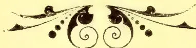
"OBSERVER" PRINTING WORKS.[Faint page: no legible print of its own could be verified; text withheld (stage 4 review list)]
This image is a scan of a blank page. The paper has a light beige or cream-colored tint. There are several small, dark specks scattered across the surface, which appear to be dust or scanning artifacts. No text, lines, or other markings are present on the page.No. 10.
COLOMBO, 7th March 1906.
PRICE:—12½ cents each, 3 copies
30 cents; 6 copies rupee.
[83,816 lb.]
| Pkgs. | Name. | lb. | c. | |
|---|---|---|---|---|
| Waragalande | 21 | hf ch bro or pek | 1260 | 39 bid |
| 30 | do bro pek | 1800 | 33 bid | |
| 12 | ch pek | 1140 | 29 | |
| 27 | hf ch bro or pek | 1620 | 43 bid | |
| Hornsey | 13 | ch pek | 1235 | 38 |
| 10 | ch bro pek | 1000 | 31 bid | |
| Poodarassie | 14 | do pek | 1190 | 27 |
| Battalgalla | 37 | hf ch bro pek | 2035 | 42 |
| 27 | ch or pek | 2565 | 37 bid | |
| 16 | do pek | 1440 | 34 | |
| Bunyan and Ovoca | 41 | hf ch bro or pek | 2460 | 53 |
| 32 | do or pek | 1760 | 41 | |
| 37 | ch pek | 3380 | 34 bid | |
| 18 | ch bro or pek | 1656 | 36 | |
| Pindenioya | 24 | do or pek | 2040 | 33 bid |
| 22 | do pek | 1760 | 28 | |
| 20 | do pek sou | 1560 | 24 | |
| 17 | ch bro or pek | 1700 | 38 bid | |
| 19 | do or pek | 1805 | 40 | |
| Newburgh | 17 | do pek | 1615 | 33 |
| 25 | ch bro or pek | 2750 | 32 bid | |
| 22 | do or pek | 2200 | 31 | |
| 27 | do pek | 2430 | 27 | |
| Kanniamallay | 15 | do pek sou | 1200 | 23 |
| 53 | ch } bro or pek | 5989 | 39 bid | |
| 52 | do } | 5876 | 39 bid | |
| 26 | do or pek | 2860 | 41 bid | |
| 43 | do } pek | 4730 | 36 bid | |
| 42 | do } | 4620 | 36 bid | |
| Vagavurrai | 25 | hf ch fans | 2250 | 34 |
| 33 | hf-ch bro or pek | 2145 | 52 | |
| 67 | do pek | 4020 | 39 | |
| L H O. | 12 | ch fans | 1344 | 24 |
6,073 pkgs. (Ceylon) Black ... 466,126 lb.
31 " (Ceylon) Green ... 1,550 lb.
6,104 pkgs. Total ... 467,676 lb.
| Pkgs | Name. | lb. | c. | |
|---|---|---|---|---|
| Wewewatte | 23 | hf ch bro pek | 1150 | 34 |
| Yatiyana | 16 | ch or pek | 1552 | 29 |
| Mousa Eliya | 11 | ch bro or pek | 1100 | 39 |
| 21 | do bro pek | 2100 | 30 | |
| 12 | do pek | 1140 | 30 | |
| Pedro | 29 | hf ch bro or pek | 1624 | 56 bid |
| 29 | do bro or pek | 1624 | 56 bid | |
| 20 | ch or pek | 1800 | 61 | |
| 30 | do pek | 2520 | 47 | |
| Glengariff | 28 | hf ch bro or pek | 1624 | 43 |
| 40 | do bro pek | 2320 | 36 | |
| 18 | ch pek | 1620 | 32 | |
| Adisham | 26 | hf ch bro or pek | 1300 | 73 |
| 35 | ch bro pek | 3500 | 44 | |
| 14 | do pek | 1190 | 41 | |
| 10 | ch bro or pek | 1000 | 51 | |
| Knivesmire | 35 | do bro pek | 3500 | 38 |
| 17 | do or pek | 1530 | 38 | |
| 27 | do pek | 2430 | 31 | |
| Ardlaw and Wishford | 32 | ch bro pek | 3360 | 44 bid |
| 26 | hf ch bro or pek | 1456 | 59 | |
| 19 | ch or pek | 1615 | 41 | |
| 18 | do pek | 1530 | 41 | |
| Dunkeld | 57 | hf ch bro or pek | 3308 | 40 |
| 18 | ch or pek | 1584 | 38 | |
| 27 | do pek | 2322 | 33 |
| Pkgs. | Name. | lb. | c. | |
|---|---|---|---|---|
| Maha Uva | 52 | hf ch bro or pek | 3120 | 47 |
| 13 | ch or pek | 1235 | 44 | |
| 16 | do pek | 1440 | 40 | |
| 34 | hf ch bro or pek | 2010 | 58 | |
| St. Johns | 22 | ch or pek | 2156 | 56 |
| 44 | hf ch bro or pek | 2464 | 54 | |
| 45 | do bro pek | 2700 | 43 | |
| Florence | 23 | ch pek | 2070 | 45 |
| 28 | hf ch or pek No. 1 | 1176 | 53 | |
| 16 | ch bro pek | 1600 | 35 bid | |
| Yellangowry | 14 | do or pek | 1260 | 40 bid |
| 24 | do pek | 2160 | 27 bid | |
| 21 | ch bro or pek | 2247 | 36 | |
| 31 | do or pek | 2352 | 29 bid | |
| Yataderia | 13 | do bro pek | 1430 | 29 bid |
| 16 | do pek | 3240 | 23 bid | |
| 14 | do pek sou | 1190 | 20 bid | |
| 25 | hf ch bro or pek | 1500 | 56 | |
| Stamford Hill | 62 | do bro pek | 3844 | 42 |
| 12 | ch or pek | 1176 | 55 | |
| 32 | do pek | 3040 | 37 | |
| 18 | hf ch bro or pek | 1044 | 47 bid | |
| Rickarton | 15 | ch or pek | 1395 | 44 |
| 18 | do pek | 1728 | 37 | |
| 21 | hf ch bro or pek | 1260 | 43 bid | |
| 20 | do or pek | 1000 | 47 | |
| Bramley | 26 | do pek | 1352 | 42 |
| 25 | hf ch bro or pek | 1250 | 52 bid | |
| 34 | ch bro pek | 3060 | 41 bid | |
| Robgill | 32 | do pek | 2560 | 39 |
| 16 | ch bro or pek | 1520 | 43 bid | |
| 39 | do bro pek | 3432 | 36 | |
| 12 | do or pek | 1056 | 35 | |
| Pansalattenne | 22 | do pek | 1870 | 29 |
| 25 | hf ch bro or pek | 1500 | 53 | |
| 16 | ch bro pek | 1760 | 42 | |
| Waldemar | 20 | do pek | 1900 | 40 |
| 16 | ch bro or pek | 1600 | 42 | |
| 41 | do bro pek | 4100 | 36 | |
| 24 | do pek | 2280 | 32 | |
| Passara Group | 20 | hf ch bro or pek | 1160 | 52 |
| 17 | ch pek | 1564 | 41 | |
| 24 | do pek sou | 2112 | 36 | |
| 11 | do bro pek fans | 1199 | 40 | |
| Dunbar | 12 | ch bro pek | 1320 | 36 |
| 37 | hf ch bro or pek | 2035 | 38 | |
| 17 | ch or pek | 1530 | 35 | |
| 35 | do pek | 2800 | 26 | |
| Ravenswood, Uva | 10 | do fans | 1000 | 25 |
| 14 | hf ch dust | 1120 | 20 bid | |
| Halugalla | 25 | hf ch bro or pek | 2533 | 46 |
| 37 | do or pek | 1776 | 37 bid | |
| 25 | ch pek | 2100 | 35 | |
| 22 | hf ch dust | 1760 | 34 bid | |
| Tarawera | 28 | hf ch bro or pek | 1500 | 34 |
| 12 | ch pek | 1080 | 30 | |
| 52 | hf ch bro or pek | 3120 | 50 | |
| 34 | do or pek | 1700 | 48 | |
| Great Valley, Ceylon in estate mark | 27 | do pek | 1404 | 43 |
| 15 | do pek fans | 1110 | 42 | |
| 68 | hf ch bro or pek | 4080 | 58 bid | |
| 19 | ch or pek | 1805 | 55 | |
| North-Western Rubber Co., Ltd., Kurunegala, in estate mark, Bridstowe | 37 | hf ch bro or pek | 3700 | 37 |
| 20 | ch bro or pek | 2000 | 41 | |
| 16 | do or pek | 1440 | 43 | |
| 27 | do pek | 2430 | 32 | |
| Gonapatiya | 22 | hf ch dust | 1650 | 13 bid |
| 65 | do bro or pek | 3246 | 36 bid | |
| Monkswood | ||||
| Sylvakandy | ||||
| Nugagalla |
10
32
CEYLON PRODUCE SALES LIST.
| Pkgs. | Name | lb. | c. | |
|---|---|---|---|---|
| Pine Hill | 47 | hf ch bro or pek | 2820 | 41 |
| 19 | ch pek | 1710 | 33 | |
| Hatton | 43 | hf ch bro or pek | 2880 | 45 |
| 22 | ch pek | 2200 | 40 | |
| O B E C, in estate mark, Forest-Creek | 13 | hf ch dust | 1014 | 25 bid |
| O B E C, in estate mark, Darrawella | 29 | hf ch fans | 2001 | 38 |
| Nahalma | 15 | do dust | 1335 | 35 |
| 15 | ch bro pek | 1500 | 30 bid | |
| 14 | do or pek | 1176 | 36 | |
| 15 | do pek | 1370 | 26 | |
| Penrhos | 20 | hf ch bro pek | 1120 | 35 |
| 13 | ch pek | 1105 | 30 | |
| Handford | 33 | ch bro pek | 3300 | 35 |
| 31 | do pek | 2945 | 26 | |
| Maha Eliya | 25 | hf ch bro or pek | 1500 | 60 bid |
| 20 | ch bro pek | 2100 | 56 | |
| 25 | do pek | 2375 | 49 | |
| Kandalooya | 36 | hf ch bro pek | 1620 | 32 bid |
| 27 | do or pek | 1080 | 43 | |
| 80 | do pek | 3200 | 30 bid | |
| Holton | 30 | ch bro pek | 2850 | 33 bid |
| 22 | do pek | 1020 | 30 | |
| Mahayaya | 11 | ch bro or pek | 1100 | 35 |
| 22 | do pek | 1870 | 27 | |
| 14 | do pek sou | 1050 | 21 | |
| Attampittia | 18 | ch bro or pek | 1800 | 40 bid |
| 12 | do or pek | 1200 | 40 | |
| 12 | do pek | 1020 | 36 | |
| Walpita | 34 | ch bro pek | 3400 | 33 |
| 24 | do pek | 2160 | 29 | |
| Moray | 22 | hf ch bro or pek | 1210 | 74 |
| 30 | do bro pek | 1740 | 46 | |
| 21 | do or pek | 1050 | 48 | |
| 40 | ch pek | 3440 | 41 | |
| 13 | ch pek | 1170 | 28 | |
| G Ambagalla | 63 | hf ch or pek | 3150 | 33 bid |
| 27 | do bro pek | 1620 | 34 bid | |
| 24 | do bro or pek | 1440 | 39 bid | |
| 28 | ch pek | 1932 | 27 | |
| 19 | do pek sou | 1558 | 22 bid | |
| D Queensland | 23 | ch or pek | 2070 | 39 bid |
| 19 | hf ch bro or pek | 1045 | 61 | |
| Gona | 12 | ch bro pek | 1140 | 42 |
| 18 | hf ch bro pek | 1080 | 36 | |
| 10 | ch bro or pek | 1000 | 41 | |
| 13 | do pek | 1105 | 30 | |
| ECU in est mark | 12 | ch or pek | 1020 | 37 |
| 34 | ch br pek | 3400 | 23 bid | |
| Roeberry | 20 | do pek sou | 1796 | 19 bid |
| 13 | ch | |||
| 1 | hf ch br mixed | 1215 | 16 | |
| 15 | ch pek fans | 1492 | 20 bid | |
| Tymawr | 45 | ch bro or pek | 4500 | 44 |
| 67 | do br pek | 6030 | 38 | |
| 66 | do pek | 5610 | 31 | |
| 14 | ch pek sou | 1120 | 23 | |
| Middleton | 30 | hf ch bro or pek | 1800 | 46 |
| 59 | ch or pek | 2730 | 48 | |
| 30 | do pek | 2100 | 43 | |
| 23 | ch bro pek | 2300 | 46 bid | |
| Kalupane | 18 | do or pek | 1440 | 48 bid |
| 14 | do pek | 1120 | 42 | |
| 29 | ch pek | 2461 | 29 | |
| Galleheria | 22 | ch bro or pek | 2083 | 42 |
| 31 | do pek | 2627 | 32 | |
| Rumwood | 18 | ch pek | 1616 | 30 bid |
| 20 | ch bro or pek | 2100 | 40 | |
| 12 | do or pek | 1140 | 33 bid | |
| 25 | do pek | 2375 | 30 | |
| 19 | do pek sou | 1520 | 25 | |
| Amherst | 24 | hf ch bro or pek | 1488 | 56 bid |
| 26 | ch or pek | 2470 | 43 bid | |
| 32 | do pek | 2880 | 40 | |
| Edward Hill | 25 | ch bro or pek | 2246 | 34 bid |
| Baddegam | 13 | ch bro or pek | 1296 | 38 bid |
| Pkgs. | Name | lb. | c | |
|---|---|---|---|---|
| Dammeria | 22 | ch br pek | 2200 | 37 bid |
| 20 | do or pek | 1800 | 36 | |
| 35 | do pek | 3150 | 34 | |
| 15 | do pek sou | 1275 | 28 | |
| 90 | hf ch bro or pek | 5400 | 47 | |
| High Forest | 42 | do br pek | 2436 | 45 |
| 50 | do or pek No 1 | 2500 | 42 bid | |
| 38 | do pek | 1900 | 44 | |
| 25 | do br pek fans | 1800 | 42 | |
| 33 | do pek fans | 2970 | 43 | |
| Passaragroup | 32 | ch bro pek | 3096 | 35 bid |
| Erracht | 17 | ch bro or pek | 1770 | 34 |
| 18 | do bro pek | 1890 | 31 | |
| 12 | do or pek | 1056 | 36 | |
| 38 | do pek | 3116 | 28 | |
| 18 | do pek sou | 1476 | 24 | |
| Bandarapcha | 47 | hf ch bro or pek | ||
| No 1 | 2914 | 29 bid | ||
| 43 | do br or pk No 2 | 2451 | 29 bid | |
| Ingestre | 42 | do bro pek | 2226 | 27 bid |
| 20 | hf ch pek | 1060 | 23 | |
| 27 | hf ch bro or pek | 1593 | 69 | |
| 17 | ch bro pek | 1785 | 45 | |
| 11 | do or pek | 1001 | 44 | |
| Bullugolla | 17 | do pek | 1547 | 42 |
| 18 | ch bro or pek | 1872 | 41 | |
| 53 | do bro pek | 5512 | 34 bid | |
| 24 | do or pek | 1920 | 34 | |
| 15 | do pek | 1500 | 33 | |
| B B Tommagong | 29 | hf ch dust | 2175 | 14 |
| 40 | hf ch br or pek | 2440 | 58 | |
| 20 | ch or pek | 1780 | 59 | |
| Denmark Hill | 37 | hf ch bro or pek | 2220 | 56 bid |
| 37 | do bro or pek | 2220 | 56 bid | |
| 28 | ch or pek | 2548 | 59 | |
| 23 | do pek | 2116 | 49 | |
| Tullybody | 32 | hf ch bro or pek | 1792 | 56 bid |
| 31 | do bro or pek | 1736 | 56 bid | |
| 18 | ch or pek | 1512 | 58 | |
| Weddemulla | 23 | ch bro or pek | 2300 | 48 bid |
| Ederapolla | 10 | ch br pek | 1100 | 31 |
| St Clair | 26 | hf ch bro or pek | 1404 | 60 |
| 33 | ch or pek | 2772 | 39 bid | |
| 32 | do br pek | 3200 | 45 | |
| 32 | do pek | 2560 | 35 | |
| 10 | ch br or pek | 1000 | 38 | |
| Paraloes | 13 | do pek | 1170 | 30 |
GREEN TEAS.
| B W | 31 | hf ch twankey | 1550 | 12 bid |
Messrs. Geo. White, Bartleet & Co.
[624 Packages, 47,833 lb.]
| Pkgs. | Name | lb. | c. | |
|---|---|---|---|---|
| St. Helens | 38 | hf ch bro or pek | 2090 | 36 |
| 15 | ch or pek | 1275 | 34 | |
| 20 | do pek | 1800 | 28 | |
| 16 | do pek sou | 1440 | 26 | |
| Fetteresso | 29 | hf ch bro pek | 1740 | 46 |
| 26 | ch pek | 2340 | 41 bid | |
| Empire of India and Ceylon Tea Co. Ltd. | ||||
| Lebanon Group | 25 | hf ch bro or pek | 1300 | 41 bid |
| 24 | ch bro pek | 2400 | 34 | |
| 12 | do bro pek | 1200 | 34 | |
| 29 | do pek | 2435 | 30 | |
| 19 | do pek sou | 1900 | 25 | |
| 21 | hf ch br or pk fns | 1365 | 37 | |
| 17 | do dust | 1394 | 24 | |
| 29 | do bro pek | 1595 | 33 | |
| 17 | ch pek | 1615 | 22 bid | |
| 11 | do pek sou | 1045 | 21 | |
| St. James | 15 | do bro or pek | 1650 | 37 |
| 15 | do or pek | 1350 | 36 bid | |
| 12 | do pek | 1020 | 30 bid |
| Pkgs | Name. | lb | c. | |
|---|---|---|---|---|
| Marigold | 25 | hf ch bro or pek | 1300 | 50 bid |
| 37 | do bro pek | 2146 | 42 bid | |
| 37 | do bro pek | 2146 | 42 | |
| 35 | ch or pek | 2975 | 43 bid | |
| 25 | do pek | 2250 | 39 | |
| Avisford | 14 | do bro or pek | 1470 | 26 bid |
| 22 | do pek | 1870 | 20 bid |
[Total 8,088 Packages, 252,819 lb.]
| Pkgs. | Name. | lb. | c. | |
|---|---|---|---|---|
| Lantern Hill | 12 | ch bro or pek | 1200 | 32 |
| 26 | do bro pek | 2470 | 27 | |
| 33 | do pek | 2805 | 23 | |
| Tellisford | 19 | do bro pek | 2014 | 34 |
| 20 | do pek | 2000 | 24 | |
| Ottery | 21 | do bro or pek | 1995 | 43 bid |
| 21 | do bro pek | 2100 | 38 | |
| 20 | do pek | 1700 | 33 | |
| Mt. Everest | 17 | hf ch bro pek | 1020 | 46 |
| 24 | do or pek | 1200 | 46 | |
| 17 | ch pek | 1615 | 36 | |
| 17 | hf ch fans | 1190 | 40 | |
| Atherton | 25 | ch bro or pek | 2500 | 34 |
| 20 | do bro pek | 1900 | 31 | |
| 35 | do pek | 2800 | 26 | |
| 14 | do bro pek fans | 1400 | 22 | |
| 18 | hf ch bro or pek | 1080 | 42 | |
| Craigingilt | 14 | ch or pek | 1830 | 37 |
| 11 | do pek No. 1 | 1045 | 32 | |
| 10 | do | |||
| 1 | hf ch pek No. 2 | 1060 | 29 | |
| Mount Vernon Ceylon Tea Co., Ltd., Mt. Vernon |
46 | ch pek | 4232 | 42 |
| Talgaswella Tea Co. of Ceylon, Ltd., | ||||
| 16 | ch bro or pek | 1600 | 49 bid | |
| 13 | do or pek | 1066 | 36 | |
| 23 | do pek | 1932 | 30 | |
| Talgaswella | 20 | do pek sou | 1700 | 28 |
| 10 | do br pek No. 2 | 1000 | 33 | |
| Ceylon Tea and Co-conut Ests. Co., Ltd., Perth | ||||
| K P | 21 | ch bro or pek | 2100 | 37 bid |
| 46 | do pek | 4140 | 29 | |
| 32 | do pek sou | 2560 | 24 | |
| 25 | do bro pek | 2500 | out | |
| Elston | 18 | do pek | 1530 | 30 bid |
| 27 | do pek sou | 2430 | 26 | |
| 18 | do bro or pek | 1870 | 31 bid | |
| 12 | do bro pek | 1080 | 27 | |
| Thibet | 15 | do or pek | 1350 | 29 |
| 16 | do bro or pek | 1568 | 43 bid | |
| 13 | do bro pek | 1326 | 38 bid | |
| 18 | do or pek | 1350 | 41 | |
| Templestowe | 13 | do pek | 1079 | 36 |
| 28 | hf ch bro or pek | 1568 | 42 bid | |
| 18 | ch pek | 1620 | 38 bid | |
| 14 | do pek sou | 1120 | 29 bid | |
| Birnam | 24 | do pek sou | 1576 | 38 |
| 36 | hf ch fans | 3024 | 39 | |
| Harrisland | 10 | ch bro or pek | 1000 | 39 bid |
| Tismoda | 41 | hf ch bro or pek | 2050 | 37 |
| 33 | ch bro pek | 3185 | 36 | |
| 36 | do pek | 3060 | 29 | |
| Winwood | 25 | hf ch bro pek | 1375 | 41 |
| 13 | ch or pek | 1235 | 40 | |
| 39 | do pek | 3510 | 36 | |
| 26 | do bro pek | 2170 | 35 | |
| Natuwakelle | 26 | do pek | 2210 | 29 bid |
| Eila Tea Co. of Ceylon, Ltd., Eila | 11 | ch bro pek | 1100 | 37 |
| 15 | do pek No. 1 | 1350 | 35 | |
| 24 | do pek No. 2 | 1920 | 29 | |
| 20 | do pek sou | 1400 | 24 | |
| Pkgs | Name. | lb. | c. | |
|---|---|---|---|---|
| Lantern Hill | 25 | do bro mixed | 2250 | 6 |
| Bowella | 12 | do bro pek | 1140 | 29 bid |
| 16 | do pek sou | 1360 | 21 bid | |
| Wana Rajah Tea Co. of Ceylon, Ltd., | ||||
| Wana Rajah Manickwatte |
23 | hf ch or pek fans | 1564 | 34 |
| 22 | ch or pek | 2266 | 40 | |
| 15 | do pek | 1425 | 32 | |
| 18 | hf ch bro or pek | 1044 | 55 | |
| Mossend | 36 | do bro pek | 2268 | 44 bid |
| 26 | do or pek | 1300 | 44 bid | |
| 25 | do pek | 1250 | 42 | |
| 20 | do bro or pek | 1200 | 41 bid | |
| Gonavy | 30 | do bro pek | 1740 | 32 bid |
| 12 | ch or pek | 1056 | 38 bid | |
| 17 | do pek | 1411 | 32 | |
| 25 | do bro or pek | 2500 | 38 bid | |
| Blackwater | 14 | do or pek | 1120 | 38 |
| 26 | do bro pek | 2600 | 33 | |
| 35 | do pek | 2800 | 32 | |
| 16 | do pek sou | 1280 | 27 | |
| 20 | hf ch bro or pek | 1100 | 52 bid | |
| Theresia | 20 | ch bro pek | 1900 | 41 bid |
| 19 | do pek | 1615 | 39 | |
| Mocha Tea Co. of Ceylon, Ltd. Mocha | ||||
| Mocha | 38 | hf ch bro or pek | 2280 | 50 bid |
| 22 | do fly or pek | 1056 | 57 bid | |
| 22 | ch pek | 2134 | 51 | |
| 23 | do pek sou | 2070 | 44 | |
| 21 | hf ch or pek | 1050 | 36 bid | |
| Kandahar Tamaravelley |
17 | ch bro pek | 1530 | 33 |
| 14 | do or pek | 1120 | 32 bid | |
| 15 | do pek | 1350 | 28 | |
| 35 | hf ch bro or pek | 1925 | 60 | |
| Warleigh | 15 | ch pek | 1275 | 37 |
| 39 | do bro pek | 3900 | 41 bid | |
| 23 | do bro or pek | 2300 | 47 bid | |
| 13 | do or pek | 1118 | 48 | |
| 42 | do pek No. 1 | 3780 | 34 bid | |
| Minna | 17 | do pek No. 2 | 1615 | 29 |
| 18 | hf ch bro or pek | 1080 | 51 bid | |
| 24 | ch pek | 2280 | 34 | |
| Agra Ouvah Estates Co., Limited. | ||||
| Agra Ouvah | 21 | hf ch bro or pek | 1218 | 71 |
| 42 | do bro pek | 2486 | 48 | |
| 19 | ch pek | 1710 | 47 | |
| Parusella | 17 | do bro pek | 1700 | 37 |
| 15 | do pek sou | 1200 | 24 | |
| Glasgow Estate Co., Ltd., Glasgow | ||||
| Glasgow | 27 | hf ch bro or pek | 1485 | 58 |
| 35 | do bro pek | 1995 | 45 bid | |
| 12 | ch or pek | 1140 | 57 | |
| 19 | do pek | 1805 | 49 | |
| Koalande | 25 | hf ch bro or pek | 1375 | 39 |
| 28 | ch bro pek | 2520 | 37 | |
| 17 | do pek | 1530 | 28 | |
| Siriniwasa | 12 | do bro or pek | 1200 | 33 bid |
| 11 | do or pek | 1045 | 39 | |
| 10 | do bro pek | 1050 | 35 | |
| 15 | do pek | 1350 | 27 | |
| 42 | do pek sou | 3780 | 25 | |
| 24 | do sou | 1920 | 22 | |
| 7 | do dust | 1050 | 17 | |
| Ceylon Provincial Estates Co., Ltd., Glassaugh | ||||
| Glassaugh | 19 | hf ch bro or pek | 1251 | 64 |
| 18 | do or pek | 1026 | 68 | |
| 11 | ch pek | 1100 | 52 | |
| Mahanilu | 20 | hf ch bro pek | 1200 | 42 |
| 16 | ch pek | 1488 | 39 | |
| Balado | 12 | do pek | 1089 | 27 bid |
| 17 | do pek sou | 1445 | 24 | |
| 13 | hf ch dust | 1014 | 19 bid | |
| 10 | ch fans | 1030 | 26 bid | |
| 19 | hf ch bro pek fans | 1830 | 28 bid | |
| Blackwater Gangawatte Est. Co., Ld. Gangawatte |
||||
| Gangawatte | 18 | ch bro or pek | 1300 | 57 |
| 15 | do bro pek | 1500 | 43 | |
| 25 | do pek | 2375 | 86 | |
| Pkgs. | Name. | lb. | c. | |
|---|---|---|---|---|
| Elston | 20 do pek | 1700 | 31 | |
| 38 do pek sou | 5410 | 26 | ||
| Messrs. Somerville & Co. | ||||
| 2,411 pkgs. | Ceylon Black | 178,363 lb. | ||
| 136 " | Indian Black | 12,615 lb. | ||
| 2,547 " | Total | 190,978 lb. | ||
| Pkgs. | Name. | lb. | c. | |
| Dejedene | 89 hf ch bro pek | 4895 | 28 | |
| 36 do pek | 19 0 | 25 | ||
| F F Columbia | 24 hf ch bro or pek | 392 | 30 bid | |
| 12 ch pek | 1080 | 28 | ||
| Narangoda | 24 ch bro or pek | 2280 | 35 | |
| 14 ch pek | 1330 | 27 | ||
| 12 ch pek sou | 1080 | 24 | ||
| Neboda Tea Co. of Ceylon, Limited | ||||
| Neboda | 11 ch bro pek | 1100 | 30 | |
| 12 ch bro or pek | ||||
| No. 2 | 120 | 36 | ||
| 22 ch or pek | 1760 | 32 | ||
| 28 ch pek | 2520 | 29 | ||
| Ellawala | 25 hf ch bro or pek | 1550 | 31 | |
| 22 do or pek | 1430 | 36 | ||
| 44 do pek | 2640 | 26 | ||
| Sadamulla | 10 ch pek | 1013 | 22 | |
| Searborough | 10 hf ch bro or pek | 1060 | 68 | |
| 13 ch or pek | 11 8 | 41 bid | ||
| 25 ch pek | 2500 | 39 | ||
| 28 hf ch bro pek | 1680 | 44 | ||
| Demoderawatte (Pussellawa) | 20 ch pek | 1760 | 30 bid | |
| Widworthy | 13 ch bro or pek | 1304 | 30 | |
| 15 ch pek | 1504 | 29 | ||
| Highfields | 16 hf ch bro or pek | 1068 | 48 | |
| 18 do flo or pek | 1026 | 46 | ||
| 24 do or pek | 1010 | 44 | ||
| 22 do pek | 1056 | 43 | ||
| Torbay | 15 hf ch bro pek fans | 1005 | 43 | |
| 12 do bro pek dust | 1008 | 33 | ||
| Laxapanagalla | 13 ch bro or pek | 1300 | 33 bid | |
| 13 ch bro pek | 1170 | 29 | ||
| Tavalantenne | 15 ch pek | 1350 | 24 bid | |
| 30 ch bro pek | 2880 | 35 bid | ||
| 15 ch pek | 1350 | 30 bid | ||
| Rayigam Co. Ltd., Annandale | 14 ch bro or pek | 1274 | 42 bid | |
| 19 hf ch bro pek | 1140 | 45 | ||
| Bollagalla | 15 3/4 ch or pek | 1095 | 41 bid | |
| 25 do pek | 1950 | 43 | ||
| 20 hf ch bro or pek | 1000 | 38 | ||
| 14 ch or pek | 1400 | 33 | ||
| Glensnore | 29 ch pek | 2465 | 26 | |
| 20 ch bro or pek | 2030 | 48 | ||
| Yarrow | 12 ch bro pek | 1200 | 43 | |
| 37 hf ch bro or pek | 2146 | 34 | ||
| Cheviot | 38 do or pek | 1748 | 34 | |
| 45 do pek | 2250 | 29 | ||
| 30 do pek sou | 1320 | 24 | ||
| 22 do br or pk fans | 1430 | 24 bid | ||
| Highfields | 34 hf ch bro or pek | 1870 | 35 | |
| 22 ch bro pek | 2200 | 28 bid | ||
| Dalukoya | 20 hf ch flo or pek | 1140 | 46 bid | |
| 20 do bro or pek | 1220 | 45 | ||
| 23 do or pek | 1012 | 43 | ||
| 19 do bro pek | 1083 | 41 | ||
| Wewalakande | 22 do pek | 1056 | 40 | |
| 19 hf ch bro or pek | 1045 | 41 | ||
| 35 do or pek | 1750 | 34 | ||
| 40 do pek | 2060 | 29 | ||
| Gangwarily Est. Co. of Ceylon, Ltd., Gangwarily | 25 hf ch bro pek | 1375 | 31 | |
| 31 hf ch bro or pek | 1705 | 37 | ||
| 15 ch or pek | 1275 | 41 | ||
| 29 ch bro pek | 2900 | 31 | ||
| 51 ch pek | 4080 | 25 | ||
| 17 ch pek sou | 1190 | 20 | ||
| Pkgs. | Name. | lb. | c. | |
|---|---|---|---|---|
| Badulla Ella | 24 ch bro pek | 2520 | 37 | |
| 12 ch pek | 1020 | 29 bid | ||
| Avisawella | 21 hf ch bro or pek | 1050 | 37 bid | |
| 16 ch or pek | 1440 | 35 | ||
| 18 ch pek | 1620 | 28 | ||
| 13 ch pek sou | 1040 | 24 | ||
| 24 ch bro pek | 2400 | 28 bid | ||
| Kitool | 33 ch pek | 2970 | 25 | |
| 19 ch bro pek | 1900 | 29 bid | ||
| Kituldeniya | 17 ch or pek | 1530 | 32 | |
| 21 ch pek | 1890 | 26 | ||
| Cooroondoowatte | 11 ch bro pek | 1265 | 33 | |
| 33 hf ch bro or pek | 1811 | 36 bid | ||
| Yabalatenne | 43 ch bro pek | 4300 | 36 | |
| 23 ch pek sou | 1955 | 26 | ||
| 14 hf ch dust | 1120 | 17 bid | ||
| 24 ch bro pek | 2400 | 31 | ||
| M A W | 16 ch pek | 1360 | 24 | |
| 15 ch bro or pek | 1500 | 34 bid | ||
| Aigburth | 24 ch pek | 1920 | 27 | |
| 11 ch bro or pek | 1100 | 39 | ||
| Kiriporuwa | 22 ch pek | 1980 | 25 |
| Mount Gordon | 26 ch bro pek | 1600 | 42 bid | |
| 35 do pek | 8075 | 36 bid | ||
| 24 do pek sou | 1920 | 32 bid |
| 1,151 pkgs. | 87,709 lb. | Black. |
| 56 pkgs. | 4,666 lb. | Green. |
| 107 pkgs. | 12,678 lb. | Travancore. |
| Pkgs. | Name. | lb. | c. | |
|---|---|---|---|---|
| Hathmathe | 11 ch bro pek | 1045 | 37 | |
| 12 ch pek | 1089 | 26 | ||
| Helvetia | 10 ch bro or pek | 1050 | out | |
| 12 ch or pek | 1200 | 34 | ||
| 10 ch pek | 1000 | 26 | ||
| 12 ch pek sou | 1080 | 21 | ||
| 11 ch bro pek fans | 1265 | 23 bid | ||
| Pendle | 22 hf ch bro or pek | 1210 | 41 | |
| 44 do bro pek | 2508 | 32 bid | ||
| 33 do or pek | 1619 | 34 | ||
| 13 do fans | 1001 | 25 | ||
| Fairlawn | 56 hf ch bro or pek | 2800 | 58 | |
| 32 do bro pek | 1920 | 47 | ||
| 15 do bro pek fans | 1050 | 40 | ||
| 12 ch pek No. 1 | 1080 | 45 | ||
| V in est mark | 31 ch pek | 2790 | 41 | |
| 56 hf ch bro pek | 3360 | 48 | ||
| 18 ch or pek | 1530 | 38 | ||
| 20 ch pek | 2000 | 39 | ||
| Deemaya | 12 ch pek sou | 1020 | 33 | |
| 31 hf ch or pek | 1559 | 30 | ||
| 34 hf ch bro or pek | 1804 | 32 bid | ||
| 14 ch pek | 1148 | 23 bid | ||
| Gunakelle | 14 ch pek sou | 1120 | 20 | |
| 25 hf ch bro or pek | 1500 | 48 bid | ||
| 20 do or pek | 1000 | 47 | ||
| 21 do pek | 1050 | 45 | ||
| Bellongalla | 28 hf ch bro or pek | 1540 | 32 | |
| 16 ch pek | 1440 | 24 | ||
| Macaldeniya | 12 ch bro pek | 1200 | 33 bid | |
| 11 ch pek | 1000 | 29 | ||
| Panilkande | 23 hf ch bro or pek | 1150 | 53 | |
| 27 ch bro pek | 2700 | 36 | ||
| 19 ch or pek | 1615 | 36 | ||
| 16 ch pek | 1440 | 30 | ||
| 12 ch pek sou | 1020 | 23 | ||
| J B C in est. mark | 42 ch pek | 5990 | out | |
| M | 8 ch green fans | 1040 | 6 | |
| Y D T | 12 ch green dust | 1140 | 5 | |
| Panilkande | 20 hf ch bro or pek | 1000 | 56 | |
| 28 ch bro pek | 2800 | 36 bid | ||
| 14 ch or pek | 1199 | 36 | ||
| 14 ch pek | 1260 | 30 |
| Pkgs. | Name. | lb. | c. | |
|---|---|---|---|---|
| Doone Vale | 30 ch | pek | 2850 | 27 |
| Choisy | 20 hf ch | bro or pek | 1000 | 46 bid |
| 20 ch | bro pek | 2000 | 35 | |
| 20 ch | bro pek | 2000 | 35 | |
| 18 ch | pek | 1620 | 28 | |
| 11 ch | bro or pek | 1045 | 49 bid | |
| Hangranoya | 18 ch | or pek | 1040 | 42 |
| 14 ch | bro pek | 1400 | 38 bid | |
| 13 ch | pek | 1040 | 32 |
| Madupatty | 51 ch | bro or pek | 6426 | 40 bid |
| 42 ch | pek | 4662 | 37 | |
| 14 ch | fans | 1680 | 34 |
| Pkgs. | Name. | lb. | c. | |
|---|---|---|---|---|
| Waragalande | 9 ch | pek sou | 810 | 25 |
| 7 hf ch | fans | 595 | 17 bid | |
| Poodarassie | 6 ch | pek sou | 510 | 22 bid |
| 1 hf ch | fans | 70 | 23 | |
| M | 2 ch | or pek | 200 | 34 |
| Newburgh | 3 hf ch | dust | 225 | 21 |
| Mapitigama | 2 ch | bro or pek fans | 260 | 19 |
| Vagavurrai | 8 hf ch | pek fans | 640 | 33 |
| Whengril | 14 hf ch | bro pek | 851 | out |
| 5 do | bro pek fans | 322 | 17 | |
| 7 ch | pek | 676 | out | |
| W H | 8 hf ch | dust | 680 | 18 |
| L H O |
| Pkgs. | Name. | lb. | c. | |
|---|---|---|---|---|
| St. Helens | 12 hf ch | fans | 780 | 21 |
| Marigold | 12 do | bro pek fans | 960 | 38 |
| A B C | 1 ch | bro pek | 86 | 26 |
| 1 do | pek | 90 | 20 | |
| 1 hf ch | dust | 84 | 16 | |
| 10 ch | pek sou | 900 | 13 bid | |
| Avisford | 5 do | sou | 390 | 9 bid |
| 4 do | dust | 356 | 17 bid | |
| 5 hf ch | fans | 240 | 9 bid |
| Pkgs. | Name. | lb. | c. | |
|---|---|---|---|---|
| Halbarawa | 8 ch | congou | 680 | 16 |
| 1 do | dust | 150 | 15 | |
| Wewewatte | 8 hf ch | pek | 400 | 25 |
| 9 do | pek sou | 405 | 21 | |
| 1 do | bro pek fans | 45 | 20 | |
| Yatiyana | 2 ch | bro pek | 194 | 22 |
| 4 do | pek | 388 | 17 | |
| Mousa Eliya | 1 ch | dust | 100 | 18 |
| Warwick | 5 hf ch | dust | 430 | 37 |
| Dickoya | 4 ch | pek sou | 300 | 26 |
| 8 hf ch | fans | 600 | 43 | |
| Knavesmire | 8 ch | pek sou | 680 | 26 |
| 6 hf ch | dust | 510 | 20 | |
| 1 ch | bro pek | 100 | 41 bid | |
| Yellangowry | 10 hf ch | dust | 600 | 17 |
| Stamford Hill | 9 hf ch | dust | 720 | 42 |
| Udapolla | 8 ch | bro pek | 720 | 32 |
| 5 do | pek | 400 | 23 | |
| 2 hf ch | dust | 160 | 17 | |
| 7 hf ch | dust | 672 | 34 | |
| Rickarton | 5 ch | fans | 600 | 24 |
| Deviturai | 7 ch | pek sou | 630 | 28 |
| Passara Group | 6 hf ch | fans | 420 | 43 |
| 2 ch | bro sou | 190 | 23 | |
| Galleheria | 6 do | fans | 690 | 22 bid |
| 4 do | congou | 340 | 08 | |
| 3 ch | or pek | 270 | 35 | |
| Ravenswood, Uva |
10 do | pek | 900 | 35 |
| 2 do | pek sou | 160 | 29 | |
| 3 do | bro pek dust | 225 | 29 |
| Pkgs. | Name. | lb. | c. | |
|---|---|---|---|---|
| Tarawera | 5 hf ch | fans | 340 | 25 |
| 5 ch | congou | 425 | 16 |
| North-Western Rubber Co., Ltd., Kurunegala, in estate mark, | ||||
| Bridstowe | 6 ch | or pek | 540 | 38 |
| Sylvakandy | 8 ch | fans | 880 | 37 |
| Penrhes | 13 hf ch | or pek | 611 | 41 |
| Handford | 1 ch | red leaf | 75 | 07 |
| Lankawatte | 4 hf ch | br pek | 196 | 28 |
| 2 do | pek sou | 104 | 18 bid | |
| Holton | 9 ch | bro or pek | 855 | 45 |
| 3 do | br pek fans | 330 | 25 | |
| 2 do | dust | 240 | 18 | |
| Makayaya | 2 ch | dust | 294 | 18 |
| Walpita | 4 ch | pek sou | 320 | 21 |
| 3 do | sou | 240 | 15 | |
| Moray | 3 ch | pek dust | 255 | 43 |
| Roeberry | 5 ch | dust | 500 | 18 |
| 7 do | fans | 700 | 35 | |
| Memorakande | 7 hf ch | dust | 630 | 17 |
| F C, W H | 5 do | fans | 375 | 26 |
| 4 ch | br pek | 360 | 29 | |
| 5 do | pek | 400 | 19 | |
| 4 do | pek dust | 260 | 16 | |
| St Martins | 15 hf ch | pro or pek | 600 | 33 |
| 8 do | or pek | 320 | 29 | |
| 9 do | pek | 360 | 25 | |
| 2 do | pek sou | 80 | 19 | |
| 4 do | fans | 240 | 21 | |
| Rumwood | 6 ch | pek sou | 473 | 27 |
| Torwood | 10 hf ch | fans | 680 | 23 |
| D | 8 hf ch | fans | 704 | 17 bid |
| 11 do | fans | 968 | 17 bid | |
| M M | 4 ch | bro mixed | 328 | 8 |
| 3 do | pek fans | 177 | 15 | |
| Adawatte | 3 ch | bro or pek | 300 | 41 |
| 5 do | br pek | 450 | 33 | |
| 2 do | or pek | 170 | 36 | |
| 6 do | pek | 510 | 26 | |
| 2 do | pek sou | 180 | 24 | |
| 1 do | fans | 80 | 29 | |
| Dammeria | 15 hf ch | bro pek fans | 975 | 36 |
| 10 do | dust | 800 | 18 | |
| Dea Ella | 6 hf ch | or pek | 330 | 29 |
| 4 do | fans | 280 | 17 | |
| Erracht | 7 ch | bro pek fans | 735 | 23 |
| 4 do | dust | 600 | 16 | |
| 8 hf ch | dust | 672 | 40 | |
| 5 hf ch | dust | 425 | 42 | |
| Denmark Hill | 5 ch | pek sou | 500 | 19 |
| Leangapalla | 8 ch | fans | 880 | 21 |
| Edrapolla | 9 hf ch | pek sou | 450 | 20 |
| 4 do | dust | 360 | 17 | |
| I K V | 12 do | pek fans | 720 | 19 |
| 8 do | red leaf | 400 | 12 | |
| Parsloes | 5 ch | or pek | 400 | 38 |
| 3 do | pek sou | 270 | 24 | |
| 4 do | fans | 400 | 25 | |
| 1 do | dust | 100 | 18 |
| Pkgs. | Name. | lb. | c. | |
|---|---|---|---|---|
| D C | 1 ch | bro pek | 100 | 13 |
| Lanteru Hill | 11 do | pek sou | 935 | 16 |
| 4 do | fans | 560 | 16 | |
| 3 do | dust | 435 | 16 | |
| Tellisford | 1 do | fans | 134 | 23 |
| 2 do | dust | 288 | 17 | |
| Ottery | 11 do | or pek | 990 | 43 |
| 8 hf ch | fans | 520 | 40 | |
| Mt. Everest | 15 do | bro or pek | 825 | 71 |
| 18 do | fly pek | 990 | 36 bid | |
| 2 ch | dust | 200 | 36 | |
| Atherton | 12 do | pek sou | 900 | 22 |
| 5 do | dust | 500 | 17 |
| Pkgs. | Name. | lb. | c. | |
|---|---|---|---|---|
| Craigingilt | 2 ch | |||
| 1 hf ch sou | 280 | 27 | ||
| 3 do bro pek fans | 210 | 33 | ||
| 2 do dust | 180 | 17 | ||
| Ceylon Tea & Coconut | ||||
| Ests Co Ld, Perth 5 | ch fans | 650 | 18 | |
| K P | 7 do pek dust | 840 | 14 bid | |
| Harrisland | 6 do bro pek | 600 | 34 | |
| 5 do pek | 400 | 22 bid | ||
| Tismoda | 12 hf ch fans | 840 | 27 | |
| 5 do dust | 450 | 17 | ||
| Winwood | 17 do bro or pek | 935 | 54 | |
| 7 ch pek sou | 630 | 31 | ||
| 10 hf ch dust | 850 | 24 | ||
| Natuwakelle | 14 do bro or pek | 770 | 44 | |
| 3 do dust | 255 | 21 | ||
| 3 do br or pk fns | 210 | 29 | ||
| Eila Tea Co. of Ceylon, Ltd., Eila | 1 hf ch fans | 70 | 21 | |
| 1 do dust | 85 | 16 | ||
| A | 5 do fans | 575 | 20 bid | |
| Wana Rajah Tea Co. of Ceylon, Ltd., Wana Rajah | 11 hf ch dust | 957 | 22 bid | |
| Mossend | 2 do pek sou | 100 | 33 | |
| 2 do dust | 160 | 36 | ||
| Theresia | 7 do bro pek fans | 700 | 38 | |
| Tamaravelley | 11 ch bro or pek | 935 | 38 | |
| 8 do br or pk fns | 800 | 27 | ||
| 3 do dust | 288 | 19 | ||
| Warleigh | 21 hf ch or pek | 945 | 44 bid | |
| 5 do dust | 410 | 30 | ||
| Verelapatna | 5 ch fans | 550 | 33 | |
| Koslande | 6 do fans | 720 | 33 | |
| 2 hf ch dust | 180 | 19 | ||
| Siriniwasa | 5 ch fans | 500 | 24 | |
| 2 do congou | 170 | 16 | ||
| Gangawatte Ests. Co., Lt., Gangawatte | 7 ch pek sou | 630 | 32 | |
| 12 hf ch fans | 780 | 39 |
| Pkgs. | Name | lb. | c. | |
|---|---|---|---|---|
| Helvetia | 3 ch sou | 270 | 14 | |
| 4 ch dust | 600 | 15 | ||
| Pendle | 19 hf ch pek | 931 | 28 | |
| S in est mark | 12 ch pek sou | 936 | 22 | |
| Weyweltalawa | 4 hf ch dust | 260 | 16 | |
| 2 ch unasst | 200 | 22 | ||
| Deemaya | 2 hf ch dust | 170 | 16 | |
| 1 hf ch pek fans | 33 | 8 | ||
| Bellongalla | 2 hf ch br or pk fans | 220 | 24 | |
| J B C in est. mark | 3 ch dust | 345 | 13 bid | |
| Maddegadera | 2 ch bro pek fans | 220 | 19 bid | |
| 4 hf ch dust | 360 | 16 | ||
| D D | 3 ch green dust | 390 | 7 bid | |
| 3 ch green dust | 360 | 6 bid | ||
| B H | 6 hf ch green fans | 450 | withd'n | |
| Rutherford | 14 hf ch twankey | 756 | out | |
| 10 hf ch twankey | 530 | out | ||
| Galkande | 6 ch bro or pek | 600 | 29 | |
| 7 ch or pek | 595 | 24 | ||
| 3 ch bro pek | 360 | 18 | ||
| 10 ch pek | 900 | 20 | ||
| 2 ch pek sou | 180 | 13 | ||
| 2 ch fans | 220 | 14 | ||
| P T N | 4 ch br or pk fans | 432 | 20 | |
| 5 ch | ||||
| 1 hf ch pek fans | 854 | 16 | ||
| K in est mark | 5 hf ch dust | 390 | 16 | |
| 2 do unast | 116 | 27 | ||
| 3 do dust | 297 | 15 |
| Pkgs. | Name. | lb. | c. | |
|---|---|---|---|---|
| S R K | 9 ch pek | 900 | 31 | |
| 3 ch dust | 480 | 33 |
| Pkgs. | Name. | lb | c. | |
|---|---|---|---|---|
| Depedene | 18 hf ch pek sou | 990 | 18 | |
| 6 do bro pek dust | 480 | 16 | ||
| Maskeloya | 3 hf ch bro or pek | 180 | 36 | |
| 2 ch or pek | 160 | 31 | ||
| 1 ch pek | 88 | 25 | ||
| 1 ch pek sou | 88 | 21 | ||
| 1 ch fans | 115 | 17 | ||
| Neboda Tea Co. of Ceylon Ltd., Neboda | 15 hf ch br or pk No. 1 | 750 | 45 | |
| 7 ch pek sou | 630 | 22 | ||
| 5 hf ch dust | 400 | 16 | ||
| Ellawala | 9 hf ch pek sou | 540 | 22 | |
| 13 do bro mixed | 780 | 25 | ||
| 2 do congou | 120 | 16 | ||
| 7 do fans | 455 | 19 | ||
| 7 do dust | 560 | 15 | ||
| Sadamulla | 6 ch bro pek | 603 | 25 bid | |
| 7 ch pek sou | 703 | 13 | ||
| Demoderawatte (Pussellawa) | 16 hf ch bro or pek | 880 | 34 bid | |
| 5 ch bro pek | 500 | 28 bid | ||
| 11 ch or pek | 935 | 35 bid | ||
| 8 ch pek sou | 640 | 23 bid | ||
| 2 hf ch dust | 170 | 17 | ||
| 1 ch fans | 110 | 21 bid | ||
| M in est mark | 1 ch bro mixed | 84 | 20 | |
| Kahatagalla | 1 ch bro or pek | 90 | 33 | |
| 2 ch or pek | 180 | 35 | ||
| 4 ch bro pek | 400 | 27 | ||
| 5 ch pek | 475 | 27 | ||
| 2 ch bro pek fans | 190 | 25 | ||
| 2 ch sou | 144 | 21 | ||
| Widworthy | 6 ch or pek | 513 | 34 | |
| 2 hf ch dust | 163 | 16 | ||
| 2 hf ch br or pek fans | 139 | 22 | ||
| G B | 8 hf ch bro pek fans | 480 | 24 bid | |
| 11 do dust | 550 | 30 bid | ||
| A | 5 hf ch unasst | 250 | 16 | |
| 2 do sou | 90 | 12 | ||
| 2 do fans | 90 | 8 | ||
| 1 do dust | 50 | 16 | ||
| Labugama | 11 hf ch bro pek | 605 | 30 bid | |
| 8 ch pek | 720 | 24 | ||
| 5 ch pek sou | 435 | 20 | ||
| Laxapanagalla | 4 ch pek sou | 360 | 20 | |
| 3 ch dust | 309 | 16 | ||
| 2 do fans | 200 | 20 | ||
| Raygam Co. Ltd., Annandale | 16 hf ch bro or pek | 864 | 71 | |
| 10 do br pk fans | 700 | 38 | ||
| Bollagalla | 13 hf ch fans | 910 | 21 | |
| 7 do dust | 630 | 17 | ||
| Yarrow | 8 hf ch dust | 680 | 18 | |
| Cheviot | 6 ch pek | 600 | 26 | |
| 1 ch pek sou | 100 | 13 | ||
| Horagoda | 7 ch bro pek | 700 | 26 bid | |
| 10 ch pek | 820 | 22 | ||
| 2 ch pek sou | 180 | 18 | ||
| 2 ch sou | 162 | 18 | ||
| Dalukoya | 16 hf ch pek sou | 800 | 24 | |
| Wewalakande | 10 do pek | 540 | 22 | |
| 5 do pek sou | 250 | 14 | ||
| Semi-dale | 9 ch bro pek | 951 | 31 bid | |
| Gangwarily Est. Co. of Ceylon, Ltd., Gangwarily | 5 hf ch dust | 400 | 17 | |
| 5 do fans | 475 | 20 | ||
| Oakwell | 10 do fans | 697 | 30 | |
| Avisawella | 7 ch sou | 560 | 19 | |
| Donside | 8 hf ch dust | 637 | 17 bid | |
| Pkgs. Name. | lb. | c. | ||
| Kituldeniya | 2 ch sou | 190 | 14 | |
| Kitool | 1 hf ch dust | 90 | 15 | |
| Kituldeniya | 3 do fans | 240 | 16 | |
| Moragalla | 9 ch pek | 897 | withd'n | |
| M A W | 8 ch pek sou | 640 | 19 | |
| 5 ch pek fans | 500 | 18 | ||
| Knavesmire | 4 ch bro pek | 400 | 30 |
| Pkgs | Name. | lb. | c. | |
|---|---|---|---|---|
| Oaklands | 6 | ch bro or pek | 570 | opt |
| Aigburth | 8 | ch or pek | 658 | 33 |
| J A P . | 4 | ch pek sou | 240 | 21 |
| 3 | bf ch fans | 240 | 28 | |
| 3 | do dust | 240 | 17 | |
| Neuchatel | 2 | ch br pk No. 1 | 170 | 28 |
| Wattumulla | 6 | ch bro pek | 630 | 33 |
| S in est mark | 3 | bf ch bro pek | 170 | 26 |
| 1 | ch | |||
| 1 | bf ch pek | 150 | 21 | |
| 1 | ch | |||
| 1 | bf ch pek sou | 140 | 15 | |
| 1 | do dust | 90 | 16 |
Mount Gordon 4 by 5 box flo or pek 20 Rl:50
CEYLON RUBBER SALES IN LONDON.MINCING LANE, Feb. 16th, 1906.
"Palermo."—PR SB, 3 cases sold at 6s 1½d; 1 sold at 4s 11½d; Gula Rubber, 1 bag sold at 6s 1d.
"Hector."—K P & Co. Ltd., 12 cases sold at 6s 1½d; 2 sold at 5s 4¾d; 2 sold at 5s 4d; 1 sold at 4s 3¾d; V R Co. Ltd. FMS in estate mark, 1a, 7 cases sold at 6s 1½d; 6 sold at 6s 1½d; 6 sold at 6s 2d; ditto 1C, 2 sold at 6s 1½d; ditto 2C, 9 sold at 6s 8½d; ditto 3C, 6 sold at 6s 5d; S R L in estate mark, 6 cases sold at 6s 1½d; 20 sold at 6s 1½d; 1 sold at 4s 5d; TT CT in estate mark, 1 box sold at 6s 1½d.
"Manica."—LSH, 1 case out.
"Clan Mackinnon."—Culoden Best Para Rubber, 5 cases sold at 6s 2d; ditto Lumps, 1 sold at 5s 2½d; ditto Scrap No. 1, 4 sold at 3s 8d; ditto No. 2, 1 sold at 6s 1½d; Nikakotua No. 1 Biscuits, 2 sold at 6s 1½d; ditto No. 2, 3 sold at 5s 1½d.
"Staffordshire."—Arapolakande APK A, 9 cases sold at 6s 1½d; ditto B, 3 sold at 4s 11d.
"Machaon."—D K PCL, 2 cases sold at 5s 7½d.
"Keemun."—BRBC, 2 cases sold at 5s 7½d.
"Konig Wilhelm III."—BSHM, 3 cases sold at 3s 0½d, "Hector."—B R R Co., 22 cases sold at 6s 2d; 11 sold at 5s 3½d; 8 cases and 5 bags out; FIR, 4 cases out.
"Clan Mackinnon."—Tallagalla, 2 cases sold at 6s 1½d; 1 sold at 5s 3d.
"Clan Murray."—Dolahena, 4 cases sold at 6s 1½d; 1 sold at 5s 1d; Baddegama, 1 sold at 5s 2½d.
"City of York."—Gikiyanakande, 11 cases out.
"Manica."—Tiger Asahan, 8 cases sold at 6s 1½d; ditto Rambong Bricks, 1 sold at 4s 6½d; ditto Rolled Scrap, 3 sold at 5s; 1 bag and 1 case sold at 5s 1d; ditto Bricks, 3 cases sold at 4s 11d; Bukit Lintang, 6 sold at 6s 1½d. "Oruba."—Weoya, 3 cases sold at 6s 1½d; 1 sold at 6s 2d; 5 sold at 5s 1½d; 1 case out.
"Hector."—Polatagama, 7 cases sold at 6s 1½d; Highland Estate (* London Sheet Rubber, 5 sold at 6s 2½d; 3 sold at 6s 2d; 7 cases out.
"Staffordshire."—DC, 1 case sold at 6s 1½d; Scrap, 1 bag out.
"Oruba."—Aberdeen Para Rubber Biscuits, 9 cases sold at 6s 1½d; ditto Negrohead Scrap, 1 sold at 5s 0½d; 3 sold at 5s 3d; 1 bag out.
CEYLON CARDAMOM SALES IN LONDON."Malta."—Vicartons A1, 9 cases out.
"Caledonia."—CS in estate mark, 6 cases sold at 1s.
"Hyson."—Delpotonoya, 4 cases sold at 10½d.
"Kintuck."—Gallantenne AA, 3 cases sold at 1s 7d.
"City of York."—Duckwari A1, 2 cases out at 3s.
"Derbyshire."—Ravelston, 2 cases out.
"Bantu."—Kobo, 1 case out.
"Arabia."—3, MMM in estate mark, 12 cases sold at 1s 3d; CT in estate mark, 9 cases out; 1 case sold at 9½d.
"Bechuana."—MAK in estate mark, 27 cases out,
N "City of Benares."—OBC in estate mark, Dangkande O, 1, 6 cases sold at 1s 4d; ditto No. 2, 2 sold at 1s 4d; 3 sold at 1s; ditto No. 3, 8 sold at 9½d; 4 sold at 10d; 13 sold at 9½d; LC, RM in estate mark, 2 cases out at 9½d; 1 case out.
"Glenesk."—MC, RM in estate mark, 3 cases out at 10½d.
"Yorkshire."—MC, RM in estate mark, 6 cases out.
"Benvenue."—Upper Haloya Ex., 2 cases sold at 1s 7d; ditto AA, 10 cases out at 1s 5d.
"Orontes."—Elkandu 1, 4 cases out at 1s.
"Omrah."—Midlands O, 5 cases sold at 1s 6d; ditto 1, 2 sold at 1s 1d; 2 cases out; 3 sold at 1s 1d; ditto 2, 1 sold at 8½d; 2 sold at 8½d.
CEYLON COCOA SALES IN LONDON."Clan Mackinnon."—Dynevor, 100 bags out.
"Historian."—Rock A Hill, 50 bags out; ditto 1, 20 bags out; 10½ bags out.
"Derbyshire."—Sunnyside 2, 9 bags out, N/M, 2 bags sold at 57s; 1 sold at 47s.
"Staffordshire."—Maria No. 1, 20 bags sold at 59s; 30 bags out; ditto No. 2, 20 bags sold at 55s.
"Clan Mackinnon."—OO VS, KM in estate mark, 22 bags out; O SL, PM in estate mark, 60 bags sold at 55s; 11 sold at 48s.
"Magdalena."—G E S & Co., 1 bag sold at 47s.
"Staffordshire."—Warriapolla, 27 bags sold at 90s; 3 sold at 74s; 121 sold at 59s; 18 sold at 55s 6d; 47 sold at 50s.
"Clan Mackinnon."—Suduganga R, 3 bags sold at 66s 6d; ditto No. 1F, 6 bags out; ditto No. 2F, 17 bags out; ditto L, 4 bags sold at 50s; ditto No. 1B, 8 sold at 54s 6d; 1 sold at 46s; ditto No. 2B, 7 bags out.
"Staffordshire."—Dangan No. 1, 44 bags out; No. 2, 5 bags sold at 49s; Broken, 3 sold at 45s 6d.
"Clan Mackinnon."—Old Haloya, 25 bags out; Kepitigalla, 40 bags sold at 59s 6d; 20 sold at 59s; 10 sold at 52s.
"Staffordshire."—Karandagalla No. 1 Estate Cocoa, 40 bags sold at 54s; 10 sold at 54s; ditto No. 2 ditto, 20 sold at 52s.
"City of Benares."—FOBC in estate mark, Kondesalle Ceylon O, 108 bags out; F ditto 1, 52 bags sold at 52s 6d; ditto O, 14 sold at 85s; ditto 1F, 6 sold at 78s 6d; G ditto 8 sold at 45s 6d; ditto OC, 11 bags out; OEC in estate mark, Mahaberia Ceylon 1F, 22 bags sold at 58s; ditto No. 2 FG, 7 sold at 51s 6d.
"Staffordshire."—1 KM in estate mark, 140 bags out.
"Warwickshire."—O VS, KM in estate mark, 2 bags sold at 49s 6d; KM in estate mark, 1 bag sold at 44s.
"Clan MacNeil."—Meegama A, 145 bags out; 1, 7 bags sold at 50s; B, 7 sold at 47s 6d.
"Clan Mackinnon."—Marakona 1, 75 bags out; 2, 10 bags sold at 51s 6d; 3, 24 bags out; 4 bags sold at 41s; 1, MK in estate mark, 182 bags out; 2 bags sold at 46s 6d.
"Staffordshire."—O MAK in estate mark, Ceylon London Plantation Cocoa, 882 bags out; 1 M in estate mark, London, 149 bags out.
"Orontes."—Grove A, 88 bags out; ditto L, 12 bags out.
"Clan Fraser."—(Two Gunnies) Palli London F, 101 bags out; Pathregalla London 1, 20 bags sold at 58s 6d; 49 sold at 58s.
"Clan Mackinnon."—O. MA in estate mark, 20 bags out; 20 bags sold at 55s; 29 bags out; 11 bags sold at 49s 6d.
"Patrician."—1 M in estate mark, 145 bags out.
"Clan MacNeil."—KA in estate mark, 61 bags out.
"Tactician."—KK in estate mark, 70 bags out.
"Clan Macdonald."—1 MA in estate mark, 73 bags out.
"Sunda."—1 DB in estate mark, 48 bags out.
CEYLON PLUMBAGO SALES IN LONDON."Briton."—O in estate mark, W, 18 bags out at 55s; 21 bags out at 52s 6d; 4 bags out at 50s.
"Antenor."—ST in estate mark, 39 bags out at 15s.
"City of Athens."—AB in estate mark, 39 bags out at 15s
"OBSERVER" PRINTING WORKS. This image shows a blank page with a light beige or cream-colored background. There are faint, vertical, slightly irregular lines running down the right side of the page, which could be artifacts from the scanning process or part of a faint, illegible design. A few small, dark specks are scattered across the surface, likely due to dust or imperfections in the paper. The overall texture appears slightly grainy.No. 11.
COLOMBO, 14th March 1906.
PRICE:—12½ cents each, 3 copies
30 cents; 6 copies rupees.
[71,563 lb.]
| Pkgs. | Name. | lb. | c. | |
|---|---|---|---|---|
| Hornsey | 38 | hf ch bro or pek | 2280 | 43 bid |
| 13 | ch or pek | 1170 | 45 | |
| 15 | do pek | 1425 | 40 | |
| 12 | hf ch bro or pek fans | 1008 | 36 | |
| 1008 | 37 | |||
| Haputale East | 21 | hf ch or pek | 1856 | 37 |
| 32 | do bro pek | 1800 | 27 bid | |
| Battalgalla | 18 | hf ch fans | 1350 | 36 |
| 46 | ch } bro or pek } | 5198 | 40 bid | |
| Kanniamallay | 45 | do } 5085 | 40 bid | |
| 34 | do or pek | 3808 | 42 | |
| 37 | do } 4070 | 38 | ||
| 37 | do } pek | 2250 | 34 bid | |
| Hanagalla | 25 | hf ch fans | 2160 | 40 |
| 36 | do bro or pek | 4620 | 34 bid | |
| 77 | do bro pek | 1656 | 36 | |
| 18 | ch or pek | 1580 | 29 | |
| 17 | do pek | 4515 | 31 bid | |
| Milewa | 43 | ch bro pek | 2565 | 24 bid |
| 27 | do pek | 2250 | 20 bid | |
| 25 | do pek sou | 2970 | 12 bid | |
| Z Z | 33 | ch pek sou | 1000 | 54 bid |
| Fassifern | 20 | hf ch bro or pek | 2544 | 42 |
| 48 | do bro pek |
[458 Packages, 39,515 lb.]
| Pkgs. | Name. | lb. | c. | |
|---|---|---|---|---|
| Ingeriya | 14 | ch bro or pek | 1260 | 35 bid |
| 23 | do bro pek | 1300 | 34 bid | |
| 15 | do or pek | 1425 | 33 | |
| 15 | do pek | 1850 | 27 | |
| 20 | hf ch bro or pek | 1100 | 56 bid | |
| Holbrook | 30 | do bro pek | 1800 | 48 |
| 13 | ch or pek | 1170 | 53 | |
| 12 | do pek | 1200 | 46 | |
| 34 | do pek sou | 3060 | 12 bid | |
| 18 | hf ch bro or pek | 1008 | 50 | |
| X X Meeriatenne |
20 | do bro pek | 1100 | 42 |
| 12 | ch or pek | 1008 | 45 | |
| 11 | do pek | 1001 | 32 | |
| 25 | do pek sou | 2000 | 29 | |
| 12 | do pek | 1076 | 27 bid | |
| Ingeriya Queenstown |
35 | do bro or pek | 3500 | 35 bid |
| 20 | do or pek | 1800 | 34 | |
| 29 | do pek | 2610 | 30 | |
| 10 | br or pk fans | 1200 | 32 bid | |
| 13 | do pek fans | 1640 | 14 bid | |
| Avisford Tunis |
37 | do pek sou | 3330 | 21 |
7,604 pkgs. (Ceylon) Black ... 661,962 lb.
85 „ (Ceylon) Green ... 6,500 lb.
7,689 pkgs. Total ... 608,462 lb.
| Pkgs. | Name. | lb. | c. | |
|---|---|---|---|---|
| D, in estate | 21 | hf-ch dust | 2100 | 31 bid |
| mark | 11 | ch pek fans | 1430 | 30 |
| N | 20 | hf ch bro or pek | 1300 | 48 bid |
| Seenagolla | 24 | do pek | 1392 | 44 |
| Pkgs. | Name. | lb. | c. | |
|---|---|---|---|---|
| Kirklees | 21 | hf ch bro or pek | 1050 | 47 |
| 10 | ch bro pek | 1100 | 42 | |
| 12 | do or pek | 1080 | 43 | |
| 15 | do pek | 1350 | 33 | |
| 15 | do pek sou | 1350 | 28 | |
| Killarney | 18 | hf ch bro or pek | 1008 | 67 bid |
| 49 | do bro pek | 2744 | 46 bid | |
| 12 | ch or pek | 1020 | 46 | |
| 22 | do pek | 1870 | 41 bid | |
| Gampaha | 46 | hf ch bro or pek | 2852 | 47 |
| 37 | do bro pek | 3404 | 44 | |
| 11 | do or pek | 1034 | 46 | |
| 30 | ch pek | 2550 | 37 | |
| 15 | do pek sou | 1350 | 32 | |
| Sudbury | 12 | ch bro pek | 1320 | 33 bid |
| 22 | hf ch bro or pek | 1276 | 72 | |
| Legie | 26 | ch bro pek | 2964 | 50 bid |
| 16 | do pek | 1472 | 48 | |
| 14 | ch pek | 1316 | 23 bid | |
| S G Florence |
44 | hf ch bro or pek | 2376 | 52 bid |
| 52 | do bro pek | 3120 | 42 | |
| 23 | ch pek | 2070 | 41 bid | |
| 16 | ch bro pek | 1648 | 40 bid | |
| Yelverton | 11 | do or pek | 1012 | 37 bid |
| 22 | do pek | 2024 | 31 bid | |
| 15 | do fans | 1050 | 27 bid | |
| 33 | ch bro pek | 3163 | 34 bid | |
| Laurawatte | 34 | do pek | 2754 | 27 |
| 20 | do pek sou | 1840 | 24 | |
| 26 | ch fans | 1950 | 25 | |
| Laurawatte Tonacombe |
40 | ch bro or pek | 3800 | 38 |
| 33 | do bro pek | 3300 | 36 | |
| 50 | do pek | 450 | 32 | |
| 37 | hf ch bro or pek | 2220 | 42 | |
| 36 | do bro pek | 1980 | 36 | |
| H G M | 20 | ch or pek | 1800 | 38 bid |
| 21 | do pek | 1785 | 32 bid | |
| 12 | do pek sou | 1020 | 28 | |
| 45 | hf ch bro or pek | 2700 | 40 bid | |
| Pine Hill | 16 | ch pek | 1440 | 34 |
| 25 | ch bro or pek | 2500 | 40 bid | |
| Mousakellie | 12 | do pek | 1080 | 35 |
| 18 | ch bro or pek | 1854 | 42 bid | |
| Donnybrook | 19 | do or pek | 1900 | 41 |
| 12 | do pek | 1164 | 34 | |
| 17 | ch bro or pek | 1700 | 45 | |
| St. Vigeans | 15 | do pek | 1500 | 40 |
| 10 | ch bro or pek | 1050 | 35 | |
| Ruanwella | 28 | do or pek | 2800 | 33 |
| 29 | do pek | 2610 | 29 | |
| 7 | do dust | 1015 | 16 | |
| 10 | ch bro or pek | 1000 | 42 | |
| 14 | do bro pek | 1400 | 33 | |
| Hayes | 12 | do or pek | 1020 | 44 |
| 32 | do pek | 2720 | 29 | |
| 26 | hf ch bro or pek | 1560 | 58 bid | |
| St. Johns | 18 | ch pek | 1800 | 48 |
| 16 | hf ch pek fans | 1152 | 42 | |
| 24 | ch bro or pek | 2400 | 45 bid | |
| 20 | do or pek | 1960 | 33 bid | |
| 20 | do pek No. 1 | 1860 | 28 | |
| Clyde | 21 | do pek No. 2 | 1995 | 26 |
| 11 | do pek sou | 1012 | 21 | |
| 26 | hf ch bro or pek | 1560 | 42 bid | |
| 20 | do bro pek | 1300 | 42 | |
| 23 | do or pek | 1219 | 46 | |
| Tymawr | 50 | ch pek | 3500 | 43 |
| 13 | ch bro tea | 1040 | 23 | |
| K W D, in estate | 21 | ch bro or pek | 2247 | 35 bid |
| mark | 31 | do or pek | 2852 | 31 bid |
| Yataderia | 13 | do bro pek | 1430 | 29 bid |
| 36 | do pek | 3240 | 25 | |
| 14 | do pek sou | 1190 | 20 bid |
11
90CEYLON PRODUCE SALES LIST.| Pkgs. | Name. | lb. | c. | Pkgs. | Name. | lb. | c. | ||
|---|---|---|---|---|---|---|---|---|---|
| Vogan | 30 | ch bro or pek | 3000 | 44 | Edward Hill | 15 | ch br pek | 1350 | 33 |
| 57 | ch or pek | 5130 | 34 | 24 | do br or pek | 2160 | 38 | ||
| 86 | do pek | 7740 | 27 | 13 | do or pek | 1068 | 33 bid | ||
| 14 | do pek sou | 1120 | 20 | 19 | do pek | 1577 | 29 | ||
| Penrhos | 14 | hf ch dust | 1120 | 17 | Madulkelle | 16 | ch br pek | 1600 | 38 |
| 27 | hf ch bro pek | 1512 | 36 | 22 | do bro or pek | 2200 | 49 | ||
| 22 | ch pek | 1870 | 29 | 16 | do pek | 1440 | 38 | ||
| Harrington | 19 | hf ch bro or pek | 1045 | 63 | Ardlaw and Wishford | 42 | ch bro pek | 4410 | 40 bid |
| 13 | ch bro pek | 1300 | 47 | 24 | hf ch br or pek | 2352 | 52 | ||
| 11 | do pek | 1045 | 44 | 8 | do | ||||
| Bickley | 30 | hf ch bro or pek | 1560 | 41 bid | 1 | do fans | 1122 | 33 bid | |
| 34 | do bro pek | 1904 | 38 bid | 9 | do bro pek | 1008 | 30 bid | ||
| 20 | ch or pek | 1360 | 44 | 53 | hf ch bro pek | 3074 | 31 bid | ||
| 25 | do pek | 1550 | 39 | 28 | do bro or pek | 1540 | 39 bid | ||
| Nukisdenia | 27 | ch bro or pek | 2565 | 43 bid | 17 | ch or pek | 1394 | 36 bid | |
| 21 | do bro pek | 2100 | 33 | 56 | do pek | 4760 | 26 bid | ||
| 36 | do pek | 2880 | 29 | 31 | do pek sou | 2170 | 22 | ||
| 16 | do pek sou | 1216 | 24 | 31 | ch br pek | 3100 | 38 | ||
| Ampitigodde | 20 | hf ch fans | 1052 | 29 | 14 | do bro or pek | 1400 | 34 bid | |
| 40 | hf ch bro pek | 2400 | 35 | 13 | do or pek | 1170 | 40 | ||
| 18 | do pek | 1008 | 31 | 22 | do pek | 1980 | 30 bid | ||
| Hatton | 10 | ch fans | 1500 | 36 | Pedro | 28 | hf ch bro or pek | 1568 | 56 |
| O B E C, in estate mark, Forest-Creek | 19 | hf ch dust | 1482 | 34 | 27 | do bro or pek | 1512 | 56 | |
| 20 | ch pek sou | 1600 | 22 bid | 31 | ch pek | 2604 | 48 | ||
| Rugby | 88 | hf ch bro or pek | 5104 | 42 bid | 19 | do pek sou | 1368 | 41 | |
| Castlereagh | 26 | ch bro pek | 2600 | 35 bid | 30 | hf ch bro or pek | 1860 | 53 | |
| 20 | do pek | 1700 | 33 bid | 29 | do br or pek | 1798 | 53 | ||
| 13 | do fans | 1040 | 20 | 12 | ch or pek | 1080 | 58 | ||
| Camnethan | 23 | ch bro or pek | 2296 | 46 bid | 15 | do pek | 1500 | 48 | |
| 58 | hf ch bro pek | 3480 | 37 bid | 22 | hf ch bro or pek | 1320 | 40 bid | ||
| 24 | ch pek | 2160 | 40 bid | 38 | do bro pek | 2090 | 36 bid | ||
| Gonapatiya | 40 | hf ch bro or pek | 2440 | 49 | 35 | ch pek | 3325 | 32 bid | |
| 29 | do or pek | 1479 | 46 | 16 | ch or pek | 1340 | 45 bid | ||
| 31 | do pek | 1674 | 45 | 55 | hf ch bro or pek fans | 4400 | 33 | ||
| Handford | 16 | ch bro pek | 1596 | 35 bid | 30 | ch br pek | 3120 | 38 | |
| 12 | ch bro or pek | 1200 | 44 | 23 | do or pek | 2024 | 44 | ||
| 25 | hf ch bro pek | 1500 | 32 | 33 | do pek | 2970 | 33 bid | ||
| Putupaula | 44 | ch or pek | 3740 | 32 | 15 | hf ch fans | 1125 | 27 bid | |
| 33 | do pek | 2475 | 27 | 47 | hf ch br pek | 2585 | 33 | ||
| Hardenhuish | 28 | hf ch bro or pek | 1764 | 42 | 26 | do pek | 2210 | 28 | |
| 13 | ch or pek | 1170 | 42 | 15 | ch pek sou | 1200 | 26 | ||
| 14 | do bro pek | 1484 | 34 | Pansalatenna | 14 | ch pek sou | 1120 | 23 bid | |
| A C W | 13 | do pek | 1196 | 31 | 23 | hf ch bro or pek fans | 1334 | 30 bid | |
| 35 | ch bro pek fans | 3500 | 32 bid | 14 | do dust | 1036 | 16 bid | ||
| 43 | do pek fans | 4730 | 24 | 19 | hf ch bro or pek | 1045 | 56 | ||
| Knavesmire | 20 | hf ch dust | 1620 | 16 bid | 28 | do bro pek | 1680 | 42 | |
| 11 | ch bro or pek | 1100 | 46 bid | 20 | ch or pek | 1700 | 46 | ||
| 33 | do bro pek | 3300 | 38 | 19 | do pek | 1710 | 41 | ||
| 14 | do or pek | 1260 | 36 bid | 14 | do pek fans | 1008 | 40 | ||
| St. Clair | 23 | do pek | 2070 | 31 | 16 | ch or pek | 1516 | 26 bid | |
| 27 | hf ch bro or pek | 1458 | 58 | 19 | hf ch bro or pek | 1045 | 68 bid | ||
| 48 | ch or pek | 4032 | 40 | 26 | ch bro pek | 2600 | 48 | ||
| Great Valley, Ceylon in estate mark | 35 | do bro pek | 3500 | 42 bid | 19 | do or pek | 1520 | 46 | |
| 35 | do pek | 2800 | 35 | 16 | do pek | 1280 | 42 | ||
| 28 | hf ch bro or pek | 1540 | 44 bid | 29 | ch pek | 2378 | 26 bid | ||
| St Heliers | 30 | ch pek | 2520 | 33 bid | 12 | hf ch dust | 1008 | 19 | |
| 20 | do pek sou | 1520 | 30 | 16 | hf ch br pek fans | 1072 | 26 | ||
| 22 | hf ch bro or pek | 1276 | 45 | C P H in est mark | |||||
| Palmerston | 15 | ch or pek | 1380 | 37 | Galle | 15 | ch pek | 1500 | 28 |
| 14 | do pek | 1372 | 30 | Pallagodde | 16 | ch br pek | 1520 | 34 bid | |
| 25 | hf ch bro or pek | 1400 | 60 | A in est mark | 35 | ch pek | 2800 | 28 | |
| Balantote | 24 | ch pek | 2208 | 42 | New Peradeniya | 92 | hf ch dust | 7360 | 16 bid |
| 24 | ch bro or pek | 2400 | 33 | 22 | do red leaf | 1540 | 12 | ||
| 28 | do pek | 2070 | 27 | 19 | ch bro pek | 1900 | 38 bid | ||
| Bogabagodawatte | 12 | ch bro or pek | 1200 | 31 | 17 | ch pek | 1530 | 31 | |
| 24 | ch bro pek | 2400 | 31 | 40 | hf ch bro pek | 2400 | 39 bid | ||
| Mousa Eliya | 12 | do bro or pek | 1200 | 36 | 34 | do or pek | 1700 | 38 | |
| 12 | do bro or pek | 1200 | 36 | 16 | do pek | 1440 | 32 bid | ||
| 14 | do pek | 1330 | 27 | 33 | hf ch bro or pek | 2013 | 50 bid | ||
| Attampettia | 31 | ch bro or pek | 3100 | 39 bid | 33 | do bro or pek | 2013 | 50 bid | |
| 19 | do or pek | 1900 | 39 | 20 | ch or pek | 1820 | 67 | ||
| 21 | do pek | 1848 | 34 bid | 22 | do pek | 2046 | 51 | ||
| Kincora | 13 | ch bro or pek | 1300 | 49 | Ardlaw and Wishford | 41 | hf ch or pek | 2009 | 40 |
| 11 | do or pek | 1045 | 39 | 26 | ch pek | 2236 | 39 | ||
| 19 | do pek | 1615 | 38 | ||||||
CEYLON PRODUCE SALES LIST.
91
| Pkgs. | Name. | lb. | c. | |
|---|---|---|---|---|
| Dunkeld | 45 | hf ch bro or pek | 2610 | 40 |
| 14 | do or pek | 1232 | 38 | |
| 23 | do pek | 2024 | 32 | |
| 31 | ch bro or pek | 3100 | 34 | |
| Clunes | 14 | do or pek | 1190 | 35 |
| 38 | do pek | 3306 | 26 | |
| 18 | do pek sou | 1260 | 21 | |
| 20 | hf ch bro or pek | 1200 | 52 bid | |
| Non Pareil | 49 | do bro pek | 2910 | 43 |
| 25 | do pek | 1400 | 42 | |
| 9 | ch dust | 1350 | 19 | |
| 50 | hf ch bro or pek | 3000 | 39 | |
| Battawatte | 21 | do pek | 2100 | 31 |
| 20 | ch br or pek | 1840 | 36 | |
| 30 | do bro pek | 2700 | 31 | |
| 25 | do or pek | 1900 | 34 | |
| Ganapalla | 77 | do pek | 5775 | 24 |
| 12 | hf ch dust | 1008 | 16 | |
| 31 | ch br or pek | 2790 | 55 bid | |
| 44 | do or pek | 3520 | 75 | |
| Inverness | 20 | do pek | 1840 | 55 |
| 10 | do dust | 1000 | 40 | |
| 46 | hf ch bro or pek | 2760 | 44 | |
| 11 | ch or pek | 1045 | 42 | |
| Maha Uva | 16 | do pek | 1440 | 35 |
| 13 | do pek sou | 1170 | 30 | |
| 19 | hf ch fans | 1330 | 38 | |
| 23 | h feb bro or pek | 1380 | 68 | |
| Ingestre | 20 | ch bro pek | 2100 | 43 |
| 12 | do or pek | 1116 | 44 | |
| 17 | do pek | 1581 | 41 | |
| 20 | hf ch bro or pek | 1000 | 42 | |
| Muirburn | 12 | ch bro pek | 1200 | 37 |
| 14 | do or pk | 1190 | 36 | |
| 14 | do pek | 1260 | 32 | |
| 103 | hf ch br or pek | 6180 | 48 | |
| High Forest | 53 | do bro pek | 3074 | 45 |
| 63 | do or pek No 1 | 3150 | 45 | |
| 42 | do pek | 2100 | 41 | |
| 13 | ch br pek | 1365 | 36 | |
| Kotagaloya | 30 | ch pek | 2400 | 30 |
| 7 | do dust | 1134 | 29 | |
| 40 | ch or pek | 3400 | 39 | |
| 46 | hf ch bro pek | 2530 | 38 | |
| Baudara Eliya | 56 | do br or pek | 3080 | 44 |
| 27 | ch pek | 2160 | 35 | |
| 12 | ch bro pek | 1200 | 36 | |
| 20 | ch pek | 1800 | 26 bid | |
| Ravenswood, Uva | 13 | hf ch dust No 2 | 1040 | 39 |
| 17 | ch or pek | 1428 | 42 | |
| 23 | do bro pek | 2300 | 43 bid | |
| 28 | do pek | 2240 | 34 bid | |
| St Clair | 30 | hf ch br or pek | 1560 | 46 bid |
| 19 | ch bro pek | 1805 | 38 | |
| 13 | do pek | 1170 | 39 | |
| 38 | ch br pek | 3800 | 43 | |
| Adisham | 14 | do pek | 1190 | 40 bid |
| 16 | ch br or pek | 1514 | 40 bid | |
| 18 | ch br or pek | 1514 | 40 bid |
GREEN TEAS.
| L R in est mark | 30 | hf ch green tea siftings |
1800 | 13 |
| Monerakande | 20 | ch young hyson | 1900 | 35 bid |
| 35 | do hyson | 2800 | 30 bid |
Messrs. E. John & Co.
| 3,755 Packages | ... | 304,021 lb. Black |
| 79 do | ... | 5,039 lb. Green |
| Total 3,834 Packages | ... | 309,060 lb. |
| Pkgs. | Name. | lb. | c. | |
|---|---|---|---|---|
| Horagalla | 11 | ch bro pek | 1133 | 32 |
| Poilakande | 25 | do bro or pek | 2250 | 31 |
| 24 | do bro pek | 2160 | 26 bid | |
| 20 | do pek | 1600 | 23 | |
| 32 | do pek sou | 2560 | 16 bid | |
| P K T | 15 | hf ch dust | 1125 | 18 |
| Pkgs. | Name. | lb. | c. | |
|---|---|---|---|---|
| Thibet | 16 | ch bro or pek | 1600 | 31 |
| 12 | do or pek | 1080 | 31 | |
| 12 | hf ch dust | 10 0 | 19 | |
| 29 | do bro or pek | 1682 | 43 bid | |
| Gingranoya | 17 | ch pek | 1530 | 36 |
| 29 | do bro or pek | 2900 | 41 | |
| 13 | do or pek | 1170 | 45 | |
| 33 | do pek | 2803 | 33 | |
| Oonoogaloya | 16 | hf ch or pk No. 1 | 1680 | 44 |
| 14 | ch or pk No. 2 | 1120 | 36 bid | |
| 19 | do bro or pek | 1710 | 44 bid | |
| 19 | do bro pek | 1710 | 38 | |
| Hyndford | 25 | do pek | 2125 | 34 |
| 18 | hf ch br or pk fans | 1170 | 38 | |
| 24 | ch bro or pek B | 2400 | 36 | |
| 19 | do pek | 1710 | 33 | |
| Wallol | 10 | do bro or pek | 1000 | 34 |
| 19 | hf ch bro pek | 1140 | 42 | |
| 13 | ch or pek | 1105 | 48 | |
| 13 | do pek | 1380 | 40 | |
| Cleveland | 40 | hf ch bro or pek | 2200 | 44 bid |
| 20 | ch or pek | 1830 | 40 bid | |
| 34 | do pek | 3060 | 37 | |
| 22 | do bro or pek | 2200 | 42 bid | |
| Verelapatn | 12 | do or pek | 1032 | 46 bid |
| 35 | do pek No. 1 | 3150 | 35 | |
| 18 | do pek No. 2 | 1710 | 31 | |
| 30 | hf ch bro or pek | 1809 | 46 | |
| Callander | 31 | do bro pek | 1643 | 38 |
| 19 | do pek | 1007 | 37 | |
| 12 | ch bro pek | 1200 | 39 | |
| 14 | do or pek | 1120 | 38 | |
| Parusella | 14 | do pek No. 1 | 1120 | 27 |
| 16 | do pek | 1360 | 25 | |
| 18 | hf ch fans | 1170 | 34 | |
| 33 | ch bro pek | 3300 | 35 | |
| Gangaawatte | 23 | do pek | 2300 | 23 |
| 38 | hf ch bro pek | 2204 | 43 bid | |
| 12 | ch or pek | 1008 | 48 | |
| 23 | do pek | 2024 | 42 | |
| Cocoawatte | 42 | hf ch bro or pek | 2310 | 43 bid |
| 21 | do or pek | 1890 | 41 bid | |
| 34 | do or pek | 3060 | 37 | |
| 30 | hf ch fans | 2310 | 37 | |
| Ormidale | 20 | ch pek sou | 1600 | 23 |
| 21 | ch bro or pek | 2100 | 49 bid | |
| 19 | do bro pek | 1900 | 40 | |
| 36 | do pek | 3420 | 39 | |
| Mocha Tea Co. of Ceylon, Ltd. Glen-tilt | 13 | do or pek | 1170 | 40 |
| 23 | do bro pek | 2300 | 41 bid | |
| 94 | do pek | 2160 | 33 | |
| 22 | do pek | 1870 | 29 bid | |
| Gonavy | 29 | do pek sou | 2610 | 27 |
| 20 | hf ch bro or pek | 1120 | 52 bid | |
| 28 | do bro pek | 1680 | 38 bid | |
| 28 | do bro pek | 1680 | 38 bid | |
| Kelaniya and Braemar | 12 | ch or pek | 1008 | 42 |
| 15 | do pek | 1350 | 38 | |
| 30 | hf ch bro or pek | 1500 | 36 | |
| 31 | ch bro pek | 2945 | 36 | |
| Ury | 33 | do pek | 2805 | 28 |
| 17 | do pek sou | 1445 | 24 | |
| 24 | hf ch or pek fans | 1632 | 30 bid | |
| 21 | ch or pek | 2142 | 39 bid | |
| Wana Rajah Tea Co. of Ceylon, Ltd., Wana Rajah Manickwatte | 15 | do pek | 1425 | 30 |
| 16 | do bro or pek | 1600 | 35 | |
| 21 | do or pek | 1680 | 32 | |
| 16 | do pek | 1280 | 28 | |
| Irex | 16 | do pek sou | 1280 | 23 |
| 15 | do bro or pek | 1500 | 32 | |
| 21 | do bro pek | 1905 | 27 | |
| 30 | do pek No. 1 | 2550 | 21 | |
| Lantern Hill | 24 | hf ch or pek | 2142 | 39 bid |
| Pkgs. | Name. | lb | c. | Messrs. Somerville & Co. | |||||
|---|---|---|---|---|---|---|---|---|---|
| 3,016 pkgs. | Ceylon Black | 244,706 lb. | |||||||
| 45 " | Ceylon Green | 2,830 lb. | |||||||
| 3,061 " | Total | 247,536 lb. | |||||||
| Pkgs. | Name. | lb. | c. | ||||||
| Galoola | 18 do | bro or pek | 1800 | 35 bid | 20 ch | bro pek | 2000 | 33 | |
| 15 do | bro pek | 1500 | 31 bid | 18 ch | pek | 1530 | 26 | ||
| 23 do | pek | 2185 | 29 bid | 19 hf ch | bro or pek | 1045 | 38 bid | ||
| Oakfield | 24 hf ch | young hyson | 1680 | 36 | 25 do | or pek | 1250 | 50 | |
| 26 do | hyson | 1716 | 32 | 43 ch | bro pek | 4515 | 30 | ||
| 27 do | hyson No. 2 | 1458 | 27 bid | 16 ch | pek | 1520 | 29 | ||
| Dumbugoda | 19 do | bro or pek | 1 45 | 41 bid | 31 ch | bro pek | 3100 | 33 | |
| 31 ch | bro pek | 3100 | 33 | 24 do | pek | 2160 | 28 | ||
| 21 do | pek | 1890 | 29 | 25 do | pek sou | 2250 | 23 | ||
| Cabin Ella | 34 hf ch | bro or pek | 1870 | 40 bid | 11 ch | bro or pek | 1100 | 44 | |
| 14 ch | or pek | 1190 | 45 | 11 do | or pek | 1045 | 43 | ||
| 19 do | bro pek | 1900 | 37 | 11 do | pek No 1 | 1045 | 33 bid | ||
| 18 do | pek | 1620 | 33 | 13 do | pek | 1235 | 30 | ||
| Little Valley | 11 do | fly pek | 1045 | 36 | |||||
| 40 hf ch | bro or pek | 2000 | 43 bid | ||||||
| 28 ch | pek | 2240 | 33 | ||||||
| Ceylon Provincial Estates Co. Ltd., Brownlow | 15 ch | bro or pek | 1500 | 61 bid | Kelani Tea Garden Co. Ltd., Kelani | 14 ch | or pek | 1190 | 38 |
| 14 do | or pek | 1204 | 50 | 20 ch | pek | 1800 | 27 | ||
| 16 do | bro pek | 1600 | 34 bid | 10 ch | dust | 1100 | 18 | ||
| 24 do | pek No. 1 | 2400 | 41 | 40 hf ch | or pek | 2000 | 37 | ||
| 23 do | pek No. 2 | 2070 | 40 | Deniyaya | 25 ch | bro or pek | 2500 | 35 bid | |
| 20 hf ch | bro pek fans | 1400 | 26 bid | 33 ch | pek | 2970 | 23 | ||
| Ladbroke | 21 do | fly or pek | 1092 | 42 bid | New Valley | 37 hf ch | bro or pek | 2070 | 41 bid |
| 41 do | bro pek | 2337 | 41 | 17 ch | bro or pek | 1700 | 40 bid | ||
| 13 ch | pek | 1235 | 36 | 23 ch | or pek | 2070 | 35 bid | ||
| Rambodde | 19 hf ch | bro or pek | 1102 | 43 | 22 ch | pek | 2090 | 34 | |
| 21 do | bro pek | 1260 | 36 bid | Monte Christo | 42 ch | bro pek | 4200 | 38 bid | |
| 28 ch | pek | 1764 | 39 | 43 ch | pek | 3870 | 33 | ||
| Kandabar | 27 hf ch | bro or pek | 1539 | 42 | Semi-dale | 15 ch | or pek | 1425 | 25 bid |
| Lameliere | 26 ch | pek | 2288 | 26 bid | 13 do | pek | 1300 | 26 | |
| Theresia | 20 hf ch | bro or pek | 1160 | 53 | Kanatotta | 13 ch | bro pek | 1223 | 30 |
| 18 ch | bro pek | 1710 | 41 | 14 ch | or pek | 1400 | 40 | ||
| 13 do | or pek | 1105 | 44 bid | Oakwell | 17 hf-ch | bro or pek | 1020 | 40 bid | |
| 17 do | pek | 1445 | 39 | 19 ch | pek | 2090 | 32 | ||
| Warleigh | 39 do | bro pek | 3596 | 38 bid | 18 do | pek sou | 1656 | 26 | |
| Glasgow Estate Co., Ltd., Glasgow | 31 hf ch | bro or pek | 1705 | 55 bid | Columbia | 23 hf ch | bro or pek | 1334 | 54 |
| 43 do | bro pek | 2451 | 42 bid | 21 do | or pek | 1008 | 44 | ||
| 13 ch | or pek | 1235 | 48 bid | 18 ch | pek | 1656 | 41 | ||
| 25 do | pek | 2375 | 44 bid | Owilikande | 23 ch | bro pek | 2300 | 30 bid | |
| Yatiyantota Ceylon Tea Co., Ltd., B. in estate mark | 10 ch | dust | 1600 | 16 bid | 13 do | pek | 1105 | 27 | |
| Mocha Tea Co. Of Ceylon Ltd., Moch | 38 hf ch | bro or pek | 2276 | 48 bid | Evalgolla | 28 ch | bro or pek | 3080 | 37 bid |
| Verelapatna | 42 ch | pek No. 1 | 3776 | 33 bid | 13 do | pek | 1300 | 34 | |
| Agra Ouvah Estates Co., Limited. | 11 do | fans | 1210 | 34 | |||||
| Agra Ouvah | 21 hf ch | bro or pek | 1218 | 63 | W K P | 11 ch | bro or pek | 1141 | 35 bid |
| 36 do | bro pek | 2088 | 45 bid | 13 do | pek | 1118 | 26 bid | ||
| 29 do | or pek | 1508 | 45 bid | Ravenscraig | 14 ch | bro or pek | 1400 | 43 | |
| 20 ch | pek | 1800 | 44 bid | 10 ch | bro pek | 1000 | 34 | ||
| 15 hf ch | pek duet | 1125 | 36 bid | J H B | 11 ch | bro pek | 1056 | 31 | |
| Higham | 22 ch | bro pek | 2200 | 39 | 12 ch | or pek | 1032 | 39 | |
| 18 do | pek | 1710 | 30 | 11 ch | bro pek fans | 1199 | 30 | ||
| 17 do | Mousakande | 13 ch | dust | 1820 | 18 | ||||
| 1 hf ch | pek sou | 1580 | 24 bid | 10 ch | bro or pek | 1000 | 40 | ||
| Orwell | 12 ch | bro pek | 1140 | 32 | 18 ch | or pek | 1584 | 31 | |
| Shawlands | 19 do | bro or pek | 1900 | 40 bid | 18 do | bro pek | 1620 | 30 | |
| 28 do | bro pek | 2680 | 33 bid | 20 do | pek sou | 1660 | 20 bid | ||
| 26 do | pek | 2380 | 30 bid | Ambalawa | 15 ch | bro pek | 1500 | 27 | |
| 12 do | pek sou | 1032 | 26 | 13 do | pek | 1105 | 24 | ||
| Blackwater | 23 do | bro or pek | 2300 | 38 bid | 15 do | pek sou | 1200 | 18 bid | |
| 31 do | or pek | 2480 | 35 bid | Blinkbonnie | 45 hf ch | bro or pek | 2835 | 53 bid | |
| 45 do | bro pek | 4500 | 33 bid | 14 ch | or pek | 1180 | 45 | ||
| 16 do | pek | 1280 | 30 | 19 ch | pek | 1824 | 41 | ||
| Shawlands | 22 do | pek | 1866 | 29 bid | Marie Land | 17 ch | pek sou | 1445 | 24 |
| Venture | 12 hf ch | dust | 1076 | 16 bid | Galphele | 20 hf ch | bro or pek | 1000 | 54 |
| Ury | 22 do | bro or pek | 1320 | 48 bid | No. 1 | 1000 | 54 | ||
| 23 ch | bro pek | 2300 | 41 bid | 15 ch | bro or pek | ||||
| 23 do | pek | 2070 | 34 | No. 2 | 1350 | 40 | |||
| Ohiya | 17 hf ch | fans | 1139 | 33 | 23 ch | or pek | 2070 | 42 | |
| Glenugie | 12 do | dust | 1030 | 21 bid | 26 ch | bro pek | 2600 | 38 | |
| 30 do | fans | 2040 | 33 bid | Monrovia | 17 ch | pek | 1530 | 32 | |
| Elston | 20 ch | pek | 1700 | withd'n | 18 ch | bro pek | 1800 | 31 bid | |
| 38 do | pek sou | 3420 | do | 19 ch | pek | 1805 | 27 | ||
| Mossend | 36 hf ch | bro pek | 2264 | 44 | Oonanagalla | 13 ch | bro or pek | 1300 | 50 |
| 15 do | bro pek | 1500 | 38 | ||||||
| 15 do | or pek | 1425 | 47 | ||||||
| 30 do | pek | 2760 | 34 | ||||||
CEYLON PRODUCE SALES LIST.
93
| Pkgs. | Name. | lb | c. | |
|---|---|---|---|---|
| Dover | 24 ch pek sou | 1800 | 22 | |
| 24 do pek sou | 1800 | 22 | ||
| 22 hf ch fans | 1510 | 20 | ||
| 21 hf ch fans | 1470 | 20 | ||
| Raxawa | 39 hf ch bro or pek | 1950 | 43 bid | |
| 13 ch or pek | 1014 | 39 bid | ||
| 23 hf ch bro pek | 1288 | 34 bid | ||
| 19 ch pek | 1653 | 32 | ||
| 14 ch pek sou | 1120 | 27 | ||
| E S S in estate mark | 15 ch or pek | 1342 | 27 bid | |
| Scottish Ceylon Tea Co. Ltd., Inverry | 35 hf ch bro or pek | 2100 | 46 bid | |
| 43 hf ch bro pek | 2623 | 40 bid | ||
| 12 ch or pek | 1188 | 50 | ||
| 41 ch pek | 4018 | 39 | ||
| Mary Hill | 21 hf ch bro or pek | 1092 | 32 bid | |
| 26 do pek | 1248 | 29 | ||
| Cooroondoowatte | 39 hf ch bro or pek | 2223 | 35 bid | |
| 15 ch bro pek | 1650 | 32 | ||
| Murraythwaite | 13 ch or pek | 1300 | 37 | |
| 12 ch bro pek | 1380 | 31 | ||
| 15 ch pek | 1350 | 28 | ||
| Demoderawatte (Pussellawa) | 20 ch pek | 1696 | 28 bid | |
| F in est mark | 15 hf ch dust | 1230 | 25 | |
| Citrus | 14 ch or pek | 1330 | 36 | |
| 24 ch pek | 2160 | 28 | ||
| Nellicollaywatte | 21 ch bro pek | 2100 | 35 | |
| 12 ch pek | 1008 | 29 | ||
| Karangalla | 15 ch bro pek | 1575 | 35 | |
| 17 ch pek | 1275 | 28 | ||
| Hantane | 29 hf ch bro or pek | 1595 | 37 bid | |
| 18 ch or pek | 1620 | 36 | ||
| 13 ch bro pek | 1600 | 29 bid | ||
| 35 ch pek | 2800 | 26 | ||
| 15 ch pek sou | 1200 | 22 | ||
| C eviot | 22 ch bro pek | 2196 | 28 bid | |
| Kelani Tea Garden Co. Ltd., Kelani | 12 ch or pek | 1080 | 38 | |
| 19 do bro pek | 1900 | 32 | ||
| 14 do pek | 1260 | 27 | ||
| 12 ch bro pek fans | 1104 | 28 | ||
| 23 ch sou | 1679 | 23 | ||
| Yabalatenne | 37 ch bro pek | 3700 | 36 | |
| 25 ch pek | 2300 | 28 bid | ||
| 14 hf ch dust | 1116 | 16 bid | ||
| Neuchatel | 34 ch bro or pek | 3060 | 35 bid | |
| 26 ch or pek | 2210 | 30 | ||
| 19 ch bro pek | 1615 | 32 | ||
| 73 ch pek | 1955 | 27 | ||
| 43 hf ch pek sou | 1935 | 22 | ||
| 22 hf ch bro pek fans | 1320 | 26 | ||
| Tavalamtenne | 14 ch bro or pek | 1270 | 40 bid | |
| 15 ch pek | 1346 | 28 bid |
GREEN TEAS.
| Rayigam Co. Ltd., Rayigam | 29 hf ch green tea dust | 2030 | 12 |
Messrs. Keell and Waldock.
1,816 pkgs. 147,344 lb. Black.
106 pkgs. 7,716 lb. Green.
1,922 pkgs. 154,960 lb.
| Pkgs. | Name. | lb. | c. | |
|---|---|---|---|---|
| B B B | 10 ch bro pk No. 2 | 1000 | out | |
| Hagalla | 14 ch pek | 1260 | 27 | |
| Mabopitiya | 11 ch bro or pek | 1177 | 34 bid | |
| 18 ch or pek | 1656 | 31 bid | ||
| 20 ch pek | 1800 | 26 | ||
| 12 ch pek sou | 1020 | 20 bid | ||
| Bopitiya | 33 hf ch bro or pek | 1782 | 41 | |
| 13 ch or pek | 1144 | 37 | ||
| 18 ch pek | 1620 | 32 | ||
| 23 hf ch fans | 1449 | 34 | ||
| Hyde | 17 ch or pek | 1530 | 38 | |
| 40 hf ch bro or pek | 2400 | 37 bid | ||
| 12 ch pek | 1020 | 32 |
| Pkgs. | Name. | lb. | c. | |
|---|---|---|---|---|
| N W | 12 ch bro pek | 1260 | 34 | |
| 11 ch pek sou | 1045 | 23 | ||
| Karnagalla | 95 ch bro pek | 3500 | 35 | |
| Avarkund | 37 hf ch bro or pek | 2072 | 54 bid | |
| 84 do bro pek | 5124 | 40 bid | ||
| 23 ch pek | 2025 | 42 bid | ||
| Strathspey | 37 hf ch bro pek | 2183 | 39 bid | |
| 15 ch or pek | 1200 | 45 | ||
| 30 ch pek | 2700 | 41 | ||
| Maldeniya | 27 ch bro pek | 2700 | 35 | |
| 17 ch pek No. 1 | 1360 | 30 | ||
| 25 ch pek No. 2 | 2125 | 26 bid | ||
| 22 ch pek sou | 1870 | 20 bid | ||
| S T L | 18 ch bro pek | 1773 | 26 bid | |
| Amblakande | 10 ch bro or pek | 1000 | 46 | |
| 26 ch bro pek | 2600 | 30 | ||
| Kandahena | 23 ch bro or pek | 2300 | 39 bid | |
| 14 ch or pek | 1400 | 43 | ||
| 20 ch pek | 1780 | 35 bid | ||
| Kitulakande | 30 ch bro or pek | 3180 | 31 bid | |
| 17 ch pek | 1530 | 26 | ||
| Fadella | 14 ch ying hyson | 1330 | 33 bid | |
| 16 ch hyson | 1360 | out | ||
| Morahela | 30 hf ch bro or pek | 1680 | 36 | |
| 16 ch bro pek | 1472 | 33 | ||
| 9 do bro pek fans | 1008 | 26 bid | ||
| Choisy | 22 ch bro pek | 2192 | 33 bid | |
| Bellongalla | 11 ch or pek | 1155 | 30 bid | |
| 15 ch pek | 1425 | 24 | ||
| Dunnottar | 31 ch bro or pek | 2945 | 42 bid | |
| 17 ch bro pek | 1785 | 41 bid | ||
| 29 ch pek | 2465 | 35 bi | ||
| Kalutara Rubber Co. of Ceylon, Ltd., Yatadola | 25 ch bro or pek | 2500 | 30 bid | |
| 18 ch pek | 1530 | 25 bid | ||
| Walton | 19 ch bro pek | 1900 | 33 bid | |
| 25 ch pek | 2000 | 27 | ||
| Elburth | 38 ch pek sou | 3420 | 20 bid | |
| Y Y | 33 ch pek seu | 2970 | out | |
| R T L | 27 ch pek sou | 2025 | 14 bid | |
| Bittacy | 12 ch bro pek | 1200 | 43 bid | |
| Katugastota | 10 ch | |||
| 1 hf ch bro or pek | 1106 | 35 | ||
| 13 ch pek | 1118 | 27 | ||
| Neura | 18 hf ch bro or pek | 1000 | 43 bid | |
| 18 do bro pek | 1000 | 39 | ||
| Stafford | 22 hf ch bro or pek | 1320 | 53 | |
| 23 do or pek | 1150 | 48 | ||
| 27 ch pek | 2430 | 41 bid | ||
| Choisy | 15 ch bro pek | 1500 | 33 bid | |
| 15 ch bro pek | 1500 | 33 bid | ||
| F V R in est. mark | 22 bags twankey | 1320 | 5 | |
| E W in est mark | 28 do twankey | 1680 | 4 | |
| P T N | 14 ch br or pk fans | 1628 | 17 bid | |
| Carriglea | 27 hf ch bro or pek | 1485 | 41 bid | |
| 30 do bro pek | 1680 | 30 bid | ||
| 22 do br or pk fans | 1342 | 38 | ||
| Minna | 16 ch pek | 1520 | out | |
| Fairlawn | 48 hf ch bro or pek | 2400 | 57 | |
| 29 do bro pek | 1740 | 44 | ||
| 12 ch pk No. 1 | 1080 | 44 | ||
| 28 ch pek | 2520 | 41 |
SMALL LOTS.
Messrs. Geo. White, Bartleet & Co.
| Pkgs. | Name. | lb. | c. | |
|---|---|---|---|---|
| Ingeriya | 2 ch pek sou | 190 | 21 | |
| 5 do fans | 650 | 28 bid | ||
| Holbrook | 1 do bro pek fans | 130 | 39 | |
| H L B K | 9 do bro pek | 990 | 28 | |
| 9 do pek | 900 | 27 | ||
| 2 do dust | 310 | 34 | ||
| 1 do dust | 127 | 12 | ||
| Avisford | 11 do pek sou | 880 | 17 bid |
94
CEYLON PRODUCE SALES LIST.
Messrs Gordon & Wilson
| Pkgs. | Name. | lb. | c. | |
|---|---|---|---|---|
| Haputale East | 5 | hf ch pek sou | 230 | 23 bid |
| 5 | do bro pek fans | 385 | 24 | |
| Melawala | 14 | hf ch fans | 910 | 24 |
| 6 | do dust | 510 | 16 | |
| 9 | ch bro pek | 810 | 27 | |
| P R M | 6 | do pek | 510 | 20 bid |
| 5 | do pek sou | 425 | 17 | |
| 1 | do bro mix | 63 | 12 | |
| 1 | hf ch dust | 132 | 15 | |
| 8 | do fans | 520 | 24 | |
| Welawala | 2 | ch unas | 210 | } withd'n. |
| Willewa | 10 | hf ch pek fans | 550 | |
| 11 | do dust | 935 | ||
| 3 | do sou | 135 | ||
| Waragalande | 7 | hf-ch dust | 592 | 15 bid |
| Nona Totam | 8 | hf ch dust | 720 | 31 |
| 11 | do fans | 880 | 36 | |
| G, in estate mark | 4 | ch finished green tea | 384 | 20 |
| Fassiferu | 5 | ch pek | 400 | 38 |
| 1 | hf ch dust | 74 | 33 |
Messrs. Forbes & Walker.
| Pkgs. | Name. | lb. | c. | |
|---|---|---|---|---|
| N | 9 | ch sou | 900 | 24 |
| 1 | do bro tea | 100 | 17 | |
| Seenagolla | 4 | hf ch dust | 360 | 30 |
| Killarney | 5 | hf ch fans | 390 | 35 bid |
| Sudbury | 4 | ch sou | 360 | 08 |
| Logie | 3 | hf ch dust | 240 | 36 |
| 6 | do fans | 378 | 18 | |
| Halgolle | 5 | hf ch fans | 410 | 26 |
| 4 | do dust | 400 | 17 | |
| S G | 3 | ch pek sou | 240 | 20 |
| 5 | hf ch fans | 365 | 34 | |
| B U S | 2 | do dust | 190 | 17 bid |
| 6 | ch sou | 540 | 14 | |
| 1 | hf ch dust | 92 | 18 | |
| Leanguwatte | 7 | ch bro pek | 700 | 33 |
| 7 | do pek | 700 | 22 | |
| Florence | 10 | hf ch fans | 780 | 38 bid |
| Kumarada a | 7 | ch bro or pek | 700 | 33 bid |
| 3 | do or pek | 240 | 33 bid | |
| 8 | do pek | 640 | 26 bin | |
| 1 | do fans | 100 | 24 | |
| 1 | do dust | 100 | 16 | |
| 9 | ch fans | 684 | 22 | |
| Laurawatte | 6 | ch bro mix | 546 | 17 |
| Laurawatte | 9 | ch pek sou | 720 | 26 |
| Tonacombe | 2 | ch dust | 264 | 17 |
| Ambanpitiya | 4 | ch bro tea | 400 | withd'u. |
| A P | 4 | hf ch dust | 344 | 32 |
| St. Vigeans | 10 | ch pek sou | 900 | 23 |
| Hayes | 1 | hf ch dust | 95 | 16 |
| Okoowatte | 2 | do pek fans | 130 | 22 |
| K W D, in estate mark | 5 | hf ch dust | 400 | 28 |
| Penrhos | 14 | hf ch bro or pek | 784 | 42 |
| 10 | ch pek sou | 900 | 24 | |
| 8 | hf ch fans | 520 | 29 | |
| Harrington | 8 | ch or pek | 680 | 44 |
| 4 | hf ch bro pek fans | 300 | 40 | |
| 2 | do dust | 180 | 36 | |
| Nakiadenia | 3 | hf ch bro pek No. 1 | 186 | 78 |
| 6 | hf ch dust | 480 | 17 | |
| Ampitigodde | 1 | hf ch pek sou | 61 | 21 |
| 2 | do dust | 160 | 25 | |
| Hatton | 5 | ch pek sou | 500 | 27 |
| Rochampton | 5 | hf ch dust | 422 | 16 |
| Gonapatiya | 6 | hf ch dust | 558 | 33t |
| Knavesmire | 8 | ch pek sou | 680 | 26 |
| 5 | hf ch dust | 425 | 19 | |
| St Heliers | 5 | ch bro tea | 445 | 0u |
| Meddetenne | 8 | hf ch bro pek fans | 608 | 30 |
| 4 | ch fans | 720 | 17 bid |
| Pkgs. | Name. | lb | c. | |
|---|---|---|---|---|
| Balantete | 5 | ch br or pek | 500 | 22 |
| B L | 5 | ch br or pek | 500 | 30 |
| 7 | do pek | 680 | 26 | |
| 2 | do fans | 210 | 23 | |
| 9 | ch or pek | 855 | 21 | |
| Bogahagodawatte | 3 | do pek | 300 | 18 |
| 3 | do fans | 390 | 19 | |
| 1 | ch pek sou | 95 | 22 | |
| Mousa Eliya | 1 | do dust | 100 | 25 |
| Edward Hill | 6 | ch bro tea | 540 | 28 |
| 6 | do br or pek fans | 600 | 25 | |
| 8 | hf ch dust | 480 | 16 | |
| Tunisgalla | 12 | hf ch dust | 960 | 17 |
| Sylvakandy | 5 | ch fans | 550 | 34 bid |
| Panmure | 10 | hf ch br or pk fans | 700 | 32 bid |
| 5 | ch pek sou | 475 | 32 | |
| 9 | ch pek sou | 540 | 21 | |
| G K | 6 | do sou | 360 | 17 |
| 8 | hf ch dust | 600 | 18 | |
| 6 | hf ch fans | 588 | 23 bid | |
| Halgolle | 6 | do dust | 600 | 15 |
| 7 | hf ch dust | 679 | 16 | |
| Chesterford | 7 | ch bro tea | 630 | 26 |
| Doragalla | 1 | ch pek | 90 | 23 |
| 15 | hf ch or pek | 675 | 39 | |
| Mataie | 2 | hf ch fans | 140 | 27 |
| 2 | do dust | 170 | 16 | |
| 2 | ch sou | 180 | 20 | |
| 5 | hf ch dust | 475 | 30 | |
| 2 | ch br pek | 179 | 25 | |
| Coreen | 3 | ch br or pk | 330 | 35 |
| Yatiana | 4 | do br pek | 400 | 33 |
| C P H in estate mark Galle | 2 | ch pek sou | 192 | 18 |
| 11 | ch pek sou | 935 | 26 bid | |
| New Peradenia | 6 | hf ch fans | 420 | 45 |
| Morley | 2 | ch fans | 200 | 21 |
| Denmark Hill | 6 | hf ch dust | 462 | 17 |
| Clunes | 9 | ch or pek | 855 | 41 |
| 10 | do pek sou | 850 | 23 | |
| 6 | hf ch dust | 480 | 26 | |
| Battawatte | 12 | ch pek sou | 960 | 27 |
| Kotagaloya | 6 | hf ch bro or pek | 337 | withd'n |
| Ongaldowa | 6 | do bro pek | 306 | do |
| St Clair | 10 | hf ch dust No 1 | 850 | 39 |
| Alplakaude | 5 | ch sou | 380 | 10 |
| Adisham | 17 | hf ch bro or pek | 850 | 68 |
Messrs. E. John & Co.
| Pkgs. | Name. | lb. | c. | |
|---|---|---|---|---|
| Dalhousie | 8 | hf ch dust | 560 | 23 bid |
| Horagalla | 2 | ch pek | 182 | 23 |
| 1 | do bro pek fans | 148 | 17 | |
| Gingranoya | 6 | do pek sou | 468 | 28 bid |
| 5 | hf ch fans | 350 | 37 | |
| 11 | do fans | 715 | 35 | |
| Ottery | 6 | ch bro or pek A. | 540 | 38 |
| Hyndford | 8 | do or pek | 680 | 38 |
| 5 | do pek sou | 450 | 26 | |
| 2 | hf ch fans | 170 | 35 | |
| 3 | do dust | 281 | 33 | |
| 2 | ch or pek | 160 | 35 | |
| 7 | do pek | 630 | 27 bid | |
| Wallol | 2 | do pek sou | 180 | 22 |
| 1 | hf ch fans | 80 | 27 | |
| 1 | do dust | 70 | 17 | |
| Cleveland | 7 | ch bro or pek | 578 | 65 bid |
| 4 | do fans | 328 | 35 | |
| Verelapatna | 7 | do fans | 770 | 30 |
| Callander | 2 | hf ch pek sou | 102 | out |
| 5 | do fans | 400 | 34 | |
| Verelapatna | 6 | ch fans | 600 | 32 |
| 11 | do or pek | 880 | 37 | |
| 6 | do pek sou | 600 | 23 | |
| 4 | do dust | 400 | 16 | |
| Ormidale | 12 | hf ch bro or pek | 600 | 72 |
| 6 | ch pek fans | 600 | 34 | |
| Gcnavy | 2 | hf ch fans | 142 | out |
| 7 | do dust | 595 | 27 |
| Pkgs. | Name. | lb. | c. | |
|---|---|---|---|---|
| Kelaneiya and Braema | 6 ch pek sou | 570 | 25 bid | |
| 7 hf ch bro pek fans | 490 | 36 | ||
| 4 do dust | 320 | 34 | ||
| Chapelton | 8 do dust | 744 | 32 | |
| 4 ch sou | 358 | 14 | ||
| Blackwater | 11 hf ch bro pek fans | 770 | 28 bid | |
| 12 do dust | 960 | 24 | ||
| P T | 7 ch bro pek | 700 | 24 | |
| 3 do pek sou | 270 | 22 | ||
| G K in est mark | 1 hf ch or pek | 61 | 34 bid | |
| Kolapatna | 2 do pek sou | 110 | 25 | |
| 7 do br or pk fns | 490 | 39 | ||
| 6 do dust | 510 | 35 | ||
| Reading | 3 do bro or pek | 171 | 24 | |
| 3 do pek | 168 | 26 | ||
| 4 do pek | 232 | 22 | ||
| 3 do pek sou | 141 | 17 | ||
| 2 do fans | 125 | 17 | ||
| 1 do pek fans | 66 | 18 | ||
| M L K | 2 do bro pek | 120 | 35 | |
| 1 ch or pek | 84 | 34 | ||
| 2 hf ch dust | 164 | 16 | ||
| 1 ch pek | 81 | 24 | ||
| 4 bags fluff | 344 | 16 | ||
| Tismoda | 7 hf ch fans | 490 | 24 | |
| Wana Rajah Tea Co. of Ceylon, Ltd., | 10 hf ch dust | 870 | 18 bid | |
| Wana Rajah | 6 ch fans | 600 | 24 | |
| Irex | 10 ch pek No. 2 | 950 | 16 bid | |
| Lantern Hill | 9 do pek sou | 765 | 17 | |
| 3 do fans | 420 | 16 | ||
| 3 do dust | 420 | 15 | ||
| Galoola | 11 do or pek | 880 | 38 | |
| 10 ch pek sou | 900 | 24 | ||
| 4 do dust | 400 | 18 | ||
| 2 do fans | 200 | 20 | ||
| Oakfield | 1 do twanky | 103 | 6 | |
| 1 hf ch fans | 82 | 10 | ||
| S in est mark | 3 do dust | 255 | 16 bid | |
| 11 do br or pk fns | 715 | 29 bid | ||
| Dumbugoda | 3 do dust | 240 | 19 | |
| 2 do fans | 140 | 25 | ||
| Little Valley | 12 ch pek sou | 900 | 23 bid | |
| 2 hf ch dust | 150 | 16 | ||
| 9 do fans | 540 | 29 | ||
| Ladbroke | 6 do fans | 492 | 34 | |
| Rambodde | 13 ch or pek | 819 | 40 | |
| 5 ch do pek sou | 290 | 30 | ||
| 5 hf ch dust | 400 | 33 | ||
| Theresia | 11 do dust | 880 | 30 | |
| Higham | 2 do dust | 160 | 15 | |
| 4 do bro pek fans | 280 | 23 | ||
| 2 ch sou | 170 | 21 | ||
| Orwell | 11 do pek | 825 | 24 | |
| 1 do pek sou | 86 | 16 | ||
| 1 hf ch dust | 91 | 15 | ||
| 4 do bro pek fans | 263 | 20 | ||
| Shawlands | 2 do fans | 160 | 26 bid | |
| Blackwater | 7 ch pek sou | 560 | 24 | |
| Ury | 8 hf ch dust | 640 | 31 | |
| 8 do br or pk fns | 520 | 38 | ||
| Obiya | 10 ch pek sou | 950 | 26 bid | |
| 6 hf ch dust | 510 | 24 | ||
| Anara | 8 do dust | 600 | 15 bid | |
| 8 ch fans | 840 | 15 bid |
| Pkgs. | Name. | lb. | c. | |
|---|---|---|---|---|
| R E D | 4 ch pek | 392 | 24 | |
| B B B | 2 ch pek No. 2 | 176 | 14 bid | |
| Hagalla | 8 ch bro or pek | 800 | 36 | |
| 7 ch or pek | 639 | 37 | ||
| 8 ch pek sou | 730 | 23 | ||
| 3 ch fans | 345 | 22 | ||
| H G | 3 ch bro mixed | 270 | 19 | |
| N W | 10 ch pek | 950 | 22 |
| Pkgs. | Name. | lb. | c. | |
|---|---|---|---|---|
| K W in est. mark | 1 hf ch bro pek | 40 | 20 | |
| 2 ch pek | 148 | 22 | ||
| H E K | 2 ch bro pek | 152 | 27 | |
| 3 do pek | 282 | 18 bid | ||
| 1 do dust | 150 | 16 | ||
| Avarkund | 5 hf ch fans | 400 | 36 | |
| Strathspey | 14 hf ch bro or pek | 686 | 71 bid | |
| 9 do fans | 585 | 39 | ||
| 5 do dust | 420 | 30 | ||
| S T L | 4 ch pek | 460 | 18 bid | |
| Amblakande | 5 ch or pek | 425 | 35 | |
| 7 do pek | 560 | 24 | ||
| 4 ch fans | 400 | 18 | ||
| 2 ch bro mixed | 160 | 7 | ||
| 5 ch dust | 500 | 14 | ||
| Kandahena | 4 hf ch br or pek fans | 263 | 26 bid | |
| Kitulakande | 2 ch pek sou | 160 | 20 | |
| 1 ch dust | 158 | 15 | ||
| Lower Kananka | 4 ch bro pek | 400 | 26 | |
| 4 ch pek | 400 | 19 | ||
| Eadella | 4 hf ch fans | 252 | out | |
| 2 do dust | 160 | 6 | ||
| Morahela | 12 ch or pek | 960 | 34 | |
| 12 do pek | 960 | 26 | ||
| Bellongalla | 1 ch br or pk fans | 110 | 22 | |
| Dunnottar | 3 ch pek sou | 285 | 30 | |
| Yatadola | 7 ch pek sou | 595 | 16 bid | |
| 8 hf ch dust | 600 | 16 | ||
| Walton | 7 ch or pek | 560 | 36 | |
| 1 do fans | 100 | 25 | ||
| 1 do dust | 100 | 16 | ||
| Bittacy | 14 hf ch bro pek fans | 840 | 36 | |
| Katugastota | 8 ch bro pek | 840 | 30 | |
| 6 ch pek sou | 444 | 21 | ||
| 3 hf ch dust | 183 | 16 | ||
| Neura | 3 ch dust | 220 | 30 | |
| O W | 1 ch yng hyson | 63 | 25 bid | |
| Carriglea | 9 ch or pek | 864 | 34 | |
| 4 ch pek | 380 | 29 | ||
| 3 ch pek sou | 273 | 26 | ||
| 8 hf ch pek fans | 512 | 29 | ||
| 7 do dust | 560 | 28 | ||
| C S | 3 hf ch twankey | 290 | 5 | |
| Udabage | 11 bags twankey | 880 | 5 | |
| Oorfield | 6 do coarse leaf | 306 | 4 | |
| Madampe | 1 do fans No 2 | 75 | 5 | |
| Watte | 4 ch bro or pek | 394 | 32 | |
| 1 ch pek | 66 | 18 bid | ||
| Camnethan | 1 ch bro or pek | 100 | 44 | |
| Walton | 4 ch bro or pek | 400 | 36 | |
| K P W | 17 hf ch pek | 850 | 23 bid | |
| S S | 1 hf ch fans | 46 | 33 | |
| Chrystle | 1 hf ch bro or pek | 50 | 51 |
| Pkgs. | Name. | lb. | c. | |
|---|---|---|---|---|
| Polgahakande | 11 ch or pek | 880 | 34 | |
| L | 4 ch pek No. 2 | 360 | out | |
| 4 ch pek fans | 440 | 15 bid | ||
| 9 hf ch dust | 738 | 15 | ||
| Kurulugalla | 8 ch bro pek | 800 | 30 | |
| 10 do pek | 950 | 23 | ||
| 7 do pek sou | 630 | 16 bid | ||
| K G A in est mark | 4 do bro pek No. 2 | 400 | 22 | |
| Jonnydale | 7 ch red leaf | 630 | 7 | |
| 2 ch bro pek | 240 | 33 | ||
| 4 do pek | 440 | 19 bid | ||
| 4 do pek sou | 420 | 16 | ||
| 1 ch congou | 100 | 12 | ||
| New Valley | 8 ch pek No. 2 | 760 | 25 | |
| 6 hf ch fans | 540 | 29 | ||
| F A in est mark | 3 hf ch pek sou | 150 | 24 | |
| 8 do dust | 600 | 34 | ||
| Monte Christo | 9 ch pek sou | 810 | 24 | |
| 3 ch fans | 300 | 30 | ||
| 1 do bro tea | 100 | 20 | ||
| 5 hf ch dust | 425 | 20 |
| Pkgs. | Name. | lb. | c. | |
|---|---|---|---|---|
| Semi-dale | 7 ch | bro pek | 700 | 34 |
| 11 ch | pek sou | 990 | 18 bid | |
| 4 do | fans | 408 | 20 | |
| 2 do | dust | 232 | 15 | |
| 10 hf ch | dust | 500 | 24 bid | |
| G B | 8 hf ch | bro pek fans | 480 | 31 bid |
| Kanattota | 5 ch | pek | 440 | 26 |
| 5 do | pek sou | 430 | 22 | |
| 1 do | souchong | 86 | 18 | |
| Oakwell | 7 hf ch | dust | 630 | 22 |
| Owilikande | 4 ch | pek sou | 320 | 20 |
| 4 hf ch | dust | 340 | 15 | |
| 5 do | fans | 350 | 17 bid | |
| Evalgolla | 2 ch | pek sou | 180 | 12 |
| 7 do | dust | 700 | 20 | |
| W K P | 8 do | bro pek | 840 | 30 bid |
| 6 do | pek sou | 456 | 21 | |
| 3 hf ch | dust | 186 | 18 | |
| Ravenscraig | 6 ch | pek | 480 | 26 |
| Ahamed | 17 hf ch | bro pek | 850 | 28 |
| 5 do | pek sou | 225 | 17 | |
| 6 hf ch | dust | 366 | 15 | |
| Ambalawa | 6 ch | pek sou | 492 | 30 |
| Blinkbonnie | 7 ch | bro pek fans | 595 | out |
| Marie Land | 3 ch | dust | 360 | 16 |
| Ravenoya | 4 ch | pek | 400 | 28 |
| 7 ch | bro pek fans | 700 | 28 | |
| 5 do | fans | 750 | 24 | |
| Monrovia | 9 ch | pek sou | 810 | 20 |
| 4 do | fans | 420 | 20 | |
| Raxawa | 4 hf ch | fans | 260 | 30 |
| 6 do | dust | 330 | 27 | |
| Mary Hill | 20 hf ch | or pek | 940 | 36 |
| 15 do | bro pek | 840 | 30 | |
| 14 do | pek sou | 630 | 24 | |
| 4 do | dust | 336 | 18 | |
| Coorooondoowatte | 4 ch | dust | 560 | 16 |
| Murraythwaite | 2 ch | pek sou | 170 | 21 |
| 2 ch | br pk fans | 240 | 18 | |
| 1 ch | dust | 150 | 15 | |
| F in est mark | 9 ch | pek sou | 756 | 25 |
| Citrus | 8 ch | bro or pek | 800 | 36 |
| 8 ch | pek sou | 720 | 21 | |
| Ullswater | 1 ch | pek dust | 160 | 15 |
| 2 ch | pek | 197 | 21 bid | |
| Nellicollaywatte | 6 ch | bro or pek | 600 | 44 |
| G B | 2 hf ch | bro pek fans | 134 | 18 bid |
| 8 hf ch | bro pek fans | 477 | 27 bid | |
| Karangalla | 11 ch | pek sou | 825 | 22 |
| 2 hf ch | dust | 150 | 16 | |
| 1 hf ch | red leaf | 85 | 6 | |
| Hantane | 7 hf ch | dust | 560 | 15 |
| Oaklands | 6 ch | bro or pek | 567 | 26 bid |
| L L in est mark | 1 ch | |||
| 1 hf ch | bro pek | 147 | 22 bid | |
| Neuchatel | 6 hf ch | dust | 480 | 16 |
| Pkgs. | Name. | lb. | c. | |
|---|---|---|---|---|
| R in est mark | 2 hf ch | bro pek | 130 | 26 |
| 2 ch | pek | 184 | 19 | |
| 1 ch | dust | 115 | 15 | |
| 1 box | green tea | 18 | 6 | |
| GREEN TEAS. | ||||
| R G | 16 bags | yellow leaf | 800 | 5 |
MINCING LANE, Feb. 24th, 1906.
"Hector."—Bandarapola 1, 15 bags sold at 52s; ditto 2, 2 sold at 3ls.
"Malta."—Ratwatte, 94 bags out.
"Oruba."—Ross R, 11 bags out.
"Hyson."—Yattawatte A1, 236 bags sold at 57s; A2, 22 bags out; ditto B, 20 bags sold at 49s 6d; 1 ditto, 14 sold at 49s.
"City of York."—Goonambil, 126 bags sold at 59s; 20 sold at 53s; 15 sold at 52s 6d.
"Manica."—Kepitigalla, 140 bags out; 20 bags sold at 54s; 21 sold at 53 6d; 9 bags out; 4 bags sold at 46s 6d; 2 sold at 44s.
"Malta."—Lower Haloya, 35 bags sold at 56s.
"Hyson."—Kahawatte, 80 bags sold at 60s; 33 bags out; 8 bags sold at 46s; 4 sold at 48s.
"Clan MacNeil."—Katngastota, 107 bags out.
"Oruba."—Hylton, 14 bags sold at 59s; 3 sold at 49s 6d; 2 sold at 47s 6d; 7 sold at 65s 6d.
"Hector."—Battagolla, 34 bags sold at 54s; 7 sold at 49s.
"City of York."—Udapolla A, 20 bags sold at 54s; 20 sold at 53s 6d; 28 sold at 53s 6d; ditto B, 6 sold at 49s; ditto G, 8 sold at 41s 6d.
"Staffordshire."—DE 1, 20 bags sold at 61s; 28 sold at 61s.
"Clan Mackinnon."—Meddegodda 1, 10 bags sold at 57s 6d; ditto 2, 13 sold at 54s 6d; ditto 3, 7 sold at 53s; 1 sold at 45s.
"City of York."—F, OBEC in estate mark, Kondesalle Ceylon O, 86 bags sold at 58s; F ditto 1, 49 sold at 52s 6d; ditto O, 35 sold at 53s 6d; ditto 1, 10 sold at 76s 6d; FG ditto, 10 sold at 46s; OEC in estate mark, Mahaberia Ceylon 1F, 20 bags sold at 57s 6d; 25 sold at 57s; ditto 1C, 20 sold at 56s 6d; ditto No. 2 FG, 15 sold at 50s 6d.
"Clan Mackinnon."—SL, 50 bags out; PM O, SL in estate mark, 71 bags sold at 54s; 3 sold at 49s 6d.
"Hyson."—SL in estate mark, 9 bags out; VS in estate mark, 79 bags out.
"Hector."—Alloowiharie Ceylon Cocoa A, 21 bags sold at 84s; Owella Ceylon Cocoa A, 75 sold at 69s; ditto B, 7 sold at 51s 6d.
"Warwickshire."—Meegama A, 114 bags out; 1, 7 bags sold at 51s; ditto B, 6 sold at 47s.
"Malta."—Marakona 1, 113 bags out; 2, 40 bags sold at 52s 6d; 3, 23 sold at 34s 6d.
"Balgownie."—O, MAK in estate mark, Ceylon Plantation Cocoa, 49 bags out.
"Staffordshire."—1, M in estate mark, London, 140 bags out.
"Clan Macalister."—1, M in estate mark, 40 bags out.
"Staffordshire."—Palli London F, 83 bags out; ditto 2, 15 bags sold at 50s 6d; Pathregalla London 1, 55 bags out; ditto 2, 3 bags sold at 45s; ditto T, 2 sold at 51s; 8 sold at 51s.
"Deucalion."—1, M in estate mark, 10 bags sold at 47s; 54 sold at 47s.
"Benalder."—O, MA in estate mark, 158 bags sold at 50s.
"City of York."—Kaduwela 1, 68 bags out; ditto 2, 3 bags sold at 45s; ditto T, 2 sold at 51s.
"OBSERVER" PRINTING WORKS.
No. 12.
COLOMBO, 21st March 1906.
PRICE:—12½ cents each, 3 copies
30 cents; 6 copies rupee.
[102,505 lb.]
| Pkgs. | Name. | lb. | c. | |
|---|---|---|---|---|
| Rasagalla | 16 | ch bro or pek | 1600 | 34 |
| 15 | do bro pek | 1380 | 29 | |
| 14 | do or pek | 1120 | 34 | |
| 14 | do pek | 1120 | 27 | |
| Amunatenne | 12 | hf ch dust | 1080 | 11 bid |
| Bunyan and Ovoca | 37 | hf ch bro or pek | 2220 | 54 |
| 31 | do or pek | 1705 | 48 | |
| 33 | ch pek | 2970 | 34 | |
| 15 | do pek No. 1 | 1500 | 42 | |
| Meddakande | 14 | hf ch dust | 1120 | 16 |
| Hadley | 15 | ch bro pek | 1800 | 30 bid |
| 18 | do or pek | 1800 | 32 | |
| Hornsey | 50 | hf ch bro or pek | 3000 | 44 |
| 17 | ch pek | 1615 | 40 | |
| 12 | do pek sou | 1020 | 32 | |
| Battalgalla | 44 | hf ch bro pek | 2420 | 43 |
| 23 | do or pek | 2185 | 39 | |
| Amblangoda | 16 | do pek | 1440 | 33 |
| 10 | ch bro or pek | 1040 | 38 bid | |
| Swinton | 23 | do bro pek | 2392 | 35 |
| 15 | ch bro or pek | 1560 | 38 bid | |
| 38 | do bro pek | 3952 | 35 | |
| Kanniamallay | 13 | do or pek | 1040 | 33 |
| 52 | ch } bro or pek | 5876 | 39 bid | |
| 52 | do } bro or pek | 5876 | 39 bid | |
| 46 | do or pek | 4600 | 42 | |
| 44 | do } pek | 4840 | 37 | |
| Newburgh | 43 | do } pek | 4730 | 37 |
| 15 | ch bro or pek | 1500 | 39 | |
| 24 | do or pek | 2400 | 38 | |
| 24 | do pek | 2280 | 33 | |
| Gonamade | 11 | ch bro pek | 1100 | 31 |
| Vagavurrai | 37 | hf ch bro or pek | 2405 | 50 |
| 73 | do pek | 4380 | 39 | |
| Bloom Park | 13 | ch bro pek | 1300 | 26 bid |
| 14 | do pek sou | 1190 | 18 bid | |
| Kalloya | 12 | ch fans | 1340 | 23 bid |
| Lavilley | 65 | hf ch bro or pek | 3246 | out |
| 10,053 pkgs. | (Ceylon) Black | 799,048 lb. |
| 109 " | (Ceylon) Green | 9,470 lb. |
| 243 " | (Travancore) Black | 13,902 lb. |
| 10,405 pkgs. | Total | 822,418 lb. |
| Pkgs | Name. | lb. | c. | |
|---|---|---|---|---|
| New Peacock | 33 | hf ch bro pek | 1650 | 40 |
| 19 | do pek fans | 1425 | 25 | |
| Rickarton | 20 | hf ch bro or pek | 1160 | 46 |
| 18 | ch or pek | 1674 | 44 | |
| 11 | do bro pek | 1210 | 39 | |
| Clarendon, Dim-bula | 22 | do pek | 2112 | 41 |
| 36 | hf ch bro or pek | 2160 | 53 | |
| 38 | do or pek | 2204 | 50 | |
| O B E C, in estate mark, Summer Hill | 32 | ch pek | 3200 | 43 |
| 18 | ch bro pek | 1800 | 44 | |
| Horagalkande | 18 | do or pek No. 2 | 1692 | 44 bid |
| 18 | do pek | 1620 | 37 | |
| 13 | ch bro or pek | 1300 | 35 | |
| 11 | do pek | 1045 | 26 | |
| 11 | do pek sou | 1045 | 21 |
| Pkgs. | Name. | lb | c. | |
|---|---|---|---|---|
| Pessara Group | 17 | ch bro or pek | 1700 | 41 bid |
| 48 | do bro pek | 4860 | 37 | |
| 29 | do pek | 2755 | 34 | |
| Shrubs Hill | 25 | ch bro or pek | 2375 | 36 |
| 20 | do bro or pek | 1800 | 34 | |
| 21 | do pek | 1953 | 30 | |
| 16 | do bro pek fans | 1760 | 28 | |
| 18 | ch bro pek | 1710 | 33 | |
| Deville | 16 | do pek | 1280 | 27 |
| Kalugama | 22 | ch bro or pek | 1936 | 33 |
| 20 | do bro or pek | 1740 | 32 | |
| Waldemar | 19 | do pek | 1710 | 28 |
| 28 | hf ch bro or pek | 1680 | 56 | |
| 19 | ch bro pek | 2185 | 43 | |
| 22 | do pek | 2090 | 38 | |
| 46 | hf ch bro or pek | 2760 | 52 bid | |
| Devonford | 33 | ch pek | 2970 | 39 bid |
| Amherst | 20 | hf ch bro or pek | 1240 | 57 |
| 19 | ch or pek | 1900 | 43 | |
| 26 | do pek | 2340 | 40 | |
| Monkswood | 64 | hf ch bro or pek | 3840 | 52 bid |
| 17 | ch pek | 1700 | 47 | |
| Glengariff | 17 | hf-ch fans | 1190 | 45 |
| 13 | do dust | 1170 | 42 | |
| 25 | hf ch bro or pek | 1450 | 40 bid | |
| 32 | do bro pek | 1856 | 34 bid | |
| 16 | ch or pek | 1280 | 37 bid | |
| 12 | do pek | 1080 | 32 | |
| 18 | hf ch fans | 1260 | 32 | |
| 46 | hf ch bro or pek | 2852 | 44 | |
| Gampaha | 22 | ch bro pek | 2090 | 41 |
| 19 | do bro pek | |||
| No. 2 | 1748 | 38 | ||
| 15 | ch flowery or pek | 1500 | 60 | |
| 11 | do or pek | 1034 | 45 bid | |
| 25 | do pek | 2100 | 35 | |
| 16 | ch bro or pek | 1600 | 34 | |
| 12 | ch or pek | 1032 | 35 | |
| Errasht | 32 | do pek | 2624 | 28 |
| 13 | do pek sou | 1105 | 25 | |
| W, in estate mark Pallagodde | 12 | ch dust | 1920 | 16 |
| 30 | ch bro or pek | 3000 | 39 | |
| 45 | do bro pek | 4257 | 34 | |
| 31 | do or pek | 2480 | 33 | |
| 35 | do pek | 2975 | 28 | |
| 16 | do pek sou | 1430 | 24 | |
| 21 | hf ch dust | 1680 | ||
| Wattagalla | 24 | hf ch bro or pek | 1560 | 37 bid |
| 48 | ch pek | 4320 | 31 | |
| St. Johns | 24 | do pek sou | 1920 | 26 |
| 36 | hf ch bro or pek | 2160 | 50 bid | |
| 27 | ch or pek | 2646 | 63 | |
| Halbarawe | 11 | ch bro pek | 1265 | 28 |
| 28 | do pek | 2380 | 26 | |
| Sylvakandy | 13 | do pek sou | 1105 | 19 |
| 37 | ch bro pek | 3700 | 34 | |
| 17 | do bro or pek | 1700 | 40 | |
| 16 | do or pek | 1440 | 40 | |
| 25 | do pek | 2250 | 33 | |
| 16 | ch bro or pek | 1600 | 38 | |
| 50 | hf ch bro pek | 2750 | 34 | |
| 30 | ch or pek | 2460 | 30 | |
| Goodhope | 40 | do pek | 3800 | 27 |
| 14 | do bro pek fans | 1400 | 23 | |
| 25 | ch bro or pek | 2625 | 41 | |
| Errolwood | 52 | do pek | 4680 | 31 |
| North-Western Rubber Co., Ltd., Kurunegala, in estate mark, | 18 | hf ch bro pek | 1080 | 33 |
12
98CEYLON PRODUCE SALES LIST.| Pkgs, | Name. | lb. | c. | Pkgs. | Name. | lb. | c. | ||
|---|---|---|---|---|---|---|---|---|---|
| Mahawale | 10 ch | bro or pek | 1050 | 33 | Ravenswood, Uva H G M |
12 ch | pek | 1080 | 31 |
| 20 do | bro pek | 2200 | 31 | 19 hf ch | bro pek | 1045 | 37 | ||
| 15 do | or pek | 1500 | 32 | 16 ch | or pek | 1440 | 37 | ||
| 25 do | pek | 2500 | 28 | 22 do | pek | 1870 | 31 | ||
| 10 do | pek sou | 1050 | 23 | 14 hf ch | dust | 1120 | 32 | ||
| 7 do | dust | 1050 | 18 | 19 do | bro or pek | 1045 | 41 | ||
| Hapugastenne | 16 hf ch | fans | 1040 | 26 | Pine Hill | 49 hf ch | bro or pek | 2940 | 41 |
| Florence | 46 hf ch | bro or pek | 2576 | 53 | 16 do | pek | 1440 | 36 | |
| 52 do | bro pek | 3120 | 43 | 14 do | pek sou | 1232 | 28 | ||
| 29 ch | pek | 2610 | 43 | 18 ch | bro pek fans | 1980 | 26 | ||
| 27 hf ch | or pek No 1 | 1134 | 55 | N A C Gampaha |
33 hf ch | bro or pek | 2046 | 43 | |
| Glendon | 22 ch | bro pek | 2310 | 38 | 29 ch | bro pek | 2755 | 40 bid | |
| 44 do | or pek | 3740 | 33 | 21 do | pek | 1785 | 35 | ||
| 35 do | pek | 2800 | 27 | Kirklees | 39 hf ch | bro or pek | 2028 | 45 | |
| Dromoland | 28 hf ch | bro or pek | 1568 | 43 | 17 do | bro pek | 1870 | 41 | |
| 20 ch | bro pek | 2000 | 33 | 13 do | or pek | 1105 | 42 | ||
| 15 do | pek | 1320 | 27 bid | 25 do | pek | 2250 | 32 bid | ||
| S V, in estate mark |
13 ch | pek sou | 1300 | 23 | Ingestre | 20 do | pek sou | 1800 | 29 |
| Deviturai | 25 ch | pek No 2 | 1850 | 28 | 24 hf ch | bro or pek | 1416 | 67 | |
| 43 do | pek sou | 3440 | 25 | 21 ch | bro pek | 2205 | 42 | ||
| 10 do | fans | 1200 | 24 | 15 do | pek | 1425 | 40 | ||
| K P W | 17 hf ch | bro or pek | 1360 | 35 | Lucky Land | 44 hf ch | bro or pek | 2640 | 42 bid |
| 26 do | bro pek | 1820 | 35 | 33 ch | or pek | 2970 | 36 | ||
| 29 do | pek | 1885 | 30 | 12 do | pek sou | 1080 | 32 | ||
| Pansalattenne | 19 ch | bro or pek | 1805 | 39 bid | Hayes | 10 ch | bro or pek | 1000 | 42 |
| 40 do | bro pek | 3600 | 35 bid | 15 do | bro pek | 1500 | 33 | ||
| 12 do | or pek | 1446 | 35 | 13 do | or pek | 1105 | 42 | ||
| 22 do | pek | 1870 | 29 | 33 do | pek | 2805 | 28 | ||
| Ambragalla | 58 hf ch | or pek | 2900 | 33 bid | Tullybody | 24 hf ch | bro or pek | 1344 | 54 |
| 36 do | bro pek | 2160 | 31 bid | 24 do | bro or pek | 1344 | 54 | ||
| 27 do | bro or pek | 1620 | 42 | 26 do | or pek No. 1 | 1300 | 67 | ||
| 23 ch | pek | 1848 | 28 | 13 do | dust | 1040 | 42 | ||
| Bandara Eliya | 21 do | pek sou | 1680 | 22 | Amherst | 21 hf ch | bro or pek | 1302 | 56 |
| 26 ch | or pek | 2210 | 40 | 24 ch | or pek | 2280 | 43 | ||
| 35 hf ch | bro pek | 2100 | 38 | 27 do | pek | 2430 | 40 | ||
| 28 do | bro or pek | 1540 | 43 | Tymawr | 20 hf ch | bro or pek | 1200 | 43 | |
| Penrhos | 21 ch | pek | 1785 | 39 | 28 do | or pek | 1378 | 47 | |
| 31 hf ch | bro pek | 1767 | 35 | 17 ch | pek | 1190 | 43 | ||
| 18 ch | pek | 1530 | 28 | Middleton | 22 hf ch | pek sou | 1056 | 33 | |
| Purana | 18 ch | pek | 1440 | 27 | 25 ch | bro pek | 2500 | 46 bid | |
| 60 hf ch | bro pek | 3600 | 42 bid | 17 do | or pek | 1360 | 44 | ||
| Mansfield | 24 ch | pek | 2400 | 38 | 14 do | pek | 1120 | 42 | |
| 15 do | pek sou | 1200 | 35 | ||||||
| Great Valley, Ceylon, in estate mark |
34 hf ch | bro or pek | 1870 | 43 | Pedro | 30 hf ch | bro or pek | 1680 | 58 |
| 22 do | or pek | 1078 | 39 | 30 do | br or pek | 1680 | 58 | ||
| 25 ch | pek | 2175 | 32 bid | 20 ch | or pek | 1800 | 66 | ||
| 20 do | pek sou | 1520 | 26 bid | 20 do | pek sou | 1440 | 41 | ||
| 25 hf ch | bro or pek fans | 1650 | 34 | Eastland | 36 hf ch | bro or pek | 2160 | 45 | |
| Deaculla | 29 hf ch | bro or pek | 1740 | 43 | 60 do | pek | 2940 | 35 bid | |
| 20 do | bro pek | 1240 | 38 | Westmorland | 39 hf ch | bro pek | 2340 | 37 | |
| 59 do | or pek | 3068 | 39 | 47 do | or pek | 2350 | 35 | ||
| 16 ch | pek | 1520 | 33 | 38 do | pek | 1900 | 34 | ||
| Cotta, in estate mark |
26 ch | bro pek | 2600 | 39 | 30 do | bro or pek | 1650 | 42 | |
| 26 do | pek | 2470 | 33 | Puspone | 39 ch | or pek | 3120 | 31 | |
| Dunbar | 19 hf ch | bro or pek | 1064 | 53 | 53 do | br pek | 5035 | 33 | |
| 15 ch | or pek | 1865 | 46 | 20 do | pek | 1600 | 27 | ||
| 20 do | pek | 1820 | 39 | 29 hf ch | br pek fans | 2030 | 27 | ||
| 17 do | pek sou | 1479 | 35 | 23 ch | or pek | 1932 | 40 | ||
| Denmark Hill | 11 do | bro pk fans | 1177 | 42 | 18 do | bro pek | 1800 | 43 | |
| 22 hf ch | bro or pek | 1330 | 48 bid | 17 do | pek | 1394 | 34 bid | ||
| 22 do | bro or pek | 1320 | 48 bid | Minfield | 14 ch | bro or pek | 1610 | 34 | |
| 16 ch | or pek | 1408 | 73 | 15 do | or pek | 1425 | 42 | ||
| Naseby | 16 do | pek | 1488 | 50 | 55 do | pek | 4950 | 28 | |
| 25 hf ch | bro or pek | 1500 | 50 bid | Halugalla | 39 hf ch | bro or pek | 2145 | 38 | |
| 25 do | bro or pek | 1500 | 50 bid | 12 do | or pek | 1020 | 35 | ||
| 30 do | or pek | 1410 | 73 | 18 ch | pek | 1440 | 28 | ||
| Tommagong | 25 do | pek | 1250 | 53 | 14 do | pek sou | 1120 | 24 | |
| 28 hf ch | bro or pek | 1736 | 48 bid | 10 do | dust | 1000 | 16 | ||
| 28 do | bro or pek | 1736 | 48 bid | Udapola | 14 ch | bro pek | 1330 | 31 | |
| 20 ch | or pek | 1840 | 73 | 25 ch | bro or pek | 2500 | 43 | ||
| G T, in estate mark |
27 hf ch | pek sou | 1350 | 22 | Vogan | 48 do | or pek | 4320 | 34 |
| 13 do | dust | 1144 | 16 | 74 do | pek | 6680 | 27 | ||
| Patiagama | 40 ch | bro pek | 3800 | 29 bid | 13 do | pek sou | 1040 | 20 | |
| 9 do | pek fans | 1080 | 31 | ||||||
| Deviturai | 25 ch | pek No 2 | 1850 | 27 | |||||
| 19 do | pek sou | 1482 | 26 | ||||||
| Rumwood | 19 ch | br pek | 1995 | 34 | |||||
| 24 do | pek | 2280 | 31 |
CEYLON PRODUCE SALES LIST.
99
| Pkgs | Name. | lb. | c. | Pkgs. | Name. | lb. | c. | ||
|---|---|---|---|---|---|---|---|---|---|
| X L | 17 | hf ch br or pek | 1020 | out | Coldstream Group | 22 | hf ch bro or pek | 1210 | 42 |
| B B | 15 | ch pek sou | 1275 | 34 | 35 | ch bro pek | 2975 | 44 | |
| 12 | hf ch dust | 1020 | 31 | 16 | do pek | 1360 | 31 | ||
| Lavinia | 32 | hf ch bro or pek | 1728 | 38 bid | Ritnageria | 41 | hf ch br pek | 2501 | 38 |
| Rincora | 14 | ch bro or pek | 1330 | 46 | Preston | 44 | hf ch br or pek | 2376 | 57 |
| 10 | do or pek | 1000 | 39 | 17 | do pek | 1394 | 46 | ||
| 15 | do pek | 1275 | 37 | 16 | do pek sou | 1120 | 38 | ||
| 15 | hf ch br pek fans | 1050 | 35 | O B E C in est mark | |||||
| Tymawr | 25 | ch bro or pek | 2050 | out | Nilloomally | 18 | ch bro or pek | 1800 | 38 |
| Patipola | 19 | hf ch dust | 1615 | 14 bid | 16 | do bro pek | 1600 | 31 | |
| Freds Ruhe | 30 | ch bro pek | 3000 | 33 | 32 | do or pek | 2560 | 39 | |
| 39 | do pek | 3510 | 28 | 21 | do pek | 1848 | 29 | ||
| 27 | do pek sou | 2430 | 20 bid | 16 | do dust | 1344 | 26 | ||
| Boeberry | 32 | ch br or pek | 3200 | 43 | Baddegama | 14 | ch br or pek | 1400 | 38 |
| 50 | ch br pek | 4500 | 37 bid | 23 | hf ch bro pek | 1472 | 31 | ||
| 52 | do pek | 4420 | 32 | 18 | ch or pek | 1656 | 40 | ||
| 16 | do pek sou | 1280 | 28 | 19 | do pek | 1672 | 31 | ||
| Palmerston | 25 | hf ch bro pek | 1400 | 47 | Bickley | 26 | hf ch bro or pek | 1348 | 42 bid |
| 21 | ch pek | 1932 | 46 | Kehlgama | 11 | ch br or pek | 1100 | 39 | |
| 17 | do pek sou | 1275 | 37 | 17 | do bro pek | 1700 | 32 | ||
| Queensland | 14 | ch br pek | 1330 | 41 | 13 | do or pk | 1144 | 47 | |
| 12 | do pek | 1020 | 36 | 28 | do pek | 2436 | 30 | ||
| 16 | hf ch br or pk fans | 1040 | 38 | Muntana | 18 | ch bro pek | 2016 | 26 | |
| Dambakelle | 26 | ch br pek | 2704 | 38 bid | 17 | do pek fans | 2023 | 23 | |
| 22 | do or pek | 1936 | 42 | B C T in est mark | 11 | ch dust No 1 | 1430 | 36 | |
| 26 | do pek | 2340 | 33 bid | 10 | do dust No 2 | 1400 | 30 | ||
| 13 | do pek sou | 1105 | 28 | Karawanella | 24 | ch dust | 3000 | 16 | |
| 12 | do dust | 1080 | 24 | Hayes | 12 | ch br or pek | 1200 | 42 | |
| Hardenhuish | 12 | ch dust | 1020 | 26 | 23 | do bro pek | 2300 | 33 | |
| Bowlana | 60 | hf ch bro or pek | 3360 | 42 | 20 | do or pek | 1700 | 42 | |
| 28 | ch or pek | 2660 | 36 | 46 | do pek | 3910 | 27 | ||
| 55 | do pek | 4950 | 32 | High Forest | 121 | hf ch bro or pek | 7260 | 46 | |
| 12 | hf ch pek sou | 1032 | 26 | 60 | do br pek | 3480 | 44 | ||
| 16 | do fans | 1056 | 36 | 78 | do or pek No 1 | 3744 | 45 | ||
| Kuavesmire | 15 | ch bro or pek | 1500 | 45 | 45 | do pek | 2250 | 43 | |
| 44 | do bro pek | 4400 | 37 | R G | 17 | ch br pek | 1904 | 24 bid | |
| 21 | do or pek | 1890 | 36 bid | 16 | do pek fans | 1904 | 20 bid | ||
| 37 | do pek | 3145 | 32 | Ardlaw and Wish- | |||||
| Bullugolla | 22 | ch bro or pek | 2288 | 38 bid | ford | 9 | ch br pek | 1004 | 30 |
| 44 | do bro pek | 4576 | 34 | Sunnycroft | 41 | ch dust | 4920 | 19 | |
| 24 | do or pk | 2040 | 32 bid | 29 | do fans | 2900 | 24 | ||
| 12 | do pek | 1140 | 33 | S C | 21 | bags fans No 2 | 1554 | 17 | |
| Attampittia | 17 | ch br or pk | 1700 | 38 bid | Avon, Haputale | 23 | hf ch bro or pek | 1380 | 49 bid |
| 11 | do or pek | 1100 | 40 | 19 | do br pek | 1235 | 41 | ||
| 14 | do pek | 1232 | 35 | 28 | do or pek | 1428 | 39 bid | ||
| Rookatenne | 32 | hf ch br or pk | 1760 | 39 bid | 55 | do pek | 2860 | 33 bid | |
| 26 | do bro pek | 2860 | 36 | North Cove | 22 | hf ch bro or pek | 1276 | 70 bid | |
| 17 | do or pk | 1615 | 39 | 55 | do br pek | 3300 | 47 bid | ||
| 31 | do pek | 2635 | 33 | 11 | ch pek | 1067 | 45 | ||
| Watawella | 14 | hf ch bro or pek | 1050 | 33 | N P | 18 | hf ch dust | 1530 | 16 |
| 13 | do dust | 1105 | 26 | O B E C in est mark | |||||
| Kandaloza | 26 | hf ch bro or pek | 1170 | 45 | Newmarket | 31 | hf ch fans | 2108 | 33 |
| 31 | do br pek | 1395 | 32 | 16 | do dust | 1344 | 19 | ||
| 75 | do pek | 3000 | 32 | G P K | 36 | ch bro or pek | 3600 | withd'n | |
| C B | 9 | ch bro pek | 1008 | 30 | 19 | do br pek | 1900 | do | |
| 15 | do pek | 1380 | 29 | 34 | do pek | 3230 | do | ||
| Torwood | 21 | ch bro or pek | 2205 | 34 bid | GREEN TEAS. | ||||
| 16 | do or pek | 1520 | 33 | B W | 28 | hf ch twankey | 1400 | 13 bid | |
| 26 | do pek | 2470 | 28 | Vincit | 26 | ch young hyson | 2600 | 26 | |
| 19 | do pek sou | 1520 | 24 | 22 | do young hyson | 2200 | 22 | ||
| Oxford | 45 | ch bro pek | 4320 | 29 | 13 | do hyson | 1170 | 26 bid | |
| 28 | do pek | 2268 | 21 bid | Surianelle | 35 | hf ch bro or pek | 2170 | 48 bid | |
| 31 | do pek sou | 2325 | 18 | 39 | do or pek | 2262 | 41 bid | ||
| Atgalla | 20 | hf ch pek dust | 2000 | 20 | 24 | do br pek | 1440 | 41 | |
| D | 14 | hf ch fans | 1232 | 15 | 62 | do pek | 3100 | 31 bid | |
| Ragalla | 36 | hf ch or fans | 2550 | 45 | 61 | do pek | 3050 | 31 bid | |
| 15 | do fans | 1125 | 41 | 9 | ch pek fans | 1035 | 36 | ||
| 12 | do dust | 1080 | 40 | Mes rs. Geo. White, Bartleet & Co. | |||||
| Yataderia | 21 | ch bro or pek | 2248 | 33 bid | [1,139 Packages, 91,339 lb.] | ||||
| 13 | do bro pek | 1426 | 29 bid | Pkgs. | Name. | lb. | c. | ||
| 14 | do pek sou | 1186 | 21 | Salawe | 28 | hf ch bro or pek | 1540 | 31 | |
| 18 | do bro or pek | 1926 | 34 bid | 16 | ch or pek | 1440 | 31 | ||
| 30 | do or pek | 2760 | 32 bid | ||||||
| 10 | do br pek | 1100 | 29 bid | ||||||
| 40 | do pek | 3520 | 24 bid | ||||||
| 14 | do pek sou | 1190 | 21 bid | ||||||
| Florence | 44 | hf ch br or pek | 2372 | 48 bid | |||||
| 23 | ch pek | 2066 | 42 | ||||||
| Pkgs | Name. | lb. | c. | Pkgs. | Name. | lb. | c. | ||
|---|---|---|---|---|---|---|---|---|---|
| Geragama | 40 | do bro or pek | 4000 | 31 | Charlie Hill New Angamada |
22 | hf ch pek | 1100 | 26 |
| 14 | do or pek | 1260 | 33 | 11 | ch bro or pek | 1100 | 35 | ||
| 37 | do pek | 3330 | 27 | 20 | ch bro pek | 2000 | 30 bid | ||
| 36 | do pek | 3240 | 27 | 45 | ch pek | 4050 | 27 | ||
| Stockholm Marigold |
36 | do pek sou | 3060 | 21 | 18 | ch pek sou | 1530 | 21 bid | |
| 16 | do fans | 1600 | 35 | Ickham Wiharagama |
15 | ch pek | 1425 | 29 | |
| 25 | hf ch bro or pek | 1800 | 53 | 16 | ch bro pek | 1520 | 34 | ||
| Fetteresso | 74 | do bro pek | 4292 | 43 | 14 | ch pek | 1120 | 30 | |
| 35 | ch or pek | 2975 | 44 | Gangwarily Est. Co. of Ceylon, Ltd., Havilland |
28 | hf ch bro or pek | 1380 | 39 | |
| 30 | hf ch bro or pek | 1800 | 50 | 17 | ch or pek | 1360 | 37 | ||
| F T S | 30 | do bro pek | 1800 | 41 | 15 | ch bro pek | 1500 | 30 | |
| 38 | ch pek | 3534 | 44 | 31 | ch pek | 2728 | 27 | ||
| 23 | hf ch bro pek | 1880 | 30 | Romania | 11 | ch pek | 1050 | 22 | |
| Myraganga | 14 | ch pek | 1288 | 23 | 11 | ch pek sou | 1045 | 17 | |
| 26 | hf ch bro or pek | 1872 | 42 | Rahatungoda | 25 | hf ch bro or pek | 1375 | 50 | |
| 52 | do bro pek | 3744 | 34 bid | 25 | ch or pek | 2450 | 42 | ||
| 14 | ch or pek | 1400 | 38 | 40 | ch pek | 4000 | 34 | ||
| 11 | do pek | 1078 | 31 | 31 | hf ch bro or pek | 1705 | 40 bid | ||
| 10 | do br or pk fns | 1350 | 25 bid | 16 | ch pek | 1504 | 36 | ||
| 7 | do dust | 1218 | 20 | Karagahatenne | 28 | hf ch bro or pek | 1568 | 36 bid | |
| St. James | 26 | do bro or pek | 2860 | 36 | 19 | ch or pek | 1558 | 38 | |
| 27 | do or pek | 2376 | 34 | 14 | ch pek | 1176 | 26 bid | ||
| 16 | do pek | 1360 | 30 | 15 | ch bro pek | 1500 | 29 bid | ||
| Agra Elbedde | 35 | hf ch bro or pek | 2100 | 44 bid | 17 | ch pek | 1530 | 25 | |
| 34 | do tro or pek | 2040 | 44 bid | 12 | ch bro or pek | 1200 | 37 | ||
| 23 | ch or pek | 2070 | 40 | 15 | ch bro pek | 1500 | 25 bid | ||
| Ardross | 20 | hf ch bro or pek | 1200 | 42 | 12 | ch or pek | 1200 | 32 | |
| 12 | ch or pek | 1200 | 42 | 30 | ch pek | 2700 | 25 | ||
| 21 | do pek No. 1 | 1890 | 28 | 16 | ch pek sou | 1440 | 21 | ||
| 13 | do pek No. 2 | 1105 | 26 | 20 | hf ch bro or pek | 1100 | 39 | ||
| Moragalla | 23 | do bro pek | 2300 | 36 | 24 | do bro pek | 1320 | 32 bid | |
| Marigold | 23 | do pek | 1886 | 31 | 18 | ch pek | 1530 | 29 | |
| 25 | hf ch bro or pek | 1400 | 53 | 16 | ch pek sou | 1200 | 24 | ||
| 44 | do bro pek | 2640 | 41 | 15 | ch bro pek | 1500 | 32 | ||
| 24 | ch or pek | 2160 | 43 | 15 | do pek | 1350 | 25 | ||
| Peru | 18 | do bro pek | 1800 | 37 | 17 | do pek sou | 1530 | 21 | |
| 21 | do pek | 1785 | 30 bid | 23 | ch bro or pek | 2300 | 47 | ||
| Gatagahawala | 11 | do bro pek | 1045 | 24 | 15 | ch bro pek | 1500 | 46 | |
| Messrs. Somerville & Co. | |||||||||
| 3,383 pkgs. Ceylon Black | 289,344 lb. | Harangalla | 23 | ch or pek | 1056 | 43 | |||
| Pkgs. | Name. | lb. | c. | 18 | ch pek | 1620 | 40 | ||
| Mipitiakande | 23 | ch pek | 1656 | 26 | 36 | hf ch bro or pek | 2016 | 42 | |
| 17 | ch pek sou | 1380 | 21 | 28 | ch bro pek | 2744 | 35 | ||
| Eilandhu | 14 | ch pek | 1260 | 26 | 37 | ch pek | 3256 | 30 bid | |
| 15 | ch bro or pek | 1500 | 38 | 31 | do pek sou | 2635 | 25 | ||
| Pindenioya | 18 | ch or pek | 1530 | 36 | 10 | do bro pek fans | 1000 | 25 | |
| 15 | ch pek | 1200 | 27 bid | 15 | hf ch dust | 1050 | 30 | ||
| 19 | ch pek sou | 1520 | 24 | Neboda Tea Co. of Ceylon, Ltd., Neboda |
15 | ch | |||
| Hatherleigh | 11 | ch bro or pek | 1155 | 43 | 1 | hf-ch bro or pek No. 2 |
1555 | 35 | |
| 15 | do or pek | 1500 | 33 | 17 | ch bro pek | 1700 | 30 | ||
| 20 | do pek | 1900 | 30 | 28 | ch or pek | 2240 | 33 | ||
| Grange Gardens | 15 | do pek sou | 1350 | 22 | 48 | ch pek | 4320 | 27 | |
| 15 | ch bro or pek | 1500 | 52 | 14 | ch bro pek | 1409 | 41 | ||
| 16 | ch or pek | 1600 | 44 | 17 | ch pek | 1445 | 34 | ||
| Glenalmond | 24 | ch pek | 2280 | 37 | Avisawella | 20 | hf ch bro or pek | 1000 | 40 |
| 13 | ch bro pek | 1300 | 30 | 11 | ch bro pek | 1045 | 33 | ||
| 10 | ch pek | 1000 | 28 | 16 | ch pek | 1440 | 27 | ||
| Primston | 12 | ch bro pek | 1210 | 33 | 14 | ch pek sou | 1190 | 24 | |
| 18 | ch pek | 1710 | 21 | Old Maddegama | 27 | hf ch bro or pek | 1485 | 41 bid | |
| Nyanza | 33 | hf ch bro or pek | 1914 | 45 bid | 25 | ch pek | 2125 | 35 | |
| 11 | ch or pek | 1001 | 49 | 19 | ch pek sou | 1520 | 22 | ||
| 22 | do bro pek | 2508 | 35 bid | Ferriby Scottish Ceylon Tea Co. Limited, Strathdon |
59 | hf ch bro pek | 3658 | 43 bid | |
| 18 | do pek | 1800 | 37 | 43 | ch pek | 4085 | 32 bid | ||
| Dodantella | 20 | hf ch fans | 1400 | 36 | Mahatenne | 19 | ch bro or pek | 1900 | 47 |
| 12 | ch bro pek | 1236 | 32 | 13 | ch or pek | 1235 | 33 | ||
| Alpitakande | 38 | ch pek | 3306 | 23 | 23 | ch pek | 2300 | 28 | |
| 22 | ch flo or pek | 2090 | 34 | Scottish Ceylon Tea Co., Ltd., Mincing Lane |
32 | hf ch bro pek | 1920 | 45 bid | |
| Jak Tree Hill | 11 | ch bro pek | 1045 | 27 bid | 29 | ch pek | 2755 | 37 bid | |
| 10 | ch bro or pek | 1050 | 33 bid | 12 | ch bro or pek | 1200 | 48 bid | ||
| Mossville | 30 | ch bro pek | 3150 | 40 | 16 | do bro pek | 1600 | 36 bid | |
| 10 | ch pk No. 1 | 1000 | 26 | 34 | do pek | 3128 | 33 | ||
| 38 | hf ch bro or pek | 2090 | 42 | 14 | do or pek | 1344 | 46 | ||
| 13 | ch or pek | 1170 | 38 | ||||||
CEYLON PRODUCE SALES LIST.
101
| Pkgs. | Name | lb. | c. | |
|---|---|---|---|---|
| D G T | 24 ch | bro pek | 2,81 | 30 |
| 17 ch | pek | 1666 | 24 | |
| B and D | 13 ch | pek | 1170 | 24 |
| 25 hf ch | fans | 1625 | 33 | |
| 16 hf ch | dust | 1960 | 28 | |
| Kinross | 20 ch | bro or pek | 2000 | 37 bid |
| 12 do | or pek | 1104 | 39 | |
| 15 do | pek | 1350 | 34 | |
| Cooroondoowatte | 39 hf ch | bro or pek | 2219 | 36 bid |
| 25 ch | pek | 2500 | 26 | |
| 14 ch | pek | 1536 | 26 | |
| Kelani Tea Garden | ||||
| Co. Ltd., Kelani | 11 ch | flo or pek | 1045 | 39 bid |
| 20 ch | bro pek | 2000 | 31 | |
| 15 ch | dust | 1650 | 19 | |
| Laxapanagalla | 20 ch | bro or pek | 2000 | 34 |
| 26 do | bro pek | 2340 | 28 | |
| 24 do | or pek | 2010 | 30 bid | |
| 35 do | pek | 3150 | 25 | |
| Poodarassie | 10 do | bro pek | 1000 | 30 bid |
| 12 ch | pek | 1080 | 28 | |
| Columbia | 26 hf ch | bro or pek | 1508 | 45 |
| 24 do | or pek | 1248 | 43 | |
| 18 ch | pek | 1764 | 39 | |
| 16 hf ch | pek fans | 1040 | 34 | |
| Evalgolla | 15 ch | bro or pek | 1650 | 37 bid |
| 10 ch | pek | 1000 | 35 | |
| Scottish Ceylon Tea | ||||
| Co. Lt., Invery | 32 hf ch | bro pek fans | 2210 | 38 |
| Galpele | 26 ch | bro pek | 2596 | 31 bid |
| Weygalla | 22 hf ch | bro or pek | 1210 | 47 |
| 18 ch | pek | 1620 | 25 bid | |
| Elchico | 14 ch | bro or pek | 1400 | 42 |
| 14 ch | or pek | 1260 | 33 | |
| Yahalatenne | 29 ch | bro pek | 2900 | 35 bid |
| 14 ch | pek sou | 1190 | 25 | |
| Meddegodde | 16 ch | pek | 1596 | 26 |
| D M O G in est. | ||||
| mark | 11 ch | bro pek | 1100 | 36 |
| 16 ch | pek No 1 | 1440 | 28 | |
| 14 do | pek No. 2 | 1330 | 26 | |
| Hapugahalande | 34 ch | pek | 2886 | 26 |
Messrs. Keeil and Waldock.
1,093 pkgs. 96,582 lb. Black.
82 pkgs. 5,501 lb. Green.
1,180 pkgs. 102,083 lb.
| Pkgs. | Name. | lb. | c. | |
|---|---|---|---|---|
| Thedden | 20 ch | bro pek | 2000 | 32 |
| Panilkande | 20 hf ch | bro or pek | 1000 | 54 bid |
| 30 ch | bro pek | 3000 | 36 bid | |
| 16 ch | or pek | 1360 | 34 | |
| 14 do | pek | 1260 | 33 | |
| 12 do | pek sou | 1020 | 26 | |
| Aoningkande | 25 ch | bro pek | 2500 | 38 |
| 23 do | pek | 2185 | 27 | |
| K | 61 ch | bro pek | 6405 | 20 bid |
| Faithlie | 20 hf ch | bro or pek | 1100 | 59 |
| 30 ch | bro pek | 3000 | 43 bid | |
| 14 ch | or pek | 1330 | 45 | |
| 12 ch | pek | 1140 | 39 | |
| Bopitiya | 41 hf ch | bro or pek | 2214 | 41 |
| 14 ch | or pek | 1260 | 38 | |
| 21 ch | pek | 1890 | 35 | |
| Gouakello | 36 hf ch | bro or pek | 2160 | 44 bid |
| 22 do | or pek | 1104 | 48 | |
| 27 do | pek | 1404 | 44 | |
| Koslanda | 27 hf ch | bro or pek | 1485 | 37 |
| 30 ch | bro pek | 2700 | 34 | |
| 20 ch | pek | 1800 | 29 | |
| Porapass | 26 hf ch | bro or pek | 1456 | 28 bid |
| Farnham | 20 hf ch | bro or pek | 1100 | 35 |
| 21 ch | bro pek | 1995 | 32 bid | |
| 18 do | pek | 1620 | 29 | |
| 18 ch | pek sou | 1620 | 26 | |
| S H K | 12 ch | bro pek | 1248 | out |
| 10 ch | pek | 1000 | out |
| Pkgs. | Name. | lb. | c. | |
|---|---|---|---|---|
| Westward Ho | 37 hf ch | bro or pek | 2220 | 62 |
| 18 ch | or pk No. 1 | 1800 | 61 | |
| 34 ch | or pk No. 2 | 3060 | 48 bid | |
| 19 ch | pek | 1615 | 46 | |
| Macaldeniya | 16 ch | bro or pek | 1600 | 40 |
| 25 ch | bro pek | 2500 | 34 bid | |
| 14 ch | pek | 1274 | 28 bid | |
| F G S | 18 bags | twankey | 1116 | 5 |
| D in est. mark | 28 hf ch | fans | 2072 | 15 bid |
| Westward Ho | 20 hf ch | fans | 1000 | 41 |
| Udabage | 23 bags | twankey | 1955 | 4 |
| M in est mark | 20 do | twankey | 1160 | 4 |
| L in est mark | 28 do | twankey | 1200 | 4 |
| Kellena | 26 ch | bro or pek | 2595 | 32 bid |
| Taprobana | 29 hf ch | bro or pek | 1450 | 33 bid |
| 57 ch | pek | 2960 | 24 bid | |
| Karangalla | 21 ch | bro pek | 2100 | 34 bid |
| Hatbmathe | 10 ch | bro pek fans | 1000 | 25 |
Messrs. E. John & Co.
[Total 3,138 Packages, 256,929 lb.]
| Pkgs. | Name. | lb. | c. | |
|---|---|---|---|---|
| Westerham | 21 ch | bro pek | 2100 | 29 |
| 13 do | pek | 1092 | 24 | |
| Poikakande | 20 do | bro or pek | 1800 | 30 bid |
| 15 do | bro pek | 1350 | 27 | |
| 13 do | pek | 1040 | 22 | |
| Tamaravelley | 14 do | bro pek | 1260 | 31 |
| 12 do | pek | 1080 | 26 | |
| Thibet | 19 do | bro or pek | 1900 | 31 |
| 18 do | pek | 1580 | 23 | |
| 15 do | or pek | 1350 | 31 | |
| Parusella | 11 do | bro pek | 1100 | 38 |
| 15 do | pek | 1350 | 28 | |
| 13 do | pek sou | 1040 | 25 | |
| Troup | 13 hf ch | pek dust | 1040 | 30 |
| Ceylon Provincial | ||||
| Estates Co., Ltd., | ||||
| Glassaugh | 29 hf ch | bro or pek | 1972 | 68 |
| 18 do | or pek | 1044 | 71 | |
| 15 ch | pek | 1500 | 51 | |
| 12 hf ch | dust | 1128 | 34 | |
| Nahavilla Est. Co., | ||||
| Ld., Nahavilla | 40 hf ch | bro or pek | 2240 | 45 bid |
| 63 ch | bro pek | 6300 | 38 | |
| 49 do | pek | 4410 | 32 bid | |
| 13 do | pek sou | 1040 | 23 bid | |
| Elston | 20 do | pek | 1700 | 31 |
| 38 do | pek sou | 3420 | 27 | |
| Dickapitiya | 21 hf ch | bro or pek | 1155 | 42 |
| 22 ch | bro pek | 2090 | 34 bid | |
| 28 do | pek | 2520 | 28 bid | |
| Detenagalla | 11 do | dust | 1045 | 18 bid |
| Mount Vernon Cey- | ||||
| lon Tea Co., Ltd., | ||||
| Mt. Vernon | 51 ch | pek | 4692 | 41 |
| 19 do | pek sou | 1653 | 36 | |
| 31 hf ch | fans | 2170 | 41 | |
| 17 do | dust | 1496 | 36 | |
| Tembiligalla | 18 ch | bro or pek | 2016 | 37 |
| 23 do | or pek | 2254 | 35 | |
| 31 do | pek | 2790 | 32 | |
| Talgaswella Tea Co. | ||||
| of Ceylon, Ltd., | ||||
| Talgaswella | 16 ch | bro or pek | 1600 | 49 bid |
| 13 do | or pek | 1066 | 34 bid | |
| 29 do | pek | 2436 | 28 bid | |
| 25 do | pek sou | 2125 | 25 bid | |
| 10 do | br pek No. 2 | 1000 | 31 | |
| Mahagalla | 44 hf ch | bro or pek | 2464 | 44 bid |
| 18 ch | bro pek | 1800 | 36 | |
| 23 do | pek | 2070 | 36 | |
| Longville | 26 do | bro pek | 2600 | 35 |
| 17 do | pek | 1615 | 30 | |
| Stonyhurst | 13 do | or pek | 1040 | 36 bid |
| 26 do | bro pek | 2392 | 34 | |
| 55 do | pek | 4290 | 27 | |
| 21 hf ch | br or pk fans | 1902 | 33 |
| Pkgs. | Name. | lb. | c. | |
|---|---|---|---|---|
| Mocha Tea Co. of Ceylon, Ltd. Mocha | 36 | hf ch bro or pek | 2088 | 50 |
| 31 | do fly or pek | 1488 | 60 | |
| 28 | ch pek | 2660 | 49 | |
| 12 | do pek sou | 1140 | 42 | |
| 18 | hf ch fans | 1260 | 39 | |
| Templestowe | 14 | ch bro or pek | 1372 | 42 |
| 12 | do bro pek | 1224 | 37 | |
| 17 | do or pek | 1309 | 40 | |
| 13 | do pek | 1040 | 34 | |
| 14 | hf ch fans | 1050 | 35 | |
| Bowella | 13 | ch bro or pek | 1300 | 33 |
| Huluganga | 19 | do bro pek | 1900 | 31 |
| 13 | do pek | 1170 | 26 | |
| Mocha Tea Co. of Ceylon, Ltd. Glen-tilt | 40 | hf ch bro or pek | 2200 | 48 |
| 20 | ch or pek | 1800 | 42 | |
| 34 | do pek | 3060 | 35 bid | |
| Roehampton | 24 | hf ch bro or pek | 1344 | 40 bid |
| 25 | do or pek | 1250 | 43 bid | |
| 13 | ch pek | 1170 | 37 bid | |
| Glasgow Estate Co., Ltd., Glasgow | 38 | hf ch bro or pek | 2090 | 54 bid |
| 45 | do bro pek | 2565 | 42 bid | |
| 15 | ch or pek | 1425 | 47 | |
| 24 | do pek | 2280 | 43 | |
| 22 | hf ch pek fans | 1650 | 43 | |
| Agra Ouvah Est. Co., Ltd. Agra Ouvah | 21 | hf ch bro or pek | 1218 | 59 bid |
| 41 | do bro pek | 2378 | 43 bid | |
| 21 | ch pek | 1890 | 42 bid | |
| Tempo | 13 | do bro or pek | 1300 | 43 |
| 12 | do bro pek | 1200 | 32 | |
| 13 | do or pek | 1235 | 36 | |
| 29 | do pek No. 1 | 3045 | 27 | |
| 19 | do pek No. 2 | 1900 | 25 | |
| 17 | do pek sou | 1530 | 22 | |
| Birnam | 16 | do pek sou | 1024 | 36 |
| 28 | hf ch faas | 2152 | 38 | |
| Mahanilu | 18 | ch or pek | 1620 | 47 |
| 18 | hf ch bro pek | 1080 | 42 | |
| 22 | ch pek | 2024 | 38 | |
| Mahaousa | 43 | hf ch pek fans | 3010 | 18 bid |
| 24 | ch dust | 2040 | 16 bid | |
| Elston | 23 | hf ch bro pek fans | 1610 | 33 |
| 40 | ch pek sou | 3600 | 27 | |
| 25 | hf ch fans | 1875 | 22 | |
| Balado | 22 | ch pek | 1980 | 27 |
| 25 | do pek sou | 2000 | 25 | |
| 10 | do dust | 1100 | 20 | |
| Cabin Ella | 19 | hf ch fans | 1292 | 28 |
| Sbawlands | 18 | eh bro or pek | 1800 | 41 bid |
| 32 | do or pek | 2720 | 39 bid | |
| 46 | do pek | 3910 | 30 | |
| 14 | do pek sou | 1260 | 26 | |
| Minna | 28 | hf ch bro or pek | 1680 | 45 bid |
| 11 | ch or pek | 1045 | 42 | |
| 22 | do pek | 2090 | 33 | |
| Lameliere | 29 | hf ch bro or pek | 1682 | 40 bid |
| 25 | do bro pek | 1625 | 39 | |
| 32 | ch pek | 3040 | 33 bid | |
| Kandahar | 26 | hf ch pek | 1404 | 31 |
| Morton | 14 | ch bro or pek | 1400 | 36 |
| 17 | do or pek | 1530 | 35 | |
| 36 | do pek | 3246 | 27 | |
| 14 | do pek sou | 1120 | 24 | |
| Lameliere | 29 | hf ch bro or pek | 1682 | 42 |
| 25 | do bro pek | 1625 | 39 | |
| 32 | ch pek | 3040 | 33 bid | |
| Gangawatte Est. Co., Ltd. Gangawatte | 13 | ch bro or pek | 1300 | 57 |
| 11 | do bro pek | 1100 | 40 | |
| 20 | do pek | 1900 | 39 | |
| Arnhall | 23 | do bro or pek | 2300 | 36 bid |
| 25 | do pek | 2250 | 30 | |
| Ranenburg | 14 | do bro or pek | 1470 | 27 |
| 18 | do bro pek | 1800 | 23 bid | |
| 22 | do pek | 1870 | 20 bid |
| Pkgs. | Name. | lb. | c. | |
|---|---|---|---|---|
| Talawa | 6 | ch bro pek | 540 | 27 |
| 6 | do pek | 473 | 17 bid | |
| 4 | do pek sou | 372 | 17 | |
| 1 | do dust | 140 | 15 | |
| Geragama | 11 | hf ch fans | 825 | 16 |
| Stockholm | 2 | ch bro pek No. 2 | 190 | 29 |
| 1 | do pek No. 2 | 100 | 25 | |
| Myraganga | 3 | do sou | 300 | 21 |
| Agra Elbedde | 11 | do pek | 990 | 38 |
| 6 | hf ch fans | 402 | 35 | |
| 5 | do dust | 405 | 36 | |
| Moragalla | 8 | ch bro or pek | 800 | 43 bid |
| 8 | do or pek | 688 | 36 | |
| 8 | do pek sou | 656 | 26 | |
| 2 | hf ch dust | 150 | 18 | |
| Peru | 8 | ch pek sou | 720 | 26 |
| 1 | do bro pek fans | 150 | 26 | |
| Gatagahawala | 2 | do bro or pek | 210 | 20 bid |
| 6 | do pek | 540 | 16 bid | |
| 1 | do pek sou | 90 | 14 | |
| A | 11 | do pek sou | 877 | 13 bid |
| Pkgs. | Name. | lb. | c. | |
|---|---|---|---|---|
| Rasagalla | 11 | ch pek sou | 850 | 22 |
| Bunyan and Ovoca | 10 | ch pek sou | 850 | 32 |
| 14 | hf ch pek fans | 980 | 32 bid | |
| 5 | do dust | 450 | 16 bid | |
| 1 | do red leaf | 118 | 08 | |
| 2 | do red dust | 248 | withd'n. | |
| Meddakaade | 10 | hf ch fans | 700 | 30 |
| 10 | do dust | 800 | 24 | |
| E, in estate mark | 1 | ch | ||
| 1 | hf ch bro or pek | 153 | 29 | |
| 1 | ch | |||
| 1 | hf ch pek | 121 | 19 | |
| 1 | ch pek fans | 114 | 15 | |
| Kuduwa | 3 | ch bro pek | 300 | 28 bid |
| 3 | do pek | 270 | 19 bid | |
| Amblangoda | 7 | ch or pek | 560 | 31 bid |
| 4 | do pek | 400 | 29 | |
| Swinton | 8 | ch pek | 800 | 29 |
| Uragala | 4 | hf ch bro or pek | 248 | 30 bid |
| 8 | do bro pek | 464 | 28 bid | |
| 10 | do pek | 520 | 22 | |
| Newburgh | 5 | hf ch fans | 350 | 22 |
| Gonamade | 8 | ch pek | 720 | 24 |
| 7 | do pek sou | 630 | 18 bid | |
| Vagavurrai | 7 | hf ch pek fans | 560 | 34 |
| Naimadi | 12 | hf ch bro pek | 7-6 | out |
| 1 | do or pek | 37 | out | |
| 4 | do pek | 180 | 17 | |
| 1 | do pek sou | 40 | out | |
| 1 | do dust | 95 | 08 | |
| Bloom Park | 10 | ch pek | 900 | 21 bid |
| Pine Hill | 3 | ch pek sou | 225 | 21 bid |
| K, in estate mark | 9 | ch or pek | 894 | 27 bid |
| Pkgs. | Name. | lb. | c. | |
|---|---|---|---|---|
| Marattenne | 6 | hf ch dust | 600 | 20 |
| Westerham | 5 | ch or pek | 400 | 33 |
| Tamaravelley | 5 | do bro or pek | 425 | 35 |
| 12 | do or pek | 960 | 32 | |
| 9 | do br or pk fns | 900 | 28 | |
| 2 | do dust | 200 | 19 | |
| Nahavilla Ests. Co., Ltd., Nahavilla | 12 | hf ch pek fans | 900 | 24 |
| Dickapitiya | 8 | ch pek sou | 680 | 25 |
| 5 | hf ch dust | 400 | 24 | |
| 9 | do fans | 585 | 29 |
| Pkgs. | Name. | lb. | c. | Pkgs. | Name. | lb | £ | ||
|---|---|---|---|---|---|---|---|---|---|
| Ardenlee | 6 ch | bro pek | 720 | 35 | Errollwood | 10 ch | or pek | 950 | 38 |
| Tembiligalla | 5 do | br or pk No. 1 | 515 | 47 | 7 ch | pek sou | 665 | 23 | |
| 2 hf ch | fans | 144 | 29 | 3 do | or pek fans | 375 | 33 | ||
| 2 ch | dust | 320 | 16 bid | 1 do | dust | 150 | 28 | ||
| Talgaswela Tea Co. of Ceylon, Ltd., |
7 hf ch | dust | 595 | 24 | North-Western Rubber Co., Ltd., |
||||
| Mahagalla | 10 do | fans | 760 | 34 | Kurumegala, in estate mark, |
||||
| Stonyhurst | 14 do | bro or pek | 723 | 47 bid | Bridstowe | 4 ch | or pek | 360 | 37 |
| Torrington | 17 do | bro pek | 986 | 31 bid | 11 do | pek | 990 | 30 | |
| 6 ch | pek | 538 | 25 bid | Halgolla | 5 hf ch | fans | 450 | 25 | |
| Huluganga | 11 do | or pek | 985 | 34 | 5 do | dust | 560 | 16 | |
| 10 do | pek sou | 800 | 22 | Halwatura | 10 hf ch | dust | 800 | 16 | |
| 2 hf ch | dust | 170 | 18 | Hapugastenne | 6 hf ch | dust | 510 | 21 | |
| 3 do | pek fans | 210 | 21 | Glendon | 12 ch | pek sou | 960 | 22 | |
| Danawkande | 5 ch | bro pek | 500 | 36 | 9 hf ch | bro pek fans | 585 | 26 | |
| 7 do | pek | 665 | 27 | 5 do | dust | 425 | 16 | ||
| 11 do | pek sou | 935 | 23 | Dromoland | 14 hf ch | fans | 840 | 30 | |
| 3 do | sou | 240 | 19 | 4 do | dust | 320 | 16 | ||
| 1 do | dust | 160 | 15 | S V, in estate mark |
14 hf ch | pe's fans | 924 | 29 | |
| 6 do | fans | 600 | 17 | Poonagalla | 8 hf ch | fans | 640 | 21 | |
| Tempo | 3 do | bro pek fans | 944 | 28 | K P W | 4 hf ch | bro or pek | ||
| 2 do | dust | 340 | 15 | Na. 1 | 300 | 44 | |||
| Mahanilu | 18 hf ch | bro or pek | 936 | 70 | 5 do | or pek | 300 | 38 | |
| 6 do | bro pek fans | 408 | 35 | 7 do | pek sou | 455 | 24 | ||
| 8 do | dust | 649 | 24 | 2 do | dust | 210 | 24 | ||
| G W | 1 ch | sou | 100 | 12 | Kehe'watte | 9 ch | bro pek | 900 | 23 |
| Cabin Ella | 6 hf ch | dust | 510 | 16 | 4 do | pek | 352 | 17 bid | |
| Shawlands | 7 do | dust | 595 | 16 | A | 1 ch | fans | 128 | 14 |
| Minna | 10 do | br or pk fns | 700 | 35 | 10 hf ch | dust | 850 | 14 bid | |
| 10 do | dust | 900 | 30 | Penrhos | 17 hf ch | or pek | 799 | 38 | |
| Iona | 6 do | dust | 480 | 28 | 8 do | pek dust | 648 | 18 | |
| 9 do | br or pk fns | 612 | 34 | Purana | 7 ch | bro pek | 700 | 27 | |
| 2 ch | bro mixed | 176 | 19 | 4 do | pek sou | 288 | 22 | ||
| Morton | 7 hf ch | fans | 420 | 19 | 2 do | fans | 200 | 30 | |
| 7 ch | dust | 560 | 16 | Great Valley, Ceylon, in est. mark |
9 hf ch | dust | 756 | 33 | |
| Gangawatte Ests. Co., Lt., Gangawatte |
5 ch | pek sou | 450 | 31 | Deaculla | 2 do | fans | 150 | 32 |
| 4 hf ch | dust | 340 | 31 | 3 do | dust | 270 | 30 | ||
| 10 do | fans | 650 | 40 | Cotta, in estate mark |
9 ch | bro or pek | 990 | 30 | |
| Arnball | 4 do | fans | 264 | 27 | 8 hf ch | dust | 760 | 16 | |
| 4 do | dust | 320 | 18 | Dnnbar | 7 hf ch | dust | 574 | 30 | |
| Ranenburg | 10 ch | pek sou | 900 | 18 bid | Denmark Hill | 4 do | dust | 348 | 40 |
| 4 do | dust | 356 | 15 | Halwatura | 12 hf ch | dust | 960 | 15 | |
| 12 do | pek fans | 960 | 17 | Haigolle | 7 hf ch | fans | 672 | 24 | |
| 5 do | sou | 387 | 9 | 4 do | dust | 400 | 16 | ||
| Messrs. Forbes & Walker. | |||||||||
| Pkgs. | Name. | lb. | c. | Patiagama | 8 ch | pek | 800 | 27 | |
| Norfolk | 4 hf ch | fans | 300 | 31 | 3 do | pek sou | 285 | 21 bid | |
| 2 do | dust | 190 | 18 | 8 do | or pek fans | 960 | 28 | ||
| Rickarton | 12 hf-ch | fans | 888 | 40 | 3 do | dust | 495 | 18 | |
| Clarendon, Dim- bula |
6 hf ch | pek dust | 450 | 41 | T C N | 12 hf ch | pek fans | 960 | 26 |
| Horagalkande | 1 ch | dust | 152 | 16 | 6 do | dust | 582 | 20 | |
| Passara Group | 8 ch | pek sou | 800 | 27 | N A C | 1 hf ch | bro or pek | 28 | 34 |
| 7 hf ch | fans | 490 | 29 | 1 ch | dust | 128 | 16 | ||
| L V, in estate mark |
9 hf ch | fans | 762 | 15 | Ingestre | 6 hf ch | dust | 540 | 36 |
| Deville | 2 ch | pek sou | 160 | 21 | Hayes | 4 ch | pek sou | 340 | 21 |
| 1 hf ch | dust | 70 | 15 | 6 hf ch | pek fans | 390 | 26 | ||
| N, in estate mark |
1 hf ch | fans | 657 | 24 | New Galway | 10 hf ch | br pek | 600 | 52 |
| Amherst | 6 ch | pek sou | 510 | 34 | 9 ch | pek | 855 | 41 | |
| Glengariff | 10 hf ch | dust | 850 | 20 | Wyamita | 2 do | pek sou | 180 | 31 |
| Erracht | 4 ch | dust | 600 | 15 | 8 ch | br pek | 480 | 33 | |
| M, in estate mark |
4 hf ch | bro pek | 240 | 32 | 6 do | bro or pek | 560 | 38 | |
| 12 do | pek | 660 | 25 | 5 hf ch | or pek | 270 | 37 | ||
| 2 do | bro tea | 160 | 10 | 5 do | pek | 275 | 31 | ||
| Halbarawa | 11 ch | or pek | 990 | 32 | B | 3 do | pek sou | 135 | 24 |
| 2 do | dust | 310 | 14 | D D | 5 ch | dust | 750 | 11 bid | |
| 1 do | fans | 120 | 21 | Tymawr | 6 ch | dust | 900 | 11 bid | |
| 9 do | bro or pek | 945 | 34 | 13 hf ch | fans | 975 | 36 | ||
| Sylvakandy | 7 ch | pek sou | 630 | 28 | Mahaila | 5 do | dust | 475 | 18 |
| 9 do | fans | 990 | 34 | 6 ch | or pek | 510 | 33 | ||
| 9 hf ch | dust | 675 | 24 | 8 do | br pek | 860 | 30 | ||
| 11 do | pek | 880 | 25 | ||||||
| 9 do | pek sou | 675 | 23 | ||||||
| 2 do | dust | 240 | 18 | ||||||
| 5 do | fans | 500 | 23 | ||||||
| 3 do | congou | 255 | 17 | ||||||
| 1 hf ch | fans No 2 | 48 | 17 | ||||||
| Pkgs. | Name. | lb | c. | Pkgs. | Name. | lb. | c. | ||
|---|---|---|---|---|---|---|---|---|---|
| Eastland | 4 | hf ch pek fans | 304 | 38 | Surianalle | 13 | f ch bro pek sou | 845 | 27 |
| Puspone | 7 | ch pek sou | 560 | 23 | Messrs. Somerville & Co | ||||
| P in est mark | 1 | ch or pek | 74 | 28 | Pkgs. Name. lb. c. | ||||
| Tarawera | 7 | hf ch fans | 455 | 29 | Mipitifikande | 7 | hf ch pek fans | 490 | 24 |
| 11 | do dust | 880 | 16 | 3 | hf ch dust | 270 | 16 | ||
| Ninfield | 3 | ch congou | 255 | 17 | Eilandhu | 6 | ch bro or pek | 680 | 33 |
| Lindoola | 11 | ch pek sou | 825 | 31 | 3 | ch or pek | 285 | 34 | |
| 8 | do dust | 680 | 35 | 3 | do pek sou | 285 | 22 | ||
| Udapolla | 11 | ch pek | 770 | 22 | 1 | do dust | 150 | 15 | |
| 1 | do pek sou | 65 | 16 | Grange Gardens | 3 | ch pek sou | 270 | 26 | |
| 1 | hf ch dust | 77 | 15 | 5 | hf ch fans | 359 | 39 | ||
| Devitarai | 3 | ch fans | 360 | 27 | 3 | do dust | 255 | 34 | |
| Rumwood | 12 | hf ch bro or pek | 696 | 38 bid | Tokatiamulla | 3 | ch bro pek | 900 | 35 |
| 6 | ch pek sou | 480 | 25 | 5 | ch pek | 560 | 25 | ||
| 2 | hf ch dust | 164 | 31 | 2 | do pek sou | 200 | 20 | ||
| Ougaldowa | 4 | hf ch br or pk | 220 | 25 bid | Glenalmond | 6 | ch bro or pek | 600 | 36 |
| 4 | do bro pek | 204 | 20 bid | 1 | ch pek sou | 100 | 24 | ||
| 4 | do pek | 200 | 24 | 1 | do fans | 100 | 21 | ||
| A | 3 | ch bro pek | 294 | 24 | 2 | do dust | 160 | 15 | |
| 4 | do pek | 368 | 22 | Nyanza | 3 | ch pek sou | 312 | 31 | |
| Asgeria | 2 | ch bro tea | 160 | 16 | 6 | hf ch dust | 540 | 34 | |
| 3 | do faus | 375 | 21 | Dodantella | 2 | hf ch dust | 186 | 13 | |
| 1 | do dust | 160 | 16 | S R K | 8 | ch pek | 800 | 32 | |
| Kin ora | 8 | hf ch dust | 720 | 24 | 3 | ch dust | 480 | 31 | |
| G | 1 | ch br or pek | 101 | 41 | 1 | ch bre tea | 100 | 16 | |
| 12 | do pek | 976 | 22 bid | Jak Tree Hill | 7 | ch pek No. 2 | 700 | 25 | |
| F H | 1 | ch | 2 | ch pek sou | 200 | 18 | |||
| 1 | hf ch br or pk | 155 | 27 | 2 | ch fans | 260 | 19 | ||
| 2 | ch or pek | 160 | 28 | 2 | ch dust | 320 | 16 | ||
| 5 | do br pek | 450 | 21 | Mossville | 2 | ch pek sou | 150 | 21 | |
| 4 | do pek | 320 | 19 | Charlie Hill | 9 | hf ch bro pek | 495 | 34 | |
| 3 | do pek sou | 240 | 16 | 17 | do or pek | 850 | 33 | ||
| 1 | do fans | 100 | 10 | 2 | do pek sou | 120 | 26 | ||
| W A | 1 | do bro mixed | 90 | 9 | 1 | do dust | 85 | 16 | |
| 4 | ch bro mixed | 480 | 15 | New Angamana | 7 | ch or pek | 560 | 33 | |
| 1 | do pek dust | 150 | 19 | 5 | do or pk No. 2 | 400 | 31 | ||
| Dikula | 4 | ch pek | 369 | 24 bid | 2 | do pek fans | 230 | 21 | |
| Dambakelle | 12 | ch bro pek fans | 864 | 30 | 4 | do bro pek fans | 460 | 16 | |
| Bowlana | 9 | hf ch dust | 747 | 24 | 4 | do dust | 616 | 15 | |
| Knavesmire | 10 | ch pek sou | 850 | 27 | Ickham | 13 | hf ch bro or pek | 715 | 30 |
| 8 | do dust | 640 | 0 | 10 | do pek fans | 550 | 18 | ||
| Attampittia | 11 | hf ch fans | 858 | 33 | 12 | do fans | 744 | 22 | |
| C B | 9 | do pek | 855 | 22 | 6 | do dust | 462 | 16 | |
| 6 | do dust | 990 | 34 | Wibaragama | 2 | ch pek sou | 160 | 21 | |
| Torwood | 12 | hf ch dust | 984 | 15 | 1 | hf ch dust | 89 | 16 | |
| Morankande | 6 | do br or pk fns | 420 | 25 | Gangwarily Est. | ||||
| 2 | do dust | 180 | 16 | Co. of Ceylon, Lt. | 5 | ch pek sou | 430 | 22 | |
| Oxford | 2 | do fans | 150 | 14 | Havilland | 1 | do dust | 120 | 14 |
| Coldstream Group | 10 | do fans | 500 | 24 | 7 | do fans | 805 | 18 | |
| Ritnageria | 10 | do pek | 360 | 34 | Romania | 7 | ch bro pek | 700 | 28 |
| Preston | 12 | do or pek | 576 | 59 | 1 | ch congou | 95 | 9 | |
| 6 | do br or pk fns | 384 | 44 | Heatherton | 4 | ch pek sou | 400 | 24 | |
| Memorakande | 8 | do dust | 720 | 15 | Florida | 8 | ch pek sou | 720 | 16 bid |
| 4 | do fans | 300 | out | 3 | do pek fans | 324 | 19 | ||
| O B E C. Nillomally, | 1 | do dust | 156 | 14 | |||||
| in est. mark | 8 | ch pek sou | 672 | 22 | Kiriporuwa | 8 | ch fans | 960 | out] |
| C F in est. mark | 6 | do pek sou | 600 | 22 | 1 | ch dust | 150 | 14 | |
| 10 | hf ch dust | 740 | 24 | X Z | 1 | ch pek sou | 100 | 17 | |
| Kehlgama | 12 | ch pek sou | 996 | 24 | 4 | hf ch fans | 300 | 20 | |
| 5 | do pek fans | 525 | 24 | 4 | do dust | 336 | 20 | ||
| 7 | hf ch dust | 581 | 16 | Maskeloys | 1 | ch bro pek | 100 | 29 | |
| Hayes | 7 | ch pek sou | 795 | 23 | 1 | ch or pek | 80 | 32 | |
| Sunnycroft | 8 | do congou | 680 | 17 | 2 | hf ch bro or pek | 120 | 32 | |
| Avon Haputale | 2 | hf ch br or pk fns | 150 | 34 | 3 | ch pek | 264 | 19 bid | |
| 1 | do dust | 95 | 31 | 1 | ch pek sou | 86 | 19 | ||
| North Cove | 6 | ch sou No. 2 | 570 | 28 | Glenanore | 8 | hf ch pek dust | 680 | 37 |
| 7 | hf ch fans | 567 | 26 | T | 10 | ch | |||
| 10 | do dust | 850 | 32 | 1 | hf ch bro tea | 896 | 9 | ||
| 10 | do bro mixed | 650 | 26 | Neboda Tea Co. of | |||||
| N P | 8 | bags bro mixed | 640 | 8 | Ceylon, Ltd., | 17 | hf ch bro or pek | ||
| G P K | 4 | ch pek sou | 380 | withd'n | Neboda | No. 1 | 850 | 46 | |
| 4 | hf ch dust | 340 | do | 160 | 20 | ||||
| GREEN TEAS. | 320 | 16 | |||||||
| Vincit | 10 | ch hyson | 900 | 22 bid | 240 | 28 | |||
| 4 | do siftings | 520 | 5 | Gwernet | 145 | 31 | |||
| [2 | do hyson No. 2 | 160 | 20 | ||||||
| 4 | do siftings | 520 | 5 | ||||||
| Pkgs. | Name. | lb. | c. | |
|---|---|---|---|---|
| Avisawella | 9 ch or pek | 810 | 34 | |
| 12 hf ch fans | 720 | 23 | ||
| 7 hf ch br or pek fans | 455 | 34 | ||
| Old Maddegama | 3 hf ch dust | 270 | 17 | |
| Scottish Ceylon Tea Co. Limited | ||||
| Strathdon | 4 ch pek sou | 380 | 26 | |
| 4 hf ch dust | 320 | 25 | ||
| 3 hf ch souchong | 150 | 10 | ||
| 3 do pek fans | 195 | 21 | ||
| Mahatenne | 1 ch pek sou | 100 | 18 | |
| 3 ch fans | 300 | 18 | ||
| 2 do dust | 200 | 22 | ||
| Scottish Ceylon Tea Co. Ltd., | ||||
| Mincing Lane | 2 ch pek sou | 190 | 33 | |
| 3 hf ch pek fans | 225 | 28 | ||
| 2 do dust | 180 | 24 | ||
| 1 ch sou | 100 | 8 | ||
| 5 ch dust | 800 | 25 | ||
| D G T | 8 hf ch bro pek | 448 | 30 | |
| B and D | 1 ch br or pk fans | 130 | 21 | |
| Kinross | 5 ch pek sou | 470 | 18 bid | |
| Laxapanagalla | 3 ch dust | 300 | 22 | |
| 3 ch fans | 300 | 23 | ||
| Poorarassie | 2 ch pek sou | 170 | 20 | |
| 1 hf ch fans | 80 | 18 | ||
| Scottish Ceylon Tea Co. Ltd., | ||||
| Inverry | 7 hf ch pek dust | 595 | 31 | |
| Elchico | 11 ch pek | 990 | 28 | |
| 4 ch pek sou | 360 | 24 | ||
| M in est. mark | 12 hf ca br or pk fans | 900 | 22 | |
| D M O G in est. mark | 5 ch or pek | 400 | 29 | |
| 2 hf ch dust | 160 | 15 | ||
| 5 do fans | 325 | 25 | ||
| 7 ch bro or pek | 700 | 39 |
| Pkgs. | Name. | lb. | c. | |
|---|---|---|---|---|
| S B M in estate mark | 2 hf ch bro or pek | 120 | 31 | |
| 3 ch or pek | 246 | 29 | ||
| 2 ch pek | 200 | 24 | ||
| 2 ch bro mix | 210 | 20 | ||
| 2 hf ch dust | 152 | 16 | ||
| Thedden | 3 ch bro or pek | 315 | 37 | |
| 10 ch pek | 850 | 27 | ||
| 2 ch bro pek fans | 240 | 29 | ||
| 2 ch dust | 260 | 27 | ||
| Hopewell | 14 hf ch fa: s | 910 | 25 | |
| 6 do dust | 510 | 17 | ||
| 12 hf ch fans | 780 | 25 | ||
| Anningkande | 1 hf ch red leaf | 55 | 8 | |
| Koslanda | 8 ch fans | 960 | 31 | |
| 2 hf ch dust | 180 | 24 | ||
| Porapass | 14 hf ch bro pek | 770 | 27 bid | |
| M | 1 hf ch bro pek | 43 | 31 | |
| 1 do pek | 41 | 21 | ||
| 1 do dust | 23 | 21 | ||
| 10 ch pek sou | 860 | 14 | ||
| S H K | 4 ch dust | 560 | 14 | |
| Macaldeniya | 3 ch dust | 390 | 26 | |
| F | 1 hf ch bro pek | 57 | 22 | |
| Q Q | 2 ch bro or pek | 181 | with d'n | |
| Madampe | 1 bag twankey No. 2 | 70 | 6 | |
| Kelena | 9 ch bro pek | 897 | 28 bid | |
| 7 ch pek | 627 | 23 bid | ||
| Taprobana | 18 hf ch bro pek | 900 | 27 | |
| 21 do or pek | 945 | 27 | ||
| 4 ch pek sou | 320 | 16 bid | ||
| 8 hf ch fans | 480 | 29 bid | ||
| 6 do dust | 480 | 16 | ||
| P T N | 5 ch | |||
| 1 hf ch br or fans | 678 | 25 | ||
| 3 ch pek fans | 480 | 17 | ||
| Hathmathe | 11 ch pek sou | 990 | 23 | |
| 2 hf ch dust No. 1 | 150 | 17 | ||
| 1 do dust No. 2 | 80 | 15 |
MINCING LANE, March 2nd, 1906.
| "Clan Macnab."—Halwatura, 6 cases sold at 6s 1½d; 3 sold at 5s. |
| "Hyson."—Kahawatte, 1 case sold at 6s. |
| "Clan Macnab."—Halgolla, 3 cases sold at 6s 1½d. |
| "Tydeus."—M, 3 cases sold at 6s 2d; 1 sold at 6s 1½d. |
| "Matiana."—Duckwari, 1 case sold at 6s 1½d; 1 bag sold at 5s. |
| "Tactician."—KK, 2 cases sold at 6s 1½d; 1 sold at 5s 3½d; 1 sold at 5s 3d. |
| "Hector."—KMA, 3 cases sold at 6s 1½d. |
| "Deucalion."—Beverlac, 2 cases out; BB, 1 case out. |
| "Hector."—FIR, 1 case out; SP in estate mark, 1 case sold at 6s 1½d; 1 bag sold at 6s; 2 cases sold at 6s 6d; 1 bag sold at 5s; 1 sold at 5s 3½d. |
| "Herefordshire."—Tallagalla, 3 cases sold at 6s 1½d. |
| "Workman."—Gammadua, 1 case sold at 6s 1½d. |
| "Clan Macnab."—Densworth, 3 cases sold at 6s 1½d; 1 sold at 5s 10½d; 1 sold at 5s 3d. |
| "City of York."—Gikiyanakanda, 1 case out. |
| "Dalmatia."—Waharaka, 1 case sold at 6s 1½d; 1 sold at 5s 3½d; Doranakanda, 9 sold at 6s 1½d; 3 sold at 5s 3½d; 3 sold at 5s 1½d; Elston, 2 sold at 6s 1½d; 2 sold at 5s 3½d; Rangbodde, 3 sold at 6s 1½d; Ballacadua, 1 sold at 6s 1d; 3 sold at 5s 3½d; Warriapolla, 5 sold at 6s 1½d; 1 sold at 6s; 1 sold at 5s 3d. |
| "Hyson."—L & P FMS, 7 cases out; 1 case sold at 5s 7d; 1 sold at 6s; 1 sold at 5s 3½d. |
| "Manica."—LSH Para 1R 1, 1 case sold at 5s 11d; LSH, 1 bag sold at 4s 10d. |
| "Palermo."—Cicely Estate No. 2, 2 cases sold at 4s 11d; 1 sold at 4s 1d; 1 bag sold at 6s 3d. |
| "Herefordshire."—Wiharagama, 3 cases sold at 6s 1½d; 3 sold at 6s 1½d; 1 sold at 4s 3½d; Culloden, 10 sold at 6s 2d; 4 sold at 5s 3½d; 2 cases out. |
| "Matiana."—Ingoya, 7 cases sold at 6s 1½d; 2 sold at 5s 3½d; 1 sold at 5s 0½d; 1 bag sold at 6s. |
| "Dalmatia."—Ellakanda, 2 cases sold at 6s 1½d; 2 sold at 5s 3½d; Heatherley, 4 sold at 6s 1½d; 2 sold at 5s 3½d; 2 sold at 3s 3d; 2 sold at 6s 1½d; 1 sold at 5s 1½d; 1 sold at 5s 3½d; Nikakotua, 3 sold at 6s 1½d; 1 sold at 6s 1½d; 1 sold at 5s. |
| "Diomed."—BNE, 1 case out. |
| "Socotra."—1CV A 1JB, YL in estate/mark, 38 cases out. |
| "Malta."—FS Rajah Totum C, 227 bags out; ditto DC, 7 bags sold at 50s 6d. |
| "City of York."—Coodoogalla 1, 20 bags sold at 59s 6d; ditto 1, 31 sold at 59s; Betworth 1, 20 sold at 60s. |
| "Manica."—Kepitigalla, 1 bag (Sweepings) sold at 40s. |
| "Clan Mackinnon."—Kepitigalla, 1 bag (Sweepings) sold at 40s. |
| "Clan MacNeil."—Coodoogalla, 62 bags out; KA in estate mark, 61 bags out. |
| "Hyson."—Bandarapolla 1, 21 bags sold at 52s; ditto T, 2 sold at 27s 6d. |
| "Herefordshire."—Ingurugalla A, 191 bags out; B, 5 bags sold at 43s 6d; Asgeria A, 1 bag sold at 44s; Dangan No. 1, 24 bags out; No. 2, D, 8 bags sold at 45s; ditto D, 4 sold at 45s 6d; ditto Broken, 1 sold at 21s; A Yattawatte 20 sold at 57s 6d; 63 sold at 57s; A2 Yattawatte 6 sold at 45s; B1 ditto, 3 sold at 41s; A1 ditto 4 sold at 44s 6d; B1, 6 sold at 37s 6d; A Ukuwela, 45 bags out. |
| "Manica."—Ross R, 35 bags sold at 58s; ditto S, 13 bags out; Broken, 1 bag sold at 47s. |
| "Clan Macnab."—Gangwarily No. 1, 11 bags out; No. 3, 6 bags sold at 45s. |
| "Herefordshire."—Bandarapolla 1, 11 bags sold at 52s; T, 1 sold at 27s 6d; 1, MM in estate mark, 145 bags sold at 45s. |
| "Workman."—1, MA in estate mark, Estate Cocoa, 20 bags sold at 48s; 20 bags out; 11 bags sold at 48s 6d; 20 sol at 46s. |
| "Hyson."—MM in estate mark, 24 bags out. |
| "Clan Macdonald."—1, MM in estate mark, 62 bags out. |
| "Herefordshire."—Maria No. 1, 43 bags sold at 57s 6d; ditto No. 2, 18 sold at 51s 6d; ditto No. 1, 3 sold at 45s; ditto No. 2, 1 sold at 36s; Middlemarch Forastero No. 1, 5 sold at 50s; ditto No. 2, 2 sold at 46s; ditto Black, 4 sold at 10s; ditto Forastero No. 1, 3 sold at 45s 6d; ditto No. 2, 1 sold at 40s. |
| "Hector."—Marakona 1, 92 bags out; 2, 8 bags sold at 51s 6d. |
| "Warwickshire."—Meegama A, 94 bags out. |
| "Clan Mackinnon."—Meegama A, 129 bags out; 2 bags sold at 41s; 1, 6 sold at 51s; 1 sold at 40s; B, 6 sold at 46s 6d; A, 2 sold at 41s; 1, 1 sold at 51s; B, 6 sold at 46s 6d. |
| "Manica."—Benveula 1, 34 bags out; ditto No. 2, 6 bags sold at 49s. |
"Herefordshire."—Benveula 1, 5 bags out; ditto No. 2, 1 bag sold at 43s; ditto No. 3, 10 sold at 20s; ditto Black, 10 sold at 37s; ditto Nibs, 2 sold at 45s; VS in estate mark, 185 bags out.
"Clan Macnab."—Flowerdew, 155 bags out.
"Historian."—Rock 1 Hill, 112 bags out.
"Manica."—KM in estate mark, etc, 168 bags out; VS in estate mark, 91 bags out; Katugastota 36, 22 bags out; ditto 37, 50 bags sold at 5s 6d; ditto 39, 101 sold at 57s; ditto 40, 19 sold at 51s 6d; ditto 41, 14 bags out; ditto 42, 15 sold at 48s; ditto 38, 5 sold at 42s 6d.
"Clan Macnab."—New Peradeniya 1, 153 bags out; ditto 1, 5 bags sold at 47s 6d; 1 sold at 37s.
"Den of Mains."—Alloowiharie Ceylon Cocoa A, 29 bags out.
"Herefordshire."—F, OBEC in estate mark, Kondesalle Ceylon O, 31 bags out; F ditto 1, 14 bags sold at 52s 6d; 14 sold at 52s 6d; ditto 1, 4 sold at 67s.
"City of York."—Grove A, 86 bags sold at 58s; Levelle A, 17 bags out.
"Clan Mackinnon."—Palli London F, 250 bags out; 1, MAK in estate mark, Estate Cocoa, 75 bags out; 15 bags (S.d. and re-packed) sold at 47s; O, MA in estate mark, 42 bags out.
"Sunda."—1 M in estate mark, 106 bags out.
"Hector."—1 MM in estate mark, 159 bags out.
"Bantu."—3 KA in estate mark, 1 bag sold at 35s.
"Herefordshire."—Ellamulla 1, 2 cases sold at 2s; 1 sold at 2s 2d; ditto 2, 6 sold at 1s 6d; ditto 3, 2 sold at 10d; ditto Split A, 1 sold at 9d; ditto Seed, 1 sold at 1s; Wewelmadde, 2 sold at 1s 1d; 1 sold at 1s; B ditto, 2 sold at 9½d; C ditto, 1 sold at 9d; D ditto, 1 bag sold at 9½d E ditto, 1 sold at 1s 1d.
"Clan Cameron."—Valpari 1, 4 cases sold at 2s; ditto 2, 11 sold at 1s 6d; ditto 3, 11 sold at 1s 1d; ditto Splits, 9 sold at 11d; ditto Seeds, 3 sold at 1s 1d.
"Hector."—Gonakelle 1, 4 cases sold at 1s 8d; ditto 2, 4 sold at 1s 2d.
"City of York."—North Pundaloya 1, 2 cases sold at 2s; ditto 2, 2 sold at 1s 8d; ditto 3, 2 sold at 1s 3d; 1 sold at 1s 1d; ditto 4, 2 sold at 1s 2d; ditto 5, 2 sold at 10d; ditto Split, 1 sold at 9d; ditto Seed, 1 bag sold at 9d; ditto OO, 1 case out; ditto 1, 1 case sold at 1s 9d; ditto 2, 1 sold at 1s 3d; ditto 3, 2 sold at 1s 2d; ditto 4, 1 sold at 9d; ditto 5, 1 bag sold at 9d; ditto Splits, 1 case sold at 9d; ditto Seed, 1 bag sold at 1s.
Feb. 26th.
"Clan Mackinnon."—D B M Ekelle Plantation, 5 bales out at 10d; 5 bales out at 9d; 1 bale sold at 7d; 1 sold at 6½d; ditto Plantation, 2 sold at 8d; 1 sold at 7½d; 2 sold at 6½d; ditto O, 31 bags out at 6½d; ditto 1, 3 bags sold at 5½d.
"Herefordshire."—C P 3 J in estate mark, Ekelle Plantation, 20 bales out at 11d.
"Patrician."—S in estate mark, Negombo Estate, 57 bales out at 1s (9½d bid).
"Politician."—S in estate mark, Negombo Estate, 17 bales out at 1s (9½d bid); L S G O, 16 bags out at 6½d.
"Clan Stuart."—D B & Co. S in estate mark, Negombo Estate, 5 bales out at 9½d.
"Ulysses."—O L S G, 17 bags out at 6½d.
"Tactician."—F S W S in estate mark, North Kadirane, 8 bales out at 1s; ditto Kadirane, 6 bales out at 1s 1d; 3 sold at 1s; 15 bales out; ditto S D A R Kadirane Plantation, 11 bales sold at 8d.
"City of York."—V B 2 in estate mark, Ekelle, 50 bales out at 1s; 50 bales out at 10½d.
"Clan Macneil."—D B M Ekelle Plantation O, 7 bales out at 1s; ditto 1 12 bales out at 10½d; ditto 2, 11 bales out at 9½d; ditto 3, 5 bales sold at 8d; ditto 4, 1 bale sold at 6½d; D B M 7 bales out at 2½d.
"Clan Fraser."—D B M, Plantation 1, 1 bale out at 9d; 2 bales out at 8½d; ditto 2, 4 bales out at 8d; ditto 3 1 bale out at 6½d; D B M, 6 bales out at 2½d.
"Bantu."—D B M, 13 bales out at 2½d.
"Clan Urquhart."—D B M Plantation 1, 3 bales out at 8d; ditto 2, 1 bale out at 7½d; ditto 3, 1 bale out at 6½d; ditto 4, 1 bale out at 6d; D B M, 53 bales out at 2½d.
"Clan Grant."—D B M Ekelle Plantation O O O O, 9 bales out.
"Clan McAlister."—D B M Ekelle Plantation O O, 8 bales out.
"City of Edinburgh."—MAK in estate mark Ekelle 1, 10 bales out at 9½d.
"Politician."—D B M Ekelle Plantation OOO, 7 bales out.
"Clan Grant."—D B M Ekelle Plantation O O, 3 bales out at 1s.
"Clan McFadyen."—D B M Ekelle Plantation O O, 13 bales out at 1s.
"Ajax."—D B M Ekelle Plantation O O, 12 bales out at 1s; ditto 8 bales out at 10d.
"Historian."—D B M, 5 bales sold at 7½d.
"Java."—K K in estate mark, 5 bales out at 10½d; 12 bales sold at 9d; 13 bales out at 9½d.
"Bechuan."—C P J 542 in estate mark, 6 bales out at 10½d.
"Assyria."—Ekelle Plantation D B M, 1, 20 bales out.
"Clan Macdonald."—D B M Ekelle Plantation O O O O, 28 bales out.
"Clan Macleod."—MAK in estate mark Plantation 1, 18 bales out.
"Benalder."—MAK in estate mark Plantation 1, 19 bales out; ditto 3, 3 bales sold at 6½d.
"Staffordshire."—A S G P in estate mark, Kadirane, 11 bales sold at 1s 5d; 31 sold at 1s 4d; 24 sold at 1s 2d; 6 sold at 1s; 6 sold at 11½d; 8 sold at 11d; 6 sold at 9d; 13 sold at 8d; 4 sold at 6½d; 1 box sold at 8½d; 5 bags (clippings) sold at 8d; F S K Kadirane, 3 bales sold at 1s 2d; 9 sold at 1s; 12 sold at 10d; 6 sold at 7d; 1 box sold at 8½d.
"City of Manchester."—S D A R Kadirane Estate, 19 bales out; 3 parcels out; 1 bale sold at 1s; 1 sold at 11d; 1 parcel and 14 bales out; 2 bales sold at 10d; 7 sold at 9½d; 1 box and 2 bales sold at 9½d; 2 bales sold at 8d; S R K E in estate mark, 3 bales sold at 9½d; 1 parcel and 4 bales sold at 8½d; 1 parcel and 5 bales sold at 8d; 10 bales sold at 7½d; 7 sold at 7d; 1 box sold at 8½d.
"City of Manchester."—S D A R, 4 bags clippings out; 120 bags clippings sold at 3d.
"City of York."—F S W S in estate mark, North Kadirane, 4 bales sold at 1s 2d; 6 sold at 1s; 6 sold at 11d; 1 sold at 10½d; 4 sold at 7½d; 2 sold at 7d; 1 bag sold at 8½d.
"City of Benares."—F S W S in estate mark, Kadirane, 75 bags (chips) sold at 2½d.
"OBSERVER" PRINTING WORKS
No. 13.
COLOMBO, 28th March 1906.
PRICE: — 12½ cents each, 3 copies
30 cents; 6 copies rupee.
[50,119 lb.]
| Pkgs. | Name. | lb. | c. | |
|---|---|---|---|---|
| Battalgalla | 12 | ch pek sou | 1080 | 30 |
| 15 | hf ch fans | 1125 | 34 | |
| 36 | hf ch bro or pek | 2160 | 41 bid | |
| Hornsey | 14 | ch or pek | 1260 | 45 bid |
| 17 | do pek | 1615 | 39 | |
| 39 | hf ch bro pek | 2145 | 40 | |
| Battalgalla | 25 | ch or pek | 2375 | 38 |
| 16 | do pek | 1440 | 34 | |
| 11 | do dust | 1045 | 17 bid | |
| 15 | ch bro pek | 1796 | 29 | |
| Hadley | 16 | hf ch bro or pek | 1008 | } with'd'n. |
| 29 | do flowery or pek | 1595 | ||
| Nargalla | 21 | do bro pek | 1344 | } out |
| 26 | ch pek No 1 | 2496 | ||
| Fenella | 14 | do pek No. 2 | 1372 | } bid |
| 11 | ch bro pek | 1045 | ||
| L H O | 21 | do fans | 2352 | 27 |
| 21 | ch or pek | 1974 | 37 bid | |
| Hanagalla | 30 | hf ch bro pek | 5340 | 37 |
| 52 | do bro or pek | 3224 | 42 bid | |
| Mapitigama | 22 | ch pek | 2046 | 31 |
| 18 | ch bro or pek | 1800 | 34 bid | |
| 16 | do or pek | 1520 | 31 | |
| 22 | do pek | 1870 | 27 | |
| 14 | do pek sou | 1120 | 22 bid |
1,646 pkgs. 134,870 lb.
| Pkgs. | Name. | lb. | c. | |
|---|---|---|---|---|
| Oaklands | 10 | ch bro pek | 1000 | 33 |
| 16 | ch pek No. 1 | 1360 | 30 | |
| 14 | ch pek No. 2 | 1190 | 27 | |
| 19 | ch pek sou | 1520 | 24 | |
| Munukettia in est. mark | 13 | ch bro or pek | 1300 | 44 bid |
| 12 | do pek | 1080 | 35 | |
| Panilkande | 21 | hf ch bro or pek | 1050 | 50 |
| 16 | ch bro pek | 1600 | 35 bid | |
| 12 | ch or pek | 1080 | 33 | |
| 12 | ch or pk No. 1 | 1080 | 36 bid | |
| Deemaya | 16 | ch pek | 1360 | 28 bid |
| 12 | ch pek No. 1 | 1020 | 32 bid | |
| 18 | ch pek sou | 1580 | 26 | |
| 24 | hf ch or pek | 1200 | 30 bid | |
| Hangranoya | 19 | do bro or pek | 1140 | 34 |
| 13 | ch pek sou | 1040 | 21 bid | |
| 10 | ch bro or pek | 1000 | 49 bid | |
| 14 | do bro pek | 1400 | 43 | |
| Choisy | 13 | do pek | 1040 | 34 |
| 20 | hf ch bro or pek | 1000 | 41 bid | |
| 27 | ch bro pek | 2700 | 34 | |
| 26 | ch bro pek | 2600 | 34 | |
| Hagalla | 18 | ch pek | 1620 | 29 |
| 13 | ch bro or pek | 1300 | 34 | |
| 14 | ch pek | 1260 | 27 | |
| 12 | ch bro pek | 1200 | 38 | |
| Mowbray | 13 | do pek | 1105 | 34 |
| 17 | ch or pek | 1615 | 34 | |
| 18 | ch bro or pek | 1890 | 32 bid | |
| 15 | do pek | 1500 | 26 | |
| Pendle | 17 | do pek sou | 1530 | 23 |
| 13 | do fans | 1495 | 26 | |
| 24 | hf ch bro or pek | 1320 | 38 | |
| 52 | do bro pek | 3016 | 32 bid | |
| 16 | ch or pek | 1440 | 34 | |
| Helvetia | 20 | ch pek | 1700 | 27 bid |
| 13 | ch pek sou | 1105 | 22 |
| Fkgs. | Name. | lb. | c. | |
|---|---|---|---|---|
| Meath | 19 | hf ch bro or pek | 1045 | 44 bid |
| 12 | ch or pek | 1176 | 43 | |
| 21 | do pek | 2100 | 32 bid | |
| 19 | ch bro pek | 1900 | 36 | |
| Maldeniya | 20 | do or pek | 1700 | 36 |
| 18 | do pek No. 1 | 1440 | 30 | |
| 23 | do pek No. 2 | 1955 | 27 | |
| 13 | do pek sou | 1170 | 24 | |
| 10 | do dust | 1000 | 17 | |
| Rock Cave | 21 | ch bro pek | 1995 | 28 bid |
| 32 | ch pek | 2720 | 24 | |
| Alpha | 27 | ch bro or pek | 2565 | 31 bid |
| 30 | ch bro pek | 2400 | 27 | |
| Carriglea | 46 | hf ch bro or pek | 2668 | 37 bid |
| 46 | do bro pek | 2760 | 30 bid | |
| Oodoowera | 11 | ch or pek | 1037 | 30 |
| 19 | ch bro pek | 1900 | 38 | |
| Pingarawa | 22 | ch pek | 2200 | 33 |
| 80 | hf ch bro or pek | 4400 | 43 bid | |
| 40 | ch bro pek | 4000 | 36 | |
| 20 | ch or pek | 1600 | 43 | |
| Bellongalla | 76 | do pek | 6080 | 33 bid |
| 19 | do pek sou | 1330 | 31 | |
| 18 | hf ch dust | 1440 | 20 | |
| 42 | hf ch bro or pek | 2310 | 31 | |
| Mabopitiya | 26 | ch pek | 2470 | 25 |
| 11 | ch bro or pek | 1173 | 35 | |
| Dunnottar | 31 | ch bro or pek | 2941 | 41 bid |
| 17 | ch br or pk fans | 1241 | 33 | |
| Doonevale | 13 | ch bro or pek | 1300 | 39 bid |
3,402 pkgs. Ceylon Black 255,728 lb.
| Pkgs. | Name. | lb. | c. | |
|---|---|---|---|---|
| Hatdowa | 14 | ch bro pek | 1400 | 30 |
| 13 | ch pek | 1300 | 26 | |
| 22 | ch pek sou | 2090 | 21 | |
| Kitulgalla | 18 | hf ch bro or pek | 1044 | 37 |
| 14 | ch bro pek | 1470 | 33 | |
| 23 | ch or pek | 2208 | 34 bid | |
| 29 | ch pek | 2726 | 27 bid | |
| Lyndhurst | 27 | hf ch bro or pek | 1620 | 34 |
| 21 | do or pek | 1155 | 31 | |
| 41 | do pek | 2255 | 27 | |
| 31 | do pek sou | 1550 | 23 | |
| Gangwarily Est Co. of Ceylon, Ltd., Glenalla | ||||
| 13 | ch or pek | 1040 | 40 | |
| 21 | ch bro pek | 2310 | 33 bid | |
| 30 | ch pek | 2550 | 27 | |
| 16 | ch bro pek | 1600 | 33 bid | |
| Oonankande | 17 | ch pek sou | 1360 | 23 |
| 29 | hf ch bro pek | 1450 | 37 | |
| Scottish Ceylon Tea Co. Ltd., Abergeldie | 28 | hf ch bro pek | 1736 | 41 bid |
| 20 | ch pek | 1900 | 33 | |
| 28 | hf ch flo or pek | 1568 | 45 | |
| Highfields | 27 | do bro or pek | 1647 | 42 |
| 33 | do or pek | 1518 | 40 | |
| 39 | do pek | 1911 | 38 | |
| 11 | ch bro pek | 1100 | 28 bid | |
| Warakamure | 16 | ch pek | 1440 | 25 |
| Scottish Ceylon Tea Co. Ltd., Lonach | ||||
| 57 | hf ch bro or pek | 3363 | 37 | |
| 32 | ch or pek | 2880 | 38 | |
| 40 | ch pek | 3600 | 30 | |
| Rayigam Co, Ltd., Annandale | ||||
| 18 | ½ ch or pek | 1296 | 43 | |
| 19 | do pek | 1482 | 42 | |
13
108CEYLON PRODUCE SALES LIST.| Pkgs. | Name. | lb. | c. | |
|---|---|---|---|---|
| New Valley | 34 hf ch | bro or pek | 1904 | 41 |
| 21 ch | bro or pek | 2100 | 41 | |
| 25 ch | or pek | 2250 | 35 bid | |
| 29 ch | pek | 2755 | 33 | |
| Kelani Tea Garden Co. Ltd, Kelani |
14 ch | or pek | 1190 | 36 bid |
| 17 ch | bro pek | 1700 | 31 | |
| 20 ch | pek | 1800 | 27 | |
| 15 ch | pek sou | 1095 | 23 | |
| 21 hf ch | bro or pek | 1155 | 38 | |
| 19 ch | or pek | 1710 | 36 | |
| Hanta | 10 ch | bro pek | 1600 | 30 |
| 41 ch | pek | 3280 | 26 | |
| 22 ch | pek sou | 1760 | 23 | |
| Mossville | 25 hf ch | bro or pek | 1875 | 43 |
| 12 ch | or pek | 1080 | 37 | |
| 22 ch | bro pek | 2200 | 33 | |
| 33 ch | pek | 2640 | 28 | |
| Meedegodde | 19 ch | bro pek | 2090 | 35 |
| 19 ch | pek | 1900 | 27 | |
| Atale | 12 ch | fans | 1200 | 22 |
| 24 ch | sou | 1440 | 22 | |
| Agra Oya | 18 hf ch | bro or pek | 1044 | 53 |
| 53 hf ch | bro pek | 3180 | 38 bid | |
| 26 ch | or pek | 2210 | 38 bid | |
| 21 ch | pek | 1890 | 34 | |
| Alpitakande | 13 ch | or pek | 1040 | 30 bid |
| 20 ch | pek | 1500 | 26 | |
| Munangalla | 39 hf ch | bro pek | 1950 | 28 |
| 42 hf ch | pek | 2100 | 21 | |
| Avisawella | 24 hf ch | bro or pek | 1200 | 40 |
| 22 ch | or pek | 1980 | 34 | |
| 25 ch | pek | 2250 | 28 | |
| 18 ch | pek sou | 1440 | 24 | |
| 31 hf ch | flo or pek | 1643 | 40 | |
| 32 do | bro or pek | 1856 | 34 | |
| Yarrow | 41 do | or pek | 1886 | 33 bid |
| 39 do | pek | 1950 | 28 bid | |
| 40 do | pek sou | 1800 | 24 | |
| 21 hf ch | bro or pek | 1155 | 36 | |
| J A P | 20 ch | pek | 1600 | 28 |
| 22 ch | pek sou | 1870 | 25 | |
| I P | 18 ch | or pek | 1566 | 52 |
| 30 ch | pek | 3000 | 40 | |
| 17 hf ch | bro pek | 1054 | 43 | |
| Dikmukalana | 42 hf ch | bro pek | 2310 | 33 |
| 27 do | or pek | 1350 | 34 | |
| 40 do | pek | 2000 | 27 | |
| 17 do | dust | 1020 | 22 | |
| Harangalla | 28 hf ch | bro or pek | 1512 | 42 |
| 33 do | bro pek | 1650 | 35 | |
| 24 ch | pek | 2160 | 30 | |
| 13 ch | pek sou | 1105 | 26 | |
| Blinkbonnie | 33 hf ch | bro or pek | 2432 | 47 bid |
| 12 ch | or pek | 1008 | 49 | |
| 20 ch | pek | 1940 | 42 | |
| St. Andrews K Highfields |
21 hf ch | bro pek | 1365 | 28 bid |
| 22 hf ch | flo or pek | 1254 | 45 | |
| 31 do | or pek | 1395 | 40 | |
| 30 do | bro pek | 1740 | 41 | |
| Hapugahalande | 30 do | pek | 1440 | 38 |
| 21 ch | bro pek | 2100 | 34 | |
| 20 ch | pek | 1800 | 27 | |
| 18 ch | pek sou | 1620 | 22 | |
| Dambagastalawa | 16 ch | bro or pek | 1728 | 58 |
| 46 ch | bro pek | 5152 | 39 bid | |
| 31 ch | pek | 2976 | 36 bid | |
| Waganila | 12 ch | pek | 1056 | 34 |
| 12 ch | sou | 1110 | 18 bid | |
| Scottish Ceylon Tea Co. Ltd., Invery |
25 hf ch | bro or pek | 1575 | 48 |
| 44 do | bro pek | 2684 | 40 bid | |
| 17 ch | or pek | 1683 | 49 | |
| 48 ch | pek | 4704 | 39 | |
| Evelgolla | 13 ch | bro or pek | 1430 | 37 |
| 10 ch | fans | 1100 | 34 |
| Pkgs. | Name. | lb. | c. | |
|---|---|---|---|---|
| Gangwarily Est. Co. of Ceylon, Ltd., Gangwarily |
25 hf ch | bro or pek | 1875 | 41 |
| 15 ch | or pek | 1275 | 41 | |
| 21 ch | bro pek | 2100 | 31 | |
| 46 ch | pek | 3680 | 27 | |
| 21 ch | pek sou | 1470 | 22 | |
| 21 ch | bro pek | 2100 | 31 bid | |
| Weygalla Talcotta |
11 ch | bro pk No. 2 | 1100 | 28 |
| 12 ch | pek | 1140 | 26 | |
| Neuchatel | 26 ch | bro or pek | 2340 | 37 bid |
| 17 ch | bro pek | 1445 | 32 bid | |
| 25 ch | or pek | 2125 | 29 bid | |
| 26 ch | pek | 2210 | 26 bid | |
| 13 ch | pek sou | 1040 | 23 bid | |
| 20 ch | pek sou | 1656 | 20 bid | |
| Mousakande Oakwell |
17 hf ch | bro or pek | 1016 | withd'n |
| 15 ch | or pek | 1530 | 39 bid | |
| 17 hf ch | bro or pek | 1020 | 44 | |
| 22 ch | pek | 2420 | 32 | |
| Cooroondoowatte | 35 hf ch | bro or pek | 2100 | 35 bid |
| 11 ch | bro pek | 1100 | 32 | |
| 22 ch | pek | 2200 | 26 bid | |
| 20 ch | pek | 2000 | 26 bid | |
| Yahalatenne | 14 ch | bro pek | 1400 | 35 |
| 20 ch | pek | 1800 | 29 | |
| Ravenscraig | 14 ch | bro or pek | 1400 | 41 bid |
[Total 3,243 Packages, 264,201 lb.]
| Pkgs. | Name. | lb. | c. | |
|---|---|---|---|---|
| Bodava | 10 ch | bro pek | 1000 | 30 |
| 11 do | bro or pek | 1155 | 39 | |
| Watumulla | 13 do | pek sou | 1040 | 25 |
| 14 hf ch | dust | 1120 | 28 | |
| Bowella | 10 ch | bro pek | 1000 | 31 |
| 12 do | pek | 1020 | 25 | |
| Tinioya | 18 hf ch | bro or pek | 1080 | 42 |
| 15 ch | pek | 1440 | 21 | |
| Warakagoda | 20 do | bro or pek | 1940 | 45 |
| 14 do | bro pek | 1400 | 37 | |
| Ottery | 15 do | or pek | 1425 | 46 |
| 27 do | pek | 2295 | 35 | |
| 21 do | bro or pek | 2100 | 30 | |
| 12 do | bro pek | 1140 | 29 | |
| Thibet | 17 do | or pek | 1530 | 29 bid |
| 20 do | bro or pek | 1800 | 31 | |
| Poilakande | 20 do | bro pek | 1800 | 28 |
| 18 do | pek | 1440 | 23 | |
| Taunton | 61 do | or pek | 6100 | 32 |
| 14 do | or pek | 1400 | 25 bid | |
| 28 do | pek | 2520 | 26 | |
| 18 do | bro or pek | 1800 | 40 | |
| Osborne | 17 do | pek No. 1 | 1445 | 38 |
| 13 do | pek | 1105 | 34 | |
| Wana Rajah Tea Co. of Ceylon, Ltd., Manickwatte |
21 ch | or pek | 2142 | 42 bid |
| 17 do | pek | 1632 | 31 bid | |
| Gonavy | 30 hf ch | bro pek | 1800 | 34 |
| 13 ch | or pek | 1170 | 39 | |
| 17 do | pek | 1496 | 33 | |
| Cleveland | 17 hf ch | bro pek | 1020 | 40 |
| 14 ch | pek | 1302 | 38 | |
| Acrawatte | 19 hf ch | bro or pek | 1045 | 46 |
| 12 ch | or pek | 1020 | 34 bid | |
| 10 do | bro pek | 1000 | 38 | |
| 38 do | pek | 3040 | 30 bid | |
| Inchyra | 22 do | bro or pek | 2200 | 39 |
| 16 do | or pek | 1216 | 41 | |
| 13 do | pek | 1118 | 30 | |
| Carville | 20 hf ch | bro or pek | 1100 | 39 bid |
| 12 ch | pek No. 1 | 1080 | 33 | |
| Medenham | 18 do | bro or pek | 1800 | 41 |
| 25 do | bro pek | 2500 | 35 bid | |
| 23 do | pek | 1955 | 29 |
CEYLON PRODUCE SALES LIST.
109
| Pkgs | Name. | lb. | c. | |
|---|---|---|---|---|
| Elemane | 18 do | bro or pek | 1800 | 44 bid |
| 25 do | bro pek | 2500 | 38 bid | |
| 33 do | or pek | 2970 | 38 | |
| 48 do | pek | 4330 | 33 | |
| 12 do | pek sou | 1020 | 31 | |
| 15 do | fans | 1500 | 29 | |
| Winwood | 20 hf ch | bro or pek | 1100 | 58 |
| 22 do | bro pek | 1210 | 40 | |
| 15 ch | or pek | 1425 | 40 | |
| 31 do | pek | 270 | 35 | |
| 19 hf ch | bro pek fans | 1140 | 37 | |
| 18 do | fly br or pk | 1008 | 66 | |
| Gingranoya | 22 do | bro or pek | 1320 | 45 |
| 15 ch | or pek | 1230 | 44 | |
| 15 do | pek | 1350 | 38 | |
| 30 hf ch | bro or pek | 1680 | 46 bid | |
| Whyddon | 22 ca | bro pek | 2200 | 36 |
| 14 do | or pek | 1190 | 38 bid | |
| 19 do | pek | 1577 | 32 | |
| 22 hf ch | bro pek fans | 1540 | 33 | |
| Devon | ||||
| Mount Vernon Ceylon Tea Co. Ltd., | ||||
| Mt. Vernon | 42 ch | pek | 3864 | 43 |
| Kolapatna | 18 hf ch | bro or pek | 1008 | 48 |
| 20 do | bro or pek | 1116 | 47 bid | |
| 44 do | bro pek | 2640 | 41 | |
| 28 do | bro pek | 1678 | 41 | |
| 28 do | bro pek | 1678 | 41 | |
| 12 ch | or pek | 1020 | 39 | |
| 13 do | pek | 1105 | 36 | |
| 24 hf ch | fans | 2040 | 38 | |
| Birnam | ||||
| Kadienlena | 53 do | br or pk fns | 3445 | 33 |
| Elston | 20 ch | pek | 1700 | 30 bid |
| 31 do | pek sou | 2790 | 27 | |
| 24 hf ch | dust | 2040 | 23 | |
| Agra Ouvah Estates Co., Limited. | ||||
| Agra Ouvah | 20 hf ch | bro or pek | 1160 | 66 |
| 41 do | bro pek | 2378 | 45 bid | |
| 20 ch | pek | 1800 | 44 | |
| Parusella | 21 do | bro pek | 2100 | 36 bid |
| 20 do | or pek | 1700 | 38 | |
| 12 do | pek | 1080 | 30 | |
| 19 do | pek sou | 1515 | 25 | |
| Glasgow Estate Co., Ltd., Glasgow | ||||
| 30 hf ch | bro or pek | 1650 | 57 | |
| 47 do | bro pek | 2579 | 44 | |
| 14 ch | or pek | 1330 | 49 | |
| 28 do | pek | 2660 | 43 bid | |
| Wana Rajah Tea Co. of Ceylon, Ltd., | ||||
| Wana Rajah | 28 hf ch | or pek fans | 1904 | 31 |
| 12 do | dust | 1056 | 20 | |
| Tismoda | 27 do | bro or pek | 1350 | 35 bid |
| 40 ch | bro pek | 3800 | 35 | |
| 47 do | pek | 3995 | 28 | |
| 16 do | pek sou | 1280 | 21 bid | |
| Lantern Hill | 18 do | bro or pek | 1800 | 32 |
| 31 do | bro pek | 2945 | 27 | |
| 35 do | pek | 2975 | 21 | |
| 18 do | pek | 1620 | 27 bid | |
| Balado | ||||
| Ceylon Provincial Estates Co. Ltd., | ||||
| Brownlow | 15 ch | bro or pek | 1500 | 56 bid |
| 16 ch | bro pek | 1600 | 38 bid | |
| 14 do | or pek | 1204 | 45 bid | |
| 19 do | pek No. 1 | 1900 | 39 bid | |
| 19 do | pek No. 2 | 1710 | 37 bid | |
| 11 do | pek sou | 1100 | 36 | |
| 21 do | dust | 1764 | 27 | |
| Mocha Tea Co. of Ceylon Ltd, Mocha | 48 hf ch | bro or pek | 2880 | 51 |
| 25 ch | pek | 2875 | 41 bid | |
| 16 do | pek sou | 1552 | 38 bid | |
| 16 do | pek sou | 1360 | 31 | |
| G W | 48 hf ch | dust | 3910 | 32 |
| Pkgs. | Name. | lb. | c. | |
|---|---|---|---|---|
| Templestowe | 18 ch | bro or pek | 1764 | 41 |
| 12 do | bro pek | 1200 | 38 | |
| 18 do | or pek | 1314 | 40 | |
| 13 do | pek | 1105 | 33 | |
| 13 do | pek sou | 1014 | 30 | |
| 20 hf ch | bro or pek | 1100 | 57 | |
| Theresia | 15 ch | bro pek | 1425 | 38 |
| 18 do | pek | 1530 | 40 | |
| 14 do | bro or pek | 1400 | 37 | |
| Atherton | 19 do | bro pek | 1805 | 30 bid |
| 34 do | pek | 2550 | 27 | |
| 15 do | pek sou | 1050 | 22 | |
| Ceylon Provincial Estates Co., Ltd., | ||||
| Glassaugh | 29 bf ch | bro or pek | 1943 | 60 |
| 25 do | or pek | 1475 | 70 | |
| 20 ch | pek | 2000 | 47 | |
| Lawrence | 13 hf ch | dust | 1170 | 27 |
| Venture | 16 do | dust | 1472 | 27 |
| Meritagama | 11 ch | dust | 1045 | 24 bid |
| Tempo | 13 do | pek | 1326 | 26 |
| Elston | 20 do | pek | 1760 | 30 bid |
| 34 do | pek sou | 2890 | 28 | |
| 13 do | pek | 1166 | 37 | |
| Roehampton | 23 do | bro or pek | 2296 | 35 bid |
| Arnball | 18 do | pek sou | 1710 | withd'n |
| Kehelwatte |
Messrs. Forbes & Walker.
| 8,108 pkgs. (Ceylon) Black | ... | 619,458 lb. |
| 301 ,, (Travancore) Black | ... | 17,626 lb. |
| 8,409 pkgs. Total | ... | 637,084 lb. |
| Pkgs | Name. | lb. | c. | |
|---|---|---|---|---|
| Wewewatte | 24 hf ch | bro pek | 1200 | 34 |
| Moray | 30 ch | pek | 2580 | 40 bid |
| 32 hf ch | bro pek | 1920 | 46 | |
| Galleheria | 27 ch | bro pek | 2565 | 42 |
| 25 do | or pek | 2000 | 36 bid | |
| 44 do | pek | 3740 | 31 | |
| 15 ch | bro pek | 1500 | 37 | |
| Glenesk | 15 do | or pek | 1260 | 35 |
| 18 do | pek | 1512 | 29 | |
| 49 hf ch | bro or pek | |||
| Bandarapola | No. 1 | 2842 | 30 | |
| 30 do | bro or pek | |||
| St. Johns | No. 2 | 1590 | 28 | |
| 24 do | bro pek | 1224 | 27 | |
| 21 do | pek | 1050 | 23 | |
| 27 hf ch | bro or pek | 1620 | 45 bid | |
| 19 ch | pek | 1900 | 49 | |
| 12 hf ch | dust | 1140 | 35 bid | |
| Nambaçana | 11 ch | dust | 1650 | 15 |
| Morton | 13 ch | pek | 1157 | 25 |
| Dammeria | 34 ch | bro pek | 3400 | 36 |
| 18 do | or pek | 1620 | 35 | |
| 40 do | pek | 3600 | 31 bid | |
| 20 do | pek sou | 1700 | 29 | |
| 10 ch | bro or pek | 1000 | 34 | |
| 24 do | or pek | 2400 | 32 | |
| Ruanwella | 28 do | pek | 2520 | 33 |
| 18 do | pek sou | 1530 | 24 | |
| 20 ch | bro or pek | 1900 | 44 | |
| 26 do | pek | 2132 | 28 | |
| Bramley | 27 hf ch | bro or pek | 1620 | 45 |
| 30 do | or pek | 1500 | 50 | |
| 48 do | pek | 2496 | 43 | |
| Donnybrook | 18 ch | bro or pek | 1800 | 39 bid |
| 12 do | or pek | 1200 | 40 | |
| 17 do | pek | 1615 | 33 | |
| Nugahena | 25 ch | bro or pek | 2500 | 32 bid |
| 17 do | bro pek | 1580 | 30 | |
| 18 do | pek | 1440 | 27 | |
| 27 hf ch | bro or pek | 1620 | 48 bid | |
| Waldemar | 15 ch | or pek | 1425 | 40 |
| 12 do | bro pek | 1320 | 41 | |
| 14 do | pek | 1190 | 38 | |
| 23 hf ch | fans | 1840 | 30 | |
| Pkgs. | Name. | lb. | c. | Pkgs. | Name. | lb | c. | |||
|---|---|---|---|---|---|---|---|---|---|---|
| Hanwella | 11 | ch bro pek | 1310 | 31 | Bramley Ardlaw and Wish- ford |
43 | hf ch pek | 2236 | 42 | |
| 12 | do or pek | 1140 | 34 bid | 23 | ch bro pek | 2346 | 39 | |||
| 15 | do pek | 1425 | 26 | 20 | hf ch bro or pek | 1120 | 52 | |||
| Selvawatte | 23 | ch bro pek | 2415 | 34 | 15 | ch pek | 1260 | 87 | ||
| 15 | do pek | 1425 | 26 | 39 | ch bro pek | 3900 | 34 | |||
| 25 | ch or pek | 2125 | 40 | 21 | do bro or pek | 2100 | 38 | |||
| Bandara Eliya | 34 | hf ch bro pek | 2040 | 37 | 17 | do or pek | 1530 | 40 | ||
| 28 | do bro or pek | 1540 | 42 | 26 | do pek | 2340 | 31 bid | |||
| 21 | ch pek | 1785 | 36 | 36 | hf ch bro pek | 2016 | 34 | |||
| 27 | do pek sou | 2100 | 31 | 17 | ch pek | 1411 | 29 | |||
| 12 | hf ch dust | 1080 | 27 | 12 | ch bro pek | 1260 | 37 bid | |||
| 41 | do pek fans | 2870 | 33 | 13 | do or pek | 1144 | 39 | |||
| Ambragalla | 64 | hf ch or pek | 3200 | 33 bid | 14 | do pek | 1260 | 30 | ||
| 29 | do bro pek | 1740 | 34 bid | 22 | hf ch bro pek fans | 1437 | 25 | |||
| 31 | do bro or pek | 1860 | 40 bid | 21 | do pek dust | 1785 | 17 | |||
| 16 | ch pek | 1360 | 27 | 17 | ch bro or pek | 1615 | 32 bid | |||
| 14 | do pek sou | 1176 | 23 | 13 | do pek | 1170 | 25 bid | |||
| Holton | 14 | hf ch dust | 1120 | 18 | Yataderia | 17 | ch bro or pek | 1819 | ||
| 43 | ch bro pek | 4085 | 33 | 28 | do or pek | 2660 | } withd'n. | |||
| 19 | do pek | 1615 | 29 | 16 | do bro pek | 1760 | ||||
| Dunkeld | 75 | hf ch bro or pek | 4350 | 40 | 42 | do pek | 3696 | |||
| 22 | ch or pek | 1936 | 37 | 15 | do pek sou | 1275 | ||||
| 38 | do pek | 3268 | 34 | 29 | ch dust | 2920 | 15 | |||
| Letchmey | 30 | hf ch bro or pek | 1620 | 42 bid | 16 | ch bro or pek | 1520 | 43 | ||
| 10 | ch bro pek | 1030 | 34 bid | 20 | do pek | 1640 | 28 | |||
| 14 | do or pek | 1190 | 44 | 20 | hf ch bro or pek | 1160 | 60 | |||
| 14 | do pek No. 1 | 1190 | 38 | 16 | ch or pek | 1488 | 46 | |||
| 18 | do pek No. 2 | 1530 | 35 | 16 | do pek | 1536 | 46 | |||
| Maha Uva | 72 | hf ch bro or pek | 4320 | 43 | Middleton | 19 | hf ch bro or pek | 1045 | 75 | |
| 18 | ch or pek | 1710 | 43 | 21 | ch br pek | 2100 | 45 | |||
| 23 | do pek | 2070 | 36 | 13 | do or pek | 1040 | 46 | |||
| 13 | hf ch dust | 1105 | 30 | 13 | do pek | 1040 | 43 | |||
| Massena | 82 | hf ch bro or pek | 4100 | 42 | 15 | do dust | 1200 | 36 | ||
| 49 | do bro pek | 2395 | 32 | 22 | hf ch bro or pek | 1276 | 42 | |||
| 34 | do pek | 1870 | 25 | 18 | ch or pek | 1656 | 35 | |||
| 21 | do pek sou | 1050 | 23 | 15 | hf ch pek | 1470 | 29 | |||
| 29 | hf ch bro pek | 1740 | 36 | 24 | ch bro or pek | 2400 | 39 bid | |||
| Gona | 12 | ch bro or pek | 1188 | 40 | 44 | do or pek | 3960 | 34 | ||
| 22 | do pek | 1760 | 31 | 68 | do pek | 6120 | 27 | |||
| 16 | do or pek | 1360 | 36 | 18 | hf ch dust | 1440 | 18 | |||
| Gonayatya | 41 | hf ch bro or pek | 2501 | 48 bid | 42 | hf ch bro or pek | 2436 | 43 | ||
| 24 | do or pek | 1200 | 48 | 14 | ch br pek | 1400 | 37 | |||
| 25 | do pek | 1275 | 44 | 13 | do pek | 1144 | 33 | |||
| Devonford | 28 | hf ch bro or pek | 1596 | 50 bid | 36 | ch br or pk | 3600 | 37 | ||
| 11 | ch or pek | 1045 | 42 bid | 19 | do bro pek | 1900 | 39 | |||
| 18 | do pek | 1620 | 40 | 34 | do pek | 3280 | 32 | |||
| O B E C, in est. mark, Bell- wood |
16 | hf ch bro pek fans | 1200 | 30 | Rugby | 30 | ch or pek | 3000 | 33 | |
| 12 | do dust | 1030 | 17 bid | 20 | do pek | 1800 | 27 | |||
| Merlborough | 14 | ch pek sou | 1078 | 26 | Ganapalla | 26 | ch bro or pek | 2392 | 34 | |
| 39 | do bro pek fans | 3042 | 33 | 16 | do br pk | 1440 | 31 | |||
| 18 | ch bro or pek | 1926 | 33 bid | 34 | do or pek | 2584 | 34 | |||
| Yataderia | 31 | do or pek | 2852 | 31 bid | 50 | do pek | 3750 | 25 | ||
| 11 | do bro pek | 1210 | 29 | 10 | do bro pek fans | 1000 | 29 | |||
| 40 | do pek | 3520 | 25 | 34 | hf ch bro pek fans | 2516 | 44 | |||
| 14 | do pek sou | 1190 | 22 | 26 | do pek sou | 1092 | 34 | |||
| O B E C, in estate mark, Summer Hill |
18 | ch bro pek | 1800 | 46 bid | 28 | do pek fans | 2520 | 36 | ||
| 18 | do or pek No. 1 | 1800 | 42 | 27 | ch bro or pek | 2700 | 29 | |||
| 32 | hf ch bro or pek | 1792 | 49 | 37 | do br pek | 3515 | 34 | |||
| Florence | 28 | do bro pek | 1680 | 46 | 23 | do or pek | 1840 | 33 | ||
| 18 | ch pek | 1656 | 42 | 23 | do pek | 1955 | 26 | |||
| 69 | hf ch bro or pek | 4140 | 40 bid | 13 | do pek sou | 1105 | 23 | |||
| Hatton | 32 | ch pek | 3200 | 40 | 8 | ch dust | 1280 | 19 | ||
| 12 | ch pek sou | 1032 | 24 | 59 | hf ch br or pek | 3540 | 38 | |||
| 30 | hf ch bro or pek | 1800 | 58 bid | 12 | ch or pek | 1140 | 41 | |||
| Maha Eliya | 20 | ch bro pek | 2100 | 54 bid | 29 | do pek | 2800 | 31 | ||
| 26 | do pek | 2470 | 51 bid | 14 | do pek sou | 1190 | 29 | |||
| 14 | hf ch bro or pek | 1148 | 42 | 25 | ch bro pek | 2250 | 29 | |||
| 28 | hf ch bro or pek | 1400 | 48 bid | 14 | do pek | 1180 | 24 | |||
| Robgill | 38 | ch bro pek | 3420 | 37 bid | Queensland | 19 | hf ch br or pek | 1045 | 60 | |
| 42 | do pek | 3360 | 36 bid | 12 | ch bro pek | 1080 | 41 | |||
| 26 | ch bro or pek | 2522 | 33 bid | 12 | do pek | 1020 | 37 | |||
| Shrubs Hill | 12 | do pek | 1140 | 31 | Yelverton | 14 | ch bro pek | 1512 | 38 | |
| 11 | do bro pek fans | 1276 | 30 | 11 | do or pek | 1012 | 35 bid | |||
| 17 | ch bro or pek | 1581 | 32 bid | 14 | do pek | 1260 | 30 | |||
| Kalugama | 20 | ch bro or pek | 2000 | 47 | 21 | do or pek | 1372 | 35 | ||
| 24 | do pek No 1 | 1890 | 28 | 21 | do pek No 1 | 1890 | 28 | |||
| 24 | do pek No 2 | 2208 | 26 | 24 | do pek No 2 | 2208 | 26 | |||
| 10 | do br pek fans | 1250 | 32 |
| Pkgs. | Name. | lb | c. | Pkgs. | Name. | lb. | c. | ||
|---|---|---|---|---|---|---|---|---|---|
| Dovedale | 35 | hf ch or pek | 1925 | 58 | L in est mark | 27 | ch bro pek | 2565 | out |
| 20 | do br or pk | 1320 | 45 | 34 | do pek | 2890 | 21 | ||
| 20 | do br or pek | 1320 | 45 | D in est mark | 21 | hf ch dust | 2096 | 28 bid | |
| 18 | ch pek No 1 | 1944 | 43 | 10 | ch br pek | 1100 | 31 | ||
| Kandaloya | 18 | do pek | 1950 | 39 | O B E C in est mark | 40 | hf ch fans | 2800 | 37 |
| 24 | hf ch bro or pk | 1080 | 44 | 16 | do dust | 1440 | 34 | ||
| 30 | do pek | 1200 | 30 | Harrington | 19 | hf ch bro or pek | 1045 | 54 bid | |
| Aldie | 10 | ch br pek fans | 1350 | 36 bid | 11 | ch br pek | 1100 | 48 | |
| 26 | hf ch or pek | 1040 | 41 | 11 | do pek | 1045 | 43 | ||
| Kandaloya | 44 | do pek | 1760 | 30 bid | O B E C in est mark | 15 | hf ch dust | 1275 | 26 |
| 28 | do pek sou | 1120 | 26 bid | 19 | ch br or pek | 1900 | 34 | ||
| 20 | do fans | 1000 | 31 | 13 | do br pek | 1300 | 33 | ||
| 42 | do dust | 1890 | 19 | 26 | do pek | 2340 | 28 | ||
| Mahawale | 12 | ch br ro pek | 1260 | 34 | 17 | hf ch dust | 1530 | 18 | |
| 21 | do bro pek | 2310 | 31 | 32 | hf ch br or pek | 1888 | 46 | ||
| 24 | do or pek | 2400 | 32 | 32 | do br or pek | 1888 | 46 | ||
| 43 | do pek | 4300 | 27 | 19 | ch oi pek | 1672 | 67 | ||
| Hapugastenne | 10 | do pek sou | 1000 | 24 | 18 | do pek | 1656 | 47 | |
| 8 | do fans | 1000 | 31 | 27 | hf ch br or pk | 1820 | 54 | ||
| 16 | hf ch fans | 1040 | 30 | 52 | do br pek | 3224 | 39 | ||
| Tommagong | 36 | hf ch br or pek | 2232 | 43 | 14 | ch or pek | 1372 | 55 | |
| 12 | ch or pek | 1104 | 69 | 39 | do pek | 3705 | 38 | ||
| 15 | do pek | 1500 | 48 | 19 | ch pek No 2 | 1482 | 30 | ||
| Great Valley, Cey- lon in estate mark |
36 | hf ch br or pk | 3980 | 42 tid | 35 | do pek sou | 2800 | 26 | |
| 13 | ch or pek | 1118 | 38 bid | TRAVANCORE TEAS. | |||||
| 21 | do pek | 1890 | 34 | Surianelle | 39 | hf ch br or pek | 2418 | 49 | |
| St Clair | 22 | ch or pek | 1848 | 41 | 56 | do or pek | 3248 | 44 | |
| 28 | do br pek | 2800 | 42 | 16 | ch br pek | 1680 | 38 | ||
| 27 | do pek | 2214 | 34 | 57 | hf ch pek | 2850 | 32 | ||
| Parsloes | 18 | ch br pek | 1800 | 36 | 57 | do pek | 2850 | 32 | |
| 22 | do pek | 1930 | 30 | 57 | do pek | 2850 | 32 | ||
| Atgalla | 10 | ch pek dust | 1200 | 30 | 9 | ch pek fans | 1080 | 32 | |
| Ingoya | 20 | hf ch fans | 1200 | with'd'n | Messrs. Geo. White, Bartleet & Co. | ||||
| 25 | do dust | 2100 | do | [875 Packages, 76,735 lb.] | |||||
| 48 | ch bro pek | 4560 | 28 | Pkgs. Name. lb. c. | |||||
| Oxford | 27 | do pek | 2160 | 22 | Empire of India and Ceylon Tea Co. Ltd. |
18 | ch fans | 2340 | 28 bid |
| 26 | do pek sou | 1950 | 19 | 11 | do dust | 1705 | 25 | ||
| 48 | hf ch bro or pek | 3840 | 35 | Knuckles Group | 22 | hf ch bro or pek | 1320 | 37 bid | |
| Eastland | 47 | hf ch bro or pek | 2820 | 42 bid | 12 | ch or pek | 1200 | 40 | |
| 98 | do pek | 4900 | 36 | 28 | do pek No. 1 | 2380 | 27 bid | ||
| Ireby | 66 | hf ch br pek | 3960 | 35 bid | 13 | do pek No. 2 | 1105 | 25 | |
| 42 | do or pek | 2100 | 36 | Ardross | 13 | do fans | 1300 | 25 | |
| 12 | ch pek | 1080 | 29 bid | 22 | do or pek | 1870 | 47 | ||
| Shrubshill | 23 | hf ch dust | 2162 | 18 bid | 34 | do pek | 3094 | 32 | |
| 30 | hf ch bro or pek | 1560 | 43 | 15 | hf ch fans | 1260 | 30 | ||
| Bickley | 32 | do bro pek | 1792 | 41 | Coventry, Haputale | 27 | hf ch bro or pek | 1647 | 41 |
| 19 | ch or pek | 1292 | 47 | 22 | ch bro pek | 2200 | 36 | ||
| Mousa Eliya | 31 | do pek | 1860 | 40 | 13 | do or pek | 1092 | 37 | |
| 21 | hf ch dust | 1575 | 35 | 23 | do pek | 2116 | 28 | ||
| 15 | ch bro or pek | 1560 | 37 | 14 | do br or pk fns | 1470 | 20 | ||
| Tymawr | 27 | do br pek | 2700 | 29 | Talawa | 33 | hf ch bro or pek | 1815 | 28 bid |
| 17 | do pek | 1615 | 26 | 21 | do or pek | 1890 | 44 bid | ||
| 23 | ch bro or pek | 1955 | 40 bid | Glencorse | 28 | do pek No. 1 | 2520 | 33 bid | |
| Monkswood | 19 | do br pek | 1767 | 36 bid | 45 | do pek No. 2 | 3375 | 28 | |
| 25 | do or pek | 1800 | 46 | 36 | do pek sou | 2380 | 26 | ||
| 77 | hf ch pek | 3850 | 38 | Rawana | 20 | do bro pek | 2000 | 33 bid | |
| High Forest | 68 | hf ch br or pek | 4080 | 52 | 13 | do pek | 1079 | 29 bid | |
| 23 | ch or pek | 2185 | 69 | 17 | do pek sou | 1445 | 25 | ||
| 11 | do pek | 1100 | 47 | Geragama | 27 | do bro or pek | 2700 | 34 | |
| Bandarapola | 100 | hf ch bro or pek | 6900 | 44 | 36 | do bro pek | 3600 | 29 | |
| 50 | do br pek | 2850 | 44 | 15 | do or pek | 1350 | 33 | ||
| 72 | do or pek No 1 | 3456 | 44 | 34 | do pek | 3060 | 27 | ||
| Hayes | 44 | do pek | 2112 | 43 | 22 | hf ch fans | 1650 | 19 | |
| 45 | hf ch bro or pek | 2610 | 30 | 25 | ch bro or pek | 2500 | 35 | ||
| 31 | do bro or pek | 1705 | 28 | 24 | do pek | 2160 | 26 bid | ||
| Preston | 20 | do br pek | 1000 | 25 | 20 | do pek sou | 1720 | 24 | |
| 10 | ch br or pek | 1000 | 41 | 9 | do pek fans | 1170 | 22 | ||
| 16 | do br pek | 1600 | 33 | 7 | do dust | 1148 | 15 | ||
| Paradise | 12 | do or pek | 1020 | 42 | 14 | do bro pek | 1540 | 30 | |
| 27 | do pek | 2295 | 28 | 12 | do pek | 1224 | 26 | ||
| 45 | hf ch br or pek | 2430 | 52 bid | 13 | do pek sou | 1235 | 21 | ||
| 17 | ch pek | 1428 | 47 | ||||||
| 16 | do pek sou | 1120 | 39 | ||||||
| Pkgs. | Name. | lb. | c. | |
|---|---|---|---|---|
| Margalla | 9 | ch bro pek | 972 | 33 |
| H | 1 | ch bro pek | 100 | 26 |
| 2 | do pek sou | 164 | 23 | |
| Fenella | 11 | ch pek | 906 | 20 bid |
| 11 | hf ch fans | 726 | 16 bid | |
| L H O | 5 | hf ch dust | 400 | 16 |
| P K | 5 | ch bro pek | 450 | 20 bid |
| Mapitigama | 2 | ch fans | 250 | 27 |
| Pkgs. | Name. | lb. | c. | |
|---|---|---|---|---|
| Kudaganga | 7 | ch bro pek | 735 | 32 |
| 11 | do pek | 990 | 26 | |
| 6 | do pek sou | 480 | 22 | |
| 1 | do fans | 82 | 21 | |
| 1 | do bro pek dust | 122 | 16 | |
| Coventry, Haputale | 7 | do pek No. 2 | 595 | 25 |
| 8 | hf ch br or pk fans | 624 | 31 | |
| 2 | ch pek fans | 262 | 20 | |
| 8 | hf ch dust | 752 | 20 | |
| W M | 18 | do or pek | 900 | 35 |
| 18 | do pek | 810 | 25 | |
| 10 | do pek sou | 500 | 23 | |
| 11 | do bro pek fans | 770 | 21 | |
| Rawana | 4 | do dust | 240 | 27 |
| Paradise | 2 | ch fans | 266 | 26 |
| 3 | do dust | 447 | 16 |
| Pkgs. | Name. | lb. | c. | |
|---|---|---|---|---|
| Hopewell | 15 | hf ch fans | 975 | 26 |
| Oaklands | 6 | ch or pek | 540 | 40 |
| 1 | hf ch fans | 70 | 23 | |
| 1 | do dust | 60 | 15 | |
| Deemaya | 10 | ch pek | 820 | 23 bid |
| 1 | hf ch red leaf | 65 | 8 | |
| 2 | do dust | 160 | 22 | |
| Rockside | 6 | ch bro pek fans | 720 | 33 |
| 4 | ch dust | 560 | 17 | |
| Hagalla | 7 | ch or pek | 630 | 35 |
| 10 | ch pek sou | 900 | 22 | |
| Oaklands | 1 | ch fans | 115 | 22 |
| 4 | ch pek | 340 | 24 | |
| 1 | ch pek sou | 75 | 22 | |
| Mowbray | 10 | ch pek sou | 850 | 27 |
| C C C | 5 | hf ch bro pek | 312 | 29 |
| 1 | do or pek | 61 | 32 | |
| 3 | do pek | 148 | 23 | |
| 4 | do pek sou | 196 | 20 | |
| 3 | do dust | 225 | 17 | |
| Meath | 8 | hf ch bro pek | 536 | 30 |
| Rock Cave | 8 | ch pek sou | 680 | 21 |
| 1 | ch bro pek fans | 114 | 27 | |
| 2 | ch dust | 242 | 18 | |
| Alpha | 10 | ch pek | 950 | 25 |
| Carriglea | 6 | ch pek | 576 | 30 |
| 4 | ch pek sou | 372 | 24 | |
| 9 | hf ch br or pek fans | 594 | 31 | |
| 6 | do dust | 480 | 32 | |
| Oodoowera | 6 | ch fans | 600 | 27 |
| 4 | hf ch dust | 320 | 17 | |
| Meddegedera | 4 | ch bro pek fans | 440 | 27 |
| 5 | hf ch dust | 450 | 16 | |
| Galkande | 7 | ch bro or pek | 700 | 30 |
| 2 | ch or pek | 170 | 28 | |
| 1 | ch bro pek | 110 | 25 | |
| 11 | ch pek | 990 | 22 | |
| 3 | ch pek sou | 270 | 20 | |
| 2 | ch fans | 230 | 20 | |
| Allerton | 1 | ch dust | 120 | 16 |
| 3 | ch fans | 360 | 23 | |
| 5 | ch dust | 550 | 15 | |
| Dunnottar | 2 | ch dust | 170 | 17 |
| Kalutara Rubber Co. of Ceylon, Ltd., Yatadola | 7 | ch pek sou | 592 | 20 |
| Pkgs. | Name. | lb. | c. | |
|---|---|---|---|---|
| Bodava | 10 | ch pek | 900 | 25 |
| 6 | do pek sou | 510 | 22 | |
| 4 | do fans | 420 | 27 | |
| 3 | do bro or pek | 315 | 31 bid | |
| Watumulla | 6 | do bro pek | 600 | 36 |
| 5 | do or pek | 450 | 37 | |
| 7 | do pek | 595 | 32 | |
| Tinioya | 4 | do or pek | 400 | 43 |
| 8 | do pek | 800 | 31 | |
| Stubton | 6 | do bro pek | 600 | 45 |
| 7 | do bro or pek | 735 | 33 | |
| 5 | do pek | 475 | 32 | |
| 3 | do pek sou | 300 | 25 | |
| M B in est mark | 6 | do sou No. 1 | 630 | 26 |
| Warakagoda | 9 | do bro pek | 900 | 29 |
| Ottery | 8 | hf ch fans | 552 | 38 |
| Taunton | 5 | ch pek sou | 425 | 22 |
| 3 | do dust | 270 | 16 | |
| 1 | do fans | 100 | 20 | |
| 8 | do red leaf | 640 | 11 | |
| Cleveland | 5 | do fans | 425 | 36 |
| G B | 1 | hf ch or pek | 55 | 42 |
| 3 | ch bro pek | 330 | 32 | |
| 3 | do pek | 285 | 23 | |
| 3 | hf ch fans | 210 | 35 | |
| A P K | 4 | do dust | 348 | 13 |
| Inchyra | 7 | do dust | 581 | 26 |
| Fernlands Tea Co., Ltd., Eton | 7 | ch bro or pek | 700 | 32 |
| 5 | do or pek | 500 | 26 | |
| 3 | do pek sou | 300 | 23 | |
| 3 | do sou | 300 | 26 | |
| 2 | hf ch dust | 180 | 18 | |
| 2 | do dust | 170 | 26 | |
| Carville | 3 | do br or pk fns | 195 | 31 |
| K N | 8 | do br or pk fns | 680 | 29 |
| T B G | 7 | ch bro or pek | 795 | 32 |
| 6 | do or pek | 570 | 30 | |
| 9 | do pek | 783 | 26 | |
| 1 | hf ch dust | 80 | 16 | |
| Gingranoya | 4 | do dust | 360 | 30 |
| Whyddon | 6 | do fans | 408 | 33 |
| 3 | do dust | 252 | 22 | |
| Melvilla | 15 | do bro pek | 750 | 30 |
| 11 | do pek No. 1 | 550 | 23 | |
| 3 | do pek No. 2 | 150 | 17 | |
| 4 | do bro pek fans | 200 | 16 | |
| Devon | 10 | ch pek sou | 920 | 27 |
| 4 | hf ch dust | 340 | 25 | |
| 2 | ch red leaf | 200 | 10 | |
| Kolapatna | 2 | do pek fans | 166 | 33 |
| 1 | do dust | 149 | 25 | |
| M L K | 5 | hf ch bro pek | 290 | 33 |
| Tismoda | 14 | do fans | 980 | 26 |
| Lantern Hill | 9 | ch pek sou | 765 | 18 |
| W H | 6 | hf ch dust | 480 | 17 |
| 9 | do bro pek fans | 702 | 32 | |
| 5 | do bro mixed | 255 | 17 | |
| K P H I | 4 | do dust | 360 | 28 |
| 8 | do fans | 584 | 33 | |
| 4 | do br or pk fans | 280 | 35 | |
| Delpotonoya | 12 | do dust | 840 | 32 |
| Atherton | 8 | ch bro pek fans | 800 | 25 |
| 3 | do dust | 300 | 15 | |
| Medenham | 10 | do or pek | 900 | 35 |
| 12 | do pek sou | 960 | 26 | |
| 2 | do dust | 210 | 18 | |
| 2 | do fans | 200 | 25 | |
| Tempo | 8 | do bro pek | 880 | 32 |
| 5 | do or pek | 510 | 34 | |
| 10 | do pek sou | 950 | 31 | |
| Nullattannc | 8 | hf ch dust | 557 | 15 bid |
| Pkgs. | Name. | lb. | c. | |
|---|---|---|---|---|
| Hatdowa | 1 | ch dust | 150 | 16 |
| Kitulgalla | 9 | hf ch fans | 585 | 26 |
| Pkgs. | Name. | lb. | c. | Pkgs. | Name. | lb. | c. | ||
|---|---|---|---|---|---|---|---|---|---|
| Sadamulla | 3 ch | bro pek | 300 | 26 | Moray | 19 hf ch or pek | 950 | 48 | |
| 6 ch | pek | 574 | 21 | 18 do | bro or pek | 990 | 77 | ||
| 5 ch | pek sou | 500 | 14 | 3 do | pek dust} | 255 | 36 | ||
| N S C in est. mark |
6 ch | bro or pek | 600 | 40 | Glenesk | 5 ch | pek sou | 430 | 25 |
| 5 do | or pek | 500 | 35 | 3 hf ch | dust | 234 | 19 | ||
| 5 do | pek | 400 | 26 | 2 ch | bro tea | 208 | 24 | ||
| 5 do | dust | 500 | 18 | 4 ch | bro or pek | 400 | 33 | ||
| Gangwarily Est. Co. of Ceylon, Ltd., Glenalla |
6 hf ch | dust | 540 | 18 | Merton | 4 do | fans | 412 | 18 |
| 6 hf ch | pek sou | 420 | 23 | 15 hf ch | bro pek fans | 975 | 33 | ||
| 6 ch | bro or pek | 600 | 33 | 9 do | dust | 720 | 20 | ||
| 1 ch | 4 ch | bro pek | 416 | 32 | |||||
| 1 hf ch | bro pek | 125 | 26 | Nakiadenia | 11 ch | pek sou | 858 | 24 | |
| 2 ch | 9 hf ch | fans | 486 | 26 | |||||
| 1 hf ch | pek | 205 | 25 | 4 do | dust | 320 | 16 | ||
| 1 ch | 11 hf ch | or pek fans | 770 | 34 | |||||
| Scottish Ceylon Tea Co. Ltd., Abergeldie |
1 hf ch | pek sou | 119 | 22 | Donnybrook | 8 ch | pek sou | 560 | 20 |
| 2 ch | pek sou | 190 | 29 | Nugahena | 8 hf ch | fans | 600 | 20 | |
| 2 hf ch | dust | 160 | 32 | Hanwella | 11 ch | pek sou | 935 | 24 | |
| A | 2 do | sou | 100 | 21 | 1 ch | sou | 84 | 19 | |
| 1 do | pek fans | 65 | 23 | Selvawatte | 4 hf ch | dust | 320 | 17 | |
| Warakamure | 4 ch | pek sou | 360 | 22 | 7 ch | pek sou | 665 | 22 | |
| 4 hf ch | dust | 340 | 15 | 1 hf ch | dust | 110 | 13 | ||
| 4 hf ch | fans | 260 | 24 | 3 do | fans | 245 | 17 | ||
| D C in est mark | 6 ch | red leaf | 582 | 7 | Ambragalla | 8 hf-ch | fans | 520 | withd'n. |
| New Valley | 2 ch | pek sou | 170 | 28 | 1 ch | red leaf | 70 | 07 | |
| 4 hf ch | fans | 360 | 32 | Holton | 2 ch | fans | 220 | 23 | |
| Hantane | 6 hf ch | fans | 360 | 25 | 1 do | dust | 120 | 17 | |
| Meddegodde | 2 ch | pek sou | 200 | 32 | Massena | 11 hf ch | dust | 990 | 15 |
| Agra Oya | 2 hf ch | dust | 180 | 16 | Warwick | 3 hf ch | dust | 252 | 36 |
| 7 hf ch | fans | 560 | 34 | G K | 12 ch | pek sou | 720 | 23 | |
| Blinkbonnie | 4 do | dust | 400 | 26 | 7 do | sou | 420 | 19 | |
| 10 hf ch | fans | 750 | 34 | 7 hf ch | dust | 525 | 16 | ||
| H R | 4 do | dust | 364 | 32 | Poonagalla | 11 ch | fans | 880 | 21 |
| 2 ch | bro pek | 154 | 31 | P G A | 9 ch | bro pek | 900 | 33 | |
| 2 ch | pek | 117 | 22 | 9 do | pek | 810 | 24 | ||
| 1 hf ch | dust | 60 | 18 | 1 do | dust | 84 | 17 | ||
| Avisawella | 1 do | green tea | 40 | 6 | Horagaskelle | 2 do | bro mix | 166 | 20 |
| 12 hf ch | fans | 720 | 23 | 5 hf ch | bro pek | 249 | 33 | ||
| Yarrow | 4 hf ch | dust | 340 | 17 | 3 do | pek | 122 | 25 | |
| 7 do | fans | 469 | 30 | 9 do | pek sou | 464 | 23 | ||
| J A P | 7 ch | or pek | 595 | 35 | 2 do | bro mix | 104 | 13 | |
| 3 hf ch | dust | 150 | 17 | Bramley | 12 hf ch | bro or pek | 720 | 44 bid | |
| Scarborough | 17 hf ch | bro or pek | 884 | 70 | Syvakandy | 6 ch | fans | 660 | 32 |
| 5 do | dust | 485 | 30 | Penrhos | 12 hf ch | bro or pek | 672 | 43 | |
| Blinkbonnie | 8 do | fans | 608 | 36 | Lyegrove | 10 ch | pek sou | 850 | 28 |
| 8 ch | pek sou | 664 | 36 | 2 hf ch | dust | 180 | 21 | ||
| St. Andrews K | 12 hf ch | pek | 660 | 24 bid | 2 do | fans | 144 | 30 | |
| 2 do | pek sou | 114 | 22 | P R S | 5 hf ch | dust | 450 | 16 | |
| M in est mark | 1 hf ch | bro mixed | 58 | 21 | Kambragalla, M | 14 hf ch | bro tea | 770 | 14 |
| 4 ch | bro or pek | 364 | 43 | 3 do | dust | 255 | 17 | ||
| Waganila | 5 do | bro pek | 500 | 34 | Nakiadeniya | 10 ch | pek sou | 780 | 23 |
| 5 do | or pek | 400 | 37 | 4 do | fans | 216 | 26 | ||
| 2 hf ch | dust | 180 | 17 | 1 do | dust | 150 | 17 | ||
| Gangwarily Est. Co. of Ceylon, Ltd., Gangwarily |
4 ch | fans | 400 | 22 | Bramley | 2 hf ch | pek sou | 100 | 27 |
| 3 hf ch | dust | 240 | 17 | 5 do | br or pk fans | 350 | 37 | ||
| G A | 11 ch | sou | 847 | 14 | 5 do | dust | 450 | 18 bid | |
| 3 ch | fans | 299 | 10 bid | K W D in estate mark |
8 ch | bro tea | 640 | 22 | |
| Weygalla | 2 ch | pek | 180 | 25 | 11 hf ch | dust | 880 | 34 | |
| 7 ch | pek sou | 700 | 23 | St. Heliers | 6 hf ch | dust | 534 | 22 | |
| Talcotta | 8 hf ch | dust | 720 | 19 | Galapitakande | 4 ch | pek sou | 380 | 27 |
| 6 ch | bro pek | 600 | 27 | 4 hf ch | dust | 340 | 30 | ||
| Neuchatel | 1 do | dust | 123 | 14 | Battawatte | 8 hf ch | dust | 640 | 28 |
| 7 ch | bro pek fans | 735 | 27 | Bagatoda | 4 ch | pek sou | 320 | 19 | |
| Oakwell | 4 hf ch | dust | 320 | 17 | 4 hf ch | pek dust | 260 | 16 | |
| 10 hf ch | fans | 700 | 30 | Halgolle | 5 hf ch | fans | 658 | 27 | |
| Messrs. Forbes & Walker. | Pkgs. | Name. | lb. | c. | 7 do | dust | 500 | 19 | |
| Wewewatte | 8 hf ch | pek No. 1 | 400 | 25 | Hapugastenne | 6 hf ch | dust | 480 | 19 |
| 9 do | pek No. 2 | 405 | 24 | 12 do | fans | 780 | 29 | ||
| 2 do | pek sou | 90 | 21 | 4 do | dust | 340 | 21 | ||
| 1 do | pek dust | 80 | 16 | 12 do | fans | 780 | 28 | ||
| Parsloes | 7 ch | bro or pek | 700 | 39 | 4 do | dust | 340 | 21 | |
| 7 do | or pek | 560 | 37 | 7 ch | bro or pek | 700 | 39 | ||
| 6 do | pek sou | 510 | 26 | 7 do | or pek | 560 | 37 | ||
| 2 do | dust | 200 | 18 | Kelvin | 4 ch | bro pek fans | 440 | 34 | |
| Kelvin | 4 ch | bro pek fans | 440 | 34 | 5 hf ch | pek dust | 360 | 24 | |
| Pkge. | Name | lb. | c. | |
|---|---|---|---|---|
| Atgalla | 8 ch dust | 800 | 28 | |
| D | 11 hf ch fans | 957 | 23 | |
| Eastland | 5 hf ch pek sou | 300 | 27 | |
| 6 do pek fans | 540 | 29 bid | ||
| Ireby | 4 hf ch dust | 340 | 20 bid | |
| 4 do fans | 320 | 31 bid | ||
| Bickley | 14 ch pek sou | 840 | 33 | |
| Mousa Eliya | 1 ch pek sou | 100 | 21 | |
| 2 do dust | 200 | 30 | ||
| Monkswood | 8 ch pek sou | 760 | 39 | |
| Hayes | 4 ch pek sou | 360 | 24 | |
| 6 hf ch pek fans | 390 | 26 | ||
| Preston | 11 hf ch or pek | 500 | 56 bid | |
| L in est mark | 4 ch red leaf | 359 | 14 | |
| Kalupana | 8 ch bro tea | 600 | 22 | |
| 6 do fans | 600 | 25 | ||
| Ederapolla | 9 ch fans | 990 | 32 | |
| 10 hf ch dust | 850 | 16 | ||
| 2 ch sou | 180 | 19 | ||
| Harrington | 7 ch or pek | 595 | 46 | |
| 4 hf ch br pek fans | 300 | 36 | ||
| 1 do dust | 95 | 34 | ||
| O B E C in estate mark Loolecon- dera |
12 hf ch pek fans | 840 | 30 | |
| Walpita | 10 ch pek sou | 800 | 23 | |
| 2 do sou | 140 | 20 | ||
| Dickwewa | 2 ch pek sou | 170 | 23 | |
| Denmark Hill | 4 ch pek sou | 380 | 36 | |
| Stamford Hill | 8 hf ch dust | 680 | 36 | |
| Deviturai | 5 ch pek fans | 600 | 26 | |
| D | 4 ch dust | 480 | 14 bid |
| TRAVANCORE TEAS. | ||||
|---|---|---|---|---|
| Pkgs. | Name. | lb. | c | |
| Surianelle | 10 hf ch bro pek sou | 650 | 20 bid | |
MINCING LANE, March 8th, 1906.
"Matiana."—F, OBE C in estate mark, Kondesalle Ceylon O, 18 bags sold at 57s; F ditto 1, 8 sold at 59s; ditto O, 20 sold at 81s 6d; ditto 1, 5 sold at 69s; G ditto, 12 sold at 44s; OBE C in estate mark, Mahaberia Ceylon OC, 8 bags sold at 80s; ditto 1C, 12 sold at 75s 6d; ditto No. 2 FG, 4 sold at 69s 6d; ditto No. 2 CG, 16 sold at 61s 6d; Strathisla Ceylon Cocoa A, 159 bags out; ditto D, 12 bags sold at 44s; ditto E, 2 sold at 51s.
"Dalmatia."—O, VM in estate mark, 114 bags out; 1, M in estate mark, 93 bags sold at 45s.
"Tactician."—1, M in estate mark, 105 bags out; North Matale Ceylon Cocoa, 200 bags out.
"Clan MacAlister."—1, M in estate mark, 40 bags out.
"Dalmatia."—Wiharagama, 59 bags out; 19 bags sold at 53s; 3 sold at 47s; 2 sold at 39s; 6 sold at 28s; 1, MM in estate mark, 96 bags out.
"Matiana."—Clodagh A 34 bags sold at 57s 6d.
"Staffordshire."—Palli London 1, 87 bags out.
"Clan McNab."—Suduganga R, 21 bags sold at 56s; ditto L, 3 sold at 48s; ditto No. 1B, 6 sold at 51s; ditto No. 2B, 17 sold at 27s 6d; Warriapolla, 238 bags out; 74 bags sold at 57s.
"Matiana."—HR, 128 bags out.
"Clan McNab."—Kepitigalla, 44 bags out; 5 bags sold at 50s; 13 sold at 53s; 2 sold at 45.
"Manica."—Kepitigalla, 140 bags out; ditto A, 9 bags sold at 52s.
"Hyson."—Kahawatta, 33 bags sold at 50s; Yattawatte 2, 22 sold at 54s.
"Dalmatia."—O, MK in estate mark, 77 bags out; 20 bags sold at 48s; IV MK, 88 sold at 47s.
"OBSERVER" PRINTING WORKS.No. 14.
COLOMBO, 4th April 1906.
PRICE:—12½ cents each, 3 copies
30 cents; 6 copies rupee.
[71,938 lb.]
| Pkgs. | Name. | lb. | c. | |
|---|---|---|---|---|
| Lynsted | 13 hf ch fans | 1079 | 29 bid | |
| Kempitiya | 25 do bro or pek | 1375 | 35 | |
| Nargalla | 16 hf ch bro or pek | 1068 | 49 bid | |
| 29 do flowery or pek | 1595 | 47 | ||
| 21 do bro pek | 1344 | 32 bid | ||
| 26 ch pek No 1 | 2496 | 91 | ||
| 14 do pek No. 2 | 1372 | 29 | ||
| Haputale East | 25 hf ch or pek | 1200 | } with'd'n. | |
| 32 do bro pek | 1856 | |||
| 20 do pek | 1000 | |||
| Waragalande | 20 hf ch bro or pek | 1200 | 38 bid | |
| 29 do bro pek | 1740 | 32 bid | ||
| 12 ch pek | 1140 | 29 | ||
| Vagavurrai | 40 hf ch bro or pek | 2600 | 45 bid | |
| 55 do pek | 3300 | 38 | ||
| Sevenmallay | 40 ch bro pk fans | 5600 | 36 | |
| Hornsey | 39 hf ch bro or pek | 2340 | 43 bid | |
| 15 ch pek | 1425 | 39 | ||
| Battalgalla | 37 hf ch bro pek | 2035 | 37 bid | |
| 19 ch or pek | 1805 | 37 | ||
| 15 do pek | 1350 | 33 | ||
| 15 do pek sou | 1425 | 29 bid | ||
| Kalaar | 33 ch } bro pek | 4026 | 38 bid | |
| 32 do } bro pek | 3904 | 38 bid | ||
| 26 do or pek | 2600 | 46 | ||
| 35 do } pek | 3675 | 38 | ||
| 35 do } pek | 3675 | 38 | ||
| 29 do pek sou | 3045 | 34 | ||
| H Tenne | 30 ch pek | 2700 | 23 bid |
[1,045 Packages, 88,670 lb.]
| Pkgs. | Name. | lb. | c. | |
|---|---|---|---|---|
| Stockholm | 12 ch fans | 1200 | 36 | |
| Fetteresso | 25 hf ch bro or pek | 1500 | 49 | |
| 31 do bro pek | 1860 | 39 | ||
| 17 ch or pek | 1445 | 46 | ||
| 31 do pek | 2883 | 43 | ||
| Empire of India and Ceylon Tea Co. Ltd. | 21 ch pek sou | 2000 | 24 | |
| Lebanon Group | 14 hf ch dust | 1162 | 22 | |
| St. Helens | 37 do bro or pek | 2035 | 34 bid | |
| 18 ch or pek | 1710 | 35 | ||
| 20 do pek | 1800 | 28 | ||
| 16 do pek sou | 1440 | 26 | ||
| Myraganga | 31 hf ch bro or pek | 2170 | 40 bid | |
| 46 do bro pek | 3220 | 35 bid | ||
| 10 ch or pek | 1000 | 41 | ||
| 12 do pek | 1152 | 32 | ||
| C G Pinneduwa | 10 do bro pek | 1000 | 33 | |
| 21 do pek | 1995 | 23 bid | ||
| W M | 33 hf ch bro pek | 1815 | 27 bid | |
| Ardross | 22 do bro or pek | 1320 | 35 bid | |
| 21 do bro or pek | 1260 | 36 bid | ||
| 13 ch or pek | 1235 | 40 | ||
| 11 do bro pek | 1210 | 31 bid | ||
| 29 do pek No. 1 | 2465 | 29 | ||
| 13 do pek No. 2 | 1105 | 27 | ||
| 24 hf ch bro or pek dust (unbulked) | 1875 | 21 | ||
| Walahanduwa | 21 ch bro or pek | 2100 | 36 | |
| 27 do or pek | 2430 | 32 bid | ||
| 47 do pek | 4465 | 27 | ||
| 12 do pek sou | 1080 | 22 |
| Pkgs. | Name. | lb. | c. | |
|---|---|---|---|---|
| Queenstown | 25 do bro or pek | 2500 | 34 bid | |
| 23 do or pek | 2070 | 33 | ||
| 18 do pek | 1620 | 29 | ||
| 12 do br or pk fns | 1476 | 34 | ||
| St. James | 28 do bro or pek | 2940 | 35 | |
| 29 do or pek | 2494 | 34 | ||
| 21 do pek | 1785 | 31 | ||
| Empire of India and Ceylon Tea Co. Ltd. | 29 ch bro pek | 3045 | 33 | |
| Lebanon Group | 28 do bro pek | 2940 | 33 | |
| 35 do pek | 3115 | 31 | ||
| 17 do pek | 1513 | 30 | ||
| 42 hf ch br or pk fns | 2688 | 35 | ||
| Longden | 20 ch pek | 1700 | 19 bid |
[Total 3,416 Packages, 281,048 lb.]
| Pkgs. | Name. | lb. | c. | |
|---|---|---|---|---|
| Karawhettia | 12 ch bro pek | 1227 | 30 | |
| 15 do hr pk No. 2 | 1437 | 21 bid | ||
| Thibet | 30 do bro or pek | 3000 | 28 bid | |
| 29 do or pek | 2610 | 31 | ||
| 14 hf ch fans | 1008 | 26 | ||
| Tamaravelley | 29 ch bro pek | 2755 | 30 | |
| 13 do or pek | 1040 | 34 | ||
| 19 do pek | 1615 | 27 | ||
| Warakageda | 20 do | |||
| 1 hf ch bro pek | 2011 | 17 bid | ||
| Minna | 23 do bro or pek | 1830 | 46 bid | |
| 24 ch pek | 2280 | 33 | ||
| Parusella | 39 do pek | 3705 | 27 | |
| Cabin Ella | 24 hf ch bro or pek | 1368 | 44 | |
| 13 ch or pek | 1105 | 46 | ||
| 14 do bro pek | 1400 | 36 | ||
| 14 do pek | 1260 | 32 | ||
| Verelapatna | 25 do bro or pek | 2500 | 42 bid | |
| 17 do or pek | 1462 | 45 bid | ||
| 34 do pek No. 1 | 3060 | 36 | ||
| 19 do pek No. 2 | 1805 | 32 | ||
| Eila Tea Co of Ceylon, Ltd., Eila | 16 ch bro pek | 1600 | 34 bid | |
| 19 do or pek | 1710 | 48 | ||
| 21 do pek No. 1 | 1890 | 35 | ||
| 34 do pek No. 2 | 2720 | 29 | ||
| 34 do pek sou | 2380 | 25 | ||
| Rcehampton | 23 hf ch bro or pek | 1288 | 43 | |
| 16 ch pek | 1440 | 38 bid | ||
| 15 do pek sou | 1200 | 33 | ||
| Warleigh | 29 hf ch bro or pek | 1682 | 57 | |
| 15 ch pek | 1260 | 37 | ||
| 30 do bro pek | 3000 | 38 bid | ||
| Ceylon Tea and Coconut Ests. Co., Ltd., Perth | 24 ch bro or pek | 2400 | 39 | |
| 49 do pek | 4410 | 29 | ||
| 36 do pek sou | 2880 | 24 | ||
| Natuwakelle | 19 hf ch bro or pek | 1045 | 41 | |
| 29 ch bro pek | 2755 | 33 | ||
| 30 do pek | 2550 | 29 | ||
| Mahanilu | 12 do or pek | 1080 | 46 | |
| 18 hf ch bro pek | 1080 | 42 | ||
| 18 ch pek | 1710 | 37 | ||
| Mahagalla | 39 hf ch bro or pek | 2184 | 41 bid | |
| 12 ch bro pek | 1200 | 33 bid | ||
| 13 do or pek | 1144 | 39 | ||
| 19 do pek | 1710 | 33 bid | ||
| Siriniwasa | 15 do bro or pek | 1500 | 32 bid | |
| 9 do bro pek | 1008 | 33 | ||
| 51 do pek | 4590 | 28 | ||
| 28 do pek sou | 2240 | 22 | ||
| B B | 17 hf ch dust | 1530 | 30 | |
| Galenne | 56 do bro pek | 3360 | 33 bid | |
| 13 ch pek | 1196 | 29 |
14
116
CEYLON PRODUCE SALES LIST.
| Pkge. | Name | lb. | c. | |
|---|---|---|---|---|
| E E E | 15 hf ch dust | 1350 | 27 | |
| Mocha Tea Co. of Ceylon, Ltd., Glentilt | 40 hf ch bro or pek | 2200 | 48 | |
| 20 ch or pek | 1800 | 43 | ||
| 34 do pek | 3060 | 37 | ||
| Mocha | 40 hf ch bro or pek | 2400 | 45 bid | |
| 20 ch pek | 1940 | 43 | ||
| 20 do pek sou | 1900 | 39 | ||
| Craigingilt | 19 hf ch bro or pek | 1045 | 37 bid | |
| 14 do bro pek | 1400 | 34 bid | ||
| 15 do or pek | 1350 | 36 | ||
| 11 do | ||||
| 1 hf ch pek No. 1 | 1095 | 32 | ||
| 12 ch pek No. 2 | 1020 | 30 | ||
| Gonavy | 15 do pek sou | 1350 | 30 | |
| Gangawatte Est. Co., Ltd. Gangawatte | 13 ch bro or pek | 1300 | 60 | |
| 11 do bro pek | 1100 | 42 | ||
| 19 do pek | 1805 | 39 | ||
| Atherton | 17 do bro or pek | 1700 | 37 | |
| 21 do bro pek | 2100 | 30 | ||
| 34 do pek | 2720 | 28 | ||
| Talgaswela Tea Co. of Ceylon, Ltd., Talgaswela | 12 ch bro or pek | 1176 | 53 | |
| 13 do or pek | 1066 | 37 | ||
| 21 do pek | 1764 | 29 bi | ||
| 17 do pek sou | 1445 | 27 | ||
| Wana Rajah Tea Co. of Ceylon, Ltd., Manickwatte | 19 ch or pek | 1900 | 43 | |
| 13 do pek | 1222 | 33 | ||
| Tismoda | 25 hf ch bro or pek | 1250 | 37 | |
| 27 ch bro pek | 2565 | 35 | ||
| 27 do pek | 2295 | 28 | ||
| Poilakande | 28 do bro or pek | 2520 | 31 | |
| 24 do bro pek | 2160 | 26 | ||
| 21 do pek | 1680 | 23 | ||
| Balado | 17 do pek sou | 1445 | 25 | |
| 14 hf ch dust | 1050 | 26 | ||
| 17 do fans | 1020 | 28 | ||
| Dickapitiya | 24 do bro or pek | 1320 | 43 | |
| 27 ch bro pek | 2700 | 34 | ||
| 22 do pek | 2090 | 29 bid | ||
| Elston | 20 do pek | 1760 | 30 | |
| 28 do pek sou | 2380 | 26 bid | ||
| Galoola | 15 do bro or pek | 1500 | 35 bid | |
| 16 do bro pek | 1600 | 32 | ||
| 19 do pek | 1805 | 31 | ||
| Cocoawatte | 17 do or pek | 1360 | 39 | |
| 36 do bro pek | 3660 | 35 | ||
| 19 do pek | 1900 | 29 | ||
| Osborne | 15 do pek No. 1 | 1275 | 37 | |
| 13 do pek | 1105 | 36 | ||
| 17 hf ch fans | 1275 | 34 | ||
| Bowella | 13 ch pek sou | 1040 | 22 | |
| Mt. Everest | 20 hf ch bro or pek | 1000 | 74 | |
| 26 do bro pek | 1560 | 42 bid | ||
| 31 do or pek | 1550 | 49 | ||
| 26 do fly pek | 1430 | 39 | ||
| 22 ch pek | 2090 | 36 | ||
| Lantern Hill | 10 do bro or pek | 1000 | 32 | |
| 21 do bro pek | 1995 | 27 | ||
| 32 do pek No. 1 | 2720 | 22 | ||
| Taunton | 60 do bro pek | 6000 | 28 bid | |
| Agra Ouvah Estates Co., Limited, Agra Ouvah | 20 hf ch bro or pek | 1160 | 65 | |
| 39 do bro pek | 2268 | 44 | ||
| 25 do or pek | 1250 | 48 | ||
| 18 ch pek | 1620 | 44 | ||
| Callander | 20 hf ch bro or pek | 1100 | 44 | |
| 35 do bro pek | 2100 | 38 | ||
| Taunton | 14 ch br or pk fns | 1400 | 29 | |
| Glasgow Estate Co., Ltd., Glasgow | 30 hf ch bro or pek | 1650 | 53 | |
| 40 do bro pek | 2280 | 42 | ||
| 13 ch or pek | 1235 | 47 | ||
| 21 do pek | 1995 | 45 |
| Pkgs. | Name. | lb. | c. | |
|---|---|---|---|---|
| Rambodde | 163/4 do bro or pek | 1120 | 42 | |
| 19 hf ch bro pek | 1140 | 37 | ||
| 273/4 ch pek | 1728 | 40 | ||
| Karangalla | 23 do bro pek | 2295 | 28 bid | |
| B B | 30 do bro pek | 3000 | 26 bid | |
| Kadienlena | 24 hf ch dust | 2016 | 32 | |
| Longville | 20 ch bro pek | 2000 | 35 | |
| 15 do pek | 1500 | 30 | ||
| G | 34 do bro pek | 3400 | 30 bid | |
| Koslande | 64 hf ch bro or pek | 3520 | 36 | |
| 28 ch bro pek | 2520 | 35 | ||
| 23 do pek | 2070 | 29 |
Messrs. Forbes & Walker.
| 7,494 pkgs. (Ceylon) Black | ... | 577,242 lb. |
| 121 " (Ceylon) Green | ... | 9,405 lb. |
| 134 " (Travancore) Black | ... | 11,051 lb. |
7,749 pkgs. Total ... 597,698 lb.
| Pkgs | Name. | lb. | c. | |
|---|---|---|---|---|
| Mahayaya | 11 ch bro pek | 1045 | 33 | |
| 21 do pek | 1890 | 28 | ||
| 19 do pek sou | 1425 | 21 | ||
| Gonapaliya | 48 hf ch bro or pek | 2880 | 41 bid | |
| 31 do or pek | 1550 | 47 | ||
| 33 do pek | 1650 | 44 | ||
| 17 do pek fans | 1258 | 39 | ||
| Gona | 14 ch pek | 1120 | 31 | |
| 17 do pek sou | 1275 | 25 | ||
| Seenagolla | 26 hf ch bro or pek | 1680 | 45 bid | |
| 21 do or pek | 1050 | 56 | ||
| 33 do pek | 1914 | 42 | ||
| Erracht | 33 ch bro pek | 3465 | 31 | |
| 47 do pek | 3854 | 27 | ||
| Ingestre | 24 hf ch bro or pek | 1440 | 61 | |
| 20 ch bro pek | 2080 | 42 | ||
| 13 do or pek | 1209 | 43 | ||
| 16 do pek | 1504 | 39 | ||
| 12 do pek sou | 1140 | 34 bid | ||
| Inverness | 22 ch bro or pek | 1980 | 59 | |
| 51 do or pek | 4080 | 73 | ||
| 20 do pek | 1840 | 56 | ||
| Gampaha | 35 hf ch bro or pek | 2170 | 44 | |
| 18 ch bro pek | 1710 | 40 | ||
| 15 do or pek | 1425 | 45 | ||
| 19 do pek | 1615 | 35 | ||
| 14 do pek sou | 1260 | 31 | ||
| Udaveria | 18 hf ch bro pek fans | 1440 | 34 | |
| Erismere | 39 hf ch bro or pek | 2028 | 45 bid | |
| 29 ch bro pek | 2697 | 38 | ||
| 20 ch pek | 1720 | 39 | ||
| Waldemar | 34 hf ch bro or pek | 2040 | 45 | |
| 20 ch bro pek | 2100 | 40 | ||
| 20 do pek | 1700 | 36 | ||
| 11 do pek sou | 1045 | 32 | ||
| Florence | 20 hf ch bro or pek | 1080 | 48 | |
| 20 do bro or pek | 1160 | 48 | ||
| 25 do bro pek | 1500 | 43 | ||
| 25 do or pek No. 1 | 1000 | 51 | ||
| 19 ch pek | 1710 | 42 | ||
| 13 hf ch fans | 1040 | 35 | ||
| Knavesmire | 16 ch bro or pek | 1600 | 45 | |
| 39 do bro pek | 3900 | 37 | ||
| 24 do or pek | 2040 | 34 bid | ||
| 31 do pek | 2635 | 31 bid | ||
| St. Vigeans | 17 ch bro or pek | 1700 | 42 bid | |
| 14 do or pek | 1176 | 52 | ||
| 17 do pek | 1700 | 39 | ||
| St. Johns | 33 hf ch bro or pek | 1980 | 43 bid | |
| 24 ch or pek | 2304 | 65 | ||
| 11 do pek sou | 1001 | 40 | ||
| Muirburn | 20 hf ch bro or pek | 1000 | 44 | |
| 15 ch bro pek | 1500 | 37 | ||
| 17 do or pek | 1360 | 36 | ||
| 13 do pek | 1105 | 31 | ||
| 17 hf ch fans | 1105 | 33 | ||
| 13 do dust | 1040 | 28 |
| Pkgs. | Name. | lb. | c. | Pkgs. | Name. | lb. | c. | ||
|---|---|---|---|---|---|---|---|---|---|
| Dammeria | 35 | ch bro pek | 3500 | 36 | Kandaloia | 31 | hf ch bro pek | 1240 | 32 |
| 20 | do or pek | 1800 | 36 | 23 | do or pek | 1035 | 42 | ||
| 38 | do pek | 3120 | 33 | 51 | do pek | 2040 | 31 | ||
| Killarney | 18 | hf ch bro or pek | 1044 | 58 bid | Handford | 34 | ch bro pek | 3400 | 23 |
| 50 | do bro pek | 2890 | 43 | 32 | do pek | 3040 | 27 | ||
| 12 | ch or pek | 1056 | 44 | 47 | hf ch bro or pek | 2538 | 57 | ||
| 27 | do pek | 2295 | 38 | 35 | ch or pek | 2940 | 41 | ||
| North-Western Rubber Co., Ltd., Kurunegala, in estate mark, | 20 | hf ch bro pek | 1200 | 33 | Monkswood North Cove | 23 | do bro pek | 2300 | 42 |
| 43 | ch bro pek | 4300 | 34 | 35 | do pek | 2870 | 34 | ||
| 22 | do bro or pek | 2200 | 39 | 64 | hf ch bro or pek | 3340 | 45 bid | ||
| 19 | do or pek | 1710 | 41 | 55 | hf ch br pek | 3300 | 43 bid | ||
| 31 | do pek | 2790 | 33 | 17 | ch bro or pek | 1700 | 42 | ||
| O B E C, in estate mark, Forest Creek | 20 | hf ch dust | 1560 | 35 | Roeberry | 19 | do bro pek | 1710 | 36 |
| 14 | ch fans | 1148 | 24 | 24 | do pek | 2040 | 32 | ||
| 19 | ch bro pek | 1900 | 32 bid | 20 | hf ch bro or pek | 1120 | 63 | ||
| 16 | do or pek | 1440 | 38 bid | 13 | ch or pek | 1105 | 47 | ||
| 28 | do pek | 2520 | 27 bid | 18 | do pek | 1620 | 49 | ||
| 21 | hf ch bro pek | 1050 | 38 bid | 16 | ch bro or pek | 1712 | 34 bid | ||
| 51 | do pek | 2550 | 27 | 28 | do or pek | 2800 | 33 | ||
| 72 | hf ch bro pek | 3600 | 40 | 16 | do br pek | 1760 | 28 bid | ||
| 139 | do pek | 6950 | 30 | 45 | do pek | 3960 | 26 | ||
| 49 | hf ch bro pek | 2000 | 41 | 13 | do pek sou | 1105 | 21 | ||
| Nugagalla | 69 | do pek | 3450 | 27 | Panmure | 19 | hf ch bro or pek | 1045 | 38 bid |
| 10 | ch bro pek fans | 1000 | 20 | 28 | hf ch bro pek | 1540 | 35 bid | ||
| 20 | do pek sou | 1600 | 23 | 35 | ch pek | 3150 | 31 | ||
| Rugby | 33 | ch bro or pek | 3300 | 41 | Legie | 26 | hf ch bro or pek | 1560 | 41 |
| 12 | do pek | 1080 | 39 | 18 | hf ch br or pek | 1044 | 60 bid | ||
| 40 | hf ch bro or pek | 2400 | 40 | 12 | ch or pek | 1020 | 52 | ||
| Pine Hill | 20 | ch pek | 1800 | 34 | Pedro | 18 | do bro pek | 2016 | 46 bid |
| 22 | ch bro pek | 2160 | 32 bid | 13 | do pek | 1079 | 44 | ||
| 18 | hf ch bro or pek | 1080 | 42 | 43 | hf ch bro or pek | 2408 | 53 | ||
| N H L | 66 | do bro pek | 3630 | 35 | Tullybody | 19 | ch or pek | 1710 | 57 |
| 27 | ch pek | 2430 | 30 | 30 | do pek | 2520 | 48 | ||
| 23 | ch or pek | 2277 | 27 | 40 | hf ch bro or pek | 2210 | 48 bid | ||
| Yatiyana | 24 | hf ch bro pek fans | 1547 | 29 | Avon, Haputale | 18 | ch or pek | 1512 | 54 |
| 15 | ch fans | 1646 | 24 | 16 | do pek | 1392 | 47 | ||
| 13 | do dust | 1482 | 18 | 61 | hf ch pek | 3059 | 31 | ||
| Bandara Eliya | 24 | ch or pek | 2040 | 43 | Bullugolla | 25 | ch bro or pek | 2000 | 35 bid |
| 52 | hf ch bro pek | 3120 | 38 | 32 | do br pek | 3295 | 32 bid | ||
| 19 | do bro or pek | 1045 | 43 | 31 | do bro pek | 3192 | 32 bid | ||
| 25 | do pek | 2125 | 39 | 20 | do or pk | 1600 | 33 | ||
| 26 | ch bro or pek | 2600 | 39 bid | 26 | do pek | 2600 | 29 bid | ||
| Camnethan | 70 | hf ch bro pek | 4200 | 35 bid | Kincora | 13 | ch bro or pek | 1235 | 44 |
| 14 | ch pek sou | 1260 | 33 | 10 | do or pek | 1000 | 38 | ||
| 87 | hf ch bro pek | 4785 | 31 bid | 20 | do pek | 1700 | 36 | ||
| Camnethan | 27 | ch pek | 2430 | 39 | Attampettia | 17 | ch bro or pek | 1700 | 36 bid |
| 27 | hf ch bro or pek | 1593 | 39 | 16 | do br pek | 1600 | 33 bid | ||
| 14 | ch or pek | 1204 | 42 | 16 | do or pek | 1600 | 40 | ||
| Hardenbuish | 14 | do bro pek | 1484 | 32 bid | Coreen | 22 | do pek | 1936 | 36 |
| 12 | do pek | 1044 | 31 | 32 | hf ch br pek | 1920 | 42 | ||
| 15 | ch bro or pek | 1425 | 40 | 18 | ch or pek | 1530 | 47 | ||
| 44 | do bro pek | 3960 | 35 | 18 | do pek | 1710 | 40 | ||
| 12 | do or pek | 1036 | 35 | 30 | hf ch br or pek | 1650 | 40 | ||
| Pansalattenne | 18 | do pek | 1548 | 29 | Rookatenne | 27 | ch bro pek | 2700 | 35 |
| 8 | ch fans | 1000 | 29 | 17 | do or pk | 1445 | 38 | ||
| 7 | do dust | 1050 | 17 | 19 | ch or pek | 1824 | 66 | ||
| Passara Group | 17 | ch bro or pek | 1700 | 41 bid | Court Lodge | 39 | hf ch bro or pek | 2262 | 35 bid |
| 45 | do bro pek | 4500 | 36 | 35 | do bro pek | 2030 | 32 bid | ||
| 27 | do pek | 2700 | 32 bid | 12 | ch pek | 1080 | 31 | ||
| K P W | 15 | hf ch bro or pek | 1050 | 38 | New Peradenia | 22 | h fch dust | 1760 | 19 |
| 20 | do No. 1 bro or pek | 1600 | 33 | 25 | hf ch br or pk | 1300 | 43 | ||
| 31 | do No. 2 bro pek | 2170 | 33 | 24 | do br pek | 1344 | 39 | ||
| 35 | do pek | 2100 | 31 | 15 | ch or pek | 1020 | 48 | ||
| 31 | hf ch bro pek | 1736 | 34 | 20 | do pek | 1240 | 39 | ||
| Penrhos | 15 | do pek | 1245 | 29 | Bandara Eliya | 20 | ch or pek | 1800 | 41 |
| 17 | ch bro pek | 1802 | 36 | 34 | hf ch br pek | 2040 | 38 | ||
| 26 | do pek | 2444 | 32 | 19 | do bro or pek | 1045 | 43 | ||
| Tonacombe | 34 | ch bro or pek | 5230 | 37 | Tunisgalla | 22 | ch pek | 1980 | 38 |
| 31 | do bro pek | 3100 | 36 | 37 | hf ch bro pek | 2146 | 32 | ||
| 40 | do pek | 3400 | 32 | 22 | do bro or pek | 1210 | 36 bid | ||
| G | 37 | hf ch bro or pek | 2220 | 66 | Kantha Eliya | 54 | ch pek | 4590 | 26 |
| 25 | do No 1 bro or pek | 1500 | 60 | 45 | ch pek | 3375 | 26 bid | ||
| 22 | hf ch dust | 1980 | 33 | Hauteville | 22 | hf ch dust | 1980 | 33 | |
| Katooloya | 20 | hf ch dust | 1560 | 29 | Katooloya | 20 | hf ch dust | 1560 | 29 |
| Pkgs. | Name. | lb. | c. | |
|---|---|---|---|---|
| Rethepana | 12 ch pek | 1620 | 24 bid | |
| Amberst | 27 hf ch br or pek | 1674 | 50 bid | |
| 39 do or pek | 3705 | 42 | ||
| 45 ch pek | 4050 | 40 | ||
| 21 hf ch fans | 1680 | 35 | ||
| Weyungawatte | 36 ch bro pek | 3600 | 23 | |
| 14 co pek | 1120 | 22 | ||
| Torwood | 20 ch br or pek | 2100 | 38 | |
| 19 do or pek | 1805 | 33 | ||
| 27 do pek | 2538 | 28 | ||
| 20 do pek sou | 1600 | 25 | ||
| 13 do sou | 1235 | 21 | ||
| N | 13 ch pek sou | 1036 | 26 | |
| Waldemar | 27 hf ch bro or pek | 616 | 42 bid | |
| Wattagalla | 28 ch bro pek | 2800 | 37 | |
| 18 do or pek | 1440 | 39 | ||
| 30 do pek | 2700 | 30 | ||
| 19 do pek fans | 1710 | 22 | ||
| B P C | 16 hf ch dust | 1200 | 15 | |
| Lucky Land | 36 hf ch br or pek | 2160 | 42 bid | |
| 21 ch or pek | 1890 | 38 | ||
| Clunes | 29 ch bro or pek | 2842 | 33 | |
| 15 do or pek | 1275 | 33 bid | ||
| 30 do pek | 2610 | 27 | ||
| 14 do pek sou | 1120 | 21 | ||
| Sudbury | 11 ch bro or pek | 1100 | 47 | |
| 15 do bro pek | 1500 | 37 | ||
| 12 do or pek | 1080 | 40 | ||
| 19 do pek | 1710 | 34 | ||
| Gansarapola | 46 hf ch bro or pek | |||
| No 1 | 2668 | 30 | ||
| 26 do bro or pek | ||||
| No 2 | 1401 | 27 | ||
| 24 do br pek | 1200 | 24 bid | ||
| H | 13 ch or pk | 1300 | 33 bid | |
| Robgill | 38 ch bro pek | 3416 | 37 bid | |
| 42 do pek | 3358 | 35 bid | ||
| Bandara Eliya | 19 ch or pek | 1615 | 40 | |
| 45 hf ch br pek | 2475 | 36 | ||
| 23 do bro or pek | 1265 | 42 | ||
| 23 ch pek | 1955 | 38 | ||
| Relugas | 10 ch dust | 1640 | 16 | |
| M K | 17 ch br pek | 1700 | 26 bid | |
| Imbarpitiya | 16 ch pek | 1516 | out | |
| Hapugastenme | 38 ch br pek | 3610 | out | |
| St Heliers | 30 hf ch br or pek | 1740 | 40 | |
| 11 ch or pek | 1034 | 35 | ||
| 17 do pek | 1700 | 29 | ||
| Westmorland | 24 hf ch bro pek | 1440 | 35 | |
| 32 do or pek | 1600 | 34 | ||
| 37 do pek | 1850 | 35 | ||
| 21 do bro or pek | 1155 | 38 | ||
| El Teb | 12 ch pek sou | 1080 | 28 | |
| 24 hf ch dust | 1920 | 34 | ||
| Mansfield | 51 hf ch bro pek | 3060 | 40 bid | |
| 23 ch pek | 2300 | 37 | ||
| Errollwood | 15 ch br or pek | 1575 | 36 bid | |
| 21 do pek | 1690 | 30 | ||
| Middleton | 19 hf ch bro or pek | |||
| Inv. No 11 | 1045 | 60 bid | ||
| 21 ch bro pek Inv. | ||||
| No 11 | 2100 | 41 bid | ||
| 25 do bro pek Inv. | ||||
| No 9 | 2500 | 44 bid | ||
| 13 do or pek Inv. | ||||
| No 11 | 1040 | 47 | ||
| 13 do pek Inv No 11 | 1040 | 41 | ||
| Wella | 31 hf ch br pek | 1705 | 35 | |
| 13 ch pek | 1170 | 30 | ||
| Nahalma | 17 ch bro or pek | 1802 | 32 bid | |
| 20 do or pek | 1720 | 34 | ||
| 25 do pek | 2350 | 27 | ||
| Devonford | 33 hf ch br or pek | 1914 | 48 bid | |
| 19 ch pek | 1710 | 39 | ||
| Tommagong | 22 hf ch bro or pek | 1342 | 42 | |
| 21 do br or pek | 1281 | 42 | ||
| 13 ch or pek | 1170 | 61 | ||
| Yataderia | 25 ch or pek | 2250 | 31 |
| Pkgs. | Name. | lb. | c. | |
|---|---|---|---|---|
| B W | 21 hf ch | twankey | 1050 | 14 |
| Monerakan le | 10 ch | young hyson | 1000 | 37 |
| 35 do | hyson | 2800 | 30 bid | |
| 14 do | young hyson | 1400 | 36 | |
| 15 do | hyson | 1260 | 30 bid | |
| Arapolakande | 18 hf ch | siftings | 1230 | 15 |
| Surianalle | 25 hf ch | br or pk | 1575 | 45 |
| 24 do | bro pek | 1410 | 37 | |
| 22 ch | or pek | 2120 | 43 | |
| 41 do | pek | 4100 | 32 |
2,853 pkgs. Ceylon Black 226,843 lb.
| Pkgs. | Name. | lb. | c. | |
|---|---|---|---|---|
| Carney | 37 hf ch | bro pek | 2035 | 33 |
| 28 do | pek | 1400 | with'd'n | |
| Hetherleigh | 20 ch | or pek | 2000 | 33 |
| 17 ch | pek | 1625 | 29 | |
| 19 ch | bro pek fans | 1100 | 28 | |
| Columbia | 25 hf ch | bro or pek | 1400 | 44 bid |
| 12 ch | or pek | 1152 | 38 | |
| 18 ch | pek | 1692 | 38 | |
| Ambalawa | 18 ch | bro or pek | 1710 | 29 bid |
| 11 ch | bro pek | 1100 | 25 bid | |
| 12 ch | pek | 1020 | 24 bid | |
| Owlikande | 24 ch | bro pek | 2400 | 31 bid |
| 14 ch | pek | 1260 | 26 | |
| Citrus | 13 ch | bro or pek | 1300 | 33 |
| 12 ch | or pek | 1140 | 34 | |
| 23 ch | pek | 2070 | 28 | |
| Torbay | 15 hf ch | bro pek fans | 1020 | 42 |
| 15 do | bro pek dust | 1275 | 36 | |
| Kituldeniya | 19 ch | bro pek | 1900 | 28 bid |
| 18 ch | or pek | 1530 | 31 | |
| 20 ch | pek | 1830 | 24 bid | |
| Kitcol | 24 ch | bro pek | 2400 | 28 bid |
| 31 ch | pek | 2790 | 24 | |
| Depedene | 77 hf ch | bro pek | 4235 | 28 |
| 33 do | pek | 2090 | 26 | |
| 27 do | pek sou | 1485 | 20 | |
| Highfields | 21 hf ch | flo or pek | 1254 | 44 |
| 19 do | bro or pek | 1178 | 45 | |
| 20 do | bro pek | 1200 | 39 | |
| 29 do | pek | 1450 | 40 | |
| Dover | 15 ch | or pek | 1350 | 33 |
| 15 ch | or pek | 1350 | 33 | |
| 29 ch | pek | 2465 | 28 | |
| 29 ch | pek | 2465 | 28 | |
| 23 ch | pek sou | 1725 | 22 | |
| 37 hf ch | fans | 2405 | 23 | |
| J A P | 28 hf ch | bro or pek | 1540 | 36 |
| 23 ch | pek | 1840 | 27 | |
| Lochnagar | 21 ch | bro pek | 2205 | 33 |
| 14 ch | or pek | 1260 | 40 | |
| Mossville | 26 hf ch | bro or pek | 1430 | 42 |
| 12 ch | or pek | 1080 | 35 | |
| 21 ch | bro pek | 2100 | 32 | |
| 25 ch | pek | 2125 | 29 | |
| Alpitakande | 11 ch | bro or pek | 1045 | 32 bid |
| 22 ch | bro pek | 2090 | 27 bid | |
| 14 ch | pek | 1050 | 27 | |
| Semi-dale | 22 ch | or pek | 2090 | 27 bid |
| 16 ch | pek | 1600 | 25 | |
| 14 ch | pek sou | 1260 | 20 | |
| Kelani Tea Garden | 31 ch | bro pek | $100 | 30 |
| Co. Ltd., Kelani | 21 ch | pek sou | 1512 | 22 |
| Avisawella | 22 hf ch | bro or pek | 1100 | 39 |
| 14 ch | bro pek | 1330 | 33 | |
| 16 ch | or pek | 1440 | 35 | |
| 26 ch | pek | 2340 | 28 | |
| 18 ch | pek sou | 1440 | 23 |
| Pkgs | Name. | lb. | c. | Pkgs. | Name. | lb. | c. | ||
|---|---|---|---|---|---|---|---|---|---|
| Ferriby | 20 | hf ch bro or pek | 1100 | 45 | Sirikandure | 53 | ch bro or pek | 5300 | 30 |
| 19 | ch bro pek | 1900 | 31 | 15 | ch pek | 1350 | 23 | ||
| 20 | ch or pek | 1800 | 34 | Hathmathe | 12 | ch or pek | 1020 | 38 | |
| 20 | ch pek | 1800 | 29 | 19 | hf ch bro or pek | 1045 | 31 | ||
| Yahalatenne Glenanore |
14 | hf ch dust | 1112 | 17 bid | 12 | ch pek | 1080 | 28 | |
| 28 | ch bro or pek | 2800 | 49 | 12 | ch pek sou | 1080 | 24 | ||
| 17 | ch bro pek | 1700 | 42 | Bittacy | 20 | ch bro pek | 2000 | 43 | |
| 17 | ch pek | 1530 | 39 | 13 | ch or pek | 1040 | 44 | ||
| Evalgolla | 15 | ch pek No. 2 | 1275 | 36 | 18 | ch pek | 1440 | 40 | |
| 13 | ch bro or pek | 1300 | 37 | 21 | hf ch bro or pek | 1050 | 43 bid | ||
| 11 | ch pek | 1100 | 33 | 24 | ch bro pek | 2400 | 35 | ||
| M A P | 18 | hf ch bro pek | 1080 | 36 bid | 12 | ch pek | 1140 | 30 | |
| 23 | do pek | 1150 | 30 bid | 51 | hf ch bro or pek | 2550 | 60 | ||
| Ganapalla Dover |
12 | hf ch dust | 1004 | 17 bid | 34 | do bro pek | 2040 | 43 bid | |
| 31 | ch pek sou | 2325 | 21 | 12 | ch pek | 1080 | 45 | ||
| Kelani Tea Garden Co. Ltd, Kelani |
31 | ch pek sou | 2325 | 21 | 26 | ch pk No. 1 | 2340 | 43 | |
| 12 | ch flo or pek | 1116 | 44 | Mentmore | 58 | hf ch bro or pek | 3190 | 34 bid | |
| 13 | ch or pek | 1079 | 36 | 21 | ch pek No 1 | 1995 | 26 bid | ||
| 15 | ch bro pek | 1500 | 30 | 11 | ch pek No. 2 | 1045 | 25 bid | ||
| Jak Tree Hill Oonangalla |
18 | ch pek | 1548 | 27 | 11 | ch bro pek | 1081 | 26 bid | |
| 24 | ch bro pek | 2520 | 29 bid | 47 | hf ch bro or pek | 2632 | 33 bid | ||
| 13 | ch bro or pek | 1300 | 47 bid | 22 | do flo or pek | 1012 | 36 bid | ||
| 14 | ch or pek | 1330 | 47 | 24 | ch or pek | 1968 | 35 | ||
| Gangwarily Est. Co. of Ceylon, Ltd., |
24 | ch bro pek | 2520 | 29 bid | Paniyakande | 24 | ch pek | 1968 | 25 bid |
| 13 | ch bro or pek | 1300 | 47 bid | 19 | ch bro pek | 1900 | 33 bid | ||
| 14 | ch or pek | 1330 | 47 | 18 | ch pek | 1620 | 32 | ||
| 24 | ch bro pek | 2100 | 36 | 22 | ch pek sou | 1760 | 24 | ||
| Glenalla | 13 | ch pek sou | 1144 | 27 | F D R in est. mark Strathspey |
14 | ch bro or pek | 1834 | out |
| 19 | ch bro pek | 2090 | 33 | 18 | hf ch bro or pek | 1044 | 43 | ||
| 20 | ch pek | 1700 | 27 | 11 | ch pek | 1012 | 43 | ||
| Monsakande | 25 | ch or pek | 2100 | 29 bid | 22 | ch bro pek | 2179 | 28 bid | |
| 27 | do pek | 2160 | 26 | 38 | hf ch bro or pek | 2014 | 43 | ||
| 16 | hf ch fans | 1186 | 24 | 12 | ch or pek | 1032 | 40 | ||
| M U in est. mark | 11 | ch pek | 1046 | 23 | 18 | ch pek | 1626 | 36 | |
| 11 | ch pek sou | 1041 | 17 bid | Gonakelle | 35 | hf ch bro or pek | 2100 | 43 bid | |
| 10 | ch bro pek | 1000 | 32 bid | 21 | do or pek | 1071 | 48 | ||
| 13 | do pek sou | 1040 | 23 bid | 23 | do pek | 1196 | 43 | ||
| St. Andrews K Yahalatenne |
21 | hf ch bro pek | 1361 | 28 bid | Kandahena | 25 | ch bro or pek | 2500 | 39 |
| 30 | hf ch bro or pek | 1740 | 37 bid | 19 | ch pek | 1653 | 33 | ||
| 28 | ch bro pek | 2800 | 32 bid | 18 | ch or pek | 1710 | 35 | ||
| 22 | ch pek | 1980 | 30 | 53 | hf ch bro or pek | 3180 | 36 | ||
| N A T in est. mark |
13 | ch pek sou | 1170 | 25 | 14 | ch pek | 1190 | 32 | |
| 15 | ch pek sou | 1121 | 20 | 37 | ch sou | 2960 | 8 bid | ||
| 12 | hf ch dust | 1016 | 19 | 16 | ch bro pek | 1600 | 29 | ||
| Neboda Tea Co. of Ceylon, Ltd., Neboda |
10 | ch bro or pek No. 2 |
1000 | 40 | 15 | ch pek | 1275 | 24 bid | |
| 19 | do bro pek | 1900 | 33 | Pingarawa | 31 | hf ch bro or pek | 1705 | 44 | |
| 27 | do or pek | 2376 | 32 | 26 | ch pek | 2080 | 35 | ||
| 43 | do pek | 3870 | 30 | 29 | ch bro or pek | 2755 | 38 bid | ||
| Oonankande | 21 | hf ch bro pek | 1050 | 36 bid | 28 | ch pek | 2380 | 36 | |
| 33 | hf ch pek | 1815 | 29 | Eynsford | 39 | ch bro pek | 4077 | 20 bid | |
| 13 | ch bro pek | 1300 | 31 bid | 11 | ch pek sou | 1100 | 19 bid | ||
| Scottish Ceylon Tea Co. Limited, Strathdon |
30 | hf ch bro pek | 1858 | 40 bid | 22 | do fans | 2870 | 24 | |
| 29 | hf ch bro pek | 1796 | 40 bid | 25 | do dust | 2858 | 17 | ||
| 22 | ch bro or pek | 2200 | 46 | Neura | 21 | hf ch bro or pek | 1155 | 44 | |
| 11 | do bro pek | 1100 | 42 | 21 | do bro pek | 1210 | 35 bid | ||
| Harangalla | 12 | do pek | 1066 | 41 | 10 | ch pek | 1000 | 36 | |
| 32 | hf ch bro or pek | 1760 | 43 | Porapass Carrigles |
22 | hf ch bro or pek | 1276 | 42 | |
| 22 | ch bro pek | 2090 | 35 | 22 | hf ch bro or pek | 1276 | 36 | ||
| 26 | ch pek | 2288 | 30 | 30 | do bro pek | 1800 | 31 | ||
| Uggala | 12 | do pek sou | 1020 | 25 bid | A M H Q K W |
31 | do bro or pek | 1850 | 36 bid |
| 10 | do bro pek fans | 1000 | 30 | 31 | do bro or pek | 1800 | out | ||
| 13 | hf ch dust | 1040 | 25 | TRAVANCORE TEA. | |||||
| 20 | hf ch bro pek | 1120 | 24 | Sothuparai | 91 | hf ch bro pek | 5824 | 40 bid | |
| 11 | ch pek sou | 1100 | 23 | 57 | do or pek | 3135 | 43 | ||
| 86 | do pek | 4988 | 36 | ||||||
| 71 | do pek sou | 3834 | 28 bid | ||||||
| 1,564 pkgs. | 120,534 lb. | Black |
| 22 " | 1,860 lb. | Green. |
| 310 " | 18,381 lb. | Travancore. |
| 1,896 " | Total 140,775 lb. |
| Pkgs. | Name. | lb. | c. | |
|---|---|---|---|---|
| St Helens | 10 | hf ch fans | 650 | 23 |
| C G Pinneduwa | 2 | ch pek sou | 190 | 18 |
| 3 | do red leaf | 285 | 12 | |
| Walahanduwa | 2 | do sou | 160 | 19 |
| Pkgs. | Name. | lb | c. | |
|---|---|---|---|---|
| W in est mark | 3 do | unass | 285 | 19 |
| 9 do | fans | 900 | 18 | |
| 3 do | dust | 450 | 15 | |
| 7 ch | bro or pek | 735 | 25 bid | |
| Longden | 8 do | bro pek | 800 | 21 bid |
| 12 do | pek sou | 960 | 18 | |
| 11 do | pek fans | 935 | 15 bid | |
| 3 do | dust | 402 | 14 |
| Pkgs. | Name. | lb. | c. | |
|---|---|---|---|---|
| Kempitiya | 13 hf ch | pek | 650 | 25 bid |
| 9 do | pek sou | 450 | 22 | |
| 1 do | fans | 58 | 21 | |
| 1 do | dust | 75 | 15 | |
| Haputale East | 4 hf ch | pek sou | 184 | withd'n. |
| 4 do | bro pek fans | 320 | ||
| Ratmehera | 7 ch | bro or pek | 700 | 33 bid |
| 11 do | or pek | 990 | 26 bid | |
| 3 do | fans | 285 | 18 | |
| 6 hf ch | fans | 420 | 32 | |
| Meddakande | 10 do | dust | 800 | 26 |
| Hornsey | 9 hf ch | bro or pek | 756 | 38 |
| fans | 28 | |||
| Ossington | 5 ch | bro pek | 500 | 20 bid |
| 10 do | pek | 850 | 18 bid | |
| 3 do | pek sou | 270 | 22 bid | |
| 8 ch | pek | 720 |
| Pkgs. | Name. | lb. | c. | |
|---|---|---|---|---|
| Godakelle | 7 ch | unass | 700 | 18 bid |
| Sirikandure | 4 ch | tea dust | 600 | 20 |
| Bopitiya | 3 ch | pek sou | 279 | 29 |
| Kandahena | 6 hf ch | br or pk fans | 402 | 24 bid |
| 4 do | dust | 300 | 22 | |
| Hyde | 1 ch | pek sou | 105 | 24 |
| 8 hf ch | fans | 560 | 31 | |
| 10 do | dust | 760 | 20 bid | |
| Eadella | 10 ch | ynq hyson | 900 | 35 bid |
| 12 ch | hyson | 960 | 29 | |
| Lower Kananke | 4 ch | bro pek | 400 | 25 |
| 2 ch | pek | 200 | 21 | |
| 2 ch | bro mix | 193 | 15 | |
| D S | 1 hf ch | dust | 76 | 16 |
| 1 ch | dust | 100 | 16 | |
| Amblakande | 1 ch | fans | 100 | 20 |
| N W | 10 ch | bro pek | 996 | out |
| P T N | 2 ch | bro or pek fans | 233 | 26 |
| D in est. mark | 7 hf ch | dust | 595 | 10 bid |
| 18 hf ch | bro or pek | 996 | 40 bid | |
| 1 ch | pek fans | 120 | 28 bid | |
| 4 ch | pek sou | 380 | 32 | |
| Porapass | 1 ch | dust | 140 | 26 |
| 4 hf ch | fans | 280 | 30 | |
| 2 do | dust | 172 | 17 | |
| Carriglea | 8 ch | or pek | 760 | 28 |
| 4 ch | pek | 376 | 28 | |
| 3 hf ch | br or pk fans | 207 | 27 | |
| 2 ch | pek sou | 188 | 21 | |
| 4 hf ch | dust | 328 | 32 |
| Madupatty | 5 ch | pek fans | 600 | 33 |
| Pkgs. | Name. | lb. | c. | |
|---|---|---|---|---|
| A A | 6 ch | dust | 600 | 16 bid |
| Poolbank | 3 hf ch | fans | 255 | 30 |
| do | dust | 95 | 16 | |
| Upland | 2 ch | bro or pek | 170 | 42 |
| 1 do | or pek | 70 | 39 | |
| 4 do | bro pek | 408 | 34 | |
| 2 do | pek No. 1 | 130 | 30 | |
| 2 do | pek No. 2 | 160 | 26 | |
| 1 do | pek sou | 94 | 23 | |
| 1 hf ch | fans | 56 | 29 | |
| 1 do | dust | 51 | 20 |
| Pkgs. | Name. | lb. | c. | |
|---|---|---|---|---|
| Karawkettia | 5 ch | pek | 450 | 19 |
| 5 do | bro or pek | 425 | 17 | |
| 2 do | br or pk fans | 200 | 28 | |
| 2 do | dust | 200 | 19 | |
| Warakagoda | 7 do | congou | 665 | 14 |
| 5 hf ch | bro or pek | 275 | 35 | |
| 6 do | or pek | 300 | 36 | |
| 8 do | pek | 416 | 27 | |
| 5 do | pek sou | 295 | 23 | |
| 1 do | dust | 85 | 17 | |
| Parusella | 11 do | dust | 935 | 21 |
| C L | 5 ch | bro or pek | 450 | out |
| 7 do | pek No. 1 | 531 | do | |
| 5 do | pek No. 2 | 360 | 18 | |
| 7 do | fans | 770 | 33 | |
| Verelapatna | ||||
| Eila Tea Co. of Ceylon, Ltd., Eila | 2 hf ch | fans | 140 | 27 |
| 2 do | dust | 170 | 17 | |
| Warleigh | 15 hf ch | or pek | 690 | 47 |
| Ceylon Tea & Coconut | ||||
| Ests Co Ltd, Perth | 5 ch | fans | 725 | 22 |
| 8 do | or pek | 800 | 37 | |
| 8 do | pek | 800 | 38 bid | |
| Natuwakelle | 3 hf ch | fans | 180 | 28 |
| 4 do | dust | 320 | 27 | |
| Mahagalla | 10 do | fans | 760 | 34 |
| Karawkettia | 1 ch | bro pek No. 2 | 100 | 22 |
| Pinewood | 7 do | bro or pek | 735 | 26 |
| 2 do | pek | 170 | 20 | |
| 10 do | pek sou | 894 | 14 | |
| 10 do | or pek | 950 | 36 | |
| Siriniwasa | 8 do | fans | 800 | 26 |
| 3 do | bro pek dust | 450 | 17 | |
| Galenne | 5 do | pek sou | 460 | 23 |
| Craigingilt | 1 do | pek sou | 95 | 23 |
| 4 hf ch | bro pek fans | 280 | 32 | |
| 2 do | dust | 180 | 18 | |
| D G | 1 ch | br mixed | 90 | 10 |
| Gcnavy | 5 hf ch | dust | 435 | 24 |
| Watumulla | 7 ch | pek sou | 595 | 25 |
| 2 do | fans | 260 | 28 | |
| 1 do | dust | 157 | 16 | |
| Gangawatte Ests. Co., Lt., Gangawatte | 5 ch | pek sou | 450 | 34 |
| 8 hf ch | fans | 520 | 37 | |
| Atherton | 13 ch | pek sou | 975 | 22 |
| 5 do | bro pek fans | 500 | 26 | |
| 3 hf ch | dust | 240 | 24 | |
| 8 do | dust | 720 | 16 | |
| Tismoda | 7 do | pek sou | 630 | 24 |
| Dickapitiya | 6 hf ch | dust | 480 | 29 |
| 9 do | fans | 585 | 31 | |
| Galoella | 10 ch | or pek | 800 | 42 |
| 7 do | pek sou | 630 | 23 | |
| 3 do | dust | 300 | 27 | |
| 1 do | fans | 100 | out | |
| G L | 5 do | bro pek | 500 | 29 |
| 2 do | pek | 190 | 25 | |
| 1 do | pek sou | 90 | 23 | |
| 1 hf ch | dust | 60 | 17 | |
| C W | 1 do | red leaf | 84 | 6 |
| Cocoawatta | 7 do | pek sou | 700 | 24 |
| 5 do | dust | 500 | 25 | |
| Ramsgill | 5 hf ch | dust | 400 | 29 |
| 6 ch | bro pek fans | 570 | 20 | |
| Lanteru Hill | 9 do | pek No. 2 | 855 | 20 |
| 9 do | pek sou | 765 | 18 | |
| Rambodde | 10 do | or pek | 640 | 43 |
| 5 do | pek sou | 295 | 33 | |
| 5 hf ch | dust | 410 | 26 | |
| Koslande | 7 ch | fans | 840 | 33 |
| 3 hf ch | dust | 270 | 19 |
| Pkgs. | Name. | lb. | c | |
|---|---|---|---|---|
| Carney | 21 hf ch | pek sou | 945 | 23 |
| 4 do | bro pek fans | 220 | 25 | |
| 2 do | dust | 110 | 17 | |
| Owilikande | 9 ch | pek sou | 720 | 23 |
CEYLON PRODUCE SALES LIST.
121
| Pkgs. | Name. | lb. | c. | |
|---|---|---|---|---|
| Citrus | 7 ch | pek sou | 630 | 21 |
| 1 do | pek dust | 160 | 15 | |
| 9 hf ch | bro or pek | 450 | 34 | |
| Ettapolla | 9 do | or pek | 450 | 31 |
| 15 hf ch | pek | 675 | 25 | |
| 5 do | pek sou | 250 | 20 | |
| S R K | 5 do | fans | 250 | 25 |
| 6 ch | pek | 600 | 36 | |
| 2 do | dust | 320 | 35 | |
| Kituldeniya | 5 hf ch | fans | 400 | out |
| Kitool | 1 ch | sou | 90 | 18 |
| Depedene | 9 hf ch | bro pek dust | 725 | 16 |
| J A P | 9 ch | or pek | 765 | 34 |
| Morantenne | 17 hf ch | bro pek | 935 | 31 |
| 16 do | pek | 800 | 27 | |
| 14 do | pek sou | 700 | 21 | |
| 1 do | sou | 55 | 18 | |
| 2 do | dust | 160 | 17 | |
| Blairavon | 6 hf ch | bro pek fans | 420 | 34 |
| 4 do | dust | 360 | 32 | |
| 4 do | pek sou | 340 | 24 | |
| 9 ch | bro pek | 900 | 34 | |
| Semi-dale | 5 do | fans | 550 | 21 |
| 12 hf ch | bro pek fans | 720 | 34 | |
| G B | 15 do | dust | 750 | 30 |
| Avisawella | 10 hf ch | dust | 750 | 17 |
| M A P | 17 hf ch | pek sou | 680 | 25 |
| 3 do | dust | 195 | 20 | |
| Gangwarily Est. Co. of Ceylon, Glenalla |
2 hf ch | dust | 180 | 17 |
| M U in est mark | 7 hf ch | dust | 557 | 17 |
| Berryhill | 1 hf ch | dust | 85 | 20 |
| Labugama | 13 hf ch | bro pek | 715 | 31 |
| 8 ch | pek | 720 | 25 | |
| 3 ch | pek sou | 270 | 20 | |
| 1 hf ch | bro pek dust | 80 | 16 | |
| N A T in est. mark |
11 ch | pek | 767 | 23 |
| Neboda Tea Co. of Ceylon, Ltd., Neboda |
14 hf ch | br or pk No. 1 | 700 | 46 |
| Oonankande | 7 ch | pek sou | 630 | 22 |
| 9 hf ch | dust | 765 | 16 | |
| 7 ch | pek sou | 490 | 23 | |
| 5 hf ch | dust | 330 | 27 | |
| F W | 10 ch | pek | 900 | 23 bid |
| G'Taffe | 7 ch | bro mixed | 700 | 10 bid |
| 2 do | bro tea | 210 | 22 | |
| 5 hf ch | dust | 410 | 24 | |
| 4 do | br or pk fans | 280 | 35 | |
| 9 do | pek fans | 648 | 31 | |
| Cooroondoowatte | 8 ch | or pek | 800 | 35 bid |
| 5 ch | dust | 700 | 20 | |
| S in est. mark | 1 ch | |||
| 1 hf ch | bro pek | 163 | 31 | |
| 1 ch | pek | 103 | 20 | |
| 1 do | pek sou | 90 | 16 | |
| 1 hf ch | dust | 96 | 18 | |
| 8 hf ch | pek dust | 680 | 35 | |
| Glenanore | 10 ch | pek | 900 | 23 bid |
| M in est mark | 5 ch | bro or pek | 485 | 28 bid |
| Hiccup | 1 do | pek | 94 | 20 |
Messrs. Forbes & Walker.
| Arpaimallai | 8 hf ch | dust | 240 | 16 |
| Mahayaya | 2 ch | dust | 300 | 18 |
| Okooowatte | 3 hf ch | pek fans | 195 | 27 |
| 2 do | dust | 150 | 19 | |
| 6 ch | pek fans | 750 | 27 | |
| Ivies | 2 do | pek sou | 200 | 20 |
| 2 do | dust | 300 | 23 | |
| 1 do | fans | 120 | 20 | |
| 6 hf ch | pek sou | 348 | 36 | |
| 4 ch | dust | 600 | 19 | |
| Erracht | 2 ch | pek sou | 200 | 35 |
| Inverness | 3 do | dust | 300 | 39 |
| Erismere | 6 ch | pek sou | 522 | 33 |
| 8 hf ch | dust | 600 | 36 |
| Pkgs. | Name. | lb | c. | |
|---|---|---|---|---|
| Hapugastenne | 12 hf ch | fans | 780 | 29 |
| 4 do | dust | 320 | 22 | |
| 9 ch | pek sou | 765 | 26 | |
| Knavesmire | 4 ch | pek sou | 400 | 29 bid |
| St. Vigeans | 8 hf ch | bro pek fans | 520 | 35 |
| Dammeria | ||||
| North-Western Rubber Co., Ltd., Kurunegala, in— estate mark, Bridstowe |
6 ch | or pek | 540 | 35 |
| 11 do | pek | 990 | 27 | |
| 5 do | pek sou | 450 | 22 | |
| 5 hf ch | dust | 425 | 16 | |
| 8 ch | fans | 880 | 22 | |
| Sylvakandy | 11 hf ch | bro pek fans | 770 | 27 |
| Yellangowry | 2 hf ch | dust | 160 | 25 |
| Looloowatte | 9 hf ch | dust | 765 | 28 |
| Waitalawa | 8 hf ch | dust | 640 | 29 |
| Nugagalla | 4 hf ch | fans | 568 | 27 |
| Haigolle | 5 do | dust | 500 | 18 |
| Mousakelle | 6 ch | or pek | 480 | 40 |
| 6 hf ch | pek fans | 420 | 36 | |
| 1 ch | pek sou | 80 | 28 | |
| Yatiyana | 3 ch | pek | 300 | 17 |
| 1 do | pek sou | 89 | 17 | |
| 1 do | dust | 150 | 16 | |
| 5 ch | pek sou | 420 | 28 | |
| Robgill | 7 hf ch | dust | 595 | 19 |
| 12 do | bro or pek fans | 840 | 31 | |
| Bogahagoda- watte |
3 ch | bro or pek | 315 | 32 |
| 7 do | or pek | 616 | 26 | |
| 5 do | pek | 475 | 22 | |
| 5 do | pek sou | 480 | 20 | |
| 2 do | fans | 224 | 18 | |
| Passara Group | 8 ch | pek sou | 760 | 26 |
| 8 hf ch | fans | 560 | 31 | |
| Penrhos | 14 hf ch | or pek | 658 | 38 |
| Rumwood | 8 ch | bro or pek | 840 | 36 bid |
| 5 do | pek sou | 410 | 26 | |
| 2 hf ch | dust | 160 | 29 | |
| 11 ch | pek sou | 880 | 27 | |
| Tcnacombe | 8 hf ch | dust | 680 | 26 |
| W B | 3 ch | bro pek | 285 | 27 |
| 4 do | pek | 320 | 21 | |
| 2 do | pek No 2 | 200 | 14 bid | |
| 1 do | pek sou | 90 | 18 | |
| 11 ch | fans | 902 | 23 | |
| Poonagalla | 5 ch | pek sou | 450 | 28 |
| Panmure | 2 hf ch | dust | 160 | 36 |
| Logie | 9 hf ch | dust | 810 | 31 |
| Attampettia | 7 ch | unassorted | 770 | 16 |
| Hatton | 12 ch | or pek | 984 | 36 |
| Tunisgalla | 4 ch | bro or pek | 420 | 35 |
| Rethepana | 4 do | br pek | 380 | 28 |
| 2 do | pek No 2 | 170 | 18 | |
| 2 do | pek sou | 140 | 18 | |
| 1 hf ch | dust | 95 | 15 | |
| Clunes | 12 hf ch | dust | 960 | 22 |
| G S P | 10 hf ch | dust | 750 | 16 |
| Wattagalla | 5 ch | br or pk | 500 | 33 |
| 3 do | or pek | 273 | 32 | |
| 11 do | pek | 880 | 27 | |
| 2 do | pek sou | 146 | 21 | |
| 2 hf ch | fans | 120 | 17 | |
| Poengalla | 8 hf ch | dust | 720 | 17 |
| 7 do | fans | 525 | 23 | |
| L in est mark | 10 ch | red leaf | 900 | 10 |
| K P W | 17 hf ch | pek | 847 | 28 |
| Errollwood | 10 ch | or pk | 950 | 35 |
| 2 do | or pk fans | 250 | 34 | |
| GREEN TEAS. | ||||
| T C | 1 hf ch | hyson | 65 | 15 |
| Arapolakande | 7 hf ch | siftings | 490 | 14 |
| TRAVANCORE TEAS. | ||||
| Surianalle | 8 hf ch | b rpek sou | 536 | 21 |
| 14 do | fans | 980 | 33 | |
MINCING LANE, March 16th, 1906.
"Idomeneus."—ASC AA, 2 cases sold at 6s 2½d; ditto A 2 bags sold at 5s 8d; 1 case sold at 5s 3d; JC JR A, 1s sold at 3s 8½d; EC PR, 84 sold at 4s 4½d.
"Dalmatia."—Dartry, 1 case sold at 6s 2d.
"Palawan."—Highland Estate ("London Sheet Rubber, 9 cases sold at 6s 3½d; ditto Crepe A, 1 sold at 6s 3d; ditto O, 1 sold at 6s 2d; ditto X, 3 sold at 5s 4½d; ditto O in estate mark, 6 cases sold at 5s 2d.
"Idomeneus."—L E, Muar in estate mark, Straits, 8 cases sold at 6s 3d; 1 sold at 5s 3½d; 1 sold at 6s 3d.
"Arabia."—Tallagalla, 1 case sold at 6s 3d; 1 sold at 5s 3d; 1 sold at 5s; Warriapolla, 4 cases and 2 bags sold at 6s 3d; 1 case sold at 5s; 1 sold at 5s 6d.
"City of York."—Gikiyanakanda, 1 case sold at 5s.
"Land Carriage."—CS L, 1 bag sold at 5s 3½d.
"Diomed."—L & P FMS, 1 bag sold at 5s 2½d.
"Barotse."—Add, 1 case sold at 5s.
"Clan Campbell."—Baddegama, 1 case sold at 4s 4½d.
"Arabia."—Waharaka, 1 case sold at 6s 3d; 1 sold at 5s 3d; Glencorse, 2 sold at 6s 3d.
"Idomeneus."—V R Co. FMS in estate mark, 1A, 44 cases sold at 6s 3d; ditto 1B, 3 sold at 6s 2½d; ditto 1C, 1 sold at 6s 3d; ditto 2C, 1 sold at 5s 2½d; 2 sold at 6s 1d; ditto 3C, 2 sold at 5s 1½d; Horse, 2 sold at 6s 3d; ditto AA, 1 bag sold at 5s 3d; Brink, 1 case sold at 5s 3d.
"Clan Campbell."—Kanambyle, 1 case sold at 3s; 1 bag sold at 6s.
CEYLON CARDAMOM SALES IN LONDON."City of Corinth."—Duckwari Ceylon Cardamoms A1, 2 cases sold at 2s 11d; ditto B1, 4 sold at 1s 9d; 2 sold at 1s 10d; 1 sold at 1s 9d; ditto C1, 6 sold at 1s 4d; ditto D1, 2 sold at 10d; ditto A B & S, 2 sold at 2s 1d; ditto B B & S, 2 sold at 1s 6d; 4 sold at 1s 7d; ditto C B & S, 5 sold at 1s 2d; ditto D B & S, 4 sold at 10d; ditto Splits, 2 sold at 9½d.
"Bechuana."—M P E & Co. Doteloya No. 1, 5 cases out. Sundry Ships.—B & C, 12 cases out.
"Nestor."—Midlands 1, 2 cases out.
"City of Benares."—O, MAK, DN in estate mark, 2 cases out.
"Malta."—M, A S & C in estate mark, 4 cases out at 1s 5d.
"Comedian."—Vedehette Cardamoms AA, 6 cases out.
"Clan Sinclair."—Kobo 2, 3 cases sold at 11d.
"Clan Cameron."—Stanmore No. 1, 6 cases sold at 1s 5d; ditto No. 2, 8 sold at 1s 2d; ditto No. 3, 6 sold at 1s; Monica C No. 1, 6 sold at 1s 5d; ditto C No. 2, 6 sold at 1s 2d; 4 sold at 1s 3d.
"Shropshire."—Delpotonoya, 1 case sold at 3s 4d; 5 sold at 2s; 6 sold at 1s 7d; 3 sold at 1s 1d; 3 sold at 1s 2d; 1 sold at 1s.
"Matiana."—OBEC in estate mark, Naranghena AAAA, 1 case sold at 2s 8d; ditto AAA, 10 sold at 2s; ditto AA, 2 sold at 1s 3d; ditto A, 1 sold at 10d; ditto BB, 4 sold at 1s 1d; ditto B, 1 sold at 9½d; ditto C, 1 sold at 1s 2d.
"Glencorse."—MC, RM in estate mark, 3 cases out.
"Clan Ogilvy."—LC, RM in estate mark, 5 cases sold at 2s; LM ditto, 1 case out.
"Yorkshire."—MC, RM in estate mark, 6 cases sold at 9d.
"Patrician."—Midlands O, 5 cases out; ditto 1, 10 cases sold at 1s 2d; ditto 2, 2 sold at 10d; ditto B & S, 3 sold at 9½d; ditto Seed, 1 sold at 1s 1d.
"Benvenue."—Upper Haloya AA, 10 cases sold at 1s 1d.
"Land Carriage."—A in estate mark, 2 cases sold at 11d.
"Shropshire."—A Kabragalla M, 11 cases sold at 2s; B ditto, 10 sold at 1s 4d; C ditto, 8 sold at 1s 5d; Seed ditto, 2 sold at 1s 2d; 5 sold at 1s 3d.
"Arabia."—CCC in estate mark, 16 cases out at 1s 10d.
"Shropshire."—North Punduloya 1, 1 case out at 2s; ditto 1, 1 case out at 1s 10d; ditto 3, 1 case sold at 1s 3d; ditto 4, 2 sold at 1s 1d; ditto 5, 1 sold at 9d; ditto Splits, 1 sold at 8½d; Gamnadua O, 1 case out; ditto 1, 3 cases sold at 1s 7d; ditto 2, 6 sold at 1s 2d; 4 sold at 1s 3d; ditto 3, 3 sold at 11d; 4 sold at 10½d; ditto 1 Seed, 3 sold at 1s 1d.
"City of York."—North Punduloya OO, 1 case sold at 1s 6d.
"Bechuana."—MAK in estate mark, 18 cases out at 9½d.
"Dalmatia."—DBM, 1 bag out.
"Arabia."—Kobo OO, 10 cases sold at 2s 4d; ditto 1, 18 sold at 1s 5d; 18 sold at 1s 5d; ditto 2, 13 sold at 11½d; ditto Splits OO, 3 sold at 1s 1d; ditto 1, 2 sold at 11½d; 8 sold at 11d; ditto 2, 2 sold at 9d; Browns 1, 2 sold at 11d; ditto 2, 1 sold at 10d; Kobo Seed, 2 sold at 1s 2d.
CEYLON COCOA SALES IN LONDON."Herefordshire."—Pallai, London F, 104 bags out; ditto 2, 15 bags sold at 48s 6d; ditto T, 9 bags sold at 51s; Rosebury, London 1, 27 bags sold at 56s 6d; ditto 2, 1 bag sold at 44s; ditto T, 1 bag sold at 51s; VS in estate mark, 184 bags out; 1 MM in estate mark, 1 bag sold at 41s.
"Tactician."—1 MM in estate mark, 39 bags out.
"Palawan."—Kaduwela 1, 56 bags out; ditto 2, 2 bags sold at 43s; ditto T, 2 bags sold at 50s; KM in estate mark, 129 bags out.
"City of York."—T 1, 68 bags out.
"Shropshire."—1 MM in estate mark, 92 bags out.
"Matiana."—Marakona 1, 48 bags out; 1, 22 bags sold at 48s; 2, 8 sold at 50s; 3, 5 sold at 32s; 3, 25 sold at 28s; Nibs, 4 bags out.
"Clan Mackinnon."—Meegama A, 126 bags out.
"Matiana."—Beredewelle COC Ex No. 1, 19 bags sold at 59s 6d; ditto 1, 2 bags sold at 48s; ditto B, 11 bags sold at 29s; ditto T, 1 bag sold at 35s.
"Tactician."—Battagolla, 49 bags sold at 54s; 11 sold at 46s; 1 bag out.
"Herefordshire."—A Glenalpin, 49 bags sold at 54s 6d; B ditto, 15 bags sold at 28s.
"Shropshire."—Hylton, 25 bags out; Hylton, 1 bag sold at 45s; ditto A, 1 bag sold at 58s.
"Arabia."—Ukuwela, 70 bags out; Ballacadua, 1 bag sold at 36s.
"Herefordshire."—Ingurugalle A, 55 bags withdrawn; Asgeria A, 107 bags out; B, 20 bags sold at 52s 6d.
"Shropshire."—Kumaradola A, 8 bags sold at 60s 6d; B, 43 bags out; Ross S, 5 bags sold at 48s 6d.
"Manica."—Ross S, 13 bags sold at 50s.
"Malta."—ES Rajah Totum E, 134 bags out.
"City of Corinth."—F, OBEC in estate mark, Kondesalle Ceylon O, 77 bags sold at 57s; F ditto 1, 62 bags sold at 53s 6d; FG ditto, 8 bags sold at 45s; OEC in estate mark Mahabaria Ceylon OF, 32 bags sold at 57s; ditto 1 C, 6 bags sold at 90s; ditto No. 2 CG, 2 bags sold at 62s.
"Shropshire."—F, OBEC in estate mark, Kondesalle Ceylon O, 30 bags sold at 56s; F ditto 1, 15 bags sold at 52s 6d; ditto O, 9 bags sold at 87s 6d; ditto 1, 3 bags sold at 67s; CG ditto, 6 bags sold at 44s; OO Best in estate mark, 234 bags sold at 55s.
"Bantu."—KA in estate mark, 245 bags out.
"Palawan."—HK 1, 33 bags sold at 55s; ditto 2, 2 sold at 40s 6d; ditto T, 1 bag sold at 50s; V, KM in estate mark, 172 bags sold at 45s; 2 sold at 40s.
"OBSERVER" PRINTING WORKS.No. 15.
COLOMBO, 11th April 1906.
PRICE:—12½ cents each, 3 copies
30 cents; 6 copies rupee.
[54,887 lb.]
| Pkgs. | Name. | lb. | c. | |
|---|---|---|---|---|
| Hornsey | 39 | hf ch bro or pek | 2340 | 42 |
| 15 | ch or pek | 1350 | 45 | |
| 14 | do pek | 1330 | 42 | |
| 12 | do pek sou | 1020 | 34 | |
| Haputale East | 25 | hf ch or pek | 1200 | 35 bid |
| 32 | do bro pek | 1856 | 35 | |
| 20 | do pek | 1000 | 29 | |
| O H O Bunyan and Ovoa |
17 | ch fans | 1904 | 25 |
| 31 | hf ch bro or pek | 1860 | 58 | |
| Hanagalla | 28 | do or pek | 1540 | 45 |
| 29 | ch pek | 2610 | 38 | |
| 45 | hf ch bro or pek | 2700 | 41 | |
| 21 | ch or pek | 1890 | 38 | |
| 46 | do bro pek | 4830 | 35 | |
| L H O Newburgh |
21 | do pek | 1848 | 31 |
| 12 | ch fans | 1340 | 27 | |
| 23 | ch bro or pek | 2300 | 35 bid | |
| 24 | do or pek | 2400 | 37 | |
| R G A | 19 | do pek | 1710 | 35 |
| 34 | hf ch dust | 3056 | 13 bid | |
| Rasagalla | 29 | ch bro or pek | 2900 | 33 |
| 24 | do or pek | 1968 | 33 | |
| 20 | do pek | 1640 | 26 | |
| 20 | do bro pek | 1720 | 27 bid | |
| 12 | do pek sou | 1008 | 21 |
987 pkgs. 84,754 lb. Black
162 " 17,128 lb. Travancore.
1,149 " Total 101,882 lb.
| Pkgs. | Name. | lb. | c. | |
|---|---|---|---|---|
| Oaklands | 16 | ch pek | 1600 | 25 |
| 21 | ch pek sou | 1470 | 22 | |
| Kitulakanda | 21 | ch bro or pek | 2268 | 31 |
| 16 | ch or pek | 1600 | 34 | |
| 15 | ch pek | 1350 | 27 | |
| Bopitiya | 18 | hf ch fans | 1116 | 34 |
| 14 | hf ch dust | 1120 | 30 | |
| Hagalla | 12 | ch bro or pek | 1200 | 33 |
| 13 | ch or pek | 1170 | 34 | |
| 13 | ch pek | 1170 | 27 | |
| Maldeniya | 20 | ch bro pek | 2000 | 36 |
| 13 | ch or pek | 1105 | 42 | |
| 16 | ch pek No. 1 | 1280 | 30 | |
| 26 | ch pek No. 2 | 2340 | 27 | |
| 13 | ch pek sou | 1170 | 25 | |
| Hangranoya | 12 | ch fans | 1200 | 24 |
| 11 | ch bro or pek | 1045 | 48 | |
| 13 | ch or pek | 1040 | 49 bid | |
| 25 | ch bro pek | 2500 | 35 bid | |
| 15 | ch pek | 1200 | 34 | |
| Munukettia, in est. mark |
14 | ch bro or pek | 1400 | 46 |
| 10 | ch bro or pek No. 2 |
1000 | 42 | |
| 11 | ch bro pek | 1100 | 37 | |
| 16 | ch or pek | 1520 | 39 | |
| 13 | ch pek | 1170 | 37 | |
| Farnham | 20 | hf ch bro or pek | 1100 | 37 |
| 17 | ch bro pek | 1615 | 33 | |
| 16 | ch pek | 1440 | 31 | |
| 16 | ch pek sou | 1440 | 28 | |
| Stafford | 18 | hf ch bro or pek | 1080 | 47 |
| 17 | ch pek | 1530 | 43 |
| Pkgs. | Name. | lb. | c. | |
|---|---|---|---|---|
| Choisy | 15 | ch bro pek | 1500 | 34 |
| 15 | ch bro pek | 1500 | 34 | |
| 18 | ch pek | 1620 | 28 | |
| Macaldenia | 12 | ch bro or pek | 1200 | 39 |
| 20 | ch bro pek | 2000 | 30 bid | |
| 13 | do pek | 1170 | 29 | |
| Carriglea | 20 | hf ch bro or pek | 1200 | 39 |
| 23 | hf ch bro pek | 1334 | 29 bid | |
| Bellongalla | 34 | hf ch bro or pek | 1870 | 30 |
| 22 | ch pek | 1980 | 26 | |
| Kalutara Rubber Co. of Ceylon, Ltd. |
||||
| Yatadola | 20 | ch bro or pek | 2000 | 30 |
| 18 | ch pek | 1530 | 27 | |
| Dunnottar | 19 | ch bro pek | 1995 | withd'n |
| Westward Ho | 26 | hf ch bro or pek | 1560 | 54 bid |
| 17 | ch or pk No. 1 | 1615 | 66 | |
| 15 | hf ch br or pk fans | 1050 | 38 | |
| 16 | ch pek sou | 1280 | 38 | |
| M | 22 | hf ch dust | 1870 | out |
| Madupatty | 36 | ch bro or pek | 4608 | 39 bid |
| 26 | do or pek | 2470 | 44 | |
| 37 | do pek | 4107 | 36 | |
| 23 | do pek sou | 2093 | 32 | |
| Kuduakanam | 10 | ch bro pek | 1150 | 35 bid |
| 10 | do or peo | 1000 | 29 bid |
3,122 pkgs. 254,985 lb. Black
1 pkgs. 119 lb. Green.
| 3,123 pkgs. 255,104 lb. | ||||
| Mipitiakande | 16 | ch pek | 1312 | 26 |
| 17 | ch pek sou | 1275 | 21 | |
| Nyanza | 17 | hf ch bro or pek | 1003 | 44 |
| 18 | ch bro pek | 2016 | 35 | |
| 17 | ch pek | 1666 | 36 | |
| Simla, Haputale | 22 | hf ch bro or pek | 1276 | 44 |
| 30 | do bro pek | 1800 | 34 | |
| 13 | ch or pek | 1131 | 40 | |
| 27 | ch pek | 2295 | 32 | |
| Rabatungoda | 21 | hf ch bro or pek | 1155 | 46 |
| 20 | ch or pek | 1960 | 41 | |
| 46 | ch pek | 4600 | 36 | |
| 20 | hf ch bro pek | 1340 | 36 | |
| 12 | do pek dust | 1008 | 30 | |
| M A W | 30 | ch bro pek | 3000 | 28 bid |
| 23 | ch pek | 1955 | 25 | |
| 14 | ch pek sou | 1120 | 19 | |
| Scottish Ceylon Tea Co. Ltd., Invery |
||||
| Hantane | 24 | hf ch bro or pek | 1464 | 46 |
| 41 | ch bro pek | 2501 | 38 | |
| 11 | ch or pek | 1089 | 48 | |
| 58 | ch pek | 5684 | 38 | |
| 28 | hf ch bro or pek | 1540 | 36 bid | |
| Kiriporuwa | 22 | ch or pek | 1980 | 35 bid |
| 12 | ch bro pek | 1200 | 27 bid | |
| 46 | ch pek | 3680 | 27 | |
| 32 | ch pek sou | 2560 | 21 bid | |
| 12 | ch bro or pek | 1200 | 39 | |
| J A P | 17 | ch bro pek | 1700 | 27 |
| 14 | ch or pek | 1400 | 32 | |
| 20 | ch pek | 1800 | 26 | |
| 20 | hf ch bro or pek | 1040 | 35 | |
| 16 | ch pek | 1280 | 25 bid | |
| Highfields | 21 | hf ch flo or pek | 1197 | 43 |
| 29 | do or pek | 1305 | 40 | |
| 27 | do bro pek | 1566 | 41 | |
| 32 | do pek | 1568 | 41 | |
| Torbay | 22 | hf ch bro pek fans No. 1 |
1496 | 41 |
| 17 | do bro pek dust | 1462 | 37 | |
| 15 | do fans | 1005 | 33 bid | |
15
124CEYLON PRODUCE SALES LIST.| Pkgs. | Name. | lb. | c. | Pkgs. | Name. | lb. | c. | ||||
|---|---|---|---|---|---|---|---|---|---|---|---|
| New Valley | 32 | hf ch | bro or pek | 1792 | 39 | Cocoondoowatte | 12 | ch | bro pek | 1200 | 32 |
| 21 | ch | bro or pek | 2100 | 38 bid | 12 | do | or pek | 1260 | 35 | ||
| 22 | ch | or pek | 2090 | 36 | 14 | do | pek | 1400 | 27 | ||
| 23 | ch | pek | 2185 | 31 | 11 | ch | dust No. 1 | 1011 | 16 | ||
| Demoderawatte (Pussellawa) |
28 | hf ch | bro or pek | 1540 | 35 | A K L Kiripouwa |
10 | ch | bro or pek | 1000 | 37 |
| 23 | ch | or pek | 1955 | 32 bid | 10 | ch | bro or pek | 1260 | 33 | ||
| 32 | ch | pek | 2720 | 29 | 14 | ch | or pek | 1000 | 27 | ||
| Murraythwaite | 11 | ch | or pek | 1000 | 37 | J. k Tree Hill Yatalatenne |
20 | ch | bro pek | 2516 | 28 bid |
| 10 | ch | bro pek | 1150 | 29 | 18 | hf ch | bro or pek | 1026 | 40 | ||
| 13 | ch | bro or pek | 1365 | 40 | 21 | ch | bro pek | 2100 | 30 bid | ||
| Hatherleigh | 18 | ch | or pek | 1300 | 33 | 28 | ch | bro pek | 2796 | 30 bid | |
| 24 | ch | pek | 2280 | 28 | 18 | ch | pek | 1620 | 29 bid | ||
| 13 | ch | pek sou | 1300 | 24 | 16 | hf ch | dust | 1280 | 19 bid | ||
| H A T in est mark | 10 | ch | dust | 1400 | 17 bid | 30 | hf ch | bro pek | 1680 | 40 | |
| Gangwarily Est. Co. of Ceylon, Ltd, Havilland |
43 | hf ch | bro or pek | 2451 | 36 bid | Gwernet | 21 | ch | pek | 1785 | 39 |
| 19 | ch | or pek | 1520 | 35 bid | Florida | 18 | ch | pek | 1800 | 25 | |
| 22 | ch | bro pek | 2200 | 29 | 3 | hf ch | bro pek | 1964 | 27 bid | ||
| 45 | ch | pek | 3960 | 28 | 20 | ch | pek | 1890 | 25 | ||
| Widworthy | 11 | ch | fans | 1210 | 26 | 13 | ch | pek sou | 1118 | 19 | |
| 25 | hf ch | bro or pek | 1879 | 36 bid | Bollagalla | 16 | ch | bro pek | 1600 | 33 | |
| 17 | ch | pek | 1619 | 29 | 28 | ch | pek | 2380 | 26 | ||
| Beligalena | 11 | ch | bro or pek | 1100 | 30 bid | Messrs. Forbes & Walker. | |||||
| 22 | ch | or pek | 2090 | 32 bid | 9,971 pkgs. (Ceylon) Black | ... | 757,546 lb. | ||||
| 29 | ch | pek | 2610 | 27 | 15 " | (Ceylon) Green | ... | 1,361 lb. | |||
| Monrovia | 32 | ch | bro pek | 3200 | 29 bid | 251 " | (Travancore) Black | ... | 19,916 lb. | ||
| 32 | ch | pek | 3040 | 27 | |||||||
| 16 | ch | pek sou | 1410 | 20 | 10,337 pkgs. | Total | ... | 778,823 lb. | |||
| Monte Christo | 36 | ch | bro pek | 3600 | 41 | ||||||
| Kelani Tea Garden Co. Lt. Kelani |
16 | ch | bro pek | 1000 | 29 bid | Wewewatte | 24 | hf ch | bro pek | 1200 | 32 |
| 20 | ch | pek | 1800 | 28 | Ederapolla | 11 | ch | bro pek | 1210 | 31 | |
| 14 | ch | pek sou | 1022 | 22 | 12 | do | fans | 1320 | 27 | ||
| 11 | ch | dust | 1210 | 22 | Shrubs Hill | 33 | ch | bro or pek | 3836 | 33 | |
| Glenancore | 13 | ch | bro or pek | 1360 | 46 | 15 | do | pek | 1395 | 30 | |
| 14 | ch | or pek | 1260 | 43 | 13 | do | bro pek fans | 1456 | 33 | ||
| H G M | 17 | hf ch | bro or pek | 1020 | 36 bid | Bowana | 25 | hf ch | bro or pek | 1425 | 43 |
| 25 | do | bro pek | 1375 | 32 bid | 12 | ch | or pek | 1140 | 39 | ||
| 23 | do | or pek | 1035 | 37 bid | 24 | do | pek | 2160 | 33 | ||
| 20 | do | pek | 1710 | 32 | Dunuybrook | 12 | ch | bro or pek | 1200 | 40 | |
| 17 | do | fans | 1105 | 32 | 13 | do | pek | 1196 | 33 | ||
| Beausejour | 44 | ch | bro pek | 4180 | 31 bid | Gona | 32 | hf ch | bro pek | 1920 | 33 |
| 34 | ch | pek | 3060 | 26 | 11 | do | bro or pek | 1100 | 37 | ||
| I P | 22 | hf ch | dust | 1408 | 30 | 15 | do | pek | 1200 | 30 | |
| 31 | hf ch | or pek | 1550 | 41 | 17 | do | or pek | 1445 | 36 | ||
| Donside | 20 | hf ch | dust | 1610 | 21 | Great Valley, Ceylon, in est. mark |
28 | hf ch | bro or pek | 1484 | 45 |
| Edmonton | 10 | hf ch | bro or pek | 1160 | 37 | 19 | ch | pek | 1596 | 33 bid | |
| Mousakande | 13 | ch | bro pek | 1170 | 27 bid | 18 | do | pek sou | 1368 | 28 | |
| Talawitiya | 24 | ch | pek | 1920 | 28 | Puspone | 38 | ch | or pek | 3040 | 31 |
| 16 | ch | pek sou | 1344 | 20 bid | 67 | do | bro pek | 6365 | 30 bid | ||
| 10 | ch | bro pek | 1000 | 19 bid | 25 | do | pek | 2000 | 28 | ||
| Charlie Hill | 22 | ch | pek | 1980 | 19 | 15 | hf ch | bro pek fans | 1050 | 29 | |
| 23 | hf ch | or pek | 1150 | 33 | 18 | ch | bro or pek | 1950 | 44 | ||
| Raxawa | 34 | do | pek | 1700 | 28 | 24 | do | or pek | 2160 | 39 | |
| 23 | hf ch | bro or pek | 1150 | 43 bid | 16 | do | bro pek | 1680 | 39 | ||
| 13 | ch | or pek | 1014 | 40 | 17 | do | pek | 1445 | 36 | ||
| 18 | hf ch | bro pek | 1008 | 30 bid | 22 | hf ch | fans | 1760 | 38 | ||
| 12 | ch | pek | 1020 | 32 | 64 | hf ch | bro or pek | 3712 | 40 | ||
| Rayigam Co. Ltd., Annandale |
13 | ch | pek sou | 1040 | 27 | 16 | ch | or pek | 1876 | 38 | |
| 20 | hf ch | bro or pek | 1100 | 70 | 29 | do | pek | 2465 | 33 | ||
| 14 | ch | or pek | 1064 | 45 | 14 | hf ch | dust | 1232 | 34 | ||
| 19 | hf ch | bro pek | 1159 | 42 | 65 | hf ch | bro or pek | 3900 | 42 | ||
| Oakwell | 19 | ch | pek | 1520 | 42 | 19 | ch | or pek | 1805 | 43 | |
| 17 | hf ch | bro or pek | 1020 | 39 bid | 21 | do | pek | 1890 | 37 | ||
| 14 | ch | or pek | 1428 | 41 | 40 | hf ch | bro or pek | 2430 | 43 | ||
| 22 | ch | pek | 2376 | 31 | Gampaha | 19 | ch | bro pek | 1905 | 40 | |
| A in est. mark | 15 | ch | pek sou | 1350 | 29 | 19 | do | pek | 1815 | 37 | |
| 11 | ch | bro pek | 1320 | 10 bid | 25 | hf ch | pek fans | 2250 | 33 | ||
| 17 | ch | pek | 1445 | 10 | High Forest | 101 | hf ch | bro or pek | 6060 | 41 | |
| Kelani Tea Garden Co. Ltd, Kelani |
14 | ch | or pek | 1190 | 36 bid | 57 | do | bro pek | 3249 | 42 | |
| 15 | ch | bro pek | 1500 | 30 | 74 | do | or pek No. 1 | 344 | 44 | ||
| Alpitalande | 11 | ch | bro pek | 1045 | 29 | 50 | do | pek | 2400 | 41 | |
| 29 | ch | pek | 2175 | 26 | Kirklees | 41 | hf ch | bro or pek | 2132 | 40 | |
| Deniyaya | 12 | ch | bro or pek | 1200 | 31 | 26 | ch | bro pek | 2860 | 39 | |
| 25 | do | pek | 2250 | 28 | 14 | do | or pek | 1260 | 39 | ||
| 17 | do | pek sou | 1530 | 20 | 13 | hf ch | dust | 1170 | 29 | ||
| Pkgs. | Name. | lb. | c. | Pkgs | Name. | lb. | c. | ||
|---|---|---|---|---|---|---|---|---|---|
| St. Johns | 27 | hf ch bro or pek | 1620 | 43 | Nakiadenia | 24 | ch bro or pek | 2280 | 44 |
| 19 | ch pek | 1900 | 46 | 10 | ch bro pek | 1040 | 53 | ||
| 15 | hf ch pek fans | 1080 | 45 | 26 | do pek | 2132 | 29 | ||
| Dea Ella | 36 | hf ch bro or pek | 1950 | 36 | 13 | do pek sou | 1014 | 21 | |
| 30 | do or pek | 1650 | 30 | Pine Hill | 43 | hf ch bro or pek | 2580 | 40 | |
| 23 | do pek | 1150 | 26 | 12 | ch or pek | 1020 | 46 | ||
| Maha Uva | 50 | hf ch bro or pek | 3000 | 42 | 13 | do pek | 1170 | 35 | |
| 11 | ch or pek | 1045 | 44 | Bramley | 40 | hf ch bro or pek | 2400 | 41 | |
| 14 | do pek | 1260 | 37 | 43 | do or pek | 2150 | 51 | ||
| 22 | hf ch fans | 1540 | 38 | 76 | do pek | 3952 | 43 | ||
| Sylvakandy | 28 | ch bro pek | 2800 | 35 | Penrhos | 38 | hf-ch bro pek | 2166 | 34 |
| 15 | do bro or pek | 1500 | 40 | 16 | ch pek | 1280 | 27 | ||
| 14 | do or pek | 1260 | 44 | Deviturai | 18 | ch pek No 2 | 1318 | 29 | |
| 22 | do pek | 1980 | 32 | 28 | do pek sou | 2240 | 28 | ||
| Deaculla | 26 | hf ch bro or pek | 1560 | 44 | St. Clair | 30 | ch or pek | 2580 | 41 |
| 20 | do bro pek | 1240 | 36 | 29 | do bro pek | 2900 | 42 | ||
| 53 | do or pek | 2756 | 39 | 26 | do pek | 2236 | 34 | ||
| 19 | ch pek | 1805 | 33 | Kandaloya | 26 | hf ch bro or pek | 1170 | 44 | |
| Adisham | 23 | hf ch bro or pek | 1150 | 64 | 34 | do bro pek | 1360 | 32 | |
| 42 | ch bro pek | 4200 | 38 bid | 46 | do pek | 1840 | 30 bid | ||
| O B E C, in estate mark, Summer Hill |
18 | ch bro pek | 1800 | 43 | Ardlaw and Wish- ford |
27 | ch bro pek | 2781 | 40 |
| 18 | do or pek No 2 | 1494 | 45 | 19 | hf ch bro or pek | 1064 | 50 bid | ||
| 18 | do pek | 1566 | 38 | 17 | ch pek | 1428 | 39 | ||
| Monkswood | 65 | hf ch bro or pek | 3900 | 50 | Dunbar | 25 | hf ch bro or pek | 1400 | 46 |
| 15 | do or pek | 1425 | 72 | 21 | ch pek | 1911 | 39 | ||
| 11 | do pek | 1034 | 53 | 15 | do bro pek fans | 1575 | 34 bid | ||
| Gonamadie | 10 | ch bro or pek fans |
1000 | 29 | 19 | ch sou | 1520 | 17 | |
| 13 | do dust | 1300 | 16 | 15 | do bro pek fans | 1800 | 20 | ||
| Galatura | 25 | hf ch fans | 1500 | 31 | 13 | do dust | 1885 | 18 | |
| 25 | do dust | 1875 | 22 | Good Hope | 27 | hf ch bro or pek | 1485 | 35 | |
| Halwatura | 15 | hf ch dust | 1200 | 20 | 38 | do bro pek | 2128 | 32 | |
| Rickarton | 28 | hf ch bro or pek | 1334 | 49 bid | 29 | ch or pek | 2465 | 30 | |
| 20 | ch or pek | 1860 | 45 | 44 | do pek | 4180 | 26 | ||
| 11 | do bro pek | 1210 | 38 | 13 | do fans | 1105 | 21 | ||
| 22 | do pek | 2112 | 45 | 19 | hf ch dust | 1615 | 25 | ||
| Yelverton | 14 | ch bro pek | 1512 | 33 | S H | 15 | ch bro or pek | 1575 | 33 |
| 11 | do or pek | 1012 | 34 | 17 | do pek | 1509 | 28 bid | ||
| Dromoland | 29 | hf ch bro or pek | 1624 | } withd'n. | 12 | do pek sou | 1076 | 22 | |
| 23 | ch bro pek | 2300 | 16 | do bro pek fans | 1904 | 28 | |||
| 22 | do pek | 1980 | 13 | hf ch dust | 1140 | 18 | |||
| Yataderia | 25 | ch bro or pek | 2675 | 33 bid | Bandara Eliya | 19 | ch or pek | 1615 | 39 |
| 35 | do or pek | 3500 | 31 | 44 | hf ch bro pek | 2420 | 36 | ||
| 21 | do bro pek | 2310 | 28 | 22 | do bro or pek | 1210 | 42 | ||
| 50 | do pek | 4400 | 25 bid | 23 | ch pek | 1955 | 35 bid | ||
| 21 | do pek sou | 1785 | 20 | Glengariff | 28 | hf ch br or pek | 1624 | 36 | |
| Castlereagh | 54 | hf ch bro or pek | 3024 | 41 | 32 | do bro pek | 1856 | 32 | |
| 20 | ch bro pek | 2000 | 33 bid | 12 | ch pek | 1080 | 33 | ||
| 18 | do pek | 1530 | 33 | 14 | hf ch fans | 1008 | 36 | ||
| Moray | 27 | hf ch or pek | 1350 | 49 | North Cove | 23 | hf ch br or pek | 1311 | 63 |
| 22 | do bro or pek | 1276 | 66 | 55 | do bro pek | 3300 | 42 | ||
| 43 | ch pek | 3655 | 41 | 14 | ch pek | 1330 | 49 | ||
| Glendon | 44 | hf ch bro pek | 2640 | 43 | Tymawr | 16 | ch br or pek | 1360 | 35 bid |
| 19 | ch bro pek | 1995 | 39 | 22 | hf ch or pek | 1606 | 46 | ||
| 41 | do or pek | 3485 | 33 | 39 | do pek | 2730 | 39 | ||
| 32 | do pek | 2720 | 28 | Galleheria | 20 | ch bro or pek | 1900 | 40 bid | |
| Erracht | 14 | ch bro or pek | 1400 | 33 | 18 | do or pek | 1440 | 38 | |
| 15 | do bro pek | 1620 | 31 | 36 | do pek | 3060 | 32 | ||
| 25 | do or pek | 2250 | 34 | Inverness | 16 | ch bro or pk | 1440 | 59 | |
| 35 | do pek | 2800 | 27 | 36 | do or pek | 2700 | 80 | ||
| 25 | do pek sou | 2000 | 23 | 16 | do pek | 1440 | 58 | ||
| Kirklees | 46 | hf ch bro or pek | 2300 | 41 | Battawatte | 71 | hf ch bro or pek | 4260 | 36 |
| 40 | ch pek | 3600 | 33 | 14 | ch or pek | 1330 | 39 | ||
| 13 | do pek sou | 1170 | 30 | 35 | do pek | 3500 | 31 | ||
| Hayes | 21 | ch bro pek | 2100 | 32 | 15 | do pek sou | 1275 | 29 | |
| 14 | ch or pek | 1190 | 44 | Ruanwella | 10 | ch br or pk | 1050 | 33 | |
| 33 | do pek | 2805 | 30 | 21 | do or pek | 2100 | 32 | ||
| Wattagalla | 76 | hf ch bro or pek | 4560 | 37 | 28 | do pek | 2520 | 29 | |
| 37 | ch pek | 3830 | 33 | 14 | do pek sou | 1190 | 24 | ||
| 22 | do pek sou | 1760 | 26 | 13 | do br pek fans | 1495 | 29 | ||
| Ganapalla | 21 | ch bro or pek | 1932 | 35 | High Forest | 116 | hf ch bro or pek | 6960 | 41 |
| 31 | do bro pek | 2790 | 31 | 69 | do br pek | 3933 | 41 | ||
| 32 | do or pek | 2432 | 33 | 83 | do or pek No 1 | 3984 | 44 | ||
| 30 | do pek | 3750 | 26 | 66 | do pek | 3168 | 40 bid | ||
| 10 | do bro pek fans | 1000 | 29 | Dammeria | 38 | ch bro pek | 3800 | 35 | |
| 37 | do pek | 3330 | 31 | ||||||
| 20 | do pek sou | 1700 | 30 | ||||||
| 19 | hf ch br pek fans | 1235 | 34 |
| Pkgs | Name. | lb. | c. | Pkgs. | Name. | lb. | c. | ||
|---|---|---|---|---|---|---|---|---|---|
| Ingestre | 26 | hf ch bro or pek | 1560 | 58 | Clyde | 24 | ch br or pk | 2328 | 45 |
| 25 | ch br pek | 2625 | 40 | 22 | ch or pek | 2024 | 35 | ||
| 13 | do or pek | 1209 | 43 | 22 | do pek No 1 | 1870 | 28 | ||
| 29 | do pek | 2697 | 38 | 23 | do pek No 2 | 2047 | 27 | ||
| 117 | hf ch or pek | 5850 | 32 bid | 21 | do pek son | 1785 | 22 | ||
| Ambragalla | 23 | do br pek | 1426 | 33 bid | 8 | do dust | 1248 | 17 | |
| 29 | do bro or pek | 1798 | 38 bid | 29 | hf ch br or pk | 2106 | 55 | ||
| 21 | ch pek | 1680 | 27 | 13 | ch pek | 1066 | 49 | ||
| 16 | do pek sou | 1312 | 24 | 16 | do pek sou | 1120 | 42 | ||
| 54 | hf ch bro or pek | 2970 | 34 | 46 | hf ch bro or pek fans | 3680 | 39 | ||
| Halugalla | 13 | ch or pek | 1105 | 34 | Chesterford | 18 | hf ch fans | 1314 | 20 |
| 19 | do pek | 1520 | 26 | 43 | hf ch dust | 3440 | 44 | ||
| 16 | ch br pek | 1440 | 37 bid | 30 | do dust | 2610 | 35 | ||
| Queensland | 12 | do pek | 1020 | 38 | Waverley | 39 | hf ch br or pk | 2340 | 44 bid |
| 36 | hf ch br or pek | 2016 | 46 | The Scrubs | 19 | do br pek | 1140 | 43 bid | |
| 34 | do or pek No. 1 | 1700 | 68 | 11 | ch pek | 1045 | 42 bid | ||
| Tullybody | 15 | ch pek | 1305 | 53 | Gonapatiya | 48 | hf ch br or pk | 2880 | 39 bid |
| 30 | hf ch br or pek | 1800 | 62 | Purana | 15 | ch pek | 1200 | 28 | |
| 30 | do or pek | 1410 | 68 | Bandara Eliya | 32 | ch or pek | 2720 | 40 | |
| Naseby | 21 | do pek | 1050 | 55 | 47 | hf ch or pek | 2585 | 37 | |
| 25 | hf ch bro or pek | 1550 | 43 | 40 | do br or pk | 2200 | 40 bid | ||
| 24 | do bro or pek | 1488 | 42 | 39 | ch pek | 3315 | 37 | ||
| 13 | ch or pek | 1157 | 62 | 35 | do pek sou | 2800 | 30 | ||
| 12 | do pek | 1200 | 48 | 16 | hf ch dust | 1360 | 27 | ||
| Tommagong | 24 | hf ch bro or pek | 1464 | 41 bid | 55 | do pek fans | 3575 | 34 | |
| 23 | do br or pek | 1403 | 41 bid | 132 | hf ch or pek | 6600 | 32 bid | ||
| 19 | ch or pek | 1634 | 59 | 34 | do br pek | 2108 | 33 bid | ||
| 17 | do pek | 1530 | 44 | 45 | do bro or pek | 2700 | 36 bid | ||
| 15 | hf ch dust | 1125 | 18 | 28 | ch pek | 2296 | 27 | ||
| Denmark Hill | 33 | hf ch or pek | 1749 | 61 | 16 | do pek sou | 1280 | 22 | |
| 21 | do br or pek | 1365 | 38 bid | 13 | hf ch dust | 1040 | 17 | ||
| 20 | do br or pek | 1300 | 38 bid | 25 | hf ch bro or pek | 1500 | 53 bid | ||
| 20 | ch pek No 1 | 2160 | 43 | 21 | ch or pek | 1974 | 60 | ||
| 12 | do pek dust | 1056 | 38 | 28 | hf ch bro pek | 1680 | 32 | ||
| Ninfield | 12 | ch br or pek | 1344 | 36 | 20 | do or pek | 1000 | 36 | |
| 11 | do or pek | 1012 | 39 | 92 | hf ch dust | 7356 | 17 bid | ||
| 39 | do pek | 3315 | 28 | 30 | hf ch bro or pek | 1800 | 48 bid | ||
| 22 | ch bro or pek | 2200 | 27 | 20 | ch br pek | 2100 | 42 bid | ||
| 42 | do br pek | 3990 | 33 | 28 | do pek | 2660 | 48 | ||
| Pallegodde | 23 | do or pek | 2240 | 33 | 22 | ch br or pk | 2200 | 40 | |
| 24 | do pek | 2040 | 28 | 44 | do or pek | 3960 | 32 | ||
| 14 | do pek sou | 1120 | 24 | 70 | do pek | 6300 | 27 | ||
| 20 | hf ch dust | 1600 | 21 | 20 | do pek sou | 1600 | 21 | ||
| 18 | ch br or pk | 1800 | 38 bid | 14 | ch pek | 1120 | 27 | ||
| Attampettia | 13 | do or pek | 1300 | 40 | Kumaradola | 34 | ch bro or pek | 3400 | 43 |
| 18 | do pek | 1580 | 36 | Roeberry | 46 | do br pk | 4140 | 35 | |
| 33 | ch br or pk | 3300 | 36 bid | 45 | do pek | 3825 | 32 | ||
| Bullugolla | 32 | do br or pek | 3200 | 36 bid | 14 | do pek sou | 1120 | 29 | |
| 30 | do or pek | 2550 | 31 bid | 11 | do fans | 1099 | 30 | ||
| 30 | do or pek | 2550 | 31 bid | O B E C in est mark | |||||
| 33 | do pek | 2805 | 32 bid | Forest Creek | 22 | hf ch dust | 1716 | 36 | |
| 32 | do pek | 2720 | 32 bid | Tonacombe | 49 | ch bro or pek | 4655 | 37 | |
| Bandara Eliya | 30 | do pek sou | 2400 | 28 bid | 40 | do br pek | 4000 | 36 | |
| 23 | ch or pek | 1955 | 42 | 56 | do pek | 4760 | 33 | ||
| 47 | hf ch bro pek | 2485 | 38 | 13 | do pek sou | 1040 | 30 | ||
| 32 | do br or pek | 1760 | 44 | O B E C in est mark | |||||
| 36 | ch pek | 3060 | 39 | Lindupatna | 9 | ch dust | 1395 | 30 | |
| Ambragalla | 64 | hf ch or pek | 3200 | 32 bid | N G | 39 | ch pek fans | 4077 | 27 |
| 28 | do br pek | 1680 | 33 bid | GREEN TEAS. | |||||
| 36 | do bro or pek | 2160 | 39 bid | Weliwatte | 13 | ch hyson | 1300 | 29 bid | |
| 26 | ch pek | 2236 | 28 | TRAVANCOREE TEAS. | |||||
| 24 | ch br pek | 2400 | 43 | Munaar | 48 | hf ch br pek fans | 3504 | 37 | |
| Middleton | 21 | do or pek | 1680 | 46 | 43 | do bro pek fans | 3225 | 37 | |
| 13 | do pek | 1040 | 44 | Surianalle | 29 | hf ch bro or pek | 1827 | 42 bid | |
| 46 | hf ch br or pek | 2576 | 48 | 30 | do bro pek | 1800 | 33 bid | ||
| Florence | 37 | do bro pek | 2220 | 41 | 22 | ch or pek | 2420 | 41 | |
| 27 | ch pek | 2430 | 43 | 46 | do pek | 4830 | 31 | ||
| 22 | do or pek | 2184 | 25 | 23 | hf ch fans | 1610 | 33 | ||
| Yatiana | 23 | ch br or pek | 2300 | 31 | Messrs. Geo. White, Bartleet & Co. | ||||
| 30 | do pek | 2700 | 28 | [987 Packages, 78,323 lb.] | |||||
| 12 | ch pek | 1080 | 25 | Pkgs. Name. lb. c. | |||||
| Balantote | 15 | ch br mixed | 1275 | 8 bid | Empire of India and | 46 | hf ch bro or pek | 2530 | 37 bid |
| 29 | ch br or pek | 2900 | withd'n | Ceylon Tea Co. Ltd. | 30 | ch bro pek | 3150 | 33 | |
| 24 | ch or pek | 1968 | do | Lebanon Group | 21 | do pek | 1827 | 33 | |
| Rassagalla | 20 | do pek | 1640 | do | |||||
| 20 | do br pek | 1720 | do | ||||||
| 12 | do pek sou | 1008 | do | ||||||
| Pkgs | Name. | lb | c. | Pkgs. | Name. | lb | c. | ||
|---|---|---|---|---|---|---|---|---|---|
| Meeriatenne | 22 | hf ch bro or pek | 1276 | 52 | Ormidale | 54 | hf ch bro pek | 3132 | 46 |
| 55 | ch bro pek | 3300 | 38 | 12 | ch or pek | 1032 | 47 | ||
| 37 | do pek | 3515 | 33 | 25 | do pek | 2200 | 44 | ||
| Marigold | 20 | hf ch bro or pek | 1100 | 41 bid | Ottery | 26 | do bro or pek | 2496 | 42 bid |
| 40 | do bro pek | 2400 | 37 | 14 | do bro pek | 1400 | 35 | ||
| 17 | ch or pek | 1496 | 42 | 30 | do pek | 2550 | 37 | ||
| 15 | do pek | 1350 | 39 | Tismoda | 27 | do bro pek | 2565 | 34 | |
| Myraganga | 28 | hf ch bro or pek | 1988 | 40 bid | 32 | do pek | 2720 | 28 | |
| 20 | ch bro pek | 2360 | 35 bid | Gingranoya | 25 | hf ch bro or pek | 1500 | 40 | |
| 14 | do or pek | 1386 | 39 bid | 16 | ch pek | 1440 | 41 | ||
| 10 | do pek | 1000 | 31 | Galoolla | 14 | do or pek | 1120 | 42 | |
| Salawe | 12 | do pek | 1140 | 25 | 44 | do bro or pek | 4400 | 35 | |
| 12 | de pek sou | 1080 | 20 | 29 | do pek | 2755 | 32 | ||
| 20 | do br or pk fns | 1300 | 26 | Glasgow Estate Co., Ltd., Glasgow |
29 | hf ch bro or pek | 1595 | 50 bid | |
| Hapugasmu'le | 37 | do bro pek | 2220 | 33 | 40 | do bro pek | 2280 | 42 | |
| Glencorse | 36 | do bro pek | 2160 | 36 bid | 11 | ch or pek | 1045 | 51 | |
| 35 | do bro pek | 2100 | 36 bid | Parusella | 20 | do pek | 1900 | 46 | |
| 12 | ch or pek | 1080 | 43 | 30 | do pek | 2700 | 26 | ||
| 19 | do pek No. 1 | 1710 | 33 bid | Ury | 19 | do or pek | 1710 | 40 | |
| 35 | do pek No. 2 | 2800 | 28 | 23 | do bro pek | 2300 | 36 bid | ||
| 33 | do pek sou | 2640 | 23 bid | 20 | do pek | 1700 | 34 | ||
| 17 | hf ch dust | 1445 | 27 | Kadienlena | 34 | hf ch br or pk fns | 2210 | 32 | |
| Holbrook | 20 | do bro or pek | 1100 | 60 | Ceylon Provincial Estates Co. Ltd., Brownlow |
12 | ch bro or pek | 1200 | 56 bid |
| 29 | do bro pek | 1740 | 47 bid | 10 | do bro pek | 1000 | 33 bid | ||
| 12 | ch or pek | 1080 | 58 | 12 | do or pek | 1008 | 48 | ||
| H L B K | 10 | do pek | 1000 | 52 | 17 | do pek No. 1 | 1700 | 41 | |
| 10 | do bro pek | 1100 | 29 | 16 | do pek No. 2 | 1440 | 44 | ||
| 12 | do pek | 1200 | 33 | Mahanilu | 20 | hf ch bro or pek | 1000 | 60 | |
| G | 24 | hf ch dust | 2040 | 12 bid | 17 | do bro pek | 1020 | 40 | |
| Geragama | 40 | ch bro or pek | 4000 | 33 | 16 | ch pek | 1440 | 38 | |
| 31 | do bro pek | 3100 | 28 bid | Mocha Tea Co. of Ceylon, Ltd. Glen- tilt |
40 | hf ch bro or pek | 2200 | 50 | |
| 23 | do or pek | 2070 | 33 | 19 | ch or pek | 1710 | 42 | ||
| 24 | do pek | 2160 | 26 | 26 | do pek | 2340 | 37 | ||
| 15 | do fans | 1125 | 19 | 20 | hf ch fans | 1600 | 36 | ||
| Gatagahawala | 16 | ch pek fans | 1600 | 17 bid | Verelapatna | 30 | ch bro or pek | 3000 | 39 bid |
| 12 | do or pek | 1032 | 48 | ||||||
| 34 | do pek No. 1 | 3060 | 37 | ||||||
| 20 | do pek No. 2 | 1900 | 31 | ||||||
| Kandahar | 18 | hf ch bro or pek | 1026 | 39 bid | |||||
| 19 | do bro or pek | 1083 | 37 | ||||||
| Irex | 16 | ch bro or pek | 1600 | 29 bid | |||||
| 19 | do or pek | 1520 | 30 | ||||||
| 13 | do pek | 1040 | 28 | ||||||
| Gonavy | 18 | hf ch bro or pek | 1080 | 42 | |||||
| 30 | do bro pek | 1800 | 35 | ||||||
| 12 | ch or pek | 1080 | 40 | ||||||
| 12 | do pek | 1056 | 32 | ||||||
| Lantern Hill | 23 | do bro pek | 2185 | 28 | |||||
| 19 | do pek | 1615 | 21 | ||||||
| Kehelwatte | 22 | do pek | 2090 | 33 | |||||
| Theresia | 20 | hf ch bro or pek | 1100 | 52 bid | |||||
| 25 | ch bro pek | 2875 | 88 | ||||||
| 17 | do or pek | 1530 | 46 | ||||||
| 29 | do pek | 2465 | 41 | ||||||
| Nahavilla Ests. Co., Ltd., Nahavilla |
38 | hf ch bro or pek | 2 90 | 39 bid | |||||
| 30 | ch bro pek | 3000 | 34 bid | ||||||
| 15 | do pek | 1850 | 31 bid | ||||||
| 23 | do pek sou | 1840 | 27 | ||||||
| Dumbugoda | 19 | hf ch bro or pek | 1045 | 35 bid | |||||
| 23 | ch bro pek | 2300 | 29 bid | ||||||
| 13 | do pek | 1170 | 29 | ||||||
| Shawlands | 24 | do bro or pek | 2400 | 39 | |||||
| 34 | do bro pek | 3400 | 33 | ||||||
| 55 | do pek | 4675 | 31 | ||||||
| 13 | do pek sou | 1105 | 28 | ||||||
| Kelaniya and Braemar |
13 | ch bro or pek | 1300 | 56 | |||||
| 18 | ch bro pek | 1800 | 40 | ||||||
| SMALL LOBS. | |||||||||
| Messrs Gordon & Wilson. | |||||||||
| Hornsey | 4 hf ch bro or pek fans | 340 | 35 | ||||||
| Pkgs. | Name. | lb. | c. | |
|---|---|---|---|---|
| Haputale East | 4 hf ch pek sou | 184 | 24 | |
| 4 do bro pek fans | 320 | 27 | ||
| Alluketiya, in estate mark | 4 hf ch bro pek | 280 | 31 | |
| 11 do pek | 550 | 23 | ||
| O H O | 10 hf ch dust | 800 | 16 | |
| Uragalla | 6 hf ch bro or pek | 384 | 31 | |
| 7 do bro pek | 406 | 28 | ||
| 11 do pek | 572 | 21 | ||
| 9 do pek sou | 441 | 19 | ||
| Meddakande | 3 hf ch fans | 210 | 33 | |
| 7 do dust | 560 | 28 | ||
| Newburgh | 11 ch pek sou | 880 | 25 | |
| 1 hf ch dust | 400 | 26 | ||
| Rasagalla | 6 ch bro pek fans | 672 | 23 | |
| 7 hf ch dust | 588 | 15 |
| Pkgs. | Name. | lb. | c. | |
|---|---|---|---|---|
| Salawe | 7 hf ch dust | 630 | 17 | |
| Hapugasmulle | 5 ch pek | 480 | 25 | |
| 7 do pek sou | 644 | 20 | ||
| 7 hf ch bro pek fans | 476 | 26 | ||
| 5 ch bro mixed | 480 | 8 bid | ||
| 7 hf ch dust | 560 | 18 | ||
| Glencorse | 3 do fans | 195 | 28 | |
| Holbrook | 1 ch bro pek fans | 130 | 28 | |
| 3 do dust | 465 | 34 | ||
| B B | 6 hf ch dust | 353 | 15 bid | |
| Keliriskande | 4 ch bro pek | 400 | 25 bid | |
| 3 do pek | 300 | 18 bid | ||
| 2 do pek sou | 200 | 16 | ||
| 1 do fans | 111 | 9 bid | ||
| Avisford | 7 do bro or pek | 732 | 23 bid | |
| 8 do bro pek | 797 | 19 bid | ||
| Gatagahawala | 2 do unass | 200 |
| Pkgs. | Name. | lb. | c. | |
|---|---|---|---|---|
| Maddagedera | 7 ch bro pek fans | 770 | 25 bid | |
| 6 hf ch dust | 540 | 16 bid | ||
| Hagalla | 4 ch pek sou | 360 | 21 | |
| H G | 2 ch bro tea | 180 | 18 | |
| 1 ch fans | 120 | 18 | ||
| Hayes | 10 ch pek sou | 897 | 20 bid | |
| Stafford | 10 hf ch fans | 650 | 39 | |
| 3 hf ch dust | 255 | 30 bid | ||
| W E K | 1 ch bro pek | 98 | 32 | |
| Macaldeniya | 3 ch dust | 390 | 17 | |
| Carriglea | 6 ch or pek | 546 | 30 | |
| 4 ch pek | 355 | 27 bid | ||
| 3 hf ch br or pk fans | 201 | 33 | ||
| 3 do dust | 240 | 31 | ||
| M | 1 hf ch bro pek | 41 | 28 | |
| 1 do pek | 43 | 22 | ||
| 1 do dust | 49 | 16 | ||
| Bellongalla | 7 hf ch pek dust | 525 | 16 | |
| 12 do br or pk fans | 720 | 27 | ||
| B in est. mark | 8 ch sou | 640 | 15 | |
| Rosebury | 6 ch bro pek | 600 | 31 | |
| 4 ch pek | 380 | 27 | ||
| 3 ch pek sou | 240 | 23 | ||
| 1 do dust | 100 | 16 | ||
| Yatadola | 7 ch pek sou | 595 | 19 | |
| 3 hf ch fans | 180 | 18 | ||
| 7 do dust | 525 | 16 | ||
| Dunnottar | 5 ch pek sou | 450 | 28 | |
| Augusta | 7 ch fans | 840 | 21 | |
| 3 ch dust | 450 | 15 | ||
| P T N | 3 ch bro or pek fans | 338 | 28 | |
| 3 pkgs pek fans | 332 | 16 bid | ||
| Westward Ho | 6 hf ch dust | 510 | 34 |
| Kuduakanam | 10 ch pek | 9000 | 24 | |
| 10 do pek sou | 80 | 19 bid |
| Pkgs. | Name. | lb. | c. | |
|---|---|---|---|---|
| P P P | 3 ch bro pek | 300 | 30 | |
| 2 do or pek | 170 | 36 | ||
| 5 do pek | 450 | 25 | ||
| 2 do pek sou | 160 | 20 | ||
| 1 hf ch dust | 50 | 16 | ||
| Hyndford | 9 do bro or prk | 783 | 40 | |
| 11 do or pek | 864 | 41 | ||
| 5 do pek sou | 400 | 24 | ||
| 2 do fans | 216 | 34 | ||
| 3 do dust | 330 | 33 | ||
| Tamaravelley | 4 do bro or pek | 380 | 44 | |
| 1 do br or pk fans | 100 | 30 | ||
| 1 do dust | 94 | 21 | ||
| Cleveland | 6 do bro or pek | 528 | 76 | |
| 3 hf ch fans | 255 | 35 | ||
| Ury | 4 do bro pek fans | 260 | 39 | |
| 9 do dust | 720 | 28 | ||
| S T V | 2 ch bro mixed | 194 | 9 | |
| 1 hf ch dust | 86 | 15 | ||
| Orwell | 3 ch pek sou | 243 | 18 | |
| 1 hf ch dust | 84 | 16 | ||
| M R | 3 do bro pek fans | 195 | 26 | |
| Tempo | 7 do dust | 630 | 30 | |
| 10 ch or pek | 920 | 37 | ||
| 11 do pek sou | 990 | 20 | ||
| 7 do bro pek fans | 812 | 31 | ||
| 3 hf ch dust | 261 | 16 | ||
| 1 ch bro tea | 110 | 18 | ||
| 1 hf ch pek fans | 73 | 22 | ||
| Katukuruudugoda | 8 ch pek | 680 | 18 | |
| 4 do sou | 340 | 14 | ||
| Ormidale | 12 hf ch bro or pek | 600 | 75 | |
| 4 ch pek fans | 400 | 34 | ||
| Melvilla | 14 hf ch bro pek | 700 | 30 | |
| 12 do pek No. 1 | 600 | 23 | ||
| 5 do pek No. 2 | 250 | 18 | ||
| Ottery | 10 ch or pek | 950 | 44 | |
| 9 hf ch fans | 630 | 36 | ||
| Iscadu | 2 do sou | 170 | 28 | |
| 2 do bro mixed | 206 | 24 | ||
| 1 hf ch dust | 80 | 20 | ||
| Horagalla | 4 ch bro pek A | 420 | 32 | |
| 7 do bro pek B | 728 | 23 bid | ||
| 3 do pek No. 1 | 279 | 25 | ||
| 2 do bro pek fans | 197 | 17 | ||
| 1 do pek sou | 84 | 18 | ||
| Tismoda | 10 hf ch fans | 700 | 31 | |
| Gingranoya | 2 do br or pk fns | 130 | 48 | |
| Galoolla | 10 ch pek sou | 900 | 25 | |
| 5 do dust | 500 | 25 | ||
| 2 do fans | 200 | 90 | ||
| Ury | 12 hf ch bro pek fans | 840 | 39 | |
| Vereiapatna | 6 ch dust | 660 | 29 | |
| Kandahar | 17 hf ch bro or pek | 969 | 37 | |
| Irex | 2 ch pek sou | 560 | 24 | |
| 7 do dust | 581 | 17 | ||
| Lantern Hill | 7 do fans | 980 | 22 | |
| 5 do dust | 700 | 15 | ||
| Nahavilla Ests. Co., Ltd., Nahavilla | 12 hf ch pek fans | 900 | 33 | |
| Dumbugoda | 2 do fans | 140 | 23 | |
| 3 do dust | 240 | 25 | ||
| Kandy | 2 ch bro pek | 200 | 31 | |
| 1 do or pek | 95 | 27 | ||
| 3 do pek | 270 | 22 | ||
| 1 hf ch pek sou | 48 | 17 | ||
| 1 do pek pek fans | 68 | 17 | ||
| 1 do bro mixed | 54 | 6 | ||
| Kelaneiya and Braemar | 5 ch pek sou | 475 | 30 |
| Pkgs. | Name. | lb. | c | |
|---|---|---|---|---|
| Mipitiakande | 5 hf ch pek fans | 425 | 18 |
CEYLON PRODUCE SALES LIST.
129
| Pkgs. | Name. | lb. | c. | |
|---|---|---|---|---|
| Horagoda | 4 | ch bro or pek | 440 | 27 |
| 4 | do or pek | 300 | 26 | |
| 9 | do pek | 729 | 24 | |
| 3 | do pek sou | 270 | 19 | |
| 1 | do sou | 84 | 17 | |
| 1 | do dust | 130 | 15 | |
| Nyanza | 1 | do bro mixed | 100 | 8 |
| 9 | hf ch fans | 630 | 36 | |
| 6 | ch pek sou | 450 | 25 | |
| Simla, Haputale | 5 | hf ch fans | 370 | 30 |
| 3 | do dust | 279 | 26 | |
| 3 | ch pek fans | 300 | 18 | |
| 2 | do dust | 220 | 15 | |
| M A W | 3 | do dust | 300 | 15 |
| Kiriporuwa | 7 | do or pek | 595 | 32 bid |
| J A P | 4 | do pek sou | 288 | 21 |
| 9 | hf ch fans | 630 | 31 | |
| 4 | do dust | 300 | 17 | |
| 2 | hf ch pek No. 2 | 120 | 24 | |
| New Valley- Demoderawatte (Pussellawa) |
8 | ch bro pek | 800 | 29 |
| 10 | do pek sou | 800 | 24 | |
| 3 | hf ch dust | 255 | 25 | |
| 2 | do fans | 220 | 25 | |
| 11 | ch pek | 990 | 27 | |
| Murraythwaite | 2 | do pek sou | 160 | 21 |
| 2 | do bro pek fans | 200 | 21 | |
| 1 | do dust | 170 | 15 | |
| 4 | ch sou | 380 | 16 | |
| H A T in est. mark |
4 | ch sou | 380 | 16 |
| Gangwarily Est. Co. of Ceylon, Ltd., Havilland |
9 | ch pek sou | 792 | 22 |
| 3 | do dust | 360 | 15 | |
| 7 | ch or pek | 619 | 37 | |
| Widworthy | 2 | hf ch bro pek | 113 | 27 |
| 2 | do dust | 163 | 17 | |
| 4 | do bro or pk fans | 275 | 29 | |
| 4 | ch bro pek | 400 | 26 | |
| 2 | ch pek | 180 | 19 | |
| Paragahatenne | 1 | ch pek sou | 80 | 16 |
| 2 | ch fans | 186 | out | |
| 1 | ch bro mix | 93 | 13 | |
| 7 | ch pek sou | 630 | 23 | |
| 4 | ch fans | 400 | out | |
| Beligalena | 2 | ch pek dust | 280 | 14 |
| 1 | ch pek dust | 160 | 14 bid | |
| 3 | ch bro mixed | 270 | 13 | |
| 7 | ch fans | 735 | 23 | |
| Bowhill | 4 | ch dust | 400 | 22 bid |
| Monte Christo | 3 | ch fans | 300 | 25 |
| 1 | ch bro tea | 100 | 20 | |
| 3 | hf ch dust | 255 | 26 | |
| Glenanore | 6 | hf ch dust | 510 | 32 |
| H G M | 7 | hf ch dust | 560 | 24 |
| Donsie'e | 7 | ch sou | 595 | 20 |
| 8 | hf ch dust | 640 | 24 | |
| Talawitiya | 11 | do fans | 550 | 27 |
| 6 | ch pek sou | 510 | 12 | |
| 2 | ch pek dust | 270 | 14 | |
| Charlie Hill | 13 | hf ch bro pek | 715 | 32 |
| 7 | do pek sou | 420 | 20 | |
| 3 | do dust | 255 | 16 | |
| Raxawa | 5 | hf ch fans | 325 | 33 |
| 4 | do dust | 220 | 26 | |
| Rayigam Co. Ltd., Annandale |
6 | hf ch bro pek fans | 420 | 41 |
| 6 | do dust | 528 | 18 bid | |
| F in est. mark | 4 | ch pek sou | 384 | 27 |
| 8 | hf ch dust | 672 | 30 | |
| Deniyaya | 7 | ch dust | 700 | 16 |
| 9 | ch pek fans | 900 | 30 | |
| Kiriporuwa | 1 | ch dust | 150 | 15 |
| Uggala | 2 | ch pek sou | 200 | 20 |
| Gwernet | 3 | ch pek sou | 237 | 28 |
| Florida | 3 | hf ch dust | 240 | 34 |
| 5 | ch pek fans | 486 | 20 | |
| Bollagalla | 2 | do dust | 280 | 15 |
| 8 | hf ch bro or pek | 400 | 38 |
| GREEN TEAS. | ||||
|---|---|---|---|---|
| Pkgs. | Name. | lb. | c. | |
| P in est mark | 1 | ch green dust | 119 | 5 bid |
Messrs Forbes & Walker.
| Pkgs | Name. | lb. | c. | |
|---|---|---|---|---|
| Wewewatte | 2 | hf ch pek No. 1 | 110 | 21 bid |
| 9 | do pek No. 2 | 405 | 23 | |
| 4 | do pek sou | 180 | 21 | |
| 1 | do dust | 80 | 16 | |
| H F E, in estate mark |
5 | ch | ||
| 1 | hf ch bro pek | 580 | 25 | |
| 3 | ch | |||
| 3 | hf ch pek | 456 | 17 | |
| 3 | do fans | 180 | 18 | |
| 2 | do pek sou | 138 | 15 | |
| Ederapolla A O, in estate mark |
1 | do dust | 80 | 14 |
| 9 | hf ch dust | 720 | 18 | |
| 1 | hf ch bro pek | 32 | 30 | |
| Puspone | 2 | ch pek | 144 | 24 |
| 3 | do bro tea | 285 | 14 | |
| 9 | ch pek sou | 720 | 22 | |
| 7 | hf ch dust | 630 | 16 | |
| A O, in estate mark |
1 | hf ch dust | 63 | 16 |
| 5 | ch bro pek | 500 | 32 | |
| 5 | do pek | 500 | 22 | |
| M, in estate mark |
8 | hf ch fans | 560 | 36 |
| 10 | hf ch dust | 900 | 28 | |
| Dea Ella | 7 | hf ch fans | 490 | 26 |
| Sylvakandy | 8 | ch fans | 880 | 34 |
| Deaculla | 3 | hf ch fans | 225 | 33 |
| 2 | do dust | 200 | 30 | |
| Adisham | 9 | ch pek | 765 | 38 |
| Gonnamadie | 3 | ch fans | 300 | 26 |
| Rickarton | 9 | hf ch dust | 864 | 32 |
| C R S | 3 | ch bro pek | 315 | 22 bid |
| 6 | do pek | 528 | 14 bid | |
| 7 | ch bro pek fans | 511 | 33 | |
| Yelverton | 15 | hf ch fans | 900 | } withd'n. |
| Dromoland | 6 | do dust | 480 | |
| Moray | 5 | hf ch pek dust | 425 | 34 |
| Glendon | 10 | ch pek sou | 800 | 23 |
| 6 | hf ch bro pek fans | 390 | 31 | |
| 3 | do dust | 240 | 18 | |
| 11 | hf ch bro pek | 650 | 31 | |
| Gabbela | 18 | do pek | 900 | 23 |
| 6 | do pek sou | 270 | 20 | |
| Kalupahana | 7 | ch bro or pek | 700 | 33 |
| 5 | do pek No. 1 | 475 | 24 | |
| 7 | do pek No. 2 | 616 | 20 | |
| 3 | do pek sou | 255 | 17 | |
| 3 | do bro pek fans | 348 | 28 | |
| Erracht W, in estate mark |
4 | ch dust | 560 | 18 |
| 6 | ch dust | 960 | 17 | |
| Nakiadeniya | 8 | hf ch bro pek fans | 432 | 26 |
| 5 | do dust | 400 | 17 | |
| St. Martins | 16 | hf ch bro or pek | 640 | 30 |
| 7 | do or pek | 280 | 30 | |
| 10 | do pek | 400 | 25 | |
| 2 | do pek sou | 80 | 19 | |
| 5 | do fans | 300 | 23 | |
| Penrhos | 13 | hf ch bro or pek | 728 | 40 |
| 18 | do or pek | 846 | 35 | |
| 11 | ch pek sou | 770 | 21 | |
| 8 | hf ch fans | 504 | 31 | |
| Deviturai | 7 | do pek dust | 567 | 24 |
| 5 | ch fans | 600 | 30 | |
| Wyamita | 10 | ch bro pek | 600 | 31 |
| 8 | do bro or pek | 480 | 36 | |
| 5 | hf ch or pek | 250 | 39 | |
| 6 | do pek | 330 | 30 | |
| 1 | do bro pek fans | 74 | 30 |
| Pkge. | Name | lb. | c. | Pkgs. | Name. | lb. | c. | ||
|---|---|---|---|---|---|---|---|---|---|
| B F B | 2 ch | bro pek | 204 | 25 | A | 1 ch | fans | 128 | 13 bid |
| 1 do | pek | 92 | 18 | Purana | 4 do | dust | 600 | 9 bid | |
| S H | 2 hf ch | dust | 174 | 16 | 8 ch | bro pek | 800 | 32 | |
| Galleheria | 11 ch | or pek | 946 | 33 bid | 5 do | pek sou | 360 | 24 | |
| 5 ch | pek fans | 575 | 34 | 1 hf ch | dust | 80 | 17 | ||
| Harrow | 3 do | dust | 300 | 18 | Ireby | 1 do | fans | 100 | 22 |
| 11 hf ch | fans | 935 | 33 | 7 ch | pek | 630 | 27 | ||
| Battawatte | 10 hf ch | dust | 800 | 31 | 1 hf ch | dust | 90 | 16 | |
| T in est mark | 4 hf ch | dust | 340 | 16 | 1 hf ch | fans | 62 | 28 | |
| Hapugastenne | 8 hf ch | fans | 520 | 31 | 1 do | pek sou | 83 | 25 | |
| 4 do | dust | 328 | 24 | H F D | 4 hf ch | fans | 320 | 30 bid | |
| Halwatura | 12 hf ch | dust | 960 | 18 | 4 do | dust | 340 | 17 bid | |
| Halgolle | 7 hf ch | fans | 588 | 29 | Kumaradola | 2 ch | bro or pek | 200 | 33 |
| 4 do | dust | 400 | 22 | 6 do | br pek | 600 | 30 | ||
| Q L in estate mark | 9 ch | bro pek | 900 | 23 bid | 3 do | or pek | 240 | 36 | |
| 4 do | pek | 360 | 24 | 1 do | fans | 100 | 30 | ||
| G K | 11 ch | pek sou | 660 | 20 | 1 do | dust | 100 | 16 | |
| 16 do | sou | 960 | 20 | K | 8 ch | br pek | 800 | 30 | |
| Ninfield | 2 ch | bro or pek | E C U | 7 ch | dust | 672 | 10 bid | ||
| fans | 240 | 27 | O B E C in est mark | 4 ch | br mixed | 340 | 18 | ||
| G | 2 do | dust | 310 | 16 | O B E C in est mark | ||||
| K in est mark | 7 ch | bro pek fans | 770 | 31 | Lindupatna | 4 ch | pek sou | 340 | 28 |
| 3 ch | br pek No 2 | 300 | 18 | ||||||
| 3 do | pek No 2 | 213 | 16 | GREEN TEAS. | |||||
| Yatiana | 3 ch | pek | 297 | 17 | A O in est mark | 1 hf ch | hyson | 30 | 10 |
| 1 do | bro pek | 99 | 16 | 1 do | green tea dust | 31 | 5 | ||
| 1 do | dust | 126 | 21 | TRAVANCORE TEAS. | |||||
| Balantote | 4 ch | fans | 420 | 30 | Surianalle | 10 hf ch | br pek sou | 700 | 20 |
| B L | 7 ch | bro or pek | 700 | 31 | |||||
| 2 do | fans | 210 | 18 | CEYLON COCOA SALES IN LONDON. | |||||
| B B | 1 ch | pek sou | 85 | 14 bid | MINCING LANE, March 23rd, 1906. | ||||
| 4 do | fans | 480 | 18 | "Arabia."—OO VS. KM in estate mark, 200 bags out. | |||||
| 2 hf ch | dust | 170 | 16 | "Clan Mackinnon."—O, MA in estate mark, 42 bags out. | |||||
| Rassagalla | 6 ch | br pk fans | 672 | withd'n | "Clan Ogilvy."—LH No. 1, 107 bags out. | ||||
| 7 do | dust | 588 | do | "Java."—HB, 60 bags out. | |||||
| Preston | 10 hf ch | br pek | 500 | 57 | "Clan McNab."—1, AM in estate mark, 32 bags out. | ||||
| 4 do | bro or pek | "Workman."—1, M in estate mark, 55 bags out; 15 bags sold at 39s 6d. | |||||||
| fans | 280 | 42 | "Dalmatia."—1, MM in estate mark, 95 bags out. | ||||||
| Kalupane | 11 ch | bro tea | 825 | 21 | "Arabia."—KK in estate mark, 40 bags out; 22 bags sold at 39s 6d; Meddegodda, 12 sold at 77s; 22 sold at 54s; 9 sold at 50s; 2 sold at 51s 6d; 1 sold at 40s; 1, MA in estate mark, 109 bags sold at 45s. | ||||
| 9 do | fans | 945 | 28 | "Tactician."—1, M in estate mark, 85 bags out; 20 bags sold at 42s 6d. | |||||
| 7 hf ch | dust | 595 | 20 | "Statesman."—Allagalla, 101 bags out; 7 bags sold at 42s 6d. | |||||
| Palawatte | 1 ch | br or pk | 115 | 19 bid | "Oroya."—Coodoogalla, 15 bags out; Betworth, 15 bags sold at 57s. | ||||
| 4 do | br pek | 380 | out | "Clan Ogilvy."—Old Haloya, 50 bags out. | |||||
| Patipola | 4 ch | br pek | 400 | out | "Nubia."—Kepitigalla, 70 bags out. | ||||
| 4 do | or pek | 400 | 22 bid | "Manica."—KM in estate mark, 74 bags out; 1 bag sold at 30s; OVS ditto, 9 bags out; VS in estate mark, 91 bags sold at 46s. | |||||
| C in est mark | 1 hf ch | br pek | 49 | 27 | |||||
| 1 ch | pek | 89 | 24 | ||||||
| Chesterford | 10 hf ch | dust | 950 | 17 | |||||
| 8 ch | bro tea | 760 | 23 | ||||||
| Ridgmount | 12 hf ch | fans | 900 | 22 | |||||
| 12 do | dust | 960 | 15 | ||||||
| The Scrubs | 8 ch | pk sou | 720 | 40 bid | |||||
THE SECRETARIAT,
COLOMBO, MAY 11, 1906.
Circular No. 1,937
Seeds.
SIR,
I HAVE the honour to inform you that a large supply of Fruit and Vegetable Seeds have been received at the Government Stock Garden.
2. I annex overleaf a list of the varieties now in stock, with prices.
3. I request that you will communicate, within ten days of receipt of this letter, with the Superintendent of School Gardens, informing him what seeds you require, and the number of packets of each variety.
4. I would bring to your notice that the supply is limited, and that it may not be possible to send you all the varieties you may select, but in ordering for a further supply the Society will be guided by the requisitions received in reply to this circular.
5. The seeds are supplied at cost price—no charge is made for carriage or postage.
6. You are requested to keep with you the memorandum enclosed with the seeds and return it to Mr. Drieberg, when you are able to report on the results.
I am, Sir,
Your obedient Servant,
E. B. DENHAM,
Secretary, Ceylon Agricultural Society.
To
This image is a scan of a blank page. The paper has a light cream or off-white color with a subtle texture. There are a few very small, faint dark spots scattered across the surface, which appear to be scanning artifacts or minor imperfections in the paper. No text, lines, or other markings are present.THE SECRETARIAT,
COLOMBO, MAY 11, 1906.
Circular No. 1,937
Seeds.
SIR,
I HAVE the honour to inform you that a large supply of Fruit and Vegetable Seeds have been received at the Government Stock Garden.
2. I annex overleaf a list of the varieties now in stock, with prices.
3. I request that you will communicate, within ten days of receipt of this letter, with the Superintendent of School Gardens, informing him what seeds you require, and the number of packets of each variety.
4. I would bring to your notice that the supply is limited, and that it may not be possible to send you all the varieties you may select, but in ordering for a further supply the Society will be guided by the requisitions received in reply to this circular.
5. The seeds are supplied at cost price—no charge is made for carriage or postage.
6. You are requested to keep with you the memorandum enclosed with the seeds and return it to Mr. Drieberg, when you are able to report on the results.
I am, Sir,
Your obedient Servant,
E. B. DENHAM,
Secretary, Ceylon Agricultural Society.
To
This image shows a blank page with a light cream or yellowish tint. There are no visible markings, text, or illustrations. The surface appears slightly textured, likely due to the paper quality or the scanning process.Seeds now in stock, which can be procured by Branches or Members of the Ceylon Agricultural Society.
| Peas | Cress | Endive |
| Beans | Turnip | Indian Corn |
| Spinach | Broccoli | Cowpea |
| Onion | Gourd | Amaranthus |
| Carrot | Parsley | Kale |
| Beet | Capsicum | Cauliflower |
| Cabbage | Chili | Egg Plant or Brinjal |
| Lettuce | Knol-Kohl or Kohl-Rabi | Tomatoe |
| Celery | Cucumber | Mustard |
| Parsnip | Melon | Okra or Bandakka |
| Leek | Swiss Chard | Long Bean (mè) |
| Radish | Brussels Sprouts | Snake gourd |
Cost.—10 cents a packet.
NOTE.—The quantity is in many cases limited, and it may not be possible to supply all orders. The Society will be guided in indenting for further supplies by the orders now received.
E. B. DENHAM,
Secretary, Ceylon Agricultural Society.
Seeds now in stock, which can be procured by Branches or Members of the Ceylon Agricultural Society.
| Peas | Cress | Endive |
| Beans | Turnip | Indian Corn |
| Spinach | Broccoli | Cowpea |
| Onion | Gourd | Amaranthus |
| Carrot | Parsley | Kale |
| Beet | Capsicum | Cauliflower |
| Cabbage | Chili | Egg Plant or Brinjal |
| Lettuce | Knol-Kohl or Kohl-Rabi | Tomatoe |
| Celery | Cucumber | Mustard |
| Parsnip | Melon | Okra or Bandakka |
| Leek | Swiss Chard | Long Bean (mê) |
| Radish | Brussels Sprouts | Snake gourd |
Cost.—10 cents a packet.
NOTE.—The quantity is in many cases limited, and it may not be possible to supply all orders. The Society will be guided in indenting for further supplies by the orders now received.
E. B. DENHAM.
Secretary, Ceylon Agricultural Society.
THERE are now 1,073 members of the Ceylon since the last meeting. All members joining now are
Local Societies.—Since the last Meeting of the Balangoda, Ratnapura, Kuruwiti korale, and Badulla, where new Branches have been formed.
At Balangoda it was decided to hold a Fair on offered for fruits and vegetables. The Branch has now past six weeks.
Mr. S. D. Mahawalatenna has kindly promised to the public as an experimental garden, on the side wall Local Society, who will take the produce from the new garden on the land, with many varieties of plants impor
The Balangoda Branch has undertaken to arrang
The Ratnapura Branch has done very little up Mr. Attygalle Mudaliyar on his experiments with Ki the Branch, and it is hoped that more work will now be tion demonstration and to open an experimental garde must be considerably increased, and steps are being tak
Agriculture
Eliya on the 17th
Minuwangoda o
Reports c
Nuwara Eliya S
Ceylon.
Mr. C. I first, of its kind collections of v such as snake-gc amounted to Rs was largely due the Branch.
The Keg on account of tl
An excel the Royal Botan to this Show to
The atte by the Society its district at th and should be will be made peting.
It is pro
Cotton.— to purchase an supply of this s Society.
Reports and in the Udu
Ground nuts with thei dual members for this cultiva Island.
Soy Gardens, Singa
Avocado are forward earl
Improvement have been rece
Cawnpo
Cawnpo
Improve
dee
"Nolla,
"Gorru.
"Gunta
"Papita
Local Branches will receive the first attention. arranged for in the Trincomalee District (6); in the Province (1); and in the North-Western Province (5). Mr. J. P. Lewis, C.C.S., and on Dhali by Mr. C. Drieberg, "Method of Training," "Tobacco Cultivation."
| Amaranthus | Knol-Kohl or Kohli- |
| Kale | Rabi |
| Cauliflower | Cucumber |
| Egg Plant or Brinjal | Melon |
| Tomatoe | Swiss Chard |
| Mustard | Brussels Sprouts |
| Okra or Bandakka | Endive |
| Long Bean (me) | Indian Corn |
| Snake-gourd | Cowpea |
Members have been appointed by the Society. Applications should be made to me as s of the Society.
This image is a scan of a blank page. The paper has a light cream or off-white color with a subtle texture. There are a few very small, faint dark spots scattered across the surface, which appear to be scanning artifacts or minor imperfections in the paper. No text, lines, or other markings are present.THERE are now 1,073 members of the Ceylon Agricultural Society, being an increase of 26 since the last meeting. All members joining now are sent back publications from November last.
Local Societies.—Since the last Meeting of the Board I have visited the Branch Societies at Balangoda, Ratnapura, Kuruwiti korale, and Badulla, and held meetings at Passara and Welimada, where new Branches have been formed.
At Balangoda it was decided to hold a Fair on a market day later in the year; prizes to be offered for fruits and vegetables. The Branch has now over 80 members, an increase of 40 during the past six weeks.
Mr. S. D. Mahawalatenna has kindly promised to allow his garden at Balangoda to be open to the public as an experimental garden, on the side walks being cleared and vegetables planted by the Local Society, who will take the produce from the new plots opened. There is now a very good flower garden on the land, with many varieties of plants imported from Australia and India.
The Balangoda Branch has undertaken to arrange for a demonstration in castration.
The Ratnapura Branch has done very little up to date. A paper was read at the meeting by Mr. Attygalle Mudaliyar on his experiments with Kiushu paddy. A few new members joined the Branch, and it is hoped that more work will now be done. It was agreed to arrange for a castration demonstration and to open an experimental garden. To do this the membership of the Branch must be considerably increased, and steps are being taken for the purpose.
At Pussella, the centre of the Kuruwiti korale, a large number of villagers were present.
The Kuruwiti Korale Branch has only very recently been affiliated with the Parent Society. The Ratemahatmaya reports that it was difficult to get members to join, as the villagers were unwilling to pay in subscriptions. It was decided at the meeting to make it a rule of membership that each member should undertake to carry out an experiment, the choice of the experiment to rest with the experimentalist; all experiments to be registered by the Secretary of the Branch. Members would be required to attend at the Branch meetings and report results. Failure to carry out their experiments to involve loss of membership.
Members undertaking to carry out experiments to be exempt from payment of subscription. Thirty-two members joined, twenty-two of whom gave a donation to the Branch, in addition to undertaking an experiment. Rs. 11.25 was paid in donations. There was a large number of applications for seeds, especially for chillies and yams, which have been sent to the Branch. With very few exceptions, all the members are villagers with small holdings. Most of the experiments to be made are in opening up vegetable gardens.
The Meeting at Badulla was held on the day following the Agricultural Show, and was attended by many of the leading planters of the district. A paper was read on the "Propagation of Plants" by Mr. J. K. Nock, and a Progress Report by the Secretary of the Branch showing what steps had been taken to hold castration demonstrations and distribute seed.
At Passara, with the assistance of Mr. James Duncan, Capt. H. Gordon, and the Ratemahatmaya of Yatikinda, a Branch was started on the same lines as the Kuruwiti Korale Society. Twenty-three working members joined; seeds were distributed, and applications for a further supply received.
At Welimada there was a very good attendance at the village school, which won the First Prize for its garden at the Badulla Show.
The Branch was very recently started, and with the additional members who joined after the meeting it has a membership of 28—all "working" members—that is to say, members undertaking to carry out experiments or pay subscriptions.
Rs. 75.50 were promised at the meeting in prizes for the best cotton, sugarcane, chillies, pumpkins, onions, potatoes, tobacco, and manioca grown in the district, for the best native vegetable garden, and for the best cultivation in a paddy field in which it was not possible to raise a crop of paddy. There were thirteen applications for seed. It was decided to affiliate the Branch with the Parent Society.
At a meeting held at Teldeniya on the 3rd April it was decided to start a Branch of the Agricultural Society for the Dumbara District.
The Delft Branch of the Society has decided to plant cotton on a large scale in Delft.
The Katunayaka Branch decided to offer two prizes of Rs. 10 and Rs. 5 for the best crop raised from sixty-days paddy. Twenty-five bushels were procured by Mr. A. E. Rajapakse, Muhandiram, Chairman of the Branch, who distributed it among the villagers, half a bushel to each applicant.
The Telijawila (Weligam Korale) Branch has decided to open up fruit gardens. Seven Vidane-Arachchies agreed to start gardens with 30 plants in each garden, five plants of each of the following six kinds:—Loquats, Rata Karapincha, Chinese Guava, Star Apple, Hog Apple, and Sapodilla.
It was further decided to purchase Rs. 30 worth of vegetable seeds and to hold a small Vegetable Show at the end of the year.
The Mudaliyar has procured three boxes of French mushroom spawn for members of this Branch, as there is a considerable demand for better varieties of mushroom in this district. Results will be reported in June.
The Agricultural Education and Publications Committee held a meeting this morning to consider the cost of the "Tropical Agriculturist and Magazine of the Ceylon Agricultural Society," and the continuance of the vote to the Mahawalatenna Garden.
The Hon. Messrs. H. L. Crawford and P. Arunachalam have joined this Committee. Mr. R. B. Strickland, Acting Director of Public Instruction, takes Mr. Harward's place as Chairman of this Committee.
( 2 )Agricultural Shows.—Since the last meeting of the Board Shows have been held at Nuwara Eliya on the 17th and 18th April, and at Badulla on 7th and 8th May. A Market Show was held at Minuwangoda on the 7th April.
Reports on this Show and on the Gampola and Nuwara Eliya Shows are tabled to-day. The Nuwara Eliya Show was probably one of the best shows of flowers and imported live stock held in Ceylon.
Mr. C. Drieberg, who visited the Minuwangoda Market Show—one of the first, if not the first, of its kind held—reports that “as a first beginning the Show was decidedly promising. The collections of vegetables were nearly all good. Many of the vegetables were specially fine specimens, such as snake-gourds, bandakkai, vetakolu (luffa), long beans (vigna), and chillies.” The prizes, which amounted to Rs. 105, were all awarded by members of the Local Branch. The success of the Show was largely due to the efforts of Mr. J. E. de Silva, President, and Mr. A. Namasivayam, Secretary of the Branch.
The Kegalla Branch has decided to postpone the Show originally fixed for 6th and 7th July, on account of the heavy drought in the district. The final dates have not yet been fixed.
An excellent exhibit of flowering plants and specimens of disease on plants, &c., was made by the Royal Botanic Gardens at the Nuwara Eliya Show. One of the Assistants at Hakgala was sent to this Show to instruct exhibitors in the vernacular and to explain any cultivations shown.
The attention of Local Branches is invited to the prize of Rs. 100 (or a Gold Medal) offered by the Society to the Local Branch making the best exhibit of samples of native products grown in its district at the Colombo Show on 22nd and 23rd June. Samples should be five pounds in weight, and should be well dried. Samples of paddy need not be more than 2 or 2½ pounds. Allowance will be made in making the awards for the climatic condition, &c., of the different districts competing.
It is proposed to hold Agri-Horticultural Shows at Kandy and Teldeniya in 1907.
Cotton.—Messrs. Nieland & Wilson of the “Times” Buildings, the Fort, Colombo, undertake to purchase any cotton sent in to them, and to supply Sea Island cotton seed free. There will be a supply of this seed available later at Maha-illuppalama, which can be sent free to any member of this Society.
Reports of successful experiments with cotton in the North-Western Province, at Balangoda, and in the Udukinda Palata of Uva have been received by the Society.
Ground Nuts.—Messrs. Freudentberg & Co. have applied for quotations for 10 tons ground nuts with their shells on and 10 tons without shells. The attention of Local Societies and individual members have been invited to this request. It is most important that a local market be found for this cultivation, which, as regards yield, has been found to do very well in different parts of the Island.
Soy or Soya Beans.—A supply of ½ cwt. of Soy beans has been received from the Botanic Gardens, Singapore, and sent to the Telijjawila Branch, which applied early for this variety.
Avocado Pears.—The Department of Agriculture of the United States of America has promised to forward early a supply of good varieties of Avocados for planting.
Improved Agricultural Implements from India.—A number of orders for these implements have been received. It may be useful to state here the implements to be procured:—
| Cawnpore Model Plough, wooden. Cost Rs. 1.75 | Light. Both can be drawn by a pair of ordinary bullocks; leaves no intervals of untilled land between furrows. |
| Cawnpore Model Plough, iron. Cost Rs. 7.25 |
Improved Common Plough. Cost Re. 1.06. Nearly as useful as No. 1. Digs land twice as deep as the common, obviating the necessity of second ploughing.
“Nolla,” for levelling land. Cost Rs. 2.06.
“Gorru,” seed drill. Cost Rs. 2.50.
“Guntaka,” weeder. Cost Rs. 3.81.
“Papita,” for covering seeds with earth. Cost Rs. 3.81.
Vegetables.—Seeds of the following varieties have been imported by the Society. A list is being sent to all Local Branches and Members of the Society. Applications should be made to me as early as possible:—
| Peas | Leek | Knol-Kohl or Kohl- | Amaranthus |
| Beans | Radish | Rabi | Kale |
| Spinach | Cress | Cucumber | Cauliflower |
| Onion | Turnip | Melon | Egg Plant or Brinjal |
| Carrot | Broccoli | Swiss Chard | Tomatoe |
| Beet | Gourd | Brussels Sprouts | Mustard |
| Cabbage | Parsley | Endive | Okra or Bandakka |
| Lettuce | Capsicum | Indian Corn | Long Bean (me) |
| Celery | Chili | Cowpea | Snake-gourd |
| Parsnip |
Cost 10 cents a packet. Applications from Local Branches will receive the first attention.
Castration.—Demonstrations have been arranged for in the Trincomalee District (6); in the North-Central Province (13); in the Central Province (1); and in the North-Western Province (5).
Publications, &c.—Leaflets on Manioc by Mr. J. P. Lewis, C.C.S., and on Dhall by Mr. C. Drieberg have been issued by the Society in English, Sinhalese, and Tamil. Leaflets on “Tobacco Cultivation,” “Transplanting in Paddy Cultivation,” and “Method of Taking Samples of Soil” are with the Government Printer.
The Editor of the “Dinakaraprakasa” has kindly sent 100 copies of two editions of his paper containing the proceedings of the last meeting of the Board in Sinhalese, which have been circulated to Local Societies.
May 14, 1906.
E. B. DENHAM,
Secretary, Ceylon Agricultural Society.
ral Shows.—Since the last meeting of the Board Shows have been held at Nuwara
h and 18th April, and at Badulla on 7th and 8th May. A Market Show was held at
n the 7th April.
n this Show and on the Gampola and Nuwara Eliya Shows are tabled to-day. The
show was probably one of the best shows of flowers and imported live stock held in
rieberg, who visited the Minuwangoda Market Show—one of the first, if not the
l held—reports that “as a first beginning the Show was decidedly promising. The
egetables were nearly all good. Many of the vegetables were specially fine specimens,
urds, bandakkai, vetakolu (luffa), long beans (vigna), and chillies.” The prizes, which
. 105, were all awarded by members of the Local Branch. The success of the Show
to the efforts of Mr. J. E. de Silva, President, and Mr. A. Namasivayam, Secretary of
alla Branch has decided to postpone the Show originally fixed for 6th and 7th July,
ne heavy drought in the district. The final dates have not yet been fixed.
lent exhibit of flowering plants and specimens of disease on plants, &c., was made by
sic Gardens at the Nuwara Eliya Show. One of the Assistants at Hakgala was sent
instruct exhibitors in the vernacular and to explain any cultivations shown.
ntion of Local Branches is invited to the prize of Rs. 100 (or a Gold Medal) offered
to the Local Branch making the best exhibit of samples of native products grown in
e Colombo Show on 22nd and 23rd June. Samples should be five pounds in weight,
well dried. Samples of paddy need not be more than 2 or pounds. Allowance
in making the awards for the climatic condition, &c., of the different districts com-
posed to hold Agri-Horticultural Shows at Kandy and Teldeniya in 1907.
-Messrs. Nieland & Wilson of the “Times” Buildings, the Fort, Colcmbo, undertake
y cotton sent in to them, and to supply Sea Island cotton seed free. There will be a
eed available later at Maha-illuppalama, which can be sent free to any member of this
of successful experiments with cotton in the North-Western Province, at Balangoda,
kinda Palata of Uva have been received by the Society.
Nuts.—Messrs. Freudenberg & Co. have applied for quotations for 10 tons ground
r shells on and 10 tons without shells. The attention of Local Societies and indivi-
have been invited to this request. It is most important that a local market be found
tion, which, as regards yield, has been found to do very well in different parts of the
Soya Beans.—A supply of cwt. of Soy beans has been received from the Botanic
pore, and sent to the Telijjawila Branch, which applied early for this variety.
Pears.—The Department of Agriculture of the United States of America has promised
y a supply of good varieties of Avocados for planting.
ed Agricultural Implements from India.—A number of orders for these implements
ived. It may be useful to state here the implements to be procured :—
| re Model Plough, wooden. Cost Rs. 1.75 | } Light. Both can be drawn by a pair of ordinary bullocks : leaves no intervals of untilled land between furrows. |
| re Model Plough, iron. Cost Rs. 7.25 | |
| ed Common Plough. Cost Re. 1.06. Nearly as useful as No. 1. Digs land twice as p as the common, obviating the necessity of second ploughing. |
|
| ’ for levelling land. Cost Rs. 2.06. | |
| ” seed drill. Cost Rs. 2.50. | |
| ka,” weeder. Cost Rs. 3.81. | |
| ,” for covering seeds with earth. Cost Rs. 3.81. |
... the following varieties have been imported by the Society. A list is
No. XXII.
Printed for the Ceylon Agricultural Society.
[Sinhalese and Tamil copies can be had free on application.]
By J. P. LEWIS, M.A., C.C.S.]
Soil, method of planting, and the yield.—Manioca thrives best in light sandy soil. It thrives under the most diverse conditions of climate, on dry plains, on rocky hillsides as well as humid plains and hills, wherever the soil is friable or gravelly. The plant is cut into pieces from 3 in. to 1 ft. 6 in. and planted 3 ft. apart. Very often two pieces are planted in the same hole crossways, like an X. The yield is from 8 to 10 tons an acre, or from 40 to 80 lb. per plant. It is drought-resisting, and therefore even 14 in. of rainfall can secure an abundant crop.
Time of cultivation.—The best time for cultivation is to plant the stick cuttings as soon as the monsoon breaks. From time of planting to harvesting the least time is six months, and therefore in places where both the north-east and the south-west rains are received two crops can be gathered in a year. To get a good crop it must be planted annually. In districts where chena cultivation is carried on it is best to plant Cassava before kurakkan is sown.
(1) Rasp the pieces of the tubers and soak the material in water. The sediment which is formed at the bottom of the water when collected and dried is good flour, which can be used in the preparation of cakes or as starch.
(2) Skin the tuber and boil it, then use it immediately in place of potatoes or yams, or dry it. These dried tubers can be pounded and made into flour. The flour is good for baking native cakes or (rotis).
(3) Scrape the skin and make into curries.
(4) Scrape the skin and boil with chillies and salt and saffron and use the diet as any ordinary food. This is the most common mode of eating amongst the Sinhalese and Tamils.
(1) Carefully scrape off the skin and the other portion or rind, whereby the greater portion of the poison will be removed.
(2) Thoroughly heat the remainder by boiling or otherwise, so as to destroy or drive off any remaining prussic acid.
(3) Eat Cassava only after it has been freshly cooked, as Cassava which has been cooked and kept may be a dangerous substance.
In the Jafna Peninsula it is grown chiefly in garden lands; where the cultivation is extensive in separate plots, but in other places in the midst of dry grains, such as kurakkan or sami, or on the borders of lands cultivated with tobacco, chillies, brinjals, &c.
It is propagated from the stem which is cut into pieces about one foot in length, the old trees of the former cultivation being preserved for this purpose. These pieces are planted 3 ft. apart, and are watered every two or three days for six months until the plants are firmly established. After six or seven months the roots can be dug up for use as food, and they must be used within two or three days after they are dug up, as if they are kept longer they become poisonous.
( 2 )Lands which it is intended to plant with manioc are ploughed or hoed and in some cases manured, but not always. Manuring is usual in the Islands, for instance, but in Valikamam North, where the soil is richer, it is not usual to manure. The plant does not require much manuring, but manuring of course increases its growth.
The best manure is considered to be palmyra olas or green leaves buried half a foot deep.
The cultivation goes on throughout the whole year. In places with sandy soils it is usual to plant in January, but in other places it is planted generally in May with the dry grains, such as sami, which are sown in that month. The water that irrigates the dry grain then serves for the manioc plants also, and when the dry grain is reaped the beds are made up again, and the manioc watered every two or three days; or in some places, such as in Valikamam East, every four days.
It is cultivated in the Eastern Provinces usually in chenas and in clearings for paddy fields where the ground is not too low.
It is generally planted at the beginning of the north-east monsoon rains about August or September. The result is that in the Eastern Province no watering of the plant is required or carried on. The practice here differs from that in the Jaffna Peninsula, where the cultivation is started at all times of the year and consequently watering is necessary.
The yield per acre in the Eastern Province is estimated to be between Rs. 60 and Rs. 90. There are 1,000 beds per acre, and each bed brings in from 6 to 9 cents. Traders buy the produce of the beds wholesale at the clearings and make a substantial profit out of the transaction, as they retail the yam in the bazaars at to 2 cents a pound. It is a popular food in the Eastern Province, and along with kurakkan and Indian corn it has tided over many a season of scarcity and famine.
J. P. LEWIS.
Printed for the Ceylon Agricultural Society.
[Sinhalese and Tamil copies can be had free on Application.]
Description.—Dhall (Cajanus indicus) known to the English as the pigeon-pea, to the Sinhalese as rata-thora, and the Tamils as thovaroy, is a shrub which grows to a height of 6 feet or more. The pods are 3 to 5 inches long, to inch broad, and 3 to 5 seeded. In the bazaars dhall is to be found in the form of spilt peas, and, with other legumes, goes by the name of “parippu”; this product being got by soaking the undecorticated seed, then drying, and afterwards crushing in the ordinary “paddy grinder.” Dhall is extensively cultivated in India, where there are about 700,000 acres under this crop. The plant resists drought in a remarkable degree, and is to be recommended as a restorative crop in rotations.
Soil.—Most soils will grow dhall, but alluvial soils and medium clay loams, particularly those in which there is a fair proportion of lime, suit it best.
Planting.—In India dhall is often grown as a mixed crop together with sorghum, gingelly, cotton, and even paddy. When planted alone the rows may be 6 feet apart and the plants 3 feet apart in the rows; but in poor soil these distances may be reduced. to 2 lb. of seed will be required to plant an acre.
Cropping.—When the plants are 3 to 4 months old they begin to flower. At 6 months they should be in crop, and fit for harvesting as soon as the majority of pods are mature. The plants are afterwards stripped of the pods and the seeds separated out. It is not unusual, however, to gather successive crops of pods immature, or mature, as required, off the standing plants.
Yield.—Grown alone and in the good soil the yield may be as high as 2,000 lb. per acre, and 500 lb. may be taken as a very ordinary yield.
Food Value.—In India the pulse, in combination with rice, constitutes the staple food of millions. It is wholesome and nutritious, but should be freed from husks by soaking in cold water before cooking.
By-products.—The husk is given to milk cattle; the dry foliage is suitable for fodder; the stalks are used as fuel, for making baskets, wattling the sides of carts, and, when well-grown, for making charcoal for gunpowder.
C. DRIEBERG,
Supt., School Gardens.
[Faint page: no legible print of its own could be verified; text withheld (stage 4 review list)]
This image shows a blank page with a light beige or cream-colored background. There are several small, dark specks scattered across the surface, which appear to be scanning artifacts or dust. A faint, larger dark smudge is visible in the bottom right corner. The overall texture is slightly grainy, typical of a scanned document. This image is a scan of a blank page. The paper has a light beige or cream-colored tint. There are a few very small, dark specks scattered across the surface, which appear to be scanning artifacts or dust particles. No text, lines, or other markings are present on the page. This image is a scan of a blank page. The paper has a light cream or off-white color with a subtle texture. There are a few very small, dark specks scattered across the surface, which appear to be scanning artifacts or dust particles. No text, lines, or other markings are present. This image is a scan of a blank page. The paper has a light beige or cream-colored tint. There are a few very small, faint dark spots scattered across the surface, which appear to be scanning artifacts or minor imperfections in the paper. No text, lines, or other markings are present. This image is a scan of a blank page. The paper has a light cream or off-white color with a slightly textured appearance. There are a few very small, dark specks scattered across the surface, which appear to be scanning artifacts or dust particles. No text, lines, or other markings are present on the page. This image is a scan of a blank page. The paper has a light beige or cream-colored tint. There are a few very small, faint dark spots scattered across the surface, which appear to be scanning artifacts or minor imperfections in the paper. No text, lines, or other markings are present.